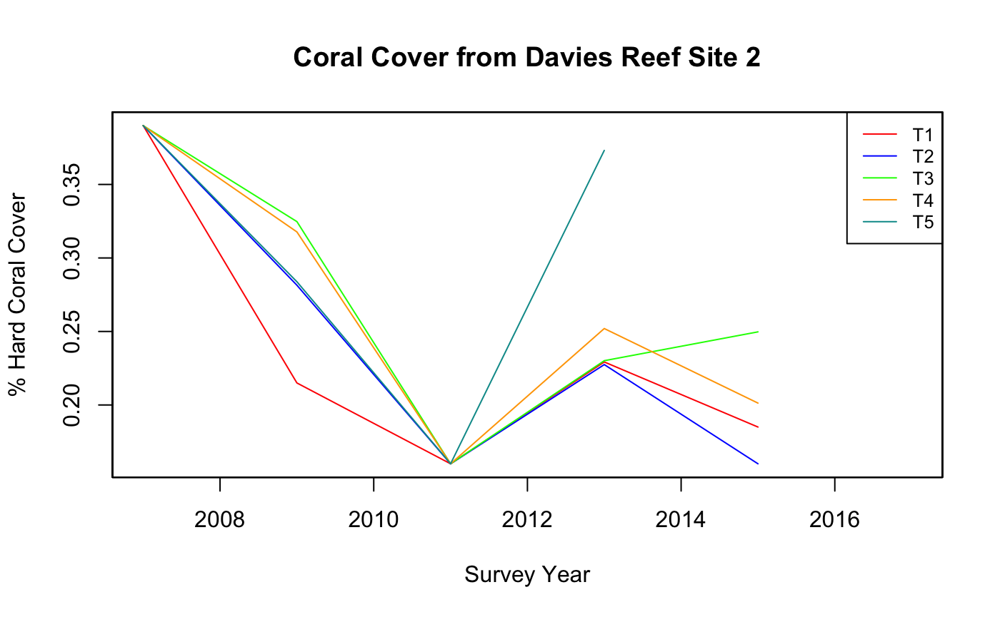
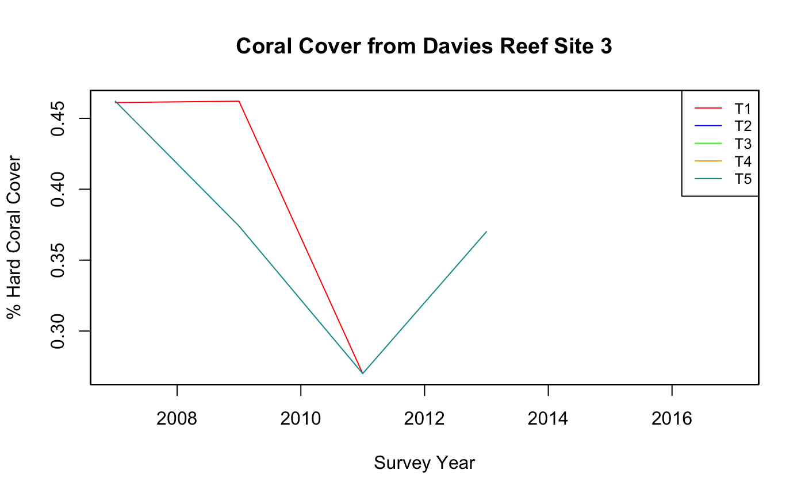
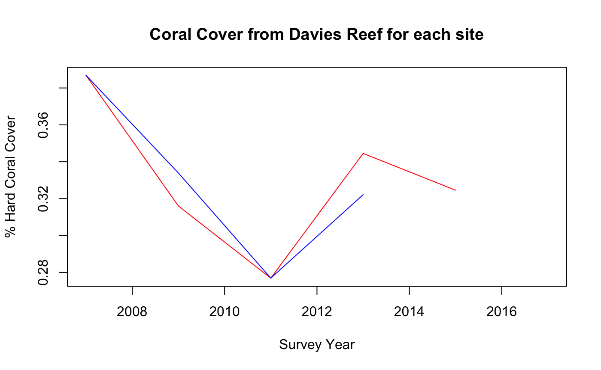
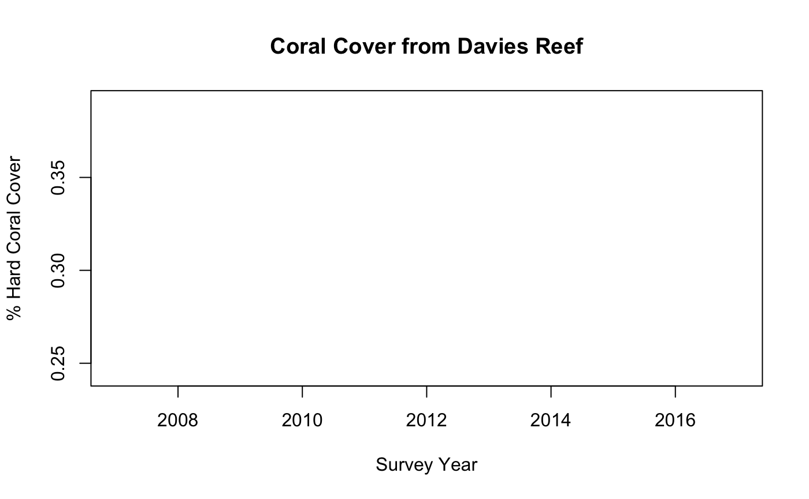
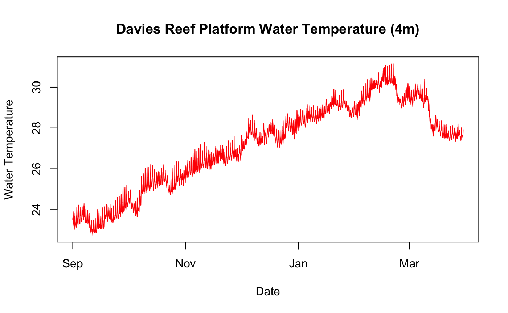

1. Register my API Key and Load the Libraries:
## ── Attaching packages ─────────────────────────────────────── tidyverse 1.3.0 ──## ✔ ggplot2 3.3.0 ✔ purrr 0.3.4
## ✔ tibble 3.0.1 ✔ dplyr 0.8.5
## ✔ tidyr 1.0.3 ✔ stringr 1.4.0
## ✔ readr 1.3.1 ✔ forcats 0.5.0## ── Conflicts ────────────────────────────────────────── tidyverse_conflicts() ──
## ✖ dplyr::filter() masks stats::filter()
## ✖ dplyr::lag() masks stats::lag()2. Find a Dataset:
We can see the sites available by:
filter_values_get("e791fa0e-053b-4a50-b856-aaa0b88848d7", filter_name = "sites")
## site_id site_name data_years
## 1 1136 Davies Reef Site 1 2005, 2007, 2009, 2011, 2013, 2015, 2017
## 2 1137 Davies Reef Site 2 2005, 2007, 2009, 2011, 2013, 2015, 2017
## 3 1138 Davies Reef Site 3 2005, 2007, 2009, 2011, 2013, 2015, 20173. Get the Percentage Hard Coral data from the API service by Site
Site1 <- aims_data_get("e791fa0e-053b-4a50-b856-aaa0b88848d7", filters = list("site"="Davies Reef Site 1", "from-date"="2007-01-01","thru-date"="2020-01-01"))
## Cite this data as:## ## Result count:Site2 <- aims_data_get("e791fa0e-053b-4a50-b856-aaa0b88848d7", filters = list("site"="Davies Reef Site 2", "from-date"="2007-01-01","thru-date"="2020-01-01"))
## Cite this data as:## ## Result count:Site3 <- aims_data_get("e791fa0e-053b-4a50-b856-aaa0b88848d7", filters = list("site"="Davies Reef Site 3", "from-date"="2007-01-01","thru-date"="2020-01-01"))
## Cite this data as:## ## Result count:Site1## id site_id site_name survey_id
## 1 10778 1136 Davies Reef Site 1 11801
## 2 10777 1136 Davies Reef Site 1 11800
## 3 10776 1136 Davies Reef Site 1 11799
## 4 10780 1136 Davies Reef Site 1 11803
## 5 10779 1136 Davies Reef Site 1 11802
## 6 10793 1136 Davies Reef Site 1 11816
## 7 10795 1136 Davies Reef Site 1 11818
## 8 10794 1136 Davies Reef Site 1 11817
## 9 10791 1136 Davies Reef Site 1 11814
## 10 10792 1136 Davies Reef Site 1 11815
## 11 10870 1136 Davies Reef Site 1 11888
## 12 10868 1136 Davies Reef Site 1 11886
## 13 10872 1136 Davies Reef Site 1 11890
## 14 10869 1136 Davies Reef Site 1 11887
## 15 10871 1136 Davies Reef Site 1 11889
## 16 10883 1136 Davies Reef Site 1 11931
## 17 10885 1136 Davies Reef Site 1 11933
## 18 10887 1136 Davies Reef Site 1 11935
## 19 10886 1136 Davies Reef Site 1 11934
## 20 10884 1136 Davies Reef Site 1 11932
## 21 10914 1136 Davies Reef Site 1 11962
## 22 10916 1136 Davies Reef Site 1 11964
## 23 10917 1136 Davies Reef Site 1 11965
## 24 10913 1136 Davies Reef Site 1 11961
## 25 10915 1136 Davies Reef Site 1 11963
## 26 10929 1136 Davies Reef Site 1 11976
## 27 10930 1136 Davies Reef Site 1 11977
## 28 10931 1136 Davies Reef Site 1 11978
## 29 10932 1136 Davies Reef Site 1 11979
## 30 10933 1136 Davies Reef Site 1 11980
## survey_title exposure year
## 1 Davies Reef Site 1 transect 3 2007-05-28 Exposed 2007
## 2 Davies Reef Site 1 transect 2 2007-05-28 Exposed 2007
## 3 Davies Reef Site 1 transect 1 2007-05-28 Exposed 2007
## 4 Davies Reef Site 1 transect 5 2007-05-28 Exposed 2007
## 5 Davies Reef Site 1 transect 4 2007-05-28 Exposed 2007
## 6 Davies Reef Site 1 transect 3 2009-04-29 Exposed 2009
## 7 Davies Reef Site 1 transect 5 2009-04-29 Exposed 2009
## 8 Davies Reef Site 1 transect 4 2009-04-29 Exposed 2009
## 9 Davies Reef Site 1 transect 1 2009-04-29 Exposed 2009
## 10 Davies Reef Site 1 transect 2 2009-04-29 Exposed 2009
## 11 Davies Reef Site 1 transect 3 2011-05-05 Exposed 2011
## 12 Davies Reef Site 1 transect 1 2011-05-05 Exposed 2011
## 13 Davies Reef Site 1 transect 5 2011-05-05 Exposed 2011
## 14 Davies Reef Site 1 transect 2 2011-05-05 Exposed 2011
## 15 Davies Reef Site 1 transect 4 2011-05-05 Exposed 2011
## 16 Davies Reef Site 1 transect 1 2013-05-21 Exposed 2013
## 17 Davies Reef Site 1 transect 3 2013-05-21 Exposed 2013
## 18 Davies Reef Site 1 transect 5 2013-05-21 Exposed 2013
## 19 Davies Reef Site 1 transect 4 2013-05-21 Exposed 2013
## 20 Davies Reef Site 1 transect 2 2013-05-21 Exposed 2013
## 21 Davies Reef Site 1 transect 2 2015-05-02 Exposed 2015
## 22 Davies Reef Site 1 transect 4 2015-05-02 Exposed 2015
## 23 Davies Reef Site 1 transect 5 2015-05-02 Exposed 2015
## 24 Davies Reef Site 1 transect 1 2015-05-02 Exposed 2015
## 25 Davies Reef Site 1 transect 3 2015-05-02 Exposed 2015
## 26 Davies Reef Site 1 transect 1 2017-05-08 Exposed 2017
## 27 Davies Reef Site 1 transect 2 2017-05-08 Exposed 2017
## 28 Davies Reef Site 1 transect 3 2017-05-08 Exposed 2017
## 29 Davies Reef Site 1 transect 4 2017-05-08 Exposed 2017
## 30 Davies Reef Site 1 transect 5 2017-05-08 Exposed 2017
## survey_start_date_time hc_cover latitude longitude data
## 1 2007-05-27T14:00:00.000Z 0.394736842105263 -18.806 147.6686
## 2 2007-05-27T14:00:00.000Z 0.34 -18.806 147.6686
## 3 2007-05-27T14:00:00.000Z 0.421052631578947 -18.806 147.6686
## 4 2007-05-27T14:00:00.000Z 0.368421052631579 -18.806 147.6686
## 5 2007-05-27T14:00:00.000Z 0.41 -18.806 147.6686
## 6 2009-04-28T14:00:00.000Z 0.415 -18.806 147.6686
## 7 2009-04-28T14:00:00.000Z 0.27 -18.806 147.6686
## 8 2009-04-28T14:00:00.000Z 0.255 -18.806 147.6686
## 9 2009-04-28T14:00:00.000Z 0.33 -18.806 147.6686
## 10 2009-04-28T14:00:00.000Z 0.31 -18.806 147.6686
## 11 2011-05-04T14:00:00.000Z 0.34 -18.806 147.6686
## 12 2011-05-04T14:00:00.000Z 0.29 -18.806 147.6686
## 13 2011-05-04T14:00:00.000Z 0.266666666666667 -18.806 147.6686
## 14 2011-05-04T14:00:00.000Z 0.226315789473684 -18.806 147.6686
## 15 2011-05-04T14:00:00.000Z 0.261538461538462 -18.806 147.6686
## 16 2013-05-20T14:00:00.000Z 0.365 -18.806 147.6686
## 17 2013-05-20T14:00:00.000Z 0.325 -18.806 147.6686
## 18 2013-05-20T14:00:00.000Z 0.367567567567568 -18.806 147.6686
## 19 2013-05-20T14:00:00.000Z 0.29 -18.806 147.6686
## 20 2013-05-20T14:00:00.000Z 0.375 -18.806 147.6686
## 21 2015-05-01T14:00:00.000Z 0.36 -18.806 147.6686
## 22 2015-05-01T14:00:00.000Z 0.3 -18.806 147.6686
## 23 2015-05-01T14:00:00.000Z 0.305 -18.806 147.6686
## 24 2015-05-01T14:00:00.000Z 0.352631578947368 -18.806 147.6686
## 25 2015-05-01T14:00:00.000Z 0.305263157894737 -18.806 147.6686
## 26 2017-05-07T14:00:00.000Z <NA> -18.806 147.6686
## 27 2017-05-07T14:00:00.000Z <NA> -18.806 147.6686
## 28 2017-05-07T14:00:00.000Z <NA> -18.806 147.6686
## 29 2017-05-07T14:00:00.000Z <NA> -18.806 147.6686
## 30 2017-05-07T14:00:00.000Z 0.308108108108108 -18.806 147.66864. Now massage the data into a form we can use..
First split this into individual transects (3 Sites by 5 Transects at each site = 15 transects in total)
Site1Trans1All <- Site1[grep("transect 1", Site1$survey_title),] Site1Trans2All <- Site1[grep("transect 2", Site1$survey_title),] Site1Trans3All <- Site1[grep("transect 3", Site1$survey_title),] Site1Trans4All <- Site1[grep("transect 4", Site1$survey_title),] Site1Trans5All <- Site1[grep("transect 5", Site1$survey_title),] Site2Trans1All <- Site2[grep("transect 1", Site2$survey_title),] Site2Trans2All <- Site2[grep("transect 2", Site2$survey_title),] Site2Trans3All <- Site2[grep("transect 3", Site2$survey_title),] Site2Trans4All <- Site2[grep("transect 4", Site2$survey_title),] Site2Trans5All <- Site2[grep("transect 5", Site2$survey_title),] Site3Trans1All <- Site3[grep("transect 1", Site3$survey_title),] Site3Trans2All <- Site3[grep("transect 2", Site3$survey_title),] Site3Trans3All <- Site3[grep("transect 3", Site3$survey_title),] Site3Trans4All <- Site3[grep("transect 4", Site3$survey_title),] Site3Trans5All <- Site3[grep("transect 5", Site3$survey_title),]
Now discard the columns we don’t want to leave the Hard Coral cover by Year for each Transect
Site1Trans1 <- subset(Site1Trans1All, select = c(year,hc_cover) ) Site1Trans2 <- subset(Site1Trans2All, select = c(year,hc_cover) ) Site1Trans3 <- subset(Site1Trans3All, select = c(year,hc_cover) ) Site1Trans4 <- subset(Site1Trans4All, select = c(year,hc_cover) ) Site1Trans5 <- subset(Site1Trans5All, select = c(year,hc_cover) ) Site2Trans1 <- subset(Site2Trans1All, select = c(year,hc_cover) ) Site2Trans2 <- subset(Site2Trans2All, select = c(year,hc_cover) ) Site2Trans3 <- subset(Site2Trans3All, select = c(year,hc_cover) ) Site2Trans4 <- subset(Site2Trans4All, select = c(year,hc_cover) ) Site2Trans5 <- subset(Site2Trans5All, select = c(year,hc_cover) ) Site3Trans1 <- subset(Site3Trans1All, select = c(year,hc_cover) ) Site3Trans2 <- subset(Site3Trans2All, select = c(year,hc_cover) ) Site3Trans3 <- subset(Site3Trans3All, select = c(year,hc_cover) ) Site3Trans4 <- subset(Site3Trans4All, select = c(year,hc_cover) ) Site3Trans5 <- subset(Site3Trans5All, select = c(year,hc_cover) )
and rename the columns so they are unique…
names(Site1Trans1)[names(Site1Trans1) == "hc_cover"] <- "hc_cover_S1T1" names(Site1Trans2)[names(Site1Trans2) == "hc_cover"] <- "hc_cover_S1T2" names(Site1Trans3)[names(Site1Trans3) == "hc_cover"] <- "hc_cover_S1T3" names(Site1Trans4)[names(Site1Trans4) == "hc_cover"] <- "hc_cover_S1T4" names(Site1Trans5)[names(Site1Trans5) == "hc_cover"] <- "hc_cover_S1T5" names(Site2Trans1)[names(Site2Trans1) == "hc_cover"] <- "hc_cover_S2T1" names(Site2Trans2)[names(Site2Trans2) == "hc_cover"] <- "hc_cover_S2T2" names(Site2Trans3)[names(Site2Trans3) == "hc_cover"] <- "hc_cover_S2T3" names(Site2Trans4)[names(Site2Trans4) == "hc_cover"] <- "hc_cover_S2T4" names(Site2Trans5)[names(Site2Trans5) == "hc_cover"] <- "hc_cover_S2T5" names(Site3Trans1)[names(Site3Trans1) == "hc_cover"] <- "hc_cover_S3T1" names(Site3Trans2)[names(Site3Trans2) == "hc_cover"] <- "hc_cover_S3T2" names(Site3Trans3)[names(Site3Trans3) == "hc_cover"] <- "hc_cover_S3T3" names(Site3Trans4)[names(Site3Trans4) == "hc_cover"] <- "hc_cover_S3T4" names(Site3Trans5)[names(Site3Trans5) == "hc_cover"] <- "hc_cover_S3T5"
and merge them into a new dataframe…
Site1Data1 <- merge(Site1Trans1,Site1Trans2,by="year") Site1Data2 <- merge(Site1Data1,Site1Trans3,by="year") Site1Data3 <- merge(Site1Data2,Site1Trans4,by="year") Site1Data <- merge(Site1Data3,Site1Trans5,by="year") Site2Data1 <- merge(Site2Trans1,Site2Trans2,by="year") Site2Data2 <- merge(Site2Data1,Site2Trans3,by="year") Site2Data3 <- merge(Site2Data2,Site2Trans4,by="year") Site2Data <- merge(Site2Data3,Site2Trans5,by="year") Site3Data1 <- merge(Site3Trans1,Site3Trans2,by="year") Site3Data2 <- merge(Site3Data1,Site3Trans3,by="year") Site3Data3 <- merge(Site3Data2,Site3Trans4,by="year") Site3Data <- merge(Site3Data3,Site3Trans5,by="year")
Site 1:
Site1Data## year hc_cover_S1T1 hc_cover_S1T2 hc_cover_S1T3 hc_cover_S1T4
## 1 2007 0.421052631578947 0.34 0.394736842105263 0.41
## 2 2009 0.33 0.31 0.415 0.255
## 3 2011 0.29 0.226315789473684 0.34 0.261538461538462
## 4 2013 0.365 0.375 0.325 0.29
## 5 2015 0.352631578947368 0.36 0.305263157894737 0.3
## 6 2017 <NA> <NA> <NA> <NA>
## hc_cover_S1T5
## 1 0.368421052631579
## 2 0.27
## 3 0.266666666666667
## 4 0.367567567567568
## 5 0.305
## 6 0.308108108108108Site 2:
Site2Data## year hc_cover_S2T1 hc_cover_S2T2 hc_cover_S2T3 hc_cover_S2T4
## 1 2007 0.39 0.405405405405405 0.405128205128205 0.4
## 2 2009 0.215 0.325 0.361111111111111 0.345
## 3 2011 0.16 0.235 0.25 0.225
## 4 2013 0.229268292682927 0.285 0.297297297297297 0.295
## 5 2015 0.185 0.235 0.310526315789474 0.256410256410256
## 6 2017 <NA> <NA> <NA> <NA>
## hc_cover_S2T5
## 1 0.364705882352941
## 2 0.307142857142857
## 3 0.24
## 4 0.355555555555556
## 5 <NA>
## 6 <NA>Site 3:
Site3Data## year hc_cover_S3T1 hc_cover_S3T2 hc_cover_S3T3 hc_cover_S3T4
## 1 2007 0.461111111111111 0.354285714285714 0.415384615384615 0.311764705882353
## 2 2009 0.462068965517241 <NA> <NA> <NA>
## 3 2011 0.27 0.26 0.22 0.23
## 4 2013 <NA> <NA> <NA> <NA>
## 5 2015 <NA> <NA> <NA> <NA>
## 6 2017 <NA> <NA> <NA> <NA>
## hc_cover_S3T5
## 1 0.42
## 2 0.31
## 3 0.18
## 4 0.305
## 5 <NA>
## 6 <NA>6. Now we can plot these
par(xpd=TRUE) plot(Site1Trans1$year, Site1Trans1$hc_cover, type='l', xlab="Survey Year", ylab="% Hard Coral Cover", main="Coral Cover from Davies Reef Site 1", col='red') legend("topright", legend=c("T1", "T2","T3","T4","T5"),col=c("red", "blue", "green", "orange","#009999"), lty=1, cex=0.8) par(new=TRUE) plot(Site1Trans2$year, Site1Trans2$hc_cover, type='l',xaxt='n', yaxt='n', ann=FALSE, xlab="", ylab="", col="blue") par(new=TRUE) plot(Site1Trans3$year, Site1Trans3$hc_cover, type='l',xaxt='n', yaxt='n', ann=FALSE, xlab="", ylab="", col="green") par(new=TRUE) plot(Site1Trans4$year, Site1Trans4$hc_cover, type='l',xaxt='n', yaxt='n', ann=FALSE, xlab="", ylab="", col="orange") par(new=TRUE) plot(Site1Trans5$year, Site1Trans5$hc_cover, type='l',xaxt='n', yaxt='n', ann=FALSE, xlab="", ylab="", col="#009999")

par(xpd=TRUE) plot(Site2Trans1$year, Site2Trans1$hc_cover, type='l', xlab="Survey Year", ylab="% Hard Coral Cover", main="Coral Cover from Davies Reef Site 2", col='red') legend("topright", legend=c("T1", "T2","T3","T4","T5"),col=c("red", "blue", "green", "orange","#009999"), lty=1, cex=0.8) par(new=TRUE) plot(Site2Trans2$year, Site2Trans2$hc_cover, type='l',xaxt='n', yaxt='n', ann=FALSE, xlab="", ylab="", col="blue") par(new=TRUE) plot(Site2Trans3$year, Site2Trans3$hc_cover, type='l',xaxt='n', yaxt='n', ann=FALSE, xlab="", ylab="", col="green") par(new=TRUE) plot(Site2Trans4$year, Site2Trans4$hc_cover, type='l',xaxt='n', yaxt='n', ann=FALSE, xlab="", ylab="", col="orange") par(new=TRUE) plot(Site2Trans5$year, Site2Trans5$hc_cover, type='l',xaxt='n', yaxt='n', ann=FALSE, xlab="", ylab="", col="#009999")

par(xpd=TRUE) plot(Site3Trans1$year, Site3Trans1$hc_cover, type='l', xlab="Survey Year", ylab="% Hard Coral Cover", main="Coral Cover from Davies Reef Site 3", col='red') legend("topright", legend=c("T1", "T2","T3","T4","T5"),col=c("red", "blue", "green", "orange","#009999"), lty=1, cex=0.8) par(new=TRUE) plot(Site3Trans2$year, Site3Trans2$hc_cover, type='l',xaxt='n', yaxt='n', ann=FALSE, xlab="", ylab="", col="blue") par(new=TRUE) plot(Site3Trans3$year, Site3Trans3$hc_cover, type='l',xaxt='n', yaxt='n', ann=FALSE, xlab="", ylab="", col="green") par(new=TRUE) plot(Site3Trans4$year, Site3Trans4$hc_cover, type='l',xaxt='n', yaxt='n', ann=FALSE, xlab="", ylab="", col="orange") par(new=TRUE) plot(Site3Trans5$year, Site3Trans5$hc_cover, type='l',xaxt='n', yaxt='n', ann=FALSE, xlab="", ylab="", col="#009999")

7. Now calculate Site averages…
first we need to make sure that the coral cover values are numbers
site1Temp <- transform(Site1Data, hc_cover_S1T1 = as.numeric(hc_cover_S1T1),hc_cover_S1T2 = as.numeric(hc_cover_S1T2),hc_cover_S1T3 = as.numeric(hc_cover_S1T3),hc_cover_S1T4 = as.numeric(hc_cover_S1T4),hc_cover_S1T5 = as.numeric(hc_cover_S1T5)) site2Temp <- transform(Site2Data, hc_cover_S2T1 = as.numeric(hc_cover_S2T1),hc_cover_S2T2 = as.numeric(hc_cover_S2T2),hc_cover_S2T3 = as.numeric(hc_cover_S2T3),hc_cover_S2T4 = as.numeric(hc_cover_S2T4),hc_cover_S2T5 = as.numeric(hc_cover_S2T5)) site3Temp <- transform(Site3Data, hc_cover_S3T1 = as.numeric(hc_cover_S3T1),hc_cover_S3T2 = as.numeric(hc_cover_S3T2),hc_cover_S3T3 = as.numeric(hc_cover_S3T3),hc_cover_S3T4 = as.numeric(hc_cover_S3T4),hc_cover_S3T5 = as.numeric(hc_cover_S3T5))
and calculate the means…
Site1Means <- site1Temp %>% mutate(Site1TransMean = (hc_cover_S1T1 + hc_cover_S1T2 + hc_cover_S1T3 + hc_cover_S1T4 + hc_cover_S1T5)/5.0) Site2Means <- site2Temp %>% mutate(Site2TransMean = (hc_cover_S2T1 + hc_cover_S2T2 + hc_cover_S2T3 + hc_cover_S2T4 + hc_cover_S2T5)/5.0) Site3Means <- site3Temp %>% mutate(Site3TransMean = (hc_cover_S3T1 + hc_cover_S3T2 + hc_cover_S3T3 + hc_cover_S3T4 + hc_cover_S3T5)/5.0)
which we can now plot…
par(xpd=TRUE) plot(Site1Means$year, Site1Means$Site1TransMean, type='l', xlab="Survey Year", ylab="% Hard Coral Cover", main="Coral Cover from Davies Reef for each site", col='red') par(new=TRUE) plot(Site2Means$year, Site2Means$Site2TransMean, type='l',xaxt='n', yaxt='n', ann=FALSE, xlab="", ylab="", col="blue") par(new=TRUE) plot(Site3Means$year, Site3Means$Site3TransMean, type='l',xaxt='n', yaxt='n', ann=FALSE, xlab="", ylab="", col="green")

7. Finally we can calaculate the Reef value through time…
Again we merge the site values into a new dataframe and then create an average on that for the reef values…
SiteMeansTemp1 <- merge(Site1Means,Site2Means,by="year") SiteMeansTemp2 <- merge(SiteMeansTemp1,Site3Means,by="year") SiteMeansTemp2
## year hc_cover_S1T1 hc_cover_S1T2 hc_cover_S1T3 hc_cover_S1T4 hc_cover_S1T5
## 1 2007 0.4210526 0.3400000 0.3947368 0.4100000 0.3684211
## 2 2009 0.3300000 0.3100000 0.4150000 0.2550000 0.2700000
## 3 2011 0.2900000 0.2263158 0.3400000 0.2615385 0.2666667
## 4 2013 0.3650000 0.3750000 0.3250000 0.2900000 0.3675676
## 5 2015 0.3526316 0.3600000 0.3052632 0.3000000 0.3050000
## 6 2017 NA NA NA NA 0.3081081
## Site1TransMean hc_cover_S2T1 hc_cover_S2T2 hc_cover_S2T3 hc_cover_S2T4
## 1 0.3868421 0.3900000 0.4054054 0.4051282 0.4000000
## 2 0.3160000 0.2150000 0.3250000 0.3611111 0.3450000
## 3 0.2769042 0.1600000 0.2350000 0.2500000 0.2250000
## 4 0.3445135 0.2292683 0.2850000 0.2972973 0.2950000
## 5 0.3245789 0.1850000 0.2350000 0.3105263 0.2564103
## 6 NA NA NA NA NA
## hc_cover_S2T5 Site2TransMean hc_cover_S3T1 hc_cover_S3T2 hc_cover_S3T3
## 1 0.3647059 0.3930479 0.4611111 0.3542857 0.4153846
## 2 0.3071429 0.3106508 0.4620690 NA NA
## 3 0.2400000 0.2220000 0.2700000 0.2600000 0.2200000
## 4 0.3555556 0.2924242 NA NA NA
## 5 NA NA NA NA NA
## 6 NA NA NA NA NA
## hc_cover_S3T4 hc_cover_S3T5 Site3TransMean
## 1 0.3117647 0.420 0.3925092
## 2 NA 0.310 NA
## 3 0.2300000 0.180 0.2320000
## 4 NA 0.305 NA
## 5 NA NA NA
## 6 NA NA NASiteMeans <- SiteMeansTemp2 %>% mutate(SiteMean_hc_cover = (Site1TransMean + Site2TransMean + Site3TransMean)/3.0) SiteMeans
## year hc_cover_S1T1 hc_cover_S1T2 hc_cover_S1T3 hc_cover_S1T4 hc_cover_S1T5
## 1 2007 0.4210526 0.3400000 0.3947368 0.4100000 0.3684211
## 2 2009 0.3300000 0.3100000 0.4150000 0.2550000 0.2700000
## 3 2011 0.2900000 0.2263158 0.3400000 0.2615385 0.2666667
## 4 2013 0.3650000 0.3750000 0.3250000 0.2900000 0.3675676
## 5 2015 0.3526316 0.3600000 0.3052632 0.3000000 0.3050000
## 6 2017 NA NA NA NA 0.3081081
## Site1TransMean hc_cover_S2T1 hc_cover_S2T2 hc_cover_S2T3 hc_cover_S2T4
## 1 0.3868421 0.3900000 0.4054054 0.4051282 0.4000000
## 2 0.3160000 0.2150000 0.3250000 0.3611111 0.3450000
## 3 0.2769042 0.1600000 0.2350000 0.2500000 0.2250000
## 4 0.3445135 0.2292683 0.2850000 0.2972973 0.2950000
## 5 0.3245789 0.1850000 0.2350000 0.3105263 0.2564103
## 6 NA NA NA NA NA
## hc_cover_S2T5 Site2TransMean hc_cover_S3T1 hc_cover_S3T2 hc_cover_S3T3
## 1 0.3647059 0.3930479 0.4611111 0.3542857 0.4153846
## 2 0.3071429 0.3106508 0.4620690 NA NA
## 3 0.2400000 0.2220000 0.2700000 0.2600000 0.2200000
## 4 0.3555556 0.2924242 NA NA NA
## 5 NA NA NA NA NA
## 6 NA NA NA NA NA
## hc_cover_S3T4 hc_cover_S3T5 Site3TransMean SiteMean_hc_cover
## 1 0.3117647 0.420 0.3925092 0.3907997
## 2 NA 0.310 NA NA
## 3 0.2300000 0.180 0.2320000 0.2436347
## 4 NA 0.305 NA NA
## 5 NA NA NA NA
## 6 NA NA NA NApar(xpd=TRUE) plot(SiteMeans$year, SiteMeans$SiteMean_hc_cover, type='l', xlab="Survey Year", ylab="% Hard Coral Cover", main="Coral Cover from Davies Reef", col='red')

Now get some more data… In this case the water temperatue data from the Davies Reef Weather Station and in particluar for the 2015-16 bleaching event…
weather_doi <- aims_data_doi_get("weather") weatherData <- aims_data_get(weather_doi, api_key = MY_API_KEY, filters = list("series" = 65, "from-date" = "2019-09-01", "thru-date" = "2020-03-30"))
## Cite this data as: Australian Institute of Marine Science (AIMS). 2009, Australian Institute of Marine Science Automatic Weather Stations, https://doi.org/10.25845/5c09bf93f315d, accessed 14 May 2020. Time period: 2019-09-01 to 2020-03-30. Series: Davies Reef Weather Station Water Temperature @4m## https://b5ms5dkmia.execute-api.ap-southeast-2.amazonaws.com/prod/data-by-doi/10.25845/5c09bf93f315d/data?from-date=2019-09-01&series=65&thru-date=2020-03-30&size=1000&cursor=470652!2019-09-07T22:30:00.000Z## https://b5ms5dkmia.execute-api.ap-southeast-2.amazonaws.com/prod/data-by-doi/10.25845/5c09bf93f315d/data?cursor=470652!2019-09-14T21:10:00.000Z&from-date=2019-09-01&series=65&size=1000&thru-date=2020-03-30## Result count: 2000## https://b5ms5dkmia.execute-api.ap-southeast-2.amazonaws.com/prod/data-by-doi/10.25845/5c09bf93f315d/data?cursor=470652!2019-09-21T19:50:00.000Z&from-date=2019-09-01&series=65&size=1000&thru-date=2020-03-30## Result count: 3000## https://b5ms5dkmia.execute-api.ap-southeast-2.amazonaws.com/prod/data-by-doi/10.25845/5c09bf93f315d/data?cursor=470652!2019-09-28T18:30:00.000Z&from-date=2019-09-01&series=65&size=1000&thru-date=2020-03-30## Result count: 4000## https://b5ms5dkmia.execute-api.ap-southeast-2.amazonaws.com/prod/data-by-doi/10.25845/5c09bf93f315d/data?cursor=470652!2019-10-05T17:10:00.000Z&from-date=2019-09-01&series=65&size=1000&thru-date=2020-03-30## Result count: 5000## https://b5ms5dkmia.execute-api.ap-southeast-2.amazonaws.com/prod/data-by-doi/10.25845/5c09bf93f315d/data?cursor=470652!2019-10-12T15:50:00.000Z&from-date=2019-09-01&series=65&size=1000&thru-date=2020-03-30## Result count: 6000## https://b5ms5dkmia.execute-api.ap-southeast-2.amazonaws.com/prod/data-by-doi/10.25845/5c09bf93f315d/data?cursor=470652!2019-10-19T14:30:00.000Z&from-date=2019-09-01&series=65&size=1000&thru-date=2020-03-30## Result count: 7000## https://b5ms5dkmia.execute-api.ap-southeast-2.amazonaws.com/prod/data-by-doi/10.25845/5c09bf93f315d/data?cursor=470652!2019-10-26T13:10:00.000Z&from-date=2019-09-01&series=65&size=1000&thru-date=2020-03-30## Result count: 8000## https://b5ms5dkmia.execute-api.ap-southeast-2.amazonaws.com/prod/data-by-doi/10.25845/5c09bf93f315d/data?cursor=470652!2019-11-02T11:50:00.000Z&from-date=2019-09-01&series=65&size=1000&thru-date=2020-03-30## Result count: 9000## https://b5ms5dkmia.execute-api.ap-southeast-2.amazonaws.com/prod/data-by-doi/10.25845/5c09bf93f315d/data?cursor=470652!2019-11-09T10:30:00.000Z&from-date=2019-09-01&series=65&size=1000&thru-date=2020-03-30## Result count: 10000## https://b5ms5dkmia.execute-api.ap-southeast-2.amazonaws.com/prod/data-by-doi/10.25845/5c09bf93f315d/data?cursor=470652!2019-11-16T09:10:00.000Z&from-date=2019-09-01&series=65&size=1000&thru-date=2020-03-30## Result count: 11000## https://b5ms5dkmia.execute-api.ap-southeast-2.amazonaws.com/prod/data-by-doi/10.25845/5c09bf93f315d/data?cursor=470652!2019-11-23T07:50:00.000Z&from-date=2019-09-01&series=65&size=1000&thru-date=2020-03-30## Result count: 12000## https://b5ms5dkmia.execute-api.ap-southeast-2.amazonaws.com/prod/data-by-doi/10.25845/5c09bf93f315d/data?cursor=470652!2019-11-30T06:30:00.000Z&from-date=2019-09-01&series=65&size=1000&thru-date=2020-03-30## Result count: 13000## https://b5ms5dkmia.execute-api.ap-southeast-2.amazonaws.com/prod/data-by-doi/10.25845/5c09bf93f315d/data?cursor=470652!2019-12-07T05:10:00.000Z&from-date=2019-09-01&series=65&size=1000&thru-date=2020-03-30## Result count: 14000## https://b5ms5dkmia.execute-api.ap-southeast-2.amazonaws.com/prod/data-by-doi/10.25845/5c09bf93f315d/data?cursor=470652!2019-12-14T03:50:00.000Z&from-date=2019-09-01&series=65&size=1000&thru-date=2020-03-30## Result count: 15000## https://b5ms5dkmia.execute-api.ap-southeast-2.amazonaws.com/prod/data-by-doi/10.25845/5c09bf93f315d/data?cursor=470652!2019-12-21T02:30:00.000Z&from-date=2019-09-01&series=65&size=1000&thru-date=2020-03-30## Result count: 16000## https://b5ms5dkmia.execute-api.ap-southeast-2.amazonaws.com/prod/data-by-doi/10.25845/5c09bf93f315d/data?cursor=470652!2019-12-28T01:10:00.000Z&from-date=2019-09-01&series=65&size=1000&thru-date=2020-03-30## Result count: 17000## https://b5ms5dkmia.execute-api.ap-southeast-2.amazonaws.com/prod/data-by-doi/10.25845/5c09bf93f315d/data?cursor=470652!2020-01-03T23:50:00.000Z&from-date=2019-09-01&series=65&size=1000&thru-date=2020-03-30## Result count: 18000## https://b5ms5dkmia.execute-api.ap-southeast-2.amazonaws.com/prod/data-by-doi/10.25845/5c09bf93f315d/data?cursor=470652!2020-01-10T22:30:00.000Z&from-date=2019-09-01&series=65&size=1000&thru-date=2020-03-30## Result count: 19000## https://b5ms5dkmia.execute-api.ap-southeast-2.amazonaws.com/prod/data-by-doi/10.25845/5c09bf93f315d/data?cursor=470652!2020-01-17T21:10:00.000Z&from-date=2019-09-01&series=65&size=1000&thru-date=2020-03-30## Result count: 20000## https://b5ms5dkmia.execute-api.ap-southeast-2.amazonaws.com/prod/data-by-doi/10.25845/5c09bf93f315d/data?cursor=470652!2020-01-24T19:50:00.000Z&from-date=2019-09-01&series=65&size=1000&thru-date=2020-03-30## Result count: 21000## https://b5ms5dkmia.execute-api.ap-southeast-2.amazonaws.com/prod/data-by-doi/10.25845/5c09bf93f315d/data?cursor=470652!2020-01-31T18:30:00.000Z&from-date=2019-09-01&series=65&size=1000&thru-date=2020-03-30## Result count: 22000## https://b5ms5dkmia.execute-api.ap-southeast-2.amazonaws.com/prod/data-by-doi/10.25845/5c09bf93f315d/data?cursor=470652!2020-02-07T17:10:00.000Z&from-date=2019-09-01&series=65&size=1000&thru-date=2020-03-30## Result count: 23000## https://b5ms5dkmia.execute-api.ap-southeast-2.amazonaws.com/prod/data-by-doi/10.25845/5c09bf93f315d/data?cursor=470652!2020-02-14T15:50:00.000Z&from-date=2019-09-01&series=65&size=1000&thru-date=2020-03-30## Result count: 24000## https://b5ms5dkmia.execute-api.ap-southeast-2.amazonaws.com/prod/data-by-doi/10.25845/5c09bf93f315d/data?cursor=470652!2020-02-21T14:30:00.000Z&from-date=2019-09-01&series=65&size=1000&thru-date=2020-03-30## Result count: 25000## https://b5ms5dkmia.execute-api.ap-southeast-2.amazonaws.com/prod/data-by-doi/10.25845/5c09bf93f315d/data?cursor=470652!2020-02-28T13:10:00.000Z&from-date=2019-09-01&series=65&size=1000&thru-date=2020-03-30## Result count: 26000## https://b5ms5dkmia.execute-api.ap-southeast-2.amazonaws.com/prod/data-by-doi/10.25845/5c09bf93f315d/data?cursor=470652!2020-03-06T11:50:00.000Z&from-date=2019-09-01&series=65&size=1000&thru-date=2020-03-30## Result count: 27000## https://b5ms5dkmia.execute-api.ap-southeast-2.amazonaws.com/prod/data-by-doi/10.25845/5c09bf93f315d/data?cursor=470652!2020-03-13T10:30:00.000Z&from-date=2019-09-01&series=65&size=1000&thru-date=2020-03-30## Result count: 28000## https://b5ms5dkmia.execute-api.ap-southeast-2.amazonaws.com/prod/data-by-doi/10.25845/5c09bf93f315d/data?cursor=470652!2020-03-20T09:10:00.000Z&from-date=2019-09-01&series=65&size=1000&thru-date=2020-03-30## Result count: 29000## https://b5ms5dkmia.execute-api.ap-southeast-2.amazonaws.com/prod/data-by-doi/10.25845/5c09bf93f315d/data?cursor=470652!2020-03-27T07:50:00.000Z&from-date=2019-09-01&series=65&size=1000&thru-date=2020-03-30## Result count: 30000## Result count: 30385plot(weatherData$data$time, weatherData$data$qc_value, type='l', xlab="Date", ylab="Water Temperature", main="Davies Reef Platform Water Temperature (4m)", col='red')

weatherData## $metadata
## [1] "Metadata record https://doi.org/10.25845/5c09bf93f315d"
##
## $citation
## [1] "Australian Institute of Marine Science (AIMS). 2009, Australian Institute of Marine Science Automatic Weather Stations, https://doi.org/10.25845/5c09bf93f315d, accessed 14 May 2020. Time period: 2019-09-01 to 2020-03-30. Series: Davies Reef Weather Station Water Temperature @4m"
##
## $links
## $links$next_page
## [1] "https://b5ms5dkmia.execute-api.ap-southeast-2.amazonaws.com/prod/data-by-doi/10.25845/5c09bf93f315d/data?from-date=2019-09-01&series=65&thru-date=2020-03-30&size=1000&cursor=470652!2019-09-07T22:30:00.000Z"
##
##
## $data
## deployment_id site_name location_name depth latitude
## 1 470652 Davies Reef Davies Reef Weather Station 4 -18.83162
## 2 470652 Davies Reef Davies Reef Weather Station 4 -18.83162
## 3 470652 Davies Reef Davies Reef Weather Station 4 -18.83162
## 4 470652 Davies Reef Davies Reef Weather Station 4 -18.83162
## 5 470652 Davies Reef Davies Reef Weather Station 4 -18.83162
## 6 470652 Davies Reef Davies Reef Weather Station 4 -18.83162
## 7 470652 Davies Reef Davies Reef Weather Station 4 -18.83162
## 8 470652 Davies Reef Davies Reef Weather Station 4 -18.83162
## 9 470652 Davies Reef Davies Reef Weather Station 4 -18.83162
## 10 470652 Davies Reef Davies Reef Weather Station 4 -18.83162
## 11 470652 Davies Reef Davies Reef Weather Station 4 -18.83162
## 12 470652 Davies Reef Davies Reef Weather Station 4 -18.83162
## 13 470652 Davies Reef Davies Reef Weather Station 4 -18.83162
## 14 470652 Davies Reef Davies Reef Weather Station 4 -18.83162
## 15 470652 Davies Reef Davies Reef Weather Station 4 -18.83162
## 16 470652 Davies Reef Davies Reef Weather Station 4 -18.83162
## 17 470652 Davies Reef Davies Reef Weather Station 4 -18.83162
## 18 470652 Davies Reef Davies Reef Weather Station 4 -18.83162
## 19 470652 Davies Reef Davies Reef Weather Station 4 -18.83162
## 20 470652 Davies Reef Davies Reef Weather Station 4 -18.83162
## 21 470652 Davies Reef Davies Reef Weather Station 4 -18.83162
## 22 470652 Davies Reef Davies Reef Weather Station 4 -18.83162
## 23 470652 Davies Reef Davies Reef Weather Station 4 -18.83162
## 24 470652 Davies Reef Davies Reef Weather Station 4 -18.83162
## 25 470652 Davies Reef Davies Reef Weather Station 4 -18.83162
## 26 470652 Davies Reef Davies Reef Weather Station 4 -18.83162
## 27 470652 Davies Reef Davies Reef Weather Station 4 -18.83162
## 28 470652 Davies Reef Davies Reef Weather Station 4 -18.83162
## 29 470652 Davies Reef Davies Reef Weather Station 4 -18.83162
## 30 470652 Davies Reef Davies Reef Weather Station 4 -18.83162
## 31 470652 Davies Reef Davies Reef Weather Station 4 -18.83162
## 32 470652 Davies Reef Davies Reef Weather Station 4 -18.83162
## 33 470652 Davies Reef Davies Reef Weather Station 4 -18.83162
## 34 470652 Davies Reef Davies Reef Weather Station 4 -18.83162
## 35 470652 Davies Reef Davies Reef Weather Station 4 -18.83162
## 36 470652 Davies Reef Davies Reef Weather Station 4 -18.83162
## 37 470652 Davies Reef Davies Reef Weather Station 4 -18.83162
## 38 470652 Davies Reef Davies Reef Weather Station 4 -18.83162
## 39 470652 Davies Reef Davies Reef Weather Station 4 -18.83162
## 40 470652 Davies Reef Davies Reef Weather Station 4 -18.83162
## 41 470652 Davies Reef Davies Reef Weather Station 4 -18.83162
## 42 470652 Davies Reef Davies Reef Weather Station 4 -18.83162
## 43 470652 Davies Reef Davies Reef Weather Station 4 -18.83162
## 44 470652 Davies Reef Davies Reef Weather Station 4 -18.83162
## 45 470652 Davies Reef Davies Reef Weather Station 4 -18.83162
## 46 470652 Davies Reef Davies Reef Weather Station 4 -18.83162
## 47 470652 Davies Reef Davies Reef Weather Station 4 -18.83162
## 48 470652 Davies Reef Davies Reef Weather Station 4 -18.83162
## 49 470652 Davies Reef Davies Reef Weather Station 4 -18.83162
## 50 470652 Davies Reef Davies Reef Weather Station 4 -18.83162
## 51 470652 Davies Reef Davies Reef Weather Station 4 -18.83162
## 52 470652 Davies Reef Davies Reef Weather Station 4 -18.83162
## 53 470652 Davies Reef Davies Reef Weather Station 4 -18.83162
## 54 470652 Davies Reef Davies Reef Weather Station 4 -18.83162
## 55 470652 Davies Reef Davies Reef Weather Station 4 -18.83162
## 56 470652 Davies Reef Davies Reef Weather Station 4 -18.83162
## 57 470652 Davies Reef Davies Reef Weather Station 4 -18.83162
## 58 470652 Davies Reef Davies Reef Weather Station 4 -18.83162
## 59 470652 Davies Reef Davies Reef Weather Station 4 -18.83162
## 60 470652 Davies Reef Davies Reef Weather Station 4 -18.83162
## 61 470652 Davies Reef Davies Reef Weather Station 4 -18.83162
## 62 470652 Davies Reef Davies Reef Weather Station 4 -18.83162
## 63 470652 Davies Reef Davies Reef Weather Station 4 -18.83162
## 64 470652 Davies Reef Davies Reef Weather Station 4 -18.83162
## 65 470652 Davies Reef Davies Reef Weather Station 4 -18.83162
## 66 470652 Davies Reef Davies Reef Weather Station 4 -18.83162
## 67 470652 Davies Reef Davies Reef Weather Station 4 -18.83162
## 68 470652 Davies Reef Davies Reef Weather Station 4 -18.83162
## 69 470652 Davies Reef Davies Reef Weather Station 4 -18.83162
## 70 470652 Davies Reef Davies Reef Weather Station 4 -18.83162
## 71 470652 Davies Reef Davies Reef Weather Station 4 -18.83162
## 72 470652 Davies Reef Davies Reef Weather Station 4 -18.83162
## 73 470652 Davies Reef Davies Reef Weather Station 4 -18.83162
## 74 470652 Davies Reef Davies Reef Weather Station 4 -18.83162
## 75 470652 Davies Reef Davies Reef Weather Station 4 -18.83162
## 76 470652 Davies Reef Davies Reef Weather Station 4 -18.83162
## 77 470652 Davies Reef Davies Reef Weather Station 4 -18.83162
## 78 470652 Davies Reef Davies Reef Weather Station 4 -18.83162
## 79 470652 Davies Reef Davies Reef Weather Station 4 -18.83162
## 80 470652 Davies Reef Davies Reef Weather Station 4 -18.83162
## 81 470652 Davies Reef Davies Reef Weather Station 4 -18.83162
## 82 470652 Davies Reef Davies Reef Weather Station 4 -18.83162
## 83 470652 Davies Reef Davies Reef Weather Station 4 -18.83162
## 84 470652 Davies Reef Davies Reef Weather Station 4 -18.83162
## 85 470652 Davies Reef Davies Reef Weather Station 4 -18.83162
## 86 470652 Davies Reef Davies Reef Weather Station 4 -18.83162
## 87 470652 Davies Reef Davies Reef Weather Station 4 -18.83162
## 88 470652 Davies Reef Davies Reef Weather Station 4 -18.83162
## 89 470652 Davies Reef Davies Reef Weather Station 4 -18.83162
## 90 470652 Davies Reef Davies Reef Weather Station 4 -18.83162
## 91 470652 Davies Reef Davies Reef Weather Station 4 -18.83162
## 92 470652 Davies Reef Davies Reef Weather Station 4 -18.83162
## 93 470652 Davies Reef Davies Reef Weather Station 4 -18.83162
## 94 470652 Davies Reef Davies Reef Weather Station 4 -18.83162
## 95 470652 Davies Reef Davies Reef Weather Station 4 -18.83162
## 96 470652 Davies Reef Davies Reef Weather Station 4 -18.83162
## 97 470652 Davies Reef Davies Reef Weather Station 4 -18.83162
## 98 470652 Davies Reef Davies Reef Weather Station 4 -18.83162
## 99 470652 Davies Reef Davies Reef Weather Station 4 -18.83162
## 100 470652 Davies Reef Davies Reef Weather Station 4 -18.83162
## 101 470652 Davies Reef Davies Reef Weather Station 4 -18.83162
## 102 470652 Davies Reef Davies Reef Weather Station 4 -18.83162
## 103 470652 Davies Reef Davies Reef Weather Station 4 -18.83162
## 104 470652 Davies Reef Davies Reef Weather Station 4 -18.83162
## 105 470652 Davies Reef Davies Reef Weather Station 4 -18.83162
## 106 470652 Davies Reef Davies Reef Weather Station 4 -18.83162
## 107 470652 Davies Reef Davies Reef Weather Station 4 -18.83162
## 108 470652 Davies Reef Davies Reef Weather Station 4 -18.83162
## 109 470652 Davies Reef Davies Reef Weather Station 4 -18.83162
## 110 470652 Davies Reef Davies Reef Weather Station 4 -18.83162
## 111 470652 Davies Reef Davies Reef Weather Station 4 -18.83162
## 112 470652 Davies Reef Davies Reef Weather Station 4 -18.83162
## 113 470652 Davies Reef Davies Reef Weather Station 4 -18.83162
## 114 470652 Davies Reef Davies Reef Weather Station 4 -18.83162
## 115 470652 Davies Reef Davies Reef Weather Station 4 -18.83162
## 116 470652 Davies Reef Davies Reef Weather Station 4 -18.83162
## 117 470652 Davies Reef Davies Reef Weather Station 4 -18.83162
## 118 470652 Davies Reef Davies Reef Weather Station 4 -18.83162
## 119 470652 Davies Reef Davies Reef Weather Station 4 -18.83162
## 120 470652 Davies Reef Davies Reef Weather Station 4 -18.83162
## 121 470652 Davies Reef Davies Reef Weather Station 4 -18.83162
## 122 470652 Davies Reef Davies Reef Weather Station 4 -18.83162
## 123 470652 Davies Reef Davies Reef Weather Station 4 -18.83162
## 124 470652 Davies Reef Davies Reef Weather Station 4 -18.83162
## 125 470652 Davies Reef Davies Reef Weather Station 4 -18.83162
## 126 470652 Davies Reef Davies Reef Weather Station 4 -18.83162
## 127 470652 Davies Reef Davies Reef Weather Station 4 -18.83162
## 128 470652 Davies Reef Davies Reef Weather Station 4 -18.83162
## 129 470652 Davies Reef Davies Reef Weather Station 4 -18.83162
## 130 470652 Davies Reef Davies Reef Weather Station 4 -18.83162
## 131 470652 Davies Reef Davies Reef Weather Station 4 -18.83162
## 132 470652 Davies Reef Davies Reef Weather Station 4 -18.83162
## 133 470652 Davies Reef Davies Reef Weather Station 4 -18.83162
## 134 470652 Davies Reef Davies Reef Weather Station 4 -18.83162
## 135 470652 Davies Reef Davies Reef Weather Station 4 -18.83162
## 136 470652 Davies Reef Davies Reef Weather Station 4 -18.83162
## 137 470652 Davies Reef Davies Reef Weather Station 4 -18.83162
## 138 470652 Davies Reef Davies Reef Weather Station 4 -18.83162
## 139 470652 Davies Reef Davies Reef Weather Station 4 -18.83162
## 140 470652 Davies Reef Davies Reef Weather Station 4 -18.83162
## 141 470652 Davies Reef Davies Reef Weather Station 4 -18.83162
## 142 470652 Davies Reef Davies Reef Weather Station 4 -18.83162
## 143 470652 Davies Reef Davies Reef Weather Station 4 -18.83162
## 144 470652 Davies Reef Davies Reef Weather Station 4 -18.83162
## 145 470652 Davies Reef Davies Reef Weather Station 4 -18.83162
## 146 470652 Davies Reef Davies Reef Weather Station 4 -18.83162
## 147 470652 Davies Reef Davies Reef Weather Station 4 -18.83162
## 148 470652 Davies Reef Davies Reef Weather Station 4 -18.83162
## 149 470652 Davies Reef Davies Reef Weather Station 4 -18.83162
## 150 470652 Davies Reef Davies Reef Weather Station 4 -18.83162
## 151 470652 Davies Reef Davies Reef Weather Station 4 -18.83162
## 152 470652 Davies Reef Davies Reef Weather Station 4 -18.83162
## 153 470652 Davies Reef Davies Reef Weather Station 4 -18.83162
## 154 470652 Davies Reef Davies Reef Weather Station 4 -18.83162
## 155 470652 Davies Reef Davies Reef Weather Station 4 -18.83162
## 156 470652 Davies Reef Davies Reef Weather Station 4 -18.83162
## 157 470652 Davies Reef Davies Reef Weather Station 4 -18.83162
## 158 470652 Davies Reef Davies Reef Weather Station 4 -18.83162
## 159 470652 Davies Reef Davies Reef Weather Station 4 -18.83162
## 160 470652 Davies Reef Davies Reef Weather Station 4 -18.83162
## 161 470652 Davies Reef Davies Reef Weather Station 4 -18.83162
## 162 470652 Davies Reef Davies Reef Weather Station 4 -18.83162
## 163 470652 Davies Reef Davies Reef Weather Station 4 -18.83162
## 164 470652 Davies Reef Davies Reef Weather Station 4 -18.83162
## 165 470652 Davies Reef Davies Reef Weather Station 4 -18.83162
## 166 470652 Davies Reef Davies Reef Weather Station 4 -18.83162
## 167 470652 Davies Reef Davies Reef Weather Station 4 -18.83162
## 168 470652 Davies Reef Davies Reef Weather Station 4 -18.83162
## 169 470652 Davies Reef Davies Reef Weather Station 4 -18.83162
## 170 470652 Davies Reef Davies Reef Weather Station 4 -18.83162
## 171 470652 Davies Reef Davies Reef Weather Station 4 -18.83162
## 172 470652 Davies Reef Davies Reef Weather Station 4 -18.83162
## 173 470652 Davies Reef Davies Reef Weather Station 4 -18.83162
## 174 470652 Davies Reef Davies Reef Weather Station 4 -18.83162
## 175 470652 Davies Reef Davies Reef Weather Station 4 -18.83162
## 176 470652 Davies Reef Davies Reef Weather Station 4 -18.83162
## 177 470652 Davies Reef Davies Reef Weather Station 4 -18.83162
## 178 470652 Davies Reef Davies Reef Weather Station 4 -18.83162
## 179 470652 Davies Reef Davies Reef Weather Station 4 -18.83162
## 180 470652 Davies Reef Davies Reef Weather Station 4 -18.83162
## 181 470652 Davies Reef Davies Reef Weather Station 4 -18.83162
## 182 470652 Davies Reef Davies Reef Weather Station 4 -18.83162
## 183 470652 Davies Reef Davies Reef Weather Station 4 -18.83162
## 184 470652 Davies Reef Davies Reef Weather Station 4 -18.83162
## 185 470652 Davies Reef Davies Reef Weather Station 4 -18.83162
## 186 470652 Davies Reef Davies Reef Weather Station 4 -18.83162
## 187 470652 Davies Reef Davies Reef Weather Station 4 -18.83162
## 188 470652 Davies Reef Davies Reef Weather Station 4 -18.83162
## 189 470652 Davies Reef Davies Reef Weather Station 4 -18.83162
## 190 470652 Davies Reef Davies Reef Weather Station 4 -18.83162
## 191 470652 Davies Reef Davies Reef Weather Station 4 -18.83162
## 192 470652 Davies Reef Davies Reef Weather Station 4 -18.83162
## 193 470652 Davies Reef Davies Reef Weather Station 4 -18.83162
## 194 470652 Davies Reef Davies Reef Weather Station 4 -18.83162
## 195 470652 Davies Reef Davies Reef Weather Station 4 -18.83162
## 196 470652 Davies Reef Davies Reef Weather Station 4 -18.83162
## 197 470652 Davies Reef Davies Reef Weather Station 4 -18.83162
## 198 470652 Davies Reef Davies Reef Weather Station 4 -18.83162
## 199 470652 Davies Reef Davies Reef Weather Station 4 -18.83162
## 200 470652 Davies Reef Davies Reef Weather Station 4 -18.83162
## 201 470652 Davies Reef Davies Reef Weather Station 4 -18.83162
## 202 470652 Davies Reef Davies Reef Weather Station 4 -18.83162
## 203 470652 Davies Reef Davies Reef Weather Station 4 -18.83162
## 204 470652 Davies Reef Davies Reef Weather Station 4 -18.83162
## 205 470652 Davies Reef Davies Reef Weather Station 4 -18.83162
## 206 470652 Davies Reef Davies Reef Weather Station 4 -18.83162
## 207 470652 Davies Reef Davies Reef Weather Station 4 -18.83162
## 208 470652 Davies Reef Davies Reef Weather Station 4 -18.83162
## 209 470652 Davies Reef Davies Reef Weather Station 4 -18.83162
## 210 470652 Davies Reef Davies Reef Weather Station 4 -18.83162
## 211 470652 Davies Reef Davies Reef Weather Station 4 -18.83162
## 212 470652 Davies Reef Davies Reef Weather Station 4 -18.83162
## 213 470652 Davies Reef Davies Reef Weather Station 4 -18.83162
## 214 470652 Davies Reef Davies Reef Weather Station 4 -18.83162
## 215 470652 Davies Reef Davies Reef Weather Station 4 -18.83162
## 216 470652 Davies Reef Davies Reef Weather Station 4 -18.83162
## 217 470652 Davies Reef Davies Reef Weather Station 4 -18.83162
## 218 470652 Davies Reef Davies Reef Weather Station 4 -18.83162
## 219 470652 Davies Reef Davies Reef Weather Station 4 -18.83162
## 220 470652 Davies Reef Davies Reef Weather Station 4 -18.83162
## 221 470652 Davies Reef Davies Reef Weather Station 4 -18.83162
## 222 470652 Davies Reef Davies Reef Weather Station 4 -18.83162
## 223 470652 Davies Reef Davies Reef Weather Station 4 -18.83162
## 224 470652 Davies Reef Davies Reef Weather Station 4 -18.83162
## 225 470652 Davies Reef Davies Reef Weather Station 4 -18.83162
## 226 470652 Davies Reef Davies Reef Weather Station 4 -18.83162
## 227 470652 Davies Reef Davies Reef Weather Station 4 -18.83162
## 228 470652 Davies Reef Davies Reef Weather Station 4 -18.83162
## 229 470652 Davies Reef Davies Reef Weather Station 4 -18.83162
## 230 470652 Davies Reef Davies Reef Weather Station 4 -18.83162
## 231 470652 Davies Reef Davies Reef Weather Station 4 -18.83162
## 232 470652 Davies Reef Davies Reef Weather Station 4 -18.83162
## 233 470652 Davies Reef Davies Reef Weather Station 4 -18.83162
## 234 470652 Davies Reef Davies Reef Weather Station 4 -18.83162
## 235 470652 Davies Reef Davies Reef Weather Station 4 -18.83162
## 236 470652 Davies Reef Davies Reef Weather Station 4 -18.83162
## 237 470652 Davies Reef Davies Reef Weather Station 4 -18.83162
## 238 470652 Davies Reef Davies Reef Weather Station 4 -18.83162
## 239 470652 Davies Reef Davies Reef Weather Station 4 -18.83162
## 240 470652 Davies Reef Davies Reef Weather Station 4 -18.83162
## 241 470652 Davies Reef Davies Reef Weather Station 4 -18.83162
## 242 470652 Davies Reef Davies Reef Weather Station 4 -18.83162
## 243 470652 Davies Reef Davies Reef Weather Station 4 -18.83162
## 244 470652 Davies Reef Davies Reef Weather Station 4 -18.83162
## 245 470652 Davies Reef Davies Reef Weather Station 4 -18.83162
## 246 470652 Davies Reef Davies Reef Weather Station 4 -18.83162
## 247 470652 Davies Reef Davies Reef Weather Station 4 -18.83162
## 248 470652 Davies Reef Davies Reef Weather Station 4 -18.83162
## 249 470652 Davies Reef Davies Reef Weather Station 4 -18.83162
## 250 470652 Davies Reef Davies Reef Weather Station 4 -18.83162
## 251 470652 Davies Reef Davies Reef Weather Station 4 -18.83162
## 252 470652 Davies Reef Davies Reef Weather Station 4 -18.83162
## 253 470652 Davies Reef Davies Reef Weather Station 4 -18.83162
## 254 470652 Davies Reef Davies Reef Weather Station 4 -18.83162
## 255 470652 Davies Reef Davies Reef Weather Station 4 -18.83162
## 256 470652 Davies Reef Davies Reef Weather Station 4 -18.83162
## 257 470652 Davies Reef Davies Reef Weather Station 4 -18.83162
## 258 470652 Davies Reef Davies Reef Weather Station 4 -18.83162
## 259 470652 Davies Reef Davies Reef Weather Station 4 -18.83162
## 260 470652 Davies Reef Davies Reef Weather Station 4 -18.83162
## 261 470652 Davies Reef Davies Reef Weather Station 4 -18.83162
## 262 470652 Davies Reef Davies Reef Weather Station 4 -18.83162
## 263 470652 Davies Reef Davies Reef Weather Station 4 -18.83162
## 264 470652 Davies Reef Davies Reef Weather Station 4 -18.83162
## 265 470652 Davies Reef Davies Reef Weather Station 4 -18.83162
## 266 470652 Davies Reef Davies Reef Weather Station 4 -18.83162
## 267 470652 Davies Reef Davies Reef Weather Station 4 -18.83162
## 268 470652 Davies Reef Davies Reef Weather Station 4 -18.83162
## 269 470652 Davies Reef Davies Reef Weather Station 4 -18.83162
## 270 470652 Davies Reef Davies Reef Weather Station 4 -18.83162
## 271 470652 Davies Reef Davies Reef Weather Station 4 -18.83162
## 272 470652 Davies Reef Davies Reef Weather Station 4 -18.83162
## 273 470652 Davies Reef Davies Reef Weather Station 4 -18.83162
## 274 470652 Davies Reef Davies Reef Weather Station 4 -18.83162
## 275 470652 Davies Reef Davies Reef Weather Station 4 -18.83162
## 276 470652 Davies Reef Davies Reef Weather Station 4 -18.83162
## 277 470652 Davies Reef Davies Reef Weather Station 4 -18.83162
## 278 470652 Davies Reef Davies Reef Weather Station 4 -18.83162
## 279 470652 Davies Reef Davies Reef Weather Station 4 -18.83162
## 280 470652 Davies Reef Davies Reef Weather Station 4 -18.83162
## 281 470652 Davies Reef Davies Reef Weather Station 4 -18.83162
## 282 470652 Davies Reef Davies Reef Weather Station 4 -18.83162
## 283 470652 Davies Reef Davies Reef Weather Station 4 -18.83162
## 284 470652 Davies Reef Davies Reef Weather Station 4 -18.83162
## 285 470652 Davies Reef Davies Reef Weather Station 4 -18.83162
## 286 470652 Davies Reef Davies Reef Weather Station 4 -18.83162
## 287 470652 Davies Reef Davies Reef Weather Station 4 -18.83162
## 288 470652 Davies Reef Davies Reef Weather Station 4 -18.83162
## 289 470652 Davies Reef Davies Reef Weather Station 4 -18.83162
## 290 470652 Davies Reef Davies Reef Weather Station 4 -18.83162
## 291 470652 Davies Reef Davies Reef Weather Station 4 -18.83162
## 292 470652 Davies Reef Davies Reef Weather Station 4 -18.83162
## 293 470652 Davies Reef Davies Reef Weather Station 4 -18.83162
## 294 470652 Davies Reef Davies Reef Weather Station 4 -18.83162
## 295 470652 Davies Reef Davies Reef Weather Station 4 -18.83162
## 296 470652 Davies Reef Davies Reef Weather Station 4 -18.83162
## 297 470652 Davies Reef Davies Reef Weather Station 4 -18.83162
## 298 470652 Davies Reef Davies Reef Weather Station 4 -18.83162
## 299 470652 Davies Reef Davies Reef Weather Station 4 -18.83162
## 300 470652 Davies Reef Davies Reef Weather Station 4 -18.83162
## 301 470652 Davies Reef Davies Reef Weather Station 4 -18.83162
## 302 470652 Davies Reef Davies Reef Weather Station 4 -18.83162
## 303 470652 Davies Reef Davies Reef Weather Station 4 -18.83162
## 304 470652 Davies Reef Davies Reef Weather Station 4 -18.83162
## 305 470652 Davies Reef Davies Reef Weather Station 4 -18.83162
## 306 470652 Davies Reef Davies Reef Weather Station 4 -18.83162
## 307 470652 Davies Reef Davies Reef Weather Station 4 -18.83162
## 308 470652 Davies Reef Davies Reef Weather Station 4 -18.83162
## 309 470652 Davies Reef Davies Reef Weather Station 4 -18.83162
## 310 470652 Davies Reef Davies Reef Weather Station 4 -18.83162
## 311 470652 Davies Reef Davies Reef Weather Station 4 -18.83162
## 312 470652 Davies Reef Davies Reef Weather Station 4 -18.83162
## 313 470652 Davies Reef Davies Reef Weather Station 4 -18.83162
## 314 470652 Davies Reef Davies Reef Weather Station 4 -18.83162
## 315 470652 Davies Reef Davies Reef Weather Station 4 -18.83162
## 316 470652 Davies Reef Davies Reef Weather Station 4 -18.83162
## 317 470652 Davies Reef Davies Reef Weather Station 4 -18.83162
## 318 470652 Davies Reef Davies Reef Weather Station 4 -18.83162
## 319 470652 Davies Reef Davies Reef Weather Station 4 -18.83162
## 320 470652 Davies Reef Davies Reef Weather Station 4 -18.83162
## 321 470652 Davies Reef Davies Reef Weather Station 4 -18.83162
## 322 470652 Davies Reef Davies Reef Weather Station 4 -18.83162
## 323 470652 Davies Reef Davies Reef Weather Station 4 -18.83162
## 324 470652 Davies Reef Davies Reef Weather Station 4 -18.83162
## 325 470652 Davies Reef Davies Reef Weather Station 4 -18.83162
## 326 470652 Davies Reef Davies Reef Weather Station 4 -18.83162
## 327 470652 Davies Reef Davies Reef Weather Station 4 -18.83162
## 328 470652 Davies Reef Davies Reef Weather Station 4 -18.83162
## 329 470652 Davies Reef Davies Reef Weather Station 4 -18.83162
## 330 470652 Davies Reef Davies Reef Weather Station 4 -18.83162
## 331 470652 Davies Reef Davies Reef Weather Station 4 -18.83162
## 332 470652 Davies Reef Davies Reef Weather Station 4 -18.83162
## 333 470652 Davies Reef Davies Reef Weather Station 4 -18.83162
## 334 470652 Davies Reef Davies Reef Weather Station 4 -18.83162
## 335 470652 Davies Reef Davies Reef Weather Station 4 -18.83162
## 336 470652 Davies Reef Davies Reef Weather Station 4 -18.83162
## 337 470652 Davies Reef Davies Reef Weather Station 4 -18.83162
## 338 470652 Davies Reef Davies Reef Weather Station 4 -18.83162
## 339 470652 Davies Reef Davies Reef Weather Station 4 -18.83162
## 340 470652 Davies Reef Davies Reef Weather Station 4 -18.83162
## 341 470652 Davies Reef Davies Reef Weather Station 4 -18.83162
## 342 470652 Davies Reef Davies Reef Weather Station 4 -18.83162
## 343 470652 Davies Reef Davies Reef Weather Station 4 -18.83162
## 344 470652 Davies Reef Davies Reef Weather Station 4 -18.83162
## 345 470652 Davies Reef Davies Reef Weather Station 4 -18.83162
## 346 470652 Davies Reef Davies Reef Weather Station 4 -18.83162
## 347 470652 Davies Reef Davies Reef Weather Station 4 -18.83162
## 348 470652 Davies Reef Davies Reef Weather Station 4 -18.83162
## 349 470652 Davies Reef Davies Reef Weather Station 4 -18.83162
## 350 470652 Davies Reef Davies Reef Weather Station 4 -18.83162
## 351 470652 Davies Reef Davies Reef Weather Station 4 -18.83162
## 352 470652 Davies Reef Davies Reef Weather Station 4 -18.83162
## 353 470652 Davies Reef Davies Reef Weather Station 4 -18.83162
## 354 470652 Davies Reef Davies Reef Weather Station 4 -18.83162
## 355 470652 Davies Reef Davies Reef Weather Station 4 -18.83162
## 356 470652 Davies Reef Davies Reef Weather Station 4 -18.83162
## 357 470652 Davies Reef Davies Reef Weather Station 4 -18.83162
## 358 470652 Davies Reef Davies Reef Weather Station 4 -18.83162
## 359 470652 Davies Reef Davies Reef Weather Station 4 -18.83162
## 360 470652 Davies Reef Davies Reef Weather Station 4 -18.83162
## 361 470652 Davies Reef Davies Reef Weather Station 4 -18.83162
## 362 470652 Davies Reef Davies Reef Weather Station 4 -18.83162
## 363 470652 Davies Reef Davies Reef Weather Station 4 -18.83162
## 364 470652 Davies Reef Davies Reef Weather Station 4 -18.83162
## 365 470652 Davies Reef Davies Reef Weather Station 4 -18.83162
## 366 470652 Davies Reef Davies Reef Weather Station 4 -18.83162
## 367 470652 Davies Reef Davies Reef Weather Station 4 -18.83162
## 368 470652 Davies Reef Davies Reef Weather Station 4 -18.83162
## 369 470652 Davies Reef Davies Reef Weather Station 4 -18.83162
## 370 470652 Davies Reef Davies Reef Weather Station 4 -18.83162
## 371 470652 Davies Reef Davies Reef Weather Station 4 -18.83162
## 372 470652 Davies Reef Davies Reef Weather Station 4 -18.83162
## 373 470652 Davies Reef Davies Reef Weather Station 4 -18.83162
## 374 470652 Davies Reef Davies Reef Weather Station 4 -18.83162
## 375 470652 Davies Reef Davies Reef Weather Station 4 -18.83162
## 376 470652 Davies Reef Davies Reef Weather Station 4 -18.83162
## 377 470652 Davies Reef Davies Reef Weather Station 4 -18.83162
## 378 470652 Davies Reef Davies Reef Weather Station 4 -18.83162
## 379 470652 Davies Reef Davies Reef Weather Station 4 -18.83162
## 380 470652 Davies Reef Davies Reef Weather Station 4 -18.83162
## 381 470652 Davies Reef Davies Reef Weather Station 4 -18.83162
## 382 470652 Davies Reef Davies Reef Weather Station 4 -18.83162
## 383 470652 Davies Reef Davies Reef Weather Station 4 -18.83162
## 384 470652 Davies Reef Davies Reef Weather Station 4 -18.83162
## 385 470652 Davies Reef Davies Reef Weather Station 4 -18.83162
## 386 470652 Davies Reef Davies Reef Weather Station 4 -18.83162
## 387 470652 Davies Reef Davies Reef Weather Station 4 -18.83162
## 388 470652 Davies Reef Davies Reef Weather Station 4 -18.83162
## 389 470652 Davies Reef Davies Reef Weather Station 4 -18.83162
## 390 470652 Davies Reef Davies Reef Weather Station 4 -18.83162
## 391 470652 Davies Reef Davies Reef Weather Station 4 -18.83162
## 392 470652 Davies Reef Davies Reef Weather Station 4 -18.83162
## 393 470652 Davies Reef Davies Reef Weather Station 4 -18.83162
## 394 470652 Davies Reef Davies Reef Weather Station 4 -18.83162
## 395 470652 Davies Reef Davies Reef Weather Station 4 -18.83162
## 396 470652 Davies Reef Davies Reef Weather Station 4 -18.83162
## 397 470652 Davies Reef Davies Reef Weather Station 4 -18.83162
## 398 470652 Davies Reef Davies Reef Weather Station 4 -18.83162
## 399 470652 Davies Reef Davies Reef Weather Station 4 -18.83162
## 400 470652 Davies Reef Davies Reef Weather Station 4 -18.83162
## 401 470652 Davies Reef Davies Reef Weather Station 4 -18.83162
## 402 470652 Davies Reef Davies Reef Weather Station 4 -18.83162
## 403 470652 Davies Reef Davies Reef Weather Station 4 -18.83162
## 404 470652 Davies Reef Davies Reef Weather Station 4 -18.83162
## 405 470652 Davies Reef Davies Reef Weather Station 4 -18.83162
## 406 470652 Davies Reef Davies Reef Weather Station 4 -18.83162
## 407 470652 Davies Reef Davies Reef Weather Station 4 -18.83162
## 408 470652 Davies Reef Davies Reef Weather Station 4 -18.83162
## 409 470652 Davies Reef Davies Reef Weather Station 4 -18.83162
## 410 470652 Davies Reef Davies Reef Weather Station 4 -18.83162
## 411 470652 Davies Reef Davies Reef Weather Station 4 -18.83162
## 412 470652 Davies Reef Davies Reef Weather Station 4 -18.83162
## 413 470652 Davies Reef Davies Reef Weather Station 4 -18.83162
## 414 470652 Davies Reef Davies Reef Weather Station 4 -18.83162
## 415 470652 Davies Reef Davies Reef Weather Station 4 -18.83162
## 416 470652 Davies Reef Davies Reef Weather Station 4 -18.83162
## 417 470652 Davies Reef Davies Reef Weather Station 4 -18.83162
## 418 470652 Davies Reef Davies Reef Weather Station 4 -18.83162
## 419 470652 Davies Reef Davies Reef Weather Station 4 -18.83162
## 420 470652 Davies Reef Davies Reef Weather Station 4 -18.83162
## 421 470652 Davies Reef Davies Reef Weather Station 4 -18.83162
## 422 470652 Davies Reef Davies Reef Weather Station 4 -18.83162
## 423 470652 Davies Reef Davies Reef Weather Station 4 -18.83162
## 424 470652 Davies Reef Davies Reef Weather Station 4 -18.83162
## 425 470652 Davies Reef Davies Reef Weather Station 4 -18.83162
## 426 470652 Davies Reef Davies Reef Weather Station 4 -18.83162
## 427 470652 Davies Reef Davies Reef Weather Station 4 -18.83162
## 428 470652 Davies Reef Davies Reef Weather Station 4 -18.83162
## 429 470652 Davies Reef Davies Reef Weather Station 4 -18.83162
## 430 470652 Davies Reef Davies Reef Weather Station 4 -18.83162
## 431 470652 Davies Reef Davies Reef Weather Station 4 -18.83162
## 432 470652 Davies Reef Davies Reef Weather Station 4 -18.83162
## 433 470652 Davies Reef Davies Reef Weather Station 4 -18.83162
## 434 470652 Davies Reef Davies Reef Weather Station 4 -18.83162
## 435 470652 Davies Reef Davies Reef Weather Station 4 -18.83162
## 436 470652 Davies Reef Davies Reef Weather Station 4 -18.83162
## 437 470652 Davies Reef Davies Reef Weather Station 4 -18.83162
## 438 470652 Davies Reef Davies Reef Weather Station 4 -18.83162
## 439 470652 Davies Reef Davies Reef Weather Station 4 -18.83162
## 440 470652 Davies Reef Davies Reef Weather Station 4 -18.83162
## 441 470652 Davies Reef Davies Reef Weather Station 4 -18.83162
## 442 470652 Davies Reef Davies Reef Weather Station 4 -18.83162
## 443 470652 Davies Reef Davies Reef Weather Station 4 -18.83162
## 444 470652 Davies Reef Davies Reef Weather Station 4 -18.83162
## 445 470652 Davies Reef Davies Reef Weather Station 4 -18.83162
## 446 470652 Davies Reef Davies Reef Weather Station 4 -18.83162
## 447 470652 Davies Reef Davies Reef Weather Station 4 -18.83162
## 448 470652 Davies Reef Davies Reef Weather Station 4 -18.83162
## 449 470652 Davies Reef Davies Reef Weather Station 4 -18.83162
## 450 470652 Davies Reef Davies Reef Weather Station 4 -18.83162
## 451 470652 Davies Reef Davies Reef Weather Station 4 -18.83162
## 452 470652 Davies Reef Davies Reef Weather Station 4 -18.83162
## 453 470652 Davies Reef Davies Reef Weather Station 4 -18.83162
## 454 470652 Davies Reef Davies Reef Weather Station 4 -18.83162
## 455 470652 Davies Reef Davies Reef Weather Station 4 -18.83162
## 456 470652 Davies Reef Davies Reef Weather Station 4 -18.83162
## 457 470652 Davies Reef Davies Reef Weather Station 4 -18.83162
## 458 470652 Davies Reef Davies Reef Weather Station 4 -18.83162
## 459 470652 Davies Reef Davies Reef Weather Station 4 -18.83162
## 460 470652 Davies Reef Davies Reef Weather Station 4 -18.83162
## 461 470652 Davies Reef Davies Reef Weather Station 4 -18.83162
## 462 470652 Davies Reef Davies Reef Weather Station 4 -18.83162
## 463 470652 Davies Reef Davies Reef Weather Station 4 -18.83162
## 464 470652 Davies Reef Davies Reef Weather Station 4 -18.83162
## 465 470652 Davies Reef Davies Reef Weather Station 4 -18.83162
## 466 470652 Davies Reef Davies Reef Weather Station 4 -18.83162
## 467 470652 Davies Reef Davies Reef Weather Station 4 -18.83162
## 468 470652 Davies Reef Davies Reef Weather Station 4 -18.83162
## 469 470652 Davies Reef Davies Reef Weather Station 4 -18.83162
## 470 470652 Davies Reef Davies Reef Weather Station 4 -18.83162
## 471 470652 Davies Reef Davies Reef Weather Station 4 -18.83162
## 472 470652 Davies Reef Davies Reef Weather Station 4 -18.83162
## 473 470652 Davies Reef Davies Reef Weather Station 4 -18.83162
## 474 470652 Davies Reef Davies Reef Weather Station 4 -18.83162
## 475 470652 Davies Reef Davies Reef Weather Station 4 -18.83162
## 476 470652 Davies Reef Davies Reef Weather Station 4 -18.83162
## 477 470652 Davies Reef Davies Reef Weather Station 4 -18.83162
## 478 470652 Davies Reef Davies Reef Weather Station 4 -18.83162
## 479 470652 Davies Reef Davies Reef Weather Station 4 -18.83162
## 480 470652 Davies Reef Davies Reef Weather Station 4 -18.83162
## 481 470652 Davies Reef Davies Reef Weather Station 4 -18.83162
## 482 470652 Davies Reef Davies Reef Weather Station 4 -18.83162
## 483 470652 Davies Reef Davies Reef Weather Station 4 -18.83162
## 484 470652 Davies Reef Davies Reef Weather Station 4 -18.83162
## 485 470652 Davies Reef Davies Reef Weather Station 4 -18.83162
## 486 470652 Davies Reef Davies Reef Weather Station 4 -18.83162
## 487 470652 Davies Reef Davies Reef Weather Station 4 -18.83162
## 488 470652 Davies Reef Davies Reef Weather Station 4 -18.83162
## 489 470652 Davies Reef Davies Reef Weather Station 4 -18.83162
## 490 470652 Davies Reef Davies Reef Weather Station 4 -18.83162
## 491 470652 Davies Reef Davies Reef Weather Station 4 -18.83162
## 492 470652 Davies Reef Davies Reef Weather Station 4 -18.83162
## 493 470652 Davies Reef Davies Reef Weather Station 4 -18.83162
## 494 470652 Davies Reef Davies Reef Weather Station 4 -18.83162
## 495 470652 Davies Reef Davies Reef Weather Station 4 -18.83162
## 496 470652 Davies Reef Davies Reef Weather Station 4 -18.83162
## 497 470652 Davies Reef Davies Reef Weather Station 4 -18.83162
## 498 470652 Davies Reef Davies Reef Weather Station 4 -18.83162
## 499 470652 Davies Reef Davies Reef Weather Station 4 -18.83162
## 500 470652 Davies Reef Davies Reef Weather Station 4 -18.83162
## 501 470652 Davies Reef Davies Reef Weather Station 4 -18.83162
## 502 470652 Davies Reef Davies Reef Weather Station 4 -18.83162
## 503 470652 Davies Reef Davies Reef Weather Station 4 -18.83162
## 504 470652 Davies Reef Davies Reef Weather Station 4 -18.83162
## 505 470652 Davies Reef Davies Reef Weather Station 4 -18.83162
## 506 470652 Davies Reef Davies Reef Weather Station 4 -18.83162
## 507 470652 Davies Reef Davies Reef Weather Station 4 -18.83162
## 508 470652 Davies Reef Davies Reef Weather Station 4 -18.83162
## 509 470652 Davies Reef Davies Reef Weather Station 4 -18.83162
## 510 470652 Davies Reef Davies Reef Weather Station 4 -18.83162
## 511 470652 Davies Reef Davies Reef Weather Station 4 -18.83162
## 512 470652 Davies Reef Davies Reef Weather Station 4 -18.83162
## 513 470652 Davies Reef Davies Reef Weather Station 4 -18.83162
## 514 470652 Davies Reef Davies Reef Weather Station 4 -18.83162
## 515 470652 Davies Reef Davies Reef Weather Station 4 -18.83162
## 516 470652 Davies Reef Davies Reef Weather Station 4 -18.83162
## 517 470652 Davies Reef Davies Reef Weather Station 4 -18.83162
## 518 470652 Davies Reef Davies Reef Weather Station 4 -18.83162
## 519 470652 Davies Reef Davies Reef Weather Station 4 -18.83162
## 520 470652 Davies Reef Davies Reef Weather Station 4 -18.83162
## 521 470652 Davies Reef Davies Reef Weather Station 4 -18.83162
## 522 470652 Davies Reef Davies Reef Weather Station 4 -18.83162
## 523 470652 Davies Reef Davies Reef Weather Station 4 -18.83162
## 524 470652 Davies Reef Davies Reef Weather Station 4 -18.83162
## 525 470652 Davies Reef Davies Reef Weather Station 4 -18.83162
## 526 470652 Davies Reef Davies Reef Weather Station 4 -18.83162
## 527 470652 Davies Reef Davies Reef Weather Station 4 -18.83162
## 528 470652 Davies Reef Davies Reef Weather Station 4 -18.83162
## 529 470652 Davies Reef Davies Reef Weather Station 4 -18.83162
## 530 470652 Davies Reef Davies Reef Weather Station 4 -18.83162
## 531 470652 Davies Reef Davies Reef Weather Station 4 -18.83162
## 532 470652 Davies Reef Davies Reef Weather Station 4 -18.83162
## 533 470652 Davies Reef Davies Reef Weather Station 4 -18.83162
## 534 470652 Davies Reef Davies Reef Weather Station 4 -18.83162
## 535 470652 Davies Reef Davies Reef Weather Station 4 -18.83162
## 536 470652 Davies Reef Davies Reef Weather Station 4 -18.83162
## 537 470652 Davies Reef Davies Reef Weather Station 4 -18.83162
## 538 470652 Davies Reef Davies Reef Weather Station 4 -18.83162
## 539 470652 Davies Reef Davies Reef Weather Station 4 -18.83162
## 540 470652 Davies Reef Davies Reef Weather Station 4 -18.83162
## 541 470652 Davies Reef Davies Reef Weather Station 4 -18.83162
## 542 470652 Davies Reef Davies Reef Weather Station 4 -18.83162
## 543 470652 Davies Reef Davies Reef Weather Station 4 -18.83162
## 544 470652 Davies Reef Davies Reef Weather Station 4 -18.83162
## 545 470652 Davies Reef Davies Reef Weather Station 4 -18.83162
## 546 470652 Davies Reef Davies Reef Weather Station 4 -18.83162
## 547 470652 Davies Reef Davies Reef Weather Station 4 -18.83162
## 548 470652 Davies Reef Davies Reef Weather Station 4 -18.83162
## 549 470652 Davies Reef Davies Reef Weather Station 4 -18.83162
## 550 470652 Davies Reef Davies Reef Weather Station 4 -18.83162
## 551 470652 Davies Reef Davies Reef Weather Station 4 -18.83162
## 552 470652 Davies Reef Davies Reef Weather Station 4 -18.83162
## 553 470652 Davies Reef Davies Reef Weather Station 4 -18.83162
## 554 470652 Davies Reef Davies Reef Weather Station 4 -18.83162
## 555 470652 Davies Reef Davies Reef Weather Station 4 -18.83162
## 556 470652 Davies Reef Davies Reef Weather Station 4 -18.83162
## 557 470652 Davies Reef Davies Reef Weather Station 4 -18.83162
## 558 470652 Davies Reef Davies Reef Weather Station 4 -18.83162
## 559 470652 Davies Reef Davies Reef Weather Station 4 -18.83162
## 560 470652 Davies Reef Davies Reef Weather Station 4 -18.83162
## 561 470652 Davies Reef Davies Reef Weather Station 4 -18.83162
## 562 470652 Davies Reef Davies Reef Weather Station 4 -18.83162
## 563 470652 Davies Reef Davies Reef Weather Station 4 -18.83162
## 564 470652 Davies Reef Davies Reef Weather Station 4 -18.83162
## 565 470652 Davies Reef Davies Reef Weather Station 4 -18.83162
## 566 470652 Davies Reef Davies Reef Weather Station 4 -18.83162
## 567 470652 Davies Reef Davies Reef Weather Station 4 -18.83162
## 568 470652 Davies Reef Davies Reef Weather Station 4 -18.83162
## 569 470652 Davies Reef Davies Reef Weather Station 4 -18.83162
## 570 470652 Davies Reef Davies Reef Weather Station 4 -18.83162
## 571 470652 Davies Reef Davies Reef Weather Station 4 -18.83162
## 572 470652 Davies Reef Davies Reef Weather Station 4 -18.83162
## 573 470652 Davies Reef Davies Reef Weather Station 4 -18.83162
## 574 470652 Davies Reef Davies Reef Weather Station 4 -18.83162
## 575 470652 Davies Reef Davies Reef Weather Station 4 -18.83162
## 576 470652 Davies Reef Davies Reef Weather Station 4 -18.83162
## 577 470652 Davies Reef Davies Reef Weather Station 4 -18.83162
## 578 470652 Davies Reef Davies Reef Weather Station 4 -18.83162
## 579 470652 Davies Reef Davies Reef Weather Station 4 -18.83162
## 580 470652 Davies Reef Davies Reef Weather Station 4 -18.83162
## 581 470652 Davies Reef Davies Reef Weather Station 4 -18.83162
## 582 470652 Davies Reef Davies Reef Weather Station 4 -18.83162
## 583 470652 Davies Reef Davies Reef Weather Station 4 -18.83162
## 584 470652 Davies Reef Davies Reef Weather Station 4 -18.83162
## 585 470652 Davies Reef Davies Reef Weather Station 4 -18.83162
## 586 470652 Davies Reef Davies Reef Weather Station 4 -18.83162
## 587 470652 Davies Reef Davies Reef Weather Station 4 -18.83162
## 588 470652 Davies Reef Davies Reef Weather Station 4 -18.83162
## 589 470652 Davies Reef Davies Reef Weather Station 4 -18.83162
## 590 470652 Davies Reef Davies Reef Weather Station 4 -18.83162
## 591 470652 Davies Reef Davies Reef Weather Station 4 -18.83162
## 592 470652 Davies Reef Davies Reef Weather Station 4 -18.83162
## 593 470652 Davies Reef Davies Reef Weather Station 4 -18.83162
## 594 470652 Davies Reef Davies Reef Weather Station 4 -18.83162
## 595 470652 Davies Reef Davies Reef Weather Station 4 -18.83162
## 596 470652 Davies Reef Davies Reef Weather Station 4 -18.83162
## 597 470652 Davies Reef Davies Reef Weather Station 4 -18.83162
## 598 470652 Davies Reef Davies Reef Weather Station 4 -18.83162
## 599 470652 Davies Reef Davies Reef Weather Station 4 -18.83162
## 600 470652 Davies Reef Davies Reef Weather Station 4 -18.83162
## 601 470652 Davies Reef Davies Reef Weather Station 4 -18.83162
## 602 470652 Davies Reef Davies Reef Weather Station 4 -18.83162
## 603 470652 Davies Reef Davies Reef Weather Station 4 -18.83162
## 604 470652 Davies Reef Davies Reef Weather Station 4 -18.83162
## 605 470652 Davies Reef Davies Reef Weather Station 4 -18.83162
## 606 470652 Davies Reef Davies Reef Weather Station 4 -18.83162
## 607 470652 Davies Reef Davies Reef Weather Station 4 -18.83162
## 608 470652 Davies Reef Davies Reef Weather Station 4 -18.83162
## 609 470652 Davies Reef Davies Reef Weather Station 4 -18.83162
## 610 470652 Davies Reef Davies Reef Weather Station 4 -18.83162
## 611 470652 Davies Reef Davies Reef Weather Station 4 -18.83162
## 612 470652 Davies Reef Davies Reef Weather Station 4 -18.83162
## 613 470652 Davies Reef Davies Reef Weather Station 4 -18.83162
## 614 470652 Davies Reef Davies Reef Weather Station 4 -18.83162
## 615 470652 Davies Reef Davies Reef Weather Station 4 -18.83162
## 616 470652 Davies Reef Davies Reef Weather Station 4 -18.83162
## 617 470652 Davies Reef Davies Reef Weather Station 4 -18.83162
## 618 470652 Davies Reef Davies Reef Weather Station 4 -18.83162
## 619 470652 Davies Reef Davies Reef Weather Station 4 -18.83162
## 620 470652 Davies Reef Davies Reef Weather Station 4 -18.83162
## 621 470652 Davies Reef Davies Reef Weather Station 4 -18.83162
## 622 470652 Davies Reef Davies Reef Weather Station 4 -18.83162
## 623 470652 Davies Reef Davies Reef Weather Station 4 -18.83162
## 624 470652 Davies Reef Davies Reef Weather Station 4 -18.83162
## 625 470652 Davies Reef Davies Reef Weather Station 4 -18.83162
## 626 470652 Davies Reef Davies Reef Weather Station 4 -18.83162
## 627 470652 Davies Reef Davies Reef Weather Station 4 -18.83162
## 628 470652 Davies Reef Davies Reef Weather Station 4 -18.83162
## 629 470652 Davies Reef Davies Reef Weather Station 4 -18.83162
## 630 470652 Davies Reef Davies Reef Weather Station 4 -18.83162
## 631 470652 Davies Reef Davies Reef Weather Station 4 -18.83162
## 632 470652 Davies Reef Davies Reef Weather Station 4 -18.83162
## 633 470652 Davies Reef Davies Reef Weather Station 4 -18.83162
## 634 470652 Davies Reef Davies Reef Weather Station 4 -18.83162
## 635 470652 Davies Reef Davies Reef Weather Station 4 -18.83162
## 636 470652 Davies Reef Davies Reef Weather Station 4 -18.83162
## 637 470652 Davies Reef Davies Reef Weather Station 4 -18.83162
## 638 470652 Davies Reef Davies Reef Weather Station 4 -18.83162
## 639 470652 Davies Reef Davies Reef Weather Station 4 -18.83162
## 640 470652 Davies Reef Davies Reef Weather Station 4 -18.83162
## 641 470652 Davies Reef Davies Reef Weather Station 4 -18.83162
## 642 470652 Davies Reef Davies Reef Weather Station 4 -18.83162
## 643 470652 Davies Reef Davies Reef Weather Station 4 -18.83162
## 644 470652 Davies Reef Davies Reef Weather Station 4 -18.83162
## 645 470652 Davies Reef Davies Reef Weather Station 4 -18.83162
## 646 470652 Davies Reef Davies Reef Weather Station 4 -18.83162
## 647 470652 Davies Reef Davies Reef Weather Station 4 -18.83162
## 648 470652 Davies Reef Davies Reef Weather Station 4 -18.83162
## 649 470652 Davies Reef Davies Reef Weather Station 4 -18.83162
## 650 470652 Davies Reef Davies Reef Weather Station 4 -18.83162
## 651 470652 Davies Reef Davies Reef Weather Station 4 -18.83162
## 652 470652 Davies Reef Davies Reef Weather Station 4 -18.83162
## 653 470652 Davies Reef Davies Reef Weather Station 4 -18.83162
## 654 470652 Davies Reef Davies Reef Weather Station 4 -18.83162
## 655 470652 Davies Reef Davies Reef Weather Station 4 -18.83162
## 656 470652 Davies Reef Davies Reef Weather Station 4 -18.83162
## 657 470652 Davies Reef Davies Reef Weather Station 4 -18.83162
## 658 470652 Davies Reef Davies Reef Weather Station 4 -18.83162
## 659 470652 Davies Reef Davies Reef Weather Station 4 -18.83162
## 660 470652 Davies Reef Davies Reef Weather Station 4 -18.83162
## 661 470652 Davies Reef Davies Reef Weather Station 4 -18.83162
## 662 470652 Davies Reef Davies Reef Weather Station 4 -18.83162
## 663 470652 Davies Reef Davies Reef Weather Station 4 -18.83162
## 664 470652 Davies Reef Davies Reef Weather Station 4 -18.83162
## 665 470652 Davies Reef Davies Reef Weather Station 4 -18.83162
## 666 470652 Davies Reef Davies Reef Weather Station 4 -18.83162
## 667 470652 Davies Reef Davies Reef Weather Station 4 -18.83162
## 668 470652 Davies Reef Davies Reef Weather Station 4 -18.83162
## 669 470652 Davies Reef Davies Reef Weather Station 4 -18.83162
## 670 470652 Davies Reef Davies Reef Weather Station 4 -18.83162
## 671 470652 Davies Reef Davies Reef Weather Station 4 -18.83162
## 672 470652 Davies Reef Davies Reef Weather Station 4 -18.83162
## 673 470652 Davies Reef Davies Reef Weather Station 4 -18.83162
## 674 470652 Davies Reef Davies Reef Weather Station 4 -18.83162
## 675 470652 Davies Reef Davies Reef Weather Station 4 -18.83162
## 676 470652 Davies Reef Davies Reef Weather Station 4 -18.83162
## 677 470652 Davies Reef Davies Reef Weather Station 4 -18.83162
## 678 470652 Davies Reef Davies Reef Weather Station 4 -18.83162
## 679 470652 Davies Reef Davies Reef Weather Station 4 -18.83162
## 680 470652 Davies Reef Davies Reef Weather Station 4 -18.83162
## 681 470652 Davies Reef Davies Reef Weather Station 4 -18.83162
## 682 470652 Davies Reef Davies Reef Weather Station 4 -18.83162
## 683 470652 Davies Reef Davies Reef Weather Station 4 -18.83162
## 684 470652 Davies Reef Davies Reef Weather Station 4 -18.83162
## 685 470652 Davies Reef Davies Reef Weather Station 4 -18.83162
## 686 470652 Davies Reef Davies Reef Weather Station 4 -18.83162
## 687 470652 Davies Reef Davies Reef Weather Station 4 -18.83162
## 688 470652 Davies Reef Davies Reef Weather Station 4 -18.83162
## 689 470652 Davies Reef Davies Reef Weather Station 4 -18.83162
## 690 470652 Davies Reef Davies Reef Weather Station 4 -18.83162
## 691 470652 Davies Reef Davies Reef Weather Station 4 -18.83162
## 692 470652 Davies Reef Davies Reef Weather Station 4 -18.83162
## 693 470652 Davies Reef Davies Reef Weather Station 4 -18.83162
## 694 470652 Davies Reef Davies Reef Weather Station 4 -18.83162
## 695 470652 Davies Reef Davies Reef Weather Station 4 -18.83162
## 696 470652 Davies Reef Davies Reef Weather Station 4 -18.83162
## 697 470652 Davies Reef Davies Reef Weather Station 4 -18.83162
## 698 470652 Davies Reef Davies Reef Weather Station 4 -18.83162
## 699 470652 Davies Reef Davies Reef Weather Station 4 -18.83162
## 700 470652 Davies Reef Davies Reef Weather Station 4 -18.83162
## 701 470652 Davies Reef Davies Reef Weather Station 4 -18.83162
## 702 470652 Davies Reef Davies Reef Weather Station 4 -18.83162
## 703 470652 Davies Reef Davies Reef Weather Station 4 -18.83162
## 704 470652 Davies Reef Davies Reef Weather Station 4 -18.83162
## 705 470652 Davies Reef Davies Reef Weather Station 4 -18.83162
## 706 470652 Davies Reef Davies Reef Weather Station 4 -18.83162
## 707 470652 Davies Reef Davies Reef Weather Station 4 -18.83162
## 708 470652 Davies Reef Davies Reef Weather Station 4 -18.83162
## 709 470652 Davies Reef Davies Reef Weather Station 4 -18.83162
## 710 470652 Davies Reef Davies Reef Weather Station 4 -18.83162
## 711 470652 Davies Reef Davies Reef Weather Station 4 -18.83162
## 712 470652 Davies Reef Davies Reef Weather Station 4 -18.83162
## 713 470652 Davies Reef Davies Reef Weather Station 4 -18.83162
## 714 470652 Davies Reef Davies Reef Weather Station 4 -18.83162
## 715 470652 Davies Reef Davies Reef Weather Station 4 -18.83162
## 716 470652 Davies Reef Davies Reef Weather Station 4 -18.83162
## 717 470652 Davies Reef Davies Reef Weather Station 4 -18.83162
## 718 470652 Davies Reef Davies Reef Weather Station 4 -18.83162
## 719 470652 Davies Reef Davies Reef Weather Station 4 -18.83162
## 720 470652 Davies Reef Davies Reef Weather Station 4 -18.83162
## 721 470652 Davies Reef Davies Reef Weather Station 4 -18.83162
## 722 470652 Davies Reef Davies Reef Weather Station 4 -18.83162
## 723 470652 Davies Reef Davies Reef Weather Station 4 -18.83162
## 724 470652 Davies Reef Davies Reef Weather Station 4 -18.83162
## 725 470652 Davies Reef Davies Reef Weather Station 4 -18.83162
## 726 470652 Davies Reef Davies Reef Weather Station 4 -18.83162
## 727 470652 Davies Reef Davies Reef Weather Station 4 -18.83162
## 728 470652 Davies Reef Davies Reef Weather Station 4 -18.83162
## 729 470652 Davies Reef Davies Reef Weather Station 4 -18.83162
## 730 470652 Davies Reef Davies Reef Weather Station 4 -18.83162
## 731 470652 Davies Reef Davies Reef Weather Station 4 -18.83162
## 732 470652 Davies Reef Davies Reef Weather Station 4 -18.83162
## 733 470652 Davies Reef Davies Reef Weather Station 4 -18.83162
## 734 470652 Davies Reef Davies Reef Weather Station 4 -18.83162
## 735 470652 Davies Reef Davies Reef Weather Station 4 -18.83162
## 736 470652 Davies Reef Davies Reef Weather Station 4 -18.83162
## 737 470652 Davies Reef Davies Reef Weather Station 4 -18.83162
## 738 470652 Davies Reef Davies Reef Weather Station 4 -18.83162
## 739 470652 Davies Reef Davies Reef Weather Station 4 -18.83162
## 740 470652 Davies Reef Davies Reef Weather Station 4 -18.83162
## 741 470652 Davies Reef Davies Reef Weather Station 4 -18.83162
## 742 470652 Davies Reef Davies Reef Weather Station 4 -18.83162
## 743 470652 Davies Reef Davies Reef Weather Station 4 -18.83162
## 744 470652 Davies Reef Davies Reef Weather Station 4 -18.83162
## 745 470652 Davies Reef Davies Reef Weather Station 4 -18.83162
## 746 470652 Davies Reef Davies Reef Weather Station 4 -18.83162
## 747 470652 Davies Reef Davies Reef Weather Station 4 -18.83162
## 748 470652 Davies Reef Davies Reef Weather Station 4 -18.83162
## 749 470652 Davies Reef Davies Reef Weather Station 4 -18.83162
## 750 470652 Davies Reef Davies Reef Weather Station 4 -18.83162
## 751 470652 Davies Reef Davies Reef Weather Station 4 -18.83162
## 752 470652 Davies Reef Davies Reef Weather Station 4 -18.83162
## 753 470652 Davies Reef Davies Reef Weather Station 4 -18.83162
## 754 470652 Davies Reef Davies Reef Weather Station 4 -18.83162
## 755 470652 Davies Reef Davies Reef Weather Station 4 -18.83162
## 756 470652 Davies Reef Davies Reef Weather Station 4 -18.83162
## 757 470652 Davies Reef Davies Reef Weather Station 4 -18.83162
## 758 470652 Davies Reef Davies Reef Weather Station 4 -18.83162
## 759 470652 Davies Reef Davies Reef Weather Station 4 -18.83162
## 760 470652 Davies Reef Davies Reef Weather Station 4 -18.83162
## 761 470652 Davies Reef Davies Reef Weather Station 4 -18.83162
## 762 470652 Davies Reef Davies Reef Weather Station 4 -18.83162
## 763 470652 Davies Reef Davies Reef Weather Station 4 -18.83162
## 764 470652 Davies Reef Davies Reef Weather Station 4 -18.83162
## 765 470652 Davies Reef Davies Reef Weather Station 4 -18.83162
## 766 470652 Davies Reef Davies Reef Weather Station 4 -18.83162
## 767 470652 Davies Reef Davies Reef Weather Station 4 -18.83162
## 768 470652 Davies Reef Davies Reef Weather Station 4 -18.83162
## 769 470652 Davies Reef Davies Reef Weather Station 4 -18.83162
## 770 470652 Davies Reef Davies Reef Weather Station 4 -18.83162
## 771 470652 Davies Reef Davies Reef Weather Station 4 -18.83162
## 772 470652 Davies Reef Davies Reef Weather Station 4 -18.83162
## 773 470652 Davies Reef Davies Reef Weather Station 4 -18.83162
## 774 470652 Davies Reef Davies Reef Weather Station 4 -18.83162
## 775 470652 Davies Reef Davies Reef Weather Station 4 -18.83162
## 776 470652 Davies Reef Davies Reef Weather Station 4 -18.83162
## 777 470652 Davies Reef Davies Reef Weather Station 4 -18.83162
## 778 470652 Davies Reef Davies Reef Weather Station 4 -18.83162
## 779 470652 Davies Reef Davies Reef Weather Station 4 -18.83162
## 780 470652 Davies Reef Davies Reef Weather Station 4 -18.83162
## 781 470652 Davies Reef Davies Reef Weather Station 4 -18.83162
## 782 470652 Davies Reef Davies Reef Weather Station 4 -18.83162
## 783 470652 Davies Reef Davies Reef Weather Station 4 -18.83162
## 784 470652 Davies Reef Davies Reef Weather Station 4 -18.83162
## 785 470652 Davies Reef Davies Reef Weather Station 4 -18.83162
## 786 470652 Davies Reef Davies Reef Weather Station 4 -18.83162
## 787 470652 Davies Reef Davies Reef Weather Station 4 -18.83162
## 788 470652 Davies Reef Davies Reef Weather Station 4 -18.83162
## 789 470652 Davies Reef Davies Reef Weather Station 4 -18.83162
## 790 470652 Davies Reef Davies Reef Weather Station 4 -18.83162
## 791 470652 Davies Reef Davies Reef Weather Station 4 -18.83162
## 792 470652 Davies Reef Davies Reef Weather Station 4 -18.83162
## 793 470652 Davies Reef Davies Reef Weather Station 4 -18.83162
## 794 470652 Davies Reef Davies Reef Weather Station 4 -18.83162
## 795 470652 Davies Reef Davies Reef Weather Station 4 -18.83162
## 796 470652 Davies Reef Davies Reef Weather Station 4 -18.83162
## 797 470652 Davies Reef Davies Reef Weather Station 4 -18.83162
## 798 470652 Davies Reef Davies Reef Weather Station 4 -18.83162
## 799 470652 Davies Reef Davies Reef Weather Station 4 -18.83162
## 800 470652 Davies Reef Davies Reef Weather Station 4 -18.83162
## 801 470652 Davies Reef Davies Reef Weather Station 4 -18.83162
## 802 470652 Davies Reef Davies Reef Weather Station 4 -18.83162
## 803 470652 Davies Reef Davies Reef Weather Station 4 -18.83162
## 804 470652 Davies Reef Davies Reef Weather Station 4 -18.83162
## 805 470652 Davies Reef Davies Reef Weather Station 4 -18.83162
## 806 470652 Davies Reef Davies Reef Weather Station 4 -18.83162
## 807 470652 Davies Reef Davies Reef Weather Station 4 -18.83162
## 808 470652 Davies Reef Davies Reef Weather Station 4 -18.83162
## 809 470652 Davies Reef Davies Reef Weather Station 4 -18.83162
## 810 470652 Davies Reef Davies Reef Weather Station 4 -18.83162
## 811 470652 Davies Reef Davies Reef Weather Station 4 -18.83162
## 812 470652 Davies Reef Davies Reef Weather Station 4 -18.83162
## 813 470652 Davies Reef Davies Reef Weather Station 4 -18.83162
## 814 470652 Davies Reef Davies Reef Weather Station 4 -18.83162
## 815 470652 Davies Reef Davies Reef Weather Station 4 -18.83162
## 816 470652 Davies Reef Davies Reef Weather Station 4 -18.83162
## 817 470652 Davies Reef Davies Reef Weather Station 4 -18.83162
## 818 470652 Davies Reef Davies Reef Weather Station 4 -18.83162
## 819 470652 Davies Reef Davies Reef Weather Station 4 -18.83162
## 820 470652 Davies Reef Davies Reef Weather Station 4 -18.83162
## 821 470652 Davies Reef Davies Reef Weather Station 4 -18.83162
## 822 470652 Davies Reef Davies Reef Weather Station 4 -18.83162
## 823 470652 Davies Reef Davies Reef Weather Station 4 -18.83162
## 824 470652 Davies Reef Davies Reef Weather Station 4 -18.83162
## 825 470652 Davies Reef Davies Reef Weather Station 4 -18.83162
## 826 470652 Davies Reef Davies Reef Weather Station 4 -18.83162
## 827 470652 Davies Reef Davies Reef Weather Station 4 -18.83162
## 828 470652 Davies Reef Davies Reef Weather Station 4 -18.83162
## 829 470652 Davies Reef Davies Reef Weather Station 4 -18.83162
## 830 470652 Davies Reef Davies Reef Weather Station 4 -18.83162
## 831 470652 Davies Reef Davies Reef Weather Station 4 -18.83162
## 832 470652 Davies Reef Davies Reef Weather Station 4 -18.83162
## 833 470652 Davies Reef Davies Reef Weather Station 4 -18.83162
## 834 470652 Davies Reef Davies Reef Weather Station 4 -18.83162
## 835 470652 Davies Reef Davies Reef Weather Station 4 -18.83162
## 836 470652 Davies Reef Davies Reef Weather Station 4 -18.83162
## 837 470652 Davies Reef Davies Reef Weather Station 4 -18.83162
## 838 470652 Davies Reef Davies Reef Weather Station 4 -18.83162
## 839 470652 Davies Reef Davies Reef Weather Station 4 -18.83162
## 840 470652 Davies Reef Davies Reef Weather Station 4 -18.83162
## 841 470652 Davies Reef Davies Reef Weather Station 4 -18.83162
## 842 470652 Davies Reef Davies Reef Weather Station 4 -18.83162
## 843 470652 Davies Reef Davies Reef Weather Station 4 -18.83162
## 844 470652 Davies Reef Davies Reef Weather Station 4 -18.83162
## 845 470652 Davies Reef Davies Reef Weather Station 4 -18.83162
## 846 470652 Davies Reef Davies Reef Weather Station 4 -18.83162
## 847 470652 Davies Reef Davies Reef Weather Station 4 -18.83162
## 848 470652 Davies Reef Davies Reef Weather Station 4 -18.83162
## 849 470652 Davies Reef Davies Reef Weather Station 4 -18.83162
## 850 470652 Davies Reef Davies Reef Weather Station 4 -18.83162
## 851 470652 Davies Reef Davies Reef Weather Station 4 -18.83162
## 852 470652 Davies Reef Davies Reef Weather Station 4 -18.83162
## 853 470652 Davies Reef Davies Reef Weather Station 4 -18.83162
## 854 470652 Davies Reef Davies Reef Weather Station 4 -18.83162
## 855 470652 Davies Reef Davies Reef Weather Station 4 -18.83162
## 856 470652 Davies Reef Davies Reef Weather Station 4 -18.83162
## 857 470652 Davies Reef Davies Reef Weather Station 4 -18.83162
## 858 470652 Davies Reef Davies Reef Weather Station 4 -18.83162
## 859 470652 Davies Reef Davies Reef Weather Station 4 -18.83162
## 860 470652 Davies Reef Davies Reef Weather Station 4 -18.83162
## 861 470652 Davies Reef Davies Reef Weather Station 4 -18.83162
## 862 470652 Davies Reef Davies Reef Weather Station 4 -18.83162
## 863 470652 Davies Reef Davies Reef Weather Station 4 -18.83162
## 864 470652 Davies Reef Davies Reef Weather Station 4 -18.83162
## 865 470652 Davies Reef Davies Reef Weather Station 4 -18.83162
## 866 470652 Davies Reef Davies Reef Weather Station 4 -18.83162
## 867 470652 Davies Reef Davies Reef Weather Station 4 -18.83162
## 868 470652 Davies Reef Davies Reef Weather Station 4 -18.83162
## 869 470652 Davies Reef Davies Reef Weather Station 4 -18.83162
## 870 470652 Davies Reef Davies Reef Weather Station 4 -18.83162
## 871 470652 Davies Reef Davies Reef Weather Station 4 -18.83162
## 872 470652 Davies Reef Davies Reef Weather Station 4 -18.83162
## 873 470652 Davies Reef Davies Reef Weather Station 4 -18.83162
## 874 470652 Davies Reef Davies Reef Weather Station 4 -18.83162
## 875 470652 Davies Reef Davies Reef Weather Station 4 -18.83162
## 876 470652 Davies Reef Davies Reef Weather Station 4 -18.83162
## 877 470652 Davies Reef Davies Reef Weather Station 4 -18.83162
## 878 470652 Davies Reef Davies Reef Weather Station 4 -18.83162
## 879 470652 Davies Reef Davies Reef Weather Station 4 -18.83162
## 880 470652 Davies Reef Davies Reef Weather Station 4 -18.83162
## 881 470652 Davies Reef Davies Reef Weather Station 4 -18.83162
## 882 470652 Davies Reef Davies Reef Weather Station 4 -18.83162
## 883 470652 Davies Reef Davies Reef Weather Station 4 -18.83162
## 884 470652 Davies Reef Davies Reef Weather Station 4 -18.83162
## 885 470652 Davies Reef Davies Reef Weather Station 4 -18.83162
## 886 470652 Davies Reef Davies Reef Weather Station 4 -18.83162
## 887 470652 Davies Reef Davies Reef Weather Station 4 -18.83162
## 888 470652 Davies Reef Davies Reef Weather Station 4 -18.83162
## 889 470652 Davies Reef Davies Reef Weather Station 4 -18.83162
## 890 470652 Davies Reef Davies Reef Weather Station 4 -18.83162
## 891 470652 Davies Reef Davies Reef Weather Station 4 -18.83162
## 892 470652 Davies Reef Davies Reef Weather Station 4 -18.83162
## 893 470652 Davies Reef Davies Reef Weather Station 4 -18.83162
## 894 470652 Davies Reef Davies Reef Weather Station 4 -18.83162
## 895 470652 Davies Reef Davies Reef Weather Station 4 -18.83162
## 896 470652 Davies Reef Davies Reef Weather Station 4 -18.83162
## 897 470652 Davies Reef Davies Reef Weather Station 4 -18.83162
## 898 470652 Davies Reef Davies Reef Weather Station 4 -18.83162
## 899 470652 Davies Reef Davies Reef Weather Station 4 -18.83162
## 900 470652 Davies Reef Davies Reef Weather Station 4 -18.83162
## 901 470652 Davies Reef Davies Reef Weather Station 4 -18.83162
## 902 470652 Davies Reef Davies Reef Weather Station 4 -18.83162
## 903 470652 Davies Reef Davies Reef Weather Station 4 -18.83162
## 904 470652 Davies Reef Davies Reef Weather Station 4 -18.83162
## 905 470652 Davies Reef Davies Reef Weather Station 4 -18.83162
## 906 470652 Davies Reef Davies Reef Weather Station 4 -18.83162
## 907 470652 Davies Reef Davies Reef Weather Station 4 -18.83162
## 908 470652 Davies Reef Davies Reef Weather Station 4 -18.83162
## 909 470652 Davies Reef Davies Reef Weather Station 4 -18.83162
## 910 470652 Davies Reef Davies Reef Weather Station 4 -18.83162
## 911 470652 Davies Reef Davies Reef Weather Station 4 -18.83162
## 912 470652 Davies Reef Davies Reef Weather Station 4 -18.83162
## 913 470652 Davies Reef Davies Reef Weather Station 4 -18.83162
## 914 470652 Davies Reef Davies Reef Weather Station 4 -18.83162
## 915 470652 Davies Reef Davies Reef Weather Station 4 -18.83162
## 916 470652 Davies Reef Davies Reef Weather Station 4 -18.83162
## 917 470652 Davies Reef Davies Reef Weather Station 4 -18.83162
## 918 470652 Davies Reef Davies Reef Weather Station 4 -18.83162
## 919 470652 Davies Reef Davies Reef Weather Station 4 -18.83162
## 920 470652 Davies Reef Davies Reef Weather Station 4 -18.83162
## 921 470652 Davies Reef Davies Reef Weather Station 4 -18.83162
## 922 470652 Davies Reef Davies Reef Weather Station 4 -18.83162
## 923 470652 Davies Reef Davies Reef Weather Station 4 -18.83162
## 924 470652 Davies Reef Davies Reef Weather Station 4 -18.83162
## 925 470652 Davies Reef Davies Reef Weather Station 4 -18.83162
## 926 470652 Davies Reef Davies Reef Weather Station 4 -18.83162
## 927 470652 Davies Reef Davies Reef Weather Station 4 -18.83162
## 928 470652 Davies Reef Davies Reef Weather Station 4 -18.83162
## 929 470652 Davies Reef Davies Reef Weather Station 4 -18.83162
## 930 470652 Davies Reef Davies Reef Weather Station 4 -18.83162
## 931 470652 Davies Reef Davies Reef Weather Station 4 -18.83162
## 932 470652 Davies Reef Davies Reef Weather Station 4 -18.83162
## 933 470652 Davies Reef Davies Reef Weather Station 4 -18.83162
## 934 470652 Davies Reef Davies Reef Weather Station 4 -18.83162
## 935 470652 Davies Reef Davies Reef Weather Station 4 -18.83162
## 936 470652 Davies Reef Davies Reef Weather Station 4 -18.83162
## 937 470652 Davies Reef Davies Reef Weather Station 4 -18.83162
## 938 470652 Davies Reef Davies Reef Weather Station 4 -18.83162
## 939 470652 Davies Reef Davies Reef Weather Station 4 -18.83162
## 940 470652 Davies Reef Davies Reef Weather Station 4 -18.83162
## 941 470652 Davies Reef Davies Reef Weather Station 4 -18.83162
## 942 470652 Davies Reef Davies Reef Weather Station 4 -18.83162
## 943 470652 Davies Reef Davies Reef Weather Station 4 -18.83162
## 944 470652 Davies Reef Davies Reef Weather Station 4 -18.83162
## 945 470652 Davies Reef Davies Reef Weather Station 4 -18.83162
## 946 470652 Davies Reef Davies Reef Weather Station 4 -18.83162
## 947 470652 Davies Reef Davies Reef Weather Station 4 -18.83162
## 948 470652 Davies Reef Davies Reef Weather Station 4 -18.83162
## 949 470652 Davies Reef Davies Reef Weather Station 4 -18.83162
## 950 470652 Davies Reef Davies Reef Weather Station 4 -18.83162
## 951 470652 Davies Reef Davies Reef Weather Station 4 -18.83162
## 952 470652 Davies Reef Davies Reef Weather Station 4 -18.83162
## 953 470652 Davies Reef Davies Reef Weather Station 4 -18.83162
## 954 470652 Davies Reef Davies Reef Weather Station 4 -18.83162
## 955 470652 Davies Reef Davies Reef Weather Station 4 -18.83162
## 956 470652 Davies Reef Davies Reef Weather Station 4 -18.83162
## 957 470652 Davies Reef Davies Reef Weather Station 4 -18.83162
## 958 470652 Davies Reef Davies Reef Weather Station 4 -18.83162
## 959 470652 Davies Reef Davies Reef Weather Station 4 -18.83162
## 960 470652 Davies Reef Davies Reef Weather Station 4 -18.83162
## 961 470652 Davies Reef Davies Reef Weather Station 4 -18.83162
## 962 470652 Davies Reef Davies Reef Weather Station 4 -18.83162
## 963 470652 Davies Reef Davies Reef Weather Station 4 -18.83162
## 964 470652 Davies Reef Davies Reef Weather Station 4 -18.83162
## 965 470652 Davies Reef Davies Reef Weather Station 4 -18.83162
## 966 470652 Davies Reef Davies Reef Weather Station 4 -18.83162
## 967 470652 Davies Reef Davies Reef Weather Station 4 -18.83162
## 968 470652 Davies Reef Davies Reef Weather Station 4 -18.83162
## 969 470652 Davies Reef Davies Reef Weather Station 4 -18.83162
## 970 470652 Davies Reef Davies Reef Weather Station 4 -18.83162
## 971 470652 Davies Reef Davies Reef Weather Station 4 -18.83162
## 972 470652 Davies Reef Davies Reef Weather Station 4 -18.83162
## 973 470652 Davies Reef Davies Reef Weather Station 4 -18.83162
## 974 470652 Davies Reef Davies Reef Weather Station 4 -18.83162
## 975 470652 Davies Reef Davies Reef Weather Station 4 -18.83162
## 976 470652 Davies Reef Davies Reef Weather Station 4 -18.83162
## 977 470652 Davies Reef Davies Reef Weather Station 4 -18.83162
## 978 470652 Davies Reef Davies Reef Weather Station 4 -18.83162
## 979 470652 Davies Reef Davies Reef Weather Station 4 -18.83162
## 980 470652 Davies Reef Davies Reef Weather Station 4 -18.83162
## 981 470652 Davies Reef Davies Reef Weather Station 4 -18.83162
## 982 470652 Davies Reef Davies Reef Weather Station 4 -18.83162
## 983 470652 Davies Reef Davies Reef Weather Station 4 -18.83162
## 984 470652 Davies Reef Davies Reef Weather Station 4 -18.83162
## 985 470652 Davies Reef Davies Reef Weather Station 4 -18.83162
## 986 470652 Davies Reef Davies Reef Weather Station 4 -18.83162
## 987 470652 Davies Reef Davies Reef Weather Station 4 -18.83162
## 988 470652 Davies Reef Davies Reef Weather Station 4 -18.83162
## 989 470652 Davies Reef Davies Reef Weather Station 4 -18.83162
## 990 470652 Davies Reef Davies Reef Weather Station 4 -18.83162
## 991 470652 Davies Reef Davies Reef Weather Station 4 -18.83162
## 992 470652 Davies Reef Davies Reef Weather Station 4 -18.83162
## 993 470652 Davies Reef Davies Reef Weather Station 4 -18.83162
## 994 470652 Davies Reef Davies Reef Weather Station 4 -18.83162
## 995 470652 Davies Reef Davies Reef Weather Station 4 -18.83162
## 996 470652 Davies Reef Davies Reef Weather Station 4 -18.83162
## 997 470652 Davies Reef Davies Reef Weather Station 4 -18.83162
## 998 470652 Davies Reef Davies Reef Weather Station 4 -18.83162
## 999 470652 Davies Reef Davies Reef Weather Station 4 -18.83162
## 1000 470652 Davies Reef Davies Reef Weather Station 4 -18.83162
## 1001 470652 Davies Reef Davies Reef Weather Station 4 -18.83162
## 1002 470652 Davies Reef Davies Reef Weather Station 4 -18.83162
## 1003 470652 Davies Reef Davies Reef Weather Station 4 -18.83162
## 1004 470652 Davies Reef Davies Reef Weather Station 4 -18.83162
## 1005 470652 Davies Reef Davies Reef Weather Station 4 -18.83162
## 1006 470652 Davies Reef Davies Reef Weather Station 4 -18.83162
## 1007 470652 Davies Reef Davies Reef Weather Station 4 -18.83162
## 1008 470652 Davies Reef Davies Reef Weather Station 4 -18.83162
## 1009 470652 Davies Reef Davies Reef Weather Station 4 -18.83162
## 1010 470652 Davies Reef Davies Reef Weather Station 4 -18.83162
## 1011 470652 Davies Reef Davies Reef Weather Station 4 -18.83162
## 1012 470652 Davies Reef Davies Reef Weather Station 4 -18.83162
## 1013 470652 Davies Reef Davies Reef Weather Station 4 -18.83162
## 1014 470652 Davies Reef Davies Reef Weather Station 4 -18.83162
## 1015 470652 Davies Reef Davies Reef Weather Station 4 -18.83162
## 1016 470652 Davies Reef Davies Reef Weather Station 4 -18.83162
## 1017 470652 Davies Reef Davies Reef Weather Station 4 -18.83162
## 1018 470652 Davies Reef Davies Reef Weather Station 4 -18.83162
## 1019 470652 Davies Reef Davies Reef Weather Station 4 -18.83162
## 1020 470652 Davies Reef Davies Reef Weather Station 4 -18.83162
## 1021 470652 Davies Reef Davies Reef Weather Station 4 -18.83162
## 1022 470652 Davies Reef Davies Reef Weather Station 4 -18.83162
## 1023 470652 Davies Reef Davies Reef Weather Station 4 -18.83162
## 1024 470652 Davies Reef Davies Reef Weather Station 4 -18.83162
## 1025 470652 Davies Reef Davies Reef Weather Station 4 -18.83162
## 1026 470652 Davies Reef Davies Reef Weather Station 4 -18.83162
## 1027 470652 Davies Reef Davies Reef Weather Station 4 -18.83162
## 1028 470652 Davies Reef Davies Reef Weather Station 4 -18.83162
## 1029 470652 Davies Reef Davies Reef Weather Station 4 -18.83162
## 1030 470652 Davies Reef Davies Reef Weather Station 4 -18.83162
## 1031 470652 Davies Reef Davies Reef Weather Station 4 -18.83162
## 1032 470652 Davies Reef Davies Reef Weather Station 4 -18.83162
## 1033 470652 Davies Reef Davies Reef Weather Station 4 -18.83162
## 1034 470652 Davies Reef Davies Reef Weather Station 4 -18.83162
## 1035 470652 Davies Reef Davies Reef Weather Station 4 -18.83162
## 1036 470652 Davies Reef Davies Reef Weather Station 4 -18.83162
## 1037 470652 Davies Reef Davies Reef Weather Station 4 -18.83162
## 1038 470652 Davies Reef Davies Reef Weather Station 4 -18.83162
## 1039 470652 Davies Reef Davies Reef Weather Station 4 -18.83162
## 1040 470652 Davies Reef Davies Reef Weather Station 4 -18.83162
## 1041 470652 Davies Reef Davies Reef Weather Station 4 -18.83162
## 1042 470652 Davies Reef Davies Reef Weather Station 4 -18.83162
## 1043 470652 Davies Reef Davies Reef Weather Station 4 -18.83162
## 1044 470652 Davies Reef Davies Reef Weather Station 4 -18.83162
## 1045 470652 Davies Reef Davies Reef Weather Station 4 -18.83162
## 1046 470652 Davies Reef Davies Reef Weather Station 4 -18.83162
## 1047 470652 Davies Reef Davies Reef Weather Station 4 -18.83162
## 1048 470652 Davies Reef Davies Reef Weather Station 4 -18.83162
## 1049 470652 Davies Reef Davies Reef Weather Station 4 -18.83162
## 1050 470652 Davies Reef Davies Reef Weather Station 4 -18.83162
## 1051 470652 Davies Reef Davies Reef Weather Station 4 -18.83162
## 1052 470652 Davies Reef Davies Reef Weather Station 4 -18.83162
## 1053 470652 Davies Reef Davies Reef Weather Station 4 -18.83162
## 1054 470652 Davies Reef Davies Reef Weather Station 4 -18.83162
## 1055 470652 Davies Reef Davies Reef Weather Station 4 -18.83162
## 1056 470652 Davies Reef Davies Reef Weather Station 4 -18.83162
## 1057 470652 Davies Reef Davies Reef Weather Station 4 -18.83162
## 1058 470652 Davies Reef Davies Reef Weather Station 4 -18.83162
## 1059 470652 Davies Reef Davies Reef Weather Station 4 -18.83162
## 1060 470652 Davies Reef Davies Reef Weather Station 4 -18.83162
## 1061 470652 Davies Reef Davies Reef Weather Station 4 -18.83162
## 1062 470652 Davies Reef Davies Reef Weather Station 4 -18.83162
## 1063 470652 Davies Reef Davies Reef Weather Station 4 -18.83162
## 1064 470652 Davies Reef Davies Reef Weather Station 4 -18.83162
## 1065 470652 Davies Reef Davies Reef Weather Station 4 -18.83162
## 1066 470652 Davies Reef Davies Reef Weather Station 4 -18.83162
## 1067 470652 Davies Reef Davies Reef Weather Station 4 -18.83162
## 1068 470652 Davies Reef Davies Reef Weather Station 4 -18.83162
## 1069 470652 Davies Reef Davies Reef Weather Station 4 -18.83162
## 1070 470652 Davies Reef Davies Reef Weather Station 4 -18.83162
## 1071 470652 Davies Reef Davies Reef Weather Station 4 -18.83162
## 1072 470652 Davies Reef Davies Reef Weather Station 4 -18.83162
## 1073 470652 Davies Reef Davies Reef Weather Station 4 -18.83162
## 1074 470652 Davies Reef Davies Reef Weather Station 4 -18.83162
## 1075 470652 Davies Reef Davies Reef Weather Station 4 -18.83162
## 1076 470652 Davies Reef Davies Reef Weather Station 4 -18.83162
## 1077 470652 Davies Reef Davies Reef Weather Station 4 -18.83162
## 1078 470652 Davies Reef Davies Reef Weather Station 4 -18.83162
## 1079 470652 Davies Reef Davies Reef Weather Station 4 -18.83162
## 1080 470652 Davies Reef Davies Reef Weather Station 4 -18.83162
## 1081 470652 Davies Reef Davies Reef Weather Station 4 -18.83162
## 1082 470652 Davies Reef Davies Reef Weather Station 4 -18.83162
## 1083 470652 Davies Reef Davies Reef Weather Station 4 -18.83162
## 1084 470652 Davies Reef Davies Reef Weather Station 4 -18.83162
## 1085 470652 Davies Reef Davies Reef Weather Station 4 -18.83162
## 1086 470652 Davies Reef Davies Reef Weather Station 4 -18.83162
## 1087 470652 Davies Reef Davies Reef Weather Station 4 -18.83162
## 1088 470652 Davies Reef Davies Reef Weather Station 4 -18.83162
## 1089 470652 Davies Reef Davies Reef Weather Station 4 -18.83162
## 1090 470652 Davies Reef Davies Reef Weather Station 4 -18.83162
## 1091 470652 Davies Reef Davies Reef Weather Station 4 -18.83162
## 1092 470652 Davies Reef Davies Reef Weather Station 4 -18.83162
## 1093 470652 Davies Reef Davies Reef Weather Station 4 -18.83162
## 1094 470652 Davies Reef Davies Reef Weather Station 4 -18.83162
## 1095 470652 Davies Reef Davies Reef Weather Station 4 -18.83162
## 1096 470652 Davies Reef Davies Reef Weather Station 4 -18.83162
## 1097 470652 Davies Reef Davies Reef Weather Station 4 -18.83162
## 1098 470652 Davies Reef Davies Reef Weather Station 4 -18.83162
## 1099 470652 Davies Reef Davies Reef Weather Station 4 -18.83162
## 1100 470652 Davies Reef Davies Reef Weather Station 4 -18.83162
## 1101 470652 Davies Reef Davies Reef Weather Station 4 -18.83162
## 1102 470652 Davies Reef Davies Reef Weather Station 4 -18.83162
## 1103 470652 Davies Reef Davies Reef Weather Station 4 -18.83162
## 1104 470652 Davies Reef Davies Reef Weather Station 4 -18.83162
## 1105 470652 Davies Reef Davies Reef Weather Station 4 -18.83162
## 1106 470652 Davies Reef Davies Reef Weather Station 4 -18.83162
## 1107 470652 Davies Reef Davies Reef Weather Station 4 -18.83162
## 1108 470652 Davies Reef Davies Reef Weather Station 4 -18.83162
## 1109 470652 Davies Reef Davies Reef Weather Station 4 -18.83162
## 1110 470652 Davies Reef Davies Reef Weather Station 4 -18.83162
## 1111 470652 Davies Reef Davies Reef Weather Station 4 -18.83162
## 1112 470652 Davies Reef Davies Reef Weather Station 4 -18.83162
## 1113 470652 Davies Reef Davies Reef Weather Station 4 -18.83162
## 1114 470652 Davies Reef Davies Reef Weather Station 4 -18.83162
## 1115 470652 Davies Reef Davies Reef Weather Station 4 -18.83162
## 1116 470652 Davies Reef Davies Reef Weather Station 4 -18.83162
## 1117 470652 Davies Reef Davies Reef Weather Station 4 -18.83162
## 1118 470652 Davies Reef Davies Reef Weather Station 4 -18.83162
## 1119 470652 Davies Reef Davies Reef Weather Station 4 -18.83162
## 1120 470652 Davies Reef Davies Reef Weather Station 4 -18.83162
## 1121 470652 Davies Reef Davies Reef Weather Station 4 -18.83162
## 1122 470652 Davies Reef Davies Reef Weather Station 4 -18.83162
## 1123 470652 Davies Reef Davies Reef Weather Station 4 -18.83162
## 1124 470652 Davies Reef Davies Reef Weather Station 4 -18.83162
## 1125 470652 Davies Reef Davies Reef Weather Station 4 -18.83162
## 1126 470652 Davies Reef Davies Reef Weather Station 4 -18.83162
## 1127 470652 Davies Reef Davies Reef Weather Station 4 -18.83162
## 1128 470652 Davies Reef Davies Reef Weather Station 4 -18.83162
## 1129 470652 Davies Reef Davies Reef Weather Station 4 -18.83162
## 1130 470652 Davies Reef Davies Reef Weather Station 4 -18.83162
## 1131 470652 Davies Reef Davies Reef Weather Station 4 -18.83162
## 1132 470652 Davies Reef Davies Reef Weather Station 4 -18.83162
## 1133 470652 Davies Reef Davies Reef Weather Station 4 -18.83162
## 1134 470652 Davies Reef Davies Reef Weather Station 4 -18.83162
## 1135 470652 Davies Reef Davies Reef Weather Station 4 -18.83162
## 1136 470652 Davies Reef Davies Reef Weather Station 4 -18.83162
## 1137 470652 Davies Reef Davies Reef Weather Station 4 -18.83162
## 1138 470652 Davies Reef Davies Reef Weather Station 4 -18.83162
## 1139 470652 Davies Reef Davies Reef Weather Station 4 -18.83162
## 1140 470652 Davies Reef Davies Reef Weather Station 4 -18.83162
## 1141 470652 Davies Reef Davies Reef Weather Station 4 -18.83162
## 1142 470652 Davies Reef Davies Reef Weather Station 4 -18.83162
## 1143 470652 Davies Reef Davies Reef Weather Station 4 -18.83162
## 1144 470652 Davies Reef Davies Reef Weather Station 4 -18.83162
## 1145 470652 Davies Reef Davies Reef Weather Station 4 -18.83162
## 1146 470652 Davies Reef Davies Reef Weather Station 4 -18.83162
## 1147 470652 Davies Reef Davies Reef Weather Station 4 -18.83162
## 1148 470652 Davies Reef Davies Reef Weather Station 4 -18.83162
## 1149 470652 Davies Reef Davies Reef Weather Station 4 -18.83162
## 1150 470652 Davies Reef Davies Reef Weather Station 4 -18.83162
## 1151 470652 Davies Reef Davies Reef Weather Station 4 -18.83162
## 1152 470652 Davies Reef Davies Reef Weather Station 4 -18.83162
## 1153 470652 Davies Reef Davies Reef Weather Station 4 -18.83162
## 1154 470652 Davies Reef Davies Reef Weather Station 4 -18.83162
## 1155 470652 Davies Reef Davies Reef Weather Station 4 -18.83162
## 1156 470652 Davies Reef Davies Reef Weather Station 4 -18.83162
## 1157 470652 Davies Reef Davies Reef Weather Station 4 -18.83162
## 1158 470652 Davies Reef Davies Reef Weather Station 4 -18.83162
## 1159 470652 Davies Reef Davies Reef Weather Station 4 -18.83162
## 1160 470652 Davies Reef Davies Reef Weather Station 4 -18.83162
## 1161 470652 Davies Reef Davies Reef Weather Station 4 -18.83162
## 1162 470652 Davies Reef Davies Reef Weather Station 4 -18.83162
## 1163 470652 Davies Reef Davies Reef Weather Station 4 -18.83162
## 1164 470652 Davies Reef Davies Reef Weather Station 4 -18.83162
## 1165 470652 Davies Reef Davies Reef Weather Station 4 -18.83162
## 1166 470652 Davies Reef Davies Reef Weather Station 4 -18.83162
## 1167 470652 Davies Reef Davies Reef Weather Station 4 -18.83162
## 1168 470652 Davies Reef Davies Reef Weather Station 4 -18.83162
## 1169 470652 Davies Reef Davies Reef Weather Station 4 -18.83162
## 1170 470652 Davies Reef Davies Reef Weather Station 4 -18.83162
## 1171 470652 Davies Reef Davies Reef Weather Station 4 -18.83162
## 1172 470652 Davies Reef Davies Reef Weather Station 4 -18.83162
## 1173 470652 Davies Reef Davies Reef Weather Station 4 -18.83162
## 1174 470652 Davies Reef Davies Reef Weather Station 4 -18.83162
## 1175 470652 Davies Reef Davies Reef Weather Station 4 -18.83162
## 1176 470652 Davies Reef Davies Reef Weather Station 4 -18.83162
## 1177 470652 Davies Reef Davies Reef Weather Station 4 -18.83162
## 1178 470652 Davies Reef Davies Reef Weather Station 4 -18.83162
## 1179 470652 Davies Reef Davies Reef Weather Station 4 -18.83162
## 1180 470652 Davies Reef Davies Reef Weather Station 4 -18.83162
## 1181 470652 Davies Reef Davies Reef Weather Station 4 -18.83162
## 1182 470652 Davies Reef Davies Reef Weather Station 4 -18.83162
## 1183 470652 Davies Reef Davies Reef Weather Station 4 -18.83162
## 1184 470652 Davies Reef Davies Reef Weather Station 4 -18.83162
## 1185 470652 Davies Reef Davies Reef Weather Station 4 -18.83162
## 1186 470652 Davies Reef Davies Reef Weather Station 4 -18.83162
## 1187 470652 Davies Reef Davies Reef Weather Station 4 -18.83162
## 1188 470652 Davies Reef Davies Reef Weather Station 4 -18.83162
## 1189 470652 Davies Reef Davies Reef Weather Station 4 -18.83162
## 1190 470652 Davies Reef Davies Reef Weather Station 4 -18.83162
## 1191 470652 Davies Reef Davies Reef Weather Station 4 -18.83162
## 1192 470652 Davies Reef Davies Reef Weather Station 4 -18.83162
## 1193 470652 Davies Reef Davies Reef Weather Station 4 -18.83162
## 1194 470652 Davies Reef Davies Reef Weather Station 4 -18.83162
## 1195 470652 Davies Reef Davies Reef Weather Station 4 -18.83162
## 1196 470652 Davies Reef Davies Reef Weather Station 4 -18.83162
## 1197 470652 Davies Reef Davies Reef Weather Station 4 -18.83162
## 1198 470652 Davies Reef Davies Reef Weather Station 4 -18.83162
## 1199 470652 Davies Reef Davies Reef Weather Station 4 -18.83162
## 1200 470652 Davies Reef Davies Reef Weather Station 4 -18.83162
## 1201 470652 Davies Reef Davies Reef Weather Station 4 -18.83162
## 1202 470652 Davies Reef Davies Reef Weather Station 4 -18.83162
## 1203 470652 Davies Reef Davies Reef Weather Station 4 -18.83162
## 1204 470652 Davies Reef Davies Reef Weather Station 4 -18.83162
## 1205 470652 Davies Reef Davies Reef Weather Station 4 -18.83162
## 1206 470652 Davies Reef Davies Reef Weather Station 4 -18.83162
## 1207 470652 Davies Reef Davies Reef Weather Station 4 -18.83162
## 1208 470652 Davies Reef Davies Reef Weather Station 4 -18.83162
## 1209 470652 Davies Reef Davies Reef Weather Station 4 -18.83162
## 1210 470652 Davies Reef Davies Reef Weather Station 4 -18.83162
## 1211 470652 Davies Reef Davies Reef Weather Station 4 -18.83162
## 1212 470652 Davies Reef Davies Reef Weather Station 4 -18.83162
## 1213 470652 Davies Reef Davies Reef Weather Station 4 -18.83162
## 1214 470652 Davies Reef Davies Reef Weather Station 4 -18.83162
## 1215 470652 Davies Reef Davies Reef Weather Station 4 -18.83162
## 1216 470652 Davies Reef Davies Reef Weather Station 4 -18.83162
## 1217 470652 Davies Reef Davies Reef Weather Station 4 -18.83162
## 1218 470652 Davies Reef Davies Reef Weather Station 4 -18.83162
## 1219 470652 Davies Reef Davies Reef Weather Station 4 -18.83162
## 1220 470652 Davies Reef Davies Reef Weather Station 4 -18.83162
## 1221 470652 Davies Reef Davies Reef Weather Station 4 -18.83162
## 1222 470652 Davies Reef Davies Reef Weather Station 4 -18.83162
## 1223 470652 Davies Reef Davies Reef Weather Station 4 -18.83162
## 1224 470652 Davies Reef Davies Reef Weather Station 4 -18.83162
## 1225 470652 Davies Reef Davies Reef Weather Station 4 -18.83162
## 1226 470652 Davies Reef Davies Reef Weather Station 4 -18.83162
## 1227 470652 Davies Reef Davies Reef Weather Station 4 -18.83162
## 1228 470652 Davies Reef Davies Reef Weather Station 4 -18.83162
## 1229 470652 Davies Reef Davies Reef Weather Station 4 -18.83162
## 1230 470652 Davies Reef Davies Reef Weather Station 4 -18.83162
## 1231 470652 Davies Reef Davies Reef Weather Station 4 -18.83162
## 1232 470652 Davies Reef Davies Reef Weather Station 4 -18.83162
## 1233 470652 Davies Reef Davies Reef Weather Station 4 -18.83162
## 1234 470652 Davies Reef Davies Reef Weather Station 4 -18.83162
## 1235 470652 Davies Reef Davies Reef Weather Station 4 -18.83162
## 1236 470652 Davies Reef Davies Reef Weather Station 4 -18.83162
## 1237 470652 Davies Reef Davies Reef Weather Station 4 -18.83162
## 1238 470652 Davies Reef Davies Reef Weather Station 4 -18.83162
## 1239 470652 Davies Reef Davies Reef Weather Station 4 -18.83162
## 1240 470652 Davies Reef Davies Reef Weather Station 4 -18.83162
## 1241 470652 Davies Reef Davies Reef Weather Station 4 -18.83162
## 1242 470652 Davies Reef Davies Reef Weather Station 4 -18.83162
## 1243 470652 Davies Reef Davies Reef Weather Station 4 -18.83162
## 1244 470652 Davies Reef Davies Reef Weather Station 4 -18.83162
## 1245 470652 Davies Reef Davies Reef Weather Station 4 -18.83162
## 1246 470652 Davies Reef Davies Reef Weather Station 4 -18.83162
## 1247 470652 Davies Reef Davies Reef Weather Station 4 -18.83162
## 1248 470652 Davies Reef Davies Reef Weather Station 4 -18.83162
## 1249 470652 Davies Reef Davies Reef Weather Station 4 -18.83162
## 1250 470652 Davies Reef Davies Reef Weather Station 4 -18.83162
## 1251 470652 Davies Reef Davies Reef Weather Station 4 -18.83162
## 1252 470652 Davies Reef Davies Reef Weather Station 4 -18.83162
## 1253 470652 Davies Reef Davies Reef Weather Station 4 -18.83162
## 1254 470652 Davies Reef Davies Reef Weather Station 4 -18.83162
## 1255 470652 Davies Reef Davies Reef Weather Station 4 -18.83162
## 1256 470652 Davies Reef Davies Reef Weather Station 4 -18.83162
## 1257 470652 Davies Reef Davies Reef Weather Station 4 -18.83162
## 1258 470652 Davies Reef Davies Reef Weather Station 4 -18.83162
## 1259 470652 Davies Reef Davies Reef Weather Station 4 -18.83162
## 1260 470652 Davies Reef Davies Reef Weather Station 4 -18.83162
## 1261 470652 Davies Reef Davies Reef Weather Station 4 -18.83162
## 1262 470652 Davies Reef Davies Reef Weather Station 4 -18.83162
## 1263 470652 Davies Reef Davies Reef Weather Station 4 -18.83162
## 1264 470652 Davies Reef Davies Reef Weather Station 4 -18.83162
## 1265 470652 Davies Reef Davies Reef Weather Station 4 -18.83162
## 1266 470652 Davies Reef Davies Reef Weather Station 4 -18.83162
## 1267 470652 Davies Reef Davies Reef Weather Station 4 -18.83162
## 1268 470652 Davies Reef Davies Reef Weather Station 4 -18.83162
## 1269 470652 Davies Reef Davies Reef Weather Station 4 -18.83162
## 1270 470652 Davies Reef Davies Reef Weather Station 4 -18.83162
## 1271 470652 Davies Reef Davies Reef Weather Station 4 -18.83162
## 1272 470652 Davies Reef Davies Reef Weather Station 4 -18.83162
## 1273 470652 Davies Reef Davies Reef Weather Station 4 -18.83162
## 1274 470652 Davies Reef Davies Reef Weather Station 4 -18.83162
## 1275 470652 Davies Reef Davies Reef Weather Station 4 -18.83162
## 1276 470652 Davies Reef Davies Reef Weather Station 4 -18.83162
## 1277 470652 Davies Reef Davies Reef Weather Station 4 -18.83162
## 1278 470652 Davies Reef Davies Reef Weather Station 4 -18.83162
## 1279 470652 Davies Reef Davies Reef Weather Station 4 -18.83162
## 1280 470652 Davies Reef Davies Reef Weather Station 4 -18.83162
## 1281 470652 Davies Reef Davies Reef Weather Station 4 -18.83162
## 1282 470652 Davies Reef Davies Reef Weather Station 4 -18.83162
## 1283 470652 Davies Reef Davies Reef Weather Station 4 -18.83162
## 1284 470652 Davies Reef Davies Reef Weather Station 4 -18.83162
## 1285 470652 Davies Reef Davies Reef Weather Station 4 -18.83162
## 1286 470652 Davies Reef Davies Reef Weather Station 4 -18.83162
## 1287 470652 Davies Reef Davies Reef Weather Station 4 -18.83162
## 1288 470652 Davies Reef Davies Reef Weather Station 4 -18.83162
## 1289 470652 Davies Reef Davies Reef Weather Station 4 -18.83162
## 1290 470652 Davies Reef Davies Reef Weather Station 4 -18.83162
## 1291 470652 Davies Reef Davies Reef Weather Station 4 -18.83162
## 1292 470652 Davies Reef Davies Reef Weather Station 4 -18.83162
## 1293 470652 Davies Reef Davies Reef Weather Station 4 -18.83162
## 1294 470652 Davies Reef Davies Reef Weather Station 4 -18.83162
## 1295 470652 Davies Reef Davies Reef Weather Station 4 -18.83162
## 1296 470652 Davies Reef Davies Reef Weather Station 4 -18.83162
## 1297 470652 Davies Reef Davies Reef Weather Station 4 -18.83162
## 1298 470652 Davies Reef Davies Reef Weather Station 4 -18.83162
## 1299 470652 Davies Reef Davies Reef Weather Station 4 -18.83162
## 1300 470652 Davies Reef Davies Reef Weather Station 4 -18.83162
## 1301 470652 Davies Reef Davies Reef Weather Station 4 -18.83162
## 1302 470652 Davies Reef Davies Reef Weather Station 4 -18.83162
## 1303 470652 Davies Reef Davies Reef Weather Station 4 -18.83162
## 1304 470652 Davies Reef Davies Reef Weather Station 4 -18.83162
## 1305 470652 Davies Reef Davies Reef Weather Station 4 -18.83162
## 1306 470652 Davies Reef Davies Reef Weather Station 4 -18.83162
## 1307 470652 Davies Reef Davies Reef Weather Station 4 -18.83162
## 1308 470652 Davies Reef Davies Reef Weather Station 4 -18.83162
## 1309 470652 Davies Reef Davies Reef Weather Station 4 -18.83162
## 1310 470652 Davies Reef Davies Reef Weather Station 4 -18.83162
## 1311 470652 Davies Reef Davies Reef Weather Station 4 -18.83162
## 1312 470652 Davies Reef Davies Reef Weather Station 4 -18.83162
## 1313 470652 Davies Reef Davies Reef Weather Station 4 -18.83162
## 1314 470652 Davies Reef Davies Reef Weather Station 4 -18.83162
## 1315 470652 Davies Reef Davies Reef Weather Station 4 -18.83162
## 1316 470652 Davies Reef Davies Reef Weather Station 4 -18.83162
## 1317 470652 Davies Reef Davies Reef Weather Station 4 -18.83162
## 1318 470652 Davies Reef Davies Reef Weather Station 4 -18.83162
## 1319 470652 Davies Reef Davies Reef Weather Station 4 -18.83162
## 1320 470652 Davies Reef Davies Reef Weather Station 4 -18.83162
## 1321 470652 Davies Reef Davies Reef Weather Station 4 -18.83162
## 1322 470652 Davies Reef Davies Reef Weather Station 4 -18.83162
## 1323 470652 Davies Reef Davies Reef Weather Station 4 -18.83162
## 1324 470652 Davies Reef Davies Reef Weather Station 4 -18.83162
## 1325 470652 Davies Reef Davies Reef Weather Station 4 -18.83162
## 1326 470652 Davies Reef Davies Reef Weather Station 4 -18.83162
## 1327 470652 Davies Reef Davies Reef Weather Station 4 -18.83162
## 1328 470652 Davies Reef Davies Reef Weather Station 4 -18.83162
## 1329 470652 Davies Reef Davies Reef Weather Station 4 -18.83162
## 1330 470652 Davies Reef Davies Reef Weather Station 4 -18.83162
## 1331 470652 Davies Reef Davies Reef Weather Station 4 -18.83162
## 1332 470652 Davies Reef Davies Reef Weather Station 4 -18.83162
## 1333 470652 Davies Reef Davies Reef Weather Station 4 -18.83162
## 1334 470652 Davies Reef Davies Reef Weather Station 4 -18.83162
## 1335 470652 Davies Reef Davies Reef Weather Station 4 -18.83162
## 1336 470652 Davies Reef Davies Reef Weather Station 4 -18.83162
## 1337 470652 Davies Reef Davies Reef Weather Station 4 -18.83162
## 1338 470652 Davies Reef Davies Reef Weather Station 4 -18.83162
## 1339 470652 Davies Reef Davies Reef Weather Station 4 -18.83162
## 1340 470652 Davies Reef Davies Reef Weather Station 4 -18.83162
## 1341 470652 Davies Reef Davies Reef Weather Station 4 -18.83162
## 1342 470652 Davies Reef Davies Reef Weather Station 4 -18.83162
## 1343 470652 Davies Reef Davies Reef Weather Station 4 -18.83162
## 1344 470652 Davies Reef Davies Reef Weather Station 4 -18.83162
## 1345 470652 Davies Reef Davies Reef Weather Station 4 -18.83162
## 1346 470652 Davies Reef Davies Reef Weather Station 4 -18.83162
## 1347 470652 Davies Reef Davies Reef Weather Station 4 -18.83162
## 1348 470652 Davies Reef Davies Reef Weather Station 4 -18.83162
## 1349 470652 Davies Reef Davies Reef Weather Station 4 -18.83162
## 1350 470652 Davies Reef Davies Reef Weather Station 4 -18.83162
## 1351 470652 Davies Reef Davies Reef Weather Station 4 -18.83162
## 1352 470652 Davies Reef Davies Reef Weather Station 4 -18.83162
## 1353 470652 Davies Reef Davies Reef Weather Station 4 -18.83162
## 1354 470652 Davies Reef Davies Reef Weather Station 4 -18.83162
## 1355 470652 Davies Reef Davies Reef Weather Station 4 -18.83162
## 1356 470652 Davies Reef Davies Reef Weather Station 4 -18.83162
## 1357 470652 Davies Reef Davies Reef Weather Station 4 -18.83162
## 1358 470652 Davies Reef Davies Reef Weather Station 4 -18.83162
## 1359 470652 Davies Reef Davies Reef Weather Station 4 -18.83162
## 1360 470652 Davies Reef Davies Reef Weather Station 4 -18.83162
## 1361 470652 Davies Reef Davies Reef Weather Station 4 -18.83162
## 1362 470652 Davies Reef Davies Reef Weather Station 4 -18.83162
## 1363 470652 Davies Reef Davies Reef Weather Station 4 -18.83162
## 1364 470652 Davies Reef Davies Reef Weather Station 4 -18.83162
## 1365 470652 Davies Reef Davies Reef Weather Station 4 -18.83162
## 1366 470652 Davies Reef Davies Reef Weather Station 4 -18.83162
## 1367 470652 Davies Reef Davies Reef Weather Station 4 -18.83162
## 1368 470652 Davies Reef Davies Reef Weather Station 4 -18.83162
## 1369 470652 Davies Reef Davies Reef Weather Station 4 -18.83162
## 1370 470652 Davies Reef Davies Reef Weather Station 4 -18.83162
## 1371 470652 Davies Reef Davies Reef Weather Station 4 -18.83162
## 1372 470652 Davies Reef Davies Reef Weather Station 4 -18.83162
## 1373 470652 Davies Reef Davies Reef Weather Station 4 -18.83162
## 1374 470652 Davies Reef Davies Reef Weather Station 4 -18.83162
## 1375 470652 Davies Reef Davies Reef Weather Station 4 -18.83162
## 1376 470652 Davies Reef Davies Reef Weather Station 4 -18.83162
## 1377 470652 Davies Reef Davies Reef Weather Station 4 -18.83162
## 1378 470652 Davies Reef Davies Reef Weather Station 4 -18.83162
## 1379 470652 Davies Reef Davies Reef Weather Station 4 -18.83162
## 1380 470652 Davies Reef Davies Reef Weather Station 4 -18.83162
## 1381 470652 Davies Reef Davies Reef Weather Station 4 -18.83162
## 1382 470652 Davies Reef Davies Reef Weather Station 4 -18.83162
## 1383 470652 Davies Reef Davies Reef Weather Station 4 -18.83162
## 1384 470652 Davies Reef Davies Reef Weather Station 4 -18.83162
## 1385 470652 Davies Reef Davies Reef Weather Station 4 -18.83162
## 1386 470652 Davies Reef Davies Reef Weather Station 4 -18.83162
## 1387 470652 Davies Reef Davies Reef Weather Station 4 -18.83162
## 1388 470652 Davies Reef Davies Reef Weather Station 4 -18.83162
## 1389 470652 Davies Reef Davies Reef Weather Station 4 -18.83162
## 1390 470652 Davies Reef Davies Reef Weather Station 4 -18.83162
## 1391 470652 Davies Reef Davies Reef Weather Station 4 -18.83162
## 1392 470652 Davies Reef Davies Reef Weather Station 4 -18.83162
## 1393 470652 Davies Reef Davies Reef Weather Station 4 -18.83162
## 1394 470652 Davies Reef Davies Reef Weather Station 4 -18.83162
## 1395 470652 Davies Reef Davies Reef Weather Station 4 -18.83162
## 1396 470652 Davies Reef Davies Reef Weather Station 4 -18.83162
## 1397 470652 Davies Reef Davies Reef Weather Station 4 -18.83162
## 1398 470652 Davies Reef Davies Reef Weather Station 4 -18.83162
## 1399 470652 Davies Reef Davies Reef Weather Station 4 -18.83162
## 1400 470652 Davies Reef Davies Reef Weather Station 4 -18.83162
## 1401 470652 Davies Reef Davies Reef Weather Station 4 -18.83162
## 1402 470652 Davies Reef Davies Reef Weather Station 4 -18.83162
## 1403 470652 Davies Reef Davies Reef Weather Station 4 -18.83162
## 1404 470652 Davies Reef Davies Reef Weather Station 4 -18.83162
## 1405 470652 Davies Reef Davies Reef Weather Station 4 -18.83162
## 1406 470652 Davies Reef Davies Reef Weather Station 4 -18.83162
## 1407 470652 Davies Reef Davies Reef Weather Station 4 -18.83162
## 1408 470652 Davies Reef Davies Reef Weather Station 4 -18.83162
## 1409 470652 Davies Reef Davies Reef Weather Station 4 -18.83162
## 1410 470652 Davies Reef Davies Reef Weather Station 4 -18.83162
## 1411 470652 Davies Reef Davies Reef Weather Station 4 -18.83162
## 1412 470652 Davies Reef Davies Reef Weather Station 4 -18.83162
## 1413 470652 Davies Reef Davies Reef Weather Station 4 -18.83162
## 1414 470652 Davies Reef Davies Reef Weather Station 4 -18.83162
## 1415 470652 Davies Reef Davies Reef Weather Station 4 -18.83162
## 1416 470652 Davies Reef Davies Reef Weather Station 4 -18.83162
## 1417 470652 Davies Reef Davies Reef Weather Station 4 -18.83162
## 1418 470652 Davies Reef Davies Reef Weather Station 4 -18.83162
## 1419 470652 Davies Reef Davies Reef Weather Station 4 -18.83162
## 1420 470652 Davies Reef Davies Reef Weather Station 4 -18.83162
## 1421 470652 Davies Reef Davies Reef Weather Station 4 -18.83162
## 1422 470652 Davies Reef Davies Reef Weather Station 4 -18.83162
## 1423 470652 Davies Reef Davies Reef Weather Station 4 -18.83162
## 1424 470652 Davies Reef Davies Reef Weather Station 4 -18.83162
## 1425 470652 Davies Reef Davies Reef Weather Station 4 -18.83162
## 1426 470652 Davies Reef Davies Reef Weather Station 4 -18.83162
## 1427 470652 Davies Reef Davies Reef Weather Station 4 -18.83162
## 1428 470652 Davies Reef Davies Reef Weather Station 4 -18.83162
## 1429 470652 Davies Reef Davies Reef Weather Station 4 -18.83162
## 1430 470652 Davies Reef Davies Reef Weather Station 4 -18.83162
## 1431 470652 Davies Reef Davies Reef Weather Station 4 -18.83162
## 1432 470652 Davies Reef Davies Reef Weather Station 4 -18.83162
## 1433 470652 Davies Reef Davies Reef Weather Station 4 -18.83162
## 1434 470652 Davies Reef Davies Reef Weather Station 4 -18.83162
## 1435 470652 Davies Reef Davies Reef Weather Station 4 -18.83162
## 1436 470652 Davies Reef Davies Reef Weather Station 4 -18.83162
## 1437 470652 Davies Reef Davies Reef Weather Station 4 -18.83162
## 1438 470652 Davies Reef Davies Reef Weather Station 4 -18.83162
## 1439 470652 Davies Reef Davies Reef Weather Station 4 -18.83162
## 1440 470652 Davies Reef Davies Reef Weather Station 4 -18.83162
## 1441 470652 Davies Reef Davies Reef Weather Station 4 -18.83162
## 1442 470652 Davies Reef Davies Reef Weather Station 4 -18.83162
## 1443 470652 Davies Reef Davies Reef Weather Station 4 -18.83162
## 1444 470652 Davies Reef Davies Reef Weather Station 4 -18.83162
## 1445 470652 Davies Reef Davies Reef Weather Station 4 -18.83162
## 1446 470652 Davies Reef Davies Reef Weather Station 4 -18.83162
## 1447 470652 Davies Reef Davies Reef Weather Station 4 -18.83162
## 1448 470652 Davies Reef Davies Reef Weather Station 4 -18.83162
## 1449 470652 Davies Reef Davies Reef Weather Station 4 -18.83162
## 1450 470652 Davies Reef Davies Reef Weather Station 4 -18.83162
## 1451 470652 Davies Reef Davies Reef Weather Station 4 -18.83162
## 1452 470652 Davies Reef Davies Reef Weather Station 4 -18.83162
## 1453 470652 Davies Reef Davies Reef Weather Station 4 -18.83162
## 1454 470652 Davies Reef Davies Reef Weather Station 4 -18.83162
## 1455 470652 Davies Reef Davies Reef Weather Station 4 -18.83162
## 1456 470652 Davies Reef Davies Reef Weather Station 4 -18.83162
## 1457 470652 Davies Reef Davies Reef Weather Station 4 -18.83162
## 1458 470652 Davies Reef Davies Reef Weather Station 4 -18.83162
## 1459 470652 Davies Reef Davies Reef Weather Station 4 -18.83162
## 1460 470652 Davies Reef Davies Reef Weather Station 4 -18.83162
## 1461 470652 Davies Reef Davies Reef Weather Station 4 -18.83162
## 1462 470652 Davies Reef Davies Reef Weather Station 4 -18.83162
## 1463 470652 Davies Reef Davies Reef Weather Station 4 -18.83162
## 1464 470652 Davies Reef Davies Reef Weather Station 4 -18.83162
## 1465 470652 Davies Reef Davies Reef Weather Station 4 -18.83162
## 1466 470652 Davies Reef Davies Reef Weather Station 4 -18.83162
## 1467 470652 Davies Reef Davies Reef Weather Station 4 -18.83162
## 1468 470652 Davies Reef Davies Reef Weather Station 4 -18.83162
## 1469 470652 Davies Reef Davies Reef Weather Station 4 -18.83162
## 1470 470652 Davies Reef Davies Reef Weather Station 4 -18.83162
## 1471 470652 Davies Reef Davies Reef Weather Station 4 -18.83162
## 1472 470652 Davies Reef Davies Reef Weather Station 4 -18.83162
## 1473 470652 Davies Reef Davies Reef Weather Station 4 -18.83162
## 1474 470652 Davies Reef Davies Reef Weather Station 4 -18.83162
## 1475 470652 Davies Reef Davies Reef Weather Station 4 -18.83162
## 1476 470652 Davies Reef Davies Reef Weather Station 4 -18.83162
## 1477 470652 Davies Reef Davies Reef Weather Station 4 -18.83162
## 1478 470652 Davies Reef Davies Reef Weather Station 4 -18.83162
## 1479 470652 Davies Reef Davies Reef Weather Station 4 -18.83162
## 1480 470652 Davies Reef Davies Reef Weather Station 4 -18.83162
## 1481 470652 Davies Reef Davies Reef Weather Station 4 -18.83162
## 1482 470652 Davies Reef Davies Reef Weather Station 4 -18.83162
## 1483 470652 Davies Reef Davies Reef Weather Station 4 -18.83162
## 1484 470652 Davies Reef Davies Reef Weather Station 4 -18.83162
## 1485 470652 Davies Reef Davies Reef Weather Station 4 -18.83162
## 1486 470652 Davies Reef Davies Reef Weather Station 4 -18.83162
## 1487 470652 Davies Reef Davies Reef Weather Station 4 -18.83162
## 1488 470652 Davies Reef Davies Reef Weather Station 4 -18.83162
## 1489 470652 Davies Reef Davies Reef Weather Station 4 -18.83162
## 1490 470652 Davies Reef Davies Reef Weather Station 4 -18.83162
## 1491 470652 Davies Reef Davies Reef Weather Station 4 -18.83162
## 1492 470652 Davies Reef Davies Reef Weather Station 4 -18.83162
## 1493 470652 Davies Reef Davies Reef Weather Station 4 -18.83162
## 1494 470652 Davies Reef Davies Reef Weather Station 4 -18.83162
## 1495 470652 Davies Reef Davies Reef Weather Station 4 -18.83162
## 1496 470652 Davies Reef Davies Reef Weather Station 4 -18.83162
## 1497 470652 Davies Reef Davies Reef Weather Station 4 -18.83162
## 1498 470652 Davies Reef Davies Reef Weather Station 4 -18.83162
## 1499 470652 Davies Reef Davies Reef Weather Station 4 -18.83162
## 1500 470652 Davies Reef Davies Reef Weather Station 4 -18.83162
## 1501 470652 Davies Reef Davies Reef Weather Station 4 -18.83162
## 1502 470652 Davies Reef Davies Reef Weather Station 4 -18.83162
## 1503 470652 Davies Reef Davies Reef Weather Station 4 -18.83162
## 1504 470652 Davies Reef Davies Reef Weather Station 4 -18.83162
## 1505 470652 Davies Reef Davies Reef Weather Station 4 -18.83162
## 1506 470652 Davies Reef Davies Reef Weather Station 4 -18.83162
## 1507 470652 Davies Reef Davies Reef Weather Station 4 -18.83162
## 1508 470652 Davies Reef Davies Reef Weather Station 4 -18.83162
## 1509 470652 Davies Reef Davies Reef Weather Station 4 -18.83162
## 1510 470652 Davies Reef Davies Reef Weather Station 4 -18.83162
## 1511 470652 Davies Reef Davies Reef Weather Station 4 -18.83162
## 1512 470652 Davies Reef Davies Reef Weather Station 4 -18.83162
## 1513 470652 Davies Reef Davies Reef Weather Station 4 -18.83162
## 1514 470652 Davies Reef Davies Reef Weather Station 4 -18.83162
## 1515 470652 Davies Reef Davies Reef Weather Station 4 -18.83162
## 1516 470652 Davies Reef Davies Reef Weather Station 4 -18.83162
## 1517 470652 Davies Reef Davies Reef Weather Station 4 -18.83162
## 1518 470652 Davies Reef Davies Reef Weather Station 4 -18.83162
## 1519 470652 Davies Reef Davies Reef Weather Station 4 -18.83162
## 1520 470652 Davies Reef Davies Reef Weather Station 4 -18.83162
## 1521 470652 Davies Reef Davies Reef Weather Station 4 -18.83162
## 1522 470652 Davies Reef Davies Reef Weather Station 4 -18.83162
## 1523 470652 Davies Reef Davies Reef Weather Station 4 -18.83162
## 1524 470652 Davies Reef Davies Reef Weather Station 4 -18.83162
## 1525 470652 Davies Reef Davies Reef Weather Station 4 -18.83162
## 1526 470652 Davies Reef Davies Reef Weather Station 4 -18.83162
## 1527 470652 Davies Reef Davies Reef Weather Station 4 -18.83162
## 1528 470652 Davies Reef Davies Reef Weather Station 4 -18.83162
## 1529 470652 Davies Reef Davies Reef Weather Station 4 -18.83162
## 1530 470652 Davies Reef Davies Reef Weather Station 4 -18.83162
## 1531 470652 Davies Reef Davies Reef Weather Station 4 -18.83162
## 1532 470652 Davies Reef Davies Reef Weather Station 4 -18.83162
## 1533 470652 Davies Reef Davies Reef Weather Station 4 -18.83162
## 1534 470652 Davies Reef Davies Reef Weather Station 4 -18.83162
## 1535 470652 Davies Reef Davies Reef Weather Station 4 -18.83162
## 1536 470652 Davies Reef Davies Reef Weather Station 4 -18.83162
## 1537 470652 Davies Reef Davies Reef Weather Station 4 -18.83162
## 1538 470652 Davies Reef Davies Reef Weather Station 4 -18.83162
## 1539 470652 Davies Reef Davies Reef Weather Station 4 -18.83162
## 1540 470652 Davies Reef Davies Reef Weather Station 4 -18.83162
## 1541 470652 Davies Reef Davies Reef Weather Station 4 -18.83162
## 1542 470652 Davies Reef Davies Reef Weather Station 4 -18.83162
## 1543 470652 Davies Reef Davies Reef Weather Station 4 -18.83162
## 1544 470652 Davies Reef Davies Reef Weather Station 4 -18.83162
## 1545 470652 Davies Reef Davies Reef Weather Station 4 -18.83162
## 1546 470652 Davies Reef Davies Reef Weather Station 4 -18.83162
## 1547 470652 Davies Reef Davies Reef Weather Station 4 -18.83162
## 1548 470652 Davies Reef Davies Reef Weather Station 4 -18.83162
## 1549 470652 Davies Reef Davies Reef Weather Station 4 -18.83162
## 1550 470652 Davies Reef Davies Reef Weather Station 4 -18.83162
## 1551 470652 Davies Reef Davies Reef Weather Station 4 -18.83162
## 1552 470652 Davies Reef Davies Reef Weather Station 4 -18.83162
## 1553 470652 Davies Reef Davies Reef Weather Station 4 -18.83162
## 1554 470652 Davies Reef Davies Reef Weather Station 4 -18.83162
## 1555 470652 Davies Reef Davies Reef Weather Station 4 -18.83162
## 1556 470652 Davies Reef Davies Reef Weather Station 4 -18.83162
## 1557 470652 Davies Reef Davies Reef Weather Station 4 -18.83162
## 1558 470652 Davies Reef Davies Reef Weather Station 4 -18.83162
## 1559 470652 Davies Reef Davies Reef Weather Station 4 -18.83162
## 1560 470652 Davies Reef Davies Reef Weather Station 4 -18.83162
## 1561 470652 Davies Reef Davies Reef Weather Station 4 -18.83162
## 1562 470652 Davies Reef Davies Reef Weather Station 4 -18.83162
## 1563 470652 Davies Reef Davies Reef Weather Station 4 -18.83162
## 1564 470652 Davies Reef Davies Reef Weather Station 4 -18.83162
## 1565 470652 Davies Reef Davies Reef Weather Station 4 -18.83162
## 1566 470652 Davies Reef Davies Reef Weather Station 4 -18.83162
## 1567 470652 Davies Reef Davies Reef Weather Station 4 -18.83162
## 1568 470652 Davies Reef Davies Reef Weather Station 4 -18.83162
## 1569 470652 Davies Reef Davies Reef Weather Station 4 -18.83162
## 1570 470652 Davies Reef Davies Reef Weather Station 4 -18.83162
## 1571 470652 Davies Reef Davies Reef Weather Station 4 -18.83162
## 1572 470652 Davies Reef Davies Reef Weather Station 4 -18.83162
## 1573 470652 Davies Reef Davies Reef Weather Station 4 -18.83162
## 1574 470652 Davies Reef Davies Reef Weather Station 4 -18.83162
## 1575 470652 Davies Reef Davies Reef Weather Station 4 -18.83162
## 1576 470652 Davies Reef Davies Reef Weather Station 4 -18.83162
## 1577 470652 Davies Reef Davies Reef Weather Station 4 -18.83162
## 1578 470652 Davies Reef Davies Reef Weather Station 4 -18.83162
## 1579 470652 Davies Reef Davies Reef Weather Station 4 -18.83162
## 1580 470652 Davies Reef Davies Reef Weather Station 4 -18.83162
## 1581 470652 Davies Reef Davies Reef Weather Station 4 -18.83162
## 1582 470652 Davies Reef Davies Reef Weather Station 4 -18.83162
## 1583 470652 Davies Reef Davies Reef Weather Station 4 -18.83162
## 1584 470652 Davies Reef Davies Reef Weather Station 4 -18.83162
## 1585 470652 Davies Reef Davies Reef Weather Station 4 -18.83162
## 1586 470652 Davies Reef Davies Reef Weather Station 4 -18.83162
## 1587 470652 Davies Reef Davies Reef Weather Station 4 -18.83162
## 1588 470652 Davies Reef Davies Reef Weather Station 4 -18.83162
## 1589 470652 Davies Reef Davies Reef Weather Station 4 -18.83162
## 1590 470652 Davies Reef Davies Reef Weather Station 4 -18.83162
## 1591 470652 Davies Reef Davies Reef Weather Station 4 -18.83162
## 1592 470652 Davies Reef Davies Reef Weather Station 4 -18.83162
## 1593 470652 Davies Reef Davies Reef Weather Station 4 -18.83162
## 1594 470652 Davies Reef Davies Reef Weather Station 4 -18.83162
## 1595 470652 Davies Reef Davies Reef Weather Station 4 -18.83162
## 1596 470652 Davies Reef Davies Reef Weather Station 4 -18.83162
## 1597 470652 Davies Reef Davies Reef Weather Station 4 -18.83162
## 1598 470652 Davies Reef Davies Reef Weather Station 4 -18.83162
## 1599 470652 Davies Reef Davies Reef Weather Station 4 -18.83162
## 1600 470652 Davies Reef Davies Reef Weather Station 4 -18.83162
## 1601 470652 Davies Reef Davies Reef Weather Station 4 -18.83162
## 1602 470652 Davies Reef Davies Reef Weather Station 4 -18.83162
## 1603 470652 Davies Reef Davies Reef Weather Station 4 -18.83162
## 1604 470652 Davies Reef Davies Reef Weather Station 4 -18.83162
## 1605 470652 Davies Reef Davies Reef Weather Station 4 -18.83162
## 1606 470652 Davies Reef Davies Reef Weather Station 4 -18.83162
## 1607 470652 Davies Reef Davies Reef Weather Station 4 -18.83162
## 1608 470652 Davies Reef Davies Reef Weather Station 4 -18.83162
## 1609 470652 Davies Reef Davies Reef Weather Station 4 -18.83162
## 1610 470652 Davies Reef Davies Reef Weather Station 4 -18.83162
## 1611 470652 Davies Reef Davies Reef Weather Station 4 -18.83162
## 1612 470652 Davies Reef Davies Reef Weather Station 4 -18.83162
## 1613 470652 Davies Reef Davies Reef Weather Station 4 -18.83162
## 1614 470652 Davies Reef Davies Reef Weather Station 4 -18.83162
## 1615 470652 Davies Reef Davies Reef Weather Station 4 -18.83162
## 1616 470652 Davies Reef Davies Reef Weather Station 4 -18.83162
## 1617 470652 Davies Reef Davies Reef Weather Station 4 -18.83162
## 1618 470652 Davies Reef Davies Reef Weather Station 4 -18.83162
## 1619 470652 Davies Reef Davies Reef Weather Station 4 -18.83162
## 1620 470652 Davies Reef Davies Reef Weather Station 4 -18.83162
## 1621 470652 Davies Reef Davies Reef Weather Station 4 -18.83162
## 1622 470652 Davies Reef Davies Reef Weather Station 4 -18.83162
## 1623 470652 Davies Reef Davies Reef Weather Station 4 -18.83162
## 1624 470652 Davies Reef Davies Reef Weather Station 4 -18.83162
## 1625 470652 Davies Reef Davies Reef Weather Station 4 -18.83162
## 1626 470652 Davies Reef Davies Reef Weather Station 4 -18.83162
## 1627 470652 Davies Reef Davies Reef Weather Station 4 -18.83162
## 1628 470652 Davies Reef Davies Reef Weather Station 4 -18.83162
## 1629 470652 Davies Reef Davies Reef Weather Station 4 -18.83162
## 1630 470652 Davies Reef Davies Reef Weather Station 4 -18.83162
## 1631 470652 Davies Reef Davies Reef Weather Station 4 -18.83162
## 1632 470652 Davies Reef Davies Reef Weather Station 4 -18.83162
## 1633 470652 Davies Reef Davies Reef Weather Station 4 -18.83162
## 1634 470652 Davies Reef Davies Reef Weather Station 4 -18.83162
## 1635 470652 Davies Reef Davies Reef Weather Station 4 -18.83162
## 1636 470652 Davies Reef Davies Reef Weather Station 4 -18.83162
## 1637 470652 Davies Reef Davies Reef Weather Station 4 -18.83162
## 1638 470652 Davies Reef Davies Reef Weather Station 4 -18.83162
## 1639 470652 Davies Reef Davies Reef Weather Station 4 -18.83162
## 1640 470652 Davies Reef Davies Reef Weather Station 4 -18.83162
## 1641 470652 Davies Reef Davies Reef Weather Station 4 -18.83162
## 1642 470652 Davies Reef Davies Reef Weather Station 4 -18.83162
## 1643 470652 Davies Reef Davies Reef Weather Station 4 -18.83162
## 1644 470652 Davies Reef Davies Reef Weather Station 4 -18.83162
## 1645 470652 Davies Reef Davies Reef Weather Station 4 -18.83162
## 1646 470652 Davies Reef Davies Reef Weather Station 4 -18.83162
## 1647 470652 Davies Reef Davies Reef Weather Station 4 -18.83162
## 1648 470652 Davies Reef Davies Reef Weather Station 4 -18.83162
## 1649 470652 Davies Reef Davies Reef Weather Station 4 -18.83162
## 1650 470652 Davies Reef Davies Reef Weather Station 4 -18.83162
## 1651 470652 Davies Reef Davies Reef Weather Station 4 -18.83162
## 1652 470652 Davies Reef Davies Reef Weather Station 4 -18.83162
## 1653 470652 Davies Reef Davies Reef Weather Station 4 -18.83162
## 1654 470652 Davies Reef Davies Reef Weather Station 4 -18.83162
## 1655 470652 Davies Reef Davies Reef Weather Station 4 -18.83162
## 1656 470652 Davies Reef Davies Reef Weather Station 4 -18.83162
## 1657 470652 Davies Reef Davies Reef Weather Station 4 -18.83162
## 1658 470652 Davies Reef Davies Reef Weather Station 4 -18.83162
## 1659 470652 Davies Reef Davies Reef Weather Station 4 -18.83162
## 1660 470652 Davies Reef Davies Reef Weather Station 4 -18.83162
## 1661 470652 Davies Reef Davies Reef Weather Station 4 -18.83162
## 1662 470652 Davies Reef Davies Reef Weather Station 4 -18.83162
## 1663 470652 Davies Reef Davies Reef Weather Station 4 -18.83162
## 1664 470652 Davies Reef Davies Reef Weather Station 4 -18.83162
## 1665 470652 Davies Reef Davies Reef Weather Station 4 -18.83162
## 1666 470652 Davies Reef Davies Reef Weather Station 4 -18.83162
## 1667 470652 Davies Reef Davies Reef Weather Station 4 -18.83162
## 1668 470652 Davies Reef Davies Reef Weather Station 4 -18.83162
## 1669 470652 Davies Reef Davies Reef Weather Station 4 -18.83162
## 1670 470652 Davies Reef Davies Reef Weather Station 4 -18.83162
## 1671 470652 Davies Reef Davies Reef Weather Station 4 -18.83162
## 1672 470652 Davies Reef Davies Reef Weather Station 4 -18.83162
## 1673 470652 Davies Reef Davies Reef Weather Station 4 -18.83162
## 1674 470652 Davies Reef Davies Reef Weather Station 4 -18.83162
## 1675 470652 Davies Reef Davies Reef Weather Station 4 -18.83162
## 1676 470652 Davies Reef Davies Reef Weather Station 4 -18.83162
## 1677 470652 Davies Reef Davies Reef Weather Station 4 -18.83162
## 1678 470652 Davies Reef Davies Reef Weather Station 4 -18.83162
## 1679 470652 Davies Reef Davies Reef Weather Station 4 -18.83162
## 1680 470652 Davies Reef Davies Reef Weather Station 4 -18.83162
## 1681 470652 Davies Reef Davies Reef Weather Station 4 -18.83162
## 1682 470652 Davies Reef Davies Reef Weather Station 4 -18.83162
## 1683 470652 Davies Reef Davies Reef Weather Station 4 -18.83162
## 1684 470652 Davies Reef Davies Reef Weather Station 4 -18.83162
## 1685 470652 Davies Reef Davies Reef Weather Station 4 -18.83162
## 1686 470652 Davies Reef Davies Reef Weather Station 4 -18.83162
## 1687 470652 Davies Reef Davies Reef Weather Station 4 -18.83162
## 1688 470652 Davies Reef Davies Reef Weather Station 4 -18.83162
## 1689 470652 Davies Reef Davies Reef Weather Station 4 -18.83162
## 1690 470652 Davies Reef Davies Reef Weather Station 4 -18.83162
## 1691 470652 Davies Reef Davies Reef Weather Station 4 -18.83162
## 1692 470652 Davies Reef Davies Reef Weather Station 4 -18.83162
## 1693 470652 Davies Reef Davies Reef Weather Station 4 -18.83162
## 1694 470652 Davies Reef Davies Reef Weather Station 4 -18.83162
## 1695 470652 Davies Reef Davies Reef Weather Station 4 -18.83162
## 1696 470652 Davies Reef Davies Reef Weather Station 4 -18.83162
## 1697 470652 Davies Reef Davies Reef Weather Station 4 -18.83162
## 1698 470652 Davies Reef Davies Reef Weather Station 4 -18.83162
## 1699 470652 Davies Reef Davies Reef Weather Station 4 -18.83162
## 1700 470652 Davies Reef Davies Reef Weather Station 4 -18.83162
## 1701 470652 Davies Reef Davies Reef Weather Station 4 -18.83162
## 1702 470652 Davies Reef Davies Reef Weather Station 4 -18.83162
## 1703 470652 Davies Reef Davies Reef Weather Station 4 -18.83162
## 1704 470652 Davies Reef Davies Reef Weather Station 4 -18.83162
## 1705 470652 Davies Reef Davies Reef Weather Station 4 -18.83162
## 1706 470652 Davies Reef Davies Reef Weather Station 4 -18.83162
## 1707 470652 Davies Reef Davies Reef Weather Station 4 -18.83162
## 1708 470652 Davies Reef Davies Reef Weather Station 4 -18.83162
## 1709 470652 Davies Reef Davies Reef Weather Station 4 -18.83162
## 1710 470652 Davies Reef Davies Reef Weather Station 4 -18.83162
## 1711 470652 Davies Reef Davies Reef Weather Station 4 -18.83162
## 1712 470652 Davies Reef Davies Reef Weather Station 4 -18.83162
## 1713 470652 Davies Reef Davies Reef Weather Station 4 -18.83162
## 1714 470652 Davies Reef Davies Reef Weather Station 4 -18.83162
## 1715 470652 Davies Reef Davies Reef Weather Station 4 -18.83162
## 1716 470652 Davies Reef Davies Reef Weather Station 4 -18.83162
## 1717 470652 Davies Reef Davies Reef Weather Station 4 -18.83162
## 1718 470652 Davies Reef Davies Reef Weather Station 4 -18.83162
## 1719 470652 Davies Reef Davies Reef Weather Station 4 -18.83162
## 1720 470652 Davies Reef Davies Reef Weather Station 4 -18.83162
## 1721 470652 Davies Reef Davies Reef Weather Station 4 -18.83162
## 1722 470652 Davies Reef Davies Reef Weather Station 4 -18.83162
## 1723 470652 Davies Reef Davies Reef Weather Station 4 -18.83162
## 1724 470652 Davies Reef Davies Reef Weather Station 4 -18.83162
## 1725 470652 Davies Reef Davies Reef Weather Station 4 -18.83162
## 1726 470652 Davies Reef Davies Reef Weather Station 4 -18.83162
## 1727 470652 Davies Reef Davies Reef Weather Station 4 -18.83162
## 1728 470652 Davies Reef Davies Reef Weather Station 4 -18.83162
## 1729 470652 Davies Reef Davies Reef Weather Station 4 -18.83162
## 1730 470652 Davies Reef Davies Reef Weather Station 4 -18.83162
## 1731 470652 Davies Reef Davies Reef Weather Station 4 -18.83162
## 1732 470652 Davies Reef Davies Reef Weather Station 4 -18.83162
## 1733 470652 Davies Reef Davies Reef Weather Station 4 -18.83162
## 1734 470652 Davies Reef Davies Reef Weather Station 4 -18.83162
## 1735 470652 Davies Reef Davies Reef Weather Station 4 -18.83162
## 1736 470652 Davies Reef Davies Reef Weather Station 4 -18.83162
## 1737 470652 Davies Reef Davies Reef Weather Station 4 -18.83162
## 1738 470652 Davies Reef Davies Reef Weather Station 4 -18.83162
## 1739 470652 Davies Reef Davies Reef Weather Station 4 -18.83162
## 1740 470652 Davies Reef Davies Reef Weather Station 4 -18.83162
## 1741 470652 Davies Reef Davies Reef Weather Station 4 -18.83162
## 1742 470652 Davies Reef Davies Reef Weather Station 4 -18.83162
## 1743 470652 Davies Reef Davies Reef Weather Station 4 -18.83162
## 1744 470652 Davies Reef Davies Reef Weather Station 4 -18.83162
## 1745 470652 Davies Reef Davies Reef Weather Station 4 -18.83162
## 1746 470652 Davies Reef Davies Reef Weather Station 4 -18.83162
## 1747 470652 Davies Reef Davies Reef Weather Station 4 -18.83162
## 1748 470652 Davies Reef Davies Reef Weather Station 4 -18.83162
## 1749 470652 Davies Reef Davies Reef Weather Station 4 -18.83162
## 1750 470652 Davies Reef Davies Reef Weather Station 4 -18.83162
## 1751 470652 Davies Reef Davies Reef Weather Station 4 -18.83162
## 1752 470652 Davies Reef Davies Reef Weather Station 4 -18.83162
## 1753 470652 Davies Reef Davies Reef Weather Station 4 -18.83162
## 1754 470652 Davies Reef Davies Reef Weather Station 4 -18.83162
## 1755 470652 Davies Reef Davies Reef Weather Station 4 -18.83162
## 1756 470652 Davies Reef Davies Reef Weather Station 4 -18.83162
## 1757 470652 Davies Reef Davies Reef Weather Station 4 -18.83162
## 1758 470652 Davies Reef Davies Reef Weather Station 4 -18.83162
## 1759 470652 Davies Reef Davies Reef Weather Station 4 -18.83162
## 1760 470652 Davies Reef Davies Reef Weather Station 4 -18.83162
## 1761 470652 Davies Reef Davies Reef Weather Station 4 -18.83162
## 1762 470652 Davies Reef Davies Reef Weather Station 4 -18.83162
## 1763 470652 Davies Reef Davies Reef Weather Station 4 -18.83162
## 1764 470652 Davies Reef Davies Reef Weather Station 4 -18.83162
## 1765 470652 Davies Reef Davies Reef Weather Station 4 -18.83162
## 1766 470652 Davies Reef Davies Reef Weather Station 4 -18.83162
## 1767 470652 Davies Reef Davies Reef Weather Station 4 -18.83162
## 1768 470652 Davies Reef Davies Reef Weather Station 4 -18.83162
## 1769 470652 Davies Reef Davies Reef Weather Station 4 -18.83162
## 1770 470652 Davies Reef Davies Reef Weather Station 4 -18.83162
## 1771 470652 Davies Reef Davies Reef Weather Station 4 -18.83162
## 1772 470652 Davies Reef Davies Reef Weather Station 4 -18.83162
## 1773 470652 Davies Reef Davies Reef Weather Station 4 -18.83162
## 1774 470652 Davies Reef Davies Reef Weather Station 4 -18.83162
## 1775 470652 Davies Reef Davies Reef Weather Station 4 -18.83162
## 1776 470652 Davies Reef Davies Reef Weather Station 4 -18.83162
## 1777 470652 Davies Reef Davies Reef Weather Station 4 -18.83162
## 1778 470652 Davies Reef Davies Reef Weather Station 4 -18.83162
## 1779 470652 Davies Reef Davies Reef Weather Station 4 -18.83162
## 1780 470652 Davies Reef Davies Reef Weather Station 4 -18.83162
## 1781 470652 Davies Reef Davies Reef Weather Station 4 -18.83162
## 1782 470652 Davies Reef Davies Reef Weather Station 4 -18.83162
## 1783 470652 Davies Reef Davies Reef Weather Station 4 -18.83162
## 1784 470652 Davies Reef Davies Reef Weather Station 4 -18.83162
## 1785 470652 Davies Reef Davies Reef Weather Station 4 -18.83162
## 1786 470652 Davies Reef Davies Reef Weather Station 4 -18.83162
## 1787 470652 Davies Reef Davies Reef Weather Station 4 -18.83162
## 1788 470652 Davies Reef Davies Reef Weather Station 4 -18.83162
## 1789 470652 Davies Reef Davies Reef Weather Station 4 -18.83162
## 1790 470652 Davies Reef Davies Reef Weather Station 4 -18.83162
## 1791 470652 Davies Reef Davies Reef Weather Station 4 -18.83162
## 1792 470652 Davies Reef Davies Reef Weather Station 4 -18.83162
## 1793 470652 Davies Reef Davies Reef Weather Station 4 -18.83162
## 1794 470652 Davies Reef Davies Reef Weather Station 4 -18.83162
## 1795 470652 Davies Reef Davies Reef Weather Station 4 -18.83162
## 1796 470652 Davies Reef Davies Reef Weather Station 4 -18.83162
## 1797 470652 Davies Reef Davies Reef Weather Station 4 -18.83162
## 1798 470652 Davies Reef Davies Reef Weather Station 4 -18.83162
## 1799 470652 Davies Reef Davies Reef Weather Station 4 -18.83162
## 1800 470652 Davies Reef Davies Reef Weather Station 4 -18.83162
## 1801 470652 Davies Reef Davies Reef Weather Station 4 -18.83162
## 1802 470652 Davies Reef Davies Reef Weather Station 4 -18.83162
## 1803 470652 Davies Reef Davies Reef Weather Station 4 -18.83162
## 1804 470652 Davies Reef Davies Reef Weather Station 4 -18.83162
## 1805 470652 Davies Reef Davies Reef Weather Station 4 -18.83162
## 1806 470652 Davies Reef Davies Reef Weather Station 4 -18.83162
## 1807 470652 Davies Reef Davies Reef Weather Station 4 -18.83162
## 1808 470652 Davies Reef Davies Reef Weather Station 4 -18.83162
## 1809 470652 Davies Reef Davies Reef Weather Station 4 -18.83162
## 1810 470652 Davies Reef Davies Reef Weather Station 4 -18.83162
## 1811 470652 Davies Reef Davies Reef Weather Station 4 -18.83162
## 1812 470652 Davies Reef Davies Reef Weather Station 4 -18.83162
## 1813 470652 Davies Reef Davies Reef Weather Station 4 -18.83162
## 1814 470652 Davies Reef Davies Reef Weather Station 4 -18.83162
## 1815 470652 Davies Reef Davies Reef Weather Station 4 -18.83162
## 1816 470652 Davies Reef Davies Reef Weather Station 4 -18.83162
## 1817 470652 Davies Reef Davies Reef Weather Station 4 -18.83162
## 1818 470652 Davies Reef Davies Reef Weather Station 4 -18.83162
## 1819 470652 Davies Reef Davies Reef Weather Station 4 -18.83162
## 1820 470652 Davies Reef Davies Reef Weather Station 4 -18.83162
## 1821 470652 Davies Reef Davies Reef Weather Station 4 -18.83162
## 1822 470652 Davies Reef Davies Reef Weather Station 4 -18.83162
## 1823 470652 Davies Reef Davies Reef Weather Station 4 -18.83162
## 1824 470652 Davies Reef Davies Reef Weather Station 4 -18.83162
## 1825 470652 Davies Reef Davies Reef Weather Station 4 -18.83162
## 1826 470652 Davies Reef Davies Reef Weather Station 4 -18.83162
## 1827 470652 Davies Reef Davies Reef Weather Station 4 -18.83162
## 1828 470652 Davies Reef Davies Reef Weather Station 4 -18.83162
## 1829 470652 Davies Reef Davies Reef Weather Station 4 -18.83162
## 1830 470652 Davies Reef Davies Reef Weather Station 4 -18.83162
## 1831 470652 Davies Reef Davies Reef Weather Station 4 -18.83162
## 1832 470652 Davies Reef Davies Reef Weather Station 4 -18.83162
## 1833 470652 Davies Reef Davies Reef Weather Station 4 -18.83162
## 1834 470652 Davies Reef Davies Reef Weather Station 4 -18.83162
## 1835 470652 Davies Reef Davies Reef Weather Station 4 -18.83162
## 1836 470652 Davies Reef Davies Reef Weather Station 4 -18.83162
## 1837 470652 Davies Reef Davies Reef Weather Station 4 -18.83162
## 1838 470652 Davies Reef Davies Reef Weather Station 4 -18.83162
## 1839 470652 Davies Reef Davies Reef Weather Station 4 -18.83162
## 1840 470652 Davies Reef Davies Reef Weather Station 4 -18.83162
## 1841 470652 Davies Reef Davies Reef Weather Station 4 -18.83162
## 1842 470652 Davies Reef Davies Reef Weather Station 4 -18.83162
## 1843 470652 Davies Reef Davies Reef Weather Station 4 -18.83162
## 1844 470652 Davies Reef Davies Reef Weather Station 4 -18.83162
## 1845 470652 Davies Reef Davies Reef Weather Station 4 -18.83162
## 1846 470652 Davies Reef Davies Reef Weather Station 4 -18.83162
## 1847 470652 Davies Reef Davies Reef Weather Station 4 -18.83162
## 1848 470652 Davies Reef Davies Reef Weather Station 4 -18.83162
## 1849 470652 Davies Reef Davies Reef Weather Station 4 -18.83162
## 1850 470652 Davies Reef Davies Reef Weather Station 4 -18.83162
## 1851 470652 Davies Reef Davies Reef Weather Station 4 -18.83162
## 1852 470652 Davies Reef Davies Reef Weather Station 4 -18.83162
## 1853 470652 Davies Reef Davies Reef Weather Station 4 -18.83162
## 1854 470652 Davies Reef Davies Reef Weather Station 4 -18.83162
## 1855 470652 Davies Reef Davies Reef Weather Station 4 -18.83162
## 1856 470652 Davies Reef Davies Reef Weather Station 4 -18.83162
## 1857 470652 Davies Reef Davies Reef Weather Station 4 -18.83162
## 1858 470652 Davies Reef Davies Reef Weather Station 4 -18.83162
## 1859 470652 Davies Reef Davies Reef Weather Station 4 -18.83162
## 1860 470652 Davies Reef Davies Reef Weather Station 4 -18.83162
## 1861 470652 Davies Reef Davies Reef Weather Station 4 -18.83162
## 1862 470652 Davies Reef Davies Reef Weather Station 4 -18.83162
## 1863 470652 Davies Reef Davies Reef Weather Station 4 -18.83162
## 1864 470652 Davies Reef Davies Reef Weather Station 4 -18.83162
## 1865 470652 Davies Reef Davies Reef Weather Station 4 -18.83162
## 1866 470652 Davies Reef Davies Reef Weather Station 4 -18.83162
## 1867 470652 Davies Reef Davies Reef Weather Station 4 -18.83162
## 1868 470652 Davies Reef Davies Reef Weather Station 4 -18.83162
## 1869 470652 Davies Reef Davies Reef Weather Station 4 -18.83162
## 1870 470652 Davies Reef Davies Reef Weather Station 4 -18.83162
## 1871 470652 Davies Reef Davies Reef Weather Station 4 -18.83162
## 1872 470652 Davies Reef Davies Reef Weather Station 4 -18.83162
## 1873 470652 Davies Reef Davies Reef Weather Station 4 -18.83162
## 1874 470652 Davies Reef Davies Reef Weather Station 4 -18.83162
## 1875 470652 Davies Reef Davies Reef Weather Station 4 -18.83162
## 1876 470652 Davies Reef Davies Reef Weather Station 4 -18.83162
## 1877 470652 Davies Reef Davies Reef Weather Station 4 -18.83162
## 1878 470652 Davies Reef Davies Reef Weather Station 4 -18.83162
## 1879 470652 Davies Reef Davies Reef Weather Station 4 -18.83162
## 1880 470652 Davies Reef Davies Reef Weather Station 4 -18.83162
## 1881 470652 Davies Reef Davies Reef Weather Station 4 -18.83162
## 1882 470652 Davies Reef Davies Reef Weather Station 4 -18.83162
## 1883 470652 Davies Reef Davies Reef Weather Station 4 -18.83162
## 1884 470652 Davies Reef Davies Reef Weather Station 4 -18.83162
## 1885 470652 Davies Reef Davies Reef Weather Station 4 -18.83162
## 1886 470652 Davies Reef Davies Reef Weather Station 4 -18.83162
## 1887 470652 Davies Reef Davies Reef Weather Station 4 -18.83162
## 1888 470652 Davies Reef Davies Reef Weather Station 4 -18.83162
## 1889 470652 Davies Reef Davies Reef Weather Station 4 -18.83162
## 1890 470652 Davies Reef Davies Reef Weather Station 4 -18.83162
## 1891 470652 Davies Reef Davies Reef Weather Station 4 -18.83162
## 1892 470652 Davies Reef Davies Reef Weather Station 4 -18.83162
## 1893 470652 Davies Reef Davies Reef Weather Station 4 -18.83162
## 1894 470652 Davies Reef Davies Reef Weather Station 4 -18.83162
## 1895 470652 Davies Reef Davies Reef Weather Station 4 -18.83162
## 1896 470652 Davies Reef Davies Reef Weather Station 4 -18.83162
## 1897 470652 Davies Reef Davies Reef Weather Station 4 -18.83162
## 1898 470652 Davies Reef Davies Reef Weather Station 4 -18.83162
## 1899 470652 Davies Reef Davies Reef Weather Station 4 -18.83162
## 1900 470652 Davies Reef Davies Reef Weather Station 4 -18.83162
## 1901 470652 Davies Reef Davies Reef Weather Station 4 -18.83162
## 1902 470652 Davies Reef Davies Reef Weather Station 4 -18.83162
## 1903 470652 Davies Reef Davies Reef Weather Station 4 -18.83162
## 1904 470652 Davies Reef Davies Reef Weather Station 4 -18.83162
## 1905 470652 Davies Reef Davies Reef Weather Station 4 -18.83162
## 1906 470652 Davies Reef Davies Reef Weather Station 4 -18.83162
## 1907 470652 Davies Reef Davies Reef Weather Station 4 -18.83162
## 1908 470652 Davies Reef Davies Reef Weather Station 4 -18.83162
## 1909 470652 Davies Reef Davies Reef Weather Station 4 -18.83162
## 1910 470652 Davies Reef Davies Reef Weather Station 4 -18.83162
## 1911 470652 Davies Reef Davies Reef Weather Station 4 -18.83162
## 1912 470652 Davies Reef Davies Reef Weather Station 4 -18.83162
## 1913 470652 Davies Reef Davies Reef Weather Station 4 -18.83162
## 1914 470652 Davies Reef Davies Reef Weather Station 4 -18.83162
## 1915 470652 Davies Reef Davies Reef Weather Station 4 -18.83162
## 1916 470652 Davies Reef Davies Reef Weather Station 4 -18.83162
## 1917 470652 Davies Reef Davies Reef Weather Station 4 -18.83162
## 1918 470652 Davies Reef Davies Reef Weather Station 4 -18.83162
## 1919 470652 Davies Reef Davies Reef Weather Station 4 -18.83162
## 1920 470652 Davies Reef Davies Reef Weather Station 4 -18.83162
## 1921 470652 Davies Reef Davies Reef Weather Station 4 -18.83162
## 1922 470652 Davies Reef Davies Reef Weather Station 4 -18.83162
## 1923 470652 Davies Reef Davies Reef Weather Station 4 -18.83162
## 1924 470652 Davies Reef Davies Reef Weather Station 4 -18.83162
## 1925 470652 Davies Reef Davies Reef Weather Station 4 -18.83162
## 1926 470652 Davies Reef Davies Reef Weather Station 4 -18.83162
## 1927 470652 Davies Reef Davies Reef Weather Station 4 -18.83162
## 1928 470652 Davies Reef Davies Reef Weather Station 4 -18.83162
## 1929 470652 Davies Reef Davies Reef Weather Station 4 -18.83162
## 1930 470652 Davies Reef Davies Reef Weather Station 4 -18.83162
## 1931 470652 Davies Reef Davies Reef Weather Station 4 -18.83162
## 1932 470652 Davies Reef Davies Reef Weather Station 4 -18.83162
## 1933 470652 Davies Reef Davies Reef Weather Station 4 -18.83162
## 1934 470652 Davies Reef Davies Reef Weather Station 4 -18.83162
## 1935 470652 Davies Reef Davies Reef Weather Station 4 -18.83162
## 1936 470652 Davies Reef Davies Reef Weather Station 4 -18.83162
## 1937 470652 Davies Reef Davies Reef Weather Station 4 -18.83162
## 1938 470652 Davies Reef Davies Reef Weather Station 4 -18.83162
## 1939 470652 Davies Reef Davies Reef Weather Station 4 -18.83162
## 1940 470652 Davies Reef Davies Reef Weather Station 4 -18.83162
## 1941 470652 Davies Reef Davies Reef Weather Station 4 -18.83162
## 1942 470652 Davies Reef Davies Reef Weather Station 4 -18.83162
## 1943 470652 Davies Reef Davies Reef Weather Station 4 -18.83162
## 1944 470652 Davies Reef Davies Reef Weather Station 4 -18.83162
## 1945 470652 Davies Reef Davies Reef Weather Station 4 -18.83162
## 1946 470652 Davies Reef Davies Reef Weather Station 4 -18.83162
## 1947 470652 Davies Reef Davies Reef Weather Station 4 -18.83162
## 1948 470652 Davies Reef Davies Reef Weather Station 4 -18.83162
## 1949 470652 Davies Reef Davies Reef Weather Station 4 -18.83162
## 1950 470652 Davies Reef Davies Reef Weather Station 4 -18.83162
## 1951 470652 Davies Reef Davies Reef Weather Station 4 -18.83162
## 1952 470652 Davies Reef Davies Reef Weather Station 4 -18.83162
## 1953 470652 Davies Reef Davies Reef Weather Station 4 -18.83162
## 1954 470652 Davies Reef Davies Reef Weather Station 4 -18.83162
## 1955 470652 Davies Reef Davies Reef Weather Station 4 -18.83162
## 1956 470652 Davies Reef Davies Reef Weather Station 4 -18.83162
## 1957 470652 Davies Reef Davies Reef Weather Station 4 -18.83162
## 1958 470652 Davies Reef Davies Reef Weather Station 4 -18.83162
## 1959 470652 Davies Reef Davies Reef Weather Station 4 -18.83162
## 1960 470652 Davies Reef Davies Reef Weather Station 4 -18.83162
## 1961 470652 Davies Reef Davies Reef Weather Station 4 -18.83162
## 1962 470652 Davies Reef Davies Reef Weather Station 4 -18.83162
## 1963 470652 Davies Reef Davies Reef Weather Station 4 -18.83162
## 1964 470652 Davies Reef Davies Reef Weather Station 4 -18.83162
## 1965 470652 Davies Reef Davies Reef Weather Station 4 -18.83162
## 1966 470652 Davies Reef Davies Reef Weather Station 4 -18.83162
## 1967 470652 Davies Reef Davies Reef Weather Station 4 -18.83162
## 1968 470652 Davies Reef Davies Reef Weather Station 4 -18.83162
## 1969 470652 Davies Reef Davies Reef Weather Station 4 -18.83162
## 1970 470652 Davies Reef Davies Reef Weather Station 4 -18.83162
## 1971 470652 Davies Reef Davies Reef Weather Station 4 -18.83162
## 1972 470652 Davies Reef Davies Reef Weather Station 4 -18.83162
## 1973 470652 Davies Reef Davies Reef Weather Station 4 -18.83162
## 1974 470652 Davies Reef Davies Reef Weather Station 4 -18.83162
## 1975 470652 Davies Reef Davies Reef Weather Station 4 -18.83162
## 1976 470652 Davies Reef Davies Reef Weather Station 4 -18.83162
## 1977 470652 Davies Reef Davies Reef Weather Station 4 -18.83162
## 1978 470652 Davies Reef Davies Reef Weather Station 4 -18.83162
## 1979 470652 Davies Reef Davies Reef Weather Station 4 -18.83162
## 1980 470652 Davies Reef Davies Reef Weather Station 4 -18.83162
## 1981 470652 Davies Reef Davies Reef Weather Station 4 -18.83162
## 1982 470652 Davies Reef Davies Reef Weather Station 4 -18.83162
## 1983 470652 Davies Reef Davies Reef Weather Station 4 -18.83162
## 1984 470652 Davies Reef Davies Reef Weather Station 4 -18.83162
## 1985 470652 Davies Reef Davies Reef Weather Station 4 -18.83162
## 1986 470652 Davies Reef Davies Reef Weather Station 4 -18.83162
## 1987 470652 Davies Reef Davies Reef Weather Station 4 -18.83162
## 1988 470652 Davies Reef Davies Reef Weather Station 4 -18.83162
## 1989 470652 Davies Reef Davies Reef Weather Station 4 -18.83162
## 1990 470652 Davies Reef Davies Reef Weather Station 4 -18.83162
## 1991 470652 Davies Reef Davies Reef Weather Station 4 -18.83162
## 1992 470652 Davies Reef Davies Reef Weather Station 4 -18.83162
## 1993 470652 Davies Reef Davies Reef Weather Station 4 -18.83162
## 1994 470652 Davies Reef Davies Reef Weather Station 4 -18.83162
## 1995 470652 Davies Reef Davies Reef Weather Station 4 -18.83162
## 1996 470652 Davies Reef Davies Reef Weather Station 4 -18.83162
## 1997 470652 Davies Reef Davies Reef Weather Station 4 -18.83162
## 1998 470652 Davies Reef Davies Reef Weather Station 4 -18.83162
## 1999 470652 Davies Reef Davies Reef Weather Station 4 -18.83162
## 2000 470652 Davies Reef Davies Reef Weather Station 4 -18.83162
## 2001 470652 Davies Reef Davies Reef Weather Station 4 -18.83162
## 2002 470652 Davies Reef Davies Reef Weather Station 4 -18.83162
## 2003 470652 Davies Reef Davies Reef Weather Station 4 -18.83162
## 2004 470652 Davies Reef Davies Reef Weather Station 4 -18.83162
## 2005 470652 Davies Reef Davies Reef Weather Station 4 -18.83162
## 2006 470652 Davies Reef Davies Reef Weather Station 4 -18.83162
## 2007 470652 Davies Reef Davies Reef Weather Station 4 -18.83162
## 2008 470652 Davies Reef Davies Reef Weather Station 4 -18.83162
## 2009 470652 Davies Reef Davies Reef Weather Station 4 -18.83162
## 2010 470652 Davies Reef Davies Reef Weather Station 4 -18.83162
## 2011 470652 Davies Reef Davies Reef Weather Station 4 -18.83162
## 2012 470652 Davies Reef Davies Reef Weather Station 4 -18.83162
## 2013 470652 Davies Reef Davies Reef Weather Station 4 -18.83162
## 2014 470652 Davies Reef Davies Reef Weather Station 4 -18.83162
## 2015 470652 Davies Reef Davies Reef Weather Station 4 -18.83162
## 2016 470652 Davies Reef Davies Reef Weather Station 4 -18.83162
## 2017 470652 Davies Reef Davies Reef Weather Station 4 -18.83162
## 2018 470652 Davies Reef Davies Reef Weather Station 4 -18.83162
## 2019 470652 Davies Reef Davies Reef Weather Station 4 -18.83162
## 2020 470652 Davies Reef Davies Reef Weather Station 4 -18.83162
## 2021 470652 Davies Reef Davies Reef Weather Station 4 -18.83162
## 2022 470652 Davies Reef Davies Reef Weather Station 4 -18.83162
## 2023 470652 Davies Reef Davies Reef Weather Station 4 -18.83162
## 2024 470652 Davies Reef Davies Reef Weather Station 4 -18.83162
## 2025 470652 Davies Reef Davies Reef Weather Station 4 -18.83162
## 2026 470652 Davies Reef Davies Reef Weather Station 4 -18.83162
## 2027 470652 Davies Reef Davies Reef Weather Station 4 -18.83162
## 2028 470652 Davies Reef Davies Reef Weather Station 4 -18.83162
## 2029 470652 Davies Reef Davies Reef Weather Station 4 -18.83162
## 2030 470652 Davies Reef Davies Reef Weather Station 4 -18.83162
## 2031 470652 Davies Reef Davies Reef Weather Station 4 -18.83162
## 2032 470652 Davies Reef Davies Reef Weather Station 4 -18.83162
## 2033 470652 Davies Reef Davies Reef Weather Station 4 -18.83162
## 2034 470652 Davies Reef Davies Reef Weather Station 4 -18.83162
## 2035 470652 Davies Reef Davies Reef Weather Station 4 -18.83162
## 2036 470652 Davies Reef Davies Reef Weather Station 4 -18.83162
## 2037 470652 Davies Reef Davies Reef Weather Station 4 -18.83162
## 2038 470652 Davies Reef Davies Reef Weather Station 4 -18.83162
## 2039 470652 Davies Reef Davies Reef Weather Station 4 -18.83162
## 2040 470652 Davies Reef Davies Reef Weather Station 4 -18.83162
## 2041 470652 Davies Reef Davies Reef Weather Station 4 -18.83162
## 2042 470652 Davies Reef Davies Reef Weather Station 4 -18.83162
## 2043 470652 Davies Reef Davies Reef Weather Station 4 -18.83162
## 2044 470652 Davies Reef Davies Reef Weather Station 4 -18.83162
## 2045 470652 Davies Reef Davies Reef Weather Station 4 -18.83162
## 2046 470652 Davies Reef Davies Reef Weather Station 4 -18.83162
## 2047 470652 Davies Reef Davies Reef Weather Station 4 -18.83162
## 2048 470652 Davies Reef Davies Reef Weather Station 4 -18.83162
## 2049 470652 Davies Reef Davies Reef Weather Station 4 -18.83162
## 2050 470652 Davies Reef Davies Reef Weather Station 4 -18.83162
## 2051 470652 Davies Reef Davies Reef Weather Station 4 -18.83162
## 2052 470652 Davies Reef Davies Reef Weather Station 4 -18.83162
## 2053 470652 Davies Reef Davies Reef Weather Station 4 -18.83162
## 2054 470652 Davies Reef Davies Reef Weather Station 4 -18.83162
## 2055 470652 Davies Reef Davies Reef Weather Station 4 -18.83162
## 2056 470652 Davies Reef Davies Reef Weather Station 4 -18.83162
## 2057 470652 Davies Reef Davies Reef Weather Station 4 -18.83162
## 2058 470652 Davies Reef Davies Reef Weather Station 4 -18.83162
## 2059 470652 Davies Reef Davies Reef Weather Station 4 -18.83162
## 2060 470652 Davies Reef Davies Reef Weather Station 4 -18.83162
## 2061 470652 Davies Reef Davies Reef Weather Station 4 -18.83162
## 2062 470652 Davies Reef Davies Reef Weather Station 4 -18.83162
## 2063 470652 Davies Reef Davies Reef Weather Station 4 -18.83162
## 2064 470652 Davies Reef Davies Reef Weather Station 4 -18.83162
## 2065 470652 Davies Reef Davies Reef Weather Station 4 -18.83162
## 2066 470652 Davies Reef Davies Reef Weather Station 4 -18.83162
## 2067 470652 Davies Reef Davies Reef Weather Station 4 -18.83162
## 2068 470652 Davies Reef Davies Reef Weather Station 4 -18.83162
## 2069 470652 Davies Reef Davies Reef Weather Station 4 -18.83162
## 2070 470652 Davies Reef Davies Reef Weather Station 4 -18.83162
## 2071 470652 Davies Reef Davies Reef Weather Station 4 -18.83162
## 2072 470652 Davies Reef Davies Reef Weather Station 4 -18.83162
## 2073 470652 Davies Reef Davies Reef Weather Station 4 -18.83162
## 2074 470652 Davies Reef Davies Reef Weather Station 4 -18.83162
## 2075 470652 Davies Reef Davies Reef Weather Station 4 -18.83162
## 2076 470652 Davies Reef Davies Reef Weather Station 4 -18.83162
## 2077 470652 Davies Reef Davies Reef Weather Station 4 -18.83162
## 2078 470652 Davies Reef Davies Reef Weather Station 4 -18.83162
## 2079 470652 Davies Reef Davies Reef Weather Station 4 -18.83162
## 2080 470652 Davies Reef Davies Reef Weather Station 4 -18.83162
## 2081 470652 Davies Reef Davies Reef Weather Station 4 -18.83162
## 2082 470652 Davies Reef Davies Reef Weather Station 4 -18.83162
## 2083 470652 Davies Reef Davies Reef Weather Station 4 -18.83162
## 2084 470652 Davies Reef Davies Reef Weather Station 4 -18.83162
## 2085 470652 Davies Reef Davies Reef Weather Station 4 -18.83162
## 2086 470652 Davies Reef Davies Reef Weather Station 4 -18.83162
## 2087 470652 Davies Reef Davies Reef Weather Station 4 -18.83162
## 2088 470652 Davies Reef Davies Reef Weather Station 4 -18.83162
## 2089 470652 Davies Reef Davies Reef Weather Station 4 -18.83162
## 2090 470652 Davies Reef Davies Reef Weather Station 4 -18.83162
## 2091 470652 Davies Reef Davies Reef Weather Station 4 -18.83162
## 2092 470652 Davies Reef Davies Reef Weather Station 4 -18.83162
## 2093 470652 Davies Reef Davies Reef Weather Station 4 -18.83162
## 2094 470652 Davies Reef Davies Reef Weather Station 4 -18.83162
## 2095 470652 Davies Reef Davies Reef Weather Station 4 -18.83162
## 2096 470652 Davies Reef Davies Reef Weather Station 4 -18.83162
## 2097 470652 Davies Reef Davies Reef Weather Station 4 -18.83162
## 2098 470652 Davies Reef Davies Reef Weather Station 4 -18.83162
## 2099 470652 Davies Reef Davies Reef Weather Station 4 -18.83162
## 2100 470652 Davies Reef Davies Reef Weather Station 4 -18.83162
## 2101 470652 Davies Reef Davies Reef Weather Station 4 -18.83162
## 2102 470652 Davies Reef Davies Reef Weather Station 4 -18.83162
## 2103 470652 Davies Reef Davies Reef Weather Station 4 -18.83162
## 2104 470652 Davies Reef Davies Reef Weather Station 4 -18.83162
## 2105 470652 Davies Reef Davies Reef Weather Station 4 -18.83162
## 2106 470652 Davies Reef Davies Reef Weather Station 4 -18.83162
## 2107 470652 Davies Reef Davies Reef Weather Station 4 -18.83162
## 2108 470652 Davies Reef Davies Reef Weather Station 4 -18.83162
## 2109 470652 Davies Reef Davies Reef Weather Station 4 -18.83162
## 2110 470652 Davies Reef Davies Reef Weather Station 4 -18.83162
## 2111 470652 Davies Reef Davies Reef Weather Station 4 -18.83162
## 2112 470652 Davies Reef Davies Reef Weather Station 4 -18.83162
## 2113 470652 Davies Reef Davies Reef Weather Station 4 -18.83162
## 2114 470652 Davies Reef Davies Reef Weather Station 4 -18.83162
## 2115 470652 Davies Reef Davies Reef Weather Station 4 -18.83162
## 2116 470652 Davies Reef Davies Reef Weather Station 4 -18.83162
## 2117 470652 Davies Reef Davies Reef Weather Station 4 -18.83162
## 2118 470652 Davies Reef Davies Reef Weather Station 4 -18.83162
## 2119 470652 Davies Reef Davies Reef Weather Station 4 -18.83162
## 2120 470652 Davies Reef Davies Reef Weather Station 4 -18.83162
## 2121 470652 Davies Reef Davies Reef Weather Station 4 -18.83162
## 2122 470652 Davies Reef Davies Reef Weather Station 4 -18.83162
## 2123 470652 Davies Reef Davies Reef Weather Station 4 -18.83162
## 2124 470652 Davies Reef Davies Reef Weather Station 4 -18.83162
## 2125 470652 Davies Reef Davies Reef Weather Station 4 -18.83162
## 2126 470652 Davies Reef Davies Reef Weather Station 4 -18.83162
## 2127 470652 Davies Reef Davies Reef Weather Station 4 -18.83162
## 2128 470652 Davies Reef Davies Reef Weather Station 4 -18.83162
## 2129 470652 Davies Reef Davies Reef Weather Station 4 -18.83162
## 2130 470652 Davies Reef Davies Reef Weather Station 4 -18.83162
## 2131 470652 Davies Reef Davies Reef Weather Station 4 -18.83162
## 2132 470652 Davies Reef Davies Reef Weather Station 4 -18.83162
## 2133 470652 Davies Reef Davies Reef Weather Station 4 -18.83162
## 2134 470652 Davies Reef Davies Reef Weather Station 4 -18.83162
## 2135 470652 Davies Reef Davies Reef Weather Station 4 -18.83162
## 2136 470652 Davies Reef Davies Reef Weather Station 4 -18.83162
## 2137 470652 Davies Reef Davies Reef Weather Station 4 -18.83162
## 2138 470652 Davies Reef Davies Reef Weather Station 4 -18.83162
## 2139 470652 Davies Reef Davies Reef Weather Station 4 -18.83162
## 2140 470652 Davies Reef Davies Reef Weather Station 4 -18.83162
## 2141 470652 Davies Reef Davies Reef Weather Station 4 -18.83162
## 2142 470652 Davies Reef Davies Reef Weather Station 4 -18.83162
## 2143 470652 Davies Reef Davies Reef Weather Station 4 -18.83162
## 2144 470652 Davies Reef Davies Reef Weather Station 4 -18.83162
## 2145 470652 Davies Reef Davies Reef Weather Station 4 -18.83162
## 2146 470652 Davies Reef Davies Reef Weather Station 4 -18.83162
## 2147 470652 Davies Reef Davies Reef Weather Station 4 -18.83162
## 2148 470652 Davies Reef Davies Reef Weather Station 4 -18.83162
## 2149 470652 Davies Reef Davies Reef Weather Station 4 -18.83162
## 2150 470652 Davies Reef Davies Reef Weather Station 4 -18.83162
## 2151 470652 Davies Reef Davies Reef Weather Station 4 -18.83162
## 2152 470652 Davies Reef Davies Reef Weather Station 4 -18.83162
## 2153 470652 Davies Reef Davies Reef Weather Station 4 -18.83162
## 2154 470652 Davies Reef Davies Reef Weather Station 4 -18.83162
## 2155 470652 Davies Reef Davies Reef Weather Station 4 -18.83162
## 2156 470652 Davies Reef Davies Reef Weather Station 4 -18.83162
## 2157 470652 Davies Reef Davies Reef Weather Station 4 -18.83162
## 2158 470652 Davies Reef Davies Reef Weather Station 4 -18.83162
## 2159 470652 Davies Reef Davies Reef Weather Station 4 -18.83162
## 2160 470652 Davies Reef Davies Reef Weather Station 4 -18.83162
## 2161 470652 Davies Reef Davies Reef Weather Station 4 -18.83162
## 2162 470652 Davies Reef Davies Reef Weather Station 4 -18.83162
## 2163 470652 Davies Reef Davies Reef Weather Station 4 -18.83162
## 2164 470652 Davies Reef Davies Reef Weather Station 4 -18.83162
## 2165 470652 Davies Reef Davies Reef Weather Station 4 -18.83162
## 2166 470652 Davies Reef Davies Reef Weather Station 4 -18.83162
## 2167 470652 Davies Reef Davies Reef Weather Station 4 -18.83162
## 2168 470652 Davies Reef Davies Reef Weather Station 4 -18.83162
## 2169 470652 Davies Reef Davies Reef Weather Station 4 -18.83162
## 2170 470652 Davies Reef Davies Reef Weather Station 4 -18.83162
## 2171 470652 Davies Reef Davies Reef Weather Station 4 -18.83162
## 2172 470652 Davies Reef Davies Reef Weather Station 4 -18.83162
## 2173 470652 Davies Reef Davies Reef Weather Station 4 -18.83162
## 2174 470652 Davies Reef Davies Reef Weather Station 4 -18.83162
## 2175 470652 Davies Reef Davies Reef Weather Station 4 -18.83162
## 2176 470652 Davies Reef Davies Reef Weather Station 4 -18.83162
## 2177 470652 Davies Reef Davies Reef Weather Station 4 -18.83162
## 2178 470652 Davies Reef Davies Reef Weather Station 4 -18.83162
## 2179 470652 Davies Reef Davies Reef Weather Station 4 -18.83162
## 2180 470652 Davies Reef Davies Reef Weather Station 4 -18.83162
## 2181 470652 Davies Reef Davies Reef Weather Station 4 -18.83162
## 2182 470652 Davies Reef Davies Reef Weather Station 4 -18.83162
## 2183 470652 Davies Reef Davies Reef Weather Station 4 -18.83162
## 2184 470652 Davies Reef Davies Reef Weather Station 4 -18.83162
## 2185 470652 Davies Reef Davies Reef Weather Station 4 -18.83162
## 2186 470652 Davies Reef Davies Reef Weather Station 4 -18.83162
## 2187 470652 Davies Reef Davies Reef Weather Station 4 -18.83162
## 2188 470652 Davies Reef Davies Reef Weather Station 4 -18.83162
## 2189 470652 Davies Reef Davies Reef Weather Station 4 -18.83162
## 2190 470652 Davies Reef Davies Reef Weather Station 4 -18.83162
## 2191 470652 Davies Reef Davies Reef Weather Station 4 -18.83162
## 2192 470652 Davies Reef Davies Reef Weather Station 4 -18.83162
## 2193 470652 Davies Reef Davies Reef Weather Station 4 -18.83162
## 2194 470652 Davies Reef Davies Reef Weather Station 4 -18.83162
## 2195 470652 Davies Reef Davies Reef Weather Station 4 -18.83162
## 2196 470652 Davies Reef Davies Reef Weather Station 4 -18.83162
## 2197 470652 Davies Reef Davies Reef Weather Station 4 -18.83162
## 2198 470652 Davies Reef Davies Reef Weather Station 4 -18.83162
## 2199 470652 Davies Reef Davies Reef Weather Station 4 -18.83162
## 2200 470652 Davies Reef Davies Reef Weather Station 4 -18.83162
## 2201 470652 Davies Reef Davies Reef Weather Station 4 -18.83162
## 2202 470652 Davies Reef Davies Reef Weather Station 4 -18.83162
## 2203 470652 Davies Reef Davies Reef Weather Station 4 -18.83162
## 2204 470652 Davies Reef Davies Reef Weather Station 4 -18.83162
## 2205 470652 Davies Reef Davies Reef Weather Station 4 -18.83162
## 2206 470652 Davies Reef Davies Reef Weather Station 4 -18.83162
## 2207 470652 Davies Reef Davies Reef Weather Station 4 -18.83162
## 2208 470652 Davies Reef Davies Reef Weather Station 4 -18.83162
## 2209 470652 Davies Reef Davies Reef Weather Station 4 -18.83162
## 2210 470652 Davies Reef Davies Reef Weather Station 4 -18.83162
## 2211 470652 Davies Reef Davies Reef Weather Station 4 -18.83162
## 2212 470652 Davies Reef Davies Reef Weather Station 4 -18.83162
## 2213 470652 Davies Reef Davies Reef Weather Station 4 -18.83162
## 2214 470652 Davies Reef Davies Reef Weather Station 4 -18.83162
## 2215 470652 Davies Reef Davies Reef Weather Station 4 -18.83162
## 2216 470652 Davies Reef Davies Reef Weather Station 4 -18.83162
## 2217 470652 Davies Reef Davies Reef Weather Station 4 -18.83162
## 2218 470652 Davies Reef Davies Reef Weather Station 4 -18.83162
## 2219 470652 Davies Reef Davies Reef Weather Station 4 -18.83162
## 2220 470652 Davies Reef Davies Reef Weather Station 4 -18.83162
## 2221 470652 Davies Reef Davies Reef Weather Station 4 -18.83162
## 2222 470652 Davies Reef Davies Reef Weather Station 4 -18.83162
## 2223 470652 Davies Reef Davies Reef Weather Station 4 -18.83162
## 2224 470652 Davies Reef Davies Reef Weather Station 4 -18.83162
## 2225 470652 Davies Reef Davies Reef Weather Station 4 -18.83162
## 2226 470652 Davies Reef Davies Reef Weather Station 4 -18.83162
## 2227 470652 Davies Reef Davies Reef Weather Station 4 -18.83162
## 2228 470652 Davies Reef Davies Reef Weather Station 4 -18.83162
## 2229 470652 Davies Reef Davies Reef Weather Station 4 -18.83162
## 2230 470652 Davies Reef Davies Reef Weather Station 4 -18.83162
## 2231 470652 Davies Reef Davies Reef Weather Station 4 -18.83162
## 2232 470652 Davies Reef Davies Reef Weather Station 4 -18.83162
## 2233 470652 Davies Reef Davies Reef Weather Station 4 -18.83162
## 2234 470652 Davies Reef Davies Reef Weather Station 4 -18.83162
## 2235 470652 Davies Reef Davies Reef Weather Station 4 -18.83162
## 2236 470652 Davies Reef Davies Reef Weather Station 4 -18.83162
## 2237 470652 Davies Reef Davies Reef Weather Station 4 -18.83162
## 2238 470652 Davies Reef Davies Reef Weather Station 4 -18.83162
## 2239 470652 Davies Reef Davies Reef Weather Station 4 -18.83162
## 2240 470652 Davies Reef Davies Reef Weather Station 4 -18.83162
## 2241 470652 Davies Reef Davies Reef Weather Station 4 -18.83162
## 2242 470652 Davies Reef Davies Reef Weather Station 4 -18.83162
## 2243 470652 Davies Reef Davies Reef Weather Station 4 -18.83162
## 2244 470652 Davies Reef Davies Reef Weather Station 4 -18.83162
## 2245 470652 Davies Reef Davies Reef Weather Station 4 -18.83162
## 2246 470652 Davies Reef Davies Reef Weather Station 4 -18.83162
## 2247 470652 Davies Reef Davies Reef Weather Station 4 -18.83162
## 2248 470652 Davies Reef Davies Reef Weather Station 4 -18.83162
## 2249 470652 Davies Reef Davies Reef Weather Station 4 -18.83162
## 2250 470652 Davies Reef Davies Reef Weather Station 4 -18.83162
## 2251 470652 Davies Reef Davies Reef Weather Station 4 -18.83162
## 2252 470652 Davies Reef Davies Reef Weather Station 4 -18.83162
## 2253 470652 Davies Reef Davies Reef Weather Station 4 -18.83162
## 2254 470652 Davies Reef Davies Reef Weather Station 4 -18.83162
## 2255 470652 Davies Reef Davies Reef Weather Station 4 -18.83162
## 2256 470652 Davies Reef Davies Reef Weather Station 4 -18.83162
## 2257 470652 Davies Reef Davies Reef Weather Station 4 -18.83162
## 2258 470652 Davies Reef Davies Reef Weather Station 4 -18.83162
## 2259 470652 Davies Reef Davies Reef Weather Station 4 -18.83162
## 2260 470652 Davies Reef Davies Reef Weather Station 4 -18.83162
## 2261 470652 Davies Reef Davies Reef Weather Station 4 -18.83162
## 2262 470652 Davies Reef Davies Reef Weather Station 4 -18.83162
## 2263 470652 Davies Reef Davies Reef Weather Station 4 -18.83162
## 2264 470652 Davies Reef Davies Reef Weather Station 4 -18.83162
## 2265 470652 Davies Reef Davies Reef Weather Station 4 -18.83162
## 2266 470652 Davies Reef Davies Reef Weather Station 4 -18.83162
## 2267 470652 Davies Reef Davies Reef Weather Station 4 -18.83162
## 2268 470652 Davies Reef Davies Reef Weather Station 4 -18.83162
## 2269 470652 Davies Reef Davies Reef Weather Station 4 -18.83162
## 2270 470652 Davies Reef Davies Reef Weather Station 4 -18.83162
## 2271 470652 Davies Reef Davies Reef Weather Station 4 -18.83162
## 2272 470652 Davies Reef Davies Reef Weather Station 4 -18.83162
## 2273 470652 Davies Reef Davies Reef Weather Station 4 -18.83162
## 2274 470652 Davies Reef Davies Reef Weather Station 4 -18.83162
## 2275 470652 Davies Reef Davies Reef Weather Station 4 -18.83162
## 2276 470652 Davies Reef Davies Reef Weather Station 4 -18.83162
## 2277 470652 Davies Reef Davies Reef Weather Station 4 -18.83162
## 2278 470652 Davies Reef Davies Reef Weather Station 4 -18.83162
## 2279 470652 Davies Reef Davies Reef Weather Station 4 -18.83162
## 2280 470652 Davies Reef Davies Reef Weather Station 4 -18.83162
## 2281 470652 Davies Reef Davies Reef Weather Station 4 -18.83162
## 2282 470652 Davies Reef Davies Reef Weather Station 4 -18.83162
## 2283 470652 Davies Reef Davies Reef Weather Station 4 -18.83162
## 2284 470652 Davies Reef Davies Reef Weather Station 4 -18.83162
## 2285 470652 Davies Reef Davies Reef Weather Station 4 -18.83162
## 2286 470652 Davies Reef Davies Reef Weather Station 4 -18.83162
## 2287 470652 Davies Reef Davies Reef Weather Station 4 -18.83162
## 2288 470652 Davies Reef Davies Reef Weather Station 4 -18.83162
## 2289 470652 Davies Reef Davies Reef Weather Station 4 -18.83162
## 2290 470652 Davies Reef Davies Reef Weather Station 4 -18.83162
## 2291 470652 Davies Reef Davies Reef Weather Station 4 -18.83162
## 2292 470652 Davies Reef Davies Reef Weather Station 4 -18.83162
## 2293 470652 Davies Reef Davies Reef Weather Station 4 -18.83162
## 2294 470652 Davies Reef Davies Reef Weather Station 4 -18.83162
## 2295 470652 Davies Reef Davies Reef Weather Station 4 -18.83162
## 2296 470652 Davies Reef Davies Reef Weather Station 4 -18.83162
## 2297 470652 Davies Reef Davies Reef Weather Station 4 -18.83162
## 2298 470652 Davies Reef Davies Reef Weather Station 4 -18.83162
## 2299 470652 Davies Reef Davies Reef Weather Station 4 -18.83162
## 2300 470652 Davies Reef Davies Reef Weather Station 4 -18.83162
## 2301 470652 Davies Reef Davies Reef Weather Station 4 -18.83162
## 2302 470652 Davies Reef Davies Reef Weather Station 4 -18.83162
## 2303 470652 Davies Reef Davies Reef Weather Station 4 -18.83162
## 2304 470652 Davies Reef Davies Reef Weather Station 4 -18.83162
## 2305 470652 Davies Reef Davies Reef Weather Station 4 -18.83162
## 2306 470652 Davies Reef Davies Reef Weather Station 4 -18.83162
## 2307 470652 Davies Reef Davies Reef Weather Station 4 -18.83162
## 2308 470652 Davies Reef Davies Reef Weather Station 4 -18.83162
## 2309 470652 Davies Reef Davies Reef Weather Station 4 -18.83162
## 2310 470652 Davies Reef Davies Reef Weather Station 4 -18.83162
## 2311 470652 Davies Reef Davies Reef Weather Station 4 -18.83162
## 2312 470652 Davies Reef Davies Reef Weather Station 4 -18.83162
## 2313 470652 Davies Reef Davies Reef Weather Station 4 -18.83162
## 2314 470652 Davies Reef Davies Reef Weather Station 4 -18.83162
## 2315 470652 Davies Reef Davies Reef Weather Station 4 -18.83162
## 2316 470652 Davies Reef Davies Reef Weather Station 4 -18.83162
## 2317 470652 Davies Reef Davies Reef Weather Station 4 -18.83162
## 2318 470652 Davies Reef Davies Reef Weather Station 4 -18.83162
## 2319 470652 Davies Reef Davies Reef Weather Station 4 -18.83162
## 2320 470652 Davies Reef Davies Reef Weather Station 4 -18.83162
## 2321 470652 Davies Reef Davies Reef Weather Station 4 -18.83162
## 2322 470652 Davies Reef Davies Reef Weather Station 4 -18.83162
## 2323 470652 Davies Reef Davies Reef Weather Station 4 -18.83162
## 2324 470652 Davies Reef Davies Reef Weather Station 4 -18.83162
## 2325 470652 Davies Reef Davies Reef Weather Station 4 -18.83162
## 2326 470652 Davies Reef Davies Reef Weather Station 4 -18.83162
## 2327 470652 Davies Reef Davies Reef Weather Station 4 -18.83162
## 2328 470652 Davies Reef Davies Reef Weather Station 4 -18.83162
## 2329 470652 Davies Reef Davies Reef Weather Station 4 -18.83162
## 2330 470652 Davies Reef Davies Reef Weather Station 4 -18.83162
## 2331 470652 Davies Reef Davies Reef Weather Station 4 -18.83162
## 2332 470652 Davies Reef Davies Reef Weather Station 4 -18.83162
## 2333 470652 Davies Reef Davies Reef Weather Station 4 -18.83162
## 2334 470652 Davies Reef Davies Reef Weather Station 4 -18.83162
## 2335 470652 Davies Reef Davies Reef Weather Station 4 -18.83162
## 2336 470652 Davies Reef Davies Reef Weather Station 4 -18.83162
## 2337 470652 Davies Reef Davies Reef Weather Station 4 -18.83162
## 2338 470652 Davies Reef Davies Reef Weather Station 4 -18.83162
## 2339 470652 Davies Reef Davies Reef Weather Station 4 -18.83162
## 2340 470652 Davies Reef Davies Reef Weather Station 4 -18.83162
## 2341 470652 Davies Reef Davies Reef Weather Station 4 -18.83162
## 2342 470652 Davies Reef Davies Reef Weather Station 4 -18.83162
## 2343 470652 Davies Reef Davies Reef Weather Station 4 -18.83162
## 2344 470652 Davies Reef Davies Reef Weather Station 4 -18.83162
## 2345 470652 Davies Reef Davies Reef Weather Station 4 -18.83162
## 2346 470652 Davies Reef Davies Reef Weather Station 4 -18.83162
## 2347 470652 Davies Reef Davies Reef Weather Station 4 -18.83162
## 2348 470652 Davies Reef Davies Reef Weather Station 4 -18.83162
## 2349 470652 Davies Reef Davies Reef Weather Station 4 -18.83162
## 2350 470652 Davies Reef Davies Reef Weather Station 4 -18.83162
## 2351 470652 Davies Reef Davies Reef Weather Station 4 -18.83162
## 2352 470652 Davies Reef Davies Reef Weather Station 4 -18.83162
## 2353 470652 Davies Reef Davies Reef Weather Station 4 -18.83162
## 2354 470652 Davies Reef Davies Reef Weather Station 4 -18.83162
## 2355 470652 Davies Reef Davies Reef Weather Station 4 -18.83162
## 2356 470652 Davies Reef Davies Reef Weather Station 4 -18.83162
## 2357 470652 Davies Reef Davies Reef Weather Station 4 -18.83162
## 2358 470652 Davies Reef Davies Reef Weather Station 4 -18.83162
## 2359 470652 Davies Reef Davies Reef Weather Station 4 -18.83162
## 2360 470652 Davies Reef Davies Reef Weather Station 4 -18.83162
## 2361 470652 Davies Reef Davies Reef Weather Station 4 -18.83162
## 2362 470652 Davies Reef Davies Reef Weather Station 4 -18.83162
## 2363 470652 Davies Reef Davies Reef Weather Station 4 -18.83162
## 2364 470652 Davies Reef Davies Reef Weather Station 4 -18.83162
## 2365 470652 Davies Reef Davies Reef Weather Station 4 -18.83162
## 2366 470652 Davies Reef Davies Reef Weather Station 4 -18.83162
## 2367 470652 Davies Reef Davies Reef Weather Station 4 -18.83162
## 2368 470652 Davies Reef Davies Reef Weather Station 4 -18.83162
## 2369 470652 Davies Reef Davies Reef Weather Station 4 -18.83162
## 2370 470652 Davies Reef Davies Reef Weather Station 4 -18.83162
## 2371 470652 Davies Reef Davies Reef Weather Station 4 -18.83162
## 2372 470652 Davies Reef Davies Reef Weather Station 4 -18.83162
## 2373 470652 Davies Reef Davies Reef Weather Station 4 -18.83162
## 2374 470652 Davies Reef Davies Reef Weather Station 4 -18.83162
## 2375 470652 Davies Reef Davies Reef Weather Station 4 -18.83162
## 2376 470652 Davies Reef Davies Reef Weather Station 4 -18.83162
## 2377 470652 Davies Reef Davies Reef Weather Station 4 -18.83162
## 2378 470652 Davies Reef Davies Reef Weather Station 4 -18.83162
## 2379 470652 Davies Reef Davies Reef Weather Station 4 -18.83162
## 2380 470652 Davies Reef Davies Reef Weather Station 4 -18.83162
## 2381 470652 Davies Reef Davies Reef Weather Station 4 -18.83162
## 2382 470652 Davies Reef Davies Reef Weather Station 4 -18.83162
## 2383 470652 Davies Reef Davies Reef Weather Station 4 -18.83162
## 2384 470652 Davies Reef Davies Reef Weather Station 4 -18.83162
## 2385 470652 Davies Reef Davies Reef Weather Station 4 -18.83162
## 2386 470652 Davies Reef Davies Reef Weather Station 4 -18.83162
## 2387 470652 Davies Reef Davies Reef Weather Station 4 -18.83162
## 2388 470652 Davies Reef Davies Reef Weather Station 4 -18.83162
## 2389 470652 Davies Reef Davies Reef Weather Station 4 -18.83162
## 2390 470652 Davies Reef Davies Reef Weather Station 4 -18.83162
## 2391 470652 Davies Reef Davies Reef Weather Station 4 -18.83162
## 2392 470652 Davies Reef Davies Reef Weather Station 4 -18.83162
## 2393 470652 Davies Reef Davies Reef Weather Station 4 -18.83162
## 2394 470652 Davies Reef Davies Reef Weather Station 4 -18.83162
## 2395 470652 Davies Reef Davies Reef Weather Station 4 -18.83162
## 2396 470652 Davies Reef Davies Reef Weather Station 4 -18.83162
## 2397 470652 Davies Reef Davies Reef Weather Station 4 -18.83162
## 2398 470652 Davies Reef Davies Reef Weather Station 4 -18.83162
## 2399 470652 Davies Reef Davies Reef Weather Station 4 -18.83162
## 2400 470652 Davies Reef Davies Reef Weather Station 4 -18.83162
## 2401 470652 Davies Reef Davies Reef Weather Station 4 -18.83162
## 2402 470652 Davies Reef Davies Reef Weather Station 4 -18.83162
## 2403 470652 Davies Reef Davies Reef Weather Station 4 -18.83162
## 2404 470652 Davies Reef Davies Reef Weather Station 4 -18.83162
## 2405 470652 Davies Reef Davies Reef Weather Station 4 -18.83162
## 2406 470652 Davies Reef Davies Reef Weather Station 4 -18.83162
## 2407 470652 Davies Reef Davies Reef Weather Station 4 -18.83162
## 2408 470652 Davies Reef Davies Reef Weather Station 4 -18.83162
## 2409 470652 Davies Reef Davies Reef Weather Station 4 -18.83162
## 2410 470652 Davies Reef Davies Reef Weather Station 4 -18.83162
## 2411 470652 Davies Reef Davies Reef Weather Station 4 -18.83162
## 2412 470652 Davies Reef Davies Reef Weather Station 4 -18.83162
## 2413 470652 Davies Reef Davies Reef Weather Station 4 -18.83162
## 2414 470652 Davies Reef Davies Reef Weather Station 4 -18.83162
## 2415 470652 Davies Reef Davies Reef Weather Station 4 -18.83162
## 2416 470652 Davies Reef Davies Reef Weather Station 4 -18.83162
## 2417 470652 Davies Reef Davies Reef Weather Station 4 -18.83162
## 2418 470652 Davies Reef Davies Reef Weather Station 4 -18.83162
## 2419 470652 Davies Reef Davies Reef Weather Station 4 -18.83162
## 2420 470652 Davies Reef Davies Reef Weather Station 4 -18.83162
## 2421 470652 Davies Reef Davies Reef Weather Station 4 -18.83162
## 2422 470652 Davies Reef Davies Reef Weather Station 4 -18.83162
## 2423 470652 Davies Reef Davies Reef Weather Station 4 -18.83162
## 2424 470652 Davies Reef Davies Reef Weather Station 4 -18.83162
## 2425 470652 Davies Reef Davies Reef Weather Station 4 -18.83162
## 2426 470652 Davies Reef Davies Reef Weather Station 4 -18.83162
## 2427 470652 Davies Reef Davies Reef Weather Station 4 -18.83162
## 2428 470652 Davies Reef Davies Reef Weather Station 4 -18.83162
## 2429 470652 Davies Reef Davies Reef Weather Station 4 -18.83162
## 2430 470652 Davies Reef Davies Reef Weather Station 4 -18.83162
## 2431 470652 Davies Reef Davies Reef Weather Station 4 -18.83162
## 2432 470652 Davies Reef Davies Reef Weather Station 4 -18.83162
## 2433 470652 Davies Reef Davies Reef Weather Station 4 -18.83162
## 2434 470652 Davies Reef Davies Reef Weather Station 4 -18.83162
## 2435 470652 Davies Reef Davies Reef Weather Station 4 -18.83162
## 2436 470652 Davies Reef Davies Reef Weather Station 4 -18.83162
## 2437 470652 Davies Reef Davies Reef Weather Station 4 -18.83162
## 2438 470652 Davies Reef Davies Reef Weather Station 4 -18.83162
## 2439 470652 Davies Reef Davies Reef Weather Station 4 -18.83162
## 2440 470652 Davies Reef Davies Reef Weather Station 4 -18.83162
## 2441 470652 Davies Reef Davies Reef Weather Station 4 -18.83162
## 2442 470652 Davies Reef Davies Reef Weather Station 4 -18.83162
## 2443 470652 Davies Reef Davies Reef Weather Station 4 -18.83162
## 2444 470652 Davies Reef Davies Reef Weather Station 4 -18.83162
## 2445 470652 Davies Reef Davies Reef Weather Station 4 -18.83162
## 2446 470652 Davies Reef Davies Reef Weather Station 4 -18.83162
## 2447 470652 Davies Reef Davies Reef Weather Station 4 -18.83162
## 2448 470652 Davies Reef Davies Reef Weather Station 4 -18.83162
## 2449 470652 Davies Reef Davies Reef Weather Station 4 -18.83162
## 2450 470652 Davies Reef Davies Reef Weather Station 4 -18.83162
## 2451 470652 Davies Reef Davies Reef Weather Station 4 -18.83162
## 2452 470652 Davies Reef Davies Reef Weather Station 4 -18.83162
## 2453 470652 Davies Reef Davies Reef Weather Station 4 -18.83162
## 2454 470652 Davies Reef Davies Reef Weather Station 4 -18.83162
## 2455 470652 Davies Reef Davies Reef Weather Station 4 -18.83162
## 2456 470652 Davies Reef Davies Reef Weather Station 4 -18.83162
## 2457 470652 Davies Reef Davies Reef Weather Station 4 -18.83162
## 2458 470652 Davies Reef Davies Reef Weather Station 4 -18.83162
## 2459 470652 Davies Reef Davies Reef Weather Station 4 -18.83162
## 2460 470652 Davies Reef Davies Reef Weather Station 4 -18.83162
## 2461 470652 Davies Reef Davies Reef Weather Station 4 -18.83162
## 2462 470652 Davies Reef Davies Reef Weather Station 4 -18.83162
## 2463 470652 Davies Reef Davies Reef Weather Station 4 -18.83162
## 2464 470652 Davies Reef Davies Reef Weather Station 4 -18.83162
## 2465 470652 Davies Reef Davies Reef Weather Station 4 -18.83162
## 2466 470652 Davies Reef Davies Reef Weather Station 4 -18.83162
## 2467 470652 Davies Reef Davies Reef Weather Station 4 -18.83162
## 2468 470652 Davies Reef Davies Reef Weather Station 4 -18.83162
## 2469 470652 Davies Reef Davies Reef Weather Station 4 -18.83162
## 2470 470652 Davies Reef Davies Reef Weather Station 4 -18.83162
## 2471 470652 Davies Reef Davies Reef Weather Station 4 -18.83162
## 2472 470652 Davies Reef Davies Reef Weather Station 4 -18.83162
## 2473 470652 Davies Reef Davies Reef Weather Station 4 -18.83162
## 2474 470652 Davies Reef Davies Reef Weather Station 4 -18.83162
## 2475 470652 Davies Reef Davies Reef Weather Station 4 -18.83162
## 2476 470652 Davies Reef Davies Reef Weather Station 4 -18.83162
## 2477 470652 Davies Reef Davies Reef Weather Station 4 -18.83162
## 2478 470652 Davies Reef Davies Reef Weather Station 4 -18.83162
## 2479 470652 Davies Reef Davies Reef Weather Station 4 -18.83162
## 2480 470652 Davies Reef Davies Reef Weather Station 4 -18.83162
## 2481 470652 Davies Reef Davies Reef Weather Station 4 -18.83162
## 2482 470652 Davies Reef Davies Reef Weather Station 4 -18.83162
## 2483 470652 Davies Reef Davies Reef Weather Station 4 -18.83162
## 2484 470652 Davies Reef Davies Reef Weather Station 4 -18.83162
## 2485 470652 Davies Reef Davies Reef Weather Station 4 -18.83162
## 2486 470652 Davies Reef Davies Reef Weather Station 4 -18.83162
## 2487 470652 Davies Reef Davies Reef Weather Station 4 -18.83162
## 2488 470652 Davies Reef Davies Reef Weather Station 4 -18.83162
## 2489 470652 Davies Reef Davies Reef Weather Station 4 -18.83162
## 2490 470652 Davies Reef Davies Reef Weather Station 4 -18.83162
## 2491 470652 Davies Reef Davies Reef Weather Station 4 -18.83162
## 2492 470652 Davies Reef Davies Reef Weather Station 4 -18.83162
## 2493 470652 Davies Reef Davies Reef Weather Station 4 -18.83162
## 2494 470652 Davies Reef Davies Reef Weather Station 4 -18.83162
## 2495 470652 Davies Reef Davies Reef Weather Station 4 -18.83162
## 2496 470652 Davies Reef Davies Reef Weather Station 4 -18.83162
## 2497 470652 Davies Reef Davies Reef Weather Station 4 -18.83162
## 2498 470652 Davies Reef Davies Reef Weather Station 4 -18.83162
## 2499 470652 Davies Reef Davies Reef Weather Station 4 -18.83162
## 2500 470652 Davies Reef Davies Reef Weather Station 4 -18.83162
## 2501 470652 Davies Reef Davies Reef Weather Station 4 -18.83162
## 2502 470652 Davies Reef Davies Reef Weather Station 4 -18.83162
## 2503 470652 Davies Reef Davies Reef Weather Station 4 -18.83162
## 2504 470652 Davies Reef Davies Reef Weather Station 4 -18.83162
## 2505 470652 Davies Reef Davies Reef Weather Station 4 -18.83162
## 2506 470652 Davies Reef Davies Reef Weather Station 4 -18.83162
## 2507 470652 Davies Reef Davies Reef Weather Station 4 -18.83162
## 2508 470652 Davies Reef Davies Reef Weather Station 4 -18.83162
## 2509 470652 Davies Reef Davies Reef Weather Station 4 -18.83162
## 2510 470652 Davies Reef Davies Reef Weather Station 4 -18.83162
## 2511 470652 Davies Reef Davies Reef Weather Station 4 -18.83162
## 2512 470652 Davies Reef Davies Reef Weather Station 4 -18.83162
## 2513 470652 Davies Reef Davies Reef Weather Station 4 -18.83162
## 2514 470652 Davies Reef Davies Reef Weather Station 4 -18.83162
## 2515 470652 Davies Reef Davies Reef Weather Station 4 -18.83162
## 2516 470652 Davies Reef Davies Reef Weather Station 4 -18.83162
## 2517 470652 Davies Reef Davies Reef Weather Station 4 -18.83162
## 2518 470652 Davies Reef Davies Reef Weather Station 4 -18.83162
## 2519 470652 Davies Reef Davies Reef Weather Station 4 -18.83162
## 2520 470652 Davies Reef Davies Reef Weather Station 4 -18.83162
## 2521 470652 Davies Reef Davies Reef Weather Station 4 -18.83162
## 2522 470652 Davies Reef Davies Reef Weather Station 4 -18.83162
## 2523 470652 Davies Reef Davies Reef Weather Station 4 -18.83162
## 2524 470652 Davies Reef Davies Reef Weather Station 4 -18.83162
## 2525 470652 Davies Reef Davies Reef Weather Station 4 -18.83162
## 2526 470652 Davies Reef Davies Reef Weather Station 4 -18.83162
## 2527 470652 Davies Reef Davies Reef Weather Station 4 -18.83162
## 2528 470652 Davies Reef Davies Reef Weather Station 4 -18.83162
## 2529 470652 Davies Reef Davies Reef Weather Station 4 -18.83162
## 2530 470652 Davies Reef Davies Reef Weather Station 4 -18.83162
## 2531 470652 Davies Reef Davies Reef Weather Station 4 -18.83162
## 2532 470652 Davies Reef Davies Reef Weather Station 4 -18.83162
## 2533 470652 Davies Reef Davies Reef Weather Station 4 -18.83162
## 2534 470652 Davies Reef Davies Reef Weather Station 4 -18.83162
## 2535 470652 Davies Reef Davies Reef Weather Station 4 -18.83162
## 2536 470652 Davies Reef Davies Reef Weather Station 4 -18.83162
## 2537 470652 Davies Reef Davies Reef Weather Station 4 -18.83162
## 2538 470652 Davies Reef Davies Reef Weather Station 4 -18.83162
## 2539 470652 Davies Reef Davies Reef Weather Station 4 -18.83162
## 2540 470652 Davies Reef Davies Reef Weather Station 4 -18.83162
## 2541 470652 Davies Reef Davies Reef Weather Station 4 -18.83162
## 2542 470652 Davies Reef Davies Reef Weather Station 4 -18.83162
## 2543 470652 Davies Reef Davies Reef Weather Station 4 -18.83162
## 2544 470652 Davies Reef Davies Reef Weather Station 4 -18.83162
## 2545 470652 Davies Reef Davies Reef Weather Station 4 -18.83162
## 2546 470652 Davies Reef Davies Reef Weather Station 4 -18.83162
## 2547 470652 Davies Reef Davies Reef Weather Station 4 -18.83162
## 2548 470652 Davies Reef Davies Reef Weather Station 4 -18.83162
## 2549 470652 Davies Reef Davies Reef Weather Station 4 -18.83162
## 2550 470652 Davies Reef Davies Reef Weather Station 4 -18.83162
## 2551 470652 Davies Reef Davies Reef Weather Station 4 -18.83162
## 2552 470652 Davies Reef Davies Reef Weather Station 4 -18.83162
## 2553 470652 Davies Reef Davies Reef Weather Station 4 -18.83162
## 2554 470652 Davies Reef Davies Reef Weather Station 4 -18.83162
## 2555 470652 Davies Reef Davies Reef Weather Station 4 -18.83162
## 2556 470652 Davies Reef Davies Reef Weather Station 4 -18.83162
## 2557 470652 Davies Reef Davies Reef Weather Station 4 -18.83162
## 2558 470652 Davies Reef Davies Reef Weather Station 4 -18.83162
## 2559 470652 Davies Reef Davies Reef Weather Station 4 -18.83162
## 2560 470652 Davies Reef Davies Reef Weather Station 4 -18.83162
## 2561 470652 Davies Reef Davies Reef Weather Station 4 -18.83162
## 2562 470652 Davies Reef Davies Reef Weather Station 4 -18.83162
## 2563 470652 Davies Reef Davies Reef Weather Station 4 -18.83162
## 2564 470652 Davies Reef Davies Reef Weather Station 4 -18.83162
## 2565 470652 Davies Reef Davies Reef Weather Station 4 -18.83162
## 2566 470652 Davies Reef Davies Reef Weather Station 4 -18.83162
## 2567 470652 Davies Reef Davies Reef Weather Station 4 -18.83162
## 2568 470652 Davies Reef Davies Reef Weather Station 4 -18.83162
## 2569 470652 Davies Reef Davies Reef Weather Station 4 -18.83162
## 2570 470652 Davies Reef Davies Reef Weather Station 4 -18.83162
## 2571 470652 Davies Reef Davies Reef Weather Station 4 -18.83162
## 2572 470652 Davies Reef Davies Reef Weather Station 4 -18.83162
## 2573 470652 Davies Reef Davies Reef Weather Station 4 -18.83162
## 2574 470652 Davies Reef Davies Reef Weather Station 4 -18.83162
## 2575 470652 Davies Reef Davies Reef Weather Station 4 -18.83162
## 2576 470652 Davies Reef Davies Reef Weather Station 4 -18.83162
## 2577 470652 Davies Reef Davies Reef Weather Station 4 -18.83162
## 2578 470652 Davies Reef Davies Reef Weather Station 4 -18.83162
## 2579 470652 Davies Reef Davies Reef Weather Station 4 -18.83162
## 2580 470652 Davies Reef Davies Reef Weather Station 4 -18.83162
## 2581 470652 Davies Reef Davies Reef Weather Station 4 -18.83162
## 2582 470652 Davies Reef Davies Reef Weather Station 4 -18.83162
## 2583 470652 Davies Reef Davies Reef Weather Station 4 -18.83162
## 2584 470652 Davies Reef Davies Reef Weather Station 4 -18.83162
## 2585 470652 Davies Reef Davies Reef Weather Station 4 -18.83162
## 2586 470652 Davies Reef Davies Reef Weather Station 4 -18.83162
## 2587 470652 Davies Reef Davies Reef Weather Station 4 -18.83162
## 2588 470652 Davies Reef Davies Reef Weather Station 4 -18.83162
## 2589 470652 Davies Reef Davies Reef Weather Station 4 -18.83162
## 2590 470652 Davies Reef Davies Reef Weather Station 4 -18.83162
## 2591 470652 Davies Reef Davies Reef Weather Station 4 -18.83162
## 2592 470652 Davies Reef Davies Reef Weather Station 4 -18.83162
## 2593 470652 Davies Reef Davies Reef Weather Station 4 -18.83162
## 2594 470652 Davies Reef Davies Reef Weather Station 4 -18.83162
## 2595 470652 Davies Reef Davies Reef Weather Station 4 -18.83162
## 2596 470652 Davies Reef Davies Reef Weather Station 4 -18.83162
## 2597 470652 Davies Reef Davies Reef Weather Station 4 -18.83162
## 2598 470652 Davies Reef Davies Reef Weather Station 4 -18.83162
## 2599 470652 Davies Reef Davies Reef Weather Station 4 -18.83162
## 2600 470652 Davies Reef Davies Reef Weather Station 4 -18.83162
## 2601 470652 Davies Reef Davies Reef Weather Station 4 -18.83162
## 2602 470652 Davies Reef Davies Reef Weather Station 4 -18.83162
## 2603 470652 Davies Reef Davies Reef Weather Station 4 -18.83162
## 2604 470652 Davies Reef Davies Reef Weather Station 4 -18.83162
## 2605 470652 Davies Reef Davies Reef Weather Station 4 -18.83162
## 2606 470652 Davies Reef Davies Reef Weather Station 4 -18.83162
## 2607 470652 Davies Reef Davies Reef Weather Station 4 -18.83162
## 2608 470652 Davies Reef Davies Reef Weather Station 4 -18.83162
## 2609 470652 Davies Reef Davies Reef Weather Station 4 -18.83162
## 2610 470652 Davies Reef Davies Reef Weather Station 4 -18.83162
## 2611 470652 Davies Reef Davies Reef Weather Station 4 -18.83162
## 2612 470652 Davies Reef Davies Reef Weather Station 4 -18.83162
## 2613 470652 Davies Reef Davies Reef Weather Station 4 -18.83162
## 2614 470652 Davies Reef Davies Reef Weather Station 4 -18.83162
## 2615 470652 Davies Reef Davies Reef Weather Station 4 -18.83162
## 2616 470652 Davies Reef Davies Reef Weather Station 4 -18.83162
## 2617 470652 Davies Reef Davies Reef Weather Station 4 -18.83162
## 2618 470652 Davies Reef Davies Reef Weather Station 4 -18.83162
## 2619 470652 Davies Reef Davies Reef Weather Station 4 -18.83162
## 2620 470652 Davies Reef Davies Reef Weather Station 4 -18.83162
## 2621 470652 Davies Reef Davies Reef Weather Station 4 -18.83162
## 2622 470652 Davies Reef Davies Reef Weather Station 4 -18.83162
## 2623 470652 Davies Reef Davies Reef Weather Station 4 -18.83162
## 2624 470652 Davies Reef Davies Reef Weather Station 4 -18.83162
## 2625 470652 Davies Reef Davies Reef Weather Station 4 -18.83162
## 2626 470652 Davies Reef Davies Reef Weather Station 4 -18.83162
## 2627 470652 Davies Reef Davies Reef Weather Station 4 -18.83162
## 2628 470652 Davies Reef Davies Reef Weather Station 4 -18.83162
## 2629 470652 Davies Reef Davies Reef Weather Station 4 -18.83162
## 2630 470652 Davies Reef Davies Reef Weather Station 4 -18.83162
## 2631 470652 Davies Reef Davies Reef Weather Station 4 -18.83162
## 2632 470652 Davies Reef Davies Reef Weather Station 4 -18.83162
## 2633 470652 Davies Reef Davies Reef Weather Station 4 -18.83162
## 2634 470652 Davies Reef Davies Reef Weather Station 4 -18.83162
## 2635 470652 Davies Reef Davies Reef Weather Station 4 -18.83162
## 2636 470652 Davies Reef Davies Reef Weather Station 4 -18.83162
## 2637 470652 Davies Reef Davies Reef Weather Station 4 -18.83162
## 2638 470652 Davies Reef Davies Reef Weather Station 4 -18.83162
## 2639 470652 Davies Reef Davies Reef Weather Station 4 -18.83162
## 2640 470652 Davies Reef Davies Reef Weather Station 4 -18.83162
## 2641 470652 Davies Reef Davies Reef Weather Station 4 -18.83162
## 2642 470652 Davies Reef Davies Reef Weather Station 4 -18.83162
## 2643 470652 Davies Reef Davies Reef Weather Station 4 -18.83162
## 2644 470652 Davies Reef Davies Reef Weather Station 4 -18.83162
## 2645 470652 Davies Reef Davies Reef Weather Station 4 -18.83162
## 2646 470652 Davies Reef Davies Reef Weather Station 4 -18.83162
## 2647 470652 Davies Reef Davies Reef Weather Station 4 -18.83162
## 2648 470652 Davies Reef Davies Reef Weather Station 4 -18.83162
## 2649 470652 Davies Reef Davies Reef Weather Station 4 -18.83162
## 2650 470652 Davies Reef Davies Reef Weather Station 4 -18.83162
## 2651 470652 Davies Reef Davies Reef Weather Station 4 -18.83162
## 2652 470652 Davies Reef Davies Reef Weather Station 4 -18.83162
## 2653 470652 Davies Reef Davies Reef Weather Station 4 -18.83162
## 2654 470652 Davies Reef Davies Reef Weather Station 4 -18.83162
## 2655 470652 Davies Reef Davies Reef Weather Station 4 -18.83162
## 2656 470652 Davies Reef Davies Reef Weather Station 4 -18.83162
## 2657 470652 Davies Reef Davies Reef Weather Station 4 -18.83162
## 2658 470652 Davies Reef Davies Reef Weather Station 4 -18.83162
## 2659 470652 Davies Reef Davies Reef Weather Station 4 -18.83162
## 2660 470652 Davies Reef Davies Reef Weather Station 4 -18.83162
## 2661 470652 Davies Reef Davies Reef Weather Station 4 -18.83162
## 2662 470652 Davies Reef Davies Reef Weather Station 4 -18.83162
## 2663 470652 Davies Reef Davies Reef Weather Station 4 -18.83162
## 2664 470652 Davies Reef Davies Reef Weather Station 4 -18.83162
## 2665 470652 Davies Reef Davies Reef Weather Station 4 -18.83162
## 2666 470652 Davies Reef Davies Reef Weather Station 4 -18.83162
## 2667 470652 Davies Reef Davies Reef Weather Station 4 -18.83162
## 2668 470652 Davies Reef Davies Reef Weather Station 4 -18.83162
## 2669 470652 Davies Reef Davies Reef Weather Station 4 -18.83162
## 2670 470652 Davies Reef Davies Reef Weather Station 4 -18.83162
## 2671 470652 Davies Reef Davies Reef Weather Station 4 -18.83162
## 2672 470652 Davies Reef Davies Reef Weather Station 4 -18.83162
## 2673 470652 Davies Reef Davies Reef Weather Station 4 -18.83162
## 2674 470652 Davies Reef Davies Reef Weather Station 4 -18.83162
## 2675 470652 Davies Reef Davies Reef Weather Station 4 -18.83162
## 2676 470652 Davies Reef Davies Reef Weather Station 4 -18.83162
## 2677 470652 Davies Reef Davies Reef Weather Station 4 -18.83162
## 2678 470652 Davies Reef Davies Reef Weather Station 4 -18.83162
## 2679 470652 Davies Reef Davies Reef Weather Station 4 -18.83162
## 2680 470652 Davies Reef Davies Reef Weather Station 4 -18.83162
## 2681 470652 Davies Reef Davies Reef Weather Station 4 -18.83162
## 2682 470652 Davies Reef Davies Reef Weather Station 4 -18.83162
## 2683 470652 Davies Reef Davies Reef Weather Station 4 -18.83162
## 2684 470652 Davies Reef Davies Reef Weather Station 4 -18.83162
## 2685 470652 Davies Reef Davies Reef Weather Station 4 -18.83162
## 2686 470652 Davies Reef Davies Reef Weather Station 4 -18.83162
## 2687 470652 Davies Reef Davies Reef Weather Station 4 -18.83162
## 2688 470652 Davies Reef Davies Reef Weather Station 4 -18.83162
## 2689 470652 Davies Reef Davies Reef Weather Station 4 -18.83162
## 2690 470652 Davies Reef Davies Reef Weather Station 4 -18.83162
## 2691 470652 Davies Reef Davies Reef Weather Station 4 -18.83162
## 2692 470652 Davies Reef Davies Reef Weather Station 4 -18.83162
## 2693 470652 Davies Reef Davies Reef Weather Station 4 -18.83162
## 2694 470652 Davies Reef Davies Reef Weather Station 4 -18.83162
## 2695 470652 Davies Reef Davies Reef Weather Station 4 -18.83162
## 2696 470652 Davies Reef Davies Reef Weather Station 4 -18.83162
## 2697 470652 Davies Reef Davies Reef Weather Station 4 -18.83162
## 2698 470652 Davies Reef Davies Reef Weather Station 4 -18.83162
## 2699 470652 Davies Reef Davies Reef Weather Station 4 -18.83162
## 2700 470652 Davies Reef Davies Reef Weather Station 4 -18.83162
## 2701 470652 Davies Reef Davies Reef Weather Station 4 -18.83162
## 2702 470652 Davies Reef Davies Reef Weather Station 4 -18.83162
## 2703 470652 Davies Reef Davies Reef Weather Station 4 -18.83162
## 2704 470652 Davies Reef Davies Reef Weather Station 4 -18.83162
## 2705 470652 Davies Reef Davies Reef Weather Station 4 -18.83162
## 2706 470652 Davies Reef Davies Reef Weather Station 4 -18.83162
## 2707 470652 Davies Reef Davies Reef Weather Station 4 -18.83162
## 2708 470652 Davies Reef Davies Reef Weather Station 4 -18.83162
## 2709 470652 Davies Reef Davies Reef Weather Station 4 -18.83162
## 2710 470652 Davies Reef Davies Reef Weather Station 4 -18.83162
## 2711 470652 Davies Reef Davies Reef Weather Station 4 -18.83162
## 2712 470652 Davies Reef Davies Reef Weather Station 4 -18.83162
## 2713 470652 Davies Reef Davies Reef Weather Station 4 -18.83162
## 2714 470652 Davies Reef Davies Reef Weather Station 4 -18.83162
## 2715 470652 Davies Reef Davies Reef Weather Station 4 -18.83162
## 2716 470652 Davies Reef Davies Reef Weather Station 4 -18.83162
## 2717 470652 Davies Reef Davies Reef Weather Station 4 -18.83162
## 2718 470652 Davies Reef Davies Reef Weather Station 4 -18.83162
## 2719 470652 Davies Reef Davies Reef Weather Station 4 -18.83162
## 2720 470652 Davies Reef Davies Reef Weather Station 4 -18.83162
## 2721 470652 Davies Reef Davies Reef Weather Station 4 -18.83162
## 2722 470652 Davies Reef Davies Reef Weather Station 4 -18.83162
## 2723 470652 Davies Reef Davies Reef Weather Station 4 -18.83162
## 2724 470652 Davies Reef Davies Reef Weather Station 4 -18.83162
## 2725 470652 Davies Reef Davies Reef Weather Station 4 -18.83162
## 2726 470652 Davies Reef Davies Reef Weather Station 4 -18.83162
## 2727 470652 Davies Reef Davies Reef Weather Station 4 -18.83162
## 2728 470652 Davies Reef Davies Reef Weather Station 4 -18.83162
## 2729 470652 Davies Reef Davies Reef Weather Station 4 -18.83162
## 2730 470652 Davies Reef Davies Reef Weather Station 4 -18.83162
## 2731 470652 Davies Reef Davies Reef Weather Station 4 -18.83162
## 2732 470652 Davies Reef Davies Reef Weather Station 4 -18.83162
## 2733 470652 Davies Reef Davies Reef Weather Station 4 -18.83162
## 2734 470652 Davies Reef Davies Reef Weather Station 4 -18.83162
## 2735 470652 Davies Reef Davies Reef Weather Station 4 -18.83162
## 2736 470652 Davies Reef Davies Reef Weather Station 4 -18.83162
## 2737 470652 Davies Reef Davies Reef Weather Station 4 -18.83162
## 2738 470652 Davies Reef Davies Reef Weather Station 4 -18.83162
## 2739 470652 Davies Reef Davies Reef Weather Station 4 -18.83162
## 2740 470652 Davies Reef Davies Reef Weather Station 4 -18.83162
## 2741 470652 Davies Reef Davies Reef Weather Station 4 -18.83162
## 2742 470652 Davies Reef Davies Reef Weather Station 4 -18.83162
## 2743 470652 Davies Reef Davies Reef Weather Station 4 -18.83162
## 2744 470652 Davies Reef Davies Reef Weather Station 4 -18.83162
## 2745 470652 Davies Reef Davies Reef Weather Station 4 -18.83162
## 2746 470652 Davies Reef Davies Reef Weather Station 4 -18.83162
## 2747 470652 Davies Reef Davies Reef Weather Station 4 -18.83162
## 2748 470652 Davies Reef Davies Reef Weather Station 4 -18.83162
## 2749 470652 Davies Reef Davies Reef Weather Station 4 -18.83162
## 2750 470652 Davies Reef Davies Reef Weather Station 4 -18.83162
## 2751 470652 Davies Reef Davies Reef Weather Station 4 -18.83162
## 2752 470652 Davies Reef Davies Reef Weather Station 4 -18.83162
## 2753 470652 Davies Reef Davies Reef Weather Station 4 -18.83162
## 2754 470652 Davies Reef Davies Reef Weather Station 4 -18.83162
## 2755 470652 Davies Reef Davies Reef Weather Station 4 -18.83162
## 2756 470652 Davies Reef Davies Reef Weather Station 4 -18.83162
## 2757 470652 Davies Reef Davies Reef Weather Station 4 -18.83162
## 2758 470652 Davies Reef Davies Reef Weather Station 4 -18.83162
## 2759 470652 Davies Reef Davies Reef Weather Station 4 -18.83162
## 2760 470652 Davies Reef Davies Reef Weather Station 4 -18.83162
## 2761 470652 Davies Reef Davies Reef Weather Station 4 -18.83162
## 2762 470652 Davies Reef Davies Reef Weather Station 4 -18.83162
## 2763 470652 Davies Reef Davies Reef Weather Station 4 -18.83162
## 2764 470652 Davies Reef Davies Reef Weather Station 4 -18.83162
## 2765 470652 Davies Reef Davies Reef Weather Station 4 -18.83162
## 2766 470652 Davies Reef Davies Reef Weather Station 4 -18.83162
## 2767 470652 Davies Reef Davies Reef Weather Station 4 -18.83162
## 2768 470652 Davies Reef Davies Reef Weather Station 4 -18.83162
## 2769 470652 Davies Reef Davies Reef Weather Station 4 -18.83162
## 2770 470652 Davies Reef Davies Reef Weather Station 4 -18.83162
## 2771 470652 Davies Reef Davies Reef Weather Station 4 -18.83162
## 2772 470652 Davies Reef Davies Reef Weather Station 4 -18.83162
## 2773 470652 Davies Reef Davies Reef Weather Station 4 -18.83162
## 2774 470652 Davies Reef Davies Reef Weather Station 4 -18.83162
## 2775 470652 Davies Reef Davies Reef Weather Station 4 -18.83162
## 2776 470652 Davies Reef Davies Reef Weather Station 4 -18.83162
## 2777 470652 Davies Reef Davies Reef Weather Station 4 -18.83162
## 2778 470652 Davies Reef Davies Reef Weather Station 4 -18.83162
## 2779 470652 Davies Reef Davies Reef Weather Station 4 -18.83162
## 2780 470652 Davies Reef Davies Reef Weather Station 4 -18.83162
## 2781 470652 Davies Reef Davies Reef Weather Station 4 -18.83162
## 2782 470652 Davies Reef Davies Reef Weather Station 4 -18.83162
## 2783 470652 Davies Reef Davies Reef Weather Station 4 -18.83162
## 2784 470652 Davies Reef Davies Reef Weather Station 4 -18.83162
## 2785 470652 Davies Reef Davies Reef Weather Station 4 -18.83162
## 2786 470652 Davies Reef Davies Reef Weather Station 4 -18.83162
## 2787 470652 Davies Reef Davies Reef Weather Station 4 -18.83162
## 2788 470652 Davies Reef Davies Reef Weather Station 4 -18.83162
## 2789 470652 Davies Reef Davies Reef Weather Station 4 -18.83162
## 2790 470652 Davies Reef Davies Reef Weather Station 4 -18.83162
## 2791 470652 Davies Reef Davies Reef Weather Station 4 -18.83162
## 2792 470652 Davies Reef Davies Reef Weather Station 4 -18.83162
## 2793 470652 Davies Reef Davies Reef Weather Station 4 -18.83162
## 2794 470652 Davies Reef Davies Reef Weather Station 4 -18.83162
## 2795 470652 Davies Reef Davies Reef Weather Station 4 -18.83162
## 2796 470652 Davies Reef Davies Reef Weather Station 4 -18.83162
## 2797 470652 Davies Reef Davies Reef Weather Station 4 -18.83162
## 2798 470652 Davies Reef Davies Reef Weather Station 4 -18.83162
## 2799 470652 Davies Reef Davies Reef Weather Station 4 -18.83162
## 2800 470652 Davies Reef Davies Reef Weather Station 4 -18.83162
## 2801 470652 Davies Reef Davies Reef Weather Station 4 -18.83162
## 2802 470652 Davies Reef Davies Reef Weather Station 4 -18.83162
## 2803 470652 Davies Reef Davies Reef Weather Station 4 -18.83162
## 2804 470652 Davies Reef Davies Reef Weather Station 4 -18.83162
## 2805 470652 Davies Reef Davies Reef Weather Station 4 -18.83162
## 2806 470652 Davies Reef Davies Reef Weather Station 4 -18.83162
## 2807 470652 Davies Reef Davies Reef Weather Station 4 -18.83162
## 2808 470652 Davies Reef Davies Reef Weather Station 4 -18.83162
## 2809 470652 Davies Reef Davies Reef Weather Station 4 -18.83162
## 2810 470652 Davies Reef Davies Reef Weather Station 4 -18.83162
## 2811 470652 Davies Reef Davies Reef Weather Station 4 -18.83162
## 2812 470652 Davies Reef Davies Reef Weather Station 4 -18.83162
## 2813 470652 Davies Reef Davies Reef Weather Station 4 -18.83162
## 2814 470652 Davies Reef Davies Reef Weather Station 4 -18.83162
## 2815 470652 Davies Reef Davies Reef Weather Station 4 -18.83162
## 2816 470652 Davies Reef Davies Reef Weather Station 4 -18.83162
## 2817 470652 Davies Reef Davies Reef Weather Station 4 -18.83162
## 2818 470652 Davies Reef Davies Reef Weather Station 4 -18.83162
## 2819 470652 Davies Reef Davies Reef Weather Station 4 -18.83162
## 2820 470652 Davies Reef Davies Reef Weather Station 4 -18.83162
## 2821 470652 Davies Reef Davies Reef Weather Station 4 -18.83162
## 2822 470652 Davies Reef Davies Reef Weather Station 4 -18.83162
## 2823 470652 Davies Reef Davies Reef Weather Station 4 -18.83162
## 2824 470652 Davies Reef Davies Reef Weather Station 4 -18.83162
## 2825 470652 Davies Reef Davies Reef Weather Station 4 -18.83162
## 2826 470652 Davies Reef Davies Reef Weather Station 4 -18.83162
## 2827 470652 Davies Reef Davies Reef Weather Station 4 -18.83162
## 2828 470652 Davies Reef Davies Reef Weather Station 4 -18.83162
## 2829 470652 Davies Reef Davies Reef Weather Station 4 -18.83162
## 2830 470652 Davies Reef Davies Reef Weather Station 4 -18.83162
## 2831 470652 Davies Reef Davies Reef Weather Station 4 -18.83162
## 2832 470652 Davies Reef Davies Reef Weather Station 4 -18.83162
## 2833 470652 Davies Reef Davies Reef Weather Station 4 -18.83162
## 2834 470652 Davies Reef Davies Reef Weather Station 4 -18.83162
## 2835 470652 Davies Reef Davies Reef Weather Station 4 -18.83162
## 2836 470652 Davies Reef Davies Reef Weather Station 4 -18.83162
## 2837 470652 Davies Reef Davies Reef Weather Station 4 -18.83162
## 2838 470652 Davies Reef Davies Reef Weather Station 4 -18.83162
## 2839 470652 Davies Reef Davies Reef Weather Station 4 -18.83162
## 2840 470652 Davies Reef Davies Reef Weather Station 4 -18.83162
## 2841 470652 Davies Reef Davies Reef Weather Station 4 -18.83162
## 2842 470652 Davies Reef Davies Reef Weather Station 4 -18.83162
## 2843 470652 Davies Reef Davies Reef Weather Station 4 -18.83162
## 2844 470652 Davies Reef Davies Reef Weather Station 4 -18.83162
## 2845 470652 Davies Reef Davies Reef Weather Station 4 -18.83162
## 2846 470652 Davies Reef Davies Reef Weather Station 4 -18.83162
## 2847 470652 Davies Reef Davies Reef Weather Station 4 -18.83162
## 2848 470652 Davies Reef Davies Reef Weather Station 4 -18.83162
## 2849 470652 Davies Reef Davies Reef Weather Station 4 -18.83162
## 2850 470652 Davies Reef Davies Reef Weather Station 4 -18.83162
## 2851 470652 Davies Reef Davies Reef Weather Station 4 -18.83162
## 2852 470652 Davies Reef Davies Reef Weather Station 4 -18.83162
## 2853 470652 Davies Reef Davies Reef Weather Station 4 -18.83162
## 2854 470652 Davies Reef Davies Reef Weather Station 4 -18.83162
## 2855 470652 Davies Reef Davies Reef Weather Station 4 -18.83162
## 2856 470652 Davies Reef Davies Reef Weather Station 4 -18.83162
## 2857 470652 Davies Reef Davies Reef Weather Station 4 -18.83162
## 2858 470652 Davies Reef Davies Reef Weather Station 4 -18.83162
## 2859 470652 Davies Reef Davies Reef Weather Station 4 -18.83162
## 2860 470652 Davies Reef Davies Reef Weather Station 4 -18.83162
## 2861 470652 Davies Reef Davies Reef Weather Station 4 -18.83162
## 2862 470652 Davies Reef Davies Reef Weather Station 4 -18.83162
## 2863 470652 Davies Reef Davies Reef Weather Station 4 -18.83162
## 2864 470652 Davies Reef Davies Reef Weather Station 4 -18.83162
## 2865 470652 Davies Reef Davies Reef Weather Station 4 -18.83162
## 2866 470652 Davies Reef Davies Reef Weather Station 4 -18.83162
## 2867 470652 Davies Reef Davies Reef Weather Station 4 -18.83162
## 2868 470652 Davies Reef Davies Reef Weather Station 4 -18.83162
## 2869 470652 Davies Reef Davies Reef Weather Station 4 -18.83162
## 2870 470652 Davies Reef Davies Reef Weather Station 4 -18.83162
## 2871 470652 Davies Reef Davies Reef Weather Station 4 -18.83162
## 2872 470652 Davies Reef Davies Reef Weather Station 4 -18.83162
## 2873 470652 Davies Reef Davies Reef Weather Station 4 -18.83162
## 2874 470652 Davies Reef Davies Reef Weather Station 4 -18.83162
## 2875 470652 Davies Reef Davies Reef Weather Station 4 -18.83162
## 2876 470652 Davies Reef Davies Reef Weather Station 4 -18.83162
## 2877 470652 Davies Reef Davies Reef Weather Station 4 -18.83162
## 2878 470652 Davies Reef Davies Reef Weather Station 4 -18.83162
## 2879 470652 Davies Reef Davies Reef Weather Station 4 -18.83162
## 2880 470652 Davies Reef Davies Reef Weather Station 4 -18.83162
## 2881 470652 Davies Reef Davies Reef Weather Station 4 -18.83162
## 2882 470652 Davies Reef Davies Reef Weather Station 4 -18.83162
## 2883 470652 Davies Reef Davies Reef Weather Station 4 -18.83162
## 2884 470652 Davies Reef Davies Reef Weather Station 4 -18.83162
## 2885 470652 Davies Reef Davies Reef Weather Station 4 -18.83162
## 2886 470652 Davies Reef Davies Reef Weather Station 4 -18.83162
## 2887 470652 Davies Reef Davies Reef Weather Station 4 -18.83162
## 2888 470652 Davies Reef Davies Reef Weather Station 4 -18.83162
## 2889 470652 Davies Reef Davies Reef Weather Station 4 -18.83162
## 2890 470652 Davies Reef Davies Reef Weather Station 4 -18.83162
## 2891 470652 Davies Reef Davies Reef Weather Station 4 -18.83162
## 2892 470652 Davies Reef Davies Reef Weather Station 4 -18.83162
## 2893 470652 Davies Reef Davies Reef Weather Station 4 -18.83162
## 2894 470652 Davies Reef Davies Reef Weather Station 4 -18.83162
## 2895 470652 Davies Reef Davies Reef Weather Station 4 -18.83162
## 2896 470652 Davies Reef Davies Reef Weather Station 4 -18.83162
## 2897 470652 Davies Reef Davies Reef Weather Station 4 -18.83162
## 2898 470652 Davies Reef Davies Reef Weather Station 4 -18.83162
## 2899 470652 Davies Reef Davies Reef Weather Station 4 -18.83162
## 2900 470652 Davies Reef Davies Reef Weather Station 4 -18.83162
## 2901 470652 Davies Reef Davies Reef Weather Station 4 -18.83162
## 2902 470652 Davies Reef Davies Reef Weather Station 4 -18.83162
## 2903 470652 Davies Reef Davies Reef Weather Station 4 -18.83162
## 2904 470652 Davies Reef Davies Reef Weather Station 4 -18.83162
## 2905 470652 Davies Reef Davies Reef Weather Station 4 -18.83162
## 2906 470652 Davies Reef Davies Reef Weather Station 4 -18.83162
## 2907 470652 Davies Reef Davies Reef Weather Station 4 -18.83162
## 2908 470652 Davies Reef Davies Reef Weather Station 4 -18.83162
## 2909 470652 Davies Reef Davies Reef Weather Station 4 -18.83162
## 2910 470652 Davies Reef Davies Reef Weather Station 4 -18.83162
## 2911 470652 Davies Reef Davies Reef Weather Station 4 -18.83162
## 2912 470652 Davies Reef Davies Reef Weather Station 4 -18.83162
## 2913 470652 Davies Reef Davies Reef Weather Station 4 -18.83162
## 2914 470652 Davies Reef Davies Reef Weather Station 4 -18.83162
## 2915 470652 Davies Reef Davies Reef Weather Station 4 -18.83162
## 2916 470652 Davies Reef Davies Reef Weather Station 4 -18.83162
## 2917 470652 Davies Reef Davies Reef Weather Station 4 -18.83162
## 2918 470652 Davies Reef Davies Reef Weather Station 4 -18.83162
## 2919 470652 Davies Reef Davies Reef Weather Station 4 -18.83162
## 2920 470652 Davies Reef Davies Reef Weather Station 4 -18.83162
## 2921 470652 Davies Reef Davies Reef Weather Station 4 -18.83162
## 2922 470652 Davies Reef Davies Reef Weather Station 4 -18.83162
## 2923 470652 Davies Reef Davies Reef Weather Station 4 -18.83162
## 2924 470652 Davies Reef Davies Reef Weather Station 4 -18.83162
## 2925 470652 Davies Reef Davies Reef Weather Station 4 -18.83162
## 2926 470652 Davies Reef Davies Reef Weather Station 4 -18.83162
## 2927 470652 Davies Reef Davies Reef Weather Station 4 -18.83162
## 2928 470652 Davies Reef Davies Reef Weather Station 4 -18.83162
## 2929 470652 Davies Reef Davies Reef Weather Station 4 -18.83162
## 2930 470652 Davies Reef Davies Reef Weather Station 4 -18.83162
## 2931 470652 Davies Reef Davies Reef Weather Station 4 -18.83162
## 2932 470652 Davies Reef Davies Reef Weather Station 4 -18.83162
## 2933 470652 Davies Reef Davies Reef Weather Station 4 -18.83162
## 2934 470652 Davies Reef Davies Reef Weather Station 4 -18.83162
## 2935 470652 Davies Reef Davies Reef Weather Station 4 -18.83162
## 2936 470652 Davies Reef Davies Reef Weather Station 4 -18.83162
## 2937 470652 Davies Reef Davies Reef Weather Station 4 -18.83162
## 2938 470652 Davies Reef Davies Reef Weather Station 4 -18.83162
## 2939 470652 Davies Reef Davies Reef Weather Station 4 -18.83162
## 2940 470652 Davies Reef Davies Reef Weather Station 4 -18.83162
## 2941 470652 Davies Reef Davies Reef Weather Station 4 -18.83162
## 2942 470652 Davies Reef Davies Reef Weather Station 4 -18.83162
## 2943 470652 Davies Reef Davies Reef Weather Station 4 -18.83162
## 2944 470652 Davies Reef Davies Reef Weather Station 4 -18.83162
## 2945 470652 Davies Reef Davies Reef Weather Station 4 -18.83162
## 2946 470652 Davies Reef Davies Reef Weather Station 4 -18.83162
## 2947 470652 Davies Reef Davies Reef Weather Station 4 -18.83162
## 2948 470652 Davies Reef Davies Reef Weather Station 4 -18.83162
## 2949 470652 Davies Reef Davies Reef Weather Station 4 -18.83162
## 2950 470652 Davies Reef Davies Reef Weather Station 4 -18.83162
## 2951 470652 Davies Reef Davies Reef Weather Station 4 -18.83162
## 2952 470652 Davies Reef Davies Reef Weather Station 4 -18.83162
## 2953 470652 Davies Reef Davies Reef Weather Station 4 -18.83162
## 2954 470652 Davies Reef Davies Reef Weather Station 4 -18.83162
## 2955 470652 Davies Reef Davies Reef Weather Station 4 -18.83162
## 2956 470652 Davies Reef Davies Reef Weather Station 4 -18.83162
## 2957 470652 Davies Reef Davies Reef Weather Station 4 -18.83162
## 2958 470652 Davies Reef Davies Reef Weather Station 4 -18.83162
## 2959 470652 Davies Reef Davies Reef Weather Station 4 -18.83162
## 2960 470652 Davies Reef Davies Reef Weather Station 4 -18.83162
## 2961 470652 Davies Reef Davies Reef Weather Station 4 -18.83162
## 2962 470652 Davies Reef Davies Reef Weather Station 4 -18.83162
## 2963 470652 Davies Reef Davies Reef Weather Station 4 -18.83162
## 2964 470652 Davies Reef Davies Reef Weather Station 4 -18.83162
## 2965 470652 Davies Reef Davies Reef Weather Station 4 -18.83162
## 2966 470652 Davies Reef Davies Reef Weather Station 4 -18.83162
## 2967 470652 Davies Reef Davies Reef Weather Station 4 -18.83162
## 2968 470652 Davies Reef Davies Reef Weather Station 4 -18.83162
## 2969 470652 Davies Reef Davies Reef Weather Station 4 -18.83162
## 2970 470652 Davies Reef Davies Reef Weather Station 4 -18.83162
## 2971 470652 Davies Reef Davies Reef Weather Station 4 -18.83162
## 2972 470652 Davies Reef Davies Reef Weather Station 4 -18.83162
## 2973 470652 Davies Reef Davies Reef Weather Station 4 -18.83162
## 2974 470652 Davies Reef Davies Reef Weather Station 4 -18.83162
## 2975 470652 Davies Reef Davies Reef Weather Station 4 -18.83162
## 2976 470652 Davies Reef Davies Reef Weather Station 4 -18.83162
## 2977 470652 Davies Reef Davies Reef Weather Station 4 -18.83162
## 2978 470652 Davies Reef Davies Reef Weather Station 4 -18.83162
## 2979 470652 Davies Reef Davies Reef Weather Station 4 -18.83162
## 2980 470652 Davies Reef Davies Reef Weather Station 4 -18.83162
## 2981 470652 Davies Reef Davies Reef Weather Station 4 -18.83162
## 2982 470652 Davies Reef Davies Reef Weather Station 4 -18.83162
## 2983 470652 Davies Reef Davies Reef Weather Station 4 -18.83162
## 2984 470652 Davies Reef Davies Reef Weather Station 4 -18.83162
## 2985 470652 Davies Reef Davies Reef Weather Station 4 -18.83162
## 2986 470652 Davies Reef Davies Reef Weather Station 4 -18.83162
## 2987 470652 Davies Reef Davies Reef Weather Station 4 -18.83162
## 2988 470652 Davies Reef Davies Reef Weather Station 4 -18.83162
## 2989 470652 Davies Reef Davies Reef Weather Station 4 -18.83162
## 2990 470652 Davies Reef Davies Reef Weather Station 4 -18.83162
## 2991 470652 Davies Reef Davies Reef Weather Station 4 -18.83162
## 2992 470652 Davies Reef Davies Reef Weather Station 4 -18.83162
## 2993 470652 Davies Reef Davies Reef Weather Station 4 -18.83162
## 2994 470652 Davies Reef Davies Reef Weather Station 4 -18.83162
## 2995 470652 Davies Reef Davies Reef Weather Station 4 -18.83162
## 2996 470652 Davies Reef Davies Reef Weather Station 4 -18.83162
## 2997 470652 Davies Reef Davies Reef Weather Station 4 -18.83162
## 2998 470652 Davies Reef Davies Reef Weather Station 4 -18.83162
## 2999 470652 Davies Reef Davies Reef Weather Station 4 -18.83162
## 3000 470652 Davies Reef Davies Reef Weather Station 4 -18.83162
## 3001 470652 Davies Reef Davies Reef Weather Station 4 -18.83162
## 3002 470652 Davies Reef Davies Reef Weather Station 4 -18.83162
## 3003 470652 Davies Reef Davies Reef Weather Station 4 -18.83162
## 3004 470652 Davies Reef Davies Reef Weather Station 4 -18.83162
## 3005 470652 Davies Reef Davies Reef Weather Station 4 -18.83162
## 3006 470652 Davies Reef Davies Reef Weather Station 4 -18.83162
## 3007 470652 Davies Reef Davies Reef Weather Station 4 -18.83162
## 3008 470652 Davies Reef Davies Reef Weather Station 4 -18.83162
## 3009 470652 Davies Reef Davies Reef Weather Station 4 -18.83162
## 3010 470652 Davies Reef Davies Reef Weather Station 4 -18.83162
## 3011 470652 Davies Reef Davies Reef Weather Station 4 -18.83162
## 3012 470652 Davies Reef Davies Reef Weather Station 4 -18.83162
## 3013 470652 Davies Reef Davies Reef Weather Station 4 -18.83162
## 3014 470652 Davies Reef Davies Reef Weather Station 4 -18.83162
## 3015 470652 Davies Reef Davies Reef Weather Station 4 -18.83162
## 3016 470652 Davies Reef Davies Reef Weather Station 4 -18.83162
## 3017 470652 Davies Reef Davies Reef Weather Station 4 -18.83162
## 3018 470652 Davies Reef Davies Reef Weather Station 4 -18.83162
## 3019 470652 Davies Reef Davies Reef Weather Station 4 -18.83162
## 3020 470652 Davies Reef Davies Reef Weather Station 4 -18.83162
## 3021 470652 Davies Reef Davies Reef Weather Station 4 -18.83162
## 3022 470652 Davies Reef Davies Reef Weather Station 4 -18.83162
## 3023 470652 Davies Reef Davies Reef Weather Station 4 -18.83162
## 3024 470652 Davies Reef Davies Reef Weather Station 4 -18.83162
## 3025 470652 Davies Reef Davies Reef Weather Station 4 -18.83162
## 3026 470652 Davies Reef Davies Reef Weather Station 4 -18.83162
## 3027 470652 Davies Reef Davies Reef Weather Station 4 -18.83162
## 3028 470652 Davies Reef Davies Reef Weather Station 4 -18.83162
## 3029 470652 Davies Reef Davies Reef Weather Station 4 -18.83162
## 3030 470652 Davies Reef Davies Reef Weather Station 4 -18.83162
## 3031 470652 Davies Reef Davies Reef Weather Station 4 -18.83162
## 3032 470652 Davies Reef Davies Reef Weather Station 4 -18.83162
## 3033 470652 Davies Reef Davies Reef Weather Station 4 -18.83162
## 3034 470652 Davies Reef Davies Reef Weather Station 4 -18.83162
## 3035 470652 Davies Reef Davies Reef Weather Station 4 -18.83162
## 3036 470652 Davies Reef Davies Reef Weather Station 4 -18.83162
## 3037 470652 Davies Reef Davies Reef Weather Station 4 -18.83162
## 3038 470652 Davies Reef Davies Reef Weather Station 4 -18.83162
## 3039 470652 Davies Reef Davies Reef Weather Station 4 -18.83162
## 3040 470652 Davies Reef Davies Reef Weather Station 4 -18.83162
## 3041 470652 Davies Reef Davies Reef Weather Station 4 -18.83162
## 3042 470652 Davies Reef Davies Reef Weather Station 4 -18.83162
## 3043 470652 Davies Reef Davies Reef Weather Station 4 -18.83162
## 3044 470652 Davies Reef Davies Reef Weather Station 4 -18.83162
## 3045 470652 Davies Reef Davies Reef Weather Station 4 -18.83162
## 3046 470652 Davies Reef Davies Reef Weather Station 4 -18.83162
## 3047 470652 Davies Reef Davies Reef Weather Station 4 -18.83162
## 3048 470652 Davies Reef Davies Reef Weather Station 4 -18.83162
## 3049 470652 Davies Reef Davies Reef Weather Station 4 -18.83162
## 3050 470652 Davies Reef Davies Reef Weather Station 4 -18.83162
## 3051 470652 Davies Reef Davies Reef Weather Station 4 -18.83162
## 3052 470652 Davies Reef Davies Reef Weather Station 4 -18.83162
## 3053 470652 Davies Reef Davies Reef Weather Station 4 -18.83162
## 3054 470652 Davies Reef Davies Reef Weather Station 4 -18.83162
## 3055 470652 Davies Reef Davies Reef Weather Station 4 -18.83162
## 3056 470652 Davies Reef Davies Reef Weather Station 4 -18.83162
## 3057 470652 Davies Reef Davies Reef Weather Station 4 -18.83162
## 3058 470652 Davies Reef Davies Reef Weather Station 4 -18.83162
## 3059 470652 Davies Reef Davies Reef Weather Station 4 -18.83162
## 3060 470652 Davies Reef Davies Reef Weather Station 4 -18.83162
## 3061 470652 Davies Reef Davies Reef Weather Station 4 -18.83162
## 3062 470652 Davies Reef Davies Reef Weather Station 4 -18.83162
## 3063 470652 Davies Reef Davies Reef Weather Station 4 -18.83162
## 3064 470652 Davies Reef Davies Reef Weather Station 4 -18.83162
## 3065 470652 Davies Reef Davies Reef Weather Station 4 -18.83162
## 3066 470652 Davies Reef Davies Reef Weather Station 4 -18.83162
## 3067 470652 Davies Reef Davies Reef Weather Station 4 -18.83162
## 3068 470652 Davies Reef Davies Reef Weather Station 4 -18.83162
## 3069 470652 Davies Reef Davies Reef Weather Station 4 -18.83162
## 3070 470652 Davies Reef Davies Reef Weather Station 4 -18.83162
## 3071 470652 Davies Reef Davies Reef Weather Station 4 -18.83162
## 3072 470652 Davies Reef Davies Reef Weather Station 4 -18.83162
## 3073 470652 Davies Reef Davies Reef Weather Station 4 -18.83162
## 3074 470652 Davies Reef Davies Reef Weather Station 4 -18.83162
## 3075 470652 Davies Reef Davies Reef Weather Station 4 -18.83162
## 3076 470652 Davies Reef Davies Reef Weather Station 4 -18.83162
## 3077 470652 Davies Reef Davies Reef Weather Station 4 -18.83162
## 3078 470652 Davies Reef Davies Reef Weather Station 4 -18.83162
## 3079 470652 Davies Reef Davies Reef Weather Station 4 -18.83162
## 3080 470652 Davies Reef Davies Reef Weather Station 4 -18.83162
## 3081 470652 Davies Reef Davies Reef Weather Station 4 -18.83162
## 3082 470652 Davies Reef Davies Reef Weather Station 4 -18.83162
## 3083 470652 Davies Reef Davies Reef Weather Station 4 -18.83162
## 3084 470652 Davies Reef Davies Reef Weather Station 4 -18.83162
## 3085 470652 Davies Reef Davies Reef Weather Station 4 -18.83162
## 3086 470652 Davies Reef Davies Reef Weather Station 4 -18.83162
## 3087 470652 Davies Reef Davies Reef Weather Station 4 -18.83162
## 3088 470652 Davies Reef Davies Reef Weather Station 4 -18.83162
## 3089 470652 Davies Reef Davies Reef Weather Station 4 -18.83162
## 3090 470652 Davies Reef Davies Reef Weather Station 4 -18.83162
## 3091 470652 Davies Reef Davies Reef Weather Station 4 -18.83162
## 3092 470652 Davies Reef Davies Reef Weather Station 4 -18.83162
## 3093 470652 Davies Reef Davies Reef Weather Station 4 -18.83162
## 3094 470652 Davies Reef Davies Reef Weather Station 4 -18.83162
## 3095 470652 Davies Reef Davies Reef Weather Station 4 -18.83162
## 3096 470652 Davies Reef Davies Reef Weather Station 4 -18.83162
## 3097 470652 Davies Reef Davies Reef Weather Station 4 -18.83162
## 3098 470652 Davies Reef Davies Reef Weather Station 4 -18.83162
## 3099 470652 Davies Reef Davies Reef Weather Station 4 -18.83162
## 3100 470652 Davies Reef Davies Reef Weather Station 4 -18.83162
## 3101 470652 Davies Reef Davies Reef Weather Station 4 -18.83162
## 3102 470652 Davies Reef Davies Reef Weather Station 4 -18.83162
## 3103 470652 Davies Reef Davies Reef Weather Station 4 -18.83162
## 3104 470652 Davies Reef Davies Reef Weather Station 4 -18.83162
## 3105 470652 Davies Reef Davies Reef Weather Station 4 -18.83162
## 3106 470652 Davies Reef Davies Reef Weather Station 4 -18.83162
## 3107 470652 Davies Reef Davies Reef Weather Station 4 -18.83162
## 3108 470652 Davies Reef Davies Reef Weather Station 4 -18.83162
## 3109 470652 Davies Reef Davies Reef Weather Station 4 -18.83162
## 3110 470652 Davies Reef Davies Reef Weather Station 4 -18.83162
## 3111 470652 Davies Reef Davies Reef Weather Station 4 -18.83162
## 3112 470652 Davies Reef Davies Reef Weather Station 4 -18.83162
## 3113 470652 Davies Reef Davies Reef Weather Station 4 -18.83162
## 3114 470652 Davies Reef Davies Reef Weather Station 4 -18.83162
## 3115 470652 Davies Reef Davies Reef Weather Station 4 -18.83162
## 3116 470652 Davies Reef Davies Reef Weather Station 4 -18.83162
## 3117 470652 Davies Reef Davies Reef Weather Station 4 -18.83162
## 3118 470652 Davies Reef Davies Reef Weather Station 4 -18.83162
## 3119 470652 Davies Reef Davies Reef Weather Station 4 -18.83162
## 3120 470652 Davies Reef Davies Reef Weather Station 4 -18.83162
## 3121 470652 Davies Reef Davies Reef Weather Station 4 -18.83162
## 3122 470652 Davies Reef Davies Reef Weather Station 4 -18.83162
## 3123 470652 Davies Reef Davies Reef Weather Station 4 -18.83162
## 3124 470652 Davies Reef Davies Reef Weather Station 4 -18.83162
## 3125 470652 Davies Reef Davies Reef Weather Station 4 -18.83162
## 3126 470652 Davies Reef Davies Reef Weather Station 4 -18.83162
## 3127 470652 Davies Reef Davies Reef Weather Station 4 -18.83162
## 3128 470652 Davies Reef Davies Reef Weather Station 4 -18.83162
## 3129 470652 Davies Reef Davies Reef Weather Station 4 -18.83162
## 3130 470652 Davies Reef Davies Reef Weather Station 4 -18.83162
## 3131 470652 Davies Reef Davies Reef Weather Station 4 -18.83162
## 3132 470652 Davies Reef Davies Reef Weather Station 4 -18.83162
## 3133 470652 Davies Reef Davies Reef Weather Station 4 -18.83162
## 3134 470652 Davies Reef Davies Reef Weather Station 4 -18.83162
## 3135 470652 Davies Reef Davies Reef Weather Station 4 -18.83162
## 3136 470652 Davies Reef Davies Reef Weather Station 4 -18.83162
## 3137 470652 Davies Reef Davies Reef Weather Station 4 -18.83162
## 3138 470652 Davies Reef Davies Reef Weather Station 4 -18.83162
## 3139 470652 Davies Reef Davies Reef Weather Station 4 -18.83162
## 3140 470652 Davies Reef Davies Reef Weather Station 4 -18.83162
## 3141 470652 Davies Reef Davies Reef Weather Station 4 -18.83162
## 3142 470652 Davies Reef Davies Reef Weather Station 4 -18.83162
## 3143 470652 Davies Reef Davies Reef Weather Station 4 -18.83162
## 3144 470652 Davies Reef Davies Reef Weather Station 4 -18.83162
## 3145 470652 Davies Reef Davies Reef Weather Station 4 -18.83162
## 3146 470652 Davies Reef Davies Reef Weather Station 4 -18.83162
## 3147 470652 Davies Reef Davies Reef Weather Station 4 -18.83162
## 3148 470652 Davies Reef Davies Reef Weather Station 4 -18.83162
## 3149 470652 Davies Reef Davies Reef Weather Station 4 -18.83162
## 3150 470652 Davies Reef Davies Reef Weather Station 4 -18.83162
## 3151 470652 Davies Reef Davies Reef Weather Station 4 -18.83162
## 3152 470652 Davies Reef Davies Reef Weather Station 4 -18.83162
## 3153 470652 Davies Reef Davies Reef Weather Station 4 -18.83162
## 3154 470652 Davies Reef Davies Reef Weather Station 4 -18.83162
## 3155 470652 Davies Reef Davies Reef Weather Station 4 -18.83162
## 3156 470652 Davies Reef Davies Reef Weather Station 4 -18.83162
## 3157 470652 Davies Reef Davies Reef Weather Station 4 -18.83162
## 3158 470652 Davies Reef Davies Reef Weather Station 4 -18.83162
## 3159 470652 Davies Reef Davies Reef Weather Station 4 -18.83162
## 3160 470652 Davies Reef Davies Reef Weather Station 4 -18.83162
## 3161 470652 Davies Reef Davies Reef Weather Station 4 -18.83162
## 3162 470652 Davies Reef Davies Reef Weather Station 4 -18.83162
## 3163 470652 Davies Reef Davies Reef Weather Station 4 -18.83162
## 3164 470652 Davies Reef Davies Reef Weather Station 4 -18.83162
## 3165 470652 Davies Reef Davies Reef Weather Station 4 -18.83162
## 3166 470652 Davies Reef Davies Reef Weather Station 4 -18.83162
## 3167 470652 Davies Reef Davies Reef Weather Station 4 -18.83162
## 3168 470652 Davies Reef Davies Reef Weather Station 4 -18.83162
## 3169 470652 Davies Reef Davies Reef Weather Station 4 -18.83162
## 3170 470652 Davies Reef Davies Reef Weather Station 4 -18.83162
## 3171 470652 Davies Reef Davies Reef Weather Station 4 -18.83162
## 3172 470652 Davies Reef Davies Reef Weather Station 4 -18.83162
## 3173 470652 Davies Reef Davies Reef Weather Station 4 -18.83162
## 3174 470652 Davies Reef Davies Reef Weather Station 4 -18.83162
## 3175 470652 Davies Reef Davies Reef Weather Station 4 -18.83162
## 3176 470652 Davies Reef Davies Reef Weather Station 4 -18.83162
## 3177 470652 Davies Reef Davies Reef Weather Station 4 -18.83162
## 3178 470652 Davies Reef Davies Reef Weather Station 4 -18.83162
## 3179 470652 Davies Reef Davies Reef Weather Station 4 -18.83162
## 3180 470652 Davies Reef Davies Reef Weather Station 4 -18.83162
## 3181 470652 Davies Reef Davies Reef Weather Station 4 -18.83162
## 3182 470652 Davies Reef Davies Reef Weather Station 4 -18.83162
## 3183 470652 Davies Reef Davies Reef Weather Station 4 -18.83162
## 3184 470652 Davies Reef Davies Reef Weather Station 4 -18.83162
## 3185 470652 Davies Reef Davies Reef Weather Station 4 -18.83162
## 3186 470652 Davies Reef Davies Reef Weather Station 4 -18.83162
## 3187 470652 Davies Reef Davies Reef Weather Station 4 -18.83162
## 3188 470652 Davies Reef Davies Reef Weather Station 4 -18.83162
## 3189 470652 Davies Reef Davies Reef Weather Station 4 -18.83162
## 3190 470652 Davies Reef Davies Reef Weather Station 4 -18.83162
## 3191 470652 Davies Reef Davies Reef Weather Station 4 -18.83162
## 3192 470652 Davies Reef Davies Reef Weather Station 4 -18.83162
## 3193 470652 Davies Reef Davies Reef Weather Station 4 -18.83162
## 3194 470652 Davies Reef Davies Reef Weather Station 4 -18.83162
## 3195 470652 Davies Reef Davies Reef Weather Station 4 -18.83162
## 3196 470652 Davies Reef Davies Reef Weather Station 4 -18.83162
## 3197 470652 Davies Reef Davies Reef Weather Station 4 -18.83162
## 3198 470652 Davies Reef Davies Reef Weather Station 4 -18.83162
## 3199 470652 Davies Reef Davies Reef Weather Station 4 -18.83162
## 3200 470652 Davies Reef Davies Reef Weather Station 4 -18.83162
## 3201 470652 Davies Reef Davies Reef Weather Station 4 -18.83162
## 3202 470652 Davies Reef Davies Reef Weather Station 4 -18.83162
## 3203 470652 Davies Reef Davies Reef Weather Station 4 -18.83162
## 3204 470652 Davies Reef Davies Reef Weather Station 4 -18.83162
## 3205 470652 Davies Reef Davies Reef Weather Station 4 -18.83162
## 3206 470652 Davies Reef Davies Reef Weather Station 4 -18.83162
## 3207 470652 Davies Reef Davies Reef Weather Station 4 -18.83162
## 3208 470652 Davies Reef Davies Reef Weather Station 4 -18.83162
## 3209 470652 Davies Reef Davies Reef Weather Station 4 -18.83162
## 3210 470652 Davies Reef Davies Reef Weather Station 4 -18.83162
## 3211 470652 Davies Reef Davies Reef Weather Station 4 -18.83162
## 3212 470652 Davies Reef Davies Reef Weather Station 4 -18.83162
## 3213 470652 Davies Reef Davies Reef Weather Station 4 -18.83162
## 3214 470652 Davies Reef Davies Reef Weather Station 4 -18.83162
## 3215 470652 Davies Reef Davies Reef Weather Station 4 -18.83162
## 3216 470652 Davies Reef Davies Reef Weather Station 4 -18.83162
## 3217 470652 Davies Reef Davies Reef Weather Station 4 -18.83162
## 3218 470652 Davies Reef Davies Reef Weather Station 4 -18.83162
## 3219 470652 Davies Reef Davies Reef Weather Station 4 -18.83162
## 3220 470652 Davies Reef Davies Reef Weather Station 4 -18.83162
## 3221 470652 Davies Reef Davies Reef Weather Station 4 -18.83162
## 3222 470652 Davies Reef Davies Reef Weather Station 4 -18.83162
## 3223 470652 Davies Reef Davies Reef Weather Station 4 -18.83162
## 3224 470652 Davies Reef Davies Reef Weather Station 4 -18.83162
## 3225 470652 Davies Reef Davies Reef Weather Station 4 -18.83162
## 3226 470652 Davies Reef Davies Reef Weather Station 4 -18.83162
## 3227 470652 Davies Reef Davies Reef Weather Station 4 -18.83162
## 3228 470652 Davies Reef Davies Reef Weather Station 4 -18.83162
## 3229 470652 Davies Reef Davies Reef Weather Station 4 -18.83162
## 3230 470652 Davies Reef Davies Reef Weather Station 4 -18.83162
## 3231 470652 Davies Reef Davies Reef Weather Station 4 -18.83162
## 3232 470652 Davies Reef Davies Reef Weather Station 4 -18.83162
## 3233 470652 Davies Reef Davies Reef Weather Station 4 -18.83162
## 3234 470652 Davies Reef Davies Reef Weather Station 4 -18.83162
## 3235 470652 Davies Reef Davies Reef Weather Station 4 -18.83162
## 3236 470652 Davies Reef Davies Reef Weather Station 4 -18.83162
## 3237 470652 Davies Reef Davies Reef Weather Station 4 -18.83162
## 3238 470652 Davies Reef Davies Reef Weather Station 4 -18.83162
## 3239 470652 Davies Reef Davies Reef Weather Station 4 -18.83162
## 3240 470652 Davies Reef Davies Reef Weather Station 4 -18.83162
## 3241 470652 Davies Reef Davies Reef Weather Station 4 -18.83162
## 3242 470652 Davies Reef Davies Reef Weather Station 4 -18.83162
## 3243 470652 Davies Reef Davies Reef Weather Station 4 -18.83162
## 3244 470652 Davies Reef Davies Reef Weather Station 4 -18.83162
## 3245 470652 Davies Reef Davies Reef Weather Station 4 -18.83162
## 3246 470652 Davies Reef Davies Reef Weather Station 4 -18.83162
## 3247 470652 Davies Reef Davies Reef Weather Station 4 -18.83162
## 3248 470652 Davies Reef Davies Reef Weather Station 4 -18.83162
## 3249 470652 Davies Reef Davies Reef Weather Station 4 -18.83162
## 3250 470652 Davies Reef Davies Reef Weather Station 4 -18.83162
## 3251 470652 Davies Reef Davies Reef Weather Station 4 -18.83162
## 3252 470652 Davies Reef Davies Reef Weather Station 4 -18.83162
## 3253 470652 Davies Reef Davies Reef Weather Station 4 -18.83162
## 3254 470652 Davies Reef Davies Reef Weather Station 4 -18.83162
## 3255 470652 Davies Reef Davies Reef Weather Station 4 -18.83162
## 3256 470652 Davies Reef Davies Reef Weather Station 4 -18.83162
## 3257 470652 Davies Reef Davies Reef Weather Station 4 -18.83162
## 3258 470652 Davies Reef Davies Reef Weather Station 4 -18.83162
## 3259 470652 Davies Reef Davies Reef Weather Station 4 -18.83162
## 3260 470652 Davies Reef Davies Reef Weather Station 4 -18.83162
## 3261 470652 Davies Reef Davies Reef Weather Station 4 -18.83162
## 3262 470652 Davies Reef Davies Reef Weather Station 4 -18.83162
## 3263 470652 Davies Reef Davies Reef Weather Station 4 -18.83162
## 3264 470652 Davies Reef Davies Reef Weather Station 4 -18.83162
## 3265 470652 Davies Reef Davies Reef Weather Station 4 -18.83162
## 3266 470652 Davies Reef Davies Reef Weather Station 4 -18.83162
## 3267 470652 Davies Reef Davies Reef Weather Station 4 -18.83162
## 3268 470652 Davies Reef Davies Reef Weather Station 4 -18.83162
## 3269 470652 Davies Reef Davies Reef Weather Station 4 -18.83162
## 3270 470652 Davies Reef Davies Reef Weather Station 4 -18.83162
## 3271 470652 Davies Reef Davies Reef Weather Station 4 -18.83162
## 3272 470652 Davies Reef Davies Reef Weather Station 4 -18.83162
## 3273 470652 Davies Reef Davies Reef Weather Station 4 -18.83162
## 3274 470652 Davies Reef Davies Reef Weather Station 4 -18.83162
## 3275 470652 Davies Reef Davies Reef Weather Station 4 -18.83162
## 3276 470652 Davies Reef Davies Reef Weather Station 4 -18.83162
## 3277 470652 Davies Reef Davies Reef Weather Station 4 -18.83162
## 3278 470652 Davies Reef Davies Reef Weather Station 4 -18.83162
## 3279 470652 Davies Reef Davies Reef Weather Station 4 -18.83162
## 3280 470652 Davies Reef Davies Reef Weather Station 4 -18.83162
## 3281 470652 Davies Reef Davies Reef Weather Station 4 -18.83162
## 3282 470652 Davies Reef Davies Reef Weather Station 4 -18.83162
## 3283 470652 Davies Reef Davies Reef Weather Station 4 -18.83162
## 3284 470652 Davies Reef Davies Reef Weather Station 4 -18.83162
## 3285 470652 Davies Reef Davies Reef Weather Station 4 -18.83162
## 3286 470652 Davies Reef Davies Reef Weather Station 4 -18.83162
## 3287 470652 Davies Reef Davies Reef Weather Station 4 -18.83162
## 3288 470652 Davies Reef Davies Reef Weather Station 4 -18.83162
## 3289 470652 Davies Reef Davies Reef Weather Station 4 -18.83162
## 3290 470652 Davies Reef Davies Reef Weather Station 4 -18.83162
## 3291 470652 Davies Reef Davies Reef Weather Station 4 -18.83162
## 3292 470652 Davies Reef Davies Reef Weather Station 4 -18.83162
## 3293 470652 Davies Reef Davies Reef Weather Station 4 -18.83162
## 3294 470652 Davies Reef Davies Reef Weather Station 4 -18.83162
## 3295 470652 Davies Reef Davies Reef Weather Station 4 -18.83162
## 3296 470652 Davies Reef Davies Reef Weather Station 4 -18.83162
## 3297 470652 Davies Reef Davies Reef Weather Station 4 -18.83162
## 3298 470652 Davies Reef Davies Reef Weather Station 4 -18.83162
## 3299 470652 Davies Reef Davies Reef Weather Station 4 -18.83162
## 3300 470652 Davies Reef Davies Reef Weather Station 4 -18.83162
## 3301 470652 Davies Reef Davies Reef Weather Station 4 -18.83162
## 3302 470652 Davies Reef Davies Reef Weather Station 4 -18.83162
## 3303 470652 Davies Reef Davies Reef Weather Station 4 -18.83162
## 3304 470652 Davies Reef Davies Reef Weather Station 4 -18.83162
## 3305 470652 Davies Reef Davies Reef Weather Station 4 -18.83162
## 3306 470652 Davies Reef Davies Reef Weather Station 4 -18.83162
## 3307 470652 Davies Reef Davies Reef Weather Station 4 -18.83162
## 3308 470652 Davies Reef Davies Reef Weather Station 4 -18.83162
## 3309 470652 Davies Reef Davies Reef Weather Station 4 -18.83162
## 3310 470652 Davies Reef Davies Reef Weather Station 4 -18.83162
## 3311 470652 Davies Reef Davies Reef Weather Station 4 -18.83162
## 3312 470652 Davies Reef Davies Reef Weather Station 4 -18.83162
## 3313 470652 Davies Reef Davies Reef Weather Station 4 -18.83162
## 3314 470652 Davies Reef Davies Reef Weather Station 4 -18.83162
## 3315 470652 Davies Reef Davies Reef Weather Station 4 -18.83162
## 3316 470652 Davies Reef Davies Reef Weather Station 4 -18.83162
## 3317 470652 Davies Reef Davies Reef Weather Station 4 -18.83162
## 3318 470652 Davies Reef Davies Reef Weather Station 4 -18.83162
## 3319 470652 Davies Reef Davies Reef Weather Station 4 -18.83162
## 3320 470652 Davies Reef Davies Reef Weather Station 4 -18.83162
## 3321 470652 Davies Reef Davies Reef Weather Station 4 -18.83162
## 3322 470652 Davies Reef Davies Reef Weather Station 4 -18.83162
## 3323 470652 Davies Reef Davies Reef Weather Station 4 -18.83162
## 3324 470652 Davies Reef Davies Reef Weather Station 4 -18.83162
## 3325 470652 Davies Reef Davies Reef Weather Station 4 -18.83162
## 3326 470652 Davies Reef Davies Reef Weather Station 4 -18.83162
## 3327 470652 Davies Reef Davies Reef Weather Station 4 -18.83162
## 3328 470652 Davies Reef Davies Reef Weather Station 4 -18.83162
## 3329 470652 Davies Reef Davies Reef Weather Station 4 -18.83162
## 3330 470652 Davies Reef Davies Reef Weather Station 4 -18.83162
## 3331 470652 Davies Reef Davies Reef Weather Station 4 -18.83162
## 3332 470652 Davies Reef Davies Reef Weather Station 4 -18.83162
## 3333 470652 Davies Reef Davies Reef Weather Station 4 -18.83162
## 3334 470652 Davies Reef Davies Reef Weather Station 4 -18.83162
## 3335 470652 Davies Reef Davies Reef Weather Station 4 -18.83162
## 3336 470652 Davies Reef Davies Reef Weather Station 4 -18.83162
## 3337 470652 Davies Reef Davies Reef Weather Station 4 -18.83162
## 3338 470652 Davies Reef Davies Reef Weather Station 4 -18.83162
## 3339 470652 Davies Reef Davies Reef Weather Station 4 -18.83162
## 3340 470652 Davies Reef Davies Reef Weather Station 4 -18.83162
## 3341 470652 Davies Reef Davies Reef Weather Station 4 -18.83162
## 3342 470652 Davies Reef Davies Reef Weather Station 4 -18.83162
## 3343 470652 Davies Reef Davies Reef Weather Station 4 -18.83162
## 3344 470652 Davies Reef Davies Reef Weather Station 4 -18.83162
## 3345 470652 Davies Reef Davies Reef Weather Station 4 -18.83162
## 3346 470652 Davies Reef Davies Reef Weather Station 4 -18.83162
## 3347 470652 Davies Reef Davies Reef Weather Station 4 -18.83162
## 3348 470652 Davies Reef Davies Reef Weather Station 4 -18.83162
## 3349 470652 Davies Reef Davies Reef Weather Station 4 -18.83162
## 3350 470652 Davies Reef Davies Reef Weather Station 4 -18.83162
## 3351 470652 Davies Reef Davies Reef Weather Station 4 -18.83162
## 3352 470652 Davies Reef Davies Reef Weather Station 4 -18.83162
## 3353 470652 Davies Reef Davies Reef Weather Station 4 -18.83162
## 3354 470652 Davies Reef Davies Reef Weather Station 4 -18.83162
## 3355 470652 Davies Reef Davies Reef Weather Station 4 -18.83162
## 3356 470652 Davies Reef Davies Reef Weather Station 4 -18.83162
## 3357 470652 Davies Reef Davies Reef Weather Station 4 -18.83162
## 3358 470652 Davies Reef Davies Reef Weather Station 4 -18.83162
## 3359 470652 Davies Reef Davies Reef Weather Station 4 -18.83162
## 3360 470652 Davies Reef Davies Reef Weather Station 4 -18.83162
## 3361 470652 Davies Reef Davies Reef Weather Station 4 -18.83162
## 3362 470652 Davies Reef Davies Reef Weather Station 4 -18.83162
## 3363 470652 Davies Reef Davies Reef Weather Station 4 -18.83162
## 3364 470652 Davies Reef Davies Reef Weather Station 4 -18.83162
## 3365 470652 Davies Reef Davies Reef Weather Station 4 -18.83162
## 3366 470652 Davies Reef Davies Reef Weather Station 4 -18.83162
## 3367 470652 Davies Reef Davies Reef Weather Station 4 -18.83162
## 3368 470652 Davies Reef Davies Reef Weather Station 4 -18.83162
## 3369 470652 Davies Reef Davies Reef Weather Station 4 -18.83162
## 3370 470652 Davies Reef Davies Reef Weather Station 4 -18.83162
## 3371 470652 Davies Reef Davies Reef Weather Station 4 -18.83162
## 3372 470652 Davies Reef Davies Reef Weather Station 4 -18.83162
## 3373 470652 Davies Reef Davies Reef Weather Station 4 -18.83162
## 3374 470652 Davies Reef Davies Reef Weather Station 4 -18.83162
## 3375 470652 Davies Reef Davies Reef Weather Station 4 -18.83162
## 3376 470652 Davies Reef Davies Reef Weather Station 4 -18.83162
## 3377 470652 Davies Reef Davies Reef Weather Station 4 -18.83162
## 3378 470652 Davies Reef Davies Reef Weather Station 4 -18.83162
## 3379 470652 Davies Reef Davies Reef Weather Station 4 -18.83162
## 3380 470652 Davies Reef Davies Reef Weather Station 4 -18.83162
## 3381 470652 Davies Reef Davies Reef Weather Station 4 -18.83162
## 3382 470652 Davies Reef Davies Reef Weather Station 4 -18.83162
## 3383 470652 Davies Reef Davies Reef Weather Station 4 -18.83162
## 3384 470652 Davies Reef Davies Reef Weather Station 4 -18.83162
## 3385 470652 Davies Reef Davies Reef Weather Station 4 -18.83162
## 3386 470652 Davies Reef Davies Reef Weather Station 4 -18.83162
## 3387 470652 Davies Reef Davies Reef Weather Station 4 -18.83162
## 3388 470652 Davies Reef Davies Reef Weather Station 4 -18.83162
## 3389 470652 Davies Reef Davies Reef Weather Station 4 -18.83162
## 3390 470652 Davies Reef Davies Reef Weather Station 4 -18.83162
## 3391 470652 Davies Reef Davies Reef Weather Station 4 -18.83162
## 3392 470652 Davies Reef Davies Reef Weather Station 4 -18.83162
## 3393 470652 Davies Reef Davies Reef Weather Station 4 -18.83162
## 3394 470652 Davies Reef Davies Reef Weather Station 4 -18.83162
## 3395 470652 Davies Reef Davies Reef Weather Station 4 -18.83162
## 3396 470652 Davies Reef Davies Reef Weather Station 4 -18.83162
## 3397 470652 Davies Reef Davies Reef Weather Station 4 -18.83162
## 3398 470652 Davies Reef Davies Reef Weather Station 4 -18.83162
## 3399 470652 Davies Reef Davies Reef Weather Station 4 -18.83162
## 3400 470652 Davies Reef Davies Reef Weather Station 4 -18.83162
## 3401 470652 Davies Reef Davies Reef Weather Station 4 -18.83162
## 3402 470652 Davies Reef Davies Reef Weather Station 4 -18.83162
## 3403 470652 Davies Reef Davies Reef Weather Station 4 -18.83162
## 3404 470652 Davies Reef Davies Reef Weather Station 4 -18.83162
## 3405 470652 Davies Reef Davies Reef Weather Station 4 -18.83162
## 3406 470652 Davies Reef Davies Reef Weather Station 4 -18.83162
## 3407 470652 Davies Reef Davies Reef Weather Station 4 -18.83162
## 3408 470652 Davies Reef Davies Reef Weather Station 4 -18.83162
## 3409 470652 Davies Reef Davies Reef Weather Station 4 -18.83162
## 3410 470652 Davies Reef Davies Reef Weather Station 4 -18.83162
## 3411 470652 Davies Reef Davies Reef Weather Station 4 -18.83162
## 3412 470652 Davies Reef Davies Reef Weather Station 4 -18.83162
## 3413 470652 Davies Reef Davies Reef Weather Station 4 -18.83162
## 3414 470652 Davies Reef Davies Reef Weather Station 4 -18.83162
## 3415 470652 Davies Reef Davies Reef Weather Station 4 -18.83162
## 3416 470652 Davies Reef Davies Reef Weather Station 4 -18.83162
## 3417 470652 Davies Reef Davies Reef Weather Station 4 -18.83162
## 3418 470652 Davies Reef Davies Reef Weather Station 4 -18.83162
## 3419 470652 Davies Reef Davies Reef Weather Station 4 -18.83162
## 3420 470652 Davies Reef Davies Reef Weather Station 4 -18.83162
## 3421 470652 Davies Reef Davies Reef Weather Station 4 -18.83162
## 3422 470652 Davies Reef Davies Reef Weather Station 4 -18.83162
## 3423 470652 Davies Reef Davies Reef Weather Station 4 -18.83162
## 3424 470652 Davies Reef Davies Reef Weather Station 4 -18.83162
## 3425 470652 Davies Reef Davies Reef Weather Station 4 -18.83162
## 3426 470652 Davies Reef Davies Reef Weather Station 4 -18.83162
## 3427 470652 Davies Reef Davies Reef Weather Station 4 -18.83162
## 3428 470652 Davies Reef Davies Reef Weather Station 4 -18.83162
## 3429 470652 Davies Reef Davies Reef Weather Station 4 -18.83162
## 3430 470652 Davies Reef Davies Reef Weather Station 4 -18.83162
## 3431 470652 Davies Reef Davies Reef Weather Station 4 -18.83162
## 3432 470652 Davies Reef Davies Reef Weather Station 4 -18.83162
## 3433 470652 Davies Reef Davies Reef Weather Station 4 -18.83162
## 3434 470652 Davies Reef Davies Reef Weather Station 4 -18.83162
## 3435 470652 Davies Reef Davies Reef Weather Station 4 -18.83162
## 3436 470652 Davies Reef Davies Reef Weather Station 4 -18.83162
## 3437 470652 Davies Reef Davies Reef Weather Station 4 -18.83162
## 3438 470652 Davies Reef Davies Reef Weather Station 4 -18.83162
## 3439 470652 Davies Reef Davies Reef Weather Station 4 -18.83162
## 3440 470652 Davies Reef Davies Reef Weather Station 4 -18.83162
## 3441 470652 Davies Reef Davies Reef Weather Station 4 -18.83162
## 3442 470652 Davies Reef Davies Reef Weather Station 4 -18.83162
## 3443 470652 Davies Reef Davies Reef Weather Station 4 -18.83162
## 3444 470652 Davies Reef Davies Reef Weather Station 4 -18.83162
## 3445 470652 Davies Reef Davies Reef Weather Station 4 -18.83162
## 3446 470652 Davies Reef Davies Reef Weather Station 4 -18.83162
## 3447 470652 Davies Reef Davies Reef Weather Station 4 -18.83162
## 3448 470652 Davies Reef Davies Reef Weather Station 4 -18.83162
## 3449 470652 Davies Reef Davies Reef Weather Station 4 -18.83162
## 3450 470652 Davies Reef Davies Reef Weather Station 4 -18.83162
## 3451 470652 Davies Reef Davies Reef Weather Station 4 -18.83162
## 3452 470652 Davies Reef Davies Reef Weather Station 4 -18.83162
## 3453 470652 Davies Reef Davies Reef Weather Station 4 -18.83162
## 3454 470652 Davies Reef Davies Reef Weather Station 4 -18.83162
## 3455 470652 Davies Reef Davies Reef Weather Station 4 -18.83162
## 3456 470652 Davies Reef Davies Reef Weather Station 4 -18.83162
## 3457 470652 Davies Reef Davies Reef Weather Station 4 -18.83162
## 3458 470652 Davies Reef Davies Reef Weather Station 4 -18.83162
## 3459 470652 Davies Reef Davies Reef Weather Station 4 -18.83162
## 3460 470652 Davies Reef Davies Reef Weather Station 4 -18.83162
## 3461 470652 Davies Reef Davies Reef Weather Station 4 -18.83162
## 3462 470652 Davies Reef Davies Reef Weather Station 4 -18.83162
## 3463 470652 Davies Reef Davies Reef Weather Station 4 -18.83162
## 3464 470652 Davies Reef Davies Reef Weather Station 4 -18.83162
## 3465 470652 Davies Reef Davies Reef Weather Station 4 -18.83162
## 3466 470652 Davies Reef Davies Reef Weather Station 4 -18.83162
## 3467 470652 Davies Reef Davies Reef Weather Station 4 -18.83162
## 3468 470652 Davies Reef Davies Reef Weather Station 4 -18.83162
## 3469 470652 Davies Reef Davies Reef Weather Station 4 -18.83162
## 3470 470652 Davies Reef Davies Reef Weather Station 4 -18.83162
## 3471 470652 Davies Reef Davies Reef Weather Station 4 -18.83162
## 3472 470652 Davies Reef Davies Reef Weather Station 4 -18.83162
## 3473 470652 Davies Reef Davies Reef Weather Station 4 -18.83162
## 3474 470652 Davies Reef Davies Reef Weather Station 4 -18.83162
## 3475 470652 Davies Reef Davies Reef Weather Station 4 -18.83162
## 3476 470652 Davies Reef Davies Reef Weather Station 4 -18.83162
## 3477 470652 Davies Reef Davies Reef Weather Station 4 -18.83162
## 3478 470652 Davies Reef Davies Reef Weather Station 4 -18.83162
## 3479 470652 Davies Reef Davies Reef Weather Station 4 -18.83162
## 3480 470652 Davies Reef Davies Reef Weather Station 4 -18.83162
## 3481 470652 Davies Reef Davies Reef Weather Station 4 -18.83162
## 3482 470652 Davies Reef Davies Reef Weather Station 4 -18.83162
## 3483 470652 Davies Reef Davies Reef Weather Station 4 -18.83162
## 3484 470652 Davies Reef Davies Reef Weather Station 4 -18.83162
## 3485 470652 Davies Reef Davies Reef Weather Station 4 -18.83162
## 3486 470652 Davies Reef Davies Reef Weather Station 4 -18.83162
## 3487 470652 Davies Reef Davies Reef Weather Station 4 -18.83162
## 3488 470652 Davies Reef Davies Reef Weather Station 4 -18.83162
## 3489 470652 Davies Reef Davies Reef Weather Station 4 -18.83162
## 3490 470652 Davies Reef Davies Reef Weather Station 4 -18.83162
## 3491 470652 Davies Reef Davies Reef Weather Station 4 -18.83162
## 3492 470652 Davies Reef Davies Reef Weather Station 4 -18.83162
## 3493 470652 Davies Reef Davies Reef Weather Station 4 -18.83162
## 3494 470652 Davies Reef Davies Reef Weather Station 4 -18.83162
## 3495 470652 Davies Reef Davies Reef Weather Station 4 -18.83162
## 3496 470652 Davies Reef Davies Reef Weather Station 4 -18.83162
## 3497 470652 Davies Reef Davies Reef Weather Station 4 -18.83162
## 3498 470652 Davies Reef Davies Reef Weather Station 4 -18.83162
## 3499 470652 Davies Reef Davies Reef Weather Station 4 -18.83162
## 3500 470652 Davies Reef Davies Reef Weather Station 4 -18.83162
## 3501 470652 Davies Reef Davies Reef Weather Station 4 -18.83162
## 3502 470652 Davies Reef Davies Reef Weather Station 4 -18.83162
## 3503 470652 Davies Reef Davies Reef Weather Station 4 -18.83162
## 3504 470652 Davies Reef Davies Reef Weather Station 4 -18.83162
## 3505 470652 Davies Reef Davies Reef Weather Station 4 -18.83162
## 3506 470652 Davies Reef Davies Reef Weather Station 4 -18.83162
## 3507 470652 Davies Reef Davies Reef Weather Station 4 -18.83162
## 3508 470652 Davies Reef Davies Reef Weather Station 4 -18.83162
## 3509 470652 Davies Reef Davies Reef Weather Station 4 -18.83162
## 3510 470652 Davies Reef Davies Reef Weather Station 4 -18.83162
## 3511 470652 Davies Reef Davies Reef Weather Station 4 -18.83162
## 3512 470652 Davies Reef Davies Reef Weather Station 4 -18.83162
## 3513 470652 Davies Reef Davies Reef Weather Station 4 -18.83162
## 3514 470652 Davies Reef Davies Reef Weather Station 4 -18.83162
## 3515 470652 Davies Reef Davies Reef Weather Station 4 -18.83162
## 3516 470652 Davies Reef Davies Reef Weather Station 4 -18.83162
## 3517 470652 Davies Reef Davies Reef Weather Station 4 -18.83162
## 3518 470652 Davies Reef Davies Reef Weather Station 4 -18.83162
## 3519 470652 Davies Reef Davies Reef Weather Station 4 -18.83162
## 3520 470652 Davies Reef Davies Reef Weather Station 4 -18.83162
## 3521 470652 Davies Reef Davies Reef Weather Station 4 -18.83162
## 3522 470652 Davies Reef Davies Reef Weather Station 4 -18.83162
## 3523 470652 Davies Reef Davies Reef Weather Station 4 -18.83162
## 3524 470652 Davies Reef Davies Reef Weather Station 4 -18.83162
## 3525 470652 Davies Reef Davies Reef Weather Station 4 -18.83162
## 3526 470652 Davies Reef Davies Reef Weather Station 4 -18.83162
## 3527 470652 Davies Reef Davies Reef Weather Station 4 -18.83162
## 3528 470652 Davies Reef Davies Reef Weather Station 4 -18.83162
## 3529 470652 Davies Reef Davies Reef Weather Station 4 -18.83162
## 3530 470652 Davies Reef Davies Reef Weather Station 4 -18.83162
## 3531 470652 Davies Reef Davies Reef Weather Station 4 -18.83162
## 3532 470652 Davies Reef Davies Reef Weather Station 4 -18.83162
## 3533 470652 Davies Reef Davies Reef Weather Station 4 -18.83162
## 3534 470652 Davies Reef Davies Reef Weather Station 4 -18.83162
## 3535 470652 Davies Reef Davies Reef Weather Station 4 -18.83162
## 3536 470652 Davies Reef Davies Reef Weather Station 4 -18.83162
## 3537 470652 Davies Reef Davies Reef Weather Station 4 -18.83162
## 3538 470652 Davies Reef Davies Reef Weather Station 4 -18.83162
## 3539 470652 Davies Reef Davies Reef Weather Station 4 -18.83162
## 3540 470652 Davies Reef Davies Reef Weather Station 4 -18.83162
## 3541 470652 Davies Reef Davies Reef Weather Station 4 -18.83162
## 3542 470652 Davies Reef Davies Reef Weather Station 4 -18.83162
## 3543 470652 Davies Reef Davies Reef Weather Station 4 -18.83162
## 3544 470652 Davies Reef Davies Reef Weather Station 4 -18.83162
## 3545 470652 Davies Reef Davies Reef Weather Station 4 -18.83162
## 3546 470652 Davies Reef Davies Reef Weather Station 4 -18.83162
## 3547 470652 Davies Reef Davies Reef Weather Station 4 -18.83162
## 3548 470652 Davies Reef Davies Reef Weather Station 4 -18.83162
## 3549 470652 Davies Reef Davies Reef Weather Station 4 -18.83162
## 3550 470652 Davies Reef Davies Reef Weather Station 4 -18.83162
## 3551 470652 Davies Reef Davies Reef Weather Station 4 -18.83162
## 3552 470652 Davies Reef Davies Reef Weather Station 4 -18.83162
## 3553 470652 Davies Reef Davies Reef Weather Station 4 -18.83162
## 3554 470652 Davies Reef Davies Reef Weather Station 4 -18.83162
## 3555 470652 Davies Reef Davies Reef Weather Station 4 -18.83162
## 3556 470652 Davies Reef Davies Reef Weather Station 4 -18.83162
## 3557 470652 Davies Reef Davies Reef Weather Station 4 -18.83162
## 3558 470652 Davies Reef Davies Reef Weather Station 4 -18.83162
## 3559 470652 Davies Reef Davies Reef Weather Station 4 -18.83162
## 3560 470652 Davies Reef Davies Reef Weather Station 4 -18.83162
## 3561 470652 Davies Reef Davies Reef Weather Station 4 -18.83162
## 3562 470652 Davies Reef Davies Reef Weather Station 4 -18.83162
## 3563 470652 Davies Reef Davies Reef Weather Station 4 -18.83162
## 3564 470652 Davies Reef Davies Reef Weather Station 4 -18.83162
## 3565 470652 Davies Reef Davies Reef Weather Station 4 -18.83162
## 3566 470652 Davies Reef Davies Reef Weather Station 4 -18.83162
## 3567 470652 Davies Reef Davies Reef Weather Station 4 -18.83162
## 3568 470652 Davies Reef Davies Reef Weather Station 4 -18.83162
## 3569 470652 Davies Reef Davies Reef Weather Station 4 -18.83162
## 3570 470652 Davies Reef Davies Reef Weather Station 4 -18.83162
## 3571 470652 Davies Reef Davies Reef Weather Station 4 -18.83162
## 3572 470652 Davies Reef Davies Reef Weather Station 4 -18.83162
## 3573 470652 Davies Reef Davies Reef Weather Station 4 -18.83162
## 3574 470652 Davies Reef Davies Reef Weather Station 4 -18.83162
## 3575 470652 Davies Reef Davies Reef Weather Station 4 -18.83162
## 3576 470652 Davies Reef Davies Reef Weather Station 4 -18.83162
## 3577 470652 Davies Reef Davies Reef Weather Station 4 -18.83162
## 3578 470652 Davies Reef Davies Reef Weather Station 4 -18.83162
## 3579 470652 Davies Reef Davies Reef Weather Station 4 -18.83162
## 3580 470652 Davies Reef Davies Reef Weather Station 4 -18.83162
## 3581 470652 Davies Reef Davies Reef Weather Station 4 -18.83162
## 3582 470652 Davies Reef Davies Reef Weather Station 4 -18.83162
## 3583 470652 Davies Reef Davies Reef Weather Station 4 -18.83162
## 3584 470652 Davies Reef Davies Reef Weather Station 4 -18.83162
## 3585 470652 Davies Reef Davies Reef Weather Station 4 -18.83162
## 3586 470652 Davies Reef Davies Reef Weather Station 4 -18.83162
## 3587 470652 Davies Reef Davies Reef Weather Station 4 -18.83162
## 3588 470652 Davies Reef Davies Reef Weather Station 4 -18.83162
## 3589 470652 Davies Reef Davies Reef Weather Station 4 -18.83162
## 3590 470652 Davies Reef Davies Reef Weather Station 4 -18.83162
## 3591 470652 Davies Reef Davies Reef Weather Station 4 -18.83162
## 3592 470652 Davies Reef Davies Reef Weather Station 4 -18.83162
## 3593 470652 Davies Reef Davies Reef Weather Station 4 -18.83162
## 3594 470652 Davies Reef Davies Reef Weather Station 4 -18.83162
## 3595 470652 Davies Reef Davies Reef Weather Station 4 -18.83162
## 3596 470652 Davies Reef Davies Reef Weather Station 4 -18.83162
## 3597 470652 Davies Reef Davies Reef Weather Station 4 -18.83162
## 3598 470652 Davies Reef Davies Reef Weather Station 4 -18.83162
## 3599 470652 Davies Reef Davies Reef Weather Station 4 -18.83162
## 3600 470652 Davies Reef Davies Reef Weather Station 4 -18.83162
## 3601 470652 Davies Reef Davies Reef Weather Station 4 -18.83162
## 3602 470652 Davies Reef Davies Reef Weather Station 4 -18.83162
## 3603 470652 Davies Reef Davies Reef Weather Station 4 -18.83162
## 3604 470652 Davies Reef Davies Reef Weather Station 4 -18.83162
## 3605 470652 Davies Reef Davies Reef Weather Station 4 -18.83162
## 3606 470652 Davies Reef Davies Reef Weather Station 4 -18.83162
## 3607 470652 Davies Reef Davies Reef Weather Station 4 -18.83162
## 3608 470652 Davies Reef Davies Reef Weather Station 4 -18.83162
## 3609 470652 Davies Reef Davies Reef Weather Station 4 -18.83162
## 3610 470652 Davies Reef Davies Reef Weather Station 4 -18.83162
## 3611 470652 Davies Reef Davies Reef Weather Station 4 -18.83162
## 3612 470652 Davies Reef Davies Reef Weather Station 4 -18.83162
## 3613 470652 Davies Reef Davies Reef Weather Station 4 -18.83162
## 3614 470652 Davies Reef Davies Reef Weather Station 4 -18.83162
## 3615 470652 Davies Reef Davies Reef Weather Station 4 -18.83162
## 3616 470652 Davies Reef Davies Reef Weather Station 4 -18.83162
## 3617 470652 Davies Reef Davies Reef Weather Station 4 -18.83162
## 3618 470652 Davies Reef Davies Reef Weather Station 4 -18.83162
## 3619 470652 Davies Reef Davies Reef Weather Station 4 -18.83162
## 3620 470652 Davies Reef Davies Reef Weather Station 4 -18.83162
## 3621 470652 Davies Reef Davies Reef Weather Station 4 -18.83162
## 3622 470652 Davies Reef Davies Reef Weather Station 4 -18.83162
## 3623 470652 Davies Reef Davies Reef Weather Station 4 -18.83162
## 3624 470652 Davies Reef Davies Reef Weather Station 4 -18.83162
## 3625 470652 Davies Reef Davies Reef Weather Station 4 -18.83162
## 3626 470652 Davies Reef Davies Reef Weather Station 4 -18.83162
## 3627 470652 Davies Reef Davies Reef Weather Station 4 -18.83162
## 3628 470652 Davies Reef Davies Reef Weather Station 4 -18.83162
## 3629 470652 Davies Reef Davies Reef Weather Station 4 -18.83162
## 3630 470652 Davies Reef Davies Reef Weather Station 4 -18.83162
## 3631 470652 Davies Reef Davies Reef Weather Station 4 -18.83162
## 3632 470652 Davies Reef Davies Reef Weather Station 4 -18.83162
## 3633 470652 Davies Reef Davies Reef Weather Station 4 -18.83162
## 3634 470652 Davies Reef Davies Reef Weather Station 4 -18.83162
## 3635 470652 Davies Reef Davies Reef Weather Station 4 -18.83162
## 3636 470652 Davies Reef Davies Reef Weather Station 4 -18.83162
## 3637 470652 Davies Reef Davies Reef Weather Station 4 -18.83162
## 3638 470652 Davies Reef Davies Reef Weather Station 4 -18.83162
## 3639 470652 Davies Reef Davies Reef Weather Station 4 -18.83162
## 3640 470652 Davies Reef Davies Reef Weather Station 4 -18.83162
## 3641 470652 Davies Reef Davies Reef Weather Station 4 -18.83162
## 3642 470652 Davies Reef Davies Reef Weather Station 4 -18.83162
## 3643 470652 Davies Reef Davies Reef Weather Station 4 -18.83162
## 3644 470652 Davies Reef Davies Reef Weather Station 4 -18.83162
## 3645 470652 Davies Reef Davies Reef Weather Station 4 -18.83162
## 3646 470652 Davies Reef Davies Reef Weather Station 4 -18.83162
## 3647 470652 Davies Reef Davies Reef Weather Station 4 -18.83162
## 3648 470652 Davies Reef Davies Reef Weather Station 4 -18.83162
## 3649 470652 Davies Reef Davies Reef Weather Station 4 -18.83162
## 3650 470652 Davies Reef Davies Reef Weather Station 4 -18.83162
## 3651 470652 Davies Reef Davies Reef Weather Station 4 -18.83162
## 3652 470652 Davies Reef Davies Reef Weather Station 4 -18.83162
## 3653 470652 Davies Reef Davies Reef Weather Station 4 -18.83162
## 3654 470652 Davies Reef Davies Reef Weather Station 4 -18.83162
## 3655 470652 Davies Reef Davies Reef Weather Station 4 -18.83162
## 3656 470652 Davies Reef Davies Reef Weather Station 4 -18.83162
## 3657 470652 Davies Reef Davies Reef Weather Station 4 -18.83162
## 3658 470652 Davies Reef Davies Reef Weather Station 4 -18.83162
## 3659 470652 Davies Reef Davies Reef Weather Station 4 -18.83162
## 3660 470652 Davies Reef Davies Reef Weather Station 4 -18.83162
## 3661 470652 Davies Reef Davies Reef Weather Station 4 -18.83162
## 3662 470652 Davies Reef Davies Reef Weather Station 4 -18.83162
## 3663 470652 Davies Reef Davies Reef Weather Station 4 -18.83162
## 3664 470652 Davies Reef Davies Reef Weather Station 4 -18.83162
## 3665 470652 Davies Reef Davies Reef Weather Station 4 -18.83162
## 3666 470652 Davies Reef Davies Reef Weather Station 4 -18.83162
## 3667 470652 Davies Reef Davies Reef Weather Station 4 -18.83162
## 3668 470652 Davies Reef Davies Reef Weather Station 4 -18.83162
## 3669 470652 Davies Reef Davies Reef Weather Station 4 -18.83162
## 3670 470652 Davies Reef Davies Reef Weather Station 4 -18.83162
## 3671 470652 Davies Reef Davies Reef Weather Station 4 -18.83162
## 3672 470652 Davies Reef Davies Reef Weather Station 4 -18.83162
## 3673 470652 Davies Reef Davies Reef Weather Station 4 -18.83162
## 3674 470652 Davies Reef Davies Reef Weather Station 4 -18.83162
## 3675 470652 Davies Reef Davies Reef Weather Station 4 -18.83162
## 3676 470652 Davies Reef Davies Reef Weather Station 4 -18.83162
## 3677 470652 Davies Reef Davies Reef Weather Station 4 -18.83162
## 3678 470652 Davies Reef Davies Reef Weather Station 4 -18.83162
## 3679 470652 Davies Reef Davies Reef Weather Station 4 -18.83162
## 3680 470652 Davies Reef Davies Reef Weather Station 4 -18.83162
## 3681 470652 Davies Reef Davies Reef Weather Station 4 -18.83162
## 3682 470652 Davies Reef Davies Reef Weather Station 4 -18.83162
## 3683 470652 Davies Reef Davies Reef Weather Station 4 -18.83162
## 3684 470652 Davies Reef Davies Reef Weather Station 4 -18.83162
## 3685 470652 Davies Reef Davies Reef Weather Station 4 -18.83162
## 3686 470652 Davies Reef Davies Reef Weather Station 4 -18.83162
## 3687 470652 Davies Reef Davies Reef Weather Station 4 -18.83162
## 3688 470652 Davies Reef Davies Reef Weather Station 4 -18.83162
## 3689 470652 Davies Reef Davies Reef Weather Station 4 -18.83162
## 3690 470652 Davies Reef Davies Reef Weather Station 4 -18.83162
## 3691 470652 Davies Reef Davies Reef Weather Station 4 -18.83162
## 3692 470652 Davies Reef Davies Reef Weather Station 4 -18.83162
## 3693 470652 Davies Reef Davies Reef Weather Station 4 -18.83162
## 3694 470652 Davies Reef Davies Reef Weather Station 4 -18.83162
## 3695 470652 Davies Reef Davies Reef Weather Station 4 -18.83162
## 3696 470652 Davies Reef Davies Reef Weather Station 4 -18.83162
## 3697 470652 Davies Reef Davies Reef Weather Station 4 -18.83162
## 3698 470652 Davies Reef Davies Reef Weather Station 4 -18.83162
## 3699 470652 Davies Reef Davies Reef Weather Station 4 -18.83162
## 3700 470652 Davies Reef Davies Reef Weather Station 4 -18.83162
## 3701 470652 Davies Reef Davies Reef Weather Station 4 -18.83162
## 3702 470652 Davies Reef Davies Reef Weather Station 4 -18.83162
## 3703 470652 Davies Reef Davies Reef Weather Station 4 -18.83162
## 3704 470652 Davies Reef Davies Reef Weather Station 4 -18.83162
## 3705 470652 Davies Reef Davies Reef Weather Station 4 -18.83162
## 3706 470652 Davies Reef Davies Reef Weather Station 4 -18.83162
## 3707 470652 Davies Reef Davies Reef Weather Station 4 -18.83162
## 3708 470652 Davies Reef Davies Reef Weather Station 4 -18.83162
## 3709 470652 Davies Reef Davies Reef Weather Station 4 -18.83162
## 3710 470652 Davies Reef Davies Reef Weather Station 4 -18.83162
## 3711 470652 Davies Reef Davies Reef Weather Station 4 -18.83162
## 3712 470652 Davies Reef Davies Reef Weather Station 4 -18.83162
## 3713 470652 Davies Reef Davies Reef Weather Station 4 -18.83162
## 3714 470652 Davies Reef Davies Reef Weather Station 4 -18.83162
## 3715 470652 Davies Reef Davies Reef Weather Station 4 -18.83162
## 3716 470652 Davies Reef Davies Reef Weather Station 4 -18.83162
## 3717 470652 Davies Reef Davies Reef Weather Station 4 -18.83162
## 3718 470652 Davies Reef Davies Reef Weather Station 4 -18.83162
## 3719 470652 Davies Reef Davies Reef Weather Station 4 -18.83162
## 3720 470652 Davies Reef Davies Reef Weather Station 4 -18.83162
## 3721 470652 Davies Reef Davies Reef Weather Station 4 -18.83162
## 3722 470652 Davies Reef Davies Reef Weather Station 4 -18.83162
## 3723 470652 Davies Reef Davies Reef Weather Station 4 -18.83162
## 3724 470652 Davies Reef Davies Reef Weather Station 4 -18.83162
## 3725 470652 Davies Reef Davies Reef Weather Station 4 -18.83162
## 3726 470652 Davies Reef Davies Reef Weather Station 4 -18.83162
## 3727 470652 Davies Reef Davies Reef Weather Station 4 -18.83162
## 3728 470652 Davies Reef Davies Reef Weather Station 4 -18.83162
## 3729 470652 Davies Reef Davies Reef Weather Station 4 -18.83162
## 3730 470652 Davies Reef Davies Reef Weather Station 4 -18.83162
## 3731 470652 Davies Reef Davies Reef Weather Station 4 -18.83162
## 3732 470652 Davies Reef Davies Reef Weather Station 4 -18.83162
## 3733 470652 Davies Reef Davies Reef Weather Station 4 -18.83162
## 3734 470652 Davies Reef Davies Reef Weather Station 4 -18.83162
## 3735 470652 Davies Reef Davies Reef Weather Station 4 -18.83162
## 3736 470652 Davies Reef Davies Reef Weather Station 4 -18.83162
## 3737 470652 Davies Reef Davies Reef Weather Station 4 -18.83162
## 3738 470652 Davies Reef Davies Reef Weather Station 4 -18.83162
## 3739 470652 Davies Reef Davies Reef Weather Station 4 -18.83162
## 3740 470652 Davies Reef Davies Reef Weather Station 4 -18.83162
## 3741 470652 Davies Reef Davies Reef Weather Station 4 -18.83162
## 3742 470652 Davies Reef Davies Reef Weather Station 4 -18.83162
## 3743 470652 Davies Reef Davies Reef Weather Station 4 -18.83162
## 3744 470652 Davies Reef Davies Reef Weather Station 4 -18.83162
## 3745 470652 Davies Reef Davies Reef Weather Station 4 -18.83162
## 3746 470652 Davies Reef Davies Reef Weather Station 4 -18.83162
## 3747 470652 Davies Reef Davies Reef Weather Station 4 -18.83162
## 3748 470652 Davies Reef Davies Reef Weather Station 4 -18.83162
## 3749 470652 Davies Reef Davies Reef Weather Station 4 -18.83162
## 3750 470652 Davies Reef Davies Reef Weather Station 4 -18.83162
## 3751 470652 Davies Reef Davies Reef Weather Station 4 -18.83162
## 3752 470652 Davies Reef Davies Reef Weather Station 4 -18.83162
## 3753 470652 Davies Reef Davies Reef Weather Station 4 -18.83162
## 3754 470652 Davies Reef Davies Reef Weather Station 4 -18.83162
## 3755 470652 Davies Reef Davies Reef Weather Station 4 -18.83162
## 3756 470652 Davies Reef Davies Reef Weather Station 4 -18.83162
## 3757 470652 Davies Reef Davies Reef Weather Station 4 -18.83162
## 3758 470652 Davies Reef Davies Reef Weather Station 4 -18.83162
## 3759 470652 Davies Reef Davies Reef Weather Station 4 -18.83162
## 3760 470652 Davies Reef Davies Reef Weather Station 4 -18.83162
## 3761 470652 Davies Reef Davies Reef Weather Station 4 -18.83162
## 3762 470652 Davies Reef Davies Reef Weather Station 4 -18.83162
## 3763 470652 Davies Reef Davies Reef Weather Station 4 -18.83162
## 3764 470652 Davies Reef Davies Reef Weather Station 4 -18.83162
## 3765 470652 Davies Reef Davies Reef Weather Station 4 -18.83162
## 3766 470652 Davies Reef Davies Reef Weather Station 4 -18.83162
## 3767 470652 Davies Reef Davies Reef Weather Station 4 -18.83162
## 3768 470652 Davies Reef Davies Reef Weather Station 4 -18.83162
## 3769 470652 Davies Reef Davies Reef Weather Station 4 -18.83162
## 3770 470652 Davies Reef Davies Reef Weather Station 4 -18.83162
## 3771 470652 Davies Reef Davies Reef Weather Station 4 -18.83162
## 3772 470652 Davies Reef Davies Reef Weather Station 4 -18.83162
## 3773 470652 Davies Reef Davies Reef Weather Station 4 -18.83162
## 3774 470652 Davies Reef Davies Reef Weather Station 4 -18.83162
## 3775 470652 Davies Reef Davies Reef Weather Station 4 -18.83162
## 3776 470652 Davies Reef Davies Reef Weather Station 4 -18.83162
## 3777 470652 Davies Reef Davies Reef Weather Station 4 -18.83162
## 3778 470652 Davies Reef Davies Reef Weather Station 4 -18.83162
## 3779 470652 Davies Reef Davies Reef Weather Station 4 -18.83162
## 3780 470652 Davies Reef Davies Reef Weather Station 4 -18.83162
## 3781 470652 Davies Reef Davies Reef Weather Station 4 -18.83162
## 3782 470652 Davies Reef Davies Reef Weather Station 4 -18.83162
## 3783 470652 Davies Reef Davies Reef Weather Station 4 -18.83162
## 3784 470652 Davies Reef Davies Reef Weather Station 4 -18.83162
## 3785 470652 Davies Reef Davies Reef Weather Station 4 -18.83162
## 3786 470652 Davies Reef Davies Reef Weather Station 4 -18.83162
## 3787 470652 Davies Reef Davies Reef Weather Station 4 -18.83162
## 3788 470652 Davies Reef Davies Reef Weather Station 4 -18.83162
## 3789 470652 Davies Reef Davies Reef Weather Station 4 -18.83162
## 3790 470652 Davies Reef Davies Reef Weather Station 4 -18.83162
## 3791 470652 Davies Reef Davies Reef Weather Station 4 -18.83162
## 3792 470652 Davies Reef Davies Reef Weather Station 4 -18.83162
## 3793 470652 Davies Reef Davies Reef Weather Station 4 -18.83162
## 3794 470652 Davies Reef Davies Reef Weather Station 4 -18.83162
## 3795 470652 Davies Reef Davies Reef Weather Station 4 -18.83162
## 3796 470652 Davies Reef Davies Reef Weather Station 4 -18.83162
## 3797 470652 Davies Reef Davies Reef Weather Station 4 -18.83162
## 3798 470652 Davies Reef Davies Reef Weather Station 4 -18.83162
## 3799 470652 Davies Reef Davies Reef Weather Station 4 -18.83162
## 3800 470652 Davies Reef Davies Reef Weather Station 4 -18.83162
## 3801 470652 Davies Reef Davies Reef Weather Station 4 -18.83162
## 3802 470652 Davies Reef Davies Reef Weather Station 4 -18.83162
## 3803 470652 Davies Reef Davies Reef Weather Station 4 -18.83162
## 3804 470652 Davies Reef Davies Reef Weather Station 4 -18.83162
## 3805 470652 Davies Reef Davies Reef Weather Station 4 -18.83162
## 3806 470652 Davies Reef Davies Reef Weather Station 4 -18.83162
## 3807 470652 Davies Reef Davies Reef Weather Station 4 -18.83162
## 3808 470652 Davies Reef Davies Reef Weather Station 4 -18.83162
## 3809 470652 Davies Reef Davies Reef Weather Station 4 -18.83162
## 3810 470652 Davies Reef Davies Reef Weather Station 4 -18.83162
## 3811 470652 Davies Reef Davies Reef Weather Station 4 -18.83162
## 3812 470652 Davies Reef Davies Reef Weather Station 4 -18.83162
## 3813 470652 Davies Reef Davies Reef Weather Station 4 -18.83162
## 3814 470652 Davies Reef Davies Reef Weather Station 4 -18.83162
## 3815 470652 Davies Reef Davies Reef Weather Station 4 -18.83162
## 3816 470652 Davies Reef Davies Reef Weather Station 4 -18.83162
## 3817 470652 Davies Reef Davies Reef Weather Station 4 -18.83162
## 3818 470652 Davies Reef Davies Reef Weather Station 4 -18.83162
## 3819 470652 Davies Reef Davies Reef Weather Station 4 -18.83162
## 3820 470652 Davies Reef Davies Reef Weather Station 4 -18.83162
## 3821 470652 Davies Reef Davies Reef Weather Station 4 -18.83162
## 3822 470652 Davies Reef Davies Reef Weather Station 4 -18.83162
## 3823 470652 Davies Reef Davies Reef Weather Station 4 -18.83162
## 3824 470652 Davies Reef Davies Reef Weather Station 4 -18.83162
## 3825 470652 Davies Reef Davies Reef Weather Station 4 -18.83162
## 3826 470652 Davies Reef Davies Reef Weather Station 4 -18.83162
## 3827 470652 Davies Reef Davies Reef Weather Station 4 -18.83162
## 3828 470652 Davies Reef Davies Reef Weather Station 4 -18.83162
## 3829 470652 Davies Reef Davies Reef Weather Station 4 -18.83162
## 3830 470652 Davies Reef Davies Reef Weather Station 4 -18.83162
## 3831 470652 Davies Reef Davies Reef Weather Station 4 -18.83162
## 3832 470652 Davies Reef Davies Reef Weather Station 4 -18.83162
## 3833 470652 Davies Reef Davies Reef Weather Station 4 -18.83162
## 3834 470652 Davies Reef Davies Reef Weather Station 4 -18.83162
## 3835 470652 Davies Reef Davies Reef Weather Station 4 -18.83162
## 3836 470652 Davies Reef Davies Reef Weather Station 4 -18.83162
## 3837 470652 Davies Reef Davies Reef Weather Station 4 -18.83162
## 3838 470652 Davies Reef Davies Reef Weather Station 4 -18.83162
## 3839 470652 Davies Reef Davies Reef Weather Station 4 -18.83162
## 3840 470652 Davies Reef Davies Reef Weather Station 4 -18.83162
## 3841 470652 Davies Reef Davies Reef Weather Station 4 -18.83162
## 3842 470652 Davies Reef Davies Reef Weather Station 4 -18.83162
## 3843 470652 Davies Reef Davies Reef Weather Station 4 -18.83162
## 3844 470652 Davies Reef Davies Reef Weather Station 4 -18.83162
## 3845 470652 Davies Reef Davies Reef Weather Station 4 -18.83162
## 3846 470652 Davies Reef Davies Reef Weather Station 4 -18.83162
## 3847 470652 Davies Reef Davies Reef Weather Station 4 -18.83162
## 3848 470652 Davies Reef Davies Reef Weather Station 4 -18.83162
## 3849 470652 Davies Reef Davies Reef Weather Station 4 -18.83162
## 3850 470652 Davies Reef Davies Reef Weather Station 4 -18.83162
## 3851 470652 Davies Reef Davies Reef Weather Station 4 -18.83162
## 3852 470652 Davies Reef Davies Reef Weather Station 4 -18.83162
## 3853 470652 Davies Reef Davies Reef Weather Station 4 -18.83162
## 3854 470652 Davies Reef Davies Reef Weather Station 4 -18.83162
## 3855 470652 Davies Reef Davies Reef Weather Station 4 -18.83162
## 3856 470652 Davies Reef Davies Reef Weather Station 4 -18.83162
## 3857 470652 Davies Reef Davies Reef Weather Station 4 -18.83162
## 3858 470652 Davies Reef Davies Reef Weather Station 4 -18.83162
## 3859 470652 Davies Reef Davies Reef Weather Station 4 -18.83162
## 3860 470652 Davies Reef Davies Reef Weather Station 4 -18.83162
## 3861 470652 Davies Reef Davies Reef Weather Station 4 -18.83162
## 3862 470652 Davies Reef Davies Reef Weather Station 4 -18.83162
## 3863 470652 Davies Reef Davies Reef Weather Station 4 -18.83162
## 3864 470652 Davies Reef Davies Reef Weather Station 4 -18.83162
## 3865 470652 Davies Reef Davies Reef Weather Station 4 -18.83162
## 3866 470652 Davies Reef Davies Reef Weather Station 4 -18.83162
## 3867 470652 Davies Reef Davies Reef Weather Station 4 -18.83162
## 3868 470652 Davies Reef Davies Reef Weather Station 4 -18.83162
## 3869 470652 Davies Reef Davies Reef Weather Station 4 -18.83162
## 3870 470652 Davies Reef Davies Reef Weather Station 4 -18.83162
## 3871 470652 Davies Reef Davies Reef Weather Station 4 -18.83162
## 3872 470652 Davies Reef Davies Reef Weather Station 4 -18.83162
## 3873 470652 Davies Reef Davies Reef Weather Station 4 -18.83162
## 3874 470652 Davies Reef Davies Reef Weather Station 4 -18.83162
## 3875 470652 Davies Reef Davies Reef Weather Station 4 -18.83162
## 3876 470652 Davies Reef Davies Reef Weather Station 4 -18.83162
## 3877 470652 Davies Reef Davies Reef Weather Station 4 -18.83162
## 3878 470652 Davies Reef Davies Reef Weather Station 4 -18.83162
## 3879 470652 Davies Reef Davies Reef Weather Station 4 -18.83162
## 3880 470652 Davies Reef Davies Reef Weather Station 4 -18.83162
## 3881 470652 Davies Reef Davies Reef Weather Station 4 -18.83162
## 3882 470652 Davies Reef Davies Reef Weather Station 4 -18.83162
## 3883 470652 Davies Reef Davies Reef Weather Station 4 -18.83162
## 3884 470652 Davies Reef Davies Reef Weather Station 4 -18.83162
## 3885 470652 Davies Reef Davies Reef Weather Station 4 -18.83162
## 3886 470652 Davies Reef Davies Reef Weather Station 4 -18.83162
## 3887 470652 Davies Reef Davies Reef Weather Station 4 -18.83162
## 3888 470652 Davies Reef Davies Reef Weather Station 4 -18.83162
## 3889 470652 Davies Reef Davies Reef Weather Station 4 -18.83162
## 3890 470652 Davies Reef Davies Reef Weather Station 4 -18.83162
## 3891 470652 Davies Reef Davies Reef Weather Station 4 -18.83162
## 3892 470652 Davies Reef Davies Reef Weather Station 4 -18.83162
## 3893 470652 Davies Reef Davies Reef Weather Station 4 -18.83162
## 3894 470652 Davies Reef Davies Reef Weather Station 4 -18.83162
## 3895 470652 Davies Reef Davies Reef Weather Station 4 -18.83162
## 3896 470652 Davies Reef Davies Reef Weather Station 4 -18.83162
## 3897 470652 Davies Reef Davies Reef Weather Station 4 -18.83162
## 3898 470652 Davies Reef Davies Reef Weather Station 4 -18.83162
## 3899 470652 Davies Reef Davies Reef Weather Station 4 -18.83162
## 3900 470652 Davies Reef Davies Reef Weather Station 4 -18.83162
## 3901 470652 Davies Reef Davies Reef Weather Station 4 -18.83162
## 3902 470652 Davies Reef Davies Reef Weather Station 4 -18.83162
## 3903 470652 Davies Reef Davies Reef Weather Station 4 -18.83162
## 3904 470652 Davies Reef Davies Reef Weather Station 4 -18.83162
## 3905 470652 Davies Reef Davies Reef Weather Station 4 -18.83162
## 3906 470652 Davies Reef Davies Reef Weather Station 4 -18.83162
## 3907 470652 Davies Reef Davies Reef Weather Station 4 -18.83162
## 3908 470652 Davies Reef Davies Reef Weather Station 4 -18.83162
## 3909 470652 Davies Reef Davies Reef Weather Station 4 -18.83162
## 3910 470652 Davies Reef Davies Reef Weather Station 4 -18.83162
## 3911 470652 Davies Reef Davies Reef Weather Station 4 -18.83162
## 3912 470652 Davies Reef Davies Reef Weather Station 4 -18.83162
## 3913 470652 Davies Reef Davies Reef Weather Station 4 -18.83162
## 3914 470652 Davies Reef Davies Reef Weather Station 4 -18.83162
## 3915 470652 Davies Reef Davies Reef Weather Station 4 -18.83162
## 3916 470652 Davies Reef Davies Reef Weather Station 4 -18.83162
## 3917 470652 Davies Reef Davies Reef Weather Station 4 -18.83162
## 3918 470652 Davies Reef Davies Reef Weather Station 4 -18.83162
## 3919 470652 Davies Reef Davies Reef Weather Station 4 -18.83162
## 3920 470652 Davies Reef Davies Reef Weather Station 4 -18.83162
## 3921 470652 Davies Reef Davies Reef Weather Station 4 -18.83162
## 3922 470652 Davies Reef Davies Reef Weather Station 4 -18.83162
## 3923 470652 Davies Reef Davies Reef Weather Station 4 -18.83162
## 3924 470652 Davies Reef Davies Reef Weather Station 4 -18.83162
## 3925 470652 Davies Reef Davies Reef Weather Station 4 -18.83162
## 3926 470652 Davies Reef Davies Reef Weather Station 4 -18.83162
## 3927 470652 Davies Reef Davies Reef Weather Station 4 -18.83162
## 3928 470652 Davies Reef Davies Reef Weather Station 4 -18.83162
## 3929 470652 Davies Reef Davies Reef Weather Station 4 -18.83162
## 3930 470652 Davies Reef Davies Reef Weather Station 4 -18.83162
## 3931 470652 Davies Reef Davies Reef Weather Station 4 -18.83162
## 3932 470652 Davies Reef Davies Reef Weather Station 4 -18.83162
## 3933 470652 Davies Reef Davies Reef Weather Station 4 -18.83162
## 3934 470652 Davies Reef Davies Reef Weather Station 4 -18.83162
## 3935 470652 Davies Reef Davies Reef Weather Station 4 -18.83162
## 3936 470652 Davies Reef Davies Reef Weather Station 4 -18.83162
## 3937 470652 Davies Reef Davies Reef Weather Station 4 -18.83162
## 3938 470652 Davies Reef Davies Reef Weather Station 4 -18.83162
## 3939 470652 Davies Reef Davies Reef Weather Station 4 -18.83162
## 3940 470652 Davies Reef Davies Reef Weather Station 4 -18.83162
## 3941 470652 Davies Reef Davies Reef Weather Station 4 -18.83162
## 3942 470652 Davies Reef Davies Reef Weather Station 4 -18.83162
## 3943 470652 Davies Reef Davies Reef Weather Station 4 -18.83162
## 3944 470652 Davies Reef Davies Reef Weather Station 4 -18.83162
## 3945 470652 Davies Reef Davies Reef Weather Station 4 -18.83162
## 3946 470652 Davies Reef Davies Reef Weather Station 4 -18.83162
## 3947 470652 Davies Reef Davies Reef Weather Station 4 -18.83162
## 3948 470652 Davies Reef Davies Reef Weather Station 4 -18.83162
## 3949 470652 Davies Reef Davies Reef Weather Station 4 -18.83162
## 3950 470652 Davies Reef Davies Reef Weather Station 4 -18.83162
## 3951 470652 Davies Reef Davies Reef Weather Station 4 -18.83162
## 3952 470652 Davies Reef Davies Reef Weather Station 4 -18.83162
## 3953 470652 Davies Reef Davies Reef Weather Station 4 -18.83162
## 3954 470652 Davies Reef Davies Reef Weather Station 4 -18.83162
## 3955 470652 Davies Reef Davies Reef Weather Station 4 -18.83162
## 3956 470652 Davies Reef Davies Reef Weather Station 4 -18.83162
## 3957 470652 Davies Reef Davies Reef Weather Station 4 -18.83162
## 3958 470652 Davies Reef Davies Reef Weather Station 4 -18.83162
## 3959 470652 Davies Reef Davies Reef Weather Station 4 -18.83162
## 3960 470652 Davies Reef Davies Reef Weather Station 4 -18.83162
## 3961 470652 Davies Reef Davies Reef Weather Station 4 -18.83162
## 3962 470652 Davies Reef Davies Reef Weather Station 4 -18.83162
## 3963 470652 Davies Reef Davies Reef Weather Station 4 -18.83162
## 3964 470652 Davies Reef Davies Reef Weather Station 4 -18.83162
## 3965 470652 Davies Reef Davies Reef Weather Station 4 -18.83162
## 3966 470652 Davies Reef Davies Reef Weather Station 4 -18.83162
## 3967 470652 Davies Reef Davies Reef Weather Station 4 -18.83162
## 3968 470652 Davies Reef Davies Reef Weather Station 4 -18.83162
## 3969 470652 Davies Reef Davies Reef Weather Station 4 -18.83162
## 3970 470652 Davies Reef Davies Reef Weather Station 4 -18.83162
## 3971 470652 Davies Reef Davies Reef Weather Station 4 -18.83162
## 3972 470652 Davies Reef Davies Reef Weather Station 4 -18.83162
## 3973 470652 Davies Reef Davies Reef Weather Station 4 -18.83162
## 3974 470652 Davies Reef Davies Reef Weather Station 4 -18.83162
## 3975 470652 Davies Reef Davies Reef Weather Station 4 -18.83162
## 3976 470652 Davies Reef Davies Reef Weather Station 4 -18.83162
## 3977 470652 Davies Reef Davies Reef Weather Station 4 -18.83162
## 3978 470652 Davies Reef Davies Reef Weather Station 4 -18.83162
## 3979 470652 Davies Reef Davies Reef Weather Station 4 -18.83162
## 3980 470652 Davies Reef Davies Reef Weather Station 4 -18.83162
## 3981 470652 Davies Reef Davies Reef Weather Station 4 -18.83162
## 3982 470652 Davies Reef Davies Reef Weather Station 4 -18.83162
## 3983 470652 Davies Reef Davies Reef Weather Station 4 -18.83162
## 3984 470652 Davies Reef Davies Reef Weather Station 4 -18.83162
## 3985 470652 Davies Reef Davies Reef Weather Station 4 -18.83162
## 3986 470652 Davies Reef Davies Reef Weather Station 4 -18.83162
## 3987 470652 Davies Reef Davies Reef Weather Station 4 -18.83162
## 3988 470652 Davies Reef Davies Reef Weather Station 4 -18.83162
## 3989 470652 Davies Reef Davies Reef Weather Station 4 -18.83162
## 3990 470652 Davies Reef Davies Reef Weather Station 4 -18.83162
## 3991 470652 Davies Reef Davies Reef Weather Station 4 -18.83162
## 3992 470652 Davies Reef Davies Reef Weather Station 4 -18.83162
## 3993 470652 Davies Reef Davies Reef Weather Station 4 -18.83162
## 3994 470652 Davies Reef Davies Reef Weather Station 4 -18.83162
## 3995 470652 Davies Reef Davies Reef Weather Station 4 -18.83162
## 3996 470652 Davies Reef Davies Reef Weather Station 4 -18.83162
## 3997 470652 Davies Reef Davies Reef Weather Station 4 -18.83162
## 3998 470652 Davies Reef Davies Reef Weather Station 4 -18.83162
## 3999 470652 Davies Reef Davies Reef Weather Station 4 -18.83162
## 4000 470652 Davies Reef Davies Reef Weather Station 4 -18.83162
## 4001 470652 Davies Reef Davies Reef Weather Station 4 -18.83162
## 4002 470652 Davies Reef Davies Reef Weather Station 4 -18.83162
## 4003 470652 Davies Reef Davies Reef Weather Station 4 -18.83162
## 4004 470652 Davies Reef Davies Reef Weather Station 4 -18.83162
## 4005 470652 Davies Reef Davies Reef Weather Station 4 -18.83162
## 4006 470652 Davies Reef Davies Reef Weather Station 4 -18.83162
## 4007 470652 Davies Reef Davies Reef Weather Station 4 -18.83162
## 4008 470652 Davies Reef Davies Reef Weather Station 4 -18.83162
## 4009 470652 Davies Reef Davies Reef Weather Station 4 -18.83162
## 4010 470652 Davies Reef Davies Reef Weather Station 4 -18.83162
## 4011 470652 Davies Reef Davies Reef Weather Station 4 -18.83162
## 4012 470652 Davies Reef Davies Reef Weather Station 4 -18.83162
## 4013 470652 Davies Reef Davies Reef Weather Station 4 -18.83162
## 4014 470652 Davies Reef Davies Reef Weather Station 4 -18.83162
## 4015 470652 Davies Reef Davies Reef Weather Station 4 -18.83162
## 4016 470652 Davies Reef Davies Reef Weather Station 4 -18.83162
## 4017 470652 Davies Reef Davies Reef Weather Station 4 -18.83162
## 4018 470652 Davies Reef Davies Reef Weather Station 4 -18.83162
## 4019 470652 Davies Reef Davies Reef Weather Station 4 -18.83162
## 4020 470652 Davies Reef Davies Reef Weather Station 4 -18.83162
## 4021 470652 Davies Reef Davies Reef Weather Station 4 -18.83162
## 4022 470652 Davies Reef Davies Reef Weather Station 4 -18.83162
## 4023 470652 Davies Reef Davies Reef Weather Station 4 -18.83162
## 4024 470652 Davies Reef Davies Reef Weather Station 4 -18.83162
## 4025 470652 Davies Reef Davies Reef Weather Station 4 -18.83162
## 4026 470652 Davies Reef Davies Reef Weather Station 4 -18.83162
## 4027 470652 Davies Reef Davies Reef Weather Station 4 -18.83162
## 4028 470652 Davies Reef Davies Reef Weather Station 4 -18.83162
## 4029 470652 Davies Reef Davies Reef Weather Station 4 -18.83162
## 4030 470652 Davies Reef Davies Reef Weather Station 4 -18.83162
## 4031 470652 Davies Reef Davies Reef Weather Station 4 -18.83162
## 4032 470652 Davies Reef Davies Reef Weather Station 4 -18.83162
## 4033 470652 Davies Reef Davies Reef Weather Station 4 -18.83162
## 4034 470652 Davies Reef Davies Reef Weather Station 4 -18.83162
## 4035 470652 Davies Reef Davies Reef Weather Station 4 -18.83162
## 4036 470652 Davies Reef Davies Reef Weather Station 4 -18.83162
## 4037 470652 Davies Reef Davies Reef Weather Station 4 -18.83162
## 4038 470652 Davies Reef Davies Reef Weather Station 4 -18.83162
## 4039 470652 Davies Reef Davies Reef Weather Station 4 -18.83162
## 4040 470652 Davies Reef Davies Reef Weather Station 4 -18.83162
## 4041 470652 Davies Reef Davies Reef Weather Station 4 -18.83162
## 4042 470652 Davies Reef Davies Reef Weather Station 4 -18.83162
## 4043 470652 Davies Reef Davies Reef Weather Station 4 -18.83162
## 4044 470652 Davies Reef Davies Reef Weather Station 4 -18.83162
## 4045 470652 Davies Reef Davies Reef Weather Station 4 -18.83162
## 4046 470652 Davies Reef Davies Reef Weather Station 4 -18.83162
## 4047 470652 Davies Reef Davies Reef Weather Station 4 -18.83162
## 4048 470652 Davies Reef Davies Reef Weather Station 4 -18.83162
## 4049 470652 Davies Reef Davies Reef Weather Station 4 -18.83162
## 4050 470652 Davies Reef Davies Reef Weather Station 4 -18.83162
## 4051 470652 Davies Reef Davies Reef Weather Station 4 -18.83162
## 4052 470652 Davies Reef Davies Reef Weather Station 4 -18.83162
## 4053 470652 Davies Reef Davies Reef Weather Station 4 -18.83162
## 4054 470652 Davies Reef Davies Reef Weather Station 4 -18.83162
## 4055 470652 Davies Reef Davies Reef Weather Station 4 -18.83162
## 4056 470652 Davies Reef Davies Reef Weather Station 4 -18.83162
## 4057 470652 Davies Reef Davies Reef Weather Station 4 -18.83162
## 4058 470652 Davies Reef Davies Reef Weather Station 4 -18.83162
## 4059 470652 Davies Reef Davies Reef Weather Station 4 -18.83162
## 4060 470652 Davies Reef Davies Reef Weather Station 4 -18.83162
## 4061 470652 Davies Reef Davies Reef Weather Station 4 -18.83162
## 4062 470652 Davies Reef Davies Reef Weather Station 4 -18.83162
## 4063 470652 Davies Reef Davies Reef Weather Station 4 -18.83162
## 4064 470652 Davies Reef Davies Reef Weather Station 4 -18.83162
## 4065 470652 Davies Reef Davies Reef Weather Station 4 -18.83162
## 4066 470652 Davies Reef Davies Reef Weather Station 4 -18.83162
## 4067 470652 Davies Reef Davies Reef Weather Station 4 -18.83162
## 4068 470652 Davies Reef Davies Reef Weather Station 4 -18.83162
## 4069 470652 Davies Reef Davies Reef Weather Station 4 -18.83162
## 4070 470652 Davies Reef Davies Reef Weather Station 4 -18.83162
## 4071 470652 Davies Reef Davies Reef Weather Station 4 -18.83162
## 4072 470652 Davies Reef Davies Reef Weather Station 4 -18.83162
## 4073 470652 Davies Reef Davies Reef Weather Station 4 -18.83162
## 4074 470652 Davies Reef Davies Reef Weather Station 4 -18.83162
## 4075 470652 Davies Reef Davies Reef Weather Station 4 -18.83162
## 4076 470652 Davies Reef Davies Reef Weather Station 4 -18.83162
## 4077 470652 Davies Reef Davies Reef Weather Station 4 -18.83162
## 4078 470652 Davies Reef Davies Reef Weather Station 4 -18.83162
## 4079 470652 Davies Reef Davies Reef Weather Station 4 -18.83162
## 4080 470652 Davies Reef Davies Reef Weather Station 4 -18.83162
## 4081 470652 Davies Reef Davies Reef Weather Station 4 -18.83162
## 4082 470652 Davies Reef Davies Reef Weather Station 4 -18.83162
## 4083 470652 Davies Reef Davies Reef Weather Station 4 -18.83162
## 4084 470652 Davies Reef Davies Reef Weather Station 4 -18.83162
## 4085 470652 Davies Reef Davies Reef Weather Station 4 -18.83162
## 4086 470652 Davies Reef Davies Reef Weather Station 4 -18.83162
## 4087 470652 Davies Reef Davies Reef Weather Station 4 -18.83162
## 4088 470652 Davies Reef Davies Reef Weather Station 4 -18.83162
## 4089 470652 Davies Reef Davies Reef Weather Station 4 -18.83162
## 4090 470652 Davies Reef Davies Reef Weather Station 4 -18.83162
## 4091 470652 Davies Reef Davies Reef Weather Station 4 -18.83162
## 4092 470652 Davies Reef Davies Reef Weather Station 4 -18.83162
## 4093 470652 Davies Reef Davies Reef Weather Station 4 -18.83162
## 4094 470652 Davies Reef Davies Reef Weather Station 4 -18.83162
## 4095 470652 Davies Reef Davies Reef Weather Station 4 -18.83162
## 4096 470652 Davies Reef Davies Reef Weather Station 4 -18.83162
## 4097 470652 Davies Reef Davies Reef Weather Station 4 -18.83162
## 4098 470652 Davies Reef Davies Reef Weather Station 4 -18.83162
## 4099 470652 Davies Reef Davies Reef Weather Station 4 -18.83162
## 4100 470652 Davies Reef Davies Reef Weather Station 4 -18.83162
## 4101 470652 Davies Reef Davies Reef Weather Station 4 -18.83162
## 4102 470652 Davies Reef Davies Reef Weather Station 4 -18.83162
## 4103 470652 Davies Reef Davies Reef Weather Station 4 -18.83162
## 4104 470652 Davies Reef Davies Reef Weather Station 4 -18.83162
## 4105 470652 Davies Reef Davies Reef Weather Station 4 -18.83162
## 4106 470652 Davies Reef Davies Reef Weather Station 4 -18.83162
## 4107 470652 Davies Reef Davies Reef Weather Station 4 -18.83162
## 4108 470652 Davies Reef Davies Reef Weather Station 4 -18.83162
## 4109 470652 Davies Reef Davies Reef Weather Station 4 -18.83162
## 4110 470652 Davies Reef Davies Reef Weather Station 4 -18.83162
## 4111 470652 Davies Reef Davies Reef Weather Station 4 -18.83162
## 4112 470652 Davies Reef Davies Reef Weather Station 4 -18.83162
## 4113 470652 Davies Reef Davies Reef Weather Station 4 -18.83162
## 4114 470652 Davies Reef Davies Reef Weather Station 4 -18.83162
## 4115 470652 Davies Reef Davies Reef Weather Station 4 -18.83162
## 4116 470652 Davies Reef Davies Reef Weather Station 4 -18.83162
## 4117 470652 Davies Reef Davies Reef Weather Station 4 -18.83162
## 4118 470652 Davies Reef Davies Reef Weather Station 4 -18.83162
## 4119 470652 Davies Reef Davies Reef Weather Station 4 -18.83162
## 4120 470652 Davies Reef Davies Reef Weather Station 4 -18.83162
## 4121 470652 Davies Reef Davies Reef Weather Station 4 -18.83162
## 4122 470652 Davies Reef Davies Reef Weather Station 4 -18.83162
## 4123 470652 Davies Reef Davies Reef Weather Station 4 -18.83162
## 4124 470652 Davies Reef Davies Reef Weather Station 4 -18.83162
## 4125 470652 Davies Reef Davies Reef Weather Station 4 -18.83162
## 4126 470652 Davies Reef Davies Reef Weather Station 4 -18.83162
## 4127 470652 Davies Reef Davies Reef Weather Station 4 -18.83162
## 4128 470652 Davies Reef Davies Reef Weather Station 4 -18.83162
## 4129 470652 Davies Reef Davies Reef Weather Station 4 -18.83162
## 4130 470652 Davies Reef Davies Reef Weather Station 4 -18.83162
## 4131 470652 Davies Reef Davies Reef Weather Station 4 -18.83162
## 4132 470652 Davies Reef Davies Reef Weather Station 4 -18.83162
## 4133 470652 Davies Reef Davies Reef Weather Station 4 -18.83162
## 4134 470652 Davies Reef Davies Reef Weather Station 4 -18.83162
## 4135 470652 Davies Reef Davies Reef Weather Station 4 -18.83162
## 4136 470652 Davies Reef Davies Reef Weather Station 4 -18.83162
## 4137 470652 Davies Reef Davies Reef Weather Station 4 -18.83162
## 4138 470652 Davies Reef Davies Reef Weather Station 4 -18.83162
## 4139 470652 Davies Reef Davies Reef Weather Station 4 -18.83162
## 4140 470652 Davies Reef Davies Reef Weather Station 4 -18.83162
## 4141 470652 Davies Reef Davies Reef Weather Station 4 -18.83162
## 4142 470652 Davies Reef Davies Reef Weather Station 4 -18.83162
## 4143 470652 Davies Reef Davies Reef Weather Station 4 -18.83162
## 4144 470652 Davies Reef Davies Reef Weather Station 4 -18.83162
## 4145 470652 Davies Reef Davies Reef Weather Station 4 -18.83162
## 4146 470652 Davies Reef Davies Reef Weather Station 4 -18.83162
## 4147 470652 Davies Reef Davies Reef Weather Station 4 -18.83162
## 4148 470652 Davies Reef Davies Reef Weather Station 4 -18.83162
## 4149 470652 Davies Reef Davies Reef Weather Station 4 -18.83162
## 4150 470652 Davies Reef Davies Reef Weather Station 4 -18.83162
## 4151 470652 Davies Reef Davies Reef Weather Station 4 -18.83162
## 4152 470652 Davies Reef Davies Reef Weather Station 4 -18.83162
## 4153 470652 Davies Reef Davies Reef Weather Station 4 -18.83162
## 4154 470652 Davies Reef Davies Reef Weather Station 4 -18.83162
## 4155 470652 Davies Reef Davies Reef Weather Station 4 -18.83162
## 4156 470652 Davies Reef Davies Reef Weather Station 4 -18.83162
## 4157 470652 Davies Reef Davies Reef Weather Station 4 -18.83162
## 4158 470652 Davies Reef Davies Reef Weather Station 4 -18.83162
## 4159 470652 Davies Reef Davies Reef Weather Station 4 -18.83162
## 4160 470652 Davies Reef Davies Reef Weather Station 4 -18.83162
## 4161 470652 Davies Reef Davies Reef Weather Station 4 -18.83162
## 4162 470652 Davies Reef Davies Reef Weather Station 4 -18.83162
## 4163 470652 Davies Reef Davies Reef Weather Station 4 -18.83162
## 4164 470652 Davies Reef Davies Reef Weather Station 4 -18.83162
## 4165 470652 Davies Reef Davies Reef Weather Station 4 -18.83162
## 4166 470652 Davies Reef Davies Reef Weather Station 4 -18.83162
## 4167 470652 Davies Reef Davies Reef Weather Station 4 -18.83162
## 4168 470652 Davies Reef Davies Reef Weather Station 4 -18.83162
## 4169 470652 Davies Reef Davies Reef Weather Station 4 -18.83162
## 4170 470652 Davies Reef Davies Reef Weather Station 4 -18.83162
## 4171 470652 Davies Reef Davies Reef Weather Station 4 -18.83162
## 4172 470652 Davies Reef Davies Reef Weather Station 4 -18.83162
## 4173 470652 Davies Reef Davies Reef Weather Station 4 -18.83162
## 4174 470652 Davies Reef Davies Reef Weather Station 4 -18.83162
## 4175 470652 Davies Reef Davies Reef Weather Station 4 -18.83162
## 4176 470652 Davies Reef Davies Reef Weather Station 4 -18.83162
## 4177 470652 Davies Reef Davies Reef Weather Station 4 -18.83162
## 4178 470652 Davies Reef Davies Reef Weather Station 4 -18.83162
## 4179 470652 Davies Reef Davies Reef Weather Station 4 -18.83162
## 4180 470652 Davies Reef Davies Reef Weather Station 4 -18.83162
## 4181 470652 Davies Reef Davies Reef Weather Station 4 -18.83162
## 4182 470652 Davies Reef Davies Reef Weather Station 4 -18.83162
## 4183 470652 Davies Reef Davies Reef Weather Station 4 -18.83162
## 4184 470652 Davies Reef Davies Reef Weather Station 4 -18.83162
## 4185 470652 Davies Reef Davies Reef Weather Station 4 -18.83162
## 4186 470652 Davies Reef Davies Reef Weather Station 4 -18.83162
## 4187 470652 Davies Reef Davies Reef Weather Station 4 -18.83162
## 4188 470652 Davies Reef Davies Reef Weather Station 4 -18.83162
## 4189 470652 Davies Reef Davies Reef Weather Station 4 -18.83162
## 4190 470652 Davies Reef Davies Reef Weather Station 4 -18.83162
## 4191 470652 Davies Reef Davies Reef Weather Station 4 -18.83162
## 4192 470652 Davies Reef Davies Reef Weather Station 4 -18.83162
## 4193 470652 Davies Reef Davies Reef Weather Station 4 -18.83162
## 4194 470652 Davies Reef Davies Reef Weather Station 4 -18.83162
## 4195 470652 Davies Reef Davies Reef Weather Station 4 -18.83162
## 4196 470652 Davies Reef Davies Reef Weather Station 4 -18.83162
## 4197 470652 Davies Reef Davies Reef Weather Station 4 -18.83162
## 4198 470652 Davies Reef Davies Reef Weather Station 4 -18.83162
## 4199 470652 Davies Reef Davies Reef Weather Station 4 -18.83162
## 4200 470652 Davies Reef Davies Reef Weather Station 4 -18.83162
## 4201 470652 Davies Reef Davies Reef Weather Station 4 -18.83162
## 4202 470652 Davies Reef Davies Reef Weather Station 4 -18.83162
## 4203 470652 Davies Reef Davies Reef Weather Station 4 -18.83162
## 4204 470652 Davies Reef Davies Reef Weather Station 4 -18.83162
## 4205 470652 Davies Reef Davies Reef Weather Station 4 -18.83162
## 4206 470652 Davies Reef Davies Reef Weather Station 4 -18.83162
## 4207 470652 Davies Reef Davies Reef Weather Station 4 -18.83162
## 4208 470652 Davies Reef Davies Reef Weather Station 4 -18.83162
## 4209 470652 Davies Reef Davies Reef Weather Station 4 -18.83162
## 4210 470652 Davies Reef Davies Reef Weather Station 4 -18.83162
## 4211 470652 Davies Reef Davies Reef Weather Station 4 -18.83162
## 4212 470652 Davies Reef Davies Reef Weather Station 4 -18.83162
## 4213 470652 Davies Reef Davies Reef Weather Station 4 -18.83162
## 4214 470652 Davies Reef Davies Reef Weather Station 4 -18.83162
## 4215 470652 Davies Reef Davies Reef Weather Station 4 -18.83162
## 4216 470652 Davies Reef Davies Reef Weather Station 4 -18.83162
## 4217 470652 Davies Reef Davies Reef Weather Station 4 -18.83162
## 4218 470652 Davies Reef Davies Reef Weather Station 4 -18.83162
## 4219 470652 Davies Reef Davies Reef Weather Station 4 -18.83162
## 4220 470652 Davies Reef Davies Reef Weather Station 4 -18.83162
## 4221 470652 Davies Reef Davies Reef Weather Station 4 -18.83162
## 4222 470652 Davies Reef Davies Reef Weather Station 4 -18.83162
## 4223 470652 Davies Reef Davies Reef Weather Station 4 -18.83162
## 4224 470652 Davies Reef Davies Reef Weather Station 4 -18.83162
## 4225 470652 Davies Reef Davies Reef Weather Station 4 -18.83162
## 4226 470652 Davies Reef Davies Reef Weather Station 4 -18.83162
## 4227 470652 Davies Reef Davies Reef Weather Station 4 -18.83162
## 4228 470652 Davies Reef Davies Reef Weather Station 4 -18.83162
## 4229 470652 Davies Reef Davies Reef Weather Station 4 -18.83162
## 4230 470652 Davies Reef Davies Reef Weather Station 4 -18.83162
## 4231 470652 Davies Reef Davies Reef Weather Station 4 -18.83162
## 4232 470652 Davies Reef Davies Reef Weather Station 4 -18.83162
## 4233 470652 Davies Reef Davies Reef Weather Station 4 -18.83162
## 4234 470652 Davies Reef Davies Reef Weather Station 4 -18.83162
## 4235 470652 Davies Reef Davies Reef Weather Station 4 -18.83162
## 4236 470652 Davies Reef Davies Reef Weather Station 4 -18.83162
## 4237 470652 Davies Reef Davies Reef Weather Station 4 -18.83162
## 4238 470652 Davies Reef Davies Reef Weather Station 4 -18.83162
## 4239 470652 Davies Reef Davies Reef Weather Station 4 -18.83162
## 4240 470652 Davies Reef Davies Reef Weather Station 4 -18.83162
## 4241 470652 Davies Reef Davies Reef Weather Station 4 -18.83162
## 4242 470652 Davies Reef Davies Reef Weather Station 4 -18.83162
## 4243 470652 Davies Reef Davies Reef Weather Station 4 -18.83162
## 4244 470652 Davies Reef Davies Reef Weather Station 4 -18.83162
## 4245 470652 Davies Reef Davies Reef Weather Station 4 -18.83162
## 4246 470652 Davies Reef Davies Reef Weather Station 4 -18.83162
## 4247 470652 Davies Reef Davies Reef Weather Station 4 -18.83162
## 4248 470652 Davies Reef Davies Reef Weather Station 4 -18.83162
## 4249 470652 Davies Reef Davies Reef Weather Station 4 -18.83162
## 4250 470652 Davies Reef Davies Reef Weather Station 4 -18.83162
## 4251 470652 Davies Reef Davies Reef Weather Station 4 -18.83162
## 4252 470652 Davies Reef Davies Reef Weather Station 4 -18.83162
## 4253 470652 Davies Reef Davies Reef Weather Station 4 -18.83162
## 4254 470652 Davies Reef Davies Reef Weather Station 4 -18.83162
## 4255 470652 Davies Reef Davies Reef Weather Station 4 -18.83162
## 4256 470652 Davies Reef Davies Reef Weather Station 4 -18.83162
## 4257 470652 Davies Reef Davies Reef Weather Station 4 -18.83162
## 4258 470652 Davies Reef Davies Reef Weather Station 4 -18.83162
## 4259 470652 Davies Reef Davies Reef Weather Station 4 -18.83162
## 4260 470652 Davies Reef Davies Reef Weather Station 4 -18.83162
## 4261 470652 Davies Reef Davies Reef Weather Station 4 -18.83162
## 4262 470652 Davies Reef Davies Reef Weather Station 4 -18.83162
## 4263 470652 Davies Reef Davies Reef Weather Station 4 -18.83162
## 4264 470652 Davies Reef Davies Reef Weather Station 4 -18.83162
## 4265 470652 Davies Reef Davies Reef Weather Station 4 -18.83162
## 4266 470652 Davies Reef Davies Reef Weather Station 4 -18.83162
## 4267 470652 Davies Reef Davies Reef Weather Station 4 -18.83162
## 4268 470652 Davies Reef Davies Reef Weather Station 4 -18.83162
## 4269 470652 Davies Reef Davies Reef Weather Station 4 -18.83162
## 4270 470652 Davies Reef Davies Reef Weather Station 4 -18.83162
## 4271 470652 Davies Reef Davies Reef Weather Station 4 -18.83162
## 4272 470652 Davies Reef Davies Reef Weather Station 4 -18.83162
## 4273 470652 Davies Reef Davies Reef Weather Station 4 -18.83162
## 4274 470652 Davies Reef Davies Reef Weather Station 4 -18.83162
## 4275 470652 Davies Reef Davies Reef Weather Station 4 -18.83162
## 4276 470652 Davies Reef Davies Reef Weather Station 4 -18.83162
## 4277 470652 Davies Reef Davies Reef Weather Station 4 -18.83162
## 4278 470652 Davies Reef Davies Reef Weather Station 4 -18.83162
## 4279 470652 Davies Reef Davies Reef Weather Station 4 -18.83162
## 4280 470652 Davies Reef Davies Reef Weather Station 4 -18.83162
## 4281 470652 Davies Reef Davies Reef Weather Station 4 -18.83162
## 4282 470652 Davies Reef Davies Reef Weather Station 4 -18.83162
## 4283 470652 Davies Reef Davies Reef Weather Station 4 -18.83162
## 4284 470652 Davies Reef Davies Reef Weather Station 4 -18.83162
## 4285 470652 Davies Reef Davies Reef Weather Station 4 -18.83162
## 4286 470652 Davies Reef Davies Reef Weather Station 4 -18.83162
## 4287 470652 Davies Reef Davies Reef Weather Station 4 -18.83162
## 4288 470652 Davies Reef Davies Reef Weather Station 4 -18.83162
## 4289 470652 Davies Reef Davies Reef Weather Station 4 -18.83162
## 4290 470652 Davies Reef Davies Reef Weather Station 4 -18.83162
## 4291 470652 Davies Reef Davies Reef Weather Station 4 -18.83162
## 4292 470652 Davies Reef Davies Reef Weather Station 4 -18.83162
## 4293 470652 Davies Reef Davies Reef Weather Station 4 -18.83162
## 4294 470652 Davies Reef Davies Reef Weather Station 4 -18.83162
## 4295 470652 Davies Reef Davies Reef Weather Station 4 -18.83162
## 4296 470652 Davies Reef Davies Reef Weather Station 4 -18.83162
## 4297 470652 Davies Reef Davies Reef Weather Station 4 -18.83162
## 4298 470652 Davies Reef Davies Reef Weather Station 4 -18.83162
## 4299 470652 Davies Reef Davies Reef Weather Station 4 -18.83162
## 4300 470652 Davies Reef Davies Reef Weather Station 4 -18.83162
## 4301 470652 Davies Reef Davies Reef Weather Station 4 -18.83162
## 4302 470652 Davies Reef Davies Reef Weather Station 4 -18.83162
## 4303 470652 Davies Reef Davies Reef Weather Station 4 -18.83162
## 4304 470652 Davies Reef Davies Reef Weather Station 4 -18.83162
## 4305 470652 Davies Reef Davies Reef Weather Station 4 -18.83162
## 4306 470652 Davies Reef Davies Reef Weather Station 4 -18.83162
## 4307 470652 Davies Reef Davies Reef Weather Station 4 -18.83162
## 4308 470652 Davies Reef Davies Reef Weather Station 4 -18.83162
## 4309 470652 Davies Reef Davies Reef Weather Station 4 -18.83162
## 4310 470652 Davies Reef Davies Reef Weather Station 4 -18.83162
## 4311 470652 Davies Reef Davies Reef Weather Station 4 -18.83162
## 4312 470652 Davies Reef Davies Reef Weather Station 4 -18.83162
## 4313 470652 Davies Reef Davies Reef Weather Station 4 -18.83162
## 4314 470652 Davies Reef Davies Reef Weather Station 4 -18.83162
## 4315 470652 Davies Reef Davies Reef Weather Station 4 -18.83162
## 4316 470652 Davies Reef Davies Reef Weather Station 4 -18.83162
## 4317 470652 Davies Reef Davies Reef Weather Station 4 -18.83162
## 4318 470652 Davies Reef Davies Reef Weather Station 4 -18.83162
## 4319 470652 Davies Reef Davies Reef Weather Station 4 -18.83162
## 4320 470652 Davies Reef Davies Reef Weather Station 4 -18.83162
## 4321 470652 Davies Reef Davies Reef Weather Station 4 -18.83162
## 4322 470652 Davies Reef Davies Reef Weather Station 4 -18.83162
## 4323 470652 Davies Reef Davies Reef Weather Station 4 -18.83162
## 4324 470652 Davies Reef Davies Reef Weather Station 4 -18.83162
## 4325 470652 Davies Reef Davies Reef Weather Station 4 -18.83162
## 4326 470652 Davies Reef Davies Reef Weather Station 4 -18.83162
## 4327 470652 Davies Reef Davies Reef Weather Station 4 -18.83162
## 4328 470652 Davies Reef Davies Reef Weather Station 4 -18.83162
## 4329 470652 Davies Reef Davies Reef Weather Station 4 -18.83162
## 4330 470652 Davies Reef Davies Reef Weather Station 4 -18.83162
## 4331 470652 Davies Reef Davies Reef Weather Station 4 -18.83162
## 4332 470652 Davies Reef Davies Reef Weather Station 4 -18.83162
## 4333 470652 Davies Reef Davies Reef Weather Station 4 -18.83162
## 4334 470652 Davies Reef Davies Reef Weather Station 4 -18.83162
## 4335 470652 Davies Reef Davies Reef Weather Station 4 -18.83162
## 4336 470652 Davies Reef Davies Reef Weather Station 4 -18.83162
## 4337 470652 Davies Reef Davies Reef Weather Station 4 -18.83162
## 4338 470652 Davies Reef Davies Reef Weather Station 4 -18.83162
## 4339 470652 Davies Reef Davies Reef Weather Station 4 -18.83162
## 4340 470652 Davies Reef Davies Reef Weather Station 4 -18.83162
## 4341 470652 Davies Reef Davies Reef Weather Station 4 -18.83162
## 4342 470652 Davies Reef Davies Reef Weather Station 4 -18.83162
## 4343 470652 Davies Reef Davies Reef Weather Station 4 -18.83162
## 4344 470652 Davies Reef Davies Reef Weather Station 4 -18.83162
## 4345 470652 Davies Reef Davies Reef Weather Station 4 -18.83162
## 4346 470652 Davies Reef Davies Reef Weather Station 4 -18.83162
## 4347 470652 Davies Reef Davies Reef Weather Station 4 -18.83162
## 4348 470652 Davies Reef Davies Reef Weather Station 4 -18.83162
## 4349 470652 Davies Reef Davies Reef Weather Station 4 -18.83162
## 4350 470652 Davies Reef Davies Reef Weather Station 4 -18.83162
## 4351 470652 Davies Reef Davies Reef Weather Station 4 -18.83162
## 4352 470652 Davies Reef Davies Reef Weather Station 4 -18.83162
## 4353 470652 Davies Reef Davies Reef Weather Station 4 -18.83162
## 4354 470652 Davies Reef Davies Reef Weather Station 4 -18.83162
## 4355 470652 Davies Reef Davies Reef Weather Station 4 -18.83162
## 4356 470652 Davies Reef Davies Reef Weather Station 4 -18.83162
## 4357 470652 Davies Reef Davies Reef Weather Station 4 -18.83162
## 4358 470652 Davies Reef Davies Reef Weather Station 4 -18.83162
## 4359 470652 Davies Reef Davies Reef Weather Station 4 -18.83162
## 4360 470652 Davies Reef Davies Reef Weather Station 4 -18.83162
## 4361 470652 Davies Reef Davies Reef Weather Station 4 -18.83162
## 4362 470652 Davies Reef Davies Reef Weather Station 4 -18.83162
## 4363 470652 Davies Reef Davies Reef Weather Station 4 -18.83162
## 4364 470652 Davies Reef Davies Reef Weather Station 4 -18.83162
## 4365 470652 Davies Reef Davies Reef Weather Station 4 -18.83162
## 4366 470652 Davies Reef Davies Reef Weather Station 4 -18.83162
## 4367 470652 Davies Reef Davies Reef Weather Station 4 -18.83162
## 4368 470652 Davies Reef Davies Reef Weather Station 4 -18.83162
## 4369 470652 Davies Reef Davies Reef Weather Station 4 -18.83162
## 4370 470652 Davies Reef Davies Reef Weather Station 4 -18.83162
## 4371 470652 Davies Reef Davies Reef Weather Station 4 -18.83162
## 4372 470652 Davies Reef Davies Reef Weather Station 4 -18.83162
## 4373 470652 Davies Reef Davies Reef Weather Station 4 -18.83162
## 4374 470652 Davies Reef Davies Reef Weather Station 4 -18.83162
## 4375 470652 Davies Reef Davies Reef Weather Station 4 -18.83162
## 4376 470652 Davies Reef Davies Reef Weather Station 4 -18.83162
## 4377 470652 Davies Reef Davies Reef Weather Station 4 -18.83162
## 4378 470652 Davies Reef Davies Reef Weather Station 4 -18.83162
## 4379 470652 Davies Reef Davies Reef Weather Station 4 -18.83162
## 4380 470652 Davies Reef Davies Reef Weather Station 4 -18.83162
## 4381 470652 Davies Reef Davies Reef Weather Station 4 -18.83162
## 4382 470652 Davies Reef Davies Reef Weather Station 4 -18.83162
## 4383 470652 Davies Reef Davies Reef Weather Station 4 -18.83162
## 4384 470652 Davies Reef Davies Reef Weather Station 4 -18.83162
## 4385 470652 Davies Reef Davies Reef Weather Station 4 -18.83162
## 4386 470652 Davies Reef Davies Reef Weather Station 4 -18.83162
## 4387 470652 Davies Reef Davies Reef Weather Station 4 -18.83162
## 4388 470652 Davies Reef Davies Reef Weather Station 4 -18.83162
## 4389 470652 Davies Reef Davies Reef Weather Station 4 -18.83162
## 4390 470652 Davies Reef Davies Reef Weather Station 4 -18.83162
## 4391 470652 Davies Reef Davies Reef Weather Station 4 -18.83162
## 4392 470652 Davies Reef Davies Reef Weather Station 4 -18.83162
## 4393 470652 Davies Reef Davies Reef Weather Station 4 -18.83162
## 4394 470652 Davies Reef Davies Reef Weather Station 4 -18.83162
## 4395 470652 Davies Reef Davies Reef Weather Station 4 -18.83162
## 4396 470652 Davies Reef Davies Reef Weather Station 4 -18.83162
## 4397 470652 Davies Reef Davies Reef Weather Station 4 -18.83162
## 4398 470652 Davies Reef Davies Reef Weather Station 4 -18.83162
## 4399 470652 Davies Reef Davies Reef Weather Station 4 -18.83162
## 4400 470652 Davies Reef Davies Reef Weather Station 4 -18.83162
## 4401 470652 Davies Reef Davies Reef Weather Station 4 -18.83162
## 4402 470652 Davies Reef Davies Reef Weather Station 4 -18.83162
## 4403 470652 Davies Reef Davies Reef Weather Station 4 -18.83162
## 4404 470652 Davies Reef Davies Reef Weather Station 4 -18.83162
## 4405 470652 Davies Reef Davies Reef Weather Station 4 -18.83162
## 4406 470652 Davies Reef Davies Reef Weather Station 4 -18.83162
## 4407 470652 Davies Reef Davies Reef Weather Station 4 -18.83162
## 4408 470652 Davies Reef Davies Reef Weather Station 4 -18.83162
## 4409 470652 Davies Reef Davies Reef Weather Station 4 -18.83162
## 4410 470652 Davies Reef Davies Reef Weather Station 4 -18.83162
## 4411 470652 Davies Reef Davies Reef Weather Station 4 -18.83162
## 4412 470652 Davies Reef Davies Reef Weather Station 4 -18.83162
## 4413 470652 Davies Reef Davies Reef Weather Station 4 -18.83162
## 4414 470652 Davies Reef Davies Reef Weather Station 4 -18.83162
## 4415 470652 Davies Reef Davies Reef Weather Station 4 -18.83162
## 4416 470652 Davies Reef Davies Reef Weather Station 4 -18.83162
## 4417 470652 Davies Reef Davies Reef Weather Station 4 -18.83162
## 4418 470652 Davies Reef Davies Reef Weather Station 4 -18.83162
## 4419 470652 Davies Reef Davies Reef Weather Station 4 -18.83162
## 4420 470652 Davies Reef Davies Reef Weather Station 4 -18.83162
## 4421 470652 Davies Reef Davies Reef Weather Station 4 -18.83162
## 4422 470652 Davies Reef Davies Reef Weather Station 4 -18.83162
## 4423 470652 Davies Reef Davies Reef Weather Station 4 -18.83162
## 4424 470652 Davies Reef Davies Reef Weather Station 4 -18.83162
## 4425 470652 Davies Reef Davies Reef Weather Station 4 -18.83162
## 4426 470652 Davies Reef Davies Reef Weather Station 4 -18.83162
## 4427 470652 Davies Reef Davies Reef Weather Station 4 -18.83162
## 4428 470652 Davies Reef Davies Reef Weather Station 4 -18.83162
## 4429 470652 Davies Reef Davies Reef Weather Station 4 -18.83162
## 4430 470652 Davies Reef Davies Reef Weather Station 4 -18.83162
## 4431 470652 Davies Reef Davies Reef Weather Station 4 -18.83162
## 4432 470652 Davies Reef Davies Reef Weather Station 4 -18.83162
## 4433 470652 Davies Reef Davies Reef Weather Station 4 -18.83162
## 4434 470652 Davies Reef Davies Reef Weather Station 4 -18.83162
## 4435 470652 Davies Reef Davies Reef Weather Station 4 -18.83162
## 4436 470652 Davies Reef Davies Reef Weather Station 4 -18.83162
## 4437 470652 Davies Reef Davies Reef Weather Station 4 -18.83162
## 4438 470652 Davies Reef Davies Reef Weather Station 4 -18.83162
## 4439 470652 Davies Reef Davies Reef Weather Station 4 -18.83162
## 4440 470652 Davies Reef Davies Reef Weather Station 4 -18.83162
## 4441 470652 Davies Reef Davies Reef Weather Station 4 -18.83162
## 4442 470652 Davies Reef Davies Reef Weather Station 4 -18.83162
## 4443 470652 Davies Reef Davies Reef Weather Station 4 -18.83162
## 4444 470652 Davies Reef Davies Reef Weather Station 4 -18.83162
## 4445 470652 Davies Reef Davies Reef Weather Station 4 -18.83162
## 4446 470652 Davies Reef Davies Reef Weather Station 4 -18.83162
## 4447 470652 Davies Reef Davies Reef Weather Station 4 -18.83162
## 4448 470652 Davies Reef Davies Reef Weather Station 4 -18.83162
## 4449 470652 Davies Reef Davies Reef Weather Station 4 -18.83162
## 4450 470652 Davies Reef Davies Reef Weather Station 4 -18.83162
## 4451 470652 Davies Reef Davies Reef Weather Station 4 -18.83162
## 4452 470652 Davies Reef Davies Reef Weather Station 4 -18.83162
## 4453 470652 Davies Reef Davies Reef Weather Station 4 -18.83162
## 4454 470652 Davies Reef Davies Reef Weather Station 4 -18.83162
## 4455 470652 Davies Reef Davies Reef Weather Station 4 -18.83162
## 4456 470652 Davies Reef Davies Reef Weather Station 4 -18.83162
## 4457 470652 Davies Reef Davies Reef Weather Station 4 -18.83162
## 4458 470652 Davies Reef Davies Reef Weather Station 4 -18.83162
## 4459 470652 Davies Reef Davies Reef Weather Station 4 -18.83162
## 4460 470652 Davies Reef Davies Reef Weather Station 4 -18.83162
## 4461 470652 Davies Reef Davies Reef Weather Station 4 -18.83162
## 4462 470652 Davies Reef Davies Reef Weather Station 4 -18.83162
## 4463 470652 Davies Reef Davies Reef Weather Station 4 -18.83162
## 4464 470652 Davies Reef Davies Reef Weather Station 4 -18.83162
## 4465 470652 Davies Reef Davies Reef Weather Station 4 -18.83162
## 4466 470652 Davies Reef Davies Reef Weather Station 4 -18.83162
## 4467 470652 Davies Reef Davies Reef Weather Station 4 -18.83162
## 4468 470652 Davies Reef Davies Reef Weather Station 4 -18.83162
## 4469 470652 Davies Reef Davies Reef Weather Station 4 -18.83162
## 4470 470652 Davies Reef Davies Reef Weather Station 4 -18.83162
## 4471 470652 Davies Reef Davies Reef Weather Station 4 -18.83162
## 4472 470652 Davies Reef Davies Reef Weather Station 4 -18.83162
## 4473 470652 Davies Reef Davies Reef Weather Station 4 -18.83162
## 4474 470652 Davies Reef Davies Reef Weather Station 4 -18.83162
## 4475 470652 Davies Reef Davies Reef Weather Station 4 -18.83162
## 4476 470652 Davies Reef Davies Reef Weather Station 4 -18.83162
## 4477 470652 Davies Reef Davies Reef Weather Station 4 -18.83162
## 4478 470652 Davies Reef Davies Reef Weather Station 4 -18.83162
## 4479 470652 Davies Reef Davies Reef Weather Station 4 -18.83162
## 4480 470652 Davies Reef Davies Reef Weather Station 4 -18.83162
## 4481 470652 Davies Reef Davies Reef Weather Station 4 -18.83162
## 4482 470652 Davies Reef Davies Reef Weather Station 4 -18.83162
## 4483 470652 Davies Reef Davies Reef Weather Station 4 -18.83162
## 4484 470652 Davies Reef Davies Reef Weather Station 4 -18.83162
## 4485 470652 Davies Reef Davies Reef Weather Station 4 -18.83162
## 4486 470652 Davies Reef Davies Reef Weather Station 4 -18.83162
## 4487 470652 Davies Reef Davies Reef Weather Station 4 -18.83162
## 4488 470652 Davies Reef Davies Reef Weather Station 4 -18.83162
## 4489 470652 Davies Reef Davies Reef Weather Station 4 -18.83162
## 4490 470652 Davies Reef Davies Reef Weather Station 4 -18.83162
## 4491 470652 Davies Reef Davies Reef Weather Station 4 -18.83162
## 4492 470652 Davies Reef Davies Reef Weather Station 4 -18.83162
## 4493 470652 Davies Reef Davies Reef Weather Station 4 -18.83162
## 4494 470652 Davies Reef Davies Reef Weather Station 4 -18.83162
## 4495 470652 Davies Reef Davies Reef Weather Station 4 -18.83162
## 4496 470652 Davies Reef Davies Reef Weather Station 4 -18.83162
## 4497 470652 Davies Reef Davies Reef Weather Station 4 -18.83162
## 4498 470652 Davies Reef Davies Reef Weather Station 4 -18.83162
## 4499 470652 Davies Reef Davies Reef Weather Station 4 -18.83162
## 4500 470652 Davies Reef Davies Reef Weather Station 4 -18.83162
## 4501 470652 Davies Reef Davies Reef Weather Station 4 -18.83162
## 4502 470652 Davies Reef Davies Reef Weather Station 4 -18.83162
## 4503 470652 Davies Reef Davies Reef Weather Station 4 -18.83162
## 4504 470652 Davies Reef Davies Reef Weather Station 4 -18.83162
## 4505 470652 Davies Reef Davies Reef Weather Station 4 -18.83162
## 4506 470652 Davies Reef Davies Reef Weather Station 4 -18.83162
## 4507 470652 Davies Reef Davies Reef Weather Station 4 -18.83162
## 4508 470652 Davies Reef Davies Reef Weather Station 4 -18.83162
## 4509 470652 Davies Reef Davies Reef Weather Station 4 -18.83162
## 4510 470652 Davies Reef Davies Reef Weather Station 4 -18.83162
## 4511 470652 Davies Reef Davies Reef Weather Station 4 -18.83162
## 4512 470652 Davies Reef Davies Reef Weather Station 4 -18.83162
## 4513 470652 Davies Reef Davies Reef Weather Station 4 -18.83162
## 4514 470652 Davies Reef Davies Reef Weather Station 4 -18.83162
## 4515 470652 Davies Reef Davies Reef Weather Station 4 -18.83162
## 4516 470652 Davies Reef Davies Reef Weather Station 4 -18.83162
## 4517 470652 Davies Reef Davies Reef Weather Station 4 -18.83162
## 4518 470652 Davies Reef Davies Reef Weather Station 4 -18.83162
## 4519 470652 Davies Reef Davies Reef Weather Station 4 -18.83162
## 4520 470652 Davies Reef Davies Reef Weather Station 4 -18.83162
## 4521 470652 Davies Reef Davies Reef Weather Station 4 -18.83162
## 4522 470652 Davies Reef Davies Reef Weather Station 4 -18.83162
## 4523 470652 Davies Reef Davies Reef Weather Station 4 -18.83162
## 4524 470652 Davies Reef Davies Reef Weather Station 4 -18.83162
## 4525 470652 Davies Reef Davies Reef Weather Station 4 -18.83162
## 4526 470652 Davies Reef Davies Reef Weather Station 4 -18.83162
## 4527 470652 Davies Reef Davies Reef Weather Station 4 -18.83162
## 4528 470652 Davies Reef Davies Reef Weather Station 4 -18.83162
## 4529 470652 Davies Reef Davies Reef Weather Station 4 -18.83162
## 4530 470652 Davies Reef Davies Reef Weather Station 4 -18.83162
## 4531 470652 Davies Reef Davies Reef Weather Station 4 -18.83162
## 4532 470652 Davies Reef Davies Reef Weather Station 4 -18.83162
## 4533 470652 Davies Reef Davies Reef Weather Station 4 -18.83162
## 4534 470652 Davies Reef Davies Reef Weather Station 4 -18.83162
## 4535 470652 Davies Reef Davies Reef Weather Station 4 -18.83162
## 4536 470652 Davies Reef Davies Reef Weather Station 4 -18.83162
## 4537 470652 Davies Reef Davies Reef Weather Station 4 -18.83162
## 4538 470652 Davies Reef Davies Reef Weather Station 4 -18.83162
## 4539 470652 Davies Reef Davies Reef Weather Station 4 -18.83162
## 4540 470652 Davies Reef Davies Reef Weather Station 4 -18.83162
## 4541 470652 Davies Reef Davies Reef Weather Station 4 -18.83162
## 4542 470652 Davies Reef Davies Reef Weather Station 4 -18.83162
## 4543 470652 Davies Reef Davies Reef Weather Station 4 -18.83162
## 4544 470652 Davies Reef Davies Reef Weather Station 4 -18.83162
## 4545 470652 Davies Reef Davies Reef Weather Station 4 -18.83162
## 4546 470652 Davies Reef Davies Reef Weather Station 4 -18.83162
## 4547 470652 Davies Reef Davies Reef Weather Station 4 -18.83162
## 4548 470652 Davies Reef Davies Reef Weather Station 4 -18.83162
## 4549 470652 Davies Reef Davies Reef Weather Station 4 -18.83162
## 4550 470652 Davies Reef Davies Reef Weather Station 4 -18.83162
## 4551 470652 Davies Reef Davies Reef Weather Station 4 -18.83162
## 4552 470652 Davies Reef Davies Reef Weather Station 4 -18.83162
## 4553 470652 Davies Reef Davies Reef Weather Station 4 -18.83162
## 4554 470652 Davies Reef Davies Reef Weather Station 4 -18.83162
## 4555 470652 Davies Reef Davies Reef Weather Station 4 -18.83162
## 4556 470652 Davies Reef Davies Reef Weather Station 4 -18.83162
## 4557 470652 Davies Reef Davies Reef Weather Station 4 -18.83162
## 4558 470652 Davies Reef Davies Reef Weather Station 4 -18.83162
## 4559 470652 Davies Reef Davies Reef Weather Station 4 -18.83162
## 4560 470652 Davies Reef Davies Reef Weather Station 4 -18.83162
## 4561 470652 Davies Reef Davies Reef Weather Station 4 -18.83162
## 4562 470652 Davies Reef Davies Reef Weather Station 4 -18.83162
## 4563 470652 Davies Reef Davies Reef Weather Station 4 -18.83162
## 4564 470652 Davies Reef Davies Reef Weather Station 4 -18.83162
## 4565 470652 Davies Reef Davies Reef Weather Station 4 -18.83162
## 4566 470652 Davies Reef Davies Reef Weather Station 4 -18.83162
## 4567 470652 Davies Reef Davies Reef Weather Station 4 -18.83162
## 4568 470652 Davies Reef Davies Reef Weather Station 4 -18.83162
## 4569 470652 Davies Reef Davies Reef Weather Station 4 -18.83162
## 4570 470652 Davies Reef Davies Reef Weather Station 4 -18.83162
## 4571 470652 Davies Reef Davies Reef Weather Station 4 -18.83162
## 4572 470652 Davies Reef Davies Reef Weather Station 4 -18.83162
## 4573 470652 Davies Reef Davies Reef Weather Station 4 -18.83162
## 4574 470652 Davies Reef Davies Reef Weather Station 4 -18.83162
## 4575 470652 Davies Reef Davies Reef Weather Station 4 -18.83162
## 4576 470652 Davies Reef Davies Reef Weather Station 4 -18.83162
## 4577 470652 Davies Reef Davies Reef Weather Station 4 -18.83162
## 4578 470652 Davies Reef Davies Reef Weather Station 4 -18.83162
## 4579 470652 Davies Reef Davies Reef Weather Station 4 -18.83162
## 4580 470652 Davies Reef Davies Reef Weather Station 4 -18.83162
## 4581 470652 Davies Reef Davies Reef Weather Station 4 -18.83162
## 4582 470652 Davies Reef Davies Reef Weather Station 4 -18.83162
## 4583 470652 Davies Reef Davies Reef Weather Station 4 -18.83162
## 4584 470652 Davies Reef Davies Reef Weather Station 4 -18.83162
## 4585 470652 Davies Reef Davies Reef Weather Station 4 -18.83162
## 4586 470652 Davies Reef Davies Reef Weather Station 4 -18.83162
## 4587 470652 Davies Reef Davies Reef Weather Station 4 -18.83162
## 4588 470652 Davies Reef Davies Reef Weather Station 4 -18.83162
## 4589 470652 Davies Reef Davies Reef Weather Station 4 -18.83162
## 4590 470652 Davies Reef Davies Reef Weather Station 4 -18.83162
## 4591 470652 Davies Reef Davies Reef Weather Station 4 -18.83162
## 4592 470652 Davies Reef Davies Reef Weather Station 4 -18.83162
## 4593 470652 Davies Reef Davies Reef Weather Station 4 -18.83162
## 4594 470652 Davies Reef Davies Reef Weather Station 4 -18.83162
## 4595 470652 Davies Reef Davies Reef Weather Station 4 -18.83162
## 4596 470652 Davies Reef Davies Reef Weather Station 4 -18.83162
## 4597 470652 Davies Reef Davies Reef Weather Station 4 -18.83162
## 4598 470652 Davies Reef Davies Reef Weather Station 4 -18.83162
## 4599 470652 Davies Reef Davies Reef Weather Station 4 -18.83162
## 4600 470652 Davies Reef Davies Reef Weather Station 4 -18.83162
## 4601 470652 Davies Reef Davies Reef Weather Station 4 -18.83162
## 4602 470652 Davies Reef Davies Reef Weather Station 4 -18.83162
## 4603 470652 Davies Reef Davies Reef Weather Station 4 -18.83162
## 4604 470652 Davies Reef Davies Reef Weather Station 4 -18.83162
## 4605 470652 Davies Reef Davies Reef Weather Station 4 -18.83162
## 4606 470652 Davies Reef Davies Reef Weather Station 4 -18.83162
## 4607 470652 Davies Reef Davies Reef Weather Station 4 -18.83162
## 4608 470652 Davies Reef Davies Reef Weather Station 4 -18.83162
## 4609 470652 Davies Reef Davies Reef Weather Station 4 -18.83162
## 4610 470652 Davies Reef Davies Reef Weather Station 4 -18.83162
## 4611 470652 Davies Reef Davies Reef Weather Station 4 -18.83162
## 4612 470652 Davies Reef Davies Reef Weather Station 4 -18.83162
## 4613 470652 Davies Reef Davies Reef Weather Station 4 -18.83162
## 4614 470652 Davies Reef Davies Reef Weather Station 4 -18.83162
## 4615 470652 Davies Reef Davies Reef Weather Station 4 -18.83162
## 4616 470652 Davies Reef Davies Reef Weather Station 4 -18.83162
## 4617 470652 Davies Reef Davies Reef Weather Station 4 -18.83162
## 4618 470652 Davies Reef Davies Reef Weather Station 4 -18.83162
## 4619 470652 Davies Reef Davies Reef Weather Station 4 -18.83162
## 4620 470652 Davies Reef Davies Reef Weather Station 4 -18.83162
## 4621 470652 Davies Reef Davies Reef Weather Station 4 -18.83162
## 4622 470652 Davies Reef Davies Reef Weather Station 4 -18.83162
## 4623 470652 Davies Reef Davies Reef Weather Station 4 -18.83162
## 4624 470652 Davies Reef Davies Reef Weather Station 4 -18.83162
## 4625 470652 Davies Reef Davies Reef Weather Station 4 -18.83162
## 4626 470652 Davies Reef Davies Reef Weather Station 4 -18.83162
## 4627 470652 Davies Reef Davies Reef Weather Station 4 -18.83162
## 4628 470652 Davies Reef Davies Reef Weather Station 4 -18.83162
## 4629 470652 Davies Reef Davies Reef Weather Station 4 -18.83162
## 4630 470652 Davies Reef Davies Reef Weather Station 4 -18.83162
## 4631 470652 Davies Reef Davies Reef Weather Station 4 -18.83162
## 4632 470652 Davies Reef Davies Reef Weather Station 4 -18.83162
## 4633 470652 Davies Reef Davies Reef Weather Station 4 -18.83162
## 4634 470652 Davies Reef Davies Reef Weather Station 4 -18.83162
## 4635 470652 Davies Reef Davies Reef Weather Station 4 -18.83162
## 4636 470652 Davies Reef Davies Reef Weather Station 4 -18.83162
## 4637 470652 Davies Reef Davies Reef Weather Station 4 -18.83162
## 4638 470652 Davies Reef Davies Reef Weather Station 4 -18.83162
## 4639 470652 Davies Reef Davies Reef Weather Station 4 -18.83162
## 4640 470652 Davies Reef Davies Reef Weather Station 4 -18.83162
## 4641 470652 Davies Reef Davies Reef Weather Station 4 -18.83162
## 4642 470652 Davies Reef Davies Reef Weather Station 4 -18.83162
## 4643 470652 Davies Reef Davies Reef Weather Station 4 -18.83162
## 4644 470652 Davies Reef Davies Reef Weather Station 4 -18.83162
## 4645 470652 Davies Reef Davies Reef Weather Station 4 -18.83162
## 4646 470652 Davies Reef Davies Reef Weather Station 4 -18.83162
## 4647 470652 Davies Reef Davies Reef Weather Station 4 -18.83162
## 4648 470652 Davies Reef Davies Reef Weather Station 4 -18.83162
## 4649 470652 Davies Reef Davies Reef Weather Station 4 -18.83162
## 4650 470652 Davies Reef Davies Reef Weather Station 4 -18.83162
## 4651 470652 Davies Reef Davies Reef Weather Station 4 -18.83162
## 4652 470652 Davies Reef Davies Reef Weather Station 4 -18.83162
## 4653 470652 Davies Reef Davies Reef Weather Station 4 -18.83162
## 4654 470652 Davies Reef Davies Reef Weather Station 4 -18.83162
## 4655 470652 Davies Reef Davies Reef Weather Station 4 -18.83162
## 4656 470652 Davies Reef Davies Reef Weather Station 4 -18.83162
## 4657 470652 Davies Reef Davies Reef Weather Station 4 -18.83162
## 4658 470652 Davies Reef Davies Reef Weather Station 4 -18.83162
## 4659 470652 Davies Reef Davies Reef Weather Station 4 -18.83162
## 4660 470652 Davies Reef Davies Reef Weather Station 4 -18.83162
## 4661 470652 Davies Reef Davies Reef Weather Station 4 -18.83162
## 4662 470652 Davies Reef Davies Reef Weather Station 4 -18.83162
## 4663 470652 Davies Reef Davies Reef Weather Station 4 -18.83162
## 4664 470652 Davies Reef Davies Reef Weather Station 4 -18.83162
## 4665 470652 Davies Reef Davies Reef Weather Station 4 -18.83162
## 4666 470652 Davies Reef Davies Reef Weather Station 4 -18.83162
## 4667 470652 Davies Reef Davies Reef Weather Station 4 -18.83162
## 4668 470652 Davies Reef Davies Reef Weather Station 4 -18.83162
## 4669 470652 Davies Reef Davies Reef Weather Station 4 -18.83162
## 4670 470652 Davies Reef Davies Reef Weather Station 4 -18.83162
## 4671 470652 Davies Reef Davies Reef Weather Station 4 -18.83162
## 4672 470652 Davies Reef Davies Reef Weather Station 4 -18.83162
## 4673 470652 Davies Reef Davies Reef Weather Station 4 -18.83162
## 4674 470652 Davies Reef Davies Reef Weather Station 4 -18.83162
## 4675 470652 Davies Reef Davies Reef Weather Station 4 -18.83162
## 4676 470652 Davies Reef Davies Reef Weather Station 4 -18.83162
## 4677 470652 Davies Reef Davies Reef Weather Station 4 -18.83162
## 4678 470652 Davies Reef Davies Reef Weather Station 4 -18.83162
## 4679 470652 Davies Reef Davies Reef Weather Station 4 -18.83162
## 4680 470652 Davies Reef Davies Reef Weather Station 4 -18.83162
## 4681 470652 Davies Reef Davies Reef Weather Station 4 -18.83162
## 4682 470652 Davies Reef Davies Reef Weather Station 4 -18.83162
## 4683 470652 Davies Reef Davies Reef Weather Station 4 -18.83162
## 4684 470652 Davies Reef Davies Reef Weather Station 4 -18.83162
## 4685 470652 Davies Reef Davies Reef Weather Station 4 -18.83162
## 4686 470652 Davies Reef Davies Reef Weather Station 4 -18.83162
## 4687 470652 Davies Reef Davies Reef Weather Station 4 -18.83162
## 4688 470652 Davies Reef Davies Reef Weather Station 4 -18.83162
## 4689 470652 Davies Reef Davies Reef Weather Station 4 -18.83162
## 4690 470652 Davies Reef Davies Reef Weather Station 4 -18.83162
## 4691 470652 Davies Reef Davies Reef Weather Station 4 -18.83162
## 4692 470652 Davies Reef Davies Reef Weather Station 4 -18.83162
## 4693 470652 Davies Reef Davies Reef Weather Station 4 -18.83162
## 4694 470652 Davies Reef Davies Reef Weather Station 4 -18.83162
## 4695 470652 Davies Reef Davies Reef Weather Station 4 -18.83162
## 4696 470652 Davies Reef Davies Reef Weather Station 4 -18.83162
## 4697 470652 Davies Reef Davies Reef Weather Station 4 -18.83162
## 4698 470652 Davies Reef Davies Reef Weather Station 4 -18.83162
## 4699 470652 Davies Reef Davies Reef Weather Station 4 -18.83162
## 4700 470652 Davies Reef Davies Reef Weather Station 4 -18.83162
## 4701 470652 Davies Reef Davies Reef Weather Station 4 -18.83162
## 4702 470652 Davies Reef Davies Reef Weather Station 4 -18.83162
## 4703 470652 Davies Reef Davies Reef Weather Station 4 -18.83162
## 4704 470652 Davies Reef Davies Reef Weather Station 4 -18.83162
## 4705 470652 Davies Reef Davies Reef Weather Station 4 -18.83162
## 4706 470652 Davies Reef Davies Reef Weather Station 4 -18.83162
## 4707 470652 Davies Reef Davies Reef Weather Station 4 -18.83162
## 4708 470652 Davies Reef Davies Reef Weather Station 4 -18.83162
## 4709 470652 Davies Reef Davies Reef Weather Station 4 -18.83162
## 4710 470652 Davies Reef Davies Reef Weather Station 4 -18.83162
## 4711 470652 Davies Reef Davies Reef Weather Station 4 -18.83162
## 4712 470652 Davies Reef Davies Reef Weather Station 4 -18.83162
## 4713 470652 Davies Reef Davies Reef Weather Station 4 -18.83162
## 4714 470652 Davies Reef Davies Reef Weather Station 4 -18.83162
## 4715 470652 Davies Reef Davies Reef Weather Station 4 -18.83162
## 4716 470652 Davies Reef Davies Reef Weather Station 4 -18.83162
## 4717 470652 Davies Reef Davies Reef Weather Station 4 -18.83162
## 4718 470652 Davies Reef Davies Reef Weather Station 4 -18.83162
## 4719 470652 Davies Reef Davies Reef Weather Station 4 -18.83162
## 4720 470652 Davies Reef Davies Reef Weather Station 4 -18.83162
## 4721 470652 Davies Reef Davies Reef Weather Station 4 -18.83162
## 4722 470652 Davies Reef Davies Reef Weather Station 4 -18.83162
## 4723 470652 Davies Reef Davies Reef Weather Station 4 -18.83162
## 4724 470652 Davies Reef Davies Reef Weather Station 4 -18.83162
## 4725 470652 Davies Reef Davies Reef Weather Station 4 -18.83162
## 4726 470652 Davies Reef Davies Reef Weather Station 4 -18.83162
## 4727 470652 Davies Reef Davies Reef Weather Station 4 -18.83162
## 4728 470652 Davies Reef Davies Reef Weather Station 4 -18.83162
## 4729 470652 Davies Reef Davies Reef Weather Station 4 -18.83162
## 4730 470652 Davies Reef Davies Reef Weather Station 4 -18.83162
## 4731 470652 Davies Reef Davies Reef Weather Station 4 -18.83162
## 4732 470652 Davies Reef Davies Reef Weather Station 4 -18.83162
## 4733 470652 Davies Reef Davies Reef Weather Station 4 -18.83162
## 4734 470652 Davies Reef Davies Reef Weather Station 4 -18.83162
## 4735 470652 Davies Reef Davies Reef Weather Station 4 -18.83162
## 4736 470652 Davies Reef Davies Reef Weather Station 4 -18.83162
## 4737 470652 Davies Reef Davies Reef Weather Station 4 -18.83162
## 4738 470652 Davies Reef Davies Reef Weather Station 4 -18.83162
## 4739 470652 Davies Reef Davies Reef Weather Station 4 -18.83162
## 4740 470652 Davies Reef Davies Reef Weather Station 4 -18.83162
## 4741 470652 Davies Reef Davies Reef Weather Station 4 -18.83162
## 4742 470652 Davies Reef Davies Reef Weather Station 4 -18.83162
## 4743 470652 Davies Reef Davies Reef Weather Station 4 -18.83162
## 4744 470652 Davies Reef Davies Reef Weather Station 4 -18.83162
## 4745 470652 Davies Reef Davies Reef Weather Station 4 -18.83162
## 4746 470652 Davies Reef Davies Reef Weather Station 4 -18.83162
## 4747 470652 Davies Reef Davies Reef Weather Station 4 -18.83162
## 4748 470652 Davies Reef Davies Reef Weather Station 4 -18.83162
## 4749 470652 Davies Reef Davies Reef Weather Station 4 -18.83162
## 4750 470652 Davies Reef Davies Reef Weather Station 4 -18.83162
## 4751 470652 Davies Reef Davies Reef Weather Station 4 -18.83162
## 4752 470652 Davies Reef Davies Reef Weather Station 4 -18.83162
## 4753 470652 Davies Reef Davies Reef Weather Station 4 -18.83162
## 4754 470652 Davies Reef Davies Reef Weather Station 4 -18.83162
## 4755 470652 Davies Reef Davies Reef Weather Station 4 -18.83162
## 4756 470652 Davies Reef Davies Reef Weather Station 4 -18.83162
## 4757 470652 Davies Reef Davies Reef Weather Station 4 -18.83162
## 4758 470652 Davies Reef Davies Reef Weather Station 4 -18.83162
## 4759 470652 Davies Reef Davies Reef Weather Station 4 -18.83162
## 4760 470652 Davies Reef Davies Reef Weather Station 4 -18.83162
## 4761 470652 Davies Reef Davies Reef Weather Station 4 -18.83162
## 4762 470652 Davies Reef Davies Reef Weather Station 4 -18.83162
## 4763 470652 Davies Reef Davies Reef Weather Station 4 -18.83162
## 4764 470652 Davies Reef Davies Reef Weather Station 4 -18.83162
## 4765 470652 Davies Reef Davies Reef Weather Station 4 -18.83162
## 4766 470652 Davies Reef Davies Reef Weather Station 4 -18.83162
## 4767 470652 Davies Reef Davies Reef Weather Station 4 -18.83162
## 4768 470652 Davies Reef Davies Reef Weather Station 4 -18.83162
## 4769 470652 Davies Reef Davies Reef Weather Station 4 -18.83162
## 4770 470652 Davies Reef Davies Reef Weather Station 4 -18.83162
## 4771 470652 Davies Reef Davies Reef Weather Station 4 -18.83162
## 4772 470652 Davies Reef Davies Reef Weather Station 4 -18.83162
## 4773 470652 Davies Reef Davies Reef Weather Station 4 -18.83162
## 4774 470652 Davies Reef Davies Reef Weather Station 4 -18.83162
## 4775 470652 Davies Reef Davies Reef Weather Station 4 -18.83162
## 4776 470652 Davies Reef Davies Reef Weather Station 4 -18.83162
## 4777 470652 Davies Reef Davies Reef Weather Station 4 -18.83162
## 4778 470652 Davies Reef Davies Reef Weather Station 4 -18.83162
## 4779 470652 Davies Reef Davies Reef Weather Station 4 -18.83162
## 4780 470652 Davies Reef Davies Reef Weather Station 4 -18.83162
## 4781 470652 Davies Reef Davies Reef Weather Station 4 -18.83162
## 4782 470652 Davies Reef Davies Reef Weather Station 4 -18.83162
## 4783 470652 Davies Reef Davies Reef Weather Station 4 -18.83162
## 4784 470652 Davies Reef Davies Reef Weather Station 4 -18.83162
## 4785 470652 Davies Reef Davies Reef Weather Station 4 -18.83162
## 4786 470652 Davies Reef Davies Reef Weather Station 4 -18.83162
## 4787 470652 Davies Reef Davies Reef Weather Station 4 -18.83162
## 4788 470652 Davies Reef Davies Reef Weather Station 4 -18.83162
## 4789 470652 Davies Reef Davies Reef Weather Station 4 -18.83162
## 4790 470652 Davies Reef Davies Reef Weather Station 4 -18.83162
## 4791 470652 Davies Reef Davies Reef Weather Station 4 -18.83162
## 4792 470652 Davies Reef Davies Reef Weather Station 4 -18.83162
## 4793 470652 Davies Reef Davies Reef Weather Station 4 -18.83162
## 4794 470652 Davies Reef Davies Reef Weather Station 4 -18.83162
## 4795 470652 Davies Reef Davies Reef Weather Station 4 -18.83162
## 4796 470652 Davies Reef Davies Reef Weather Station 4 -18.83162
## 4797 470652 Davies Reef Davies Reef Weather Station 4 -18.83162
## 4798 470652 Davies Reef Davies Reef Weather Station 4 -18.83162
## 4799 470652 Davies Reef Davies Reef Weather Station 4 -18.83162
## 4800 470652 Davies Reef Davies Reef Weather Station 4 -18.83162
## 4801 470652 Davies Reef Davies Reef Weather Station 4 -18.83162
## 4802 470652 Davies Reef Davies Reef Weather Station 4 -18.83162
## 4803 470652 Davies Reef Davies Reef Weather Station 4 -18.83162
## 4804 470652 Davies Reef Davies Reef Weather Station 4 -18.83162
## 4805 470652 Davies Reef Davies Reef Weather Station 4 -18.83162
## 4806 470652 Davies Reef Davies Reef Weather Station 4 -18.83162
## 4807 470652 Davies Reef Davies Reef Weather Station 4 -18.83162
## 4808 470652 Davies Reef Davies Reef Weather Station 4 -18.83162
## 4809 470652 Davies Reef Davies Reef Weather Station 4 -18.83162
## 4810 470652 Davies Reef Davies Reef Weather Station 4 -18.83162
## 4811 470652 Davies Reef Davies Reef Weather Station 4 -18.83162
## 4812 470652 Davies Reef Davies Reef Weather Station 4 -18.83162
## 4813 470652 Davies Reef Davies Reef Weather Station 4 -18.83162
## 4814 470652 Davies Reef Davies Reef Weather Station 4 -18.83162
## 4815 470652 Davies Reef Davies Reef Weather Station 4 -18.83162
## 4816 470652 Davies Reef Davies Reef Weather Station 4 -18.83162
## 4817 470652 Davies Reef Davies Reef Weather Station 4 -18.83162
## 4818 470652 Davies Reef Davies Reef Weather Station 4 -18.83162
## 4819 470652 Davies Reef Davies Reef Weather Station 4 -18.83162
## 4820 470652 Davies Reef Davies Reef Weather Station 4 -18.83162
## 4821 470652 Davies Reef Davies Reef Weather Station 4 -18.83162
## 4822 470652 Davies Reef Davies Reef Weather Station 4 -18.83162
## 4823 470652 Davies Reef Davies Reef Weather Station 4 -18.83162
## 4824 470652 Davies Reef Davies Reef Weather Station 4 -18.83162
## 4825 470652 Davies Reef Davies Reef Weather Station 4 -18.83162
## 4826 470652 Davies Reef Davies Reef Weather Station 4 -18.83162
## 4827 470652 Davies Reef Davies Reef Weather Station 4 -18.83162
## 4828 470652 Davies Reef Davies Reef Weather Station 4 -18.83162
## 4829 470652 Davies Reef Davies Reef Weather Station 4 -18.83162
## 4830 470652 Davies Reef Davies Reef Weather Station 4 -18.83162
## 4831 470652 Davies Reef Davies Reef Weather Station 4 -18.83162
## 4832 470652 Davies Reef Davies Reef Weather Station 4 -18.83162
## 4833 470652 Davies Reef Davies Reef Weather Station 4 -18.83162
## 4834 470652 Davies Reef Davies Reef Weather Station 4 -18.83162
## 4835 470652 Davies Reef Davies Reef Weather Station 4 -18.83162
## 4836 470652 Davies Reef Davies Reef Weather Station 4 -18.83162
## 4837 470652 Davies Reef Davies Reef Weather Station 4 -18.83162
## 4838 470652 Davies Reef Davies Reef Weather Station 4 -18.83162
## 4839 470652 Davies Reef Davies Reef Weather Station 4 -18.83162
## 4840 470652 Davies Reef Davies Reef Weather Station 4 -18.83162
## 4841 470652 Davies Reef Davies Reef Weather Station 4 -18.83162
## 4842 470652 Davies Reef Davies Reef Weather Station 4 -18.83162
## 4843 470652 Davies Reef Davies Reef Weather Station 4 -18.83162
## 4844 470652 Davies Reef Davies Reef Weather Station 4 -18.83162
## 4845 470652 Davies Reef Davies Reef Weather Station 4 -18.83162
## 4846 470652 Davies Reef Davies Reef Weather Station 4 -18.83162
## 4847 470652 Davies Reef Davies Reef Weather Station 4 -18.83162
## 4848 470652 Davies Reef Davies Reef Weather Station 4 -18.83162
## 4849 470652 Davies Reef Davies Reef Weather Station 4 -18.83162
## 4850 470652 Davies Reef Davies Reef Weather Station 4 -18.83162
## 4851 470652 Davies Reef Davies Reef Weather Station 4 -18.83162
## 4852 470652 Davies Reef Davies Reef Weather Station 4 -18.83162
## 4853 470652 Davies Reef Davies Reef Weather Station 4 -18.83162
## 4854 470652 Davies Reef Davies Reef Weather Station 4 -18.83162
## 4855 470652 Davies Reef Davies Reef Weather Station 4 -18.83162
## 4856 470652 Davies Reef Davies Reef Weather Station 4 -18.83162
## 4857 470652 Davies Reef Davies Reef Weather Station 4 -18.83162
## 4858 470652 Davies Reef Davies Reef Weather Station 4 -18.83162
## 4859 470652 Davies Reef Davies Reef Weather Station 4 -18.83162
## 4860 470652 Davies Reef Davies Reef Weather Station 4 -18.83162
## 4861 470652 Davies Reef Davies Reef Weather Station 4 -18.83162
## 4862 470652 Davies Reef Davies Reef Weather Station 4 -18.83162
## 4863 470652 Davies Reef Davies Reef Weather Station 4 -18.83162
## 4864 470652 Davies Reef Davies Reef Weather Station 4 -18.83162
## 4865 470652 Davies Reef Davies Reef Weather Station 4 -18.83162
## 4866 470652 Davies Reef Davies Reef Weather Station 4 -18.83162
## 4867 470652 Davies Reef Davies Reef Weather Station 4 -18.83162
## 4868 470652 Davies Reef Davies Reef Weather Station 4 -18.83162
## 4869 470652 Davies Reef Davies Reef Weather Station 4 -18.83162
## 4870 470652 Davies Reef Davies Reef Weather Station 4 -18.83162
## 4871 470652 Davies Reef Davies Reef Weather Station 4 -18.83162
## 4872 470652 Davies Reef Davies Reef Weather Station 4 -18.83162
## 4873 470652 Davies Reef Davies Reef Weather Station 4 -18.83162
## 4874 470652 Davies Reef Davies Reef Weather Station 4 -18.83162
## 4875 470652 Davies Reef Davies Reef Weather Station 4 -18.83162
## 4876 470652 Davies Reef Davies Reef Weather Station 4 -18.83162
## 4877 470652 Davies Reef Davies Reef Weather Station 4 -18.83162
## 4878 470652 Davies Reef Davies Reef Weather Station 4 -18.83162
## 4879 470652 Davies Reef Davies Reef Weather Station 4 -18.83162
## 4880 470652 Davies Reef Davies Reef Weather Station 4 -18.83162
## 4881 470652 Davies Reef Davies Reef Weather Station 4 -18.83162
## 4882 470652 Davies Reef Davies Reef Weather Station 4 -18.83162
## 4883 470652 Davies Reef Davies Reef Weather Station 4 -18.83162
## 4884 470652 Davies Reef Davies Reef Weather Station 4 -18.83162
## 4885 470652 Davies Reef Davies Reef Weather Station 4 -18.83162
## 4886 470652 Davies Reef Davies Reef Weather Station 4 -18.83162
## 4887 470652 Davies Reef Davies Reef Weather Station 4 -18.83162
## 4888 470652 Davies Reef Davies Reef Weather Station 4 -18.83162
## 4889 470652 Davies Reef Davies Reef Weather Station 4 -18.83162
## 4890 470652 Davies Reef Davies Reef Weather Station 4 -18.83162
## 4891 470652 Davies Reef Davies Reef Weather Station 4 -18.83162
## 4892 470652 Davies Reef Davies Reef Weather Station 4 -18.83162
## 4893 470652 Davies Reef Davies Reef Weather Station 4 -18.83162
## 4894 470652 Davies Reef Davies Reef Weather Station 4 -18.83162
## 4895 470652 Davies Reef Davies Reef Weather Station 4 -18.83162
## 4896 470652 Davies Reef Davies Reef Weather Station 4 -18.83162
## 4897 470652 Davies Reef Davies Reef Weather Station 4 -18.83162
## 4898 470652 Davies Reef Davies Reef Weather Station 4 -18.83162
## 4899 470652 Davies Reef Davies Reef Weather Station 4 -18.83162
## 4900 470652 Davies Reef Davies Reef Weather Station 4 -18.83162
## 4901 470652 Davies Reef Davies Reef Weather Station 4 -18.83162
## 4902 470652 Davies Reef Davies Reef Weather Station 4 -18.83162
## 4903 470652 Davies Reef Davies Reef Weather Station 4 -18.83162
## 4904 470652 Davies Reef Davies Reef Weather Station 4 -18.83162
## 4905 470652 Davies Reef Davies Reef Weather Station 4 -18.83162
## 4906 470652 Davies Reef Davies Reef Weather Station 4 -18.83162
## 4907 470652 Davies Reef Davies Reef Weather Station 4 -18.83162
## 4908 470652 Davies Reef Davies Reef Weather Station 4 -18.83162
## 4909 470652 Davies Reef Davies Reef Weather Station 4 -18.83162
## 4910 470652 Davies Reef Davies Reef Weather Station 4 -18.83162
## 4911 470652 Davies Reef Davies Reef Weather Station 4 -18.83162
## 4912 470652 Davies Reef Davies Reef Weather Station 4 -18.83162
## 4913 470652 Davies Reef Davies Reef Weather Station 4 -18.83162
## 4914 470652 Davies Reef Davies Reef Weather Station 4 -18.83162
## 4915 470652 Davies Reef Davies Reef Weather Station 4 -18.83162
## 4916 470652 Davies Reef Davies Reef Weather Station 4 -18.83162
## 4917 470652 Davies Reef Davies Reef Weather Station 4 -18.83162
## 4918 470652 Davies Reef Davies Reef Weather Station 4 -18.83162
## 4919 470652 Davies Reef Davies Reef Weather Station 4 -18.83162
## 4920 470652 Davies Reef Davies Reef Weather Station 4 -18.83162
## 4921 470652 Davies Reef Davies Reef Weather Station 4 -18.83162
## 4922 470652 Davies Reef Davies Reef Weather Station 4 -18.83162
## 4923 470652 Davies Reef Davies Reef Weather Station 4 -18.83162
## 4924 470652 Davies Reef Davies Reef Weather Station 4 -18.83162
## 4925 470652 Davies Reef Davies Reef Weather Station 4 -18.83162
## 4926 470652 Davies Reef Davies Reef Weather Station 4 -18.83162
## 4927 470652 Davies Reef Davies Reef Weather Station 4 -18.83162
## 4928 470652 Davies Reef Davies Reef Weather Station 4 -18.83162
## 4929 470652 Davies Reef Davies Reef Weather Station 4 -18.83162
## 4930 470652 Davies Reef Davies Reef Weather Station 4 -18.83162
## 4931 470652 Davies Reef Davies Reef Weather Station 4 -18.83162
## 4932 470652 Davies Reef Davies Reef Weather Station 4 -18.83162
## 4933 470652 Davies Reef Davies Reef Weather Station 4 -18.83162
## 4934 470652 Davies Reef Davies Reef Weather Station 4 -18.83162
## 4935 470652 Davies Reef Davies Reef Weather Station 4 -18.83162
## 4936 470652 Davies Reef Davies Reef Weather Station 4 -18.83162
## 4937 470652 Davies Reef Davies Reef Weather Station 4 -18.83162
## 4938 470652 Davies Reef Davies Reef Weather Station 4 -18.83162
## 4939 470652 Davies Reef Davies Reef Weather Station 4 -18.83162
## 4940 470652 Davies Reef Davies Reef Weather Station 4 -18.83162
## 4941 470652 Davies Reef Davies Reef Weather Station 4 -18.83162
## 4942 470652 Davies Reef Davies Reef Weather Station 4 -18.83162
## 4943 470652 Davies Reef Davies Reef Weather Station 4 -18.83162
## 4944 470652 Davies Reef Davies Reef Weather Station 4 -18.83162
## 4945 470652 Davies Reef Davies Reef Weather Station 4 -18.83162
## 4946 470652 Davies Reef Davies Reef Weather Station 4 -18.83162
## 4947 470652 Davies Reef Davies Reef Weather Station 4 -18.83162
## 4948 470652 Davies Reef Davies Reef Weather Station 4 -18.83162
## 4949 470652 Davies Reef Davies Reef Weather Station 4 -18.83162
## 4950 470652 Davies Reef Davies Reef Weather Station 4 -18.83162
## 4951 470652 Davies Reef Davies Reef Weather Station 4 -18.83162
## 4952 470652 Davies Reef Davies Reef Weather Station 4 -18.83162
## 4953 470652 Davies Reef Davies Reef Weather Station 4 -18.83162
## 4954 470652 Davies Reef Davies Reef Weather Station 4 -18.83162
## 4955 470652 Davies Reef Davies Reef Weather Station 4 -18.83162
## 4956 470652 Davies Reef Davies Reef Weather Station 4 -18.83162
## 4957 470652 Davies Reef Davies Reef Weather Station 4 -18.83162
## 4958 470652 Davies Reef Davies Reef Weather Station 4 -18.83162
## 4959 470652 Davies Reef Davies Reef Weather Station 4 -18.83162
## 4960 470652 Davies Reef Davies Reef Weather Station 4 -18.83162
## 4961 470652 Davies Reef Davies Reef Weather Station 4 -18.83162
## 4962 470652 Davies Reef Davies Reef Weather Station 4 -18.83162
## 4963 470652 Davies Reef Davies Reef Weather Station 4 -18.83162
## 4964 470652 Davies Reef Davies Reef Weather Station 4 -18.83162
## 4965 470652 Davies Reef Davies Reef Weather Station 4 -18.83162
## 4966 470652 Davies Reef Davies Reef Weather Station 4 -18.83162
## 4967 470652 Davies Reef Davies Reef Weather Station 4 -18.83162
## 4968 470652 Davies Reef Davies Reef Weather Station 4 -18.83162
## 4969 470652 Davies Reef Davies Reef Weather Station 4 -18.83162
## 4970 470652 Davies Reef Davies Reef Weather Station 4 -18.83162
## 4971 470652 Davies Reef Davies Reef Weather Station 4 -18.83162
## 4972 470652 Davies Reef Davies Reef Weather Station 4 -18.83162
## 4973 470652 Davies Reef Davies Reef Weather Station 4 -18.83162
## 4974 470652 Davies Reef Davies Reef Weather Station 4 -18.83162
## 4975 470652 Davies Reef Davies Reef Weather Station 4 -18.83162
## 4976 470652 Davies Reef Davies Reef Weather Station 4 -18.83162
## 4977 470652 Davies Reef Davies Reef Weather Station 4 -18.83162
## 4978 470652 Davies Reef Davies Reef Weather Station 4 -18.83162
## 4979 470652 Davies Reef Davies Reef Weather Station 4 -18.83162
## 4980 470652 Davies Reef Davies Reef Weather Station 4 -18.83162
## 4981 470652 Davies Reef Davies Reef Weather Station 4 -18.83162
## 4982 470652 Davies Reef Davies Reef Weather Station 4 -18.83162
## 4983 470652 Davies Reef Davies Reef Weather Station 4 -18.83162
## 4984 470652 Davies Reef Davies Reef Weather Station 4 -18.83162
## 4985 470652 Davies Reef Davies Reef Weather Station 4 -18.83162
## 4986 470652 Davies Reef Davies Reef Weather Station 4 -18.83162
## 4987 470652 Davies Reef Davies Reef Weather Station 4 -18.83162
## 4988 470652 Davies Reef Davies Reef Weather Station 4 -18.83162
## 4989 470652 Davies Reef Davies Reef Weather Station 4 -18.83162
## 4990 470652 Davies Reef Davies Reef Weather Station 4 -18.83162
## 4991 470652 Davies Reef Davies Reef Weather Station 4 -18.83162
## 4992 470652 Davies Reef Davies Reef Weather Station 4 -18.83162
## 4993 470652 Davies Reef Davies Reef Weather Station 4 -18.83162
## 4994 470652 Davies Reef Davies Reef Weather Station 4 -18.83162
## 4995 470652 Davies Reef Davies Reef Weather Station 4 -18.83162
## 4996 470652 Davies Reef Davies Reef Weather Station 4 -18.83162
## 4997 470652 Davies Reef Davies Reef Weather Station 4 -18.83162
## 4998 470652 Davies Reef Davies Reef Weather Station 4 -18.83162
## 4999 470652 Davies Reef Davies Reef Weather Station 4 -18.83162
## 5000 470652 Davies Reef Davies Reef Weather Station 4 -18.83162
## 5001 470652 Davies Reef Davies Reef Weather Station 4 -18.83162
## 5002 470652 Davies Reef Davies Reef Weather Station 4 -18.83162
## 5003 470652 Davies Reef Davies Reef Weather Station 4 -18.83162
## 5004 470652 Davies Reef Davies Reef Weather Station 4 -18.83162
## 5005 470652 Davies Reef Davies Reef Weather Station 4 -18.83162
## 5006 470652 Davies Reef Davies Reef Weather Station 4 -18.83162
## 5007 470652 Davies Reef Davies Reef Weather Station 4 -18.83162
## 5008 470652 Davies Reef Davies Reef Weather Station 4 -18.83162
## 5009 470652 Davies Reef Davies Reef Weather Station 4 -18.83162
## 5010 470652 Davies Reef Davies Reef Weather Station 4 -18.83162
## 5011 470652 Davies Reef Davies Reef Weather Station 4 -18.83162
## 5012 470652 Davies Reef Davies Reef Weather Station 4 -18.83162
## 5013 470652 Davies Reef Davies Reef Weather Station 4 -18.83162
## 5014 470652 Davies Reef Davies Reef Weather Station 4 -18.83162
## 5015 470652 Davies Reef Davies Reef Weather Station 4 -18.83162
## 5016 470652 Davies Reef Davies Reef Weather Station 4 -18.83162
## 5017 470652 Davies Reef Davies Reef Weather Station 4 -18.83162
## 5018 470652 Davies Reef Davies Reef Weather Station 4 -18.83162
## 5019 470652 Davies Reef Davies Reef Weather Station 4 -18.83162
## 5020 470652 Davies Reef Davies Reef Weather Station 4 -18.83162
## 5021 470652 Davies Reef Davies Reef Weather Station 4 -18.83162
## 5022 470652 Davies Reef Davies Reef Weather Station 4 -18.83162
## 5023 470652 Davies Reef Davies Reef Weather Station 4 -18.83162
## 5024 470652 Davies Reef Davies Reef Weather Station 4 -18.83162
## 5025 470652 Davies Reef Davies Reef Weather Station 4 -18.83162
## 5026 470652 Davies Reef Davies Reef Weather Station 4 -18.83162
## 5027 470652 Davies Reef Davies Reef Weather Station 4 -18.83162
## 5028 470652 Davies Reef Davies Reef Weather Station 4 -18.83162
## 5029 470652 Davies Reef Davies Reef Weather Station 4 -18.83162
## 5030 470652 Davies Reef Davies Reef Weather Station 4 -18.83162
## 5031 470652 Davies Reef Davies Reef Weather Station 4 -18.83162
## 5032 470652 Davies Reef Davies Reef Weather Station 4 -18.83162
## 5033 470652 Davies Reef Davies Reef Weather Station 4 -18.83162
## 5034 470652 Davies Reef Davies Reef Weather Station 4 -18.83162
## 5035 470652 Davies Reef Davies Reef Weather Station 4 -18.83162
## 5036 470652 Davies Reef Davies Reef Weather Station 4 -18.83162
## 5037 470652 Davies Reef Davies Reef Weather Station 4 -18.83162
## 5038 470652 Davies Reef Davies Reef Weather Station 4 -18.83162
## 5039 470652 Davies Reef Davies Reef Weather Station 4 -18.83162
## 5040 470652 Davies Reef Davies Reef Weather Station 4 -18.83162
## 5041 470652 Davies Reef Davies Reef Weather Station 4 -18.83162
## 5042 470652 Davies Reef Davies Reef Weather Station 4 -18.83162
## 5043 470652 Davies Reef Davies Reef Weather Station 4 -18.83162
## 5044 470652 Davies Reef Davies Reef Weather Station 4 -18.83162
## 5045 470652 Davies Reef Davies Reef Weather Station 4 -18.83162
## 5046 470652 Davies Reef Davies Reef Weather Station 4 -18.83162
## 5047 470652 Davies Reef Davies Reef Weather Station 4 -18.83162
## 5048 470652 Davies Reef Davies Reef Weather Station 4 -18.83162
## 5049 470652 Davies Reef Davies Reef Weather Station 4 -18.83162
## 5050 470652 Davies Reef Davies Reef Weather Station 4 -18.83162
## 5051 470652 Davies Reef Davies Reef Weather Station 4 -18.83162
## 5052 470652 Davies Reef Davies Reef Weather Station 4 -18.83162
## 5053 470652 Davies Reef Davies Reef Weather Station 4 -18.83162
## 5054 470652 Davies Reef Davies Reef Weather Station 4 -18.83162
## 5055 470652 Davies Reef Davies Reef Weather Station 4 -18.83162
## 5056 470652 Davies Reef Davies Reef Weather Station 4 -18.83162
## 5057 470652 Davies Reef Davies Reef Weather Station 4 -18.83162
## 5058 470652 Davies Reef Davies Reef Weather Station 4 -18.83162
## 5059 470652 Davies Reef Davies Reef Weather Station 4 -18.83162
## 5060 470652 Davies Reef Davies Reef Weather Station 4 -18.83162
## 5061 470652 Davies Reef Davies Reef Weather Station 4 -18.83162
## 5062 470652 Davies Reef Davies Reef Weather Station 4 -18.83162
## 5063 470652 Davies Reef Davies Reef Weather Station 4 -18.83162
## 5064 470652 Davies Reef Davies Reef Weather Station 4 -18.83162
## 5065 470652 Davies Reef Davies Reef Weather Station 4 -18.83162
## 5066 470652 Davies Reef Davies Reef Weather Station 4 -18.83162
## 5067 470652 Davies Reef Davies Reef Weather Station 4 -18.83162
## 5068 470652 Davies Reef Davies Reef Weather Station 4 -18.83162
## 5069 470652 Davies Reef Davies Reef Weather Station 4 -18.83162
## 5070 470652 Davies Reef Davies Reef Weather Station 4 -18.83162
## 5071 470652 Davies Reef Davies Reef Weather Station 4 -18.83162
## 5072 470652 Davies Reef Davies Reef Weather Station 4 -18.83162
## 5073 470652 Davies Reef Davies Reef Weather Station 4 -18.83162
## 5074 470652 Davies Reef Davies Reef Weather Station 4 -18.83162
## 5075 470652 Davies Reef Davies Reef Weather Station 4 -18.83162
## 5076 470652 Davies Reef Davies Reef Weather Station 4 -18.83162
## 5077 470652 Davies Reef Davies Reef Weather Station 4 -18.83162
## 5078 470652 Davies Reef Davies Reef Weather Station 4 -18.83162
## 5079 470652 Davies Reef Davies Reef Weather Station 4 -18.83162
## 5080 470652 Davies Reef Davies Reef Weather Station 4 -18.83162
## 5081 470652 Davies Reef Davies Reef Weather Station 4 -18.83162
## 5082 470652 Davies Reef Davies Reef Weather Station 4 -18.83162
## 5083 470652 Davies Reef Davies Reef Weather Station 4 -18.83162
## 5084 470652 Davies Reef Davies Reef Weather Station 4 -18.83162
## 5085 470652 Davies Reef Davies Reef Weather Station 4 -18.83162
## 5086 470652 Davies Reef Davies Reef Weather Station 4 -18.83162
## 5087 470652 Davies Reef Davies Reef Weather Station 4 -18.83162
## 5088 470652 Davies Reef Davies Reef Weather Station 4 -18.83162
## 5089 470652 Davies Reef Davies Reef Weather Station 4 -18.83162
## 5090 470652 Davies Reef Davies Reef Weather Station 4 -18.83162
## 5091 470652 Davies Reef Davies Reef Weather Station 4 -18.83162
## 5092 470652 Davies Reef Davies Reef Weather Station 4 -18.83162
## 5093 470652 Davies Reef Davies Reef Weather Station 4 -18.83162
## 5094 470652 Davies Reef Davies Reef Weather Station 4 -18.83162
## 5095 470652 Davies Reef Davies Reef Weather Station 4 -18.83162
## 5096 470652 Davies Reef Davies Reef Weather Station 4 -18.83162
## 5097 470652 Davies Reef Davies Reef Weather Station 4 -18.83162
## 5098 470652 Davies Reef Davies Reef Weather Station 4 -18.83162
## 5099 470652 Davies Reef Davies Reef Weather Station 4 -18.83162
## 5100 470652 Davies Reef Davies Reef Weather Station 4 -18.83162
## 5101 470652 Davies Reef Davies Reef Weather Station 4 -18.83162
## 5102 470652 Davies Reef Davies Reef Weather Station 4 -18.83162
## 5103 470652 Davies Reef Davies Reef Weather Station 4 -18.83162
## 5104 470652 Davies Reef Davies Reef Weather Station 4 -18.83162
## 5105 470652 Davies Reef Davies Reef Weather Station 4 -18.83162
## 5106 470652 Davies Reef Davies Reef Weather Station 4 -18.83162
## 5107 470652 Davies Reef Davies Reef Weather Station 4 -18.83162
## 5108 470652 Davies Reef Davies Reef Weather Station 4 -18.83162
## 5109 470652 Davies Reef Davies Reef Weather Station 4 -18.83162
## 5110 470652 Davies Reef Davies Reef Weather Station 4 -18.83162
## 5111 470652 Davies Reef Davies Reef Weather Station 4 -18.83162
## 5112 470652 Davies Reef Davies Reef Weather Station 4 -18.83162
## 5113 470652 Davies Reef Davies Reef Weather Station 4 -18.83162
## 5114 470652 Davies Reef Davies Reef Weather Station 4 -18.83162
## 5115 470652 Davies Reef Davies Reef Weather Station 4 -18.83162
## 5116 470652 Davies Reef Davies Reef Weather Station 4 -18.83162
## 5117 470652 Davies Reef Davies Reef Weather Station 4 -18.83162
## 5118 470652 Davies Reef Davies Reef Weather Station 4 -18.83162
## 5119 470652 Davies Reef Davies Reef Weather Station 4 -18.83162
## 5120 470652 Davies Reef Davies Reef Weather Station 4 -18.83162
## 5121 470652 Davies Reef Davies Reef Weather Station 4 -18.83162
## 5122 470652 Davies Reef Davies Reef Weather Station 4 -18.83162
## 5123 470652 Davies Reef Davies Reef Weather Station 4 -18.83162
## 5124 470652 Davies Reef Davies Reef Weather Station 4 -18.83162
## 5125 470652 Davies Reef Davies Reef Weather Station 4 -18.83162
## 5126 470652 Davies Reef Davies Reef Weather Station 4 -18.83162
## 5127 470652 Davies Reef Davies Reef Weather Station 4 -18.83162
## 5128 470652 Davies Reef Davies Reef Weather Station 4 -18.83162
## 5129 470652 Davies Reef Davies Reef Weather Station 4 -18.83162
## 5130 470652 Davies Reef Davies Reef Weather Station 4 -18.83162
## 5131 470652 Davies Reef Davies Reef Weather Station 4 -18.83162
## 5132 470652 Davies Reef Davies Reef Weather Station 4 -18.83162
## 5133 470652 Davies Reef Davies Reef Weather Station 4 -18.83162
## 5134 470652 Davies Reef Davies Reef Weather Station 4 -18.83162
## 5135 470652 Davies Reef Davies Reef Weather Station 4 -18.83162
## 5136 470652 Davies Reef Davies Reef Weather Station 4 -18.83162
## 5137 470652 Davies Reef Davies Reef Weather Station 4 -18.83162
## 5138 470652 Davies Reef Davies Reef Weather Station 4 -18.83162
## 5139 470652 Davies Reef Davies Reef Weather Station 4 -18.83162
## 5140 470652 Davies Reef Davies Reef Weather Station 4 -18.83162
## 5141 470652 Davies Reef Davies Reef Weather Station 4 -18.83162
## 5142 470652 Davies Reef Davies Reef Weather Station 4 -18.83162
## 5143 470652 Davies Reef Davies Reef Weather Station 4 -18.83162
## 5144 470652 Davies Reef Davies Reef Weather Station 4 -18.83162
## 5145 470652 Davies Reef Davies Reef Weather Station 4 -18.83162
## 5146 470652 Davies Reef Davies Reef Weather Station 4 -18.83162
## 5147 470652 Davies Reef Davies Reef Weather Station 4 -18.83162
## 5148 470652 Davies Reef Davies Reef Weather Station 4 -18.83162
## 5149 470652 Davies Reef Davies Reef Weather Station 4 -18.83162
## 5150 470652 Davies Reef Davies Reef Weather Station 4 -18.83162
## 5151 470652 Davies Reef Davies Reef Weather Station 4 -18.83162
## 5152 470652 Davies Reef Davies Reef Weather Station 4 -18.83162
## 5153 470652 Davies Reef Davies Reef Weather Station 4 -18.83162
## 5154 470652 Davies Reef Davies Reef Weather Station 4 -18.83162
## 5155 470652 Davies Reef Davies Reef Weather Station 4 -18.83162
## 5156 470652 Davies Reef Davies Reef Weather Station 4 -18.83162
## 5157 470652 Davies Reef Davies Reef Weather Station 4 -18.83162
## 5158 470652 Davies Reef Davies Reef Weather Station 4 -18.83162
## 5159 470652 Davies Reef Davies Reef Weather Station 4 -18.83162
## 5160 470652 Davies Reef Davies Reef Weather Station 4 -18.83162
## 5161 470652 Davies Reef Davies Reef Weather Station 4 -18.83162
## 5162 470652 Davies Reef Davies Reef Weather Station 4 -18.83162
## 5163 470652 Davies Reef Davies Reef Weather Station 4 -18.83162
## 5164 470652 Davies Reef Davies Reef Weather Station 4 -18.83162
## 5165 470652 Davies Reef Davies Reef Weather Station 4 -18.83162
## 5166 470652 Davies Reef Davies Reef Weather Station 4 -18.83162
## 5167 470652 Davies Reef Davies Reef Weather Station 4 -18.83162
## 5168 470652 Davies Reef Davies Reef Weather Station 4 -18.83162
## 5169 470652 Davies Reef Davies Reef Weather Station 4 -18.83162
## 5170 470652 Davies Reef Davies Reef Weather Station 4 -18.83162
## 5171 470652 Davies Reef Davies Reef Weather Station 4 -18.83162
## 5172 470652 Davies Reef Davies Reef Weather Station 4 -18.83162
## 5173 470652 Davies Reef Davies Reef Weather Station 4 -18.83162
## 5174 470652 Davies Reef Davies Reef Weather Station 4 -18.83162
## 5175 470652 Davies Reef Davies Reef Weather Station 4 -18.83162
## 5176 470652 Davies Reef Davies Reef Weather Station 4 -18.83162
## 5177 470652 Davies Reef Davies Reef Weather Station 4 -18.83162
## 5178 470652 Davies Reef Davies Reef Weather Station 4 -18.83162
## 5179 470652 Davies Reef Davies Reef Weather Station 4 -18.83162
## 5180 470652 Davies Reef Davies Reef Weather Station 4 -18.83162
## 5181 470652 Davies Reef Davies Reef Weather Station 4 -18.83162
## 5182 470652 Davies Reef Davies Reef Weather Station 4 -18.83162
## 5183 470652 Davies Reef Davies Reef Weather Station 4 -18.83162
## 5184 470652 Davies Reef Davies Reef Weather Station 4 -18.83162
## 5185 470652 Davies Reef Davies Reef Weather Station 4 -18.83162
## 5186 470652 Davies Reef Davies Reef Weather Station 4 -18.83162
## 5187 470652 Davies Reef Davies Reef Weather Station 4 -18.83162
## 5188 470652 Davies Reef Davies Reef Weather Station 4 -18.83162
## 5189 470652 Davies Reef Davies Reef Weather Station 4 -18.83162
## 5190 470652 Davies Reef Davies Reef Weather Station 4 -18.83162
## 5191 470652 Davies Reef Davies Reef Weather Station 4 -18.83162
## 5192 470652 Davies Reef Davies Reef Weather Station 4 -18.83162
## 5193 470652 Davies Reef Davies Reef Weather Station 4 -18.83162
## 5194 470652 Davies Reef Davies Reef Weather Station 4 -18.83162
## 5195 470652 Davies Reef Davies Reef Weather Station 4 -18.83162
## 5196 470652 Davies Reef Davies Reef Weather Station 4 -18.83162
## 5197 470652 Davies Reef Davies Reef Weather Station 4 -18.83162
## 5198 470652 Davies Reef Davies Reef Weather Station 4 -18.83162
## 5199 470652 Davies Reef Davies Reef Weather Station 4 -18.83162
## 5200 470652 Davies Reef Davies Reef Weather Station 4 -18.83162
## 5201 470652 Davies Reef Davies Reef Weather Station 4 -18.83162
## 5202 470652 Davies Reef Davies Reef Weather Station 4 -18.83162
## 5203 470652 Davies Reef Davies Reef Weather Station 4 -18.83162
## 5204 470652 Davies Reef Davies Reef Weather Station 4 -18.83162
## 5205 470652 Davies Reef Davies Reef Weather Station 4 -18.83162
## 5206 470652 Davies Reef Davies Reef Weather Station 4 -18.83162
## 5207 470652 Davies Reef Davies Reef Weather Station 4 -18.83162
## 5208 470652 Davies Reef Davies Reef Weather Station 4 -18.83162
## 5209 470652 Davies Reef Davies Reef Weather Station 4 -18.83162
## 5210 470652 Davies Reef Davies Reef Weather Station 4 -18.83162
## 5211 470652 Davies Reef Davies Reef Weather Station 4 -18.83162
## 5212 470652 Davies Reef Davies Reef Weather Station 4 -18.83162
## 5213 470652 Davies Reef Davies Reef Weather Station 4 -18.83162
## 5214 470652 Davies Reef Davies Reef Weather Station 4 -18.83162
## 5215 470652 Davies Reef Davies Reef Weather Station 4 -18.83162
## 5216 470652 Davies Reef Davies Reef Weather Station 4 -18.83162
## 5217 470652 Davies Reef Davies Reef Weather Station 4 -18.83162
## 5218 470652 Davies Reef Davies Reef Weather Station 4 -18.83162
## 5219 470652 Davies Reef Davies Reef Weather Station 4 -18.83162
## 5220 470652 Davies Reef Davies Reef Weather Station 4 -18.83162
## 5221 470652 Davies Reef Davies Reef Weather Station 4 -18.83162
## 5222 470652 Davies Reef Davies Reef Weather Station 4 -18.83162
## 5223 470652 Davies Reef Davies Reef Weather Station 4 -18.83162
## 5224 470652 Davies Reef Davies Reef Weather Station 4 -18.83162
## 5225 470652 Davies Reef Davies Reef Weather Station 4 -18.83162
## 5226 470652 Davies Reef Davies Reef Weather Station 4 -18.83162
## 5227 470652 Davies Reef Davies Reef Weather Station 4 -18.83162
## 5228 470652 Davies Reef Davies Reef Weather Station 4 -18.83162
## 5229 470652 Davies Reef Davies Reef Weather Station 4 -18.83162
## 5230 470652 Davies Reef Davies Reef Weather Station 4 -18.83162
## 5231 470652 Davies Reef Davies Reef Weather Station 4 -18.83162
## 5232 470652 Davies Reef Davies Reef Weather Station 4 -18.83162
## 5233 470652 Davies Reef Davies Reef Weather Station 4 -18.83162
## 5234 470652 Davies Reef Davies Reef Weather Station 4 -18.83162
## 5235 470652 Davies Reef Davies Reef Weather Station 4 -18.83162
## 5236 470652 Davies Reef Davies Reef Weather Station 4 -18.83162
## 5237 470652 Davies Reef Davies Reef Weather Station 4 -18.83162
## 5238 470652 Davies Reef Davies Reef Weather Station 4 -18.83162
## 5239 470652 Davies Reef Davies Reef Weather Station 4 -18.83162
## 5240 470652 Davies Reef Davies Reef Weather Station 4 -18.83162
## 5241 470652 Davies Reef Davies Reef Weather Station 4 -18.83162
## 5242 470652 Davies Reef Davies Reef Weather Station 4 -18.83162
## 5243 470652 Davies Reef Davies Reef Weather Station 4 -18.83162
## 5244 470652 Davies Reef Davies Reef Weather Station 4 -18.83162
## 5245 470652 Davies Reef Davies Reef Weather Station 4 -18.83162
## 5246 470652 Davies Reef Davies Reef Weather Station 4 -18.83162
## 5247 470652 Davies Reef Davies Reef Weather Station 4 -18.83162
## 5248 470652 Davies Reef Davies Reef Weather Station 4 -18.83162
## 5249 470652 Davies Reef Davies Reef Weather Station 4 -18.83162
## 5250 470652 Davies Reef Davies Reef Weather Station 4 -18.83162
## 5251 470652 Davies Reef Davies Reef Weather Station 4 -18.83162
## 5252 470652 Davies Reef Davies Reef Weather Station 4 -18.83162
## 5253 470652 Davies Reef Davies Reef Weather Station 4 -18.83162
## 5254 470652 Davies Reef Davies Reef Weather Station 4 -18.83162
## 5255 470652 Davies Reef Davies Reef Weather Station 4 -18.83162
## 5256 470652 Davies Reef Davies Reef Weather Station 4 -18.83162
## 5257 470652 Davies Reef Davies Reef Weather Station 4 -18.83162
## 5258 470652 Davies Reef Davies Reef Weather Station 4 -18.83162
## 5259 470652 Davies Reef Davies Reef Weather Station 4 -18.83162
## 5260 470652 Davies Reef Davies Reef Weather Station 4 -18.83162
## 5261 470652 Davies Reef Davies Reef Weather Station 4 -18.83162
## 5262 470652 Davies Reef Davies Reef Weather Station 4 -18.83162
## 5263 470652 Davies Reef Davies Reef Weather Station 4 -18.83162
## 5264 470652 Davies Reef Davies Reef Weather Station 4 -18.83162
## 5265 470652 Davies Reef Davies Reef Weather Station 4 -18.83162
## 5266 470652 Davies Reef Davies Reef Weather Station 4 -18.83162
## 5267 470652 Davies Reef Davies Reef Weather Station 4 -18.83162
## 5268 470652 Davies Reef Davies Reef Weather Station 4 -18.83162
## 5269 470652 Davies Reef Davies Reef Weather Station 4 -18.83162
## 5270 470652 Davies Reef Davies Reef Weather Station 4 -18.83162
## 5271 470652 Davies Reef Davies Reef Weather Station 4 -18.83162
## 5272 470652 Davies Reef Davies Reef Weather Station 4 -18.83162
## 5273 470652 Davies Reef Davies Reef Weather Station 4 -18.83162
## 5274 470652 Davies Reef Davies Reef Weather Station 4 -18.83162
## 5275 470652 Davies Reef Davies Reef Weather Station 4 -18.83162
## 5276 470652 Davies Reef Davies Reef Weather Station 4 -18.83162
## 5277 470652 Davies Reef Davies Reef Weather Station 4 -18.83162
## 5278 470652 Davies Reef Davies Reef Weather Station 4 -18.83162
## 5279 470652 Davies Reef Davies Reef Weather Station 4 -18.83162
## 5280 470652 Davies Reef Davies Reef Weather Station 4 -18.83162
## 5281 470652 Davies Reef Davies Reef Weather Station 4 -18.83162
## 5282 470652 Davies Reef Davies Reef Weather Station 4 -18.83162
## 5283 470652 Davies Reef Davies Reef Weather Station 4 -18.83162
## 5284 470652 Davies Reef Davies Reef Weather Station 4 -18.83162
## 5285 470652 Davies Reef Davies Reef Weather Station 4 -18.83162
## 5286 470652 Davies Reef Davies Reef Weather Station 4 -18.83162
## 5287 470652 Davies Reef Davies Reef Weather Station 4 -18.83162
## 5288 470652 Davies Reef Davies Reef Weather Station 4 -18.83162
## 5289 470652 Davies Reef Davies Reef Weather Station 4 -18.83162
## 5290 470652 Davies Reef Davies Reef Weather Station 4 -18.83162
## 5291 470652 Davies Reef Davies Reef Weather Station 4 -18.83162
## 5292 470652 Davies Reef Davies Reef Weather Station 4 -18.83162
## 5293 470652 Davies Reef Davies Reef Weather Station 4 -18.83162
## 5294 470652 Davies Reef Davies Reef Weather Station 4 -18.83162
## 5295 470652 Davies Reef Davies Reef Weather Station 4 -18.83162
## 5296 470652 Davies Reef Davies Reef Weather Station 4 -18.83162
## 5297 470652 Davies Reef Davies Reef Weather Station 4 -18.83162
## 5298 470652 Davies Reef Davies Reef Weather Station 4 -18.83162
## 5299 470652 Davies Reef Davies Reef Weather Station 4 -18.83162
## 5300 470652 Davies Reef Davies Reef Weather Station 4 -18.83162
## 5301 470652 Davies Reef Davies Reef Weather Station 4 -18.83162
## 5302 470652 Davies Reef Davies Reef Weather Station 4 -18.83162
## 5303 470652 Davies Reef Davies Reef Weather Station 4 -18.83162
## 5304 470652 Davies Reef Davies Reef Weather Station 4 -18.83162
## 5305 470652 Davies Reef Davies Reef Weather Station 4 -18.83162
## 5306 470652 Davies Reef Davies Reef Weather Station 4 -18.83162
## 5307 470652 Davies Reef Davies Reef Weather Station 4 -18.83162
## 5308 470652 Davies Reef Davies Reef Weather Station 4 -18.83162
## 5309 470652 Davies Reef Davies Reef Weather Station 4 -18.83162
## 5310 470652 Davies Reef Davies Reef Weather Station 4 -18.83162
## 5311 470652 Davies Reef Davies Reef Weather Station 4 -18.83162
## 5312 470652 Davies Reef Davies Reef Weather Station 4 -18.83162
## 5313 470652 Davies Reef Davies Reef Weather Station 4 -18.83162
## 5314 470652 Davies Reef Davies Reef Weather Station 4 -18.83162
## 5315 470652 Davies Reef Davies Reef Weather Station 4 -18.83162
## 5316 470652 Davies Reef Davies Reef Weather Station 4 -18.83162
## 5317 470652 Davies Reef Davies Reef Weather Station 4 -18.83162
## 5318 470652 Davies Reef Davies Reef Weather Station 4 -18.83162
## 5319 470652 Davies Reef Davies Reef Weather Station 4 -18.83162
## 5320 470652 Davies Reef Davies Reef Weather Station 4 -18.83162
## 5321 470652 Davies Reef Davies Reef Weather Station 4 -18.83162
## 5322 470652 Davies Reef Davies Reef Weather Station 4 -18.83162
## 5323 470652 Davies Reef Davies Reef Weather Station 4 -18.83162
## 5324 470652 Davies Reef Davies Reef Weather Station 4 -18.83162
## 5325 470652 Davies Reef Davies Reef Weather Station 4 -18.83162
## 5326 470652 Davies Reef Davies Reef Weather Station 4 -18.83162
## 5327 470652 Davies Reef Davies Reef Weather Station 4 -18.83162
## 5328 470652 Davies Reef Davies Reef Weather Station 4 -18.83162
## 5329 470652 Davies Reef Davies Reef Weather Station 4 -18.83162
## 5330 470652 Davies Reef Davies Reef Weather Station 4 -18.83162
## 5331 470652 Davies Reef Davies Reef Weather Station 4 -18.83162
## 5332 470652 Davies Reef Davies Reef Weather Station 4 -18.83162
## 5333 470652 Davies Reef Davies Reef Weather Station 4 -18.83162
## 5334 470652 Davies Reef Davies Reef Weather Station 4 -18.83162
## 5335 470652 Davies Reef Davies Reef Weather Station 4 -18.83162
## 5336 470652 Davies Reef Davies Reef Weather Station 4 -18.83162
## 5337 470652 Davies Reef Davies Reef Weather Station 4 -18.83162
## 5338 470652 Davies Reef Davies Reef Weather Station 4 -18.83162
## 5339 470652 Davies Reef Davies Reef Weather Station 4 -18.83162
## 5340 470652 Davies Reef Davies Reef Weather Station 4 -18.83162
## 5341 470652 Davies Reef Davies Reef Weather Station 4 -18.83162
## 5342 470652 Davies Reef Davies Reef Weather Station 4 -18.83162
## 5343 470652 Davies Reef Davies Reef Weather Station 4 -18.83162
## 5344 470652 Davies Reef Davies Reef Weather Station 4 -18.83162
## 5345 470652 Davies Reef Davies Reef Weather Station 4 -18.83162
## 5346 470652 Davies Reef Davies Reef Weather Station 4 -18.83162
## 5347 470652 Davies Reef Davies Reef Weather Station 4 -18.83162
## 5348 470652 Davies Reef Davies Reef Weather Station 4 -18.83162
## 5349 470652 Davies Reef Davies Reef Weather Station 4 -18.83162
## 5350 470652 Davies Reef Davies Reef Weather Station 4 -18.83162
## 5351 470652 Davies Reef Davies Reef Weather Station 4 -18.83162
## 5352 470652 Davies Reef Davies Reef Weather Station 4 -18.83162
## 5353 470652 Davies Reef Davies Reef Weather Station 4 -18.83162
## 5354 470652 Davies Reef Davies Reef Weather Station 4 -18.83162
## 5355 470652 Davies Reef Davies Reef Weather Station 4 -18.83162
## 5356 470652 Davies Reef Davies Reef Weather Station 4 -18.83162
## 5357 470652 Davies Reef Davies Reef Weather Station 4 -18.83162
## 5358 470652 Davies Reef Davies Reef Weather Station 4 -18.83162
## 5359 470652 Davies Reef Davies Reef Weather Station 4 -18.83162
## 5360 470652 Davies Reef Davies Reef Weather Station 4 -18.83162
## 5361 470652 Davies Reef Davies Reef Weather Station 4 -18.83162
## 5362 470652 Davies Reef Davies Reef Weather Station 4 -18.83162
## 5363 470652 Davies Reef Davies Reef Weather Station 4 -18.83162
## 5364 470652 Davies Reef Davies Reef Weather Station 4 -18.83162
## 5365 470652 Davies Reef Davies Reef Weather Station 4 -18.83162
## 5366 470652 Davies Reef Davies Reef Weather Station 4 -18.83162
## 5367 470652 Davies Reef Davies Reef Weather Station 4 -18.83162
## 5368 470652 Davies Reef Davies Reef Weather Station 4 -18.83162
## 5369 470652 Davies Reef Davies Reef Weather Station 4 -18.83162
## 5370 470652 Davies Reef Davies Reef Weather Station 4 -18.83162
## 5371 470652 Davies Reef Davies Reef Weather Station 4 -18.83162
## 5372 470652 Davies Reef Davies Reef Weather Station 4 -18.83162
## 5373 470652 Davies Reef Davies Reef Weather Station 4 -18.83162
## 5374 470652 Davies Reef Davies Reef Weather Station 4 -18.83162
## 5375 470652 Davies Reef Davies Reef Weather Station 4 -18.83162
## 5376 470652 Davies Reef Davies Reef Weather Station 4 -18.83162
## 5377 470652 Davies Reef Davies Reef Weather Station 4 -18.83162
## 5378 470652 Davies Reef Davies Reef Weather Station 4 -18.83162
## 5379 470652 Davies Reef Davies Reef Weather Station 4 -18.83162
## 5380 470652 Davies Reef Davies Reef Weather Station 4 -18.83162
## 5381 470652 Davies Reef Davies Reef Weather Station 4 -18.83162
## 5382 470652 Davies Reef Davies Reef Weather Station 4 -18.83162
## 5383 470652 Davies Reef Davies Reef Weather Station 4 -18.83162
## 5384 470652 Davies Reef Davies Reef Weather Station 4 -18.83162
## 5385 470652 Davies Reef Davies Reef Weather Station 4 -18.83162
## 5386 470652 Davies Reef Davies Reef Weather Station 4 -18.83162
## 5387 470652 Davies Reef Davies Reef Weather Station 4 -18.83162
## 5388 470652 Davies Reef Davies Reef Weather Station 4 -18.83162
## 5389 470652 Davies Reef Davies Reef Weather Station 4 -18.83162
## 5390 470652 Davies Reef Davies Reef Weather Station 4 -18.83162
## 5391 470652 Davies Reef Davies Reef Weather Station 4 -18.83162
## 5392 470652 Davies Reef Davies Reef Weather Station 4 -18.83162
## 5393 470652 Davies Reef Davies Reef Weather Station 4 -18.83162
## 5394 470652 Davies Reef Davies Reef Weather Station 4 -18.83162
## 5395 470652 Davies Reef Davies Reef Weather Station 4 -18.83162
## 5396 470652 Davies Reef Davies Reef Weather Station 4 -18.83162
## 5397 470652 Davies Reef Davies Reef Weather Station 4 -18.83162
## 5398 470652 Davies Reef Davies Reef Weather Station 4 -18.83162
## 5399 470652 Davies Reef Davies Reef Weather Station 4 -18.83162
## 5400 470652 Davies Reef Davies Reef Weather Station 4 -18.83162
## 5401 470652 Davies Reef Davies Reef Weather Station 4 -18.83162
## 5402 470652 Davies Reef Davies Reef Weather Station 4 -18.83162
## 5403 470652 Davies Reef Davies Reef Weather Station 4 -18.83162
## 5404 470652 Davies Reef Davies Reef Weather Station 4 -18.83162
## 5405 470652 Davies Reef Davies Reef Weather Station 4 -18.83162
## 5406 470652 Davies Reef Davies Reef Weather Station 4 -18.83162
## 5407 470652 Davies Reef Davies Reef Weather Station 4 -18.83162
## 5408 470652 Davies Reef Davies Reef Weather Station 4 -18.83162
## 5409 470652 Davies Reef Davies Reef Weather Station 4 -18.83162
## 5410 470652 Davies Reef Davies Reef Weather Station 4 -18.83162
## 5411 470652 Davies Reef Davies Reef Weather Station 4 -18.83162
## 5412 470652 Davies Reef Davies Reef Weather Station 4 -18.83162
## 5413 470652 Davies Reef Davies Reef Weather Station 4 -18.83162
## 5414 470652 Davies Reef Davies Reef Weather Station 4 -18.83162
## 5415 470652 Davies Reef Davies Reef Weather Station 4 -18.83162
## 5416 470652 Davies Reef Davies Reef Weather Station 4 -18.83162
## 5417 470652 Davies Reef Davies Reef Weather Station 4 -18.83162
## 5418 470652 Davies Reef Davies Reef Weather Station 4 -18.83162
## 5419 470652 Davies Reef Davies Reef Weather Station 4 -18.83162
## 5420 470652 Davies Reef Davies Reef Weather Station 4 -18.83162
## 5421 470652 Davies Reef Davies Reef Weather Station 4 -18.83162
## 5422 470652 Davies Reef Davies Reef Weather Station 4 -18.83162
## 5423 470652 Davies Reef Davies Reef Weather Station 4 -18.83162
## 5424 470652 Davies Reef Davies Reef Weather Station 4 -18.83162
## 5425 470652 Davies Reef Davies Reef Weather Station 4 -18.83162
## 5426 470652 Davies Reef Davies Reef Weather Station 4 -18.83162
## 5427 470652 Davies Reef Davies Reef Weather Station 4 -18.83162
## 5428 470652 Davies Reef Davies Reef Weather Station 4 -18.83162
## 5429 470652 Davies Reef Davies Reef Weather Station 4 -18.83162
## 5430 470652 Davies Reef Davies Reef Weather Station 4 -18.83162
## 5431 470652 Davies Reef Davies Reef Weather Station 4 -18.83162
## 5432 470652 Davies Reef Davies Reef Weather Station 4 -18.83162
## 5433 470652 Davies Reef Davies Reef Weather Station 4 -18.83162
## 5434 470652 Davies Reef Davies Reef Weather Station 4 -18.83162
## 5435 470652 Davies Reef Davies Reef Weather Station 4 -18.83162
## 5436 470652 Davies Reef Davies Reef Weather Station 4 -18.83162
## 5437 470652 Davies Reef Davies Reef Weather Station 4 -18.83162
## 5438 470652 Davies Reef Davies Reef Weather Station 4 -18.83162
## 5439 470652 Davies Reef Davies Reef Weather Station 4 -18.83162
## 5440 470652 Davies Reef Davies Reef Weather Station 4 -18.83162
## 5441 470652 Davies Reef Davies Reef Weather Station 4 -18.83162
## 5442 470652 Davies Reef Davies Reef Weather Station 4 -18.83162
## 5443 470652 Davies Reef Davies Reef Weather Station 4 -18.83162
## 5444 470652 Davies Reef Davies Reef Weather Station 4 -18.83162
## 5445 470652 Davies Reef Davies Reef Weather Station 4 -18.83162
## 5446 470652 Davies Reef Davies Reef Weather Station 4 -18.83162
## 5447 470652 Davies Reef Davies Reef Weather Station 4 -18.83162
## 5448 470652 Davies Reef Davies Reef Weather Station 4 -18.83162
## 5449 470652 Davies Reef Davies Reef Weather Station 4 -18.83162
## 5450 470652 Davies Reef Davies Reef Weather Station 4 -18.83162
## 5451 470652 Davies Reef Davies Reef Weather Station 4 -18.83162
## 5452 470652 Davies Reef Davies Reef Weather Station 4 -18.83162
## 5453 470652 Davies Reef Davies Reef Weather Station 4 -18.83162
## 5454 470652 Davies Reef Davies Reef Weather Station 4 -18.83162
## 5455 470652 Davies Reef Davies Reef Weather Station 4 -18.83162
## 5456 470652 Davies Reef Davies Reef Weather Station 4 -18.83162
## 5457 470652 Davies Reef Davies Reef Weather Station 4 -18.83162
## 5458 470652 Davies Reef Davies Reef Weather Station 4 -18.83162
## 5459 470652 Davies Reef Davies Reef Weather Station 4 -18.83162
## 5460 470652 Davies Reef Davies Reef Weather Station 4 -18.83162
## 5461 470652 Davies Reef Davies Reef Weather Station 4 -18.83162
## 5462 470652 Davies Reef Davies Reef Weather Station 4 -18.83162
## 5463 470652 Davies Reef Davies Reef Weather Station 4 -18.83162
## 5464 470652 Davies Reef Davies Reef Weather Station 4 -18.83162
## 5465 470652 Davies Reef Davies Reef Weather Station 4 -18.83162
## 5466 470652 Davies Reef Davies Reef Weather Station 4 -18.83162
## 5467 470652 Davies Reef Davies Reef Weather Station 4 -18.83162
## 5468 470652 Davies Reef Davies Reef Weather Station 4 -18.83162
## 5469 470652 Davies Reef Davies Reef Weather Station 4 -18.83162
## 5470 470652 Davies Reef Davies Reef Weather Station 4 -18.83162
## 5471 470652 Davies Reef Davies Reef Weather Station 4 -18.83162
## 5472 470652 Davies Reef Davies Reef Weather Station 4 -18.83162
## 5473 470652 Davies Reef Davies Reef Weather Station 4 -18.83162
## 5474 470652 Davies Reef Davies Reef Weather Station 4 -18.83162
## 5475 470652 Davies Reef Davies Reef Weather Station 4 -18.83162
## 5476 470652 Davies Reef Davies Reef Weather Station 4 -18.83162
## 5477 470652 Davies Reef Davies Reef Weather Station 4 -18.83162
## 5478 470652 Davies Reef Davies Reef Weather Station 4 -18.83162
## 5479 470652 Davies Reef Davies Reef Weather Station 4 -18.83162
## 5480 470652 Davies Reef Davies Reef Weather Station 4 -18.83162
## 5481 470652 Davies Reef Davies Reef Weather Station 4 -18.83162
## 5482 470652 Davies Reef Davies Reef Weather Station 4 -18.83162
## 5483 470652 Davies Reef Davies Reef Weather Station 4 -18.83162
## 5484 470652 Davies Reef Davies Reef Weather Station 4 -18.83162
## 5485 470652 Davies Reef Davies Reef Weather Station 4 -18.83162
## 5486 470652 Davies Reef Davies Reef Weather Station 4 -18.83162
## 5487 470652 Davies Reef Davies Reef Weather Station 4 -18.83162
## 5488 470652 Davies Reef Davies Reef Weather Station 4 -18.83162
## 5489 470652 Davies Reef Davies Reef Weather Station 4 -18.83162
## 5490 470652 Davies Reef Davies Reef Weather Station 4 -18.83162
## 5491 470652 Davies Reef Davies Reef Weather Station 4 -18.83162
## 5492 470652 Davies Reef Davies Reef Weather Station 4 -18.83162
## 5493 470652 Davies Reef Davies Reef Weather Station 4 -18.83162
## 5494 470652 Davies Reef Davies Reef Weather Station 4 -18.83162
## 5495 470652 Davies Reef Davies Reef Weather Station 4 -18.83162
## 5496 470652 Davies Reef Davies Reef Weather Station 4 -18.83162
## 5497 470652 Davies Reef Davies Reef Weather Station 4 -18.83162
## 5498 470652 Davies Reef Davies Reef Weather Station 4 -18.83162
## 5499 470652 Davies Reef Davies Reef Weather Station 4 -18.83162
## 5500 470652 Davies Reef Davies Reef Weather Station 4 -18.83162
## 5501 470652 Davies Reef Davies Reef Weather Station 4 -18.83162
## 5502 470652 Davies Reef Davies Reef Weather Station 4 -18.83162
## 5503 470652 Davies Reef Davies Reef Weather Station 4 -18.83162
## 5504 470652 Davies Reef Davies Reef Weather Station 4 -18.83162
## 5505 470652 Davies Reef Davies Reef Weather Station 4 -18.83162
## 5506 470652 Davies Reef Davies Reef Weather Station 4 -18.83162
## 5507 470652 Davies Reef Davies Reef Weather Station 4 -18.83162
## 5508 470652 Davies Reef Davies Reef Weather Station 4 -18.83162
## 5509 470652 Davies Reef Davies Reef Weather Station 4 -18.83162
## 5510 470652 Davies Reef Davies Reef Weather Station 4 -18.83162
## 5511 470652 Davies Reef Davies Reef Weather Station 4 -18.83162
## 5512 470652 Davies Reef Davies Reef Weather Station 4 -18.83162
## 5513 470652 Davies Reef Davies Reef Weather Station 4 -18.83162
## 5514 470652 Davies Reef Davies Reef Weather Station 4 -18.83162
## 5515 470652 Davies Reef Davies Reef Weather Station 4 -18.83162
## 5516 470652 Davies Reef Davies Reef Weather Station 4 -18.83162
## 5517 470652 Davies Reef Davies Reef Weather Station 4 -18.83162
## 5518 470652 Davies Reef Davies Reef Weather Station 4 -18.83162
## 5519 470652 Davies Reef Davies Reef Weather Station 4 -18.83162
## 5520 470652 Davies Reef Davies Reef Weather Station 4 -18.83162
## 5521 470652 Davies Reef Davies Reef Weather Station 4 -18.83162
## 5522 470652 Davies Reef Davies Reef Weather Station 4 -18.83162
## 5523 470652 Davies Reef Davies Reef Weather Station 4 -18.83162
## 5524 470652 Davies Reef Davies Reef Weather Station 4 -18.83162
## 5525 470652 Davies Reef Davies Reef Weather Station 4 -18.83162
## 5526 470652 Davies Reef Davies Reef Weather Station 4 -18.83162
## 5527 470652 Davies Reef Davies Reef Weather Station 4 -18.83162
## 5528 470652 Davies Reef Davies Reef Weather Station 4 -18.83162
## 5529 470652 Davies Reef Davies Reef Weather Station 4 -18.83162
## 5530 470652 Davies Reef Davies Reef Weather Station 4 -18.83162
## 5531 470652 Davies Reef Davies Reef Weather Station 4 -18.83162
## 5532 470652 Davies Reef Davies Reef Weather Station 4 -18.83162
## 5533 470652 Davies Reef Davies Reef Weather Station 4 -18.83162
## 5534 470652 Davies Reef Davies Reef Weather Station 4 -18.83162
## 5535 470652 Davies Reef Davies Reef Weather Station 4 -18.83162
## 5536 470652 Davies Reef Davies Reef Weather Station 4 -18.83162
## 5537 470652 Davies Reef Davies Reef Weather Station 4 -18.83162
## 5538 470652 Davies Reef Davies Reef Weather Station 4 -18.83162
## 5539 470652 Davies Reef Davies Reef Weather Station 4 -18.83162
## 5540 470652 Davies Reef Davies Reef Weather Station 4 -18.83162
## 5541 470652 Davies Reef Davies Reef Weather Station 4 -18.83162
## 5542 470652 Davies Reef Davies Reef Weather Station 4 -18.83162
## 5543 470652 Davies Reef Davies Reef Weather Station 4 -18.83162
## 5544 470652 Davies Reef Davies Reef Weather Station 4 -18.83162
## 5545 470652 Davies Reef Davies Reef Weather Station 4 -18.83162
## 5546 470652 Davies Reef Davies Reef Weather Station 4 -18.83162
## 5547 470652 Davies Reef Davies Reef Weather Station 4 -18.83162
## 5548 470652 Davies Reef Davies Reef Weather Station 4 -18.83162
## 5549 470652 Davies Reef Davies Reef Weather Station 4 -18.83162
## 5550 470652 Davies Reef Davies Reef Weather Station 4 -18.83162
## 5551 470652 Davies Reef Davies Reef Weather Station 4 -18.83162
## 5552 470652 Davies Reef Davies Reef Weather Station 4 -18.83162
## 5553 470652 Davies Reef Davies Reef Weather Station 4 -18.83162
## 5554 470652 Davies Reef Davies Reef Weather Station 4 -18.83162
## 5555 470652 Davies Reef Davies Reef Weather Station 4 -18.83162
## 5556 470652 Davies Reef Davies Reef Weather Station 4 -18.83162
## 5557 470652 Davies Reef Davies Reef Weather Station 4 -18.83162
## 5558 470652 Davies Reef Davies Reef Weather Station 4 -18.83162
## 5559 470652 Davies Reef Davies Reef Weather Station 4 -18.83162
## 5560 470652 Davies Reef Davies Reef Weather Station 4 -18.83162
## 5561 470652 Davies Reef Davies Reef Weather Station 4 -18.83162
## 5562 470652 Davies Reef Davies Reef Weather Station 4 -18.83162
## 5563 470652 Davies Reef Davies Reef Weather Station 4 -18.83162
## 5564 470652 Davies Reef Davies Reef Weather Station 4 -18.83162
## 5565 470652 Davies Reef Davies Reef Weather Station 4 -18.83162
## 5566 470652 Davies Reef Davies Reef Weather Station 4 -18.83162
## 5567 470652 Davies Reef Davies Reef Weather Station 4 -18.83162
## 5568 470652 Davies Reef Davies Reef Weather Station 4 -18.83162
## 5569 470652 Davies Reef Davies Reef Weather Station 4 -18.83162
## 5570 470652 Davies Reef Davies Reef Weather Station 4 -18.83162
## 5571 470652 Davies Reef Davies Reef Weather Station 4 -18.83162
## 5572 470652 Davies Reef Davies Reef Weather Station 4 -18.83162
## 5573 470652 Davies Reef Davies Reef Weather Station 4 -18.83162
## 5574 470652 Davies Reef Davies Reef Weather Station 4 -18.83162
## 5575 470652 Davies Reef Davies Reef Weather Station 4 -18.83162
## 5576 470652 Davies Reef Davies Reef Weather Station 4 -18.83162
## 5577 470652 Davies Reef Davies Reef Weather Station 4 -18.83162
## 5578 470652 Davies Reef Davies Reef Weather Station 4 -18.83162
## 5579 470652 Davies Reef Davies Reef Weather Station 4 -18.83162
## 5580 470652 Davies Reef Davies Reef Weather Station 4 -18.83162
## 5581 470652 Davies Reef Davies Reef Weather Station 4 -18.83162
## 5582 470652 Davies Reef Davies Reef Weather Station 4 -18.83162
## 5583 470652 Davies Reef Davies Reef Weather Station 4 -18.83162
## 5584 470652 Davies Reef Davies Reef Weather Station 4 -18.83162
## 5585 470652 Davies Reef Davies Reef Weather Station 4 -18.83162
## 5586 470652 Davies Reef Davies Reef Weather Station 4 -18.83162
## 5587 470652 Davies Reef Davies Reef Weather Station 4 -18.83162
## 5588 470652 Davies Reef Davies Reef Weather Station 4 -18.83162
## 5589 470652 Davies Reef Davies Reef Weather Station 4 -18.83162
## 5590 470652 Davies Reef Davies Reef Weather Station 4 -18.83162
## 5591 470652 Davies Reef Davies Reef Weather Station 4 -18.83162
## 5592 470652 Davies Reef Davies Reef Weather Station 4 -18.83162
## 5593 470652 Davies Reef Davies Reef Weather Station 4 -18.83162
## 5594 470652 Davies Reef Davies Reef Weather Station 4 -18.83162
## 5595 470652 Davies Reef Davies Reef Weather Station 4 -18.83162
## 5596 470652 Davies Reef Davies Reef Weather Station 4 -18.83162
## 5597 470652 Davies Reef Davies Reef Weather Station 4 -18.83162
## 5598 470652 Davies Reef Davies Reef Weather Station 4 -18.83162
## 5599 470652 Davies Reef Davies Reef Weather Station 4 -18.83162
## 5600 470652 Davies Reef Davies Reef Weather Station 4 -18.83162
## 5601 470652 Davies Reef Davies Reef Weather Station 4 -18.83162
## 5602 470652 Davies Reef Davies Reef Weather Station 4 -18.83162
## 5603 470652 Davies Reef Davies Reef Weather Station 4 -18.83162
## 5604 470652 Davies Reef Davies Reef Weather Station 4 -18.83162
## 5605 470652 Davies Reef Davies Reef Weather Station 4 -18.83162
## 5606 470652 Davies Reef Davies Reef Weather Station 4 -18.83162
## 5607 470652 Davies Reef Davies Reef Weather Station 4 -18.83162
## 5608 470652 Davies Reef Davies Reef Weather Station 4 -18.83162
## 5609 470652 Davies Reef Davies Reef Weather Station 4 -18.83162
## 5610 470652 Davies Reef Davies Reef Weather Station 4 -18.83162
## 5611 470652 Davies Reef Davies Reef Weather Station 4 -18.83162
## 5612 470652 Davies Reef Davies Reef Weather Station 4 -18.83162
## 5613 470652 Davies Reef Davies Reef Weather Station 4 -18.83162
## 5614 470652 Davies Reef Davies Reef Weather Station 4 -18.83162
## 5615 470652 Davies Reef Davies Reef Weather Station 4 -18.83162
## 5616 470652 Davies Reef Davies Reef Weather Station 4 -18.83162
## 5617 470652 Davies Reef Davies Reef Weather Station 4 -18.83162
## 5618 470652 Davies Reef Davies Reef Weather Station 4 -18.83162
## 5619 470652 Davies Reef Davies Reef Weather Station 4 -18.83162
## 5620 470652 Davies Reef Davies Reef Weather Station 4 -18.83162
## 5621 470652 Davies Reef Davies Reef Weather Station 4 -18.83162
## 5622 470652 Davies Reef Davies Reef Weather Station 4 -18.83162
## 5623 470652 Davies Reef Davies Reef Weather Station 4 -18.83162
## 5624 470652 Davies Reef Davies Reef Weather Station 4 -18.83162
## 5625 470652 Davies Reef Davies Reef Weather Station 4 -18.83162
## 5626 470652 Davies Reef Davies Reef Weather Station 4 -18.83162
## 5627 470652 Davies Reef Davies Reef Weather Station 4 -18.83162
## 5628 470652 Davies Reef Davies Reef Weather Station 4 -18.83162
## 5629 470652 Davies Reef Davies Reef Weather Station 4 -18.83162
## 5630 470652 Davies Reef Davies Reef Weather Station 4 -18.83162
## 5631 470652 Davies Reef Davies Reef Weather Station 4 -18.83162
## 5632 470652 Davies Reef Davies Reef Weather Station 4 -18.83162
## 5633 470652 Davies Reef Davies Reef Weather Station 4 -18.83162
## 5634 470652 Davies Reef Davies Reef Weather Station 4 -18.83162
## 5635 470652 Davies Reef Davies Reef Weather Station 4 -18.83162
## 5636 470652 Davies Reef Davies Reef Weather Station 4 -18.83162
## 5637 470652 Davies Reef Davies Reef Weather Station 4 -18.83162
## 5638 470652 Davies Reef Davies Reef Weather Station 4 -18.83162
## 5639 470652 Davies Reef Davies Reef Weather Station 4 -18.83162
## 5640 470652 Davies Reef Davies Reef Weather Station 4 -18.83162
## 5641 470652 Davies Reef Davies Reef Weather Station 4 -18.83162
## 5642 470652 Davies Reef Davies Reef Weather Station 4 -18.83162
## 5643 470652 Davies Reef Davies Reef Weather Station 4 -18.83162
## 5644 470652 Davies Reef Davies Reef Weather Station 4 -18.83162
## 5645 470652 Davies Reef Davies Reef Weather Station 4 -18.83162
## 5646 470652 Davies Reef Davies Reef Weather Station 4 -18.83162
## 5647 470652 Davies Reef Davies Reef Weather Station 4 -18.83162
## 5648 470652 Davies Reef Davies Reef Weather Station 4 -18.83162
## 5649 470652 Davies Reef Davies Reef Weather Station 4 -18.83162
## 5650 470652 Davies Reef Davies Reef Weather Station 4 -18.83162
## 5651 470652 Davies Reef Davies Reef Weather Station 4 -18.83162
## 5652 470652 Davies Reef Davies Reef Weather Station 4 -18.83162
## 5653 470652 Davies Reef Davies Reef Weather Station 4 -18.83162
## 5654 470652 Davies Reef Davies Reef Weather Station 4 -18.83162
## 5655 470652 Davies Reef Davies Reef Weather Station 4 -18.83162
## 5656 470652 Davies Reef Davies Reef Weather Station 4 -18.83162
## 5657 470652 Davies Reef Davies Reef Weather Station 4 -18.83162
## 5658 470652 Davies Reef Davies Reef Weather Station 4 -18.83162
## 5659 470652 Davies Reef Davies Reef Weather Station 4 -18.83162
## 5660 470652 Davies Reef Davies Reef Weather Station 4 -18.83162
## 5661 470652 Davies Reef Davies Reef Weather Station 4 -18.83162
## 5662 470652 Davies Reef Davies Reef Weather Station 4 -18.83162
## 5663 470652 Davies Reef Davies Reef Weather Station 4 -18.83162
## 5664 470652 Davies Reef Davies Reef Weather Station 4 -18.83162
## 5665 470652 Davies Reef Davies Reef Weather Station 4 -18.83162
## 5666 470652 Davies Reef Davies Reef Weather Station 4 -18.83162
## 5667 470652 Davies Reef Davies Reef Weather Station 4 -18.83162
## 5668 470652 Davies Reef Davies Reef Weather Station 4 -18.83162
## 5669 470652 Davies Reef Davies Reef Weather Station 4 -18.83162
## 5670 470652 Davies Reef Davies Reef Weather Station 4 -18.83162
## 5671 470652 Davies Reef Davies Reef Weather Station 4 -18.83162
## 5672 470652 Davies Reef Davies Reef Weather Station 4 -18.83162
## 5673 470652 Davies Reef Davies Reef Weather Station 4 -18.83162
## 5674 470652 Davies Reef Davies Reef Weather Station 4 -18.83162
## 5675 470652 Davies Reef Davies Reef Weather Station 4 -18.83162
## 5676 470652 Davies Reef Davies Reef Weather Station 4 -18.83162
## 5677 470652 Davies Reef Davies Reef Weather Station 4 -18.83162
## 5678 470652 Davies Reef Davies Reef Weather Station 4 -18.83162
## 5679 470652 Davies Reef Davies Reef Weather Station 4 -18.83162
## 5680 470652 Davies Reef Davies Reef Weather Station 4 -18.83162
## 5681 470652 Davies Reef Davies Reef Weather Station 4 -18.83162
## 5682 470652 Davies Reef Davies Reef Weather Station 4 -18.83162
## 5683 470652 Davies Reef Davies Reef Weather Station 4 -18.83162
## 5684 470652 Davies Reef Davies Reef Weather Station 4 -18.83162
## 5685 470652 Davies Reef Davies Reef Weather Station 4 -18.83162
## 5686 470652 Davies Reef Davies Reef Weather Station 4 -18.83162
## 5687 470652 Davies Reef Davies Reef Weather Station 4 -18.83162
## 5688 470652 Davies Reef Davies Reef Weather Station 4 -18.83162
## 5689 470652 Davies Reef Davies Reef Weather Station 4 -18.83162
## 5690 470652 Davies Reef Davies Reef Weather Station 4 -18.83162
## 5691 470652 Davies Reef Davies Reef Weather Station 4 -18.83162
## 5692 470652 Davies Reef Davies Reef Weather Station 4 -18.83162
## 5693 470652 Davies Reef Davies Reef Weather Station 4 -18.83162
## 5694 470652 Davies Reef Davies Reef Weather Station 4 -18.83162
## 5695 470652 Davies Reef Davies Reef Weather Station 4 -18.83162
## 5696 470652 Davies Reef Davies Reef Weather Station 4 -18.83162
## 5697 470652 Davies Reef Davies Reef Weather Station 4 -18.83162
## 5698 470652 Davies Reef Davies Reef Weather Station 4 -18.83162
## 5699 470652 Davies Reef Davies Reef Weather Station 4 -18.83162
## 5700 470652 Davies Reef Davies Reef Weather Station 4 -18.83162
## 5701 470652 Davies Reef Davies Reef Weather Station 4 -18.83162
## 5702 470652 Davies Reef Davies Reef Weather Station 4 -18.83162
## 5703 470652 Davies Reef Davies Reef Weather Station 4 -18.83162
## 5704 470652 Davies Reef Davies Reef Weather Station 4 -18.83162
## 5705 470652 Davies Reef Davies Reef Weather Station 4 -18.83162
## 5706 470652 Davies Reef Davies Reef Weather Station 4 -18.83162
## 5707 470652 Davies Reef Davies Reef Weather Station 4 -18.83162
## 5708 470652 Davies Reef Davies Reef Weather Station 4 -18.83162
## 5709 470652 Davies Reef Davies Reef Weather Station 4 -18.83162
## 5710 470652 Davies Reef Davies Reef Weather Station 4 -18.83162
## 5711 470652 Davies Reef Davies Reef Weather Station 4 -18.83162
## 5712 470652 Davies Reef Davies Reef Weather Station 4 -18.83162
## 5713 470652 Davies Reef Davies Reef Weather Station 4 -18.83162
## 5714 470652 Davies Reef Davies Reef Weather Station 4 -18.83162
## 5715 470652 Davies Reef Davies Reef Weather Station 4 -18.83162
## 5716 470652 Davies Reef Davies Reef Weather Station 4 -18.83162
## 5717 470652 Davies Reef Davies Reef Weather Station 4 -18.83162
## 5718 470652 Davies Reef Davies Reef Weather Station 4 -18.83162
## 5719 470652 Davies Reef Davies Reef Weather Station 4 -18.83162
## 5720 470652 Davies Reef Davies Reef Weather Station 4 -18.83162
## 5721 470652 Davies Reef Davies Reef Weather Station 4 -18.83162
## 5722 470652 Davies Reef Davies Reef Weather Station 4 -18.83162
## 5723 470652 Davies Reef Davies Reef Weather Station 4 -18.83162
## 5724 470652 Davies Reef Davies Reef Weather Station 4 -18.83162
## 5725 470652 Davies Reef Davies Reef Weather Station 4 -18.83162
## 5726 470652 Davies Reef Davies Reef Weather Station 4 -18.83162
## 5727 470652 Davies Reef Davies Reef Weather Station 4 -18.83162
## 5728 470652 Davies Reef Davies Reef Weather Station 4 -18.83162
## 5729 470652 Davies Reef Davies Reef Weather Station 4 -18.83162
## 5730 470652 Davies Reef Davies Reef Weather Station 4 -18.83162
## 5731 470652 Davies Reef Davies Reef Weather Station 4 -18.83162
## 5732 470652 Davies Reef Davies Reef Weather Station 4 -18.83162
## 5733 470652 Davies Reef Davies Reef Weather Station 4 -18.83162
## 5734 470652 Davies Reef Davies Reef Weather Station 4 -18.83162
## 5735 470652 Davies Reef Davies Reef Weather Station 4 -18.83162
## 5736 470652 Davies Reef Davies Reef Weather Station 4 -18.83162
## 5737 470652 Davies Reef Davies Reef Weather Station 4 -18.83162
## 5738 470652 Davies Reef Davies Reef Weather Station 4 -18.83162
## 5739 470652 Davies Reef Davies Reef Weather Station 4 -18.83162
## 5740 470652 Davies Reef Davies Reef Weather Station 4 -18.83162
## 5741 470652 Davies Reef Davies Reef Weather Station 4 -18.83162
## 5742 470652 Davies Reef Davies Reef Weather Station 4 -18.83162
## 5743 470652 Davies Reef Davies Reef Weather Station 4 -18.83162
## 5744 470652 Davies Reef Davies Reef Weather Station 4 -18.83162
## 5745 470652 Davies Reef Davies Reef Weather Station 4 -18.83162
## 5746 470652 Davies Reef Davies Reef Weather Station 4 -18.83162
## 5747 470652 Davies Reef Davies Reef Weather Station 4 -18.83162
## 5748 470652 Davies Reef Davies Reef Weather Station 4 -18.83162
## 5749 470652 Davies Reef Davies Reef Weather Station 4 -18.83162
## 5750 470652 Davies Reef Davies Reef Weather Station 4 -18.83162
## 5751 470652 Davies Reef Davies Reef Weather Station 4 -18.83162
## 5752 470652 Davies Reef Davies Reef Weather Station 4 -18.83162
## 5753 470652 Davies Reef Davies Reef Weather Station 4 -18.83162
## 5754 470652 Davies Reef Davies Reef Weather Station 4 -18.83162
## 5755 470652 Davies Reef Davies Reef Weather Station 4 -18.83162
## 5756 470652 Davies Reef Davies Reef Weather Station 4 -18.83162
## 5757 470652 Davies Reef Davies Reef Weather Station 4 -18.83162
## 5758 470652 Davies Reef Davies Reef Weather Station 4 -18.83162
## 5759 470652 Davies Reef Davies Reef Weather Station 4 -18.83162
## 5760 470652 Davies Reef Davies Reef Weather Station 4 -18.83162
## 5761 470652 Davies Reef Davies Reef Weather Station 4 -18.83162
## 5762 470652 Davies Reef Davies Reef Weather Station 4 -18.83162
## 5763 470652 Davies Reef Davies Reef Weather Station 4 -18.83162
## 5764 470652 Davies Reef Davies Reef Weather Station 4 -18.83162
## 5765 470652 Davies Reef Davies Reef Weather Station 4 -18.83162
## 5766 470652 Davies Reef Davies Reef Weather Station 4 -18.83162
## 5767 470652 Davies Reef Davies Reef Weather Station 4 -18.83162
## 5768 470652 Davies Reef Davies Reef Weather Station 4 -18.83162
## 5769 470652 Davies Reef Davies Reef Weather Station 4 -18.83162
## 5770 470652 Davies Reef Davies Reef Weather Station 4 -18.83162
## 5771 470652 Davies Reef Davies Reef Weather Station 4 -18.83162
## 5772 470652 Davies Reef Davies Reef Weather Station 4 -18.83162
## 5773 470652 Davies Reef Davies Reef Weather Station 4 -18.83162
## 5774 470652 Davies Reef Davies Reef Weather Station 4 -18.83162
## 5775 470652 Davies Reef Davies Reef Weather Station 4 -18.83162
## 5776 470652 Davies Reef Davies Reef Weather Station 4 -18.83162
## 5777 470652 Davies Reef Davies Reef Weather Station 4 -18.83162
## 5778 470652 Davies Reef Davies Reef Weather Station 4 -18.83162
## 5779 470652 Davies Reef Davies Reef Weather Station 4 -18.83162
## 5780 470652 Davies Reef Davies Reef Weather Station 4 -18.83162
## 5781 470652 Davies Reef Davies Reef Weather Station 4 -18.83162
## 5782 470652 Davies Reef Davies Reef Weather Station 4 -18.83162
## 5783 470652 Davies Reef Davies Reef Weather Station 4 -18.83162
## 5784 470652 Davies Reef Davies Reef Weather Station 4 -18.83162
## 5785 470652 Davies Reef Davies Reef Weather Station 4 -18.83162
## 5786 470652 Davies Reef Davies Reef Weather Station 4 -18.83162
## 5787 470652 Davies Reef Davies Reef Weather Station 4 -18.83162
## 5788 470652 Davies Reef Davies Reef Weather Station 4 -18.83162
## 5789 470652 Davies Reef Davies Reef Weather Station 4 -18.83162
## 5790 470652 Davies Reef Davies Reef Weather Station 4 -18.83162
## 5791 470652 Davies Reef Davies Reef Weather Station 4 -18.83162
## 5792 470652 Davies Reef Davies Reef Weather Station 4 -18.83162
## 5793 470652 Davies Reef Davies Reef Weather Station 4 -18.83162
## 5794 470652 Davies Reef Davies Reef Weather Station 4 -18.83162
## 5795 470652 Davies Reef Davies Reef Weather Station 4 -18.83162
## 5796 470652 Davies Reef Davies Reef Weather Station 4 -18.83162
## 5797 470652 Davies Reef Davies Reef Weather Station 4 -18.83162
## 5798 470652 Davies Reef Davies Reef Weather Station 4 -18.83162
## 5799 470652 Davies Reef Davies Reef Weather Station 4 -18.83162
## 5800 470652 Davies Reef Davies Reef Weather Station 4 -18.83162
## 5801 470652 Davies Reef Davies Reef Weather Station 4 -18.83162
## 5802 470652 Davies Reef Davies Reef Weather Station 4 -18.83162
## 5803 470652 Davies Reef Davies Reef Weather Station 4 -18.83162
## 5804 470652 Davies Reef Davies Reef Weather Station 4 -18.83162
## 5805 470652 Davies Reef Davies Reef Weather Station 4 -18.83162
## 5806 470652 Davies Reef Davies Reef Weather Station 4 -18.83162
## 5807 470652 Davies Reef Davies Reef Weather Station 4 -18.83162
## 5808 470652 Davies Reef Davies Reef Weather Station 4 -18.83162
## 5809 470652 Davies Reef Davies Reef Weather Station 4 -18.83162
## 5810 470652 Davies Reef Davies Reef Weather Station 4 -18.83162
## 5811 470652 Davies Reef Davies Reef Weather Station 4 -18.83162
## 5812 470652 Davies Reef Davies Reef Weather Station 4 -18.83162
## 5813 470652 Davies Reef Davies Reef Weather Station 4 -18.83162
## 5814 470652 Davies Reef Davies Reef Weather Station 4 -18.83162
## 5815 470652 Davies Reef Davies Reef Weather Station 4 -18.83162
## 5816 470652 Davies Reef Davies Reef Weather Station 4 -18.83162
## 5817 470652 Davies Reef Davies Reef Weather Station 4 -18.83162
## 5818 470652 Davies Reef Davies Reef Weather Station 4 -18.83162
## 5819 470652 Davies Reef Davies Reef Weather Station 4 -18.83162
## 5820 470652 Davies Reef Davies Reef Weather Station 4 -18.83162
## 5821 470652 Davies Reef Davies Reef Weather Station 4 -18.83162
## 5822 470652 Davies Reef Davies Reef Weather Station 4 -18.83162
## 5823 470652 Davies Reef Davies Reef Weather Station 4 -18.83162
## 5824 470652 Davies Reef Davies Reef Weather Station 4 -18.83162
## 5825 470652 Davies Reef Davies Reef Weather Station 4 -18.83162
## 5826 470652 Davies Reef Davies Reef Weather Station 4 -18.83162
## 5827 470652 Davies Reef Davies Reef Weather Station 4 -18.83162
## 5828 470652 Davies Reef Davies Reef Weather Station 4 -18.83162
## 5829 470652 Davies Reef Davies Reef Weather Station 4 -18.83162
## 5830 470652 Davies Reef Davies Reef Weather Station 4 -18.83162
## 5831 470652 Davies Reef Davies Reef Weather Station 4 -18.83162
## 5832 470652 Davies Reef Davies Reef Weather Station 4 -18.83162
## 5833 470652 Davies Reef Davies Reef Weather Station 4 -18.83162
## 5834 470652 Davies Reef Davies Reef Weather Station 4 -18.83162
## 5835 470652 Davies Reef Davies Reef Weather Station 4 -18.83162
## 5836 470652 Davies Reef Davies Reef Weather Station 4 -18.83162
## 5837 470652 Davies Reef Davies Reef Weather Station 4 -18.83162
## 5838 470652 Davies Reef Davies Reef Weather Station 4 -18.83162
## 5839 470652 Davies Reef Davies Reef Weather Station 4 -18.83162
## 5840 470652 Davies Reef Davies Reef Weather Station 4 -18.83162
## 5841 470652 Davies Reef Davies Reef Weather Station 4 -18.83162
## 5842 470652 Davies Reef Davies Reef Weather Station 4 -18.83162
## 5843 470652 Davies Reef Davies Reef Weather Station 4 -18.83162
## 5844 470652 Davies Reef Davies Reef Weather Station 4 -18.83162
## 5845 470652 Davies Reef Davies Reef Weather Station 4 -18.83162
## 5846 470652 Davies Reef Davies Reef Weather Station 4 -18.83162
## 5847 470652 Davies Reef Davies Reef Weather Station 4 -18.83162
## 5848 470652 Davies Reef Davies Reef Weather Station 4 -18.83162
## 5849 470652 Davies Reef Davies Reef Weather Station 4 -18.83162
## 5850 470652 Davies Reef Davies Reef Weather Station 4 -18.83162
## 5851 470652 Davies Reef Davies Reef Weather Station 4 -18.83162
## 5852 470652 Davies Reef Davies Reef Weather Station 4 -18.83162
## 5853 470652 Davies Reef Davies Reef Weather Station 4 -18.83162
## 5854 470652 Davies Reef Davies Reef Weather Station 4 -18.83162
## 5855 470652 Davies Reef Davies Reef Weather Station 4 -18.83162
## 5856 470652 Davies Reef Davies Reef Weather Station 4 -18.83162
## 5857 470652 Davies Reef Davies Reef Weather Station 4 -18.83162
## 5858 470652 Davies Reef Davies Reef Weather Station 4 -18.83162
## 5859 470652 Davies Reef Davies Reef Weather Station 4 -18.83162
## 5860 470652 Davies Reef Davies Reef Weather Station 4 -18.83162
## 5861 470652 Davies Reef Davies Reef Weather Station 4 -18.83162
## 5862 470652 Davies Reef Davies Reef Weather Station 4 -18.83162
## 5863 470652 Davies Reef Davies Reef Weather Station 4 -18.83162
## 5864 470652 Davies Reef Davies Reef Weather Station 4 -18.83162
## 5865 470652 Davies Reef Davies Reef Weather Station 4 -18.83162
## 5866 470652 Davies Reef Davies Reef Weather Station 4 -18.83162
## 5867 470652 Davies Reef Davies Reef Weather Station 4 -18.83162
## 5868 470652 Davies Reef Davies Reef Weather Station 4 -18.83162
## 5869 470652 Davies Reef Davies Reef Weather Station 4 -18.83162
## 5870 470652 Davies Reef Davies Reef Weather Station 4 -18.83162
## 5871 470652 Davies Reef Davies Reef Weather Station 4 -18.83162
## 5872 470652 Davies Reef Davies Reef Weather Station 4 -18.83162
## 5873 470652 Davies Reef Davies Reef Weather Station 4 -18.83162
## 5874 470652 Davies Reef Davies Reef Weather Station 4 -18.83162
## 5875 470652 Davies Reef Davies Reef Weather Station 4 -18.83162
## 5876 470652 Davies Reef Davies Reef Weather Station 4 -18.83162
## 5877 470652 Davies Reef Davies Reef Weather Station 4 -18.83162
## 5878 470652 Davies Reef Davies Reef Weather Station 4 -18.83162
## 5879 470652 Davies Reef Davies Reef Weather Station 4 -18.83162
## 5880 470652 Davies Reef Davies Reef Weather Station 4 -18.83162
## 5881 470652 Davies Reef Davies Reef Weather Station 4 -18.83162
## 5882 470652 Davies Reef Davies Reef Weather Station 4 -18.83162
## 5883 470652 Davies Reef Davies Reef Weather Station 4 -18.83162
## 5884 470652 Davies Reef Davies Reef Weather Station 4 -18.83162
## 5885 470652 Davies Reef Davies Reef Weather Station 4 -18.83162
## 5886 470652 Davies Reef Davies Reef Weather Station 4 -18.83162
## 5887 470652 Davies Reef Davies Reef Weather Station 4 -18.83162
## 5888 470652 Davies Reef Davies Reef Weather Station 4 -18.83162
## 5889 470652 Davies Reef Davies Reef Weather Station 4 -18.83162
## 5890 470652 Davies Reef Davies Reef Weather Station 4 -18.83162
## 5891 470652 Davies Reef Davies Reef Weather Station 4 -18.83162
## 5892 470652 Davies Reef Davies Reef Weather Station 4 -18.83162
## 5893 470652 Davies Reef Davies Reef Weather Station 4 -18.83162
## 5894 470652 Davies Reef Davies Reef Weather Station 4 -18.83162
## 5895 470652 Davies Reef Davies Reef Weather Station 4 -18.83162
## 5896 470652 Davies Reef Davies Reef Weather Station 4 -18.83162
## 5897 470652 Davies Reef Davies Reef Weather Station 4 -18.83162
## 5898 470652 Davies Reef Davies Reef Weather Station 4 -18.83162
## 5899 470652 Davies Reef Davies Reef Weather Station 4 -18.83162
## 5900 470652 Davies Reef Davies Reef Weather Station 4 -18.83162
## 5901 470652 Davies Reef Davies Reef Weather Station 4 -18.83162
## 5902 470652 Davies Reef Davies Reef Weather Station 4 -18.83162
## 5903 470652 Davies Reef Davies Reef Weather Station 4 -18.83162
## 5904 470652 Davies Reef Davies Reef Weather Station 4 -18.83162
## 5905 470652 Davies Reef Davies Reef Weather Station 4 -18.83162
## 5906 470652 Davies Reef Davies Reef Weather Station 4 -18.83162
## 5907 470652 Davies Reef Davies Reef Weather Station 4 -18.83162
## 5908 470652 Davies Reef Davies Reef Weather Station 4 -18.83162
## 5909 470652 Davies Reef Davies Reef Weather Station 4 -18.83162
## 5910 470652 Davies Reef Davies Reef Weather Station 4 -18.83162
## 5911 470652 Davies Reef Davies Reef Weather Station 4 -18.83162
## 5912 470652 Davies Reef Davies Reef Weather Station 4 -18.83162
## 5913 470652 Davies Reef Davies Reef Weather Station 4 -18.83162
## 5914 470652 Davies Reef Davies Reef Weather Station 4 -18.83162
## 5915 470652 Davies Reef Davies Reef Weather Station 4 -18.83162
## 5916 470652 Davies Reef Davies Reef Weather Station 4 -18.83162
## 5917 470652 Davies Reef Davies Reef Weather Station 4 -18.83162
## 5918 470652 Davies Reef Davies Reef Weather Station 4 -18.83162
## 5919 470652 Davies Reef Davies Reef Weather Station 4 -18.83162
## 5920 470652 Davies Reef Davies Reef Weather Station 4 -18.83162
## 5921 470652 Davies Reef Davies Reef Weather Station 4 -18.83162
## 5922 470652 Davies Reef Davies Reef Weather Station 4 -18.83162
## 5923 470652 Davies Reef Davies Reef Weather Station 4 -18.83162
## 5924 470652 Davies Reef Davies Reef Weather Station 4 -18.83162
## 5925 470652 Davies Reef Davies Reef Weather Station 4 -18.83162
## 5926 470652 Davies Reef Davies Reef Weather Station 4 -18.83162
## 5927 470652 Davies Reef Davies Reef Weather Station 4 -18.83162
## 5928 470652 Davies Reef Davies Reef Weather Station 4 -18.83162
## 5929 470652 Davies Reef Davies Reef Weather Station 4 -18.83162
## 5930 470652 Davies Reef Davies Reef Weather Station 4 -18.83162
## 5931 470652 Davies Reef Davies Reef Weather Station 4 -18.83162
## 5932 470652 Davies Reef Davies Reef Weather Station 4 -18.83162
## 5933 470652 Davies Reef Davies Reef Weather Station 4 -18.83162
## 5934 470652 Davies Reef Davies Reef Weather Station 4 -18.83162
## 5935 470652 Davies Reef Davies Reef Weather Station 4 -18.83162
## 5936 470652 Davies Reef Davies Reef Weather Station 4 -18.83162
## 5937 470652 Davies Reef Davies Reef Weather Station 4 -18.83162
## 5938 470652 Davies Reef Davies Reef Weather Station 4 -18.83162
## 5939 470652 Davies Reef Davies Reef Weather Station 4 -18.83162
## 5940 470652 Davies Reef Davies Reef Weather Station 4 -18.83162
## 5941 470652 Davies Reef Davies Reef Weather Station 4 -18.83162
## 5942 470652 Davies Reef Davies Reef Weather Station 4 -18.83162
## 5943 470652 Davies Reef Davies Reef Weather Station 4 -18.83162
## 5944 470652 Davies Reef Davies Reef Weather Station 4 -18.83162
## 5945 470652 Davies Reef Davies Reef Weather Station 4 -18.83162
## 5946 470652 Davies Reef Davies Reef Weather Station 4 -18.83162
## 5947 470652 Davies Reef Davies Reef Weather Station 4 -18.83162
## 5948 470652 Davies Reef Davies Reef Weather Station 4 -18.83162
## 5949 470652 Davies Reef Davies Reef Weather Station 4 -18.83162
## 5950 470652 Davies Reef Davies Reef Weather Station 4 -18.83162
## 5951 470652 Davies Reef Davies Reef Weather Station 4 -18.83162
## 5952 470652 Davies Reef Davies Reef Weather Station 4 -18.83162
## 5953 470652 Davies Reef Davies Reef Weather Station 4 -18.83162
## 5954 470652 Davies Reef Davies Reef Weather Station 4 -18.83162
## 5955 470652 Davies Reef Davies Reef Weather Station 4 -18.83162
## 5956 470652 Davies Reef Davies Reef Weather Station 4 -18.83162
## 5957 470652 Davies Reef Davies Reef Weather Station 4 -18.83162
## 5958 470652 Davies Reef Davies Reef Weather Station 4 -18.83162
## 5959 470652 Davies Reef Davies Reef Weather Station 4 -18.83162
## 5960 470652 Davies Reef Davies Reef Weather Station 4 -18.83162
## 5961 470652 Davies Reef Davies Reef Weather Station 4 -18.83162
## 5962 470652 Davies Reef Davies Reef Weather Station 4 -18.83162
## 5963 470652 Davies Reef Davies Reef Weather Station 4 -18.83162
## 5964 470652 Davies Reef Davies Reef Weather Station 4 -18.83162
## 5965 470652 Davies Reef Davies Reef Weather Station 4 -18.83162
## 5966 470652 Davies Reef Davies Reef Weather Station 4 -18.83162
## 5967 470652 Davies Reef Davies Reef Weather Station 4 -18.83162
## 5968 470652 Davies Reef Davies Reef Weather Station 4 -18.83162
## 5969 470652 Davies Reef Davies Reef Weather Station 4 -18.83162
## 5970 470652 Davies Reef Davies Reef Weather Station 4 -18.83162
## 5971 470652 Davies Reef Davies Reef Weather Station 4 -18.83162
## 5972 470652 Davies Reef Davies Reef Weather Station 4 -18.83162
## 5973 470652 Davies Reef Davies Reef Weather Station 4 -18.83162
## 5974 470652 Davies Reef Davies Reef Weather Station 4 -18.83162
## 5975 470652 Davies Reef Davies Reef Weather Station 4 -18.83162
## 5976 470652 Davies Reef Davies Reef Weather Station 4 -18.83162
## 5977 470652 Davies Reef Davies Reef Weather Station 4 -18.83162
## 5978 470652 Davies Reef Davies Reef Weather Station 4 -18.83162
## 5979 470652 Davies Reef Davies Reef Weather Station 4 -18.83162
## 5980 470652 Davies Reef Davies Reef Weather Station 4 -18.83162
## 5981 470652 Davies Reef Davies Reef Weather Station 4 -18.83162
## 5982 470652 Davies Reef Davies Reef Weather Station 4 -18.83162
## 5983 470652 Davies Reef Davies Reef Weather Station 4 -18.83162
## 5984 470652 Davies Reef Davies Reef Weather Station 4 -18.83162
## 5985 470652 Davies Reef Davies Reef Weather Station 4 -18.83162
## 5986 470652 Davies Reef Davies Reef Weather Station 4 -18.83162
## 5987 470652 Davies Reef Davies Reef Weather Station 4 -18.83162
## 5988 470652 Davies Reef Davies Reef Weather Station 4 -18.83162
## 5989 470652 Davies Reef Davies Reef Weather Station 4 -18.83162
## 5990 470652 Davies Reef Davies Reef Weather Station 4 -18.83162
## 5991 470652 Davies Reef Davies Reef Weather Station 4 -18.83162
## 5992 470652 Davies Reef Davies Reef Weather Station 4 -18.83162
## 5993 470652 Davies Reef Davies Reef Weather Station 4 -18.83162
## 5994 470652 Davies Reef Davies Reef Weather Station 4 -18.83162
## 5995 470652 Davies Reef Davies Reef Weather Station 4 -18.83162
## 5996 470652 Davies Reef Davies Reef Weather Station 4 -18.83162
## 5997 470652 Davies Reef Davies Reef Weather Station 4 -18.83162
## 5998 470652 Davies Reef Davies Reef Weather Station 4 -18.83162
## 5999 470652 Davies Reef Davies Reef Weather Station 4 -18.83162
## 6000 470652 Davies Reef Davies Reef Weather Station 4 -18.83162
## 6001 470652 Davies Reef Davies Reef Weather Station 4 -18.83162
## 6002 470652 Davies Reef Davies Reef Weather Station 4 -18.83162
## 6003 470652 Davies Reef Davies Reef Weather Station 4 -18.83162
## 6004 470652 Davies Reef Davies Reef Weather Station 4 -18.83162
## 6005 470652 Davies Reef Davies Reef Weather Station 4 -18.83162
## 6006 470652 Davies Reef Davies Reef Weather Station 4 -18.83162
## 6007 470652 Davies Reef Davies Reef Weather Station 4 -18.83162
## 6008 470652 Davies Reef Davies Reef Weather Station 4 -18.83162
## 6009 470652 Davies Reef Davies Reef Weather Station 4 -18.83162
## 6010 470652 Davies Reef Davies Reef Weather Station 4 -18.83162
## 6011 470652 Davies Reef Davies Reef Weather Station 4 -18.83162
## 6012 470652 Davies Reef Davies Reef Weather Station 4 -18.83162
## 6013 470652 Davies Reef Davies Reef Weather Station 4 -18.83162
## 6014 470652 Davies Reef Davies Reef Weather Station 4 -18.83162
## 6015 470652 Davies Reef Davies Reef Weather Station 4 -18.83162
## 6016 470652 Davies Reef Davies Reef Weather Station 4 -18.83162
## 6017 470652 Davies Reef Davies Reef Weather Station 4 -18.83162
## 6018 470652 Davies Reef Davies Reef Weather Station 4 -18.83162
## 6019 470652 Davies Reef Davies Reef Weather Station 4 -18.83162
## 6020 470652 Davies Reef Davies Reef Weather Station 4 -18.83162
## 6021 470652 Davies Reef Davies Reef Weather Station 4 -18.83162
## 6022 470652 Davies Reef Davies Reef Weather Station 4 -18.83162
## 6023 470652 Davies Reef Davies Reef Weather Station 4 -18.83162
## 6024 470652 Davies Reef Davies Reef Weather Station 4 -18.83162
## 6025 470652 Davies Reef Davies Reef Weather Station 4 -18.83162
## 6026 470652 Davies Reef Davies Reef Weather Station 4 -18.83162
## 6027 470652 Davies Reef Davies Reef Weather Station 4 -18.83162
## 6028 470652 Davies Reef Davies Reef Weather Station 4 -18.83162
## 6029 470652 Davies Reef Davies Reef Weather Station 4 -18.83162
## 6030 470652 Davies Reef Davies Reef Weather Station 4 -18.83162
## 6031 470652 Davies Reef Davies Reef Weather Station 4 -18.83162
## 6032 470652 Davies Reef Davies Reef Weather Station 4 -18.83162
## 6033 470652 Davies Reef Davies Reef Weather Station 4 -18.83162
## 6034 470652 Davies Reef Davies Reef Weather Station 4 -18.83162
## 6035 470652 Davies Reef Davies Reef Weather Station 4 -18.83162
## 6036 470652 Davies Reef Davies Reef Weather Station 4 -18.83162
## 6037 470652 Davies Reef Davies Reef Weather Station 4 -18.83162
## 6038 470652 Davies Reef Davies Reef Weather Station 4 -18.83162
## 6039 470652 Davies Reef Davies Reef Weather Station 4 -18.83162
## 6040 470652 Davies Reef Davies Reef Weather Station 4 -18.83162
## 6041 470652 Davies Reef Davies Reef Weather Station 4 -18.83162
## 6042 470652 Davies Reef Davies Reef Weather Station 4 -18.83162
## 6043 470652 Davies Reef Davies Reef Weather Station 4 -18.83162
## 6044 470652 Davies Reef Davies Reef Weather Station 4 -18.83162
## 6045 470652 Davies Reef Davies Reef Weather Station 4 -18.83162
## 6046 470652 Davies Reef Davies Reef Weather Station 4 -18.83162
## 6047 470652 Davies Reef Davies Reef Weather Station 4 -18.83162
## 6048 470652 Davies Reef Davies Reef Weather Station 4 -18.83162
## 6049 470652 Davies Reef Davies Reef Weather Station 4 -18.83162
## 6050 470652 Davies Reef Davies Reef Weather Station 4 -18.83162
## 6051 470652 Davies Reef Davies Reef Weather Station 4 -18.83162
## 6052 470652 Davies Reef Davies Reef Weather Station 4 -18.83162
## 6053 470652 Davies Reef Davies Reef Weather Station 4 -18.83162
## 6054 470652 Davies Reef Davies Reef Weather Station 4 -18.83162
## 6055 470652 Davies Reef Davies Reef Weather Station 4 -18.83162
## 6056 470652 Davies Reef Davies Reef Weather Station 4 -18.83162
## 6057 470652 Davies Reef Davies Reef Weather Station 4 -18.83162
## 6058 470652 Davies Reef Davies Reef Weather Station 4 -18.83162
## 6059 470652 Davies Reef Davies Reef Weather Station 4 -18.83162
## 6060 470652 Davies Reef Davies Reef Weather Station 4 -18.83162
## 6061 470652 Davies Reef Davies Reef Weather Station 4 -18.83162
## 6062 470652 Davies Reef Davies Reef Weather Station 4 -18.83162
## 6063 470652 Davies Reef Davies Reef Weather Station 4 -18.83162
## 6064 470652 Davies Reef Davies Reef Weather Station 4 -18.83162
## 6065 470652 Davies Reef Davies Reef Weather Station 4 -18.83162
## 6066 470652 Davies Reef Davies Reef Weather Station 4 -18.83162
## 6067 470652 Davies Reef Davies Reef Weather Station 4 -18.83162
## 6068 470652 Davies Reef Davies Reef Weather Station 4 -18.83162
## 6069 470652 Davies Reef Davies Reef Weather Station 4 -18.83162
## 6070 470652 Davies Reef Davies Reef Weather Station 4 -18.83162
## 6071 470652 Davies Reef Davies Reef Weather Station 4 -18.83162
## 6072 470652 Davies Reef Davies Reef Weather Station 4 -18.83162
## 6073 470652 Davies Reef Davies Reef Weather Station 4 -18.83162
## 6074 470652 Davies Reef Davies Reef Weather Station 4 -18.83162
## 6075 470652 Davies Reef Davies Reef Weather Station 4 -18.83162
## 6076 470652 Davies Reef Davies Reef Weather Station 4 -18.83162
## 6077 470652 Davies Reef Davies Reef Weather Station 4 -18.83162
## 6078 470652 Davies Reef Davies Reef Weather Station 4 -18.83162
## 6079 470652 Davies Reef Davies Reef Weather Station 4 -18.83162
## 6080 470652 Davies Reef Davies Reef Weather Station 4 -18.83162
## 6081 470652 Davies Reef Davies Reef Weather Station 4 -18.83162
## 6082 470652 Davies Reef Davies Reef Weather Station 4 -18.83162
## 6083 470652 Davies Reef Davies Reef Weather Station 4 -18.83162
## 6084 470652 Davies Reef Davies Reef Weather Station 4 -18.83162
## 6085 470652 Davies Reef Davies Reef Weather Station 4 -18.83162
## 6086 470652 Davies Reef Davies Reef Weather Station 4 -18.83162
## 6087 470652 Davies Reef Davies Reef Weather Station 4 -18.83162
## 6088 470652 Davies Reef Davies Reef Weather Station 4 -18.83162
## 6089 470652 Davies Reef Davies Reef Weather Station 4 -18.83162
## 6090 470652 Davies Reef Davies Reef Weather Station 4 -18.83162
## 6091 470652 Davies Reef Davies Reef Weather Station 4 -18.83162
## 6092 470652 Davies Reef Davies Reef Weather Station 4 -18.83162
## 6093 470652 Davies Reef Davies Reef Weather Station 4 -18.83162
## 6094 470652 Davies Reef Davies Reef Weather Station 4 -18.83162
## 6095 470652 Davies Reef Davies Reef Weather Station 4 -18.83162
## 6096 470652 Davies Reef Davies Reef Weather Station 4 -18.83162
## 6097 470652 Davies Reef Davies Reef Weather Station 4 -18.83162
## 6098 470652 Davies Reef Davies Reef Weather Station 4 -18.83162
## 6099 470652 Davies Reef Davies Reef Weather Station 4 -18.83162
## 6100 470652 Davies Reef Davies Reef Weather Station 4 -18.83162
## 6101 470652 Davies Reef Davies Reef Weather Station 4 -18.83162
## 6102 470652 Davies Reef Davies Reef Weather Station 4 -18.83162
## 6103 470652 Davies Reef Davies Reef Weather Station 4 -18.83162
## 6104 470652 Davies Reef Davies Reef Weather Station 4 -18.83162
## 6105 470652 Davies Reef Davies Reef Weather Station 4 -18.83162
## 6106 470652 Davies Reef Davies Reef Weather Station 4 -18.83162
## 6107 470652 Davies Reef Davies Reef Weather Station 4 -18.83162
## 6108 470652 Davies Reef Davies Reef Weather Station 4 -18.83162
## 6109 470652 Davies Reef Davies Reef Weather Station 4 -18.83162
## 6110 470652 Davies Reef Davies Reef Weather Station 4 -18.83162
## 6111 470652 Davies Reef Davies Reef Weather Station 4 -18.83162
## 6112 470652 Davies Reef Davies Reef Weather Station 4 -18.83162
## 6113 470652 Davies Reef Davies Reef Weather Station 4 -18.83162
## 6114 470652 Davies Reef Davies Reef Weather Station 4 -18.83162
## 6115 470652 Davies Reef Davies Reef Weather Station 4 -18.83162
## 6116 470652 Davies Reef Davies Reef Weather Station 4 -18.83162
## 6117 470652 Davies Reef Davies Reef Weather Station 4 -18.83162
## 6118 470652 Davies Reef Davies Reef Weather Station 4 -18.83162
## 6119 470652 Davies Reef Davies Reef Weather Station 4 -18.83162
## 6120 470652 Davies Reef Davies Reef Weather Station 4 -18.83162
## 6121 470652 Davies Reef Davies Reef Weather Station 4 -18.83162
## 6122 470652 Davies Reef Davies Reef Weather Station 4 -18.83162
## 6123 470652 Davies Reef Davies Reef Weather Station 4 -18.83162
## 6124 470652 Davies Reef Davies Reef Weather Station 4 -18.83162
## 6125 470652 Davies Reef Davies Reef Weather Station 4 -18.83162
## 6126 470652 Davies Reef Davies Reef Weather Station 4 -18.83162
## 6127 470652 Davies Reef Davies Reef Weather Station 4 -18.83162
## 6128 470652 Davies Reef Davies Reef Weather Station 4 -18.83162
## 6129 470652 Davies Reef Davies Reef Weather Station 4 -18.83162
## 6130 470652 Davies Reef Davies Reef Weather Station 4 -18.83162
## 6131 470652 Davies Reef Davies Reef Weather Station 4 -18.83162
## 6132 470652 Davies Reef Davies Reef Weather Station 4 -18.83162
## 6133 470652 Davies Reef Davies Reef Weather Station 4 -18.83162
## 6134 470652 Davies Reef Davies Reef Weather Station 4 -18.83162
## 6135 470652 Davies Reef Davies Reef Weather Station 4 -18.83162
## 6136 470652 Davies Reef Davies Reef Weather Station 4 -18.83162
## 6137 470652 Davies Reef Davies Reef Weather Station 4 -18.83162
## 6138 470652 Davies Reef Davies Reef Weather Station 4 -18.83162
## 6139 470652 Davies Reef Davies Reef Weather Station 4 -18.83162
## 6140 470652 Davies Reef Davies Reef Weather Station 4 -18.83162
## 6141 470652 Davies Reef Davies Reef Weather Station 4 -18.83162
## 6142 470652 Davies Reef Davies Reef Weather Station 4 -18.83162
## 6143 470652 Davies Reef Davies Reef Weather Station 4 -18.83162
## 6144 470652 Davies Reef Davies Reef Weather Station 4 -18.83162
## 6145 470652 Davies Reef Davies Reef Weather Station 4 -18.83162
## 6146 470652 Davies Reef Davies Reef Weather Station 4 -18.83162
## 6147 470652 Davies Reef Davies Reef Weather Station 4 -18.83162
## 6148 470652 Davies Reef Davies Reef Weather Station 4 -18.83162
## 6149 470652 Davies Reef Davies Reef Weather Station 4 -18.83162
## 6150 470652 Davies Reef Davies Reef Weather Station 4 -18.83162
## 6151 470652 Davies Reef Davies Reef Weather Station 4 -18.83162
## 6152 470652 Davies Reef Davies Reef Weather Station 4 -18.83162
## 6153 470652 Davies Reef Davies Reef Weather Station 4 -18.83162
## 6154 470652 Davies Reef Davies Reef Weather Station 4 -18.83162
## 6155 470652 Davies Reef Davies Reef Weather Station 4 -18.83162
## 6156 470652 Davies Reef Davies Reef Weather Station 4 -18.83162
## 6157 470652 Davies Reef Davies Reef Weather Station 4 -18.83162
## 6158 470652 Davies Reef Davies Reef Weather Station 4 -18.83162
## 6159 470652 Davies Reef Davies Reef Weather Station 4 -18.83162
## 6160 470652 Davies Reef Davies Reef Weather Station 4 -18.83162
## 6161 470652 Davies Reef Davies Reef Weather Station 4 -18.83162
## 6162 470652 Davies Reef Davies Reef Weather Station 4 -18.83162
## 6163 470652 Davies Reef Davies Reef Weather Station 4 -18.83162
## 6164 470652 Davies Reef Davies Reef Weather Station 4 -18.83162
## 6165 470652 Davies Reef Davies Reef Weather Station 4 -18.83162
## 6166 470652 Davies Reef Davies Reef Weather Station 4 -18.83162
## 6167 470652 Davies Reef Davies Reef Weather Station 4 -18.83162
## 6168 470652 Davies Reef Davies Reef Weather Station 4 -18.83162
## 6169 470652 Davies Reef Davies Reef Weather Station 4 -18.83162
## 6170 470652 Davies Reef Davies Reef Weather Station 4 -18.83162
## 6171 470652 Davies Reef Davies Reef Weather Station 4 -18.83162
## 6172 470652 Davies Reef Davies Reef Weather Station 4 -18.83162
## 6173 470652 Davies Reef Davies Reef Weather Station 4 -18.83162
## 6174 470652 Davies Reef Davies Reef Weather Station 4 -18.83162
## 6175 470652 Davies Reef Davies Reef Weather Station 4 -18.83162
## 6176 470652 Davies Reef Davies Reef Weather Station 4 -18.83162
## 6177 470652 Davies Reef Davies Reef Weather Station 4 -18.83162
## 6178 470652 Davies Reef Davies Reef Weather Station 4 -18.83162
## 6179 470652 Davies Reef Davies Reef Weather Station 4 -18.83162
## 6180 470652 Davies Reef Davies Reef Weather Station 4 -18.83162
## 6181 470652 Davies Reef Davies Reef Weather Station 4 -18.83162
## 6182 470652 Davies Reef Davies Reef Weather Station 4 -18.83162
## 6183 470652 Davies Reef Davies Reef Weather Station 4 -18.83162
## 6184 470652 Davies Reef Davies Reef Weather Station 4 -18.83162
## 6185 470652 Davies Reef Davies Reef Weather Station 4 -18.83162
## 6186 470652 Davies Reef Davies Reef Weather Station 4 -18.83162
## 6187 470652 Davies Reef Davies Reef Weather Station 4 -18.83162
## 6188 470652 Davies Reef Davies Reef Weather Station 4 -18.83162
## 6189 470652 Davies Reef Davies Reef Weather Station 4 -18.83162
## 6190 470652 Davies Reef Davies Reef Weather Station 4 -18.83162
## 6191 470652 Davies Reef Davies Reef Weather Station 4 -18.83162
## 6192 470652 Davies Reef Davies Reef Weather Station 4 -18.83162
## 6193 470652 Davies Reef Davies Reef Weather Station 4 -18.83162
## 6194 470652 Davies Reef Davies Reef Weather Station 4 -18.83162
## 6195 470652 Davies Reef Davies Reef Weather Station 4 -18.83162
## 6196 470652 Davies Reef Davies Reef Weather Station 4 -18.83162
## 6197 470652 Davies Reef Davies Reef Weather Station 4 -18.83162
## 6198 470652 Davies Reef Davies Reef Weather Station 4 -18.83162
## 6199 470652 Davies Reef Davies Reef Weather Station 4 -18.83162
## 6200 470652 Davies Reef Davies Reef Weather Station 4 -18.83162
## 6201 470652 Davies Reef Davies Reef Weather Station 4 -18.83162
## 6202 470652 Davies Reef Davies Reef Weather Station 4 -18.83162
## 6203 470652 Davies Reef Davies Reef Weather Station 4 -18.83162
## 6204 470652 Davies Reef Davies Reef Weather Station 4 -18.83162
## 6205 470652 Davies Reef Davies Reef Weather Station 4 -18.83162
## 6206 470652 Davies Reef Davies Reef Weather Station 4 -18.83162
## 6207 470652 Davies Reef Davies Reef Weather Station 4 -18.83162
## 6208 470652 Davies Reef Davies Reef Weather Station 4 -18.83162
## 6209 470652 Davies Reef Davies Reef Weather Station 4 -18.83162
## 6210 470652 Davies Reef Davies Reef Weather Station 4 -18.83162
## 6211 470652 Davies Reef Davies Reef Weather Station 4 -18.83162
## 6212 470652 Davies Reef Davies Reef Weather Station 4 -18.83162
## 6213 470652 Davies Reef Davies Reef Weather Station 4 -18.83162
## 6214 470652 Davies Reef Davies Reef Weather Station 4 -18.83162
## 6215 470652 Davies Reef Davies Reef Weather Station 4 -18.83162
## 6216 470652 Davies Reef Davies Reef Weather Station 4 -18.83162
## 6217 470652 Davies Reef Davies Reef Weather Station 4 -18.83162
## 6218 470652 Davies Reef Davies Reef Weather Station 4 -18.83162
## 6219 470652 Davies Reef Davies Reef Weather Station 4 -18.83162
## 6220 470652 Davies Reef Davies Reef Weather Station 4 -18.83162
## 6221 470652 Davies Reef Davies Reef Weather Station 4 -18.83162
## 6222 470652 Davies Reef Davies Reef Weather Station 4 -18.83162
## 6223 470652 Davies Reef Davies Reef Weather Station 4 -18.83162
## 6224 470652 Davies Reef Davies Reef Weather Station 4 -18.83162
## 6225 470652 Davies Reef Davies Reef Weather Station 4 -18.83162
## 6226 470652 Davies Reef Davies Reef Weather Station 4 -18.83162
## 6227 470652 Davies Reef Davies Reef Weather Station 4 -18.83162
## 6228 470652 Davies Reef Davies Reef Weather Station 4 -18.83162
## 6229 470652 Davies Reef Davies Reef Weather Station 4 -18.83162
## 6230 470652 Davies Reef Davies Reef Weather Station 4 -18.83162
## 6231 470652 Davies Reef Davies Reef Weather Station 4 -18.83162
## 6232 470652 Davies Reef Davies Reef Weather Station 4 -18.83162
## 6233 470652 Davies Reef Davies Reef Weather Station 4 -18.83162
## 6234 470652 Davies Reef Davies Reef Weather Station 4 -18.83162
## 6235 470652 Davies Reef Davies Reef Weather Station 4 -18.83162
## 6236 470652 Davies Reef Davies Reef Weather Station 4 -18.83162
## 6237 470652 Davies Reef Davies Reef Weather Station 4 -18.83162
## 6238 470652 Davies Reef Davies Reef Weather Station 4 -18.83162
## 6239 470652 Davies Reef Davies Reef Weather Station 4 -18.83162
## 6240 470652 Davies Reef Davies Reef Weather Station 4 -18.83162
## 6241 470652 Davies Reef Davies Reef Weather Station 4 -18.83162
## 6242 470652 Davies Reef Davies Reef Weather Station 4 -18.83162
## 6243 470652 Davies Reef Davies Reef Weather Station 4 -18.83162
## 6244 470652 Davies Reef Davies Reef Weather Station 4 -18.83162
## 6245 470652 Davies Reef Davies Reef Weather Station 4 -18.83162
## 6246 470652 Davies Reef Davies Reef Weather Station 4 -18.83162
## 6247 470652 Davies Reef Davies Reef Weather Station 4 -18.83162
## 6248 470652 Davies Reef Davies Reef Weather Station 4 -18.83162
## 6249 470652 Davies Reef Davies Reef Weather Station 4 -18.83162
## 6250 470652 Davies Reef Davies Reef Weather Station 4 -18.83162
## 6251 470652 Davies Reef Davies Reef Weather Station 4 -18.83162
## 6252 470652 Davies Reef Davies Reef Weather Station 4 -18.83162
## 6253 470652 Davies Reef Davies Reef Weather Station 4 -18.83162
## 6254 470652 Davies Reef Davies Reef Weather Station 4 -18.83162
## 6255 470652 Davies Reef Davies Reef Weather Station 4 -18.83162
## 6256 470652 Davies Reef Davies Reef Weather Station 4 -18.83162
## 6257 470652 Davies Reef Davies Reef Weather Station 4 -18.83162
## 6258 470652 Davies Reef Davies Reef Weather Station 4 -18.83162
## 6259 470652 Davies Reef Davies Reef Weather Station 4 -18.83162
## 6260 470652 Davies Reef Davies Reef Weather Station 4 -18.83162
## 6261 470652 Davies Reef Davies Reef Weather Station 4 -18.83162
## 6262 470652 Davies Reef Davies Reef Weather Station 4 -18.83162
## 6263 470652 Davies Reef Davies Reef Weather Station 4 -18.83162
## 6264 470652 Davies Reef Davies Reef Weather Station 4 -18.83162
## 6265 470652 Davies Reef Davies Reef Weather Station 4 -18.83162
## 6266 470652 Davies Reef Davies Reef Weather Station 4 -18.83162
## 6267 470652 Davies Reef Davies Reef Weather Station 4 -18.83162
## 6268 470652 Davies Reef Davies Reef Weather Station 4 -18.83162
## 6269 470652 Davies Reef Davies Reef Weather Station 4 -18.83162
## 6270 470652 Davies Reef Davies Reef Weather Station 4 -18.83162
## 6271 470652 Davies Reef Davies Reef Weather Station 4 -18.83162
## 6272 470652 Davies Reef Davies Reef Weather Station 4 -18.83162
## 6273 470652 Davies Reef Davies Reef Weather Station 4 -18.83162
## 6274 470652 Davies Reef Davies Reef Weather Station 4 -18.83162
## 6275 470652 Davies Reef Davies Reef Weather Station 4 -18.83162
## 6276 470652 Davies Reef Davies Reef Weather Station 4 -18.83162
## 6277 470652 Davies Reef Davies Reef Weather Station 4 -18.83162
## 6278 470652 Davies Reef Davies Reef Weather Station 4 -18.83162
## 6279 470652 Davies Reef Davies Reef Weather Station 4 -18.83162
## 6280 470652 Davies Reef Davies Reef Weather Station 4 -18.83162
## 6281 470652 Davies Reef Davies Reef Weather Station 4 -18.83162
## 6282 470652 Davies Reef Davies Reef Weather Station 4 -18.83162
## 6283 470652 Davies Reef Davies Reef Weather Station 4 -18.83162
## 6284 470652 Davies Reef Davies Reef Weather Station 4 -18.83162
## 6285 470652 Davies Reef Davies Reef Weather Station 4 -18.83162
## 6286 470652 Davies Reef Davies Reef Weather Station 4 -18.83162
## 6287 470652 Davies Reef Davies Reef Weather Station 4 -18.83162
## 6288 470652 Davies Reef Davies Reef Weather Station 4 -18.83162
## 6289 470652 Davies Reef Davies Reef Weather Station 4 -18.83162
## 6290 470652 Davies Reef Davies Reef Weather Station 4 -18.83162
## 6291 470652 Davies Reef Davies Reef Weather Station 4 -18.83162
## 6292 470652 Davies Reef Davies Reef Weather Station 4 -18.83162
## 6293 470652 Davies Reef Davies Reef Weather Station 4 -18.83162
## 6294 470652 Davies Reef Davies Reef Weather Station 4 -18.83162
## 6295 470652 Davies Reef Davies Reef Weather Station 4 -18.83162
## 6296 470652 Davies Reef Davies Reef Weather Station 4 -18.83162
## 6297 470652 Davies Reef Davies Reef Weather Station 4 -18.83162
## 6298 470652 Davies Reef Davies Reef Weather Station 4 -18.83162
## 6299 470652 Davies Reef Davies Reef Weather Station 4 -18.83162
## 6300 470652 Davies Reef Davies Reef Weather Station 4 -18.83162
## 6301 470652 Davies Reef Davies Reef Weather Station 4 -18.83162
## 6302 470652 Davies Reef Davies Reef Weather Station 4 -18.83162
## 6303 470652 Davies Reef Davies Reef Weather Station 4 -18.83162
## 6304 470652 Davies Reef Davies Reef Weather Station 4 -18.83162
## 6305 470652 Davies Reef Davies Reef Weather Station 4 -18.83162
## 6306 470652 Davies Reef Davies Reef Weather Station 4 -18.83162
## 6307 470652 Davies Reef Davies Reef Weather Station 4 -18.83162
## 6308 470652 Davies Reef Davies Reef Weather Station 4 -18.83162
## 6309 470652 Davies Reef Davies Reef Weather Station 4 -18.83162
## 6310 470652 Davies Reef Davies Reef Weather Station 4 -18.83162
## 6311 470652 Davies Reef Davies Reef Weather Station 4 -18.83162
## 6312 470652 Davies Reef Davies Reef Weather Station 4 -18.83162
## 6313 470652 Davies Reef Davies Reef Weather Station 4 -18.83162
## 6314 470652 Davies Reef Davies Reef Weather Station 4 -18.83162
## 6315 470652 Davies Reef Davies Reef Weather Station 4 -18.83162
## 6316 470652 Davies Reef Davies Reef Weather Station 4 -18.83162
## 6317 470652 Davies Reef Davies Reef Weather Station 4 -18.83162
## 6318 470652 Davies Reef Davies Reef Weather Station 4 -18.83162
## 6319 470652 Davies Reef Davies Reef Weather Station 4 -18.83162
## 6320 470652 Davies Reef Davies Reef Weather Station 4 -18.83162
## 6321 470652 Davies Reef Davies Reef Weather Station 4 -18.83162
## 6322 470652 Davies Reef Davies Reef Weather Station 4 -18.83162
## 6323 470652 Davies Reef Davies Reef Weather Station 4 -18.83162
## 6324 470652 Davies Reef Davies Reef Weather Station 4 -18.83162
## 6325 470652 Davies Reef Davies Reef Weather Station 4 -18.83162
## 6326 470652 Davies Reef Davies Reef Weather Station 4 -18.83162
## 6327 470652 Davies Reef Davies Reef Weather Station 4 -18.83162
## 6328 470652 Davies Reef Davies Reef Weather Station 4 -18.83162
## 6329 470652 Davies Reef Davies Reef Weather Station 4 -18.83162
## 6330 470652 Davies Reef Davies Reef Weather Station 4 -18.83162
## 6331 470652 Davies Reef Davies Reef Weather Station 4 -18.83162
## 6332 470652 Davies Reef Davies Reef Weather Station 4 -18.83162
## 6333 470652 Davies Reef Davies Reef Weather Station 4 -18.83162
## 6334 470652 Davies Reef Davies Reef Weather Station 4 -18.83162
## 6335 470652 Davies Reef Davies Reef Weather Station 4 -18.83162
## 6336 470652 Davies Reef Davies Reef Weather Station 4 -18.83162
## 6337 470652 Davies Reef Davies Reef Weather Station 4 -18.83162
## 6338 470652 Davies Reef Davies Reef Weather Station 4 -18.83162
## 6339 470652 Davies Reef Davies Reef Weather Station 4 -18.83162
## 6340 470652 Davies Reef Davies Reef Weather Station 4 -18.83162
## 6341 470652 Davies Reef Davies Reef Weather Station 4 -18.83162
## 6342 470652 Davies Reef Davies Reef Weather Station 4 -18.83162
## 6343 470652 Davies Reef Davies Reef Weather Station 4 -18.83162
## 6344 470652 Davies Reef Davies Reef Weather Station 4 -18.83162
## 6345 470652 Davies Reef Davies Reef Weather Station 4 -18.83162
## 6346 470652 Davies Reef Davies Reef Weather Station 4 -18.83162
## 6347 470652 Davies Reef Davies Reef Weather Station 4 -18.83162
## 6348 470652 Davies Reef Davies Reef Weather Station 4 -18.83162
## 6349 470652 Davies Reef Davies Reef Weather Station 4 -18.83162
## 6350 470652 Davies Reef Davies Reef Weather Station 4 -18.83162
## 6351 470652 Davies Reef Davies Reef Weather Station 4 -18.83162
## 6352 470652 Davies Reef Davies Reef Weather Station 4 -18.83162
## 6353 470652 Davies Reef Davies Reef Weather Station 4 -18.83162
## 6354 470652 Davies Reef Davies Reef Weather Station 4 -18.83162
## 6355 470652 Davies Reef Davies Reef Weather Station 4 -18.83162
## 6356 470652 Davies Reef Davies Reef Weather Station 4 -18.83162
## 6357 470652 Davies Reef Davies Reef Weather Station 4 -18.83162
## 6358 470652 Davies Reef Davies Reef Weather Station 4 -18.83162
## 6359 470652 Davies Reef Davies Reef Weather Station 4 -18.83162
## 6360 470652 Davies Reef Davies Reef Weather Station 4 -18.83162
## 6361 470652 Davies Reef Davies Reef Weather Station 4 -18.83162
## 6362 470652 Davies Reef Davies Reef Weather Station 4 -18.83162
## 6363 470652 Davies Reef Davies Reef Weather Station 4 -18.83162
## 6364 470652 Davies Reef Davies Reef Weather Station 4 -18.83162
## 6365 470652 Davies Reef Davies Reef Weather Station 4 -18.83162
## 6366 470652 Davies Reef Davies Reef Weather Station 4 -18.83162
## 6367 470652 Davies Reef Davies Reef Weather Station 4 -18.83162
## 6368 470652 Davies Reef Davies Reef Weather Station 4 -18.83162
## 6369 470652 Davies Reef Davies Reef Weather Station 4 -18.83162
## 6370 470652 Davies Reef Davies Reef Weather Station 4 -18.83162
## 6371 470652 Davies Reef Davies Reef Weather Station 4 -18.83162
## 6372 470652 Davies Reef Davies Reef Weather Station 4 -18.83162
## 6373 470652 Davies Reef Davies Reef Weather Station 4 -18.83162
## 6374 470652 Davies Reef Davies Reef Weather Station 4 -18.83162
## 6375 470652 Davies Reef Davies Reef Weather Station 4 -18.83162
## 6376 470652 Davies Reef Davies Reef Weather Station 4 -18.83162
## 6377 470652 Davies Reef Davies Reef Weather Station 4 -18.83162
## 6378 470652 Davies Reef Davies Reef Weather Station 4 -18.83162
## 6379 470652 Davies Reef Davies Reef Weather Station 4 -18.83162
## 6380 470652 Davies Reef Davies Reef Weather Station 4 -18.83162
## 6381 470652 Davies Reef Davies Reef Weather Station 4 -18.83162
## 6382 470652 Davies Reef Davies Reef Weather Station 4 -18.83162
## 6383 470652 Davies Reef Davies Reef Weather Station 4 -18.83162
## 6384 470652 Davies Reef Davies Reef Weather Station 4 -18.83162
## 6385 470652 Davies Reef Davies Reef Weather Station 4 -18.83162
## 6386 470652 Davies Reef Davies Reef Weather Station 4 -18.83162
## 6387 470652 Davies Reef Davies Reef Weather Station 4 -18.83162
## 6388 470652 Davies Reef Davies Reef Weather Station 4 -18.83162
## 6389 470652 Davies Reef Davies Reef Weather Station 4 -18.83162
## 6390 470652 Davies Reef Davies Reef Weather Station 4 -18.83162
## 6391 470652 Davies Reef Davies Reef Weather Station 4 -18.83162
## 6392 470652 Davies Reef Davies Reef Weather Station 4 -18.83162
## 6393 470652 Davies Reef Davies Reef Weather Station 4 -18.83162
## 6394 470652 Davies Reef Davies Reef Weather Station 4 -18.83162
## 6395 470652 Davies Reef Davies Reef Weather Station 4 -18.83162
## 6396 470652 Davies Reef Davies Reef Weather Station 4 -18.83162
## 6397 470652 Davies Reef Davies Reef Weather Station 4 -18.83162
## 6398 470652 Davies Reef Davies Reef Weather Station 4 -18.83162
## 6399 470652 Davies Reef Davies Reef Weather Station 4 -18.83162
## 6400 470652 Davies Reef Davies Reef Weather Station 4 -18.83162
## 6401 470652 Davies Reef Davies Reef Weather Station 4 -18.83162
## 6402 470652 Davies Reef Davies Reef Weather Station 4 -18.83162
## 6403 470652 Davies Reef Davies Reef Weather Station 4 -18.83162
## 6404 470652 Davies Reef Davies Reef Weather Station 4 -18.83162
## 6405 470652 Davies Reef Davies Reef Weather Station 4 -18.83162
## 6406 470652 Davies Reef Davies Reef Weather Station 4 -18.83162
## 6407 470652 Davies Reef Davies Reef Weather Station 4 -18.83162
## 6408 470652 Davies Reef Davies Reef Weather Station 4 -18.83162
## 6409 470652 Davies Reef Davies Reef Weather Station 4 -18.83162
## 6410 470652 Davies Reef Davies Reef Weather Station 4 -18.83162
## 6411 470652 Davies Reef Davies Reef Weather Station 4 -18.83162
## 6412 470652 Davies Reef Davies Reef Weather Station 4 -18.83162
## 6413 470652 Davies Reef Davies Reef Weather Station 4 -18.83162
## 6414 470652 Davies Reef Davies Reef Weather Station 4 -18.83162
## 6415 470652 Davies Reef Davies Reef Weather Station 4 -18.83162
## 6416 470652 Davies Reef Davies Reef Weather Station 4 -18.83162
## 6417 470652 Davies Reef Davies Reef Weather Station 4 -18.83162
## 6418 470652 Davies Reef Davies Reef Weather Station 4 -18.83162
## 6419 470652 Davies Reef Davies Reef Weather Station 4 -18.83162
## 6420 470652 Davies Reef Davies Reef Weather Station 4 -18.83162
## 6421 470652 Davies Reef Davies Reef Weather Station 4 -18.83162
## 6422 470652 Davies Reef Davies Reef Weather Station 4 -18.83162
## 6423 470652 Davies Reef Davies Reef Weather Station 4 -18.83162
## 6424 470652 Davies Reef Davies Reef Weather Station 4 -18.83162
## 6425 470652 Davies Reef Davies Reef Weather Station 4 -18.83162
## 6426 470652 Davies Reef Davies Reef Weather Station 4 -18.83162
## 6427 470652 Davies Reef Davies Reef Weather Station 4 -18.83162
## 6428 470652 Davies Reef Davies Reef Weather Station 4 -18.83162
## 6429 470652 Davies Reef Davies Reef Weather Station 4 -18.83162
## 6430 470652 Davies Reef Davies Reef Weather Station 4 -18.83162
## 6431 470652 Davies Reef Davies Reef Weather Station 4 -18.83162
## 6432 470652 Davies Reef Davies Reef Weather Station 4 -18.83162
## 6433 470652 Davies Reef Davies Reef Weather Station 4 -18.83162
## 6434 470652 Davies Reef Davies Reef Weather Station 4 -18.83162
## 6435 470652 Davies Reef Davies Reef Weather Station 4 -18.83162
## 6436 470652 Davies Reef Davies Reef Weather Station 4 -18.83162
## 6437 470652 Davies Reef Davies Reef Weather Station 4 -18.83162
## 6438 470652 Davies Reef Davies Reef Weather Station 4 -18.83162
## 6439 470652 Davies Reef Davies Reef Weather Station 4 -18.83162
## 6440 470652 Davies Reef Davies Reef Weather Station 4 -18.83162
## 6441 470652 Davies Reef Davies Reef Weather Station 4 -18.83162
## 6442 470652 Davies Reef Davies Reef Weather Station 4 -18.83162
## 6443 470652 Davies Reef Davies Reef Weather Station 4 -18.83162
## 6444 470652 Davies Reef Davies Reef Weather Station 4 -18.83162
## 6445 470652 Davies Reef Davies Reef Weather Station 4 -18.83162
## 6446 470652 Davies Reef Davies Reef Weather Station 4 -18.83162
## 6447 470652 Davies Reef Davies Reef Weather Station 4 -18.83162
## 6448 470652 Davies Reef Davies Reef Weather Station 4 -18.83162
## 6449 470652 Davies Reef Davies Reef Weather Station 4 -18.83162
## 6450 470652 Davies Reef Davies Reef Weather Station 4 -18.83162
## 6451 470652 Davies Reef Davies Reef Weather Station 4 -18.83162
## 6452 470652 Davies Reef Davies Reef Weather Station 4 -18.83162
## 6453 470652 Davies Reef Davies Reef Weather Station 4 -18.83162
## 6454 470652 Davies Reef Davies Reef Weather Station 4 -18.83162
## 6455 470652 Davies Reef Davies Reef Weather Station 4 -18.83162
## 6456 470652 Davies Reef Davies Reef Weather Station 4 -18.83162
## 6457 470652 Davies Reef Davies Reef Weather Station 4 -18.83162
## 6458 470652 Davies Reef Davies Reef Weather Station 4 -18.83162
## 6459 470652 Davies Reef Davies Reef Weather Station 4 -18.83162
## 6460 470652 Davies Reef Davies Reef Weather Station 4 -18.83162
## 6461 470652 Davies Reef Davies Reef Weather Station 4 -18.83162
## 6462 470652 Davies Reef Davies Reef Weather Station 4 -18.83162
## 6463 470652 Davies Reef Davies Reef Weather Station 4 -18.83162
## 6464 470652 Davies Reef Davies Reef Weather Station 4 -18.83162
## 6465 470652 Davies Reef Davies Reef Weather Station 4 -18.83162
## 6466 470652 Davies Reef Davies Reef Weather Station 4 -18.83162
## 6467 470652 Davies Reef Davies Reef Weather Station 4 -18.83162
## 6468 470652 Davies Reef Davies Reef Weather Station 4 -18.83162
## 6469 470652 Davies Reef Davies Reef Weather Station 4 -18.83162
## 6470 470652 Davies Reef Davies Reef Weather Station 4 -18.83162
## 6471 470652 Davies Reef Davies Reef Weather Station 4 -18.83162
## 6472 470652 Davies Reef Davies Reef Weather Station 4 -18.83162
## 6473 470652 Davies Reef Davies Reef Weather Station 4 -18.83162
## 6474 470652 Davies Reef Davies Reef Weather Station 4 -18.83162
## 6475 470652 Davies Reef Davies Reef Weather Station 4 -18.83162
## 6476 470652 Davies Reef Davies Reef Weather Station 4 -18.83162
## 6477 470652 Davies Reef Davies Reef Weather Station 4 -18.83162
## 6478 470652 Davies Reef Davies Reef Weather Station 4 -18.83162
## 6479 470652 Davies Reef Davies Reef Weather Station 4 -18.83162
## 6480 470652 Davies Reef Davies Reef Weather Station 4 -18.83162
## 6481 470652 Davies Reef Davies Reef Weather Station 4 -18.83162
## 6482 470652 Davies Reef Davies Reef Weather Station 4 -18.83162
## 6483 470652 Davies Reef Davies Reef Weather Station 4 -18.83162
## 6484 470652 Davies Reef Davies Reef Weather Station 4 -18.83162
## 6485 470652 Davies Reef Davies Reef Weather Station 4 -18.83162
## 6486 470652 Davies Reef Davies Reef Weather Station 4 -18.83162
## 6487 470652 Davies Reef Davies Reef Weather Station 4 -18.83162
## 6488 470652 Davies Reef Davies Reef Weather Station 4 -18.83162
## 6489 470652 Davies Reef Davies Reef Weather Station 4 -18.83162
## 6490 470652 Davies Reef Davies Reef Weather Station 4 -18.83162
## 6491 470652 Davies Reef Davies Reef Weather Station 4 -18.83162
## 6492 470652 Davies Reef Davies Reef Weather Station 4 -18.83162
## 6493 470652 Davies Reef Davies Reef Weather Station 4 -18.83162
## 6494 470652 Davies Reef Davies Reef Weather Station 4 -18.83162
## 6495 470652 Davies Reef Davies Reef Weather Station 4 -18.83162
## 6496 470652 Davies Reef Davies Reef Weather Station 4 -18.83162
## 6497 470652 Davies Reef Davies Reef Weather Station 4 -18.83162
## 6498 470652 Davies Reef Davies Reef Weather Station 4 -18.83162
## 6499 470652 Davies Reef Davies Reef Weather Station 4 -18.83162
## 6500 470652 Davies Reef Davies Reef Weather Station 4 -18.83162
## 6501 470652 Davies Reef Davies Reef Weather Station 4 -18.83162
## 6502 470652 Davies Reef Davies Reef Weather Station 4 -18.83162
## 6503 470652 Davies Reef Davies Reef Weather Station 4 -18.83162
## 6504 470652 Davies Reef Davies Reef Weather Station 4 -18.83162
## 6505 470652 Davies Reef Davies Reef Weather Station 4 -18.83162
## 6506 470652 Davies Reef Davies Reef Weather Station 4 -18.83162
## 6507 470652 Davies Reef Davies Reef Weather Station 4 -18.83162
## 6508 470652 Davies Reef Davies Reef Weather Station 4 -18.83162
## 6509 470652 Davies Reef Davies Reef Weather Station 4 -18.83162
## 6510 470652 Davies Reef Davies Reef Weather Station 4 -18.83162
## 6511 470652 Davies Reef Davies Reef Weather Station 4 -18.83162
## 6512 470652 Davies Reef Davies Reef Weather Station 4 -18.83162
## 6513 470652 Davies Reef Davies Reef Weather Station 4 -18.83162
## 6514 470652 Davies Reef Davies Reef Weather Station 4 -18.83162
## 6515 470652 Davies Reef Davies Reef Weather Station 4 -18.83162
## 6516 470652 Davies Reef Davies Reef Weather Station 4 -18.83162
## 6517 470652 Davies Reef Davies Reef Weather Station 4 -18.83162
## 6518 470652 Davies Reef Davies Reef Weather Station 4 -18.83162
## 6519 470652 Davies Reef Davies Reef Weather Station 4 -18.83162
## 6520 470652 Davies Reef Davies Reef Weather Station 4 -18.83162
## 6521 470652 Davies Reef Davies Reef Weather Station 4 -18.83162
## 6522 470652 Davies Reef Davies Reef Weather Station 4 -18.83162
## 6523 470652 Davies Reef Davies Reef Weather Station 4 -18.83162
## 6524 470652 Davies Reef Davies Reef Weather Station 4 -18.83162
## 6525 470652 Davies Reef Davies Reef Weather Station 4 -18.83162
## 6526 470652 Davies Reef Davies Reef Weather Station 4 -18.83162
## 6527 470652 Davies Reef Davies Reef Weather Station 4 -18.83162
## 6528 470652 Davies Reef Davies Reef Weather Station 4 -18.83162
## 6529 470652 Davies Reef Davies Reef Weather Station 4 -18.83162
## 6530 470652 Davies Reef Davies Reef Weather Station 4 -18.83162
## 6531 470652 Davies Reef Davies Reef Weather Station 4 -18.83162
## 6532 470652 Davies Reef Davies Reef Weather Station 4 -18.83162
## 6533 470652 Davies Reef Davies Reef Weather Station 4 -18.83162
## 6534 470652 Davies Reef Davies Reef Weather Station 4 -18.83162
## 6535 470652 Davies Reef Davies Reef Weather Station 4 -18.83162
## 6536 470652 Davies Reef Davies Reef Weather Station 4 -18.83162
## 6537 470652 Davies Reef Davies Reef Weather Station 4 -18.83162
## 6538 470652 Davies Reef Davies Reef Weather Station 4 -18.83162
## 6539 470652 Davies Reef Davies Reef Weather Station 4 -18.83162
## 6540 470652 Davies Reef Davies Reef Weather Station 4 -18.83162
## 6541 470652 Davies Reef Davies Reef Weather Station 4 -18.83162
## 6542 470652 Davies Reef Davies Reef Weather Station 4 -18.83162
## 6543 470652 Davies Reef Davies Reef Weather Station 4 -18.83162
## 6544 470652 Davies Reef Davies Reef Weather Station 4 -18.83162
## 6545 470652 Davies Reef Davies Reef Weather Station 4 -18.83162
## 6546 470652 Davies Reef Davies Reef Weather Station 4 -18.83162
## 6547 470652 Davies Reef Davies Reef Weather Station 4 -18.83162
## 6548 470652 Davies Reef Davies Reef Weather Station 4 -18.83162
## 6549 470652 Davies Reef Davies Reef Weather Station 4 -18.83162
## 6550 470652 Davies Reef Davies Reef Weather Station 4 -18.83162
## 6551 470652 Davies Reef Davies Reef Weather Station 4 -18.83162
## 6552 470652 Davies Reef Davies Reef Weather Station 4 -18.83162
## 6553 470652 Davies Reef Davies Reef Weather Station 4 -18.83162
## 6554 470652 Davies Reef Davies Reef Weather Station 4 -18.83162
## 6555 470652 Davies Reef Davies Reef Weather Station 4 -18.83162
## 6556 470652 Davies Reef Davies Reef Weather Station 4 -18.83162
## 6557 470652 Davies Reef Davies Reef Weather Station 4 -18.83162
## 6558 470652 Davies Reef Davies Reef Weather Station 4 -18.83162
## 6559 470652 Davies Reef Davies Reef Weather Station 4 -18.83162
## 6560 470652 Davies Reef Davies Reef Weather Station 4 -18.83162
## 6561 470652 Davies Reef Davies Reef Weather Station 4 -18.83162
## 6562 470652 Davies Reef Davies Reef Weather Station 4 -18.83162
## 6563 470652 Davies Reef Davies Reef Weather Station 4 -18.83162
## 6564 470652 Davies Reef Davies Reef Weather Station 4 -18.83162
## 6565 470652 Davies Reef Davies Reef Weather Station 4 -18.83162
## 6566 470652 Davies Reef Davies Reef Weather Station 4 -18.83162
## 6567 470652 Davies Reef Davies Reef Weather Station 4 -18.83162
## 6568 470652 Davies Reef Davies Reef Weather Station 4 -18.83162
## 6569 470652 Davies Reef Davies Reef Weather Station 4 -18.83162
## 6570 470652 Davies Reef Davies Reef Weather Station 4 -18.83162
## 6571 470652 Davies Reef Davies Reef Weather Station 4 -18.83162
## 6572 470652 Davies Reef Davies Reef Weather Station 4 -18.83162
## 6573 470652 Davies Reef Davies Reef Weather Station 4 -18.83162
## 6574 470652 Davies Reef Davies Reef Weather Station 4 -18.83162
## 6575 470652 Davies Reef Davies Reef Weather Station 4 -18.83162
## 6576 470652 Davies Reef Davies Reef Weather Station 4 -18.83162
## 6577 470652 Davies Reef Davies Reef Weather Station 4 -18.83162
## 6578 470652 Davies Reef Davies Reef Weather Station 4 -18.83162
## 6579 470652 Davies Reef Davies Reef Weather Station 4 -18.83162
## 6580 470652 Davies Reef Davies Reef Weather Station 4 -18.83162
## 6581 470652 Davies Reef Davies Reef Weather Station 4 -18.83162
## 6582 470652 Davies Reef Davies Reef Weather Station 4 -18.83162
## 6583 470652 Davies Reef Davies Reef Weather Station 4 -18.83162
## 6584 470652 Davies Reef Davies Reef Weather Station 4 -18.83162
## 6585 470652 Davies Reef Davies Reef Weather Station 4 -18.83162
## 6586 470652 Davies Reef Davies Reef Weather Station 4 -18.83162
## 6587 470652 Davies Reef Davies Reef Weather Station 4 -18.83162
## 6588 470652 Davies Reef Davies Reef Weather Station 4 -18.83162
## 6589 470652 Davies Reef Davies Reef Weather Station 4 -18.83162
## 6590 470652 Davies Reef Davies Reef Weather Station 4 -18.83162
## 6591 470652 Davies Reef Davies Reef Weather Station 4 -18.83162
## 6592 470652 Davies Reef Davies Reef Weather Station 4 -18.83162
## 6593 470652 Davies Reef Davies Reef Weather Station 4 -18.83162
## 6594 470652 Davies Reef Davies Reef Weather Station 4 -18.83162
## 6595 470652 Davies Reef Davies Reef Weather Station 4 -18.83162
## 6596 470652 Davies Reef Davies Reef Weather Station 4 -18.83162
## 6597 470652 Davies Reef Davies Reef Weather Station 4 -18.83162
## 6598 470652 Davies Reef Davies Reef Weather Station 4 -18.83162
## 6599 470652 Davies Reef Davies Reef Weather Station 4 -18.83162
## 6600 470652 Davies Reef Davies Reef Weather Station 4 -18.83162
## 6601 470652 Davies Reef Davies Reef Weather Station 4 -18.83162
## 6602 470652 Davies Reef Davies Reef Weather Station 4 -18.83162
## 6603 470652 Davies Reef Davies Reef Weather Station 4 -18.83162
## 6604 470652 Davies Reef Davies Reef Weather Station 4 -18.83162
## 6605 470652 Davies Reef Davies Reef Weather Station 4 -18.83162
## 6606 470652 Davies Reef Davies Reef Weather Station 4 -18.83162
## 6607 470652 Davies Reef Davies Reef Weather Station 4 -18.83162
## 6608 470652 Davies Reef Davies Reef Weather Station 4 -18.83162
## 6609 470652 Davies Reef Davies Reef Weather Station 4 -18.83162
## 6610 470652 Davies Reef Davies Reef Weather Station 4 -18.83162
## 6611 470652 Davies Reef Davies Reef Weather Station 4 -18.83162
## 6612 470652 Davies Reef Davies Reef Weather Station 4 -18.83162
## 6613 470652 Davies Reef Davies Reef Weather Station 4 -18.83162
## 6614 470652 Davies Reef Davies Reef Weather Station 4 -18.83162
## 6615 470652 Davies Reef Davies Reef Weather Station 4 -18.83162
## 6616 470652 Davies Reef Davies Reef Weather Station 4 -18.83162
## 6617 470652 Davies Reef Davies Reef Weather Station 4 -18.83162
## 6618 470652 Davies Reef Davies Reef Weather Station 4 -18.83162
## 6619 470652 Davies Reef Davies Reef Weather Station 4 -18.83162
## 6620 470652 Davies Reef Davies Reef Weather Station 4 -18.83162
## 6621 470652 Davies Reef Davies Reef Weather Station 4 -18.83162
## 6622 470652 Davies Reef Davies Reef Weather Station 4 -18.83162
## 6623 470652 Davies Reef Davies Reef Weather Station 4 -18.83162
## 6624 470652 Davies Reef Davies Reef Weather Station 4 -18.83162
## 6625 470652 Davies Reef Davies Reef Weather Station 4 -18.83162
## 6626 470652 Davies Reef Davies Reef Weather Station 4 -18.83162
## 6627 470652 Davies Reef Davies Reef Weather Station 4 -18.83162
## 6628 470652 Davies Reef Davies Reef Weather Station 4 -18.83162
## 6629 470652 Davies Reef Davies Reef Weather Station 4 -18.83162
## 6630 470652 Davies Reef Davies Reef Weather Station 4 -18.83162
## 6631 470652 Davies Reef Davies Reef Weather Station 4 -18.83162
## 6632 470652 Davies Reef Davies Reef Weather Station 4 -18.83162
## 6633 470652 Davies Reef Davies Reef Weather Station 4 -18.83162
## 6634 470652 Davies Reef Davies Reef Weather Station 4 -18.83162
## 6635 470652 Davies Reef Davies Reef Weather Station 4 -18.83162
## 6636 470652 Davies Reef Davies Reef Weather Station 4 -18.83162
## 6637 470652 Davies Reef Davies Reef Weather Station 4 -18.83162
## 6638 470652 Davies Reef Davies Reef Weather Station 4 -18.83162
## 6639 470652 Davies Reef Davies Reef Weather Station 4 -18.83162
## 6640 470652 Davies Reef Davies Reef Weather Station 4 -18.83162
## 6641 470652 Davies Reef Davies Reef Weather Station 4 -18.83162
## 6642 470652 Davies Reef Davies Reef Weather Station 4 -18.83162
## 6643 470652 Davies Reef Davies Reef Weather Station 4 -18.83162
## 6644 470652 Davies Reef Davies Reef Weather Station 4 -18.83162
## 6645 470652 Davies Reef Davies Reef Weather Station 4 -18.83162
## 6646 470652 Davies Reef Davies Reef Weather Station 4 -18.83162
## 6647 470652 Davies Reef Davies Reef Weather Station 4 -18.83162
## 6648 470652 Davies Reef Davies Reef Weather Station 4 -18.83162
## 6649 470652 Davies Reef Davies Reef Weather Station 4 -18.83162
## 6650 470652 Davies Reef Davies Reef Weather Station 4 -18.83162
## 6651 470652 Davies Reef Davies Reef Weather Station 4 -18.83162
## 6652 470652 Davies Reef Davies Reef Weather Station 4 -18.83162
## 6653 470652 Davies Reef Davies Reef Weather Station 4 -18.83162
## 6654 470652 Davies Reef Davies Reef Weather Station 4 -18.83162
## 6655 470652 Davies Reef Davies Reef Weather Station 4 -18.83162
## 6656 470652 Davies Reef Davies Reef Weather Station 4 -18.83162
## 6657 470652 Davies Reef Davies Reef Weather Station 4 -18.83162
## 6658 470652 Davies Reef Davies Reef Weather Station 4 -18.83162
## 6659 470652 Davies Reef Davies Reef Weather Station 4 -18.83162
## 6660 470652 Davies Reef Davies Reef Weather Station 4 -18.83162
## 6661 470652 Davies Reef Davies Reef Weather Station 4 -18.83162
## 6662 470652 Davies Reef Davies Reef Weather Station 4 -18.83162
## 6663 470652 Davies Reef Davies Reef Weather Station 4 -18.83162
## 6664 470652 Davies Reef Davies Reef Weather Station 4 -18.83162
## 6665 470652 Davies Reef Davies Reef Weather Station 4 -18.83162
## 6666 470652 Davies Reef Davies Reef Weather Station 4 -18.83162
## 6667 470652 Davies Reef Davies Reef Weather Station 4 -18.83162
## 6668 470652 Davies Reef Davies Reef Weather Station 4 -18.83162
## 6669 470652 Davies Reef Davies Reef Weather Station 4 -18.83162
## 6670 470652 Davies Reef Davies Reef Weather Station 4 -18.83162
## 6671 470652 Davies Reef Davies Reef Weather Station 4 -18.83162
## 6672 470652 Davies Reef Davies Reef Weather Station 4 -18.83162
## 6673 470652 Davies Reef Davies Reef Weather Station 4 -18.83162
## 6674 470652 Davies Reef Davies Reef Weather Station 4 -18.83162
## 6675 470652 Davies Reef Davies Reef Weather Station 4 -18.83162
## 6676 470652 Davies Reef Davies Reef Weather Station 4 -18.83162
## 6677 470652 Davies Reef Davies Reef Weather Station 4 -18.83162
## 6678 470652 Davies Reef Davies Reef Weather Station 4 -18.83162
## 6679 470652 Davies Reef Davies Reef Weather Station 4 -18.83162
## 6680 470652 Davies Reef Davies Reef Weather Station 4 -18.83162
## 6681 470652 Davies Reef Davies Reef Weather Station 4 -18.83162
## 6682 470652 Davies Reef Davies Reef Weather Station 4 -18.83162
## 6683 470652 Davies Reef Davies Reef Weather Station 4 -18.83162
## 6684 470652 Davies Reef Davies Reef Weather Station 4 -18.83162
## 6685 470652 Davies Reef Davies Reef Weather Station 4 -18.83162
## 6686 470652 Davies Reef Davies Reef Weather Station 4 -18.83162
## 6687 470652 Davies Reef Davies Reef Weather Station 4 -18.83162
## 6688 470652 Davies Reef Davies Reef Weather Station 4 -18.83162
## 6689 470652 Davies Reef Davies Reef Weather Station 4 -18.83162
## 6690 470652 Davies Reef Davies Reef Weather Station 4 -18.83162
## 6691 470652 Davies Reef Davies Reef Weather Station 4 -18.83162
## 6692 470652 Davies Reef Davies Reef Weather Station 4 -18.83162
## 6693 470652 Davies Reef Davies Reef Weather Station 4 -18.83162
## 6694 470652 Davies Reef Davies Reef Weather Station 4 -18.83162
## 6695 470652 Davies Reef Davies Reef Weather Station 4 -18.83162
## 6696 470652 Davies Reef Davies Reef Weather Station 4 -18.83162
## 6697 470652 Davies Reef Davies Reef Weather Station 4 -18.83162
## 6698 470652 Davies Reef Davies Reef Weather Station 4 -18.83162
## 6699 470652 Davies Reef Davies Reef Weather Station 4 -18.83162
## 6700 470652 Davies Reef Davies Reef Weather Station 4 -18.83162
## 6701 470652 Davies Reef Davies Reef Weather Station 4 -18.83162
## 6702 470652 Davies Reef Davies Reef Weather Station 4 -18.83162
## 6703 470652 Davies Reef Davies Reef Weather Station 4 -18.83162
## 6704 470652 Davies Reef Davies Reef Weather Station 4 -18.83162
## 6705 470652 Davies Reef Davies Reef Weather Station 4 -18.83162
## 6706 470652 Davies Reef Davies Reef Weather Station 4 -18.83162
## 6707 470652 Davies Reef Davies Reef Weather Station 4 -18.83162
## 6708 470652 Davies Reef Davies Reef Weather Station 4 -18.83162
## 6709 470652 Davies Reef Davies Reef Weather Station 4 -18.83162
## 6710 470652 Davies Reef Davies Reef Weather Station 4 -18.83162
## 6711 470652 Davies Reef Davies Reef Weather Station 4 -18.83162
## 6712 470652 Davies Reef Davies Reef Weather Station 4 -18.83162
## 6713 470652 Davies Reef Davies Reef Weather Station 4 -18.83162
## 6714 470652 Davies Reef Davies Reef Weather Station 4 -18.83162
## 6715 470652 Davies Reef Davies Reef Weather Station 4 -18.83162
## 6716 470652 Davies Reef Davies Reef Weather Station 4 -18.83162
## 6717 470652 Davies Reef Davies Reef Weather Station 4 -18.83162
## 6718 470652 Davies Reef Davies Reef Weather Station 4 -18.83162
## 6719 470652 Davies Reef Davies Reef Weather Station 4 -18.83162
## 6720 470652 Davies Reef Davies Reef Weather Station 4 -18.83162
## 6721 470652 Davies Reef Davies Reef Weather Station 4 -18.83162
## 6722 470652 Davies Reef Davies Reef Weather Station 4 -18.83162
## 6723 470652 Davies Reef Davies Reef Weather Station 4 -18.83162
## 6724 470652 Davies Reef Davies Reef Weather Station 4 -18.83162
## 6725 470652 Davies Reef Davies Reef Weather Station 4 -18.83162
## 6726 470652 Davies Reef Davies Reef Weather Station 4 -18.83162
## 6727 470652 Davies Reef Davies Reef Weather Station 4 -18.83162
## 6728 470652 Davies Reef Davies Reef Weather Station 4 -18.83162
## 6729 470652 Davies Reef Davies Reef Weather Station 4 -18.83162
## 6730 470652 Davies Reef Davies Reef Weather Station 4 -18.83162
## 6731 470652 Davies Reef Davies Reef Weather Station 4 -18.83162
## 6732 470652 Davies Reef Davies Reef Weather Station 4 -18.83162
## 6733 470652 Davies Reef Davies Reef Weather Station 4 -18.83162
## 6734 470652 Davies Reef Davies Reef Weather Station 4 -18.83162
## 6735 470652 Davies Reef Davies Reef Weather Station 4 -18.83162
## 6736 470652 Davies Reef Davies Reef Weather Station 4 -18.83162
## 6737 470652 Davies Reef Davies Reef Weather Station 4 -18.83162
## 6738 470652 Davies Reef Davies Reef Weather Station 4 -18.83162
## 6739 470652 Davies Reef Davies Reef Weather Station 4 -18.83162
## 6740 470652 Davies Reef Davies Reef Weather Station 4 -18.83162
## 6741 470652 Davies Reef Davies Reef Weather Station 4 -18.83162
## 6742 470652 Davies Reef Davies Reef Weather Station 4 -18.83162
## 6743 470652 Davies Reef Davies Reef Weather Station 4 -18.83162
## 6744 470652 Davies Reef Davies Reef Weather Station 4 -18.83162
## 6745 470652 Davies Reef Davies Reef Weather Station 4 -18.83162
## 6746 470652 Davies Reef Davies Reef Weather Station 4 -18.83162
## 6747 470652 Davies Reef Davies Reef Weather Station 4 -18.83162
## 6748 470652 Davies Reef Davies Reef Weather Station 4 -18.83162
## 6749 470652 Davies Reef Davies Reef Weather Station 4 -18.83162
## 6750 470652 Davies Reef Davies Reef Weather Station 4 -18.83162
## 6751 470652 Davies Reef Davies Reef Weather Station 4 -18.83162
## 6752 470652 Davies Reef Davies Reef Weather Station 4 -18.83162
## 6753 470652 Davies Reef Davies Reef Weather Station 4 -18.83162
## 6754 470652 Davies Reef Davies Reef Weather Station 4 -18.83162
## 6755 470652 Davies Reef Davies Reef Weather Station 4 -18.83162
## 6756 470652 Davies Reef Davies Reef Weather Station 4 -18.83162
## 6757 470652 Davies Reef Davies Reef Weather Station 4 -18.83162
## 6758 470652 Davies Reef Davies Reef Weather Station 4 -18.83162
## 6759 470652 Davies Reef Davies Reef Weather Station 4 -18.83162
## 6760 470652 Davies Reef Davies Reef Weather Station 4 -18.83162
## 6761 470652 Davies Reef Davies Reef Weather Station 4 -18.83162
## 6762 470652 Davies Reef Davies Reef Weather Station 4 -18.83162
## 6763 470652 Davies Reef Davies Reef Weather Station 4 -18.83162
## 6764 470652 Davies Reef Davies Reef Weather Station 4 -18.83162
## 6765 470652 Davies Reef Davies Reef Weather Station 4 -18.83162
## 6766 470652 Davies Reef Davies Reef Weather Station 4 -18.83162
## 6767 470652 Davies Reef Davies Reef Weather Station 4 -18.83162
## 6768 470652 Davies Reef Davies Reef Weather Station 4 -18.83162
## 6769 470652 Davies Reef Davies Reef Weather Station 4 -18.83162
## 6770 470652 Davies Reef Davies Reef Weather Station 4 -18.83162
## 6771 470652 Davies Reef Davies Reef Weather Station 4 -18.83162
## 6772 470652 Davies Reef Davies Reef Weather Station 4 -18.83162
## 6773 470652 Davies Reef Davies Reef Weather Station 4 -18.83162
## 6774 470652 Davies Reef Davies Reef Weather Station 4 -18.83162
## 6775 470652 Davies Reef Davies Reef Weather Station 4 -18.83162
## 6776 470652 Davies Reef Davies Reef Weather Station 4 -18.83162
## 6777 470652 Davies Reef Davies Reef Weather Station 4 -18.83162
## 6778 470652 Davies Reef Davies Reef Weather Station 4 -18.83162
## 6779 470652 Davies Reef Davies Reef Weather Station 4 -18.83162
## 6780 470652 Davies Reef Davies Reef Weather Station 4 -18.83162
## 6781 470652 Davies Reef Davies Reef Weather Station 4 -18.83162
## 6782 470652 Davies Reef Davies Reef Weather Station 4 -18.83162
## 6783 470652 Davies Reef Davies Reef Weather Station 4 -18.83162
## 6784 470652 Davies Reef Davies Reef Weather Station 4 -18.83162
## 6785 470652 Davies Reef Davies Reef Weather Station 4 -18.83162
## 6786 470652 Davies Reef Davies Reef Weather Station 4 -18.83162
## 6787 470652 Davies Reef Davies Reef Weather Station 4 -18.83162
## 6788 470652 Davies Reef Davies Reef Weather Station 4 -18.83162
## 6789 470652 Davies Reef Davies Reef Weather Station 4 -18.83162
## 6790 470652 Davies Reef Davies Reef Weather Station 4 -18.83162
## 6791 470652 Davies Reef Davies Reef Weather Station 4 -18.83162
## 6792 470652 Davies Reef Davies Reef Weather Station 4 -18.83162
## 6793 470652 Davies Reef Davies Reef Weather Station 4 -18.83162
## 6794 470652 Davies Reef Davies Reef Weather Station 4 -18.83162
## 6795 470652 Davies Reef Davies Reef Weather Station 4 -18.83162
## 6796 470652 Davies Reef Davies Reef Weather Station 4 -18.83162
## 6797 470652 Davies Reef Davies Reef Weather Station 4 -18.83162
## 6798 470652 Davies Reef Davies Reef Weather Station 4 -18.83162
## 6799 470652 Davies Reef Davies Reef Weather Station 4 -18.83162
## 6800 470652 Davies Reef Davies Reef Weather Station 4 -18.83162
## 6801 470652 Davies Reef Davies Reef Weather Station 4 -18.83162
## 6802 470652 Davies Reef Davies Reef Weather Station 4 -18.83162
## 6803 470652 Davies Reef Davies Reef Weather Station 4 -18.83162
## 6804 470652 Davies Reef Davies Reef Weather Station 4 -18.83162
## 6805 470652 Davies Reef Davies Reef Weather Station 4 -18.83162
## 6806 470652 Davies Reef Davies Reef Weather Station 4 -18.83162
## 6807 470652 Davies Reef Davies Reef Weather Station 4 -18.83162
## 6808 470652 Davies Reef Davies Reef Weather Station 4 -18.83162
## 6809 470652 Davies Reef Davies Reef Weather Station 4 -18.83162
## 6810 470652 Davies Reef Davies Reef Weather Station 4 -18.83162
## 6811 470652 Davies Reef Davies Reef Weather Station 4 -18.83162
## 6812 470652 Davies Reef Davies Reef Weather Station 4 -18.83162
## 6813 470652 Davies Reef Davies Reef Weather Station 4 -18.83162
## 6814 470652 Davies Reef Davies Reef Weather Station 4 -18.83162
## 6815 470652 Davies Reef Davies Reef Weather Station 4 -18.83162
## 6816 470652 Davies Reef Davies Reef Weather Station 4 -18.83162
## 6817 470652 Davies Reef Davies Reef Weather Station 4 -18.83162
## 6818 470652 Davies Reef Davies Reef Weather Station 4 -18.83162
## 6819 470652 Davies Reef Davies Reef Weather Station 4 -18.83162
## 6820 470652 Davies Reef Davies Reef Weather Station 4 -18.83162
## 6821 470652 Davies Reef Davies Reef Weather Station 4 -18.83162
## 6822 470652 Davies Reef Davies Reef Weather Station 4 -18.83162
## 6823 470652 Davies Reef Davies Reef Weather Station 4 -18.83162
## 6824 470652 Davies Reef Davies Reef Weather Station 4 -18.83162
## 6825 470652 Davies Reef Davies Reef Weather Station 4 -18.83162
## 6826 470652 Davies Reef Davies Reef Weather Station 4 -18.83162
## 6827 470652 Davies Reef Davies Reef Weather Station 4 -18.83162
## 6828 470652 Davies Reef Davies Reef Weather Station 4 -18.83162
## 6829 470652 Davies Reef Davies Reef Weather Station 4 -18.83162
## 6830 470652 Davies Reef Davies Reef Weather Station 4 -18.83162
## 6831 470652 Davies Reef Davies Reef Weather Station 4 -18.83162
## 6832 470652 Davies Reef Davies Reef Weather Station 4 -18.83162
## 6833 470652 Davies Reef Davies Reef Weather Station 4 -18.83162
## 6834 470652 Davies Reef Davies Reef Weather Station 4 -18.83162
## 6835 470652 Davies Reef Davies Reef Weather Station 4 -18.83162
## 6836 470652 Davies Reef Davies Reef Weather Station 4 -18.83162
## 6837 470652 Davies Reef Davies Reef Weather Station 4 -18.83162
## 6838 470652 Davies Reef Davies Reef Weather Station 4 -18.83162
## 6839 470652 Davies Reef Davies Reef Weather Station 4 -18.83162
## 6840 470652 Davies Reef Davies Reef Weather Station 4 -18.83162
## 6841 470652 Davies Reef Davies Reef Weather Station 4 -18.83162
## 6842 470652 Davies Reef Davies Reef Weather Station 4 -18.83162
## 6843 470652 Davies Reef Davies Reef Weather Station 4 -18.83162
## 6844 470652 Davies Reef Davies Reef Weather Station 4 -18.83162
## 6845 470652 Davies Reef Davies Reef Weather Station 4 -18.83162
## 6846 470652 Davies Reef Davies Reef Weather Station 4 -18.83162
## 6847 470652 Davies Reef Davies Reef Weather Station 4 -18.83162
## 6848 470652 Davies Reef Davies Reef Weather Station 4 -18.83162
## 6849 470652 Davies Reef Davies Reef Weather Station 4 -18.83162
## 6850 470652 Davies Reef Davies Reef Weather Station 4 -18.83162
## 6851 470652 Davies Reef Davies Reef Weather Station 4 -18.83162
## 6852 470652 Davies Reef Davies Reef Weather Station 4 -18.83162
## 6853 470652 Davies Reef Davies Reef Weather Station 4 -18.83162
## 6854 470652 Davies Reef Davies Reef Weather Station 4 -18.83162
## 6855 470652 Davies Reef Davies Reef Weather Station 4 -18.83162
## 6856 470652 Davies Reef Davies Reef Weather Station 4 -18.83162
## 6857 470652 Davies Reef Davies Reef Weather Station 4 -18.83162
## 6858 470652 Davies Reef Davies Reef Weather Station 4 -18.83162
## 6859 470652 Davies Reef Davies Reef Weather Station 4 -18.83162
## 6860 470652 Davies Reef Davies Reef Weather Station 4 -18.83162
## 6861 470652 Davies Reef Davies Reef Weather Station 4 -18.83162
## 6862 470652 Davies Reef Davies Reef Weather Station 4 -18.83162
## 6863 470652 Davies Reef Davies Reef Weather Station 4 -18.83162
## 6864 470652 Davies Reef Davies Reef Weather Station 4 -18.83162
## 6865 470652 Davies Reef Davies Reef Weather Station 4 -18.83162
## 6866 470652 Davies Reef Davies Reef Weather Station 4 -18.83162
## 6867 470652 Davies Reef Davies Reef Weather Station 4 -18.83162
## 6868 470652 Davies Reef Davies Reef Weather Station 4 -18.83162
## 6869 470652 Davies Reef Davies Reef Weather Station 4 -18.83162
## 6870 470652 Davies Reef Davies Reef Weather Station 4 -18.83162
## 6871 470652 Davies Reef Davies Reef Weather Station 4 -18.83162
## 6872 470652 Davies Reef Davies Reef Weather Station 4 -18.83162
## 6873 470652 Davies Reef Davies Reef Weather Station 4 -18.83162
## 6874 470652 Davies Reef Davies Reef Weather Station 4 -18.83162
## 6875 470652 Davies Reef Davies Reef Weather Station 4 -18.83162
## 6876 470652 Davies Reef Davies Reef Weather Station 4 -18.83162
## 6877 470652 Davies Reef Davies Reef Weather Station 4 -18.83162
## 6878 470652 Davies Reef Davies Reef Weather Station 4 -18.83162
## 6879 470652 Davies Reef Davies Reef Weather Station 4 -18.83162
## 6880 470652 Davies Reef Davies Reef Weather Station 4 -18.83162
## 6881 470652 Davies Reef Davies Reef Weather Station 4 -18.83162
## 6882 470652 Davies Reef Davies Reef Weather Station 4 -18.83162
## 6883 470652 Davies Reef Davies Reef Weather Station 4 -18.83162
## 6884 470652 Davies Reef Davies Reef Weather Station 4 -18.83162
## 6885 470652 Davies Reef Davies Reef Weather Station 4 -18.83162
## 6886 470652 Davies Reef Davies Reef Weather Station 4 -18.83162
## 6887 470652 Davies Reef Davies Reef Weather Station 4 -18.83162
## 6888 470652 Davies Reef Davies Reef Weather Station 4 -18.83162
## 6889 470652 Davies Reef Davies Reef Weather Station 4 -18.83162
## 6890 470652 Davies Reef Davies Reef Weather Station 4 -18.83162
## 6891 470652 Davies Reef Davies Reef Weather Station 4 -18.83162
## 6892 470652 Davies Reef Davies Reef Weather Station 4 -18.83162
## 6893 470652 Davies Reef Davies Reef Weather Station 4 -18.83162
## 6894 470652 Davies Reef Davies Reef Weather Station 4 -18.83162
## 6895 470652 Davies Reef Davies Reef Weather Station 4 -18.83162
## 6896 470652 Davies Reef Davies Reef Weather Station 4 -18.83162
## 6897 470652 Davies Reef Davies Reef Weather Station 4 -18.83162
## 6898 470652 Davies Reef Davies Reef Weather Station 4 -18.83162
## 6899 470652 Davies Reef Davies Reef Weather Station 4 -18.83162
## 6900 470652 Davies Reef Davies Reef Weather Station 4 -18.83162
## 6901 470652 Davies Reef Davies Reef Weather Station 4 -18.83162
## 6902 470652 Davies Reef Davies Reef Weather Station 4 -18.83162
## 6903 470652 Davies Reef Davies Reef Weather Station 4 -18.83162
## 6904 470652 Davies Reef Davies Reef Weather Station 4 -18.83162
## 6905 470652 Davies Reef Davies Reef Weather Station 4 -18.83162
## 6906 470652 Davies Reef Davies Reef Weather Station 4 -18.83162
## 6907 470652 Davies Reef Davies Reef Weather Station 4 -18.83162
## 6908 470652 Davies Reef Davies Reef Weather Station 4 -18.83162
## 6909 470652 Davies Reef Davies Reef Weather Station 4 -18.83162
## 6910 470652 Davies Reef Davies Reef Weather Station 4 -18.83162
## 6911 470652 Davies Reef Davies Reef Weather Station 4 -18.83162
## 6912 470652 Davies Reef Davies Reef Weather Station 4 -18.83162
## 6913 470652 Davies Reef Davies Reef Weather Station 4 -18.83162
## 6914 470652 Davies Reef Davies Reef Weather Station 4 -18.83162
## 6915 470652 Davies Reef Davies Reef Weather Station 4 -18.83162
## 6916 470652 Davies Reef Davies Reef Weather Station 4 -18.83162
## 6917 470652 Davies Reef Davies Reef Weather Station 4 -18.83162
## 6918 470652 Davies Reef Davies Reef Weather Station 4 -18.83162
## 6919 470652 Davies Reef Davies Reef Weather Station 4 -18.83162
## 6920 470652 Davies Reef Davies Reef Weather Station 4 -18.83162
## 6921 470652 Davies Reef Davies Reef Weather Station 4 -18.83162
## 6922 470652 Davies Reef Davies Reef Weather Station 4 -18.83162
## 6923 470652 Davies Reef Davies Reef Weather Station 4 -18.83162
## 6924 470652 Davies Reef Davies Reef Weather Station 4 -18.83162
## 6925 470652 Davies Reef Davies Reef Weather Station 4 -18.83162
## 6926 470652 Davies Reef Davies Reef Weather Station 4 -18.83162
## 6927 470652 Davies Reef Davies Reef Weather Station 4 -18.83162
## 6928 470652 Davies Reef Davies Reef Weather Station 4 -18.83162
## 6929 470652 Davies Reef Davies Reef Weather Station 4 -18.83162
## 6930 470652 Davies Reef Davies Reef Weather Station 4 -18.83162
## 6931 470652 Davies Reef Davies Reef Weather Station 4 -18.83162
## 6932 470652 Davies Reef Davies Reef Weather Station 4 -18.83162
## 6933 470652 Davies Reef Davies Reef Weather Station 4 -18.83162
## 6934 470652 Davies Reef Davies Reef Weather Station 4 -18.83162
## 6935 470652 Davies Reef Davies Reef Weather Station 4 -18.83162
## 6936 470652 Davies Reef Davies Reef Weather Station 4 -18.83162
## 6937 470652 Davies Reef Davies Reef Weather Station 4 -18.83162
## 6938 470652 Davies Reef Davies Reef Weather Station 4 -18.83162
## 6939 470652 Davies Reef Davies Reef Weather Station 4 -18.83162
## 6940 470652 Davies Reef Davies Reef Weather Station 4 -18.83162
## 6941 470652 Davies Reef Davies Reef Weather Station 4 -18.83162
## 6942 470652 Davies Reef Davies Reef Weather Station 4 -18.83162
## 6943 470652 Davies Reef Davies Reef Weather Station 4 -18.83162
## 6944 470652 Davies Reef Davies Reef Weather Station 4 -18.83162
## 6945 470652 Davies Reef Davies Reef Weather Station 4 -18.83162
## 6946 470652 Davies Reef Davies Reef Weather Station 4 -18.83162
## 6947 470652 Davies Reef Davies Reef Weather Station 4 -18.83162
## 6948 470652 Davies Reef Davies Reef Weather Station 4 -18.83162
## 6949 470652 Davies Reef Davies Reef Weather Station 4 -18.83162
## 6950 470652 Davies Reef Davies Reef Weather Station 4 -18.83162
## 6951 470652 Davies Reef Davies Reef Weather Station 4 -18.83162
## 6952 470652 Davies Reef Davies Reef Weather Station 4 -18.83162
## 6953 470652 Davies Reef Davies Reef Weather Station 4 -18.83162
## 6954 470652 Davies Reef Davies Reef Weather Station 4 -18.83162
## 6955 470652 Davies Reef Davies Reef Weather Station 4 -18.83162
## 6956 470652 Davies Reef Davies Reef Weather Station 4 -18.83162
## 6957 470652 Davies Reef Davies Reef Weather Station 4 -18.83162
## 6958 470652 Davies Reef Davies Reef Weather Station 4 -18.83162
## 6959 470652 Davies Reef Davies Reef Weather Station 4 -18.83162
## 6960 470652 Davies Reef Davies Reef Weather Station 4 -18.83162
## 6961 470652 Davies Reef Davies Reef Weather Station 4 -18.83162
## 6962 470652 Davies Reef Davies Reef Weather Station 4 -18.83162
## 6963 470652 Davies Reef Davies Reef Weather Station 4 -18.83162
## 6964 470652 Davies Reef Davies Reef Weather Station 4 -18.83162
## 6965 470652 Davies Reef Davies Reef Weather Station 4 -18.83162
## 6966 470652 Davies Reef Davies Reef Weather Station 4 -18.83162
## 6967 470652 Davies Reef Davies Reef Weather Station 4 -18.83162
## 6968 470652 Davies Reef Davies Reef Weather Station 4 -18.83162
## 6969 470652 Davies Reef Davies Reef Weather Station 4 -18.83162
## 6970 470652 Davies Reef Davies Reef Weather Station 4 -18.83162
## 6971 470652 Davies Reef Davies Reef Weather Station 4 -18.83162
## 6972 470652 Davies Reef Davies Reef Weather Station 4 -18.83162
## 6973 470652 Davies Reef Davies Reef Weather Station 4 -18.83162
## 6974 470652 Davies Reef Davies Reef Weather Station 4 -18.83162
## 6975 470652 Davies Reef Davies Reef Weather Station 4 -18.83162
## 6976 470652 Davies Reef Davies Reef Weather Station 4 -18.83162
## 6977 470652 Davies Reef Davies Reef Weather Station 4 -18.83162
## 6978 470652 Davies Reef Davies Reef Weather Station 4 -18.83162
## 6979 470652 Davies Reef Davies Reef Weather Station 4 -18.83162
## 6980 470652 Davies Reef Davies Reef Weather Station 4 -18.83162
## 6981 470652 Davies Reef Davies Reef Weather Station 4 -18.83162
## 6982 470652 Davies Reef Davies Reef Weather Station 4 -18.83162
## 6983 470652 Davies Reef Davies Reef Weather Station 4 -18.83162
## 6984 470652 Davies Reef Davies Reef Weather Station 4 -18.83162
## 6985 470652 Davies Reef Davies Reef Weather Station 4 -18.83162
## 6986 470652 Davies Reef Davies Reef Weather Station 4 -18.83162
## 6987 470652 Davies Reef Davies Reef Weather Station 4 -18.83162
## 6988 470652 Davies Reef Davies Reef Weather Station 4 -18.83162
## 6989 470652 Davies Reef Davies Reef Weather Station 4 -18.83162
## 6990 470652 Davies Reef Davies Reef Weather Station 4 -18.83162
## 6991 470652 Davies Reef Davies Reef Weather Station 4 -18.83162
## 6992 470652 Davies Reef Davies Reef Weather Station 4 -18.83162
## 6993 470652 Davies Reef Davies Reef Weather Station 4 -18.83162
## 6994 470652 Davies Reef Davies Reef Weather Station 4 -18.83162
## 6995 470652 Davies Reef Davies Reef Weather Station 4 -18.83162
## 6996 470652 Davies Reef Davies Reef Weather Station 4 -18.83162
## 6997 470652 Davies Reef Davies Reef Weather Station 4 -18.83162
## 6998 470652 Davies Reef Davies Reef Weather Station 4 -18.83162
## 6999 470652 Davies Reef Davies Reef Weather Station 4 -18.83162
## 7000 470652 Davies Reef Davies Reef Weather Station 4 -18.83162
## 7001 470652 Davies Reef Davies Reef Weather Station 4 -18.83162
## 7002 470652 Davies Reef Davies Reef Weather Station 4 -18.83162
## 7003 470652 Davies Reef Davies Reef Weather Station 4 -18.83162
## 7004 470652 Davies Reef Davies Reef Weather Station 4 -18.83162
## 7005 470652 Davies Reef Davies Reef Weather Station 4 -18.83162
## 7006 470652 Davies Reef Davies Reef Weather Station 4 -18.83162
## 7007 470652 Davies Reef Davies Reef Weather Station 4 -18.83162
## 7008 470652 Davies Reef Davies Reef Weather Station 4 -18.83162
## 7009 470652 Davies Reef Davies Reef Weather Station 4 -18.83162
## 7010 470652 Davies Reef Davies Reef Weather Station 4 -18.83162
## 7011 470652 Davies Reef Davies Reef Weather Station 4 -18.83162
## 7012 470652 Davies Reef Davies Reef Weather Station 4 -18.83162
## 7013 470652 Davies Reef Davies Reef Weather Station 4 -18.83162
## 7014 470652 Davies Reef Davies Reef Weather Station 4 -18.83162
## 7015 470652 Davies Reef Davies Reef Weather Station 4 -18.83162
## 7016 470652 Davies Reef Davies Reef Weather Station 4 -18.83162
## 7017 470652 Davies Reef Davies Reef Weather Station 4 -18.83162
## 7018 470652 Davies Reef Davies Reef Weather Station 4 -18.83162
## 7019 470652 Davies Reef Davies Reef Weather Station 4 -18.83162
## 7020 470652 Davies Reef Davies Reef Weather Station 4 -18.83162
## 7021 470652 Davies Reef Davies Reef Weather Station 4 -18.83162
## 7022 470652 Davies Reef Davies Reef Weather Station 4 -18.83162
## 7023 470652 Davies Reef Davies Reef Weather Station 4 -18.83162
## 7024 470652 Davies Reef Davies Reef Weather Station 4 -18.83162
## 7025 470652 Davies Reef Davies Reef Weather Station 4 -18.83162
## 7026 470652 Davies Reef Davies Reef Weather Station 4 -18.83162
## 7027 470652 Davies Reef Davies Reef Weather Station 4 -18.83162
## 7028 470652 Davies Reef Davies Reef Weather Station 4 -18.83162
## 7029 470652 Davies Reef Davies Reef Weather Station 4 -18.83162
## 7030 470652 Davies Reef Davies Reef Weather Station 4 -18.83162
## 7031 470652 Davies Reef Davies Reef Weather Station 4 -18.83162
## 7032 470652 Davies Reef Davies Reef Weather Station 4 -18.83162
## 7033 470652 Davies Reef Davies Reef Weather Station 4 -18.83162
## 7034 470652 Davies Reef Davies Reef Weather Station 4 -18.83162
## 7035 470652 Davies Reef Davies Reef Weather Station 4 -18.83162
## 7036 470652 Davies Reef Davies Reef Weather Station 4 -18.83162
## 7037 470652 Davies Reef Davies Reef Weather Station 4 -18.83162
## 7038 470652 Davies Reef Davies Reef Weather Station 4 -18.83162
## 7039 470652 Davies Reef Davies Reef Weather Station 4 -18.83162
## 7040 470652 Davies Reef Davies Reef Weather Station 4 -18.83162
## 7041 470652 Davies Reef Davies Reef Weather Station 4 -18.83162
## 7042 470652 Davies Reef Davies Reef Weather Station 4 -18.83162
## 7043 470652 Davies Reef Davies Reef Weather Station 4 -18.83162
## 7044 470652 Davies Reef Davies Reef Weather Station 4 -18.83162
## 7045 470652 Davies Reef Davies Reef Weather Station 4 -18.83162
## 7046 470652 Davies Reef Davies Reef Weather Station 4 -18.83162
## 7047 470652 Davies Reef Davies Reef Weather Station 4 -18.83162
## 7048 470652 Davies Reef Davies Reef Weather Station 4 -18.83162
## 7049 470652 Davies Reef Davies Reef Weather Station 4 -18.83162
## 7050 470652 Davies Reef Davies Reef Weather Station 4 -18.83162
## 7051 470652 Davies Reef Davies Reef Weather Station 4 -18.83162
## 7052 470652 Davies Reef Davies Reef Weather Station 4 -18.83162
## 7053 470652 Davies Reef Davies Reef Weather Station 4 -18.83162
## 7054 470652 Davies Reef Davies Reef Weather Station 4 -18.83162
## 7055 470652 Davies Reef Davies Reef Weather Station 4 -18.83162
## 7056 470652 Davies Reef Davies Reef Weather Station 4 -18.83162
## 7057 470652 Davies Reef Davies Reef Weather Station 4 -18.83162
## 7058 470652 Davies Reef Davies Reef Weather Station 4 -18.83162
## 7059 470652 Davies Reef Davies Reef Weather Station 4 -18.83162
## 7060 470652 Davies Reef Davies Reef Weather Station 4 -18.83162
## 7061 470652 Davies Reef Davies Reef Weather Station 4 -18.83162
## 7062 470652 Davies Reef Davies Reef Weather Station 4 -18.83162
## 7063 470652 Davies Reef Davies Reef Weather Station 4 -18.83162
## 7064 470652 Davies Reef Davies Reef Weather Station 4 -18.83162
## 7065 470652 Davies Reef Davies Reef Weather Station 4 -18.83162
## 7066 470652 Davies Reef Davies Reef Weather Station 4 -18.83162
## 7067 470652 Davies Reef Davies Reef Weather Station 4 -18.83162
## 7068 470652 Davies Reef Davies Reef Weather Station 4 -18.83162
## 7069 470652 Davies Reef Davies Reef Weather Station 4 -18.83162
## 7070 470652 Davies Reef Davies Reef Weather Station 4 -18.83162
## 7071 470652 Davies Reef Davies Reef Weather Station 4 -18.83162
## 7072 470652 Davies Reef Davies Reef Weather Station 4 -18.83162
## 7073 470652 Davies Reef Davies Reef Weather Station 4 -18.83162
## 7074 470652 Davies Reef Davies Reef Weather Station 4 -18.83162
## 7075 470652 Davies Reef Davies Reef Weather Station 4 -18.83162
## 7076 470652 Davies Reef Davies Reef Weather Station 4 -18.83162
## 7077 470652 Davies Reef Davies Reef Weather Station 4 -18.83162
## 7078 470652 Davies Reef Davies Reef Weather Station 4 -18.83162
## 7079 470652 Davies Reef Davies Reef Weather Station 4 -18.83162
## 7080 470652 Davies Reef Davies Reef Weather Station 4 -18.83162
## 7081 470652 Davies Reef Davies Reef Weather Station 4 -18.83162
## 7082 470652 Davies Reef Davies Reef Weather Station 4 -18.83162
## 7083 470652 Davies Reef Davies Reef Weather Station 4 -18.83162
## 7084 470652 Davies Reef Davies Reef Weather Station 4 -18.83162
## 7085 470652 Davies Reef Davies Reef Weather Station 4 -18.83162
## 7086 470652 Davies Reef Davies Reef Weather Station 4 -18.83162
## 7087 470652 Davies Reef Davies Reef Weather Station 4 -18.83162
## 7088 470652 Davies Reef Davies Reef Weather Station 4 -18.83162
## 7089 470652 Davies Reef Davies Reef Weather Station 4 -18.83162
## 7090 470652 Davies Reef Davies Reef Weather Station 4 -18.83162
## 7091 470652 Davies Reef Davies Reef Weather Station 4 -18.83162
## 7092 470652 Davies Reef Davies Reef Weather Station 4 -18.83162
## 7093 470652 Davies Reef Davies Reef Weather Station 4 -18.83162
## 7094 470652 Davies Reef Davies Reef Weather Station 4 -18.83162
## 7095 470652 Davies Reef Davies Reef Weather Station 4 -18.83162
## 7096 470652 Davies Reef Davies Reef Weather Station 4 -18.83162
## 7097 470652 Davies Reef Davies Reef Weather Station 4 -18.83162
## 7098 470652 Davies Reef Davies Reef Weather Station 4 -18.83162
## 7099 470652 Davies Reef Davies Reef Weather Station 4 -18.83162
## 7100 470652 Davies Reef Davies Reef Weather Station 4 -18.83162
## 7101 470652 Davies Reef Davies Reef Weather Station 4 -18.83162
## 7102 470652 Davies Reef Davies Reef Weather Station 4 -18.83162
## 7103 470652 Davies Reef Davies Reef Weather Station 4 -18.83162
## 7104 470652 Davies Reef Davies Reef Weather Station 4 -18.83162
## 7105 470652 Davies Reef Davies Reef Weather Station 4 -18.83162
## 7106 470652 Davies Reef Davies Reef Weather Station 4 -18.83162
## 7107 470652 Davies Reef Davies Reef Weather Station 4 -18.83162
## 7108 470652 Davies Reef Davies Reef Weather Station 4 -18.83162
## 7109 470652 Davies Reef Davies Reef Weather Station 4 -18.83162
## 7110 470652 Davies Reef Davies Reef Weather Station 4 -18.83162
## 7111 470652 Davies Reef Davies Reef Weather Station 4 -18.83162
## 7112 470652 Davies Reef Davies Reef Weather Station 4 -18.83162
## 7113 470652 Davies Reef Davies Reef Weather Station 4 -18.83162
## 7114 470652 Davies Reef Davies Reef Weather Station 4 -18.83162
## 7115 470652 Davies Reef Davies Reef Weather Station 4 -18.83162
## 7116 470652 Davies Reef Davies Reef Weather Station 4 -18.83162
## 7117 470652 Davies Reef Davies Reef Weather Station 4 -18.83162
## 7118 470652 Davies Reef Davies Reef Weather Station 4 -18.83162
## 7119 470652 Davies Reef Davies Reef Weather Station 4 -18.83162
## 7120 470652 Davies Reef Davies Reef Weather Station 4 -18.83162
## 7121 470652 Davies Reef Davies Reef Weather Station 4 -18.83162
## 7122 470652 Davies Reef Davies Reef Weather Station 4 -18.83162
## 7123 470652 Davies Reef Davies Reef Weather Station 4 -18.83162
## 7124 470652 Davies Reef Davies Reef Weather Station 4 -18.83162
## 7125 470652 Davies Reef Davies Reef Weather Station 4 -18.83162
## 7126 470652 Davies Reef Davies Reef Weather Station 4 -18.83162
## 7127 470652 Davies Reef Davies Reef Weather Station 4 -18.83162
## 7128 470652 Davies Reef Davies Reef Weather Station 4 -18.83162
## 7129 470652 Davies Reef Davies Reef Weather Station 4 -18.83162
## 7130 470652 Davies Reef Davies Reef Weather Station 4 -18.83162
## 7131 470652 Davies Reef Davies Reef Weather Station 4 -18.83162
## 7132 470652 Davies Reef Davies Reef Weather Station 4 -18.83162
## 7133 470652 Davies Reef Davies Reef Weather Station 4 -18.83162
## 7134 470652 Davies Reef Davies Reef Weather Station 4 -18.83162
## 7135 470652 Davies Reef Davies Reef Weather Station 4 -18.83162
## 7136 470652 Davies Reef Davies Reef Weather Station 4 -18.83162
## 7137 470652 Davies Reef Davies Reef Weather Station 4 -18.83162
## 7138 470652 Davies Reef Davies Reef Weather Station 4 -18.83162
## 7139 470652 Davies Reef Davies Reef Weather Station 4 -18.83162
## 7140 470652 Davies Reef Davies Reef Weather Station 4 -18.83162
## 7141 470652 Davies Reef Davies Reef Weather Station 4 -18.83162
## 7142 470652 Davies Reef Davies Reef Weather Station 4 -18.83162
## longitude parameter serial_num data_id time
## 1 147.6345 Water Temperature #DVY2 1083623827 2019-09-01 00:00:00
## 2 147.6345 Water Temperature #DVY2 1083626369 2019-09-01 00:10:00
## 3 147.6345 Water Temperature #DVY2 1083626796 2019-09-01 00:20:00
## 4 147.6345 Water Temperature #DVY2 1083631354 2019-09-01 00:30:00
## 5 147.6345 Water Temperature #DVY2 1083631836 2019-09-01 00:40:00
## 6 147.6345 Water Temperature #DVY2 1083632219 2019-09-01 00:50:00
## 7 147.6345 Water Temperature #DVY2 1083632538 2019-09-01 01:00:00
## 8 147.6345 Water Temperature #DVY2 1083633029 2019-09-01 01:10:00
## 9 147.6345 Water Temperature #DVY2 1083633364 2019-09-01 01:20:00
## 10 147.6345 Water Temperature #DVY2 1083636572 2019-09-01 01:30:00
## 11 147.6345 Water Temperature #DVY2 1083637007 2019-09-01 01:40:00
## 12 147.6345 Water Temperature #DVY2 1083637361 2019-09-01 01:50:00
## 13 147.6345 Water Temperature #DVY2 1083637678 2019-09-01 02:00:00
## 14 147.6345 Water Temperature #DVY2 1083638121 2019-09-01 02:10:00
## 15 147.6345 Water Temperature #DVY2 1083638455 2019-09-01 02:20:00
## 16 147.6345 Water Temperature #DVY2 1083640220 2019-09-01 02:30:00
## 17 147.6345 Water Temperature #DVY2 1083640710 2019-09-01 02:40:00
## 18 147.6345 Water Temperature #DVY2 1083641003 2019-09-01 02:50:00
## 19 147.6345 Water Temperature #DVY2 1083641683 2019-09-01 03:00:00
## 20 147.6345 Water Temperature #DVY2 1083641858 2019-09-01 03:10:00
## 21 147.6345 Water Temperature #DVY2 1083643878 2019-09-01 03:20:00
## 22 147.6345 Water Temperature #DVY2 1083646870 2019-09-01 03:30:00
## 23 147.6345 Water Temperature #DVY2 1083647365 2019-09-01 03:40:00
## 24 147.6345 Water Temperature #DVY2 1083647704 2019-09-01 03:50:00
## 25 147.6345 Water Temperature #DVY2 1083648586 2019-09-01 04:00:00
## 26 147.6345 Water Temperature #DVY2 1083649060 2019-09-01 04:10:00
## 27 147.6345 Water Temperature #DVY2 1083649409 2019-09-01 04:20:00
## 28 147.6345 Water Temperature #DVY2 1083652613 2019-09-01 04:30:00
## 29 147.6345 Water Temperature #DVY2 1083653036 2019-09-01 04:40:00
## 30 147.6345 Water Temperature #DVY2 1083653483 2019-09-01 04:50:00
## 31 147.6345 Water Temperature #DVY2 1083653774 2019-09-01 05:00:00
## 32 147.6345 Water Temperature #DVY2 1083654236 2019-09-01 05:10:00
## 33 147.6345 Water Temperature #DVY2 1083654579 2019-09-01 05:20:00
## 34 147.6345 Water Temperature #DVY2 1083657763 2019-09-01 05:30:00
## 35 147.6345 Water Temperature #DVY2 1083658289 2019-09-01 05:40:00
## 36 147.6345 Water Temperature #DVY2 1083658527 2019-09-01 05:50:00
## 37 147.6345 Water Temperature #DVY2 1083658964 2019-09-01 06:00:00
## 38 147.6345 Water Temperature #DVY2 1083659284 2019-09-01 06:10:00
## 39 147.6345 Water Temperature #DVY2 1083661605 2019-09-01 06:20:00
## 40 147.6345 Water Temperature #DVY2 1083663258 2019-09-01 06:30:00
## 41 147.6345 Water Temperature #DVY2 1083663972 2019-09-01 06:40:00
## 42 147.6345 Water Temperature #DVY2 1083664419 2019-09-01 06:50:00
## 43 147.6345 Water Temperature #DVY2 1083664790 2019-09-01 07:00:00
## 44 147.6345 Water Temperature #DVY2 1083665212 2019-09-01 07:10:00
## 45 147.6345 Water Temperature #DVY2 1083672141 2019-09-01 07:20:00
## 46 147.6345 Water Temperature #DVY2 1083675670 2019-09-01 07:30:00
## 47 147.6345 Water Temperature #DVY2 1083676199 2019-09-01 07:40:00
## 48 147.6345 Water Temperature #DVY2 1083676520 2019-09-01 07:50:00
## 49 147.6345 Water Temperature #DVY2 1083676816 2019-09-01 08:00:00
## 50 147.6345 Water Temperature #DVY2 1083677316 2019-09-01 08:10:00
## 51 147.6345 Water Temperature #DVY2 1083677755 2019-09-01 08:20:00
## 52 147.6345 Water Temperature #DVY2 1083680947 2019-09-01 08:30:00
## 53 147.6345 Water Temperature #DVY2 1083681366 2019-09-01 08:40:00
## 54 147.6345 Water Temperature #DVY2 1083681714 2019-09-01 08:50:00
## 55 147.6345 Water Temperature #DVY2 1083682034 2019-09-01 09:00:00
## 56 147.6345 Water Temperature #DVY2 1083682473 2019-09-01 09:10:00
## 57 147.6345 Water Temperature #DVY2 1083684324 2019-09-01 09:20:00
## 58 147.6345 Water Temperature #DVY2 1083686019 2019-09-01 09:30:00
## 59 147.6345 Water Temperature #DVY2 1083686420 2019-09-01 09:40:00
## 60 147.6345 Water Temperature #DVY2 1083686726 2019-09-01 09:50:00
## 61 147.6345 Water Temperature #DVY2 1083687080 2019-09-01 10:00:00
## 62 147.6345 Water Temperature #DVY2 1083687737 2019-09-01 10:10:00
## 63 147.6345 Water Temperature #DVY2 1083689483 2019-09-01 10:20:00
## 64 147.6345 Water Temperature #DVY2 1083691208 2019-09-01 10:30:00
## 65 147.6345 Water Temperature #DVY2 1083691655 2019-09-01 10:40:00
## 66 147.6345 Water Temperature #DVY2 1083691957 2019-09-01 10:50:00
## 67 147.6345 Water Temperature #DVY2 1083692225 2019-09-01 11:00:00
## 68 147.6345 Water Temperature #DVY2 1083692657 2019-09-01 11:10:00
## 69 147.6345 Water Temperature #DVY2 1083692947 2019-09-01 11:20:00
## 70 147.6345 Water Temperature #DVY2 1083694775 2019-09-01 11:30:00
## 71 147.6345 Water Temperature #DVY2 1083695146 2019-09-01 11:40:00
## 72 147.6345 Water Temperature #DVY2 1083695433 2019-09-01 11:50:00
## 73 147.6345 Water Temperature #DVY2 1083695715 2019-09-01 12:00:00
## 74 147.6345 Water Temperature #DVY2 1083696428 2019-09-01 12:10:00
## 75 147.6345 Water Temperature #DVY2 1083699602 2019-09-01 12:20:00
## 76 147.6345 Water Temperature #DVY2 1083701386 2019-09-01 12:30:00
## 77 147.6345 Water Temperature #DVY2 1083701769 2019-09-01 12:40:00
## 78 147.6345 Water Temperature #DVY2 1083702073 2019-09-01 12:50:00
## 79 147.6345 Water Temperature #DVY2 1083702405 2019-09-01 13:00:00
## 80 147.6345 Water Temperature #DVY2 1083702792 2019-09-01 13:10:00
## 81 147.6345 Water Temperature #DVY2 1083704090 2019-09-01 13:20:00
## 82 147.6345 Water Temperature #DVY2 1083706295 2019-09-01 13:30:00
## 83 147.6345 Water Temperature #DVY2 1083706654 2019-09-01 13:40:00
## 84 147.6345 Water Temperature #DVY2 1083706932 2019-09-01 13:50:00
## 85 147.6345 Water Temperature #DVY2 1083707292 2019-09-01 14:00:00
## 86 147.6345 Water Temperature #DVY2 1083707973 2019-09-01 14:10:00
## 87 147.6345 Water Temperature #DVY2 1083709402 2019-09-01 14:20:00
## 88 147.6345 Water Temperature #DVY2 1083711498 2019-09-01 14:30:00
## 89 147.6345 Water Temperature #DVY2 1083711840 2019-09-01 14:40:00
## 90 147.6345 Water Temperature #DVY2 1083712142 2019-09-01 14:50:00
## 91 147.6345 Water Temperature #DVY2 1083713028 2019-09-01 15:00:00
## 92 147.6345 Water Temperature #DVY2 1083713623 2019-09-01 15:10:00
## 93 147.6345 Water Temperature #DVY2 1083713919 2019-09-01 15:20:00
## 94 147.6345 Water Temperature #DVY2 1083717159 2019-09-01 15:30:00
## 95 147.6345 Water Temperature #DVY2 1083717577 2019-09-01 15:40:00
## 96 147.6345 Water Temperature #DVY2 1083717855 2019-09-01 15:50:00
## 97 147.6345 Water Temperature #DVY2 1083718261 2019-09-01 16:00:00
## 98 147.6345 Water Temperature #DVY2 1083718931 2019-09-01 16:10:00
## 99 147.6345 Water Temperature #DVY2 1083719271 2019-09-01 16:20:00
## 100 147.6345 Water Temperature #DVY2 1083722531 2019-09-01 16:30:00
## 101 147.6345 Water Temperature #DVY2 1083722911 2019-09-01 16:40:00
## 102 147.6345 Water Temperature #DVY2 1083723198 2019-09-01 16:50:00
## 103 147.6345 Water Temperature #DVY2 1083723596 2019-09-01 17:00:00
## 104 147.6345 Water Temperature #DVY2 1083724017 2019-09-01 17:10:00
## 105 147.6345 Water Temperature #DVY2 1083724329 2019-09-01 17:20:00
## 106 147.6345 Water Temperature #DVY2 1083727563 2019-09-01 17:30:00
## 107 147.6345 Water Temperature #DVY2 1083727965 2019-09-01 17:40:00
## 108 147.6345 Water Temperature #DVY2 1083728213 2019-09-01 17:50:00
## 109 147.6345 Water Temperature #DVY2 1083728503 2019-09-01 18:00:00
## 110 147.6345 Water Temperature #DVY2 1083729327 2019-09-01 18:10:00
## 111 147.6345 Water Temperature #DVY2 1083729642 2019-09-01 18:20:00
## 112 147.6345 Water Temperature #DVY2 1083732808 2019-09-01 18:30:00
## 113 147.6345 Water Temperature #DVY2 1083733350 2019-09-01 18:40:00
## 114 147.6345 Water Temperature #DVY2 1083733574 2019-09-01 18:50:00
## 115 147.6345 Water Temperature #DVY2 1083733964 2019-09-01 19:00:00
## 116 147.6345 Water Temperature #DVY2 1083734393 2019-09-01 19:10:00
## 117 147.6345 Water Temperature #DVY2 1083736119 2019-09-01 19:20:00
## 118 147.6345 Water Temperature #DVY2 1083737940 2019-09-01 19:30:00
## 119 147.6345 Water Temperature #DVY2 1083738353 2019-09-01 19:40:00
## 120 147.6345 Water Temperature #DVY2 1083738766 2019-09-01 19:50:00
## 121 147.6345 Water Temperature #DVY2 1083738993 2019-09-01 20:00:00
## 122 147.6345 Water Temperature #DVY2 1083739704 2019-09-01 20:10:00
## 123 147.6345 Water Temperature #DVY2 1083741028 2019-09-01 20:20:00
## 124 147.6345 Water Temperature #DVY2 1083743265 2019-09-01 20:30:00
## 125 147.6345 Water Temperature #DVY2 1083743671 2019-09-01 20:40:00
## 126 147.6345 Water Temperature #DVY2 1083743937 2019-09-01 20:50:00
## 127 147.6345 Water Temperature #DVY2 1083744311 2019-09-01 21:00:00
## 128 147.6345 Water Temperature #DVY2 1083744782 2019-09-01 21:10:00
## 129 147.6345 Water Temperature #DVY2 1083745742 2019-09-01 21:20:00
## 130 147.6345 Water Temperature #DVY2 1083748269 2019-09-01 21:30:00
## 131 147.6345 Water Temperature #DVY2 1083748667 2019-09-01 21:40:00
## 132 147.6345 Water Temperature #DVY2 1083748931 2019-09-01 21:50:00
## 133 147.6345 Water Temperature #DVY2 1083749286 2019-09-01 22:00:00
## 134 147.6345 Water Temperature #DVY2 1083749881 2019-09-01 22:10:00
## 135 147.6345 Water Temperature #DVY2 1083750234 2019-09-01 22:20:00
## 136 147.6345 Water Temperature #DVY2 1083753365 2019-09-01 22:30:00
## 137 147.6345 Water Temperature #DVY2 1083753837 2019-09-01 22:40:00
## 138 147.6345 Water Temperature #DVY2 1083754355 2019-09-01 22:50:00
## 139 147.6345 Water Temperature #DVY2 1083754687 2019-09-01 23:00:00
## 140 147.6345 Water Temperature #DVY2 1083755079 2019-09-01 23:10:00
## 141 147.6345 Water Temperature #DVY2 1083755424 2019-09-01 23:20:00
## 142 147.6345 Water Temperature #DVY2 1083757146 2019-09-01 23:30:00
## 143 147.6345 Water Temperature #DVY2 1083757582 2019-09-01 23:40:00
## 144 147.6345 Water Temperature #DVY2 1083757857 2019-09-01 23:50:00
## 145 147.6345 Water Temperature #DVY2 1083758093 2019-09-02 00:00:00
## 146 147.6345 Water Temperature #DVY2 1083760697 2019-09-02 00:10:00
## 147 147.6345 Water Temperature #DVY2 1083761074 2019-09-02 00:20:00
## 148 147.6345 Water Temperature #DVY2 1083765658 2019-09-02 00:30:00
## 149 147.6345 Water Temperature #DVY2 1083766109 2019-09-02 00:40:00
## 150 147.6345 Water Temperature #DVY2 1083766699 2019-09-02 00:50:00
## 151 147.6345 Water Temperature #DVY2 1083767039 2019-09-02 01:00:00
## 152 147.6345 Water Temperature #DVY2 1083767510 2019-09-02 01:10:00
## 153 147.6345 Water Temperature #DVY2 1083767796 2019-09-02 01:20:00
## 154 147.6345 Water Temperature #DVY2 1083768259 2019-09-02 01:30:00
## 155 147.6345 Water Temperature #DVY2 1083768803 2019-09-02 01:40:00
## 156 147.6345 Water Temperature #DVY2 1083769079 2019-09-02 01:50:00
## 157 147.6345 Water Temperature #DVY2 1083769414 2019-09-02 02:00:00
## 158 147.6345 Water Temperature #DVY2 1083769833 2019-09-02 02:10:00
## 159 147.6345 Water Temperature #DVY2 1083772717 2019-09-02 02:20:00
## 160 147.6345 Water Temperature #DVY2 1083773447 2019-09-02 02:30:00
## 161 147.6345 Water Temperature #DVY2 1083773905 2019-09-02 02:40:00
## 162 147.6345 Water Temperature #DVY2 1083774253 2019-09-02 02:50:00
## 163 147.6345 Water Temperature #DVY2 1083774784 2019-09-02 03:00:00
## 164 147.6345 Water Temperature #DVY2 1083774961 2019-09-02 03:10:00
## 165 147.6345 Water Temperature #DVY2 1083775433 2019-09-02 03:20:00
## 166 147.6345 Water Temperature #DVY2 1083776261 2019-09-02 03:30:00
## 167 147.6345 Water Temperature #DVY2 1083776737 2019-09-02 03:40:00
## 168 147.6345 Water Temperature #DVY2 1083777045 2019-09-02 03:50:00
## 169 147.6345 Water Temperature #DVY2 1083777390 2019-09-02 04:00:00
## 170 147.6345 Water Temperature #DVY2 1083777815 2019-09-02 04:10:00
## 171 147.6345 Water Temperature #DVY2 1083778211 2019-09-02 04:20:00
## 172 147.6345 Water Temperature #DVY2 1083779937 2019-09-02 04:30:00
## 173 147.6345 Water Temperature #DVY2 1083780381 2019-09-02 04:40:00
## 174 147.6345 Water Temperature #DVY2 1083780727 2019-09-02 04:50:00
## 175 147.6345 Water Temperature #DVY2 1083781037 2019-09-02 05:00:00
## 176 147.6345 Water Temperature #DVY2 1083781426 2019-09-02 05:10:00
## 177 147.6345 Water Temperature #DVY2 1083781802 2019-09-02 05:20:00
## 178 147.6345 Water Temperature #DVY2 1083786403 2019-09-02 05:30:00
## 179 147.6345 Water Temperature #DVY2 1083786895 2019-09-02 05:40:00
## 180 147.6345 Water Temperature #DVY2 1083787215 2019-09-02 05:50:00
## 181 147.6345 Water Temperature #DVY2 1083787567 2019-09-02 06:00:00
## 182 147.6345 Water Temperature #DVY2 1083787992 2019-09-02 06:10:00
## 183 147.6345 Water Temperature #DVY2 1083789676 2019-09-02 06:20:00
## 184 147.6345 Water Temperature #DVY2 1083792959 2019-09-02 06:30:00
## 185 147.6345 Water Temperature #DVY2 1083793417 2019-09-02 06:40:00
## 186 147.6345 Water Temperature #DVY2 1083794701 2019-09-02 06:50:00
## 187 147.6345 Water Temperature #DVY2 1083795053 2019-09-02 07:00:00
## 188 147.6345 Water Temperature #DVY2 1083795514 2019-09-02 07:10:00
## 189 147.6345 Water Temperature #DVY2 1083795896 2019-09-02 07:20:00
## 190 147.6345 Water Temperature #DVY2 1083797613 2019-09-02 07:30:00
## 191 147.6345 Water Temperature #DVY2 1083798154 2019-09-02 07:40:00
## 192 147.6345 Water Temperature #DVY2 1083798635 2019-09-02 07:50:00
## 193 147.6345 Water Temperature #DVY2 1083799545 2019-09-02 08:00:00
## 194 147.6345 Water Temperature #DVY2 1083799999 2019-09-02 08:10:00
## 195 147.6345 Water Temperature #DVY2 1083800442 2019-09-02 08:20:00
## 196 147.6345 Water Temperature #DVY2 1083804997 2019-09-02 08:30:00
## 197 147.6345 Water Temperature #DVY2 1083805425 2019-09-02 08:40:00
## 198 147.6345 Water Temperature #DVY2 1083805733 2019-09-02 08:50:00
## 199 147.6345 Water Temperature #DVY2 1083805996 2019-09-02 09:00:00
## 200 147.6345 Water Temperature #DVY2 1083806432 2019-09-02 09:10:00
## 201 147.6345 Water Temperature #DVY2 1083808198 2019-09-02 09:20:00
## 202 147.6345 Water Temperature #DVY2 1083809926 2019-09-02 09:30:00
## 203 147.6345 Water Temperature #DVY2 1083810286 2019-09-02 09:40:00
## 204 147.6345 Water Temperature #DVY2 1083810560 2019-09-02 09:50:00
## 205 147.6345 Water Temperature #DVY2 1083810894 2019-09-02 10:00:00
## 206 147.6345 Water Temperature #DVY2 1083811455 2019-09-02 10:10:00
## 207 147.6345 Water Temperature #DVY2 1083811763 2019-09-02 10:20:00
## 208 147.6345 Water Temperature #DVY2 1083814865 2019-09-02 10:30:00
## 209 147.6345 Water Temperature #DVY2 1083815330 2019-09-02 10:40:00
## 210 147.6345 Water Temperature #DVY2 1083815645 2019-09-02 10:50:00
## 211 147.6345 Water Temperature #DVY2 1083815936 2019-09-02 11:00:00
## 212 147.6345 Water Temperature #DVY2 1083816322 2019-09-02 11:10:00
## 213 147.6345 Water Temperature #DVY2 1083816611 2019-09-02 11:20:00
## 214 147.6345 Water Temperature #DVY2 1083818320 2019-09-02 11:30:00
## 215 147.6345 Water Temperature #DVY2 1083818735 2019-09-02 11:40:00
## 216 147.6345 Water Temperature #DVY2 1083819038 2019-09-02 11:50:00
## 217 147.6345 Water Temperature #DVY2 1083819350 2019-09-02 12:00:00
## 218 147.6345 Water Temperature #DVY2 1083819718 2019-09-02 12:10:00
## 219 147.6345 Water Temperature #DVY2 1083822885 2019-09-02 12:20:00
## 220 147.6345 Water Temperature #DVY2 1083824647 2019-09-02 12:30:00
## 221 147.6345 Water Temperature #DVY2 1083824998 2019-09-02 12:40:00
## 222 147.6345 Water Temperature #DVY2 1083825283 2019-09-02 12:50:00
## 223 147.6345 Water Temperature #DVY2 1083825998 2019-09-02 13:00:00
## 224 147.6345 Water Temperature #DVY2 1083826387 2019-09-02 13:10:00
## 225 147.6345 Water Temperature #DVY2 1083827499 2019-09-02 13:20:00
## 226 147.6345 Water Temperature #DVY2 1083829896 2019-09-02 13:30:00
## 227 147.6345 Water Temperature #DVY2 1083830260 2019-09-02 13:40:00
## 228 147.6345 Water Temperature #DVY2 1083830546 2019-09-02 13:50:00
## 229 147.6345 Water Temperature #DVY2 1083830890 2019-09-02 14:00:00
## 230 147.6345 Water Temperature #DVY2 1083831270 2019-09-02 14:10:00
## 231 147.6345 Water Temperature #DVY2 1083831620 2019-09-02 14:20:00
## 232 147.6345 Water Temperature #DVY2 1083834860 2019-09-02 14:30:00
## 233 147.6345 Water Temperature #DVY2 1083835184 2019-09-02 14:40:00
## 234 147.6345 Water Temperature #DVY2 1083835419 2019-09-02 14:50:00
## 235 147.6345 Water Temperature #DVY2 1083835758 2019-09-02 15:00:00
## 236 147.6345 Water Temperature #DVY2 1083836233 2019-09-02 15:10:00
## 237 147.6345 Water Temperature #DVY2 1083836518 2019-09-02 15:20:00
## 238 147.6345 Water Temperature #DVY2 1083839722 2019-09-02 15:30:00
## 239 147.6345 Water Temperature #DVY2 1083840311 2019-09-02 15:40:00
## 240 147.6345 Water Temperature #DVY2 1083840393 2019-09-02 15:50:00
## 241 147.6345 Water Temperature #DVY2 1083840787 2019-09-02 16:00:00
## 242 147.6345 Water Temperature #DVY2 1083841177 2019-09-02 16:10:00
## 243 147.6345 Water Temperature #DVY2 1083841450 2019-09-02 16:20:00
## 244 147.6345 Water Temperature #DVY2 1083844713 2019-09-02 16:30:00
## 245 147.6345 Water Temperature #DVY2 1083845106 2019-09-02 16:40:00
## 246 147.6345 Water Temperature #DVY2 1083845373 2019-09-02 16:50:00
## 247 147.6345 Water Temperature #DVY2 1083845762 2019-09-02 17:00:00
## 248 147.6345 Water Temperature #DVY2 1083846117 2019-09-02 17:10:00
## 249 147.6345 Water Temperature #DVY2 1083847843 2019-09-02 17:20:00
## 250 147.6345 Water Temperature #DVY2 1083849617 2019-09-02 17:30:00
## 251 147.6345 Water Temperature #DVY2 1083850009 2019-09-02 17:40:00
## 252 147.6345 Water Temperature #DVY2 1083850249 2019-09-02 17:50:00
## 253 147.6345 Water Temperature #DVY2 1083850621 2019-09-02 18:00:00
## 254 147.6345 Water Temperature #DVY2 1083851635 2019-09-02 18:10:00
## 255 147.6345 Water Temperature #DVY2 1083853338 2019-09-02 18:20:00
## 256 147.6345 Water Temperature #DVY2 1083855727 2019-09-02 18:30:00
## 257 147.6345 Water Temperature #DVY2 1083856198 2019-09-02 18:40:00
## 258 147.6345 Water Temperature #DVY2 1083856618 2019-09-02 18:50:00
## 259 147.6345 Water Temperature #DVY2 1083856803 2019-09-02 19:00:00
## 260 147.6345 Water Temperature #DVY2 1083857224 2019-09-02 19:10:00
## 261 147.6345 Water Temperature #DVY2 1083857964 2019-09-02 19:20:00
## 262 147.6345 Water Temperature #DVY2 1083860655 2019-09-02 19:30:00
## 263 147.6345 Water Temperature #DVY2 1083861120 2019-09-02 19:40:00
## 264 147.6345 Water Temperature #DVY2 1083861339 2019-09-02 19:50:00
## 265 147.6345 Water Temperature #DVY2 1083861689 2019-09-02 20:00:00
## 266 147.6345 Water Temperature #DVY2 1083862763 2019-09-02 20:10:00
## 267 147.6345 Water Temperature #DVY2 1083863053 2019-09-02 20:20:00
## 268 147.6345 Water Temperature #DVY2 1083866176 2019-09-02 20:30:00
## 269 147.6345 Water Temperature #DVY2 1083866649 2019-09-02 20:40:00
## 270 147.6345 Water Temperature #DVY2 1083866885 2019-09-02 20:50:00
## 271 147.6345 Water Temperature #DVY2 1083867223 2019-09-02 21:00:00
## 272 147.6345 Water Temperature #DVY2 1083867630 2019-09-02 21:10:00
## 273 147.6345 Water Temperature #DVY2 1083867916 2019-09-02 21:20:00
## 274 147.6345 Water Temperature #DVY2 1083871069 2019-09-02 21:30:00
## 275 147.6345 Water Temperature #DVY2 1083871494 2019-09-02 21:40:00
## 276 147.6345 Water Temperature #DVY2 1083871732 2019-09-02 21:50:00
## 277 147.6345 Water Temperature #DVY2 1083872102 2019-09-02 22:00:00
## 278 147.6345 Water Temperature #DVY2 1083872720 2019-09-02 22:10:00
## 279 147.6345 Water Temperature #DVY2 1083873078 2019-09-02 22:20:00
## 280 147.6345 Water Temperature #DVY2 1083874793 2019-09-02 22:30:00
## 281 147.6345 Water Temperature #DVY2 1083875190 2019-09-02 22:40:00
## 282 147.6345 Water Temperature #DVY2 1083875540 2019-09-02 22:50:00
## 283 147.6345 Water Temperature #DVY2 1083875815 2019-09-02 23:00:00
## 284 147.6345 Water Temperature #DVY2 1083876292 2019-09-02 23:10:00
## 285 147.6345 Water Temperature #DVY2 1083878509 2019-09-02 23:20:00
## 286 147.6345 Water Temperature #DVY2 1083880101 2019-09-02 23:30:00
## 287 147.6345 Water Temperature #DVY2 1083880537 2019-09-02 23:40:00
## 288 147.6345 Water Temperature #DVY2 1083880819 2019-09-02 23:50:00
## 289 147.6345 Water Temperature #DVY2 1083883450 2019-09-03 00:00:00
## 290 147.6345 Water Temperature #DVY2 1083883656 2019-09-03 00:10:00
## 291 147.6345 Water Temperature #DVY2 1083884039 2019-09-03 00:20:00
## 292 147.6345 Water Temperature #DVY2 1083888596 2019-09-03 00:30:00
## 293 147.6345 Water Temperature #DVY2 1083889275 2019-09-03 00:40:00
## 294 147.6345 Water Temperature #DVY2 1083889450 2019-09-03 00:50:00
## 295 147.6345 Water Temperature #DVY2 1083889845 2019-09-03 01:00:00
## 296 147.6345 Water Temperature #DVY2 1083890226 2019-09-03 01:10:00
## 297 147.6345 Water Temperature #DVY2 1083890593 2019-09-03 01:20:00
## 298 147.6345 Water Temperature #DVY2 1083892427 2019-09-03 01:30:00
## 299 147.6345 Water Temperature #DVY2 1083893007 2019-09-03 01:40:00
## 300 147.6345 Water Temperature #DVY2 1083893285 2019-09-03 01:50:00
## 301 147.6345 Water Temperature #DVY2 1083893639 2019-09-03 02:00:00
## 302 147.6345 Water Temperature #DVY2 1083894082 2019-09-03 02:10:00
## 303 147.6345 Water Temperature #DVY2 1083900015 2019-09-03 02:20:00
## 304 147.6345 Water Temperature #DVY2 1083900016 2019-09-03 02:30:00
## 305 147.6345 Water Temperature #DVY2 1083900017 2019-09-03 02:40:00
## 306 147.6345 Water Temperature #DVY2 1083900018 2019-09-03 02:50:00
## 307 147.6345 Water Temperature #DVY2 1083900588 2019-09-03 03:00:00
## 308 147.6345 Water Temperature #DVY2 1083900589 2019-09-03 03:10:00
## 309 147.6345 Water Temperature #DVY2 1083901089 2019-09-03 03:20:00
## 310 147.6345 Water Temperature #DVY2 1083904242 2019-09-03 03:30:00
## 311 147.6345 Water Temperature #DVY2 1083904717 2019-09-03 03:40:00
## 312 147.6345 Water Temperature #DVY2 1083905085 2019-09-03 03:50:00
## 313 147.6345 Water Temperature #DVY2 1083905361 2019-09-03 04:00:00
## 314 147.6345 Water Temperature #DVY2 1083908574 2019-09-03 04:10:00
## 315 147.6345 Water Temperature #DVY2 1083929098 2019-09-03 04:20:00
## 316 147.6345 Water Temperature #DVY2 1084035195 2019-09-03 04:30:00
## 317 147.6345 Water Temperature #DVY2 1084035636 2019-09-03 04:40:00
## 318 147.6345 Water Temperature #DVY2 1084036062 2019-09-03 04:50:00
## 319 147.6345 Water Temperature #DVY2 1084036394 2019-09-03 05:00:00
## 320 147.6345 Water Temperature #DVY2 1084036951 2019-09-03 05:10:00
## 321 147.6345 Water Temperature #DVY2 1084037382 2019-09-03 05:20:00
## 322 147.6345 Water Temperature #DVY2 1084040584 2019-09-03 05:30:00
## 323 147.6345 Water Temperature #DVY2 1084041041 2019-09-03 05:40:00
## 324 147.6345 Water Temperature #DVY2 1084041358 2019-09-03 05:50:00
## 325 147.6345 Water Temperature #DVY2 1084041776 2019-09-03 06:00:00
## 326 147.6345 Water Temperature #DVY2 1084042132 2019-09-03 06:10:00
## 327 147.6345 Water Temperature #DVY2 1084042705 2019-09-03 06:20:00
## 328 147.6345 Water Temperature #DVY2 1084044398 2019-09-03 06:30:00
## 329 147.6345 Water Temperature #DVY2 1084044842 2019-09-03 06:40:00
## 330 147.6345 Water Temperature #DVY2 1084047750 2019-09-03 06:50:00
## 331 147.6345 Water Temperature #DVY2 1084048076 2019-09-03 07:00:00
## 332 147.6345 Water Temperature #DVY2 1084048603 2019-09-03 07:10:00
## 333 147.6345 Water Temperature #DVY2 1084050472 2019-09-03 07:20:00
## 334 147.6345 Water Temperature #DVY2 1084052140 2019-09-03 07:30:00
## 335 147.6345 Water Temperature #DVY2 1084052659 2019-09-03 07:40:00
## 336 147.6345 Water Temperature #DVY2 1084053049 2019-09-03 07:50:00
## 337 147.6345 Water Temperature #DVY2 1084053626 2019-09-03 08:00:00
## 338 147.6345 Water Temperature #DVY2 1084054067 2019-09-03 08:10:00
## 339 147.6345 Water Temperature #DVY2 1084055973 2019-09-03 08:20:00
## 340 147.6345 Water Temperature #DVY2 1084059179 2019-09-03 08:30:00
## 341 147.6345 Water Temperature #DVY2 1084059678 2019-09-03 08:40:00
## 342 147.6345 Water Temperature #DVY2 1084060026 2019-09-03 08:50:00
## 343 147.6345 Water Temperature #DVY2 1084060312 2019-09-03 09:00:00
## 344 147.6345 Water Temperature #DVY2 1084060726 2019-09-03 09:10:00
## 345 147.6345 Water Temperature #DVY2 1084061244 2019-09-03 09:20:00
## 346 147.6345 Water Temperature #DVY2 1084063076 2019-09-03 09:30:00
## 347 147.6345 Water Temperature #DVY2 1084063474 2019-09-03 09:40:00
## 348 147.6345 Water Temperature #DVY2 1084063780 2019-09-03 09:50:00
## 349 147.6345 Water Temperature #DVY2 1084064108 2019-09-03 10:00:00
## 350 147.6345 Water Temperature #DVY2 1084064684 2019-09-03 10:10:00
## 351 147.6345 Water Temperature #DVY2 1084064993 2019-09-03 10:20:00
## 352 147.6345 Water Temperature #DVY2 1084066847 2019-09-03 10:30:00
## 353 147.6345 Water Temperature #DVY2 1084067358 2019-09-03 10:40:00
## 354 147.6345 Water Temperature #DVY2 1084067557 2019-09-03 10:50:00
## 355 147.6345 Water Temperature #DVY2 1084067860 2019-09-03 11:00:00
## 356 147.6345 Water Temperature #DVY2 1084068274 2019-09-03 11:10:00
## 357 147.6345 Water Temperature #DVY2 1084070026 2019-09-03 11:20:00
## 358 147.6345 Water Temperature #DVY2 1084072037 2019-09-03 11:30:00
## 359 147.6345 Water Temperature #DVY2 1084072411 2019-09-03 11:40:00
## 360 147.6345 Water Temperature #DVY2 1084072672 2019-09-03 11:50:00
## 361 147.6345 Water Temperature #DVY2 1084072919 2019-09-03 12:00:00
## 362 147.6345 Water Temperature #DVY2 1084073729 2019-09-03 12:10:00
## 363 147.6345 Water Temperature #DVY2 1084075447 2019-09-03 12:20:00
## 364 147.6345 Water Temperature #DVY2 1084077141 2019-09-03 12:30:00
## 365 147.6345 Water Temperature #DVY2 1084077558 2019-09-03 12:40:00
## 366 147.6345 Water Temperature #DVY2 1084077815 2019-09-03 12:50:00
## 367 147.6345 Water Temperature #DVY2 1084078092 2019-09-03 13:00:00
## 368 147.6345 Water Temperature #DVY2 1084078532 2019-09-03 13:10:00
## 369 147.6345 Water Temperature #DVY2 1084078843 2019-09-03 13:20:00
## 370 147.6345 Water Temperature #DVY2 1084083904 2019-09-03 13:30:00
## 371 147.6345 Water Temperature #DVY2 1084084236 2019-09-03 13:40:00
## 372 147.6345 Water Temperature #DVY2 1084084506 2019-09-03 13:50:00
## 373 147.6345 Water Temperature #DVY2 1084084839 2019-09-03 14:00:00
## 374 147.6345 Water Temperature #DVY2 1084085230 2019-09-03 14:10:00
## 375 147.6345 Water Temperature #DVY2 1084085541 2019-09-03 14:20:00
## 376 147.6345 Water Temperature #DVY2 1084090201 2019-09-03 14:30:00
## 377 147.6345 Water Temperature #DVY2 1084090583 2019-09-03 14:40:00
## 378 147.6345 Water Temperature #DVY2 1084090892 2019-09-03 14:50:00
## 379 147.6345 Water Temperature #DVY2 1084091263 2019-09-03 15:00:00
## 380 147.6345 Water Temperature #DVY2 1084091641 2019-09-03 15:10:00
## 381 147.6345 Water Temperature #DVY2 1084091936 2019-09-03 15:20:00
## 382 147.6345 Water Temperature #DVY2 1084095184 2019-09-03 15:30:00
## 383 147.6345 Water Temperature #DVY2 1084095547 2019-09-03 15:40:00
## 384 147.6345 Water Temperature #DVY2 1084095800 2019-09-03 15:50:00
## 385 147.6345 Water Temperature #DVY2 1084096195 2019-09-03 16:00:00
## 386 147.6345 Water Temperature #DVY2 1084096571 2019-09-03 16:10:00
## 387 147.6345 Water Temperature #DVY2 1084096893 2019-09-03 16:20:00
## 388 147.6345 Water Temperature #DVY2 1084100111 2019-09-03 16:30:00
## 389 147.6345 Water Temperature #DVY2 1084100497 2019-09-03 16:40:00
## 390 147.6345 Water Temperature #DVY2 1084100743 2019-09-03 16:50:00
## 391 147.6345 Water Temperature #DVY2 1084101026 2019-09-03 17:00:00
## 392 147.6345 Water Temperature #DVY2 1084101525 2019-09-03 17:10:00
## 393 147.6345 Water Temperature #DVY2 1084101792 2019-09-03 17:20:00
## 394 147.6345 Water Temperature #DVY2 1084103526 2019-09-03 17:30:00
## 395 147.6345 Water Temperature #DVY2 1084103992 2019-09-03 17:40:00
## 396 147.6345 Water Temperature #DVY2 1084105066 2019-09-03 17:50:00
## 397 147.6345 Water Temperature #DVY2 1084105387 2019-09-03 18:00:00
## 398 147.6345 Water Temperature #DVY2 1084105870 2019-09-03 18:10:00
## 399 147.6345 Water Temperature #DVY2 1084106191 2019-09-03 18:20:00
## 400 147.6345 Water Temperature #DVY2 1084110803 2019-09-03 18:30:00
## 401 147.6345 Water Temperature #DVY2 1084111297 2019-09-03 18:40:00
## 402 147.6345 Water Temperature #DVY2 1084111563 2019-09-03 18:50:00
## 403 147.6345 Water Temperature #DVY2 1084111887 2019-09-03 19:00:00
## 404 147.6345 Water Temperature #DVY2 1084112377 2019-09-03 19:10:00
## 405 147.6345 Water Temperature #DVY2 1084114126 2019-09-03 19:20:00
## 406 147.6345 Water Temperature #DVY2 1084115867 2019-09-03 19:30:00
## 407 147.6345 Water Temperature #DVY2 1084116369 2019-09-03 19:40:00
## 408 147.6345 Water Temperature #DVY2 1084116624 2019-09-03 19:50:00
## 409 147.6345 Water Temperature #DVY2 1084116993 2019-09-03 20:00:00
## 410 147.6345 Water Temperature #DVY2 1084117423 2019-09-03 20:10:00
## 411 147.6345 Water Temperature #DVY2 1084119146 2019-09-03 20:20:00
## 412 147.6345 Water Temperature #DVY2 1084120913 2019-09-03 20:30:00
## 413 147.6345 Water Temperature #DVY2 1084121261 2019-09-03 20:40:00
## 414 147.6345 Water Temperature #DVY2 1084121494 2019-09-03 20:50:00
## 415 147.6345 Water Temperature #DVY2 1084121838 2019-09-03 21:00:00
## 416 147.6345 Water Temperature #DVY2 1084122324 2019-09-03 21:10:00
## 417 147.6345 Water Temperature #DVY2 1084122612 2019-09-03 21:20:00
## 418 147.6345 Water Temperature #DVY2 1084122840 2019-09-03 21:30:00
## 419 147.6345 Water Temperature #DVY2 1084123382 2019-09-03 21:40:00
## 420 147.6345 Water Temperature #DVY2 1084123617 2019-09-03 21:50:00
## 421 147.6345 Water Temperature #DVY2 1084123967 2019-09-03 22:00:00
## 422 147.6345 Water Temperature #DVY2 1084125559 2019-09-03 22:10:00
## 423 147.6345 Water Temperature #DVY2 1084126929 2019-09-03 22:20:00
## 424 147.6345 Water Temperature #DVY2 1084130498 2019-09-03 22:30:00
## 425 147.6345 Water Temperature #DVY2 1084130889 2019-09-03 22:40:00
## 426 147.6345 Water Temperature #DVY2 1084131178 2019-09-03 22:50:00
## 427 147.6345 Water Temperature #DVY2 1084131476 2019-09-03 23:00:00
## 428 147.6345 Water Temperature #DVY2 1084131848 2019-09-03 23:10:00
## 429 147.6345 Water Temperature #DVY2 1084132171 2019-09-03 23:20:00
## 430 147.6345 Water Temperature #DVY2 1084137472 2019-09-03 23:30:00
## 431 147.6345 Water Temperature #DVY2 1084138737 2019-09-03 23:40:00
## 432 147.6345 Water Temperature #DVY2 1084139237 2019-09-03 23:50:00
## 433 147.6345 Water Temperature #DVY2 1084139551 2019-09-04 00:00:00
## 434 147.6345 Water Temperature #DVY2 1084142060 2019-09-04 00:10:00
## 435 147.6345 Water Temperature #DVY2 1084143883 2019-09-04 00:20:00
## 436 147.6345 Water Temperature #DVY2 1084145567 2019-09-04 00:30:00
## 437 147.6345 Water Temperature #DVY2 1084146045 2019-09-04 00:40:00
## 438 147.6345 Water Temperature #DVY2 1084146453 2019-09-04 00:50:00
## 439 147.6345 Water Temperature #DVY2 1084146801 2019-09-04 01:00:00
## 440 147.6345 Water Temperature #DVY2 1084147211 2019-09-04 01:10:00
## 441 147.6345 Water Temperature #DVY2 1084149022 2019-09-04 01:20:00
## 442 147.6345 Water Temperature #DVY2 1084150741 2019-09-04 01:30:00
## 443 147.6345 Water Temperature #DVY2 1084151210 2019-09-04 01:40:00
## 444 147.6345 Water Temperature #DVY2 1084151540 2019-09-04 01:50:00
## 445 147.6345 Water Temperature #DVY2 1084151859 2019-09-04 02:00:00
## 446 147.6345 Water Temperature #DVY2 1084152283 2019-09-04 02:10:00
## 447 147.6345 Water Temperature #DVY2 1084152976 2019-09-04 02:20:00
## 448 147.6345 Water Temperature #DVY2 1084154643 2019-09-04 02:30:00
## 449 147.6345 Water Temperature #DVY2 1084155141 2019-09-04 02:40:00
## 450 147.6345 Water Temperature #DVY2 1084155571 2019-09-04 02:50:00
## 451 147.6345 Water Temperature #DVY2 1084156021 2019-09-04 03:00:00
## 452 147.6345 Water Temperature #DVY2 1084156212 2019-09-04 03:10:00
## 453 147.6345 Water Temperature #DVY2 1084156589 2019-09-04 03:20:00
## 454 147.6345 Water Temperature #DVY2 1084161170 2019-09-04 03:30:00
## 455 147.6345 Water Temperature #DVY2 1084161555 2019-09-04 03:40:00
## 456 147.6345 Water Temperature #DVY2 1084161884 2019-09-04 03:50:00
## 457 147.6345 Water Temperature #DVY2 1084162156 2019-09-04 04:00:00
## 458 147.6345 Water Temperature #DVY2 1084162577 2019-09-04 04:10:00
## 459 147.6345 Water Temperature #DVY2 1084163140 2019-09-04 04:20:00
## 460 147.6345 Water Temperature #DVY2 1084166307 2019-09-04 04:30:00
## 461 147.6345 Water Temperature #DVY2 1084166834 2019-09-04 04:40:00
## 462 147.6345 Water Temperature #DVY2 1084167103 2019-09-04 04:50:00
## 463 147.6345 Water Temperature #DVY2 1084167429 2019-09-04 05:00:00
## 464 147.6345 Water Temperature #DVY2 1084167818 2019-09-04 05:10:00
## 465 147.6345 Water Temperature #DVY2 1084169693 2019-09-04 05:20:00
## 466 147.6345 Water Temperature #DVY2 1084171411 2019-09-04 05:30:00
## 467 147.6345 Water Temperature #DVY2 1084171876 2019-09-04 05:40:00
## 468 147.6345 Water Temperature #DVY2 1084172155 2019-09-04 05:50:00
## 469 147.6345 Water Temperature #DVY2 1084172513 2019-09-04 06:00:00
## 470 147.6345 Water Temperature #DVY2 1084172911 2019-09-04 06:10:00
## 471 147.6345 Water Temperature #DVY2 1084173332 2019-09-04 06:20:00
## 472 147.6345 Water Temperature #DVY2 1084173646 2019-09-04 06:30:00
## 473 147.6345 Water Temperature #DVY2 1084174067 2019-09-04 06:40:00
## 474 147.6345 Water Temperature #DVY2 1084174409 2019-09-04 06:50:00
## 475 147.6345 Water Temperature #DVY2 1084174823 2019-09-04 07:00:00
## 476 147.6345 Water Temperature #DVY2 1084176782 2019-09-04 07:10:00
## 477 147.6345 Water Temperature #DVY2 1084177152 2019-09-04 07:20:00
## 478 147.6345 Water Temperature #DVY2 1084181720 2019-09-04 07:30:00
## 479 147.6345 Water Temperature #DVY2 1084182231 2019-09-04 07:40:00
## 480 147.6345 Water Temperature #DVY2 1084182534 2019-09-04 07:50:00
## 481 147.6345 Water Temperature #DVY2 1084182853 2019-09-04 08:00:00
## 482 147.6345 Water Temperature #DVY2 1084183303 2019-09-04 08:10:00
## 483 147.6345 Water Temperature #DVY2 1084183649 2019-09-04 08:20:00
## 484 147.6345 Water Temperature #DVY2 1084185366 2019-09-04 08:30:00
## 485 147.6345 Water Temperature #DVY2 1084186085 2019-09-04 08:40:00
## 486 147.6345 Water Temperature #DVY2 1084186411 2019-09-04 08:50:00
## 487 147.6345 Water Temperature #DVY2 1084186706 2019-09-04 09:00:00
## 488 147.6345 Water Temperature #DVY2 1084193474 2019-09-04 09:10:00
## 489 147.6345 Water Temperature #DVY2 1084193475 2019-09-04 09:20:00
## 490 147.6345 Water Temperature #DVY2 1084193476 2019-09-04 09:30:00
## 491 147.6345 Water Temperature #DVY2 1084193477 2019-09-04 09:40:00
## 492 147.6345 Water Temperature #DVY2 1084193478 2019-09-04 09:50:00
## 493 147.6345 Water Temperature #DVY2 1084193479 2019-09-04 10:00:00
## 494 147.6345 Water Temperature #DVY2 1084193480 2019-09-04 10:10:00
## 495 147.6345 Water Temperature #DVY2 1084193811 2019-09-04 10:20:00
## 496 147.6345 Water Temperature #DVY2 1084200572 2019-09-04 10:30:00
## 497 147.6345 Water Temperature #DVY2 1084200573 2019-09-04 10:40:00
## 498 147.6345 Water Temperature #DVY2 1084200574 2019-09-04 10:50:00
## 499 147.6345 Water Temperature #DVY2 1084200575 2019-09-04 11:00:00
## 500 147.6345 Water Temperature #DVY2 1084200576 2019-09-04 11:10:00
## 501 147.6345 Water Temperature #DVY2 1084200577 2019-09-04 11:20:00
## 502 147.6345 Water Temperature #DVY2 1084200578 2019-09-04 11:30:00
## 503 147.6345 Water Temperature #DVY2 1084201074 2019-09-04 11:40:00
## 504 147.6345 Water Temperature #DVY2 1084214271 2019-09-04 11:50:00
## 505 147.6345 Water Temperature #DVY2 1084214272 2019-09-04 12:00:00
## 506 147.6345 Water Temperature #DVY2 1084214273 2019-09-04 12:10:00
## 507 147.6345 Water Temperature #DVY2 1084214274 2019-09-04 12:20:00
## 508 147.6345 Water Temperature #DVY2 1084214275 2019-09-04 12:30:00
## 509 147.6345 Water Temperature #DVY2 1084214276 2019-09-04 12:40:00
## 510 147.6345 Water Temperature #DVY2 1084214277 2019-09-04 12:50:00
## 511 147.6345 Water Temperature #DVY2 1084214278 2019-09-04 13:00:00
## 512 147.6345 Water Temperature #DVY2 1084214279 2019-09-04 13:10:00
## 513 147.6345 Water Temperature #DVY2 1084214280 2019-09-04 13:20:00
## 514 147.6345 Water Temperature #DVY2 1084214281 2019-09-04 13:30:00
## 515 147.6345 Water Temperature #DVY2 1084214282 2019-09-04 13:40:00
## 516 147.6345 Water Temperature #DVY2 1084214283 2019-09-04 13:50:00
## 517 147.6345 Water Temperature #DVY2 1084214805 2019-09-04 14:00:00
## 518 147.6345 Water Temperature #DVY2 1084215456 2019-09-04 14:10:00
## 519 147.6345 Water Temperature #DVY2 1084215765 2019-09-04 14:20:00
## 520 147.6345 Water Temperature #DVY2 1084218979 2019-09-04 14:30:00
## 521 147.6345 Water Temperature #DVY2 1084219293 2019-09-04 14:40:00
## 522 147.6345 Water Temperature #DVY2 1084219585 2019-09-04 14:50:00
## 523 147.6345 Water Temperature #DVY2 1084219916 2019-09-04 15:00:00
## 524 147.6345 Water Temperature #DVY2 1084220266 2019-09-04 15:10:00
## 525 147.6345 Water Temperature #DVY2 1084220548 2019-09-04 15:20:00
## 526 147.6345 Water Temperature #DVY2 1084223704 2019-09-04 15:30:00
## 527 147.6345 Water Temperature #DVY2 1084224034 2019-09-04 15:40:00
## 528 147.6345 Water Temperature #DVY2 1084225365 2019-09-04 15:50:00
## 529 147.6345 Water Temperature #DVY2 1084225366 2019-09-04 16:00:00
## 530 147.6345 Water Temperature #DVY2 1084225367 2019-09-04 16:10:00
## 531 147.6345 Water Temperature #DVY2 1084225718 2019-09-04 16:20:00
## 532 147.6345 Water Temperature #DVY2 1084227453 2019-09-04 16:30:00
## 533 147.6345 Water Temperature #DVY2 1084227849 2019-09-04 16:40:00
## 534 147.6345 Water Temperature #DVY2 1084228118 2019-09-04 16:50:00
## 535 147.6345 Water Temperature #DVY2 1084231487 2019-09-04 17:00:00
## 536 147.6345 Water Temperature #DVY2 1084231488 2019-09-04 17:10:00
## 537 147.6345 Water Temperature #DVY2 1084231489 2019-09-04 17:20:00
## 538 147.6345 Water Temperature #DVY2 1084231490 2019-09-04 17:30:00
## 539 147.6345 Water Temperature #DVY2 1084231898 2019-09-04 17:40:00
## 540 147.6345 Water Temperature #DVY2 1084274790 2019-09-04 17:50:00
## 541 147.6345 Water Temperature #DVY2 1084274791 2019-09-04 18:00:00
## 542 147.6345 Water Temperature #DVY2 1084274792 2019-09-04 18:10:00
## 543 147.6345 Water Temperature #DVY2 1084274793 2019-09-04 18:20:00
## 544 147.6345 Water Temperature #DVY2 1084274794 2019-09-04 18:30:00
## 545 147.6345 Water Temperature #DVY2 1084274795 2019-09-04 18:40:00
## 546 147.6345 Water Temperature #DVY2 1084274796 2019-09-04 18:50:00
## 547 147.6345 Water Temperature #DVY2 1084274797 2019-09-04 19:00:00
## 548 147.6345 Water Temperature #DVY2 1084274798 2019-09-04 19:10:00
## 549 147.6345 Water Temperature #DVY2 1084274799 2019-09-04 19:20:00
## 550 147.6345 Water Temperature #DVY2 1084274800 2019-09-04 19:30:00
## 551 147.6345 Water Temperature #DVY2 1084274801 2019-09-04 19:40:00
## 552 147.6345 Water Temperature #DVY2 1084274802 2019-09-04 19:50:00
## 553 147.6345 Water Temperature #DVY2 1084274803 2019-09-04 20:00:00
## 554 147.6345 Water Temperature #DVY2 1084274804 2019-09-04 20:10:00
## 555 147.6345 Water Temperature #DVY2 1084274805 2019-09-04 20:20:00
## 556 147.6345 Water Temperature #DVY2 1084274806 2019-09-04 20:30:00
## 557 147.6345 Water Temperature #DVY2 1084274807 2019-09-04 20:40:00
## 558 147.6345 Water Temperature #DVY2 1084274808 2019-09-04 20:50:00
## 559 147.6345 Water Temperature #DVY2 1084274809 2019-09-04 21:00:00
## 560 147.6345 Water Temperature #DVY2 1084274810 2019-09-04 21:10:00
## 561 147.6345 Water Temperature #DVY2 1084274811 2019-09-04 21:20:00
## 562 147.6345 Water Temperature #DVY2 1084274812 2019-09-04 21:30:00
## 563 147.6345 Water Temperature #DVY2 1084274813 2019-09-04 21:40:00
## 564 147.6345 Water Temperature #DVY2 1084274814 2019-09-04 21:50:00
## 565 147.6345 Water Temperature #DVY2 1084274815 2019-09-04 22:00:00
## 566 147.6345 Water Temperature #DVY2 1084274816 2019-09-04 22:10:00
## 567 147.6345 Water Temperature #DVY2 1084274817 2019-09-04 22:20:00
## 568 147.6345 Water Temperature #DVY2 1084274818 2019-09-04 22:30:00
## 569 147.6345 Water Temperature #DVY2 1084274819 2019-09-04 22:40:00
## 570 147.6345 Water Temperature #DVY2 1084274820 2019-09-04 22:50:00
## 571 147.6345 Water Temperature #DVY2 1084274821 2019-09-04 23:00:00
## 572 147.6345 Water Temperature #DVY2 1084274822 2019-09-04 23:10:00
## 573 147.6345 Water Temperature #DVY2 1084274823 2019-09-04 23:20:00
## 574 147.6345 Water Temperature #DVY2 1084274824 2019-09-04 23:30:00
## 575 147.6345 Water Temperature #DVY2 1084274825 2019-09-04 23:40:00
## 576 147.6345 Water Temperature #DVY2 1084274826 2019-09-04 23:50:00
## 577 147.6345 Water Temperature #DVY2 1084274827 2019-09-05 00:00:00
## 578 147.6345 Water Temperature #DVY2 1084274828 2019-09-05 00:10:00
## 579 147.6345 Water Temperature #DVY2 1084274829 2019-09-05 00:20:00
## 580 147.6345 Water Temperature #DVY2 1084274830 2019-09-05 00:30:00
## 581 147.6345 Water Temperature #DVY2 1084274831 2019-09-05 00:40:00
## 582 147.6345 Water Temperature #DVY2 1084274832 2019-09-05 00:50:00
## 583 147.6345 Water Temperature #DVY2 1084274833 2019-09-05 01:00:00
## 584 147.6345 Water Temperature #DVY2 1084274834 2019-09-05 01:10:00
## 585 147.6345 Water Temperature #DVY2 1084276351 2019-09-05 01:20:00
## 586 147.6345 Water Temperature #DVY2 1084278066 2019-09-05 01:30:00
## 587 147.6345 Water Temperature #DVY2 1084283107 2019-09-05 01:40:00
## 588 147.6345 Water Temperature #DVY2 1084283108 2019-09-05 01:50:00
## 589 147.6345 Water Temperature #DVY2 1084283109 2019-09-05 02:00:00
## 590 147.6345 Water Temperature #DVY2 1084283110 2019-09-05 02:10:00
## 591 147.6345 Water Temperature #DVY2 1084283111 2019-09-05 02:20:00
## 592 147.6345 Water Temperature #DVY2 1084284731 2019-09-05 02:30:00
## 593 147.6345 Water Temperature #DVY2 1084285213 2019-09-05 02:40:00
## 594 147.6345 Water Temperature #DVY2 1084285567 2019-09-05 02:50:00
## 595 147.6345 Water Temperature #DVY2 1084286223 2019-09-05 03:00:00
## 596 147.6345 Water Temperature #DVY2 1084286812 2019-09-05 03:10:00
## 597 147.6345 Water Temperature #DVY2 1084286813 2019-09-05 03:20:00
## 598 147.6345 Water Temperature #DVY2 1084290042 2019-09-05 03:30:00
## 599 147.6345 Water Temperature #DVY2 1084290427 2019-09-05 03:40:00
## 600 147.6345 Water Temperature #DVY2 1084312377 2019-09-05 03:50:00
## 601 147.6345 Water Temperature #DVY2 1084341810 2019-09-05 04:00:00
## 602 147.6345 Water Temperature #DVY2 1084342251 2019-09-05 04:10:00
## 603 147.6345 Water Temperature #DVY2 1084344230 2019-09-05 04:20:00
## 604 147.6345 Water Temperature #DVY2 1084346251 2019-09-05 04:30:00
## 605 147.6345 Water Temperature #DVY2 1084346458 2019-09-05 04:40:00
## 606 147.6345 Water Temperature #DVY2 1084346835 2019-09-05 04:50:00
## 607 147.6345 Water Temperature #DVY2 1084347198 2019-09-05 05:00:00
## 608 147.6345 Water Temperature #DVY2 1084347661 2019-09-05 05:10:00
## 609 147.6345 Water Temperature #DVY2 1084348028 2019-09-05 05:20:00
## 610 147.6345 Water Temperature #DVY2 1084352160 2019-09-05 05:30:00
## 611 147.6345 Water Temperature #DVY2 1084352161 2019-09-05 05:40:00
## 612 147.6345 Water Temperature #DVY2 1084352162 2019-09-05 05:50:00
## 613 147.6345 Water Temperature #DVY2 1084352360 2019-09-05 06:00:00
## 614 147.6345 Water Temperature #DVY2 1084352822 2019-09-05 06:10:00
## 615 147.6345 Water Temperature #DVY2 1084353192 2019-09-05 06:20:00
## 616 147.6345 Water Temperature #DVY2 1084397749 2019-09-05 06:30:00
## 617 147.6345 Water Temperature #DVY2 1084397750 2019-09-05 06:40:00
## 618 147.6345 Water Temperature #DVY2 1084397751 2019-09-05 06:50:00
## 619 147.6345 Water Temperature #DVY2 1084397752 2019-09-05 07:00:00
## 620 147.6345 Water Temperature #DVY2 1084397753 2019-09-05 07:10:00
## 621 147.6345 Water Temperature #DVY2 1084397754 2019-09-05 07:20:00
## 622 147.6345 Water Temperature #DVY2 1084397755 2019-09-05 07:30:00
## 623 147.6345 Water Temperature #DVY2 1084397756 2019-09-05 07:40:00
## 624 147.6345 Water Temperature #DVY2 1084397757 2019-09-05 07:50:00
## 625 147.6345 Water Temperature #DVY2 1084397758 2019-09-05 08:00:00
## 626 147.6345 Water Temperature #DVY2 1084397759 2019-09-05 08:10:00
## 627 147.6345 Water Temperature #DVY2 1084397760 2019-09-05 08:20:00
## 628 147.6345 Water Temperature #DVY2 1084397761 2019-09-05 08:30:00
## 629 147.6345 Water Temperature #DVY2 1084397762 2019-09-05 08:40:00
## 630 147.6345 Water Temperature #DVY2 1084397763 2019-09-05 08:50:00
## 631 147.6345 Water Temperature #DVY2 1084397764 2019-09-05 09:00:00
## 632 147.6345 Water Temperature #DVY2 1084397765 2019-09-05 09:10:00
## 633 147.6345 Water Temperature #DVY2 1084397766 2019-09-05 09:20:00
## 634 147.6345 Water Temperature #DVY2 1084397767 2019-09-05 09:30:00
## 635 147.6345 Water Temperature #DVY2 1084397768 2019-09-05 09:40:00
## 636 147.6345 Water Temperature #DVY2 1084397769 2019-09-05 09:50:00
## 637 147.6345 Water Temperature #DVY2 1084397770 2019-09-05 10:00:00
## 638 147.6345 Water Temperature #DVY2 1084397771 2019-09-05 10:10:00
## 639 147.6345 Water Temperature #DVY2 1084397772 2019-09-05 10:20:00
## 640 147.6345 Water Temperature #DVY2 1084397773 2019-09-05 10:30:00
## 641 147.6345 Water Temperature #DVY2 1084397774 2019-09-05 10:40:00
## 642 147.6345 Water Temperature #DVY2 1084397775 2019-09-05 10:50:00
## 643 147.6345 Water Temperature #DVY2 1084397776 2019-09-05 11:00:00
## 644 147.6345 Water Temperature #DVY2 1084397777 2019-09-05 11:10:00
## 645 147.6345 Water Temperature #DVY2 1084397778 2019-09-05 11:20:00
## 646 147.6345 Water Temperature #DVY2 1084397779 2019-09-05 11:30:00
## 647 147.6345 Water Temperature #DVY2 1084397780 2019-09-05 11:40:00
## 648 147.6345 Water Temperature #DVY2 1084397781 2019-09-05 11:50:00
## 649 147.6345 Water Temperature #DVY2 1084397782 2019-09-05 12:00:00
## 650 147.6345 Water Temperature #DVY2 1084397783 2019-09-05 12:10:00
## 651 147.6345 Water Temperature #DVY2 1084397784 2019-09-05 12:20:00
## 652 147.6345 Water Temperature #DVY2 1084397785 2019-09-05 12:30:00
## 653 147.6345 Water Temperature #DVY2 1084397786 2019-09-05 12:40:00
## 654 147.6345 Water Temperature #DVY2 1084397787 2019-09-05 12:50:00
## 655 147.6345 Water Temperature #DVY2 1084397788 2019-09-05 13:00:00
## 656 147.6345 Water Temperature #DVY2 1084397789 2019-09-05 13:10:00
## 657 147.6345 Water Temperature #DVY2 1084397790 2019-09-05 13:20:00
## 658 147.6345 Water Temperature #DVY2 1084397791 2019-09-05 13:30:00
## 659 147.6345 Water Temperature #DVY2 1084397792 2019-09-05 13:40:00
## 660 147.6345 Water Temperature #DVY2 1084397793 2019-09-05 13:50:00
## 661 147.6345 Water Temperature #DVY2 1084397794 2019-09-05 14:00:00
## 662 147.6345 Water Temperature #DVY2 1084397795 2019-09-05 14:10:00
## 663 147.6345 Water Temperature #DVY2 1084397796 2019-09-05 14:20:00
## 664 147.6345 Water Temperature #DVY2 1084397797 2019-09-05 14:30:00
## 665 147.6345 Water Temperature #DVY2 1084397798 2019-09-05 14:40:00
## 666 147.6345 Water Temperature #DVY2 1084397799 2019-09-05 14:50:00
## 667 147.6345 Water Temperature #DVY2 1084397800 2019-09-05 15:00:00
## 668 147.6345 Water Temperature #DVY2 1084397801 2019-09-05 15:10:00
## 669 147.6345 Water Temperature #DVY2 1084397802 2019-09-05 15:20:00
## 670 147.6345 Water Temperature #DVY2 1084402432 2019-09-05 15:30:00
## 671 147.6345 Water Temperature #DVY2 1084402780 2019-09-05 15:40:00
## 672 147.6345 Water Temperature #DVY2 1084407712 2019-09-05 15:50:00
## 673 147.6345 Water Temperature #DVY2 1084407713 2019-09-05 16:00:00
## 674 147.6345 Water Temperature #DVY2 1084407714 2019-09-05 16:10:00
## 675 147.6345 Water Temperature #DVY2 1084407715 2019-09-05 16:20:00
## 676 147.6345 Water Temperature #DVY2 1084407716 2019-09-05 16:30:00
## 677 147.6345 Water Temperature #DVY2 1084407717 2019-09-05 16:40:00
## 678 147.6345 Water Temperature #DVY2 1084407919 2019-09-05 16:50:00
## 679 147.6345 Water Temperature #DVY2 1084411394 2019-09-05 17:00:00
## 680 147.6345 Water Temperature #DVY2 1084411395 2019-09-05 17:10:00
## 681 147.6345 Water Temperature #DVY2 1084411396 2019-09-05 17:20:00
## 682 147.6345 Water Temperature #DVY2 1084412324 2019-09-05 17:30:00
## 683 147.6345 Water Temperature #DVY2 1084412325 2019-09-05 17:40:00
## 684 147.6345 Water Temperature #DVY2 1084412326 2019-09-05 17:50:00
## 685 147.6345 Water Temperature #DVY2 1084413257 2019-09-05 18:00:00
## 686 147.6345 Water Temperature #DVY2 1084425128 2019-09-05 18:10:00
## 687 147.6345 Water Temperature #DVY2 1084425129 2019-09-05 18:20:00
## 688 147.6345 Water Temperature #DVY2 1084425130 2019-09-05 18:30:00
## 689 147.6345 Water Temperature #DVY2 1084425131 2019-09-05 18:40:00
## 690 147.6345 Water Temperature #DVY2 1084425132 2019-09-05 18:50:00
## 691 147.6345 Water Temperature #DVY2 1084425133 2019-09-05 19:00:00
## 692 147.6345 Water Temperature #DVY2 1084425134 2019-09-05 19:10:00
## 693 147.6345 Water Temperature #DVY2 1084425135 2019-09-05 19:20:00
## 694 147.6345 Water Temperature #DVY2 1084425136 2019-09-05 19:30:00
## 695 147.6345 Water Temperature #DVY2 1084425137 2019-09-05 19:40:00
## 696 147.6345 Water Temperature #DVY2 1084425138 2019-09-05 19:50:00
## 697 147.6345 Water Temperature #DVY2 1084425139 2019-09-05 20:00:00
## 698 147.6345 Water Temperature #DVY2 1084425504 2019-09-05 20:10:00
## 699 147.6345 Water Temperature #DVY2 1084429173 2019-09-05 20:20:00
## 700 147.6345 Water Temperature #DVY2 1084429174 2019-09-05 20:30:00
## 701 147.6345 Water Temperature #DVY2 1084440210 2019-09-05 20:40:00
## 702 147.6345 Water Temperature #DVY2 1084440211 2019-09-05 20:50:00
## 703 147.6345 Water Temperature #DVY2 1084440212 2019-09-05 21:00:00
## 704 147.6345 Water Temperature #DVY2 1084440213 2019-09-05 21:10:00
## 705 147.6345 Water Temperature #DVY2 1084440214 2019-09-05 21:20:00
## 706 147.6345 Water Temperature #DVY2 1084440215 2019-09-05 21:30:00
## 707 147.6345 Water Temperature #DVY2 1084440216 2019-09-05 21:40:00
## 708 147.6345 Water Temperature #DVY2 1084440217 2019-09-05 21:50:00
## 709 147.6345 Water Temperature #DVY2 1084440218 2019-09-05 22:00:00
## 710 147.6345 Water Temperature #DVY2 1084440219 2019-09-05 22:10:00
## 711 147.6345 Water Temperature #DVY2 1084440220 2019-09-05 22:20:00
## 712 147.6345 Water Temperature #DVY2 1084440221 2019-09-05 22:30:00
## 713 147.6345 Water Temperature #DVY2 1084440222 2019-09-05 22:40:00
## 714 147.6345 Water Temperature #DVY2 1084440576 2019-09-05 22:50:00
## 715 147.6345 Water Temperature #DVY2 1084441204 2019-09-05 23:00:00
## 716 147.6345 Water Temperature #DVY2 1084441330 2019-09-05 23:10:00
## 717 147.6345 Water Temperature #DVY2 1084460736 2019-09-05 23:20:00
## 718 147.6345 Water Temperature #DVY2 1084460737 2019-09-05 23:30:00
## 719 147.6345 Water Temperature #DVY2 1084460738 2019-09-05 23:40:00
## 720 147.6345 Water Temperature #DVY2 1084460739 2019-09-05 23:50:00
## 721 147.6345 Water Temperature #DVY2 1084460740 2019-09-06 00:00:00
## 722 147.6345 Water Temperature #DVY2 1084460741 2019-09-06 00:10:00
## 723 147.6345 Water Temperature #DVY2 1084460742 2019-09-06 00:20:00
## 724 147.6345 Water Temperature #DVY2 1084460743 2019-09-06 00:30:00
## 725 147.6345 Water Temperature #DVY2 1084460744 2019-09-06 00:40:00
## 726 147.6345 Water Temperature #DVY2 1084460745 2019-09-06 00:50:00
## 727 147.6345 Water Temperature #DVY2 1084460746 2019-09-06 01:00:00
## 728 147.6345 Water Temperature #DVY2 1084460747 2019-09-06 01:10:00
## 729 147.6345 Water Temperature #DVY2 1084460748 2019-09-06 01:20:00
## 730 147.6345 Water Temperature #DVY2 1084460749 2019-09-06 01:30:00
## 731 147.6345 Water Temperature #DVY2 1084460750 2019-09-06 01:40:00
## 732 147.6345 Water Temperature #DVY2 1084460751 2019-09-06 01:50:00
## 733 147.6345 Water Temperature #DVY2 1084460752 2019-09-06 02:00:00
## 734 147.6345 Water Temperature #DVY2 1084460753 2019-09-06 02:10:00
## 735 147.6345 Water Temperature #DVY2 1084460754 2019-09-06 02:20:00
## 736 147.6345 Water Temperature #DVY2 1084467037 2019-09-06 02:30:00
## 737 147.6345 Water Temperature #DVY2 1084467038 2019-09-06 02:40:00
## 738 147.6345 Water Temperature #DVY2 1084467039 2019-09-06 02:50:00
## 739 147.6345 Water Temperature #DVY2 1084467040 2019-09-06 03:00:00
## 740 147.6345 Water Temperature #DVY2 1084467041 2019-09-06 03:10:00
## 741 147.6345 Water Temperature #DVY2 1084467042 2019-09-06 03:20:00
## 742 147.6345 Water Temperature #DVY2 1084467043 2019-09-06 03:30:00
## 743 147.6345 Water Temperature #DVY2 1084467357 2019-09-06 03:40:00
## 744 147.6345 Water Temperature #DVY2 1084467936 2019-09-06 03:50:00
## 745 147.6345 Water Temperature #DVY2 1084467937 2019-09-06 04:00:00
## 746 147.6345 Water Temperature #DVY2 1084468950 2019-09-06 04:10:00
## 747 147.6345 Water Temperature #DVY2 1084468951 2019-09-06 04:20:00
## 748 147.6345 Water Temperature #DVY2 1084470896 2019-09-06 04:30:00
## 749 147.6345 Water Temperature #DVY2 1084471730 2019-09-06 04:40:00
## 750 147.6345 Water Temperature #DVY2 1084471731 2019-09-06 04:50:00
## 751 147.6345 Water Temperature #DVY2 1084472070 2019-09-06 05:00:00
## 752 147.6345 Water Temperature #DVY2 1084472542 2019-09-06 05:10:00
## 753 147.6345 Water Temperature #DVY2 1084472972 2019-09-06 05:20:00
## 754 147.6345 Water Temperature #DVY2 1084475722 2019-09-06 05:30:00
## 755 147.6345 Water Temperature #DVY2 1084476385 2019-09-06 05:40:00
## 756 147.6345 Water Temperature #DVY2 1084476386 2019-09-06 05:50:00
## 757 147.6345 Water Temperature #DVY2 1084477604 2019-09-06 06:00:00
## 758 147.6345 Water Temperature #DVY2 1084477605 2019-09-06 06:10:00
## 759 147.6345 Water Temperature #DVY2 1084477606 2019-09-06 06:20:00
## 760 147.6345 Water Temperature #DVY2 1084480937 2019-09-06 06:30:00
## 761 147.6345 Water Temperature #DVY2 1084481421 2019-09-06 06:40:00
## 762 147.6345 Water Temperature #DVY2 1084481949 2019-09-06 06:50:00
## 763 147.6345 Water Temperature #DVY2 1084482096 2019-09-06 07:00:00
## 764 147.6345 Water Temperature #DVY2 1084482536 2019-09-06 07:10:00
## 765 147.6345 Water Temperature #DVY2 1084482835 2019-09-06 07:20:00
## 766 147.6345 Water Temperature #DVY2 1084486081 2019-09-06 07:30:00
## 767 147.6345 Water Temperature #DVY2 1084486532 2019-09-06 07:40:00
## 768 147.6345 Water Temperature #DVY2 1084486805 2019-09-06 07:50:00
## 769 147.6345 Water Temperature #DVY2 1084487292 2019-09-06 08:00:00
## 770 147.6345 Water Temperature #DVY2 1084487714 2019-09-06 08:10:00
## 771 147.6345 Water Temperature #DVY2 1084488403 2019-09-06 08:20:00
## 772 147.6345 Water Temperature #DVY2 1084489939 2019-09-06 08:30:00
## 773 147.6345 Water Temperature #DVY2 1084490559 2019-09-06 08:40:00
## 774 147.6345 Water Temperature #DVY2 1084490560 2019-09-06 08:50:00
## 775 147.6345 Water Temperature #DVY2 1084490931 2019-09-06 09:00:00
## 776 147.6345 Water Temperature #DVY2 1084491350 2019-09-06 09:10:00
## 777 147.6345 Water Temperature #DVY2 1084491733 2019-09-06 09:20:00
## 778 147.6345 Water Temperature #DVY2 1084498233 2019-09-06 09:30:00
## 779 147.6345 Water Temperature #DVY2 1084498234 2019-09-06 09:40:00
## 780 147.6345 Water Temperature #DVY2 1084498235 2019-09-06 09:50:00
## 781 147.6345 Water Temperature #DVY2 1084498236 2019-09-06 10:00:00
## 782 147.6345 Water Temperature #DVY2 1084498237 2019-09-06 10:10:00
## 783 147.6345 Water Temperature #DVY2 1084498238 2019-09-06 10:20:00
## 784 147.6345 Water Temperature #DVY2 1084500604 2019-09-06 10:30:00
## 785 147.6345 Water Temperature #DVY2 1084500605 2019-09-06 10:40:00
## 786 147.6345 Water Temperature #DVY2 1084500866 2019-09-06 10:50:00
## 787 147.6345 Water Temperature #DVY2 1084501260 2019-09-06 11:00:00
## 788 147.6345 Water Temperature #DVY2 1084501366 2019-09-06 11:10:00
## 789 147.6345 Water Temperature #DVY2 1084503121 2019-09-06 11:20:00
## 790 147.6345 Water Temperature #DVY2 1084503122 2019-09-06 11:30:00
## 791 147.6345 Water Temperature #DVY2 1084508939 2019-09-06 11:40:00
## 792 147.6345 Water Temperature #DVY2 1084508940 2019-09-06 11:50:00
## 793 147.6345 Water Temperature #DVY2 1084508941 2019-09-06 12:00:00
## 794 147.6345 Water Temperature #DVY2 1084508942 2019-09-06 12:10:00
## 795 147.6345 Water Temperature #DVY2 1084508943 2019-09-06 12:20:00
## 796 147.6345 Water Temperature #DVY2 1084510165 2019-09-06 12:30:00
## 797 147.6345 Water Temperature #DVY2 1084510166 2019-09-06 12:40:00
## 798 147.6345 Water Temperature #DVY2 1084510167 2019-09-06 12:50:00
## 799 147.6345 Water Temperature #DVY2 1084514701 2019-09-06 13:00:00
## 800 147.6345 Water Temperature #DVY2 1084514702 2019-09-06 13:10:00
## 801 147.6345 Water Temperature #DVY2 1084514703 2019-09-06 13:20:00
## 802 147.6345 Water Temperature #DVY2 1084514704 2019-09-06 13:30:00
## 803 147.6345 Water Temperature #DVY2 1084514876 2019-09-06 13:40:00
## 804 147.6345 Water Temperature #DVY2 1084521658 2019-09-06 13:50:00
## 805 147.6345 Water Temperature #DVY2 1084521659 2019-09-06 14:00:00
## 806 147.6345 Water Temperature #DVY2 1084521660 2019-09-06 14:10:00
## 807 147.6345 Water Temperature #DVY2 1084521661 2019-09-06 14:20:00
## 808 147.6345 Water Temperature #DVY2 1084521662 2019-09-06 14:30:00
## 809 147.6345 Water Temperature #DVY2 1084521663 2019-09-06 14:40:00
## 810 147.6345 Water Temperature #DVY2 1084521664 2019-09-06 14:50:00
## 811 147.6345 Water Temperature #DVY2 1084521665 2019-09-06 15:00:00
## 812 147.6345 Water Temperature #DVY2 1084521666 2019-09-06 15:10:00
## 813 147.6345 Water Temperature #DVY2 1084521667 2019-09-06 15:20:00
## 814 147.6345 Water Temperature #DVY2 1084521668 2019-09-06 15:30:00
## 815 147.6345 Water Temperature #DVY2 1084521669 2019-09-06 15:40:00
## 816 147.6345 Water Temperature #DVY2 1084521993 2019-09-06 15:50:00
## 817 147.6345 Water Temperature #DVY2 1084525184 2019-09-06 16:00:00
## 818 147.6345 Water Temperature #DVY2 1084525185 2019-09-06 16:10:00
## 819 147.6345 Water Temperature #DVY2 1084525186 2019-09-06 16:20:00
## 820 147.6345 Water Temperature #DVY2 1084525187 2019-09-06 16:30:00
## 821 147.6345 Water Temperature #DVY2 1084525188 2019-09-06 16:40:00
## 822 147.6345 Water Temperature #DVY2 1084525189 2019-09-06 16:50:00
## 823 147.6345 Water Temperature #DVY2 1084525190 2019-09-06 17:00:00
## 824 147.6345 Water Temperature #DVY2 1084525191 2019-09-06 17:10:00
## 825 147.6345 Water Temperature #DVY2 1084525192 2019-09-06 17:20:00
## 826 147.6345 Water Temperature #DVY2 1084530155 2019-09-06 17:30:00
## 827 147.6345 Water Temperature #DVY2 1084530762 2019-09-06 17:40:00
## 828 147.6345 Water Temperature #DVY2 1084531339 2019-09-06 17:50:00
## 829 147.6345 Water Temperature #DVY2 1084531340 2019-09-06 18:00:00
## 830 147.6345 Water Temperature #DVY2 1084534585 2019-09-06 18:10:00
## 831 147.6345 Water Temperature #DVY2 1084534586 2019-09-06 18:20:00
## 832 147.6345 Water Temperature #DVY2 1084534587 2019-09-06 18:30:00
## 833 147.6345 Water Temperature #DVY2 1084534588 2019-09-06 18:40:00
## 834 147.6345 Water Temperature #DVY2 1084534589 2019-09-06 18:50:00
## 835 147.6345 Water Temperature #DVY2 1084534863 2019-09-06 19:00:00
## 836 147.6345 Water Temperature #DVY2 1084535260 2019-09-06 19:10:00
## 837 147.6345 Water Temperature #DVY2 1084535532 2019-09-06 19:20:00
## 838 147.6345 Water Temperature #DVY2 1084537317 2019-09-06 19:30:00
## 839 147.6345 Water Temperature #DVY2 1084537732 2019-09-06 19:40:00
## 840 147.6345 Water Temperature #DVY2 1084537952 2019-09-06 19:50:00
## 841 147.6345 Water Temperature #DVY2 1084545787 2019-09-06 20:00:00
## 842 147.6345 Water Temperature #DVY2 1084545788 2019-09-06 20:10:00
## 843 147.6345 Water Temperature #DVY2 1084545789 2019-09-06 20:20:00
## 844 147.6345 Water Temperature #DVY2 1084545790 2019-09-06 20:30:00
## 845 147.6345 Water Temperature #DVY2 1084545791 2019-09-06 20:40:00
## 846 147.6345 Water Temperature #DVY2 1084545792 2019-09-06 20:50:00
## 847 147.6345 Water Temperature #DVY2 1084545793 2019-09-06 21:00:00
## 848 147.6345 Water Temperature #DVY2 1084545794 2019-09-06 21:10:00
## 849 147.6345 Water Temperature #DVY2 1084545795 2019-09-06 21:20:00
## 850 147.6345 Water Temperature #DVY2 1084545796 2019-09-06 21:30:00
## 851 147.6345 Water Temperature #DVY2 1084545797 2019-09-06 21:40:00
## 852 147.6345 Water Temperature #DVY2 1084545798 2019-09-06 21:50:00
## 853 147.6345 Water Temperature #DVY2 1084546433 2019-09-06 22:00:00
## 854 147.6345 Water Temperature #DVY2 1084546792 2019-09-06 22:10:00
## 855 147.6345 Water Temperature #DVY2 1084548167 2019-09-06 22:20:00
## 856 147.6345 Water Temperature #DVY2 1084548996 2019-09-06 22:30:00
## 857 147.6345 Water Temperature #DVY2 1084549388 2019-09-06 22:40:00
## 858 147.6345 Water Temperature #DVY2 1084549665 2019-09-06 22:50:00
## 859 147.6345 Water Temperature #DVY2 1084549998 2019-09-06 23:00:00
## 860 147.6345 Water Temperature #DVY2 1084550575 2019-09-06 23:10:00
## 861 147.6345 Water Temperature #DVY2 1084550904 2019-09-06 23:20:00
## 862 147.6345 Water Temperature #DVY2 1084551208 2019-09-06 23:30:00
## 863 147.6345 Water Temperature #DVY2 1084551610 2019-09-06 23:40:00
## 864 147.6345 Water Temperature #DVY2 1084561721 2019-09-06 23:50:00
## 865 147.6345 Water Temperature #DVY2 1084561722 2019-09-07 00:00:00
## 866 147.6345 Water Temperature #DVY2 1084561723 2019-09-07 00:10:00
## 867 147.6345 Water Temperature #DVY2 1084561724 2019-09-07 00:20:00
## 868 147.6345 Water Temperature #DVY2 1084561725 2019-09-07 00:30:00
## 869 147.6345 Water Temperature #DVY2 1084561726 2019-09-07 00:40:00
## 870 147.6345 Water Temperature #DVY2 1084561727 2019-09-07 00:50:00
## 871 147.6345 Water Temperature #DVY2 1084561728 2019-09-07 01:00:00
## 872 147.6345 Water Temperature #DVY2 1084561729 2019-09-07 01:10:00
## 873 147.6345 Water Temperature #DVY2 1084561730 2019-09-07 01:20:00
## 874 147.6345 Water Temperature #DVY2 1084561731 2019-09-07 01:30:00
## 875 147.6345 Water Temperature #DVY2 1084562422 2019-09-07 01:40:00
## 876 147.6345 Water Temperature #DVY2 1084563909 2019-09-07 01:50:00
## 877 147.6345 Water Temperature #DVY2 1084563910 2019-09-07 02:00:00
## 878 147.6345 Water Temperature #DVY2 1084563911 2019-09-07 02:10:00
## 879 147.6345 Water Temperature #DVY2 1084564147 2019-09-07 02:20:00
## 880 147.6345 Water Temperature #DVY2 1084588656 2019-09-07 02:30:00
## 881 147.6345 Water Temperature #DVY2 1084588657 2019-09-07 02:40:00
## 882 147.6345 Water Temperature #DVY2 1084588658 2019-09-07 02:50:00
## 883 147.6345 Water Temperature #DVY2 1084588659 2019-09-07 03:00:00
## 884 147.6345 Water Temperature #DVY2 1084588660 2019-09-07 03:10:00
## 885 147.6345 Water Temperature #DVY2 1084588661 2019-09-07 03:20:00
## 886 147.6345 Water Temperature #DVY2 1084588662 2019-09-07 03:30:00
## 887 147.6345 Water Temperature #DVY2 1084588663 2019-09-07 03:40:00
## 888 147.6345 Water Temperature #DVY2 1084588664 2019-09-07 03:50:00
## 889 147.6345 Water Temperature #DVY2 1084588665 2019-09-07 04:00:00
## 890 147.6345 Water Temperature #DVY2 1084588666 2019-09-07 04:10:00
## 891 147.6345 Water Temperature #DVY2 1084588667 2019-09-07 04:20:00
## 892 147.6345 Water Temperature #DVY2 1084588668 2019-09-07 04:30:00
## 893 147.6345 Water Temperature #DVY2 1084588669 2019-09-07 04:40:00
## 894 147.6345 Water Temperature #DVY2 1084588670 2019-09-07 04:50:00
## 895 147.6345 Water Temperature #DVY2 1084588671 2019-09-07 05:00:00
## 896 147.6345 Water Temperature #DVY2 1084588672 2019-09-07 05:10:00
## 897 147.6345 Water Temperature #DVY2 1084588673 2019-09-07 05:20:00
## 898 147.6345 Water Temperature #DVY2 1084588674 2019-09-07 05:30:00
## 899 147.6345 Water Temperature #DVY2 1084588675 2019-09-07 05:40:00
## 900 147.6345 Water Temperature #DVY2 1084588676 2019-09-07 05:50:00
## 901 147.6345 Water Temperature #DVY2 1084588677 2019-09-07 06:00:00
## 902 147.6345 Water Temperature #DVY2 1084588678 2019-09-07 06:10:00
## 903 147.6345 Water Temperature #DVY2 1084588679 2019-09-07 06:20:00
## 904 147.6345 Water Temperature #DVY2 1084588680 2019-09-07 06:30:00
## 905 147.6345 Water Temperature #DVY2 1084588681 2019-09-07 06:40:00
## 906 147.6345 Water Temperature #DVY2 1084588682 2019-09-07 06:50:00
## 907 147.6345 Water Temperature #DVY2 1084588683 2019-09-07 07:00:00
## 908 147.6345 Water Temperature #DVY2 1084588684 2019-09-07 07:10:00
## 909 147.6345 Water Temperature #DVY2 1084588685 2019-09-07 07:20:00
## 910 147.6345 Water Temperature #DVY2 1084588686 2019-09-07 07:30:00
## 911 147.6345 Water Temperature #DVY2 1084588687 2019-09-07 07:40:00
## 912 147.6345 Water Temperature #DVY2 1084588688 2019-09-07 07:50:00
## 913 147.6345 Water Temperature #DVY2 1084588689 2019-09-07 08:00:00
## 914 147.6345 Water Temperature #DVY2 1084588690 2019-09-07 08:10:00
## 915 147.6345 Water Temperature #DVY2 1084588691 2019-09-07 08:20:00
## 916 147.6345 Water Temperature #DVY2 1084588692 2019-09-07 08:30:00
## 917 147.6345 Water Temperature #DVY2 1084604112 2019-09-07 08:40:00
## 918 147.6345 Water Temperature #DVY2 1084604113 2019-09-07 08:50:00
## 919 147.6345 Water Temperature #DVY2 1084604114 2019-09-07 09:00:00
## 920 147.6345 Water Temperature #DVY2 1084604115 2019-09-07 09:10:00
## 921 147.6345 Water Temperature #DVY2 1084604116 2019-09-07 09:20:00
## 922 147.6345 Water Temperature #DVY2 1084604117 2019-09-07 09:30:00
## 923 147.6345 Water Temperature #DVY2 1084604118 2019-09-07 09:40:00
## 924 147.6345 Water Temperature #DVY2 1084604119 2019-09-07 09:50:00
## 925 147.6345 Water Temperature #DVY2 1084604120 2019-09-07 10:00:00
## 926 147.6345 Water Temperature #DVY2 1084604121 2019-09-07 10:10:00
## 927 147.6345 Water Temperature #DVY2 1084604122 2019-09-07 10:20:00
## 928 147.6345 Water Temperature #DVY2 1084604123 2019-09-07 10:30:00
## 929 147.6345 Water Temperature #DVY2 1084604124 2019-09-07 10:40:00
## 930 147.6345 Water Temperature #DVY2 1084604125 2019-09-07 10:50:00
## 931 147.6345 Water Temperature #DVY2 1084604126 2019-09-07 11:00:00
## 932 147.6345 Water Temperature #DVY2 1084604127 2019-09-07 11:10:00
## 933 147.6345 Water Temperature #DVY2 1084604128 2019-09-07 11:20:00
## 934 147.6345 Water Temperature #DVY2 1084604129 2019-09-07 11:30:00
## 935 147.6345 Water Temperature #DVY2 1084604130 2019-09-07 11:40:00
## 936 147.6345 Water Temperature #DVY2 1084604131 2019-09-07 11:50:00
## 937 147.6345 Water Temperature #DVY2 1084604132 2019-09-07 12:00:00
## 938 147.6345 Water Temperature #DVY2 1084604133 2019-09-07 12:10:00
## 939 147.6345 Water Temperature #DVY2 1084604134 2019-09-07 12:20:00
## 940 147.6345 Water Temperature #DVY2 1084604135 2019-09-07 12:30:00
## 941 147.6345 Water Temperature #DVY2 1084604136 2019-09-07 12:40:00
## 942 147.6345 Water Temperature #DVY2 1084604137 2019-09-07 12:50:00
## 943 147.6345 Water Temperature #DVY2 1084604904 2019-09-07 13:00:00
## 944 147.6345 Water Temperature #DVY2 1084605296 2019-09-07 13:10:00
## 945 147.6345 Water Temperature #DVY2 1084607012 2019-09-07 13:20:00
## 946 147.6345 Water Temperature #DVY2 1084607302 2019-09-07 13:30:00
## 947 147.6345 Water Temperature #DVY2 1084607634 2019-09-07 13:40:00
## 948 147.6345 Water Temperature #DVY2 1084607824 2019-09-07 13:50:00
## 949 147.6345 Water Temperature #DVY2 1084608637 2019-09-07 14:00:00
## 950 147.6345 Water Temperature #DVY2 1084609104 2019-09-07 14:10:00
## 951 147.6345 Water Temperature #DVY2 1084611670 2019-09-07 14:20:00
## 952 147.6345 Water Temperature #DVY2 1084611671 2019-09-07 14:30:00
## 953 147.6345 Water Temperature #DVY2 1084611672 2019-09-07 14:40:00
## 954 147.6345 Water Temperature #DVY2 1084611954 2019-09-07 14:50:00
## 955 147.6345 Water Temperature #DVY2 1084613307 2019-09-07 15:00:00
## 956 147.6345 Water Temperature #DVY2 1084615595 2019-09-07 15:10:00
## 957 147.6345 Water Temperature #DVY2 1084626147 2019-09-07 15:20:00
## 958 147.6345 Water Temperature #DVY2 1084627712 2019-09-07 15:30:00
## 959 147.6345 Water Temperature #DVY2 1084628152 2019-09-07 15:40:00
## 960 147.6345 Water Temperature #DVY2 1084628416 2019-09-07 15:50:00
## 961 147.6345 Water Temperature #DVY2 1084628821 2019-09-07 16:00:00
## 962 147.6345 Water Temperature #DVY2 1084629233 2019-09-07 16:10:00
## 963 147.6345 Water Temperature #DVY2 1084631009 2019-09-07 16:20:00
## 964 147.6345 Water Temperature #DVY2 1084631335 2019-09-07 16:30:00
## 965 147.6345 Water Temperature #DVY2 1084631780 2019-09-07 16:40:00
## 966 147.6345 Water Temperature #DVY2 1084632045 2019-09-07 16:50:00
## 967 147.6345 Water Temperature #DVY2 1084632424 2019-09-07 17:00:00
## 968 147.6345 Water Temperature #DVY2 1084632803 2019-09-07 17:10:00
## 969 147.6345 Water Temperature #DVY2 1084633127 2019-09-07 17:20:00
## 970 147.6345 Water Temperature #DVY2 1084634897 2019-09-07 17:30:00
## 971 147.6345 Water Temperature #DVY2 1084635254 2019-09-07 17:40:00
## 972 147.6345 Water Temperature #DVY2 1084635480 2019-09-07 17:50:00
## 973 147.6345 Water Temperature #DVY2 1084635859 2019-09-07 18:00:00
## 974 147.6345 Water Temperature #DVY2 1084636257 2019-09-07 18:10:00
## 975 147.6345 Water Temperature #DVY2 1084636544 2019-09-07 18:20:00
## 976 147.6345 Water Temperature #DVY2 1084638638 2019-09-07 18:30:00
## 977 147.6345 Water Temperature #DVY2 1084639082 2019-09-07 18:40:00
## 978 147.6345 Water Temperature #DVY2 1084639454 2019-09-07 18:50:00
## 979 147.6345 Water Temperature #DVY2 1084639906 2019-09-07 19:00:00
## 980 147.6345 Water Temperature #DVY2 1084640686 2019-09-07 19:10:00
## 981 147.6345 Water Temperature #DVY2 1084640954 2019-09-07 19:20:00
## 982 147.6345 Water Temperature #DVY2 1084641374 2019-09-07 19:30:00
## 983 147.6345 Water Temperature #DVY2 1084641770 2019-09-07 19:40:00
## 984 147.6345 Water Temperature #DVY2 1084642013 2019-09-07 19:50:00
## 985 147.6345 Water Temperature #DVY2 1084642474 2019-09-07 20:00:00
## 986 147.6345 Water Temperature #DVY2 1084642834 2019-09-07 20:10:00
## 987 147.6345 Water Temperature #DVY2 1084644553 2019-09-07 20:20:00
## 988 147.6345 Water Temperature #DVY2 1084646372 2019-09-07 20:30:00
## 989 147.6345 Water Temperature #DVY2 1084646763 2019-09-07 20:40:00
## 990 147.6345 Water Temperature #DVY2 1084647284 2019-09-07 20:50:00
## 991 147.6345 Water Temperature #DVY2 1084647867 2019-09-07 21:00:00
## 992 147.6345 Water Temperature #DVY2 1084648296 2019-09-07 21:10:00
## 993 147.6345 Water Temperature #DVY2 1084648650 2019-09-07 21:20:00
## 994 147.6345 Water Temperature #DVY2 1084648976 2019-09-07 21:30:00
## 995 147.6345 Water Temperature #DVY2 1084649400 2019-09-07 21:40:00
## 996 147.6345 Water Temperature #DVY2 1084649673 2019-09-07 21:50:00
## 997 147.6345 Water Temperature #DVY2 1084650213 2019-09-07 22:00:00
## 998 147.6345 Water Temperature #DVY2 1084650447 2019-09-07 22:10:00
## 999 147.6345 Water Temperature #DVY2 1084653746 2019-09-07 22:20:00
## 1000 147.6345 Water Temperature #DVY2 1084654007 2019-09-07 22:30:00
## 1001 147.6345 Water Temperature #DVY2 1084654496 2019-09-07 22:40:00
## 1002 147.6345 Water Temperature #DVY2 1084654768 2019-09-07 22:50:00
## 1003 147.6345 Water Temperature #DVY2 1084655161 2019-09-07 23:00:00
## 1004 147.6345 Water Temperature #DVY2 1084655553 2019-09-07 23:10:00
## 1005 147.6345 Water Temperature #DVY2 1084657308 2019-09-07 23:20:00
## 1006 147.6345 Water Temperature #DVY2 1084657595 2019-09-07 23:30:00
## 1007 147.6345 Water Temperature #DVY2 1084658057 2019-09-07 23:40:00
## 1008 147.6345 Water Temperature #DVY2 1084658384 2019-09-07 23:50:00
## 1009 147.6345 Water Temperature #DVY2 1084658694 2019-09-08 00:00:00
## 1010 147.6345 Water Temperature #DVY2 1084661200 2019-09-08 00:10:00
## 1011 147.6345 Water Temperature #DVY2 1084663062 2019-09-08 00:20:00
## 1012 147.6345 Water Temperature #DVY2 1084663294 2019-09-08 00:30:00
## 1013 147.6345 Water Temperature #DVY2 1084663744 2019-09-08 00:40:00
## 1014 147.6345 Water Temperature #DVY2 1084664036 2019-09-08 00:50:00
## 1015 147.6345 Water Temperature #DVY2 1084664460 2019-09-08 01:00:00
## 1016 147.6345 Water Temperature #DVY2 1084664837 2019-09-08 01:10:00
## 1017 147.6345 Water Temperature #DVY2 1084665218 2019-09-08 01:20:00
## 1018 147.6345 Water Temperature #DVY2 1084666985 2019-09-08 01:30:00
## 1019 147.6345 Water Temperature #DVY2 1084667412 2019-09-08 01:40:00
## 1020 147.6345 Water Temperature #DVY2 1084667702 2019-09-08 01:50:00
## 1021 147.6345 Water Temperature #DVY2 1084668056 2019-09-08 02:00:00
## 1022 147.6345 Water Temperature #DVY2 1084669328 2019-09-08 02:10:00
## 1023 147.6345 Water Temperature #DVY2 1084669666 2019-09-08 02:20:00
## 1024 147.6345 Water Temperature #DVY2 1084671416 2019-09-08 02:30:00
## 1025 147.6345 Water Temperature #DVY2 1084671845 2019-09-08 02:40:00
## 1026 147.6345 Water Temperature #DVY2 1084672180 2019-09-08 02:50:00
## 1027 147.6345 Water Temperature #DVY2 1084672671 2019-09-08 03:00:00
## 1028 147.6345 Water Temperature #DVY2 1084672854 2019-09-08 03:10:00
## 1029 147.6345 Water Temperature #DVY2 1084674804 2019-09-08 03:20:00
## 1030 147.6345 Water Temperature #DVY2 1084674962 2019-09-08 03:30:00
## 1031 147.6345 Water Temperature #DVY2 1084675703 2019-09-08 03:40:00
## 1032 147.6345 Water Temperature #DVY2 1084675966 2019-09-08 03:50:00
## 1033 147.6345 Water Temperature #DVY2 1084676396 2019-09-08 04:00:00
## 1034 147.6345 Water Temperature #DVY2 1084676797 2019-09-08 04:10:00
## 1035 147.6345 Water Temperature #DVY2 1084678718 2019-09-08 04:20:00
## 1036 147.6345 Water Temperature #DVY2 1084679042 2019-09-08 04:30:00
## 1037 147.6345 Water Temperature #DVY2 1084679501 2019-09-08 04:40:00
## 1038 147.6345 Water Temperature #DVY2 1084679830 2019-09-08 04:50:00
## 1039 147.6345 Water Temperature #DVY2 1084680149 2019-09-08 05:00:00
## 1040 147.6345 Water Temperature #DVY2 1084680691 2019-09-08 05:10:00
## 1041 147.6345 Water Temperature #DVY2 1084681028 2019-09-08 05:20:00
## 1042 147.6345 Water Temperature #DVY2 1084681379 2019-09-08 05:30:00
## 1043 147.6345 Water Temperature #DVY2 1084681826 2019-09-08 05:40:00
## 1044 147.6345 Water Temperature #DVY2 1084682115 2019-09-08 05:50:00
## 1045 147.6345 Water Temperature #DVY2 1084682477 2019-09-08 06:00:00
## 1046 147.6345 Water Temperature #DVY2 1084682898 2019-09-08 06:10:00
## 1047 147.6345 Water Temperature #DVY2 1084683285 2019-09-08 06:20:00
## 1048 147.6345 Water Temperature #DVY2 1084686457 2019-09-08 06:30:00
## 1049 147.6345 Water Temperature #DVY2 1084687061 2019-09-08 06:40:00
## 1050 147.6345 Water Temperature #DVY2 1084687224 2019-09-08 06:50:00
## 1051 147.6345 Water Temperature #DVY2 1084687738 2019-09-08 07:00:00
## 1052 147.6345 Water Temperature #DVY2 1084688107 2019-09-08 07:10:00
## 1053 147.6345 Water Temperature #DVY2 1084689943 2019-09-08 07:20:00
## 1054 147.6345 Water Temperature #DVY2 1084690184 2019-09-08 07:30:00
## 1055 147.6345 Water Temperature #DVY2 1084690672 2019-09-08 07:40:00
## 1056 147.6345 Water Temperature #DVY2 1084690967 2019-09-08 07:50:00
## 1057 147.6345 Water Temperature #DVY2 1084691296 2019-09-08 08:00:00
## 1058 147.6345 Water Temperature #DVY2 1084691649 2019-09-08 08:10:00
## 1059 147.6345 Water Temperature #DVY2 1084692015 2019-09-08 08:20:00
## 1060 147.6345 Water Temperature #DVY2 1084694012 2019-09-08 08:30:00
## 1061 147.6345 Water Temperature #DVY2 1084694384 2019-09-08 08:40:00
## 1062 147.6345 Water Temperature #DVY2 1084694746 2019-09-08 08:50:00
## 1063 147.6345 Water Temperature #DVY2 1084695360 2019-09-08 09:00:00
## 1064 147.6345 Water Temperature #DVY2 1084695476 2019-09-08 09:10:00
## 1065 147.6345 Water Temperature #DVY2 1084695794 2019-09-08 09:20:00
## 1066 147.6345 Water Temperature #DVY2 1084697758 2019-09-08 09:30:00
## 1067 147.6345 Water Temperature #DVY2 1084697980 2019-09-08 09:40:00
## 1068 147.6345 Water Temperature #DVY2 1084698435 2019-09-08 09:50:00
## 1069 147.6345 Water Temperature #DVY2 1084698647 2019-09-08 10:00:00
## 1070 147.6345 Water Temperature #DVY2 1084698958 2019-09-08 10:10:00
## 1071 147.6345 Water Temperature #DVY2 1084699323 2019-09-08 10:20:00
## 1072 147.6345 Water Temperature #DVY2 1084699683 2019-09-08 10:30:00
## 1073 147.6345 Water Temperature #DVY2 1084700039 2019-09-08 10:40:00
## 1074 147.6345 Water Temperature #DVY2 1084700368 2019-09-08 10:50:00
## 1075 147.6345 Water Temperature #DVY2 1084700683 2019-09-08 11:00:00
## 1076 147.6345 Water Temperature #DVY2 1084701184 2019-09-08 11:10:00
## 1077 147.6345 Water Temperature #DVY2 1084701467 2019-09-08 11:20:00
## 1078 147.6345 Water Temperature #DVY2 1084701840 2019-09-08 11:30:00
## 1079 147.6345 Water Temperature #DVY2 1084702170 2019-09-08 11:40:00
## 1080 147.6345 Water Temperature #DVY2 1084702491 2019-09-08 11:50:00
## 1081 147.6345 Water Temperature #DVY2 1084702829 2019-09-08 12:00:00
## 1082 147.6345 Water Temperature #DVY2 1084703271 2019-09-08 12:10:00
## 1083 147.6345 Water Temperature #DVY2 1084703521 2019-09-08 12:20:00
## 1084 147.6345 Water Temperature #DVY2 1084706779 2019-09-08 12:30:00
## 1085 147.6345 Water Temperature #DVY2 1084707129 2019-09-08 12:40:00
## 1086 147.6345 Water Temperature #DVY2 1084707415 2019-09-08 12:50:00
## 1087 147.6345 Water Temperature #DVY2 1084707759 2019-09-08 13:00:00
## 1088 147.6345 Water Temperature #DVY2 1084708340 2019-09-08 13:10:00
## 1089 147.6345 Water Temperature #DVY2 1084710110 2019-09-08 13:20:00
## 1090 147.6345 Water Temperature #DVY2 1084714172 2019-09-08 13:30:00
## 1091 147.6345 Water Temperature #DVY2 1084714571 2019-09-08 13:40:00
## 1092 147.6345 Water Temperature #DVY2 1084717820 2019-09-08 13:50:00
## 1093 147.6345 Water Temperature #DVY2 1084717821 2019-09-08 14:00:00
## 1094 147.6345 Water Temperature #DVY2 1084717822 2019-09-08 14:10:00
## 1095 147.6345 Water Temperature #DVY2 1084717823 2019-09-08 14:20:00
## 1096 147.6345 Water Temperature #DVY2 1084717824 2019-09-08 14:30:00
## 1097 147.6345 Water Temperature #DVY2 1084718366 2019-09-08 14:40:00
## 1098 147.6345 Water Temperature #DVY2 1084718683 2019-09-08 14:50:00
## 1099 147.6345 Water Temperature #DVY2 1084719055 2019-09-08 15:00:00
## 1100 147.6345 Water Temperature #DVY2 1084719453 2019-09-08 15:10:00
## 1101 147.6345 Water Temperature #DVY2 1084721377 2019-09-08 15:20:00
## 1102 147.6345 Water Temperature #DVY2 1084721626 2019-09-08 15:30:00
## 1103 147.6345 Water Temperature #DVY2 1084722031 2019-09-08 15:40:00
## 1104 147.6345 Water Temperature #DVY2 1084722295 2019-09-08 15:50:00
## 1105 147.6345 Water Temperature #DVY2 1084722622 2019-09-08 16:00:00
## 1106 147.6345 Water Temperature #DVY2 1084723094 2019-09-08 16:10:00
## 1107 147.6345 Water Temperature #DVY2 1084723365 2019-09-08 16:20:00
## 1108 147.6345 Water Temperature #DVY2 1084725237 2019-09-08 16:30:00
## 1109 147.6345 Water Temperature #DVY2 1084725657 2019-09-08 16:40:00
## 1110 147.6345 Water Temperature #DVY2 1084725948 2019-09-08 16:50:00
## 1111 147.6345 Water Temperature #DVY2 1084726350 2019-09-08 17:00:00
## 1112 147.6345 Water Temperature #DVY2 1084726739 2019-09-08 17:10:00
## 1113 147.6345 Water Temperature #DVY2 1084728485 2019-09-08 17:20:00
## 1114 147.6345 Water Temperature #DVY2 1084728863 2019-09-08 17:30:00
## 1115 147.6345 Water Temperature #DVY2 1084729290 2019-09-08 17:40:00
## 1116 147.6345 Water Temperature #DVY2 1084729564 2019-09-08 17:50:00
## 1117 147.6345 Water Temperature #DVY2 1084729952 2019-09-08 18:00:00
## 1118 147.6345 Water Temperature #DVY2 1084730355 2019-09-08 18:10:00
## 1119 147.6345 Water Temperature #DVY2 1084731434 2019-09-08 18:20:00
## 1120 147.6345 Water Temperature #DVY2 1084732716 2019-09-08 18:30:00
## 1121 147.6345 Water Temperature #DVY2 1084732935 2019-09-08 18:40:00
## 1122 147.6345 Water Temperature #DVY2 1084733218 2019-09-08 18:50:00
## 1123 147.6345 Water Temperature #DVY2 1084733555 2019-09-08 19:00:00
## 1124 147.6345 Water Temperature #DVY2 1084733924 2019-09-08 19:10:00
## 1125 147.6345 Water Temperature #DVY2 1084734196 2019-09-08 19:20:00
## 1126 147.6345 Water Temperature #DVY2 1084735901 2019-09-08 19:30:00
## 1127 147.6345 Water Temperature #DVY2 1084736392 2019-09-08 19:40:00
## 1128 147.6345 Water Temperature #DVY2 1084736640 2019-09-08 19:50:00
## 1129 147.6345 Water Temperature #DVY2 1084737006 2019-09-08 20:00:00
## 1130 147.6345 Water Temperature #DVY2 1084737368 2019-09-08 20:10:00
## 1131 147.6345 Water Temperature #DVY2 1084737668 2019-09-08 20:20:00
## 1132 147.6345 Water Temperature #DVY2 1084739511 2019-09-08 20:30:00
## 1133 147.6345 Water Temperature #DVY2 1084739853 2019-09-08 20:40:00
## 1134 147.6345 Water Temperature #DVY2 1084740486 2019-09-08 20:50:00
## 1135 147.6345 Water Temperature #DVY2 1084740849 2019-09-08 21:00:00
## 1136 147.6345 Water Temperature #DVY2 1084741219 2019-09-08 21:10:00
## 1137 147.6345 Water Temperature #DVY2 1084741538 2019-09-08 21:20:00
## 1138 147.6345 Water Temperature #DVY2 1084741826 2019-09-08 21:30:00
## 1139 147.6345 Water Temperature #DVY2 1084742399 2019-09-08 21:40:00
## 1140 147.6345 Water Temperature #DVY2 1084742670 2019-09-08 21:50:00
## 1141 147.6345 Water Temperature #DVY2 1084743090 2019-09-08 22:00:00
## 1142 147.6345 Water Temperature #DVY2 1084749177 2019-09-08 22:10:00
## 1143 147.6345 Water Temperature #DVY2 1084750920 2019-09-08 22:20:00
## 1144 147.6345 Water Temperature #DVY2 1084753916 2019-09-08 22:30:00
## 1145 147.6345 Water Temperature #DVY2 1084754424 2019-09-08 22:40:00
## 1146 147.6345 Water Temperature #DVY2 1084754817 2019-09-08 22:50:00
## 1147 147.6345 Water Temperature #DVY2 1084755186 2019-09-08 23:00:00
## 1148 147.6345 Water Temperature #DVY2 1084755607 2019-09-08 23:10:00
## 1149 147.6345 Water Temperature #DVY2 1084756030 2019-09-08 23:20:00
## 1150 147.6345 Water Temperature #DVY2 1084757774 2019-09-08 23:30:00
## 1151 147.6345 Water Temperature #DVY2 1084758340 2019-09-08 23:40:00
## 1152 147.6345 Water Temperature #DVY2 1084758673 2019-09-08 23:50:00
## 1153 147.6345 Water Temperature #DVY2 1084864111 2019-09-09 00:00:00
## 1154 147.6345 Water Temperature #DVY2 1084866757 2019-09-09 00:10:00
## 1155 147.6345 Water Temperature #DVY2 1084868768 2019-09-09 00:20:00
## 1156 147.6345 Water Temperature #DVY2 1084869249 2019-09-09 00:30:00
## 1157 147.6345 Water Temperature #DVY2 1084869385 2019-09-09 00:40:00
## 1158 147.6345 Water Temperature #DVY2 1084869841 2019-09-09 00:50:00
## 1159 147.6345 Water Temperature #DVY2 1084870218 2019-09-09 01:00:00
## 1160 147.6345 Water Temperature #DVY2 1084870619 2019-09-09 01:10:00
## 1161 147.6345 Water Temperature #DVY2 1084870998 2019-09-09 01:20:00
## 1162 147.6345 Water Temperature #DVY2 1084871264 2019-09-09 01:30:00
## 1163 147.6345 Water Temperature #DVY2 1084871805 2019-09-09 01:40:00
## 1164 147.6345 Water Temperature #DVY2 1084872120 2019-09-09 01:50:00
## 1165 147.6345 Water Temperature #DVY2 1084872500 2019-09-09 02:00:00
## 1166 147.6345 Water Temperature #DVY2 1084872951 2019-09-09 02:10:00
## 1167 147.6345 Water Temperature #DVY2 1084873322 2019-09-09 02:20:00
## 1168 147.6345 Water Temperature #DVY2 1084876421 2019-09-09 02:30:00
## 1169 147.6345 Water Temperature #DVY2 1084876957 2019-09-09 02:40:00
## 1170 147.6345 Water Temperature #DVY2 1084877617 2019-09-09 02:50:00
## 1171 147.6345 Water Temperature #DVY2 1084878131 2019-09-09 03:00:00
## 1172 147.6345 Water Temperature #DVY2 1084878357 2019-09-09 03:10:00
## 1173 147.6345 Water Temperature #DVY2 1084878810 2019-09-09 03:20:00
## 1174 147.6345 Water Temperature #DVY2 1084880641 2019-09-09 03:30:00
## 1175 147.6345 Water Temperature #DVY2 1084881037 2019-09-09 03:40:00
## 1176 147.6345 Water Temperature #DVY2 1084881316 2019-09-09 03:50:00
## 1177 147.6345 Water Temperature #DVY2 1084881618 2019-09-09 04:00:00
## 1178 147.6345 Water Temperature #DVY2 1084882004 2019-09-09 04:10:00
## 1179 147.6345 Water Temperature #DVY2 1084882355 2019-09-09 04:20:00
## 1180 147.6345 Water Temperature #DVY2 1084882627 2019-09-09 04:30:00
## 1181 147.6345 Water Temperature #DVY2 1084883096 2019-09-09 04:40:00
## 1182 147.6345 Water Temperature #DVY2 1084883363 2019-09-09 04:50:00
## 1183 147.6345 Water Temperature #DVY2 1084883696 2019-09-09 05:00:00
## 1184 147.6345 Water Temperature #DVY2 1084884040 2019-09-09 05:10:00
## 1185 147.6345 Water Temperature #DVY2 1084885836 2019-09-09 05:20:00
## 1186 147.6345 Water Temperature #DVY2 1084886069 2019-09-09 05:30:00
## 1187 147.6345 Water Temperature #DVY2 1084886510 2019-09-09 05:40:00
## 1188 147.6345 Water Temperature #DVY2 1084886781 2019-09-09 05:50:00
## 1189 147.6345 Water Temperature #DVY2 1084887174 2019-09-09 06:00:00
## 1190 147.6345 Water Temperature #DVY2 1084887943 2019-09-09 06:10:00
## 1191 147.6345 Water Temperature #DVY2 1084889809 2019-09-09 06:20:00
## 1192 147.6345 Water Temperature #DVY2 1084890449 2019-09-09 06:30:00
## 1193 147.6345 Water Temperature #DVY2 1084890971 2019-09-09 06:40:00
## 1194 147.6345 Water Temperature #DVY2 1084891248 2019-09-09 06:50:00
## 1195 147.6345 Water Temperature #DVY2 1084891587 2019-09-09 07:00:00
## 1196 147.6345 Water Temperature #DVY2 1084891976 2019-09-09 07:10:00
## 1197 147.6345 Water Temperature #DVY2 1084892342 2019-09-09 07:20:00
## 1198 147.6345 Water Temperature #DVY2 1084892646 2019-09-09 07:30:00
## 1199 147.6345 Water Temperature #DVY2 1084893075 2019-09-09 07:40:00
## 1200 147.6345 Water Temperature #DVY2 1084893378 2019-09-09 07:50:00
## 1201 147.6345 Water Temperature #DVY2 1084893705 2019-09-09 08:00:00
## 1202 147.6345 Water Temperature #DVY2 1084894257 2019-09-09 08:10:00
## 1203 147.6345 Water Temperature #DVY2 1084894625 2019-09-09 08:20:00
## 1204 147.6345 Water Temperature #DVY2 1084897766 2019-09-09 08:30:00
## 1205 147.6345 Water Temperature #DVY2 1084898132 2019-09-09 08:40:00
## 1206 147.6345 Water Temperature #DVY2 1084898427 2019-09-09 08:50:00
## 1207 147.6345 Water Temperature #DVY2 1084898698 2019-09-09 09:00:00
## 1208 147.6345 Water Temperature #DVY2 1084899070 2019-09-09 09:10:00
## 1209 147.6345 Water Temperature #DVY2 1084902319 2019-09-09 09:20:00
## 1210 147.6345 Water Temperature #DVY2 1084902620 2019-09-09 09:30:00
## 1211 147.6345 Water Temperature #DVY2 1084902988 2019-09-09 09:40:00
## 1212 147.6345 Water Temperature #DVY2 1084903256 2019-09-09 09:50:00
## 1213 147.6345 Water Temperature #DVY2 1084903518 2019-09-09 10:00:00
## 1214 147.6345 Water Temperature #DVY2 1084903903 2019-09-09 10:10:00
## 1215 147.6345 Water Temperature #DVY2 1084904211 2019-09-09 10:20:00
## 1216 147.6345 Water Temperature #DVY2 1084906076 2019-09-09 10:30:00
## 1217 147.6345 Water Temperature #DVY2 1084906410 2019-09-09 10:40:00
## 1218 147.6345 Water Temperature #DVY2 1084906708 2019-09-09 10:50:00
## 1219 147.6345 Water Temperature #DVY2 1084907018 2019-09-09 11:00:00
## 1220 147.6345 Water Temperature #DVY2 1084907751 2019-09-09 11:10:00
## 1221 147.6345 Water Temperature #DVY2 1084908054 2019-09-09 11:20:00
## 1222 147.6345 Water Temperature #DVY2 1084908416 2019-09-09 11:30:00
## 1223 147.6345 Water Temperature #DVY2 1084909234 2019-09-09 11:40:00
## 1224 147.6345 Water Temperature #DVY2 1084909536 2019-09-09 11:50:00
## 1225 147.6345 Water Temperature #DVY2 1084909830 2019-09-09 12:00:00
## 1226 147.6345 Water Temperature #DVY2 1084911084 2019-09-09 12:10:00
## 1227 147.6345 Water Temperature #DVY2 1084911743 2019-09-09 12:20:00
## 1228 147.6345 Water Temperature #DVY2 1084914978 2019-09-09 12:30:00
## 1229 147.6345 Water Temperature #DVY2 1084915363 2019-09-09 12:40:00
## 1230 147.6345 Water Temperature #DVY2 1084915691 2019-09-09 12:50:00
## 1231 147.6345 Water Temperature #DVY2 1084916066 2019-09-09 13:00:00
## 1232 147.6345 Water Temperature #DVY2 1084916489 2019-09-09 13:10:00
## 1233 147.6345 Water Temperature #DVY2 1084916821 2019-09-09 13:20:00
## 1234 147.6345 Water Temperature #DVY2 1084918660 2019-09-09 13:30:00
## 1235 147.6345 Water Temperature #DVY2 1084919013 2019-09-09 13:40:00
## 1236 147.6345 Water Temperature #DVY2 1084919313 2019-09-09 13:50:00
## 1237 147.6345 Water Temperature #DVY2 1084919683 2019-09-09 14:00:00
## 1238 147.6345 Water Temperature #DVY2 1084920123 2019-09-09 14:10:00
## 1239 147.6345 Water Temperature #DVY2 1084920463 2019-09-09 14:20:00
## 1240 147.6345 Water Temperature #DVY2 1084922295 2019-09-09 14:30:00
## 1241 147.6345 Water Temperature #DVY2 1084922659 2019-09-09 14:40:00
## 1242 147.6345 Water Temperature #DVY2 1084922978 2019-09-09 14:50:00
## 1243 147.6345 Water Temperature #DVY2 1084923344 2019-09-09 15:00:00
## 1244 147.6345 Water Temperature #DVY2 1084923756 2019-09-09 15:10:00
## 1245 147.6345 Water Temperature #DVY2 1084924092 2019-09-09 15:20:00
## 1246 147.6345 Water Temperature #DVY2 1084925933 2019-09-09 15:30:00
## 1247 147.6345 Water Temperature #DVY2 1084926287 2019-09-09 15:40:00
## 1248 147.6345 Water Temperature #DVY2 1084926604 2019-09-09 15:50:00
## 1249 147.6345 Water Temperature #DVY2 1084927010 2019-09-09 16:00:00
## 1250 147.6345 Water Temperature #DVY2 1084928450 2019-09-09 16:10:00
## 1251 147.6345 Water Temperature #DVY2 1084928785 2019-09-09 16:20:00
## 1252 147.6345 Water Temperature #DVY2 1084930542 2019-09-09 16:30:00
## 1253 147.6345 Water Temperature #DVY2 1084931025 2019-09-09 16:40:00
## 1254 147.6345 Water Temperature #DVY2 1084931313 2019-09-09 16:50:00
## 1255 147.6345 Water Temperature #DVY2 1084931707 2019-09-09 17:00:00
## 1256 147.6345 Water Temperature #DVY2 1084932100 2019-09-09 17:10:00
## 1257 147.6345 Water Temperature #DVY2 1084932431 2019-09-09 17:20:00
## 1258 147.6345 Water Temperature #DVY2 1084934278 2019-09-09 17:30:00
## 1259 147.6345 Water Temperature #DVY2 1084934670 2019-09-09 17:40:00
## 1260 147.6345 Water Temperature #DVY2 1084934901 2019-09-09 17:50:00
## 1261 147.6345 Water Temperature #DVY2 1084935341 2019-09-09 18:00:00
## 1262 147.6345 Water Temperature #DVY2 1084935998 2019-09-09 18:10:00
## 1263 147.6345 Water Temperature #DVY2 1084937723 2019-09-09 18:20:00
## 1264 147.6345 Water Temperature #DVY2 1084938081 2019-09-09 18:30:00
## 1265 147.6345 Water Temperature #DVY2 1084938583 2019-09-09 18:40:00
## 1266 147.6345 Water Temperature #DVY2 1084938859 2019-09-09 18:50:00
## 1267 147.6345 Water Temperature #DVY2 1084939229 2019-09-09 19:00:00
## 1268 147.6345 Water Temperature #DVY2 1084939668 2019-09-09 19:10:00
## 1269 147.6345 Water Temperature #DVY2 1084941395 2019-09-09 19:20:00
## 1270 147.6345 Water Temperature #DVY2 1084941784 2019-09-09 19:30:00
## 1271 147.6345 Water Temperature #DVY2 1084942216 2019-09-09 19:40:00
## 1272 147.6345 Water Temperature #DVY2 1084942457 2019-09-09 19:50:00
## 1273 147.6345 Water Temperature #DVY2 1084945073 2019-09-09 20:00:00
## 1274 147.6345 Water Temperature #DVY2 1084946228 2019-09-09 20:10:00
## 1275 147.6345 Water Temperature #DVY2 1084947517 2019-09-09 20:20:00
## 1276 147.6345 Water Temperature #DVY2 1084948305 2019-09-09 20:30:00
## 1277 147.6345 Water Temperature #DVY2 1084948662 2019-09-09 20:40:00
## 1278 147.6345 Water Temperature #DVY2 1084949138 2019-09-09 20:50:00
## 1279 147.6345 Water Temperature #DVY2 1084949695 2019-09-09 21:00:00
## 1280 147.6345 Water Temperature #DVY2 1084949911 2019-09-09 21:10:00
## 1281 147.6345 Water Temperature #DVY2 1084950277 2019-09-09 21:20:00
## 1282 147.6345 Water Temperature #DVY2 1084952079 2019-09-09 21:30:00
## 1283 147.6345 Water Temperature #DVY2 1084952742 2019-09-09 21:40:00
## 1284 147.6345 Water Temperature #DVY2 1084953040 2019-09-09 21:50:00
## 1285 147.6345 Water Temperature #DVY2 1084953367 2019-09-09 22:00:00
## 1286 147.6345 Water Temperature #DVY2 1084953857 2019-09-09 22:10:00
## 1287 147.6345 Water Temperature #DVY2 1084954284 2019-09-09 22:20:00
## 1288 147.6345 Water Temperature #DVY2 1084954641 2019-09-09 22:30:00
## 1289 147.6345 Water Temperature #DVY2 1084955087 2019-09-09 22:40:00
## 1290 147.6345 Water Temperature #DVY2 1084955453 2019-09-09 22:50:00
## 1291 147.6345 Water Temperature #DVY2 1084955968 2019-09-09 23:00:00
## 1292 147.6345 Water Temperature #DVY2 1084956274 2019-09-09 23:10:00
## 1293 147.6345 Water Temperature #DVY2 1084959518 2019-09-09 23:20:00
## 1294 147.6345 Water Temperature #DVY2 1084959817 2019-09-09 23:30:00
## 1295 147.6345 Water Temperature #DVY2 1084960319 2019-09-09 23:40:00
## 1296 147.6345 Water Temperature #DVY2 1084960643 2019-09-09 23:50:00
## 1297 147.6345 Water Temperature #DVY2 1084960988 2019-09-10 00:00:00
## 1298 147.6345 Water Temperature #DVY2 1084963570 2019-09-10 00:10:00
## 1299 147.6345 Water Temperature #DVY2 1084963920 2019-09-10 00:20:00
## 1300 147.6345 Water Temperature #DVY2 1084965753 2019-09-10 00:30:00
## 1301 147.6345 Water Temperature #DVY2 1084966169 2019-09-10 00:40:00
## 1302 147.6345 Water Temperature #DVY2 1084966631 2019-09-10 00:50:00
## 1303 147.6345 Water Temperature #DVY2 1084967075 2019-09-10 01:00:00
## 1304 147.6345 Water Temperature #DVY2 1084967473 2019-09-10 01:10:00
## 1305 147.6345 Water Temperature #DVY2 1084969280 2019-09-10 01:20:00
## 1306 147.6345 Water Temperature #DVY2 1084969647 2019-09-10 01:30:00
## 1307 147.6345 Water Temperature #DVY2 1084970134 2019-09-10 01:40:00
## 1308 147.6345 Water Temperature #DVY2 1084970505 2019-09-10 01:50:00
## 1309 147.6345 Water Temperature #DVY2 1084970887 2019-09-10 02:00:00
## 1310 147.6345 Water Temperature #DVY2 1084971337 2019-09-10 02:10:00
## 1311 147.6345 Water Temperature #DVY2 1084973194 2019-09-10 02:20:00
## 1312 147.6345 Water Temperature #DVY2 1084973543 2019-09-10 02:30:00
## 1313 147.6345 Water Temperature #DVY2 1084973990 2019-09-10 02:40:00
## 1314 147.6345 Water Temperature #DVY2 1084974364 2019-09-10 02:50:00
## 1315 147.6345 Water Temperature #DVY2 1084975013 2019-09-10 03:00:00
## 1316 147.6345 Water Temperature #DVY2 1084975141 2019-09-10 03:10:00
## 1317 147.6345 Water Temperature #DVY2 1084975664 2019-09-10 03:20:00
## 1318 147.6345 Water Temperature #DVY2 1084977384 2019-09-10 03:30:00
## 1319 147.6345 Water Temperature #DVY2 1084977887 2019-09-10 03:40:00
## 1320 147.6345 Water Temperature #DVY2 1084978284 2019-09-10 03:50:00
## 1321 147.6345 Water Temperature #DVY2 1084978593 2019-09-10 04:00:00
## 1322 147.6345 Water Temperature #DVY2 1084979158 2019-09-10 04:10:00
## 1323 147.6345 Water Temperature #DVY2 1084979520 2019-09-10 04:20:00
## 1324 147.6345 Water Temperature #DVY2 1084981352 2019-09-10 04:30:00
## 1325 147.6345 Water Temperature #DVY2 1084981809 2019-09-10 04:40:00
## 1326 147.6345 Water Temperature #DVY2 1084982218 2019-09-10 04:50:00
## 1327 147.6345 Water Temperature #DVY2 1084982550 2019-09-10 05:00:00
## 1328 147.6345 Water Temperature #DVY2 1084983064 2019-09-10 05:10:00
## 1329 147.6345 Water Temperature #DVY2 1084983408 2019-09-10 05:20:00
## 1330 147.6345 Water Temperature #DVY2 1084983810 2019-09-10 05:30:00
## 1331 147.6345 Water Temperature #DVY2 1084984274 2019-09-10 05:40:00
## 1332 147.6345 Water Temperature #DVY2 1084984642 2019-09-10 05:50:00
## 1333 147.6345 Water Temperature #DVY2 1084984977 2019-09-10 06:00:00
## 1334 147.6345 Water Temperature #DVY2 1084985480 2019-09-10 06:10:00
## 1335 147.6345 Water Temperature #DVY2 1084987339 2019-09-10 06:20:00
## 1336 147.6345 Water Temperature #DVY2 1084987601 2019-09-10 06:30:00
## 1337 147.6345 Water Temperature #DVY2 1084988169 2019-09-10 06:40:00
## 1338 147.6345 Water Temperature #DVY2 1084988476 2019-09-10 06:50:00
## 1339 147.6345 Water Temperature #DVY2 1084988879 2019-09-10 07:00:00
## 1340 147.6345 Water Temperature #DVY2 1084989400 2019-09-10 07:10:00
## 1341 147.6345 Water Temperature #DVY2 1084991228 2019-09-10 07:20:00
## 1342 147.6345 Water Temperature #DVY2 1084993011 2019-09-10 07:30:00
## 1343 147.6345 Water Temperature #DVY2 1084993500 2019-09-10 07:40:00
## 1344 147.6345 Water Temperature #DVY2 1084993816 2019-09-10 07:50:00
## 1345 147.6345 Water Temperature #DVY2 1084994191 2019-09-10 08:00:00
## 1346 147.6345 Water Temperature #DVY2 1084994715 2019-09-10 08:10:00
## 1347 147.6345 Water Temperature #DVY2 1084995097 2019-09-10 08:20:00
## 1348 147.6345 Water Temperature #DVY2 1084995882 2019-09-10 08:30:00
## 1349 147.6345 Water Temperature #DVY2 1084996273 2019-09-10 08:40:00
## 1350 147.6345 Water Temperature #DVY2 1084996634 2019-09-10 08:50:00
## 1351 147.6345 Water Temperature #DVY2 1084996978 2019-09-10 09:00:00
## 1352 147.6345 Water Temperature #DVY2 1084997402 2019-09-10 09:10:00
## 1353 147.6345 Water Temperature #DVY2 1084997752 2019-09-10 09:20:00
## 1354 147.6345 Water Temperature #DVY2 1085001338 2019-09-10 09:30:00
## 1355 147.6345 Water Temperature #DVY2 1085001725 2019-09-10 09:40:00
## 1356 147.6345 Water Temperature #DVY2 1085002049 2019-09-10 09:50:00
## 1357 147.6345 Water Temperature #DVY2 1085002400 2019-09-10 10:00:00
## 1358 147.6345 Water Temperature #DVY2 1085002824 2019-09-10 10:10:00
## 1359 147.6345 Water Temperature #DVY2 1085004599 2019-09-10 10:20:00
## 1360 147.6345 Water Temperature #DVY2 1085006346 2019-09-10 10:30:00
## 1361 147.6345 Water Temperature #DVY2 1085006811 2019-09-10 10:40:00
## 1362 147.6345 Water Temperature #DVY2 1085007157 2019-09-10 10:50:00
## 1363 147.6345 Water Temperature #DVY2 1085007500 2019-09-10 11:00:00
## 1364 147.6345 Water Temperature #DVY2 1085007894 2019-09-10 11:10:00
## 1365 147.6345 Water Temperature #DVY2 1085008234 2019-09-10 11:20:00
## 1366 147.6345 Water Temperature #DVY2 1085010002 2019-09-10 11:30:00
## 1367 147.6345 Water Temperature #DVY2 1085010453 2019-09-10 11:40:00
## 1368 147.6345 Water Temperature #DVY2 1085010727 2019-09-10 11:50:00
## 1369 147.6345 Water Temperature #DVY2 1085011077 2019-09-10 12:00:00
## 1370 147.6345 Water Temperature #DVY2 1085012105 2019-09-10 12:10:00
## 1371 147.6345 Water Temperature #DVY2 1085012381 2019-09-10 12:20:00
## 1372 147.6345 Water Temperature #DVY2 1085014243 2019-09-10 12:30:00
## 1373 147.6345 Water Temperature #DVY2 1085014618 2019-09-10 12:40:00
## 1374 147.6345 Water Temperature #DVY2 1085014967 2019-09-10 12:50:00
## 1375 147.6345 Water Temperature #DVY2 1085015293 2019-09-10 13:00:00
## 1376 147.6345 Water Temperature #DVY2 1085015719 2019-09-10 13:10:00
## 1377 147.6345 Water Temperature #DVY2 1085016034 2019-09-10 13:20:00
## 1378 147.6345 Water Temperature #DVY2 1085020684 2019-09-10 13:30:00
## 1379 147.6345 Water Temperature #DVY2 1085021177 2019-09-10 13:40:00
## 1380 147.6345 Water Temperature #DVY2 1085021396 2019-09-10 13:50:00
## 1381 147.6345 Water Temperature #DVY2 1085022168 2019-09-10 14:00:00
## 1382 147.6345 Water Temperature #DVY2 1085022466 2019-09-10 14:10:00
## 1383 147.6345 Water Temperature #DVY2 1085022801 2019-09-10 14:20:00
## 1384 147.6345 Water Temperature #DVY2 1085027471 2019-09-10 14:30:00
## 1385 147.6345 Water Temperature #DVY2 1085027898 2019-09-10 14:40:00
## 1386 147.6345 Water Temperature #DVY2 1085028184 2019-09-10 14:50:00
## 1387 147.6345 Water Temperature #DVY2 1085028600 2019-09-10 15:00:00
## 1388 147.6345 Water Temperature #DVY2 1085028956 2019-09-10 15:10:00
## 1389 147.6345 Water Temperature #DVY2 1085030732 2019-09-10 15:20:00
## 1390 147.6345 Water Temperature #DVY2 1085032537 2019-09-10 15:30:00
## 1391 147.6345 Water Temperature #DVY2 1085032960 2019-09-10 15:40:00
## 1392 147.6345 Water Temperature #DVY2 1085033228 2019-09-10 15:50:00
## 1393 147.6345 Water Temperature #DVY2 1085033645 2019-09-10 16:00:00
## 1394 147.6345 Water Temperature #DVY2 1085034293 2019-09-10 16:10:00
## 1395 147.6345 Water Temperature #DVY2 1085034636 2019-09-10 16:20:00
## 1396 147.6345 Water Temperature #DVY2 1085036448 2019-09-10 16:30:00
## 1397 147.6345 Water Temperature #DVY2 1085036867 2019-09-10 16:40:00
## 1398 147.6345 Water Temperature #DVY2 1085037122 2019-09-10 16:50:00
## 1399 147.6345 Water Temperature #DVY2 1085037509 2019-09-10 17:00:00
## 1400 147.6345 Water Temperature #DVY2 1085037968 2019-09-10 17:10:00
## 1401 147.6345 Water Temperature #DVY2 1085038377 2019-09-10 17:20:00
## 1402 147.6345 Water Temperature #DVY2 1085042927 2019-09-10 17:30:00
## 1403 147.6345 Water Temperature #DVY2 1085043372 2019-09-10 17:40:00
## 1404 147.6345 Water Temperature #DVY2 1085043607 2019-09-10 17:50:00
## 1405 147.6345 Water Temperature #DVY2 1085044000 2019-09-10 18:00:00
## 1406 147.6345 Water Temperature #DVY2 1085044705 2019-09-10 18:10:00
## 1407 147.6345 Water Temperature #DVY2 1085044995 2019-09-10 18:20:00
## 1408 147.6345 Water Temperature #DVY2 1085048184 2019-09-10 18:30:00
## 1409 147.6345 Water Temperature #DVY2 1085048682 2019-09-10 18:40:00
## 1410 147.6345 Water Temperature #DVY2 1085048949 2019-09-10 18:50:00
## 1411 147.6345 Water Temperature #DVY2 1085049335 2019-09-10 19:00:00
## 1412 147.6345 Water Temperature #DVY2 1085049779 2019-09-10 19:10:00
## 1413 147.6345 Water Temperature #DVY2 1085050098 2019-09-10 19:20:00
## 1414 147.6345 Water Temperature #DVY2 1085053381 2019-09-10 19:30:00
## 1415 147.6345 Water Temperature #DVY2 1085053770 2019-09-10 19:40:00
## 1416 147.6345 Water Temperature #DVY2 1085054026 2019-09-10 19:50:00
## 1417 147.6345 Water Temperature #DVY2 1085054390 2019-09-10 20:00:00
## 1418 147.6345 Water Temperature #DVY2 1085055090 2019-09-10 20:10:00
## 1419 147.6345 Water Temperature #DVY2 1085055332 2019-09-10 20:20:00
## 1420 147.6345 Water Temperature #DVY2 1085058580 2019-09-10 20:30:00
## 1421 147.6345 Water Temperature #DVY2 1085058942 2019-09-10 20:40:00
## 1422 147.6345 Water Temperature #DVY2 1085059324 2019-09-10 20:50:00
## 1423 147.6345 Water Temperature #DVY2 1085059707 2019-09-10 21:00:00
## 1424 147.6345 Water Temperature #DVY2 1085060094 2019-09-10 21:10:00
## 1425 147.6345 Water Temperature #DVY2 1085060517 2019-09-10 21:20:00
## 1426 147.6345 Water Temperature #DVY2 1085063681 2019-09-10 21:30:00
## 1427 147.6345 Water Temperature #DVY2 1085064341 2019-09-10 21:40:00
## 1428 147.6345 Water Temperature #DVY2 1085064630 2019-09-10 21:50:00
## 1429 147.6345 Water Temperature #DVY2 1085064998 2019-09-10 22:00:00
## 1430 147.6345 Water Temperature #DVY2 1085065450 2019-09-10 22:10:00
## 1431 147.6345 Water Temperature #DVY2 1085065836 2019-09-10 22:20:00
## 1432 147.6345 Water Temperature #DVY2 1085069017 2019-09-10 22:30:00
## 1433 147.6345 Water Temperature #DVY2 1085069520 2019-09-10 22:40:00
## 1434 147.6345 Water Temperature #DVY2 1085069868 2019-09-10 22:50:00
## 1435 147.6345 Water Temperature #DVY2 1085070221 2019-09-10 23:00:00
## 1436 147.6345 Water Temperature #DVY2 1085070672 2019-09-10 23:10:00
## 1437 147.6345 Water Temperature #DVY2 1085071049 2019-09-10 23:20:00
## 1438 147.6345 Water Temperature #DVY2 1085074255 2019-09-10 23:30:00
## 1439 147.6345 Water Temperature #DVY2 1085074843 2019-09-10 23:40:00
## 1440 147.6345 Water Temperature #DVY2 1085074993 2019-09-10 23:50:00
## 1441 147.6345 Water Temperature #DVY2 1085077605 2019-09-11 00:00:00
## 1442 147.6345 Water Temperature #DVY2 1085077993 2019-09-11 00:10:00
## 1443 147.6345 Water Temperature #DVY2 1085078365 2019-09-11 00:20:00
## 1444 147.6345 Water Temperature #DVY2 1085081550 2019-09-11 00:30:00
## 1445 147.6345 Water Temperature #DVY2 1085081986 2019-09-11 00:40:00
## 1446 147.6345 Water Temperature #DVY2 1085082385 2019-09-11 00:50:00
## 1447 147.6345 Water Temperature #DVY2 1085082744 2019-09-11 01:00:00
## 1448 147.6345 Water Temperature #DVY2 1085083235 2019-09-11 01:10:00
## 1449 147.6345 Water Temperature #DVY2 1085083546 2019-09-11 01:20:00
## 1450 147.6345 Water Temperature #DVY2 1085085403 2019-09-11 01:30:00
## 1451 147.6345 Water Temperature #DVY2 1085086048 2019-09-11 01:40:00
## 1452 147.6345 Water Temperature #DVY2 1085086341 2019-09-11 01:50:00
## 1453 147.6345 Water Temperature #DVY2 1085086758 2019-09-11 02:00:00
## 1454 147.6345 Water Temperature #DVY2 1085087179 2019-09-11 02:10:00
## 1455 147.6345 Water Temperature #DVY2 1085087586 2019-09-11 02:20:00
## 1456 147.6345 Water Temperature #DVY2 1085089359 2019-09-11 02:30:00
## 1457 147.6345 Water Temperature #DVY2 1085089810 2019-09-11 02:40:00
## 1458 147.6345 Water Temperature #DVY2 1085090189 2019-09-11 02:50:00
## 1459 147.6345 Water Temperature #DVY2 1085090746 2019-09-11 03:00:00
## 1460 147.6345 Water Temperature #DVY2 1085090931 2019-09-11 03:10:00
## 1461 147.6345 Water Temperature #DVY2 1085091420 2019-09-11 03:20:00
## 1462 147.6345 Water Temperature #DVY2 1085095990 2019-09-11 03:30:00
## 1463 147.6345 Water Temperature #DVY2 1085096530 2019-09-11 03:40:00
## 1464 147.6345 Water Temperature #DVY2 1085096891 2019-09-11 03:50:00
## 1465 147.6345 Water Temperature #DVY2 1085097193 2019-09-11 04:00:00
## 1466 147.6345 Water Temperature #DVY2 1085097680 2019-09-11 04:10:00
## 1467 147.6345 Water Temperature #DVY2 1085098144 2019-09-11 04:20:00
## 1468 147.6345 Water Temperature #DVY2 1085102829 2019-09-11 04:30:00
## 1469 147.6345 Water Temperature #DVY2 1085103277 2019-09-11 04:40:00
## 1470 147.6345 Water Temperature #DVY2 1085103641 2019-09-11 04:50:00
## 1471 147.6345 Water Temperature #DVY2 1085104020 2019-09-11 05:00:00
## 1472 147.6345 Water Temperature #DVY2 1085104512 2019-09-11 05:10:00
## 1473 147.6345 Water Temperature #DVY2 1085104930 2019-09-11 05:20:00
## 1474 147.6345 Water Temperature #DVY2 1085106662 2019-09-11 05:30:00
## 1475 147.6345 Water Temperature #DVY2 1085107238 2019-09-11 05:40:00
## 1476 147.6345 Water Temperature #DVY2 1085107518 2019-09-11 05:50:00
## 1477 147.6345 Water Temperature #DVY2 1085107914 2019-09-11 06:00:00
## 1478 147.6345 Water Temperature #DVY2 1085108315 2019-09-11 06:10:00
## 1479 147.6345 Water Temperature #DVY2 1085110177 2019-09-11 06:20:00
## 1480 147.6345 Water Temperature #DVY2 1085111910 2019-09-11 06:30:00
## 1481 147.6345 Water Temperature #DVY2 1085112442 2019-09-11 06:40:00
## 1482 147.6345 Water Temperature #DVY2 1085112875 2019-09-11 06:50:00
## 1483 147.6345 Water Temperature #DVY2 1085113249 2019-09-11 07:00:00
## 1484 147.6345 Water Temperature #DVY2 1085113707 2019-09-11 07:10:00
## 1485 147.6345 Water Temperature #DVY2 1085114130 2019-09-11 07:20:00
## 1486 147.6345 Water Temperature #DVY2 1085115871 2019-09-11 07:30:00
## 1487 147.6345 Water Temperature #DVY2 1085116409 2019-09-11 07:40:00
## 1488 147.6345 Water Temperature #DVY2 1085116745 2019-09-11 07:50:00
## 1489 147.6345 Water Temperature #DVY2 1085117080 2019-09-11 08:00:00
## 1490 147.6345 Water Temperature #DVY2 1085117623 2019-09-11 08:10:00
## 1491 147.6345 Water Temperature #DVY2 1085118004 2019-09-11 08:20:00
## 1492 147.6345 Water Temperature #DVY2 1085121223 2019-09-11 08:30:00
## 1493 147.6345 Water Temperature #DVY2 1085121683 2019-09-11 08:40:00
## 1494 147.6345 Water Temperature #DVY2 1085121936 2019-09-11 08:50:00
## 1495 147.6345 Water Temperature #DVY2 1085122226 2019-09-11 09:00:00
## 1496 147.6345 Water Temperature #DVY2 1085122608 2019-09-11 09:10:00
## 1497 147.6345 Water Temperature #DVY2 1085127059 2019-09-11 09:20:00
## 1498 147.6345 Water Temperature #DVY2 1085129169 2019-09-11 09:30:00
## 1499 147.6345 Water Temperature #DVY2 1085129593 2019-09-11 09:40:00
## 1500 147.6345 Water Temperature #DVY2 1085129841 2019-09-11 09:50:00
## 1501 147.6345 Water Temperature #DVY2 1085130205 2019-09-11 10:00:00
## 1502 147.6345 Water Temperature #DVY2 1085130868 2019-09-11 10:10:00
## 1503 147.6345 Water Temperature #DVY2 1085131219 2019-09-11 10:20:00
## 1504 147.6345 Water Temperature #DVY2 1085132920 2019-09-11 10:30:00
## 1505 147.6345 Water Temperature #DVY2 1085133372 2019-09-11 10:40:00
## 1506 147.6345 Water Temperature #DVY2 1085133663 2019-09-11 10:50:00
## 1507 147.6345 Water Temperature #DVY2 1085133997 2019-09-11 11:00:00
## 1508 147.6345 Water Temperature #DVY2 1085134328 2019-09-11 11:10:00
## 1509 147.6345 Water Temperature #DVY2 1085134698 2019-09-11 11:20:00
## 1510 147.6345 Water Temperature #DVY2 1085136606 2019-09-11 11:30:00
## 1511 147.6345 Water Temperature #DVY2 1085137062 2019-09-11 11:40:00
## 1512 147.6345 Water Temperature #DVY2 1085137398 2019-09-11 11:50:00
## 1513 147.6345 Water Temperature #DVY2 1085137745 2019-09-11 12:00:00
## 1514 147.6345 Water Temperature #DVY2 1085138415 2019-09-11 12:10:00
## 1515 147.6345 Water Temperature #DVY2 1085138757 2019-09-11 12:20:00
## 1516 147.6345 Water Temperature #DVY2 1085141944 2019-09-11 12:30:00
## 1517 147.6345 Water Temperature #DVY2 1085142334 2019-09-11 12:40:00
## 1518 147.6345 Water Temperature #DVY2 1085142713 2019-09-11 12:50:00
## 1519 147.6345 Water Temperature #DVY2 1085143106 2019-09-11 13:00:00
## 1520 147.6345 Water Temperature #DVY2 1085143446 2019-09-11 13:10:00
## 1521 147.6345 Water Temperature #DVY2 1085148058 2019-09-11 13:20:00
## 1522 147.6345 Water Temperature #DVY2 1085149811 2019-09-11 13:30:00
## 1523 147.6345 Water Temperature #DVY2 1085150208 2019-09-11 13:40:00
## 1524 147.6345 Water Temperature #DVY2 1085150455 2019-09-11 13:50:00
## 1525 147.6345 Water Temperature #DVY2 1085150857 2019-09-11 14:00:00
## 1526 147.6345 Water Temperature #DVY2 1085151686 2019-09-11 14:10:00
## 1527 147.6345 Water Temperature #DVY2 1085153457 2019-09-11 14:20:00
## 1528 147.6345 Water Temperature #DVY2 1085155212 2019-09-11 14:30:00
## 1529 147.6345 Water Temperature #DVY2 1085155599 2019-09-11 14:40:00
## 1530 147.6345 Water Temperature #DVY2 1085155958 2019-09-11 14:50:00
## 1531 147.6345 Water Temperature #DVY2 1085156366 2019-09-11 15:00:00
## 1532 147.6345 Water Temperature #DVY2 1085156762 2019-09-11 15:10:00
## 1533 147.6345 Water Temperature #DVY2 1085157075 2019-09-11 15:20:00
## 1534 147.6345 Water Temperature #DVY2 1085160254 2019-09-11 15:30:00
## 1535 147.6345 Water Temperature #DVY2 1085160651 2019-09-11 15:40:00
## 1536 147.6345 Water Temperature #DVY2 1085160862 2019-09-11 15:50:00
## 1537 147.6345 Water Temperature #DVY2 1085161213 2019-09-11 16:00:00
## 1538 147.6345 Water Temperature #DVY2 1085161674 2019-09-11 16:10:00
## 1539 147.6345 Water Temperature #DVY2 1085162012 2019-09-11 16:20:00
## 1540 147.6345 Water Temperature #DVY2 1085165202 2019-09-11 16:30:00
## 1541 147.6345 Water Temperature #DVY2 1085165592 2019-09-11 16:40:00
## 1542 147.6345 Water Temperature #DVY2 1085165826 2019-09-11 16:50:00
## 1543 147.6345 Water Temperature #DVY2 1085166444 2019-09-11 17:00:00
## 1544 147.6345 Water Temperature #DVY2 1085166905 2019-09-11 17:10:00
## 1545 147.6345 Water Temperature #DVY2 1085167217 2019-09-11 17:20:00
## 1546 147.6345 Water Temperature #DVY2 1085170447 2019-09-11 17:30:00
## 1547 147.6345 Water Temperature #DVY2 1085170884 2019-09-11 17:40:00
## 1548 147.6345 Water Temperature #DVY2 1085171127 2019-09-11 17:50:00
## 1549 147.6345 Water Temperature #DVY2 1085171519 2019-09-11 18:00:00
## 1550 147.6345 Water Temperature #DVY2 1085172563 2019-09-11 18:10:00
## 1551 147.6345 Water Temperature #DVY2 1085172764 2019-09-11 18:20:00
## 1552 147.6345 Water Temperature #DVY2 1085175942 2019-09-11 18:30:00
## 1553 147.6345 Water Temperature #DVY2 1085176334 2019-09-11 18:40:00
## 1554 147.6345 Water Temperature #DVY2 1085176585 2019-09-11 18:50:00
## 1555 147.6345 Water Temperature #DVY2 1085176899 2019-09-11 19:00:00
## 1556 147.6345 Water Temperature #DVY2 1085177337 2019-09-11 19:10:00
## 1557 147.6345 Water Temperature #DVY2 1085177794 2019-09-11 19:20:00
## 1558 147.6345 Water Temperature #DVY2 1085180921 2019-09-11 19:30:00
## 1559 147.6345 Water Temperature #DVY2 1085181449 2019-09-11 19:40:00
## 1560 147.6345 Water Temperature #DVY2 1085181682 2019-09-11 19:50:00
## 1561 147.6345 Water Temperature #DVY2 1085182053 2019-09-11 20:00:00
## 1562 147.6345 Water Temperature #DVY2 1085182841 2019-09-11 20:10:00
## 1563 147.6345 Water Temperature #DVY2 1085183165 2019-09-11 20:20:00
## 1564 147.6345 Water Temperature #DVY2 1085186401 2019-09-11 20:30:00
## 1565 147.6345 Water Temperature #DVY2 1085186772 2019-09-11 20:40:00
## 1566 147.6345 Water Temperature #DVY2 1085187139 2019-09-11 20:50:00
## 1567 147.6345 Water Temperature #DVY2 1085187473 2019-09-11 21:00:00
## 1568 147.6345 Water Temperature #DVY2 1085187913 2019-09-11 21:10:00
## 1569 147.6345 Water Temperature #DVY2 1085189693 2019-09-11 21:20:00
## 1570 147.6345 Water Temperature #DVY2 1085191544 2019-09-11 21:30:00
## 1571 147.6345 Water Temperature #DVY2 1085192179 2019-09-11 21:40:00
## 1572 147.6345 Water Temperature #DVY2 1085192458 2019-09-11 21:50:00
## 1573 147.6345 Water Temperature #DVY2 1085192765 2019-09-11 22:00:00
## 1574 147.6345 Water Temperature #DVY2 1085193241 2019-09-11 22:10:00
## 1575 147.6345 Water Temperature #DVY2 1085193622 2019-09-11 22:20:00
## 1576 147.6345 Water Temperature #DVY2 1085196902 2019-09-11 22:30:00
## 1577 147.6345 Water Temperature #DVY2 1085197315 2019-09-11 22:40:00
## 1578 147.6345 Water Temperature #DVY2 1085197644 2019-09-11 22:50:00
## 1579 147.6345 Water Temperature #DVY2 1085198095 2019-09-11 23:00:00
## 1580 147.6345 Water Temperature #DVY2 1085198470 2019-09-11 23:10:00
## 1581 147.6345 Water Temperature #DVY2 1085200337 2019-09-11 23:20:00
## 1582 147.6345 Water Temperature #DVY2 1085202079 2019-09-11 23:30:00
## 1583 147.6345 Water Temperature #DVY2 1085202558 2019-09-11 23:40:00
## 1584 147.6345 Water Temperature #DVY2 1085202846 2019-09-11 23:50:00
## 1585 147.6345 Water Temperature #DVY2 1085203216 2019-09-12 00:00:00
## 1586 147.6345 Water Temperature #DVY2 1085205741 2019-09-12 00:10:00
## 1587 147.6345 Water Temperature #DVY2 1085207607 2019-09-12 00:20:00
## 1588 147.6345 Water Temperature #DVY2 1085209450 2019-09-12 00:30:00
## 1589 147.6345 Water Temperature #DVY2 1085209964 2019-09-12 00:40:00
## 1590 147.6345 Water Temperature #DVY2 1085210326 2019-09-12 00:50:00
## 1591 147.6345 Water Temperature #DVY2 1085210680 2019-09-12 01:00:00
## 1592 147.6345 Water Temperature #DVY2 1085211163 2019-09-12 01:10:00
## 1593 147.6345 Water Temperature #DVY2 1085211568 2019-09-12 01:20:00
## 1594 147.6345 Water Temperature #DVY2 1085214839 2019-09-12 01:30:00
## 1595 147.6345 Water Temperature #DVY2 1085215260 2019-09-12 01:40:00
## 1596 147.6345 Water Temperature #DVY2 1085215647 2019-09-12 01:50:00
## 1597 147.6345 Water Temperature #DVY2 1085215976 2019-09-12 02:00:00
## 1598 147.6345 Water Temperature #DVY2 1085216505 2019-09-12 02:10:00
## 1599 147.6345 Water Temperature #DVY2 1085216888 2019-09-12 02:20:00
## 1600 147.6345 Water Temperature #DVY2 1085220121 2019-09-12 02:30:00
## 1601 147.6345 Water Temperature #DVY2 1085220597 2019-09-12 02:40:00
## 1602 147.6345 Water Temperature #DVY2 1085220971 2019-09-12 02:50:00
## 1603 147.6345 Water Temperature #DVY2 1085221543 2019-09-12 03:00:00
## 1604 147.6345 Water Temperature #DVY2 1085221773 2019-09-12 03:10:00
## 1605 147.6345 Water Temperature #DVY2 1085223693 2019-09-12 03:20:00
## 1606 147.6345 Water Temperature #DVY2 1085225410 2019-09-12 03:30:00
## 1607 147.6345 Water Temperature #DVY2 1085225894 2019-09-12 03:40:00
## 1608 147.6345 Water Temperature #DVY2 1085226220 2019-09-12 03:50:00
## 1609 147.6345 Water Temperature #DVY2 1085226650 2019-09-12 04:00:00
## 1610 147.6345 Water Temperature #DVY2 1085227117 2019-09-12 04:10:00
## 1611 147.6345 Water Temperature #DVY2 1085227952 2019-09-12 04:20:00
## 1612 147.6345 Water Temperature #DVY2 1085230723 2019-09-12 04:30:00
## 1613 147.6345 Water Temperature #DVY2 1085231185 2019-09-12 04:40:00
## 1614 147.6345 Water Temperature #DVY2 1085231531 2019-09-12 04:50:00
## 1615 147.6345 Water Temperature #DVY2 1085231949 2019-09-12 05:00:00
## 1616 147.6345 Water Temperature #DVY2 1085232489 2019-09-12 05:10:00
## 1617 147.6345 Water Temperature #DVY2 1085232845 2019-09-12 05:20:00
## 1618 147.6345 Water Temperature #DVY2 1085236064 2019-09-12 05:30:00
## 1619 147.6345 Water Temperature #DVY2 1085236541 2019-09-12 05:40:00
## 1620 147.6345 Water Temperature #DVY2 1085236920 2019-09-12 05:50:00
## 1621 147.6345 Water Temperature #DVY2 1085237259 2019-09-12 06:00:00
## 1622 147.6345 Water Temperature #DVY2 1085237770 2019-09-12 06:10:00
## 1623 147.6345 Water Temperature #DVY2 1085238176 2019-09-12 06:20:00
## 1624 147.6345 Water Temperature #DVY2 1085241378 2019-09-12 06:30:00
## 1625 147.6345 Water Temperature #DVY2 1085241802 2019-09-12 06:40:00
## 1626 147.6345 Water Temperature #DVY2 1085242170 2019-09-12 06:50:00
## 1627 147.6345 Water Temperature #DVY2 1085242602 2019-09-12 07:00:00
## 1628 147.6345 Water Temperature #DVY2 1085242949 2019-09-12 07:10:00
## 1629 147.6345 Water Temperature #DVY2 1085244778 2019-09-12 07:20:00
## 1630 147.6345 Water Temperature #DVY2 1085246477 2019-09-12 07:30:00
## 1631 147.6345 Water Temperature #DVY2 1085247192 2019-09-12 07:40:00
## 1632 147.6345 Water Temperature #DVY2 1085247467 2019-09-12 07:50:00
## 1633 147.6345 Water Temperature #DVY2 1085247841 2019-09-12 08:00:00
## 1634 147.6345 Water Temperature #DVY2 1085248325 2019-09-12 08:10:00
## 1635 147.6345 Water Temperature #DVY2 1085248696 2019-09-12 08:20:00
## 1636 147.6345 Water Temperature #DVY2 1085251870 2019-09-12 08:30:00
## 1637 147.6345 Water Temperature #DVY2 1085252365 2019-09-12 08:40:00
## 1638 147.6345 Water Temperature #DVY2 1085252677 2019-09-12 08:50:00
## 1639 147.6345 Water Temperature #DVY2 1085252978 2019-09-12 09:00:00
## 1640 147.6345 Water Temperature #DVY2 1085253382 2019-09-12 09:10:00
## 1641 147.6345 Water Temperature #DVY2 1085253721 2019-09-12 09:20:00
## 1642 147.6345 Water Temperature #DVY2 1085256893 2019-09-12 09:30:00
## 1643 147.6345 Water Temperature #DVY2 1085257340 2019-09-12 09:40:00
## 1644 147.6345 Water Temperature #DVY2 1085257547 2019-09-12 09:50:00
## 1645 147.6345 Water Temperature #DVY2 1085258207 2019-09-12 10:00:00
## 1646 147.6345 Water Temperature #DVY2 1085258490 2019-09-12 10:10:00
## 1647 147.6345 Water Temperature #DVY2 1085260204 2019-09-12 10:20:00
## 1648 147.6345 Water Temperature #DVY2 1085261973 2019-09-12 10:30:00
## 1649 147.6345 Water Temperature #DVY2 1085262415 2019-09-12 10:40:00
## 1650 147.6345 Water Temperature #DVY2 1085262741 2019-09-12 10:50:00
## 1651 147.6345 Water Temperature #DVY2 1085263004 2019-09-12 11:00:00
## 1652 147.6345 Water Temperature #DVY2 1085263392 2019-09-12 11:10:00
## 1653 147.6345 Water Temperature #DVY2 1085263708 2019-09-12 11:20:00
## 1654 147.6345 Water Temperature #DVY2 1085266873 2019-09-12 11:30:00
## 1655 147.6345 Water Temperature #DVY2 1085267331 2019-09-12 11:40:00
## 1656 147.6345 Water Temperature #DVY2 1085267647 2019-09-12 11:50:00
## 1657 147.6345 Water Temperature #DVY2 1085267925 2019-09-12 12:00:00
## 1658 147.6345 Water Temperature #DVY2 1085268625 2019-09-12 12:10:00
## 1659 147.6345 Water Temperature #DVY2 1085268937 2019-09-12 12:20:00
## 1660 147.6345 Water Temperature #DVY2 1085272159 2019-09-12 12:30:00
## 1661 147.6345 Water Temperature #DVY2 1085272514 2019-09-12 12:40:00
## 1662 147.6345 Water Temperature #DVY2 1085272822 2019-09-12 12:50:00
## 1663 147.6345 Water Temperature #DVY2 1085273195 2019-09-12 13:00:00
## 1664 147.6345 Water Temperature #DVY2 1085273578 2019-09-12 13:10:00
## 1665 147.6345 Water Temperature #DVY2 1085275305 2019-09-12 13:20:00
## 1666 147.6345 Water Temperature #DVY2 1085277081 2019-09-12 13:30:00
## 1667 147.6345 Water Temperature #DVY2 1085277449 2019-09-12 13:40:00
## 1668 147.6345 Water Temperature #DVY2 1085277727 2019-09-12 13:50:00
## 1669 147.6345 Water Temperature #DVY2 1085278089 2019-09-12 14:00:00
## 1670 147.6345 Water Temperature #DVY2 1085278747 2019-09-12 14:10:00
## 1671 147.6345 Water Temperature #DVY2 1085280505 2019-09-12 14:20:00
## 1672 147.6345 Water Temperature #DVY2 1085282286 2019-09-12 14:30:00
## 1673 147.6345 Water Temperature #DVY2 1085282644 2019-09-12 14:40:00
## 1674 147.6345 Water Temperature #DVY2 1085283514 2019-09-12 14:50:00
## 1675 147.6345 Water Temperature #DVY2 1085283877 2019-09-12 15:00:00
## 1676 147.6345 Water Temperature #DVY2 1085284261 2019-09-12 15:10:00
## 1677 147.6345 Water Temperature #DVY2 1085286022 2019-09-12 15:20:00
## 1678 147.6345 Water Temperature #DVY2 1085287772 2019-09-12 15:30:00
## 1679 147.6345 Water Temperature #DVY2 1085288152 2019-09-12 15:40:00
## 1680 147.6345 Water Temperature #DVY2 1085288450 2019-09-12 15:50:00
## 1681 147.6345 Water Temperature #DVY2 1085288845 2019-09-12 16:00:00
## 1682 147.6345 Water Temperature #DVY2 1085289473 2019-09-12 16:10:00
## 1683 147.6345 Water Temperature #DVY2 1085291227 2019-09-12 16:20:00
## 1684 147.6345 Water Temperature #DVY2 1085293523 2019-09-12 16:30:00
## 1685 147.6345 Water Temperature #DVY2 1085293914 2019-09-12 16:40:00
## 1686 147.6345 Water Temperature #DVY2 1085294235 2019-09-12 16:50:00
## 1687 147.6345 Water Temperature #DVY2 1085294624 2019-09-12 17:00:00
## 1688 147.6345 Water Temperature #DVY2 1085294998 2019-09-12 17:10:00
## 1689 147.6345 Water Temperature #DVY2 1085295299 2019-09-12 17:20:00
## 1690 147.6345 Water Temperature #DVY2 1085298490 2019-09-12 17:30:00
## 1691 147.6345 Water Temperature #DVY2 1085298905 2019-09-12 17:40:00
## 1692 147.6345 Water Temperature #DVY2 1085299243 2019-09-12 17:50:00
## 1693 147.6345 Water Temperature #DVY2 1085299685 2019-09-12 18:00:00
## 1694 147.6345 Water Temperature #DVY2 1085300340 2019-09-12 18:10:00
## 1695 147.6345 Water Temperature #DVY2 1085300620 2019-09-12 18:20:00
## 1696 147.6345 Water Temperature #DVY2 1085303836 2019-09-12 18:30:00
## 1697 147.6345 Water Temperature #DVY2 1085304355 2019-09-12 18:40:00
## 1698 147.6345 Water Temperature #DVY2 1085304623 2019-09-12 18:50:00
## 1699 147.6345 Water Temperature #DVY2 1085304941 2019-09-12 19:00:00
## 1700 147.6345 Water Temperature #DVY2 1085305352 2019-09-12 19:10:00
## 1701 147.6345 Water Temperature #DVY2 1085305620 2019-09-12 19:20:00
## 1702 147.6345 Water Temperature #DVY2 1085308861 2019-09-12 19:30:00
## 1703 147.6345 Water Temperature #DVY2 1085309279 2019-09-12 19:40:00
## 1704 147.6345 Water Temperature #DVY2 1085309509 2019-09-12 19:50:00
## 1705 147.6345 Water Temperature #DVY2 1085309873 2019-09-12 20:00:00
## 1706 147.6345 Water Temperature #DVY2 1085310547 2019-09-12 20:10:00
## 1707 147.6345 Water Temperature #DVY2 1085310815 2019-09-12 20:20:00
## 1708 147.6345 Water Temperature #DVY2 1085314061 2019-09-12 20:30:00
## 1709 147.6345 Water Temperature #DVY2 1085314388 2019-09-12 20:40:00
## 1710 147.6345 Water Temperature #DVY2 1085314748 2019-09-12 20:50:00
## 1711 147.6345 Water Temperature #DVY2 1085315091 2019-09-12 21:00:00
## 1712 147.6345 Water Temperature #DVY2 1085315488 2019-09-12 21:10:00
## 1713 147.6345 Water Temperature #DVY2 1085315810 2019-09-12 21:20:00
## 1714 147.6345 Water Temperature #DVY2 1085319001 2019-09-12 21:30:00
## 1715 147.6345 Water Temperature #DVY2 1085319411 2019-09-12 21:40:00
## 1716 147.6345 Water Temperature #DVY2 1085319677 2019-09-12 21:50:00
## 1717 147.6345 Water Temperature #DVY2 1085319980 2019-09-12 22:00:00
## 1718 147.6345 Water Temperature #DVY2 1085320641 2019-09-12 22:10:00
## 1719 147.6345 Water Temperature #DVY2 1085331853 2019-09-12 22:20:00
## 1720 147.6345 Water Temperature #DVY2 1085335241 2019-09-12 22:30:00
## 1721 147.6345 Water Temperature #DVY2 1085335899 2019-09-12 22:40:00
## 1722 147.6345 Water Temperature #DVY2 1085336085 2019-09-12 22:50:00
## 1723 147.6345 Water Temperature #DVY2 1085336381 2019-09-12 23:00:00
## 1724 147.6345 Water Temperature #DVY2 1085336796 2019-09-12 23:10:00
## 1725 147.6345 Water Temperature #DVY2 1085337250 2019-09-12 23:20:00
## 1726 147.6345 Water Temperature #DVY2 1085340438 2019-09-12 23:30:00
## 1727 147.6345 Water Temperature #DVY2 1085340847 2019-09-12 23:40:00
## 1728 147.6345 Water Temperature #DVY2 1085341218 2019-09-12 23:50:00
## 1729 147.6345 Water Temperature #DVY2 1085344053 2019-09-13 00:00:00
## 1730 147.6345 Water Temperature #DVY2 1085344266 2019-09-13 00:10:00
## 1731 147.6345 Water Temperature #DVY2 1085344617 2019-09-13 00:20:00
## 1732 147.6345 Water Temperature #DVY2 1085347824 2019-09-13 00:30:00
## 1733 147.6345 Water Temperature #DVY2 1085348346 2019-09-13 00:40:00
## 1734 147.6345 Water Temperature #DVY2 1085348723 2019-09-13 00:50:00
## 1735 147.6345 Water Temperature #DVY2 1085349281 2019-09-13 01:00:00
## 1736 147.6345 Water Temperature #DVY2 1085349577 2019-09-13 01:10:00
## 1737 147.6345 Water Temperature #DVY2 1085351453 2019-09-13 01:20:00
## 1738 147.6345 Water Temperature #DVY2 1085353149 2019-09-13 01:30:00
## 1739 147.6345 Water Temperature #DVY2 1085353626 2019-09-13 01:40:00
## 1740 147.6345 Water Temperature #DVY2 1085353935 2019-09-13 01:50:00
## 1741 147.6345 Water Temperature #DVY2 1085354297 2019-09-13 02:00:00
## 1742 147.6345 Water Temperature #DVY2 1085354791 2019-09-13 02:10:00
## 1743 147.6345 Water Temperature #DVY2 1085356801 2019-09-13 02:20:00
## 1744 147.6345 Water Temperature #DVY2 1085359028 2019-09-13 02:30:00
## 1745 147.6345 Water Temperature #DVY2 1085359980 2019-09-13 02:40:00
## 1746 147.6345 Water Temperature #DVY2 1085360538 2019-09-13 02:50:00
## 1747 147.6345 Water Temperature #DVY2 1085361061 2019-09-13 03:00:00
## 1748 147.6345 Water Temperature #DVY2 1085361282 2019-09-13 03:10:00
## 1749 147.6345 Water Temperature #DVY2 1085363312 2019-09-13 03:20:00
## 1750 147.6345 Water Temperature #DVY2 1085365019 2019-09-13 03:30:00
## 1751 147.6345 Water Temperature #DVY2 1085365434 2019-09-13 03:40:00
## 1752 147.6345 Water Temperature #DVY2 1085365747 2019-09-13 03:50:00
## 1753 147.6345 Water Temperature #DVY2 1085366041 2019-09-13 04:00:00
## 1754 147.6345 Water Temperature #DVY2 1085366514 2019-09-13 04:10:00
## 1755 147.6345 Water Temperature #DVY2 1085366813 2019-09-13 04:20:00
## 1756 147.6345 Water Temperature #DVY2 1085369997 2019-09-13 04:30:00
## 1757 147.6345 Water Temperature #DVY2 1085370670 2019-09-13 04:40:00
## 1758 147.6345 Water Temperature #DVY2 1085371025 2019-09-13 04:50:00
## 1759 147.6345 Water Temperature #DVY2 1085371297 2019-09-13 05:00:00
## 1760 147.6345 Water Temperature #DVY2 1085371748 2019-09-13 05:10:00
## 1761 147.6345 Water Temperature #DVY2 1085372047 2019-09-13 05:20:00
## 1762 147.6345 Water Temperature #DVY2 1085375202 2019-09-13 05:30:00
## 1763 147.6345 Water Temperature #DVY2 1085375824 2019-09-13 05:40:00
## 1764 147.6345 Water Temperature #DVY2 1085376154 2019-09-13 05:50:00
## 1765 147.6345 Water Temperature #DVY2 1085376471 2019-09-13 06:00:00
## 1766 147.6345 Water Temperature #DVY2 1085376881 2019-09-13 06:10:00
## 1767 147.6345 Water Temperature #DVY2 1085377728 2019-09-13 06:20:00
## 1768 147.6345 Water Temperature #DVY2 1085381271 2019-09-13 06:30:00
## 1769 147.6345 Water Temperature #DVY2 1085381833 2019-09-13 06:40:00
## 1770 147.6345 Water Temperature #DVY2 1085382198 2019-09-13 06:50:00
## 1771 147.6345 Water Temperature #DVY2 1085382546 2019-09-13 07:00:00
## 1772 147.6345 Water Temperature #DVY2 1085383044 2019-09-13 07:10:00
## 1773 147.6345 Water Temperature #DVY2 1085383390 2019-09-13 07:20:00
## 1774 147.6345 Water Temperature #DVY2 1085386613 2019-09-13 07:30:00
## 1775 147.6345 Water Temperature #DVY2 1085387034 2019-09-13 07:40:00
## 1776 147.6345 Water Temperature #DVY2 1085387312 2019-09-13 07:50:00
## 1777 147.6345 Water Temperature #DVY2 1085387636 2019-09-13 08:00:00
## 1778 147.6345 Water Temperature #DVY2 1085388062 2019-09-13 08:10:00
## 1779 147.6345 Water Temperature #DVY2 1085389874 2019-09-13 08:20:00
## 1780 147.6345 Water Temperature #DVY2 1085391562 2019-09-13 08:30:00
## 1781 147.6345 Water Temperature #DVY2 1085391966 2019-09-13 08:40:00
## 1782 147.6345 Water Temperature #DVY2 1085392283 2019-09-13 08:50:00
## 1783 147.6345 Water Temperature #DVY2 1085392624 2019-09-13 09:00:00
## 1784 147.6345 Water Temperature #DVY2 1085392992 2019-09-13 09:10:00
## 1785 147.6345 Water Temperature #DVY2 1085393313 2019-09-13 09:20:00
## 1786 147.6345 Water Temperature #DVY2 1085396589 2019-09-13 09:30:00
## 1787 147.6345 Water Temperature #DVY2 1085396839 2019-09-13 09:40:00
## 1788 147.6345 Water Temperature #DVY2 1085397104 2019-09-13 09:50:00
## 1789 147.6345 Water Temperature #DVY2 1085397441 2019-09-13 10:00:00
## 1790 147.6345 Water Temperature #DVY2 1085397994 2019-09-13 10:10:00
## 1791 147.6345 Water Temperature #DVY2 1085399768 2019-09-13 10:20:00
## 1792 147.6345 Water Temperature #DVY2 1085401497 2019-09-13 10:30:00
## 1793 147.6345 Water Temperature #DVY2 1085401835 2019-09-13 10:40:00
## 1794 147.6345 Water Temperature #DVY2 1085402138 2019-09-13 10:50:00
## 1795 147.6345 Water Temperature #DVY2 1085402485 2019-09-13 11:00:00
## 1796 147.6345 Water Temperature #DVY2 1085402912 2019-09-13 11:10:00
## 1797 147.6345 Water Temperature #DVY2 1085403395 2019-09-13 11:20:00
## 1798 147.6345 Water Temperature #DVY2 1085406648 2019-09-13 11:30:00
## 1799 147.6345 Water Temperature #DVY2 1085407073 2019-09-13 11:40:00
## 1800 147.6345 Water Temperature #DVY2 1085407315 2019-09-13 11:50:00
## 1801 147.6345 Water Temperature #DVY2 1085407618 2019-09-13 12:00:00
## 1802 147.6345 Water Temperature #DVY2 1085408198 2019-09-13 12:10:00
## 1803 147.6345 Water Temperature #DVY2 1085408504 2019-09-13 12:20:00
## 1804 147.6345 Water Temperature #DVY2 1085411963 2019-09-13 12:30:00
## 1805 147.6345 Water Temperature #DVY2 1085412322 2019-09-13 12:40:00
## 1806 147.6345 Water Temperature #DVY2 1085412660 2019-09-13 12:50:00
## 1807 147.6345 Water Temperature #DVY2 1085412981 2019-09-13 13:00:00
## 1808 147.6345 Water Temperature #DVY2 1085413367 2019-09-13 13:10:00
## 1809 147.6345 Water Temperature #DVY2 1085414874 2019-09-13 13:20:00
## 1810 147.6345 Water Temperature #DVY2 1085416923 2019-09-13 13:30:00
## 1811 147.6345 Water Temperature #DVY2 1085417268 2019-09-13 13:40:00
## 1812 147.6345 Water Temperature #DVY2 1085417555 2019-09-13 13:50:00
## 1813 147.6345 Water Temperature #DVY2 1085417912 2019-09-13 14:00:00
## 1814 147.6345 Water Temperature #DVY2 1085418597 2019-09-13 14:10:00
## 1815 147.6345 Water Temperature #DVY2 1085418916 2019-09-13 14:20:00
## 1816 147.6345 Water Temperature #DVY2 1085422133 2019-09-13 14:30:00
## 1817 147.6345 Water Temperature #DVY2 1085422460 2019-09-13 14:40:00
## 1818 147.6345 Water Temperature #DVY2 1085422746 2019-09-13 14:50:00
## 1819 147.6345 Water Temperature #DVY2 1085423119 2019-09-13 15:00:00
## 1820 147.6345 Water Temperature #DVY2 1085423478 2019-09-13 15:10:00
## 1821 147.6345 Water Temperature #DVY2 1085423805 2019-09-13 15:20:00
## 1822 147.6345 Water Temperature #DVY2 1085426993 2019-09-13 15:30:00
## 1823 147.6345 Water Temperature #DVY2 1085427316 2019-09-13 15:40:00
## 1824 147.6345 Water Temperature #DVY2 1085427598 2019-09-13 15:50:00
## 1825 147.6345 Water Temperature #DVY2 1085427968 2019-09-13 16:00:00
## 1826 147.6345 Water Temperature #DVY2 1085428589 2019-09-13 16:10:00
## 1827 147.6345 Water Temperature #DVY2 1085430331 2019-09-13 16:20:00
## 1828 147.6345 Water Temperature #DVY2 1085432102 2019-09-13 16:30:00
## 1829 147.6345 Water Temperature #DVY2 1085432472 2019-09-13 16:40:00
## 1830 147.6345 Water Temperature #DVY2 1085432731 2019-09-13 16:50:00
## 1831 147.6345 Water Temperature #DVY2 1085433095 2019-09-13 17:00:00
## 1832 147.6345 Water Temperature #DVY2 1085433465 2019-09-13 17:10:00
## 1833 147.6345 Water Temperature #DVY2 1085433748 2019-09-13 17:20:00
## 1834 147.6345 Water Temperature #DVY2 1085437178 2019-09-13 17:30:00
## 1835 147.6345 Water Temperature #DVY2 1085437575 2019-09-13 17:40:00
## 1836 147.6345 Water Temperature #DVY2 1085437777 2019-09-13 17:50:00
## 1837 147.6345 Water Temperature #DVY2 1085438137 2019-09-13 18:00:00
## 1838 147.6345 Water Temperature #DVY2 1085438815 2019-09-13 18:10:00
## 1839 147.6345 Water Temperature #DVY2 1085440533 2019-09-13 18:20:00
## 1840 147.6345 Water Temperature #DVY2 1085442318 2019-09-13 18:30:00
## 1841 147.6345 Water Temperature #DVY2 1085442679 2019-09-13 18:40:00
## 1842 147.6345 Water Temperature #DVY2 1085442927 2019-09-13 18:50:00
## 1843 147.6345 Water Temperature #DVY2 1085443178 2019-09-13 19:00:00
## 1844 147.6345 Water Temperature #DVY2 1085443683 2019-09-13 19:10:00
## 1845 147.6345 Water Temperature #DVY2 1085445358 2019-09-13 19:20:00
## 1846 147.6345 Water Temperature #DVY2 1085447116 2019-09-13 19:30:00
## 1847 147.6345 Water Temperature #DVY2 1085447463 2019-09-13 19:40:00
## 1848 147.6345 Water Temperature #DVY2 1085447760 2019-09-13 19:50:00
## 1849 147.6345 Water Temperature #DVY2 1085448134 2019-09-13 20:00:00
## 1850 147.6345 Water Temperature #DVY2 1085448783 2019-09-13 20:10:00
## 1851 147.6345 Water Temperature #DVY2 1085448977 2019-09-13 20:20:00
## 1852 147.6345 Water Temperature #DVY2 1085452161 2019-09-13 20:30:00
## 1853 147.6345 Water Temperature #DVY2 1085452571 2019-09-13 20:40:00
## 1854 147.6345 Water Temperature #DVY2 1085452925 2019-09-13 20:50:00
## 1855 147.6345 Water Temperature #DVY2 1085453262 2019-09-13 21:00:00
## 1856 147.6345 Water Temperature #DVY2 1085453648 2019-09-13 21:10:00
## 1857 147.6345 Water Temperature #DVY2 1085455251 2019-09-13 21:20:00
## 1858 147.6345 Water Temperature #DVY2 1085456911 2019-09-13 21:30:00
## 1859 147.6345 Water Temperature #DVY2 1085457298 2019-09-13 21:40:00
## 1860 147.6345 Water Temperature #DVY2 1085457476 2019-09-13 21:50:00
## 1861 147.6345 Water Temperature #DVY2 1085457786 2019-09-13 22:00:00
## 1862 147.6345 Water Temperature #DVY2 1085458333 2019-09-13 22:10:00
## 1863 147.6345 Water Temperature #DVY2 1085458593 2019-09-13 22:20:00
## 1864 147.6345 Water Temperature #DVY2 1085461640 2019-09-13 22:30:00
## 1865 147.6345 Water Temperature #DVY2 1085461996 2019-09-13 22:40:00
## 1866 147.6345 Water Temperature #DVY2 1085462169 2019-09-13 22:50:00
## 1867 147.6345 Water Temperature #DVY2 1085462880 2019-09-13 23:00:00
## 1868 147.6345 Water Temperature #DVY2 1085463312 2019-09-13 23:10:00
## 1869 147.6345 Water Temperature #DVY2 1085463562 2019-09-13 23:20:00
## 1870 147.6345 Water Temperature #DVY2 1085466679 2019-09-13 23:30:00
## 1871 147.6345 Water Temperature #DVY2 1085467051 2019-09-13 23:40:00
## 1872 147.6345 Water Temperature #DVY2 1085467293 2019-09-13 23:50:00
## 1873 147.6345 Water Temperature #DVY2 1085467561 2019-09-14 00:00:00
## 1874 147.6345 Water Temperature #DVY2 1085470058 2019-09-14 00:10:00
## 1875 147.6345 Water Temperature #DVY2 1085470342 2019-09-14 00:20:00
## 1876 147.6345 Water Temperature #DVY2 1085473465 2019-09-14 00:30:00
## 1877 147.6345 Water Temperature #DVY2 1085473877 2019-09-14 00:40:00
## 1878 147.6345 Water Temperature #DVY2 1085474827 2019-09-14 00:50:00
## 1879 147.6345 Water Temperature #DVY2 1085475138 2019-09-14 01:00:00
## 1880 147.6345 Water Temperature #DVY2 1085475558 2019-09-14 01:10:00
## 1881 147.6345 Water Temperature #DVY2 1085475841 2019-09-14 01:20:00
## 1882 147.6345 Water Temperature #DVY2 1085478980 2019-09-14 01:30:00
## 1883 147.6345 Water Temperature #DVY2 1085479402 2019-09-14 01:40:00
## 1884 147.6345 Water Temperature #DVY2 1085479712 2019-09-14 01:50:00
## 1885 147.6345 Water Temperature #DVY2 1085479989 2019-09-14 02:00:00
## 1886 147.6345 Water Temperature #DVY2 1085480452 2019-09-14 02:10:00
## 1887 147.6345 Water Temperature #DVY2 1085480688 2019-09-14 02:20:00
## 1888 147.6345 Water Temperature #DVY2 1085483818 2019-09-14 02:30:00
## 1889 147.6345 Water Temperature #DVY2 1085484222 2019-09-14 02:40:00
## 1890 147.6345 Water Temperature #DVY2 1085484557 2019-09-14 02:50:00
## 1891 147.6345 Water Temperature #DVY2 1085485035 2019-09-14 03:00:00
## 1892 147.6345 Water Temperature #DVY2 1085486729 2019-09-14 03:10:00
## 1893 147.6345 Water Temperature #DVY2 1085487168 2019-09-14 03:20:00
## 1894 147.6345 Water Temperature #DVY2 1085490335 2019-09-14 03:30:00
## 1895 147.6345 Water Temperature #DVY2 1085490949 2019-09-14 03:40:00
## 1896 147.6345 Water Temperature #DVY2 1085491282 2019-09-14 03:50:00
## 1897 147.6345 Water Temperature #DVY2 1085491625 2019-09-14 04:00:00
## 1898 147.6345 Water Temperature #DVY2 1085492125 2019-09-14 04:10:00
## 1899 147.6345 Water Temperature #DVY2 1085492427 2019-09-14 04:20:00
## 1900 147.6345 Water Temperature #DVY2 1085495669 2019-09-14 04:30:00
## 1901 147.6345 Water Temperature #DVY2 1085496175 2019-09-14 04:40:00
## 1902 147.6345 Water Temperature #DVY2 1085496430 2019-09-14 04:50:00
## 1903 147.6345 Water Temperature #DVY2 1085496807 2019-09-14 05:00:00
## 1904 147.6345 Water Temperature #DVY2 1085497202 2019-09-14 05:10:00
## 1905 147.6345 Water Temperature #DVY2 1085499007 2019-09-14 05:20:00
## 1906 147.6345 Water Temperature #DVY2 1085500732 2019-09-14 05:30:00
## 1907 147.6345 Water Temperature #DVY2 1085501195 2019-09-14 05:40:00
## 1908 147.6345 Water Temperature #DVY2 1085501519 2019-09-14 05:50:00
## 1909 147.6345 Water Temperature #DVY2 1085501861 2019-09-14 06:00:00
## 1910 147.6345 Water Temperature #DVY2 1085502302 2019-09-14 06:10:00
## 1911 147.6345 Water Temperature #DVY2 1085502697 2019-09-14 06:20:00
## 1912 147.6345 Water Temperature #DVY2 1085505826 2019-09-14 06:30:00
## 1913 147.6345 Water Temperature #DVY2 1085506334 2019-09-14 06:40:00
## 1914 147.6345 Water Temperature #DVY2 1085506658 2019-09-14 06:50:00
## 1915 147.6345 Water Temperature #DVY2 1085506978 2019-09-14 07:00:00
## 1916 147.6345 Water Temperature #DVY2 1085507459 2019-09-14 07:10:00
## 1917 147.6345 Water Temperature #DVY2 1085507808 2019-09-14 07:20:00
## 1918 147.6345 Water Temperature #DVY2 1085511272 2019-09-14 07:30:00
## 1919 147.6345 Water Temperature #DVY2 1085511709 2019-09-14 07:40:00
## 1920 147.6345 Water Temperature #DVY2 1085512035 2019-09-14 07:50:00
## 1921 147.6345 Water Temperature #DVY2 1085512360 2019-09-14 08:00:00
## 1922 147.6345 Water Temperature #DVY2 1085512849 2019-09-14 08:10:00
## 1923 147.6345 Water Temperature #DVY2 1085513217 2019-09-14 08:20:00
## 1924 147.6345 Water Temperature #DVY2 1085516334 2019-09-14 08:30:00
## 1925 147.6345 Water Temperature #DVY2 1085516654 2019-09-14 08:40:00
## 1926 147.6345 Water Temperature #DVY2 1085516964 2019-09-14 08:50:00
## 1927 147.6345 Water Temperature #DVY2 1085517343 2019-09-14 09:00:00
## 1928 147.6345 Water Temperature #DVY2 1085517720 2019-09-14 09:10:00
## 1929 147.6345 Water Temperature #DVY2 1085519475 2019-09-14 09:20:00
## 1930 147.6345 Water Temperature #DVY2 1085521203 2019-09-14 09:30:00
## 1931 147.6345 Water Temperature #DVY2 1085521568 2019-09-14 09:40:00
## 1932 147.6345 Water Temperature #DVY2 1085521839 2019-09-14 09:50:00
## 1933 147.6345 Water Temperature #DVY2 1085522164 2019-09-14 10:00:00
## 1934 147.6345 Water Temperature #DVY2 1085522811 2019-09-14 10:10:00
## 1935 147.6345 Water Temperature #DVY2 1085523159 2019-09-14 10:20:00
## 1936 147.6345 Water Temperature #DVY2 1085526338 2019-09-14 10:30:00
## 1937 147.6345 Water Temperature #DVY2 1085526676 2019-09-14 10:40:00
## 1938 147.6345 Water Temperature #DVY2 1085526965 2019-09-14 10:50:00
## 1939 147.6345 Water Temperature #DVY2 1085527290 2019-09-14 11:00:00
## 1940 147.6345 Water Temperature #DVY2 1085527687 2019-09-14 11:10:00
## 1941 147.6345 Water Temperature #DVY2 1085527974 2019-09-14 11:20:00
## 1942 147.6345 Water Temperature #DVY2 1085531119 2019-09-14 11:30:00
## 1943 147.6345 Water Temperature #DVY2 1085531542 2019-09-14 11:40:00
## 1944 147.6345 Water Temperature #DVY2 1085532136 2019-09-14 11:50:00
## 1945 147.6345 Water Temperature #DVY2 1085532394 2019-09-14 12:00:00
## 1946 147.6345 Water Temperature #DVY2 1085533088 2019-09-14 12:10:00
## 1947 147.6345 Water Temperature #DVY2 1085534833 2019-09-14 12:20:00
## 1948 147.6345 Water Temperature #DVY2 1085536601 2019-09-14 12:30:00
## 1949 147.6345 Water Temperature #DVY2 1085536941 2019-09-14 12:40:00
## 1950 147.6345 Water Temperature #DVY2 1085537313 2019-09-14 12:50:00
## 1951 147.6345 Water Temperature #DVY2 1085537658 2019-09-14 13:00:00
## 1952 147.6345 Water Temperature #DVY2 1085538045 2019-09-14 13:10:00
## 1953 147.6345 Water Temperature #DVY2 1085538338 2019-09-14 13:20:00
## 1954 147.6345 Water Temperature #DVY2 1085541503 2019-09-14 13:30:00
## 1955 147.6345 Water Temperature #DVY2 1085541835 2019-09-14 13:40:00
## 1956 147.6345 Water Temperature #DVY2 1085542112 2019-09-14 13:50:00
## 1957 147.6345 Water Temperature #DVY2 1085542472 2019-09-14 14:00:00
## 1958 147.6345 Water Temperature #DVY2 1085543146 2019-09-14 14:10:00
## 1959 147.6345 Water Temperature #DVY2 1085543449 2019-09-14 14:20:00
## 1960 147.6345 Water Temperature #DVY2 1085546673 2019-09-14 14:30:00
## 1961 147.6345 Water Temperature #DVY2 1085546992 2019-09-14 14:40:00
## 1962 147.6345 Water Temperature #DVY2 1085547281 2019-09-14 14:50:00
## 1963 147.6345 Water Temperature #DVY2 1085547614 2019-09-14 15:00:00
## 1964 147.6345 Water Temperature #DVY2 1085548016 2019-09-14 15:10:00
## 1965 147.6345 Water Temperature #DVY2 1085548302 2019-09-14 15:20:00
## 1966 147.6345 Water Temperature #DVY2 1085551503 2019-09-14 15:30:00
## 1967 147.6345 Water Temperature #DVY2 1085551876 2019-09-14 15:40:00
## 1968 147.6345 Water Temperature #DVY2 1085552793 2019-09-14 15:50:00
## 1969 147.6345 Water Temperature #DVY2 1085553616 2019-09-14 16:00:00
## 1970 147.6345 Water Temperature #DVY2 1085553988 2019-09-14 16:10:00
## 1971 147.6345 Water Temperature #DVY2 1085554249 2019-09-14 16:20:00
## 1972 147.6345 Water Temperature #DVY2 1085557500 2019-09-14 16:30:00
## 1973 147.6345 Water Temperature #DVY2 1085557872 2019-09-14 16:40:00
## 1974 147.6345 Water Temperature #DVY2 1085558129 2019-09-14 16:50:00
## 1975 147.6345 Water Temperature #DVY2 1085558511 2019-09-14 17:00:00
## 1976 147.6345 Water Temperature #DVY2 1085558862 2019-09-14 17:10:00
## 1977 147.6345 Water Temperature #DVY2 1085560574 2019-09-14 17:20:00
## 1978 147.6345 Water Temperature #DVY2 1085564500 2019-09-14 17:30:00
## 1979 147.6345 Water Temperature #DVY2 1085564878 2019-09-14 17:40:00
## 1980 147.6345 Water Temperature #DVY2 1085565089 2019-09-14 17:50:00
## 1981 147.6345 Water Temperature #DVY2 1085565465 2019-09-14 18:00:00
## 1982 147.6345 Water Temperature #DVY2 1085566376 2019-09-14 18:10:00
## 1983 147.6345 Water Temperature #DVY2 1085568097 2019-09-14 18:20:00
## 1984 147.6345 Water Temperature #DVY2 1085569810 2019-09-14 18:30:00
## 1985 147.6345 Water Temperature #DVY2 1085570262 2019-09-14 18:40:00
## 1986 147.6345 Water Temperature #DVY2 1085570660 2019-09-14 18:50:00
## 1987 147.6345 Water Temperature #DVY2 1085570844 2019-09-14 19:00:00
## 1988 147.6345 Water Temperature #DVY2 1085571247 2019-09-14 19:10:00
## 1989 147.6345 Water Temperature #DVY2 1085571633 2019-09-14 19:20:00
## 1990 147.6345 Water Temperature #DVY2 1085574654 2019-09-14 19:30:00
## 1991 147.6345 Water Temperature #DVY2 1085575113 2019-09-14 19:40:00
## 1992 147.6345 Water Temperature #DVY2 1085575348 2019-09-14 19:50:00
## 1993 147.6345 Water Temperature #DVY2 1085575669 2019-09-14 20:00:00
## 1994 147.6345 Water Temperature #DVY2 1085576335 2019-09-14 20:10:00
## 1995 147.6345 Water Temperature #DVY2 1085578084 2019-09-14 20:20:00
## 1996 147.6345 Water Temperature #DVY2 1085582296 2019-09-14 20:30:00
## 1997 147.6345 Water Temperature #DVY2 1085582671 2019-09-14 20:40:00
## 1998 147.6345 Water Temperature #DVY2 1085583021 2019-09-14 20:50:00
## 1999 147.6345 Water Temperature #DVY2 1085583492 2019-09-14 21:00:00
## 2000 147.6345 Water Temperature #DVY2 1085583860 2019-09-14 21:10:00
## 2001 147.6345 Water Temperature #DVY2 1085584187 2019-09-14 21:20:00
## 2002 147.6345 Water Temperature #DVY2 1085587520 2019-09-14 21:30:00
## 2003 147.6345 Water Temperature #DVY2 1085588189 2019-09-14 21:40:00
## 2004 147.6345 Water Temperature #DVY2 1085588480 2019-09-14 21:50:00
## 2005 147.6345 Water Temperature #DVY2 1085588833 2019-09-14 22:00:00
## 2006 147.6345 Water Temperature #DVY2 1085589308 2019-09-14 22:10:00
## 2007 147.6345 Water Temperature #DVY2 1085589715 2019-09-14 22:20:00
## 2008 147.6345 Water Temperature #DVY2 1085592918 2019-09-14 22:30:00
## 2009 147.6345 Water Temperature #DVY2 1085593346 2019-09-14 22:40:00
## 2010 147.6345 Water Temperature #DVY2 1085593695 2019-09-14 22:50:00
## 2011 147.6345 Water Temperature #DVY2 1085594017 2019-09-14 23:00:00
## 2012 147.6345 Water Temperature #DVY2 1085594501 2019-09-14 23:10:00
## 2013 147.6345 Water Temperature #DVY2 1085594861 2019-09-14 23:20:00
## 2014 147.6345 Water Temperature #DVY2 1085598019 2019-09-14 23:30:00
## 2015 147.6345 Water Temperature #DVY2 1085598441 2019-09-14 23:40:00
## 2016 147.6345 Water Temperature #DVY2 1085598710 2019-09-14 23:50:00
## 2017 147.6345 Water Temperature #DVY2 1085598951 2019-09-15 00:00:00
## 2018 147.6345 Water Temperature #DVY2 1085601690 2019-09-15 00:10:00
## 2019 147.6345 Water Temperature #DVY2 1085602224 2019-09-15 00:20:00
## 2020 147.6345 Water Temperature #DVY2 1085605448 2019-09-15 00:30:00
## 2021 147.6345 Water Temperature #DVY2 1085605889 2019-09-15 00:40:00
## 2022 147.6345 Water Temperature #DVY2 1085606267 2019-09-15 00:50:00
## 2023 147.6345 Water Temperature #DVY2 1085606589 2019-09-15 01:00:00
## 2024 147.6345 Water Temperature #DVY2 1085607060 2019-09-15 01:10:00
## 2025 147.6345 Water Temperature #DVY2 1085607527 2019-09-15 01:20:00
## 2026 147.6345 Water Temperature #DVY2 1085610728 2019-09-15 01:30:00
## 2027 147.6345 Water Temperature #DVY2 1085611116 2019-09-15 01:40:00
## 2028 147.6345 Water Temperature #DVY2 1085611584 2019-09-15 01:50:00
## 2029 147.6345 Water Temperature #DVY2 1085612062 2019-09-15 02:00:00
## 2030 147.6345 Water Temperature #DVY2 1085612485 2019-09-15 02:10:00
## 2031 147.6345 Water Temperature #DVY2 1085614353 2019-09-15 02:20:00
## 2032 147.6345 Water Temperature #DVY2 1085616040 2019-09-15 02:30:00
## 2033 147.6345 Water Temperature #DVY2 1085616512 2019-09-15 02:40:00
## 2034 147.6345 Water Temperature #DVY2 1085616840 2019-09-15 02:50:00
## 2035 147.6345 Water Temperature #DVY2 1085617352 2019-09-15 03:00:00
## 2036 147.6345 Water Temperature #DVY2 1085617569 2019-09-15 03:10:00
## 2037 147.6345 Water Temperature #DVY2 1085619410 2019-09-15 03:20:00
## 2038 147.6345 Water Temperature #DVY2 1085621221 2019-09-15 03:30:00
## 2039 147.6345 Water Temperature #DVY2 1085621657 2019-09-15 03:40:00
## 2040 147.6345 Water Temperature #DVY2 1085621937 2019-09-15 03:50:00
## 2041 147.6345 Water Temperature #DVY2 1085622332 2019-09-15 04:00:00
## 2042 147.6345 Water Temperature #DVY2 1085622748 2019-09-15 04:10:00
## 2043 147.6345 Water Temperature #DVY2 1085623148 2019-09-15 04:20:00
## 2044 147.6345 Water Temperature #DVY2 1085626413 2019-09-15 04:30:00
## 2045 147.6345 Water Temperature #DVY2 1085626875 2019-09-15 04:40:00
## 2046 147.6345 Water Temperature #DVY2 1085627591 2019-09-15 04:50:00
## 2047 147.6345 Water Temperature #DVY2 1085627941 2019-09-15 05:00:00
## 2048 147.6345 Water Temperature #DVY2 1085628431 2019-09-15 05:10:00
## 2049 147.6345 Water Temperature #DVY2 1085628829 2019-09-15 05:20:00
## 2050 147.6345 Water Temperature #DVY2 1085632027 2019-09-15 05:30:00
## 2051 147.6345 Water Temperature #DVY2 1085632515 2019-09-15 05:40:00
## 2052 147.6345 Water Temperature #DVY2 1085633012 2019-09-15 05:50:00
## 2053 147.6345 Water Temperature #DVY2 1085633253 2019-09-15 06:00:00
## 2054 147.6345 Water Temperature #DVY2 1085633757 2019-09-15 06:10:00
## 2055 147.6345 Water Temperature #DVY2 1085634147 2019-09-15 06:20:00
## 2056 147.6345 Water Temperature #DVY2 1085637370 2019-09-15 06:30:00
## 2057 147.6345 Water Temperature #DVY2 1085637838 2019-09-15 06:40:00
## 2058 147.6345 Water Temperature #DVY2 1085638184 2019-09-15 06:50:00
## 2059 147.6345 Water Temperature #DVY2 1085638570 2019-09-15 07:00:00
## 2060 147.6345 Water Temperature #DVY2 1085639016 2019-09-15 07:10:00
## 2061 147.6345 Water Temperature #DVY2 1085639406 2019-09-15 07:20:00
## 2062 147.6345 Water Temperature #DVY2 1085642632 2019-09-15 07:30:00
## 2063 147.6345 Water Temperature #DVY2 1085643163 2019-09-15 07:40:00
## 2064 147.6345 Water Temperature #DVY2 1085643485 2019-09-15 07:50:00
## 2065 147.6345 Water Temperature #DVY2 1085643984 2019-09-15 08:00:00
## 2066 147.6345 Water Temperature #DVY2 1085644347 2019-09-15 08:10:00
## 2067 147.6345 Water Temperature #DVY2 1085644703 2019-09-15 08:20:00
## 2068 147.6345 Water Temperature #DVY2 1085647933 2019-09-15 08:30:00
## 2069 147.6345 Water Temperature #DVY2 1085648342 2019-09-15 08:40:00
## 2070 147.6345 Water Temperature #DVY2 1085648661 2019-09-15 08:50:00
## 2071 147.6345 Water Temperature #DVY2 1085649035 2019-09-15 09:00:00
## 2072 147.6345 Water Temperature #DVY2 1085649404 2019-09-15 09:10:00
## 2073 147.6345 Water Temperature #DVY2 1085651203 2019-09-15 09:20:00
## 2074 147.6345 Water Temperature #DVY2 1085652993 2019-09-15 09:30:00
## 2075 147.6345 Water Temperature #DVY2 1085653411 2019-09-15 09:40:00
## 2076 147.6345 Water Temperature #DVY2 1085653707 2019-09-15 09:50:00
## 2077 147.6345 Water Temperature #DVY2 1085654062 2019-09-15 10:00:00
## 2078 147.6345 Water Temperature #DVY2 1085654749 2019-09-15 10:10:00
## 2079 147.6345 Water Temperature #DVY2 1085655111 2019-09-15 10:20:00
## 2080 147.6345 Water Temperature #DVY2 1085658357 2019-09-15 10:30:00
## 2081 147.6345 Water Temperature #DVY2 1085658718 2019-09-15 10:40:00
## 2082 147.6345 Water Temperature #DVY2 1085659020 2019-09-15 10:50:00
## 2083 147.6345 Water Temperature #DVY2 1085659324 2019-09-15 11:00:00
## 2084 147.6345 Water Temperature #DVY2 1085659743 2019-09-15 11:10:00
## 2085 147.6345 Water Temperature #DVY2 1085660071 2019-09-15 11:20:00
## 2086 147.6345 Water Temperature #DVY2 1085663314 2019-09-15 11:30:00
## 2087 147.6345 Water Temperature #DVY2 1085663673 2019-09-15 11:40:00
## 2088 147.6345 Water Temperature #DVY2 1085663944 2019-09-15 11:50:00
## 2089 147.6345 Water Temperature #DVY2 1085664287 2019-09-15 12:00:00
## 2090 147.6345 Water Temperature #DVY2 1085664957 2019-09-15 12:10:00
## 2091 147.6345 Water Temperature #DVY2 1085665225 2019-09-15 12:20:00
## 2092 147.6345 Water Temperature #DVY2 1085668493 2019-09-15 12:30:00
## 2093 147.6345 Water Temperature #DVY2 1085668846 2019-09-15 12:40:00
## 2094 147.6345 Water Temperature #DVY2 1085669148 2019-09-15 12:50:00
## 2095 147.6345 Water Temperature #DVY2 1085669526 2019-09-15 13:00:00
## 2096 147.6345 Water Temperature #DVY2 1085669915 2019-09-15 13:10:00
## 2097 147.6345 Water Temperature #DVY2 1085671678 2019-09-15 13:20:00
## 2098 147.6345 Water Temperature #DVY2 1085673803 2019-09-15 13:30:00
## 2099 147.6345 Water Temperature #DVY2 1085674189 2019-09-15 13:40:00
## 2100 147.6345 Water Temperature #DVY2 1085674482 2019-09-15 13:50:00
## 2101 147.6345 Water Temperature #DVY2 1085674822 2019-09-15 14:00:00
## 2102 147.6345 Water Temperature #DVY2 1085675527 2019-09-15 14:10:00
## 2103 147.6345 Water Temperature #DVY2 1085677276 2019-09-15 14:20:00
## 2104 147.6345 Water Temperature #DVY2 1085679096 2019-09-15 14:30:00
## 2105 147.6345 Water Temperature #DVY2 1085679474 2019-09-15 14:40:00
## 2106 147.6345 Water Temperature #DVY2 1085679764 2019-09-15 14:50:00
## 2107 147.6345 Water Temperature #DVY2 1085680107 2019-09-15 15:00:00
## 2108 147.6345 Water Temperature #DVY2 1085680616 2019-09-15 15:10:00
## 2109 147.6345 Water Temperature #DVY2 1085680962 2019-09-15 15:20:00
## 2110 147.6345 Water Temperature #DVY2 1085684187 2019-09-15 15:30:00
## 2111 147.6345 Water Temperature #DVY2 1085684550 2019-09-15 15:40:00
## 2112 147.6345 Water Temperature #DVY2 1085684855 2019-09-15 15:50:00
## 2113 147.6345 Water Temperature #DVY2 1085685264 2019-09-15 16:00:00
## 2114 147.6345 Water Temperature #DVY2 1085685969 2019-09-15 16:10:00
## 2115 147.6345 Water Temperature #DVY2 1085686300 2019-09-15 16:20:00
## 2116 147.6345 Water Temperature #DVY2 1085689553 2019-09-15 16:30:00
## 2117 147.6345 Water Temperature #DVY2 1085689947 2019-09-15 16:40:00
## 2118 147.6345 Water Temperature #DVY2 1085690242 2019-09-15 16:50:00
## 2119 147.6345 Water Temperature #DVY2 1085690630 2019-09-15 17:00:00
## 2120 147.6345 Water Temperature #DVY2 1085691056 2019-09-15 17:10:00
## 2121 147.6345 Water Temperature #DVY2 1085691310 2019-09-15 17:20:00
## 2122 147.6345 Water Temperature #DVY2 1085694604 2019-09-15 17:30:00
## 2123 147.6345 Water Temperature #DVY2 1085695165 2019-09-15 17:40:00
## 2124 147.6345 Water Temperature #DVY2 1085695265 2019-09-15 17:50:00
## 2125 147.6345 Water Temperature #DVY2 1085695670 2019-09-15 18:00:00
## 2126 147.6345 Water Temperature #DVY2 1085696367 2019-09-15 18:10:00
## 2127 147.6345 Water Temperature #DVY2 1085698119 2019-09-15 18:20:00
## 2128 147.6345 Water Temperature #DVY2 1085699867 2019-09-15 18:30:00
## 2129 147.6345 Water Temperature #DVY2 1085700360 2019-09-15 18:40:00
## 2130 147.6345 Water Temperature #DVY2 1085700643 2019-09-15 18:50:00
## 2131 147.6345 Water Temperature #DVY2 1085701013 2019-09-15 19:00:00
## 2132 147.6345 Water Temperature #DVY2 1085701461 2019-09-15 19:10:00
## 2133 147.6345 Water Temperature #DVY2 1085701763 2019-09-15 19:20:00
## 2134 147.6345 Water Temperature #DVY2 1085704930 2019-09-15 19:30:00
## 2135 147.6345 Water Temperature #DVY2 1085705426 2019-09-15 19:40:00
## 2136 147.6345 Water Temperature #DVY2 1085705657 2019-09-15 19:50:00
## 2137 147.6345 Water Temperature #DVY2 1085706053 2019-09-15 20:00:00
## 2138 147.6345 Water Temperature #DVY2 1085706714 2019-09-15 20:10:00
## 2139 147.6345 Water Temperature #DVY2 1085706987 2019-09-15 20:20:00
## 2140 147.6345 Water Temperature #DVY2 1085710203 2019-09-15 20:30:00
## 2141 147.6345 Water Temperature #DVY2 1085710519 2019-09-15 20:40:00
## 2142 147.6345 Water Temperature #DVY2 1085710864 2019-09-15 20:50:00
## 2143 147.6345 Water Temperature #DVY2 1085711201 2019-09-15 21:00:00
## 2144 147.6345 Water Temperature #DVY2 1085711595 2019-09-15 21:10:00
## 2145 147.6345 Water Temperature #DVY2 1085711990 2019-09-15 21:20:00
## 2146 147.6345 Water Temperature #DVY2 1085715123 2019-09-15 21:30:00
## 2147 147.6345 Water Temperature #DVY2 1085715721 2019-09-15 21:40:00
## 2148 147.6345 Water Temperature #DVY2 1085715954 2019-09-15 21:50:00
## 2149 147.6345 Water Temperature #DVY2 1085716272 2019-09-15 22:00:00
## 2150 147.6345 Water Temperature #DVY2 1085716611 2019-09-15 22:10:00
## 2151 147.6345 Water Temperature #DVY2 1085716949 2019-09-15 22:20:00
## 2152 147.6345 Water Temperature #DVY2 1085720098 2019-09-15 22:30:00
## 2153 147.6345 Water Temperature #DVY2 1085720762 2019-09-15 22:40:00
## 2154 147.6345 Water Temperature #DVY2 1085721066 2019-09-15 22:50:00
## 2155 147.6345 Water Temperature #DVY2 1085721491 2019-09-15 23:00:00
## 2156 147.6345 Water Temperature #DVY2 1085721840 2019-09-15 23:10:00
## 2157 147.6345 Water Temperature #DVY2 1085723628 2019-09-15 23:20:00
## 2158 147.6345 Water Temperature #DVY2 1085725295 2019-09-15 23:30:00
## 2159 147.6345 Water Temperature #DVY2 1085725683 2019-09-15 23:40:00
## 2160 147.6345 Water Temperature #DVY2 1085726012 2019-09-15 23:50:00
## 2161 147.6345 Water Temperature #DVY2 1085728627 2019-09-16 00:00:00
## 2162 147.6345 Water Temperature #DVY2 1085728862 2019-09-16 00:10:00
## 2163 147.6345 Water Temperature #DVY2 1085729707 2019-09-16 00:20:00
## 2164 147.6345 Water Temperature #DVY2 1085732892 2019-09-16 00:30:00
## 2165 147.6345 Water Temperature #DVY2 1085733292 2019-09-16 00:40:00
## 2166 147.6345 Water Temperature #DVY2 1085733713 2019-09-16 00:50:00
## 2167 147.6345 Water Temperature #DVY2 1085734134 2019-09-16 01:00:00
## 2168 147.6345 Water Temperature #DVY2 1085734515 2019-09-16 01:10:00
## 2169 147.6345 Water Temperature #DVY2 1085736332 2019-09-16 01:20:00
## 2170 147.6345 Water Temperature #DVY2 1085738056 2019-09-16 01:30:00
## 2171 147.6345 Water Temperature #DVY2 1085738539 2019-09-16 01:40:00
## 2172 147.6345 Water Temperature #DVY2 1085738891 2019-09-16 01:50:00
## 2173 147.6345 Water Temperature #DVY2 1085739218 2019-09-16 02:00:00
## 2174 147.6345 Water Temperature #DVY2 1085739647 2019-09-16 02:10:00
## 2175 147.6345 Water Temperature #DVY2 1085741452 2019-09-16 02:20:00
## 2176 147.6345 Water Temperature #DVY2 1085743194 2019-09-16 02:30:00
## 2177 147.6345 Water Temperature #DVY2 1085743641 2019-09-16 02:40:00
## 2178 147.6345 Water Temperature #DVY2 1085743986 2019-09-16 02:50:00
## 2179 147.6345 Water Temperature #DVY2 1085744505 2019-09-16 03:00:00
## 2180 147.6345 Water Temperature #DVY2 1085745430 2019-09-16 03:10:00
## 2181 147.6345 Water Temperature #DVY2 1085750269 2019-09-16 03:20:00
## 2182 147.6345 Water Temperature #DVY2 1085757584 2019-09-16 03:30:00
## 2183 147.6345 Water Temperature #DVY2 1085759318 2019-09-16 03:40:00
## 2184 147.6345 Water Temperature #DVY2 1085759649 2019-09-16 03:50:00
## 2185 147.6345 Water Temperature #DVY2 1085759952 2019-09-16 04:00:00
## 2186 147.6345 Water Temperature #DVY2 1085760472 2019-09-16 04:10:00
## 2187 147.6345 Water Temperature #DVY2 1085760821 2019-09-16 04:20:00
## 2188 147.6345 Water Temperature #DVY2 1085764022 2019-09-16 04:30:00
## 2189 147.6345 Water Temperature #DVY2 1085764481 2019-09-16 04:40:00
## 2190 147.6345 Water Temperature #DVY2 1085764814 2019-09-16 04:50:00
## 2191 147.6345 Water Temperature #DVY2 1085765152 2019-09-16 05:00:00
## 2192 147.6345 Water Temperature #DVY2 1085765597 2019-09-16 05:10:00
## 2193 147.6345 Water Temperature #DVY2 1085767433 2019-09-16 05:20:00
## 2194 147.6345 Water Temperature #DVY2 1085769118 2019-09-16 05:30:00
## 2195 147.6345 Water Temperature #DVY2 1085769581 2019-09-16 05:40:00
## 2196 147.6345 Water Temperature #DVY2 1085770017 2019-09-16 05:50:00
## 2197 147.6345 Water Temperature #DVY2 1085770336 2019-09-16 06:00:00
## 2198 147.6345 Water Temperature #DVY2 1085770835 2019-09-16 06:10:00
## 2199 147.6345 Water Temperature #DVY2 1085771234 2019-09-16 06:20:00
## 2200 147.6345 Water Temperature #DVY2 1085773806 2019-09-16 06:30:00
## 2201 147.6345 Water Temperature #DVY2 1085774294 2019-09-16 06:40:00
## 2202 147.6345 Water Temperature #DVY2 1085774645 2019-09-16 06:50:00
## 2203 147.6345 Water Temperature #DVY2 1085775087 2019-09-16 07:00:00
## 2204 147.6345 Water Temperature #DVY2 1085775456 2019-09-16 07:10:00
## 2205 147.6345 Water Temperature #DVY2 1085777316 2019-09-16 07:20:00
## 2206 147.6345 Water Temperature #DVY2 1085779006 2019-09-16 07:30:00
## 2207 147.6345 Water Temperature #DVY2 1085779549 2019-09-16 07:40:00
## 2208 147.6345 Water Temperature #DVY2 1085780252 2019-09-16 07:50:00
## 2209 147.6345 Water Temperature #DVY2 1085780591 2019-09-16 08:00:00
## 2210 147.6345 Water Temperature #DVY2 1085781035 2019-09-16 08:10:00
## 2211 147.6345 Water Temperature #DVY2 1085781411 2019-09-16 08:20:00
## 2212 147.6345 Water Temperature #DVY2 1085784522 2019-09-16 08:30:00
## 2213 147.6345 Water Temperature #DVY2 1085784937 2019-09-16 08:40:00
## 2214 147.6345 Water Temperature #DVY2 1085785267 2019-09-16 08:50:00
## 2215 147.6345 Water Temperature #DVY2 1085785572 2019-09-16 09:00:00
## 2216 147.6345 Water Temperature #DVY2 1085785922 2019-09-16 09:10:00
## 2217 147.6345 Water Temperature #DVY2 1085786252 2019-09-16 09:20:00
## 2218 147.6345 Water Temperature #DVY2 1085789363 2019-09-16 09:30:00
## 2219 147.6345 Water Temperature #DVY2 1085789731 2019-09-16 09:40:00
## 2220 147.6345 Water Temperature #DVY2 1085790142 2019-09-16 09:50:00
## 2221 147.6345 Water Temperature #DVY2 1085790431 2019-09-16 10:00:00
## 2222 147.6345 Water Temperature #DVY2 1085791037 2019-09-16 10:10:00
## 2223 147.6345 Water Temperature #DVY2 1085792644 2019-09-16 10:20:00
## 2224 147.6345 Water Temperature #DVY2 1085794317 2019-09-16 10:30:00
## 2225 147.6345 Water Temperature #DVY2 1085794758 2019-09-16 10:40:00
## 2226 147.6345 Water Temperature #DVY2 1085795104 2019-09-16 10:50:00
## 2227 147.6345 Water Temperature #DVY2 1085795423 2019-09-16 11:00:00
## 2228 147.6345 Water Temperature #DVY2 1085795757 2019-09-16 11:10:00
## 2229 147.6345 Water Temperature #DVY2 1085796074 2019-09-16 11:20:00
## 2230 147.6345 Water Temperature #DVY2 1085799348 2019-09-16 11:30:00
## 2231 147.6345 Water Temperature #DVY2 1085799687 2019-09-16 11:40:00
## 2232 147.6345 Water Temperature #DVY2 1085799932 2019-09-16 11:50:00
## 2233 147.6345 Water Temperature #DVY2 1085800236 2019-09-16 12:00:00
## 2234 147.6345 Water Temperature #DVY2 1085800585 2019-09-16 12:10:00
## 2235 147.6345 Water Temperature #DVY2 1085800941 2019-09-16 12:20:00
## 2236 147.6345 Water Temperature #DVY2 1085804300 2019-09-16 12:30:00
## 2237 147.6345 Water Temperature #DVY2 1085804649 2019-09-16 12:40:00
## 2238 147.6345 Water Temperature #DVY2 1085804897 2019-09-16 12:50:00
## 2239 147.6345 Water Temperature #DVY2 1085805221 2019-09-16 13:00:00
## 2240 147.6345 Water Temperature #DVY2 1085805698 2019-09-16 13:10:00
## 2241 147.6345 Water Temperature #DVY2 1085805990 2019-09-16 13:20:00
## 2242 147.6345 Water Temperature #DVY2 1085809151 2019-09-16 13:30:00
## 2243 147.6345 Water Temperature #DVY2 1085809502 2019-09-16 13:40:00
## 2244 147.6345 Water Temperature #DVY2 1085809838 2019-09-16 13:50:00
## 2245 147.6345 Water Temperature #DVY2 1085810210 2019-09-16 14:00:00
## 2246 147.6345 Water Temperature #DVY2 1085810506 2019-09-16 14:10:00
## 2247 147.6345 Water Temperature #DVY2 1085810767 2019-09-16 14:20:00
## 2248 147.6345 Water Temperature #DVY2 1085813992 2019-09-16 14:30:00
## 2249 147.6345 Water Temperature #DVY2 1085814338 2019-09-16 14:40:00
## 2250 147.6345 Water Temperature #DVY2 1085814581 2019-09-16 14:50:00
## 2251 147.6345 Water Temperature #DVY2 1085814946 2019-09-16 15:00:00
## 2252 147.6345 Water Temperature #DVY2 1085815261 2019-09-16 15:10:00
## 2253 147.6345 Water Temperature #DVY2 1085817013 2019-09-16 15:20:00
## 2254 147.6345 Water Temperature #DVY2 1085818742 2019-09-16 15:30:00
## 2255 147.6345 Water Temperature #DVY2 1085819091 2019-09-16 15:40:00
## 2256 147.6345 Water Temperature #DVY2 1085819344 2019-09-16 15:50:00
## 2257 147.6345 Water Temperature #DVY2 1085820041 2019-09-16 16:00:00
## 2258 147.6345 Water Temperature #DVY2 1085820413 2019-09-16 16:10:00
## 2259 147.6345 Water Temperature #DVY2 1085821181 2019-09-16 16:20:00
## 2260 147.6345 Water Temperature #DVY2 1085823947 2019-09-16 16:30:00
## 2261 147.6345 Water Temperature #DVY2 1085824332 2019-09-16 16:40:00
## 2262 147.6345 Water Temperature #DVY2 1085824603 2019-09-16 16:50:00
## 2263 147.6345 Water Temperature #DVY2 1085824976 2019-09-16 17:00:00
## 2264 147.6345 Water Temperature #DVY2 1085825331 2019-09-16 17:10:00
## 2265 147.6345 Water Temperature #DVY2 1085825626 2019-09-16 17:20:00
## 2266 147.6345 Water Temperature #DVY2 1085828805 2019-09-16 17:30:00
## 2267 147.6345 Water Temperature #DVY2 1085829255 2019-09-16 17:40:00
## 2268 147.6345 Water Temperature #DVY2 1085829482 2019-09-16 17:50:00
## 2269 147.6345 Water Temperature #DVY2 1085829891 2019-09-16 18:00:00
## 2270 147.6345 Water Temperature #DVY2 1085831407 2019-09-16 18:10:00
## 2271 147.6345 Water Temperature #DVY2 1085831672 2019-09-16 18:20:00
## 2272 147.6345 Water Temperature #DVY2 1085834887 2019-09-16 18:30:00
## 2273 147.6345 Water Temperature #DVY2 1085835317 2019-09-16 18:40:00
## 2274 147.6345 Water Temperature #DVY2 1085835568 2019-09-16 18:50:00
## 2275 147.6345 Water Temperature #DVY2 1085835948 2019-09-16 19:00:00
## 2276 147.6345 Water Temperature #DVY2 1085836283 2019-09-16 19:10:00
## 2277 147.6345 Water Temperature #DVY2 1085836637 2019-09-16 19:20:00
## 2278 147.6345 Water Temperature #DVY2 1085839854 2019-09-16 19:30:00
## 2279 147.6345 Water Temperature #DVY2 1085840191 2019-09-16 19:40:00
## 2280 147.6345 Water Temperature #DVY2 1085840408 2019-09-16 19:50:00
## 2281 147.6345 Water Temperature #DVY2 1085841318 2019-09-16 20:00:00
## 2282 147.6345 Water Temperature #DVY2 1085841593 2019-09-16 20:10:00
## 2283 147.6345 Water Temperature #DVY2 1085841863 2019-09-16 20:20:00
## 2284 147.6345 Water Temperature #DVY2 1085845080 2019-09-16 20:30:00
## 2285 147.6345 Water Temperature #DVY2 1085845435 2019-09-16 20:40:00
## 2286 147.6345 Water Temperature #DVY2 1085845678 2019-09-16 20:50:00
## 2287 147.6345 Water Temperature #DVY2 1085846054 2019-09-16 21:00:00
## 2288 147.6345 Water Temperature #DVY2 1085846372 2019-09-16 21:10:00
## 2289 147.6345 Water Temperature #DVY2 1085848102 2019-09-16 21:20:00
## 2290 147.6345 Water Temperature #DVY2 1085849832 2019-09-16 21:30:00
## 2291 147.6345 Water Temperature #DVY2 1085850229 2019-09-16 21:40:00
## 2292 147.6345 Water Temperature #DVY2 1085850446 2019-09-16 21:50:00
## 2293 147.6345 Water Temperature #DVY2 1085851188 2019-09-16 22:00:00
## 2294 147.6345 Water Temperature #DVY2 1085851577 2019-09-16 22:10:00
## 2295 147.6345 Water Temperature #DVY2 1085851960 2019-09-16 22:20:00
## 2296 147.6345 Water Temperature #DVY2 1085855101 2019-09-16 22:30:00
## 2297 147.6345 Water Temperature #DVY2 1085855528 2019-09-16 22:40:00
## 2298 147.6345 Water Temperature #DVY2 1085855801 2019-09-16 22:50:00
## 2299 147.6345 Water Temperature #DVY2 1085856118 2019-09-16 23:00:00
## 2300 147.6345 Water Temperature #DVY2 1085856500 2019-09-16 23:10:00
## 2301 147.6345 Water Temperature #DVY2 1085856846 2019-09-16 23:20:00
## 2302 147.6345 Water Temperature #DVY2 1085859921 2019-09-16 23:30:00
## 2303 147.6345 Water Temperature #DVY2 1085860373 2019-09-16 23:40:00
## 2304 147.6345 Water Temperature #DVY2 1085860638 2019-09-16 23:50:00
## 2305 147.6345 Water Temperature #DVY2 1085860954 2019-09-17 00:00:00
## 2306 147.6345 Water Temperature #DVY2 1085863478 2019-09-17 00:10:00
## 2307 147.6345 Water Temperature #DVY2 1085865312 2019-09-17 00:20:00
## 2308 147.6345 Water Temperature #DVY2 1085866973 2019-09-17 00:30:00
## 2309 147.6345 Water Temperature #DVY2 1085867442 2019-09-17 00:40:00
## 2310 147.6345 Water Temperature #DVY2 1085867759 2019-09-17 00:50:00
## 2311 147.6345 Water Temperature #DVY2 1085868078 2019-09-17 01:00:00
## 2312 147.6345 Water Temperature #DVY2 1085868613 2019-09-17 01:10:00
## 2313 147.6345 Water Temperature #DVY2 1085868838 2019-09-17 01:20:00
## 2314 147.6345 Water Temperature #DVY2 1085872003 2019-09-17 01:30:00
## 2315 147.6345 Water Temperature #DVY2 1085872419 2019-09-17 01:40:00
## 2316 147.6345 Water Temperature #DVY2 1085872726 2019-09-17 01:50:00
## 2317 147.6345 Water Temperature #DVY2 1085873020 2019-09-17 02:00:00
## 2318 147.6345 Water Temperature #DVY2 1085873481 2019-09-17 02:10:00
## 2319 147.6345 Water Temperature #DVY2 1085873811 2019-09-17 02:20:00
## 2320 147.6345 Water Temperature #DVY2 1085876964 2019-09-17 02:30:00
## 2321 147.6345 Water Temperature #DVY2 1085877401 2019-09-17 02:40:00
## 2322 147.6345 Water Temperature #DVY2 1085877715 2019-09-17 02:50:00
## 2323 147.6345 Water Temperature #DVY2 1085878349 2019-09-17 03:00:00
## 2324 147.6345 Water Temperature #DVY2 1085878350 2019-09-17 03:10:00
## 2325 147.6345 Water Temperature #DVY2 1085878775 2019-09-17 03:20:00
## 2326 147.6345 Water Temperature #DVY2 1085881926 2019-09-17 03:30:00
## 2327 147.6345 Water Temperature #DVY2 1085882412 2019-09-17 03:40:00
## 2328 147.6345 Water Temperature #DVY2 1085882599 2019-09-17 03:50:00
## 2329 147.6345 Water Temperature #DVY2 1085882903 2019-09-17 04:00:00
## 2330 147.6345 Water Temperature #DVY2 1085883273 2019-09-17 04:10:00
## 2331 147.6345 Water Temperature #DVY2 1085885184 2019-09-17 04:20:00
## 2332 147.6345 Water Temperature #DVY2 1085886878 2019-09-17 04:30:00
## 2333 147.6345 Water Temperature #DVY2 1085887325 2019-09-17 04:40:00
## 2334 147.6345 Water Temperature #DVY2 1085887633 2019-09-17 04:50:00
## 2335 147.6345 Water Temperature #DVY2 1085887952 2019-09-17 05:00:00
## 2336 147.6345 Water Temperature #DVY2 1085888367 2019-09-17 05:10:00
## 2337 147.6345 Water Temperature #DVY2 1085888708 2019-09-17 05:20:00
## 2338 147.6345 Water Temperature #DVY2 1085891835 2019-09-17 05:30:00
## 2339 147.6345 Water Temperature #DVY2 1085892272 2019-09-17 05:40:00
## 2340 147.6345 Water Temperature #DVY2 1085892543 2019-09-17 05:50:00
## 2341 147.6345 Water Temperature #DVY2 1085892880 2019-09-17 06:00:00
## 2342 147.6345 Water Temperature #DVY2 1085893293 2019-09-17 06:10:00
## 2343 147.6345 Water Temperature #DVY2 1085893684 2019-09-17 06:20:00
## 2344 147.6345 Water Temperature #DVY2 1085896800 2019-09-17 06:30:00
## 2345 147.6345 Water Temperature #DVY2 1085897256 2019-09-17 06:40:00
## 2346 147.6345 Water Temperature #DVY2 1085897585 2019-09-17 06:50:00
## 2347 147.6345 Water Temperature #DVY2 1085897901 2019-09-17 07:00:00
## 2348 147.6345 Water Temperature #DVY2 1085898320 2019-09-17 07:10:00
## 2349 147.6345 Water Temperature #DVY2 1085898664 2019-09-17 07:20:00
## 2350 147.6345 Water Temperature #DVY2 1085901796 2019-09-17 07:30:00
## 2351 147.6345 Water Temperature #DVY2 1085902340 2019-09-17 07:40:00
## 2352 147.6345 Water Temperature #DVY2 1085902480 2019-09-17 07:50:00
## 2353 147.6345 Water Temperature #DVY2 1085902859 2019-09-17 08:00:00
## 2354 147.6345 Water Temperature #DVY2 1085906988 2019-09-17 08:10:00
## 2355 147.6345 Water Temperature #DVY2 1085906989 2019-09-17 08:20:00
## 2356 147.6345 Water Temperature #DVY2 1085906990 2019-09-17 08:30:00
## 2357 147.6345 Water Temperature #DVY2 1085906991 2019-09-17 08:40:00
## 2358 147.6345 Water Temperature #DVY2 1085907373 2019-09-17 08:50:00
## 2359 147.6345 Water Temperature #DVY2 1085907689 2019-09-17 09:00:00
## 2360 147.6345 Water Temperature #DVY2 1085908059 2019-09-17 09:10:00
## 2361 147.6345 Water Temperature #DVY2 1085909908 2019-09-17 09:20:00
## 2362 147.6345 Water Temperature #DVY2 1085911538 2019-09-17 09:30:00
## 2363 147.6345 Water Temperature #DVY2 1085911858 2019-09-17 09:40:00
## 2364 147.6345 Water Temperature #DVY2 1085912177 2019-09-17 09:50:00
## 2365 147.6345 Water Temperature #DVY2 1085912486 2019-09-17 10:00:00
## 2366 147.6345 Water Temperature #DVY2 1085912882 2019-09-17 10:10:00
## 2367 147.6345 Water Temperature #DVY2 1085913191 2019-09-17 10:20:00
## 2368 147.6345 Water Temperature #DVY2 1085916328 2019-09-17 10:30:00
## 2369 147.6345 Water Temperature #DVY2 1085916752 2019-09-17 10:40:00
## 2370 147.6345 Water Temperature #DVY2 1085917057 2019-09-17 10:50:00
## 2371 147.6345 Water Temperature #DVY2 1085917371 2019-09-17 11:00:00
## 2372 147.6345 Water Temperature #DVY2 1085917743 2019-09-17 11:10:00
## 2373 147.6345 Water Temperature #DVY2 1085919463 2019-09-17 11:20:00
## 2374 147.6345 Water Temperature #DVY2 1085921227 2019-09-17 11:30:00
## 2375 147.6345 Water Temperature #DVY2 1085921585 2019-09-17 11:40:00
## 2376 147.6345 Water Temperature #DVY2 1085922507 2019-09-17 11:50:00
## 2377 147.6345 Water Temperature #DVY2 1085922508 2019-09-17 12:00:00
## 2378 147.6345 Water Temperature #DVY2 1085922509 2019-09-17 12:10:00
## 2379 147.6345 Water Temperature #DVY2 1085922876 2019-09-17 12:20:00
## 2380 147.6345 Water Temperature #DVY2 1085926060 2019-09-17 12:30:00
## 2381 147.6345 Water Temperature #DVY2 1085926418 2019-09-17 12:40:00
## 2382 147.6345 Water Temperature #DVY2 1085926704 2019-09-17 12:50:00
## 2383 147.6345 Water Temperature #DVY2 1085927038 2019-09-17 13:00:00
## 2384 147.6345 Water Temperature #DVY2 1085927436 2019-09-17 13:10:00
## 2385 147.6345 Water Temperature #DVY2 1085927718 2019-09-17 13:20:00
## 2386 147.6345 Water Temperature #DVY2 1085930931 2019-09-17 13:30:00
## 2387 147.6345 Water Temperature #DVY2 1085931263 2019-09-17 13:40:00
## 2388 147.6345 Water Temperature #DVY2 1085931531 2019-09-17 13:50:00
## 2389 147.6345 Water Temperature #DVY2 1085931797 2019-09-17 14:00:00
## 2390 147.6345 Water Temperature #DVY2 1085932264 2019-09-17 14:10:00
## 2391 147.6345 Water Temperature #DVY2 1085934099 2019-09-17 14:20:00
## 2392 147.6345 Water Temperature #DVY2 1085935742 2019-09-17 14:30:00
## 2393 147.6345 Water Temperature #DVY2 1085936059 2019-09-17 14:40:00
## 2394 147.6345 Water Temperature #DVY2 1085936398 2019-09-17 14:50:00
## 2395 147.6345 Water Temperature #DVY2 1085936762 2019-09-17 15:00:00
## 2396 147.6345 Water Temperature #DVY2 1085937134 2019-09-17 15:10:00
## 2397 147.6345 Water Temperature #DVY2 1085938847 2019-09-17 15:20:00
## 2398 147.6345 Water Temperature #DVY2 1085940615 2019-09-17 15:30:00
## 2399 147.6345 Water Temperature #DVY2 1085940957 2019-09-17 15:40:00
## 2400 147.6345 Water Temperature #DVY2 1085941227 2019-09-17 15:50:00
## 2401 147.6345 Water Temperature #DVY2 1085941585 2019-09-17 16:00:00
## 2402 147.6345 Water Temperature #DVY2 1085941942 2019-09-17 16:10:00
## 2403 147.6345 Water Temperature #DVY2 1085942246 2019-09-17 16:20:00
## 2404 147.6345 Water Temperature #DVY2 1085945470 2019-09-17 16:30:00
## 2405 147.6345 Water Temperature #DVY2 1085945818 2019-09-17 16:40:00
## 2406 147.6345 Water Temperature #DVY2 1085946077 2019-09-17 16:50:00
## 2407 147.6345 Water Temperature #DVY2 1085946434 2019-09-17 17:00:00
## 2408 147.6345 Water Temperature #DVY2 1085946804 2019-09-17 17:10:00
## 2409 147.6345 Water Temperature #DVY2 1085947086 2019-09-17 17:20:00
## 2410 147.6345 Water Temperature #DVY2 1085950285 2019-09-17 17:30:00
## 2411 147.6345 Water Temperature #DVY2 1085950654 2019-09-17 17:40:00
## 2412 147.6345 Water Temperature #DVY2 1085950892 2019-09-17 17:50:00
## 2413 147.6345 Water Temperature #DVY2 1085951312 2019-09-17 18:00:00
## 2414 147.6345 Water Temperature #DVY2 1085951755 2019-09-17 18:10:00
## 2415 147.6345 Water Temperature #DVY2 1085952011 2019-09-17 18:20:00
## 2416 147.6345 Water Temperature #DVY2 1085955132 2019-09-17 18:30:00
## 2417 147.6345 Water Temperature #DVY2 1085955562 2019-09-17 18:40:00
## 2418 147.6345 Water Temperature #DVY2 1085955919 2019-09-17 18:50:00
## 2419 147.6345 Water Temperature #DVY2 1085956279 2019-09-17 19:00:00
## 2420 147.6345 Water Temperature #DVY2 1085956624 2019-09-17 19:10:00
## 2421 147.6345 Water Temperature #DVY2 1085958291 2019-09-17 19:20:00
## 2422 147.6345 Water Temperature #DVY2 1085959985 2019-09-17 19:30:00
## 2423 147.6345 Water Temperature #DVY2 1085960485 2019-09-17 19:40:00
## 2424 147.6345 Water Temperature #DVY2 1085960712 2019-09-17 19:50:00
## 2425 147.6345 Water Temperature #DVY2 1085961052 2019-09-17 20:00:00
## 2426 147.6345 Water Temperature #DVY2 1085961445 2019-09-17 20:10:00
## 2427 147.6345 Water Temperature #DVY2 1085963134 2019-09-17 20:20:00
## 2428 147.6345 Water Temperature #DVY2 1085964896 2019-09-17 20:30:00
## 2429 147.6345 Water Temperature #DVY2 1085965239 2019-09-17 20:40:00
## 2430 147.6345 Water Temperature #DVY2 1085965579 2019-09-17 20:50:00
## 2431 147.6345 Water Temperature #DVY2 1085965916 2019-09-17 21:00:00
## 2432 147.6345 Water Temperature #DVY2 1085982106 2019-09-17 21:10:00
## 2433 147.6345 Water Temperature #DVY2 1085982581 2019-09-17 21:20:00
## 2434 147.6345 Water Temperature #DVY2 1085985969 2019-09-17 21:30:00
## 2435 147.6345 Water Temperature #DVY2 1085986603 2019-09-17 21:40:00
## 2436 147.6345 Water Temperature #DVY2 1085987005 2019-09-17 21:50:00
## 2437 147.6345 Water Temperature #DVY2 1085987298 2019-09-17 22:00:00
## 2438 147.6345 Water Temperature #DVY2 1085987758 2019-09-17 22:10:00
## 2439 147.6345 Water Temperature #DVY2 1085989560 2019-09-17 22:20:00
## 2440 147.6345 Water Temperature #DVY2 1085991254 2019-09-17 22:30:00
## 2441 147.6345 Water Temperature #DVY2 1085992226 2019-09-17 22:40:00
## 2442 147.6345 Water Temperature #DVY2 1085995424 2019-09-17 22:50:00
## 2443 147.6345 Water Temperature #DVY2 1085995742 2019-09-17 23:00:00
## 2444 147.6345 Water Temperature #DVY2 1085996175 2019-09-17 23:10:00
## 2445 147.6345 Water Temperature #DVY2 1085996537 2019-09-17 23:20:00
## 2446 147.6345 Water Temperature #DVY2 1085999724 2019-09-17 23:30:00
## 2447 147.6345 Water Temperature #DVY2 1086000145 2019-09-17 23:40:00
## 2448 147.6345 Water Temperature #DVY2 1086000477 2019-09-17 23:50:00
## 2449 147.6345 Water Temperature #DVY2 1086000774 2019-09-18 00:00:00
## 2450 147.6345 Water Temperature #DVY2 1086003460 2019-09-18 00:10:00
## 2451 147.6345 Water Temperature #DVY2 1086005284 2019-09-18 00:20:00
## 2452 147.6345 Water Temperature #DVY2 1086007012 2019-09-18 00:30:00
## 2453 147.6345 Water Temperature #DVY2 1086007497 2019-09-18 00:40:00
## 2454 147.6345 Water Temperature #DVY2 1086007886 2019-09-18 00:50:00
## 2455 147.6345 Water Temperature #DVY2 1086008303 2019-09-18 01:00:00
## 2456 147.6345 Water Temperature #DVY2 1086012647 2019-09-18 01:10:00
## 2457 147.6345 Water Temperature #DVY2 1086012648 2019-09-18 01:20:00
## 2458 147.6345 Water Temperature #DVY2 1086012649 2019-09-18 01:30:00
## 2459 147.6345 Water Temperature #DVY2 1086012650 2019-09-18 01:40:00
## 2460 147.6345 Water Temperature #DVY2 1086014195 2019-09-18 01:50:00
## 2461 147.6345 Water Temperature #DVY2 1086014196 2019-09-18 02:00:00
## 2462 147.6345 Water Temperature #DVY2 1086014197 2019-09-18 02:10:00
## 2463 147.6345 Water Temperature #DVY2 1086014361 2019-09-18 02:20:00
## 2464 147.6345 Water Temperature #DVY2 1086017621 2019-09-18 02:30:00
## 2465 147.6345 Water Temperature #DVY2 1086018062 2019-09-18 02:40:00
## 2466 147.6345 Water Temperature #DVY2 1086018381 2019-09-18 02:50:00
## 2467 147.6345 Water Temperature #DVY2 1086018828 2019-09-18 03:00:00
## 2468 147.6345 Water Temperature #DVY2 1086019051 2019-09-18 03:10:00
## 2469 147.6345 Water Temperature #DVY2 1086019530 2019-09-18 03:20:00
## 2470 147.6345 Water Temperature #DVY2 1086022699 2019-09-18 03:30:00
## 2471 147.6345 Water Temperature #DVY2 1086023141 2019-09-18 03:40:00
## 2472 147.6345 Water Temperature #DVY2 1086023422 2019-09-18 03:50:00
## 2473 147.6345 Water Temperature #DVY2 1086023751 2019-09-18 04:00:00
## 2474 147.6345 Water Temperature #DVY2 1086024140 2019-09-18 04:10:00
## 2475 147.6345 Water Temperature #DVY2 1086025926 2019-09-18 04:20:00
## 2476 147.6345 Water Temperature #DVY2 1086027800 2019-09-18 04:30:00
## 2477 147.6345 Water Temperature #DVY2 1086028253 2019-09-18 04:40:00
## 2478 147.6345 Water Temperature #DVY2 1086029138 2019-09-18 04:50:00
## 2479 147.6345 Water Temperature #DVY2 1086029292 2019-09-18 05:00:00
## 2480 147.6345 Water Temperature #DVY2 1086029685 2019-09-18 05:10:00
## 2481 147.6345 Water Temperature #DVY2 1086043364 2019-09-18 05:20:00
## 2482 147.6345 Water Temperature #DVY2 1086043365 2019-09-18 05:30:00
## 2483 147.6345 Water Temperature #DVY2 1086043366 2019-09-18 05:40:00
## 2484 147.6345 Water Temperature #DVY2 1086043367 2019-09-18 05:50:00
## 2485 147.6345 Water Temperature #DVY2 1086043368 2019-09-18 06:00:00
## 2486 147.6345 Water Temperature #DVY2 1086043369 2019-09-18 06:10:00
## 2487 147.6345 Water Temperature #DVY2 1086043370 2019-09-18 06:20:00
## 2488 147.6345 Water Temperature #DVY2 1086043371 2019-09-18 06:30:00
## 2489 147.6345 Water Temperature #DVY2 1086043372 2019-09-18 06:40:00
## 2490 147.6345 Water Temperature #DVY2 1086043373 2019-09-18 06:50:00
## 2491 147.6345 Water Temperature #DVY2 1086043374 2019-09-18 07:00:00
## 2492 147.6345 Water Temperature #DVY2 1086043375 2019-09-18 07:10:00
## 2493 147.6345 Water Temperature #DVY2 1086043376 2019-09-18 07:20:00
## 2494 147.6345 Water Temperature #DVY2 1086043377 2019-09-18 07:30:00
## 2495 147.6345 Water Temperature #DVY2 1086044354 2019-09-18 07:40:00
## 2496 147.6345 Water Temperature #DVY2 1086044984 2019-09-18 07:50:00
## 2497 147.6345 Water Temperature #DVY2 1086044985 2019-09-18 08:00:00
## 2498 147.6345 Water Temperature #DVY2 1086054537 2019-09-18 08:10:00
## 2499 147.6345 Water Temperature #DVY2 1086054538 2019-09-18 08:20:00
## 2500 147.6345 Water Temperature #DVY2 1086054539 2019-09-18 08:30:00
## 2501 147.6345 Water Temperature #DVY2 1086054540 2019-09-18 08:40:00
## 2502 147.6345 Water Temperature #DVY2 1086054541 2019-09-18 08:50:00
## 2503 147.6345 Water Temperature #DVY2 1086054542 2019-09-18 09:00:00
## 2504 147.6345 Water Temperature #DVY2 1086054543 2019-09-18 09:10:00
## 2505 147.6345 Water Temperature #DVY2 1086054544 2019-09-18 09:20:00
## 2506 147.6345 Water Temperature #DVY2 1086054545 2019-09-18 09:30:00
## 2507 147.6345 Water Temperature #DVY2 1086054546 2019-09-18 09:40:00
## 2508 147.6345 Water Temperature #DVY2 1086054547 2019-09-18 09:50:00
## 2509 147.6345 Water Temperature #DVY2 1086054548 2019-09-18 10:00:00
## 2510 147.6345 Water Temperature #DVY2 1086059826 2019-09-18 10:10:00
## 2511 147.6345 Water Temperature #DVY2 1086059827 2019-09-18 10:20:00
## 2512 147.6345 Water Temperature #DVY2 1086059828 2019-09-18 10:30:00
## 2513 147.6345 Water Temperature #DVY2 1086059829 2019-09-18 10:40:00
## 2514 147.6345 Water Temperature #DVY2 1086059830 2019-09-18 10:50:00
## 2515 147.6345 Water Temperature #DVY2 1086059831 2019-09-18 11:00:00
## 2516 147.6345 Water Temperature #DVY2 1086060471 2019-09-18 11:10:00
## 2517 147.6345 Water Temperature #DVY2 1086061717 2019-09-18 11:20:00
## 2518 147.6345 Water Temperature #DVY2 1086063876 2019-09-18 11:30:00
## 2519 147.6345 Water Temperature #DVY2 1086069819 2019-09-18 11:40:00
## 2520 147.6345 Water Temperature #DVY2 1086069820 2019-09-18 11:50:00
## 2521 147.6345 Water Temperature #DVY2 1086069821 2019-09-18 12:00:00
## 2522 147.6345 Water Temperature #DVY2 1086069822 2019-09-18 12:10:00
## 2523 147.6345 Water Temperature #DVY2 1086069823 2019-09-18 12:20:00
## 2524 147.6345 Water Temperature #DVY2 1086069824 2019-09-18 12:30:00
## 2525 147.6345 Water Temperature #DVY2 1086069825 2019-09-18 12:40:00
## 2526 147.6345 Water Temperature #DVY2 1086069826 2019-09-18 12:50:00
## 2527 147.6345 Water Temperature #DVY2 1086069827 2019-09-18 13:00:00
## 2528 147.6345 Water Temperature #DVY2 1086070145 2019-09-18 13:10:00
## 2529 147.6345 Water Temperature #DVY2 1086073743 2019-09-18 13:20:00
## 2530 147.6345 Water Temperature #DVY2 1086073744 2019-09-18 13:30:00
## 2531 147.6345 Water Temperature #DVY2 1086075328 2019-09-18 13:40:00
## 2532 147.6345 Water Temperature #DVY2 1086075329 2019-09-18 13:50:00
## 2533 147.6345 Water Temperature #DVY2 1086075330 2019-09-18 14:00:00
## 2534 147.6345 Water Temperature #DVY2 1086075331 2019-09-18 14:10:00
## 2535 147.6345 Water Temperature #DVY2 1086076613 2019-09-18 14:20:00
## 2536 147.6345 Water Temperature #DVY2 1086076614 2019-09-18 14:30:00
## 2537 147.6345 Water Temperature #DVY2 1086076615 2019-09-18 14:40:00
## 2538 147.6345 Water Temperature #DVY2 1086076616 2019-09-18 14:50:00
## 2539 147.6345 Water Temperature #DVY2 1086076906 2019-09-18 15:00:00
## 2540 147.6345 Water Temperature #DVY2 1086077281 2019-09-18 15:10:00
## 2541 147.6345 Water Temperature #DVY2 1086077569 2019-09-18 15:20:00
## 2542 147.6345 Water Temperature #DVY2 1086077911 2019-09-18 15:30:00
## 2543 147.6345 Water Temperature #DVY2 1086078280 2019-09-18 15:40:00
## 2544 147.6345 Water Temperature #DVY2 1086078515 2019-09-18 15:50:00
## 2545 147.6345 Water Temperature #DVY2 1086078887 2019-09-18 16:00:00
## 2546 147.6345 Water Temperature #DVY2 1086079246 2019-09-18 16:10:00
## 2547 147.6345 Water Temperature #DVY2 1086079558 2019-09-18 16:20:00
## 2548 147.6345 Water Temperature #DVY2 1086079901 2019-09-18 16:30:00
## 2549 147.6345 Water Temperature #DVY2 1086080274 2019-09-18 16:40:00
## 2550 147.6345 Water Temperature #DVY2 1086080537 2019-09-18 16:50:00
## 2551 147.6345 Water Temperature #DVY2 1086080894 2019-09-18 17:00:00
## 2552 147.6345 Water Temperature #DVY2 1086081268 2019-09-18 17:10:00
## 2553 147.6345 Water Temperature #DVY2 1086081550 2019-09-18 17:20:00
## 2554 147.6345 Water Temperature #DVY2 1086086184 2019-09-18 17:30:00
## 2555 147.6345 Water Temperature #DVY2 1086086530 2019-09-18 17:40:00
## 2556 147.6345 Water Temperature #DVY2 1086086740 2019-09-18 17:50:00
## 2557 147.6345 Water Temperature #DVY2 1086087073 2019-09-18 18:00:00
## 2558 147.6345 Water Temperature #DVY2 1086087498 2019-09-18 18:10:00
## 2559 147.6345 Water Temperature #DVY2 1086087786 2019-09-18 18:20:00
## 2560 147.6345 Water Temperature #DVY2 1086098083 2019-09-18 18:30:00
## 2561 147.6345 Water Temperature #DVY2 1086098515 2019-09-18 18:40:00
## 2562 147.6345 Water Temperature #DVY2 1086098741 2019-09-18 18:50:00
## 2563 147.6345 Water Temperature #DVY2 1086099065 2019-09-18 19:00:00
## 2564 147.6345 Water Temperature #DVY2 1086099470 2019-09-18 19:10:00
## 2565 147.6345 Water Temperature #DVY2 1086100730 2019-09-18 19:20:00
## 2566 147.6345 Water Temperature #DVY2 1086102938 2019-09-18 19:30:00
## 2567 147.6345 Water Temperature #DVY2 1086103299 2019-09-18 19:40:00
## 2568 147.6345 Water Temperature #DVY2 1086103569 2019-09-18 19:50:00
## 2569 147.6345 Water Temperature #DVY2 1086103943 2019-09-18 20:00:00
## 2570 147.6345 Water Temperature #DVY2 1086104330 2019-09-18 20:10:00
## 2571 147.6345 Water Temperature #DVY2 1086104593 2019-09-18 20:20:00
## 2572 147.6345 Water Temperature #DVY2 1086107781 2019-09-18 20:30:00
## 2573 147.6345 Water Temperature #DVY2 1086108127 2019-09-18 20:40:00
## 2574 147.6345 Water Temperature #DVY2 1086108469 2019-09-18 20:50:00
## 2575 147.6345 Water Temperature #DVY2 1086108808 2019-09-18 21:00:00
## 2576 147.6345 Water Temperature #DVY2 1086109203 2019-09-18 21:10:00
## 2577 147.6345 Water Temperature #DVY2 1086109512 2019-09-18 21:20:00
## 2578 147.6345 Water Temperature #DVY2 1086112632 2019-09-18 21:30:00
## 2579 147.6345 Water Temperature #DVY2 1086113058 2019-09-18 21:40:00
## 2580 147.6345 Water Temperature #DVY2 1086113312 2019-09-18 21:50:00
## 2581 147.6345 Water Temperature #DVY2 1086113654 2019-09-18 22:00:00
## 2582 147.6345 Water Temperature #DVY2 1086114026 2019-09-18 22:10:00
## 2583 147.6345 Water Temperature #DVY2 1086114396 2019-09-18 22:20:00
## 2584 147.6345 Water Temperature #DVY2 1086131713 2019-09-18 22:30:00
## 2585 147.6345 Water Temperature #DVY2 1086170486 2019-09-18 22:40:00
## 2586 147.6345 Water Temperature #DVY2 1086170768 2019-09-18 22:50:00
## 2587 147.6345 Water Temperature #DVY2 1086171087 2019-09-18 23:00:00
## 2588 147.6345 Water Temperature #DVY2 1086171475 2019-09-18 23:10:00
## 2589 147.6345 Water Temperature #DVY2 1086171801 2019-09-18 23:20:00
## 2590 147.6345 Water Temperature #DVY2 1086174920 2019-09-18 23:30:00
## 2591 147.6345 Water Temperature #DVY2 1086175266 2019-09-18 23:40:00
## 2592 147.6345 Water Temperature #DVY2 1086175608 2019-09-18 23:50:00
## 2593 147.6345 Water Temperature #DVY2 1086178193 2019-09-19 00:00:00
## 2594 147.6345 Water Temperature #DVY2 1086178467 2019-09-19 00:10:00
## 2595 147.6345 Water Temperature #DVY2 1086178818 2019-09-19 00:20:00
## 2596 147.6345 Water Temperature #DVY2 1086182070 2019-09-19 00:30:00
## 2597 147.6345 Water Temperature #DVY2 1086182494 2019-09-19 00:40:00
## 2598 147.6345 Water Temperature #DVY2 1086182800 2019-09-19 00:50:00
## 2599 147.6345 Water Temperature #DVY2 1086183122 2019-09-19 01:00:00
## 2600 147.6345 Water Temperature #DVY2 1086183563 2019-09-19 01:10:00
## 2601 147.6345 Water Temperature #DVY2 1086183887 2019-09-19 01:20:00
## 2602 147.6345 Water Temperature #DVY2 1086187037 2019-09-19 01:30:00
## 2603 147.6345 Water Temperature #DVY2 1086187465 2019-09-19 01:40:00
## 2604 147.6345 Water Temperature #DVY2 1086187769 2019-09-19 01:50:00
## 2605 147.6345 Water Temperature #DVY2 1086188071 2019-09-19 02:00:00
## 2606 147.6345 Water Temperature #DVY2 1086188511 2019-09-19 02:10:00
## 2607 147.6345 Water Temperature #DVY2 1086188855 2019-09-19 02:20:00
## 2608 147.6345 Water Temperature #DVY2 1086191985 2019-09-19 02:30:00
## 2609 147.6345 Water Temperature #DVY2 1086192468 2019-09-19 02:40:00
## 2610 147.6345 Water Temperature #DVY2 1086192749 2019-09-19 02:50:00
## 2611 147.6345 Water Temperature #DVY2 1086195707 2019-09-19 03:00:00
## 2612 147.6345 Water Temperature #DVY2 1086195890 2019-09-19 03:10:00
## 2613 147.6345 Water Temperature #DVY2 1086196296 2019-09-19 03:20:00
## 2614 147.6345 Water Temperature #DVY2 1086199456 2019-09-19 03:30:00
## 2615 147.6345 Water Temperature #DVY2 1086199944 2019-09-19 03:40:00
## 2616 147.6345 Water Temperature #DVY2 1086200179 2019-09-19 03:50:00
## 2617 147.6345 Water Temperature #DVY2 1086200558 2019-09-19 04:00:00
## 2618 147.6345 Water Temperature #DVY2 1086200898 2019-09-19 04:10:00
## 2619 147.6345 Water Temperature #DVY2 1086202692 2019-09-19 04:20:00
## 2620 147.6345 Water Temperature #DVY2 1086204392 2019-09-19 04:30:00
## 2621 147.6345 Water Temperature #DVY2 1086306318 2019-09-19 04:40:00
## 2622 147.6345 Water Temperature #DVY2 1086334163 2019-09-19 04:50:00
## 2623 147.6345 Water Temperature #DVY2 1086429457 2019-09-19 05:00:00
## 2624 147.6345 Water Temperature #DVY2 1086534064 2019-09-19 05:10:00
## 2625 147.6345 Water Temperature #DVY2 1086644230 2019-09-19 05:20:00
## 2626 147.6345 Water Temperature #DVY2 1086761696 2019-09-19 05:30:00
## 2627 147.6345 Water Temperature #DVY2 1086853193 2019-09-19 05:40:00
## 2628 147.6345 Water Temperature #DVY2 1086853522 2019-09-19 05:50:00
## 2629 147.6345 Water Temperature #DVY2 1086853859 2019-09-19 06:00:00
## 2630 147.6345 Water Temperature #DVY2 1086854305 2019-09-19 06:10:00
## 2631 147.6345 Water Temperature #DVY2 1086856246 2019-09-19 06:20:00
## 2632 147.6345 Water Temperature #DVY2 1086857810 2019-09-19 06:30:00
## 2633 147.6345 Water Temperature #DVY2 1086858302 2019-09-19 06:40:00
## 2634 147.6345 Water Temperature #DVY2 1086858570 2019-09-19 06:50:00
## 2635 147.6345 Water Temperature #DVY2 1086858944 2019-09-19 07:00:00
## 2636 147.6345 Water Temperature #DVY2 1086859425 2019-09-19 07:10:00
## 2637 147.6345 Water Temperature #DVY2 1086861232 2019-09-19 07:20:00
## 2638 147.6345 Water Temperature #DVY2 1086862924 2019-09-19 07:30:00
## 2639 147.6345 Water Temperature #DVY2 1086863438 2019-09-19 07:40:00
## 2640 147.6345 Water Temperature #DVY2 1086863705 2019-09-19 07:50:00
## 2641 147.6345 Water Temperature #DVY2 1086864034 2019-09-19 08:00:00
## 2642 147.6345 Water Temperature #DVY2 1086864359 2019-09-19 08:10:00
## 2643 147.6345 Water Temperature #DVY2 1086864765 2019-09-19 08:20:00
## 2644 147.6345 Water Temperature #DVY2 1086878904 2019-09-19 08:30:00
## 2645 147.6345 Water Temperature #DVY2 1086879289 2019-09-19 08:40:00
## 2646 147.6345 Water Temperature #DVY2 1086879606 2019-09-19 08:50:00
## 2647 147.6345 Water Temperature #DVY2 1086879950 2019-09-19 09:00:00
## 2648 147.6345 Water Temperature #DVY2 1086880327 2019-09-19 09:10:00
## 2649 147.6345 Water Temperature #DVY2 1086880610 2019-09-19 09:20:00
## 2650 147.6345 Water Temperature #DVY2 1086883717 2019-09-19 09:30:00
## 2651 147.6345 Water Temperature #DVY2 1086884186 2019-09-19 09:40:00
## 2652 147.6345 Water Temperature #DVY2 1086884497 2019-09-19 09:50:00
## 2653 147.6345 Water Temperature #DVY2 1086884962 2019-09-19 10:00:00
## 2654 147.6345 Water Temperature #DVY2 1086885221 2019-09-19 10:10:00
## 2655 147.6345 Water Temperature #DVY2 1086886963 2019-09-19 10:20:00
## 2656 147.6345 Water Temperature #DVY2 1086888816 2019-09-19 10:30:00
## 2657 147.6345 Water Temperature #DVY2 1086889284 2019-09-19 10:40:00
## 2658 147.6345 Water Temperature #DVY2 1086889547 2019-09-19 10:50:00
## 2659 147.6345 Water Temperature #DVY2 1086889835 2019-09-19 11:00:00
## 2660 147.6345 Water Temperature #DVY2 1086890223 2019-09-19 11:10:00
## 2661 147.6345 Water Temperature #DVY2 1086890634 2019-09-19 11:20:00
## 2662 147.6345 Water Temperature #DVY2 1086893875 2019-09-19 11:30:00
## 2663 147.6345 Water Temperature #DVY2 1086894206 2019-09-19 11:40:00
## 2664 147.6345 Water Temperature #DVY2 1086894480 2019-09-19 11:50:00
## 2665 147.6345 Water Temperature #DVY2 1086894792 2019-09-19 12:00:00
## 2666 147.6345 Water Temperature #DVY2 1086895188 2019-09-19 12:10:00
## 2667 147.6345 Water Temperature #DVY2 1086895468 2019-09-19 12:20:00
## 2668 147.6345 Water Temperature #DVY2 1086898838 2019-09-19 12:30:00
## 2669 147.6345 Water Temperature #DVY2 1086899165 2019-09-19 12:40:00
## 2670 147.6345 Water Temperature #DVY2 1086899525 2019-09-19 12:50:00
## 2671 147.6345 Water Temperature #DVY2 1086899861 2019-09-19 13:00:00
## 2672 147.6345 Water Temperature #DVY2 1086900282 2019-09-19 13:10:00
## 2673 147.6345 Water Temperature #DVY2 1086900587 2019-09-19 13:20:00
## 2674 147.6345 Water Temperature #DVY2 1086903808 2019-09-19 13:30:00
## 2675 147.6345 Water Temperature #DVY2 1086904144 2019-09-19 13:40:00
## 2676 147.6345 Water Temperature #DVY2 1086904438 2019-09-19 13:50:00
## 2677 147.6345 Water Temperature #DVY2 1086904817 2019-09-19 14:00:00
## 2678 147.6345 Water Temperature #DVY2 1086905221 2019-09-19 14:10:00
## 2679 147.6345 Water Temperature #DVY2 1086906948 2019-09-19 14:20:00
## 2680 147.6345 Water Temperature #DVY2 1086908728 2019-09-19 14:30:00
## 2681 147.6345 Water Temperature #DVY2 1086909101 2019-09-19 14:40:00
## 2682 147.6345 Water Temperature #DVY2 1086909392 2019-09-19 14:50:00
## 2683 147.6345 Water Temperature #DVY2 1086909780 2019-09-19 15:00:00
## 2684 147.6345 Water Temperature #DVY2 1086910180 2019-09-19 15:10:00
## 2685 147.6345 Water Temperature #DVY2 1086911834 2019-09-19 15:20:00
## 2686 147.6345 Water Temperature #DVY2 1086913667 2019-09-19 15:30:00
## 2687 147.6345 Water Temperature #DVY2 1086914033 2019-09-19 15:40:00
## 2688 147.6345 Water Temperature #DVY2 1086914323 2019-09-19 15:50:00
## 2689 147.6345 Water Temperature #DVY2 1086914703 2019-09-19 16:00:00
## 2690 147.6345 Water Temperature #DVY2 1086915101 2019-09-19 16:10:00
## 2691 147.6345 Water Temperature #DVY2 1086915433 2019-09-19 16:20:00
## 2692 147.6345 Water Temperature #DVY2 1086918676 2019-09-19 16:30:00
## 2693 147.6345 Water Temperature #DVY2 1086919053 2019-09-19 16:40:00
## 2694 147.6345 Water Temperature #DVY2 1086919334 2019-09-19 16:50:00
## 2695 147.6345 Water Temperature #DVY2 1086919724 2019-09-19 17:00:00
## 2696 147.6345 Water Temperature #DVY2 1086920113 2019-09-19 17:10:00
## 2697 147.6345 Water Temperature #DVY2 1086920417 2019-09-19 17:20:00
## 2698 147.6345 Water Temperature #DVY2 1086923649 2019-09-19 17:30:00
## 2699 147.6345 Water Temperature #DVY2 1086924019 2019-09-19 17:40:00
## 2700 147.6345 Water Temperature #DVY2 1086924277 2019-09-19 17:50:00
## 2701 147.6345 Water Temperature #DVY2 1086924558 2019-09-19 18:00:00
## 2702 147.6345 Water Temperature #DVY2 1086925056 2019-09-19 18:10:00
## 2703 147.6345 Water Temperature #DVY2 1086925328 2019-09-19 18:20:00
## 2704 147.6345 Water Temperature #DVY2 1086928534 2019-09-19 18:30:00
## 2705 147.6345 Water Temperature #DVY2 1086929017 2019-09-19 18:40:00
## 2706 147.6345 Water Temperature #DVY2 1086929285 2019-09-19 18:50:00
## 2707 147.6345 Water Temperature #DVY2 1086929655 2019-09-19 19:00:00
## 2708 147.6345 Water Temperature #DVY2 1086930060 2019-09-19 19:10:00
## 2709 147.6345 Water Temperature #DVY2 1086931781 2019-09-19 19:20:00
## 2710 147.6345 Water Temperature #DVY2 1086933592 2019-09-19 19:30:00
## 2711 147.6345 Water Temperature #DVY2 1086933970 2019-09-19 19:40:00
## 2712 147.6345 Water Temperature #DVY2 1086934196 2019-09-19 19:50:00
## 2713 147.6345 Water Temperature #DVY2 1086934623 2019-09-19 20:00:00
## 2714 147.6345 Water Temperature #DVY2 1086935539 2019-09-19 20:10:00
## 2715 147.6345 Water Temperature #DVY2 1086935835 2019-09-19 20:20:00
## 2716 147.6345 Water Temperature #DVY2 1086939088 2019-09-19 20:30:00
## 2717 147.6345 Water Temperature #DVY2 1086939419 2019-09-19 20:40:00
## 2718 147.6345 Water Temperature #DVY2 1086939784 2019-09-19 20:50:00
## 2719 147.6345 Water Temperature #DVY2 1086940145 2019-09-19 21:00:00
## 2720 147.6345 Water Temperature #DVY2 1086940564 2019-09-19 21:10:00
## 2721 147.6345 Water Temperature #DVY2 1086940929 2019-09-19 21:20:00
## 2722 147.6345 Water Temperature #DVY2 1086944099 2019-09-19 21:30:00
## 2723 147.6345 Water Temperature #DVY2 1086944525 2019-09-19 21:40:00
## 2724 147.6345 Water Temperature #DVY2 1086944788 2019-09-19 21:50:00
## 2725 147.6345 Water Temperature #DVY2 1086945110 2019-09-19 22:00:00
## 2726 147.6345 Water Temperature #DVY2 1086945518 2019-09-19 22:10:00
## 2727 147.6345 Water Temperature #DVY2 1086945904 2019-09-19 22:20:00
## 2728 147.6345 Water Temperature #DVY2 1086948138 2019-09-19 22:30:00
## 2729 147.6345 Water Temperature #DVY2 1086948578 2019-09-19 22:40:00
## 2730 147.6345 Water Temperature #DVY2 1086948822 2019-09-19 22:50:00
## 2731 147.6345 Water Temperature #DVY2 1086949115 2019-09-19 23:00:00
## 2732 147.6345 Water Temperature #DVY2 1086950012 2019-09-19 23:10:00
## 2733 147.6345 Water Temperature #DVY2 1086950362 2019-09-19 23:20:00
## 2734 147.6345 Water Temperature #DVY2 1086952095 2019-09-19 23:30:00
## 2735 147.6345 Water Temperature #DVY2 1086952503 2019-09-19 23:40:00
## 2736 147.6345 Water Temperature #DVY2 1086952762 2019-09-19 23:50:00
## 2737 147.6345 Water Temperature #DVY2 1086955367 2019-09-20 00:00:00
## 2738 147.6345 Water Temperature #DVY2 1086956804 2019-09-20 00:10:00
## 2739 147.6345 Water Temperature #DVY2 1086957175 2019-09-20 00:20:00
## 2740 147.6345 Water Temperature #DVY2 1086958901 2019-09-20 00:30:00
## 2741 147.6345 Water Temperature #DVY2 1086959355 2019-09-20 00:40:00
## 2742 147.6345 Water Temperature #DVY2 1086959706 2019-09-20 00:50:00
## 2743 147.6345 Water Temperature #DVY2 1086960153 2019-09-20 01:00:00
## 2744 147.6345 Water Temperature #DVY2 1086960487 2019-09-20 01:10:00
## 2745 147.6345 Water Temperature #DVY2 1086962344 2019-09-20 01:20:00
## 2746 147.6345 Water Temperature #DVY2 1086962618 2019-09-20 01:30:00
## 2747 147.6345 Water Temperature #DVY2 1086963057 2019-09-20 01:40:00
## 2748 147.6345 Water Temperature #DVY2 1086963402 2019-09-20 01:50:00
## 2749 147.6345 Water Temperature #DVY2 1086963733 2019-09-20 02:00:00
## 2750 147.6345 Water Temperature #DVY2 1086964139 2019-09-20 02:10:00
## 2751 147.6345 Water Temperature #DVY2 1086965952 2019-09-20 02:20:00
## 2752 147.6345 Water Temperature #DVY2 1086966293 2019-09-20 02:30:00
## 2753 147.6345 Water Temperature #DVY2 1086966759 2019-09-20 02:40:00
## 2754 147.6345 Water Temperature #DVY2 1086967103 2019-09-20 02:50:00
## 2755 147.6345 Water Temperature #DVY2 1086967582 2019-09-20 03:00:00
## 2756 147.6345 Water Temperature #DVY2 1086967762 2019-09-20 03:10:00
## 2757 147.6345 Water Temperature #DVY2 1086968160 2019-09-20 03:20:00
## 2758 147.6345 Water Temperature #DVY2 1086969913 2019-09-20 03:30:00
## 2759 147.6345 Water Temperature #DVY2 1086970284 2019-09-20 03:40:00
## 2760 147.6345 Water Temperature #DVY2 1086970576 2019-09-20 03:50:00
## 2761 147.6345 Water Temperature #DVY2 1086970838 2019-09-20 04:00:00
## 2762 147.6345 Water Temperature #DVY2 1086971240 2019-09-20 04:10:00
## 2763 147.6345 Water Temperature #DVY2 1086971567 2019-09-20 04:20:00
## 2764 147.6345 Water Temperature #DVY2 1086973270 2019-09-20 04:30:00
## 2765 147.6345 Water Temperature #DVY2 1086973677 2019-09-20 04:40:00
## 2766 147.6345 Water Temperature #DVY2 1086973931 2019-09-20 04:50:00
## 2767 147.6345 Water Temperature #DVY2 1086974285 2019-09-20 05:00:00
## 2768 147.6345 Water Temperature #DVY2 1086974608 2019-09-20 05:10:00
## 2769 147.6345 Water Temperature #DVY2 1086976413 2019-09-20 05:20:00
## 2770 147.6345 Water Temperature #DVY2 1086976932 2019-09-20 05:30:00
## 2771 147.6345 Water Temperature #DVY2 1086977390 2019-09-20 05:40:00
## 2772 147.6345 Water Temperature #DVY2 1086977660 2019-09-20 05:50:00
## 2773 147.6345 Water Temperature #DVY2 1086977995 2019-09-20 06:00:00
## 2774 147.6345 Water Temperature #DVY2 1086978381 2019-09-20 06:10:00
## 2775 147.6345 Water Temperature #DVY2 1086978901 2019-09-20 06:20:00
## 2776 147.6345 Water Temperature #DVY2 1086981479 2019-09-20 06:30:00
## 2777 147.6345 Water Temperature #DVY2 1086982340 2019-09-20 06:40:00
## 2778 147.6345 Water Temperature #DVY2 1086982671 2019-09-20 06:50:00
## 2779 147.6345 Water Temperature #DVY2 1086983065 2019-09-20 07:00:00
## 2780 147.6345 Water Temperature #DVY2 1086983925 2019-09-20 07:10:00
## 2781 147.6345 Water Temperature #DVY2 1086984289 2019-09-20 07:20:00
## 2782 147.6345 Water Temperature #DVY2 1086987536 2019-09-20 07:30:00
## 2783 147.6345 Water Temperature #DVY2 1086988012 2019-09-20 07:40:00
## 2784 147.6345 Water Temperature #DVY2 1086988310 2019-09-20 07:50:00
## 2785 147.6345 Water Temperature #DVY2 1086988652 2019-09-20 08:00:00
## 2786 147.6345 Water Temperature #DVY2 1086989108 2019-09-20 08:10:00
## 2787 147.6345 Water Temperature #DVY2 1086990488 2019-09-20 08:20:00
## 2788 147.6345 Water Temperature #DVY2 1086992623 2019-09-20 08:30:00
## 2789 147.6345 Water Temperature #DVY2 1086993042 2019-09-20 08:40:00
## 2790 147.6345 Water Temperature #DVY2 1086993365 2019-09-20 08:50:00
## 2791 147.6345 Water Temperature #DVY2 1086993688 2019-09-20 09:00:00
## 2792 147.6345 Water Temperature #DVY2 1086994043 2019-09-20 09:10:00
## 2793 147.6345 Water Temperature #DVY2 1086995813 2019-09-20 09:20:00
## 2794 147.6345 Water Temperature #DVY2 1086997623 2019-09-20 09:30:00
## 2795 147.6345 Water Temperature #DVY2 1086998014 2019-09-20 09:40:00
## 2796 147.6345 Water Temperature #DVY2 1086998305 2019-09-20 09:50:00
## 2797 147.6345 Water Temperature #DVY2 1086998568 2019-09-20 10:00:00
## 2798 147.6345 Water Temperature #DVY2 1086999068 2019-09-20 10:10:00
## 2799 147.6345 Water Temperature #DVY2 1086999613 2019-09-20 10:20:00
## 2800 147.6345 Water Temperature #DVY2 1087001121 2019-09-20 10:30:00
## 2801 147.6345 Water Temperature #DVY2 1087001559 2019-09-20 10:40:00
## 2802 147.6345 Water Temperature #DVY2 1087001883 2019-09-20 10:50:00
## 2803 147.6345 Water Temperature #DVY2 1087002223 2019-09-20 11:00:00
## 2804 147.6345 Water Temperature #DVY2 1087002643 2019-09-20 11:10:00
## 2805 147.6345 Water Temperature #DVY2 1087004376 2019-09-20 11:20:00
## 2806 147.6345 Water Temperature #DVY2 1087007587 2019-09-20 11:30:00
## 2807 147.6345 Water Temperature #DVY2 1087007974 2019-09-20 11:40:00
## 2808 147.6345 Water Temperature #DVY2 1087008262 2019-09-20 11:50:00
## 2809 147.6345 Water Temperature #DVY2 1087008617 2019-09-20 12:00:00
## 2810 147.6345 Water Temperature #DVY2 1087009006 2019-09-20 12:10:00
## 2811 147.6345 Water Temperature #DVY2 1087010779 2019-09-20 12:20:00
## 2812 147.6345 Water Temperature #DVY2 1087012557 2019-09-20 12:30:00
## 2813 147.6345 Water Temperature #DVY2 1087012941 2019-09-20 12:40:00
## 2814 147.6345 Water Temperature #DVY2 1087013270 2019-09-20 12:50:00
## 2815 147.6345 Water Temperature #DVY2 1087013588 2019-09-20 13:00:00
## 2816 147.6345 Water Temperature #DVY2 1087014023 2019-09-20 13:10:00
## 2817 147.6345 Water Temperature #DVY2 1087014325 2019-09-20 13:20:00
## 2818 147.6345 Water Temperature #DVY2 1087017569 2019-09-20 13:30:00
## 2819 147.6345 Water Temperature #DVY2 1087017853 2019-09-20 13:40:00
## 2820 147.6345 Water Temperature #DVY2 1087018062 2019-09-20 13:50:00
## 2821 147.6345 Water Temperature #DVY2 1087018506 2019-09-20 14:00:00
## 2822 147.6345 Water Temperature #DVY2 1087018971 2019-09-20 14:10:00
## 2823 147.6345 Water Temperature #DVY2 1087019315 2019-09-20 14:20:00
## 2824 147.6345 Water Temperature #DVY2 1087022439 2019-09-20 14:30:00
## 2825 147.6345 Water Temperature #DVY2 1087022904 2019-09-20 14:40:00
## 2826 147.6345 Water Temperature #DVY2 1087023359 2019-09-20 14:50:00
## 2827 147.6345 Water Temperature #DVY2 1087023555 2019-09-20 15:00:00
## 2828 147.6345 Water Temperature #DVY2 1087023889 2019-09-20 15:10:00
## 2829 147.6345 Water Temperature #DVY2 1087024281 2019-09-20 15:20:00
## 2830 147.6345 Water Temperature #DVY2 1087027548 2019-09-20 15:30:00
## 2831 147.6345 Water Temperature #DVY2 1087027908 2019-09-20 15:40:00
## 2832 147.6345 Water Temperature #DVY2 1087028143 2019-09-20 15:50:00
## 2833 147.6345 Water Temperature #DVY2 1087028532 2019-09-20 16:00:00
## 2834 147.6345 Water Temperature #DVY2 1087028921 2019-09-20 16:10:00
## 2835 147.6345 Water Temperature #DVY2 1087029251 2019-09-20 16:20:00
## 2836 147.6345 Water Temperature #DVY2 1087031054 2019-09-20 16:30:00
## 2837 147.6345 Water Temperature #DVY2 1087031443 2019-09-20 16:40:00
## 2838 147.6345 Water Temperature #DVY2 1087031719 2019-09-20 16:50:00
## 2839 147.6345 Water Temperature #DVY2 1087032083 2019-09-20 17:00:00
## 2840 147.6345 Water Temperature #DVY2 1087032496 2019-09-20 17:10:00
## 2841 147.6345 Water Temperature #DVY2 1087035656 2019-09-20 17:20:00
## 2842 147.6345 Water Temperature #DVY2 1087037455 2019-09-20 17:30:00
## 2843 147.6345 Water Temperature #DVY2 1087037844 2019-09-20 17:40:00
## 2844 147.6345 Water Temperature #DVY2 1087038070 2019-09-20 17:50:00
## 2845 147.6345 Water Temperature #DVY2 1087038465 2019-09-20 18:00:00
## 2846 147.6345 Water Temperature #DVY2 1087038868 2019-09-20 18:10:00
## 2847 147.6345 Water Temperature #DVY2 1087040587 2019-09-20 18:20:00
## 2848 147.6345 Water Temperature #DVY2 1087042314 2019-09-20 18:30:00
## 2849 147.6345 Water Temperature #DVY2 1087042834 2019-09-20 18:40:00
## 2850 147.6345 Water Temperature #DVY2 1087043104 2019-09-20 18:50:00
## 2851 147.6345 Water Temperature #DVY2 1087043436 2019-09-20 19:00:00
## 2852 147.6345 Water Temperature #DVY2 1087043883 2019-09-20 19:10:00
## 2853 147.6345 Water Temperature #DVY2 1087044146 2019-09-20 19:20:00
## 2854 147.6345 Water Temperature #DVY2 1087047346 2019-09-20 19:30:00
## 2855 147.6345 Water Temperature #DVY2 1087047813 2019-09-20 19:40:00
## 2856 147.6345 Water Temperature #DVY2 1087048071 2019-09-20 19:50:00
## 2857 147.6345 Water Temperature #DVY2 1087048412 2019-09-20 20:00:00
## 2858 147.6345 Water Temperature #DVY2 1087050510 2019-09-20 20:10:00
## 2859 147.6345 Water Temperature #DVY2 1087052240 2019-09-20 20:20:00
## 2860 147.6345 Water Temperature #DVY2 1087053995 2019-09-20 20:30:00
## 2861 147.6345 Water Temperature #DVY2 1087054364 2019-09-20 20:40:00
## 2862 147.6345 Water Temperature #DVY2 1087054712 2019-09-20 20:50:00
## 2863 147.6345 Water Temperature #DVY2 1087055094 2019-09-20 21:00:00
## 2864 147.6345 Water Temperature #DVY2 1087055534 2019-09-20 21:10:00
## 2865 147.6345 Water Temperature #DVY2 1087057331 2019-09-20 21:20:00
## 2866 147.6345 Water Temperature #DVY2 1087059063 2019-09-20 21:30:00
## 2867 147.6345 Water Temperature #DVY2 1087059488 2019-09-20 21:40:00
## 2868 147.6345 Water Temperature #DVY2 1087059743 2019-09-20 21:50:00
## 2869 147.6345 Water Temperature #DVY2 1087060135 2019-09-20 22:00:00
## 2870 147.6345 Water Temperature #DVY2 1087060766 2019-09-20 22:10:00
## 2871 147.6345 Water Temperature #DVY2 1087061161 2019-09-20 22:20:00
## 2872 147.6345 Water Temperature #DVY2 1087062850 2019-09-20 22:30:00
## 2873 147.6345 Water Temperature #DVY2 1087063388 2019-09-20 22:40:00
## 2874 147.6345 Water Temperature #DVY2 1087063675 2019-09-20 22:50:00
## 2875 147.6345 Water Temperature #DVY2 1087064037 2019-09-20 23:00:00
## 2876 147.6345 Water Temperature #DVY2 1087064480 2019-09-20 23:10:00
## 2877 147.6345 Water Temperature #DVY2 1087065849 2019-09-20 23:20:00
## 2878 147.6345 Water Temperature #DVY2 1087069450 2019-09-20 23:30:00
## 2879 147.6345 Water Temperature #DVY2 1087069898 2019-09-20 23:40:00
## 2880 147.6345 Water Temperature #DVY2 1087070177 2019-09-20 23:50:00
## 2881 147.6345 Water Temperature #DVY2 1087070516 2019-09-21 00:00:00
## 2882 147.6345 Water Temperature #DVY2 1087073162 2019-09-21 00:10:00
## 2883 147.6345 Water Temperature #DVY2 1087075009 2019-09-21 00:20:00
## 2884 147.6345 Water Temperature #DVY2 1087076751 2019-09-21 00:30:00
## 2885 147.6345 Water Temperature #DVY2 1087077202 2019-09-21 00:40:00
## 2886 147.6345 Water Temperature #DVY2 1087077602 2019-09-21 00:50:00
## 2887 147.6345 Water Temperature #DVY2 1087077922 2019-09-21 01:00:00
## 2888 147.6345 Water Temperature #DVY2 1087078369 2019-09-21 01:10:00
## 2889 147.6345 Water Temperature #DVY2 1087079735 2019-09-21 01:20:00
## 2890 147.6345 Water Temperature #DVY2 1087081903 2019-09-21 01:30:00
## 2891 147.6345 Water Temperature #DVY2 1087082377 2019-09-21 01:40:00
## 2892 147.6345 Water Temperature #DVY2 1087082685 2019-09-21 01:50:00
## 2893 147.6345 Water Temperature #DVY2 1087083041 2019-09-21 02:00:00
## 2894 147.6345 Water Temperature #DVY2 1087083468 2019-09-21 02:10:00
## 2895 147.6345 Water Temperature #DVY2 1087084853 2019-09-21 02:20:00
## 2896 147.6345 Water Temperature #DVY2 1087087032 2019-09-21 02:30:00
## 2897 147.6345 Water Temperature #DVY2 1087087481 2019-09-21 02:40:00
## 2898 147.6345 Water Temperature #DVY2 1087087800 2019-09-21 02:50:00
## 2899 147.6345 Water Temperature #DVY2 1087088386 2019-09-21 03:00:00
## 2900 147.6345 Water Temperature #DVY2 1087088592 2019-09-21 03:10:00
## 2901 147.6345 Water Temperature #DVY2 1087088957 2019-09-21 03:20:00
## 2902 147.6345 Water Temperature #DVY2 1087092140 2019-09-21 03:30:00
## 2903 147.6345 Water Temperature #DVY2 1087092541 2019-09-21 03:40:00
## 2904 147.6345 Water Temperature #DVY2 1087092870 2019-09-21 03:50:00
## 2905 147.6345 Water Temperature #DVY2 1087093144 2019-09-21 04:00:00
## 2906 147.6345 Water Temperature #DVY2 1087093563 2019-09-21 04:10:00
## 2907 147.6345 Water Temperature #DVY2 1087093901 2019-09-21 04:20:00
## 2908 147.6345 Water Temperature #DVY2 1087097062 2019-09-21 04:30:00
## 2909 147.6345 Water Temperature #DVY2 1087097462 2019-09-21 04:40:00
## 2910 147.6345 Water Temperature #DVY2 1087097809 2019-09-21 04:50:00
## 2911 147.6345 Water Temperature #DVY2 1087098179 2019-09-21 05:00:00
## 2912 147.6345 Water Temperature #DVY2 1087098499 2019-09-21 05:10:00
## 2913 147.6345 Water Temperature #DVY2 1087100330 2019-09-21 05:20:00
## 2914 147.6345 Water Temperature #DVY2 1087101972 2019-09-21 05:30:00
## 2915 147.6345 Water Temperature #DVY2 1087102498 2019-09-21 05:40:00
## 2916 147.6345 Water Temperature #DVY2 1087103091 2019-09-21 05:50:00
## 2917 147.6345 Water Temperature #DVY2 1087103418 2019-09-21 06:00:00
## 2918 147.6345 Water Temperature #DVY2 1087103818 2019-09-21 06:10:00
## 2919 147.6345 Water Temperature #DVY2 1087104165 2019-09-21 06:20:00
## 2920 147.6345 Water Temperature #DVY2 1087107407 2019-09-21 06:30:00
## 2921 147.6345 Water Temperature #DVY2 1087107900 2019-09-21 06:40:00
## 2922 147.6345 Water Temperature #DVY2 1087108168 2019-09-21 06:50:00
## 2923 147.6345 Water Temperature #DVY2 1087108540 2019-09-21 07:00:00
## 2924 147.6345 Water Temperature #DVY2 1087108989 2019-09-21 07:10:00
## 2925 147.6345 Water Temperature #DVY2 1087110812 2019-09-21 07:20:00
## 2926 147.6345 Water Temperature #DVY2 1087112535 2019-09-21 07:30:00
## 2927 147.6345 Water Temperature #DVY2 1087113006 2019-09-21 07:40:00
## 2928 147.6345 Water Temperature #DVY2 1087113281 2019-09-21 07:50:00
## 2929 147.6345 Water Temperature #DVY2 1087114552 2019-09-21 08:00:00
## 2930 147.6345 Water Temperature #DVY2 1087115000 2019-09-21 08:10:00
## 2931 147.6345 Water Temperature #DVY2 1087115393 2019-09-21 08:20:00
## 2932 147.6345 Water Temperature #DVY2 1087118497 2019-09-21 08:30:00
## 2933 147.6345 Water Temperature #DVY2 1087118939 2019-09-21 08:40:00
## 2934 147.6345 Water Temperature #DVY2 1087119246 2019-09-21 08:50:00
## 2935 147.6345 Water Temperature #DVY2 1087119573 2019-09-21 09:00:00
## 2936 147.6345 Water Temperature #DVY2 1087119976 2019-09-21 09:10:00
## 2937 147.6345 Water Temperature #DVY2 1087120295 2019-09-21 09:20:00
## 2938 147.6345 Water Temperature #DVY2 1087123479 2019-09-21 09:30:00
## 2939 147.6345 Water Temperature #DVY2 1087123872 2019-09-21 09:40:00
## 2940 147.6345 Water Temperature #DVY2 1087124145 2019-09-21 09:50:00
## 2941 147.6345 Water Temperature #DVY2 1087124859 2019-09-21 10:00:00
## 2942 147.6345 Water Temperature #DVY2 1087125108 2019-09-21 10:10:00
## 2943 147.6345 Water Temperature #DVY2 1087126875 2019-09-21 10:20:00
## 2944 147.6345 Water Temperature #DVY2 1087128620 2019-09-21 10:30:00
## 2945 147.6345 Water Temperature #DVY2 1087128984 2019-09-21 10:40:00
## 2946 147.6345 Water Temperature #DVY2 1087129273 2019-09-21 10:50:00
## 2947 147.6345 Water Temperature #DVY2 1087129601 2019-09-21 11:00:00
## 2948 147.6345 Water Temperature #DVY2 1087129993 2019-09-21 11:10:00
## 2949 147.6345 Water Temperature #DVY2 1087130276 2019-09-21 11:20:00
## 2950 147.6345 Water Temperature #DVY2 1087133458 2019-09-21 11:30:00
## 2951 147.6345 Water Temperature #DVY2 1087133827 2019-09-21 11:40:00
## 2952 147.6345 Water Temperature #DVY2 1087134099 2019-09-21 11:50:00
## 2953 147.6345 Water Temperature #DVY2 1087134409 2019-09-21 12:00:00
## 2954 147.6345 Water Temperature #DVY2 1087134790 2019-09-21 12:10:00
## 2955 147.6345 Water Temperature #DVY2 1087135114 2019-09-21 12:20:00
## 2956 147.6345 Water Temperature #DVY2 1087138346 2019-09-21 12:30:00
## 2957 147.6345 Water Temperature #DVY2 1087138685 2019-09-21 12:40:00
## 2958 147.6345 Water Temperature #DVY2 1087138978 2019-09-21 12:50:00
## 2959 147.6345 Water Temperature #DVY2 1087139290 2019-09-21 13:00:00
## 2960 147.6345 Water Temperature #DVY2 1087139677 2019-09-21 13:10:00
## 2961 147.6345 Water Temperature #DVY2 1087139964 2019-09-21 13:20:00
## 2962 147.6345 Water Temperature #DVY2 1087143149 2019-09-21 13:30:00
## 2963 147.6345 Water Temperature #DVY2 1087143487 2019-09-21 13:40:00
## 2964 147.6345 Water Temperature #DVY2 1087143753 2019-09-21 13:50:00
## 2965 147.6345 Water Temperature #DVY2 1087144149 2019-09-21 14:00:00
## 2966 147.6345 Water Temperature #DVY2 1087144522 2019-09-21 14:10:00
## 2967 147.6345 Water Temperature #DVY2 1087146256 2019-09-21 14:20:00
## 2968 147.6345 Water Temperature #DVY2 1087148024 2019-09-21 14:30:00
## 2969 147.6345 Water Temperature #DVY2 1087148361 2019-09-21 14:40:00
## 2970 147.6345 Water Temperature #DVY2 1087148649 2019-09-21 14:50:00
## 2971 147.6345 Water Temperature #DVY2 1087148984 2019-09-21 15:00:00
## 2972 147.6345 Water Temperature #DVY2 1087149385 2019-09-21 15:10:00
## 2973 147.6345 Water Temperature #DVY2 1087149671 2019-09-21 15:20:00
## 2974 147.6345 Water Temperature #DVY2 1087152895 2019-09-21 15:30:00
## 2975 147.6345 Water Temperature #DVY2 1087153231 2019-09-21 15:40:00
## 2976 147.6345 Water Temperature #DVY2 1087153479 2019-09-21 15:50:00
## 2977 147.6345 Water Temperature #DVY2 1087153849 2019-09-21 16:00:00
## 2978 147.6345 Water Temperature #DVY2 1087154231 2019-09-21 16:10:00
## 2979 147.6345 Water Temperature #DVY2 1087154540 2019-09-21 16:20:00
## 2980 147.6345 Water Temperature #DVY2 1087157741 2019-09-21 16:30:00
## 2981 147.6345 Water Temperature #DVY2 1087158093 2019-09-21 16:40:00
## 2982 147.6345 Water Temperature #DVY2 1087158363 2019-09-21 16:50:00
## 2983 147.6345 Water Temperature #DVY2 1087158756 2019-09-21 17:00:00
## 2984 147.6345 Water Temperature #DVY2 1087159100 2019-09-21 17:10:00
## 2985 147.6345 Water Temperature #DVY2 1087160810 2019-09-21 17:20:00
## 2986 147.6345 Water Temperature #DVY2 1087162584 2019-09-21 17:30:00
## 2987 147.6345 Water Temperature #DVY2 1087162944 2019-09-21 17:40:00
## 2988 147.6345 Water Temperature #DVY2 1087163157 2019-09-21 17:50:00
## 2989 147.6345 Water Temperature #DVY2 1087163510 2019-09-21 18:00:00
## 2990 147.6345 Water Temperature #DVY2 1087164532 2019-09-21 18:10:00
## 2991 147.6345 Water Temperature #DVY2 1087165820 2019-09-21 18:20:00
## 2992 147.6345 Water Temperature #DVY2 1087167966 2019-09-21 18:30:00
## 2993 147.6345 Water Temperature #DVY2 1087168415 2019-09-21 18:40:00
## 2994 147.6345 Water Temperature #DVY2 1087168640 2019-09-21 18:50:00
## 2995 147.6345 Water Temperature #DVY2 1087168982 2019-09-21 19:00:00
## 2996 147.6345 Water Temperature #DVY2 1087169401 2019-09-21 19:10:00
## 2997 147.6345 Water Temperature #DVY2 1087169663 2019-09-21 19:20:00
## 2998 147.6345 Water Temperature #DVY2 1087172819 2019-09-21 19:30:00
## 2999 147.6345 Water Temperature #DVY2 1087173263 2019-09-21 19:40:00
## 3000 147.6345 Water Temperature #DVY2 1087173501 2019-09-21 19:50:00
## 3001 147.6345 Water Temperature #DVY2 1087174278 2019-09-21 20:00:00
## 3002 147.6345 Water Temperature #DVY2 1087176240 2019-09-21 20:10:00
## 3003 147.6345 Water Temperature #DVY2 1087177958 2019-09-21 20:20:00
## 3004 147.6345 Water Temperature #DVY2 1087179737 2019-09-21 20:30:00
## 3005 147.6345 Water Temperature #DVY2 1087180080 2019-09-21 20:40:00
## 3006 147.6345 Water Temperature #DVY2 1087180551 2019-09-21 20:50:00
## 3007 147.6345 Water Temperature #DVY2 1087181001 2019-09-21 21:00:00
## 3008 147.6345 Water Temperature #DVY2 1087181366 2019-09-21 21:10:00
## 3009 147.6345 Water Temperature #DVY2 1087182945 2019-09-21 21:20:00
## 3010 147.6345 Water Temperature #DVY2 1087184862 2019-09-21 21:30:00
## 3011 147.6345 Water Temperature #DVY2 1087185267 2019-09-21 21:40:00
## 3012 147.6345 Water Temperature #DVY2 1087185590 2019-09-21 21:50:00
## 3013 147.6345 Water Temperature #DVY2 1087185972 2019-09-21 22:00:00
## 3014 147.6345 Water Temperature #DVY2 1087186642 2019-09-21 22:10:00
## 3015 147.6345 Water Temperature #DVY2 1087187007 2019-09-21 22:20:00
## 3016 147.6345 Water Temperature #DVY2 1087190162 2019-09-21 22:30:00
## 3017 147.6345 Water Temperature #DVY2 1087190601 2019-09-21 22:40:00
## 3018 147.6345 Water Temperature #DVY2 1087190896 2019-09-21 22:50:00
## 3019 147.6345 Water Temperature #DVY2 1087191233 2019-09-21 23:00:00
## 3020 147.6345 Water Temperature #DVY2 1087191625 2019-09-21 23:10:00
## 3021 147.6345 Water Temperature #DVY2 1087191994 2019-09-21 23:20:00
## 3022 147.6345 Water Temperature #DVY2 1087195292 2019-09-21 23:30:00
## 3023 147.6345 Water Temperature #DVY2 1087195706 2019-09-21 23:40:00
## 3024 147.6345 Water Temperature #DVY2 1087196032 2019-09-21 23:50:00
## 3025 147.6345 Water Temperature #DVY2 1087198768 2019-09-22 00:00:00
## 3026 147.6345 Water Temperature #DVY2 1087199002 2019-09-22 00:10:00
## 3027 147.6345 Water Temperature #DVY2 1087199420 2019-09-22 00:20:00
## 3028 147.6345 Water Temperature #DVY2 1087202604 2019-09-22 00:30:00
## 3029 147.6345 Water Temperature #DVY2 1087203030 2019-09-22 00:40:00
## 3030 147.6345 Water Temperature #DVY2 1087203422 2019-09-22 00:50:00
## 3031 147.6345 Water Temperature #DVY2 1087203840 2019-09-22 01:00:00
## 3032 147.6345 Water Temperature #DVY2 1087204265 2019-09-22 01:10:00
## 3033 147.6345 Water Temperature #DVY2 1087206094 2019-09-22 01:20:00
## 3034 147.6345 Water Temperature #DVY2 1087207858 2019-09-22 01:30:00
## 3035 147.6345 Water Temperature #DVY2 1087208352 2019-09-22 01:40:00
## 3036 147.6345 Water Temperature #DVY2 1087208641 2019-09-22 01:50:00
## 3037 147.6345 Water Temperature #DVY2 1087208938 2019-09-22 02:00:00
## 3038 147.6345 Water Temperature #DVY2 1087209468 2019-09-22 02:10:00
## 3039 147.6345 Water Temperature #DVY2 1087209846 2019-09-22 02:20:00
## 3040 147.6345 Water Temperature #DVY2 1087213069 2019-09-22 02:30:00
## 3041 147.6345 Water Temperature #DVY2 1087213485 2019-09-22 02:40:00
## 3042 147.6345 Water Temperature #DVY2 1087213866 2019-09-22 02:50:00
## 3043 147.6345 Water Temperature #DVY2 1087214382 2019-09-22 03:00:00
## 3044 147.6345 Water Temperature #DVY2 1087214582 2019-09-22 03:10:00
## 3045 147.6345 Water Temperature #DVY2 1087214963 2019-09-22 03:20:00
## 3046 147.6345 Water Temperature #DVY2 1087218123 2019-09-22 03:30:00
## 3047 147.6345 Water Temperature #DVY2 1087218520 2019-09-22 03:40:00
## 3048 147.6345 Water Temperature #DVY2 1087218778 2019-09-22 03:50:00
## 3049 147.6345 Water Temperature #DVY2 1087219107 2019-09-22 04:00:00
## 3050 147.6345 Water Temperature #DVY2 1087219594 2019-09-22 04:10:00
## 3051 147.6345 Water Temperature #DVY2 1087221375 2019-09-22 04:20:00
## 3052 147.6345 Water Temperature #DVY2 1087223037 2019-09-22 04:30:00
## 3053 147.6345 Water Temperature #DVY2 1087223471 2019-09-22 04:40:00
## 3054 147.6345 Water Temperature #DVY2 1087223964 2019-09-22 04:50:00
## 3055 147.6345 Water Temperature #DVY2 1087224294 2019-09-22 05:00:00
## 3056 147.6345 Water Temperature #DVY2 1087224691 2019-09-22 05:10:00
## 3057 147.6345 Water Temperature #DVY2 1087225053 2019-09-22 05:20:00
## 3058 147.6345 Water Temperature #DVY2 1087228205 2019-09-22 05:30:00
## 3059 147.6345 Water Temperature #DVY2 1087228630 2019-09-22 05:40:00
## 3060 147.6345 Water Temperature #DVY2 1087228897 2019-09-22 05:50:00
## 3061 147.6345 Water Temperature #DVY2 1087229252 2019-09-22 06:00:00
## 3062 147.6345 Water Temperature #DVY2 1087229937 2019-09-22 06:10:00
## 3063 147.6345 Water Temperature #DVY2 1087230198 2019-09-22 06:20:00
## 3064 147.6345 Water Temperature #DVY2 1087233376 2019-09-22 06:30:00
## 3065 147.6345 Water Temperature #DVY2 1087233923 2019-09-22 06:40:00
## 3066 147.6345 Water Temperature #DVY2 1087234251 2019-09-22 06:50:00
## 3067 147.6345 Water Temperature #DVY2 1087234553 2019-09-22 07:00:00
## 3068 147.6345 Water Temperature #DVY2 1087234951 2019-09-22 07:10:00
## 3069 147.6345 Water Temperature #DVY2 1087235313 2019-09-22 07:20:00
## 3070 147.6345 Water Temperature #DVY2 1087238454 2019-09-22 07:30:00
## 3071 147.6345 Water Temperature #DVY2 1087238830 2019-09-22 07:40:00
## 3072 147.6345 Water Temperature #DVY2 1087239175 2019-09-22 07:50:00
## 3073 147.6345 Water Temperature #DVY2 1087239537 2019-09-22 08:00:00
## 3074 147.6345 Water Temperature #DVY2 1087240116 2019-09-22 08:10:00
## 3075 147.6345 Water Temperature #DVY2 1087240485 2019-09-22 08:20:00
## 3076 147.6345 Water Temperature #DVY2 1087242213 2019-09-22 08:30:00
## 3077 147.6345 Water Temperature #DVY2 1087243523 2019-09-22 08:40:00
## 3078 147.6345 Water Temperature #DVY2 1087243829 2019-09-22 08:50:00
## 3079 147.6345 Water Temperature #DVY2 1087244177 2019-09-22 09:00:00
## 3080 147.6345 Water Temperature #DVY2 1087244577 2019-09-22 09:10:00
## 3081 147.6345 Water Temperature #DVY2 1087244918 2019-09-22 09:20:00
## 3082 147.6345 Water Temperature #DVY2 1087246680 2019-09-22 09:30:00
## 3083 147.6345 Water Temperature #DVY2 1087247043 2019-09-22 09:40:00
## 3084 147.6345 Water Temperature #DVY2 1087247352 2019-09-22 09:50:00
## 3085 147.6345 Water Temperature #DVY2 1087247704 2019-09-22 10:00:00
## 3086 147.6345 Water Temperature #DVY2 1087248376 2019-09-22 10:10:00
## 3087 147.6345 Water Temperature #DVY2 1087248707 2019-09-22 10:20:00
## 3088 147.6345 Water Temperature #DVY2 1087250528 2019-09-22 10:30:00
## 3089 147.6345 Water Temperature #DVY2 1087250897 2019-09-22 10:40:00
## 3090 147.6345 Water Temperature #DVY2 1087251212 2019-09-22 10:50:00
## 3091 147.6345 Water Temperature #DVY2 1087251534 2019-09-22 11:00:00
## 3092 147.6345 Water Temperature #DVY2 1087251960 2019-09-22 11:10:00
## 3093 147.6345 Water Temperature #DVY2 1087252269 2019-09-22 11:20:00
## 3094 147.6345 Water Temperature #DVY2 1087254057 2019-09-22 11:30:00
## 3095 147.6345 Water Temperature #DVY2 1087254458 2019-09-22 11:40:00
## 3096 147.6345 Water Temperature #DVY2 1087254745 2019-09-22 11:50:00
## 3097 147.6345 Water Temperature #DVY2 1087255085 2019-09-22 12:00:00
## 3098 147.6345 Water Temperature #DVY2 1087255757 2019-09-22 12:10:00
## 3099 147.6345 Water Temperature #DVY2 1087256089 2019-09-22 12:20:00
## 3100 147.6345 Water Temperature #DVY2 1087257874 2019-09-22 12:30:00
## 3101 147.6345 Water Temperature #DVY2 1087258279 2019-09-22 12:40:00
## 3102 147.6345 Water Temperature #DVY2 1087258588 2019-09-22 12:50:00
## 3103 147.6345 Water Temperature #DVY2 1087258920 2019-09-22 13:00:00
## 3104 147.6345 Water Temperature #DVY2 1087259339 2019-09-22 13:10:00
## 3105 147.6345 Water Temperature #DVY2 1087259641 2019-09-22 13:20:00
## 3106 147.6345 Water Temperature #DVY2 1087261472 2019-09-22 13:30:00
## 3107 147.6345 Water Temperature #DVY2 1087261805 2019-09-22 13:40:00
## 3108 147.6345 Water Temperature #DVY2 1087262098 2019-09-22 13:50:00
## 3109 147.6345 Water Temperature #DVY2 1087262456 2019-09-22 14:00:00
## 3110 147.6345 Water Temperature #DVY2 1087262841 2019-09-22 14:10:00
## 3111 147.6345 Water Temperature #DVY2 1087263139 2019-09-22 14:20:00
## 3112 147.6345 Water Temperature #DVY2 1087264988 2019-09-22 14:30:00
## 3113 147.6345 Water Temperature #DVY2 1087265344 2019-09-22 14:40:00
## 3114 147.6345 Water Temperature #DVY2 1087265666 2019-09-22 14:50:00
## 3115 147.6345 Water Temperature #DVY2 1087266043 2019-09-22 15:00:00
## 3116 147.6345 Water Temperature #DVY2 1087266449 2019-09-22 15:10:00
## 3117 147.6345 Water Temperature #DVY2 1087266754 2019-09-22 15:20:00
## 3118 147.6345 Water Temperature #DVY2 1087268558 2019-09-22 15:30:00
## 3119 147.6345 Water Temperature #DVY2 1087268950 2019-09-22 15:40:00
## 3120 147.6345 Water Temperature #DVY2 1087269183 2019-09-22 15:50:00
## 3121 147.6345 Water Temperature #DVY2 1087269543 2019-09-22 16:00:00
## 3122 147.6345 Water Temperature #DVY2 1087269977 2019-09-22 16:10:00
## 3123 147.6345 Water Temperature #DVY2 1087270313 2019-09-22 16:20:00
## 3124 147.6345 Water Temperature #DVY2 1087272131 2019-09-22 16:30:00
## 3125 147.6345 Water Temperature #DVY2 1087272514 2019-09-22 16:40:00
## 3126 147.6345 Water Temperature #DVY2 1087272795 2019-09-22 16:50:00
## 3127 147.6345 Water Temperature #DVY2 1087273172 2019-09-22 17:00:00
## 3128 147.6345 Water Temperature #DVY2 1087273563 2019-09-22 17:10:00
## 3129 147.6345 Water Temperature #DVY2 1087273868 2019-09-22 17:20:00
## 3130 147.6345 Water Temperature #DVY2 1087275657 2019-09-22 17:30:00
## 3131 147.6345 Water Temperature #DVY2 1087276069 2019-09-22 17:40:00
## 3132 147.6345 Water Temperature #DVY2 1087276298 2019-09-22 17:50:00
## 3133 147.6345 Water Temperature #DVY2 1087276793 2019-09-22 18:00:00
## 3134 147.6345 Water Temperature #DVY2 1087277590 2019-09-22 18:10:00
## 3135 147.6345 Water Temperature #DVY2 1087277896 2019-09-22 18:20:00
## 3136 147.6345 Water Temperature #DVY2 1087279658 2019-09-22 18:30:00
## 3137 147.6345 Water Temperature #DVY2 1087280120 2019-09-22 18:40:00
## 3138 147.6345 Water Temperature #DVY2 1087280370 2019-09-22 18:50:00
## 3139 147.6345 Water Temperature #DVY2 1087280727 2019-09-22 19:00:00
## 3140 147.6345 Water Temperature #DVY2 1087281173 2019-09-22 19:10:00
## 3141 147.6345 Water Temperature #DVY2 1087281457 2019-09-22 19:20:00
## 3142 147.6345 Water Temperature #DVY2 1087283268 2019-09-22 19:30:00
## 3143 147.6345 Water Temperature #DVY2 1087283682 2019-09-22 19:40:00
## 3144 147.6345 Water Temperature #DVY2 1087283912 2019-09-22 19:50:00
## 3145 147.6345 Water Temperature #DVY2 1087284277 2019-09-22 20:00:00
## 3146 147.6345 Water Temperature #DVY2 1087284709 2019-09-22 20:10:00
## 3147 147.6345 Water Temperature #DVY2 1087284991 2019-09-22 20:20:00
## 3148 147.6345 Water Temperature #DVY2 1087286828 2019-09-22 20:30:00
## 3149 147.6345 Water Temperature #DVY2 1087287241 2019-09-22 20:40:00
## 3150 147.6345 Water Temperature #DVY2 1087287520 2019-09-22 20:50:00
## 3151 147.6345 Water Temperature #DVY2 1087287875 2019-09-22 21:00:00
## 3152 147.6345 Water Temperature #DVY2 1087288201 2019-09-22 21:10:00
## 3153 147.6345 Water Temperature #DVY2 1087288545 2019-09-22 21:20:00
## 3154 147.6345 Water Temperature #DVY2 1087290416 2019-09-22 21:30:00
## 3155 147.6345 Water Temperature #DVY2 1087290774 2019-09-22 21:40:00
## 3156 147.6345 Water Temperature #DVY2 1087291034 2019-09-22 21:50:00
## 3157 147.6345 Water Temperature #DVY2 1087291391 2019-09-22 22:00:00
## 3158 147.6345 Water Temperature #DVY2 1087292207 2019-09-22 22:10:00
## 3159 147.6345 Water Temperature #DVY2 1087292577 2019-09-22 22:20:00
## 3160 147.6345 Water Temperature #DVY2 1087294261 2019-09-22 22:30:00
## 3161 147.6345 Water Temperature #DVY2 1087297289 2019-09-22 22:40:00
## 3162 147.6345 Water Temperature #DVY2 1087300297 2019-09-22 22:50:00
## 3163 147.6345 Water Temperature #DVY2 1087302963 2019-09-22 23:00:00
## 3164 147.6345 Water Temperature #DVY2 1087303790 2019-09-22 23:10:00
## 3165 147.6345 Water Temperature #DVY2 1087304136 2019-09-22 23:20:00
## 3166 147.6345 Water Temperature #DVY2 1087305851 2019-09-22 23:30:00
## 3167 147.6345 Water Temperature #DVY2 1087306314 2019-09-22 23:40:00
## 3168 147.6345 Water Temperature #DVY2 1087306577 2019-09-22 23:50:00
## 3169 147.6345 Water Temperature #DVY2 1087306942 2019-09-23 00:00:00
## 3170 147.6345 Water Temperature #DVY2 1087309522 2019-09-23 00:10:00
## 3171 147.6345 Water Temperature #DVY2 1087309971 2019-09-23 00:20:00
## 3172 147.6345 Water Temperature #DVY2 1087311908 2019-09-23 00:30:00
## 3173 147.6345 Water Temperature #DVY2 1087312400 2019-09-23 00:40:00
## 3174 147.6345 Water Temperature #DVY2 1087312757 2019-09-23 00:50:00
## 3175 147.6345 Water Temperature #DVY2 1087313122 2019-09-23 01:00:00
## 3176 147.6345 Water Temperature #DVY2 1087314513 2019-09-23 01:10:00
## 3177 147.6345 Water Temperature #DVY2 1087314781 2019-09-23 01:20:00
## 3178 147.6345 Water Temperature #DVY2 1087316578 2019-09-23 01:30:00
## 3179 147.6345 Water Temperature #DVY2 1087316983 2019-09-23 01:40:00
## 3180 147.6345 Water Temperature #DVY2 1087317346 2019-09-23 01:50:00
## 3181 147.6345 Water Temperature #DVY2 1087317627 2019-09-23 02:00:00
## 3182 147.6345 Water Temperature #DVY2 1087318106 2019-09-23 02:10:00
## 3183 147.6345 Water Temperature #DVY2 1087318456 2019-09-23 02:20:00
## 3184 147.6345 Water Temperature #DVY2 1087320219 2019-09-23 02:30:00
## 3185 147.6345 Water Temperature #DVY2 1087320607 2019-09-23 02:40:00
## 3186 147.6345 Water Temperature #DVY2 1087321021 2019-09-23 02:50:00
## 3187 147.6345 Water Temperature #DVY2 1087321547 2019-09-23 03:00:00
## 3188 147.6345 Water Temperature #DVY2 1087321730 2019-09-23 03:10:00
## 3189 147.6345 Water Temperature #DVY2 1087322160 2019-09-23 03:20:00
## 3190 147.6345 Water Temperature #DVY2 1087323885 2019-09-23 03:30:00
## 3191 147.6345 Water Temperature #DVY2 1087324288 2019-09-23 03:40:00
## 3192 147.6345 Water Temperature #DVY2 1087324588 2019-09-23 03:50:00
## 3193 147.6345 Water Temperature #DVY2 1087324880 2019-09-23 04:00:00
## 3194 147.6345 Water Temperature #DVY2 1087325325 2019-09-23 04:10:00
## 3195 147.6345 Water Temperature #DVY2 1087325648 2019-09-23 04:20:00
## 3196 147.6345 Water Temperature #DVY2 1087327365 2019-09-23 04:30:00
## 3197 147.6345 Water Temperature #DVY2 1087329759 2019-09-23 04:40:00
## 3198 147.6345 Water Temperature #DVY2 1087330077 2019-09-23 04:50:00
## 3199 147.6345 Water Temperature #DVY2 1087330604 2019-09-23 05:00:00
## 3200 147.6345 Water Temperature #DVY2 1087331076 2019-09-23 05:10:00
## 3201 147.6345 Water Temperature #DVY2 1087331510 2019-09-23 05:20:00
## 3202 147.6345 Water Temperature #DVY2 1087333176 2019-09-23 05:30:00
## 3203 147.6345 Water Temperature #DVY2 1087372176 2019-09-23 05:40:00
## 3204 147.6345 Water Temperature #DVY2 1087434861 2019-09-23 05:50:00
## 3205 147.6345 Water Temperature #DVY2 1087435184 2019-09-23 06:00:00
## 3206 147.6345 Water Temperature #DVY2 1087435592 2019-09-23 06:10:00
## 3207 147.6345 Water Temperature #DVY2 1087435960 2019-09-23 06:20:00
## 3208 147.6345 Water Temperature #DVY2 1087437756 2019-09-23 06:30:00
## 3209 147.6345 Water Temperature #DVY2 1087438208 2019-09-23 06:40:00
## 3210 147.6345 Water Temperature #DVY2 1087438551 2019-09-23 06:50:00
## 3211 147.6345 Water Temperature #DVY2 1087438886 2019-09-23 07:00:00
## 3212 147.6345 Water Temperature #DVY2 1087439328 2019-09-23 07:10:00
## 3213 147.6345 Water Temperature #DVY2 1087439636 2019-09-23 07:20:00
## 3214 147.6345 Water Temperature #DVY2 1087441435 2019-09-23 07:30:00
## 3215 147.6345 Water Temperature #DVY2 1087441950 2019-09-23 07:40:00
## 3216 147.6345 Water Temperature #DVY2 1087442199 2019-09-23 07:50:00
## 3217 147.6345 Water Temperature #DVY2 1087442551 2019-09-23 08:00:00
## 3218 147.6345 Water Temperature #DVY2 1087442976 2019-09-23 08:10:00
## 3219 147.6345 Water Temperature #DVY2 1087443339 2019-09-23 08:20:00
## 3220 147.6345 Water Temperature #DVY2 1087445073 2019-09-23 08:30:00
## 3221 147.6345 Water Temperature #DVY2 1087446588 2019-09-23 08:40:00
## 3222 147.6345 Water Temperature #DVY2 1087446878 2019-09-23 08:50:00
## 3223 147.6345 Water Temperature #DVY2 1087447223 2019-09-23 09:00:00
## 3224 147.6345 Water Temperature #DVY2 1087447598 2019-09-23 09:10:00
## 3225 147.6345 Water Temperature #DVY2 1087447938 2019-09-23 09:20:00
## 3226 147.6345 Water Temperature #DVY2 1087449729 2019-09-23 09:30:00
## 3227 147.6345 Water Temperature #DVY2 1087450080 2019-09-23 09:40:00
## 3228 147.6345 Water Temperature #DVY2 1087450295 2019-09-23 09:50:00
## 3229 147.6345 Water Temperature #DVY2 1087450618 2019-09-23 10:00:00
## 3230 147.6345 Water Temperature #DVY2 1087451000 2019-09-23 10:10:00
## 3231 147.6345 Water Temperature #DVY2 1087451365 2019-09-23 10:20:00
## 3232 147.6345 Water Temperature #DVY2 1087453063 2019-09-23 10:30:00
## 3233 147.6345 Water Temperature #DVY2 1087453474 2019-09-23 10:40:00
## 3234 147.6345 Water Temperature #DVY2 1087453930 2019-09-23 10:50:00
## 3235 147.6345 Water Temperature #DVY2 1087454339 2019-09-23 11:00:00
## 3236 147.6345 Water Temperature #DVY2 1087454701 2019-09-23 11:10:00
## 3237 147.6345 Water Temperature #DVY2 1087455001 2019-09-23 11:20:00
## 3238 147.6345 Water Temperature #DVY2 1087456760 2019-09-23 11:30:00
## 3239 147.6345 Water Temperature #DVY2 1087457118 2019-09-23 11:40:00
## 3240 147.6345 Water Temperature #DVY2 1087457333 2019-09-23 11:50:00
## 3241 147.6345 Water Temperature #DVY2 1087457654 2019-09-23 12:00:00
## 3242 147.6345 Water Temperature #DVY2 1087458228 2019-09-23 12:10:00
## 3243 147.6345 Water Temperature #DVY2 1087458559 2019-09-23 12:20:00
## 3244 147.6345 Water Temperature #DVY2 1087460348 2019-09-23 12:30:00
## 3245 147.6345 Water Temperature #DVY2 1087460730 2019-09-23 12:40:00
## 3246 147.6345 Water Temperature #DVY2 1087461043 2019-09-23 12:50:00
## 3247 147.6345 Water Temperature #DVY2 1087461397 2019-09-23 13:00:00
## 3248 147.6345 Water Temperature #DVY2 1087461768 2019-09-23 13:10:00
## 3249 147.6345 Water Temperature #DVY2 1087462056 2019-09-23 13:20:00
## 3250 147.6345 Water Temperature #DVY2 1087463831 2019-09-23 13:30:00
## 3251 147.6345 Water Temperature #DVY2 1087464179 2019-09-23 13:40:00
## 3252 147.6345 Water Temperature #DVY2 1087464562 2019-09-23 13:50:00
## 3253 147.6345 Water Temperature #DVY2 1087464903 2019-09-23 14:00:00
## 3254 147.6345 Water Temperature #DVY2 1087465328 2019-09-23 14:10:00
## 3255 147.6345 Water Temperature #DVY2 1087465671 2019-09-23 14:20:00
## 3256 147.6345 Water Temperature #DVY2 1087467491 2019-09-23 14:30:00
## 3257 147.6345 Water Temperature #DVY2 1087467835 2019-09-23 14:40:00
## 3258 147.6345 Water Temperature #DVY2 1087468089 2019-09-23 14:50:00
## 3259 147.6345 Water Temperature #DVY2 1087468440 2019-09-23 15:00:00
## 3260 147.6345 Water Temperature #DVY2 1087468921 2019-09-23 15:10:00
## 3261 147.6345 Water Temperature #DVY2 1087469227 2019-09-23 15:20:00
## 3262 147.6345 Water Temperature #DVY2 1087470996 2019-09-23 15:30:00
## 3263 147.6345 Water Temperature #DVY2 1087471420 2019-09-23 15:40:00
## 3264 147.6345 Water Temperature #DVY2 1087471658 2019-09-23 15:50:00
## 3265 147.6345 Water Temperature #DVY2 1087472075 2019-09-23 16:00:00
## 3266 147.6345 Water Temperature #DVY2 1087472452 2019-09-23 16:10:00
## 3267 147.6345 Water Temperature #DVY2 1087472766 2019-09-23 16:20:00
## 3268 147.6345 Water Temperature #DVY2 1087474574 2019-09-23 16:30:00
## 3269 147.6345 Water Temperature #DVY2 1087474983 2019-09-23 16:40:00
## 3270 147.6345 Water Temperature #DVY2 1087475246 2019-09-23 16:50:00
## 3271 147.6345 Water Temperature #DVY2 1087475654 2019-09-23 17:00:00
## 3272 147.6345 Water Temperature #DVY2 1087476007 2019-09-23 17:10:00
## 3273 147.6345 Water Temperature #DVY2 1087476292 2019-09-23 17:20:00
## 3274 147.6345 Water Temperature #DVY2 1087478113 2019-09-23 17:30:00
## 3275 147.6345 Water Temperature #DVY2 1087478542 2019-09-23 17:40:00
## 3276 147.6345 Water Temperature #DVY2 1087478777 2019-09-23 17:50:00
## 3277 147.6345 Water Temperature #DVY2 1087479146 2019-09-23 18:00:00
## 3278 147.6345 Water Temperature #DVY2 1087479568 2019-09-23 18:10:00
## 3279 147.6345 Water Temperature #DVY2 1087479851 2019-09-23 18:20:00
## 3280 147.6345 Water Temperature #DVY2 1087481610 2019-09-23 18:30:00
## 3281 147.6345 Water Temperature #DVY2 1087482062 2019-09-23 18:40:00
## 3282 147.6345 Water Temperature #DVY2 1087482321 2019-09-23 18:50:00
## 3283 147.6345 Water Temperature #DVY2 1087482587 2019-09-23 19:00:00
## 3284 147.6345 Water Temperature #DVY2 1087483157 2019-09-23 19:10:00
## 3285 147.6345 Water Temperature #DVY2 1087483424 2019-09-23 19:20:00
## 3286 147.6345 Water Temperature #DVY2 1087485208 2019-09-23 19:30:00
## 3287 147.6345 Water Temperature #DVY2 1087485605 2019-09-23 19:40:00
## 3288 147.6345 Water Temperature #DVY2 1087485815 2019-09-23 19:50:00
## 3289 147.6345 Water Temperature #DVY2 1087486285 2019-09-23 20:00:00
## 3290 147.6345 Water Temperature #DVY2 1087488179 2019-09-23 20:10:00
## 3291 147.6345 Water Temperature #DVY2 1087488442 2019-09-23 20:20:00
## 3292 147.6345 Water Temperature #DVY2 1087490208 2019-09-23 20:30:00
## 3293 147.6345 Water Temperature #DVY2 1087490568 2019-09-23 20:40:00
## 3294 147.6345 Water Temperature #DVY2 1087491020 2019-09-23 20:50:00
## 3295 147.6345 Water Temperature #DVY2 1087491359 2019-09-23 21:00:00
## 3296 147.6345 Water Temperature #DVY2 1087491790 2019-09-23 21:10:00
## 3297 147.6345 Water Temperature #DVY2 1087492138 2019-09-23 21:20:00
## 3298 147.6345 Water Temperature #DVY2 1087494161 2019-09-23 21:30:00
## 3299 147.6345 Water Temperature #DVY2 1087494521 2019-09-23 21:40:00
## 3300 147.6345 Water Temperature #DVY2 1087494802 2019-09-23 21:50:00
## 3301 147.6345 Water Temperature #DVY2 1087495132 2019-09-23 22:00:00
## 3302 147.6345 Water Temperature #DVY2 1087495512 2019-09-23 22:10:00
## 3303 147.6345 Water Temperature #DVY2 1087495901 2019-09-23 22:20:00
## 3304 147.6345 Water Temperature #DVY2 1087497704 2019-09-23 22:30:00
## 3305 147.6345 Water Temperature #DVY2 1087498198 2019-09-23 22:40:00
## 3306 147.6345 Water Temperature #DVY2 1087498466 2019-09-23 22:50:00
## 3307 147.6345 Water Temperature #DVY2 1087498832 2019-09-23 23:00:00
## 3308 147.6345 Water Temperature #DVY2 1087499289 2019-09-23 23:10:00
## 3309 147.6345 Water Temperature #DVY2 1087499837 2019-09-23 23:20:00
## 3310 147.6345 Water Temperature #DVY2 1087502078 2019-09-23 23:30:00
## 3311 147.6345 Water Temperature #DVY2 1087502903 2019-09-23 23:40:00
## 3312 147.6345 Water Temperature #DVY2 1087503310 2019-09-23 23:50:00
## 3313 147.6345 Water Temperature #DVY2 1087503628 2019-09-24 00:00:00
## 3314 147.6345 Water Temperature #DVY2 1087506168 2019-09-24 00:10:00
## 3315 147.6345 Water Temperature #DVY2 1087506557 2019-09-24 00:20:00
## 3316 147.6345 Water Temperature #DVY2 1087508367 2019-09-24 00:30:00
## 3317 147.6345 Water Temperature #DVY2 1087508789 2019-09-24 00:40:00
## 3318 147.6345 Water Temperature #DVY2 1087509208 2019-09-24 00:50:00
## 3319 147.6345 Water Temperature #DVY2 1087509528 2019-09-24 01:00:00
## 3320 147.6345 Water Temperature #DVY2 1087571958 2019-09-24 01:10:00
## 3321 147.6345 Water Temperature #DVY2 1087641331 2019-09-24 01:20:00
## 3322 147.6345 Water Temperature #DVY2 1087643105 2019-09-24 01:30:00
## 3323 147.6345 Water Temperature #DVY2 1087643523 2019-09-24 01:40:00
## 3324 147.6345 Water Temperature #DVY2 1087643969 2019-09-24 01:50:00
## 3325 147.6345 Water Temperature #DVY2 1087856697 2019-09-24 02:00:00
## 3326 147.6345 Water Temperature #DVY2 1087966372 2019-09-24 02:10:00
## 3327 147.6345 Water Temperature #DVY2 1088062011 2019-09-24 02:20:00
## 3328 147.6345 Water Temperature #DVY2 1088157005 2019-09-24 02:30:00
## 3329 147.6345 Water Temperature #DVY2 1088197178 2019-09-24 02:40:00
## 3330 147.6345 Water Temperature #DVY2 1088308407 2019-09-24 02:50:00
## 3331 147.6345 Water Temperature #DVY2 1088445419 2019-09-24 03:00:00
## 3332 147.6345 Water Temperature #DVY2 1088488515 2019-09-24 03:10:00
## 3333 147.6345 Water Temperature #DVY2 1088602946 2019-09-24 03:20:00
## 3334 147.6345 Water Temperature #DVY2 1088699669 2019-09-24 03:30:00
## 3335 147.6345 Water Temperature #DVY2 1088813917 2019-09-24 03:40:00
## 3336 147.6345 Water Temperature #DVY2 1088912197 2019-09-24 03:50:00
## 3337 147.6345 Water Temperature #DVY2 1089025543 2019-09-24 04:00:00
## 3338 147.6345 Water Temperature #DVY2 1089127246 2019-09-24 04:10:00
## 3339 147.6345 Water Temperature #DVY2 1089238435 2019-09-24 04:20:00
## 3340 147.6345 Water Temperature #DVY2 1089338337 2019-09-24 04:30:00
## 3341 147.6345 Water Temperature #DVY2 1089448777 2019-09-24 04:40:00
## 3342 147.6345 Water Temperature #DVY2 1089550445 2019-09-24 04:50:00
## 3343 147.6345 Water Temperature #DVY2 1089666516 2019-09-24 05:00:00
## 3344 147.6345 Water Temperature #DVY2 1089767842 2019-09-24 05:10:00
## 3345 147.6345 Water Temperature #DVY2 1089876126 2019-09-24 05:20:00
## 3346 147.6345 Water Temperature #DVY2 1089974255 2019-09-24 05:30:00
## 3347 147.6345 Water Temperature #DVY2 1090079340 2019-09-24 05:40:00
## 3348 147.6345 Water Temperature #DVY2 1090147550 2019-09-24 05:50:00
## 3349 147.6345 Water Temperature #DVY2 1090253905 2019-09-24 06:00:00
## 3350 147.6345 Water Temperature #DVY2 1090351929 2019-09-24 06:10:00
## 3351 147.6345 Water Temperature #DVY2 1090454919 2019-09-24 06:20:00
## 3352 147.6345 Water Temperature #DVY2 1090564850 2019-09-24 06:30:00
## 3353 147.6345 Water Temperature #DVY2 1090669812 2019-09-24 06:40:00
## 3354 147.6345 Water Temperature #DVY2 1090783765 2019-09-24 06:50:00
## 3355 147.6345 Water Temperature #DVY2 1090886090 2019-09-24 07:00:00
## 3356 147.6345 Water Temperature #DVY2 1091000479 2019-09-24 07:10:00
## 3357 147.6345 Water Temperature #DVY2 1091105798 2019-09-24 07:20:00
## 3358 147.6345 Water Temperature #DVY2 1091226543 2019-09-24 07:30:00
## 3359 147.6345 Water Temperature #DVY2 1091329416 2019-09-24 07:40:00
## 3360 147.6345 Water Temperature #DVY2 1091438945 2019-09-24 07:50:00
## 3361 147.6345 Water Temperature #DVY2 1091537342 2019-09-24 08:00:00
## 3362 147.6345 Water Temperature #DVY2 1091651816 2019-09-24 08:10:00
## 3363 147.6345 Water Temperature #DVY2 1091770217 2019-09-24 08:20:00
## 3364 147.6345 Water Temperature #DVY2 1091878974 2019-09-24 08:30:00
## 3365 147.6345 Water Temperature #DVY2 1091995831 2019-09-24 08:40:00
## 3366 147.6345 Water Temperature #DVY2 1092101216 2019-09-24 08:50:00
## 3367 147.6345 Water Temperature #DVY2 1092218537 2019-09-24 09:00:00
## 3368 147.6345 Water Temperature #DVY2 1092329874 2019-09-24 09:10:00
## 3369 147.6345 Water Temperature #DVY2 1092429594 2019-09-24 09:20:00
## 3370 147.6345 Water Temperature #DVY2 1092541310 2019-09-24 09:30:00
## 3371 147.6345 Water Temperature #DVY2 1092641694 2019-09-24 09:40:00
## 3372 147.6345 Water Temperature #DVY2 1092752633 2019-09-24 09:50:00
## 3373 147.6345 Water Temperature #DVY2 1092862477 2019-09-24 10:00:00
## 3374 147.6345 Water Temperature #DVY2 1092962347 2019-09-24 10:10:00
## 3375 147.6345 Water Temperature #DVY2 1093072779 2019-09-24 10:20:00
## 3376 147.6345 Water Temperature #DVY2 1093173818 2019-09-24 10:30:00
## 3377 147.6345 Water Temperature #DVY2 1093288578 2019-09-24 10:40:00
## 3378 147.6345 Water Temperature #DVY2 1093392033 2019-09-24 10:50:00
## 3379 147.6345 Water Temperature #DVY2 1093463038 2019-09-24 11:00:00
## 3380 147.6345 Water Temperature #DVY2 1093560408 2019-09-24 11:10:00
## 3381 147.6345 Water Temperature #DVY2 1093674727 2019-09-24 11:20:00
## 3382 147.6345 Water Temperature #DVY2 1093684380 2019-09-24 11:30:00
## 3383 147.6345 Water Temperature #DVY2 1093684709 2019-09-24 11:40:00
## 3384 147.6345 Water Temperature #DVY2 1093685020 2019-09-24 11:50:00
## 3385 147.6345 Water Temperature #DVY2 1093685821 2019-09-24 12:00:00
## 3386 147.6345 Water Temperature #DVY2 1093686295 2019-09-24 12:10:00
## 3387 147.6345 Water Temperature #DVY2 1093686590 2019-09-24 12:20:00
## 3388 147.6345 Water Temperature #DVY2 1093688403 2019-09-24 12:30:00
## 3389 147.6345 Water Temperature #DVY2 1093688832 2019-09-24 12:40:00
## 3390 147.6345 Water Temperature #DVY2 1093689107 2019-09-24 12:50:00
## 3391 147.6345 Water Temperature #DVY2 1093689419 2019-09-24 13:00:00
## 3392 147.6345 Water Temperature #DVY2 1093689767 2019-09-24 13:10:00
## 3393 147.6345 Water Temperature #DVY2 1093690071 2019-09-24 13:20:00
## 3394 147.6345 Water Temperature #DVY2 1093691873 2019-09-24 13:30:00
## 3395 147.6345 Water Temperature #DVY2 1093692266 2019-09-24 13:40:00
## 3396 147.6345 Water Temperature #DVY2 1093692598 2019-09-24 13:50:00
## 3397 147.6345 Water Temperature #DVY2 1093692833 2019-09-24 14:00:00
## 3398 147.6345 Water Temperature #DVY2 1093693194 2019-09-24 14:10:00
## 3399 147.6345 Water Temperature #DVY2 1093693566 2019-09-24 14:20:00
## 3400 147.6345 Water Temperature #DVY2 1093695272 2019-09-24 14:30:00
## 3401 147.6345 Water Temperature #DVY2 1093695563 2019-09-24 14:40:00
## 3402 147.6345 Water Temperature #DVY2 1093695895 2019-09-24 14:50:00
## 3403 147.6345 Water Temperature #DVY2 1093696207 2019-09-24 15:00:00
## 3404 147.6345 Water Temperature #DVY2 1093696522 2019-09-24 15:10:00
## 3405 147.6345 Water Temperature #DVY2 1093696799 2019-09-24 15:20:00
## 3406 147.6345 Water Temperature #DVY2 1093698501 2019-09-24 15:30:00
## 3407 147.6345 Water Temperature #DVY2 1093698847 2019-09-24 15:40:00
## 3408 147.6345 Water Temperature #DVY2 1093699164 2019-09-24 15:50:00
## 3409 147.6345 Water Temperature #DVY2 1093699389 2019-09-24 16:00:00
## 3410 147.6345 Water Temperature #DVY2 1093699774 2019-09-24 16:10:00
## 3411 147.6345 Water Temperature #DVY2 1093700019 2019-09-24 16:20:00
## 3412 147.6345 Water Temperature #DVY2 1093701752 2019-09-24 16:30:00
## 3413 147.6345 Water Temperature #DVY2 1093702146 2019-09-24 16:40:00
## 3414 147.6345 Water Temperature #DVY2 1093702449 2019-09-24 16:50:00
## 3415 147.6345 Water Temperature #DVY2 1093702629 2019-09-24 17:00:00
## 3416 147.6345 Water Temperature #DVY2 1093703039 2019-09-24 17:10:00
## 3417 147.6345 Water Temperature #DVY2 1093703341 2019-09-24 17:20:00
## 3418 147.6345 Water Temperature #DVY2 1093705040 2019-09-24 17:30:00
## 3419 147.6345 Water Temperature #DVY2 1093705361 2019-09-24 17:40:00
## 3420 147.6345 Water Temperature #DVY2 1093705576 2019-09-24 17:50:00
## 3421 147.6345 Water Temperature #DVY2 1093705822 2019-09-24 18:00:00
## 3422 147.6345 Water Temperature #DVY2 1093706280 2019-09-24 18:10:00
## 3423 147.6345 Water Temperature #DVY2 1093706607 2019-09-24 18:20:00
## 3424 147.6345 Water Temperature #DVY2 1093708216 2019-09-24 18:30:00
## 3425 147.6345 Water Temperature #DVY2 1093708575 2019-09-24 18:40:00
## 3426 147.6345 Water Temperature #DVY2 1093708767 2019-09-24 18:50:00
## 3427 147.6345 Water Temperature #DVY2 1093709089 2019-09-24 19:00:00
## 3428 147.6345 Water Temperature #DVY2 1093709413 2019-09-24 19:10:00
## 3429 147.6345 Water Temperature #DVY2 1093709668 2019-09-24 19:20:00
## 3430 147.6345 Water Temperature #DVY2 1093711432 2019-09-24 19:30:00
## 3431 147.6345 Water Temperature #DVY2 1093711803 2019-09-24 19:40:00
## 3432 147.6345 Water Temperature #DVY2 1093712015 2019-09-24 19:50:00
## 3433 147.6345 Water Temperature #DVY2 1093712382 2019-09-24 20:00:00
## 3434 147.6345 Water Temperature #DVY2 1093712749 2019-09-24 20:10:00
## 3435 147.6345 Water Temperature #DVY2 1093713073 2019-09-24 20:20:00
## 3436 147.6345 Water Temperature #DVY2 1093714777 2019-09-24 20:30:00
## 3437 147.6345 Water Temperature #DVY2 1093715122 2019-09-24 20:40:00
## 3438 147.6345 Water Temperature #DVY2 1093715398 2019-09-24 20:50:00
## 3439 147.6345 Water Temperature #DVY2 1093715486 2019-09-24 21:00:00
## 3440 147.6345 Water Temperature #DVY2 1093716021 2019-09-24 21:10:00
## 3441 147.6345 Water Temperature #DVY2 1093716320 2019-09-24 21:20:00
## 3442 147.6345 Water Temperature #DVY2 1093717991 2019-09-24 21:30:00
## 3443 147.6345 Water Temperature #DVY2 1093718376 2019-09-24 21:40:00
## 3444 147.6345 Water Temperature #DVY2 1093718652 2019-09-24 21:50:00
## 3445 147.6345 Water Temperature #DVY2 1093718858 2019-09-24 22:00:00
## 3446 147.6345 Water Temperature #DVY2 1093719239 2019-09-24 22:10:00
## 3447 147.6345 Water Temperature #DVY2 1093719484 2019-09-24 22:20:00
## 3448 147.6345 Water Temperature #DVY2 1093721253 2019-09-24 22:30:00
## 3449 147.6345 Water Temperature #DVY2 1093721570 2019-09-24 22:40:00
## 3450 147.6345 Water Temperature #DVY2 1093721912 2019-09-24 22:50:00
## 3451 147.6345 Water Temperature #DVY2 1093722128 2019-09-24 23:00:00
## 3452 147.6345 Water Temperature #DVY2 1093722533 2019-09-24 23:10:00
## 3453 147.6345 Water Temperature #DVY2 1093722781 2019-09-24 23:20:00
## 3454 147.6345 Water Temperature #DVY2 1093724498 2019-09-24 23:30:00
## 3455 147.6345 Water Temperature #DVY2 1093724860 2019-09-24 23:40:00
## 3456 147.6345 Water Temperature #DVY2 1093725137 2019-09-24 23:50:00
## 3457 147.6345 Water Temperature #DVY2 1093725355 2019-09-25 00:00:00
## 3458 147.6345 Water Temperature #DVY2 1093817640 2019-09-25 00:10:00
## 3459 147.6345 Water Temperature #DVY2 1093926562 2019-09-25 00:20:00
## 3460 147.6345 Water Temperature #DVY2 1094045091 2019-09-25 00:30:00
## 3461 147.6345 Water Temperature #DVY2 1094168437 2019-09-25 00:40:00
## 3462 147.6345 Water Temperature #DVY2 1094282090 2019-09-25 00:50:00
## 3463 147.6345 Water Temperature #DVY2 1094404901 2019-09-25 01:00:00
## 3464 147.6345 Water Temperature #DVY2 1094506480 2019-09-25 01:10:00
## 3465 147.6345 Water Temperature #DVY2 1094624352 2019-09-25 01:20:00
## 3466 147.6345 Water Temperature #DVY2 1094732220 2019-09-25 01:30:00
## 3467 147.6345 Water Temperature #DVY2 1094850463 2019-09-25 01:40:00
## 3468 147.6345 Water Temperature #DVY2 1094969562 2019-09-25 01:50:00
## 3469 147.6345 Water Temperature #DVY2 1095068036 2019-09-25 02:00:00
## 3470 147.6345 Water Temperature #DVY2 1095068439 2019-09-25 02:10:00
## 3471 147.6345 Water Temperature #DVY2 1095068710 2019-09-25 02:20:00
## 3472 147.6345 Water Temperature #DVY2 1095070395 2019-09-25 02:30:00
## 3473 147.6345 Water Temperature #DVY2 1095070774 2019-09-25 02:40:00
## 3474 147.6345 Water Temperature #DVY2 1095071025 2019-09-25 02:50:00
## 3475 147.6345 Water Temperature #DVY2 1095071419 2019-09-25 03:00:00
## 3476 147.6345 Water Temperature #DVY2 1095071490 2019-09-25 03:10:00
## 3477 147.6345 Water Temperature #DVY2 1095071967 2019-09-25 03:20:00
## 3478 147.6345 Water Temperature #DVY2 1095073642 2019-09-25 03:30:00
## 3479 147.6345 Water Temperature #DVY2 1095073942 2019-09-25 03:40:00
## 3480 147.6345 Water Temperature #DVY2 1095074177 2019-09-25 03:50:00
## 3481 147.6345 Water Temperature #DVY2 1095074459 2019-09-25 04:00:00
## 3482 147.6345 Water Temperature #DVY2 1095074763 2019-09-25 04:10:00
## 3483 147.6345 Water Temperature #DVY2 1095075045 2019-09-25 04:20:00
## 3484 147.6345 Water Temperature #DVY2 1095076734 2019-09-25 04:30:00
## 3485 147.6345 Water Temperature #DVY2 1095077023 2019-09-25 04:40:00
## 3486 147.6345 Water Temperature #DVY2 1095077311 2019-09-25 04:50:00
## 3487 147.6345 Water Temperature #DVY2 1095077488 2019-09-25 05:00:00
## 3488 147.6345 Water Temperature #DVY2 1095079434 2019-09-25 05:10:00
## 3489 147.6345 Water Temperature #DVY2 1095080156 2019-09-25 05:20:00
## 3490 147.6345 Water Temperature #DVY2 1095081864 2019-09-25 05:30:00
## 3491 147.6345 Water Temperature #DVY2 1095083817 2019-09-25 05:40:00
## 3492 147.6345 Water Temperature #DVY2 1095084614 2019-09-25 05:50:00
## 3493 147.6345 Water Temperature #DVY2 1095084964 2019-09-25 06:00:00
## 3494 147.6345 Water Temperature #DVY2 1095085286 2019-09-25 06:10:00
## 3495 147.6345 Water Temperature #DVY2 1095085674 2019-09-25 06:20:00
## 3496 147.6345 Water Temperature #DVY2 1095087317 2019-09-25 06:30:00
## 3497 147.6345 Water Temperature #DVY2 1095087760 2019-09-25 06:40:00
## 3498 147.6345 Water Temperature #DVY2 1095088061 2019-09-25 06:50:00
## 3499 147.6345 Water Temperature #DVY2 1095088305 2019-09-25 07:00:00
## 3500 147.6345 Water Temperature #DVY2 1095088676 2019-09-25 07:10:00
## 3501 147.6345 Water Temperature #DVY2 1095089045 2019-09-25 07:20:00
## 3502 147.6345 Water Temperature #DVY2 1095090748 2019-09-25 07:30:00
## 3503 147.6345 Water Temperature #DVY2 1095091194 2019-09-25 07:40:00
## 3504 147.6345 Water Temperature #DVY2 1095091427 2019-09-25 07:50:00
## 3505 147.6345 Water Temperature #DVY2 1095091752 2019-09-25 08:00:00
## 3506 147.6345 Water Temperature #DVY2 1095092122 2019-09-25 08:10:00
## 3507 147.6345 Water Temperature #DVY2 1095092472 2019-09-25 08:20:00
## 3508 147.6345 Water Temperature #DVY2 1095094151 2019-09-25 08:30:00
## 3509 147.6345 Water Temperature #DVY2 1095094446 2019-09-25 08:40:00
## 3510 147.6345 Water Temperature #DVY2 1095094758 2019-09-25 08:50:00
## 3511 147.6345 Water Temperature #DVY2 1095095181 2019-09-25 09:00:00
## 3512 147.6345 Water Temperature #DVY2 1095095510 2019-09-25 09:10:00
## 3513 147.6345 Water Temperature #DVY2 1095095831 2019-09-25 09:20:00
## 3514 147.6345 Water Temperature #DVY2 1095098179 2019-09-25 09:30:00
## 3515 147.6345 Water Temperature #DVY2 1095098475 2019-09-25 09:40:00
## 3516 147.6345 Water Temperature #DVY2 1095098808 2019-09-25 09:50:00
## 3517 147.6345 Water Temperature #DVY2 1095099091 2019-09-25 10:00:00
## 3518 147.6345 Water Temperature #DVY2 1095099473 2019-09-25 10:10:00
## 3519 147.6345 Water Temperature #DVY2 1095099786 2019-09-25 10:20:00
## 3520 147.6345 Water Temperature #DVY2 1095101451 2019-09-25 10:30:00
## 3521 147.6345 Water Temperature #DVY2 1095101905 2019-09-25 10:40:00
## 3522 147.6345 Water Temperature #DVY2 1095102208 2019-09-25 10:50:00
## 3523 147.6345 Water Temperature #DVY2 1095102629 2019-09-25 11:00:00
## 3524 147.6345 Water Temperature #DVY2 1095103089 2019-09-25 11:10:00
## 3525 147.6345 Water Temperature #DVY2 1095103384 2019-09-25 11:20:00
## 3526 147.6345 Water Temperature #DVY2 1095105168 2019-09-25 11:30:00
## 3527 147.6345 Water Temperature #DVY2 1095105575 2019-09-25 11:40:00
## 3528 147.6345 Water Temperature #DVY2 1095105811 2019-09-25 11:50:00
## 3529 147.6345 Water Temperature #DVY2 1095106188 2019-09-25 12:00:00
## 3530 147.6345 Water Temperature #DVY2 1095106505 2019-09-25 12:10:00
## 3531 147.6345 Water Temperature #DVY2 1095106834 2019-09-25 12:20:00
## 3532 147.6345 Water Temperature #DVY2 1095108682 2019-09-25 12:30:00
## 3533 147.6345 Water Temperature #DVY2 1095109119 2019-09-25 12:40:00
## 3534 147.6345 Water Temperature #DVY2 1095109414 2019-09-25 12:50:00
## 3535 147.6345 Water Temperature #DVY2 1095109728 2019-09-25 13:00:00
## 3536 147.6345 Water Temperature #DVY2 1095110109 2019-09-25 13:10:00
## 3537 147.6345 Water Temperature #DVY2 1095110450 2019-09-25 13:20:00
## 3538 147.6345 Water Temperature #DVY2 1095112270 2019-09-25 13:30:00
## 3539 147.6345 Water Temperature #DVY2 1095112567 2019-09-25 13:40:00
## 3540 147.6345 Water Temperature #DVY2 1095112880 2019-09-25 13:50:00
## 3541 147.6345 Water Temperature #DVY2 1095113285 2019-09-25 14:00:00
## 3542 147.6345 Water Temperature #DVY2 1095113601 2019-09-25 14:10:00
## 3543 147.6345 Water Temperature #DVY2 1095113928 2019-09-25 14:20:00
## 3544 147.6345 Water Temperature #DVY2 1095115650 2019-09-25 14:30:00
## 3545 147.6345 Water Temperature #DVY2 1095116018 2019-09-25 14:40:00
## 3546 147.6345 Water Temperature #DVY2 1095116238 2019-09-25 14:50:00
## 3547 147.6345 Water Temperature #DVY2 1095116785 2019-09-25 15:00:00
## 3548 147.6345 Water Temperature #DVY2 1095117223 2019-09-25 15:10:00
## 3549 147.6345 Water Temperature #DVY2 1095117524 2019-09-25 15:20:00
## 3550 147.6345 Water Temperature #DVY2 1095119366 2019-09-25 15:30:00
## 3551 147.6345 Water Temperature #DVY2 1095119670 2019-09-25 15:40:00
## 3552 147.6345 Water Temperature #DVY2 1095119944 2019-09-25 15:50:00
## 3553 147.6345 Water Temperature #DVY2 1095120395 2019-09-25 16:00:00
## 3554 147.6345 Water Temperature #DVY2 1095120710 2019-09-25 16:10:00
## 3555 147.6345 Water Temperature #DVY2 1095121058 2019-09-25 16:20:00
## 3556 147.6345 Water Temperature #DVY2 1095122838 2019-09-25 16:30:00
## 3557 147.6345 Water Temperature #DVY2 1095123251 2019-09-25 16:40:00
## 3558 147.6345 Water Temperature #DVY2 1095123549 2019-09-25 16:50:00
## 3559 147.6345 Water Temperature #DVY2 1095123889 2019-09-25 17:00:00
## 3560 147.6345 Water Temperature #DVY2 1095124285 2019-09-25 17:10:00
## 3561 147.6345 Water Temperature #DVY2 1095124588 2019-09-25 17:20:00
## 3562 147.6345 Water Temperature #DVY2 1095126382 2019-09-25 17:30:00
## 3563 147.6345 Water Temperature #DVY2 1095126779 2019-09-25 17:40:00
## 3564 147.6345 Water Temperature #DVY2 1095127010 2019-09-25 17:50:00
## 3565 147.6345 Water Temperature #DVY2 1095127444 2019-09-25 18:00:00
## 3566 147.6345 Water Temperature #DVY2 1095127786 2019-09-25 18:10:00
## 3567 147.6345 Water Temperature #DVY2 1095128079 2019-09-25 18:20:00
## 3568 147.6345 Water Temperature #DVY2 1095129821 2019-09-25 18:30:00
## 3569 147.6345 Water Temperature #DVY2 1095130320 2019-09-25 18:40:00
## 3570 147.6345 Water Temperature #DVY2 1095130561 2019-09-25 18:50:00
## 3571 147.6345 Water Temperature #DVY2 1095130911 2019-09-25 19:00:00
## 3572 147.6345 Water Temperature #DVY2 1095131250 2019-09-25 19:10:00
## 3573 147.6345 Water Temperature #DVY2 1095131633 2019-09-25 19:20:00
## 3574 147.6345 Water Temperature #DVY2 1095133468 2019-09-25 19:30:00
## 3575 147.6345 Water Temperature #DVY2 1095133782 2019-09-25 19:40:00
## 3576 147.6345 Water Temperature #DVY2 1095134054 2019-09-25 19:50:00
## 3577 147.6345 Water Temperature #DVY2 1095134369 2019-09-25 20:00:00
## 3578 147.6345 Water Temperature #DVY2 1095134829 2019-09-25 20:10:00
## 3579 147.6345 Water Temperature #DVY2 1095135131 2019-09-25 20:20:00
## 3580 147.6345 Water Temperature #DVY2 1095136876 2019-09-25 20:30:00
## 3581 147.6345 Water Temperature #DVY2 1095137228 2019-09-25 20:40:00
## 3582 147.6345 Water Temperature #DVY2 1095137485 2019-09-25 20:50:00
## 3583 147.6345 Water Temperature #DVY2 1095138059 2019-09-25 21:00:00
## 3584 147.6345 Water Temperature #DVY2 1095138461 2019-09-25 21:10:00
## 3585 147.6345 Water Temperature #DVY2 1095138892 2019-09-25 21:20:00
## 3586 147.6345 Water Temperature #DVY2 1095140630 2019-09-25 21:30:00
## 3587 147.6345 Water Temperature #DVY2 1095140991 2019-09-25 21:40:00
## 3588 147.6345 Water Temperature #DVY2 1095141327 2019-09-25 21:50:00
## 3589 147.6345 Water Temperature #DVY2 1095141643 2019-09-25 22:00:00
## 3590 147.6345 Water Temperature #DVY2 1095142048 2019-09-25 22:10:00
## 3591 147.6345 Water Temperature #DVY2 1095142480 2019-09-25 22:20:00
## 3592 147.6345 Water Temperature #DVY2 1095144120 2019-09-25 22:30:00
## 3593 147.6345 Water Temperature #DVY2 1095144602 2019-09-25 22:40:00
## 3594 147.6345 Water Temperature #DVY2 1095144871 2019-09-25 22:50:00
## 3595 147.6345 Water Temperature #DVY2 1095145231 2019-09-25 23:00:00
## 3596 147.6345 Water Temperature #DVY2 1095145594 2019-09-25 23:10:00
## 3597 147.6345 Water Temperature #DVY2 1095145999 2019-09-25 23:20:00
## 3598 147.6345 Water Temperature #DVY2 1095147653 2019-09-25 23:30:00
## 3599 147.6345 Water Temperature #DVY2 1095148114 2019-09-25 23:40:00
## 3600 147.6345 Water Temperature #DVY2 1095148397 2019-09-25 23:50:00
## 3601 147.6345 Water Temperature #DVY2 1095149841 2019-09-26 00:00:00
## 3602 147.6345 Water Temperature #DVY2 1095158879 2019-09-26 00:10:00
## 3603 147.6345 Water Temperature #DVY2 1095159308 2019-09-26 00:20:00
## 3604 147.6345 Water Temperature #DVY2 1095161026 2019-09-26 00:30:00
## 3605 147.6345 Water Temperature #DVY2 1095161506 2019-09-26 00:40:00
## 3606 147.6345 Water Temperature #DVY2 1095161871 2019-09-26 00:50:00
## 3607 147.6345 Water Temperature #DVY2 1095162249 2019-09-26 01:00:00
## 3608 147.6345 Water Temperature #DVY2 1095162689 2019-09-26 01:10:00
## 3609 147.6345 Water Temperature #DVY2 1095163057 2019-09-26 01:20:00
## 3610 147.6345 Water Temperature #DVY2 1095182805 2019-09-26 01:30:00
## 3611 147.6345 Water Temperature #DVY2 1095183316 2019-09-26 01:40:00
## 3612 147.6345 Water Temperature #DVY2 1095183577 2019-09-26 01:50:00
## 3613 147.6345 Water Temperature #DVY2 1095183977 2019-09-26 02:00:00
## 3614 147.6345 Water Temperature #DVY2 1095184377 2019-09-26 02:10:00
## 3615 147.6345 Water Temperature #DVY2 1095184801 2019-09-26 02:20:00
## 3616 147.6345 Water Temperature #DVY2 1095186337 2019-09-26 02:30:00
## 3617 147.6345 Water Temperature #DVY2 1095186969 2019-09-26 02:40:00
## 3618 147.6345 Water Temperature #DVY2 1095187361 2019-09-26 02:50:00
## 3619 147.6345 Water Temperature #DVY2 1095187748 2019-09-26 03:00:00
## 3620 147.6345 Water Temperature #DVY2 1095188074 2019-09-26 03:10:00
## 3621 147.6345 Water Temperature #DVY2 1095188493 2019-09-26 03:20:00
## 3622 147.6345 Water Temperature #DVY2 1095190126 2019-09-26 03:30:00
## 3623 147.6345 Water Temperature #DVY2 1095190581 2019-09-26 03:40:00
## 3624 147.6345 Water Temperature #DVY2 1095190836 2019-09-26 03:50:00
## 3625 147.6345 Water Temperature #DVY2 1095191184 2019-09-26 04:00:00
## 3626 147.6345 Water Temperature #DVY2 1095191595 2019-09-26 04:10:00
## 3627 147.6345 Water Temperature #DVY2 1095191918 2019-09-26 04:20:00
## 3628 147.6345 Water Temperature #DVY2 1095193610 2019-09-26 04:30:00
## 3629 147.6345 Water Temperature #DVY2 1095194225 2019-09-26 04:40:00
## 3630 147.6345 Water Temperature #DVY2 1095194681 2019-09-26 04:50:00
## 3631 147.6345 Water Temperature #DVY2 1095195041 2019-09-26 05:00:00
## 3632 147.6345 Water Temperature #DVY2 1095195327 2019-09-26 05:10:00
## 3633 147.6345 Water Temperature #DVY2 1095195759 2019-09-26 05:20:00
## 3634 147.6345 Water Temperature #DVY2 1095197478 2019-09-26 05:30:00
## 3635 147.6345 Water Temperature #DVY2 1095198162 2019-09-26 05:40:00
## 3636 147.6345 Water Temperature #DVY2 1095198599 2019-09-26 05:50:00
## 3637 147.6345 Water Temperature #DVY2 1095199062 2019-09-26 06:00:00
## 3638 147.6345 Water Temperature #DVY2 1095199469 2019-09-26 06:10:00
## 3639 147.6345 Water Temperature #DVY2 1095199833 2019-09-26 06:20:00
## 3640 147.6345 Water Temperature #DVY2 1095201616 2019-09-26 06:30:00
## 3641 147.6345 Water Temperature #DVY2 1095202142 2019-09-26 06:40:00
## 3642 147.6345 Water Temperature #DVY2 1095202378 2019-09-26 06:50:00
## 3643 147.6345 Water Temperature #DVY2 1095202727 2019-09-26 07:00:00
## 3644 147.6345 Water Temperature #DVY2 1095203112 2019-09-26 07:10:00
## 3645 147.6345 Water Temperature #DVY2 1095203469 2019-09-26 07:20:00
## 3646 147.6345 Water Temperature #DVY2 1095205236 2019-09-26 07:30:00
## 3647 147.6345 Water Temperature #DVY2 1095205702 2019-09-26 07:40:00
## 3648 147.6345 Water Temperature #DVY2 1095206013 2019-09-26 07:50:00
## 3649 147.6345 Water Temperature #DVY2 1095206401 2019-09-26 08:00:00
## 3650 147.6345 Water Temperature #DVY2 1095206714 2019-09-26 08:10:00
## 3651 147.6345 Water Temperature #DVY2 1095207121 2019-09-26 08:20:00
## 3652 147.6345 Water Temperature #DVY2 1095208764 2019-09-26 08:30:00
## 3653 147.6345 Water Temperature #DVY2 1095209145 2019-09-26 08:40:00
## 3654 147.6345 Water Temperature #DVY2 1095209468 2019-09-26 08:50:00
## 3655 147.6345 Water Temperature #DVY2 1095209780 2019-09-26 09:00:00
## 3656 147.6345 Water Temperature #DVY2 1095210123 2019-09-26 09:10:00
## 3657 147.6345 Water Temperature #DVY2 1095210475 2019-09-26 09:20:00
## 3658 147.6345 Water Temperature #DVY2 1095212188 2019-09-26 09:30:00
## 3659 147.6345 Water Temperature #DVY2 1095212614 2019-09-26 09:40:00
## 3660 147.6345 Water Temperature #DVY2 1095212810 2019-09-26 09:50:00
## 3661 147.6345 Water Temperature #DVY2 1095213123 2019-09-26 10:00:00
## 3662 147.6345 Water Temperature #DVY2 1095213521 2019-09-26 10:10:00
## 3663 147.6345 Water Temperature #DVY2 1095213784 2019-09-26 10:20:00
## 3664 147.6345 Water Temperature #DVY2 1095215480 2019-09-26 10:30:00
## 3665 147.6345 Water Temperature #DVY2 1095215868 2019-09-26 10:40:00
## 3666 147.6345 Water Temperature #DVY2 1095216208 2019-09-26 10:50:00
## 3667 147.6345 Water Temperature #DVY2 1095216574 2019-09-26 11:00:00
## 3668 147.6345 Water Temperature #DVY2 1095216864 2019-09-26 11:10:00
## 3669 147.6345 Water Temperature #DVY2 1095217104 2019-09-26 11:20:00
## 3670 147.6345 Water Temperature #DVY2 1095218943 2019-09-26 11:30:00
## 3671 147.6345 Water Temperature #DVY2 1095219272 2019-09-26 11:40:00
## 3672 147.6345 Water Temperature #DVY2 1095219524 2019-09-26 11:50:00
## 3673 147.6345 Water Temperature #DVY2 1095219772 2019-09-26 12:00:00
## 3674 147.6345 Water Temperature #DVY2 1095220213 2019-09-26 12:10:00
## 3675 147.6345 Water Temperature #DVY2 1095220582 2019-09-26 12:20:00
## 3676 147.6345 Water Temperature #DVY2 1095222289 2019-09-26 12:30:00
## 3677 147.6345 Water Temperature #DVY2 1095222675 2019-09-26 12:40:00
## 3678 147.6345 Water Temperature #DVY2 1095223510 2019-09-26 12:50:00
## 3679 147.6345 Water Temperature #DVY2 1095223839 2019-09-26 13:00:00
## 3680 147.6345 Water Temperature #DVY2 1095224247 2019-09-26 13:10:00
## 3681 147.6345 Water Temperature #DVY2 1095225003 2019-09-26 13:20:00
## 3682 147.6345 Water Temperature #DVY2 1095226801 2019-09-26 13:30:00
## 3683 147.6345 Water Temperature #DVY2 1095227119 2019-09-26 13:40:00
## 3684 147.6345 Water Temperature #DVY2 1095227394 2019-09-26 13:50:00
## 3685 147.6345 Water Temperature #DVY2 1095227820 2019-09-26 14:00:00
## 3686 147.6345 Water Temperature #DVY2 1095228177 2019-09-26 14:10:00
## 3687 147.6345 Water Temperature #DVY2 1095228548 2019-09-26 14:20:00
## 3688 147.6345 Water Temperature #DVY2 1095230275 2019-09-26 14:30:00
## 3689 147.6345 Water Temperature #DVY2 1095230649 2019-09-26 14:40:00
## 3690 147.6345 Water Temperature #DVY2 1095230984 2019-09-26 14:50:00
## 3691 147.6345 Water Temperature #DVY2 1095231368 2019-09-26 15:00:00
## 3692 147.6345 Water Temperature #DVY2 1095231762 2019-09-26 15:10:00
## 3693 147.6345 Water Temperature #DVY2 1095232030 2019-09-26 15:20:00
## 3694 147.6345 Water Temperature #DVY2 1095233840 2019-09-26 15:30:00
## 3695 147.6345 Water Temperature #DVY2 1095234174 2019-09-26 15:40:00
## 3696 147.6345 Water Temperature #DVY2 1095234515 2019-09-26 15:50:00
## 3697 147.6345 Water Temperature #DVY2 1095234906 2019-09-26 16:00:00
## 3698 147.6345 Water Temperature #DVY2 1095235193 2019-09-26 16:10:00
## 3699 147.6345 Water Temperature #DVY2 1095235515 2019-09-26 16:20:00
## 3700 147.6345 Water Temperature #DVY2 1095237175 2019-09-26 16:30:00
## 3701 147.6345 Water Temperature #DVY2 1095237657 2019-09-26 16:40:00
## 3702 147.6345 Water Temperature #DVY2 1095238092 2019-09-26 16:50:00
## 3703 147.6345 Water Temperature #DVY2 1095238414 2019-09-26 17:00:00
## 3704 147.6345 Water Temperature #DVY2 1095238813 2019-09-26 17:10:00
## 3705 147.6345 Water Temperature #DVY2 1095239043 2019-09-26 17:20:00
## 3706 147.6345 Water Temperature #DVY2 1095240840 2019-09-26 17:30:00
## 3707 147.6345 Water Temperature #DVY2 1095241331 2019-09-26 17:40:00
## 3708 147.6345 Water Temperature #DVY2 1095241527 2019-09-26 17:50:00
## 3709 147.6345 Water Temperature #DVY2 1095241905 2019-09-26 18:00:00
## 3710 147.6345 Water Temperature #DVY2 1095242315 2019-09-26 18:10:00
## 3711 147.6345 Water Temperature #DVY2 1095242656 2019-09-26 18:20:00
## 3712 147.6345 Water Temperature #DVY2 1095244407 2019-09-26 18:30:00
## 3713 147.6345 Water Temperature #DVY2 1095244841 2019-09-26 18:40:00
## 3714 147.6345 Water Temperature #DVY2 1095245130 2019-09-26 18:50:00
## 3715 147.6345 Water Temperature #DVY2 1095245569 2019-09-26 19:00:00
## 3716 147.6345 Water Temperature #DVY2 1095245846 2019-09-26 19:10:00
## 3717 147.6345 Water Temperature #DVY2 1095246147 2019-09-26 19:20:00
## 3718 147.6345 Water Temperature #DVY2 1095247808 2019-09-26 19:30:00
## 3719 147.6345 Water Temperature #DVY2 1095248245 2019-09-26 19:40:00
## 3720 147.6345 Water Temperature #DVY2 1095248496 2019-09-26 19:50:00
## 3721 147.6345 Water Temperature #DVY2 1095248869 2019-09-26 20:00:00
## 3722 147.6345 Water Temperature #DVY2 1095249244 2019-09-26 20:10:00
## 3723 147.6345 Water Temperature #DVY2 1095249469 2019-09-26 20:20:00
## 3724 147.6345 Water Temperature #DVY2 1095251324 2019-09-26 20:30:00
## 3725 147.6345 Water Temperature #DVY2 1095251701 2019-09-26 20:40:00
## 3726 147.6345 Water Temperature #DVY2 1095251940 2019-09-26 20:50:00
## 3727 147.6345 Water Temperature #DVY2 1095252324 2019-09-26 21:00:00
## 3728 147.6345 Water Temperature #DVY2 1095252656 2019-09-26 21:10:00
## 3729 147.6345 Water Temperature #DVY2 1095253021 2019-09-26 21:20:00
## 3730 147.6345 Water Temperature #DVY2 1095254770 2019-09-26 21:30:00
## 3731 147.6345 Water Temperature #DVY2 1095255080 2019-09-26 21:40:00
## 3732 147.6345 Water Temperature #DVY2 1095255342 2019-09-26 21:50:00
## 3733 147.6345 Water Temperature #DVY2 1095255611 2019-09-26 22:00:00
## 3734 147.6345 Water Temperature #DVY2 1095256060 2019-09-26 22:10:00
## 3735 147.6345 Water Temperature #DVY2 1095258059 2019-09-26 22:20:00
## 3736 147.6345 Water Temperature #DVY2 1095260015 2019-09-26 22:30:00
## 3737 147.6345 Water Temperature #DVY2 1095260455 2019-09-26 22:40:00
## 3738 147.6345 Water Temperature #DVY2 1095260677 2019-09-26 22:50:00
## 3739 147.6345 Water Temperature #DVY2 1095261092 2019-09-26 23:00:00
## 3740 147.6345 Water Temperature #DVY2 1095261401 2019-09-26 23:10:00
## 3741 147.6345 Water Temperature #DVY2 1095261853 2019-09-26 23:20:00
## 3742 147.6345 Water Temperature #DVY2 1095263561 2019-09-26 23:30:00
## 3743 147.6345 Water Temperature #DVY2 1095263932 2019-09-26 23:40:00
## 3744 147.6345 Water Temperature #DVY2 1095264226 2019-09-26 23:50:00
## 3745 147.6345 Water Temperature #DVY2 1095264482 2019-09-27 00:00:00
## 3746 147.6345 Water Temperature #DVY2 1095267066 2019-09-27 00:10:00
## 3747 147.6345 Water Temperature #DVY2 1095267390 2019-09-27 00:20:00
## 3748 147.6345 Water Temperature #DVY2 1095269128 2019-09-27 00:30:00
## 3749 147.6345 Water Temperature #DVY2 1095269644 2019-09-27 00:40:00
## 3750 147.6345 Water Temperature #DVY2 1095269900 2019-09-27 00:50:00
## 3751 147.6345 Water Temperature #DVY2 1095270241 2019-09-27 01:00:00
## 3752 147.6345 Water Temperature #DVY2 1095270784 2019-09-27 01:10:00
## 3753 147.6345 Water Temperature #DVY2 1095271194 2019-09-27 01:20:00
## 3754 147.6345 Water Temperature #DVY2 1095272965 2019-09-27 01:30:00
## 3755 147.6345 Water Temperature #DVY2 1095273348 2019-09-27 01:40:00
## 3756 147.6345 Water Temperature #DVY2 1095273730 2019-09-27 01:50:00
## 3757 147.6345 Water Temperature #DVY2 1095273988 2019-09-27 02:00:00
## 3758 147.6345 Water Temperature #DVY2 1095274499 2019-09-27 02:10:00
## 3759 147.6345 Water Temperature #DVY2 1095274886 2019-09-27 02:20:00
## 3760 147.6345 Water Temperature #DVY2 1095276556 2019-09-27 02:30:00
## 3761 147.6345 Water Temperature #DVY2 1095277078 2019-09-27 02:40:00
## 3762 147.6345 Water Temperature #DVY2 1095277362 2019-09-27 02:50:00
## 3763 147.6345 Water Temperature #DVY2 1095277829 2019-09-27 03:00:00
## 3764 147.6345 Water Temperature #DVY2 1095278207 2019-09-27 03:10:00
## 3765 147.6345 Water Temperature #DVY2 1095278521 2019-09-27 03:20:00
## 3766 147.6345 Water Temperature #DVY2 1095280246 2019-09-27 03:30:00
## 3767 147.6345 Water Temperature #DVY2 1095280719 2019-09-27 03:40:00
## 3768 147.6345 Water Temperature #DVY2 1095280944 2019-09-27 03:50:00
## 3769 147.6345 Water Temperature #DVY2 1095281282 2019-09-27 04:00:00
## 3770 147.6345 Water Temperature #DVY2 1095281579 2019-09-27 04:10:00
## 3771 147.6345 Water Temperature #DVY2 1095282031 2019-09-27 04:20:00
## 3772 147.6345 Water Temperature #DVY2 1095283736 2019-09-27 04:30:00
## 3773 147.6345 Water Temperature #DVY2 1095284165 2019-09-27 04:40:00
## 3774 147.6345 Water Temperature #DVY2 1095284472 2019-09-27 04:50:00
## 3775 147.6345 Water Temperature #DVY2 1095284764 2019-09-27 05:00:00
## 3776 147.6345 Water Temperature #DVY2 1095285114 2019-09-27 05:10:00
## 3777 147.6345 Water Temperature #DVY2 1095285555 2019-09-27 05:20:00
## 3778 147.6345 Water Temperature #DVY2 1095287416 2019-09-27 05:30:00
## 3779 147.6345 Water Temperature #DVY2 1095288098 2019-09-27 05:40:00
## 3780 147.6345 Water Temperature #DVY2 1095288333 2019-09-27 05:50:00
## 3781 147.6345 Water Temperature #DVY2 1095288757 2019-09-27 06:00:00
## 3782 147.6345 Water Temperature #DVY2 1095289081 2019-09-27 06:10:00
## 3783 147.6345 Water Temperature #DVY2 1095289511 2019-09-27 06:20:00
## 3784 147.6345 Water Temperature #DVY2 1095291230 2019-09-27 06:30:00
## 3785 147.6345 Water Temperature #DVY2 1095291751 2019-09-27 06:40:00
## 3786 147.6345 Water Temperature #DVY2 1095292008 2019-09-27 06:50:00
## 3787 147.6345 Water Temperature #DVY2 1095292467 2019-09-27 07:00:00
## 3788 147.6345 Water Temperature #DVY2 1095292788 2019-09-27 07:10:00
## 3789 147.6345 Water Temperature #DVY2 1095293207 2019-09-27 07:20:00
## 3790 147.6345 Water Temperature #DVY2 1095293446 2019-09-27 07:30:00
## 3791 147.6345 Water Temperature #DVY2 1095293899 2019-09-27 07:40:00
## 3792 147.6345 Water Temperature #DVY2 1095294132 2019-09-27 07:50:00
## 3793 147.6345 Water Temperature #DVY2 1095294472 2019-09-27 08:00:00
## 3794 147.6345 Water Temperature #DVY2 1095294801 2019-09-27 08:10:00
## 3795 147.6345 Water Temperature #DVY2 1095295206 2019-09-27 08:20:00
## 3796 147.6345 Water Temperature #DVY2 1095295449 2019-09-27 08:30:00
## 3797 147.6345 Water Temperature #DVY2 1095295816 2019-09-27 08:40:00
## 3798 147.6345 Water Temperature #DVY2 1095296098 2019-09-27 08:50:00
## 3799 147.6345 Water Temperature #DVY2 1095296481 2019-09-27 09:00:00
## 3800 147.6345 Water Temperature #DVY2 1095296789 2019-09-27 09:10:00
## 3801 147.6345 Water Temperature #DVY2 1095297126 2019-09-27 09:20:00
## 3802 147.6345 Water Temperature #DVY2 1095347420 2019-09-27 09:30:00
## 3803 147.6345 Water Temperature #DVY2 1095437787 2019-09-27 09:40:00
## 3804 147.6345 Water Temperature #DVY2 1095438044 2019-09-27 09:50:00
## 3805 147.6345 Water Temperature #DVY2 1095438316 2019-09-27 10:00:00
## 3806 147.6345 Water Temperature #DVY2 1095438733 2019-09-27 10:10:00
## 3807 147.6345 Water Temperature #DVY2 1095439047 2019-09-27 10:20:00
## 3808 147.6345 Water Temperature #DVY2 1095439372 2019-09-27 10:30:00
## 3809 147.6345 Water Temperature #DVY2 1095439754 2019-09-27 10:40:00
## 3810 147.6345 Water Temperature #DVY2 1095440014 2019-09-27 10:50:00
## 3811 147.6345 Water Temperature #DVY2 1095440375 2019-09-27 11:00:00
## 3812 147.6345 Water Temperature #DVY2 1095440702 2019-09-27 11:10:00
## 3813 147.6345 Water Temperature #DVY2 1095441033 2019-09-27 11:20:00
## 3814 147.6345 Water Temperature #DVY2 1095441405 2019-09-27 11:30:00
## 3815 147.6345 Water Temperature #DVY2 1095441752 2019-09-27 11:40:00
## 3816 147.6345 Water Temperature #DVY2 1095442008 2019-09-27 11:50:00
## 3817 147.6345 Water Temperature #DVY2 1095442285 2019-09-27 12:00:00
## 3818 147.6345 Water Temperature #DVY2 1095442679 2019-09-27 12:10:00
## 3819 147.6345 Water Temperature #DVY2 1095442999 2019-09-27 12:20:00
## 3820 147.6345 Water Temperature #DVY2 1095443340 2019-09-27 12:30:00
## 3821 147.6345 Water Temperature #DVY2 1095443679 2019-09-27 12:40:00
## 3822 147.6345 Water Temperature #DVY2 1095444013 2019-09-27 12:50:00
## 3823 147.6345 Water Temperature #DVY2 1095444277 2019-09-27 13:00:00
## 3824 147.6345 Water Temperature #DVY2 1095445151 2019-09-27 13:10:00
## 3825 147.6345 Water Temperature #DVY2 1095445401 2019-09-27 13:20:00
## 3826 147.6345 Water Temperature #DVY2 1095445765 2019-09-27 13:30:00
## 3827 147.6345 Water Temperature #DVY2 1095446139 2019-09-27 13:40:00
## 3828 147.6345 Water Temperature #DVY2 1095446425 2019-09-27 13:50:00
## 3829 147.6345 Water Temperature #DVY2 1095446603 2019-09-27 14:00:00
## 3830 147.6345 Water Temperature #DVY2 1095447070 2019-09-27 14:10:00
## 3831 147.6345 Water Temperature #DVY2 1095447804 2019-09-27 14:20:00
## 3832 147.6345 Water Temperature #DVY2 1095448198 2019-09-27 14:30:00
## 3833 147.6345 Water Temperature #DVY2 1095448555 2019-09-27 14:40:00
## 3834 147.6345 Water Temperature #DVY2 1095449625 2019-09-27 14:50:00
## 3835 147.6345 Water Temperature #DVY2 1095450491 2019-09-27 15:00:00
## 3836 147.6345 Water Temperature #DVY2 1095451209 2019-09-27 15:10:00
## 3837 147.6345 Water Temperature #DVY2 1095451568 2019-09-27 15:20:00
## 3838 147.6345 Water Temperature #DVY2 1095452125 2019-09-27 15:30:00
## 3839 147.6345 Water Temperature #DVY2 1095452502 2019-09-27 15:40:00
## 3840 147.6345 Water Temperature #DVY2 1095452798 2019-09-27 15:50:00
## 3841 147.6345 Water Temperature #DVY2 1095452966 2019-09-27 16:00:00
## 3842 147.6345 Water Temperature #DVY2 1095453545 2019-09-27 16:10:00
## 3843 147.6345 Water Temperature #DVY2 1095453894 2019-09-27 16:20:00
## 3844 147.6345 Water Temperature #DVY2 1095454220 2019-09-27 16:30:00
## 3845 147.6345 Water Temperature #DVY2 1095454656 2019-09-27 16:40:00
## 3846 147.6345 Water Temperature #DVY2 1095454911 2019-09-27 16:50:00
## 3847 147.6345 Water Temperature #DVY2 1095455298 2019-09-27 17:00:00
## 3848 147.6345 Water Temperature #DVY2 1095455698 2019-09-27 17:10:00
## 3849 147.6345 Water Temperature #DVY2 1095455987 2019-09-27 17:20:00
## 3850 147.6345 Water Temperature #DVY2 1095456374 2019-09-27 17:30:00
## 3851 147.6345 Water Temperature #DVY2 1095456720 2019-09-27 17:40:00
## 3852 147.6345 Water Temperature #DVY2 1095456987 2019-09-27 17:50:00
## 3853 147.6345 Water Temperature #DVY2 1095457381 2019-09-27 18:00:00
## 3854 147.6345 Water Temperature #DVY2 1095457794 2019-09-27 18:10:00
## 3855 147.6345 Water Temperature #DVY2 1095458128 2019-09-27 18:20:00
## 3856 147.6345 Water Temperature #DVY2 1095458376 2019-09-27 18:30:00
## 3857 147.6345 Water Temperature #DVY2 1095458881 2019-09-27 18:40:00
## 3858 147.6345 Water Temperature #DVY2 1095459160 2019-09-27 18:50:00
## 3859 147.6345 Water Temperature #DVY2 1095459535 2019-09-27 19:00:00
## 3860 147.6345 Water Temperature #DVY2 1095459944 2019-09-27 19:10:00
## 3861 147.6345 Water Temperature #DVY2 1095460211 2019-09-27 19:20:00
## 3862 147.6345 Water Temperature #DVY2 1095460593 2019-09-27 19:30:00
## 3863 147.6345 Water Temperature #DVY2 1095461015 2019-09-27 19:40:00
## 3864 147.6345 Water Temperature #DVY2 1095461210 2019-09-27 19:50:00
## 3865 147.6345 Water Temperature #DVY2 1095461627 2019-09-27 20:00:00
## 3866 147.6345 Water Temperature #DVY2 1095462033 2019-09-27 20:10:00
## 3867 147.6345 Water Temperature #DVY2 1095462282 2019-09-27 20:20:00
## 3868 147.6345 Water Temperature #DVY2 1095462717 2019-09-27 20:30:00
## 3869 147.6345 Water Temperature #DVY2 1095463056 2019-09-27 20:40:00
## 3870 147.6345 Water Temperature #DVY2 1095463340 2019-09-27 20:50:00
## 3871 147.6345 Water Temperature #DVY2 1095463745 2019-09-27 21:00:00
## 3872 147.6345 Water Temperature #DVY2 1095464073 2019-09-27 21:10:00
## 3873 147.6345 Water Temperature #DVY2 1095464388 2019-09-27 21:20:00
## 3874 147.6345 Water Temperature #DVY2 1095464578 2019-09-27 21:30:00
## 3875 147.6345 Water Temperature #DVY2 1095465096 2019-09-27 21:40:00
## 3876 147.6345 Water Temperature #DVY2 1095465382 2019-09-27 21:50:00
## 3877 147.6345 Water Temperature #DVY2 1095465666 2019-09-27 22:00:00
## 3878 147.6345 Water Temperature #DVY2 1095466041 2019-09-27 22:10:00
## 3879 147.6345 Water Temperature #DVY2 1095466233 2019-09-27 22:20:00
## 3880 147.6345 Water Temperature #DVY2 1095466667 2019-09-27 22:30:00
## 3881 147.6345 Water Temperature #DVY2 1095467129 2019-09-27 22:40:00
## 3882 147.6345 Water Temperature #DVY2 1095467376 2019-09-27 22:50:00
## 3883 147.6345 Water Temperature #DVY2 1095467696 2019-09-27 23:00:00
## 3884 147.6345 Water Temperature #DVY2 1095468064 2019-09-27 23:10:00
## 3885 147.6345 Water Temperature #DVY2 1095468368 2019-09-27 23:20:00
## 3886 147.6345 Water Temperature #DVY2 1095468680 2019-09-27 23:30:00
## 3887 147.6345 Water Temperature #DVY2 1095469051 2019-09-27 23:40:00
## 3888 147.6345 Water Temperature #DVY2 1095469338 2019-09-27 23:50:00
## 3889 147.6345 Water Temperature #DVY2 1095471945 2019-09-28 00:00:00
## 3890 147.6345 Water Temperature #DVY2 1095472273 2019-09-28 00:10:00
## 3891 147.6345 Water Temperature #DVY2 1095472542 2019-09-28 00:20:00
## 3892 147.6345 Water Temperature #DVY2 1095472916 2019-09-28 00:30:00
## 3893 147.6345 Water Temperature #DVY2 1095473413 2019-09-28 00:40:00
## 3894 147.6345 Water Temperature #DVY2 1095473671 2019-09-28 00:50:00
## 3895 147.6345 Water Temperature #DVY2 1095474008 2019-09-28 01:00:00
## 3896 147.6345 Water Temperature #DVY2 1095474451 2019-09-28 01:10:00
## 3897 147.6345 Water Temperature #DVY2 1095474764 2019-09-28 01:20:00
## 3898 147.6345 Water Temperature #DVY2 1095475108 2019-09-28 01:30:00
## 3899 147.6345 Water Temperature #DVY2 1095475466 2019-09-28 01:40:00
## 3900 147.6345 Water Temperature #DVY2 1095475790 2019-09-28 01:50:00
## 3901 147.6345 Water Temperature #DVY2 1095476135 2019-09-28 02:00:00
## 3902 147.6345 Water Temperature #DVY2 1095476495 2019-09-28 02:10:00
## 3903 147.6345 Water Temperature #DVY2 1095476903 2019-09-28 02:20:00
## 3904 147.6345 Water Temperature #DVY2 1095477140 2019-09-28 02:30:00
## 3905 147.6345 Water Temperature #DVY2 1095477576 2019-09-28 02:40:00
## 3906 147.6345 Water Temperature #DVY2 1095477957 2019-09-28 02:50:00
## 3907 147.6345 Water Temperature #DVY2 1095478296 2019-09-28 03:00:00
## 3908 147.6345 Water Temperature #DVY2 1095478603 2019-09-28 03:10:00
## 3909 147.6345 Water Temperature #DVY2 1095479525 2019-09-28 03:20:00
## 3910 147.6345 Water Temperature #DVY2 1095479809 2019-09-28 03:30:00
## 3911 147.6345 Water Temperature #DVY2 1095480305 2019-09-28 03:40:00
## 3912 147.6345 Water Temperature #DVY2 1095480549 2019-09-28 03:50:00
## 3913 147.6345 Water Temperature #DVY2 1095480883 2019-09-28 04:00:00
## 3914 147.6345 Water Temperature #DVY2 1095481251 2019-09-28 04:10:00
## 3915 147.6345 Water Temperature #DVY2 1095481656 2019-09-28 04:20:00
## 3916 147.6345 Water Temperature #DVY2 1095481992 2019-09-28 04:30:00
## 3917 147.6345 Water Temperature #DVY2 1095482359 2019-09-28 04:40:00
## 3918 147.6345 Water Temperature #DVY2 1095482679 2019-09-28 04:50:00
## 3919 147.6345 Water Temperature #DVY2 1095483063 2019-09-28 05:00:00
## 3920 147.6345 Water Temperature #DVY2 1095483393 2019-09-28 05:10:00
## 3921 147.6345 Water Temperature #DVY2 1095485091 2019-09-28 05:20:00
## 3922 147.6345 Water Temperature #DVY2 1095485289 2019-09-28 05:30:00
## 3923 147.6345 Water Temperature #DVY2 1095486249 2019-09-28 05:40:00
## 3924 147.6345 Water Temperature #DVY2 1095486633 2019-09-28 05:50:00
## 3925 147.6345 Water Temperature #DVY2 1095487019 2019-09-28 06:00:00
## 3926 147.6345 Water Temperature #DVY2 1095487580 2019-09-28 06:10:00
## 3927 147.6345 Water Temperature #DVY2 1095487954 2019-09-28 06:20:00
## 3928 147.6345 Water Temperature #DVY2 1095489718 2019-09-28 06:30:00
## 3929 147.6345 Water Temperature #DVY2 1095490117 2019-09-28 06:40:00
## 3930 147.6345 Water Temperature #DVY2 1095490462 2019-09-28 06:50:00
## 3931 147.6345 Water Temperature #DVY2 1095490886 2019-09-28 07:00:00
## 3932 147.6345 Water Temperature #DVY2 1095491237 2019-09-28 07:10:00
## 3933 147.6345 Water Temperature #DVY2 1095493097 2019-09-28 07:20:00
## 3934 147.6345 Water Temperature #DVY2 1095493338 2019-09-28 07:30:00
## 3935 147.6345 Water Temperature #DVY2 1095493833 2019-09-28 07:40:00
## 3936 147.6345 Water Temperature #DVY2 1095494160 2019-09-28 07:50:00
## 3937 147.6345 Water Temperature #DVY2 1095494459 2019-09-28 08:00:00
## 3938 147.6345 Water Temperature #DVY2 1095494818 2019-09-28 08:10:00
## 3939 147.6345 Water Temperature #DVY2 1095495167 2019-09-28 08:20:00
## 3940 147.6345 Water Temperature #DVY2 1095496867 2019-09-28 08:30:00
## 3941 147.6345 Water Temperature #DVY2 1095497163 2019-09-28 08:40:00
## 3942 147.6345 Water Temperature #DVY2 1095497542 2019-09-28 08:50:00
## 3943 147.6345 Water Temperature #DVY2 1095497885 2019-09-28 09:00:00
## 3944 147.6345 Water Temperature #DVY2 1095498212 2019-09-28 09:10:00
## 3945 147.6345 Water Temperature #DVY2 1095499599 2019-09-28 09:20:00
## 3946 147.6345 Water Temperature #DVY2 1095500284 2019-09-28 09:30:00
## 3947 147.6345 Water Temperature #DVY2 1095500656 2019-09-28 09:40:00
## 3948 147.6345 Water Temperature #DVY2 1095500952 2019-09-28 09:50:00
## 3949 147.6345 Water Temperature #DVY2 1095501290 2019-09-28 10:00:00
## 3950 147.6345 Water Temperature #DVY2 1095501628 2019-09-28 10:10:00
## 3951 147.6345 Water Temperature #DVY2 1095501985 2019-09-28 10:20:00
## 3952 147.6345 Water Temperature #DVY2 1095502270 2019-09-28 10:30:00
## 3953 147.6345 Water Temperature #DVY2 1095502647 2019-09-28 10:40:00
## 3954 147.6345 Water Temperature #DVY2 1095502933 2019-09-28 10:50:00
## 3955 147.6345 Water Temperature #DVY2 1095503286 2019-09-28 11:00:00
## 3956 147.6345 Water Temperature #DVY2 1095503660 2019-09-28 11:10:00
## 3957 147.6345 Water Temperature #DVY2 1095503910 2019-09-28 11:20:00
## 3958 147.6345 Water Temperature #DVY2 1095504284 2019-09-28 11:30:00
## 3959 147.6345 Water Temperature #DVY2 1095504652 2019-09-28 11:40:00
## 3960 147.6345 Water Temperature #DVY2 1095504914 2019-09-28 11:50:00
## 3961 147.6345 Water Temperature #DVY2 1095505259 2019-09-28 12:00:00
## 3962 147.6345 Water Temperature #DVY2 1095505593 2019-09-28 12:10:00
## 3963 147.6345 Water Temperature #DVY2 1095505961 2019-09-28 12:20:00
## 3964 147.6345 Water Temperature #DVY2 1095506241 2019-09-28 12:30:00
## 3965 147.6345 Water Temperature #DVY2 1095506627 2019-09-28 12:40:00
## 3966 147.6345 Water Temperature #DVY2 1095506946 2019-09-28 12:50:00
## 3967 147.6345 Water Temperature #DVY2 1095507278 2019-09-28 13:00:00
## 3968 147.6345 Water Temperature #DVY2 1095507615 2019-09-28 13:10:00
## 3969 147.6345 Water Temperature #DVY2 1095507841 2019-09-28 13:20:00
## 3970 147.6345 Water Temperature #DVY2 1095508252 2019-09-28 13:30:00
## 3971 147.6345 Water Temperature #DVY2 1095509455 2019-09-28 13:40:00
## 3972 147.6345 Water Temperature #DVY2 1095509674 2019-09-28 13:50:00
## 3973 147.6345 Water Temperature #DVY2 1095510074 2019-09-28 14:00:00
## 3974 147.6345 Water Temperature #DVY2 1095510396 2019-09-28 14:10:00
## 3975 147.6345 Water Temperature #DVY2 1095510825 2019-09-28 14:20:00
## 3976 147.6345 Water Temperature #DVY2 1095511117 2019-09-28 14:30:00
## 3977 147.6345 Water Temperature #DVY2 1095511523 2019-09-28 14:40:00
## 3978 147.6345 Water Temperature #DVY2 1095511910 2019-09-28 14:50:00
## 3979 147.6345 Water Temperature #DVY2 1095512217 2019-09-28 15:00:00
## 3980 147.6345 Water Temperature #DVY2 1095512623 2019-09-28 15:10:00
## 3981 147.6345 Water Temperature #DVY2 1095512897 2019-09-28 15:20:00
## 3982 147.6345 Water Temperature #DVY2 1095513306 2019-09-28 15:30:00
## 3983 147.6345 Water Temperature #DVY2 1095513676 2019-09-28 15:40:00
## 3984 147.6345 Water Temperature #DVY2 1095513963 2019-09-28 15:50:00
## 3985 147.6345 Water Temperature #DVY2 1095514353 2019-09-28 16:00:00
## 3986 147.6345 Water Temperature #DVY2 1095514687 2019-09-28 16:10:00
## 3987 147.6345 Water Temperature #DVY2 1095515022 2019-09-28 16:20:00
## 3988 147.6345 Water Temperature #DVY2 1095515328 2019-09-28 16:30:00
## 3989 147.6345 Water Temperature #DVY2 1095515717 2019-09-28 16:40:00
## 3990 147.6345 Water Temperature #DVY2 1095516081 2019-09-28 16:50:00
## 3991 147.6345 Water Temperature #DVY2 1095516468 2019-09-28 17:00:00
## 3992 147.6345 Water Temperature #DVY2 1095516869 2019-09-28 17:10:00
## 3993 147.6345 Water Temperature #DVY2 1095517142 2019-09-28 17:20:00
## 3994 147.6345 Water Temperature #DVY2 1095517538 2019-09-28 17:30:00
## 3995 147.6345 Water Temperature #DVY2 1095517898 2019-09-28 17:40:00
## 3996 147.6345 Water Temperature #DVY2 1095518147 2019-09-28 17:50:00
## 3997 147.6345 Water Temperature #DVY2 1095518550 2019-09-28 18:00:00
## 3998 147.6345 Water Temperature #DVY2 1095518975 2019-09-28 18:10:00
## 3999 147.6345 Water Temperature #DVY2 1095519337 2019-09-28 18:20:00
## 4000 147.6345 Water Temperature #DVY2 1095519602 2019-09-28 18:30:00
## 4001 147.6345 Water Temperature #DVY2 1095520039 2019-09-28 18:40:00
## 4002 147.6345 Water Temperature #DVY2 1095520336 2019-09-28 18:50:00
## 4003 147.6345 Water Temperature #DVY2 1095520713 2019-09-28 19:00:00
## 4004 147.6345 Water Temperature #DVY2 1095521107 2019-09-28 19:10:00
## 4005 147.6345 Water Temperature #DVY2 1095521330 2019-09-28 19:20:00
## 4006 147.6345 Water Temperature #DVY2 1095521710 2019-09-28 19:30:00
## 4007 147.6345 Water Temperature #DVY2 1095522207 2019-09-28 19:40:00
## 4008 147.6345 Water Temperature #DVY2 1095522447 2019-09-28 19:50:00
## 4009 147.6345 Water Temperature #DVY2 1095523516 2019-09-28 20:00:00
## 4010 147.6345 Water Temperature #DVY2 1095524236 2019-09-28 20:10:00
## 4011 147.6345 Water Temperature #DVY2 1095524573 2019-09-28 20:20:00
## 4012 147.6345 Water Temperature #DVY2 1095524942 2019-09-28 20:30:00
## 4013 147.6345 Water Temperature #DVY2 1095525325 2019-09-28 20:40:00
## 4014 147.6345 Water Temperature #DVY2 1095525573 2019-09-28 20:50:00
## 4015 147.6345 Water Temperature #DVY2 1095525967 2019-09-28 21:00:00
## 4016 147.6345 Water Temperature #DVY2 1095526183 2019-09-28 21:10:00
## 4017 147.6345 Water Temperature #DVY2 1095526643 2019-09-28 21:20:00
## 4018 147.6345 Water Temperature #DVY2 1095527006 2019-09-28 21:30:00
## 4019 147.6345 Water Temperature #DVY2 1095527333 2019-09-28 21:40:00
## 4020 147.6345 Water Temperature #DVY2 1095527620 2019-09-28 21:50:00
## 4021 147.6345 Water Temperature #DVY2 1095527934 2019-09-28 22:00:00
## 4022 147.6345 Water Temperature #DVY2 1095528292 2019-09-28 22:10:00
## 4023 147.6345 Water Temperature #DVY2 1095528713 2019-09-28 22:20:00
## 4024 147.6345 Water Temperature #DVY2 1095528948 2019-09-28 22:30:00
## 4025 147.6345 Water Temperature #DVY2 1095529369 2019-09-28 22:40:00
## 4026 147.6345 Water Temperature #DVY2 1095529612 2019-09-28 22:50:00
## 4027 147.6345 Water Temperature #DVY2 1095529968 2019-09-28 23:00:00
## 4028 147.6345 Water Temperature #DVY2 1095530348 2019-09-28 23:10:00
## 4029 147.6345 Water Temperature #DVY2 1095530673 2019-09-28 23:20:00
## 4030 147.6345 Water Temperature #DVY2 1095530945 2019-09-28 23:30:00
## 4031 147.6345 Water Temperature #DVY2 1095531312 2019-09-28 23:40:00
## 4032 147.6345 Water Temperature #DVY2 1095531596 2019-09-28 23:50:00
## 4033 147.6345 Water Temperature #DVY2 1095531837 2019-09-29 00:00:00
## 4034 147.6345 Water Temperature #DVY2 1095534461 2019-09-29 00:10:00
## 4035 147.6345 Water Temperature #DVY2 1095534822 2019-09-29 00:20:00
## 4036 147.6345 Water Temperature #DVY2 1095535117 2019-09-29 00:30:00
## 4037 147.6345 Water Temperature #DVY2 1095535621 2019-09-29 00:40:00
## 4038 147.6345 Water Temperature #DVY2 1095535883 2019-09-29 00:50:00
## 4039 147.6345 Water Temperature #DVY2 1095536250 2019-09-29 01:00:00
## 4040 147.6345 Water Temperature #DVY2 1095536613 2019-09-29 01:10:00
## 4041 147.6345 Water Temperature #DVY2 1095536966 2019-09-29 01:20:00
## 4042 147.6345 Water Temperature #DVY2 1095537313 2019-09-29 01:30:00
## 4043 147.6345 Water Temperature #DVY2 1095537691 2019-09-29 01:40:00
## 4044 147.6345 Water Temperature #DVY2 1095538034 2019-09-29 01:50:00
## 4045 147.6345 Water Temperature #DVY2 1095538837 2019-09-29 02:00:00
## 4046 147.6345 Water Temperature #DVY2 1095539485 2019-09-29 02:10:00
## 4047 147.6345 Water Temperature #DVY2 1095539806 2019-09-29 02:20:00
## 4048 147.6345 Water Temperature #DVY2 1095540123 2019-09-29 02:30:00
## 4049 147.6345 Water Temperature #DVY2 1095540589 2019-09-29 02:40:00
## 4050 147.6345 Water Temperature #DVY2 1095540880 2019-09-29 02:50:00
## 4051 147.6345 Water Temperature #DVY2 1095541201 2019-09-29 03:00:00
## 4052 147.6345 Water Temperature #DVY2 1095541524 2019-09-29 03:10:00
## 4053 147.6345 Water Temperature #DVY2 1095541871 2019-09-29 03:20:00
## 4054 147.6345 Water Temperature #DVY2 1095542208 2019-09-29 03:30:00
## 4055 147.6345 Water Temperature #DVY2 1095542534 2019-09-29 03:40:00
## 4056 147.6345 Water Temperature #DVY2 1095542795 2019-09-29 03:50:00
## 4057 147.6345 Water Temperature #DVY2 1095542937 2019-09-29 04:00:00
## 4058 147.6345 Water Temperature #DVY2 1095543451 2019-09-29 04:10:00
## 4059 147.6345 Water Temperature #DVY2 1095548249 2019-09-29 04:20:00
## 4060 147.6345 Water Temperature #DVY2 1095548880 2019-09-29 04:30:00
## 4061 147.6345 Water Temperature #DVY2 1095549267 2019-09-29 04:40:00
## 4062 147.6345 Water Temperature #DVY2 1095549623 2019-09-29 04:50:00
## 4063 147.6345 Water Temperature #DVY2 1095550020 2019-09-29 05:00:00
## 4064 147.6345 Water Temperature #DVY2 1095550590 2019-09-29 05:10:00
## 4065 147.6345 Water Temperature #DVY2 1095551126 2019-09-29 05:20:00
## 4066 147.6345 Water Temperature #DVY2 1095551377 2019-09-29 05:30:00
## 4067 147.6345 Water Temperature #DVY2 1095551879 2019-09-29 05:40:00
## 4068 147.6345 Water Temperature #DVY2 1095552215 2019-09-29 05:50:00
## 4069 147.6345 Water Temperature #DVY2 1095552554 2019-09-29 06:00:00
## 4070 147.6345 Water Temperature #DVY2 1095552960 2019-09-29 06:10:00
## 4071 147.6345 Water Temperature #DVY2 1095553359 2019-09-29 06:20:00
## 4072 147.6345 Water Temperature #DVY2 1095553649 2019-09-29 06:30:00
## 4073 147.6345 Water Temperature #DVY2 1095554177 2019-09-29 06:40:00
## 4074 147.6345 Water Temperature #DVY2 1095555023 2019-09-29 06:50:00
## 4075 147.6345 Water Temperature #DVY2 1095555407 2019-09-29 07:00:00
## 4076 147.6345 Water Temperature #DVY2 1095555801 2019-09-29 07:10:00
## 4077 147.6345 Water Temperature #DVY2 1095556113 2019-09-29 07:20:00
## 4078 147.6345 Water Temperature #DVY2 1095560994 2019-09-29 07:30:00
## 4079 147.6345 Water Temperature #DVY2 1095575037 2019-09-29 07:40:00
## 4080 147.6345 Water Temperature #DVY2 1095594118 2019-09-29 07:50:00
## 4081 147.6345 Water Temperature #DVY2 1095594836 2019-09-29 08:00:00
## 4082 147.6345 Water Temperature #DVY2 1095595350 2019-09-29 08:10:00
## 4083 147.6345 Water Temperature #DVY2 1095597196 2019-09-29 08:20:00
## 4084 147.6345 Water Temperature #DVY2 1095597412 2019-09-29 08:30:00
## 4085 147.6345 Water Temperature #DVY2 1095597799 2019-09-29 08:40:00
## 4086 147.6345 Water Temperature #DVY2 1095598062 2019-09-29 08:50:00
## 4087 147.6345 Water Temperature #DVY2 1095598429 2019-09-29 09:00:00
## 4088 147.6345 Water Temperature #DVY2 1095598830 2019-09-29 09:10:00
## 4089 147.6345 Water Temperature #DVY2 1095599034 2019-09-29 09:20:00
## 4090 147.6345 Water Temperature #DVY2 1095600858 2019-09-29 09:30:00
## 4091 147.6345 Water Temperature #DVY2 1095601208 2019-09-29 09:40:00
## 4092 147.6345 Water Temperature #DVY2 1095601468 2019-09-29 09:50:00
## 4093 147.6345 Water Temperature #DVY2 1095601812 2019-09-29 10:00:00
## 4094 147.6345 Water Temperature #DVY2 1095602159 2019-09-29 10:10:00
## 4095 147.6345 Water Temperature #DVY2 1095603966 2019-09-29 10:20:00
## 4096 147.6345 Water Temperature #DVY2 1095604552 2019-09-29 10:30:00
## 4097 147.6345 Water Temperature #DVY2 1095605017 2019-09-29 10:40:00
## 4098 147.6345 Water Temperature #DVY2 1095605361 2019-09-29 10:50:00
## 4099 147.6345 Water Temperature #DVY2 1095605674 2019-09-29 11:00:00
## 4100 147.6345 Water Temperature #DVY2 1095606114 2019-09-29 11:10:00
## 4101 147.6345 Water Temperature #DVY2 1095606373 2019-09-29 11:20:00
## 4102 147.6345 Water Temperature #DVY2 1095608173 2019-09-29 11:30:00
## 4103 147.6345 Water Temperature #DVY2 1095608593 2019-09-29 11:40:00
## 4104 147.6345 Water Temperature #DVY2 1095608810 2019-09-29 11:50:00
## 4105 147.6345 Water Temperature #DVY2 1095609129 2019-09-29 12:00:00
## 4106 147.6345 Water Temperature #DVY2 1095609483 2019-09-29 12:10:00
## 4107 147.6345 Water Temperature #DVY2 1095609857 2019-09-29 12:20:00
## 4108 147.6345 Water Temperature #DVY2 1095611634 2019-09-29 12:30:00
## 4109 147.6345 Water Temperature #DVY2 1095611929 2019-09-29 12:40:00
## 4110 147.6345 Water Temperature #DVY2 1095612249 2019-09-29 12:50:00
## 4111 147.6345 Water Temperature #DVY2 1095612576 2019-09-29 13:00:00
## 4112 147.6345 Water Temperature #DVY2 1095612940 2019-09-29 13:10:00
## 4113 147.6345 Water Temperature #DVY2 1095614678 2019-09-29 13:20:00
## 4114 147.6345 Water Temperature #DVY2 1095615001 2019-09-29 13:30:00
## 4115 147.6345 Water Temperature #DVY2 1095615336 2019-09-29 13:40:00
## 4116 147.6345 Water Temperature #DVY2 1095615520 2019-09-29 13:50:00
## 4117 147.6345 Water Temperature #DVY2 1095615891 2019-09-29 14:00:00
## 4118 147.6345 Water Temperature #DVY2 1095616348 2019-09-29 14:10:00
## 4119 147.6345 Water Temperature #DVY2 1095616667 2019-09-29 14:20:00
## 4120 147.6345 Water Temperature #DVY2 1095618420 2019-09-29 14:30:00
## 4121 147.6345 Water Temperature #DVY2 1095618779 2019-09-29 14:40:00
## 4122 147.6345 Water Temperature #DVY2 1095619000 2019-09-29 14:50:00
## 4123 147.6345 Water Temperature #DVY2 1095619445 2019-09-29 15:00:00
## 4124 147.6345 Water Temperature #DVY2 1095619762 2019-09-29 15:10:00
## 4125 147.6345 Water Temperature #DVY2 1095621107 2019-09-29 15:20:00
## 4126 147.6345 Water Temperature #DVY2 1095622396 2019-09-29 15:30:00
## 4127 147.6345 Water Temperature #DVY2 1095622872 2019-09-29 15:40:00
## 4128 147.6345 Water Temperature #DVY2 1095623102 2019-09-29 15:50:00
## 4129 147.6345 Water Temperature #DVY2 1095623463 2019-09-29 16:00:00
## 4130 147.6345 Water Temperature #DVY2 1095623832 2019-09-29 16:10:00
## 4131 147.6345 Water Temperature #DVY2 1095624168 2019-09-29 16:20:00
## 4132 147.6345 Water Temperature #DVY2 1095625926 2019-09-29 16:30:00
## 4133 147.6345 Water Temperature #DVY2 1095626238 2019-09-29 16:40:00
## 4134 147.6345 Water Temperature #DVY2 1095626933 2019-09-29 16:50:00
## 4135 147.6345 Water Temperature #DVY2 1095627396 2019-09-29 17:00:00
## 4136 147.6345 Water Temperature #DVY2 1095627949 2019-09-29 17:10:00
## 4137 147.6345 Water Temperature #DVY2 1095628224 2019-09-29 17:20:00
## 4138 147.6345 Water Temperature #DVY2 1095629970 2019-09-29 17:30:00
## 4139 147.6345 Water Temperature #DVY2 1095630354 2019-09-29 17:40:00
## 4140 147.6345 Water Temperature #DVY2 1095630534 2019-09-29 17:50:00
## 4141 147.6345 Water Temperature #DVY2 1095630974 2019-09-29 18:00:00
## 4142 147.6345 Water Temperature #DVY2 1095631271 2019-09-29 18:10:00
## 4143 147.6345 Water Temperature #DVY2 1095632557 2019-09-29 18:20:00
## 4144 147.6345 Water Temperature #DVY2 1095633233 2019-09-29 18:30:00
## 4145 147.6345 Water Temperature #DVY2 1095633749 2019-09-29 18:40:00
## 4146 147.6345 Water Temperature #DVY2 1095634025 2019-09-29 18:50:00
## 4147 147.6345 Water Temperature #DVY2 1095634361 2019-09-29 19:00:00
## 4148 147.6345 Water Temperature #DVY2 1095634740 2019-09-29 19:10:00
## 4149 147.6345 Water Temperature #DVY2 1095634948 2019-09-29 19:20:00
## 4150 147.6345 Water Temperature #DVY2 1095637409 2019-09-29 19:30:00
## 4151 147.6345 Water Temperature #DVY2 1095638187 2019-09-29 19:40:00
## 4152 147.6345 Water Temperature #DVY2 1095638611 2019-09-29 19:50:00
## 4153 147.6345 Water Temperature #DVY2 1095639016 2019-09-29 20:00:00
## 4154 147.6345 Water Temperature #DVY2 1095639345 2019-09-29 20:10:00
## 4155 147.6345 Water Temperature #DVY2 1095640085 2019-09-29 20:20:00
## 4156 147.6345 Water Temperature #DVY2 1095641295 2019-09-29 20:30:00
## 4157 147.6345 Water Temperature #DVY2 1095641887 2019-09-29 20:40:00
## 4158 147.6345 Water Temperature #DVY2 1095642169 2019-09-29 20:50:00
## 4159 147.6345 Water Temperature #DVY2 1095642506 2019-09-29 21:00:00
## 4160 147.6345 Water Temperature #DVY2 1095642904 2019-09-29 21:10:00
## 4161 147.6345 Water Temperature #DVY2 1095643195 2019-09-29 21:20:00
## 4162 147.6345 Water Temperature #DVY2 1095645046 2019-09-29 21:30:00
## 4163 147.6345 Water Temperature #DVY2 1095645446 2019-09-29 21:40:00
## 4164 147.6345 Water Temperature #DVY2 1095645654 2019-09-29 21:50:00
## 4165 147.6345 Water Temperature #DVY2 1095646013 2019-09-29 22:00:00
## 4166 147.6345 Water Temperature #DVY2 1095646341 2019-09-29 22:10:00
## 4167 147.6345 Water Temperature #DVY2 1095646726 2019-09-29 22:20:00
## 4168 147.6345 Water Temperature #DVY2 1095648456 2019-09-29 22:30:00
## 4169 147.6345 Water Temperature #DVY2 1095648852 2019-09-29 22:40:00
## 4170 147.6345 Water Temperature #DVY2 1095649160 2019-09-29 22:50:00
## 4171 147.6345 Water Temperature #DVY2 1095649433 2019-09-29 23:00:00
## 4172 147.6345 Water Temperature #DVY2 1095649796 2019-09-29 23:10:00
## 4173 147.6345 Water Temperature #DVY2 1095651625 2019-09-29 23:20:00
## 4174 147.6345 Water Temperature #DVY2 1095651821 2019-09-29 23:30:00
## 4175 147.6345 Water Temperature #DVY2 1095652267 2019-09-29 23:40:00
## 4176 147.6345 Water Temperature #DVY2 1095652517 2019-09-29 23:50:00
## 4177 147.6345 Water Temperature #DVY2 1095652892 2019-09-30 00:00:00
## 4178 147.6345 Water Temperature #DVY2 1095655353 2019-09-30 00:10:00
## 4179 147.6345 Water Temperature #DVY2 1095655760 2019-09-30 00:20:00
## 4180 147.6345 Water Temperature #DVY2 1095657516 2019-09-30 00:30:00
## 4181 147.6345 Water Temperature #DVY2 1095657921 2019-09-30 00:40:00
## 4182 147.6345 Water Temperature #DVY2 1095658283 2019-09-30 00:50:00
## 4183 147.6345 Water Temperature #DVY2 1095658527 2019-09-30 01:00:00
## 4184 147.6345 Water Temperature #DVY2 1095658951 2019-09-30 01:10:00
## 4185 147.6345 Water Temperature #DVY2 1095660771 2019-09-30 01:20:00
## 4186 147.6345 Water Temperature #DVY2 1095661011 2019-09-30 01:30:00
## 4187 147.6345 Water Temperature #DVY2 1095661492 2019-09-30 01:40:00
## 4188 147.6345 Water Temperature #DVY2 1095661744 2019-09-30 01:50:00
## 4189 147.6345 Water Temperature #DVY2 1095662025 2019-09-30 02:00:00
## 4190 147.6345 Water Temperature #DVY2 1095662522 2019-09-30 02:10:00
## 4191 147.6345 Water Temperature #DVY2 1095663274 2019-09-30 02:20:00
## 4192 147.6345 Water Temperature #DVY2 1095666286 2019-09-30 02:30:00
## 4193 147.6345 Water Temperature #DVY2 1095666759 2019-09-30 02:40:00
## 4194 147.6345 Water Temperature #DVY2 1095667158 2019-09-30 02:50:00
## 4195 147.6345 Water Temperature #DVY2 1095667518 2019-09-30 03:00:00
## 4196 147.6345 Water Temperature #DVY2 1095667870 2019-09-30 03:10:00
## 4197 147.6345 Water Temperature #DVY2 1095668126 2019-09-30 03:20:00
## 4198 147.6345 Water Temperature #DVY2 1095671324 2019-09-30 03:30:00
## 4199 147.6345 Water Temperature #DVY2 1095671788 2019-09-30 03:40:00
## 4200 147.6345 Water Temperature #DVY2 1095672096 2019-09-30 03:50:00
## 4201 147.6345 Water Temperature #DVY2 1095672404 2019-09-30 04:00:00
## 4202 147.6345 Water Temperature #DVY2 1095672793 2019-09-30 04:10:00
## 4203 147.6345 Water Temperature #DVY2 1095673227 2019-09-30 04:20:00
## 4204 147.6345 Water Temperature #DVY2 1095676720 2019-09-30 04:30:00
## 4205 147.6345 Water Temperature #DVY2 1095677057 2019-09-30 04:40:00
## 4206 147.6345 Water Temperature #DVY2 1095677366 2019-09-30 04:50:00
## 4207 147.6345 Water Temperature #DVY2 1095679492 2019-09-30 05:00:00
## 4208 147.6345 Water Temperature #DVY2 1095679877 2019-09-30 05:10:00
## 4209 147.6345 Water Temperature #DVY2 1095680161 2019-09-30 05:20:00
## 4210 147.6345 Water Temperature #DVY2 1095683393 2019-09-30 05:30:00
## 4211 147.6345 Water Temperature #DVY2 1095683979 2019-09-30 05:40:00
## 4212 147.6345 Water Temperature #DVY2 1095684217 2019-09-30 05:50:00
## 4213 147.6345 Water Temperature #DVY2 1095686377 2019-09-30 06:00:00
## 4214 147.6345 Water Temperature #DVY2 1095686378 2019-09-30 06:10:00
## 4215 147.6345 Water Temperature #DVY2 1095686379 2019-09-30 06:20:00
## 4216 147.6345 Water Temperature #DVY2 1095688520 2019-09-30 06:30:00
## 4217 147.6345 Water Temperature #DVY2 1095689017 2019-09-30 06:40:00
## 4218 147.6345 Water Temperature #DVY2 1095689378 2019-09-30 06:50:00
## 4219 147.6345 Water Temperature #DVY2 1095689632 2019-09-30 07:00:00
## 4220 147.6345 Water Temperature #DVY2 1095690458 2019-09-30 07:10:00
## 4221 147.6345 Water Temperature #DVY2 1095691007 2019-09-30 07:20:00
## 4222 147.6345 Water Temperature #DVY2 1095694162 2019-09-30 07:30:00
## 4223 147.6345 Water Temperature #DVY2 1095694623 2019-09-30 07:40:00
## 4224 147.6345 Water Temperature #DVY2 1095695037 2019-09-30 07:50:00
## 4225 147.6345 Water Temperature #DVY2 1095695388 2019-09-30 08:00:00
## 4226 147.6345 Water Temperature #DVY2 1095695910 2019-09-30 08:10:00
## 4227 147.6345 Water Temperature #DVY2 1095696389 2019-09-30 08:20:00
## 4228 147.6345 Water Temperature #DVY2 1095699536 2019-09-30 08:30:00
## 4229 147.6345 Water Temperature #DVY2 1095699916 2019-09-30 08:40:00
## 4230 147.6345 Water Temperature #DVY2 1095700180 2019-09-30 08:50:00
## 4231 147.6345 Water Temperature #DVY2 1095700528 2019-09-30 09:00:00
## 4232 147.6345 Water Temperature #DVY2 1095700886 2019-09-30 09:10:00
## 4233 147.6345 Water Temperature #DVY2 1095702664 2019-09-30 09:20:00
## 4234 147.6345 Water Temperature #DVY2 1095704375 2019-09-30 09:30:00
## 4235 147.6345 Water Temperature #DVY2 1095704748 2019-09-30 09:40:00
## 4236 147.6345 Water Temperature #DVY2 1095704931 2019-09-30 09:50:00
## 4237 147.6345 Water Temperature #DVY2 1095705567 2019-09-30 10:00:00
## 4238 147.6345 Water Temperature #DVY2 1095710131 2019-09-30 10:10:00
## 4239 147.6345 Water Temperature #DVY2 1095710132 2019-09-30 10:20:00
## 4240 147.6345 Water Temperature #DVY2 1095710133 2019-09-30 10:30:00
## 4241 147.6345 Water Temperature #DVY2 1095710134 2019-09-30 10:40:00
## 4242 147.6345 Water Temperature #DVY2 1095710807 2019-09-30 10:50:00
## 4243 147.6345 Water Temperature #DVY2 1095710808 2019-09-30 11:00:00
## 4244 147.6345 Water Temperature #DVY2 1095711260 2019-09-30 11:10:00
## 4245 147.6345 Water Temperature #DVY2 1095713160 2019-09-30 11:20:00
## 4246 147.6345 Water Temperature #DVY2 1095714714 2019-09-30 11:30:00
## 4247 147.6345 Water Temperature #DVY2 1095715447 2019-09-30 11:40:00
## 4248 147.6345 Water Temperature #DVY2 1095715448 2019-09-30 11:50:00
## 4249 147.6345 Water Temperature #DVY2 1095715728 2019-09-30 12:00:00
## 4250 147.6345 Water Temperature #DVY2 1095716270 2019-09-30 12:10:00
## 4251 147.6345 Water Temperature #DVY2 1095718080 2019-09-30 12:20:00
## 4252 147.6345 Water Temperature #DVY2 1095718378 2019-09-30 12:30:00
## 4253 147.6345 Water Temperature #DVY2 1095718761 2019-09-30 12:40:00
## 4254 147.6345 Water Temperature #DVY2 1095719027 2019-09-30 12:50:00
## 4255 147.6345 Water Temperature #DVY2 1095719398 2019-09-30 13:00:00
## 4256 147.6345 Water Temperature #DVY2 1095720031 2019-09-30 13:10:00
## 4257 147.6345 Water Temperature #DVY2 1095722359 2019-09-30 13:20:00
## 4258 147.6345 Water Temperature #DVY2 1095722360 2019-09-30 13:30:00
## 4259 147.6345 Water Temperature #DVY2 1095722716 2019-09-30 13:40:00
## 4260 147.6345 Water Temperature #DVY2 1095722960 2019-09-30 13:50:00
## 4261 147.6345 Water Temperature #DVY2 1095723307 2019-09-30 14:00:00
## 4262 147.6345 Water Temperature #DVY2 1095723844 2019-09-30 14:10:00
## 4263 147.6345 Water Temperature #DVY2 1095725667 2019-09-30 14:20:00
## 4264 147.6345 Water Temperature #DVY2 1095725973 2019-09-30 14:30:00
## 4265 147.6345 Water Temperature #DVY2 1095726429 2019-09-30 14:40:00
## 4266 147.6345 Water Temperature #DVY2 1095726678 2019-09-30 14:50:00
## 4267 147.6345 Water Temperature #DVY2 1095727106 2019-09-30 15:00:00
## 4268 147.6345 Water Temperature #DVY2 1095727561 2019-09-30 15:10:00
## 4269 147.6345 Water Temperature #DVY2 1095727912 2019-09-30 15:20:00
## 4270 147.6345 Water Temperature #DVY2 1095729685 2019-09-30 15:30:00
## 4271 147.6345 Water Temperature #DVY2 1095729995 2019-09-30 15:40:00
## 4272 147.6345 Water Temperature #DVY2 1095730329 2019-09-30 15:50:00
## 4273 147.6345 Water Temperature #DVY2 1095730670 2019-09-30 16:00:00
## 4274 147.6345 Water Temperature #DVY2 1095731073 2019-09-30 16:10:00
## 4275 147.6345 Water Temperature #DVY2 1095732856 2019-09-30 16:20:00
## 4276 147.6345 Water Temperature #DVY2 1095733220 2019-09-30 16:30:00
## 4277 147.6345 Water Temperature #DVY2 1095733621 2019-09-30 16:40:00
## 4278 147.6345 Water Temperature #DVY2 1095733864 2019-09-30 16:50:00
## 4279 147.6345 Water Temperature #DVY2 1095734258 2019-09-30 17:00:00
## 4280 147.6345 Water Temperature #DVY2 1095734575 2019-09-30 17:10:00
## 4281 147.6345 Water Temperature #DVY2 1095734949 2019-09-30 17:20:00
## 4282 147.6345 Water Temperature #DVY2 1095736791 2019-09-30 17:30:00
## 4283 147.6345 Water Temperature #DVY2 1095737100 2019-09-30 17:40:00
## 4284 147.6345 Water Temperature #DVY2 1095737361 2019-09-30 17:50:00
## 4285 147.6345 Water Temperature #DVY2 1095737685 2019-09-30 18:00:00
## 4286 147.6345 Water Temperature #DVY2 1095738166 2019-09-30 18:10:00
## 4287 147.6345 Water Temperature #DVY2 1095739945 2019-09-30 18:20:00
## 4288 147.6345 Water Temperature #DVY2 1095740198 2019-09-30 18:30:00
## 4289 147.6345 Water Temperature #DVY2 1095740652 2019-09-30 18:40:00
## 4290 147.6345 Water Temperature #DVY2 1095740858 2019-09-30 18:50:00
## 4291 147.6345 Water Temperature #DVY2 1095741260 2019-09-30 19:00:00
## 4292 147.6345 Water Temperature #DVY2 1095741607 2019-09-30 19:10:00
## 4293 147.6345 Water Temperature #DVY2 1095742050 2019-09-30 19:20:00
## 4294 147.6345 Water Temperature #DVY2 1095743863 2019-09-30 19:30:00
## 4295 147.6345 Water Temperature #DVY2 1095744222 2019-09-30 19:40:00
## 4296 147.6345 Water Temperature #DVY2 1095744482 2019-09-30 19:50:00
## 4297 147.6345 Water Temperature #DVY2 1095745479 2019-09-30 20:00:00
## 4298 147.6345 Water Temperature #DVY2 1095750029 2019-09-30 20:10:00
## 4299 147.6345 Water Temperature #DVY2 1095750320 2019-09-30 20:20:00
## 4300 147.6345 Water Temperature #DVY2 1095752221 2019-09-30 20:30:00
## 4301 147.6345 Water Temperature #DVY2 1095752546 2019-09-30 20:40:00
## 4302 147.6345 Water Temperature #DVY2 1095752858 2019-09-30 20:50:00
## 4303 147.6345 Water Temperature #DVY2 1095753248 2019-09-30 21:00:00
## 4304 147.6345 Water Temperature #DVY2 1095753658 2019-09-30 21:10:00
## 4305 147.6345 Water Temperature #DVY2 1095753968 2019-09-30 21:20:00
## 4306 147.6345 Water Temperature #DVY2 1095755726 2019-09-30 21:30:00
## 4307 147.6345 Water Temperature #DVY2 1095756081 2019-09-30 21:40:00
## 4308 147.6345 Water Temperature #DVY2 1095756329 2019-09-30 21:50:00
## 4309 147.6345 Water Temperature #DVY2 1095756563 2019-09-30 22:00:00
## 4310 147.6345 Water Temperature #DVY2 1095757009 2019-09-30 22:10:00
## 4311 147.6345 Water Temperature #DVY2 1095758855 2019-09-30 22:20:00
## 4312 147.6345 Water Temperature #DVY2 1095759091 2019-09-30 22:30:00
## 4313 147.6345 Water Temperature #DVY2 1095759515 2019-09-30 22:40:00
## 4314 147.6345 Water Temperature #DVY2 1095760226 2019-09-30 22:50:00
## 4315 147.6345 Water Temperature #DVY2 1095761063 2019-09-30 23:00:00
## 4316 147.6345 Water Temperature #DVY2 1095761539 2019-09-30 23:10:00
## 4317 147.6345 Water Temperature #DVY2 1095761850 2019-09-30 23:20:00
## 4318 147.6345 Water Temperature #DVY2 1095763568 2019-09-30 23:30:00
## 4319 147.6345 Water Temperature #DVY2 1095763931 2019-09-30 23:40:00
## 4320 147.6345 Water Temperature #DVY2 1095764212 2019-09-30 23:50:00
## 4321 147.6345 Water Temperature #DVY2 1095766704 2019-10-01 00:00:00
## 4322 147.6345 Water Temperature #DVY2 1095767027 2019-10-01 00:10:00
## 4323 147.6345 Water Temperature #DVY2 1095767370 2019-10-01 00:20:00
## 4324 147.6345 Water Temperature #DVY2 1095769147 2019-10-01 00:30:00
## 4325 147.6345 Water Temperature #DVY2 1095769562 2019-10-01 00:40:00
## 4326 147.6345 Water Temperature #DVY2 1095769886 2019-10-01 00:50:00
## 4327 147.6345 Water Temperature #DVY2 1095770146 2019-10-01 01:00:00
## 4328 147.6345 Water Temperature #DVY2 1095770613 2019-10-01 01:10:00
## 4329 147.6345 Water Temperature #DVY2 1095770923 2019-10-01 01:20:00
## 4330 147.6345 Water Temperature #DVY2 1095772652 2019-10-01 01:30:00
## 4331 147.6345 Water Temperature #DVY2 1095773037 2019-10-01 01:40:00
## 4332 147.6345 Water Temperature #DVY2 1095773363 2019-10-01 01:50:00
## 4333 147.6345 Water Temperature #DVY2 1095773685 2019-10-01 02:00:00
## 4334 147.6345 Water Temperature #DVY2 1095774041 2019-10-01 02:10:00
## 4335 147.6345 Water Temperature #DVY2 1095775883 2019-10-01 02:20:00
## 4336 147.6345 Water Temperature #DVY2 1095777441 2019-10-01 02:30:00
## 4337 147.6345 Water Temperature #DVY2 1095777859 2019-10-01 02:40:00
## 4338 147.6345 Water Temperature #DVY2 1095788141 2019-10-01 02:50:00
## 4339 147.6345 Water Temperature #DVY2 1095948434 2019-10-01 03:00:00
## 4340 147.6345 Water Temperature #DVY2 1095994268 2019-10-01 03:10:00
## 4341 147.6345 Water Temperature #DVY2 1096106093 2019-10-01 03:20:00
## 4342 147.6345 Water Temperature #DVY2 1096214396 2019-10-01 03:30:00
## 4343 147.6345 Water Temperature #DVY2 1096332723 2019-10-01 03:40:00
## 4344 147.6345 Water Temperature #DVY2 1096431370 2019-10-01 03:50:00
## 4345 147.6345 Water Temperature #DVY2 1096553197 2019-10-01 04:00:00
## 4346 147.6345 Water Temperature #DVY2 1096683217 2019-10-01 04:10:00
## 4347 147.6345 Water Temperature #DVY2 1096800504 2019-10-01 04:20:00
## 4348 147.6345 Water Temperature #DVY2 1096858255 2019-10-01 04:30:00
## 4349 147.6345 Water Temperature #DVY2 1096858584 2019-10-01 04:40:00
## 4350 147.6345 Water Temperature #DVY2 1096858869 2019-10-01 04:50:00
## 4351 147.6345 Water Temperature #DVY2 1096859115 2019-10-01 05:00:00
## 4352 147.6345 Water Temperature #DVY2 1096859495 2019-10-01 05:10:00
## 4353 147.6345 Water Temperature #DVY2 1096860379 2019-10-01 05:20:00
## 4354 147.6345 Water Temperature #DVY2 1096860714 2019-10-01 05:30:00
## 4355 147.6345 Water Temperature #DVY2 1096862065 2019-10-01 05:40:00
## 4356 147.6345 Water Temperature #DVY2 1096862422 2019-10-01 05:50:00
## 4357 147.6345 Water Temperature #DVY2 1096862756 2019-10-01 06:00:00
## 4358 147.6345 Water Temperature #DVY2 1096863132 2019-10-01 06:10:00
## 4359 147.6345 Water Temperature #DVY2 1096866478 2019-10-01 06:20:00
## 4360 147.6345 Water Temperature #DVY2 1096866693 2019-10-01 06:30:00
## 4361 147.6345 Water Temperature #DVY2 1096867581 2019-10-01 06:40:00
## 4362 147.6345 Water Temperature #DVY2 1096867850 2019-10-01 06:50:00
## 4363 147.6345 Water Temperature #DVY2 1096868271 2019-10-01 07:00:00
## 4364 147.6345 Water Temperature #DVY2 1096868619 2019-10-01 07:10:00
## 4365 147.6345 Water Temperature #DVY2 1096870006 2019-10-01 07:20:00
## 4366 147.6345 Water Temperature #DVY2 1096870714 2019-10-01 07:30:00
## 4367 147.6345 Water Temperature #DVY2 1096871171 2019-10-01 07:40:00
## 4368 147.6345 Water Temperature #DVY2 1096871495 2019-10-01 07:50:00
## 4369 147.6345 Water Temperature #DVY2 1096871812 2019-10-01 08:00:00
## 4370 147.6345 Water Temperature #DVY2 1096872179 2019-10-01 08:10:00
## 4371 147.6345 Water Temperature #DVY2 1096872376 2019-10-01 08:20:00
## 4372 147.6345 Water Temperature #DVY2 1096872874 2019-10-01 08:30:00
## 4373 147.6345 Water Temperature #DVY2 1096873260 2019-10-01 08:40:00
## 4374 147.6345 Water Temperature #DVY2 1096873519 2019-10-01 08:50:00
## 4375 147.6345 Water Temperature #DVY2 1096873868 2019-10-01 09:00:00
## 4376 147.6345 Water Temperature #DVY2 1096874212 2019-10-01 09:10:00
## 4377 147.6345 Water Temperature #DVY2 1096874494 2019-10-01 09:20:00
## 4378 147.6345 Water Temperature #DVY2 1096877704 2019-10-01 09:30:00
## 4379 147.6345 Water Temperature #DVY2 1096878033 2019-10-01 09:40:00
## 4380 147.6345 Water Temperature #DVY2 1096878288 2019-10-01 09:50:00
## 4381 147.6345 Water Temperature #DVY2 1096878668 2019-10-01 10:00:00
## 4382 147.6345 Water Temperature #DVY2 1096878962 2019-10-01 10:10:00
## 4383 147.6345 Water Temperature #DVY2 1096880685 2019-10-01 10:20:00
## 4384 147.6345 Water Temperature #DVY2 1096880939 2019-10-01 10:30:00
## 4385 147.6345 Water Temperature #DVY2 1096881295 2019-10-01 10:40:00
## 4386 147.6345 Water Temperature #DVY2 1096881605 2019-10-01 10:50:00
## 4387 147.6345 Water Temperature #DVY2 1096881934 2019-10-01 11:00:00
## 4388 147.6345 Water Temperature #DVY2 1096882348 2019-10-01 11:10:00
## 4389 147.6345 Water Temperature #DVY2 1096882646 2019-10-01 11:20:00
## 4390 147.6345 Water Temperature #DVY2 1096884399 2019-10-01 11:30:00
## 4391 147.6345 Water Temperature #DVY2 1096884836 2019-10-01 11:40:00
## 4392 147.6345 Water Temperature #DVY2 1096885002 2019-10-01 11:50:00
## 4393 147.6345 Water Temperature #DVY2 1096885513 2019-10-01 12:00:00
## 4394 147.6345 Water Temperature #DVY2 1096885674 2019-10-01 12:10:00
## 4395 147.6345 Water Temperature #DVY2 1096885981 2019-10-01 12:20:00
## 4396 147.6345 Water Temperature #DVY2 1096887740 2019-10-01 12:30:00
## 4397 147.6345 Water Temperature #DVY2 1096888123 2019-10-01 12:40:00
## 4398 147.6345 Water Temperature #DVY2 1096888405 2019-10-01 12:50:00
## 4399 147.6345 Water Temperature #DVY2 1096888678 2019-10-01 13:00:00
## 4400 147.6345 Water Temperature #DVY2 1096889080 2019-10-01 13:10:00
## 4401 147.6345 Water Temperature #DVY2 1096889386 2019-10-01 13:20:00
## 4402 147.6345 Water Temperature #DVY2 1096889681 2019-10-01 13:30:00
## 4403 147.6345 Water Temperature #DVY2 1096890009 2019-10-01 13:40:00
## 4404 147.6345 Water Temperature #DVY2 1096890206 2019-10-01 13:50:00
## 4405 147.6345 Water Temperature #DVY2 1096890645 2019-10-01 14:00:00
## 4406 147.6345 Water Temperature #DVY2 1096890981 2019-10-01 14:10:00
## 4407 147.6345 Water Temperature #DVY2 1096891310 2019-10-01 14:20:00
## 4408 147.6345 Water Temperature #DVY2 1096893102 2019-10-01 14:30:00
## 4409 147.6345 Water Temperature #DVY2 1096893421 2019-10-01 14:40:00
## 4410 147.6345 Water Temperature #DVY2 1096893693 2019-10-01 14:50:00
## 4411 147.6345 Water Temperature #DVY2 1096893989 2019-10-01 15:00:00
## 4412 147.6345 Water Temperature #DVY2 1096894391 2019-10-01 15:10:00
## 4413 147.6345 Water Temperature #DVY2 1096894525 2019-10-01 15:20:00
## 4414 147.6345 Water Temperature #DVY2 1096897880 2019-10-01 15:30:00
## 4415 147.6345 Water Temperature #DVY2 1096900736 2019-10-01 15:40:00
## 4416 147.6345 Water Temperature #DVY2 1096901032 2019-10-01 15:50:00
## 4417 147.6345 Water Temperature #DVY2 1096901409 2019-10-01 16:00:00
## 4418 147.6345 Water Temperature #DVY2 1096901779 2019-10-01 16:10:00
## 4419 147.6345 Water Temperature #DVY2 1096902048 2019-10-01 16:20:00
## 4420 147.6345 Water Temperature #DVY2 1096903888 2019-10-01 16:30:00
## 4421 147.6345 Water Temperature #DVY2 1096904279 2019-10-01 16:40:00
## 4422 147.6345 Water Temperature #DVY2 1096904542 2019-10-01 16:50:00
## 4423 147.6345 Water Temperature #DVY2 1096904946 2019-10-01 17:00:00
## 4424 147.6345 Water Temperature #DVY2 1096905286 2019-10-01 17:10:00
## 4425 147.6345 Water Temperature #DVY2 1096905608 2019-10-01 17:20:00
## 4426 147.6345 Water Temperature #DVY2 1096907439 2019-10-01 17:30:00
## 4427 147.6345 Water Temperature #DVY2 1096907756 2019-10-01 17:40:00
## 4428 147.6345 Water Temperature #DVY2 1096907989 2019-10-01 17:50:00
## 4429 147.6345 Water Temperature #DVY2 1096908831 2019-10-01 18:00:00
## 4430 147.6345 Water Temperature #DVY2 1096909451 2019-10-01 18:10:00
## 4431 147.6345 Water Temperature #DVY2 1096909785 2019-10-01 18:20:00
## 4432 147.6345 Water Temperature #DVY2 1096911551 2019-10-01 18:30:00
## 4433 147.6345 Water Temperature #DVY2 1096911947 2019-10-01 18:40:00
## 4434 147.6345 Water Temperature #DVY2 1096912202 2019-10-01 18:50:00
## 4435 147.6345 Water Temperature #DVY2 1096912544 2019-10-01 19:00:00
## 4436 147.6345 Water Temperature #DVY2 1096913008 2019-10-01 19:10:00
## 4437 147.6345 Water Temperature #DVY2 1096914741 2019-10-01 19:20:00
## 4438 147.6345 Water Temperature #DVY2 1096915059 2019-10-01 19:30:00
## 4439 147.6345 Water Temperature #DVY2 1096915446 2019-10-01 19:40:00
## 4440 147.6345 Water Temperature #DVY2 1096915663 2019-10-01 19:50:00
## 4441 147.6345 Water Temperature #DVY2 1096916553 2019-10-01 20:00:00
## 4442 147.6345 Water Temperature #DVY2 1096917293 2019-10-01 20:10:00
## 4443 147.6345 Water Temperature #DVY2 1096917578 2019-10-01 20:20:00
## 4444 147.6345 Water Temperature #DVY2 1096919477 2019-10-01 20:30:00
## 4445 147.6345 Water Temperature #DVY2 1096919798 2019-10-01 20:40:00
## 4446 147.6345 Water Temperature #DVY2 1096920096 2019-10-01 20:50:00
## 4447 147.6345 Water Temperature #DVY2 1096920450 2019-10-01 21:00:00
## 4448 147.6345 Water Temperature #DVY2 1096920843 2019-10-01 21:10:00
## 4449 147.6345 Water Temperature #DVY2 1096922658 2019-10-01 21:20:00
## 4450 147.6345 Water Temperature #DVY2 1096922918 2019-10-01 21:30:00
## 4451 147.6345 Water Temperature #DVY2 1096923393 2019-10-01 21:40:00
## 4452 147.6345 Water Temperature #DVY2 1096923615 2019-10-01 21:50:00
## 4453 147.6345 Water Temperature #DVY2 1096923968 2019-10-01 22:00:00
## 4454 147.6345 Water Temperature #DVY2 1096924320 2019-10-01 22:10:00
## 4455 147.6345 Water Temperature #DVY2 1096924728 2019-10-01 22:20:00
## 4456 147.6345 Water Temperature #DVY2 1096926448 2019-10-01 22:30:00
## 4457 147.6345 Water Temperature #DVY2 1096927167 2019-10-01 22:40:00
## 4458 147.6345 Water Temperature #DVY2 1097025328 2019-10-01 22:50:00
## 4459 147.6345 Water Temperature #DVY2 1097056587 2019-10-01 23:00:00
## 4460 147.6345 Water Temperature #DVY2 1097057001 2019-10-01 23:10:00
## 4461 147.6345 Water Temperature #DVY2 1097057362 2019-10-01 23:20:00
## 4462 147.6345 Water Temperature #DVY2 1097059854 2019-10-01 23:30:00
## 4463 147.6345 Water Temperature #DVY2 1097175431 2019-10-01 23:40:00
## 4464 147.6345 Water Temperature #DVY2 1097253610 2019-10-01 23:50:00
## 4465 147.6345 Water Temperature #DVY2 1097256238 2019-10-02 00:00:00
## 4466 147.6345 Water Temperature #DVY2 1097256525 2019-10-02 00:10:00
## 4467 147.6345 Water Temperature #DVY2 1097256896 2019-10-02 00:20:00
## 4468 147.6345 Water Temperature #DVY2 1097258622 2019-10-02 00:30:00
## 4469 147.6345 Water Temperature #DVY2 1097259066 2019-10-02 00:40:00
## 4470 147.6345 Water Temperature #DVY2 1097259432 2019-10-02 00:50:00
## 4471 147.6345 Water Temperature #DVY2 1097259752 2019-10-02 01:00:00
## 4472 147.6345 Water Temperature #DVY2 1097260141 2019-10-02 01:10:00
## 4473 147.6345 Water Temperature #DVY2 1097281797 2019-10-02 01:20:00
## 4474 147.6345 Water Temperature #DVY2 1097290310 2019-10-02 01:30:00
## 4475 147.6345 Water Temperature #DVY2 1097302376 2019-10-02 01:40:00
## 4476 147.6345 Water Temperature #DVY2 1097302618 2019-10-02 01:50:00
## 4477 147.6345 Water Temperature #DVY2 1097302931 2019-10-02 02:00:00
## 4478 147.6345 Water Temperature #DVY2 1097303310 2019-10-02 02:10:00
## 4479 147.6345 Water Temperature #DVY2 1097303674 2019-10-02 02:20:00
## 4480 147.6345 Water Temperature #DVY2 1097305456 2019-10-02 02:30:00
## 4481 147.6345 Water Temperature #DVY2 1097305809 2019-10-02 02:40:00
## 4482 147.6345 Water Temperature #DVY2 1097306184 2019-10-02 02:50:00
## 4483 147.6345 Water Temperature #DVY2 1097306518 2019-10-02 03:00:00
## 4484 147.6345 Water Temperature #DVY2 1097307310 2019-10-02 03:10:00
## 4485 147.6345 Water Temperature #DVY2 1097307542 2019-10-02 03:20:00
## 4486 147.6345 Water Temperature #DVY2 1097309374 2019-10-02 03:30:00
## 4487 147.6345 Water Temperature #DVY2 1097309819 2019-10-02 03:40:00
## 4488 147.6345 Water Temperature #DVY2 1097310108 2019-10-02 03:50:00
## 4489 147.6345 Water Temperature #DVY2 1097310429 2019-10-02 04:00:00
## 4490 147.6345 Water Temperature #DVY2 1097310758 2019-10-02 04:10:00
## 4491 147.6345 Water Temperature #DVY2 1097311181 2019-10-02 04:20:00
## 4492 147.6345 Water Temperature #DVY2 1097312911 2019-10-02 04:30:00
## 4493 147.6345 Water Temperature #DVY2 1097313303 2019-10-02 04:40:00
## 4494 147.6345 Water Temperature #DVY2 1097313622 2019-10-02 04:50:00
## 4495 147.6345 Water Temperature #DVY2 1097313880 2019-10-02 05:00:00
## 4496 147.6345 Water Temperature #DVY2 1097314318 2019-10-02 05:10:00
## 4497 147.6345 Water Temperature #DVY2 1097316604 2019-10-02 05:20:00
## 4498 147.6345 Water Temperature #DVY2 1097317075 2019-10-02 05:30:00
## 4499 147.6345 Water Temperature #DVY2 1097317760 2019-10-02 05:40:00
## 4500 147.6345 Water Temperature #DVY2 1097318119 2019-10-02 05:50:00
## 4501 147.6345 Water Temperature #DVY2 1097318491 2019-10-02 06:00:00
## 4502 147.6345 Water Temperature #DVY2 1097318918 2019-10-02 06:10:00
## 4503 147.6345 Water Temperature #DVY2 1097319320 2019-10-02 06:20:00
## 4504 147.6345 Water Temperature #DVY2 1097321057 2019-10-02 06:30:00
## 4505 147.6345 Water Temperature #DVY2 1097321519 2019-10-02 06:40:00
## 4506 147.6345 Water Temperature #DVY2 1097321914 2019-10-02 06:50:00
## 4507 147.6345 Water Temperature #DVY2 1097322364 2019-10-02 07:00:00
## 4508 147.6345 Water Temperature #DVY2 1097322662 2019-10-02 07:10:00
## 4509 147.6345 Water Temperature #DVY2 1097324521 2019-10-02 07:20:00
## 4510 147.6345 Water Temperature #DVY2 1097324775 2019-10-02 07:30:00
## 4511 147.6345 Water Temperature #DVY2 1097325275 2019-10-02 07:40:00
## 4512 147.6345 Water Temperature #DVY2 1097325500 2019-10-02 07:50:00
## 4513 147.6345 Water Temperature #DVY2 1097325910 2019-10-02 08:00:00
## 4514 147.6345 Water Temperature #DVY2 1097326462 2019-10-02 08:10:00
## 4515 147.6345 Water Temperature #DVY2 1097326827 2019-10-02 08:20:00
## 4516 147.6345 Water Temperature #DVY2 1097327149 2019-10-02 08:30:00
## 4517 147.6345 Water Temperature #DVY2 1097327529 2019-10-02 08:40:00
## 4518 147.6345 Water Temperature #DVY2 1097327823 2019-10-02 08:50:00
## 4519 147.6345 Water Temperature #DVY2 1097328133 2019-10-02 09:00:00
## 4520 147.6345 Water Temperature #DVY2 1097328487 2019-10-02 09:10:00
## 4521 147.6345 Water Temperature #DVY2 1097328791 2019-10-02 09:20:00
## 4522 147.6345 Water Temperature #DVY2 1097329074 2019-10-02 09:30:00
## 4523 147.6345 Water Temperature #DVY2 1097329557 2019-10-02 09:40:00
## 4524 147.6345 Water Temperature #DVY2 1097329861 2019-10-02 09:50:00
## 4525 147.6345 Water Temperature #DVY2 1097330009 2019-10-02 10:00:00
## 4526 147.6345 Water Temperature #DVY2 1097330795 2019-10-02 10:10:00
## 4527 147.6345 Water Temperature #DVY2 1097331200 2019-10-02 10:20:00
## 4528 147.6345 Water Temperature #DVY2 1097331446 2019-10-02 10:30:00
## 4529 147.6345 Water Temperature #DVY2 1097331867 2019-10-02 10:40:00
## 4530 147.6345 Water Temperature #DVY2 1097332192 2019-10-02 10:50:00
## 4531 147.6345 Water Temperature #DVY2 1097332562 2019-10-02 11:00:00
## 4532 147.6345 Water Temperature #DVY2 1097332812 2019-10-02 11:10:00
## 4533 147.6345 Water Temperature #DVY2 1097333209 2019-10-02 11:20:00
## 4534 147.6345 Water Temperature #DVY2 1097333612 2019-10-02 11:30:00
## 4535 147.6345 Water Temperature #DVY2 1097333949 2019-10-02 11:40:00
## 4536 147.6345 Water Temperature #DVY2 1097334213 2019-10-02 11:50:00
## 4537 147.6345 Water Temperature #DVY2 1097334554 2019-10-02 12:00:00
## 4538 147.6345 Water Temperature #DVY2 1097334868 2019-10-02 12:10:00
## 4539 147.6345 Water Temperature #DVY2 1097335263 2019-10-02 12:20:00
## 4540 147.6345 Water Temperature #DVY2 1097335683 2019-10-02 12:30:00
## 4541 147.6345 Water Temperature #DVY2 1097335910 2019-10-02 12:40:00
## 4542 147.6345 Water Temperature #DVY2 1097336165 2019-10-02 12:50:00
## 4543 147.6345 Water Temperature #DVY2 1097336534 2019-10-02 13:00:00
## 4544 147.6345 Water Temperature #DVY2 1097336879 2019-10-02 13:10:00
## 4545 147.6345 Water Temperature #DVY2 1097337126 2019-10-02 13:20:00
## 4546 147.6345 Water Temperature #DVY2 1097337440 2019-10-02 13:30:00
## 4547 147.6345 Water Temperature #DVY2 1097337738 2019-10-02 13:40:00
## 4548 147.6345 Water Temperature #DVY2 1097338080 2019-10-02 13:50:00
## 4549 147.6345 Water Temperature #DVY2 1097338213 2019-10-02 14:00:00
## 4550 147.6345 Water Temperature #DVY2 1097338776 2019-10-02 14:10:00
## 4551 147.6345 Water Temperature #DVY2 1097338931 2019-10-02 14:20:00
## 4552 147.6345 Water Temperature #DVY2 1097339423 2019-10-02 14:30:00
## 4553 147.6345 Water Temperature #DVY2 1097339810 2019-10-02 14:40:00
## 4554 147.6345 Water Temperature #DVY2 1097340026 2019-10-02 14:50:00
## 4555 147.6345 Water Temperature #DVY2 1097340404 2019-10-02 15:00:00
## 4556 147.6345 Water Temperature #DVY2 1097340720 2019-10-02 15:10:00
## 4557 147.6345 Water Temperature #DVY2 1097341083 2019-10-02 15:20:00
## 4558 147.6345 Water Temperature #DVY2 1097341360 2019-10-02 15:30:00
## 4559 147.6345 Water Temperature #DVY2 1097341738 2019-10-02 15:40:00
## 4560 147.6345 Water Temperature #DVY2 1097341959 2019-10-02 15:50:00
## 4561 147.6345 Water Temperature #DVY2 1097342335 2019-10-02 16:00:00
## 4562 147.6345 Water Temperature #DVY2 1097342627 2019-10-02 16:10:00
## 4563 147.6345 Water Temperature #DVY2 1097342967 2019-10-02 16:20:00
## 4564 147.6345 Water Temperature #DVY2 1097343372 2019-10-02 16:30:00
## 4565 147.6345 Water Temperature #DVY2 1097343645 2019-10-02 16:40:00
## 4566 147.6345 Water Temperature #DVY2 1097343946 2019-10-02 16:50:00
## 4567 147.6345 Water Temperature #DVY2 1097344271 2019-10-02 17:00:00
## 4568 147.6345 Water Temperature #DVY2 1097344623 2019-10-02 17:10:00
## 4569 147.6345 Water Temperature #DVY2 1097344930 2019-10-02 17:20:00
## 4570 147.6345 Water Temperature #DVY2 1097345266 2019-10-02 17:30:00
## 4571 147.6345 Water Temperature #DVY2 1097345623 2019-10-02 17:40:00
## 4572 147.6345 Water Temperature #DVY2 1097345799 2019-10-02 17:50:00
## 4573 147.6345 Water Temperature #DVY2 1097346644 2019-10-02 18:00:00
## 4574 147.6345 Water Temperature #DVY2 1097347220 2019-10-02 18:10:00
## 4575 147.6345 Water Temperature #DVY2 1097347524 2019-10-02 18:20:00
## 4576 147.6345 Water Temperature #DVY2 1097347795 2019-10-02 18:30:00
## 4577 147.6345 Water Temperature #DVY2 1097348241 2019-10-02 18:40:00
## 4578 147.6345 Water Temperature #DVY2 1097348467 2019-10-02 18:50:00
## 4579 147.6345 Water Temperature #DVY2 1097349900 2019-10-02 19:00:00
## 4580 147.6345 Water Temperature #DVY2 1097350251 2019-10-02 19:10:00
## 4581 147.6345 Water Temperature #DVY2 1097350533 2019-10-02 19:20:00
## 4582 147.6345 Water Temperature #DVY2 1097350874 2019-10-02 19:30:00
## 4583 147.6345 Water Temperature #DVY2 1097351298 2019-10-02 19:40:00
## 4584 147.6345 Water Temperature #DVY2 1097351477 2019-10-02 19:50:00
## 4585 147.6345 Water Temperature #DVY2 1097352597 2019-10-02 20:00:00
## 4586 147.6345 Water Temperature #DVY2 1097352962 2019-10-02 20:10:00
## 4587 147.6345 Water Temperature #DVY2 1097353208 2019-10-02 20:20:00
## 4588 147.6345 Water Temperature #DVY2 1097353649 2019-10-02 20:30:00
## 4589 147.6345 Water Temperature #DVY2 1097354050 2019-10-02 20:40:00
## 4590 147.6345 Water Temperature #DVY2 1097354316 2019-10-02 20:50:00
## 4591 147.6345 Water Temperature #DVY2 1097354747 2019-10-02 21:00:00
## 4592 147.6345 Water Temperature #DVY2 1097355080 2019-10-02 21:10:00
## 4593 147.6345 Water Temperature #DVY2 1097355448 2019-10-02 21:20:00
## 4594 147.6345 Water Temperature #DVY2 1097355732 2019-10-02 21:30:00
## 4595 147.6345 Water Temperature #DVY2 1097356152 2019-10-02 21:40:00
## 4596 147.6345 Water Temperature #DVY2 1097356401 2019-10-02 21:50:00
## 4597 147.6345 Water Temperature #DVY2 1097356969 2019-10-02 22:00:00
## 4598 147.6345 Water Temperature #DVY2 1097357427 2019-10-02 22:10:00
## 4599 147.6345 Water Temperature #DVY2 1097357793 2019-10-02 22:20:00
## 4600 147.6345 Water Temperature #DVY2 1097477504 2019-10-02 22:30:00
## 4601 147.6345 Water Temperature #DVY2 1097505302 2019-10-02 22:40:00
## 4602 147.6345 Water Temperature #DVY2 1097505590 2019-10-02 22:50:00
## 4603 147.6345 Water Temperature #DVY2 1097505908 2019-10-02 23:00:00
## 4604 147.6345 Water Temperature #DVY2 1097506293 2019-10-02 23:10:00
## 4605 147.6345 Water Temperature #DVY2 1097506643 2019-10-02 23:20:00
## 4606 147.6345 Water Temperature #DVY2 1097506906 2019-10-02 23:30:00
## 4607 147.6345 Water Temperature #DVY2 1097507327 2019-10-02 23:40:00
## 4608 147.6345 Water Temperature #DVY2 1097507623 2019-10-02 23:50:00
## 4609 147.6345 Water Temperature #DVY2 1097507956 2019-10-03 00:00:00
## 4610 147.6345 Water Temperature #DVY2 1097510424 2019-10-03 00:10:00
## 4611 147.6345 Water Temperature #DVY2 1097510837 2019-10-03 00:20:00
## 4612 147.6345 Water Temperature #DVY2 1097511104 2019-10-03 00:30:00
## 4613 147.6345 Water Temperature #DVY2 1097511594 2019-10-03 00:40:00
## 4614 147.6345 Water Temperature #DVY2 1097511950 2019-10-03 00:50:00
## 4615 147.6345 Water Temperature #DVY2 1097512284 2019-10-03 01:00:00
## 4616 147.6345 Water Temperature #DVY2 1097512754 2019-10-03 01:10:00
## 4617 147.6345 Water Temperature #DVY2 1097513057 2019-10-03 01:20:00
## 4618 147.6345 Water Temperature #DVY2 1097539028 2019-10-03 01:30:00
## 4619 147.6345 Water Temperature #DVY2 1097539482 2019-10-03 01:40:00
## 4620 147.6345 Water Temperature #DVY2 1097539808 2019-10-03 01:50:00
## 4621 147.6345 Water Temperature #DVY2 1097540194 2019-10-03 02:00:00
## 4622 147.6345 Water Temperature #DVY2 1097540560 2019-10-03 02:10:00
## 4623 147.6345 Water Temperature #DVY2 1097540941 2019-10-03 02:20:00
## 4624 147.6345 Water Temperature #DVY2 1097541199 2019-10-03 02:30:00
## 4625 147.6345 Water Temperature #DVY2 1097541618 2019-10-03 02:40:00
## 4626 147.6345 Water Temperature #DVY2 1097541917 2019-10-03 02:50:00
## 4627 147.6345 Water Temperature #DVY2 1097542310 2019-10-03 03:00:00
## 4628 147.6345 Water Temperature #DVY2 1097542650 2019-10-03 03:10:00
## 4629 147.6345 Water Temperature #DVY2 1097543104 2019-10-03 03:20:00
## 4630 147.6345 Water Temperature #DVY2 1097543463 2019-10-03 03:30:00
## 4631 147.6345 Water Temperature #DVY2 1097543771 2019-10-03 03:40:00
## 4632 147.6345 Water Temperature #DVY2 1097544109 2019-10-03 03:50:00
## 4633 147.6345 Water Temperature #DVY2 1097544324 2019-10-03 04:00:00
## 4634 147.6345 Water Temperature #DVY2 1097544719 2019-10-03 04:10:00
## 4635 147.6345 Water Temperature #DVY2 1097545143 2019-10-03 04:20:00
## 4636 147.6345 Water Temperature #DVY2 1097545369 2019-10-03 04:30:00
## 4637 147.6345 Water Temperature #DVY2 1097545751 2019-10-03 04:40:00
## 4638 147.6345 Water Temperature #DVY2 1097546116 2019-10-03 04:50:00
## 4639 147.6345 Water Temperature #DVY2 1097546539 2019-10-03 05:00:00
## 4640 147.6345 Water Temperature #DVY2 1097546804 2019-10-03 05:10:00
## 4641 147.6345 Water Temperature #DVY2 1097547185 2019-10-03 05:20:00
## 4642 147.6345 Water Temperature #DVY2 1097547648 2019-10-03 05:30:00
## 4643 147.6345 Water Temperature #DVY2 1097548198 2019-10-03 05:40:00
## 4644 147.6345 Water Temperature #DVY2 1097548459 2019-10-03 05:50:00
## 4645 147.6345 Water Temperature #DVY2 1097548929 2019-10-03 06:00:00
## 4646 147.6345 Water Temperature #DVY2 1097549267 2019-10-03 06:10:00
## 4647 147.6345 Water Temperature #DVY2 1097549725 2019-10-03 06:20:00
## 4648 147.6345 Water Temperature #DVY2 1097550079 2019-10-03 06:30:00
## 4649 147.6345 Water Temperature #DVY2 1097550495 2019-10-03 06:40:00
## 4650 147.6345 Water Temperature #DVY2 1097550832 2019-10-03 06:50:00
## 4651 147.6345 Water Temperature #DVY2 1097551164 2019-10-03 07:00:00
## 4652 147.6345 Water Temperature #DVY2 1097551580 2019-10-03 07:10:00
## 4653 147.6345 Water Temperature #DVY2 1097551931 2019-10-03 07:20:00
## 4654 147.6345 Water Temperature #DVY2 1097552241 2019-10-03 07:30:00
## 4655 147.6345 Water Temperature #DVY2 1097552660 2019-10-03 07:40:00
## 4656 147.6345 Water Temperature #DVY2 1097552955 2019-10-03 07:50:00
## 4657 147.6345 Water Temperature #DVY2 1097553187 2019-10-03 08:00:00
## 4658 147.6345 Water Temperature #DVY2 1097553634 2019-10-03 08:10:00
## 4659 147.6345 Water Temperature #DVY2 1097554070 2019-10-03 08:20:00
## 4660 147.6345 Water Temperature #DVY2 1097554270 2019-10-03 08:30:00
## 4661 147.6345 Water Temperature #DVY2 1097554640 2019-10-03 08:40:00
## 4662 147.6345 Water Temperature #DVY2 1097554928 2019-10-03 08:50:00
## 4663 147.6345 Water Temperature #DVY2 1097555293 2019-10-03 09:00:00
## 4664 147.6345 Water Temperature #DVY2 1097555637 2019-10-03 09:10:00
## 4665 147.6345 Water Temperature #DVY2 1097555920 2019-10-03 09:20:00
## 4666 147.6345 Water Temperature #DVY2 1097556274 2019-10-03 09:30:00
## 4667 147.6345 Water Temperature #DVY2 1097556603 2019-10-03 09:40:00
## 4668 147.6345 Water Temperature #DVY2 1097556878 2019-10-03 09:50:00
## 4669 147.6345 Water Temperature #DVY2 1097557177 2019-10-03 10:00:00
## 4670 147.6345 Water Temperature #DVY2 1097557480 2019-10-03 10:10:00
## 4671 147.6345 Water Temperature #DVY2 1097557771 2019-10-03 10:20:00
## 4672 147.6345 Water Temperature #DVY2 1097558019 2019-10-03 10:30:00
## 4673 147.6345 Water Temperature #DVY2 1097558520 2019-10-03 10:40:00
## 4674 147.6345 Water Temperature #DVY2 1097558845 2019-10-03 10:50:00
## 4675 147.6345 Water Temperature #DVY2 1097559163 2019-10-03 11:00:00
## 4676 147.6345 Water Temperature #DVY2 1097559476 2019-10-03 11:10:00
## 4677 147.6345 Water Temperature #DVY2 1097559839 2019-10-03 11:20:00
## 4678 147.6345 Water Temperature #DVY2 1097560097 2019-10-03 11:30:00
## 4679 147.6345 Water Temperature #DVY2 1097560465 2019-10-03 11:40:00
## 4680 147.6345 Water Temperature #DVY2 1097560718 2019-10-03 11:50:00
## 4681 147.6345 Water Temperature #DVY2 1097561068 2019-10-03 12:00:00
## 4682 147.6345 Water Temperature #DVY2 1097561394 2019-10-03 12:10:00
## 4683 147.6345 Water Temperature #DVY2 1097561723 2019-10-03 12:20:00
## 4684 147.6345 Water Temperature #DVY2 1097562108 2019-10-03 12:30:00
## 4685 147.6345 Water Temperature #DVY2 1097562451 2019-10-03 12:40:00
## 4686 147.6345 Water Temperature #DVY2 1097562724 2019-10-03 12:50:00
## 4687 147.6345 Water Temperature #DVY2 1097563013 2019-10-03 13:00:00
## 4688 147.6345 Water Temperature #DVY2 1097563338 2019-10-03 13:10:00
## 4689 147.6345 Water Temperature #DVY2 1097563685 2019-10-03 13:20:00
## 4690 147.6345 Water Temperature #DVY2 1097564046 2019-10-03 13:30:00
## 4691 147.6345 Water Temperature #DVY2 1097564323 2019-10-03 13:40:00
## 4692 147.6345 Water Temperature #DVY2 1097564595 2019-10-03 13:50:00
## 4693 147.6345 Water Temperature #DVY2 1097564937 2019-10-03 14:00:00
## 4694 147.6345 Water Temperature #DVY2 1097565293 2019-10-03 14:10:00
## 4695 147.6345 Water Temperature #DVY2 1097565568 2019-10-03 14:20:00
## 4696 147.6345 Water Temperature #DVY2 1097565910 2019-10-03 14:30:00
## 4697 147.6345 Water Temperature #DVY2 1097566276 2019-10-03 14:40:00
## 4698 147.6345 Water Temperature #DVY2 1097566474 2019-10-03 14:50:00
## 4699 147.6345 Water Temperature #DVY2 1097566934 2019-10-03 15:00:00
## 4700 147.6345 Water Temperature #DVY2 1097567249 2019-10-03 15:10:00
## 4701 147.6345 Water Temperature #DVY2 1097567536 2019-10-03 15:20:00
## 4702 147.6345 Water Temperature #DVY2 1097567871 2019-10-03 15:30:00
## 4703 147.6345 Water Temperature #DVY2 1097568213 2019-10-03 15:40:00
## 4704 147.6345 Water Temperature #DVY2 1097568447 2019-10-03 15:50:00
## 4705 147.6345 Water Temperature #DVY2 1097569299 2019-10-03 16:00:00
## 4706 147.6345 Water Temperature #DVY2 1097569773 2019-10-03 16:10:00
## 4707 147.6345 Water Temperature #DVY2 1097570066 2019-10-03 16:20:00
## 4708 147.6345 Water Temperature #DVY2 1097570251 2019-10-03 16:30:00
## 4709 147.6345 Water Temperature #DVY2 1097570758 2019-10-03 16:40:00
## 4710 147.6345 Water Temperature #DVY2 1097571054 2019-10-03 16:50:00
## 4711 147.6345 Water Temperature #DVY2 1097571378 2019-10-03 17:00:00
## 4712 147.6345 Water Temperature #DVY2 1097571735 2019-10-03 17:10:00
## 4713 147.6345 Water Temperature #DVY2 1097571984 2019-10-03 17:20:00
## 4714 147.6345 Water Temperature #DVY2 1097572348 2019-10-03 17:30:00
## 4715 147.6345 Water Temperature #DVY2 1097572676 2019-10-03 17:40:00
## 4716 147.6345 Water Temperature #DVY2 1097572892 2019-10-03 17:50:00
## 4717 147.6345 Water Temperature #DVY2 1097573640 2019-10-03 18:00:00
## 4718 147.6345 Water Temperature #DVY2 1097574331 2019-10-03 18:10:00
## 4719 147.6345 Water Temperature #DVY2 1097574621 2019-10-03 18:20:00
## 4720 147.6345 Water Temperature #DVY2 1097574967 2019-10-03 18:30:00
## 4721 147.6345 Water Temperature #DVY2 1097575301 2019-10-03 18:40:00
## 4722 147.6345 Water Temperature #DVY2 1097575554 2019-10-03 18:50:00
## 4723 147.6345 Water Temperature #DVY2 1097575868 2019-10-03 19:00:00
## 4724 147.6345 Water Temperature #DVY2 1097576297 2019-10-03 19:10:00
## 4725 147.6345 Water Temperature #DVY2 1097576435 2019-10-03 19:20:00
## 4726 147.6345 Water Temperature #DVY2 1097576811 2019-10-03 19:30:00
## 4727 147.6345 Water Temperature #DVY2 1097577291 2019-10-03 19:40:00
## 4728 147.6345 Water Temperature #DVY2 1097577495 2019-10-03 19:50:00
## 4729 147.6345 Water Temperature #DVY2 1097578101 2019-10-03 20:00:00
## 4730 147.6345 Water Temperature #DVY2 1097578459 2019-10-03 20:10:00
## 4731 147.6345 Water Temperature #DVY2 1097578740 2019-10-03 20:20:00
## 4732 147.6345 Water Temperature #DVY2 1097579114 2019-10-03 20:30:00
## 4733 147.6345 Water Temperature #DVY2 1097579446 2019-10-03 20:40:00
## 4734 147.6345 Water Temperature #DVY2 1097579706 2019-10-03 20:50:00
## 4735 147.6345 Water Temperature #DVY2 1097580078 2019-10-03 21:00:00
## 4736 147.6345 Water Temperature #DVY2 1097580426 2019-10-03 21:10:00
## 4737 147.6345 Water Temperature #DVY2 1097580789 2019-10-03 21:20:00
## 4738 147.6345 Water Temperature #DVY2 1097581053 2019-10-03 21:30:00
## 4739 147.6345 Water Temperature #DVY2 1097581449 2019-10-03 21:40:00
## 4740 147.6345 Water Temperature #DVY2 1097581728 2019-10-03 21:50:00
## 4741 147.6345 Water Temperature #DVY2 1097582252 2019-10-03 22:00:00
## 4742 147.6345 Water Temperature #DVY2 1097582652 2019-10-03 22:10:00
## 4743 147.6345 Water Temperature #DVY2 1097582981 2019-10-03 22:20:00
## 4744 147.6345 Water Temperature #DVY2 1097583338 2019-10-03 22:30:00
## 4745 147.6345 Water Temperature #DVY2 1097583708 2019-10-03 22:40:00
## 4746 147.6345 Water Temperature #DVY2 1097583973 2019-10-03 22:50:00
## 4747 147.6345 Water Temperature #DVY2 1097584399 2019-10-03 23:00:00
## 4748 147.6345 Water Temperature #DVY2 1097584709 2019-10-03 23:10:00
## 4749 147.6345 Water Temperature #DVY2 1097585120 2019-10-03 23:20:00
## 4750 147.6345 Water Temperature #DVY2 1097585314 2019-10-03 23:30:00
## 4751 147.6345 Water Temperature #DVY2 1097585721 2019-10-03 23:40:00
## 4752 147.6345 Water Temperature #DVY2 1097585977 2019-10-03 23:50:00
## 4753 147.6345 Water Temperature #DVY2 1097586478 2019-10-04 00:00:00
## 4754 147.6345 Water Temperature #DVY2 1097588875 2019-10-04 00:10:00
## 4755 147.6345 Water Temperature #DVY2 1097589298 2019-10-04 00:20:00
## 4756 147.6345 Water Temperature #DVY2 1097589520 2019-10-04 00:30:00
## 4757 147.6345 Water Temperature #DVY2 1097590011 2019-10-04 00:40:00
## 4758 147.6345 Water Temperature #DVY2 1097590334 2019-10-04 00:50:00
## 4759 147.6345 Water Temperature #DVY2 1097590681 2019-10-04 01:00:00
## 4760 147.6345 Water Temperature #DVY2 1097591047 2019-10-04 01:10:00
## 4761 147.6345 Water Temperature #DVY2 1097591480 2019-10-04 01:20:00
## 4762 147.6345 Water Temperature #DVY2 1097591836 2019-10-04 01:30:00
## 4763 147.6345 Water Temperature #DVY2 1097592220 2019-10-04 01:40:00
## 4764 147.6345 Water Temperature #DVY2 1097592581 2019-10-04 01:50:00
## 4765 147.6345 Water Temperature #DVY2 1097592832 2019-10-04 02:00:00
## 4766 147.6345 Water Temperature #DVY2 1097593278 2019-10-04 02:10:00
## 4767 147.6345 Water Temperature #DVY2 1097593644 2019-10-04 02:20:00
## 4768 147.6345 Water Temperature #DVY2 1097593961 2019-10-04 02:30:00
## 4769 147.6345 Water Temperature #DVY2 1097594397 2019-10-04 02:40:00
## 4770 147.6345 Water Temperature #DVY2 1097594739 2019-10-04 02:50:00
## 4771 147.6345 Water Temperature #DVY2 1097595153 2019-10-04 03:00:00
## 4772 147.6345 Water Temperature #DVY2 1097595486 2019-10-04 03:10:00
## 4773 147.6345 Water Temperature #DVY2 1097595848 2019-10-04 03:20:00
## 4774 147.6345 Water Temperature #DVY2 1097596100 2019-10-04 03:30:00
## 4775 147.6345 Water Temperature #DVY2 1097596496 2019-10-04 03:40:00
## 4776 147.6345 Water Temperature #DVY2 1097596731 2019-10-04 03:50:00
## 4777 147.6345 Water Temperature #DVY2 1097597108 2019-10-04 04:00:00
## 4778 147.6345 Water Temperature #DVY2 1097597543 2019-10-04 04:10:00
## 4779 147.6345 Water Temperature #DVY2 1097597865 2019-10-04 04:20:00
## 4780 147.6345 Water Temperature #DVY2 1097598152 2019-10-04 04:30:00
## 4781 147.6345 Water Temperature #DVY2 1097598541 2019-10-04 04:40:00
## 4782 147.6345 Water Temperature #DVY2 1097598783 2019-10-04 04:50:00
## 4783 147.6345 Water Temperature #DVY2 1097599137 2019-10-04 05:00:00
## 4784 147.6345 Water Temperature #DVY2 1097599721 2019-10-04 05:10:00
## 4785 147.6345 Water Temperature #DVY2 1097601207 2019-10-04 05:20:00
## 4786 147.6345 Water Temperature #DVY2 1097655568 2019-10-04 05:30:00
## 4787 147.6345 Water Temperature #DVY2 1097656120 2019-10-04 05:40:00
## 4788 147.6345 Water Temperature #DVY2 1097656347 2019-10-04 05:50:00
## 4789 147.6345 Water Temperature #DVY2 1097656774 2019-10-04 06:00:00
## 4790 147.6345 Water Temperature #DVY2 1097657089 2019-10-04 06:10:00
## 4791 147.6345 Water Temperature #DVY2 1097657496 2019-10-04 06:20:00
## 4792 147.6345 Water Temperature #DVY2 1097660673 2019-10-04 06:30:00
## 4793 147.6345 Water Temperature #DVY2 1097661085 2019-10-04 06:40:00
## 4794 147.6345 Water Temperature #DVY2 1097661389 2019-10-04 06:50:00
## 4795 147.6345 Water Temperature #DVY2 1097661785 2019-10-04 07:00:00
## 4796 147.6345 Water Temperature #DVY2 1097662149 2019-10-04 07:10:00
## 4797 147.6345 Water Temperature #DVY2 1097664027 2019-10-04 07:20:00
## 4798 147.6345 Water Temperature #DVY2 1097665685 2019-10-04 07:30:00
## 4799 147.6345 Water Temperature #DVY2 1097666148 2019-10-04 07:40:00
## 4800 147.6345 Water Temperature #DVY2 1097666403 2019-10-04 07:50:00
## 4801 147.6345 Water Temperature #DVY2 1097666799 2019-10-04 08:00:00
## 4802 147.6345 Water Temperature #DVY2 1097667097 2019-10-04 08:10:00
## 4803 147.6345 Water Temperature #DVY2 1097668463 2019-10-04 08:20:00
## 4804 147.6345 Water Temperature #DVY2 1097670564 2019-10-04 08:30:00
## 4805 147.6345 Water Temperature #DVY2 1097670919 2019-10-04 08:40:00
## 4806 147.6345 Water Temperature #DVY2 1097671228 2019-10-04 08:50:00
## 4807 147.6345 Water Temperature #DVY2 1097671536 2019-10-04 09:00:00
## 4808 147.6345 Water Temperature #DVY2 1097671894 2019-10-04 09:10:00
## 4809 147.6345 Water Temperature #DVY2 1097672177 2019-10-04 09:20:00
## 4810 147.6345 Water Temperature #DVY2 1097675384 2019-10-04 09:30:00
## 4811 147.6345 Water Temperature #DVY2 1097675710 2019-10-04 09:40:00
## 4812 147.6345 Water Temperature #DVY2 1097675977 2019-10-04 09:50:00
## 4813 147.6345 Water Temperature #DVY2 1097676420 2019-10-04 10:00:00
## 4814 147.6345 Water Temperature #DVY2 1097676814 2019-10-04 10:10:00
## 4815 147.6345 Water Temperature #DVY2 1097678198 2019-10-04 10:20:00
## 4816 147.6345 Water Temperature #DVY2 1097680255 2019-10-04 10:30:00
## 4817 147.6345 Water Temperature #DVY2 1097680709 2019-10-04 10:40:00
## 4818 147.6345 Water Temperature #DVY2 1097681024 2019-10-04 10:50:00
## 4819 147.6345 Water Temperature #DVY2 1097681310 2019-10-04 11:00:00
## 4820 147.6345 Water Temperature #DVY2 1097681710 2019-10-04 11:10:00
## 4821 147.6345 Water Temperature #DVY2 1097681973 2019-10-04 11:20:00
## 4822 147.6345 Water Temperature #DVY2 1097685169 2019-10-04 11:30:00
## 4823 147.6345 Water Temperature #DVY2 1097685522 2019-10-04 11:40:00
## 4824 147.6345 Water Temperature #DVY2 1097685771 2019-10-04 11:50:00
## 4825 147.6345 Water Temperature #DVY2 1097686270 2019-10-04 12:00:00
## 4826 147.6345 Water Temperature #DVY2 1097686701 2019-10-04 12:10:00
## 4827 147.6345 Water Temperature #DVY2 1097687983 2019-10-04 12:20:00
## 4828 147.6345 Water Temperature #DVY2 1097690117 2019-10-04 12:30:00
## 4829 147.6345 Water Temperature #DVY2 1097690526 2019-10-04 12:40:00
## 4830 147.6345 Water Temperature #DVY2 1097690786 2019-10-04 12:50:00
## 4831 147.6345 Water Temperature #DVY2 1097691132 2019-10-04 13:00:00
## 4832 147.6345 Water Temperature #DVY2 1097691514 2019-10-04 13:10:00
## 4833 147.6345 Water Temperature #DVY2 1097691816 2019-10-04 13:20:00
## 4834 147.6345 Water Temperature #DVY2 1097695011 2019-10-04 13:30:00
## 4835 147.6345 Water Temperature #DVY2 1097695264 2019-10-04 13:40:00
## 4836 147.6345 Water Temperature #DVY2 1097695570 2019-10-04 13:50:00
## 4837 147.6345 Water Temperature #DVY2 1097696130 2019-10-04 14:00:00
## 4838 147.6345 Water Temperature #DVY2 1097696524 2019-10-04 14:10:00
## 4839 147.6345 Water Temperature #DVY2 1097696795 2019-10-04 14:20:00
## 4840 147.6345 Water Temperature #DVY2 1097698573 2019-10-04 14:30:00
## 4841 147.6345 Water Temperature #DVY2 1097698920 2019-10-04 14:40:00
## 4842 147.6345 Water Temperature #DVY2 1097699208 2019-10-04 14:50:00
## 4843 147.6345 Water Temperature #DVY2 1097699592 2019-10-04 15:00:00
## 4844 147.6345 Water Temperature #DVY2 1097699859 2019-10-04 15:10:00
## 4845 147.6345 Water Temperature #DVY2 1097701179 2019-10-04 15:20:00
## 4846 147.6345 Water Temperature #DVY2 1097703365 2019-10-04 15:30:00
## 4847 147.6345 Water Temperature #DVY2 1097703719 2019-10-04 15:40:00
## 4848 147.6345 Water Temperature #DVY2 1097703951 2019-10-04 15:50:00
## 4849 147.6345 Water Temperature #DVY2 1097704563 2019-10-04 16:00:00
## 4850 147.6345 Water Temperature #DVY2 1097704870 2019-10-04 16:10:00
## 4851 147.6345 Water Temperature #DVY2 1097705150 2019-10-04 16:20:00
## 4852 147.6345 Water Temperature #DVY2 1097709877 2019-10-04 16:30:00
## 4853 147.6345 Water Temperature #DVY2 1097710166 2019-10-04 16:40:00
## 4854 147.6345 Water Temperature #DVY2 1097710416 2019-10-04 16:50:00
## 4855 147.6345 Water Temperature #DVY2 1097710768 2019-10-04 17:00:00
## 4856 147.6345 Water Temperature #DVY2 1097711007 2019-10-04 17:10:00
## 4857 147.6345 Water Temperature #DVY2 1097712184 2019-10-04 17:20:00
## 4858 147.6345 Water Temperature #DVY2 1097714435 2019-10-04 17:30:00
## 4859 147.6345 Water Temperature #DVY2 1097714939 2019-10-04 17:40:00
## 4860 147.6345 Water Temperature #DVY2 1097715170 2019-10-04 17:50:00
## 4861 147.6345 Water Temperature #DVY2 1097715766 2019-10-04 18:00:00
## 4862 147.6345 Water Temperature #DVY2 1097716129 2019-10-04 18:10:00
## 4863 147.6345 Water Temperature #DVY2 1097717836 2019-10-04 18:20:00
## 4864 147.6345 Water Temperature #DVY2 1097719487 2019-10-04 18:30:00
## 4865 147.6345 Water Temperature #DVY2 1097719997 2019-10-04 18:40:00
## 4866 147.6345 Water Temperature #DVY2 1097720219 2019-10-04 18:50:00
## 4867 147.6345 Water Temperature #DVY2 1097720602 2019-10-04 19:00:00
## 4868 147.6345 Water Temperature #DVY2 1097720948 2019-10-04 19:10:00
## 4869 147.6345 Water Temperature #DVY2 1097721166 2019-10-04 19:20:00
## 4870 147.6345 Water Temperature #DVY2 1097724308 2019-10-04 19:30:00
## 4871 147.6345 Water Temperature #DVY2 1097724667 2019-10-04 19:40:00
## 4872 147.6345 Water Temperature #DVY2 1097724905 2019-10-04 19:50:00
## 4873 147.6345 Water Temperature #DVY2 1097725266 2019-10-04 20:00:00
## 4874 147.6345 Water Temperature #DVY2 1097725945 2019-10-04 20:10:00
## 4875 147.6345 Water Temperature #DVY2 1097727653 2019-10-04 20:20:00
## 4876 147.6345 Water Temperature #DVY2 1097729440 2019-10-04 20:30:00
## 4877 147.6345 Water Temperature #DVY2 1097729783 2019-10-04 20:40:00
## 4878 147.6345 Water Temperature #DVY2 1097730037 2019-10-04 20:50:00
## 4879 147.6345 Water Temperature #DVY2 1097730423 2019-10-04 21:00:00
## 4880 147.6345 Water Temperature #DVY2 1097730636 2019-10-04 21:10:00
## 4881 147.6345 Water Temperature #DVY2 1097731072 2019-10-04 21:20:00
## 4882 147.6345 Water Temperature #DVY2 1097734454 2019-10-04 21:30:00
## 4883 147.6345 Water Temperature #DVY2 1097734792 2019-10-04 21:40:00
## 4884 147.6345 Water Temperature #DVY2 1097735029 2019-10-04 21:50:00
## 4885 147.6345 Water Temperature #DVY2 1097735475 2019-10-04 22:00:00
## 4886 147.6345 Water Temperature #DVY2 1097735766 2019-10-04 22:10:00
## 4887 147.6345 Water Temperature #DVY2 1097737624 2019-10-04 22:20:00
## 4888 147.6345 Water Temperature #DVY2 1097739306 2019-10-04 22:30:00
## 4889 147.6345 Water Temperature #DVY2 1097739685 2019-10-04 22:40:00
## 4890 147.6345 Water Temperature #DVY2 1097739952 2019-10-04 22:50:00
## 4891 147.6345 Water Temperature #DVY2 1097740358 2019-10-04 23:00:00
## 4892 147.6345 Water Temperature #DVY2 1097740674 2019-10-04 23:10:00
## 4893 147.6345 Water Temperature #DVY2 1097741094 2019-10-04 23:20:00
## 4894 147.6345 Water Temperature #DVY2 1097744218 2019-10-04 23:30:00
## 4895 147.6345 Water Temperature #DVY2 1097744617 2019-10-04 23:40:00
## 4896 147.6345 Water Temperature #DVY2 1097744901 2019-10-04 23:50:00
## 4897 147.6345 Water Temperature #DVY2 1097745227 2019-10-05 00:00:00
## 4898 147.6345 Water Temperature #DVY2 1097747738 2019-10-05 00:10:00
## 4899 147.6345 Water Temperature #DVY2 1097748070 2019-10-05 00:20:00
## 4900 147.6345 Water Temperature #DVY2 1097751183 2019-10-05 00:30:00
## 4901 147.6345 Water Temperature #DVY2 1097751575 2019-10-05 00:40:00
## 4902 147.6345 Water Temperature #DVY2 1097751932 2019-10-05 00:50:00
## 4903 147.6345 Water Temperature #DVY2 1097752326 2019-10-05 01:00:00
## 4904 147.6345 Water Temperature #DVY2 1097752674 2019-10-05 01:10:00
## 4905 147.6345 Water Temperature #DVY2 1097753839 2019-10-05 01:20:00
## 4906 147.6345 Water Temperature #DVY2 1097756120 2019-10-05 01:30:00
## 4907 147.6345 Water Temperature #DVY2 1097756548 2019-10-05 01:40:00
## 4908 147.6345 Water Temperature #DVY2 1097756880 2019-10-05 01:50:00
## 4909 147.6345 Water Temperature #DVY2 1097757379 2019-10-05 02:00:00
## 4910 147.6345 Water Temperature #DVY2 1097757889 2019-10-05 02:10:00
## 4911 147.6345 Water Temperature #DVY2 1097758217 2019-10-05 02:20:00
## 4912 147.6345 Water Temperature #DVY2 1097759951 2019-10-05 02:30:00
## 4913 147.6345 Water Temperature #DVY2 1097760440 2019-10-05 02:40:00
## 4914 147.6345 Water Temperature #DVY2 1097760708 2019-10-05 02:50:00
## 4915 147.6345 Water Temperature #DVY2 1097761145 2019-10-05 03:00:00
## 4916 147.6345 Water Temperature #DVY2 1097761452 2019-10-05 03:10:00
## 4917 147.6345 Water Temperature #DVY2 1097761831 2019-10-05 03:20:00
## 4918 147.6345 Water Temperature #DVY2 1097766440 2019-10-05 03:30:00
## 4919 147.6345 Water Temperature #DVY2 1097766799 2019-10-05 03:40:00
## 4920 147.6345 Water Temperature #DVY2 1097767116 2019-10-05 03:50:00
## 4921 147.6345 Water Temperature #DVY2 1097767362 2019-10-05 04:00:00
## 4922 147.6345 Water Temperature #DVY2 1097767767 2019-10-05 04:10:00
## 4923 147.6345 Water Temperature #DVY2 1097768066 2019-10-05 04:20:00
## 4924 147.6345 Water Temperature #DVY2 1097771168 2019-10-05 04:30:00
## 4925 147.6345 Water Temperature #DVY2 1097771695 2019-10-05 04:40:00
## 4926 147.6345 Water Temperature #DVY2 1097771908 2019-10-05 04:50:00
## 4927 147.6345 Water Temperature #DVY2 1097772231 2019-10-05 05:00:00
## 4928 147.6345 Water Temperature #DVY2 1097772770 2019-10-05 05:10:00
## 4929 147.6345 Water Temperature #DVY2 1097773218 2019-10-05 05:20:00
## 4930 147.6345 Water Temperature #DVY2 1097776392 2019-10-05 05:30:00
## 4931 147.6345 Water Temperature #DVY2 1097776772 2019-10-05 05:40:00
## 4932 147.6345 Water Temperature #DVY2 1097777083 2019-10-05 05:50:00
## 4933 147.6345 Water Temperature #DVY2 1097777359 2019-10-05 06:00:00
## 4934 147.6345 Water Temperature #DVY2 1097777751 2019-10-05 06:10:00
## 4935 147.6345 Water Temperature #DVY2 1097778100 2019-10-05 06:20:00
## 4936 147.6345 Water Temperature #DVY2 1097781256 2019-10-05 06:30:00
## 4937 147.6345 Water Temperature #DVY2 1097781666 2019-10-05 06:40:00
## 4938 147.6345 Water Temperature #DVY2 1097781961 2019-10-05 06:50:00
## 4939 147.6345 Water Temperature #DVY2 1097782292 2019-10-05 07:00:00
## 4940 147.6345 Water Temperature #DVY2 1097782721 2019-10-05 07:10:00
## 4941 147.6345 Water Temperature #DVY2 1097783350 2019-10-05 07:20:00
## 4942 147.6345 Water Temperature #DVY2 1097786556 2019-10-05 07:30:00
## 4943 147.6345 Water Temperature #DVY2 1097786918 2019-10-05 07:40:00
## 4944 147.6345 Water Temperature #DVY2 1097787212 2019-10-05 07:50:00
## 4945 147.6345 Water Temperature #DVY2 1097787554 2019-10-05 08:00:00
## 4946 147.6345 Water Temperature #DVY2 1097787991 2019-10-05 08:10:00
## 4947 147.6345 Water Temperature #DVY2 1097789826 2019-10-05 08:20:00
## 4948 147.6345 Water Temperature #DVY2 1097791463 2019-10-05 08:30:00
## 4949 147.6345 Water Temperature #DVY2 1097791814 2019-10-05 08:40:00
## 4950 147.6345 Water Temperature #DVY2 1097792095 2019-10-05 08:50:00
## 4951 147.6345 Water Temperature #DVY2 1097792440 2019-10-05 09:00:00
## 4952 147.6345 Water Temperature #DVY2 1097792808 2019-10-05 09:10:00
## 4953 147.6345 Water Temperature #DVY2 1097793090 2019-10-05 09:20:00
## 4954 147.6345 Water Temperature #DVY2 1097796261 2019-10-05 09:30:00
## 4955 147.6345 Water Temperature #DVY2 1097796611 2019-10-05 09:40:00
## 4956 147.6345 Water Temperature #DVY2 1097796862 2019-10-05 09:50:00
## 4957 147.6345 Water Temperature #DVY2 1097797434 2019-10-05 10:00:00
## 4958 147.6345 Water Temperature #DVY2 1097797743 2019-10-05 10:10:00
## 4959 147.6345 Water Temperature #DVY2 1097799235 2019-10-05 10:20:00
## 4960 147.6345 Water Temperature #DVY2 1097801094 2019-10-05 10:30:00
## 4961 147.6345 Water Temperature #DVY2 1097801533 2019-10-05 10:40:00
## 4962 147.6345 Water Temperature #DVY2 1097801947 2019-10-05 10:50:00
## 4963 147.6345 Water Temperature #DVY2 1097802254 2019-10-05 11:00:00
## 4964 147.6345 Water Temperature #DVY2 1097802584 2019-10-05 11:10:00
## 4965 147.6345 Water Temperature #DVY2 1097802802 2019-10-05 11:20:00
## 4966 147.6345 Water Temperature #DVY2 1097806068 2019-10-05 11:30:00
## 4967 147.6345 Water Temperature #DVY2 1097806462 2019-10-05 11:40:00
## 4968 147.6345 Water Temperature #DVY2 1097806656 2019-10-05 11:50:00
## 4969 147.6345 Water Temperature #DVY2 1097807216 2019-10-05 12:00:00
## 4970 147.6345 Water Temperature #DVY2 1097807596 2019-10-05 12:10:00
## 4971 147.6345 Water Temperature #DVY2 1097807941 2019-10-05 12:20:00
## 4972 147.6345 Water Temperature #DVY2 1097809701 2019-10-05 12:30:00
## 4973 147.6345 Water Temperature #DVY2 1097810000 2019-10-05 12:40:00
## 4974 147.6345 Water Temperature #DVY2 1097810326 2019-10-05 12:50:00
## 4975 147.6345 Water Temperature #DVY2 1097810635 2019-10-05 13:00:00
## 4976 147.6345 Water Temperature #DVY2 1097810966 2019-10-05 13:10:00
## 4977 147.6345 Water Temperature #DVY2 1097814120 2019-10-05 13:20:00
## 4978 147.6345 Water Temperature #DVY2 1097815879 2019-10-05 13:30:00
## 4979 147.6345 Water Temperature #DVY2 1097816231 2019-10-05 13:40:00
## 4980 147.6345 Water Temperature #DVY2 1097816443 2019-10-05 13:50:00
## 4981 147.6345 Water Temperature #DVY2 1097817016 2019-10-05 14:00:00
## 4982 147.6345 Water Temperature #DVY2 1097817404 2019-10-05 14:10:00
## 4983 147.6345 Water Temperature #DVY2 1097817768 2019-10-05 14:20:00
## 4984 147.6345 Water Temperature #DVY2 1097820921 2019-10-05 14:30:00
## 4985 147.6345 Water Temperature #DVY2 1097821198 2019-10-05 14:40:00
## 4986 147.6345 Water Temperature #DVY2 1097821506 2019-10-05 14:50:00
## 4987 147.6345 Water Temperature #DVY2 1097821651 2019-10-05 15:00:00
## 4988 147.6345 Water Temperature #DVY2 1097822207 2019-10-05 15:10:00
## 4989 147.6345 Water Temperature #DVY2 1097823980 2019-10-05 15:20:00
## 4990 147.6345 Water Temperature #DVY2 1097825658 2019-10-05 15:30:00
## 4991 147.6345 Water Temperature #DVY2 1097825987 2019-10-05 15:40:00
## 4992 147.6345 Water Temperature #DVY2 1097826260 2019-10-05 15:50:00
## 4993 147.6345 Water Temperature #DVY2 1097826859 2019-10-05 16:00:00
## 4994 147.6345 Water Temperature #DVY2 1097827203 2019-10-05 16:10:00
## 4995 147.6345 Water Temperature #DVY2 1097827510 2019-10-05 16:20:00
## 4996 147.6345 Water Temperature #DVY2 1097830776 2019-10-05 16:30:00
## 4997 147.6345 Water Temperature #DVY2 1097831067 2019-10-05 16:40:00
## 4998 147.6345 Water Temperature #DVY2 1097831298 2019-10-05 16:50:00
## 4999 147.6345 Water Temperature #DVY2 1097831564 2019-10-05 17:00:00
## 5000 147.6345 Water Temperature #DVY2 1097831977 2019-10-05 17:10:00
## 5001 147.6345 Water Temperature #DVY2 1097833688 2019-10-05 17:20:00
## 5002 147.6345 Water Temperature #DVY2 1097835468 2019-10-05 17:30:00
## 5003 147.6345 Water Temperature #DVY2 1097835794 2019-10-05 17:40:00
## 5004 147.6345 Water Temperature #DVY2 1097835900 2019-10-05 17:50:00
## 5005 147.6345 Water Temperature #DVY2 1097836555 2019-10-05 18:00:00
## 5006 147.6345 Water Temperature #DVY2 1097837032 2019-10-05 18:10:00
## 5007 147.6345 Water Temperature #DVY2 1097837326 2019-10-05 18:20:00
## 5008 147.6345 Water Temperature #DVY2 1097840524 2019-10-05 18:30:00
## 5009 147.6345 Water Temperature #DVY2 1097840820 2019-10-05 18:40:00
## 5010 147.6345 Water Temperature #DVY2 1097841069 2019-10-05 18:50:00
## 5011 147.6345 Water Temperature #DVY2 1097841497 2019-10-05 19:00:00
## 5012 147.6345 Water Temperature #DVY2 1097841794 2019-10-05 19:10:00
## 5013 147.6345 Water Temperature #DVY2 1097843503 2019-10-05 19:20:00
## 5014 147.6345 Water Temperature #DVY2 1097845167 2019-10-05 19:30:00
## 5015 147.6345 Water Temperature #DVY2 1097845610 2019-10-05 19:40:00
## 5016 147.6345 Water Temperature #DVY2 1097845822 2019-10-05 19:50:00
## 5017 147.6345 Water Temperature #DVY2 1097846430 2019-10-05 20:00:00
## 5018 147.6345 Water Temperature #DVY2 1097846826 2019-10-05 20:10:00
## 5019 147.6345 Water Temperature #DVY2 1097847051 2019-10-05 20:20:00
## 5020 147.6345 Water Temperature #DVY2 1097850323 2019-10-05 20:30:00
## 5021 147.6345 Water Temperature #DVY2 1097850547 2019-10-05 20:40:00
## 5022 147.6345 Water Temperature #DVY2 1097850891 2019-10-05 20:50:00
## 5023 147.6345 Water Temperature #DVY2 1097851316 2019-10-05 21:00:00
## 5024 147.6345 Water Temperature #DVY2 1097851609 2019-10-05 21:10:00
## 5025 147.6345 Water Temperature #DVY2 1097852863 2019-10-05 21:20:00
## 5026 147.6345 Water Temperature #DVY2 1097854914 2019-10-05 21:30:00
## 5027 147.6345 Water Temperature #DVY2 1097855473 2019-10-05 21:40:00
## 5028 147.6345 Water Temperature #DVY2 1097855740 2019-10-05 21:50:00
## 5029 147.6345 Water Temperature #DVY2 1097856015 2019-10-05 22:00:00
## 5030 147.6345 Water Temperature #DVY2 1097856384 2019-10-05 22:10:00
## 5031 147.6345 Water Temperature #DVY2 1097856594 2019-10-05 22:20:00
## 5032 147.6345 Water Temperature #DVY2 1097859831 2019-10-05 22:30:00
## 5033 147.6345 Water Temperature #DVY2 1097860271 2019-10-05 22:40:00
## 5034 147.6345 Water Temperature #DVY2 1097860500 2019-10-05 22:50:00
## 5035 147.6345 Water Temperature #DVY2 1097860830 2019-10-05 23:00:00
## 5036 147.6345 Water Temperature #DVY2 1097861194 2019-10-05 23:10:00
## 5037 147.6345 Water Temperature #DVY2 1097861519 2019-10-05 23:20:00
## 5038 147.6345 Water Temperature #DVY2 1097865068 2019-10-05 23:30:00
## 5039 147.6345 Water Temperature #DVY2 1097865468 2019-10-05 23:40:00
## 5040 147.6345 Water Temperature #DVY2 1097865732 2019-10-05 23:50:00
## 5041 147.6345 Water Temperature #DVY2 1097866101 2019-10-06 00:00:00
## 5042 147.6345 Water Temperature #DVY2 1097868598 2019-10-06 00:10:00
## 5043 147.6345 Water Temperature #DVY2 1097868967 2019-10-06 00:20:00
## 5044 147.6345 Water Temperature #DVY2 1097872091 2019-10-06 00:30:00
## 5045 147.6345 Water Temperature #DVY2 1097872509 2019-10-06 00:40:00
## 5046 147.6345 Water Temperature #DVY2 1097872846 2019-10-06 00:50:00
## 5047 147.6345 Water Temperature #DVY2 1097873283 2019-10-06 01:00:00
## 5048 147.6345 Water Temperature #DVY2 1097873641 2019-10-06 01:10:00
## 5049 147.6345 Water Temperature #DVY2 1097875300 2019-10-06 01:20:00
## 5050 147.6345 Water Temperature #DVY2 1097877147 2019-10-06 01:30:00
## 5051 147.6345 Water Temperature #DVY2 1097877614 2019-10-06 01:40:00
## 5052 147.6345 Water Temperature #DVY2 1097877956 2019-10-06 01:50:00
## 5053 147.6345 Water Temperature #DVY2 1097878207 2019-10-06 02:00:00
## 5054 147.6345 Water Temperature #DVY2 1097878702 2019-10-06 02:10:00
## 5055 147.6345 Water Temperature #DVY2 1097878992 2019-10-06 02:20:00
## 5056 147.6345 Water Temperature #DVY2 1097882154 2019-10-06 02:30:00
## 5057 147.6345 Water Temperature #DVY2 1097882521 2019-10-06 02:40:00
## 5058 147.6345 Water Temperature #DVY2 1097882967 2019-10-06 02:50:00
## 5059 147.6345 Water Temperature #DVY2 1097883345 2019-10-06 03:00:00
## 5060 147.6345 Water Temperature #DVY2 1097883627 2019-10-06 03:10:00
## 5061 147.6345 Water Temperature #DVY2 1097884029 2019-10-06 03:20:00
## 5062 147.6345 Water Temperature #DVY2 1097887158 2019-10-06 03:30:00
## 5063 147.6345 Water Temperature #DVY2 1097887480 2019-10-06 03:40:00
## 5064 147.6345 Water Temperature #DVY2 1097887767 2019-10-06 03:50:00
## 5065 147.6345 Water Temperature #DVY2 1097888146 2019-10-06 04:00:00
## 5066 147.6345 Water Temperature #DVY2 1097888526 2019-10-06 04:10:00
## 5067 147.6345 Water Temperature #DVY2 1097890391 2019-10-06 04:20:00
## 5068 147.6345 Water Temperature #DVY2 1097891986 2019-10-06 04:30:00
## 5069 147.6345 Water Temperature #DVY2 1097892712 2019-10-06 04:40:00
## 5070 147.6345 Water Temperature #DVY2 1097892949 2019-10-06 04:50:00
## 5071 147.6345 Water Temperature #DVY2 1097893298 2019-10-06 05:00:00
## 5072 147.6345 Water Temperature #DVY2 1097893707 2019-10-06 05:10:00
## 5073 147.6345 Water Temperature #DVY2 1097894013 2019-10-06 05:20:00
## 5074 147.6345 Water Temperature #DVY2 1097897154 2019-10-06 05:30:00
## 5075 147.6345 Water Temperature #DVY2 1097897559 2019-10-06 05:40:00
## 5076 147.6345 Water Temperature #DVY2 1097897978 2019-10-06 05:50:00
## 5077 147.6345 Water Temperature #DVY2 1097898330 2019-10-06 06:00:00
## 5078 147.6345 Water Temperature #DVY2 1097898682 2019-10-06 06:10:00
## 5079 147.6345 Water Temperature #DVY2 1097900487 2019-10-06 06:20:00
## 5080 147.6345 Water Temperature #DVY2 1097902158 2019-10-06 06:30:00
## 5081 147.6345 Water Temperature #DVY2 1097902621 2019-10-06 06:40:00
## 5082 147.6345 Water Temperature #DVY2 1097903080 2019-10-06 06:50:00
## 5083 147.6345 Water Temperature #DVY2 1097903355 2019-10-06 07:00:00
## 5084 147.6345 Water Temperature #DVY2 1097903764 2019-10-06 07:10:00
## 5085 147.6345 Water Temperature #DVY2 1097904054 2019-10-06 07:20:00
## 5086 147.6345 Water Temperature #DVY2 1097907156 2019-10-06 07:30:00
## 5087 147.6345 Water Temperature #DVY2 1097907695 2019-10-06 07:40:00
## 5088 147.6345 Water Temperature #DVY2 1097907904 2019-10-06 07:50:00
## 5089 147.6345 Water Temperature #DVY2 1097908404 2019-10-06 08:00:00
## 5090 147.6345 Water Temperature #DVY2 1097908786 2019-10-06 08:10:00
## 5091 147.6345 Water Temperature #DVY2 1097909148 2019-10-06 08:20:00
## 5092 147.6345 Water Temperature #DVY2 1097912254 2019-10-06 08:30:00
## 5093 147.6345 Water Temperature #DVY2 1097912606 2019-10-06 08:40:00
## 5094 147.6345 Water Temperature #DVY2 1097912885 2019-10-06 08:50:00
## 5095 147.6345 Water Temperature #DVY2 1097913285 2019-10-06 09:00:00
## 5096 147.6345 Water Temperature #DVY2 1097913562 2019-10-06 09:10:00
## 5097 147.6345 Water Temperature #DVY2 1097913834 2019-10-06 09:20:00
## 5098 147.6345 Water Temperature #DVY2 1097917030 2019-10-06 09:30:00
## 5099 147.6345 Water Temperature #DVY2 1097917415 2019-10-06 09:40:00
## 5100 147.6345 Water Temperature #DVY2 1097917655 2019-10-06 09:50:00
## 5101 147.6345 Water Temperature #DVY2 1097917895 2019-10-06 10:00:00
## 5102 147.6345 Water Temperature #DVY2 1097918313 2019-10-06 10:10:00
## 5103 147.6345 Water Temperature #DVY2 1097920125 2019-10-06 10:20:00
## 5104 147.6345 Water Temperature #DVY2 1097921772 2019-10-06 10:30:00
## 5105 147.6345 Water Temperature #DVY2 1097922171 2019-10-06 10:40:00
## 5106 147.6345 Water Temperature #DVY2 1097922456 2019-10-06 10:50:00
## 5107 147.6345 Water Temperature #DVY2 1097922742 2019-10-06 11:00:00
## 5108 147.6345 Water Temperature #DVY2 1097923150 2019-10-06 11:10:00
## 5109 147.6345 Water Temperature #DVY2 1097923396 2019-10-06 11:20:00
## 5110 147.6345 Water Temperature #DVY2 1097926602 2019-10-06 11:30:00
## 5111 147.6345 Water Temperature #DVY2 1097926919 2019-10-06 11:40:00
## 5112 147.6345 Water Temperature #DVY2 1097927207 2019-10-06 11:50:00
## 5113 147.6345 Water Temperature #DVY2 1097927591 2019-10-06 12:00:00
## 5114 147.6345 Water Temperature #DVY2 1097927883 2019-10-06 12:10:00
## 5115 147.6345 Water Temperature #DVY2 1097929572 2019-10-06 12:20:00
## 5116 147.6345 Water Temperature #DVY2 1097931306 2019-10-06 12:30:00
## 5117 147.6345 Water Temperature #DVY2 1097931747 2019-10-06 12:40:00
## 5118 147.6345 Water Temperature #DVY2 1097932027 2019-10-06 12:50:00
## 5119 147.6345 Water Temperature #DVY2 1097932294 2019-10-06 13:00:00
## 5120 147.6345 Water Temperature #DVY2 1097932683 2019-10-06 13:10:00
## 5121 147.6345 Water Temperature #DVY2 1097932901 2019-10-06 13:20:00
## 5122 147.6345 Water Temperature #DVY2 1097936154 2019-10-06 13:30:00
## 5123 147.6345 Water Temperature #DVY2 1097936484 2019-10-06 13:40:00
## 5124 147.6345 Water Temperature #DVY2 1097936659 2019-10-06 13:50:00
## 5125 147.6345 Water Temperature #DVY2 1097937005 2019-10-06 14:00:00
## 5126 147.6345 Water Temperature #DVY2 1097937417 2019-10-06 14:10:00
## 5127 147.6345 Water Temperature #DVY2 1097937742 2019-10-06 14:20:00
## 5128 147.6345 Water Temperature #DVY2 1097940849 2019-10-06 14:30:00
## 5129 147.6345 Water Temperature #DVY2 1097941107 2019-10-06 14:40:00
## 5130 147.6345 Water Temperature #DVY2 1097941465 2019-10-06 14:50:00
## 5131 147.6345 Water Temperature #DVY2 1097941652 2019-10-06 15:00:00
## 5132 147.6345 Water Temperature #DVY2 1097942212 2019-10-06 15:10:00
## 5133 147.6345 Water Temperature #DVY2 1097943955 2019-10-06 15:20:00
## 5134 147.6345 Water Temperature #DVY2 1097945688 2019-10-06 15:30:00
## 5135 147.6345 Water Temperature #DVY2 1097946043 2019-10-06 15:40:00
## 5136 147.6345 Water Temperature #DVY2 1097946281 2019-10-06 15:50:00
## 5137 147.6345 Water Temperature #DVY2 1097946634 2019-10-06 16:00:00
## 5138 147.6345 Water Temperature #DVY2 1097946997 2019-10-06 16:10:00
## 5139 147.6345 Water Temperature #DVY2 1097947267 2019-10-06 16:20:00
## 5140 147.6345 Water Temperature #DVY2 1097950493 2019-10-06 16:30:00
## 5141 147.6345 Water Temperature #DVY2 1097950799 2019-10-06 16:40:00
## 5142 147.6345 Water Temperature #DVY2 1097951099 2019-10-06 16:50:00
## 5143 147.6345 Water Temperature #DVY2 1097951493 2019-10-06 17:00:00
## 5144 147.6345 Water Temperature #DVY2 1097951759 2019-10-06 17:10:00
## 5145 147.6345 Water Temperature #DVY2 1097952991 2019-10-06 17:20:00
## 5146 147.6345 Water Temperature #DVY2 1097955121 2019-10-06 17:30:00
## 5147 147.6345 Water Temperature #DVY2 1097955595 2019-10-06 17:40:00
## 5148 147.6345 Water Temperature #DVY2 1097955824 2019-10-06 17:50:00
## 5149 147.6345 Water Temperature #DVY2 1097956116 2019-10-06 18:00:00
## 5150 147.6345 Water Temperature #DVY2 1097956568 2019-10-06 18:10:00
## 5151 147.6345 Water Temperature #DVY2 1097956817 2019-10-06 18:20:00
## 5152 147.6345 Water Temperature #DVY2 1097959956 2019-10-06 18:30:00
## 5153 147.6345 Water Temperature #DVY2 1097960409 2019-10-06 18:40:00
## 5154 147.6345 Water Temperature #DVY2 1097960610 2019-10-06 18:50:00
## 5155 147.6345 Water Temperature #DVY2 1097961030 2019-10-06 19:00:00
## 5156 147.6345 Water Temperature #DVY2 1097961331 2019-10-06 19:10:00
## 5157 147.6345 Water Temperature #DVY2 1097961612 2019-10-06 19:20:00
## 5158 147.6345 Water Temperature #DVY2 1097964773 2019-10-06 19:30:00
## 5159 147.6345 Water Temperature #DVY2 1097965161 2019-10-06 19:40:00
## 5160 147.6345 Water Temperature #DVY2 1097965399 2019-10-06 19:50:00
## 5161 147.6345 Water Temperature #DVY2 1097965728 2019-10-06 20:00:00
## 5162 147.6345 Water Temperature #DVY2 1097966064 2019-10-06 20:10:00
## 5163 147.6345 Water Temperature #DVY2 1097966325 2019-10-06 20:20:00
## 5164 147.6345 Water Temperature #DVY2 1097969527 2019-10-06 20:30:00
## 5165 147.6345 Water Temperature #DVY2 1097969863 2019-10-06 20:40:00
## 5166 147.6345 Water Temperature #DVY2 1097970183 2019-10-06 20:50:00
## 5167 147.6345 Water Temperature #DVY2 1097970560 2019-10-06 21:00:00
## 5168 147.6345 Water Temperature #DVY2 1097970882 2019-10-06 21:10:00
## 5169 147.6345 Water Temperature #DVY2 1097971209 2019-10-06 21:20:00
## 5170 147.6345 Water Temperature #DVY2 1097974347 2019-10-06 21:30:00
## 5171 147.6345 Water Temperature #DVY2 1097974729 2019-10-06 21:40:00
## 5172 147.6345 Water Temperature #DVY2 1097975014 2019-10-06 21:50:00
## 5173 147.6345 Water Temperature #DVY2 1097975289 2019-10-06 22:00:00
## 5174 147.6345 Water Temperature #DVY2 1097975658 2019-10-06 22:10:00
## 5175 147.6345 Water Temperature #DVY2 1097977467 2019-10-06 22:20:00
## 5176 147.6345 Water Temperature #DVY2 1097979105 2019-10-06 22:30:00
## 5177 147.6345 Water Temperature #DVY2 1097979508 2019-10-06 22:40:00
## 5178 147.6345 Water Temperature #DVY2 1097979865 2019-10-06 22:50:00
## 5179 147.6345 Water Temperature #DVY2 1097980104 2019-10-06 23:00:00
## 5180 147.6345 Water Temperature #DVY2 1097980468 2019-10-06 23:10:00
## 5181 147.6345 Water Temperature #DVY2 1097980793 2019-10-06 23:20:00
## 5182 147.6345 Water Temperature #DVY2 1097983869 2019-10-06 23:30:00
## 5183 147.6345 Water Temperature #DVY2 1097984322 2019-10-06 23:40:00
## 5184 147.6345 Water Temperature #DVY2 1097984532 2019-10-06 23:50:00
## 5185 147.6345 Water Temperature #DVY2 1097986992 2019-10-07 00:00:00
## 5186 147.6345 Water Temperature #DVY2 1097987298 2019-10-07 00:10:00
## 5187 147.6345 Water Temperature #DVY2 1097989151 2019-10-07 00:20:00
## 5188 147.6345 Water Temperature #DVY2 1097990772 2019-10-07 00:30:00
## 5189 147.6345 Water Temperature #DVY2 1097991769 2019-10-07 00:40:00
## 5190 147.6345 Water Temperature #DVY2 1097992074 2019-10-07 00:50:00
## 5191 147.6345 Water Temperature #DVY2 1097992398 2019-10-07 01:00:00
## 5192 147.6345 Water Temperature #DVY2 1097992811 2019-10-07 01:10:00
## 5193 147.6345 Water Temperature #DVY2 1097993111 2019-10-07 01:20:00
## 5194 147.6345 Water Temperature #DVY2 1097996298 2019-10-07 01:30:00
## 5195 147.6345 Water Temperature #DVY2 1097996664 2019-10-07 01:40:00
## 5196 147.6345 Water Temperature #DVY2 1097996960 2019-10-07 01:50:00
## 5197 147.6345 Water Temperature #DVY2 1097997324 2019-10-07 02:00:00
## 5198 147.6345 Water Temperature #DVY2 1097997661 2019-10-07 02:10:00
## 5199 147.6345 Water Temperature #DVY2 1097999024 2019-10-07 02:20:00
## 5200 147.6345 Water Temperature #DVY2 1098001133 2019-10-07 02:30:00
## 5201 147.6345 Water Temperature #DVY2 1098001584 2019-10-07 02:40:00
## 5202 147.6345 Water Temperature #DVY2 1098001934 2019-10-07 02:50:00
## 5203 147.6345 Water Temperature #DVY2 1098002260 2019-10-07 03:00:00
## 5204 147.6345 Water Temperature #DVY2 1098002577 2019-10-07 03:10:00
## 5205 147.6345 Water Temperature #DVY2 1098004386 2019-10-07 03:20:00
## 5206 147.6345 Water Temperature #DVY2 1098006044 2019-10-07 03:30:00
## 5207 147.6345 Water Temperature #DVY2 1098006457 2019-10-07 03:40:00
## 5208 147.6345 Water Temperature #DVY2 1098006650 2019-10-07 03:50:00
## 5209 147.6345 Water Temperature #DVY2 1098006950 2019-10-07 04:00:00
## 5210 147.6345 Water Temperature #DVY2 1098007347 2019-10-07 04:10:00
## 5211 147.6345 Water Temperature #DVY2 1098007637 2019-10-07 04:20:00
## 5212 147.6345 Water Temperature #DVY2 1098010736 2019-10-07 04:30:00
## 5213 147.6345 Water Temperature #DVY2 1098011232 2019-10-07 04:40:00
## 5214 147.6345 Water Temperature #DVY2 1098011390 2019-10-07 04:50:00
## 5215 147.6345 Water Temperature #DVY2 1098011768 2019-10-07 05:00:00
## 5216 147.6345 Water Temperature #DVY2 1098012359 2019-10-07 05:10:00
## 5217 147.6345 Water Temperature #DVY2 1098012722 2019-10-07 05:20:00
## 5218 147.6345 Water Temperature #DVY2 1098014457 2019-10-07 05:30:00
## 5219 147.6345 Water Temperature #DVY2 1098014836 2019-10-07 05:40:00
## 5220 147.6345 Water Temperature #DVY2 1098015146 2019-10-07 05:50:00
## 5221 147.6345 Water Temperature #DVY2 1098015423 2019-10-07 06:00:00
## 5222 147.6345 Water Temperature #DVY2 1098015796 2019-10-07 06:10:00
## 5223 147.6345 Water Temperature #DVY2 1098019093 2019-10-07 06:20:00
## 5224 147.6345 Water Temperature #DVY2 1098020732 2019-10-07 06:30:00
## 5225 147.6345 Water Temperature #DVY2 1098041416 2019-10-07 06:40:00
## 5226 147.6345 Water Temperature #DVY2 1098044980 2019-10-07 06:50:00
## 5227 147.6345 Water Temperature #DVY2 1098049496 2019-10-07 07:00:00
## 5228 147.6345 Water Temperature #DVY2 1098049497 2019-10-07 07:10:00
## 5229 147.6345 Water Temperature #DVY2 1098049498 2019-10-07 07:20:00
## 5230 147.6345 Water Temperature #DVY2 1098049499 2019-10-07 07:30:00
## 5231 147.6345 Water Temperature #DVY2 1098049942 2019-10-07 07:40:00
## 5232 147.6345 Water Temperature #DVY2 1098050199 2019-10-07 07:50:00
## 5233 147.6345 Water Temperature #DVY2 1098050492 2019-10-07 08:00:00
## 5234 147.6345 Water Temperature #DVY2 1098050873 2019-10-07 08:10:00
## 5235 147.6345 Water Temperature #DVY2 1098051204 2019-10-07 08:20:00
## 5236 147.6345 Water Temperature #DVY2 1098054314 2019-10-07 08:30:00
## 5237 147.6345 Water Temperature #DVY2 1098054688 2019-10-07 08:40:00
## 5238 147.6345 Water Temperature #DVY2 1098055185 2019-10-07 08:50:00
## 5239 147.6345 Water Temperature #DVY2 1098055545 2019-10-07 09:00:00
## 5240 147.6345 Water Temperature #DVY2 1098055821 2019-10-07 09:10:00
## 5241 147.6345 Water Temperature #DVY2 1098056157 2019-10-07 09:20:00
## 5242 147.6345 Water Temperature #DVY2 1098059285 2019-10-07 09:30:00
## 5243 147.6345 Water Temperature #DVY2 1098060192 2019-10-07 09:40:00
## 5244 147.6345 Water Temperature #DVY2 1098060193 2019-10-07 09:50:00
## 5245 147.6345 Water Temperature #DVY2 1098060487 2019-10-07 10:00:00
## 5246 147.6345 Water Temperature #DVY2 1098060876 2019-10-07 10:10:00
## 5247 147.6345 Water Temperature #DVY2 1098061031 2019-10-07 10:20:00
## 5248 147.6345 Water Temperature #DVY2 1098064316 2019-10-07 10:30:00
## 5249 147.6345 Water Temperature #DVY2 1098101966 2019-10-07 10:40:00
## 5250 147.6345 Water Temperature #DVY2 1098101967 2019-10-07 10:50:00
## 5251 147.6345 Water Temperature #DVY2 1098101968 2019-10-07 11:00:00
## 5252 147.6345 Water Temperature #DVY2 1098101969 2019-10-07 11:10:00
## 5253 147.6345 Water Temperature #DVY2 1098101970 2019-10-07 11:20:00
## 5254 147.6345 Water Temperature #DVY2 1098101971 2019-10-07 11:30:00
## 5255 147.6345 Water Temperature #DVY2 1098101972 2019-10-07 11:40:00
## 5256 147.6345 Water Temperature #DVY2 1098101973 2019-10-07 11:50:00
## 5257 147.6345 Water Temperature #DVY2 1098101974 2019-10-07 12:00:00
## 5258 147.6345 Water Temperature #DVY2 1098101975 2019-10-07 12:10:00
## 5259 147.6345 Water Temperature #DVY2 1098101976 2019-10-07 12:20:00
## 5260 147.6345 Water Temperature #DVY2 1098101977 2019-10-07 12:30:00
## 5261 147.6345 Water Temperature #DVY2 1098101978 2019-10-07 12:40:00
## 5262 147.6345 Water Temperature #DVY2 1098101979 2019-10-07 12:50:00
## 5263 147.6345 Water Temperature #DVY2 1098101980 2019-10-07 13:00:00
## 5264 147.6345 Water Temperature #DVY2 1098101981 2019-10-07 13:10:00
## 5265 147.6345 Water Temperature #DVY2 1098101982 2019-10-07 13:20:00
## 5266 147.6345 Water Temperature #DVY2 1098101983 2019-10-07 13:30:00
## 5267 147.6345 Water Temperature #DVY2 1098101984 2019-10-07 13:40:00
## 5268 147.6345 Water Temperature #DVY2 1098101985 2019-10-07 13:50:00
## 5269 147.6345 Water Temperature #DVY2 1098101986 2019-10-07 14:00:00
## 5270 147.6345 Water Temperature #DVY2 1098101987 2019-10-07 14:10:00
## 5271 147.6345 Water Temperature #DVY2 1098101988 2019-10-07 14:20:00
## 5272 147.6345 Water Temperature #DVY2 1098101989 2019-10-07 14:30:00
## 5273 147.6345 Water Temperature #DVY2 1098101990 2019-10-07 14:40:00
## 5274 147.6345 Water Temperature #DVY2 1098101991 2019-10-07 14:50:00
## 5275 147.6345 Water Temperature #DVY2 1098101992 2019-10-07 15:00:00
## 5276 147.6345 Water Temperature #DVY2 1098101993 2019-10-07 15:10:00
## 5277 147.6345 Water Temperature #DVY2 1098101994 2019-10-07 15:20:00
## 5278 147.6345 Water Temperature #DVY2 1098101995 2019-10-07 15:30:00
## 5279 147.6345 Water Temperature #DVY2 1098101996 2019-10-07 15:40:00
## 5280 147.6345 Water Temperature #DVY2 1098101997 2019-10-07 15:50:00
## 5281 147.6345 Water Temperature #DVY2 1098101998 2019-10-07 16:00:00
## 5282 147.6345 Water Temperature #DVY2 1098101999 2019-10-07 16:10:00
## 5283 147.6345 Water Temperature #DVY2 1098102000 2019-10-07 16:20:00
## 5284 147.6345 Water Temperature #DVY2 1098102001 2019-10-07 16:30:00
## 5285 147.6345 Water Temperature #DVY2 1098102002 2019-10-07 16:40:00
## 5286 147.6345 Water Temperature #DVY2 1098102003 2019-10-07 16:50:00
## 5287 147.6345 Water Temperature #DVY2 1098102004 2019-10-07 17:00:00
## 5288 147.6345 Water Temperature #DVY2 1098102005 2019-10-07 17:10:00
## 5289 147.6345 Water Temperature #DVY2 1098102006 2019-10-07 17:20:00
## 5290 147.6345 Water Temperature #DVY2 1098102007 2019-10-07 17:30:00
## 5291 147.6345 Water Temperature #DVY2 1098102528 2019-10-07 17:40:00
## 5292 147.6345 Water Temperature #DVY2 1098102811 2019-10-07 17:50:00
## 5293 147.6345 Water Temperature #DVY2 1098102979 2019-10-07 18:00:00
## 5294 147.6345 Water Temperature #DVY2 1098103483 2019-10-07 18:10:00
## 5295 147.6345 Water Temperature #DVY2 1098105235 2019-10-07 18:20:00
## 5296 147.6345 Water Temperature #DVY2 1098107924 2019-10-07 18:30:00
## 5297 147.6345 Water Temperature #DVY2 1098107925 2019-10-07 18:40:00
## 5298 147.6345 Water Temperature #DVY2 1098107926 2019-10-07 18:50:00
## 5299 147.6345 Water Temperature #DVY2 1098107927 2019-10-07 19:00:00
## 5300 147.6345 Water Temperature #DVY2 1098108560 2019-10-07 19:10:00
## 5301 147.6345 Water Temperature #DVY2 1098108561 2019-10-07 19:20:00
## 5302 147.6345 Water Temperature #DVY2 1098112813 2019-10-07 19:30:00
## 5303 147.6345 Water Temperature #DVY2 1098112814 2019-10-07 19:40:00
## 5304 147.6345 Water Temperature #DVY2 1098112965 2019-10-07 19:50:00
## 5305 147.6345 Water Temperature #DVY2 1098113116 2019-10-07 20:00:00
## 5306 147.6345 Water Temperature #DVY2 1098113773 2019-10-07 20:10:00
## 5307 147.6345 Water Temperature #DVY2 1098115092 2019-10-07 20:20:00
## 5308 147.6345 Water Temperature #DVY2 1098117267 2019-10-07 20:30:00
## 5309 147.6345 Water Temperature #DVY2 1098117602 2019-10-07 20:40:00
## 5310 147.6345 Water Temperature #DVY2 1098118478 2019-10-07 20:50:00
## 5311 147.6345 Water Temperature #DVY2 1098118479 2019-10-07 21:00:00
## 5312 147.6345 Water Temperature #DVY2 1098118716 2019-10-07 21:10:00
## 5313 147.6345 Water Temperature #DVY2 1098119028 2019-10-07 21:20:00
## 5314 147.6345 Water Temperature #DVY2 1098128641 2019-10-07 21:30:00
## 5315 147.6345 Water Temperature #DVY2 1098128642 2019-10-07 21:40:00
## 5316 147.6345 Water Temperature #DVY2 1098128643 2019-10-07 21:50:00
## 5317 147.6345 Water Temperature #DVY2 1098128644 2019-10-07 22:00:00
## 5318 147.6345 Water Temperature #DVY2 1098128645 2019-10-07 22:10:00
## 5319 147.6345 Water Temperature #DVY2 1098128646 2019-10-07 22:20:00
## 5320 147.6345 Water Temperature #DVY2 1098128647 2019-10-07 22:30:00
## 5321 147.6345 Water Temperature #DVY2 1098128648 2019-10-07 22:40:00
## 5322 147.6345 Water Temperature #DVY2 1098128649 2019-10-07 22:50:00
## 5323 147.6345 Water Temperature #DVY2 1098129002 2019-10-07 23:00:00
## 5324 147.6345 Water Temperature #DVY2 1098129414 2019-10-07 23:10:00
## 5325 147.6345 Water Temperature #DVY2 1098129766 2019-10-07 23:20:00
## 5326 147.6345 Water Temperature #DVY2 1098132956 2019-10-07 23:30:00
## 5327 147.6345 Water Temperature #DVY2 1098138426 2019-10-07 23:40:00
## 5328 147.6345 Water Temperature #DVY2 1098138427 2019-10-07 23:50:00
## 5329 147.6345 Water Temperature #DVY2 1098138428 2019-10-08 00:00:00
## 5330 147.6345 Water Temperature #DVY2 1098138429 2019-10-08 00:10:00
## 5331 147.6345 Water Temperature #DVY2 1098138430 2019-10-08 00:20:00
## 5332 147.6345 Water Temperature #DVY2 1098140085 2019-10-08 00:30:00
## 5333 147.6345 Water Temperature #DVY2 1098140532 2019-10-08 00:40:00
## 5334 147.6345 Water Temperature #DVY2 1098141413 2019-10-08 00:50:00
## 5335 147.6345 Water Temperature #DVY2 1098141414 2019-10-08 01:00:00
## 5336 147.6345 Water Temperature #DVY2 1098141591 2019-10-08 01:10:00
## 5337 147.6345 Water Temperature #DVY2 1098141990 2019-10-08 01:20:00
## 5338 147.6345 Water Temperature #DVY2 1098145207 2019-10-08 01:30:00
## 5339 147.6345 Water Temperature #DVY2 1098148456 2019-10-08 01:40:00
## 5340 147.6345 Water Temperature #DVY2 1098148457 2019-10-08 01:50:00
## 5341 147.6345 Water Temperature #DVY2 1098148458 2019-10-08 02:00:00
## 5342 147.6345 Water Temperature #DVY2 1098148459 2019-10-08 02:10:00
## 5343 147.6345 Water Temperature #DVY2 1098148460 2019-10-08 02:20:00
## 5344 147.6345 Water Temperature #DVY2 1098148924 2019-10-08 02:30:00
## 5345 147.6345 Water Temperature #DVY2 1098149205 2019-10-08 02:40:00
## 5346 147.6345 Water Temperature #DVY2 1098149385 2019-10-08 02:50:00
## 5347 147.6345 Water Temperature #DVY2 1098149949 2019-10-08 03:00:00
## 5348 147.6345 Water Temperature #DVY2 1098150289 2019-10-08 03:10:00
## 5349 147.6345 Water Temperature #DVY2 1098152051 2019-10-08 03:20:00
## 5350 147.6345 Water Temperature #DVY2 1098155095 2019-10-08 03:30:00
## 5351 147.6345 Water Temperature #DVY2 1098155591 2019-10-08 03:40:00
## 5352 147.6345 Water Temperature #DVY2 1098156273 2019-10-08 03:50:00
## 5353 147.6345 Water Temperature #DVY2 1098156274 2019-10-08 04:00:00
## 5354 147.6345 Water Temperature #DVY2 1098157217 2019-10-08 04:10:00
## 5355 147.6345 Water Temperature #DVY2 1098168722 2019-10-08 04:20:00
## 5356 147.6345 Water Temperature #DVY2 1098168723 2019-10-08 04:30:00
## 5357 147.6345 Water Temperature #DVY2 1098168724 2019-10-08 04:40:00
## 5358 147.6345 Water Temperature #DVY2 1098168725 2019-10-08 04:50:00
## 5359 147.6345 Water Temperature #DVY2 1098168726 2019-10-08 05:00:00
## 5360 147.6345 Water Temperature #DVY2 1098168727 2019-10-08 05:10:00
## 5361 147.6345 Water Temperature #DVY2 1098174174 2019-10-08 05:20:00
## 5362 147.6345 Water Temperature #DVY2 1098174175 2019-10-08 05:30:00
## 5363 147.6345 Water Temperature #DVY2 1098174176 2019-10-08 05:40:00
## 5364 147.6345 Water Temperature #DVY2 1098174177 2019-10-08 05:50:00
## 5365 147.6345 Water Temperature #DVY2 1098174178 2019-10-08 06:00:00
## 5366 147.6345 Water Temperature #DVY2 1098177997 2019-10-08 06:10:00
## 5367 147.6345 Water Temperature #DVY2 1098177998 2019-10-08 06:20:00
## 5368 147.6345 Water Temperature #DVY2 1098177999 2019-10-08 06:30:00
## 5369 147.6345 Water Temperature #DVY2 1098178400 2019-10-08 06:40:00
## 5370 147.6345 Water Temperature #DVY2 1098179079 2019-10-08 06:50:00
## 5371 147.6345 Water Temperature #DVY2 1098179080 2019-10-08 07:00:00
## 5372 147.6345 Water Temperature #DVY2 1098179502 2019-10-08 07:10:00
## 5373 147.6345 Water Temperature #DVY2 1098181384 2019-10-08 07:20:00
## 5374 147.6345 Water Temperature #DVY2 1098183211 2019-10-08 07:30:00
## 5375 147.6345 Water Temperature #DVY2 1098183544 2019-10-08 07:40:00
## 5376 147.6345 Water Temperature #DVY2 1098183763 2019-10-08 07:50:00
## 5377 147.6345 Water Temperature #DVY2 1098184152 2019-10-08 08:00:00
## 5378 147.6345 Water Temperature #DVY2 1098184535 2019-10-08 08:10:00
## 5379 147.6345 Water Temperature #DVY2 1098194073 2019-10-08 08:20:00
## 5380 147.6345 Water Temperature #DVY2 1098194074 2019-10-08 08:30:00
## 5381 147.6345 Water Temperature #DVY2 1098194075 2019-10-08 08:40:00
## 5382 147.6345 Water Temperature #DVY2 1098194076 2019-10-08 08:50:00
## 5383 147.6345 Water Temperature #DVY2 1098194077 2019-10-08 09:00:00
## 5384 147.6345 Water Temperature #DVY2 1098194078 2019-10-08 09:10:00
## 5385 147.6345 Water Temperature #DVY2 1098194079 2019-10-08 09:20:00
## 5386 147.6345 Water Temperature #DVY2 1098194080 2019-10-08 09:30:00
## 5387 147.6345 Water Temperature #DVY2 1098194081 2019-10-08 09:40:00
## 5388 147.6345 Water Temperature #DVY2 1098194082 2019-10-08 09:50:00
## 5389 147.6345 Water Temperature #DVY2 1098194083 2019-10-08 10:00:00
## 5390 147.6345 Water Temperature #DVY2 1098194606 2019-10-08 10:10:00
## 5391 147.6345 Water Temperature #DVY2 1098198626 2019-10-08 10:20:00
## 5392 147.6345 Water Temperature #DVY2 1098198627 2019-10-08 10:30:00
## 5393 147.6345 Water Temperature #DVY2 1098198628 2019-10-08 10:40:00
## 5394 147.6345 Water Temperature #DVY2 1098198629 2019-10-08 10:50:00
## 5395 147.6345 Water Temperature #DVY2 1098210349 2019-10-08 11:00:00
## 5396 147.6345 Water Temperature #DVY2 1098210350 2019-10-08 11:10:00
## 5397 147.6345 Water Temperature #DVY2 1098210351 2019-10-08 11:20:00
## 5398 147.6345 Water Temperature #DVY2 1098210352 2019-10-08 11:30:00
## 5399 147.6345 Water Temperature #DVY2 1098210353 2019-10-08 11:40:00
## 5400 147.6345 Water Temperature #DVY2 1098210354 2019-10-08 11:50:00
## 5401 147.6345 Water Temperature #DVY2 1098210355 2019-10-08 12:00:00
## 5402 147.6345 Water Temperature #DVY2 1098210356 2019-10-08 12:10:00
## 5403 147.6345 Water Temperature #DVY2 1098210357 2019-10-08 12:20:00
## 5404 147.6345 Water Temperature #DVY2 1098210358 2019-10-08 12:30:00
## 5405 147.6345 Water Temperature #DVY2 1098210359 2019-10-08 12:40:00
## 5406 147.6345 Water Temperature #DVY2 1098210360 2019-10-08 12:50:00
## 5407 147.6345 Water Temperature #DVY2 1098210361 2019-10-08 13:00:00
## 5408 147.6345 Water Temperature #DVY2 1098210362 2019-10-08 13:10:00
## 5409 147.6345 Water Temperature #DVY2 1098210706 2019-10-08 13:20:00
## 5410 147.6345 Water Temperature #DVY2 1098214099 2019-10-08 13:30:00
## 5411 147.6345 Water Temperature #DVY2 1098215017 2019-10-08 13:40:00
## 5412 147.6345 Water Temperature #DVY2 1098215310 2019-10-08 13:50:00
## 5413 147.6345 Water Temperature #DVY2 1098216678 2019-10-08 14:00:00
## 5414 147.6345 Water Temperature #DVY2 1098236195 2019-10-08 14:10:00
## 5415 147.6345 Water Temperature #DVY2 1098236196 2019-10-08 14:20:00
## 5416 147.6345 Water Temperature #DVY2 1098236197 2019-10-08 14:30:00
## 5417 147.6345 Water Temperature #DVY2 1098236198 2019-10-08 14:40:00
## 5418 147.6345 Water Temperature #DVY2 1098236199 2019-10-08 14:50:00
## 5419 147.6345 Water Temperature #DVY2 1098236200 2019-10-08 15:00:00
## 5420 147.6345 Water Temperature #DVY2 1098236201 2019-10-08 15:10:00
## 5421 147.6345 Water Temperature #DVY2 1098236202 2019-10-08 15:20:00
## 5422 147.6345 Water Temperature #DVY2 1098236203 2019-10-08 15:30:00
## 5423 147.6345 Water Temperature #DVY2 1098236204 2019-10-08 15:40:00
## 5424 147.6345 Water Temperature #DVY2 1098236205 2019-10-08 15:50:00
## 5425 147.6345 Water Temperature #DVY2 1098236206 2019-10-08 16:00:00
## 5426 147.6345 Water Temperature #DVY2 1098236207 2019-10-08 16:10:00
## 5427 147.6345 Water Temperature #DVY2 1098236208 2019-10-08 16:20:00
## 5428 147.6345 Water Temperature #DVY2 1098236209 2019-10-08 16:30:00
## 5429 147.6345 Water Temperature #DVY2 1098236210 2019-10-08 16:40:00
## 5430 147.6345 Water Temperature #DVY2 1098236211 2019-10-08 16:50:00
## 5431 147.6345 Water Temperature #DVY2 1098236212 2019-10-08 17:00:00
## 5432 147.6345 Water Temperature #DVY2 1098236213 2019-10-08 17:10:00
## 5433 147.6345 Water Temperature #DVY2 1098239877 2019-10-08 17:20:00
## 5434 147.6345 Water Temperature #DVY2 1098239878 2019-10-08 17:30:00
## 5435 147.6345 Water Temperature #DVY2 1098240068 2019-10-08 17:40:00
## 5436 147.6345 Water Temperature #DVY2 1098246286 2019-10-08 17:50:00
## 5437 147.6345 Water Temperature #DVY2 1098246287 2019-10-08 18:00:00
## 5438 147.6345 Water Temperature #DVY2 1098246288 2019-10-08 18:10:00
## 5439 147.6345 Water Temperature #DVY2 1098246289 2019-10-08 18:20:00
## 5440 147.6345 Water Temperature #DVY2 1098246290 2019-10-08 18:30:00
## 5441 147.6345 Water Temperature #DVY2 1098246291 2019-10-08 18:40:00
## 5442 147.6345 Water Temperature #DVY2 1098246292 2019-10-08 18:50:00
## 5443 147.6345 Water Temperature #DVY2 1098246293 2019-10-08 19:00:00
## 5444 147.6345 Water Temperature #DVY2 1098246294 2019-10-08 19:10:00
## 5445 147.6345 Water Temperature #DVY2 1098247899 2019-10-08 19:20:00
## 5446 147.6345 Water Temperature #DVY2 1098249664 2019-10-08 19:30:00
## 5447 147.6345 Water Temperature #DVY2 1098250306 2019-10-08 19:40:00
## 5448 147.6345 Water Temperature #DVY2 1098250541 2019-10-08 19:50:00
## 5449 147.6345 Water Temperature #DVY2 1098250833 2019-10-08 20:00:00
## 5450 147.6345 Water Temperature #DVY2 1098251157 2019-10-08 20:10:00
## 5451 147.6345 Water Temperature #DVY2 1098251404 2019-10-08 20:20:00
## 5452 147.6345 Water Temperature #DVY2 1098254626 2019-10-08 20:30:00
## 5453 147.6345 Water Temperature #DVY2 1098255294 2019-10-08 20:40:00
## 5454 147.6345 Water Temperature #DVY2 1098255545 2019-10-08 20:50:00
## 5455 147.6345 Water Temperature #DVY2 1098255922 2019-10-08 21:00:00
## 5456 147.6345 Water Temperature #DVY2 1098256275 2019-10-08 21:10:00
## 5457 147.6345 Water Temperature #DVY2 1098256642 2019-10-08 21:20:00
## 5458 147.6345 Water Temperature #DVY2 1098259769 2019-10-08 21:30:00
## 5459 147.6345 Water Temperature #DVY2 1098260142 2019-10-08 21:40:00
## 5460 147.6345 Water Temperature #DVY2 1098260395 2019-10-08 21:50:00
## 5461 147.6345 Water Temperature #DVY2 1098260662 2019-10-08 22:00:00
## 5462 147.6345 Water Temperature #DVY2 1098261087 2019-10-08 22:10:00
## 5463 147.6345 Water Temperature #DVY2 1098262902 2019-10-08 22:20:00
## 5464 147.6345 Water Temperature #DVY2 1098264567 2019-10-08 22:30:00
## 5465 147.6345 Water Temperature #DVY2 1098264990 2019-10-08 22:40:00
## 5466 147.6345 Water Temperature #DVY2 1098265227 2019-10-08 22:50:00
## 5467 147.6345 Water Temperature #DVY2 1098265559 2019-10-08 23:00:00
## 5468 147.6345 Water Temperature #DVY2 1098265952 2019-10-08 23:10:00
## 5469 147.6345 Water Temperature #DVY2 1098268132 2019-10-08 23:20:00
## 5470 147.6345 Water Temperature #DVY2 1098271304 2019-10-08 23:30:00
## 5471 147.6345 Water Temperature #DVY2 1098271711 2019-10-08 23:40:00
## 5472 147.6345 Water Temperature #DVY2 1098271981 2019-10-08 23:50:00
## 5473 147.6345 Water Temperature #DVY2 1098272464 2019-10-09 00:00:00
## 5474 147.6345 Water Temperature #DVY2 1098274895 2019-10-09 00:10:00
## 5475 147.6345 Water Temperature #DVY2 1098275807 2019-10-09 00:20:00
## 5476 147.6345 Water Temperature #DVY2 1098278467 2019-10-09 00:30:00
## 5477 147.6345 Water Temperature #DVY2 1098278845 2019-10-09 00:40:00
## 5478 147.6345 Water Temperature #DVY2 1098279181 2019-10-09 00:50:00
## 5479 147.6345 Water Temperature #DVY2 1098280082 2019-10-09 01:00:00
## 5480 147.6345 Water Temperature #DVY2 1098280508 2019-10-09 01:10:00
## 5481 147.6345 Water Temperature #DVY2 1098280846 2019-10-09 01:20:00
## 5482 147.6345 Water Temperature #DVY2 1098284036 2019-10-09 01:30:00
## 5483 147.6345 Water Temperature #DVY2 1098284408 2019-10-09 01:40:00
## 5484 147.6345 Water Temperature #DVY2 1098284793 2019-10-09 01:50:00
## 5485 147.6345 Water Temperature #DVY2 1098285140 2019-10-09 02:00:00
## 5486 147.6345 Water Temperature #DVY2 1098285497 2019-10-09 02:10:00
## 5487 147.6345 Water Temperature #DVY2 1098286893 2019-10-09 02:20:00
## 5488 147.6345 Water Temperature #DVY2 1098289013 2019-10-09 02:30:00
## 5489 147.6345 Water Temperature #DVY2 1098289421 2019-10-09 02:40:00
## 5490 147.6345 Water Temperature #DVY2 1098289827 2019-10-09 02:50:00
## 5491 147.6345 Water Temperature #DVY2 1098290524 2019-10-09 03:00:00
## 5492 147.6345 Water Temperature #DVY2 1098290820 2019-10-09 03:10:00
## 5493 147.6345 Water Temperature #DVY2 1098291162 2019-10-09 03:20:00
## 5494 147.6345 Water Temperature #DVY2 1098294269 2019-10-09 03:30:00
## 5495 147.6345 Water Temperature #DVY2 1098294830 2019-10-09 03:40:00
## 5496 147.6345 Water Temperature #DVY2 1098295323 2019-10-09 03:50:00
## 5497 147.6345 Water Temperature #DVY2 1098295324 2019-10-09 04:00:00
## 5498 147.6345 Water Temperature #DVY2 1098295638 2019-10-09 04:10:00
## 5499 147.6345 Water Temperature #DVY2 1098297961 2019-10-09 04:20:00
## 5500 147.6345 Water Temperature #DVY2 1098297962 2019-10-09 04:30:00
## 5501 147.6345 Water Temperature #DVY2 1098297963 2019-10-09 04:40:00
## 5502 147.6345 Water Temperature #DVY2 1098307015 2019-10-09 04:50:00
## 5503 147.6345 Water Temperature #DVY2 1098307016 2019-10-09 05:00:00
## 5504 147.6345 Water Temperature #DVY2 1098307017 2019-10-09 05:10:00
## 5505 147.6345 Water Temperature #DVY2 1098307018 2019-10-09 05:20:00
## 5506 147.6345 Water Temperature #DVY2 1098307019 2019-10-09 05:30:00
## 5507 147.6345 Water Temperature #DVY2 1098307020 2019-10-09 05:40:00
## 5508 147.6345 Water Temperature #DVY2 1098307021 2019-10-09 05:50:00
## 5509 147.6345 Water Temperature #DVY2 1098307022 2019-10-09 06:00:00
## 5510 147.6345 Water Temperature #DVY2 1098307023 2019-10-09 06:10:00
## 5511 147.6345 Water Temperature #DVY2 1098307024 2019-10-09 06:20:00
## 5512 147.6345 Water Temperature #DVY2 1098307025 2019-10-09 06:30:00
## 5513 147.6345 Water Temperature #DVY2 1098307026 2019-10-09 06:40:00
## 5514 147.6345 Water Temperature #DVY2 1098307027 2019-10-09 06:50:00
## 5515 147.6345 Water Temperature #DVY2 1098307028 2019-10-09 07:00:00
## 5516 147.6345 Water Temperature #DVY2 1098307029 2019-10-09 07:10:00
## 5517 147.6345 Water Temperature #DVY2 1098310289 2019-10-09 07:20:00
## 5518 147.6345 Water Temperature #DVY2 1098312359 2019-10-09 07:30:00
## 5519 147.6345 Water Temperature #DVY2 1098313005 2019-10-09 07:40:00
## 5520 147.6345 Water Temperature #DVY2 1098313266 2019-10-09 07:50:00
## 5521 147.6345 Water Temperature #DVY2 1098313619 2019-10-09 08:00:00
## 5522 147.6345 Water Temperature #DVY2 1098313994 2019-10-09 08:10:00
## 5523 147.6345 Water Temperature #DVY2 1098314340 2019-10-09 08:20:00
## 5524 147.6345 Water Temperature #DVY2 1098318413 2019-10-09 08:30:00
## 5525 147.6345 Water Temperature #DVY2 1098318414 2019-10-09 08:40:00
## 5526 147.6345 Water Temperature #DVY2 1098318415 2019-10-09 08:50:00
## 5527 147.6345 Water Temperature #DVY2 1098318893 2019-10-09 09:00:00
## 5528 147.6345 Water Temperature #DVY2 1098319072 2019-10-09 09:10:00
## 5529 147.6345 Water Temperature #DVY2 1098320971 2019-10-09 09:20:00
## 5530 147.6345 Water Temperature #DVY2 1098322539 2019-10-09 09:30:00
## 5531 147.6345 Water Temperature #DVY2 1098322955 2019-10-09 09:40:00
## 5532 147.6345 Water Temperature #DVY2 1098323209 2019-10-09 09:50:00
## 5533 147.6345 Water Temperature #DVY2 1098323479 2019-10-09 10:00:00
## 5534 147.6345 Water Temperature #DVY2 1098323819 2019-10-09 10:10:00
## 5535 147.6345 Water Temperature #DVY2 1098325577 2019-10-09 10:20:00
## 5536 147.6345 Water Temperature #DVY2 1098327552 2019-10-09 10:30:00
## 5537 147.6345 Water Temperature #DVY2 1098328140 2019-10-09 10:40:00
## 5538 147.6345 Water Temperature #DVY2 1098328399 2019-10-09 10:50:00
## 5539 147.6345 Water Temperature #DVY2 1098328784 2019-10-09 11:00:00
## 5540 147.6345 Water Temperature #DVY2 1098329087 2019-10-09 11:10:00
## 5541 147.6345 Water Temperature #DVY2 1098330822 2019-10-09 11:20:00
## 5542 147.6345 Water Temperature #DVY2 1098332499 2019-10-09 11:30:00
## 5543 147.6345 Water Temperature #DVY2 1098332879 2019-10-09 11:40:00
## 5544 147.6345 Water Temperature #DVY2 1098333078 2019-10-09 11:50:00
## 5545 147.6345 Water Temperature #DVY2 1098333704 2019-10-09 12:00:00
## 5546 147.6345 Water Temperature #DVY2 1098334067 2019-10-09 12:10:00
## 5547 147.6345 Water Temperature #DVY2 1098335826 2019-10-09 12:20:00
## 5548 147.6345 Water Temperature #DVY2 1098337522 2019-10-09 12:30:00
## 5549 147.6345 Water Temperature #DVY2 1098337967 2019-10-09 12:40:00
## 5550 147.6345 Water Temperature #DVY2 1098338196 2019-10-09 12:50:00
## 5551 147.6345 Water Temperature #DVY2 1098338522 2019-10-09 13:00:00
## 5552 147.6345 Water Temperature #DVY2 1098338864 2019-10-09 13:10:00
## 5553 147.6345 Water Temperature #DVY2 1098339229 2019-10-09 13:20:00
## 5554 147.6345 Water Temperature #DVY2 1098342399 2019-10-09 13:30:00
## 5555 147.6345 Water Temperature #DVY2 1098342699 2019-10-09 13:40:00
## 5556 147.6345 Water Temperature #DVY2 1098342973 2019-10-09 13:50:00
## 5557 147.6345 Water Temperature #DVY2 1098343397 2019-10-09 14:00:00
## 5558 147.6345 Water Temperature #DVY2 1098344004 2019-10-09 14:10:00
## 5559 147.6345 Water Temperature #DVY2 1098344318 2019-10-09 14:20:00
## 5560 147.6345 Water Temperature #DVY2 1098347487 2019-10-09 14:30:00
## 5561 147.6345 Water Temperature #DVY2 1098347792 2019-10-09 14:40:00
## 5562 147.6345 Water Temperature #DVY2 1098348106 2019-10-09 14:50:00
## 5563 147.6345 Water Temperature #DVY2 1098348396 2019-10-09 15:00:00
## 5564 147.6345 Water Temperature #DVY2 1098348818 2019-10-09 15:10:00
## 5565 147.6345 Water Temperature #DVY2 1098350553 2019-10-09 15:20:00
## 5566 147.6345 Water Temperature #DVY2 1098352300 2019-10-09 15:30:00
## 5567 147.6345 Water Temperature #DVY2 1098352691 2019-10-09 15:40:00
## 5568 147.6345 Water Temperature #DVY2 1098352913 2019-10-09 15:50:00
## 5569 147.6345 Water Temperature #DVY2 1098353277 2019-10-09 16:00:00
## 5570 147.6345 Water Temperature #DVY2 1098353587 2019-10-09 16:10:00
## 5571 147.6345 Water Temperature #DVY2 1098353917 2019-10-09 16:20:00
## 5572 147.6345 Water Temperature #DVY2 1098357143 2019-10-09 16:30:00
## 5573 147.6345 Water Temperature #DVY2 1098357450 2019-10-09 16:40:00
## 5574 147.6345 Water Temperature #DVY2 1098357722 2019-10-09 16:50:00
## 5575 147.6345 Water Temperature #DVY2 1098358016 2019-10-09 17:00:00
## 5576 147.6345 Water Temperature #DVY2 1098358444 2019-10-09 17:10:00
## 5577 147.6345 Water Temperature #DVY2 1098360221 2019-10-09 17:20:00
## 5578 147.6345 Water Temperature #DVY2 1098361923 2019-10-09 17:30:00
## 5579 147.6345 Water Temperature #DVY2 1098362261 2019-10-09 17:40:00
## 5580 147.6345 Water Temperature #DVY2 1098362458 2019-10-09 17:50:00
## 5581 147.6345 Water Temperature #DVY2 1098362788 2019-10-09 18:00:00
## 5582 147.6345 Water Temperature #DVY2 1098363082 2019-10-09 18:10:00
## 5583 147.6345 Water Temperature #DVY2 1098363997 2019-10-09 18:20:00
## 5584 147.6345 Water Temperature #DVY2 1098366428 2019-10-09 18:30:00
## 5585 147.6345 Water Temperature #DVY2 1098366873 2019-10-09 18:40:00
## 5586 147.6345 Water Temperature #DVY2 1098367125 2019-10-09 18:50:00
## 5587 147.6345 Water Temperature #DVY2 1098367489 2019-10-09 19:00:00
## 5588 147.6345 Water Temperature #DVY2 1098368039 2019-10-09 19:10:00
## 5589 147.6345 Water Temperature #DVY2 1098369745 2019-10-09 19:20:00
## 5590 147.6345 Water Temperature #DVY2 1098371458 2019-10-09 19:30:00
## 5591 147.6345 Water Temperature #DVY2 1098371919 2019-10-09 19:40:00
## 5592 147.6345 Water Temperature #DVY2 1098372133 2019-10-09 19:50:00
## 5593 147.6345 Water Temperature #DVY2 1098372524 2019-10-09 20:00:00
## 5594 147.6345 Water Temperature #DVY2 1098372927 2019-10-09 20:10:00
## 5595 147.6345 Water Temperature #DVY2 1098374639 2019-10-09 20:20:00
## 5596 147.6345 Water Temperature #DVY2 1098376428 2019-10-09 20:30:00
## 5597 147.6345 Water Temperature #DVY2 1098376814 2019-10-09 20:40:00
## 5598 147.6345 Water Temperature #DVY2 1098377068 2019-10-09 20:50:00
## 5599 147.6345 Water Temperature #DVY2 1098377418 2019-10-09 21:00:00
## 5600 147.6345 Water Temperature #DVY2 1098377781 2019-10-09 21:10:00
## 5601 147.6345 Water Temperature #DVY2 1098378147 2019-10-09 21:20:00
## 5602 147.6345 Water Temperature #DVY2 1098381292 2019-10-09 21:30:00
## 5603 147.6345 Water Temperature #DVY2 1098381642 2019-10-09 21:40:00
## 5604 147.6345 Water Temperature #DVY2 1098381911 2019-10-09 21:50:00
## 5605 147.6345 Water Temperature #DVY2 1098382212 2019-10-09 22:00:00
## 5606 147.6345 Water Temperature #DVY2 1098382597 2019-10-09 22:10:00
## 5607 147.6345 Water Temperature #DVY2 1098382936 2019-10-09 22:20:00
## 5608 147.6345 Water Temperature #DVY2 1098386066 2019-10-09 22:30:00
## 5609 147.6345 Water Temperature #DVY2 1098386458 2019-10-09 22:40:00
## 5610 147.6345 Water Temperature #DVY2 1098386754 2019-10-09 22:50:00
## 5611 147.6345 Water Temperature #DVY2 1098387108 2019-10-09 23:00:00
## 5612 147.6345 Water Temperature #DVY2 1098387423 2019-10-09 23:10:00
## 5613 147.6345 Water Temperature #DVY2 1098387747 2019-10-09 23:20:00
## 5614 147.6345 Water Temperature #DVY2 1098389387 2019-10-09 23:30:00
## 5615 147.6345 Water Temperature #DVY2 1098389810 2019-10-09 23:40:00
## 5616 147.6345 Water Temperature #DVY2 1098390074 2019-10-09 23:50:00
## 5617 147.6345 Water Temperature #DVY2 1098393038 2019-10-10 00:00:00
## 5618 147.6345 Water Temperature #DVY2 1098393446 2019-10-10 00:10:00
## 5619 147.6345 Water Temperature #DVY2 1098393770 2019-10-10 00:20:00
## 5620 147.6345 Water Temperature #DVY2 1098398333 2019-10-10 00:30:00
## 5621 147.6345 Water Temperature #DVY2 1098398817 2019-10-10 00:40:00
## 5622 147.6345 Water Temperature #DVY2 1098399127 2019-10-10 00:50:00
## 5623 147.6345 Water Temperature #DVY2 1098399385 2019-10-10 01:00:00
## 5624 147.6345 Water Temperature #DVY2 1098399819 2019-10-10 01:10:00
## 5625 147.6345 Water Temperature #DVY2 1098400115 2019-10-10 01:20:00
## 5626 147.6345 Water Temperature #DVY2 1098403255 2019-10-10 01:30:00
## 5627 147.6345 Water Temperature #DVY2 1098403642 2019-10-10 01:40:00
## 5628 147.6345 Water Temperature #DVY2 1098403914 2019-10-10 01:50:00
## 5629 147.6345 Water Temperature #DVY2 1098404213 2019-10-10 02:00:00
## 5630 147.6345 Water Temperature #DVY2 1098404605 2019-10-10 02:10:00
## 5631 147.6345 Water Temperature #DVY2 1098406364 2019-10-10 02:20:00
## 5632 147.6345 Water Temperature #DVY2 1098408026 2019-10-10 02:30:00
## 5633 147.6345 Water Temperature #DVY2 1098408466 2019-10-10 02:40:00
## 5634 147.6345 Water Temperature #DVY2 1098408724 2019-10-10 02:50:00
## 5635 147.6345 Water Temperature #DVY2 1098409091 2019-10-10 03:00:00
## 5636 147.6345 Water Temperature #DVY2 1098409422 2019-10-10 03:10:00
## 5637 147.6345 Water Temperature #DVY2 1098409731 2019-10-10 03:20:00
## 5638 147.6345 Water Temperature #DVY2 1098412832 2019-10-10 03:30:00
## 5639 147.6345 Water Temperature #DVY2 1098413172 2019-10-10 03:40:00
## 5640 147.6345 Water Temperature #DVY2 1098413455 2019-10-10 03:50:00
## 5641 147.6345 Water Temperature #DVY2 1098413686 2019-10-10 04:00:00
## 5642 147.6345 Water Temperature #DVY2 1098414017 2019-10-10 04:10:00
## 5643 147.6345 Water Temperature #DVY2 1098415791 2019-10-10 04:20:00
## 5644 147.6345 Water Temperature #DVY2 1098417412 2019-10-10 04:30:00
## 5645 147.6345 Water Temperature #DVY2 1098417819 2019-10-10 04:40:00
## 5646 147.6345 Water Temperature #DVY2 1098418047 2019-10-10 04:50:00
## 5647 147.6345 Water Temperature #DVY2 1098418345 2019-10-10 05:00:00
## 5648 147.6345 Water Temperature #DVY2 1098418857 2019-10-10 05:10:00
## 5649 147.6345 Water Temperature #DVY2 1098419309 2019-10-10 05:20:00
## 5650 147.6345 Water Temperature #DVY2 1098422429 2019-10-10 05:30:00
## 5651 147.6345 Water Temperature #DVY2 1098422814 2019-10-10 05:40:00
## 5652 147.6345 Water Temperature #DVY2 1098423089 2019-10-10 05:50:00
## 5653 147.6345 Water Temperature #DVY2 1098423381 2019-10-10 06:00:00
## 5654 147.6345 Water Temperature #DVY2 1098423745 2019-10-10 06:10:00
## 5655 147.6345 Water Temperature #DVY2 1098424094 2019-10-10 06:20:00
## 5656 147.6345 Water Temperature #DVY2 1098427182 2019-10-10 06:30:00
## 5657 147.6345 Water Temperature #DVY2 1098427585 2019-10-10 06:40:00
## 5658 147.6345 Water Temperature #DVY2 1098427869 2019-10-10 06:50:00
## 5659 147.6345 Water Temperature #DVY2 1098427989 2019-10-10 07:00:00
## 5660 147.6345 Water Temperature #DVY2 1098428509 2019-10-10 07:10:00
## 5661 147.6345 Water Temperature #DVY2 1098430301 2019-10-10 07:20:00
## 5662 147.6345 Water Temperature #DVY2 1098431923 2019-10-10 07:30:00
## 5663 147.6345 Water Temperature #DVY2 1098432348 2019-10-10 07:40:00
## 5664 147.6345 Water Temperature #DVY2 1098432556 2019-10-10 07:50:00
## 5665 147.6345 Water Temperature #DVY2 1098432916 2019-10-10 08:00:00
## 5666 147.6345 Water Temperature #DVY2 1098433241 2019-10-10 08:10:00
## 5667 147.6345 Water Temperature #DVY2 1098433610 2019-10-10 08:20:00
## 5668 147.6345 Water Temperature #DVY2 1098436719 2019-10-10 08:30:00
## 5669 147.6345 Water Temperature #DVY2 1098437222 2019-10-10 08:40:00
## 5670 147.6345 Water Temperature #DVY2 1098437421 2019-10-10 08:50:00
## 5671 147.6345 Water Temperature #DVY2 1098437738 2019-10-10 09:00:00
## 5672 147.6345 Water Temperature #DVY2 1098438150 2019-10-10 09:10:00
## 5673 147.6345 Water Temperature #DVY2 1098438531 2019-10-10 09:20:00
## 5674 147.6345 Water Temperature #DVY2 1098441677 2019-10-10 09:30:00
## 5675 147.6345 Water Temperature #DVY2 1098441990 2019-10-10 09:40:00
## 5676 147.6345 Water Temperature #DVY2 1098442284 2019-10-10 09:50:00
## 5677 147.6345 Water Temperature #DVY2 1098442595 2019-10-10 10:00:00
## 5678 147.6345 Water Temperature #DVY2 1098442936 2019-10-10 10:10:00
## 5679 147.6345 Water Temperature #DVY2 1098444712 2019-10-10 10:20:00
## 5680 147.6345 Water Temperature #DVY2 1098449535 2019-10-10 10:30:00
## 5681 147.6345 Water Temperature #DVY2 1098464712 2019-10-10 10:40:00
## 5682 147.6345 Water Temperature #DVY2 1098465018 2019-10-10 10:50:00
## 5683 147.6345 Water Temperature #DVY2 1098465337 2019-10-10 11:00:00
## 5684 147.6345 Water Temperature #DVY2 1098465717 2019-10-10 11:10:00
## 5685 147.6345 Water Temperature #DVY2 1098466084 2019-10-10 11:20:00
## 5686 147.6345 Water Temperature #DVY2 1098469296 2019-10-10 11:30:00
## 5687 147.6345 Water Temperature #DVY2 1098469611 2019-10-10 11:40:00
## 5688 147.6345 Water Temperature #DVY2 1098469944 2019-10-10 11:50:00
## 5689 147.6345 Water Temperature #DVY2 1098470282 2019-10-10 12:00:00
## 5690 147.6345 Water Temperature #DVY2 1098470663 2019-10-10 12:10:00
## 5691 147.6345 Water Temperature #DVY2 1098470927 2019-10-10 12:20:00
## 5692 147.6345 Water Temperature #DVY2 1098474216 2019-10-10 12:30:00
## 5693 147.6345 Water Temperature #DVY2 1098474643 2019-10-10 12:40:00
## 5694 147.6345 Water Temperature #DVY2 1098474898 2019-10-10 12:50:00
## 5695 147.6345 Water Temperature #DVY2 1098475274 2019-10-10 13:00:00
## 5696 147.6345 Water Temperature #DVY2 1098475615 2019-10-10 13:10:00
## 5697 147.6345 Water Temperature #DVY2 1098477427 2019-10-10 13:20:00
## 5698 147.6345 Water Temperature #DVY2 1098479136 2019-10-10 13:30:00
## 5699 147.6345 Water Temperature #DVY2 1098479504 2019-10-10 13:40:00
## 5700 147.6345 Water Temperature #DVY2 1098479779 2019-10-10 13:50:00
## 5701 147.6345 Water Temperature #DVY2 1098480214 2019-10-10 14:00:00
## 5702 147.6345 Water Temperature #DVY2 1098480542 2019-10-10 14:10:00
## 5703 147.6345 Water Temperature #DVY2 1098480873 2019-10-10 14:20:00
## 5704 147.6345 Water Temperature #DVY2 1098484041 2019-10-10 14:30:00
## 5705 147.6345 Water Temperature #DVY2 1098484458 2019-10-10 14:40:00
## 5706 147.6345 Water Temperature #DVY2 1098484665 2019-10-10 14:50:00
## 5707 147.6345 Water Temperature #DVY2 1098485152 2019-10-10 15:00:00
## 5708 147.6345 Water Temperature #DVY2 1098485572 2019-10-10 15:10:00
## 5709 147.6345 Water Temperature #DVY2 1098485867 2019-10-10 15:20:00
## 5710 147.6345 Water Temperature #DVY2 1098489046 2019-10-10 15:30:00
## 5711 147.6345 Water Temperature #DVY2 1098489384 2019-10-10 15:40:00
## 5712 147.6345 Water Temperature #DVY2 1098489717 2019-10-10 15:50:00
## 5713 147.6345 Water Temperature #DVY2 1098490142 2019-10-10 16:00:00
## 5714 147.6345 Water Temperature #DVY2 1098490439 2019-10-10 16:10:00
## 5715 147.6345 Water Temperature #DVY2 1098492236 2019-10-10 16:20:00
## 5716 147.6345 Water Temperature #DVY2 1098494004 2019-10-10 16:30:00
## 5717 147.6345 Water Temperature #DVY2 1098494373 2019-10-10 16:40:00
## 5718 147.6345 Water Temperature #DVY2 1098494666 2019-10-10 16:50:00
## 5719 147.6345 Water Temperature #DVY2 1098495075 2019-10-10 17:00:00
## 5720 147.6345 Water Temperature #DVY2 1098495452 2019-10-10 17:10:00
## 5721 147.6345 Water Temperature #DVY2 1098495694 2019-10-10 17:20:00
## 5722 147.6345 Water Temperature #DVY2 1098498910 2019-10-10 17:30:00
## 5723 147.6345 Water Temperature #DVY2 1098499309 2019-10-10 17:40:00
## 5724 147.6345 Water Temperature #DVY2 1098499597 2019-10-10 17:50:00
## 5725 147.6345 Water Temperature #DVY2 1098499859 2019-10-10 18:00:00
## 5726 147.6345 Water Temperature #DVY2 1098500379 2019-10-10 18:10:00
## 5727 147.6345 Water Temperature #DVY2 1098502137 2019-10-10 18:20:00
## 5728 147.6345 Water Temperature #DVY2 1098503830 2019-10-10 18:30:00
## 5729 147.6345 Water Temperature #DVY2 1098504317 2019-10-10 18:40:00
## 5730 147.6345 Water Temperature #DVY2 1098504571 2019-10-10 18:50:00
## 5731 147.6345 Water Temperature #DVY2 1098504976 2019-10-10 19:00:00
## 5732 147.6345 Water Temperature #DVY2 1098505314 2019-10-10 19:10:00
## 5733 147.6345 Water Temperature #DVY2 1098505594 2019-10-10 19:20:00
## 5734 147.6345 Water Temperature #DVY2 1098508845 2019-10-10 19:30:00
## 5735 147.6345 Water Temperature #DVY2 1098509149 2019-10-10 19:40:00
## 5736 147.6345 Water Temperature #DVY2 1098509532 2019-10-10 19:50:00
## 5737 147.6345 Water Temperature #DVY2 1098509896 2019-10-10 20:00:00
## 5738 147.6345 Water Temperature #DVY2 1098510273 2019-10-10 20:10:00
## 5739 147.6345 Water Temperature #DVY2 1098510521 2019-10-10 20:20:00
## 5740 147.6345 Water Temperature #DVY2 1098513755 2019-10-10 20:30:00
## 5741 147.6345 Water Temperature #DVY2 1098514122 2019-10-10 20:40:00
## 5742 147.6345 Water Temperature #DVY2 1098514466 2019-10-10 20:50:00
## 5743 147.6345 Water Temperature #DVY2 1098514905 2019-10-10 21:00:00
## 5744 147.6345 Water Temperature #DVY2 1098515247 2019-10-10 21:10:00
## 5745 147.6345 Water Temperature #DVY2 1098516616 2019-10-10 21:20:00
## 5746 147.6345 Water Temperature #DVY2 1098518729 2019-10-10 21:30:00
## 5747 147.6345 Water Temperature #DVY2 1098519192 2019-10-10 21:40:00
## 5748 147.6345 Water Temperature #DVY2 1098519475 2019-10-10 21:50:00
## 5749 147.6345 Water Temperature #DVY2 1098519789 2019-10-10 22:00:00
## 5750 147.6345 Water Temperature #DVY2 1098520178 2019-10-10 22:10:00
## 5751 147.6345 Water Temperature #DVY2 1098520500 2019-10-10 22:20:00
## 5752 147.6345 Water Temperature #DVY2 1098523678 2019-10-10 22:30:00
## 5753 147.6345 Water Temperature #DVY2 1098524120 2019-10-10 22:40:00
## 5754 147.6345 Water Temperature #DVY2 1098524375 2019-10-10 22:50:00
## 5755 147.6345 Water Temperature #DVY2 1098524990 2019-10-10 23:00:00
## 5756 147.6345 Water Temperature #DVY2 1098525488 2019-10-10 23:10:00
## 5757 147.6345 Water Temperature #DVY2 1098525969 2019-10-10 23:20:00
## 5758 147.6345 Water Temperature #DVY2 1098529278 2019-10-10 23:30:00
## 5759 147.6345 Water Temperature #DVY2 1098530640 2019-10-10 23:40:00
## 5760 147.6345 Water Temperature #DVY2 1098530887 2019-10-10 23:50:00
## 5761 147.6345 Water Temperature #DVY2 1098534264 2019-10-11 00:00:00
## 5762 147.6345 Water Temperature #DVY2 1098534645 2019-10-11 00:10:00
## 5763 147.6345 Water Temperature #DVY2 1098534986 2019-10-11 00:20:00
## 5764 147.6345 Water Temperature #DVY2 1098538135 2019-10-11 00:30:00
## 5765 147.6345 Water Temperature #DVY2 1098538557 2019-10-11 00:40:00
## 5766 147.6345 Water Temperature #DVY2 1098538923 2019-10-11 00:50:00
## 5767 147.6345 Water Temperature #DVY2 1098539207 2019-10-11 01:00:00
## 5768 147.6345 Water Temperature #DVY2 1098539601 2019-10-11 01:10:00
## 5769 147.6345 Water Temperature #DVY2 1098541411 2019-10-11 01:20:00
## 5770 147.6345 Water Temperature #DVY2 1098543092 2019-10-11 01:30:00
## 5771 147.6345 Water Temperature #DVY2 1098543517 2019-10-11 01:40:00
## 5772 147.6345 Water Temperature #DVY2 1098543794 2019-10-11 01:50:00
## 5773 147.6345 Water Temperature #DVY2 1098544081 2019-10-11 02:00:00
## 5774 147.6345 Water Temperature #DVY2 1098544439 2019-10-11 02:10:00
## 5775 147.6345 Water Temperature #DVY2 1098544784 2019-10-11 02:20:00
## 5776 147.6345 Water Temperature #DVY2 1098547974 2019-10-11 02:30:00
## 5777 147.6345 Water Temperature #DVY2 1098548271 2019-10-11 02:40:00
## 5778 147.6345 Water Temperature #DVY2 1098548600 2019-10-11 02:50:00
## 5779 147.6345 Water Temperature #DVY2 1098548968 2019-10-11 03:00:00
## 5780 147.6345 Water Temperature #DVY2 1098549301 2019-10-11 03:10:00
## 5781 147.6345 Water Temperature #DVY2 1098549630 2019-10-11 03:20:00
## 5782 147.6345 Water Temperature #DVY2 1098552733 2019-10-11 03:30:00
## 5783 147.6345 Water Temperature #DVY2 1098553074 2019-10-11 03:40:00
## 5784 147.6345 Water Temperature #DVY2 1098553372 2019-10-11 03:50:00
## 5785 147.6345 Water Temperature #DVY2 1098553680 2019-10-11 04:00:00
## 5786 147.6345 Water Temperature #DVY2 1098553942 2019-10-11 04:10:00
## 5787 147.6345 Water Temperature #DVY2 1098555299 2019-10-11 04:20:00
## 5788 147.6345 Water Temperature #DVY2 1098557362 2019-10-11 04:30:00
## 5789 147.6345 Water Temperature #DVY2 1098557776 2019-10-11 04:40:00
## 5790 147.6345 Water Temperature #DVY2 1098558066 2019-10-11 04:50:00
## 5791 147.6345 Water Temperature #DVY2 1098558329 2019-10-11 05:00:00
## 5792 147.6345 Water Temperature #DVY2 1098558682 2019-10-11 05:10:00
## 5793 147.6345 Water Temperature #DVY2 1098559000 2019-10-11 05:20:00
## 5794 147.6345 Water Temperature #DVY2 1098561027 2019-10-11 05:30:00
## 5795 147.6345 Water Temperature #DVY2 1098561379 2019-10-11 05:40:00
## 5796 147.6345 Water Temperature #DVY2 1098561681 2019-10-11 05:50:00
## 5797 147.6345 Water Temperature #DVY2 1098562056 2019-10-11 06:00:00
## 5798 147.6345 Water Temperature #DVY2 1098562425 2019-10-11 06:10:00
## 5799 147.6345 Water Temperature #DVY2 1098562792 2019-10-11 06:20:00
## 5800 147.6345 Water Temperature #DVY2 1098567341 2019-10-11 06:30:00
## 5801 147.6345 Water Temperature #DVY2 1098567752 2019-10-11 06:40:00
## 5802 147.6345 Water Temperature #DVY2 1098568087 2019-10-11 06:50:00
## 5803 147.6345 Water Temperature #DVY2 1098568377 2019-10-11 07:00:00
## 5804 147.6345 Water Temperature #DVY2 1098568744 2019-10-11 07:10:00
## 5805 147.6345 Water Temperature #DVY2 1098570124 2019-10-11 07:20:00
## 5806 147.6345 Water Temperature #DVY2 1098572217 2019-10-11 07:30:00
## 5807 147.6345 Water Temperature #DVY2 1098572661 2019-10-11 07:40:00
## 5808 147.6345 Water Temperature #DVY2 1098572958 2019-10-11 07:50:00
## 5809 147.6345 Water Temperature #DVY2 1098573219 2019-10-11 08:00:00
## 5810 147.6345 Water Temperature #DVY2 1098573592 2019-10-11 08:10:00
## 5811 147.6345 Water Temperature #DVY2 1098574003 2019-10-11 08:20:00
## 5812 147.6345 Water Temperature #DVY2 1098576030 2019-10-11 08:30:00
## 5813 147.6345 Water Temperature #DVY2 1098576408 2019-10-11 08:40:00
## 5814 147.6345 Water Temperature #DVY2 1098576662 2019-10-11 08:50:00
## 5815 147.6345 Water Temperature #DVY2 1098577026 2019-10-11 09:00:00
## 5816 147.6345 Water Temperature #DVY2 1098577434 2019-10-11 09:10:00
## 5817 147.6345 Water Temperature #DVY2 1098577751 2019-10-11 09:20:00
## 5818 147.6345 Water Temperature #DVY2 1098579501 2019-10-11 09:30:00
## 5819 147.6345 Water Temperature #DVY2 1098579903 2019-10-11 09:40:00
## 5820 147.6345 Water Temperature #DVY2 1098580122 2019-10-11 09:50:00
## 5821 147.6345 Water Temperature #DVY2 1098580472 2019-10-11 10:00:00
## 5822 147.6345 Water Temperature #DVY2 1098580816 2019-10-11 10:10:00
## 5823 147.6345 Water Temperature #DVY2 1098581228 2019-10-11 10:20:00
## 5824 147.6345 Water Temperature #DVY2 1098582888 2019-10-11 10:30:00
## 5825 147.6345 Water Temperature #DVY2 1098583325 2019-10-11 10:40:00
## 5826 147.6345 Water Temperature #DVY2 1098583616 2019-10-11 10:50:00
## 5827 147.6345 Water Temperature #DVY2 1098583994 2019-10-11 11:00:00
## 5828 147.6345 Water Temperature #DVY2 1098584366 2019-10-11 11:10:00
## 5829 147.6345 Water Temperature #DVY2 1098584630 2019-10-11 11:20:00
## 5830 147.6345 Water Temperature #DVY2 1098586440 2019-10-11 11:30:00
## 5831 147.6345 Water Temperature #DVY2 1098586809 2019-10-11 11:40:00
## 5832 147.6345 Water Temperature #DVY2 1098587088 2019-10-11 11:50:00
## 5833 147.6345 Water Temperature #DVY2 1098587370 2019-10-11 12:00:00
## 5834 147.6345 Water Temperature #DVY2 1098587776 2019-10-11 12:10:00
## 5835 147.6345 Water Temperature #DVY2 1098588126 2019-10-11 12:20:00
## 5836 147.6345 Water Temperature #DVY2 1098589922 2019-10-11 12:30:00
## 5837 147.6345 Water Temperature #DVY2 1098590177 2019-10-11 12:40:00
## 5838 147.6345 Water Temperature #DVY2 1098590494 2019-10-11 12:50:00
## 5839 147.6345 Water Temperature #DVY2 1098590879 2019-10-11 13:00:00
## 5840 147.6345 Water Temperature #DVY2 1098591248 2019-10-11 13:10:00
## 5841 147.6345 Water Temperature #DVY2 1098591582 2019-10-11 13:20:00
## 5842 147.6345 Water Temperature #DVY2 1098593321 2019-10-11 13:30:00
## 5843 147.6345 Water Temperature #DVY2 1098593708 2019-10-11 13:40:00
## 5844 147.6345 Water Temperature #DVY2 1098593959 2019-10-11 13:50:00
## 5845 147.6345 Water Temperature #DVY2 1098594380 2019-10-11 14:00:00
## 5846 147.6345 Water Temperature #DVY2 1098594697 2019-10-11 14:10:00
## 5847 147.6345 Water Temperature #DVY2 1098595039 2019-10-11 14:20:00
## 5848 147.6345 Water Temperature #DVY2 1098596775 2019-10-11 14:30:00
## 5849 147.6345 Water Temperature #DVY2 1098597177 2019-10-11 14:40:00
## 5850 147.6345 Water Temperature #DVY2 1098597425 2019-10-11 14:50:00
## 5851 147.6345 Water Temperature #DVY2 1098597786 2019-10-11 15:00:00
## 5852 147.6345 Water Temperature #DVY2 1098598222 2019-10-11 15:10:00
## 5853 147.6345 Water Temperature #DVY2 1098598509 2019-10-11 15:20:00
## 5854 147.6345 Water Temperature #DVY2 1098600288 2019-10-11 15:30:00
## 5855 147.6345 Water Temperature #DVY2 1098600576 2019-10-11 15:40:00
## 5856 147.6345 Water Temperature #DVY2 1098600883 2019-10-11 15:50:00
## 5857 147.6345 Water Temperature #DVY2 1098601289 2019-10-11 16:00:00
## 5858 147.6345 Water Temperature #DVY2 1098601567 2019-10-11 16:10:00
## 5859 147.6345 Water Temperature #DVY2 1098601910 2019-10-11 16:20:00
## 5860 147.6345 Water Temperature #DVY2 1098603728 2019-10-11 16:30:00
## 5861 147.6345 Water Temperature #DVY2 1098604098 2019-10-11 16:40:00
## 5862 147.6345 Water Temperature #DVY2 1098604397 2019-10-11 16:50:00
## 5863 147.6345 Water Temperature #DVY2 1098604741 2019-10-11 17:00:00
## 5864 147.6345 Water Temperature #DVY2 1098605110 2019-10-11 17:10:00
## 5865 147.6345 Water Temperature #DVY2 1098605278 2019-10-11 17:20:00
## 5866 147.6345 Water Temperature #DVY2 1098607191 2019-10-11 17:30:00
## 5867 147.6345 Water Temperature #DVY2 1098607574 2019-10-11 17:40:00
## 5868 147.6345 Water Temperature #DVY2 1098607765 2019-10-11 17:50:00
## 5869 147.6345 Water Temperature #DVY2 1098608194 2019-10-11 18:00:00
## 5870 147.6345 Water Temperature #DVY2 1098608547 2019-10-11 18:10:00
## 5871 147.6345 Water Temperature #DVY2 1098608934 2019-10-11 18:20:00
## 5872 147.6345 Water Temperature #DVY2 1098610635 2019-10-11 18:30:00
## 5873 147.6345 Water Temperature #DVY2 1098611019 2019-10-11 18:40:00
## 5874 147.6345 Water Temperature #DVY2 1098611292 2019-10-11 18:50:00
## 5875 147.6345 Water Temperature #DVY2 1098611676 2019-10-11 19:00:00
## 5876 147.6345 Water Temperature #DVY2 1098612075 2019-10-11 19:10:00
## 5877 147.6345 Water Temperature #DVY2 1098612309 2019-10-11 19:20:00
## 5878 147.6345 Water Temperature #DVY2 1098614094 2019-10-11 19:30:00
## 5879 147.6345 Water Temperature #DVY2 1098614501 2019-10-11 19:40:00
## 5880 147.6345 Water Temperature #DVY2 1098614692 2019-10-11 19:50:00
## 5881 147.6345 Water Temperature #DVY2 1098615150 2019-10-11 20:00:00
## 5882 147.6345 Water Temperature #DVY2 1098615441 2019-10-11 20:10:00
## 5883 147.6345 Water Temperature #DVY2 1098615753 2019-10-11 20:20:00
## 5884 147.6345 Water Temperature #DVY2 1098617546 2019-10-11 20:30:00
## 5885 147.6345 Water Temperature #DVY2 1098617978 2019-10-11 20:40:00
## 5886 147.6345 Water Temperature #DVY2 1098618208 2019-10-11 20:50:00
## 5887 147.6345 Water Temperature #DVY2 1098618608 2019-10-11 21:00:00
## 5888 147.6345 Water Temperature #DVY2 1098618892 2019-10-11 21:10:00
## 5889 147.6345 Water Temperature #DVY2 1098619298 2019-10-11 21:20:00
## 5890 147.6345 Water Temperature #DVY2 1098621053 2019-10-11 21:30:00
## 5891 147.6345 Water Temperature #DVY2 1098621418 2019-10-11 21:40:00
## 5892 147.6345 Water Temperature #DVY2 1098621702 2019-10-11 21:50:00
## 5893 147.6345 Water Temperature #DVY2 1098621986 2019-10-11 22:00:00
## 5894 147.6345 Water Temperature #DVY2 1098622384 2019-10-11 22:10:00
## 5895 147.6345 Water Temperature #DVY2 1098622676 2019-10-11 22:20:00
## 5896 147.6345 Water Temperature #DVY2 1098624454 2019-10-11 22:30:00
## 5897 147.6345 Water Temperature #DVY2 1098626388 2019-10-11 22:40:00
## 5898 147.6345 Water Temperature #DVY2 1098633963 2019-10-11 22:50:00
## 5899 147.6345 Water Temperature #DVY2 1098634308 2019-10-11 23:00:00
## 5900 147.6345 Water Temperature #DVY2 1098634550 2019-10-11 23:10:00
## 5901 147.6345 Water Temperature #DVY2 1098635019 2019-10-11 23:20:00
## 5902 147.6345 Water Temperature #DVY2 1098637546 2019-10-11 23:30:00
## 5903 147.6345 Water Temperature #DVY2 1098637944 2019-10-11 23:40:00
## 5904 147.6345 Water Temperature #DVY2 1098638767 2019-10-11 23:50:00
## 5905 147.6345 Water Temperature #DVY2 1098639164 2019-10-12 00:00:00
## 5906 147.6345 Water Temperature #DVY2 1098642860 2019-10-12 00:10:00
## 5907 147.6345 Water Temperature #DVY2 1098643255 2019-10-12 00:20:00
## 5908 147.6345 Water Temperature #DVY2 1098645467 2019-10-12 00:30:00
## 5909 147.6345 Water Temperature #DVY2 1098646759 2019-10-12 00:40:00
## 5910 147.6345 Water Temperature #DVY2 1098647496 2019-10-12 00:50:00
## 5911 147.6345 Water Temperature #DVY2 1098647803 2019-10-12 01:00:00
## 5912 147.6345 Water Temperature #DVY2 1098648231 2019-10-12 01:10:00
## 5913 147.6345 Water Temperature #DVY2 1098648528 2019-10-12 01:20:00
## 5914 147.6345 Water Temperature #DVY2 1098650292 2019-10-12 01:30:00
## 5915 147.6345 Water Temperature #DVY2 1098650703 2019-10-12 01:40:00
## 5916 147.6345 Water Temperature #DVY2 1098651018 2019-10-12 01:50:00
## 5917 147.6345 Water Temperature #DVY2 1098651349 2019-10-12 02:00:00
## 5918 147.6345 Water Temperature #DVY2 1098651734 2019-10-12 02:10:00
## 5919 147.6345 Water Temperature #DVY2 1098652087 2019-10-12 02:20:00
## 5920 147.6345 Water Temperature #DVY2 1098653843 2019-10-12 02:30:00
## 5921 147.6345 Water Temperature #DVY2 1098654221 2019-10-12 02:40:00
## 5922 147.6345 Water Temperature #DVY2 1098654562 2019-10-12 02:50:00
## 5923 147.6345 Water Temperature #DVY2 1098654871 2019-10-12 03:00:00
## 5924 147.6345 Water Temperature #DVY2 1098655183 2019-10-12 03:10:00
## 5925 147.6345 Water Temperature #DVY2 1098655525 2019-10-12 03:20:00
## 5926 147.6345 Water Temperature #DVY2 1098657203 2019-10-12 03:30:00
## 5927 147.6345 Water Temperature #DVY2 1098657688 2019-10-12 03:40:00
## 5928 147.6345 Water Temperature #DVY2 1098657945 2019-10-12 03:50:00
## 5929 147.6345 Water Temperature #DVY2 1098658261 2019-10-12 04:00:00
## 5930 147.6345 Water Temperature #DVY2 1098658633 2019-10-12 04:10:00
## 5931 147.6345 Water Temperature #DVY2 1098658940 2019-10-12 04:20:00
## 5932 147.6345 Water Temperature #DVY2 1098669916 2019-10-12 04:30:00
## 5933 147.6345 Water Temperature #DVY2 1098670373 2019-10-12 04:40:00
## 5934 147.6345 Water Temperature #DVY2 1098671350 2019-10-12 04:50:00
## 5935 147.6345 Water Temperature #DVY2 1098671351 2019-10-12 05:00:00
## 5936 147.6345 Water Temperature #DVY2 1098671352 2019-10-12 05:10:00
## 5937 147.6345 Water Temperature #DVY2 1098673565 2019-10-12 05:20:00
## 5938 147.6345 Water Temperature #DVY2 1098673566 2019-10-12 05:30:00
## 5939 147.6345 Water Temperature #DVY2 1098673865 2019-10-12 05:40:00
## 5940 147.6345 Water Temperature #DVY2 1098674127 2019-10-12 05:50:00
## 5941 147.6345 Water Temperature #DVY2 1098674490 2019-10-12 06:00:00
## 5942 147.6345 Water Temperature #DVY2 1098674803 2019-10-12 06:10:00
## 5943 147.6345 Water Temperature #DVY2 1098677781 2019-10-12 06:20:00
## 5944 147.6345 Water Temperature #DVY2 1098677782 2019-10-12 06:30:00
## 5945 147.6345 Water Temperature #DVY2 1098677783 2019-10-12 06:40:00
## 5946 147.6345 Water Temperature #DVY2 1098677784 2019-10-12 06:50:00
## 5947 147.6345 Water Temperature #DVY2 1098685317 2019-10-12 07:00:00
## 5948 147.6345 Water Temperature #DVY2 1098685318 2019-10-12 07:10:00
## 5949 147.6345 Water Temperature #DVY2 1098685319 2019-10-12 07:20:00
## 5950 147.6345 Water Temperature #DVY2 1098685320 2019-10-12 07:30:00
## 5951 147.6345 Water Temperature #DVY2 1098685321 2019-10-12 07:40:00
## 5952 147.6345 Water Temperature #DVY2 1098685322 2019-10-12 07:50:00
## 5953 147.6345 Water Temperature #DVY2 1098685323 2019-10-12 08:00:00
## 5954 147.6345 Water Temperature #DVY2 1098685324 2019-10-12 08:10:00
## 5955 147.6345 Water Temperature #DVY2 1098685325 2019-10-12 08:20:00
## 5956 147.6345 Water Temperature #DVY2 1098685326 2019-10-12 08:30:00
## 5957 147.6345 Water Temperature #DVY2 1098685327 2019-10-12 08:40:00
## 5958 147.6345 Water Temperature #DVY2 1098685583 2019-10-12 08:50:00
## 5959 147.6345 Water Temperature #DVY2 1098686421 2019-10-12 09:00:00
## 5960 147.6345 Water Temperature #DVY2 1098686422 2019-10-12 09:10:00
## 5961 147.6345 Water Temperature #DVY2 1098686669 2019-10-12 09:20:00
## 5962 147.6345 Water Temperature #DVY2 1098688351 2019-10-12 09:30:00
## 5963 147.6345 Water Temperature #DVY2 1098688846 2019-10-12 09:40:00
## 5964 147.6345 Water Temperature #DVY2 1098689540 2019-10-12 09:50:00
## 5965 147.6345 Water Temperature #DVY2 1098689541 2019-10-12 10:00:00
## 5966 147.6345 Water Temperature #DVY2 1098689928 2019-10-12 10:10:00
## 5967 147.6345 Water Temperature #DVY2 1098690236 2019-10-12 10:20:00
## 5968 147.6345 Water Temperature #DVY2 1098691988 2019-10-12 10:30:00
## 5969 147.6345 Water Temperature #DVY2 1098692420 2019-10-12 10:40:00
## 5970 147.6345 Water Temperature #DVY2 1098692902 2019-10-12 10:50:00
## 5971 147.6345 Water Temperature #DVY2 1098693040 2019-10-12 11:00:00
## 5972 147.6345 Water Temperature #DVY2 1098693583 2019-10-12 11:10:00
## 5973 147.6345 Water Temperature #DVY2 1098693889 2019-10-12 11:20:00
## 5974 147.6345 Water Temperature #DVY2 1098696012 2019-10-12 11:30:00
## 5975 147.6345 Water Temperature #DVY2 1098696013 2019-10-12 11:40:00
## 5976 147.6345 Water Temperature #DVY2 1098696455 2019-10-12 11:50:00
## 5977 147.6345 Water Temperature #DVY2 1098696456 2019-10-12 12:00:00
## 5978 147.6345 Water Temperature #DVY2 1098696924 2019-10-12 12:10:00
## 5979 147.6345 Water Temperature #DVY2 1098697245 2019-10-12 12:20:00
## 5980 147.6345 Water Temperature #DVY2 1098699268 2019-10-12 12:30:00
## 5981 147.6345 Water Temperature #DVY2 1098699857 2019-10-12 12:40:00
## 5982 147.6345 Water Temperature #DVY2 1098700133 2019-10-12 12:50:00
## 5983 147.6345 Water Temperature #DVY2 1098700434 2019-10-12 13:00:00
## 5984 147.6345 Water Temperature #DVY2 1098700794 2019-10-12 13:10:00
## 5985 147.6345 Water Temperature #DVY2 1098701124 2019-10-12 13:20:00
## 5986 147.6345 Water Temperature #DVY2 1098702843 2019-10-12 13:30:00
## 5987 147.6345 Water Temperature #DVY2 1098703412 2019-10-12 13:40:00
## 5988 147.6345 Water Temperature #DVY2 1098703707 2019-10-12 13:50:00
## 5989 147.6345 Water Temperature #DVY2 1098704084 2019-10-12 14:00:00
## 5990 147.6345 Water Temperature #DVY2 1098704471 2019-10-12 14:10:00
## 5991 147.6345 Water Temperature #DVY2 1098704825 2019-10-12 14:20:00
## 5992 147.6345 Water Temperature #DVY2 1098706687 2019-10-12 14:30:00
## 5993 147.6345 Water Temperature #DVY2 1098706948 2019-10-12 14:40:00
## 5994 147.6345 Water Temperature #DVY2 1098707265 2019-10-12 14:50:00
## 5995 147.6345 Water Temperature #DVY2 1098707663 2019-10-12 15:00:00
## 5996 147.6345 Water Temperature #DVY2 1098708009 2019-10-12 15:10:00
## 5997 147.6345 Water Temperature #DVY2 1098708269 2019-10-12 15:20:00
## 5998 147.6345 Water Temperature #DVY2 1098710127 2019-10-12 15:30:00
## 5999 147.6345 Water Temperature #DVY2 1098710530 2019-10-12 15:40:00
## 6000 147.6345 Water Temperature #DVY2 1098710790 2019-10-12 15:50:00
## 6001 147.6345 Water Temperature #DVY2 1098711203 2019-10-12 16:00:00
## 6002 147.6345 Water Temperature #DVY2 1098711516 2019-10-12 16:10:00
## 6003 147.6345 Water Temperature #DVY2 1098711866 2019-10-12 16:20:00
## 6004 147.6345 Water Temperature #DVY2 1098713658 2019-10-12 16:30:00
## 6005 147.6345 Water Temperature #DVY2 1098713962 2019-10-12 16:40:00
## 6006 147.6345 Water Temperature #DVY2 1098714365 2019-10-12 16:50:00
## 6007 147.6345 Water Temperature #DVY2 1098714691 2019-10-12 17:00:00
## 6008 147.6345 Water Temperature #DVY2 1098715090 2019-10-12 17:10:00
## 6009 147.6345 Water Temperature #DVY2 1098715417 2019-10-12 17:20:00
## 6010 147.6345 Water Temperature #DVY2 1098717148 2019-10-12 17:30:00
## 6011 147.6345 Water Temperature #DVY2 1098717507 2019-10-12 17:40:00
## 6012 147.6345 Water Temperature #DVY2 1098717707 2019-10-12 17:50:00
## 6013 147.6345 Water Temperature #DVY2 1098718067 2019-10-12 18:00:00
## 6014 147.6345 Water Temperature #DVY2 1098718450 2019-10-12 18:10:00
## 6015 147.6345 Water Temperature #DVY2 1098718716 2019-10-12 18:20:00
## 6016 147.6345 Water Temperature #DVY2 1098720466 2019-10-12 18:30:00
## 6017 147.6345 Water Temperature #DVY2 1098720846 2019-10-12 18:40:00
## 6018 147.6345 Water Temperature #DVY2 1098721119 2019-10-12 18:50:00
## 6019 147.6345 Water Temperature #DVY2 1098721514 2019-10-12 19:00:00
## 6020 147.6345 Water Temperature #DVY2 1098721817 2019-10-12 19:10:00
## 6021 147.6345 Water Temperature #DVY2 1098722096 2019-10-12 19:20:00
## 6022 147.6345 Water Temperature #DVY2 1098723955 2019-10-12 19:30:00
## 6023 147.6345 Water Temperature #DVY2 1098724197 2019-10-12 19:40:00
## 6024 147.6345 Water Temperature #DVY2 1098724470 2019-10-12 19:50:00
## 6025 147.6345 Water Temperature #DVY2 1098724793 2019-10-12 20:00:00
## 6026 147.6345 Water Temperature #DVY2 1098725173 2019-10-12 20:10:00
## 6027 147.6345 Water Temperature #DVY2 1098725419 2019-10-12 20:20:00
## 6028 147.6345 Water Temperature #DVY2 1098727216 2019-10-12 20:30:00
## 6029 147.6345 Water Temperature #DVY2 1098727533 2019-10-12 20:40:00
## 6030 147.6345 Water Temperature #DVY2 1098727798 2019-10-12 20:50:00
## 6031 147.6345 Water Temperature #DVY2 1098728195 2019-10-12 21:00:00
## 6032 147.6345 Water Temperature #DVY2 1098728523 2019-10-12 21:10:00
## 6033 147.6345 Water Temperature #DVY2 1098728886 2019-10-12 21:20:00
## 6034 147.6345 Water Temperature #DVY2 1098731105 2019-10-12 21:30:00
## 6035 147.6345 Water Temperature #DVY2 1098731739 2019-10-12 21:40:00
## 6036 147.6345 Water Temperature #DVY2 1098732011 2019-10-12 21:50:00
## 6037 147.6345 Water Temperature #DVY2 1098732345 2019-10-12 22:00:00
## 6038 147.6345 Water Temperature #DVY2 1098732711 2019-10-12 22:10:00
## 6039 147.6345 Water Temperature #DVY2 1098733031 2019-10-12 22:20:00
## 6040 147.6345 Water Temperature #DVY2 1098734856 2019-10-12 22:30:00
## 6041 147.6345 Water Temperature #DVY2 1098735269 2019-10-12 22:40:00
## 6042 147.6345 Water Temperature #DVY2 1098735583 2019-10-12 22:50:00
## 6043 147.6345 Water Temperature #DVY2 1098735853 2019-10-12 23:00:00
## 6044 147.6345 Water Temperature #DVY2 1098736294 2019-10-12 23:10:00
## 6045 147.6345 Water Temperature #DVY2 1098736693 2019-10-12 23:20:00
## 6046 147.6345 Water Temperature #DVY2 1098738349 2019-10-12 23:30:00
## 6047 147.6345 Water Temperature #DVY2 1098738805 2019-10-12 23:40:00
## 6048 147.6345 Water Temperature #DVY2 1098739089 2019-10-12 23:50:00
## 6049 147.6345 Water Temperature #DVY2 1098739475 2019-10-13 00:00:00
## 6050 147.6345 Water Temperature #DVY2 1098742927 2019-10-13 00:10:00
## 6051 147.6345 Water Temperature #DVY2 1098743335 2019-10-13 00:20:00
## 6052 147.6345 Water Temperature #DVY2 1098745038 2019-10-13 00:30:00
## 6053 147.6345 Water Temperature #DVY2 1098745509 2019-10-13 00:40:00
## 6054 147.6345 Water Temperature #DVY2 1098745862 2019-10-13 00:50:00
## 6055 147.6345 Water Temperature #DVY2 1098746184 2019-10-13 01:00:00
## 6056 147.6345 Water Temperature #DVY2 1098746643 2019-10-13 01:10:00
## 6057 147.6345 Water Temperature #DVY2 1098746977 2019-10-13 01:20:00
## 6058 147.6345 Water Temperature #DVY2 1098748731 2019-10-13 01:30:00
## 6059 147.6345 Water Temperature #DVY2 1098749179 2019-10-13 01:40:00
## 6060 147.6345 Water Temperature #DVY2 1098749406 2019-10-13 01:50:00
## 6061 147.6345 Water Temperature #DVY2 1098749766 2019-10-13 02:00:00
## 6062 147.6345 Water Temperature #DVY2 1098750143 2019-10-13 02:10:00
## 6063 147.6345 Water Temperature #DVY2 1098750532 2019-10-13 02:20:00
## 6064 147.6345 Water Temperature #DVY2 1098752240 2019-10-13 02:30:00
## 6065 147.6345 Water Temperature #DVY2 1098752673 2019-10-13 02:40:00
## 6066 147.6345 Water Temperature #DVY2 1098752831 2019-10-13 02:50:00
## 6067 147.6345 Water Temperature #DVY2 1098753349 2019-10-13 03:00:00
## 6068 147.6345 Water Temperature #DVY2 1098753680 2019-10-13 03:10:00
## 6069 147.6345 Water Temperature #DVY2 1098754018 2019-10-13 03:20:00
## 6070 147.6345 Water Temperature #DVY2 1098755733 2019-10-13 03:30:00
## 6071 147.6345 Water Temperature #DVY2 1098756065 2019-10-13 03:40:00
## 6072 147.6345 Water Temperature #DVY2 1098756345 2019-10-13 03:50:00
## 6073 147.6345 Water Temperature #DVY2 1098756592 2019-10-13 04:00:00
## 6074 147.6345 Water Temperature #DVY2 1098756942 2019-10-13 04:10:00
## 6075 147.6345 Water Temperature #DVY2 1098757231 2019-10-13 04:20:00
## 6076 147.6345 Water Temperature #DVY2 1098758882 2019-10-13 04:30:00
## 6077 147.6345 Water Temperature #DVY2 1098759212 2019-10-13 04:40:00
## 6078 147.6345 Water Temperature #DVY2 1098759523 2019-10-13 04:50:00
## 6079 147.6345 Water Temperature #DVY2 1098759860 2019-10-13 05:00:00
## 6080 147.6345 Water Temperature #DVY2 1098760335 2019-10-13 05:10:00
## 6081 147.6345 Water Temperature #DVY2 1098760797 2019-10-13 05:20:00
## 6082 147.6345 Water Temperature #DVY2 1098762454 2019-10-13 05:30:00
## 6083 147.6345 Water Temperature #DVY2 1098763225 2019-10-13 05:40:00
## 6084 147.6345 Water Temperature #DVY2 1098765759 2019-10-13 05:50:00
## 6085 147.6345 Water Temperature #DVY2 1098766357 2019-10-13 06:00:00
## 6086 147.6345 Water Temperature #DVY2 1098766842 2019-10-13 06:10:00
## 6087 147.6345 Water Temperature #DVY2 1098767315 2019-10-13 06:20:00
## 6088 147.6345 Water Temperature #DVY2 1098770094 2019-10-13 06:30:00
## 6089 147.6345 Water Temperature #DVY2 1098773625 2019-10-13 06:40:00
## 6090 147.6345 Water Temperature #DVY2 1098774002 2019-10-13 06:50:00
## 6091 147.6345 Water Temperature #DVY2 1098774294 2019-10-13 07:00:00
## 6092 147.6345 Water Temperature #DVY2 1098776856 2019-10-13 07:10:00
## 6093 147.6345 Water Temperature #DVY2 1098776857 2019-10-13 07:20:00
## 6094 147.6345 Water Temperature #DVY2 1098776858 2019-10-13 07:30:00
## 6095 147.6345 Water Temperature #DVY2 1098781420 2019-10-13 07:40:00
## 6096 147.6345 Water Temperature #DVY2 1098781421 2019-10-13 07:50:00
## 6097 147.6345 Water Temperature #DVY2 1098781422 2019-10-13 08:00:00
## 6098 147.6345 Water Temperature #DVY2 1098781423 2019-10-13 08:10:00
## 6099 147.6345 Water Temperature #DVY2 1098781424 2019-10-13 08:20:00
## 6100 147.6345 Water Temperature #DVY2 1098781425 2019-10-13 08:30:00
## 6101 147.6345 Water Temperature #DVY2 1098781426 2019-10-13 08:40:00
## 6102 147.6345 Water Temperature #DVY2 1098781427 2019-10-13 08:50:00
## 6103 147.6345 Water Temperature #DVY2 1098781729 2019-10-13 09:00:00
## 6104 147.6345 Water Temperature #DVY2 1098782100 2019-10-13 09:10:00
## 6105 147.6345 Water Temperature #DVY2 1098782379 2019-10-13 09:20:00
## 6106 147.6345 Water Temperature #DVY2 1098784315 2019-10-13 09:30:00
## 6107 147.6345 Water Temperature #DVY2 1098784661 2019-10-13 09:40:00
## 6108 147.6345 Water Temperature #DVY2 1098784929 2019-10-13 09:50:00
## 6109 147.6345 Water Temperature #DVY2 1098785418 2019-10-13 10:00:00
## 6110 147.6345 Water Temperature #DVY2 1098785738 2019-10-13 10:10:00
## 6111 147.6345 Water Temperature #DVY2 1098786087 2019-10-13 10:20:00
## 6112 147.6345 Water Temperature #DVY2 1098788036 2019-10-13 10:30:00
## 6113 147.6345 Water Temperature #DVY2 1098788379 2019-10-13 10:40:00
## 6114 147.6345 Water Temperature #DVY2 1098788693 2019-10-13 10:50:00
## 6115 147.6345 Water Temperature #DVY2 1098788994 2019-10-13 11:00:00
## 6116 147.6345 Water Temperature #DVY2 1098789396 2019-10-13 11:10:00
## 6117 147.6345 Water Temperature #DVY2 1098789782 2019-10-13 11:20:00
## 6118 147.6345 Water Temperature #DVY2 1098791504 2019-10-13 11:30:00
## 6119 147.6345 Water Temperature #DVY2 1098791906 2019-10-13 11:40:00
## 6120 147.6345 Water Temperature #DVY2 1098792183 2019-10-13 11:50:00
## 6121 147.6345 Water Temperature #DVY2 1098793232 2019-10-13 12:00:00
## 6122 147.6345 Water Temperature #DVY2 1098793647 2019-10-13 12:10:00
## 6123 147.6345 Water Temperature #DVY2 1098794016 2019-10-13 12:20:00
## 6124 147.6345 Water Temperature #DVY2 1098795776 2019-10-13 12:30:00
## 6125 147.6345 Water Temperature #DVY2 1098796202 2019-10-13 12:40:00
## 6126 147.6345 Water Temperature #DVY2 1098796457 2019-10-13 12:50:00
## 6127 147.6345 Water Temperature #DVY2 1098796797 2019-10-13 13:00:00
## 6128 147.6345 Water Temperature #DVY2 1098797238 2019-10-13 13:10:00
## 6129 147.6345 Water Temperature #DVY2 1098797544 2019-10-13 13:20:00
## 6130 147.6345 Water Temperature #DVY2 1098799363 2019-10-13 13:30:00
## 6131 147.6345 Water Temperature #DVY2 1098799644 2019-10-13 13:40:00
## 6132 147.6345 Water Temperature #DVY2 1098799976 2019-10-13 13:50:00
## 6133 147.6345 Water Temperature #DVY2 1098800329 2019-10-13 14:00:00
## 6134 147.6345 Water Temperature #DVY2 1098800724 2019-10-13 14:10:00
## 6135 147.6345 Water Temperature #DVY2 1098801036 2019-10-13 14:20:00
## 6136 147.6345 Water Temperature #DVY2 1098802891 2019-10-13 14:30:00
## 6137 147.6345 Water Temperature #DVY2 1098803195 2019-10-13 14:40:00
## 6138 147.6345 Water Temperature #DVY2 1098803529 2019-10-13 14:50:00
## 6139 147.6345 Water Temperature #DVY2 1098803897 2019-10-13 15:00:00
## 6140 147.6345 Water Temperature #DVY2 1098804274 2019-10-13 15:10:00
## 6141 147.6345 Water Temperature #DVY2 1098804556 2019-10-13 15:20:00
## 6142 147.6345 Water Temperature #DVY2 1098806380 2019-10-13 15:30:00
## 6143 147.6345 Water Temperature #DVY2 1098806773 2019-10-13 15:40:00
## 6144 147.6345 Water Temperature #DVY2 1098807016 2019-10-13 15:50:00
## 6145 147.6345 Water Temperature #DVY2 1098807470 2019-10-13 16:00:00
## 6146 147.6345 Water Temperature #DVY2 1098807784 2019-10-13 16:10:00
## 6147 147.6345 Water Temperature #DVY2 1098808115 2019-10-13 16:20:00
## 6148 147.6345 Water Temperature #DVY2 1098809973 2019-10-13 16:30:00
## 6149 147.6345 Water Temperature #DVY2 1098810273 2019-10-13 16:40:00
## 6150 147.6345 Water Temperature #DVY2 1098810610 2019-10-13 16:50:00
## 6151 147.6345 Water Temperature #DVY2 1098810959 2019-10-13 17:00:00
## 6152 147.6345 Water Temperature #DVY2 1098811336 2019-10-13 17:10:00
## 6153 147.6345 Water Temperature #DVY2 1098811664 2019-10-13 17:20:00
## 6154 147.6345 Water Temperature #DVY2 1098813442 2019-10-13 17:30:00
## 6155 147.6345 Water Temperature #DVY2 1098813833 2019-10-13 17:40:00
## 6156 147.6345 Water Temperature #DVY2 1098814033 2019-10-13 17:50:00
## 6157 147.6345 Water Temperature #DVY2 1098814432 2019-10-13 18:00:00
## 6158 147.6345 Water Temperature #DVY2 1098814854 2019-10-13 18:10:00
## 6159 147.6345 Water Temperature #DVY2 1098815211 2019-10-13 18:20:00
## 6160 147.6345 Water Temperature #DVY2 1098816922 2019-10-13 18:30:00
## 6161 147.6345 Water Temperature #DVY2 1098817327 2019-10-13 18:40:00
## 6162 147.6345 Water Temperature #DVY2 1098817615 2019-10-13 18:50:00
## 6163 147.6345 Water Temperature #DVY2 1098818016 2019-10-13 19:00:00
## 6164 147.6345 Water Temperature #DVY2 1098818405 2019-10-13 19:10:00
## 6165 147.6345 Water Temperature #DVY2 1098818671 2019-10-13 19:20:00
## 6166 147.6345 Water Temperature #DVY2 1098820485 2019-10-13 19:30:00
## 6167 147.6345 Water Temperature #DVY2 1098820827 2019-10-13 19:40:00
## 6168 147.6345 Water Temperature #DVY2 1098821100 2019-10-13 19:50:00
## 6169 147.6345 Water Temperature #DVY2 1098821571 2019-10-13 20:00:00
## 6170 147.6345 Water Temperature #DVY2 1098821921 2019-10-13 20:10:00
## 6171 147.6345 Water Temperature #DVY2 1098822232 2019-10-13 20:20:00
## 6172 147.6345 Water Temperature #DVY2 1098823995 2019-10-13 20:30:00
## 6173 147.6345 Water Temperature #DVY2 1098824414 2019-10-13 20:40:00
## 6174 147.6345 Water Temperature #DVY2 1098824709 2019-10-13 20:50:00
## 6175 147.6345 Water Temperature #DVY2 1098825088 2019-10-13 21:00:00
## 6176 147.6345 Water Temperature #DVY2 1098825490 2019-10-13 21:10:00
## 6177 147.6345 Water Temperature #DVY2 1098825776 2019-10-13 21:20:00
## 6178 147.6345 Water Temperature #DVY2 1098827558 2019-10-13 21:30:00
## 6179 147.6345 Water Temperature #DVY2 1098828018 2019-10-13 21:40:00
## 6180 147.6345 Water Temperature #DVY2 1098828242 2019-10-13 21:50:00
## 6181 147.6345 Water Temperature #DVY2 1098828604 2019-10-13 22:00:00
## 6182 147.6345 Water Temperature #DVY2 1098828954 2019-10-13 22:10:00
## 6183 147.6345 Water Temperature #DVY2 1098829353 2019-10-13 22:20:00
## 6184 147.6345 Water Temperature #DVY2 1098831081 2019-10-13 22:30:00
## 6185 147.6345 Water Temperature #DVY2 1098831432 2019-10-13 22:40:00
## 6186 147.6345 Water Temperature #DVY2 1098831678 2019-10-13 22:50:00
## 6187 147.6345 Water Temperature #DVY2 1098832029 2019-10-13 23:00:00
## 6188 147.6345 Water Temperature #DVY2 1098832394 2019-10-13 23:10:00
## 6189 147.6345 Water Temperature #DVY2 1098832758 2019-10-13 23:20:00
## 6190 147.6345 Water Temperature #DVY2 1098834437 2019-10-13 23:30:00
## 6191 147.6345 Water Temperature #DVY2 1098834859 2019-10-13 23:40:00
## 6192 147.6345 Water Temperature #DVY2 1098835096 2019-10-13 23:50:00
## 6193 147.6345 Water Temperature #DVY2 1098835494 2019-10-14 00:00:00
## 6194 147.6345 Water Temperature #DVY2 1098838748 2019-10-14 00:10:00
## 6195 147.6345 Water Temperature #DVY2 1098839163 2019-10-14 00:20:00
## 6196 147.6345 Water Temperature #DVY2 1098840829 2019-10-14 00:30:00
## 6197 147.6345 Water Temperature #DVY2 1098841224 2019-10-14 00:40:00
## 6198 147.6345 Water Temperature #DVY2 1098841604 2019-10-14 00:50:00
## 6199 147.6345 Water Temperature #DVY2 1098841888 2019-10-14 01:00:00
## 6200 147.6345 Water Temperature #DVY2 1098842744 2019-10-14 01:10:00
## 6201 147.6345 Water Temperature #DVY2 1098843062 2019-10-14 01:20:00
## 6202 147.6345 Water Temperature #DVY2 1098844821 2019-10-14 01:30:00
## 6203 147.6345 Water Temperature #DVY2 1098845266 2019-10-14 01:40:00
## 6204 147.6345 Water Temperature #DVY2 1098845541 2019-10-14 01:50:00
## 6205 147.6345 Water Temperature #DVY2 1098845887 2019-10-14 02:00:00
## 6206 147.6345 Water Temperature #DVY2 1098846333 2019-10-14 02:10:00
## 6207 147.6345 Water Temperature #DVY2 1098846738 2019-10-14 02:20:00
## 6208 147.6345 Water Temperature #DVY2 1098848387 2019-10-14 02:30:00
## 6209 147.6345 Water Temperature #DVY2 1098848951 2019-10-14 02:40:00
## 6210 147.6345 Water Temperature #DVY2 1098849215 2019-10-14 02:50:00
## 6211 147.6345 Water Temperature #DVY2 1098849602 2019-10-14 03:00:00
## 6212 147.6345 Water Temperature #DVY2 1098849898 2019-10-14 03:10:00
## 6213 147.6345 Water Temperature #DVY2 1098850266 2019-10-14 03:20:00
## 6214 147.6345 Water Temperature #DVY2 1098852067 2019-10-14 03:30:00
## 6215 147.6345 Water Temperature #DVY2 1098852489 2019-10-14 03:40:00
## 6216 147.6345 Water Temperature #DVY2 1098852737 2019-10-14 03:50:00
## 6217 147.6345 Water Temperature #DVY2 1098853062 2019-10-14 04:00:00
## 6218 147.6345 Water Temperature #DVY2 1098853515 2019-10-14 04:10:00
## 6219 147.6345 Water Temperature #DVY2 1098853805 2019-10-14 04:20:00
## 6220 147.6345 Water Temperature #DVY2 1098855567 2019-10-14 04:30:00
## 6221 147.6345 Water Temperature #DVY2 1098855977 2019-10-14 04:40:00
## 6222 147.6345 Water Temperature #DVY2 1098856292 2019-10-14 04:50:00
## 6223 147.6345 Water Temperature #DVY2 1098856694 2019-10-14 05:00:00
## 6224 147.6345 Water Temperature #DVY2 1098857022 2019-10-14 05:10:00
## 6225 147.6345 Water Temperature #DVY2 1098857630 2019-10-14 05:20:00
## 6226 147.6345 Water Temperature #DVY2 1098859466 2019-10-14 05:30:00
## 6227 147.6345 Water Temperature #DVY2 1098859976 2019-10-14 05:40:00
## 6228 147.6345 Water Temperature #DVY2 1098860235 2019-10-14 05:50:00
## 6229 147.6345 Water Temperature #DVY2 1098860662 2019-10-14 06:00:00
## 6230 147.6345 Water Temperature #DVY2 1098861022 2019-10-14 06:10:00
## 6231 147.6345 Water Temperature #DVY2 1098861498 2019-10-14 06:20:00
## 6232 147.6345 Water Temperature #DVY2 1098865621 2019-10-14 06:30:00
## 6233 147.6345 Water Temperature #DVY2 1098865947 2019-10-14 06:40:00
## 6234 147.6345 Water Temperature #DVY2 1098866383 2019-10-14 06:50:00
## 6235 147.6345 Water Temperature #DVY2 1098866755 2019-10-14 07:00:00
## 6236 147.6345 Water Temperature #DVY2 1098867140 2019-10-14 07:10:00
## 6237 147.6345 Water Temperature #DVY2 1098867730 2019-10-14 07:20:00
## 6238 147.6345 Water Temperature #DVY2 1098869443 2019-10-14 07:30:00
## 6239 147.6345 Water Temperature #DVY2 1098869958 2019-10-14 07:40:00
## 6240 147.6345 Water Temperature #DVY2 1098870278 2019-10-14 07:50:00
## 6241 147.6345 Water Temperature #DVY2 1098870649 2019-10-14 08:00:00
## 6242 147.6345 Water Temperature #DVY2 1098871132 2019-10-14 08:10:00
## 6243 147.6345 Water Temperature #DVY2 1098871501 2019-10-14 08:20:00
## 6244 147.6345 Water Temperature #DVY2 1098876376 2019-10-14 08:30:00
## 6245 147.6345 Water Temperature #DVY2 1098876879 2019-10-14 08:40:00
## 6246 147.6345 Water Temperature #DVY2 1098877245 2019-10-14 08:50:00
## 6247 147.6345 Water Temperature #DVY2 1098877591 2019-10-14 09:00:00
## 6248 147.6345 Water Temperature #DVY2 1098878047 2019-10-14 09:10:00
## 6249 147.6345 Water Temperature #DVY2 1098878275 2019-10-14 09:20:00
## 6250 147.6345 Water Temperature #DVY2 1098878872 2019-10-14 09:30:00
## 6251 147.6345 Water Temperature #DVY2 1098879453 2019-10-14 09:40:00
## 6252 147.6345 Water Temperature #DVY2 1098879743 2019-10-14 09:50:00
## 6253 147.6345 Water Temperature #DVY2 1098880193 2019-10-14 10:00:00
## 6254 147.6345 Water Temperature #DVY2 1098880505 2019-10-14 10:10:00
## 6255 147.6345 Water Temperature #DVY2 1098880946 2019-10-14 10:20:00
## 6256 147.6345 Water Temperature #DVY2 1098881288 2019-10-14 10:30:00
## 6257 147.6345 Water Temperature #DVY2 1098881643 2019-10-14 10:40:00
## 6258 147.6345 Water Temperature #DVY2 1098881862 2019-10-14 10:50:00
## 6259 147.6345 Water Temperature #DVY2 1098882214 2019-10-14 11:00:00
## 6260 147.6345 Water Temperature #DVY2 1098882479 2019-10-14 11:10:00
## 6261 147.6345 Water Temperature #DVY2 1098882776 2019-10-14 11:20:00
## 6262 147.6345 Water Temperature #DVY2 1098883104 2019-10-14 11:30:00
## 6263 147.6345 Water Temperature #DVY2 1098883478 2019-10-14 11:40:00
## 6264 147.6345 Water Temperature #DVY2 1098883733 2019-10-14 11:50:00
## 6265 147.6345 Water Temperature #DVY2 1098884216 2019-10-14 12:00:00
## 6266 147.6345 Water Temperature #DVY2 1098884977 2019-10-14 12:10:00
## 6267 147.6345 Water Temperature #DVY2 1098885313 2019-10-14 12:20:00
## 6268 147.6345 Water Temperature #DVY2 1098885650 2019-10-14 12:30:00
## 6269 147.6345 Water Temperature #DVY2 1098885952 2019-10-14 12:40:00
## 6270 147.6345 Water Temperature #DVY2 1098886567 2019-10-14 12:50:00
## 6271 147.6345 Water Temperature #DVY2 1098886842 2019-10-14 13:00:00
## 6272 147.6345 Water Temperature #DVY2 1098887280 2019-10-14 13:10:00
## 6273 147.6345 Water Temperature #DVY2 1098887778 2019-10-14 13:20:00
## 6274 147.6345 Water Temperature #DVY2 1098888130 2019-10-14 13:30:00
## 6275 147.6345 Water Temperature #DVY2 1098888510 2019-10-14 13:40:00
## 6276 147.6345 Water Temperature #DVY2 1098888721 2019-10-14 13:50:00
## 6277 147.6345 Water Temperature #DVY2 1098889111 2019-10-14 14:00:00
## 6278 147.6345 Water Temperature #DVY2 1098889451 2019-10-14 14:10:00
## 6279 147.6345 Water Temperature #DVY2 1098889831 2019-10-14 14:20:00
## 6280 147.6345 Water Temperature #DVY2 1098890124 2019-10-14 14:30:00
## 6281 147.6345 Water Temperature #DVY2 1098890669 2019-10-14 14:40:00
## 6282 147.6345 Water Temperature #DVY2 1098891024 2019-10-14 14:50:00
## 6283 147.6345 Water Temperature #DVY2 1098891358 2019-10-14 15:00:00
## 6284 147.6345 Water Temperature #DVY2 1098891783 2019-10-14 15:10:00
## 6285 147.6345 Water Temperature #DVY2 1098892067 2019-10-14 15:20:00
## 6286 147.6345 Water Temperature #DVY2 1098892518 2019-10-14 15:30:00
## 6287 147.6345 Water Temperature #DVY2 1098893412 2019-10-14 15:40:00
## 6288 147.6345 Water Temperature #DVY2 1098893640 2019-10-14 15:50:00
## 6289 147.6345 Water Temperature #DVY2 1098894021 2019-10-14 16:00:00
## 6290 147.6345 Water Temperature #DVY2 1098894360 2019-10-14 16:10:00
## 6291 147.6345 Water Temperature #DVY2 1098894722 2019-10-14 16:20:00
## 6292 147.6345 Water Temperature #DVY2 1098895028 2019-10-14 16:30:00
## 6293 147.6345 Water Temperature #DVY2 1098895568 2019-10-14 16:40:00
## 6294 147.6345 Water Temperature #DVY2 1098895899 2019-10-14 16:50:00
## 6295 147.6345 Water Temperature #DVY2 1098896262 2019-10-14 17:00:00
## 6296 147.6345 Water Temperature #DVY2 1098896649 2019-10-14 17:10:00
## 6297 147.6345 Water Temperature #DVY2 1098896991 2019-10-14 17:20:00
## 6298 147.6345 Water Temperature #DVY2 1098897369 2019-10-14 17:30:00
## 6299 147.6345 Water Temperature #DVY2 1098897754 2019-10-14 17:40:00
## 6300 147.6345 Water Temperature #DVY2 1098897984 2019-10-14 17:50:00
## 6301 147.6345 Water Temperature #DVY2 1098898356 2019-10-14 18:00:00
## 6302 147.6345 Water Temperature #DVY2 1098898798 2019-10-14 18:10:00
## 6303 147.6345 Water Temperature #DVY2 1098899186 2019-10-14 18:20:00
## 6304 147.6345 Water Temperature #DVY2 1098899571 2019-10-14 18:30:00
## 6305 147.6345 Water Temperature #DVY2 1098899921 2019-10-14 18:40:00
## 6306 147.6345 Water Temperature #DVY2 1098900248 2019-10-14 18:50:00
## 6307 147.6345 Water Temperature #DVY2 1098900510 2019-10-14 19:00:00
## 6308 147.6345 Water Temperature #DVY2 1098901012 2019-10-14 19:10:00
## 6309 147.6345 Water Temperature #DVY2 1098901331 2019-10-14 19:20:00
## 6310 147.6345 Water Temperature #DVY2 1098901670 2019-10-14 19:30:00
## 6311 147.6345 Water Temperature #DVY2 1098902089 2019-10-14 19:40:00
## 6312 147.6345 Water Temperature #DVY2 1098902316 2019-10-14 19:50:00
## 6313 147.6345 Water Temperature #DVY2 1098902769 2019-10-14 20:00:00
## 6314 147.6345 Water Temperature #DVY2 1098903232 2019-10-14 20:10:00
## 6315 147.6345 Water Temperature #DVY2 1098903551 2019-10-14 20:20:00
## 6316 147.6345 Water Temperature #DVY2 1098903854 2019-10-14 20:30:00
## 6317 147.6345 Water Temperature #DVY2 1098904314 2019-10-14 20:40:00
## 6318 147.6345 Water Temperature #DVY2 1098904654 2019-10-14 20:50:00
## 6319 147.6345 Water Temperature #DVY2 1098905034 2019-10-14 21:00:00
## 6320 147.6345 Water Temperature #DVY2 1098905470 2019-10-14 21:10:00
## 6321 147.6345 Water Temperature #DVY2 1098905819 2019-10-14 21:20:00
## 6322 147.6345 Water Temperature #DVY2 1098906101 2019-10-14 21:30:00
## 6323 147.6345 Water Temperature #DVY2 1098906541 2019-10-14 21:40:00
## 6324 147.6345 Water Temperature #DVY2 1098907683 2019-10-14 21:50:00
## 6325 147.6345 Water Temperature #DVY2 1098908125 2019-10-14 22:00:00
## 6326 147.6345 Water Temperature #DVY2 1098908530 2019-10-14 22:10:00
## 6327 147.6345 Water Temperature #DVY2 1098908891 2019-10-14 22:20:00
## 6328 147.6345 Water Temperature #DVY2 1098909231 2019-10-14 22:30:00
## 6329 147.6345 Water Temperature #DVY2 1098909660 2019-10-14 22:40:00
## 6330 147.6345 Water Temperature #DVY2 1098910115 2019-10-14 22:50:00
## 6331 147.6345 Water Temperature #DVY2 1098910463 2019-10-14 23:00:00
## 6332 147.6345 Water Temperature #DVY2 1098910850 2019-10-14 23:10:00
## 6333 147.6345 Water Temperature #DVY2 1098911259 2019-10-14 23:20:00
## 6334 147.6345 Water Temperature #DVY2 1098911508 2019-10-14 23:30:00
## 6335 147.6345 Water Temperature #DVY2 1098911974 2019-10-14 23:40:00
## 6336 147.6345 Water Temperature #DVY2 1098912147 2019-10-14 23:50:00
## 6337 147.6345 Water Temperature #DVY2 1098912627 2019-10-15 00:00:00
## 6338 147.6345 Water Temperature #DVY2 1098915104 2019-10-15 00:10:00
## 6339 147.6345 Water Temperature #DVY2 1098915536 2019-10-15 00:20:00
## 6340 147.6345 Water Temperature #DVY2 1098915830 2019-10-15 00:30:00
## 6341 147.6345 Water Temperature #DVY2 1098916326 2019-10-15 00:40:00
## 6342 147.6345 Water Temperature #DVY2 1098916630 2019-10-15 00:50:00
## 6343 147.6345 Water Temperature #DVY2 1098917066 2019-10-15 01:00:00
## 6344 147.6345 Water Temperature #DVY2 1098917457 2019-10-15 01:10:00
## 6345 147.6345 Water Temperature #DVY2 1098917824 2019-10-15 01:20:00
## 6346 147.6345 Water Temperature #DVY2 1098918136 2019-10-15 01:30:00
## 6347 147.6345 Water Temperature #DVY2 1098918594 2019-10-15 01:40:00
## 6348 147.6345 Water Temperature #DVY2 1098918932 2019-10-15 01:50:00
## 6349 147.6345 Water Temperature #DVY2 1098919293 2019-10-15 02:00:00
## 6350 147.6345 Water Temperature #DVY2 1098919588 2019-10-15 02:10:00
## 6351 147.6345 Water Temperature #DVY2 1098920110 2019-10-15 02:20:00
## 6352 147.6345 Water Temperature #DVY2 1098920416 2019-10-15 02:30:00
## 6353 147.6345 Water Temperature #DVY2 1098920944 2019-10-15 02:40:00
## 6354 147.6345 Water Temperature #DVY2 1098921224 2019-10-15 02:50:00
## 6355 147.6345 Water Temperature #DVY2 1098921701 2019-10-15 03:00:00
## 6356 147.6345 Water Temperature #DVY2 1098921995 2019-10-15 03:10:00
## 6357 147.6345 Water Temperature #DVY2 1098922414 2019-10-15 03:20:00
## 6358 147.6345 Water Temperature #DVY2 1098922755 2019-10-15 03:30:00
## 6359 147.6345 Water Temperature #DVY2 1098923126 2019-10-15 03:40:00
## 6360 147.6345 Water Temperature #DVY2 1098923479 2019-10-15 03:50:00
## 6361 147.6345 Water Temperature #DVY2 1098923751 2019-10-15 04:00:00
## 6362 147.6345 Water Temperature #DVY2 1098924146 2019-10-15 04:10:00
## 6363 147.6345 Water Temperature #DVY2 1098924538 2019-10-15 04:20:00
## 6364 147.6345 Water Temperature #DVY2 1098924777 2019-10-15 04:30:00
## 6365 147.6345 Water Temperature #DVY2 1098925298 2019-10-15 04:40:00
## 6366 147.6345 Water Temperature #DVY2 1098925552 2019-10-15 04:50:00
## 6367 147.6345 Water Temperature #DVY2 1098925920 2019-10-15 05:00:00
## 6368 147.6345 Water Temperature #DVY2 1098926182 2019-10-15 05:10:00
## 6369 147.6345 Water Temperature #DVY2 1098926998 2019-10-15 05:20:00
## 6370 147.6345 Water Temperature #DVY2 1098927295 2019-10-15 05:30:00
## 6371 147.6345 Water Temperature #DVY2 1098927830 2019-10-15 05:40:00
## 6372 147.6345 Water Temperature #DVY2 1098928095 2019-10-15 05:50:00
## 6373 147.6345 Water Temperature #DVY2 1098928376 2019-10-15 06:00:00
## 6374 147.6345 Water Temperature #DVY2 1098928877 2019-10-15 06:10:00
## 6375 147.6345 Water Temperature #DVY2 1098929281 2019-10-15 06:20:00
## 6376 147.6345 Water Temperature #DVY2 1098929607 2019-10-15 06:30:00
## 6377 147.6345 Water Temperature #DVY2 1098930030 2019-10-15 06:40:00
## 6378 147.6345 Water Temperature #DVY2 1098930863 2019-10-15 06:50:00
## 6379 147.6345 Water Temperature #DVY2 1098930864 2019-10-15 07:00:00
## 6380 147.6345 Water Temperature #DVY2 1098931198 2019-10-15 07:10:00
## 6381 147.6345 Water Temperature #DVY2 1098933034 2019-10-15 07:20:00
## 6382 147.6345 Water Temperature #DVY2 1098933035 2019-10-15 07:30:00
## 6383 147.6345 Water Temperature #DVY2 1098934634 2019-10-15 07:40:00
## 6384 147.6345 Water Temperature #DVY2 1098935064 2019-10-15 07:50:00
## 6385 147.6345 Water Temperature #DVY2 1098935820 2019-10-15 08:00:00
## 6386 147.6345 Water Temperature #DVY2 1098935821 2019-10-15 08:10:00
## 6387 147.6345 Water Temperature #DVY2 1098938701 2019-10-15 08:20:00
## 6388 147.6345 Water Temperature #DVY2 1098938702 2019-10-15 08:30:00
## 6389 147.6345 Water Temperature #DVY2 1098938703 2019-10-15 08:40:00
## 6390 147.6345 Water Temperature #DVY2 1098938704 2019-10-15 08:50:00
## 6391 147.6345 Water Temperature #DVY2 1098941682 2019-10-15 09:00:00
## 6392 147.6345 Water Temperature #DVY2 1098941683 2019-10-15 09:10:00
## 6393 147.6345 Water Temperature #DVY2 1098941684 2019-10-15 09:20:00
## 6394 147.6345 Water Temperature #DVY2 1098941685 2019-10-15 09:30:00
## 6395 147.6345 Water Temperature #DVY2 1098942356 2019-10-15 09:40:00
## 6396 147.6345 Water Temperature #DVY2 1098942623 2019-10-15 09:50:00
## 6397 147.6345 Water Temperature #DVY2 1098942863 2019-10-15 10:00:00
## 6398 147.6345 Water Temperature #DVY2 1098943336 2019-10-15 10:10:00
## 6399 147.6345 Water Temperature #DVY2 1098943594 2019-10-15 10:20:00
## 6400 147.6345 Water Temperature #DVY2 1098945437 2019-10-15 10:30:00
## 6401 147.6345 Water Temperature #DVY2 1098945854 2019-10-15 10:40:00
## 6402 147.6345 Water Temperature #DVY2 1098946954 2019-10-15 10:50:00
## 6403 147.6345 Water Temperature #DVY2 1098946955 2019-10-15 11:00:00
## 6404 147.6345 Water Temperature #DVY2 1098946956 2019-10-15 11:10:00
## 6405 147.6345 Water Temperature #DVY2 1098953306 2019-10-15 11:20:00
## 6406 147.6345 Water Temperature #DVY2 1098953307 2019-10-15 11:30:00
## 6407 147.6345 Water Temperature #DVY2 1098953308 2019-10-15 11:40:00
## 6408 147.6345 Water Temperature #DVY2 1098953309 2019-10-15 11:50:00
## 6409 147.6345 Water Temperature #DVY2 1098953310 2019-10-15 12:00:00
## 6410 147.6345 Water Temperature #DVY2 1098953311 2019-10-15 12:10:00
## 6411 147.6345 Water Temperature #DVY2 1098953312 2019-10-15 12:20:00
## 6412 147.6345 Water Temperature #DVY2 1098953313 2019-10-15 12:30:00
## 6413 147.6345 Water Temperature #DVY2 1098953314 2019-10-15 12:40:00
## 6414 147.6345 Water Temperature #DVY2 1098953315 2019-10-15 12:50:00
## 6415 147.6345 Water Temperature #DVY2 1098953705 2019-10-15 13:00:00
## 6416 147.6345 Water Temperature #DVY2 1098956483 2019-10-15 13:10:00
## 6417 147.6345 Water Temperature #DVY2 1098956484 2019-10-15 13:20:00
## 6418 147.6345 Water Temperature #DVY2 1098956485 2019-10-15 13:30:00
## 6419 147.6345 Water Temperature #DVY2 1098956650 2019-10-15 13:40:00
## 6420 147.6345 Water Temperature #DVY2 1098960601 2019-10-15 13:50:00
## 6421 147.6345 Water Temperature #DVY2 1098960602 2019-10-15 14:00:00
## 6422 147.6345 Water Temperature #DVY2 1098960603 2019-10-15 14:10:00
## 6423 147.6345 Water Temperature #DVY2 1098960604 2019-10-15 14:20:00
## 6424 147.6345 Water Temperature #DVY2 1098960605 2019-10-15 14:30:00
## 6425 147.6345 Water Temperature #DVY2 1098960606 2019-10-15 14:40:00
## 6426 147.6345 Water Temperature #DVY2 1098960607 2019-10-15 14:50:00
## 6427 147.6345 Water Temperature #DVY2 1098960973 2019-10-15 15:00:00
## 6428 147.6345 Water Temperature #DVY2 1098961361 2019-10-15 15:10:00
## 6429 147.6345 Water Temperature #DVY2 1098963290 2019-10-15 15:20:00
## 6430 147.6345 Water Temperature #DVY2 1098963591 2019-10-15 15:30:00
## 6431 147.6345 Water Temperature #DVY2 1098963873 2019-10-15 15:40:00
## 6432 147.6345 Water Temperature #DVY2 1098964102 2019-10-15 15:50:00
## 6433 147.6345 Water Temperature #DVY2 1098964487 2019-10-15 16:00:00
## 6434 147.6345 Water Temperature #DVY2 1098964891 2019-10-15 16:10:00
## 6435 147.6345 Water Temperature #DVY2 1098965197 2019-10-15 16:20:00
## 6436 147.6345 Water Temperature #DVY2 1098967801 2019-10-15 16:30:00
## 6437 147.6345 Water Temperature #DVY2 1098968275 2019-10-15 16:40:00
## 6438 147.6345 Water Temperature #DVY2 1098968760 2019-10-15 16:50:00
## 6439 147.6345 Water Temperature #DVY2 1098969182 2019-10-15 17:00:00
## 6440 147.6345 Water Temperature #DVY2 1098969560 2019-10-15 17:10:00
## 6441 147.6345 Water Temperature #DVY2 1098971346 2019-10-15 17:20:00
## 6442 147.6345 Water Temperature #DVY2 1098971839 2019-10-15 17:30:00
## 6443 147.6345 Water Temperature #DVY2 1098972251 2019-10-15 17:40:00
## 6444 147.6345 Water Temperature #DVY2 1098972464 2019-10-15 17:50:00
## 6445 147.6345 Water Temperature #DVY2 1098972866 2019-10-15 18:00:00
## 6446 147.6345 Water Temperature #DVY2 1098973309 2019-10-15 18:10:00
## 6447 147.6345 Water Temperature #DVY2 1098973650 2019-10-15 18:20:00
## 6448 147.6345 Water Temperature #DVY2 1098975426 2019-10-15 18:30:00
## 6449 147.6345 Water Temperature #DVY2 1098975839 2019-10-15 18:40:00
## 6450 147.6345 Water Temperature #DVY2 1098976126 2019-10-15 18:50:00
## 6451 147.6345 Water Temperature #DVY2 1098976468 2019-10-15 19:00:00
## 6452 147.6345 Water Temperature #DVY2 1098976950 2019-10-15 19:10:00
## 6453 147.6345 Water Temperature #DVY2 1098978695 2019-10-15 19:20:00
## 6454 147.6345 Water Temperature #DVY2 1098978966 2019-10-15 19:30:00
## 6455 147.6345 Water Temperature #DVY2 1098979479 2019-10-15 19:40:00
## 6456 147.6345 Water Temperature #DVY2 1098979708 2019-10-15 19:50:00
## 6457 147.6345 Water Temperature #DVY2 1098980096 2019-10-15 20:00:00
## 6458 147.6345 Water Temperature #DVY2 1098980424 2019-10-15 20:10:00
## 6459 147.6345 Water Temperature #DVY2 1098982115 2019-10-15 20:20:00
## 6460 147.6345 Water Temperature #DVY2 1098983015 2019-10-15 20:30:00
## 6461 147.6345 Water Temperature #DVY2 1098983561 2019-10-15 20:40:00
## 6462 147.6345 Water Temperature #DVY2 1098983854 2019-10-15 20:50:00
## 6463 147.6345 Water Temperature #DVY2 1098984255 2019-10-15 21:00:00
## 6464 147.6345 Water Temperature #DVY2 1098984597 2019-10-15 21:10:00
## 6465 147.6345 Water Temperature #DVY2 1098985013 2019-10-15 21:20:00
## 6466 147.6345 Water Temperature #DVY2 1098986778 2019-10-15 21:30:00
## 6467 147.6345 Water Temperature #DVY2 1098987165 2019-10-15 21:40:00
## 6468 147.6345 Water Temperature #DVY2 1098987487 2019-10-15 21:50:00
## 6469 147.6345 Water Temperature #DVY2 1098987806 2019-10-15 22:00:00
## 6470 147.6345 Water Temperature #DVY2 1098988205 2019-10-15 22:10:00
## 6471 147.6345 Water Temperature #DVY2 1098988550 2019-10-15 22:20:00
## 6472 147.6345 Water Temperature #DVY2 1098988924 2019-10-15 22:30:00
## 6473 147.6345 Water Temperature #DVY2 1098989331 2019-10-15 22:40:00
## 6474 147.6345 Water Temperature #DVY2 1098989670 2019-10-15 22:50:00
## 6475 147.6345 Water Temperature #DVY2 1098990201 2019-10-15 23:00:00
## 6476 147.6345 Water Temperature #DVY2 1098990413 2019-10-15 23:10:00
## 6477 147.6345 Water Temperature #DVY2 1098990773 2019-10-15 23:20:00
## 6478 147.6345 Water Temperature #DVY2 1098993938 2019-10-15 23:30:00
## 6479 147.6345 Water Temperature #DVY2 1098994331 2019-10-15 23:40:00
## 6480 147.6345 Water Temperature #DVY2 1098994609 2019-10-15 23:50:00
## 6481 147.6345 Water Temperature #DVY2 1098994998 2019-10-16 00:00:00
## 6482 147.6345 Water Temperature #DVY2 1098997439 2019-10-16 00:10:00
## 6483 147.6345 Water Temperature #DVY2 1098997899 2019-10-16 00:20:00
## 6484 147.6345 Water Temperature #DVY2 1098999742 2019-10-16 00:30:00
## 6485 147.6345 Water Temperature #DVY2 1099000126 2019-10-16 00:40:00
## 6486 147.6345 Water Temperature #DVY2 1099000517 2019-10-16 00:50:00
## 6487 147.6345 Water Temperature #DVY2 1099000858 2019-10-16 01:00:00
## 6488 147.6345 Water Temperature #DVY2 1099001349 2019-10-16 01:10:00
## 6489 147.6345 Water Temperature #DVY2 1099001671 2019-10-16 01:20:00
## 6490 147.6345 Water Temperature #DVY2 1099003465 2019-10-16 01:30:00
## 6491 147.6345 Water Temperature #DVY2 1099003851 2019-10-16 01:40:00
## 6492 147.6345 Water Temperature #DVY2 1099004196 2019-10-16 01:50:00
## 6493 147.6345 Water Temperature #DVY2 1099004538 2019-10-16 02:00:00
## 6494 147.6345 Water Temperature #DVY2 1099005055 2019-10-16 02:10:00
## 6495 147.6345 Water Temperature #DVY2 1099005354 2019-10-16 02:20:00
## 6496 147.6345 Water Temperature #DVY2 1099007070 2019-10-16 02:30:00
## 6497 147.6345 Water Temperature #DVY2 1099007572 2019-10-16 02:40:00
## 6498 147.6345 Water Temperature #DVY2 1099007934 2019-10-16 02:50:00
## 6499 147.6345 Water Temperature #DVY2 1099009360 2019-10-16 03:00:00
## 6500 147.6345 Water Temperature #DVY2 1099009699 2019-10-16 03:10:00
## 6501 147.6345 Water Temperature #DVY2 1099011515 2019-10-16 03:20:00
## 6502 147.6345 Water Temperature #DVY2 1099011815 2019-10-16 03:30:00
## 6503 147.6345 Water Temperature #DVY2 1099012318 2019-10-16 03:40:00
## 6504 147.6345 Water Temperature #DVY2 1099012559 2019-10-16 03:50:00
## 6505 147.6345 Water Temperature #DVY2 1099012982 2019-10-16 04:00:00
## 6506 147.6345 Water Temperature #DVY2 1099013411 2019-10-16 04:10:00
## 6507 147.6345 Water Temperature #DVY2 1099013731 2019-10-16 04:20:00
## 6508 147.6345 Water Temperature #DVY2 1099015488 2019-10-16 04:30:00
## 6509 147.6345 Water Temperature #DVY2 1099016026 2019-10-16 04:40:00
## 6510 147.6345 Water Temperature #DVY2 1099016451 2019-10-16 04:50:00
## 6511 147.6345 Water Temperature #DVY2 1099016871 2019-10-16 05:00:00
## 6512 147.6345 Water Temperature #DVY2 1099017209 2019-10-16 05:10:00
## 6513 147.6345 Water Temperature #DVY2 1099018903 2019-10-16 05:20:00
## 6514 147.6345 Water Temperature #DVY2 1099019299 2019-10-16 05:30:00
## 6515 147.6345 Water Temperature #DVY2 1099019720 2019-10-16 05:40:00
## 6516 147.6345 Water Temperature #DVY2 1099020084 2019-10-16 05:50:00
## 6517 147.6345 Water Temperature #DVY2 1099020492 2019-10-16 06:00:00
## 6518 147.6345 Water Temperature #DVY2 1099020859 2019-10-16 06:10:00
## 6519 147.6345 Water Temperature #DVY2 1099021268 2019-10-16 06:20:00
## 6520 147.6345 Water Temperature #DVY2 1099023344 2019-10-16 06:30:00
## 6521 147.6345 Water Temperature #DVY2 1099023693 2019-10-16 06:40:00
## 6522 147.6345 Water Temperature #DVY2 1099024118 2019-10-16 06:50:00
## 6523 147.6345 Water Temperature #DVY2 1099024690 2019-10-16 07:00:00
## 6524 147.6345 Water Temperature #DVY2 1099025046 2019-10-16 07:10:00
## 6525 147.6345 Water Temperature #DVY2 1099025440 2019-10-16 07:20:00
## 6526 147.6345 Water Temperature #DVY2 1099027167 2019-10-16 07:30:00
## 6527 147.6345 Water Temperature #DVY2 1099027619 2019-10-16 07:40:00
## 6528 147.6345 Water Temperature #DVY2 1099027908 2019-10-16 07:50:00
## 6529 147.6345 Water Temperature #DVY2 1099028203 2019-10-16 08:00:00
## 6530 147.6345 Water Temperature #DVY2 1099028650 2019-10-16 08:10:00
## 6531 147.6345 Water Temperature #DVY2 1099029080 2019-10-16 08:20:00
## 6532 147.6345 Water Temperature #DVY2 1099029361 2019-10-16 08:30:00
## 6533 147.6345 Water Temperature #DVY2 1099029770 2019-10-16 08:40:00
## 6534 147.6345 Water Temperature #DVY2 1099030001 2019-10-16 08:50:00
## 6535 147.6345 Water Temperature #DVY2 1099030461 2019-10-16 09:00:00
## 6536 147.6345 Water Temperature #DVY2 1099030827 2019-10-16 09:10:00
## 6537 147.6345 Water Temperature #DVY2 1099031202 2019-10-16 09:20:00
## 6538 147.6345 Water Temperature #DVY2 1099034374 2019-10-16 09:30:00
## 6539 147.6345 Water Temperature #DVY2 1099034702 2019-10-16 09:40:00
## 6540 147.6345 Water Temperature #DVY2 1099034969 2019-10-16 09:50:00
## 6541 147.6345 Water Temperature #DVY2 1099035235 2019-10-16 10:00:00
## 6542 147.6345 Water Temperature #DVY2 1099035691 2019-10-16 10:10:00
## 6543 147.6345 Water Temperature #DVY2 1099037533 2019-10-16 10:20:00
## 6544 147.6345 Water Temperature #DVY2 1099038012 2019-10-16 10:30:00
## 6545 147.6345 Water Temperature #DVY2 1099038407 2019-10-16 10:40:00
## 6546 147.6345 Water Temperature #DVY2 1099038719 2019-10-16 10:50:00
## 6547 147.6345 Water Temperature #DVY2 1099039068 2019-10-16 11:00:00
## 6548 147.6345 Water Temperature #DVY2 1099039452 2019-10-16 11:10:00
## 6549 147.6345 Water Temperature #DVY2 1099039744 2019-10-16 11:20:00
## 6550 147.6345 Water Temperature #DVY2 1099041489 2019-10-16 11:30:00
## 6551 147.6345 Water Temperature #DVY2 1099042072 2019-10-16 11:40:00
## 6552 147.6345 Water Temperature #DVY2 1099042073 2019-10-16 11:50:00
## 6553 147.6345 Water Temperature #DVY2 1099042542 2019-10-16 12:00:00
## 6554 147.6345 Water Temperature #DVY2 1099042858 2019-10-16 12:10:00
## 6555 147.6345 Water Temperature #DVY2 1099044648 2019-10-16 12:20:00
## 6556 147.6345 Water Temperature #DVY2 1099045221 2019-10-16 12:30:00
## 6557 147.6345 Water Temperature #DVY2 1099045628 2019-10-16 12:40:00
## 6558 147.6345 Water Temperature #DVY2 1099045870 2019-10-16 12:50:00
## 6559 147.6345 Water Temperature #DVY2 1099046232 2019-10-16 13:00:00
## 6560 147.6345 Water Temperature #DVY2 1099046576 2019-10-16 13:10:00
## 6561 147.6345 Water Temperature #DVY2 1099046916 2019-10-16 13:20:00
## 6562 147.6345 Water Temperature #DVY2 1099048873 2019-10-16 13:30:00
## 6563 147.6345 Water Temperature #DVY2 1099049160 2019-10-16 13:40:00
## 6564 147.6345 Water Temperature #DVY2 1099049496 2019-10-16 13:50:00
## 6565 147.6345 Water Temperature #DVY2 1099049818 2019-10-16 14:00:00
## 6566 147.6345 Water Temperature #DVY2 1099050281 2019-10-16 14:10:00
## 6567 147.6345 Water Temperature #DVY2 1099050551 2019-10-16 14:20:00
## 6568 147.6345 Water Temperature #DVY2 1099052433 2019-10-16 14:30:00
## 6569 147.6345 Water Temperature #DVY2 1099052800 2019-10-16 14:40:00
## 6570 147.6345 Water Temperature #DVY2 1099053108 2019-10-16 14:50:00
## 6571 147.6345 Water Temperature #DVY2 1099053525 2019-10-16 15:00:00
## 6572 147.6345 Water Temperature #DVY2 1099053888 2019-10-16 15:10:00
## 6573 147.6345 Water Temperature #DVY2 1099054270 2019-10-16 15:20:00
## 6574 147.6345 Water Temperature #DVY2 1099055875 2019-10-16 15:30:00
## 6575 147.6345 Water Temperature #DVY2 1099056395 2019-10-16 15:40:00
## 6576 147.6345 Water Temperature #DVY2 1099056721 2019-10-16 15:50:00
## 6577 147.6345 Water Temperature #DVY2 1099057119 2019-10-16 16:00:00
## 6578 147.6345 Water Temperature #DVY2 1099057480 2019-10-16 16:10:00
## 6579 147.6345 Water Temperature #DVY2 1099057777 2019-10-16 16:20:00
## 6580 147.6345 Water Temperature #DVY2 1099059663 2019-10-16 16:30:00
## 6581 147.6345 Water Temperature #DVY2 1099060069 2019-10-16 16:40:00
## 6582 147.6345 Water Temperature #DVY2 1099060312 2019-10-16 16:50:00
## 6583 147.6345 Water Temperature #DVY2 1099060732 2019-10-16 17:00:00
## 6584 147.6345 Water Temperature #DVY2 1099061036 2019-10-16 17:10:00
## 6585 147.6345 Water Temperature #DVY2 1099061396 2019-10-16 17:20:00
## 6586 147.6345 Water Temperature #DVY2 1099063274 2019-10-16 17:30:00
## 6587 147.6345 Water Temperature #DVY2 1099063582 2019-10-16 17:40:00
## 6588 147.6345 Water Temperature #DVY2 1099063866 2019-10-16 17:50:00
## 6589 147.6345 Water Temperature #DVY2 1099064274 2019-10-16 18:00:00
## 6590 147.6345 Water Temperature #DVY2 1099064690 2019-10-16 18:10:00
## 6591 147.6345 Water Temperature #DVY2 1099065057 2019-10-16 18:20:00
## 6592 147.6345 Water Temperature #DVY2 1099066816 2019-10-16 18:30:00
## 6593 147.6345 Water Temperature #DVY2 1099067163 2019-10-16 18:40:00
## 6594 147.6345 Water Temperature #DVY2 1099067424 2019-10-16 18:50:00
## 6595 147.6345 Water Temperature #DVY2 1099067835 2019-10-16 19:00:00
## 6596 147.6345 Water Temperature #DVY2 1099068144 2019-10-16 19:10:00
## 6597 147.6345 Water Temperature #DVY2 1099069856 2019-10-16 19:20:00
## 6598 147.6345 Water Temperature #DVY2 1099070116 2019-10-16 19:30:00
## 6599 147.6345 Water Temperature #DVY2 1099070586 2019-10-16 19:40:00
## 6600 147.6345 Water Temperature #DVY2 1099070847 2019-10-16 19:50:00
## 6601 147.6345 Water Temperature #DVY2 1099071234 2019-10-16 20:00:00
## 6602 147.6345 Water Temperature #DVY2 1099071599 2019-10-16 20:10:00
## 6603 147.6345 Water Temperature #DVY2 1099071877 2019-10-16 20:20:00
## 6604 147.6345 Water Temperature #DVY2 1099073671 2019-10-16 20:30:00
## 6605 147.6345 Water Temperature #DVY2 1099073949 2019-10-16 20:40:00
## 6606 147.6345 Water Temperature #DVY2 1099074343 2019-10-16 20:50:00
## 6607 147.6345 Water Temperature #DVY2 1099074619 2019-10-16 21:00:00
## 6608 147.6345 Water Temperature #DVY2 1099075532 2019-10-16 21:10:00
## 6609 147.6345 Water Temperature #DVY2 1099075872 2019-10-16 21:20:00
## 6610 147.6345 Water Temperature #DVY2 1099077638 2019-10-16 21:30:00
## 6611 147.6345 Water Temperature #DVY2 1099078020 2019-10-16 21:40:00
## 6612 147.6345 Water Temperature #DVY2 1099078314 2019-10-16 21:50:00
## 6613 147.6345 Water Temperature #DVY2 1099078757 2019-10-16 22:00:00
## 6614 147.6345 Water Temperature #DVY2 1099079097 2019-10-16 22:10:00
## 6615 147.6345 Water Temperature #DVY2 1099080957 2019-10-16 22:20:00
## 6616 147.6345 Water Temperature #DVY2 1099081223 2019-10-16 22:30:00
## 6617 147.6345 Water Temperature #DVY2 1099081711 2019-10-16 22:40:00
## 6618 147.6345 Water Temperature #DVY2 1099081985 2019-10-16 22:50:00
## 6619 147.6345 Water Temperature #DVY2 1099082375 2019-10-16 23:00:00
## 6620 147.6345 Water Temperature #DVY2 1099082742 2019-10-16 23:10:00
## 6621 147.6345 Water Temperature #DVY2 1099083103 2019-10-16 23:20:00
## 6622 147.6345 Water Temperature #DVY2 1099084853 2019-10-16 23:30:00
## 6623 147.6345 Water Temperature #DVY2 1099085250 2019-10-16 23:40:00
## 6624 147.6345 Water Temperature #DVY2 1099085581 2019-10-16 23:50:00
## 6625 147.6345 Water Temperature #DVY2 1099085959 2019-10-17 00:00:00
## 6626 147.6345 Water Temperature #DVY2 1099088503 2019-10-17 00:10:00
## 6627 147.6345 Water Temperature #DVY2 1099176082 2019-10-17 00:20:00
## 6628 147.6345 Water Temperature #DVY2 1099176359 2019-10-17 00:30:00
## 6629 147.6345 Water Temperature #DVY2 1099176862 2019-10-17 00:40:00
## 6630 147.6345 Water Temperature #DVY2 1099177103 2019-10-17 00:50:00
## 6631 147.6345 Water Temperature #DVY2 1099177476 2019-10-17 01:00:00
## 6632 147.6345 Water Temperature #DVY2 1099177863 2019-10-17 01:10:00
## 6633 147.6345 Water Temperature #DVY2 1099178342 2019-10-17 01:20:00
## 6634 147.6345 Water Temperature #DVY2 1099180158 2019-10-17 01:30:00
## 6635 147.6345 Water Temperature #DVY2 1099180555 2019-10-17 01:40:00
## 6636 147.6345 Water Temperature #DVY2 1099180893 2019-10-17 01:50:00
## 6637 147.6345 Water Temperature #DVY2 1099181210 2019-10-17 02:00:00
## 6638 147.6345 Water Temperature #DVY2 1099181679 2019-10-17 02:10:00
## 6639 147.6345 Water Temperature #DVY2 1099184953 2019-10-17 02:20:00
## 6640 147.6345 Water Temperature #DVY2 1099185215 2019-10-17 02:30:00
## 6641 147.6345 Water Temperature #DVY2 1099185696 2019-10-17 02:40:00
## 6642 147.6345 Water Temperature #DVY2 1099186027 2019-10-17 02:50:00
## 6643 147.6345 Water Temperature #DVY2 1099259354 2019-10-17 03:00:00
## 6644 147.6345 Water Temperature #DVY2 1099259721 2019-10-17 03:10:00
## 6645 147.6345 Water Temperature #DVY2 1099260059 2019-10-17 03:20:00
## 6646 147.6345 Water Temperature #DVY2 1099261838 2019-10-17 03:30:00
## 6647 147.6345 Water Temperature #DVY2 1099262186 2019-10-17 03:40:00
## 6648 147.6345 Water Temperature #DVY2 1099262523 2019-10-17 03:50:00
## 6649 147.6345 Water Temperature #DVY2 1099262804 2019-10-17 04:00:00
## 6650 147.6345 Water Temperature #DVY2 1099263241 2019-10-17 04:10:00
## 6651 147.6345 Water Temperature #DVY2 1099265094 2019-10-17 04:20:00
## 6652 147.6345 Water Temperature #DVY2 1099265307 2019-10-17 04:30:00
## 6653 147.6345 Water Temperature #DVY2 1099265768 2019-10-17 04:40:00
## 6654 147.6345 Water Temperature #DVY2 1099266116 2019-10-17 04:50:00
## 6655 147.6345 Water Temperature #DVY2 1099266410 2019-10-17 05:00:00
## 6656 147.6345 Water Temperature #DVY2 1099266834 2019-10-17 05:10:00
## 6657 147.6345 Water Temperature #DVY2 1099267475 2019-10-17 05:20:00
## 6658 147.6345 Water Temperature #DVY2 1099267808 2019-10-17 05:30:00
## 6659 147.6345 Water Temperature #DVY2 1099268329 2019-10-17 05:40:00
## 6660 147.6345 Water Temperature #DVY2 1099268601 2019-10-17 05:50:00
## 6661 147.6345 Water Temperature #DVY2 1099269032 2019-10-17 06:00:00
## 6662 147.6345 Water Temperature #DVY2 1099269365 2019-10-17 06:10:00
## 6663 147.6345 Water Temperature #DVY2 1099270157 2019-10-17 06:20:00
## 6664 147.6345 Water Temperature #DVY2 1099272829 2019-10-17 06:30:00
## 6665 147.6345 Water Temperature #DVY2 1099273437 2019-10-17 06:40:00
## 6666 147.6345 Water Temperature #DVY2 1099273817 2019-10-17 06:50:00
## 6667 147.6345 Water Temperature #DVY2 1099274138 2019-10-17 07:00:00
## 6668 147.6345 Water Temperature #DVY2 1099274571 2019-10-17 07:10:00
## 6669 147.6345 Water Temperature #DVY2 1099276451 2019-10-17 07:20:00
## 6670 147.6345 Water Temperature #DVY2 1099276710 2019-10-17 07:30:00
## 6671 147.6345 Water Temperature #DVY2 1099277203 2019-10-17 07:40:00
## 6672 147.6345 Water Temperature #DVY2 1099277482 2019-10-17 07:50:00
## 6673 147.6345 Water Temperature #DVY2 1099277859 2019-10-17 08:00:00
## 6674 147.6345 Water Temperature #DVY2 1099278256 2019-10-17 08:10:00
## 6675 147.6345 Water Temperature #DVY2 1099278624 2019-10-17 08:20:00
## 6676 147.6345 Water Temperature #DVY2 1099280381 2019-10-17 08:30:00
## 6677 147.6345 Water Temperature #DVY2 1099280774 2019-10-17 08:40:00
## 6678 147.6345 Water Temperature #DVY2 1099281082 2019-10-17 08:50:00
## 6679 147.6345 Water Temperature #DVY2 1099281458 2019-10-17 09:00:00
## 6680 147.6345 Water Temperature #DVY2 1099281765 2019-10-17 09:10:00
## 6681 147.6345 Water Temperature #DVY2 1099282219 2019-10-17 09:20:00
## 6682 147.6345 Water Temperature #DVY2 1099284012 2019-10-17 09:30:00
## 6683 147.6345 Water Temperature #DVY2 1099284357 2019-10-17 09:40:00
## 6684 147.6345 Water Temperature #DVY2 1099284666 2019-10-17 09:50:00
## 6685 147.6345 Water Temperature #DVY2 1099284944 2019-10-17 10:00:00
## 6686 147.6345 Water Temperature #DVY2 1099285363 2019-10-17 10:10:00
## 6687 147.6345 Water Temperature #DVY2 1099287260 2019-10-17 10:20:00
## 6688 147.6345 Water Temperature #DVY2 1099287568 2019-10-17 10:30:00
## 6689 147.6345 Water Temperature #DVY2 1099287928 2019-10-17 10:40:00
## 6690 147.6345 Water Temperature #DVY2 1099288295 2019-10-17 10:50:00
## 6691 147.6345 Water Temperature #DVY2 1099288595 2019-10-17 11:00:00
## 6692 147.6345 Water Temperature #DVY2 1099288993 2019-10-17 11:10:00
## 6693 147.6345 Water Temperature #DVY2 1099289269 2019-10-17 11:20:00
## 6694 147.6345 Water Temperature #DVY2 1099291155 2019-10-17 11:30:00
## 6695 147.6345 Water Temperature #DVY2 1099291604 2019-10-17 11:40:00
## 6696 147.6345 Water Temperature #DVY2 1099291852 2019-10-17 11:50:00
## 6697 147.6345 Water Temperature #DVY2 1099292205 2019-10-17 12:00:00
## 6698 147.6345 Water Temperature #DVY2 1099292590 2019-10-17 12:10:00
## 6699 147.6345 Water Temperature #DVY2 1099293434 2019-10-17 12:20:00
## 6700 147.6345 Water Temperature #DVY2 1099294532 2019-10-17 12:30:00
## 6701 147.6345 Water Temperature #DVY2 1099295041 2019-10-17 12:40:00
## 6702 147.6345 Water Temperature #DVY2 1099295359 2019-10-17 12:50:00
## 6703 147.6345 Water Temperature #DVY2 1099295677 2019-10-17 13:00:00
## 6704 147.6345 Water Temperature #DVY2 1099296066 2019-10-17 13:10:00
## 6705 147.6345 Water Temperature #DVY2 1099296510 2019-10-17 13:20:00
## 6706 147.6345 Water Temperature #DVY2 1099296846 2019-10-17 13:30:00
## 6707 147.6345 Water Temperature #DVY2 1099297236 2019-10-17 13:40:00
## 6708 147.6345 Water Temperature #DVY2 1099297558 2019-10-17 13:50:00
## 6709 147.6345 Water Temperature #DVY2 1099298010 2019-10-17 14:00:00
## 6710 147.6345 Water Temperature #DVY2 1099298507 2019-10-17 14:10:00
## 6711 147.6345 Water Temperature #DVY2 1099301253 2019-10-17 14:20:00
## 6712 147.6345 Water Temperature #DVY2 1099302067 2019-10-17 14:30:00
## 6713 147.6345 Water Temperature #DVY2 1099302498 2019-10-17 14:40:00
## 6714 147.6345 Water Temperature #DVY2 1099302709 2019-10-17 14:50:00
## 6715 147.6345 Water Temperature #DVY2 1099303163 2019-10-17 15:00:00
## 6716 147.6345 Water Temperature #DVY2 1099303659 2019-10-17 15:10:00
## 6717 147.6345 Water Temperature #DVY2 1099304000 2019-10-17 15:20:00
## 6718 147.6345 Water Temperature #DVY2 1099305798 2019-10-17 15:30:00
## 6719 147.6345 Water Temperature #DVY2 1099306133 2019-10-17 15:40:00
## 6720 147.6345 Water Temperature #DVY2 1099306499 2019-10-17 15:50:00
## 6721 147.6345 Water Temperature #DVY2 1099306883 2019-10-17 16:00:00
## 6722 147.6345 Water Temperature #DVY2 1099307230 2019-10-17 16:10:00
## 6723 147.6345 Water Temperature #DVY2 1099307448 2019-10-17 16:20:00
## 6724 147.6345 Water Temperature #DVY2 1099309460 2019-10-17 16:30:00
## 6725 147.6345 Water Temperature #DVY2 1099309688 2019-10-17 16:40:00
## 6726 147.6345 Water Temperature #DVY2 1099309966 2019-10-17 16:50:00
## 6727 147.6345 Water Temperature #DVY2 1099310370 2019-10-17 17:00:00
## 6728 147.6345 Water Temperature #DVY2 1099310806 2019-10-17 17:10:00
## 6729 147.6345 Water Temperature #DVY2 1099311123 2019-10-17 17:20:00
## 6730 147.6345 Water Temperature #DVY2 1099312953 2019-10-17 17:30:00
## 6731 147.6345 Water Temperature #DVY2 1099313361 2019-10-17 17:40:00
## 6732 147.6345 Water Temperature #DVY2 1099313666 2019-10-17 17:50:00
## 6733 147.6345 Water Temperature #DVY2 1099313836 2019-10-17 18:00:00
## 6734 147.6345 Water Temperature #DVY2 1099314415 2019-10-17 18:10:00
## 6735 147.6345 Water Temperature #DVY2 1099316237 2019-10-17 18:20:00
## 6736 147.6345 Water Temperature #DVY2 1099316531 2019-10-17 18:30:00
## 6737 147.6345 Water Temperature #DVY2 1099316932 2019-10-17 18:40:00
## 6738 147.6345 Water Temperature #DVY2 1099317140 2019-10-17 18:50:00
## 6739 147.6345 Water Temperature #DVY2 1099317643 2019-10-17 19:00:00
## 6740 147.6345 Water Temperature #DVY2 1099318027 2019-10-17 19:10:00
## 6741 147.6345 Water Temperature #DVY2 1099318298 2019-10-17 19:20:00
## 6742 147.6345 Water Temperature #DVY2 1099320084 2019-10-17 19:30:00
## 6743 147.6345 Water Temperature #DVY2 1099320477 2019-10-17 19:40:00
## 6744 147.6345 Water Temperature #DVY2 1099320780 2019-10-17 19:50:00
## 6745 147.6345 Water Temperature #DVY2 1099321612 2019-10-17 20:00:00
## 6746 147.6345 Water Temperature #DVY2 1099332526 2019-10-17 20:10:00
## 6747 147.6345 Water Temperature #DVY2 1099332795 2019-10-17 20:20:00
## 6748 147.6345 Water Temperature #DVY2 1099334658 2019-10-17 20:30:00
## 6749 147.6345 Water Temperature #DVY2 1099335044 2019-10-17 20:40:00
## 6750 147.6345 Water Temperature #DVY2 1099335388 2019-10-17 20:50:00
## 6751 147.6345 Water Temperature #DVY2 1099335874 2019-10-17 21:00:00
## 6752 147.6345 Water Temperature #DVY2 1099336273 2019-10-17 21:10:00
## 6753 147.6345 Water Temperature #DVY2 1099336673 2019-10-17 21:20:00
## 6754 147.6345 Water Temperature #DVY2 1099338431 2019-10-17 21:30:00
## 6755 147.6345 Water Temperature #DVY2 1099338909 2019-10-17 21:40:00
## 6756 147.6345 Water Temperature #DVY2 1099339224 2019-10-17 21:50:00
## 6757 147.6345 Water Temperature #DVY2 1099339466 2019-10-17 22:00:00
## 6758 147.6345 Water Temperature #DVY2 1099339998 2019-10-17 22:10:00
## 6759 147.6345 Water Temperature #DVY2 1099341739 2019-10-17 22:20:00
## 6760 147.6345 Water Temperature #DVY2 1099342053 2019-10-17 22:30:00
## 6761 147.6345 Water Temperature #DVY2 1099342657 2019-10-17 22:40:00
## 6762 147.6345 Water Temperature #DVY2 1099342939 2019-10-17 22:50:00
## 6763 147.6345 Water Temperature #DVY2 1099343356 2019-10-17 23:00:00
## 6764 147.6345 Water Temperature #DVY2 1099343710 2019-10-17 23:10:00
## 6765 147.6345 Water Temperature #DVY2 1099344205 2019-10-17 23:20:00
## 6766 147.6345 Water Temperature #DVY2 1099345947 2019-10-17 23:30:00
## 6767 147.6345 Water Temperature #DVY2 1099346384 2019-10-17 23:40:00
## 6768 147.6345 Water Temperature #DVY2 1099346752 2019-10-17 23:50:00
## 6769 147.6345 Water Temperature #DVY2 1099347109 2019-10-18 00:00:00
## 6770 147.6345 Water Temperature #DVY2 1099349712 2019-10-18 00:10:00
## 6771 147.6345 Water Temperature #DVY2 1099350055 2019-10-18 00:20:00
## 6772 147.6345 Water Temperature #DVY2 1099350412 2019-10-18 00:30:00
## 6773 147.6345 Water Temperature #DVY2 1099350835 2019-10-18 00:40:00
## 6774 147.6345 Water Temperature #DVY2 1099351164 2019-10-18 00:50:00
## 6775 147.6345 Water Temperature #DVY2 1099351547 2019-10-18 01:00:00
## 6776 147.6345 Water Temperature #DVY2 1099351911 2019-10-18 01:10:00
## 6777 147.6345 Water Temperature #DVY2 1099353763 2019-10-18 01:20:00
## 6778 147.6345 Water Temperature #DVY2 1099353991 2019-10-18 01:30:00
## 6779 147.6345 Water Temperature #DVY2 1099354570 2019-10-18 01:40:00
## 6780 147.6345 Water Temperature #DVY2 1099354977 2019-10-18 01:50:00
## 6781 147.6345 Water Temperature #DVY2 1099355265 2019-10-18 02:00:00
## 6782 147.6345 Water Temperature #DVY2 1099355734 2019-10-18 02:10:00
## 6783 147.6345 Water Temperature #DVY2 1099356037 2019-10-18 02:20:00
## 6784 147.6345 Water Temperature #DVY2 1099357852 2019-10-18 02:30:00
## 6785 147.6345 Water Temperature #DVY2 1099358371 2019-10-18 02:40:00
## 6786 147.6345 Water Temperature #DVY2 1099358630 2019-10-18 02:50:00
## 6787 147.6345 Water Temperature #DVY2 1099359085 2019-10-18 03:00:00
## 6788 147.6345 Water Temperature #DVY2 1099359255 2019-10-18 03:10:00
## 6789 147.6345 Water Temperature #DVY2 1099360220 2019-10-18 03:20:00
## 6790 147.6345 Water Temperature #DVY2 1099362353 2019-10-18 03:30:00
## 6791 147.6345 Water Temperature #DVY2 1099362763 2019-10-18 03:40:00
## 6792 147.6345 Water Temperature #DVY2 1099363092 2019-10-18 03:50:00
## 6793 147.6345 Water Temperature #DVY2 1099363420 2019-10-18 04:00:00
## 6794 147.6345 Water Temperature #DVY2 1099363810 2019-10-18 04:10:00
## 6795 147.6345 Water Temperature #DVY2 1099366781 2019-10-18 04:20:00
## 6796 147.6345 Water Temperature #DVY2 1099367028 2019-10-18 04:30:00
## 6797 147.6345 Water Temperature #DVY2 1099367515 2019-10-18 04:40:00
## 6798 147.6345 Water Temperature #DVY2 1099367777 2019-10-18 04:50:00
## 6799 147.6345 Water Temperature #DVY2 1099368103 2019-10-18 05:00:00
## 6800 147.6345 Water Temperature #DVY2 1099375358 2019-10-18 05:10:00
## 6801 147.6345 Water Temperature #DVY2 1099376205 2019-10-18 05:20:00
## 6802 147.6345 Water Temperature #DVY2 1099378118 2019-10-18 05:30:00
## 6803 147.6345 Water Temperature #DVY2 1099378575 2019-10-18 05:40:00
## 6804 147.6345 Water Temperature #DVY2 1099378925 2019-10-18 05:50:00
## 6805 147.6345 Water Temperature #DVY2 1099379260 2019-10-18 06:00:00
## 6806 147.6345 Water Temperature #DVY2 1099379937 2019-10-18 06:10:00
## 6807 147.6345 Water Temperature #DVY2 1099380329 2019-10-18 06:20:00
## 6808 147.6345 Water Temperature #DVY2 1099382179 2019-10-18 06:30:00
## 6809 147.6345 Water Temperature #DVY2 1099382551 2019-10-18 06:40:00
## 6810 147.6345 Water Temperature #DVY2 1099382888 2019-10-18 06:50:00
## 6811 147.6345 Water Temperature #DVY2 1099383169 2019-10-18 07:00:00
## 6812 147.6345 Water Temperature #DVY2 1099383562 2019-10-18 07:10:00
## 6813 147.6345 Water Temperature #DVY2 1099384158 2019-10-18 07:20:00
## 6814 147.6345 Water Temperature #DVY2 1099386025 2019-10-18 07:30:00
## 6815 147.6345 Water Temperature #DVY2 1099386523 2019-10-18 07:40:00
## 6816 147.6345 Water Temperature #DVY2 1099386792 2019-10-18 07:50:00
## 6817 147.6345 Water Temperature #DVY2 1099387195 2019-10-18 08:00:00
## 6818 147.6345 Water Temperature #DVY2 1099387528 2019-10-18 08:10:00
## 6819 147.6345 Water Temperature #DVY2 1099388910 2019-10-18 08:20:00
## 6820 147.6345 Water Temperature #DVY2 1099389600 2019-10-18 08:30:00
## 6821 147.6345 Water Temperature #DVY2 1099390381 2019-10-18 08:40:00
## 6822 147.6345 Water Temperature #DVY2 1099390382 2019-10-18 08:50:00
## 6823 147.6345 Water Temperature #DVY2 1099390721 2019-10-18 09:00:00
## 6824 147.6345 Water Temperature #DVY2 1099391096 2019-10-18 09:10:00
## 6825 147.6345 Water Temperature #DVY2 1099391802 2019-10-18 09:20:00
## 6826 147.6345 Water Temperature #DVY2 1099392305 2019-10-18 09:30:00
## 6827 147.6345 Water Temperature #DVY2 1099392663 2019-10-18 09:40:00
## 6828 147.6345 Water Temperature #DVY2 1099392988 2019-10-18 09:50:00
## 6829 147.6345 Water Temperature #DVY2 1099393293 2019-10-18 10:00:00
## 6830 147.6345 Water Temperature #DVY2 1099393727 2019-10-18 10:10:00
## 6831 147.6345 Water Temperature #DVY2 1099393877 2019-10-18 10:20:00
## 6832 147.6345 Water Temperature #DVY2 1099394976 2019-10-18 10:30:00
## 6833 147.6345 Water Temperature #DVY2 1099394977 2019-10-18 10:40:00
## 6834 147.6345 Water Temperature #DVY2 1099395128 2019-10-18 10:50:00
## 6835 147.6345 Water Temperature #DVY2 1099395513 2019-10-18 11:00:00
## 6836 147.6345 Water Temperature #DVY2 1099397694 2019-10-18 11:10:00
## 6837 147.6345 Water Temperature #DVY2 1099397695 2019-10-18 11:20:00
## 6838 147.6345 Water Temperature #DVY2 1099399387 2019-10-18 11:30:00
## 6839 147.6345 Water Temperature #DVY2 1099399766 2019-10-18 11:40:00
## 6840 147.6345 Water Temperature #DVY2 1099400154 2019-10-18 11:50:00
## 6841 147.6345 Water Temperature #DVY2 1099400999 2019-10-18 12:00:00
## 6842 147.6345 Water Temperature #DVY2 1099401464 2019-10-18 12:10:00
## 6843 147.6345 Water Temperature #DVY2 1099401790 2019-10-18 12:20:00
## 6844 147.6345 Water Temperature #DVY2 1099407887 2019-10-18 12:30:00
## 6845 147.6345 Water Temperature #DVY2 1099408211 2019-10-18 12:40:00
## 6846 147.6345 Water Temperature #DVY2 1099408466 2019-10-18 12:50:00
## 6847 147.6345 Water Temperature #DVY2 1099408809 2019-10-18 13:00:00
## 6848 147.6345 Water Temperature #DVY2 1099409356 2019-10-18 13:10:00
## 6849 147.6345 Water Temperature #DVY2 1099409725 2019-10-18 13:20:00
## 6850 147.6345 Water Temperature #DVY2 1099411519 2019-10-18 13:30:00
## 6851 147.6345 Water Temperature #DVY2 1099411839 2019-10-18 13:40:00
## 6852 147.6345 Water Temperature #DVY2 1099412205 2019-10-18 13:50:00
## 6853 147.6345 Water Temperature #DVY2 1099412574 2019-10-18 14:00:00
## 6854 147.6345 Water Temperature #DVY2 1099412950 2019-10-18 14:10:00
## 6855 147.6345 Water Temperature #DVY2 1099414287 2019-10-18 14:20:00
## 6856 147.6345 Water Temperature #DVY2 1099417939 2019-10-18 14:30:00
## 6857 147.6345 Water Temperature #DVY2 1099418364 2019-10-18 14:40:00
## 6858 147.6345 Water Temperature #DVY2 1099418544 2019-10-18 14:50:00
## 6859 147.6345 Water Temperature #DVY2 1099418932 2019-10-18 15:00:00
## 6860 147.6345 Water Temperature #DVY2 1099419394 2019-10-18 15:10:00
## 6861 147.6345 Water Temperature #DVY2 1099419742 2019-10-18 15:20:00
## 6862 147.6345 Water Temperature #DVY2 1099423022 2019-10-18 15:30:00
## 6863 147.6345 Water Temperature #DVY2 1099423333 2019-10-18 15:40:00
## 6864 147.6345 Water Temperature #DVY2 1099423716 2019-10-18 15:50:00
## 6865 147.6345 Water Temperature #DVY2 1099424066 2019-10-18 16:00:00
## 6866 147.6345 Water Temperature #DVY2 1099424463 2019-10-18 16:10:00
## 6867 147.6345 Water Temperature #DVY2 1099426213 2019-10-18 16:20:00
## 6868 147.6345 Water Temperature #DVY2 1099428015 2019-10-18 16:30:00
## 6869 147.6345 Water Temperature #DVY2 1099428441 2019-10-18 16:40:00
## 6870 147.6345 Water Temperature #DVY2 1099428698 2019-10-18 16:50:00
## 6871 147.6345 Water Temperature #DVY2 1099429113 2019-10-18 17:00:00
## 6872 147.6345 Water Temperature #DVY2 1099429495 2019-10-18 17:10:00
## 6873 147.6345 Water Temperature #DVY2 1099429819 2019-10-18 17:20:00
## 6874 147.6345 Water Temperature #DVY2 1099433106 2019-10-18 17:30:00
## 6875 147.6345 Water Temperature #DVY2 1099433425 2019-10-18 17:40:00
## 6876 147.6345 Water Temperature #DVY2 1099433723 2019-10-18 17:50:00
## 6877 147.6345 Water Temperature #DVY2 1099434525 2019-10-18 18:00:00
## 6878 147.6345 Water Temperature #DVY2 1099435170 2019-10-18 18:10:00
## 6879 147.6345 Water Temperature #DVY2 1099435477 2019-10-18 18:20:00
## 6880 147.6345 Water Temperature #DVY2 1099438688 2019-10-18 18:30:00
## 6881 147.6345 Water Temperature #DVY2 1099439069 2019-10-18 18:40:00
## 6882 147.6345 Water Temperature #DVY2 1099439318 2019-10-18 18:50:00
## 6883 147.6345 Water Temperature #DVY2 1099439738 2019-10-18 19:00:00
## 6884 147.6345 Water Temperature #DVY2 1099440126 2019-10-18 19:10:00
## 6885 147.6345 Water Temperature #DVY2 1099441528 2019-10-18 19:20:00
## 6886 147.6345 Water Temperature #DVY2 1099443632 2019-10-18 19:30:00
## 6887 147.6345 Water Temperature #DVY2 1099444127 2019-10-18 19:40:00
## 6888 147.6345 Water Temperature #DVY2 1099444378 2019-10-18 19:50:00
## 6889 147.6345 Water Temperature #DVY2 1099444845 2019-10-18 20:00:00
## 6890 147.6345 Water Temperature #DVY2 1099445221 2019-10-18 20:10:00
## 6891 147.6345 Water Temperature #DVY2 1099446976 2019-10-18 20:20:00
## 6892 147.6345 Water Temperature #DVY2 1099448689 2019-10-18 20:30:00
## 6893 147.6345 Water Temperature #DVY2 1099449024 2019-10-18 20:40:00
## 6894 147.6345 Water Temperature #DVY2 1099449436 2019-10-18 20:50:00
## 6895 147.6345 Water Temperature #DVY2 1099449847 2019-10-18 21:00:00
## 6896 147.6345 Water Temperature #DVY2 1099450250 2019-10-18 21:10:00
## 6897 147.6345 Water Temperature #DVY2 1099450631 2019-10-18 21:20:00
## 6898 147.6345 Water Temperature #DVY2 1099453830 2019-10-18 21:30:00
## 6899 147.6345 Water Temperature #DVY2 1099454294 2019-10-18 21:40:00
## 6900 147.6345 Water Temperature #DVY2 1099454571 2019-10-18 21:50:00
## 6901 147.6345 Water Temperature #DVY2 1099454937 2019-10-18 22:00:00
## 6902 147.6345 Water Temperature #DVY2 1099455294 2019-10-18 22:10:00
## 6903 147.6345 Water Temperature #DVY2 1099455682 2019-10-18 22:20:00
## 6904 147.6345 Water Temperature #DVY2 1099458868 2019-10-18 22:30:00
## 6905 147.6345 Water Temperature #DVY2 1099459291 2019-10-18 22:40:00
## 6906 147.6345 Water Temperature #DVY2 1099459608 2019-10-18 22:50:00
## 6907 147.6345 Water Temperature #DVY2 1099459946 2019-10-18 23:00:00
## 6908 147.6345 Water Temperature #DVY2 1099460362 2019-10-18 23:10:00
## 6909 147.6345 Water Temperature #DVY2 1099460738 2019-10-18 23:20:00
## 6910 147.6345 Water Temperature #DVY2 1099461069 2019-10-18 23:30:00
## 6911 147.6345 Water Temperature #DVY2 1099461478 2019-10-18 23:40:00
## 6912 147.6345 Water Temperature #DVY2 1099461786 2019-10-18 23:50:00
## 6913 147.6345 Water Temperature #DVY2 1099462242 2019-10-19 00:00:00
## 6914 147.6345 Water Temperature #DVY2 1099464738 2019-10-19 00:10:00
## 6915 147.6345 Water Temperature #DVY2 1099465109 2019-10-19 00:20:00
## 6916 147.6345 Water Temperature #DVY2 1099465440 2019-10-19 00:30:00
## 6917 147.6345 Water Temperature #DVY2 1099466375 2019-10-19 00:40:00
## 6918 147.6345 Water Temperature #DVY2 1099466714 2019-10-19 00:50:00
## 6919 147.6345 Water Temperature #DVY2 1099467579 2019-10-19 01:00:00
## 6920 147.6345 Water Temperature #DVY2 1099468127 2019-10-19 01:10:00
## 6921 147.6345 Water Temperature #DVY2 1099468542 2019-10-19 01:20:00
## 6922 147.6345 Water Temperature #DVY2 1099468921 2019-10-19 01:30:00
## 6923 147.6345 Water Temperature #DVY2 1099469312 2019-10-19 01:40:00
## 6924 147.6345 Water Temperature #DVY2 1099469719 2019-10-19 01:50:00
## 6925 147.6345 Water Temperature #DVY2 1099470159 2019-10-19 02:00:00
## 6926 147.6345 Water Temperature #DVY2 1099470452 2019-10-19 02:10:00
## 6927 147.6345 Water Temperature #DVY2 1099470868 2019-10-19 02:20:00
## 6928 147.6345 Water Temperature #DVY2 1099471124 2019-10-19 02:30:00
## 6929 147.6345 Water Temperature #DVY2 1099471661 2019-10-19 02:40:00
## 6930 147.6345 Water Temperature #DVY2 1099471942 2019-10-19 02:50:00
## 6931 147.6345 Water Temperature #DVY2 1099475022 2019-10-19 03:00:00
## 6932 147.6345 Water Temperature #DVY2 1099475345 2019-10-19 03:10:00
## 6933 147.6345 Water Temperature #DVY2 1099475798 2019-10-19 03:20:00
## 6934 147.6345 Water Temperature #DVY2 1099476039 2019-10-19 03:30:00
## 6935 147.6345 Water Temperature #DVY2 1099476536 2019-10-19 03:40:00
## 6936 147.6345 Water Temperature #DVY2 1099476802 2019-10-19 03:50:00
## 6937 147.6345 Water Temperature #DVY2 1099477195 2019-10-19 04:00:00
## 6938 147.6345 Water Temperature #DVY2 1099477712 2019-10-19 04:10:00
## 6939 147.6345 Water Temperature #DVY2 1099478087 2019-10-19 04:20:00
## 6940 147.6345 Water Temperature #DVY2 1099478341 2019-10-19 04:30:00
## 6941 147.6345 Water Temperature #DVY2 1099478805 2019-10-19 04:40:00
## 6942 147.6345 Water Temperature #DVY2 1099479139 2019-10-19 04:50:00
## 6943 147.6345 Water Temperature #DVY2 1099479882 2019-10-19 05:00:00
## 6944 147.6345 Water Temperature #DVY2 1099480389 2019-10-19 05:10:00
## 6945 147.6345 Water Temperature #DVY2 1099480756 2019-10-19 05:20:00
## 6946 147.6345 Water Temperature #DVY2 1099481058 2019-10-19 05:30:00
## 6947 147.6345 Water Temperature #DVY2 1099481672 2019-10-19 05:40:00
## 6948 147.6345 Water Temperature #DVY2 1099482090 2019-10-19 05:50:00
## 6949 147.6345 Water Temperature #DVY2 1099482827 2019-10-19 06:00:00
## 6950 147.6345 Water Temperature #DVY2 1099483238 2019-10-19 06:10:00
## 6951 147.6345 Water Temperature #DVY2 1099483740 2019-10-19 06:20:00
## 6952 147.6345 Water Temperature #DVY2 1099498377 2019-10-19 06:30:00
## 6953 147.6345 Water Temperature #DVY2 1099498960 2019-10-19 06:40:00
## 6954 147.6345 Water Temperature #DVY2 1099499407 2019-10-19 06:50:00
## 6955 147.6345 Water Temperature #DVY2 1099499787 2019-10-19 07:00:00
## 6956 147.6345 Water Temperature #DVY2 1099500242 2019-10-19 07:10:00
## 6957 147.6345 Water Temperature #DVY2 1099505038 2019-10-19 07:20:00
## 6958 147.6345 Water Temperature #DVY2 1099510998 2019-10-19 07:30:00
## 6959 147.6345 Water Temperature #DVY2 1099511493 2019-10-19 07:40:00
## 6960 147.6345 Water Temperature #DVY2 1099511804 2019-10-19 07:50:00
## 6961 147.6345 Water Temperature #DVY2 1099512423 2019-10-19 08:00:00
## 6962 147.6345 Water Temperature #DVY2 1099512856 2019-10-19 08:10:00
## 6963 147.6345 Water Temperature #DVY2 1099513218 2019-10-19 08:20:00
## 6964 147.6345 Water Temperature #DVY2 1099514953 2019-10-19 08:30:00
## 6965 147.6345 Water Temperature #DVY2 1099515364 2019-10-19 08:40:00
## 6966 147.6345 Water Temperature #DVY2 1099515595 2019-10-19 08:50:00
## 6967 147.6345 Water Temperature #DVY2 1099516088 2019-10-19 09:00:00
## 6968 147.6345 Water Temperature #DVY2 1099516402 2019-10-19 09:10:00
## 6969 147.6345 Water Temperature #DVY2 1099519635 2019-10-19 09:20:00
## 6970 147.6345 Water Temperature #DVY2 1099522849 2019-10-19 09:30:00
## 6971 147.6345 Water Temperature #DVY2 1099523281 2019-10-19 09:40:00
## 6972 147.6345 Water Temperature #DVY2 1099523522 2019-10-19 09:50:00
## 6973 147.6345 Water Temperature #DVY2 1099523965 2019-10-19 10:00:00
## 6974 147.6345 Water Temperature #DVY2 1099524347 2019-10-19 10:10:00
## 6975 147.6345 Water Temperature #DVY2 1099524649 2019-10-19 10:20:00
## 6976 147.6345 Water Temperature #DVY2 1099526389 2019-10-19 10:30:00
## 6977 147.6345 Water Temperature #DVY2 1099526850 2019-10-19 10:40:00
## 6978 147.6345 Water Temperature #DVY2 1099527178 2019-10-19 10:50:00
## 6979 147.6345 Water Temperature #DVY2 1099527328 2019-10-19 11:00:00
## 6980 147.6345 Water Temperature #DVY2 1099527919 2019-10-19 11:10:00
## 6981 147.6345 Water Temperature #DVY2 1099529749 2019-10-19 11:20:00
## 6982 147.6345 Water Temperature #DVY2 1099531485 2019-10-19 11:30:00
## 6983 147.6345 Water Temperature #DVY2 1099531887 2019-10-19 11:40:00
## 6984 147.6345 Water Temperature #DVY2 1099532196 2019-10-19 11:50:00
## 6985 147.6345 Water Temperature #DVY2 1099532587 2019-10-19 12:00:00
## 6986 147.6345 Water Temperature #DVY2 1099532983 2019-10-19 12:10:00
## 6987 147.6345 Water Temperature #DVY2 1099533283 2019-10-19 12:20:00
## 6988 147.6345 Water Temperature #DVY2 1099536532 2019-10-19 12:30:00
## 6989 147.6345 Water Temperature #DVY2 1099536931 2019-10-19 12:40:00
## 6990 147.6345 Water Temperature #DVY2 1099537230 2019-10-19 12:50:00
## 6991 147.6345 Water Temperature #DVY2 1099537612 2019-10-19 13:00:00
## 6992 147.6345 Water Temperature #DVY2 1099537987 2019-10-19 13:10:00
## 6993 147.6345 Water Temperature #DVY2 1099540777 2019-10-19 13:20:00
## 6994 147.6345 Water Temperature #DVY2 1099542939 2019-10-19 13:30:00
## 6995 147.6345 Water Temperature #DVY2 1099543380 2019-10-19 13:40:00
## 6996 147.6345 Water Temperature #DVY2 1099543687 2019-10-19 13:50:00
## 6997 147.6345 Water Temperature #DVY2 1099544032 2019-10-19 14:00:00
## 6998 147.6345 Water Temperature #DVY2 1099544467 2019-10-19 14:10:00
## 6999 147.6345 Water Temperature #DVY2 1099544790 2019-10-19 14:20:00
## 7000 147.6345 Water Temperature #DVY2 1099547985 2019-10-19 14:30:00
## 7001 147.6345 Water Temperature #DVY2 1099548358 2019-10-19 14:40:00
## 7002 147.6345 Water Temperature #DVY2 1099548683 2019-10-19 14:50:00
## 7003 147.6345 Water Temperature #DVY2 1099549083 2019-10-19 15:00:00
## 7004 147.6345 Water Temperature #DVY2 1099549393 2019-10-19 15:10:00
## 7005 147.6345 Water Temperature #DVY2 1099551163 2019-10-19 15:20:00
## 7006 147.6345 Water Temperature #DVY2 1099552925 2019-10-19 15:30:00
## 7007 147.6345 Water Temperature #DVY2 1099553310 2019-10-19 15:40:00
## 7008 147.6345 Water Temperature #DVY2 1099553622 2019-10-19 15:50:00
## 7009 147.6345 Water Temperature #DVY2 1099553956 2019-10-19 16:00:00
## 7010 147.6345 Water Temperature #DVY2 1099554314 2019-10-19 16:10:00
## 7011 147.6345 Water Temperature #DVY2 1099554589 2019-10-19 16:20:00
## 7012 147.6345 Water Temperature #DVY2 1099557826 2019-10-19 16:30:00
## 7013 147.6345 Water Temperature #DVY2 1099558222 2019-10-19 16:40:00
## 7014 147.6345 Water Temperature #DVY2 1099558477 2019-10-19 16:50:00
## 7015 147.6345 Water Temperature #DVY2 1099558824 2019-10-19 17:00:00
## 7016 147.6345 Water Temperature #DVY2 1099559188 2019-10-19 17:10:00
## 7017 147.6345 Water Temperature #DVY2 1099560972 2019-10-19 17:20:00
## 7018 147.6345 Water Temperature #DVY2 1099562681 2019-10-19 17:30:00
## 7019 147.6345 Water Temperature #DVY2 1099562957 2019-10-19 17:40:00
## 7020 147.6345 Water Temperature #DVY2 1099563223 2019-10-19 17:50:00
## 7021 147.6345 Water Temperature #DVY2 1099563473 2019-10-19 18:00:00
## 7022 147.6345 Water Temperature #DVY2 1099563888 2019-10-19 18:10:00
## 7023 147.6345 Water Temperature #DVY2 1099565602 2019-10-19 18:20:00
## 7024 147.6345 Water Temperature #DVY2 1099567285 2019-10-19 18:30:00
## 7025 147.6345 Water Temperature #DVY2 1099567713 2019-10-19 18:40:00
## 7026 147.6345 Water Temperature #DVY2 1099567940 2019-10-19 18:50:00
## 7027 147.6345 Water Temperature #DVY2 1099568277 2019-10-19 19:00:00
## 7028 147.6345 Water Temperature #DVY2 1099569130 2019-10-19 19:10:00
## 7029 147.6345 Water Temperature #DVY2 1099569877 2019-10-19 19:20:00
## 7030 147.6345 Water Temperature #DVY2 1099573102 2019-10-19 19:30:00
## 7031 147.6345 Water Temperature #DVY2 1099573563 2019-10-19 19:40:00
## 7032 147.6345 Water Temperature #DVY2 1099573847 2019-10-19 19:50:00
## 7033 147.6345 Water Temperature #DVY2 1099574202 2019-10-19 20:00:00
## 7034 147.6345 Water Temperature #DVY2 1099574676 2019-10-19 20:10:00
## 7035 147.6345 Water Temperature #DVY2 1099574929 2019-10-19 20:20:00
## 7036 147.6345 Water Temperature #DVY2 1099578155 2019-10-19 20:30:00
## 7037 147.6345 Water Temperature #DVY2 1099578575 2019-10-19 20:40:00
## 7038 147.6345 Water Temperature #DVY2 1099578858 2019-10-19 20:50:00
## 7039 147.6345 Water Temperature #DVY2 1099579181 2019-10-19 21:00:00
## 7040 147.6345 Water Temperature #DVY2 1099579538 2019-10-19 21:10:00
## 7041 147.6345 Water Temperature #DVY2 1099581396 2019-10-19 21:20:00
## 7042 147.6345 Water Temperature #DVY2 1099583087 2019-10-19 21:30:00
## 7043 147.6345 Water Temperature #DVY2 1099583664 2019-10-19 21:40:00
## 7044 147.6345 Water Temperature #DVY2 1099584015 2019-10-19 21:50:00
## 7045 147.6345 Water Temperature #DVY2 1099584372 2019-10-19 22:00:00
## 7046 147.6345 Water Temperature #DVY2 1099584737 2019-10-19 22:10:00
## 7047 147.6345 Water Temperature #DVY2 1099585126 2019-10-19 22:20:00
## 7048 147.6345 Water Temperature #DVY2 1099588330 2019-10-19 22:30:00
## 7049 147.6345 Water Temperature #DVY2 1099588746 2019-10-19 22:40:00
## 7050 147.6345 Water Temperature #DVY2 1099589052 2019-10-19 22:50:00
## 7051 147.6345 Water Temperature #DVY2 1099589390 2019-10-19 23:00:00
## 7052 147.6345 Water Temperature #DVY2 1099589788 2019-10-19 23:10:00
## 7053 147.6345 Water Temperature #DVY2 1099590158 2019-10-19 23:20:00
## 7054 147.6345 Water Temperature #DVY2 1099593338 2019-10-19 23:30:00
## 7055 147.6345 Water Temperature #DVY2 1099593697 2019-10-19 23:40:00
## 7056 147.6345 Water Temperature #DVY2 1099594056 2019-10-19 23:50:00
## 7057 147.6345 Water Temperature #DVY2 1099594391 2019-10-20 00:00:00
## 7058 147.6345 Water Temperature #DVY2 1099596944 2019-10-20 00:10:00
## 7059 147.6345 Water Temperature #DVY2 1099597271 2019-10-20 00:20:00
## 7060 147.6345 Water Temperature #DVY2 1099600444 2019-10-20 00:30:00
## 7061 147.6345 Water Temperature #DVY2 1099600968 2019-10-20 00:40:00
## 7062 147.6345 Water Temperature #DVY2 1099601235 2019-10-20 00:50:00
## 7063 147.6345 Water Temperature #DVY2 1099603524 2019-10-20 01:00:00
## 7064 147.6345 Water Temperature #DVY2 1099604263 2019-10-20 01:10:00
## 7065 147.6345 Water Temperature #DVY2 1099606133 2019-10-20 01:20:00
## 7066 147.6345 Water Temperature #DVY2 1099607816 2019-10-20 01:30:00
## 7067 147.6345 Water Temperature #DVY2 1099608340 2019-10-20 01:40:00
## 7068 147.6345 Water Temperature #DVY2 1099608754 2019-10-20 01:50:00
## 7069 147.6345 Water Temperature #DVY2 1099609135 2019-10-20 02:00:00
## 7070 147.6345 Water Temperature #DVY2 1099609633 2019-10-20 02:10:00
## 7071 147.6345 Water Temperature #DVY2 1099609971 2019-10-20 02:20:00
## 7072 147.6345 Water Temperature #DVY2 1099613186 2019-10-20 02:30:00
## 7073 147.6345 Water Temperature #DVY2 1099613536 2019-10-20 02:40:00
## 7074 147.6345 Water Temperature #DVY2 1099613885 2019-10-20 02:50:00
## 7075 147.6345 Water Temperature #DVY2 1099614297 2019-10-20 03:00:00
## 7076 147.6345 Water Temperature #DVY2 1099614580 2019-10-20 03:10:00
## 7077 147.6345 Water Temperature #DVY2 1099616424 2019-10-20 03:20:00
## 7078 147.6345 Water Temperature #DVY2 1099616642 2019-10-20 03:30:00
## 7079 147.6345 Water Temperature #DVY2 1099617083 2019-10-20 03:40:00
## 7080 147.6345 Water Temperature #DVY2 1099617371 2019-10-20 03:50:00
## 7081 147.6345 Water Temperature #DVY2 1099617728 2019-10-20 04:00:00
## 7082 147.6345 Water Temperature #DVY2 1099618042 2019-10-20 04:10:00
## 7083 147.6345 Water Temperature #DVY2 1099618388 2019-10-20 04:20:00
## 7084 147.6345 Water Temperature #DVY2 1099620128 2019-10-20 04:30:00
## 7085 147.6345 Water Temperature #DVY2 1099620484 2019-10-20 04:40:00
## 7086 147.6345 Water Temperature #DVY2 1099620957 2019-10-20 04:50:00
## 7087 147.6345 Water Temperature #DVY2 1099621302 2019-10-20 05:00:00
## 7088 147.6345 Water Temperature #DVY2 1099624741 2019-10-20 05:10:00
## 7089 147.6345 Water Temperature #DVY2 1099625286 2019-10-20 05:20:00
## 7090 147.6345 Water Temperature #DVY2 1099631357 2019-10-20 05:30:00
## 7091 147.6345 Water Temperature #DVY2 1099631722 2019-10-20 05:40:00
## 7092 147.6345 Water Temperature #DVY2 1099632192 2019-10-20 05:50:00
## 7093 147.6345 Water Temperature #DVY2 1099632471 2019-10-20 06:00:00
## 7094 147.6345 Water Temperature #DVY2 1099632866 2019-10-20 06:10:00
## 7095 147.6345 Water Temperature #DVY2 1099633147 2019-10-20 06:20:00
## 7096 147.6345 Water Temperature #DVY2 1099636359 2019-10-20 06:30:00
## 7097 147.6345 Water Temperature #DVY2 1099636832 2019-10-20 06:40:00
## 7098 147.6345 Water Temperature #DVY2 1099637063 2019-10-20 06:50:00
## 7099 147.6345 Water Temperature #DVY2 1099637461 2019-10-20 07:00:00
## 7100 147.6345 Water Temperature #DVY2 1099637787 2019-10-20 07:10:00
## 7101 147.6345 Water Temperature #DVY2 1099638192 2019-10-20 07:20:00
## 7102 147.6345 Water Temperature #DVY2 1099641779 2019-10-20 07:30:00
## 7103 147.6345 Water Temperature #DVY2 1099642263 2019-10-20 07:40:00
## 7104 147.6345 Water Temperature #DVY2 1099643535 2019-10-20 07:50:00
## 7105 147.6345 Water Temperature #DVY2 1099644022 2019-10-20 08:00:00
## 7106 147.6345 Water Temperature #DVY2 1099644395 2019-10-20 08:10:00
## 7107 147.6345 Water Temperature #DVY2 1099644707 2019-10-20 08:20:00
## 7108 147.6345 Water Temperature #DVY2 1099647826 2019-10-20 08:30:00
## 7109 147.6345 Water Temperature #DVY2 1099648677 2019-10-20 08:40:00
## 7110 147.6345 Water Temperature #DVY2 1099649204 2019-10-20 08:50:00
## 7111 147.6345 Water Temperature #DVY2 1099649641 2019-10-20 09:00:00
## 7112 147.6345 Water Temperature #DVY2 1099649896 2019-10-20 09:10:00
## 7113 147.6345 Water Temperature #DVY2 1099651803 2019-10-20 09:20:00
## 7114 147.6345 Water Temperature #DVY2 1099653599 2019-10-20 09:30:00
## 7115 147.6345 Water Temperature #DVY2 1099653992 2019-10-20 09:40:00
## 7116 147.6345 Water Temperature #DVY2 1099654302 2019-10-20 09:50:00
## 7117 147.6345 Water Temperature #DVY2 1099654670 2019-10-20 10:00:00
## 7118 147.6345 Water Temperature #DVY2 1099655057 2019-10-20 10:10:00
## 7119 147.6345 Water Temperature #DVY2 1099655470 2019-10-20 10:20:00
## 7120 147.6345 Water Temperature #DVY2 1099658679 2019-10-20 10:30:00
## 7121 147.6345 Water Temperature #DVY2 1099659030 2019-10-20 10:40:00
## 7122 147.6345 Water Temperature #DVY2 1099659357 2019-10-20 10:50:00
## 7123 147.6345 Water Temperature #DVY2 1099659699 2019-10-20 11:00:00
## 7124 147.6345 Water Temperature #DVY2 1099660093 2019-10-20 11:10:00
## 7125 147.6345 Water Temperature #DVY2 1099661849 2019-10-20 11:20:00
## 7126 147.6345 Water Temperature #DVY2 1099663631 2019-10-20 11:30:00
## 7127 147.6345 Water Temperature #DVY2 1099664083 2019-10-20 11:40:00
## 7128 147.6345 Water Temperature #DVY2 1099664335 2019-10-20 11:50:00
## 7129 147.6345 Water Temperature #DVY2 1099665129 2019-10-20 12:00:00
## 7130 147.6345 Water Temperature #DVY2 1099665621 2019-10-20 12:10:00
## 7131 147.6345 Water Temperature #DVY2 1099665959 2019-10-20 12:20:00
## 7132 147.6345 Water Temperature #DVY2 1099669237 2019-10-20 12:30:00
## 7133 147.6345 Water Temperature #DVY2 1099669537 2019-10-20 12:40:00
## 7134 147.6345 Water Temperature #DVY2 1099669836 2019-10-20 12:50:00
## 7135 147.6345 Water Temperature #DVY2 1099670148 2019-10-20 13:00:00
## 7136 147.6345 Water Temperature #DVY2 1099670538 2019-10-20 13:10:00
## 7137 147.6345 Water Temperature #DVY2 1099672256 2019-10-20 13:20:00
## 7138 147.6345 Water Temperature #DVY2 1099674079 2019-10-20 13:30:00
## 7139 147.6345 Water Temperature #DVY2 1099674487 2019-10-20 13:40:00
## 7140 147.6345 Water Temperature #DVY2 1099674718 2019-10-20 13:50:00
## 7141 147.6345 Water Temperature #DVY2 1099675079 2019-10-20 14:00:00
## 7142 147.6345 Water Temperature #DVY2 1099675459 2019-10-20 14:10:00
## raw_value qc_value series_id
## 1 23.50 23.50 65
## 2 23.50 23.50 65
## 3 23.55 23.55 65
## 4 23.57 23.57 65
## 5 23.57 23.57 65
## 6 23.56 23.56 65
## 7 23.56 23.56 65
## 8 23.57 23.57 65
## 9 23.57 23.57 65
## 10 23.59 23.59 65
## 11 23.60 23.60 65
## 12 23.60 23.60 65
## 13 23.60 23.60 65
## 14 23.59 23.59 65
## 15 23.60 23.60 65
## 16 23.60 23.60 65
## 17 23.60 23.60 65
## 18 23.58 23.58 65
## 19 23.53 23.53 65
## 20 23.53 23.53 65
## 21 23.55 23.55 65
## 22 23.56 23.56 65
## 23 23.56 23.56 65
## 24 23.56 23.56 65
## 25 23.58 23.58 65
## 26 23.63 23.63 65
## 27 23.73 23.73 65
## 28 23.80 23.80 65
## 29 23.83 23.83 65
## 30 23.87 23.87 65
## 31 23.90 23.90 65
## 32 23.90 23.90 65
## 33 23.89 23.89 65
## 34 23.87 23.87 65
## 35 23.87 23.87 65
## 36 23.86 23.86 65
## 37 23.84 23.84 65
## 38 23.81 23.81 65
## 39 23.77 23.77 65
## 40 23.74 23.74 65
## 41 23.74 23.74 65
## 42 23.69 23.69 65
## 43 23.61 23.61 65
## 44 23.55 23.55 65
## 45 23.50 23.50 65
## 46 23.47 23.47 65
## 47 23.44 23.44 65
## 48 23.43 23.43 65
## 49 23.40 23.40 65
## 50 23.37 23.37 65
## 51 23.36 23.36 65
## 52 23.36 23.36 65
## 53 23.34 23.34 65
## 54 23.33 23.33 65
## 55 23.33 23.33 65
## 56 23.33 23.33 65
## 57 23.33 23.33 65
## 58 23.33 23.33 65
## 59 23.33 23.33 65
## 60 23.32 23.32 65
## 61 23.33 23.33 65
## 62 23.32 23.32 65
## 63 23.32 23.32 65
## 64 23.32 23.32 65
## 65 23.32 23.32 65
## 66 23.32 23.32 65
## 67 23.32 23.32 65
## 68 23.32 23.32 65
## 69 23.32 23.32 65
## 70 23.32 23.32 65
## 71 23.32 23.32 65
## 72 23.32 23.32 65
## 73 23.32 23.32 65
## 74 23.31 23.31 65
## 75 23.32 23.32 65
## 76 23.30 23.30 65
## 77 23.28 23.28 65
## 78 23.28 23.28 65
## 79 23.28 23.28 65
## 80 23.26 23.26 65
## 81 23.26 23.26 65
## 82 23.25 23.25 65
## 83 23.26 23.26 65
## 84 23.26 23.26 65
## 85 23.25 23.25 65
## 86 23.25 23.25 65
## 87 23.23 23.23 65
## 88 23.24 23.24 65
## 89 23.22 23.22 65
## 90 23.22 23.22 65
## 91 23.21 23.21 65
## 92 23.22 23.22 65
## 93 23.22 23.22 65
## 94 23.22 23.22 65
## 95 23.19 23.19 65
## 96 23.19 23.19 65
## 97 23.19 23.19 65
## 98 23.19 23.19 65
## 99 23.18 23.18 65
## 100 23.18 23.18 65
## 101 23.18 23.18 65
## 102 23.18 23.18 65
## 103 23.18 23.18 65
## 104 23.16 23.16 65
## 105 23.15 23.15 65
## 106 23.15 23.15 65
## 107 23.15 23.15 65
## 108 23.14 23.14 65
## 109 23.14 23.14 65
## 110 23.14 23.14 65
## 111 23.14 23.14 65
## 112 23.13 23.13 65
## 113 23.12 23.12 65
## 114 23.11 23.11 65
## 115 23.08 23.08 65
## 116 23.07 23.07 65
## 117 23.08 23.08 65
## 118 23.08 23.08 65
## 119 23.05 23.05 65
## 120 23.04 23.04 65
## 121 23.03 23.03 65
## 122 23.03 23.03 65
## 123 23.04 23.04 65
## 124 23.07 23.07 65
## 125 23.09 23.09 65
## 126 23.12 23.12 65
## 127 23.14 23.14 65
## 128 23.18 23.18 65
## 129 23.20 23.20 65
## 130 23.22 23.22 65
## 131 23.26 23.26 65
## 132 23.30 23.30 65
## 133 23.32 23.32 65
## 134 23.32 23.32 65
## 135 23.36 23.36 65
## 136 23.36 23.36 65
## 137 23.39 23.39 65
## 138 23.41 23.41 65
## 139 23.43 23.43 65
## 140 23.43 23.43 65
## 141 23.46 23.46 65
## 142 23.46 23.46 65
## 143 23.49 23.49 65
## 144 23.50 23.50 65
## 145 23.50 23.50 65
## 146 23.52 23.52 65
## 147 23.54 23.54 65
## 148 23.55 23.55 65
## 149 23.55 23.55 65
## 150 23.56 23.56 65
## 151 23.56 23.56 65
## 152 23.59 23.59 65
## 153 23.63 23.63 65
## 154 23.67 23.67 65
## 155 23.68 23.68 65
## 156 23.69 23.69 65
## 157 23.68 23.68 65
## 158 23.66 23.66 65
## 159 23.66 23.66 65
## 160 23.66 23.66 65
## 161 23.64 23.64 65
## 162 23.63 23.63 65
## 163 23.56 23.56 65
## 164 23.54 23.54 65
## 165 23.54 23.54 65
## 166 23.54 23.54 65
## 167 23.56 23.56 65
## 168 23.59 23.59 65
## 169 23.62 23.62 65
## 170 23.66 23.66 65
## 171 23.70 23.70 65
## 172 23.73 23.73 65
## 173 23.75 23.75 65
## 174 23.77 23.77 65
## 175 23.77 23.77 65
## 176 23.80 23.80 65
## 177 23.81 23.81 65
## 178 23.80 23.80 65
## 179 23.81 23.81 65
## 180 23.81 23.81 65
## 181 23.81 23.81 65
## 182 23.77 23.77 65
## 183 23.76 23.76 65
## 184 23.74 23.74 65
## 185 23.71 23.71 65
## 186 23.67 23.67 65
## 187 23.64 23.64 65
## 188 23.62 23.62 65
## 189 23.59 23.59 65
## 190 23.57 23.57 65
## 191 23.56 23.56 65
## 192 23.50 23.50 65
## 193 23.50 23.50 65
## 194 23.46 23.46 65
## 195 23.43 23.43 65
## 196 23.43 23.43 65
## 197 23.41 23.41 65
## 198 23.39 23.39 65
## 199 23.39 23.39 65
## 200 23.37 23.37 65
## 201 23.36 23.36 65
## 202 23.36 23.36 65
## 203 23.36 23.36 65
## 204 23.35 23.35 65
## 205 23.35 23.35 65
## 206 23.35 23.35 65
## 207 23.35 23.35 65
## 208 23.36 23.36 65
## 209 23.34 23.34 65
## 210 23.32 23.32 65
## 211 23.32 23.32 65
## 212 23.31 23.31 65
## 213 23.31 23.31 65
## 214 23.30 23.30 65
## 215 23.30 23.30 65
## 216 23.31 23.31 65
## 217 23.30 23.30 65
## 218 23.30 23.30 65
## 219 23.30 23.30 65
## 220 23.30 23.30 65
## 221 23.30 23.30 65
## 222 23.29 23.29 65
## 223 23.29 23.29 65
## 224 23.28 23.28 65
## 225 23.28 23.28 65
## 226 23.28 23.28 65
## 227 23.28 23.28 65
## 228 23.28 23.28 65
## 229 23.26 23.26 65
## 230 23.24 23.24 65
## 231 23.24 23.24 65
## 232 23.24 23.24 65
## 233 23.24 23.24 65
## 234 23.24 23.24 65
## 235 23.25 23.25 65
## 236 23.25 23.25 65
## 237 23.26 23.26 65
## 238 23.26 23.26 65
## 239 23.26 23.26 65
## 240 23.25 23.25 65
## 241 23.25 23.25 65
## 242 23.24 23.24 65
## 243 23.24 23.24 65
## 244 23.23 23.23 65
## 245 23.23 23.23 65
## 246 23.23 23.23 65
## 247 23.23 23.23 65
## 248 23.23 23.23 65
## 249 23.23 23.23 65
## 250 23.22 23.22 65
## 251 23.21 23.21 65
## 252 23.21 23.21 65
## 253 23.21 23.21 65
## 254 23.21 23.21 65
## 255 23.21 23.21 65
## 256 23.21 23.21 65
## 257 23.20 23.20 65
## 258 23.19 23.19 65
## 259 23.19 23.19 65
## 260 23.18 23.18 65
## 261 23.18 23.18 65
## 262 23.18 23.18 65
## 263 23.17 23.17 65
## 264 23.14 23.14 65
## 265 23.14 23.14 65
## 266 23.14 23.14 65
## 267 23.13 23.13 65
## 268 23.13 23.13 65
## 269 23.14 23.14 65
## 270 23.18 23.18 65
## 271 23.21 23.21 65
## 272 23.22 23.22 65
## 273 23.26 23.26 65
## 274 23.28 23.28 65
## 275 23.31 23.31 65
## 276 23.35 23.35 65
## 277 23.38 23.38 65
## 278 23.42 23.42 65
## 279 23.43 23.43 65
## 280 23.46 23.46 65
## 281 23.48 23.48 65
## 282 23.49 23.49 65
## 283 23.51 23.51 65
## 284 23.53 23.53 65
## 285 23.55 23.55 65
## 286 23.57 23.57 65
## 287 23.57 23.57 65
## 288 23.59 23.59 65
## 289 23.60 23.60 65
## 290 23.60 23.60 65
## 291 23.60 23.60 65
## 292 23.63 23.63 65
## 293 23.63 23.63 65
## 294 23.62 23.62 65
## 295 23.63 23.63 65
## 296 23.63 23.63 65
## 297 23.66 23.66 65
## 298 23.66 23.66 65
## 299 23.66 23.66 65
## 300 23.67 23.67 65
## 301 23.69 23.69 65
## 302 23.70 23.70 65
## 303 23.70 23.70 65
## 304 23.70 23.70 65
## 305 23.72 23.72 65
## 306 23.70 23.70 65
## 307 23.63 23.63 65
## 308 23.63 23.63 65
## 309 23.74 23.74 65
## 310 23.83 23.83 65
## 311 23.87 23.87 65
## 312 23.92 23.92 65
## 313 23.96 23.96 65
## 314 24.03 24.03 65
## 315 24.08 24.08 65
## 316 24.10 24.10 65
## 317 24.11 24.11 65
## 318 24.10 24.10 65
## 319 24.07 24.07 65
## 320 24.05 24.05 65
## 321 24.04 24.04 65
## 322 24.01 24.01 65
## 323 23.98 23.98 65
## 324 23.98 23.98 65
## 325 23.98 23.98 65
## 326 23.98 23.98 65
## 327 23.98 23.98 65
## 328 23.98 23.98 65
## 329 23.98 23.98 65
## 330 23.97 23.97 65
## 331 23.91 23.91 65
## 332 23.90 23.90 65
## 333 23.88 23.88 65
## 334 23.84 23.84 65
## 335 23.83 23.83 65
## 336 23.81 23.81 65
## 337 23.78 23.78 65
## 338 23.76 23.76 65
## 339 23.74 23.74 65
## 340 23.73 23.73 65
## 341 23.69 23.69 65
## 342 23.64 23.64 65
## 343 23.64 23.64 65
## 344 23.61 23.61 65
## 345 23.60 23.60 65
## 346 23.59 23.59 65
## 347 23.56 23.56 65
## 348 23.54 23.54 65
## 349 23.53 23.53 65
## 350 23.55 23.55 65
## 351 23.56 23.56 65
## 352 23.58 23.58 65
## 353 23.56 23.56 65
## 354 23.55 23.55 65
## 355 23.53 23.53 65
## 356 23.51 23.51 65
## 357 23.48 23.48 65
## 358 23.48 23.48 65
## 359 23.46 23.46 65
## 360 23.45 23.45 65
## 361 23.44 23.44 65
## 362 23.43 23.43 65
## 363 23.41 23.41 65
## 364 23.42 23.42 65
## 365 23.41 23.41 65
## 366 23.41 23.41 65
## 367 23.41 23.41 65
## 368 23.41 23.41 65
## 369 23.39 23.39 65
## 370 23.39 23.39 65
## 371 23.39 23.39 65
## 372 23.38 23.38 65
## 373 23.38 23.38 65
## 374 23.38 23.38 65
## 375 23.38 23.38 65
## 376 23.37 23.37 65
## 377 23.37 23.37 65
## 378 23.36 23.36 65
## 379 23.36 23.36 65
## 380 23.38 23.38 65
## 381 23.39 23.39 65
## 382 23.40 23.40 65
## 383 23.40 23.40 65
## 384 23.40 23.40 65
## 385 23.39 23.39 65
## 386 23.38 23.38 65
## 387 23.38 23.38 65
## 388 23.37 23.37 65
## 389 23.36 23.36 65
## 390 23.35 23.35 65
## 391 23.34 23.34 65
## 392 23.34 23.34 65
## 393 23.34 23.34 65
## 394 23.31 23.31 65
## 395 23.31 23.31 65
## 396 23.31 23.31 65
## 397 23.31 23.31 65
## 398 23.31 23.31 65
## 399 23.31 23.31 65
## 400 23.31 23.31 65
## 401 23.30 23.30 65
## 402 23.28 23.28 65
## 403 23.28 23.28 65
## 404 23.28 23.28 65
## 405 23.28 23.28 65
## 406 23.27 23.27 65
## 407 23.26 23.26 65
## 408 23.25 23.25 65
## 409 23.24 23.24 65
## 410 23.24 23.24 65
## 411 23.23 23.23 65
## 412 23.23 23.23 65
## 413 23.22 23.22 65
## 414 23.23 23.23 65
## 415 23.24 23.24 65
## 416 23.26 23.26 65
## 417 23.28 23.28 65
## 418 23.33 23.33 65
## 419 23.38 23.38 65
## 420 23.41 23.41 65
## 421 23.47 23.47 65
## 422 23.52 23.52 65
## 423 23.56 23.56 65
## 424 23.59 23.59 65
## 425 23.62 23.62 65
## 426 23.63 23.63 65
## 427 23.66 23.66 65
## 428 23.68 23.68 65
## 429 23.69 23.69 65
## 430 23.70 23.70 65
## 431 23.70 23.70 65
## 432 23.73 23.73 65
## 433 23.74 23.74 65
## 434 23.75 23.75 65
## 435 23.76 23.76 65
## 436 23.76 23.76 65
## 437 23.76 23.76 65
## 438 23.76 23.76 65
## 439 23.78 23.78 65
## 440 23.78 23.78 65
## 441 23.78 23.78 65
## 442 23.78 23.78 65
## 443 23.78 23.78 65
## 444 23.78 23.78 65
## 445 23.79 23.79 65
## 446 23.80 23.80 65
## 447 23.80 23.80 65
## 448 23.80 23.80 65
## 449 23.80 23.80 65
## 450 23.76 23.76 65
## 451 23.66 23.66 65
## 452 23.63 23.63 65
## 453 23.63 23.63 65
## 454 23.63 23.63 65
## 455 23.66 23.66 65
## 456 23.76 23.76 65
## 457 23.91 23.91 65
## 458 24.07 24.07 65
## 459 24.17 24.17 65
## 460 24.22 24.22 65
## 461 24.19 24.19 65
## 462 24.11 24.11 65
## 463 24.04 24.04 65
## 464 23.98 23.98 65
## 465 23.93 23.93 65
## 466 23.91 23.91 65
## 467 23.88 23.88 65
## 468 23.88 23.88 65
## 469 23.90 23.90 65
## 470 23.88 23.88 65
## 471 23.87 23.87 65
## 472 23.84 23.84 65
## 473 23.83 23.83 65
## 474 23.81 23.81 65
## 475 23.78 23.78 65
## 476 23.77 23.77 65
## 477 23.75 23.75 65
## 478 23.75 23.75 65
## 479 23.74 23.74 65
## 480 23.71 23.71 65
## 481 23.71 23.71 65
## 482 23.69 23.69 65
## 483 23.68 23.68 65
## 484 23.66 23.66 65
## 485 23.64 23.64 65
## 486 23.64 23.64 65
## 487 23.64 23.64 65
## 488 23.63 23.63 65
## 489 23.63 23.63 65
## 490 23.61 23.61 65
## 491 23.60 23.60 65
## 492 23.59 23.59 65
## 493 23.59 23.59 65
## 494 23.55 23.55 65
## 495 23.53 23.53 65
## 496 23.51 23.51 65
## 497 23.48 23.48 65
## 498 23.45 23.45 65
## 499 23.45 23.45 65
## 500 23.48 23.48 65
## 501 23.50 23.50 65
## 502 23.51 23.51 65
## 503 23.53 23.53 65
## 504 23.54 23.54 65
## 505 23.53 23.53 65
## 506 23.51 23.51 65
## 507 23.50 23.50 65
## 508 23.49 23.49 65
## 509 23.50 23.50 65
## 510 23.51 23.51 65
## 511 23.51 23.51 65
## 512 23.50 23.50 65
## 513 23.49 23.49 65
## 514 23.48 23.48 65
## 515 23.48 23.48 65
## 516 23.48 23.48 65
## 517 23.48 23.48 65
## 518 23.48 23.48 65
## 519 23.47 23.47 65
## 520 23.46 23.46 65
## 521 23.45 23.45 65
## 522 23.45 23.45 65
## 523 23.44 23.44 65
## 524 23.45 23.45 65
## 525 23.44 23.44 65
## 526 23.44 23.44 65
## 527 23.44 23.44 65
## 528 23.41 23.41 65
## 529 23.41 23.41 65
## 530 23.41 23.41 65
## 531 23.41 23.41 65
## 532 23.41 23.41 65
## 533 23.41 23.41 65
## 534 23.41 23.41 65
## 535 23.41 23.41 65
## 536 23.40 23.40 65
## 537 23.40 23.40 65
## 538 23.39 23.39 65
## 539 23.39 23.39 65
## 540 23.38 23.38 65
## 541 23.38 23.38 65
## 542 23.37 23.37 65
## 543 23.36 23.36 65
## 544 23.34 23.34 65
## 545 23.34 23.34 65
## 546 23.34 23.34 65
## 547 23.34 23.34 65
## 548 23.34 23.34 65
## 549 23.33 23.33 65
## 550 23.31 23.31 65
## 551 23.31 23.31 65
## 552 23.31 23.31 65
## 553 23.31 23.31 65
## 554 23.31 23.31 65
## 555 23.31 23.31 65
## 556 23.31 23.31 65
## 557 23.31 23.31 65
## 558 23.31 23.31 65
## 559 23.31 23.31 65
## 560 23.34 23.34 65
## 561 23.35 23.35 65
## 562 23.39 23.39 65
## 563 23.41 23.41 65
## 564 23.45 23.45 65
## 565 23.48 23.48 65
## 566 23.52 23.52 65
## 567 23.56 23.56 65
## 568 23.59 23.59 65
## 569 23.63 23.63 65
## 570 23.70 23.70 65
## 571 23.75 23.75 65
## 572 23.78 23.78 65
## 573 23.81 23.81 65
## 574 23.84 23.84 65
## 575 23.84 23.84 65
## 576 23.88 23.88 65
## 577 23.91 23.91 65
## 578 23.93 23.93 65
## 579 23.94 23.94 65
## 580 23.96 23.96 65
## 581 23.96 23.96 65
## 582 23.98 23.98 65
## 583 23.98 23.98 65
## 584 23.98 23.98 65
## 585 23.98 23.98 65
## 586 23.96 23.96 65
## 587 23.96 23.96 65
## 588 23.96 23.96 65
## 589 23.96 23.96 65
## 590 23.94 23.94 65
## 591 23.94 23.94 65
## 592 23.93 23.93 65
## 593 23.91 23.91 65
## 594 23.88 23.88 65
## 595 23.78 23.78 65
## 596 23.74 23.74 65
## 597 23.71 23.71 65
## 598 23.71 23.71 65
## 599 23.69 23.69 65
## 600 23.71 23.71 65
## 601 23.74 23.74 65
## 602 23.81 23.81 65
## 603 23.84 23.84 65
## 604 23.88 23.88 65
## 605 23.89 23.89 65
## 606 23.91 23.91 65
## 607 23.91 23.91 65
## 608 23.94 23.94 65
## 609 23.96 23.96 65
## 610 23.98 23.98 65
## 611 24.01 24.01 65
## 612 24.04 24.04 65
## 613 24.05 24.05 65
## 614 24.09 24.09 65
## 615 24.11 24.11 65
## 616 24.11 24.11 65
## 617 24.10 24.10 65
## 618 24.04 24.04 65
## 619 23.98 23.98 65
## 620 23.96 23.96 65
## 621 23.92 23.92 65
## 622 23.89 23.89 65
## 623 23.84 23.84 65
## 624 23.81 23.81 65
## 625 23.78 23.78 65
## 626 23.78 23.78 65
## 627 23.78 23.78 65
## 628 23.78 23.78 65
## 629 23.78 23.78 65
## 630 23.80 23.80 65
## 631 23.80 23.80 65
## 632 23.81 23.81 65
## 633 23.82 23.82 65
## 634 23.81 23.81 65
## 635 23.79 23.79 65
## 636 23.79 23.79 65
## 637 23.78 23.78 65
## 638 23.77 23.77 65
## 639 23.76 23.76 65
## 640 23.76 23.76 65
## 641 23.76 23.76 65
## 642 23.74 23.74 65
## 643 23.73 23.73 65
## 644 23.72 23.72 65
## 645 23.72 23.72 65
## 646 23.72 23.72 65
## 647 23.68 23.68 65
## 648 23.65 23.65 65
## 649 23.62 23.62 65
## 650 23.62 23.62 65
## 651 23.61 23.61 65
## 652 23.59 23.59 65
## 653 23.59 23.59 65
## 654 23.58 23.58 65
## 655 23.58 23.58 65
## 656 23.59 23.59 65
## 657 23.58 23.58 65
## 658 23.57 23.57 65
## 659 23.57 23.57 65
## 660 23.57 23.57 65
## 661 23.58 23.58 65
## 662 23.58 23.58 65
## 663 23.58 23.58 65
## 664 23.58 23.58 65
## 665 23.57 23.57 65
## 666 23.56 23.56 65
## 667 23.56 23.56 65
## 668 23.55 23.55 65
## 669 23.55 23.55 65
## 670 23.55 23.55 65
## 671 23.55 23.55 65
## 672 23.55 23.55 65
## 673 23.55 23.55 65
## 674 23.54 23.54 65
## 675 23.53 23.53 65
## 676 23.53 23.53 65
## 677 23.53 23.53 65
## 678 23.51 23.51 65
## 679 23.51 23.51 65
## 680 23.51 23.51 65
## 681 23.51 23.51 65
## 682 23.50 23.50 65
## 683 23.48 23.48 65
## 684 23.48 23.48 65
## 685 23.48 23.48 65
## 686 23.45 23.45 65
## 687 23.45 23.45 65
## 688 23.44 23.44 65
## 689 23.44 23.44 65
## 690 23.43 23.43 65
## 691 23.43 23.43 65
## 692 23.42 23.42 65
## 693 23.42 23.42 65
## 694 23.42 23.42 65
## 695 23.42 23.42 65
## 696 23.41 23.41 65
## 697 23.41 23.41 65
## 698 23.41 23.41 65
## 699 23.42 23.42 65
## 700 23.41 23.41 65
## 701 23.42 23.42 65
## 702 23.41 23.41 65
## 703 23.41 23.41 65
## 704 23.44 23.44 65
## 705 23.45 23.45 65
## 706 23.49 23.49 65
## 707 23.51 23.51 65
## 708 23.54 23.54 65
## 709 23.56 23.56 65
## 710 23.60 23.60 65
## 711 23.63 23.63 65
## 712 23.69 23.69 65
## 713 23.73 23.73 65
## 714 23.78 23.78 65
## 715 23.83 23.83 65
## 716 23.87 23.87 65
## 717 23.91 23.91 65
## 718 23.91 23.91 65
## 719 23.96 23.96 65
## 720 23.98 23.98 65
## 721 24.03 24.03 65
## 722 24.04 24.04 65
## 723 24.05 24.05 65
## 724 24.05 24.05 65
## 725 24.05 24.05 65
## 726 24.04 24.04 65
## 727 24.04 24.04 65
## 728 24.04 24.04 65
## 729 24.08 24.08 65
## 730 24.11 24.11 65
## 731 24.11 24.11 65
## 732 24.11 24.11 65
## 733 24.14 24.14 65
## 734 24.14 24.14 65
## 735 24.13 24.13 65
## 736 24.14 24.14 65
## 737 24.13 24.13 65
## 738 24.08 24.08 65
## 739 23.94 23.94 65
## 740 23.89 23.89 65
## 741 23.86 23.86 65
## 742 23.84 23.84 65
## 743 23.81 23.81 65
## 744 23.84 23.84 65
## 745 23.86 23.86 65
## 746 23.91 23.91 65
## 747 23.94 23.94 65
## 748 23.94 23.94 65
## 749 23.92 23.92 65
## 750 23.93 23.93 65
## 751 23.95 23.95 65
## 752 23.96 23.96 65
## 753 23.96 23.96 65
## 754 23.98 23.98 65
## 755 23.98 23.98 65
## 756 23.96 23.96 65
## 757 23.91 23.91 65
## 758 23.91 23.91 65
## 759 23.88 23.88 65
## 760 23.88 23.88 65
## 761 23.88 23.88 65
## 762 23.88 23.88 65
## 763 23.88 23.88 65
## 764 23.88 23.88 65
## 765 23.88 23.88 65
## 766 23.84 23.84 65
## 767 23.81 23.81 65
## 768 23.79 23.79 65
## 769 23.78 23.78 65
## 770 23.78 23.78 65
## 771 23.78 23.78 65
## 772 23.78 23.78 65
## 773 23.78 23.78 65
## 774 23.78 23.78 65
## 775 23.78 23.78 65
## 776 23.78 23.78 65
## 777 23.78 23.78 65
## 778 23.77 23.77 65
## 779 23.76 23.76 65
## 780 23.76 23.76 65
## 781 23.76 23.76 65
## 782 23.76 23.76 65
## 783 23.76 23.76 65
## 784 23.76 23.76 65
## 785 23.76 23.76 65
## 786 23.75 23.75 65
## 787 23.73 23.73 65
## 788 23.73 23.73 65
## 789 23.73 23.73 65
## 790 23.71 23.71 65
## 791 23.69 23.69 65
## 792 23.69 23.69 65
## 793 23.69 23.69 65
## 794 23.69 23.69 65
## 795 23.69 23.69 65
## 796 23.68 23.68 65
## 797 23.67 23.67 65
## 798 23.67 23.67 65
## 799 23.65 23.65 65
## 800 23.66 23.66 65
## 801 23.66 23.66 65
## 802 23.67 23.67 65
## 803 23.67 23.67 65
## 804 23.67 23.67 65
## 805 23.67 23.67 65
## 806 23.67 23.67 65
## 807 23.65 23.65 65
## 808 23.65 23.65 65
## 809 23.65 23.65 65
## 810 23.65 23.65 65
## 811 23.65 23.65 65
## 812 23.65 23.65 65
## 813 23.65 23.65 65
## 814 23.65 23.65 65
## 815 23.63 23.63 65
## 816 23.63 23.63 65
## 817 23.61 23.61 65
## 818 23.62 23.62 65
## 819 23.62 23.62 65
## 820 23.62 23.62 65
## 821 23.62 23.62 65
## 822 23.62 23.62 65
## 823 23.61 23.61 65
## 824 23.59 23.59 65
## 825 23.59 23.59 65
## 826 23.59 23.59 65
## 827 23.59 23.59 65
## 828 23.59 23.59 65
## 829 23.59 23.59 65
## 830 23.59 23.59 65
## 831 23.59 23.59 65
## 832 23.59 23.59 65
## 833 23.58 23.58 65
## 834 23.56 23.56 65
## 835 23.55 23.55 65
## 836 23.54 23.54 65
## 837 23.52 23.52 65
## 838 23.52 23.52 65
## 839 23.52 23.52 65
## 840 23.53 23.53 65
## 841 23.54 23.54 65
## 842 23.54 23.54 65
## 843 23.55 23.55 65
## 844 23.55 23.55 65
## 845 23.55 23.55 65
## 846 23.55 23.55 65
## 847 23.56 23.56 65
## 848 23.58 23.58 65
## 849 23.61 23.61 65
## 850 23.63 23.63 65
## 851 23.66 23.66 65
## 852 23.69 23.69 65
## 853 23.70 23.70 65
## 854 23.74 23.74 65
## 855 23.77 23.77 65
## 856 23.81 23.81 65
## 857 23.84 23.84 65
## 858 23.87 23.87 65
## 859 23.91 23.91 65
## 860 23.96 23.96 65
## 861 24.01 24.01 65
## 862 24.04 24.04 65
## 863 24.05 24.05 65
## 864 24.08 24.08 65
## 865 24.11 24.11 65
## 866 24.15 24.15 65
## 867 24.18 24.18 65
## 868 24.19 24.19 65
## 869 24.19 24.19 65
## 870 24.19 24.19 65
## 871 24.20 24.20 65
## 872 24.18 24.18 65
## 873 24.18 24.18 65
## 874 24.18 24.18 65
## 875 24.19 24.19 65
## 876 24.18 24.18 65
## 877 24.18 24.18 65
## 878 24.18 24.18 65
## 879 24.21 24.21 65
## 880 24.24 24.24 65
## 881 24.29 24.29 65
## 882 24.25 24.25 65
## 883 24.14 24.14 65
## 884 24.13 24.13 65
## 885 24.11 24.11 65
## 886 24.11 24.11 65
## 887 24.08 24.08 65
## 888 24.10 24.10 65
## 889 24.13 24.13 65
## 890 24.18 24.18 65
## 891 24.18 24.18 65
## 892 24.17 24.17 65
## 893 24.13 24.13 65
## 894 24.11 24.11 65
## 895 24.08 24.08 65
## 896 24.04 24.04 65
## 897 24.01 24.01 65
## 898 23.98 23.98 65
## 899 23.96 23.96 65
## 900 23.91 23.91 65
## 901 23.89 23.89 65
## 902 23.86 23.86 65
## 903 23.84 23.84 65
## 904 23.83 23.83 65
## 905 23.81 23.81 65
## 906 23.79 23.79 65
## 907 23.78 23.78 65
## 908 23.77 23.77 65
## 909 23.75 23.75 65
## 910 23.74 23.74 65
## 911 23.71 23.71 65
## 912 23.71 23.71 65
## 913 23.71 23.71 65
## 914 23.68 23.68 65
## 915 23.67 23.67 65
## 916 23.68 23.68 65
## 917 23.67 23.67 65
## 918 23.67 23.67 65
## 919 23.67 23.67 65
## 920 23.66 23.66 65
## 921 23.66 23.66 65
## 922 23.64 23.64 65
## 923 23.63 23.63 65
## 924 23.63 23.63 65
## 925 23.63 23.63 65
## 926 23.63 23.63 65
## 927 23.63 23.63 65
## 928 23.63 23.63 65
## 929 23.63 23.63 65
## 930 23.63 23.63 65
## 931 23.63 23.63 65
## 932 23.63 23.63 65
## 933 23.63 23.63 65
## 934 23.63 23.63 65
## 935 23.63 23.63 65
## 936 23.63 23.63 65
## 937 23.63 23.63 65
## 938 23.63 23.63 65
## 939 23.62 23.62 65
## 940 23.62 23.62 65
## 941 23.63 23.63 65
## 942 23.63 23.63 65
## 943 23.63 23.63 65
## 944 23.62 23.62 65
## 945 23.62 23.62 65
## 946 23.61 23.61 65
## 947 23.59 23.59 65
## 948 23.59 23.59 65
## 949 23.59 23.59 65
## 950 23.59 23.59 65
## 951 23.59 23.59 65
## 952 23.59 23.59 65
## 953 23.58 23.58 65
## 954 23.59 23.59 65
## 955 23.59 23.59 65
## 956 23.59 23.59 65
## 957 23.60 23.60 65
## 958 23.59 23.59 65
## 959 23.59 23.59 65
## 960 23.59 23.59 65
## 961 23.58 23.58 65
## 962 23.57 23.57 65
## 963 23.57 23.57 65
## 964 23.57 23.57 65
## 965 23.56 23.56 65
## 966 23.56 23.56 65
## 967 23.55 23.55 65
## 968 23.56 23.56 65
## 969 23.55 23.55 65
## 970 23.55 23.55 65
## 971 23.55 23.55 65
## 972 23.54 23.54 65
## 973 23.54 23.54 65
## 974 23.54 23.54 65
## 975 23.52 23.52 65
## 976 23.52 23.52 65
## 977 23.49 23.49 65
## 978 23.48 23.48 65
## 979 23.42 23.42 65
## 980 23.37 23.37 65
## 981 23.35 23.35 65
## 982 23.35 23.35 65
## 983 23.36 23.36 65
## 984 23.37 23.37 65
## 985 23.38 23.38 65
## 986 23.38 23.38 65
## 987 23.38 23.38 65
## 988 23.39 23.39 65
## 989 23.39 23.39 65
## 990 23.38 23.38 65
## 991 23.39 23.39 65
## 992 23.40 23.40 65
## 993 23.42 23.42 65
## 994 23.42 23.42 65
## 995 23.42 23.42 65
## 996 23.45 23.45 65
## 997 23.46 23.46 65
## 998 23.48 23.48 65
## 999 23.49 23.49 65
## 1000 23.50 23.50 65
## 1001 23.53 23.53 65
## 1002 23.56 23.56 65
## 1003 23.56 23.56 65
## 1004 23.56 23.56 65
## 1005 23.56 23.56 65
## 1006 23.59 23.59 65
## 1007 23.59 23.59 65
## 1008 23.59 23.59 65
## 1009 23.62 23.62 65
## 1010 23.63 23.63 65
## 1011 23.66 23.66 65
## 1012 23.69 23.69 65
## 1013 23.70 23.70 65
## 1014 23.73 23.73 65
## 1015 23.76 23.76 65
## 1016 23.79 23.79 65
## 1017 23.82 23.82 65
## 1018 23.85 23.85 65
## 1019 23.89 23.89 65
## 1020 23.90 23.90 65
## 1021 23.95 23.95 65
## 1022 23.97 23.97 65
## 1023 24.00 24.00 65
## 1024 24.03 24.03 65
## 1025 24.03 24.03 65
## 1026 24.03 24.03 65
## 1027 23.93 23.93 65
## 1028 23.91 23.91 65
## 1029 23.88 23.88 65
## 1030 23.81 23.81 65
## 1031 23.76 23.76 65
## 1032 23.76 23.76 65
## 1033 23.78 23.78 65
## 1034 23.81 23.81 65
## 1035 23.79 23.79 65
## 1036 23.77 23.77 65
## 1037 23.76 23.76 65
## 1038 23.74 23.74 65
## 1039 23.73 23.73 65
## 1040 23.71 23.71 65
## 1041 23.70 23.70 65
## 1042 23.69 23.69 65
## 1043 23.67 23.67 65
## 1044 23.67 23.67 65
## 1045 23.64 23.64 65
## 1046 23.64 23.64 65
## 1047 23.61 23.61 65
## 1048 23.61 23.61 65
## 1049 23.57 23.57 65
## 1050 23.58 23.58 65
## 1051 23.56 23.56 65
## 1052 23.54 23.54 65
## 1053 23.53 23.53 65
## 1054 23.51 23.51 65
## 1055 23.50 23.50 65
## 1056 23.50 23.50 65
## 1057 23.47 23.47 65
## 1058 23.46 23.46 65
## 1059 23.45 23.45 65
## 1060 23.43 23.43 65
## 1061 23.43 23.43 65
## 1062 23.41 23.41 65
## 1063 23.40 23.40 65
## 1064 23.39 23.39 65
## 1065 23.38 23.38 65
## 1066 23.40 23.40 65
## 1067 23.42 23.42 65
## 1068 23.43 23.43 65
## 1069 23.43 23.43 65
## 1070 23.46 23.46 65
## 1071 23.46 23.46 65
## 1072 23.46 23.46 65
## 1073 23.46 23.46 65
## 1074 23.46 23.46 65
## 1075 23.46 23.46 65
## 1076 23.44 23.44 65
## 1077 23.42 23.42 65
## 1078 23.43 23.43 65
## 1079 23.42 23.42 65
## 1080 23.42 23.42 65
## 1081 23.42 23.42 65
## 1082 23.42 23.42 65
## 1083 23.42 23.42 65
## 1084 23.42 23.42 65
## 1085 23.42 23.42 65
## 1086 23.42 23.42 65
## 1087 23.42 23.42 65
## 1088 23.42 23.42 65
## 1089 23.42 23.42 65
## 1090 23.42 23.42 65
## 1091 23.41 23.41 65
## 1092 23.41 23.41 65
## 1093 23.41 23.41 65
## 1094 23.41 23.41 65
## 1095 23.41 23.41 65
## 1096 23.42 23.42 65
## 1097 23.42 23.42 65
## 1098 23.42 23.42 65
## 1099 23.41 23.41 65
## 1100 23.41 23.41 65
## 1101 23.41 23.41 65
## 1102 23.40 23.40 65
## 1103 23.40 23.40 65
## 1104 23.39 23.39 65
## 1105 23.38 23.38 65
## 1106 23.38 23.38 65
## 1107 23.37 23.37 65
## 1108 23.36 23.36 65
## 1109 23.35 23.35 65
## 1110 23.34 23.34 65
## 1111 23.35 23.35 65
## 1112 23.34 23.34 65
## 1113 23.34 23.34 65
## 1114 23.34 23.34 65
## 1115 23.36 23.36 65
## 1116 23.38 23.38 65
## 1117 23.38 23.38 65
## 1118 23.38 23.38 65
## 1119 23.38 23.38 65
## 1120 23.38 23.38 65
## 1121 23.38 23.38 65
## 1122 23.38 23.38 65
## 1123 23.38 23.38 65
## 1124 23.38 23.38 65
## 1125 23.37 23.37 65
## 1126 23.37 23.37 65
## 1127 23.36 23.36 65
## 1128 23.36 23.36 65
## 1129 23.36 23.36 65
## 1130 23.34 23.34 65
## 1131 23.34 23.34 65
## 1132 23.31 23.31 65
## 1133 23.31 23.31 65
## 1134 23.31 23.31 65
## 1135 23.31 23.31 65
## 1136 23.34 23.34 65
## 1137 23.34 23.34 65
## 1138 23.38 23.38 65
## 1139 23.39 23.39 65
## 1140 23.41 23.41 65
## 1141 23.41 23.41 65
## 1142 23.43 23.43 65
## 1143 23.45 23.45 65
## 1144 23.45 23.45 65
## 1145 23.48 23.48 65
## 1146 23.49 23.49 65
## 1147 23.50 23.50 65
## 1148 23.51 23.51 65
## 1149 23.52 23.52 65
## 1150 23.53 23.53 65
## 1151 23.54 23.54 65
## 1152 23.56 23.56 65
## 1153 23.56 23.56 65
## 1154 23.61 23.61 65
## 1155 23.62 23.62 65
## 1156 23.66 23.66 65
## 1157 23.69 23.69 65
## 1158 23.73 23.73 65
## 1159 23.72 23.72 65
## 1160 23.76 23.76 65
## 1161 23.77 23.77 65
## 1162 23.81 23.81 65
## 1163 23.85 23.85 65
## 1164 23.85 23.85 65
## 1165 23.89 23.89 65
## 1166 23.89 23.89 65
## 1167 23.91 23.91 65
## 1168 23.93 23.93 65
## 1169 23.96 23.96 65
## 1170 23.94 23.94 65
## 1171 23.83 23.83 65
## 1172 23.83 23.83 65
## 1173 23.83 23.83 65
## 1174 23.83 23.83 65
## 1175 23.77 23.77 65
## 1176 23.76 23.76 65
## 1177 23.76 23.76 65
## 1178 23.77 23.77 65
## 1179 23.78 23.78 65
## 1180 23.76 23.76 65
## 1181 23.76 23.76 65
## 1182 23.76 23.76 65
## 1183 23.75 23.75 65
## 1184 23.73 23.73 65
## 1185 23.70 23.70 65
## 1186 23.68 23.68 65
## 1187 23.64 23.64 65
## 1188 23.63 23.63 65
## 1189 23.61 23.61 65
## 1190 23.59 23.59 65
## 1191 23.58 23.58 65
## 1192 23.56 23.56 65
## 1193 23.55 23.55 65
## 1194 23.54 23.54 65
## 1195 23.52 23.52 65
## 1196 23.51 23.51 65
## 1197 23.51 23.51 65
## 1198 23.49 23.49 65
## 1199 23.48 23.48 65
## 1200 23.48 23.48 65
## 1201 23.46 23.46 65
## 1202 23.44 23.44 65
## 1203 23.43 23.43 65
## 1204 23.43 23.43 65
## 1205 23.43 23.43 65
## 1206 23.43 23.43 65
## 1207 23.43 23.43 65
## 1208 23.43 23.43 65
## 1209 23.42 23.42 65
## 1210 23.41 23.41 65
## 1211 23.38 23.38 65
## 1212 23.36 23.36 65
## 1213 23.35 23.35 65
## 1214 23.36 23.36 65
## 1215 23.38 23.38 65
## 1216 23.39 23.39 65
## 1217 23.41 23.41 65
## 1218 23.41 23.41 65
## 1219 23.41 23.41 65
## 1220 23.41 23.41 65
## 1221 23.41 23.41 65
## 1222 23.41 23.41 65
## 1223 23.41 23.41 65
## 1224 23.41 23.41 65
## 1225 23.41 23.41 65
## 1226 23.41 23.41 65
## 1227 23.40 23.40 65
## 1228 23.39 23.39 65
## 1229 23.39 23.39 65
## 1230 23.38 23.38 65
## 1231 23.38 23.38 65
## 1232 23.38 23.38 65
## 1233 23.38 23.38 65
## 1234 23.38 23.38 65
## 1235 23.38 23.38 65
## 1236 23.38 23.38 65
## 1237 23.38 23.38 65
## 1238 23.38 23.38 65
## 1239 23.38 23.38 65
## 1240 23.36 23.36 65
## 1241 23.35 23.35 65
## 1242 23.34 23.34 65
## 1243 23.34 23.34 65
## 1244 23.34 23.34 65
## 1245 23.34 23.34 65
## 1246 23.33 23.33 65
## 1247 23.31 23.31 65
## 1248 23.31 23.31 65
## 1249 23.28 23.28 65
## 1250 23.28 23.28 65
## 1251 23.30 23.30 65
## 1252 23.30 23.30 65
## 1253 23.29 23.29 65
## 1254 23.30 23.30 65
## 1255 23.30 23.30 65
## 1256 23.31 23.31 65
## 1257 23.31 23.31 65
## 1258 23.30 23.30 65
## 1259 23.31 23.31 65
## 1260 23.31 23.31 65
## 1261 23.31 23.31 65
## 1262 23.31 23.31 65
## 1263 23.31 23.31 65
## 1264 23.31 23.31 65
## 1265 23.31 23.31 65
## 1266 23.31 23.31 65
## 1267 23.31 23.31 65
## 1268 23.31 23.31 65
## 1269 23.29 23.29 65
## 1270 23.28 23.28 65
## 1271 23.27 23.27 65
## 1272 23.23 23.23 65
## 1273 23.15 23.15 65
## 1274 23.11 23.11 65
## 1275 23.11 23.11 65
## 1276 23.14 23.14 65
## 1277 23.14 23.14 65
## 1278 23.14 23.14 65
## 1279 23.12 23.12 65
## 1280 23.11 23.11 65
## 1281 23.11 23.11 65
## 1282 23.15 23.15 65
## 1283 23.15 23.15 65
## 1284 23.18 23.18 65
## 1285 23.21 23.21 65
## 1286 23.22 23.22 65
## 1287 23.26 23.26 65
## 1288 23.27 23.27 65
## 1289 23.29 23.29 65
## 1290 23.31 23.31 65
## 1291 23.33 23.33 65
## 1292 23.33 23.33 65
## 1293 23.36 23.36 65
## 1294 23.36 23.36 65
## 1295 23.38 23.38 65
## 1296 23.39 23.39 65
## 1297 23.42 23.42 65
## 1298 23.43 23.43 65
## 1299 23.46 23.46 65
## 1300 23.47 23.47 65
## 1301 23.49 23.49 65
## 1302 23.50 23.50 65
## 1303 23.52 23.52 65
## 1304 23.55 23.55 65
## 1305 23.55 23.55 65
## 1306 23.59 23.59 65
## 1307 23.62 23.62 65
## 1308 23.62 23.62 65
## 1309 23.65 23.65 65
## 1310 23.65 23.65 65
## 1311 23.67 23.67 65
## 1312 23.68 23.68 65
## 1313 23.68 23.68 65
## 1314 23.67 23.67 65
## 1315 23.58 23.58 65
## 1316 23.55 23.55 65
## 1317 23.55 23.55 65
## 1318 23.57 23.57 65
## 1319 23.59 23.59 65
## 1320 23.64 23.64 65
## 1321 23.71 23.71 65
## 1322 23.76 23.76 65
## 1323 23.81 23.81 65
## 1324 23.79 23.79 65
## 1325 23.74 23.74 65
## 1326 23.72 23.72 65
## 1327 23.67 23.67 65
## 1328 23.62 23.62 65
## 1329 23.59 23.59 65
## 1330 23.56 23.56 65
## 1331 23.53 23.53 65
## 1332 23.49 23.49 65
## 1333 23.48 23.48 65
## 1334 23.47 23.47 65
## 1335 23.46 23.46 65
## 1336 23.43 23.43 65
## 1337 23.42 23.42 65
## 1338 23.40 23.40 65
## 1339 23.39 23.39 65
## 1340 23.36 23.36 65
## 1341 23.36 23.36 65
## 1342 23.33 23.33 65
## 1343 23.32 23.32 65
## 1344 23.30 23.30 65
## 1345 23.28 23.28 65
## 1346 23.28 23.28 65
## 1347 23.28 23.28 65
## 1348 23.26 23.26 65
## 1349 23.23 23.23 65
## 1350 23.20 23.20 65
## 1351 23.18 23.18 65
## 1352 23.14 23.14 65
## 1353 23.17 23.17 65
## 1354 23.18 23.18 65
## 1355 23.18 23.18 65
## 1356 23.21 23.21 65
## 1357 23.21 23.21 65
## 1358 23.21 23.21 65
## 1359 23.21 23.21 65
## 1360 23.21 23.21 65
## 1361 23.19 23.19 65
## 1362 23.18 23.18 65
## 1363 23.18 23.18 65
## 1364 23.14 23.14 65
## 1365 23.14 23.14 65
## 1366 23.14 23.14 65
## 1367 23.12 23.12 65
## 1368 23.11 23.11 65
## 1369 23.11 23.11 65
## 1370 23.11 23.11 65
## 1371 23.11 23.11 65
## 1372 23.11 23.11 65
## 1373 23.11 23.11 65
## 1374 23.11 23.11 65
## 1375 23.11 23.11 65
## 1376 23.11 23.11 65
## 1377 23.11 23.11 65
## 1378 23.11 23.11 65
## 1379 23.11 23.11 65
## 1380 23.11 23.11 65
## 1381 23.11 23.11 65
## 1382 23.11 23.11 65
## 1383 23.09 23.09 65
## 1384 23.08 23.08 65
## 1385 23.08 23.08 65
## 1386 23.07 23.07 65
## 1387 23.07 23.07 65
## 1388 23.07 23.07 65
## 1389 23.06 23.06 65
## 1390 23.04 23.04 65
## 1391 23.04 23.04 65
## 1392 23.02 23.02 65
## 1393 23.01 23.01 65
## 1394 23.00 23.00 65
## 1395 22.99 22.99 65
## 1396 22.97 22.97 65
## 1397 22.96 22.96 65
## 1398 22.94 22.94 65
## 1399 22.94 22.94 65
## 1400 22.94 22.94 65
## 1401 22.94 22.94 65
## 1402 22.94 22.94 65
## 1403 22.94 22.94 65
## 1404 22.93 22.93 65
## 1405 22.92 22.92 65
## 1406 22.92 22.92 65
## 1407 22.91 22.91 65
## 1408 22.92 22.92 65
## 1409 22.91 22.91 65
## 1410 22.91 22.91 65
## 1411 22.90 22.90 65
## 1412 22.87 22.87 65
## 1413 22.87 22.87 65
## 1414 22.87 22.87 65
## 1415 22.85 22.85 65
## 1416 22.84 22.84 65
## 1417 22.85 22.85 65
## 1418 22.87 22.87 65
## 1419 22.87 22.87 65
## 1420 22.88 22.88 65
## 1421 22.90 22.90 65
## 1422 22.91 22.91 65
## 1423 22.91 22.91 65
## 1424 22.92 22.92 65
## 1425 22.94 22.94 65
## 1426 22.94 22.94 65
## 1427 22.94 22.94 65
## 1428 22.96 22.96 65
## 1429 22.98 22.98 65
## 1430 23.01 23.01 65
## 1431 23.01 23.01 65
## 1432 23.04 23.04 65
## 1433 23.08 23.08 65
## 1434 23.08 23.08 65
## 1435 23.08 23.08 65
## 1436 23.09 23.09 65
## 1437 23.08 23.08 65
## 1438 23.11 23.11 65
## 1439 23.12 23.12 65
## 1440 23.13 23.13 65
## 1441 23.16 23.16 65
## 1442 23.16 23.16 65
## 1443 23.19 23.19 65
## 1444 23.19 23.19 65
## 1445 23.16 23.16 65
## 1446 23.21 23.21 65
## 1447 23.24 23.24 65
## 1448 23.28 23.28 65
## 1449 23.30 23.30 65
## 1450 23.32 23.32 65
## 1451 23.36 23.36 65
## 1452 23.40 23.40 65
## 1453 23.42 23.42 65
## 1454 23.44 23.44 65
## 1455 23.46 23.46 65
## 1456 23.46 23.46 65
## 1457 23.45 23.45 65
## 1458 23.45 23.45 65
## 1459 23.42 23.42 65
## 1460 23.40 23.40 65
## 1461 23.39 23.39 65
## 1462 23.37 23.37 65
## 1463 23.36 23.36 65
## 1464 23.34 23.34 65
## 1465 23.32 23.32 65
## 1466 23.33 23.33 65
## 1467 23.31 23.31 65
## 1468 23.33 23.33 65
## 1469 23.33 23.33 65
## 1470 23.32 23.32 65
## 1471 23.32 23.32 65
## 1472 23.32 23.32 65
## 1473 23.33 23.33 65
## 1474 23.26 23.26 65
## 1475 23.22 23.22 65
## 1476 23.22 23.22 65
## 1477 23.19 23.19 65
## 1478 23.19 23.19 65
## 1479 23.16 23.16 65
## 1480 23.14 23.14 65
## 1481 23.12 23.12 65
## 1482 23.09 23.09 65
## 1483 23.06 23.06 65
## 1484 23.06 23.06 65
## 1485 23.02 23.02 65
## 1486 23.02 23.02 65
## 1487 23.01 23.01 65
## 1488 22.99 22.99 65
## 1489 22.99 22.99 65
## 1490 22.96 22.96 65
## 1491 22.96 22.96 65
## 1492 22.93 22.93 65
## 1493 22.94 22.94 65
## 1494 22.95 22.95 65
## 1495 22.99 22.99 65
## 1496 23.02 23.02 65
## 1497 23.02 23.02 65
## 1498 23.04 23.04 65
## 1499 23.04 23.04 65
## 1500 23.04 23.04 65
## 1501 23.05 23.05 65
## 1502 23.05 23.05 65
## 1503 23.05 23.05 65
## 1504 23.04 23.04 65
## 1505 23.04 23.04 65
## 1506 23.05 23.05 65
## 1507 23.05 23.05 65
## 1508 23.03 23.03 65
## 1509 23.01 23.01 65
## 1510 23.01 23.01 65
## 1511 23.01 23.01 65
## 1512 23.01 23.01 65
## 1513 23.00 23.00 65
## 1514 22.99 22.99 65
## 1515 22.98 22.98 65
## 1516 22.98 22.98 65
## 1517 22.97 22.97 65
## 1518 22.98 22.98 65
## 1519 22.98 22.98 65
## 1520 22.99 22.99 65
## 1521 22.99 22.99 65
## 1522 23.01 23.01 65
## 1523 23.01 23.01 65
## 1524 23.01 23.01 65
## 1525 23.01 23.01 65
## 1526 23.01 23.01 65
## 1527 23.01 23.01 65
## 1528 23.01 23.01 65
## 1529 23.01 23.01 65
## 1530 23.01 23.01 65
## 1531 22.99 22.99 65
## 1532 22.98 22.98 65
## 1533 22.98 22.98 65
## 1534 22.97 22.97 65
## 1535 22.94 22.94 65
## 1536 22.94 22.94 65
## 1537 22.94 22.94 65
## 1538 22.94 22.94 65
## 1539 22.91 22.91 65
## 1540 22.91 22.91 65
## 1541 22.90 22.90 65
## 1542 22.87 22.87 65
## 1543 22.87 22.87 65
## 1544 22.87 22.87 65
## 1545 22.87 22.87 65
## 1546 22.86 22.86 65
## 1547 22.85 22.85 65
## 1548 22.84 22.84 65
## 1549 22.84 22.84 65
## 1550 22.84 22.84 65
## 1551 22.82 22.82 65
## 1552 22.81 22.81 65
## 1553 22.81 22.81 65
## 1554 22.80 22.80 65
## 1555 22.80 22.80 65
## 1556 22.81 22.81 65
## 1557 22.78 22.78 65
## 1558 22.77 22.77 65
## 1559 22.77 22.77 65
## 1560 22.75 22.75 65
## 1561 22.74 22.74 65
## 1562 22.74 22.74 65
## 1563 22.74 22.74 65
## 1564 22.74 22.74 65
## 1565 22.74 22.74 65
## 1566 22.77 22.77 65
## 1567 22.80 22.80 65
## 1568 22.83 22.83 65
## 1569 22.85 22.85 65
## 1570 22.88 22.88 65
## 1571 22.88 22.88 65
## 1572 22.91 22.91 65
## 1573 22.92 22.92 65
## 1574 22.95 22.95 65
## 1575 22.92 22.92 65
## 1576 22.95 22.95 65
## 1577 22.97 22.97 65
## 1578 23.01 23.01 65
## 1579 23.02 23.02 65
## 1580 23.05 23.05 65
## 1581 23.02 23.02 65
## 1582 23.06 23.06 65
## 1583 23.06 23.06 65
## 1584 23.07 23.07 65
## 1585 23.06 23.06 65
## 1586 23.09 23.09 65
## 1587 23.09 23.09 65
## 1588 23.13 23.13 65
## 1589 23.16 23.16 65
## 1590 23.16 23.16 65
## 1591 23.19 23.19 65
## 1592 23.16 23.16 65
## 1593 23.19 23.19 65
## 1594 23.22 23.22 65
## 1595 23.26 23.26 65
## 1596 23.29 23.29 65
## 1597 23.31 23.31 65
## 1598 23.33 23.33 65
## 1599 23.36 23.36 65
## 1600 23.38 23.38 65
## 1601 23.41 23.41 65
## 1602 23.36 23.36 65
## 1603 23.29 23.29 65
## 1604 23.26 23.26 65
## 1605 23.24 23.24 65
## 1606 23.24 23.24 65
## 1607 23.29 23.29 65
## 1608 23.35 23.35 65
## 1609 23.43 23.43 65
## 1610 23.47 23.47 65
## 1611 23.48 23.48 65
## 1612 23.49 23.49 65
## 1613 23.47 23.47 65
## 1614 23.46 23.46 65
## 1615 23.46 23.46 65
## 1616 23.46 23.46 65
## 1617 23.43 23.43 65
## 1618 23.41 23.41 65
## 1619 23.39 23.39 65
## 1620 23.36 23.36 65
## 1621 23.33 23.33 65
## 1622 23.27 23.27 65
## 1623 23.22 23.22 65
## 1624 23.16 23.16 65
## 1625 23.12 23.12 65
## 1626 23.09 23.09 65
## 1627 23.07 23.07 65
## 1628 23.06 23.06 65
## 1629 23.02 23.02 65
## 1630 23.00 23.00 65
## 1631 22.96 22.96 65
## 1632 22.96 22.96 65
## 1633 22.96 22.96 65
## 1634 22.94 22.94 65
## 1635 22.92 22.92 65
## 1636 22.92 22.92 65
## 1637 22.90 22.90 65
## 1638 22.90 22.90 65
## 1639 22.92 22.92 65
## 1640 22.95 22.95 65
## 1641 22.95 22.95 65
## 1642 22.98 22.98 65
## 1643 23.00 23.00 65
## 1644 23.01 23.01 65
## 1645 23.02 23.02 65
## 1646 23.01 23.01 65
## 1647 23.02 23.02 65
## 1648 23.02 23.02 65
## 1649 23.01 23.01 65
## 1650 23.01 23.01 65
## 1651 23.02 23.02 65
## 1652 23.01 23.01 65
## 1653 23.01 23.01 65
## 1654 23.01 23.01 65
## 1655 23.01 23.01 65
## 1656 23.01 23.01 65
## 1657 23.01 23.01 65
## 1658 23.01 23.01 65
## 1659 23.01 23.01 65
## 1660 22.99 22.99 65
## 1661 22.99 22.99 65
## 1662 23.00 23.00 65
## 1663 22.99 22.99 65
## 1664 22.99 22.99 65
## 1665 22.99 22.99 65
## 1666 22.99 22.99 65
## 1667 23.01 23.01 65
## 1668 23.01 23.01 65
## 1669 23.01 23.01 65
## 1670 23.01 23.01 65
## 1671 23.00 23.00 65
## 1672 23.01 23.01 65
## 1673 23.01 23.01 65
## 1674 23.01 23.01 65
## 1675 23.01 23.01 65
## 1676 23.01 23.01 65
## 1677 23.00 23.00 65
## 1678 22.99 22.99 65
## 1679 22.97 22.97 65
## 1680 22.97 22.97 65
## 1681 22.97 22.97 65
## 1682 22.94 22.94 65
## 1683 22.94 22.94 65
## 1684 22.94 22.94 65
## 1685 22.94 22.94 65
## 1686 22.91 22.91 65
## 1687 22.91 22.91 65
## 1688 22.91 22.91 65
## 1689 22.88 22.88 65
## 1690 22.87 22.87 65
## 1691 22.87 22.87 65
## 1692 22.87 22.87 65
## 1693 22.86 22.86 65
## 1694 22.85 22.85 65
## 1695 22.86 22.86 65
## 1696 22.85 22.85 65
## 1697 22.86 22.86 65
## 1698 22.85 22.85 65
## 1699 22.85 22.85 65
## 1700 22.86 22.86 65
## 1701 22.87 22.87 65
## 1702 22.88 22.88 65
## 1703 22.90 22.90 65
## 1704 22.91 22.91 65
## 1705 22.91 22.91 65
## 1706 22.91 22.91 65
## 1707 22.91 22.91 65
## 1708 22.91 22.91 65
## 1709 22.91 22.91 65
## 1710 22.91 22.91 65
## 1711 22.91 22.91 65
## 1712 22.91 22.91 65
## 1713 22.94 22.94 65
## 1714 22.94 22.94 65
## 1715 22.95 22.95 65
## 1716 22.95 22.95 65
## 1717 22.94 22.94 65
## 1718 22.95 22.95 65
## 1719 22.95 22.95 65
## 1720 22.95 22.95 65
## 1721 22.96 22.96 65
## 1722 23.01 23.01 65
## 1723 23.03 23.03 65
## 1724 23.07 23.07 65
## 1725 23.10 23.10 65
## 1726 23.13 23.13 65
## 1727 23.16 23.16 65
## 1728 23.16 23.16 65
## 1729 23.18 23.18 65
## 1730 23.19 23.19 65
## 1731 23.20 23.20 65
## 1732 23.23 23.23 65
## 1733 23.25 23.25 65
## 1734 23.27 23.27 65
## 1735 23.29 23.29 65
## 1736 23.30 23.30 65
## 1737 23.33 23.33 65
## 1738 23.36 23.36 65
## 1739 23.36 23.36 65
## 1740 23.37 23.37 65
## 1741 23.40 23.40 65
## 1742 23.42 23.42 65
## 1743 23.44 23.44 65
## 1744 23.46 23.46 65
## 1745 23.49 23.49 65
## 1746 23.50 23.50 65
## 1747 23.42 23.42 65
## 1748 23.41 23.41 65
## 1749 23.38 23.38 65
## 1750 23.36 23.36 65
## 1751 23.39 23.39 65
## 1752 23.46 23.46 65
## 1753 23.53 23.53 65
## 1754 23.56 23.56 65
## 1755 23.57 23.57 65
## 1756 23.58 23.58 65
## 1757 23.57 23.57 65
## 1758 23.56 23.56 65
## 1759 23.56 23.56 65
## 1760 23.53 23.53 65
## 1761 23.46 23.46 65
## 1762 23.41 23.41 65
## 1763 23.34 23.34 65
## 1764 23.29 23.29 65
## 1765 23.23 23.23 65
## 1766 23.21 23.21 65
## 1767 23.19 23.19 65
## 1768 23.17 23.17 65
## 1769 23.15 23.15 65
## 1770 23.13 23.13 65
## 1771 23.10 23.10 65
## 1772 23.07 23.07 65
## 1773 23.07 23.07 65
## 1774 23.05 23.05 65
## 1775 23.04 23.04 65
## 1776 23.04 23.04 65
## 1777 23.04 23.04 65
## 1778 23.02 23.02 65
## 1779 23.01 23.01 65
## 1780 23.01 23.01 65
## 1781 23.00 23.00 65
## 1782 23.00 23.00 65
## 1783 22.99 22.99 65
## 1784 22.99 22.99 65
## 1785 22.99 22.99 65
## 1786 22.96 22.96 65
## 1787 22.96 22.96 65
## 1788 22.95 22.95 65
## 1789 22.95 22.95 65
## 1790 22.94 22.94 65
## 1791 22.92 22.92 65
## 1792 22.89 22.89 65
## 1793 22.89 22.89 65
## 1794 22.92 22.92 65
## 1795 22.91 22.91 65
## 1796 22.95 22.95 65
## 1797 22.95 22.95 65
## 1798 22.99 22.99 65
## 1799 22.98 22.98 65
## 1800 22.98 22.98 65
## 1801 22.97 22.97 65
## 1802 22.94 22.94 65
## 1803 22.95 22.95 65
## 1804 22.95 22.95 65
## 1805 22.95 22.95 65
## 1806 22.95 22.95 65
## 1807 22.95 22.95 65
## 1808 22.95 22.95 65
## 1809 22.94 22.94 65
## 1810 22.93 22.93 65
## 1811 22.93 22.93 65
## 1812 22.94 22.94 65
## 1813 22.95 22.95 65
## 1814 22.95 22.95 65
## 1815 22.95 22.95 65
## 1816 22.95 22.95 65
## 1817 22.95 22.95 65
## 1818 22.95 22.95 65
## 1819 22.95 22.95 65
## 1820 22.95 22.95 65
## 1821 22.95 22.95 65
## 1822 22.94 22.94 65
## 1823 22.94 22.94 65
## 1824 22.95 22.95 65
## 1825 22.95 22.95 65
## 1826 22.93 22.93 65
## 1827 22.93 22.93 65
## 1828 22.92 22.92 65
## 1829 22.91 22.91 65
## 1830 22.92 22.92 65
## 1831 22.91 22.91 65
## 1832 22.88 22.88 65
## 1833 22.88 22.88 65
## 1834 22.88 22.88 65
## 1835 22.87 22.87 65
## 1836 22.87 22.87 65
## 1837 22.87 22.87 65
## 1838 22.89 22.89 65
## 1839 22.88 22.88 65
## 1840 22.88 22.88 65
## 1841 22.88 22.88 65
## 1842 22.90 22.90 65
## 1843 22.91 22.91 65
## 1844 22.91 22.91 65
## 1845 22.92 22.92 65
## 1846 22.91 22.91 65
## 1847 22.91 22.91 65
## 1848 22.91 22.91 65
## 1849 22.92 22.92 65
## 1850 22.93 22.93 65
## 1851 22.95 22.95 65
## 1852 22.95 22.95 65
## 1853 22.95 22.95 65
## 1854 22.95 22.95 65
## 1855 22.99 22.99 65
## 1856 22.98 22.98 65
## 1857 23.01 23.01 65
## 1858 23.02 23.02 65
## 1859 23.02 23.02 65
## 1860 23.06 23.06 65
## 1861 23.07 23.07 65
## 1862 23.09 23.09 65
## 1863 23.13 23.13 65
## 1864 23.14 23.14 65
## 1865 23.17 23.17 65
## 1866 23.19 23.19 65
## 1867 23.22 23.22 65
## 1868 23.24 23.24 65
## 1869 23.27 23.27 65
## 1870 23.27 23.27 65
## 1871 23.29 23.29 65
## 1872 23.31 23.31 65
## 1873 23.33 23.33 65
## 1874 23.34 23.34 65
## 1875 23.34 23.34 65
## 1876 23.38 23.38 65
## 1877 23.38 23.38 65
## 1878 23.41 23.41 65
## 1879 23.41 23.41 65
## 1880 23.44 23.44 65
## 1881 23.44 23.44 65
## 1882 23.48 23.48 65
## 1883 23.49 23.49 65
## 1884 23.51 23.51 65
## 1885 23.56 23.56 65
## 1886 23.58 23.58 65
## 1887 23.61 23.61 65
## 1888 23.62 23.62 65
## 1889 23.64 23.64 65
## 1890 23.65 23.65 65
## 1891 23.60 23.60 65
## 1892 23.61 23.61 65
## 1893 23.61 23.61 65
## 1894 23.64 23.64 65
## 1895 23.68 23.68 65
## 1896 23.78 23.78 65
## 1897 23.88 23.88 65
## 1898 23.91 23.91 65
## 1899 23.94 23.94 65
## 1900 23.98 23.98 65
## 1901 23.99 23.99 65
## 1902 24.01 24.01 65
## 1903 23.98 23.98 65
## 1904 23.86 23.86 65
## 1905 23.78 23.78 65
## 1906 23.73 23.73 65
## 1907 23.64 23.64 65
## 1908 23.58 23.58 65
## 1909 23.52 23.52 65
## 1910 23.48 23.48 65
## 1911 23.44 23.44 65
## 1912 23.39 23.39 65
## 1913 23.34 23.34 65
## 1914 23.31 23.31 65
## 1915 23.29 23.29 65
## 1916 23.26 23.26 65
## 1917 23.24 23.24 65
## 1918 23.21 23.21 65
## 1919 23.21 23.21 65
## 1920 23.17 23.17 65
## 1921 23.17 23.17 65
## 1922 23.16 23.16 65
## 1923 23.15 23.15 65
## 1924 23.17 23.17 65
## 1925 23.17 23.17 65
## 1926 23.17 23.17 65
## 1927 23.17 23.17 65
## 1928 23.16 23.16 65
## 1929 23.16 23.16 65
## 1930 23.16 23.16 65
## 1931 23.16 23.16 65
## 1932 23.19 23.19 65
## 1933 23.19 23.19 65
## 1934 23.19 23.19 65
## 1935 23.17 23.17 65
## 1936 23.15 23.15 65
## 1937 23.15 23.15 65
## 1938 23.15 23.15 65
## 1939 23.15 23.15 65
## 1940 23.14 23.14 65
## 1941 23.12 23.12 65
## 1942 23.09 23.09 65
## 1943 23.08 23.08 65
## 1944 23.11 23.11 65
## 1945 23.15 23.15 65
## 1946 23.15 23.15 65
## 1947 23.15 23.15 65
## 1948 23.15 23.15 65
## 1949 23.15 23.15 65
## 1950 23.15 23.15 65
## 1951 23.15 23.15 65
## 1952 23.15 23.15 65
## 1953 23.15 23.15 65
## 1954 23.15 23.15 65
## 1955 23.15 23.15 65
## 1956 23.15 23.15 65
## 1957 23.15 23.15 65
## 1958 23.15 23.15 65
## 1959 23.15 23.15 65
## 1960 23.15 23.15 65
## 1961 23.17 23.17 65
## 1962 23.18 23.18 65
## 1963 23.18 23.18 65
## 1964 23.18 23.18 65
## 1965 23.18 23.18 65
## 1966 23.18 23.18 65
## 1967 23.18 23.18 65
## 1968 23.18 23.18 65
## 1969 23.18 23.18 65
## 1970 23.19 23.19 65
## 1971 23.18 23.18 65
## 1972 23.18 23.18 65
## 1973 23.18 23.18 65
## 1974 23.16 23.16 65
## 1975 23.15 23.15 65
## 1976 23.15 23.15 65
## 1977 23.14 23.14 65
## 1978 23.13 23.13 65
## 1979 23.13 23.13 65
## 1980 23.12 23.12 65
## 1981 23.12 23.12 65
## 1982 23.12 23.12 65
## 1983 23.12 23.12 65
## 1984 23.11 23.11 65
## 1985 23.10 23.10 65
## 1986 23.08 23.08 65
## 1987 23.09 23.09 65
## 1988 23.08 23.08 65
## 1989 23.08 23.08 65
## 1990 23.08 23.08 65
## 1991 23.07 23.07 65
## 1992 23.07 23.07 65
## 1993 23.07 23.07 65
## 1994 23.08 23.08 65
## 1995 23.08 23.08 65
## 1996 23.08 23.08 65
## 1997 23.08 23.08 65
## 1998 23.08 23.08 65
## 1999 23.08 23.08 65
## 2000 23.09 23.09 65
## 2001 23.11 23.11 65
## 2002 23.12 23.12 65
## 2003 23.14 23.14 65
## 2004 23.16 23.16 65
## 2005 23.16 23.16 65
## 2006 23.19 23.19 65
## 2007 23.21 23.21 65
## 2008 23.23 23.23 65
## 2009 23.25 23.25 65
## 2010 23.26 23.26 65
## 2011 23.28 23.28 65
## 2012 23.30 23.30 65
## 2013 23.34 23.34 65
## 2014 23.35 23.35 65
## 2015 23.37 23.37 65
## 2016 23.41 23.41 65
## 2017 23.44 23.44 65
## 2018 23.48 23.48 65
## 2019 23.51 23.51 65
## 2020 23.54 23.54 65
## 2021 23.56 23.56 65
## 2022 23.56 23.56 65
## 2023 23.56 23.56 65
## 2024 23.59 23.59 65
## 2025 23.62 23.62 65
## 2026 23.64 23.64 65
## 2027 23.69 23.69 65
## 2028 23.71 23.71 65
## 2029 23.69 23.69 65
## 2030 23.73 23.73 65
## 2031 23.74 23.74 65
## 2032 23.76 23.76 65
## 2033 23.77 23.77 65
## 2034 23.80 23.80 65
## 2035 23.76 23.76 65
## 2036 23.74 23.74 65
## 2037 23.75 23.75 65
## 2038 23.74 23.74 65
## 2039 23.74 23.74 65
## 2040 23.79 23.79 65
## 2041 23.84 23.84 65
## 2042 23.86 23.86 65
## 2043 23.88 23.88 65
## 2044 23.91 23.91 65
## 2045 23.91 23.91 65
## 2046 23.91 23.91 65
## 2047 23.88 23.88 65
## 2048 23.84 23.84 65
## 2049 23.84 23.84 65
## 2050 23.83 23.83 65
## 2051 23.81 23.81 65
## 2052 23.78 23.78 65
## 2053 23.71 23.71 65
## 2054 23.64 23.64 65
## 2055 23.58 23.58 65
## 2056 23.53 23.53 65
## 2057 23.48 23.48 65
## 2058 23.44 23.44 65
## 2059 23.39 23.39 65
## 2060 23.37 23.37 65
## 2061 23.34 23.34 65
## 2062 23.31 23.31 65
## 2063 23.28 23.28 65
## 2064 23.25 23.25 65
## 2065 23.24 23.24 65
## 2066 23.24 23.24 65
## 2067 23.23 23.23 65
## 2068 23.21 23.21 65
## 2069 23.20 23.20 65
## 2070 23.20 23.20 65
## 2071 23.19 23.19 65
## 2072 23.19 23.19 65
## 2073 23.19 23.19 65
## 2074 23.19 23.19 65
## 2075 23.19 23.19 65
## 2076 23.19 23.19 65
## 2077 23.19 23.19 65
## 2078 23.19 23.19 65
## 2079 23.19 23.19 65
## 2080 23.18 23.18 65
## 2081 23.16 23.16 65
## 2082 23.16 23.16 65
## 2083 23.16 23.16 65
## 2084 23.13 23.13 65
## 2085 23.12 23.12 65
## 2086 23.12 23.12 65
## 2087 23.16 23.16 65
## 2088 23.15 23.15 65
## 2089 23.19 23.19 65
## 2090 23.19 23.19 65
## 2091 23.22 23.22 65
## 2092 23.22 23.22 65
## 2093 23.22 23.22 65
## 2094 23.23 23.23 65
## 2095 23.24 23.24 65
## 2096 23.25 23.25 65
## 2097 23.26 23.26 65
## 2098 23.26 23.26 65
## 2099 23.24 23.24 65
## 2100 23.23 23.23 65
## 2101 23.22 23.22 65
## 2102 23.22 23.22 65
## 2103 23.22 23.22 65
## 2104 23.22 23.22 65
## 2105 23.22 23.22 65
## 2106 23.22 23.22 65
## 2107 23.22 23.22 65
## 2108 23.22 23.22 65
## 2109 23.22 23.22 65
## 2110 23.22 23.22 65
## 2111 23.22 23.22 65
## 2112 23.22 23.22 65
## 2113 23.22 23.22 65
## 2114 23.22 23.22 65
## 2115 23.21 23.21 65
## 2116 23.20 23.20 65
## 2117 23.19 23.19 65
## 2118 23.19 23.19 65
## 2119 23.19 23.19 65
## 2120 23.18 23.18 65
## 2121 23.16 23.16 65
## 2122 23.15 23.15 65
## 2123 23.16 23.16 65
## 2124 23.16 23.16 65
## 2125 23.14 23.14 65
## 2126 23.13 23.13 65
## 2127 23.12 23.12 65
## 2128 23.12 23.12 65
## 2129 23.11 23.11 65
## 2130 23.10 23.10 65
## 2131 23.09 23.09 65
## 2132 23.08 23.08 65
## 2133 23.08 23.08 65
## 2134 23.09 23.09 65
## 2135 23.06 23.06 65
## 2136 23.05 23.05 65
## 2137 23.05 23.05 65
## 2138 23.06 23.06 65
## 2139 23.09 23.09 65
## 2140 23.09 23.09 65
## 2141 23.09 23.09 65
## 2142 23.12 23.12 65
## 2143 23.12 23.12 65
## 2144 23.14 23.14 65
## 2145 23.16 23.16 65
## 2146 23.19 23.19 65
## 2147 23.21 23.21 65
## 2148 23.22 23.22 65
## 2149 23.24 23.24 65
## 2150 23.26 23.26 65
## 2151 23.27 23.27 65
## 2152 23.29 23.29 65
## 2153 23.29 23.29 65
## 2154 23.30 23.30 65
## 2155 23.33 23.33 65
## 2156 23.34 23.34 65
## 2157 23.37 23.37 65
## 2158 23.37 23.37 65
## 2159 23.38 23.38 65
## 2160 23.42 23.42 65
## 2161 23.44 23.44 65
## 2162 23.47 23.47 65
## 2163 23.48 23.48 65
## 2164 23.51 23.51 65
## 2165 23.52 23.52 65
## 2166 23.53 23.53 65
## 2167 23.54 23.54 65
## 2168 23.55 23.55 65
## 2169 23.55 23.55 65
## 2170 23.57 23.57 65
## 2171 23.57 23.57 65
## 2172 23.59 23.59 65
## 2173 23.60 23.60 65
## 2174 23.60 23.60 65
## 2175 23.63 23.63 65
## 2176 23.62 23.62 65
## 2177 23.67 23.67 65
## 2178 23.68 23.68 65
## 2179 23.64 23.64 65
## 2180 23.60 23.60 65
## 2181 23.60 23.60 65
## 2182 23.59 23.59 65
## 2183 23.58 23.58 65
## 2184 23.64 23.64 65
## 2185 23.67 23.67 65
## 2186 23.69 23.69 65
## 2187 23.70 23.70 65
## 2188 23.71 23.71 65
## 2189 23.71 23.71 65
## 2190 23.71 23.71 65
## 2191 23.71 23.71 65
## 2192 23.69 23.69 65
## 2193 23.68 23.68 65
## 2194 23.67 23.67 65
## 2195 23.64 23.64 65
## 2196 23.63 23.63 65
## 2197 23.62 23.62 65
## 2198 23.61 23.61 65
## 2199 23.60 23.60 65
## 2200 23.56 23.56 65
## 2201 23.48 23.48 65
## 2202 23.44 23.44 65
## 2203 23.39 23.39 65
## 2204 23.37 23.37 65
## 2205 23.36 23.36 65
## 2206 23.34 23.34 65
## 2207 23.32 23.32 65
## 2208 23.31 23.31 65
## 2209 23.29 23.29 65
## 2210 23.27 23.27 65
## 2211 23.25 23.25 65
## 2212 23.24 23.24 65
## 2213 23.23 23.23 65
## 2214 23.23 23.23 65
## 2215 23.23 23.23 65
## 2216 23.23 23.23 65
## 2217 23.23 23.23 65
## 2218 23.23 23.23 65
## 2219 23.23 23.23 65
## 2220 23.23 23.23 65
## 2221 23.23 23.23 65
## 2222 23.23 23.23 65
## 2223 23.23 23.23 65
## 2224 23.23 23.23 65
## 2225 23.23 23.23 65
## 2226 23.23 23.23 65
## 2227 23.23 23.23 65
## 2228 23.23 23.23 65
## 2229 23.22 23.22 65
## 2230 23.22 23.22 65
## 2231 23.22 23.22 65
## 2232 23.20 23.20 65
## 2233 23.19 23.19 65
## 2234 23.19 23.19 65
## 2235 23.19 23.19 65
## 2236 23.17 23.17 65
## 2237 23.16 23.16 65
## 2238 23.15 23.15 65
## 2239 23.13 23.13 65
## 2240 23.12 23.12 65
## 2241 23.09 23.09 65
## 2242 23.08 23.08 65
## 2243 23.08 23.08 65
## 2244 23.09 23.09 65
## 2245 23.09 23.09 65
## 2246 23.12 23.12 65
## 2247 23.12 23.12 65
## 2248 23.12 23.12 65
## 2249 23.12 23.12 65
## 2250 23.12 23.12 65
## 2251 23.09 23.09 65
## 2252 23.09 23.09 65
## 2253 23.09 23.09 65
## 2254 23.08 23.08 65
## 2255 23.09 23.09 65
## 2256 23.09 23.09 65
## 2257 23.09 23.09 65
## 2258 23.09 23.09 65
## 2259 23.09 23.09 65
## 2260 23.09 23.09 65
## 2261 23.09 23.09 65
## 2262 23.09 23.09 65
## 2263 23.08 23.08 65
## 2264 23.08 23.08 65
## 2265 23.08 23.08 65
## 2266 23.07 23.07 65
## 2267 23.05 23.05 65
## 2268 23.05 23.05 65
## 2269 23.05 23.05 65
## 2270 23.04 23.04 65
## 2271 23.04 23.04 65
## 2272 23.04 23.04 65
## 2273 23.05 23.05 65
## 2274 23.05 23.05 65
## 2275 23.05 23.05 65
## 2276 23.05 23.05 65
## 2277 23.08 23.08 65
## 2278 23.09 23.09 65
## 2279 23.08 23.08 65
## 2280 23.08 23.08 65
## 2281 23.08 23.08 65
## 2282 23.08 23.08 65
## 2283 23.09 23.09 65
## 2284 23.11 23.11 65
## 2285 23.12 23.12 65
## 2286 23.13 23.13 65
## 2287 23.15 23.15 65
## 2288 23.16 23.16 65
## 2289 23.19 23.19 65
## 2290 23.19 23.19 65
## 2291 23.22 23.22 65
## 2292 23.24 23.24 65
## 2293 23.26 23.26 65
## 2294 23.29 23.29 65
## 2295 23.31 23.31 65
## 2296 23.34 23.34 65
## 2297 23.36 23.36 65
## 2298 23.38 23.38 65
## 2299 23.39 23.39 65
## 2300 23.41 23.41 65
## 2301 23.41 23.41 65
## 2302 23.44 23.44 65
## 2303 23.44 23.44 65
## 2304 23.48 23.48 65
## 2305 23.48 23.48 65
## 2306 23.51 23.51 65
## 2307 23.51 23.51 65
## 2308 23.54 23.54 65
## 2309 23.54 23.54 65
## 2310 23.55 23.55 65
## 2311 23.58 23.58 65
## 2312 23.58 23.58 65
## 2313 23.61 23.61 65
## 2314 23.64 23.64 65
## 2315 23.68 23.68 65
## 2316 23.69 23.69 65
## 2317 23.74 23.74 65
## 2318 23.76 23.76 65
## 2319 23.78 23.78 65
## 2320 23.78 23.78 65
## 2321 23.80 23.80 65
## 2322 23.82 23.82 65
## 2323 23.78 23.78 65
## 2324 23.73 23.73 65
## 2325 23.72 23.72 65
## 2326 23.71 23.71 65
## 2327 23.74 23.74 65
## 2328 23.84 23.84 65
## 2329 23.91 23.91 65
## 2330 23.95 23.95 65
## 2331 23.98 23.98 65
## 2332 24.04 24.04 65
## 2333 24.04 24.04 65
## 2334 24.08 24.08 65
## 2335 24.09 24.09 65
## 2336 24.09 24.09 65
## 2337 24.08 24.08 65
## 2338 24.08 24.08 65
## 2339 24.08 24.08 65
## 2340 24.11 24.11 65
## 2341 24.08 24.08 65
## 2342 23.97 23.97 65
## 2343 23.84 23.84 65
## 2344 23.71 23.71 65
## 2345 23.62 23.62 65
## 2346 23.56 23.56 65
## 2347 23.51 23.51 65
## 2348 23.51 23.51 65
## 2349 23.48 23.48 65
## 2350 23.44 23.44 65
## 2351 23.43 23.43 65
## 2352 23.39 23.39 65
## 2353 23.38 23.38 65
## 2354 23.34 23.34 65
## 2355 23.33 23.33 65
## 2356 23.34 23.34 65
## 2357 23.38 23.38 65
## 2358 23.39 23.39 65
## 2359 23.40 23.40 65
## 2360 23.40 23.40 65
## 2361 23.41 23.41 65
## 2362 23.42 23.42 65
## 2363 23.41 23.41 65
## 2364 23.41 23.41 65
## 2365 23.41 23.41 65
## 2366 23.41 23.41 65
## 2367 23.42 23.42 65
## 2368 23.45 23.45 65
## 2369 23.46 23.46 65
## 2370 23.45 23.45 65
## 2371 23.46 23.46 65
## 2372 23.46 23.46 65
## 2373 23.45 23.45 65
## 2374 23.42 23.42 65
## 2375 23.42 23.42 65
## 2376 23.42 23.42 65
## 2377 23.40 23.40 65
## 2378 23.37 23.37 65
## 2379 23.35 23.35 65
## 2380 23.35 23.35 65
## 2381 23.31 23.31 65
## 2382 23.31 23.31 65
## 2383 23.30 23.30 65
## 2384 23.29 23.29 65
## 2385 23.27 23.27 65
## 2386 23.27 23.27 65
## 2387 23.28 23.28 65
## 2388 23.28 23.28 65
## 2389 23.28 23.28 65
## 2390 23.28 23.28 65
## 2391 23.28 23.28 65
## 2392 23.27 23.27 65
## 2393 23.26 23.26 65
## 2394 23.26 23.26 65
## 2395 23.25 23.25 65
## 2396 23.25 23.25 65
## 2397 23.25 23.25 65
## 2398 23.25 23.25 65
## 2399 23.23 23.23 65
## 2400 23.21 23.21 65
## 2401 23.22 23.22 65
## 2402 23.21 23.21 65
## 2403 23.18 23.18 65
## 2404 23.18 23.18 65
## 2405 23.15 23.15 65
## 2406 23.14 23.14 65
## 2407 23.14 23.14 65
## 2408 23.13 23.13 65
## 2409 23.12 23.12 65
## 2410 23.11 23.11 65
## 2411 23.11 23.11 65
## 2412 23.08 23.08 65
## 2413 23.08 23.08 65
## 2414 23.09 23.09 65
## 2415 23.10 23.10 65
## 2416 23.11 23.11 65
## 2417 23.11 23.11 65
## 2418 23.13 23.13 65
## 2419 23.14 23.14 65
## 2420 23.14 23.14 65
## 2421 23.14 23.14 65
## 2422 23.14 23.14 65
## 2423 23.14 23.14 65
## 2424 23.14 23.14 65
## 2425 23.14 23.14 65
## 2426 23.14 23.14 65
## 2427 23.14 23.14 65
## 2428 23.16 23.16 65
## 2429 23.18 23.18 65
## 2430 23.19 23.19 65
## 2431 23.21 23.21 65
## 2432 23.23 23.23 65
## 2433 23.25 23.25 65
## 2434 23.29 23.29 65
## 2435 23.29 23.29 65
## 2436 23.32 23.32 65
## 2437 23.33 23.33 65
## 2438 23.37 23.37 65
## 2439 23.38 23.38 65
## 2440 23.41 23.41 65
## 2441 23.44 23.44 65
## 2442 23.45 23.45 65
## 2443 23.48 23.48 65
## 2444 23.48 23.48 65
## 2445 23.51 23.51 65
## 2446 23.51 23.51 65
## 2447 23.52 23.52 65
## 2448 23.54 23.54 65
## 2449 23.56 23.56 65
## 2450 23.58 23.58 65
## 2451 23.61 23.61 65
## 2452 23.63 23.63 65
## 2453 23.64 23.64 65
## 2454 23.67 23.67 65
## 2455 23.69 23.69 65
## 2456 23.71 23.71 65
## 2457 23.74 23.74 65
## 2458 23.78 23.78 65
## 2459 23.78 23.78 65
## 2460 23.81 23.81 65
## 2461 23.83 23.83 65
## 2462 23.85 23.85 65
## 2463 23.94 23.94 65
## 2464 23.98 23.98 65
## 2465 24.04 24.04 65
## 2466 24.08 24.08 65
## 2467 24.04 24.04 65
## 2468 23.98 23.98 65
## 2469 23.94 23.94 65
## 2470 23.92 23.92 65
## 2471 23.97 23.97 65
## 2472 24.05 24.05 65
## 2473 24.11 24.11 65
## 2474 24.11 24.11 65
## 2475 24.14 24.14 65
## 2476 24.14 24.14 65
## 2477 24.14 24.14 65
## 2478 24.14 24.14 65
## 2479 24.14 24.14 65
## 2480 24.14 24.14 65
## 2481 24.12 24.12 65
## 2482 24.09 24.09 65
## 2483 24.10 24.10 65
## 2484 24.11 24.11 65
## 2485 24.11 24.11 65
## 2486 24.11 24.11 65
## 2487 24.11 24.11 65
## 2488 24.11 24.11 65
## 2489 24.05 24.05 65
## 2490 23.99 23.99 65
## 2491 23.93 23.93 65
## 2492 23.85 23.85 65
## 2493 23.79 23.79 65
## 2494 23.72 23.72 65
## 2495 23.69 23.69 65
## 2496 23.64 23.64 65
## 2497 23.64 23.64 65
## 2498 23.61 23.61 65
## 2499 23.61 23.61 65
## 2500 23.62 23.62 65
## 2501 23.61 23.61 65
## 2502 23.61 23.61 65
## 2503 23.61 23.61 65
## 2504 23.63 23.63 65
## 2505 23.63 23.63 65
## 2506 23.63 23.63 65
## 2507 23.66 23.66 65
## 2508 23.73 23.73 65
## 2509 23.74 23.74 65
## 2510 23.75 23.75 65
## 2511 23.74 23.74 65
## 2512 23.73 23.73 65
## 2513 23.73 23.73 65
## 2514 23.70 23.70 65
## 2515 23.70 23.70 65
## 2516 23.70 23.70 65
## 2517 23.68 23.68 65
## 2518 23.66 23.66 65
## 2519 23.66 23.66 65
## 2520 23.66 23.66 65
## 2521 23.66 23.66 65
## 2522 23.67 23.67 65
## 2523 23.67 23.67 65
## 2524 23.66 23.66 65
## 2525 23.66 23.66 65
## 2526 23.66 23.66 65
## 2527 23.62 23.62 65
## 2528 23.63 23.63 65
## 2529 23.63 23.63 65
## 2530 23.63 23.63 65
## 2531 23.66 23.66 65
## 2532 23.68 23.68 65
## 2533 23.69 23.69 65
## 2534 23.69 23.69 65
## 2535 23.72 23.72 65
## 2536 23.72 23.72 65
## 2537 23.72 23.72 65
## 2538 23.73 23.73 65
## 2539 23.73 23.73 65
## 2540 23.73 23.73 65
## 2541 23.73 23.73 65
## 2542 23.72 23.72 65
## 2543 23.71 23.71 65
## 2544 23.70 23.70 65
## 2545 23.69 23.69 65
## 2546 23.68 23.68 65
## 2547 23.66 23.66 65
## 2548 23.65 23.65 65
## 2549 23.62 23.62 65
## 2550 23.62 23.62 65
## 2551 23.60 23.60 65
## 2552 23.59 23.59 65
## 2553 23.58 23.58 65
## 2554 23.56 23.56 65
## 2555 23.56 23.56 65
## 2556 23.56 23.56 65
## 2557 23.56 23.56 65
## 2558 23.57 23.57 65
## 2559 23.57 23.57 65
## 2560 23.56 23.56 65
## 2561 23.56 23.56 65
## 2562 23.58 23.58 65
## 2563 23.59 23.59 65
## 2564 23.59 23.59 65
## 2565 23.59 23.59 65
## 2566 23.59 23.59 65
## 2567 23.59 23.59 65
## 2568 23.59 23.59 65
## 2569 23.59 23.59 65
## 2570 23.58 23.58 65
## 2571 23.58 23.58 65
## 2572 23.58 23.58 65
## 2573 23.59 23.59 65
## 2574 23.59 23.59 65
## 2575 23.60 23.60 65
## 2576 23.62 23.62 65
## 2577 23.63 23.63 65
## 2578 23.64 23.64 65
## 2579 23.67 23.67 65
## 2580 23.69 23.69 65
## 2581 23.72 23.72 65
## 2582 23.74 23.74 65
## 2583 23.78 23.78 65
## 2584 23.74 23.74 65
## 2585 23.81 23.81 65
## 2586 23.84 23.84 65
## 2587 23.84 23.84 65
## 2588 23.86 23.86 65
## 2589 23.88 23.88 65
## 2590 23.88 23.88 65
## 2591 23.91 23.91 65
## 2592 23.94 23.94 65
## 2593 23.98 23.98 65
## 2594 23.99 23.99 65
## 2595 23.95 23.95 65
## 2596 23.98 23.98 65
## 2597 23.97 23.97 65
## 2598 24.01 24.01 65
## 2599 23.98 23.98 65
## 2600 23.91 23.91 65
## 2601 23.99 23.99 65
## 2602 24.04 24.04 65
## 2603 24.08 24.08 65
## 2604 24.10 24.10 65
## 2605 24.11 24.11 65
## 2606 24.11 24.11 65
## 2607 24.15 24.15 65
## 2608 24.19 24.19 65
## 2609 24.19 24.19 65
## 2610 24.18 24.18 65
## 2611 24.12 24.12 65
## 2612 24.07 24.07 65
## 2613 24.05 24.05 65
## 2614 24.08 24.08 65
## 2615 24.07 24.07 65
## 2616 24.10 24.10 65
## 2617 24.09 24.09 65
## 2618 24.05 24.05 65
## 2619 24.04 24.04 65
## 2620 24.05 24.05 65
## 2621 24.08 24.08 65
## 2622 24.08 24.08 65
## 2623 24.09 24.09 65
## 2624 24.11 24.11 65
## 2625 24.13 24.13 65
## 2626 24.18 24.18 65
## 2627 24.21 24.21 65
## 2628 24.24 24.24 65
## 2629 24.25 24.25 65
## 2630 24.24 24.24 65
## 2631 24.24 24.24 65
## 2632 24.21 24.21 65
## 2633 24.14 24.14 65
## 2634 24.11 24.11 65
## 2635 24.09 24.09 65
## 2636 24.05 24.05 65
## 2637 23.98 23.98 65
## 2638 23.91 23.91 65
## 2639 23.84 23.84 65
## 2640 23.81 23.81 65
## 2641 23.78 23.78 65
## 2642 23.75 23.75 65
## 2643 23.75 23.75 65
## 2644 23.74 23.74 65
## 2645 23.74 23.74 65
## 2646 23.71 23.71 65
## 2647 23.70 23.70 65
## 2648 23.70 23.70 65
## 2649 23.70 23.70 65
## 2650 23.69 23.69 65
## 2651 23.67 23.67 65
## 2652 23.66 23.66 65
## 2653 23.67 23.67 65
## 2654 23.66 23.66 65
## 2655 23.66 23.66 65
## 2656 23.63 23.63 65
## 2657 23.63 23.63 65
## 2658 23.63 23.63 65
## 2659 23.63 23.63 65
## 2660 23.63 23.63 65
## 2661 23.63 23.63 65
## 2662 23.63 23.63 65
## 2663 23.62 23.62 65
## 2664 23.63 23.63 65
## 2665 23.63 23.63 65
## 2666 23.63 23.63 65
## 2667 23.63 23.63 65
## 2668 23.63 23.63 65
## 2669 23.63 23.63 65
## 2670 23.63 23.63 65
## 2671 23.63 23.63 65
## 2672 23.63 23.63 65
## 2673 23.63 23.63 65
## 2674 23.63 23.63 65
## 2675 23.62 23.62 65
## 2676 23.60 23.60 65
## 2677 23.60 23.60 65
## 2678 23.59 23.59 65
## 2679 23.59 23.59 65
## 2680 23.56 23.56 65
## 2681 23.56 23.56 65
## 2682 23.56 23.56 65
## 2683 23.54 23.54 65
## 2684 23.50 23.50 65
## 2685 23.49 23.49 65
## 2686 23.49 23.49 65
## 2687 23.46 23.46 65
## 2688 23.46 23.46 65
## 2689 23.46 23.46 65
## 2690 23.48 23.48 65
## 2691 23.49 23.49 65
## 2692 23.49 23.49 65
## 2693 23.49 23.49 65
## 2694 23.49 23.49 65
## 2695 23.49 23.49 65
## 2696 23.49 23.49 65
## 2697 23.47 23.47 65
## 2698 23.46 23.46 65
## 2699 23.46 23.46 65
## 2700 23.46 23.46 65
## 2701 23.43 23.43 65
## 2702 23.43 23.43 65
## 2703 23.43 23.43 65
## 2704 23.43 23.43 65
## 2705 23.42 23.42 65
## 2706 23.43 23.43 65
## 2707 23.43 23.43 65
## 2708 23.43 23.43 65
## 2709 23.43 23.43 65
## 2710 23.42 23.42 65
## 2711 23.42 23.42 65
## 2712 23.43 23.43 65
## 2713 23.42 23.42 65
## 2714 23.43 23.43 65
## 2715 23.42 23.42 65
## 2716 23.43 23.43 65
## 2717 23.43 23.43 65
## 2718 23.45 23.45 65
## 2719 23.46 23.46 65
## 2720 23.46 23.46 65
## 2721 23.50 23.50 65
## 2722 23.53 23.53 65
## 2723 23.56 23.56 65
## 2724 23.58 23.58 65
## 2725 23.60 23.60 65
## 2726 23.63 23.63 65
## 2727 23.66 23.66 65
## 2728 23.70 23.70 65
## 2729 23.74 23.74 65
## 2730 23.78 23.78 65
## 2731 23.80 23.80 65
## 2732 23.82 23.82 65
## 2733 23.84 23.84 65
## 2734 23.87 23.87 65
## 2735 23.89 23.89 65
## 2736 23.91 23.91 65
## 2737 23.92 23.92 65
## 2738 23.94 23.94 65
## 2739 23.94 23.94 65
## 2740 23.95 23.95 65
## 2741 23.96 23.96 65
## 2742 23.96 23.96 65
## 2743 23.96 23.96 65
## 2744 23.96 23.96 65
## 2745 23.98 23.98 65
## 2746 24.04 24.04 65
## 2747 24.08 24.08 65
## 2748 24.14 24.14 65
## 2749 24.18 24.18 65
## 2750 24.20 24.20 65
## 2751 24.18 24.18 65
## 2752 24.21 24.21 65
## 2753 24.18 24.18 65
## 2754 24.18 24.18 65
## 2755 24.12 24.12 65
## 2756 24.08 24.08 65
## 2757 24.08 24.08 65
## 2758 24.08 24.08 65
## 2759 24.08 24.08 65
## 2760 24.10 24.10 65
## 2761 24.11 24.11 65
## 2762 24.11 24.11 65
## 2763 24.11 24.11 65
## 2764 24.11 24.11 65
## 2765 24.11 24.11 65
## 2766 24.11 24.11 65
## 2767 24.10 24.10 65
## 2768 24.09 24.09 65
## 2769 24.08 24.08 65
## 2770 24.05 24.05 65
## 2771 24.04 24.04 65
## 2772 24.01 24.01 65
## 2773 24.01 24.01 65
## 2774 23.99 23.99 65
## 2775 23.98 23.98 65
## 2776 23.98 23.98 65
## 2777 23.96 23.96 65
## 2778 23.94 23.94 65
## 2779 23.94 23.94 65
## 2780 23.91 23.91 65
## 2781 23.91 23.91 65
## 2782 23.89 23.89 65
## 2783 23.88 23.88 65
## 2784 23.86 23.86 65
## 2785 23.84 23.84 65
## 2786 23.84 23.84 65
## 2787 23.83 23.83 65
## 2788 23.81 23.81 65
## 2789 23.81 23.81 65
## 2790 23.80 23.80 65
## 2791 23.78 23.78 65
## 2792 23.78 23.78 65
## 2793 23.77 23.77 65
## 2794 23.77 23.77 65
## 2795 23.76 23.76 65
## 2796 23.76 23.76 65
## 2797 23.76 23.76 65
## 2798 23.76 23.76 65
## 2799 23.76 23.76 65
## 2800 23.76 23.76 65
## 2801 23.76 23.76 65
## 2802 23.76 23.76 65
## 2803 23.75 23.75 65
## 2804 23.74 23.74 65
## 2805 23.73 23.73 65
## 2806 23.73 23.73 65
## 2807 23.73 23.73 65
## 2808 23.73 23.73 65
## 2809 23.72 23.72 65
## 2810 23.70 23.70 65
## 2811 23.70 23.70 65
## 2812 23.70 23.70 65
## 2813 23.69 23.69 65
## 2814 23.69 23.69 65
## 2815 23.69 23.69 65
## 2816 23.69 23.69 65
## 2817 23.69 23.69 65
## 2818 23.69 23.69 65
## 2819 23.68 23.68 65
## 2820 23.67 23.67 65
## 2821 23.66 23.66 65
## 2822 23.66 23.66 65
## 2823 23.66 23.66 65
## 2824 23.66 23.66 65
## 2825 23.66 23.66 65
## 2826 23.66 23.66 65
## 2827 23.65 23.65 65
## 2828 23.64 23.64 65
## 2829 23.63 23.63 65
## 2830 23.63 23.63 65
## 2831 23.63 23.63 65
## 2832 23.63 23.63 65
## 2833 23.63 23.63 65
## 2834 23.62 23.62 65
## 2835 23.61 23.61 65
## 2836 23.60 23.60 65
## 2837 23.59 23.59 65
## 2838 23.59 23.59 65
## 2839 23.59 23.59 65
## 2840 23.59 23.59 65
## 2841 23.59 23.59 65
## 2842 23.60 23.60 65
## 2843 23.59 23.59 65
## 2844 23.59 23.59 65
## 2845 23.58 23.58 65
## 2846 23.58 23.58 65
## 2847 23.58 23.58 65
## 2848 23.58 23.58 65
## 2849 23.58 23.58 65
## 2850 23.58 23.58 65
## 2851 23.58 23.58 65
## 2852 23.57 23.57 65
## 2853 23.56 23.56 65
## 2854 23.56 23.56 65
## 2855 23.56 23.56 65
## 2856 23.56 23.56 65
## 2857 23.56 23.56 65
## 2858 23.56 23.56 65
## 2859 23.56 23.56 65
## 2860 23.56 23.56 65
## 2861 23.56 23.56 65
## 2862 23.58 23.58 65
## 2863 23.58 23.58 65
## 2864 23.59 23.59 65
## 2865 23.59 23.59 65
## 2866 23.59 23.59 65
## 2867 23.60 23.60 65
## 2868 23.63 23.63 65
## 2869 23.69 23.69 65
## 2870 23.69 23.69 65
## 2871 23.73 23.73 65
## 2872 23.84 23.84 65
## 2873 23.88 23.88 65
## 2874 23.93 23.93 65
## 2875 23.95 23.95 65
## 2876 23.88 23.88 65
## 2877 23.85 23.85 65
## 2878 23.83 23.83 65
## 2879 23.82 23.82 65
## 2880 23.83 23.83 65
## 2881 23.87 23.87 65
## 2882 23.87 23.87 65
## 2883 23.86 23.86 65
## 2884 23.83 23.83 65
## 2885 23.82 23.82 65
## 2886 23.80 23.80 65
## 2887 23.80 23.80 65
## 2888 23.84 23.84 65
## 2889 23.94 23.94 65
## 2890 24.04 24.04 65
## 2891 24.04 24.04 65
## 2892 24.07 24.07 65
## 2893 24.08 24.08 65
## 2894 24.07 24.07 65
## 2895 24.05 24.05 65
## 2896 24.04 24.04 65
## 2897 24.07 24.07 65
## 2898 24.09 24.09 65
## 2899 24.07 24.07 65
## 2900 24.09 24.09 65
## 2901 24.16 24.16 65
## 2902 24.23 24.23 65
## 2903 24.27 24.27 65
## 2904 24.25 24.25 65
## 2905 24.23 24.23 65
## 2906 24.18 24.18 65
## 2907 24.14 24.14 65
## 2908 24.11 24.11 65
## 2909 24.08 24.08 65
## 2910 24.04 24.04 65
## 2911 24.01 24.01 65
## 2912 23.98 23.98 65
## 2913 23.98 23.98 65
## 2914 23.94 23.94 65
## 2915 23.91 23.91 65
## 2916 23.91 23.91 65
## 2917 23.91 23.91 65
## 2918 23.87 23.87 65
## 2919 23.85 23.85 65
## 2920 23.84 23.84 65
## 2921 23.84 23.84 65
## 2922 23.82 23.82 65
## 2923 23.80 23.80 65
## 2924 23.78 23.78 65
## 2925 23.78 23.78 65
## 2926 23.76 23.76 65
## 2927 23.74 23.74 65
## 2928 23.74 23.74 65
## 2929 23.72 23.72 65
## 2930 23.70 23.70 65
## 2931 23.69 23.69 65
## 2932 23.67 23.67 65
## 2933 23.67 23.67 65
## 2934 23.66 23.66 65
## 2935 23.64 23.64 65
## 2936 23.63 23.63 65
## 2937 23.63 23.63 65
## 2938 23.63 23.63 65
## 2939 23.63 23.63 65
## 2940 23.62 23.62 65
## 2941 23.62 23.62 65
## 2942 23.61 23.61 65
## 2943 23.60 23.60 65
## 2944 23.60 23.60 65
## 2945 23.60 23.60 65
## 2946 23.60 23.60 65
## 2947 23.59 23.59 65
## 2948 23.59 23.59 65
## 2949 23.57 23.57 65
## 2950 23.56 23.56 65
## 2951 23.56 23.56 65
## 2952 23.56 23.56 65
## 2953 23.54 23.54 65
## 2954 23.53 23.53 65
## 2955 23.53 23.53 65
## 2956 23.53 23.53 65
## 2957 23.53 23.53 65
## 2958 23.53 23.53 65
## 2959 23.53 23.53 65
## 2960 23.52 23.52 65
## 2961 23.51 23.51 65
## 2962 23.50 23.50 65
## 2963 23.50 23.50 65
## 2964 23.49 23.49 65
## 2965 23.49 23.49 65
## 2966 23.49 23.49 65
## 2967 23.49 23.49 65
## 2968 23.49 23.49 65
## 2969 23.49 23.49 65
## 2970 23.49 23.49 65
## 2971 23.49 23.49 65
## 2972 23.49 23.49 65
## 2973 23.49 23.49 65
## 2974 23.49 23.49 65
## 2975 23.48 23.48 65
## 2976 23.48 23.48 65
## 2977 23.47 23.47 65
## 2978 23.46 23.46 65
## 2979 23.46 23.46 65
## 2980 23.46 23.46 65
## 2981 23.46 23.46 65
## 2982 23.46 23.46 65
## 2983 23.46 23.46 65
## 2984 23.46 23.46 65
## 2985 23.46 23.46 65
## 2986 23.46 23.46 65
## 2987 23.46 23.46 65
## 2988 23.46 23.46 65
## 2989 23.45 23.45 65
## 2990 23.44 23.44 65
## 2991 23.44 23.44 65
## 2992 23.43 23.43 65
## 2993 23.43 23.43 65
## 2994 23.42 23.42 65
## 2995 23.43 23.43 65
## 2996 23.43 23.43 65
## 2997 23.43 23.43 65
## 2998 23.42 23.42 65
## 2999 23.41 23.41 65
## 3000 23.40 23.40 65
## 3001 23.39 23.39 65
## 3002 23.39 23.39 65
## 3003 23.40 23.40 65
## 3004 23.41 23.41 65
## 3005 23.42 23.42 65
## 3006 23.43 23.43 65
## 3007 23.46 23.46 65
## 3008 23.47 23.47 65
## 3009 23.49 23.49 65
## 3010 23.53 23.53 65
## 3011 23.56 23.56 65
## 3012 23.60 23.60 65
## 3013 23.62 23.62 65
## 3014 23.65 23.65 65
## 3015 23.69 23.69 65
## 3016 23.71 23.71 65
## 3017 23.75 23.75 65
## 3018 23.78 23.78 65
## 3019 23.83 23.83 65
## 3020 23.87 23.87 65
## 3021 23.91 23.91 65
## 3022 23.92 23.92 65
## 3023 23.96 23.96 65
## 3024 23.99 23.99 65
## 3025 24.02 24.02 65
## 3026 24.04 24.04 65
## 3027 24.05 24.05 65
## 3028 24.05 24.05 65
## 3029 24.05 24.05 65
## 3030 24.04 24.04 65
## 3031 24.04 24.04 65
## 3032 24.04 24.04 65
## 3033 24.05 24.05 65
## 3034 24.03 24.03 65
## 3035 23.97 23.97 65
## 3036 23.93 23.93 65
## 3037 23.93 23.93 65
## 3038 23.91 23.91 65
## 3039 23.88 23.88 65
## 3040 23.82 23.82 65
## 3041 23.88 23.88 65
## 3042 23.91 23.91 65
## 3043 23.88 23.88 65
## 3044 23.84 23.84 65
## 3045 23.84 23.84 65
## 3046 23.80 23.80 65
## 3047 23.71 23.71 65
## 3048 23.67 23.67 65
## 3049 23.68 23.68 65
## 3050 23.71 23.71 65
## 3051 23.68 23.68 65
## 3052 23.66 23.66 65
## 3053 23.64 23.64 65
## 3054 23.64 23.64 65
## 3055 23.64 23.64 65
## 3056 23.63 23.63 65
## 3057 23.63 23.63 65
## 3058 23.64 23.64 65
## 3059 23.66 23.66 65
## 3060 23.66 23.66 65
## 3061 23.63 23.63 65
## 3062 23.63 23.63 65
## 3063 23.63 23.63 65
## 3064 23.64 23.64 65
## 3065 23.66 23.66 65
## 3066 23.70 23.70 65
## 3067 23.70 23.70 65
## 3068 23.68 23.68 65
## 3069 23.66 23.66 65
## 3070 23.63 23.63 65
## 3071 23.62 23.62 65
## 3072 23.60 23.60 65
## 3073 23.59 23.59 65
## 3074 23.58 23.58 65
## 3075 23.57 23.57 65
## 3076 23.56 23.56 65
## 3077 23.56 23.56 65
## 3078 23.56 23.56 65
## 3079 23.56 23.56 65
## 3080 23.56 23.56 65
## 3081 23.56 23.56 65
## 3082 23.55 23.55 65
## 3083 23.55 23.55 65
## 3084 23.54 23.54 65
## 3085 23.54 23.54 65
## 3086 23.53 23.53 65
## 3087 23.53 23.53 65
## 3088 23.52 23.52 65
## 3089 23.51 23.51 65
## 3090 23.49 23.49 65
## 3091 23.50 23.50 65
## 3092 23.50 23.50 65
## 3093 23.49 23.49 65
## 3094 23.49 23.49 65
## 3095 23.49 23.49 65
## 3096 23.49 23.49 65
## 3097 23.49 23.49 65
## 3098 23.49 23.49 65
## 3099 23.49 23.49 65
## 3100 23.49 23.49 65
## 3101 23.49 23.49 65
## 3102 23.48 23.48 65
## 3103 23.48 23.48 65
## 3104 23.46 23.46 65
## 3105 23.46 23.46 65
## 3106 23.46 23.46 65
## 3107 23.46 23.46 65
## 3108 23.46 23.46 65
## 3109 23.46 23.46 65
## 3110 23.46 23.46 65
## 3111 23.46 23.46 65
## 3112 23.46 23.46 65
## 3113 23.46 23.46 65
## 3114 23.46 23.46 65
## 3115 23.45 23.45 65
## 3116 23.46 23.46 65
## 3117 23.45 23.45 65
## 3118 23.44 23.44 65
## 3119 23.45 23.45 65
## 3120 23.46 23.46 65
## 3121 23.46 23.46 65
## 3122 23.46 23.46 65
## 3123 23.46 23.46 65
## 3124 23.46 23.46 65
## 3125 23.44 23.44 65
## 3126 23.43 23.43 65
## 3127 23.42 23.42 65
## 3128 23.42 23.42 65
## 3129 23.41 23.41 65
## 3130 23.39 23.39 65
## 3131 23.38 23.38 65
## 3132 23.37 23.37 65
## 3133 23.37 23.37 65
## 3134 23.37 23.37 65
## 3135 23.38 23.38 65
## 3136 23.38 23.38 65
## 3137 23.39 23.39 65
## 3138 23.39 23.39 65
## 3139 23.39 23.39 65
## 3140 23.39 23.39 65
## 3141 23.39 23.39 65
## 3142 23.39 23.39 65
## 3143 23.40 23.40 65
## 3144 23.40 23.40 65
## 3145 23.40 23.40 65
## 3146 23.41 23.41 65
## 3147 23.42 23.42 65
## 3148 23.42 23.42 65
## 3149 23.42 23.42 65
## 3150 23.43 23.43 65
## 3151 23.45 23.45 65
## 3152 23.46 23.46 65
## 3153 23.49 23.49 65
## 3154 23.49 23.49 65
## 3155 23.53 23.53 65
## 3156 23.56 23.56 65
## 3157 23.60 23.60 65
## 3158 23.64 23.64 65
## 3159 23.64 23.64 65
## 3160 23.69 23.69 65
## 3161 23.71 23.71 65
## 3162 23.74 23.74 65
## 3163 23.78 23.78 65
## 3164 23.78 23.78 65
## 3165 23.83 23.83 65
## 3166 23.85 23.85 65
## 3167 23.89 23.89 65
## 3168 23.93 23.93 65
## 3169 23.98 23.98 65
## 3170 24.01 24.01 65
## 3171 24.01 24.01 65
## 3172 24.04 24.04 65
## 3173 24.05 24.05 65
## 3174 24.09 24.09 65
## 3175 24.11 24.11 65
## 3176 24.11 24.11 65
## 3177 24.14 24.14 65
## 3178 24.17 24.17 65
## 3179 24.18 24.18 65
## 3180 24.19 24.19 65
## 3181 24.19 24.19 65
## 3182 24.16 24.16 65
## 3183 24.09 24.09 65
## 3184 24.07 24.07 65
## 3185 24.01 24.01 65
## 3186 23.98 23.98 65
## 3187 23.91 23.91 65
## 3188 23.84 23.84 65
## 3189 23.84 23.84 65
## 3190 23.84 23.84 65
## 3191 23.86 23.86 65
## 3192 23.85 23.85 65
## 3193 23.87 23.87 65
## 3194 23.84 23.84 65
## 3195 23.83 23.83 65
## 3196 23.81 23.81 65
## 3197 23.79 23.79 65
## 3198 23.78 23.78 65
## 3199 23.78 23.78 65
## 3200 23.75 23.75 65
## 3201 23.69 23.69 65
## 3202 23.71 23.71 65
## 3203 23.71 23.71 65
## 3204 23.70 23.70 65
## 3205 23.68 23.68 65
## 3206 23.68 23.68 65
## 3207 23.66 23.66 65
## 3208 23.64 23.64 65
## 3209 23.64 23.64 65
## 3210 23.64 23.64 65
## 3211 23.61 23.61 65
## 3212 23.61 23.61 65
## 3213 23.61 23.61 65
## 3214 23.61 23.61 65
## 3215 23.64 23.64 65
## 3216 23.68 23.68 65
## 3217 23.71 23.71 65
## 3218 23.71 23.71 65
## 3219 23.71 23.71 65
## 3220 23.69 23.69 65
## 3221 23.67 23.67 65
## 3222 23.64 23.64 65
## 3223 23.62 23.62 65
## 3224 23.60 23.60 65
## 3225 23.58 23.58 65
## 3226 23.57 23.57 65
## 3227 23.56 23.56 65
## 3228 23.57 23.57 65
## 3229 23.56 23.56 65
## 3230 23.56 23.56 65
## 3231 23.56 23.56 65
## 3232 23.56 23.56 65
## 3233 23.56 23.56 65
## 3234 23.56 23.56 65
## 3235 23.56 23.56 65
## 3236 23.56 23.56 65
## 3237 23.56 23.56 65
## 3238 23.56 23.56 65
## 3239 23.56 23.56 65
## 3240 23.56 23.56 65
## 3241 23.56 23.56 65
## 3242 23.56 23.56 65
## 3243 23.58 23.58 65
## 3244 23.59 23.59 65
## 3245 23.59 23.59 65
## 3246 23.60 23.60 65
## 3247 23.60 23.60 65
## 3248 23.59 23.59 65
## 3249 23.60 23.60 65
## 3250 23.59 23.59 65
## 3251 23.59 23.59 65
## 3252 23.59 23.59 65
## 3253 23.58 23.58 65
## 3254 23.56 23.56 65
## 3255 23.56 23.56 65
## 3256 23.56 23.56 65
## 3257 23.55 23.55 65
## 3258 23.55 23.55 65
## 3259 23.55 23.55 65
## 3260 23.54 23.54 65
## 3261 23.54 23.54 65
## 3262 23.53 23.53 65
## 3263 23.53 23.53 65
## 3264 23.53 23.53 65
## 3265 23.53 23.53 65
## 3266 23.52 23.52 65
## 3267 23.51 23.51 65
## 3268 23.51 23.51 65
## 3269 23.53 23.53 65
## 3270 23.53 23.53 65
## 3271 23.54 23.54 65
## 3272 23.56 23.56 65
## 3273 23.56 23.56 65
## 3274 23.56 23.56 65
## 3275 23.56 23.56 65
## 3276 23.56 23.56 65
## 3277 23.56 23.56 65
## 3278 23.56 23.56 65
## 3279 23.56 23.56 65
## 3280 23.56 23.56 65
## 3281 23.56 23.56 65
## 3282 23.56 23.56 65
## 3283 23.56 23.56 65
## 3284 23.56 23.56 65
## 3285 23.56 23.56 65
## 3286 23.56 23.56 65
## 3287 23.54 23.54 65
## 3288 23.53 23.53 65
## 3289 23.49 23.49 65
## 3290 23.49 23.49 65
## 3291 23.49 23.49 65
## 3292 23.49 23.49 65
## 3293 23.49 23.49 65
## 3294 23.53 23.53 65
## 3295 23.56 23.56 65
## 3296 23.56 23.56 65
## 3297 23.58 23.58 65
## 3298 23.60 23.60 65
## 3299 23.63 23.63 65
## 3300 23.66 23.66 65
## 3301 23.70 23.70 65
## 3302 23.70 23.70 65
## 3303 23.77 23.77 65
## 3304 23.77 23.77 65
## 3305 23.83 23.83 65
## 3306 23.84 23.84 65
## 3307 23.91 23.91 65
## 3308 23.95 23.95 65
## 3309 23.98 23.98 65
## 3310 24.03 24.03 65
## 3311 24.07 24.07 65
## 3312 24.11 24.11 65
## 3313 24.16 24.16 65
## 3314 24.23 24.23 65
## 3315 24.28 24.28 65
## 3316 24.31 24.31 65
## 3317 24.21 24.21 65
## 3318 24.14 24.14 65
## 3319 24.21 24.21 65
## 3320 24.29 24.29 65
## 3321 24.31 24.31 65
## 3322 24.28 24.28 65
## 3323 24.31 24.31 65
## 3324 24.33 24.33 65
## 3325 24.43 24.43 65
## 3326 24.41 24.41 65
## 3327 24.37 24.37 65
## 3328 24.24 24.24 65
## 3329 24.18 24.18 65
## 3330 24.18 24.18 65
## 3331 24.15 24.15 65
## 3332 24.09 24.09 65
## 3333 24.08 24.08 65
## 3334 24.04 24.04 65
## 3335 24.06 24.06 65
## 3336 24.04 24.04 65
## 3337 24.04 24.04 65
## 3338 24.01 24.01 65
## 3339 23.98 23.98 65
## 3340 23.96 23.96 65
## 3341 23.96 23.96 65
## 3342 23.94 23.94 65
## 3343 23.91 23.91 65
## 3344 23.91 23.91 65
## 3345 23.88 23.88 65
## 3346 23.86 23.86 65
## 3347 23.84 23.84 65
## 3348 23.84 23.84 65
## 3349 23.81 23.81 65
## 3350 23.79 23.79 65
## 3351 23.78 23.78 65
## 3352 23.78 23.78 65
## 3353 23.78 23.78 65
## 3354 23.78 23.78 65
## 3355 23.77 23.77 65
## 3356 23.75 23.75 65
## 3357 23.74 23.74 65
## 3358 23.73 23.73 65
## 3359 23.71 23.71 65
## 3360 23.71 23.71 65
## 3361 23.71 23.71 65
## 3362 23.70 23.70 65
## 3363 23.71 23.71 65
## 3364 23.76 23.76 65
## 3365 23.81 23.81 65
## 3366 23.84 23.84 65
## 3367 23.85 23.85 65
## 3368 23.84 23.84 65
## 3369 23.80 23.80 65
## 3370 23.76 23.76 65
## 3371 23.74 23.74 65
## 3372 23.73 23.73 65
## 3373 23.73 23.73 65
## 3374 23.73 23.73 65
## 3375 23.73 23.73 65
## 3376 23.73 23.73 65
## 3377 23.73 23.73 65
## 3378 23.73 23.73 65
## 3379 23.73 23.73 65
## 3380 23.73 23.73 65
## 3381 23.73 23.73 65
## 3382 23.73 23.73 65
## 3383 23.73 23.73 65
## 3384 23.73 23.73 65
## 3385 23.73 23.73 65
## 3386 23.73 23.73 65
## 3387 23.73 23.73 65
## 3388 23.72 23.72 65
## 3389 23.71 23.71 65
## 3390 23.70 23.70 65
## 3391 23.70 23.70 65
## 3392 23.70 23.70 65
## 3393 23.69 23.69 65
## 3394 23.69 23.69 65
## 3395 23.69 23.69 65
## 3396 23.69 23.69 65
## 3397 23.69 23.69 65
## 3398 23.69 23.69 65
## 3399 23.68 23.68 65
## 3400 23.67 23.67 65
## 3401 23.66 23.66 65
## 3402 23.66 23.66 65
## 3403 23.64 23.64 65
## 3404 23.63 23.63 65
## 3405 23.63 23.63 65
## 3406 23.63 23.63 65
## 3407 23.61 23.61 65
## 3408 23.61 23.61 65
## 3409 23.60 23.60 65
## 3410 23.60 23.60 65
## 3411 23.59 23.59 65
## 3412 23.59 23.59 65
## 3413 23.59 23.59 65
## 3414 23.59 23.59 65
## 3415 23.59 23.59 65
## 3416 23.59 23.59 65
## 3417 23.63 23.63 65
## 3418 23.63 23.63 65
## 3419 23.65 23.65 65
## 3420 23.66 23.66 65
## 3421 23.66 23.66 65
## 3422 23.66 23.66 65
## 3423 23.66 23.66 65
## 3424 23.66 23.66 65
## 3425 23.66 23.66 65
## 3426 23.66 23.66 65
## 3427 23.66 23.66 65
## 3428 23.66 23.66 65
## 3429 23.65 23.65 65
## 3430 23.64 23.64 65
## 3431 23.63 23.63 65
## 3432 23.63 23.63 65
## 3433 23.63 23.63 65
## 3434 23.63 23.63 65
## 3435 23.63 23.63 65
## 3436 23.62 23.62 65
## 3437 23.60 23.60 65
## 3438 23.60 23.60 65
## 3439 23.59 23.59 65
## 3440 23.58 23.58 65
## 3441 23.58 23.58 65
## 3442 23.60 23.60 65
## 3443 23.63 23.63 65
## 3444 23.66 23.66 65
## 3445 23.68 23.68 65
## 3446 23.70 23.70 65
## 3447 23.74 23.74 65
## 3448 23.77 23.77 65
## 3449 23.80 23.80 65
## 3450 23.82 23.82 65
## 3451 23.84 23.84 65
## 3452 23.86 23.86 65
## 3453 23.84 23.84 65
## 3454 23.86 23.86 65
## 3455 23.94 23.94 65
## 3456 23.98 23.98 65
## 3457 24.04 24.04 65
## 3458 24.05 24.05 65
## 3459 24.10 24.10 65
## 3460 24.17 24.17 65
## 3461 24.19 24.19 65
## 3462 24.23 24.23 65
## 3463 24.27 24.27 65
## 3464 24.31 24.31 65
## 3465 24.33 24.33 65
## 3466 24.33 24.33 65
## 3467 24.38 24.38 65
## 3468 24.43 24.43 65
## 3469 24.46 24.46 65
## 3470 24.49 24.49 65
## 3471 24.52 24.52 65
## 3472 24.58 24.58 65
## 3473 24.59 24.59 65
## 3474 24.57 24.57 65
## 3475 24.49 24.49 65
## 3476 24.49 24.49 65
## 3477 24.49 24.49 65
## 3478 24.44 24.44 65
## 3479 24.41 24.41 65
## 3480 24.33 24.33 65
## 3481 24.31 24.31 65
## 3482 24.24 24.24 65
## 3483 24.19 24.19 65
## 3484 24.18 24.18 65
## 3485 24.14 24.14 65
## 3486 24.11 24.11 65
## 3487 24.08 24.08 65
## 3488 24.04 24.04 65
## 3489 24.01 24.01 65
## 3490 23.98 23.98 65
## 3491 23.96 23.96 65
## 3492 23.94 23.94 65
## 3493 23.91 23.91 65
## 3494 23.91 23.91 65
## 3495 23.89 23.89 65
## 3496 23.88 23.88 65
## 3497 23.88 23.88 65
## 3498 23.86 23.86 65
## 3499 23.84 23.84 65
## 3500 23.84 23.84 65
## 3501 23.83 23.83 65
## 3502 23.81 23.81 65
## 3503 23.81 23.81 65
## 3504 23.79 23.79 65
## 3505 23.78 23.78 65
## 3506 23.78 23.78 65
## 3507 23.78 23.78 65
## 3508 23.81 23.81 65
## 3509 23.84 23.84 65
## 3510 23.88 23.88 65
## 3511 23.88 23.88 65
## 3512 23.90 23.90 65
## 3513 23.91 23.91 65
## 3514 23.91 23.91 65
## 3515 23.90 23.90 65
## 3516 23.90 23.90 65
## 3517 23.87 23.87 65
## 3518 23.83 23.83 65
## 3519 23.83 23.83 65
## 3520 23.81 23.81 65
## 3521 23.80 23.80 65
## 3522 23.80 23.80 65
## 3523 23.78 23.78 65
## 3524 23.79 23.79 65
## 3525 23.78 23.78 65
## 3526 23.77 23.77 65
## 3527 23.76 23.76 65
## 3528 23.76 23.76 65
## 3529 23.76 23.76 65
## 3530 23.76 23.76 65
## 3531 23.76 23.76 65
## 3532 23.76 23.76 65
## 3533 23.74 23.74 65
## 3534 23.73 23.73 65
## 3535 23.73 23.73 65
## 3536 23.73 23.73 65
## 3537 23.73 23.73 65
## 3538 23.72 23.72 65
## 3539 23.70 23.70 65
## 3540 23.70 23.70 65
## 3541 23.69 23.69 65
## 3542 23.68 23.68 65
## 3543 23.67 23.67 65
## 3544 23.66 23.66 65
## 3545 23.66 23.66 65
## 3546 23.65 23.65 65
## 3547 23.63 23.63 65
## 3548 23.63 23.63 65
## 3549 23.63 23.63 65
## 3550 23.61 23.61 65
## 3551 23.59 23.59 65
## 3552 23.59 23.59 65
## 3553 23.58 23.58 65
## 3554 23.56 23.56 65
## 3555 23.56 23.56 65
## 3556 23.56 23.56 65
## 3557 23.56 23.56 65
## 3558 23.56 23.56 65
## 3559 23.56 23.56 65
## 3560 23.56 23.56 65
## 3561 23.56 23.56 65
## 3562 23.56 23.56 65
## 3563 23.58 23.58 65
## 3564 23.62 23.62 65
## 3565 23.63 23.63 65
## 3566 23.66 23.66 65
## 3567 23.67 23.67 65
## 3568 23.68 23.68 65
## 3569 23.68 23.68 65
## 3570 23.68 23.68 65
## 3571 23.68 23.68 65
## 3572 23.68 23.68 65
## 3573 23.68 23.68 65
## 3574 23.68 23.68 65
## 3575 23.66 23.66 65
## 3576 23.66 23.66 65
## 3577 23.66 23.66 65
## 3578 23.66 23.66 65
## 3579 23.66 23.66 65
## 3580 23.65 23.65 65
## 3581 23.66 23.66 65
## 3582 23.66 23.66 65
## 3583 23.63 23.63 65
## 3584 23.63 23.63 65
## 3585 23.63 23.63 65
## 3586 23.60 23.60 65
## 3587 23.59 23.59 65
## 3588 23.60 23.60 65
## 3589 23.63 23.63 65
## 3590 23.60 23.60 65
## 3591 23.59 23.59 65
## 3592 23.64 23.64 65
## 3593 23.73 23.73 65
## 3594 23.77 23.77 65
## 3595 23.82 23.82 65
## 3596 23.84 23.84 65
## 3597 23.87 23.87 65
## 3598 23.91 23.91 65
## 3599 23.94 23.94 65
## 3600 23.95 23.95 65
## 3601 23.97 23.97 65
## 3602 23.98 23.98 65
## 3603 24.01 24.01 65
## 3604 24.04 24.04 65
## 3605 24.08 24.08 65
## 3606 24.11 24.11 65
## 3607 24.14 24.14 65
## 3608 24.18 24.18 65
## 3609 24.21 24.21 65
## 3610 24.27 24.27 65
## 3611 24.28 24.28 65
## 3612 24.35 24.35 65
## 3613 24.37 24.37 65
## 3614 24.41 24.41 65
## 3615 24.41 24.41 65
## 3616 24.48 24.48 65
## 3617 24.51 24.51 65
## 3618 24.54 24.54 65
## 3619 24.48 24.48 65
## 3620 24.50 24.50 65
## 3621 24.58 24.58 65
## 3622 24.66 24.66 65
## 3623 24.64 24.64 65
## 3624 24.54 24.54 65
## 3625 24.48 24.48 65
## 3626 24.48 24.48 65
## 3627 24.44 24.44 65
## 3628 24.33 24.33 65
## 3629 24.19 24.19 65
## 3630 24.14 24.14 65
## 3631 24.15 24.15 65
## 3632 24.11 24.11 65
## 3633 24.11 24.11 65
## 3634 24.10 24.10 65
## 3635 24.04 24.04 65
## 3636 24.00 24.00 65
## 3637 23.98 23.98 65
## 3638 23.98 23.98 65
## 3639 23.96 23.96 65
## 3640 23.94 23.94 65
## 3641 23.91 23.91 65
## 3642 23.88 23.88 65
## 3643 23.86 23.86 65
## 3644 23.86 23.86 65
## 3645 23.85 23.85 65
## 3646 23.85 23.85 65
## 3647 23.84 23.84 65
## 3648 23.84 23.84 65
## 3649 23.84 23.84 65
## 3650 23.84 23.84 65
## 3651 23.84 23.84 65
## 3652 23.84 23.84 65
## 3653 23.84 23.84 65
## 3654 23.84 23.84 65
## 3655 23.84 23.84 65
## 3656 23.83 23.83 65
## 3657 23.80 23.80 65
## 3658 23.80 23.80 65
## 3659 23.80 23.80 65
## 3660 23.83 23.83 65
## 3661 23.85 23.85 65
## 3662 23.87 23.87 65
## 3663 23.87 23.87 65
## 3664 23.87 23.87 65
## 3665 23.85 23.85 65
## 3666 23.85 23.85 65
## 3667 23.86 23.86 65
## 3668 23.86 23.86 65
## 3669 23.86 23.86 65
## 3670 23.86 23.86 65
## 3671 23.86 23.86 65
## 3672 23.86 23.86 65
## 3673 23.86 23.86 65
## 3674 23.86 23.86 65
## 3675 23.86 23.86 65
## 3676 23.86 23.86 65
## 3677 23.86 23.86 65
## 3678 23.86 23.86 65
## 3679 23.86 23.86 65
## 3680 23.85 23.85 65
## 3681 23.84 23.84 65
## 3682 23.83 23.83 65
## 3683 23.83 23.83 65
## 3684 23.83 23.83 65
## 3685 23.83 23.83 65
## 3686 23.83 23.83 65
## 3687 23.82 23.82 65
## 3688 23.80 23.80 65
## 3689 23.80 23.80 65
## 3690 23.78 23.78 65
## 3691 23.76 23.76 65
## 3692 23.76 23.76 65
## 3693 23.75 23.75 65
## 3694 23.73 23.73 65
## 3695 23.73 23.73 65
## 3696 23.70 23.70 65
## 3697 23.70 23.70 65
## 3698 23.68 23.68 65
## 3699 23.66 23.66 65
## 3700 23.64 23.64 65
## 3701 23.63 23.63 65
## 3702 23.63 23.63 65
## 3703 23.63 23.63 65
## 3704 23.63 23.63 65
## 3705 23.63 23.63 65
## 3706 23.63 23.63 65
## 3707 23.63 23.63 65
## 3708 23.63 23.63 65
## 3709 23.64 23.64 65
## 3710 23.66 23.66 65
## 3711 23.69 23.69 65
## 3712 23.72 23.72 65
## 3713 23.73 23.73 65
## 3714 23.74 23.74 65
## 3715 23.76 23.76 65
## 3716 23.76 23.76 65
## 3717 23.76 23.76 65
## 3718 23.75 23.75 65
## 3719 23.75 23.75 65
## 3720 23.75 23.75 65
## 3721 23.74 23.74 65
## 3722 23.73 23.73 65
## 3723 23.73 23.73 65
## 3724 23.73 23.73 65
## 3725 23.73 23.73 65
## 3726 23.73 23.73 65
## 3727 23.76 23.76 65
## 3728 23.76 23.76 65
## 3729 23.77 23.77 65
## 3730 23.79 23.79 65
## 3731 23.80 23.80 65
## 3732 23.81 23.81 65
## 3733 23.81 23.81 65
## 3734 23.84 23.84 65
## 3735 23.87 23.87 65
## 3736 23.88 23.88 65
## 3737 23.91 23.91 65
## 3738 23.91 23.91 65
## 3739 23.92 23.92 65
## 3740 23.95 23.95 65
## 3741 23.98 23.98 65
## 3742 23.99 23.99 65
## 3743 24.01 24.01 65
## 3744 24.04 24.04 65
## 3745 24.05 24.05 65
## 3746 24.05 24.05 65
## 3747 24.07 24.07 65
## 3748 24.11 24.11 65
## 3749 24.18 24.18 65
## 3750 24.21 24.21 65
## 3751 24.23 24.23 65
## 3752 24.25 24.25 65
## 3753 24.28 24.28 65
## 3754 24.27 24.27 65
## 3755 24.26 24.26 65
## 3756 24.33 24.33 65
## 3757 24.40 24.40 65
## 3758 24.46 24.46 65
## 3759 24.48 24.48 65
## 3760 24.49 24.49 65
## 3761 24.50 24.50 65
## 3762 24.58 24.58 65
## 3763 24.55 24.55 65
## 3764 24.58 24.58 65
## 3765 24.61 24.61 65
## 3766 24.68 24.68 65
## 3767 24.71 24.71 65
## 3768 24.71 24.71 65
## 3769 24.74 24.74 65
## 3770 24.71 24.71 65
## 3771 24.57 24.57 65
## 3772 24.54 24.54 65
## 3773 24.50 24.50 65
## 3774 24.44 24.44 65
## 3775 24.35 24.35 65
## 3776 24.31 24.31 65
## 3777 24.28 24.28 65
## 3778 24.24 24.24 65
## 3779 24.18 24.18 65
## 3780 24.11 24.11 65
## 3781 24.05 24.05 65
## 3782 24.04 24.04 65
## 3783 24.02 24.02 65
## 3784 24.01 24.01 65
## 3785 24.01 24.01 65
## 3786 23.98 23.98 65
## 3787 23.96 23.96 65
## 3788 23.95 23.95 65
## 3789 23.94 23.94 65
## 3790 23.94 23.94 65
## 3791 23.91 23.91 65
## 3792 23.91 23.91 65
## 3793 23.91 23.91 65
## 3794 23.91 23.91 65
## 3795 23.91 23.91 65
## 3796 23.91 23.91 65
## 3797 23.92 23.92 65
## 3798 23.92 23.92 65
## 3799 23.92 23.92 65
## 3800 23.91 23.91 65
## 3801 23.91 23.91 65
## 3802 23.90 23.90 65
## 3803 23.90 23.90 65
## 3804 23.90 23.90 65
## 3805 23.90 23.90 65
## 3806 23.89 23.89 65
## 3807 23.87 23.87 65
## 3808 23.89 23.89 65
## 3809 23.90 23.90 65
## 3810 23.91 23.91 65
## 3811 23.91 23.91 65
## 3812 23.91 23.91 65
## 3813 23.91 23.91 65
## 3814 23.91 23.91 65
## 3815 23.92 23.92 65
## 3816 23.92 23.92 65
## 3817 23.92 23.92 65
## 3818 23.92 23.92 65
## 3819 23.92 23.92 65
## 3820 23.93 23.93 65
## 3821 23.92 23.92 65
## 3822 23.92 23.92 65
## 3823 23.92 23.92 65
## 3824 23.91 23.91 65
## 3825 23.91 23.91 65
## 3826 23.93 23.93 65
## 3827 23.93 23.93 65
## 3828 23.92 23.92 65
## 3829 23.91 23.91 65
## 3830 23.90 23.90 65
## 3831 23.90 23.90 65
## 3832 23.90 23.90 65
## 3833 23.90 23.90 65
## 3834 23.90 23.90 65
## 3835 23.90 23.90 65
## 3836 23.90 23.90 65
## 3837 23.90 23.90 65
## 3838 23.89 23.89 65
## 3839 23.89 23.89 65
## 3840 23.88 23.88 65
## 3841 23.87 23.87 65
## 3842 23.86 23.86 65
## 3843 23.86 23.86 65
## 3844 23.85 23.85 65
## 3845 23.83 23.83 65
## 3846 23.83 23.83 65
## 3847 23.83 23.83 65
## 3848 23.83 23.83 65
## 3849 23.82 23.82 65
## 3850 23.81 23.81 65
## 3851 23.81 23.81 65
## 3852 23.83 23.83 65
## 3853 23.83 23.83 65
## 3854 23.83 23.83 65
## 3855 23.83 23.83 65
## 3856 23.85 23.85 65
## 3857 23.86 23.86 65
## 3858 23.86 23.86 65
## 3859 23.86 23.86 65
## 3860 23.88 23.88 65
## 3861 23.89 23.89 65
## 3862 23.89 23.89 65
## 3863 23.89 23.89 65
## 3864 23.89 23.89 65
## 3865 23.90 23.90 65
## 3866 23.90 23.90 65
## 3867 23.89 23.89 65
## 3868 23.90 23.90 65
## 3869 23.90 23.90 65
## 3870 23.90 23.90 65
## 3871 23.91 23.91 65
## 3872 23.93 23.93 65
## 3873 23.93 23.93 65
## 3874 23.95 23.95 65
## 3875 23.97 23.97 65
## 3876 23.98 23.98 65
## 3877 24.01 24.01 65
## 3878 24.02 24.02 65
## 3879 24.04 24.04 65
## 3880 24.01 24.01 65
## 3881 24.05 24.05 65
## 3882 24.08 24.08 65
## 3883 24.10 24.10 65
## 3884 24.11 24.11 65
## 3885 24.11 24.11 65
## 3886 24.14 24.14 65
## 3887 24.14 24.14 65
## 3888 24.17 24.17 65
## 3889 24.15 24.15 65
## 3890 24.18 24.18 65
## 3891 24.18 24.18 65
## 3892 24.20 24.20 65
## 3893 24.21 24.21 65
## 3894 24.23 24.23 65
## 3895 24.24 24.24 65
## 3896 24.26 24.26 65
## 3897 24.28 24.28 65
## 3898 24.28 24.28 65
## 3899 24.31 24.31 65
## 3900 24.35 24.35 65
## 3901 24.42 24.42 65
## 3902 24.49 24.49 65
## 3903 24.51 24.51 65
## 3904 24.54 24.54 65
## 3905 24.58 24.58 65
## 3906 24.61 24.61 65
## 3907 24.59 24.59 65
## 3908 24.64 24.64 65
## 3909 24.75 24.75 65
## 3910 24.84 24.84 65
## 3911 24.90 24.90 65
## 3912 24.96 24.96 65
## 3913 25.02 25.02 65
## 3914 25.07 25.07 65
## 3915 25.10 25.10 65
## 3916 25.10 25.10 65
## 3917 24.97 24.97 65
## 3918 24.85 24.85 65
## 3919 24.79 24.79 65
## 3920 24.74 24.74 65
## 3921 24.67 24.67 65
## 3922 24.59 24.59 65
## 3923 24.54 24.54 65
## 3924 24.51 24.51 65
## 3925 24.44 24.44 65
## 3926 24.40 24.40 65
## 3927 24.38 24.38 65
## 3928 24.36 24.36 65
## 3929 24.33 24.33 65
## 3930 24.28 24.28 65
## 3931 24.25 24.25 65
## 3932 24.21 24.21 65
## 3933 24.17 24.17 65
## 3934 24.14 24.14 65
## 3935 24.11 24.11 65
## 3936 24.11 24.11 65
## 3937 24.11 24.11 65
## 3938 24.11 24.11 65
## 3939 24.11 24.11 65
## 3940 24.12 24.12 65
## 3941 24.14 24.14 65
## 3942 24.14 24.14 65
## 3943 24.15 24.15 65
## 3944 24.14 24.14 65
## 3945 24.13 24.13 65
## 3946 24.13 24.13 65
## 3947 24.13 24.13 65
## 3948 24.11 24.11 65
## 3949 24.11 24.11 65
## 3950 24.10 24.10 65
## 3951 24.09 24.09 65
## 3952 24.07 24.07 65
## 3953 24.06 24.06 65
## 3954 24.07 24.07 65
## 3955 24.08 24.08 65
## 3956 24.07 24.07 65
## 3957 24.06 24.06 65
## 3958 24.06 24.06 65
## 3959 24.05 24.05 65
## 3960 24.03 24.03 65
## 3961 24.03 24.03 65
## 3962 24.02 24.02 65
## 3963 24.00 24.00 65
## 3964 24.00 24.00 65
## 3965 24.00 24.00 65
## 3966 23.99 23.99 65
## 3967 23.96 23.96 65
## 3968 23.95 23.95 65
## 3969 23.95 23.95 65
## 3970 23.95 23.95 65
## 3971 23.96 23.96 65
## 3972 23.95 23.95 65
## 3973 23.93 23.93 65
## 3974 23.91 23.91 65
## 3975 23.90 23.90 65
## 3976 23.90 23.90 65
## 3977 23.92 23.92 65
## 3978 23.93 23.93 65
## 3979 23.95 23.95 65
## 3980 23.95 23.95 65
## 3981 23.95 23.95 65
## 3982 23.95 23.95 65
## 3983 23.95 23.95 65
## 3984 23.94 23.94 65
## 3985 23.94 23.94 65
## 3986 23.94 23.94 65
## 3987 23.95 23.95 65
## 3988 23.95 23.95 65
## 3989 23.93 23.93 65
## 3990 23.93 23.93 65
## 3991 23.91 23.91 65
## 3992 23.90 23.90 65
## 3993 23.90 23.90 65
## 3994 23.90 23.90 65
## 3995 23.90 23.90 65
## 3996 23.90 23.90 65
## 3997 23.90 23.90 65
## 3998 23.90 23.90 65
## 3999 23.93 23.93 65
## 4000 23.93 23.93 65
## 4001 23.93 23.93 65
## 4002 23.94 23.94 65
## 4003 23.95 23.95 65
## 4004 23.95 23.95 65
## 4005 23.96 23.96 65
## 4006 23.96 23.96 65
## 4007 23.96 23.96 65
## 4008 23.96 23.96 65
## 4009 23.96 23.96 65
## 4010 23.96 23.96 65
## 4011 23.96 23.96 65
## 4012 23.96 23.96 65
## 4013 23.97 23.97 65
## 4014 24.00 24.00 65
## 4015 24.00 24.00 65
## 4016 24.00 24.00 65
## 4017 24.00 24.00 65
## 4018 24.00 24.00 65
## 4019 24.04 24.04 65
## 4020 24.07 24.07 65
## 4021 24.10 24.10 65
## 4022 24.10 24.10 65
## 4023 24.11 24.11 65
## 4024 24.11 24.11 65
## 4025 24.11 24.11 65
## 4026 24.13 24.13 65
## 4027 24.14 24.14 65
## 4028 24.14 24.14 65
## 4029 24.15 24.15 65
## 4030 24.18 24.18 65
## 4031 24.21 24.21 65
## 4032 24.24 24.24 65
## 4033 24.24 24.24 65
## 4034 24.24 24.24 65
## 4035 24.24 24.24 65
## 4036 24.25 24.25 65
## 4037 24.26 24.26 65
## 4038 24.31 24.31 65
## 4039 24.36 24.36 65
## 4040 24.41 24.41 65
## 4041 24.48 24.48 65
## 4042 24.51 24.51 65
## 4043 24.54 24.54 65
## 4044 24.56 24.56 65
## 4045 24.58 24.58 65
## 4046 24.58 24.58 65
## 4047 24.58 24.58 65
## 4048 24.58 24.58 65
## 4049 24.62 24.62 65
## 4050 24.64 24.64 65
## 4051 24.64 24.64 65
## 4052 24.71 24.71 65
## 4053 24.78 24.78 65
## 4054 24.84 24.84 65
## 4055 24.87 24.87 65
## 4056 24.91 24.91 65
## 4057 24.95 24.95 65
## 4058 25.01 25.01 65
## 4059 25.02 25.02 65
## 4060 25.04 25.04 65
## 4061 25.04 25.04 65
## 4062 25.04 25.04 65
## 4063 25.07 25.07 65
## 4064 25.10 25.10 65
## 4065 25.10 25.10 65
## 4066 25.04 25.04 65
## 4067 24.94 24.94 65
## 4068 24.84 24.84 65
## 4069 24.75 24.75 65
## 4070 24.69 24.69 65
## 4071 24.62 24.62 65
## 4072 24.56 24.56 65
## 4073 24.48 24.48 65
## 4074 24.43 24.43 65
## 4075 24.41 24.41 65
## 4076 24.38 24.38 65
## 4077 24.36 24.36 65
## 4078 24.33 24.33 65
## 4079 24.31 24.31 65
## 4080 24.30 24.30 65
## 4081 24.24 24.24 65
## 4082 24.22 24.22 65
## 4083 24.21 24.21 65
## 4084 24.19 24.19 65
## 4085 24.21 24.21 65
## 4086 24.23 24.23 65
## 4087 24.24 24.24 65
## 4088 24.24 24.24 65
## 4089 24.23 24.23 65
## 4090 24.22 24.22 65
## 4091 24.23 24.23 65
## 4092 24.24 24.24 65
## 4093 24.24 24.24 65
## 4094 24.24 24.24 65
## 4095 24.23 24.23 65
## 4096 24.23 24.23 65
## 4097 24.23 24.23 65
## 4098 24.23 24.23 65
## 4099 24.23 24.23 65
## 4100 24.22 24.22 65
## 4101 24.20 24.20 65
## 4102 24.20 24.20 65
## 4103 24.20 24.20 65
## 4104 24.20 24.20 65
## 4105 24.20 24.20 65
## 4106 24.18 24.18 65
## 4107 24.16 24.16 65
## 4108 24.17 24.17 65
## 4109 24.13 24.13 65
## 4110 24.11 24.11 65
## 4111 24.10 24.10 65
## 4112 24.08 24.08 65
## 4113 24.09 24.09 65
## 4114 24.10 24.10 65
## 4115 24.10 24.10 65
## 4116 24.10 24.10 65
## 4117 24.10 24.10 65
## 4118 24.10 24.10 65
## 4119 24.12 24.12 65
## 4120 24.12 24.12 65
## 4121 24.13 24.13 65
## 4122 24.13 24.13 65
## 4123 24.13 24.13 65
## 4124 24.13 24.13 65
## 4125 24.13 24.13 65
## 4126 24.11 24.11 65
## 4127 24.10 24.10 65
## 4128 24.10 24.10 65
## 4129 24.08 24.08 65
## 4130 24.06 24.06 65
## 4131 24.06 24.06 65
## 4132 24.03 24.03 65
## 4133 24.03 24.03 65
## 4134 24.03 24.03 65
## 4135 24.03 24.03 65
## 4136 24.03 24.03 65
## 4137 24.03 24.03 65
## 4138 24.01 24.01 65
## 4139 24.00 24.00 65
## 4140 24.00 24.00 65
## 4141 24.00 24.00 65
## 4142 24.00 24.00 65
## 4143 24.00 24.00 65
## 4144 24.00 24.00 65
## 4145 24.03 24.03 65
## 4146 24.03 24.03 65
## 4147 24.03 24.03 65
## 4148 24.03 24.03 65
## 4149 24.06 24.06 65
## 4150 24.07 24.07 65
## 4151 24.08 24.08 65
## 4152 24.09 24.09 65
## 4153 24.10 24.10 65
## 4154 24.10 24.10 65
## 4155 24.10 24.10 65
## 4156 24.12 24.12 65
## 4157 24.13 24.13 65
## 4158 24.13 24.13 65
## 4159 24.15 24.15 65
## 4160 24.16 24.16 65
## 4161 24.20 24.20 65
## 4162 24.22 24.22 65
## 4163 24.24 24.24 65
## 4164 24.24 24.24 65
## 4165 24.25 24.25 65
## 4166 24.28 24.28 65
## 4167 24.28 24.28 65
## 4168 24.31 24.31 65
## 4169 24.31 24.31 65
## 4170 24.31 24.31 65
## 4171 24.31 24.31 65
## 4172 24.31 24.31 65
## 4173 24.36 24.36 65
## 4174 24.38 24.38 65
## 4175 24.41 24.41 65
## 4176 24.41 24.41 65
## 4177 24.44 24.44 65
## 4178 24.44 24.44 65
## 4179 24.46 24.46 65
## 4180 24.49 24.49 65
## 4181 24.52 24.52 65
## 4182 24.53 24.53 65
## 4183 24.54 24.54 65
## 4184 24.54 24.54 65
## 4185 24.54 24.54 65
## 4186 24.54 24.54 65
## 4187 24.53 24.53 65
## 4188 24.51 24.51 65
## 4189 24.54 24.54 65
## 4190 24.56 24.56 65
## 4191 24.58 24.58 65
## 4192 24.58 24.58 65
## 4193 24.64 24.64 65
## 4194 24.68 24.68 65
## 4195 24.68 24.68 65
## 4196 24.68 24.68 65
## 4197 24.73 24.73 65
## 4198 24.77 24.77 65
## 4199 24.77 24.77 65
## 4200 24.77 24.77 65
## 4201 24.77 24.77 65
## 4202 24.80 24.80 65
## 4203 24.84 24.84 65
## 4204 24.89 24.89 65
## 4205 24.97 24.97 65
## 4206 25.04 25.04 65
## 4207 25.10 25.10 65
## 4208 25.15 25.15 65
## 4209 25.19 25.19 65
## 4210 25.20 25.20 65
## 4211 25.17 25.17 65
## 4212 25.07 25.07 65
## 4213 24.93 24.93 65
## 4214 24.84 24.84 65
## 4215 24.78 24.78 65
## 4216 24.64 24.64 65
## 4217 24.59 24.59 65
## 4218 24.55 24.55 65
## 4219 24.51 24.51 65
## 4220 24.51 24.51 65
## 4221 24.51 24.51 65
## 4222 24.51 24.51 65
## 4223 24.48 24.48 65
## 4224 24.43 24.43 65
## 4225 24.38 24.38 65
## 4226 24.36 24.36 65
## 4227 24.33 24.33 65
## 4228 24.31 24.31 65
## 4229 24.31 24.31 65
## 4230 24.31 24.31 65
## 4231 24.31 24.31 65
## 4232 24.32 24.32 65
## 4233 24.31 24.31 65
## 4234 24.31 24.31 65
## 4235 24.32 24.32 65
## 4236 24.33 24.33 65
## 4237 24.33 24.33 65
## 4238 24.35 24.35 65
## 4239 24.34 24.34 65
## 4240 24.32 24.32 65
## 4241 24.32 24.32 65
## 4242 24.32 24.32 65
## 4243 24.31 24.31 65
## 4244 24.31 24.31 65
## 4245 24.32 24.32 65
## 4246 24.32 24.32 65
## 4247 24.32 24.32 65
## 4248 24.33 24.33 65
## 4249 24.33 24.33 65
## 4250 24.33 24.33 65
## 4251 24.32 24.32 65
## 4252 24.31 24.31 65
## 4253 24.30 24.30 65
## 4254 24.30 24.30 65
## 4255 24.30 24.30 65
## 4256 24.30 24.30 65
## 4257 24.30 24.30 65
## 4258 24.30 24.30 65
## 4259 24.29 24.29 65
## 4260 24.28 24.28 65
## 4261 24.27 24.27 65
## 4262 24.26 24.26 65
## 4263 24.26 24.26 65
## 4264 24.23 24.23 65
## 4265 24.23 24.23 65
## 4266 24.23 24.23 65
## 4267 24.23 24.23 65
## 4268 24.22 24.22 65
## 4269 24.21 24.21 65
## 4270 24.20 24.20 65
## 4271 24.19 24.19 65
## 4272 24.18 24.18 65
## 4273 24.16 24.16 65
## 4274 24.16 24.16 65
## 4275 24.17 24.17 65
## 4276 24.17 24.17 65
## 4277 24.17 24.17 65
## 4278 24.17 24.17 65
## 4279 24.17 24.17 65
## 4280 24.17 24.17 65
## 4281 24.17 24.17 65
## 4282 24.16 24.16 65
## 4283 24.17 24.17 65
## 4284 24.16 24.16 65
## 4285 24.16 24.16 65
## 4286 24.15 24.15 65
## 4287 24.13 24.13 65
## 4288 24.13 24.13 65
## 4289 24.13 24.13 65
## 4290 24.13 24.13 65
## 4291 24.13 24.13 65
## 4292 24.13 24.13 65
## 4293 24.13 24.13 65
## 4294 24.16 24.16 65
## 4295 24.17 24.17 65
## 4296 24.16 24.16 65
## 4297 24.17 24.17 65
## 4298 24.19 24.19 65
## 4299 24.20 24.20 65
## 4300 24.21 24.21 65
## 4301 24.23 24.23 65
## 4302 24.26 24.26 65
## 4303 24.27 24.27 65
## 4304 24.26 24.26 65
## 4305 24.30 24.30 65
## 4306 24.32 24.32 65
## 4307 24.37 24.37 65
## 4308 24.38 24.38 65
## 4309 24.41 24.41 65
## 4310 24.44 24.44 65
## 4311 24.47 24.47 65
## 4312 24.48 24.48 65
## 4313 24.49 24.49 65
## 4314 24.51 24.51 65
## 4315 24.49 24.49 65
## 4316 24.47 24.47 65
## 4317 24.51 24.51 65
## 4318 24.52 24.52 65
## 4319 24.54 24.54 65
## 4320 24.54 24.54 65
## 4321 24.54 24.54 65
## 4322 24.57 24.57 65
## 4323 24.58 24.58 65
## 4324 24.57 24.57 65
## 4325 24.58 24.58 65
## 4326 24.61 24.61 65
## 4327 24.64 24.64 65
## 4328 24.68 24.68 65
## 4329 24.71 24.71 65
## 4330 24.73 24.73 65
## 4331 24.74 24.74 65
## 4332 24.74 24.74 65
## 4333 24.71 24.71 65
## 4334 24.71 24.71 65
## 4335 24.71 24.71 65
## 4336 24.71 24.71 65
## 4337 24.69 24.69 65
## 4338 24.68 24.68 65
## 4339 24.68 24.68 65
## 4340 24.69 24.69 65
## 4341 24.68 24.68 65
## 4342 24.68 24.68 65
## 4343 24.68 24.68 65
## 4344 24.70 24.70 65
## 4345 24.68 24.68 65
## 4346 24.71 24.71 65
## 4347 24.74 24.74 65
## 4348 24.77 24.77 65
## 4349 24.81 24.81 65
## 4350 24.81 24.81 65
## 4351 24.83 24.83 65
## 4352 24.84 24.84 65
## 4353 24.84 24.84 65
## 4354 24.86 24.86 65
## 4355 24.87 24.87 65
## 4356 24.89 24.89 65
## 4357 24.87 24.87 65
## 4358 24.88 24.88 65
## 4359 24.87 24.87 65
## 4360 24.84 24.84 65
## 4361 24.82 24.82 65
## 4362 24.78 24.78 65
## 4363 24.77 24.77 65
## 4364 24.76 24.76 65
## 4365 24.71 24.71 65
## 4366 24.64 24.64 65
## 4367 24.58 24.58 65
## 4368 24.51 24.51 65
## 4369 24.47 24.47 65
## 4370 24.44 24.44 65
## 4371 24.41 24.41 65
## 4372 24.41 24.41 65
## 4373 24.41 24.41 65
## 4374 24.38 24.38 65
## 4375 24.37 24.37 65
## 4376 24.37 24.37 65
## 4377 24.36 24.36 65
## 4378 24.36 24.36 65
## 4379 24.37 24.37 65
## 4380 24.37 24.37 65
## 4381 24.40 24.40 65
## 4382 24.40 24.40 65
## 4383 24.41 24.41 65
## 4384 24.41 24.41 65
## 4385 24.40 24.40 65
## 4386 24.40 24.40 65
## 4387 24.40 24.40 65
## 4388 24.40 24.40 65
## 4389 24.40 24.40 65
## 4390 24.38 24.38 65
## 4391 24.36 24.36 65
## 4392 24.37 24.37 65
## 4393 24.37 24.37 65
## 4394 24.40 24.40 65
## 4395 24.44 24.44 65
## 4396 24.50 24.50 65
## 4397 24.53 24.53 65
## 4398 24.55 24.55 65
## 4399 24.56 24.56 65
## 4400 24.56 24.56 65
## 4401 24.53 24.53 65
## 4402 24.48 24.48 65
## 4403 24.43 24.43 65
## 4404 24.43 24.43 65
## 4405 24.40 24.40 65
## 4406 24.40 24.40 65
## 4407 24.39 24.39 65
## 4408 24.38 24.38 65
## 4409 24.37 24.37 65
## 4410 24.36 24.36 65
## 4411 24.36 24.36 65
## 4412 24.36 24.36 65
## 4413 24.36 24.36 65
## 4414 24.36 24.36 65
## 4415 24.37 24.37 65
## 4416 24.37 24.37 65
## 4417 24.37 24.37 65
## 4418 24.36 24.36 65
## 4419 24.36 24.36 65
## 4420 24.36 24.36 65
## 4421 24.36 24.36 65
## 4422 24.36 24.36 65
## 4423 24.35 24.35 65
## 4424 24.35 24.35 65
## 4425 24.33 24.33 65
## 4426 24.32 24.32 65
## 4427 24.32 24.32 65
## 4428 24.32 24.32 65
## 4429 24.31 24.31 65
## 4430 24.30 24.30 65
## 4431 24.30 24.30 65
## 4432 24.30 24.30 65
## 4433 24.30 24.30 65
## 4434 24.30 24.30 65
## 4435 24.29 24.29 65
## 4436 24.28 24.28 65
## 4437 24.27 24.27 65
## 4438 24.27 24.27 65
## 4439 24.27 24.27 65
## 4440 24.26 24.26 65
## 4441 24.27 24.27 65
## 4442 24.27 24.27 65
## 4443 24.28 24.28 65
## 4444 24.30 24.30 65
## 4445 24.30 24.30 65
## 4446 24.30 24.30 65
## 4447 24.30 24.30 65
## 4448 24.30 24.30 65
## 4449 24.37 24.37 65
## 4450 24.40 24.40 65
## 4451 24.43 24.43 65
## 4452 24.46 24.46 65
## 4453 24.51 24.51 65
## 4454 24.54 24.54 65
## 4455 24.57 24.57 65
## 4456 24.57 24.57 65
## 4457 24.61 24.61 65
## 4458 24.64 24.64 65
## 4459 24.68 24.68 65
## 4460 24.70 24.70 65
## 4461 24.68 24.68 65
## 4462 24.71 24.71 65
## 4463 24.73 24.73 65
## 4464 24.74 24.74 65
## 4465 24.75 24.75 65
## 4466 24.77 24.77 65
## 4467 24.77 24.77 65
## 4468 24.78 24.78 65
## 4469 24.81 24.81 65
## 4470 24.81 24.81 65
## 4471 24.83 24.83 65
## 4472 24.81 24.81 65
## 4473 24.81 24.81 65
## 4474 24.87 24.87 65
## 4475 24.92 24.92 65
## 4476 24.97 24.97 65
## 4477 24.97 24.97 65
## 4478 24.96 24.96 65
## 4479 24.94 24.94 65
## 4480 24.94 24.94 65
## 4481 24.94 24.94 65
## 4482 24.94 24.94 65
## 4483 24.94 24.94 65
## 4484 24.96 24.96 65
## 4485 24.94 24.94 65
## 4486 24.94 24.94 65
## 4487 24.93 24.93 65
## 4488 24.89 24.89 65
## 4489 24.86 24.86 65
## 4490 24.87 24.87 65
## 4491 24.86 24.86 65
## 4492 24.87 24.87 65
## 4493 24.84 24.84 65
## 4494 24.84 24.84 65
## 4495 24.84 24.84 65
## 4496 24.82 24.82 65
## 4497 24.80 24.80 65
## 4498 24.77 24.77 65
## 4499 24.77 24.77 65
## 4500 24.77 24.77 65
## 4501 24.74 24.74 65
## 4502 24.71 24.71 65
## 4503 24.68 24.68 65
## 4504 24.66 24.66 65
## 4505 24.64 24.64 65
## 4506 24.64 24.64 65
## 4507 24.61 24.61 65
## 4508 24.59 24.59 65
## 4509 24.58 24.58 65
## 4510 24.56 24.56 65
## 4511 24.54 24.54 65
## 4512 24.51 24.51 65
## 4513 24.51 24.51 65
## 4514 24.48 24.48 65
## 4515 24.46 24.46 65
## 4516 24.44 24.44 65
## 4517 24.44 24.44 65
## 4518 24.42 24.42 65
## 4519 24.40 24.40 65
## 4520 24.38 24.38 65
## 4521 24.37 24.37 65
## 4522 24.36 24.36 65
## 4523 24.33 24.33 65
## 4524 24.31 24.31 65
## 4525 24.31 24.31 65
## 4526 24.31 24.31 65
## 4527 24.31 24.31 65
## 4528 24.30 24.30 65
## 4529 24.30 24.30 65
## 4530 24.30 24.30 65
## 4531 24.30 24.30 65
## 4532 24.30 24.30 65
## 4533 24.30 24.30 65
## 4534 24.30 24.30 65
## 4535 24.30 24.30 65
## 4536 24.30 24.30 65
## 4537 24.30 24.30 65
## 4538 24.30 24.30 65
## 4539 24.30 24.30 65
## 4540 24.30 24.30 65
## 4541 24.30 24.30 65
## 4542 24.30 24.30 65
## 4543 24.30 24.30 65
## 4544 24.30 24.30 65
## 4545 24.30 24.30 65
## 4546 24.30 24.30 65
## 4547 24.30 24.30 65
## 4548 24.30 24.30 65
## 4549 24.30 24.30 65
## 4550 24.30 24.30 65
## 4551 24.30 24.30 65
## 4552 24.30 24.30 65
## 4553 24.30 24.30 65
## 4554 24.30 24.30 65
## 4555 24.29 24.29 65
## 4556 24.28 24.28 65
## 4557 24.26 24.26 65
## 4558 24.26 24.26 65
## 4559 24.26 24.26 65
## 4560 24.26 24.26 65
## 4561 24.26 24.26 65
## 4562 24.25 24.25 65
## 4563 24.23 24.23 65
## 4564 24.23 24.23 65
## 4565 24.23 24.23 65
## 4566 24.22 24.22 65
## 4567 24.21 24.21 65
## 4568 24.21 24.21 65
## 4569 24.20 24.20 65
## 4570 24.20 24.20 65
## 4571 24.20 24.20 65
## 4572 24.20 24.20 65
## 4573 24.19 24.19 65
## 4574 24.17 24.17 65
## 4575 24.16 24.16 65
## 4576 24.16 24.16 65
## 4577 24.16 24.16 65
## 4578 24.13 24.13 65
## 4579 24.13 24.13 65
## 4580 24.12 24.12 65
## 4581 24.10 24.10 65
## 4582 24.10 24.10 65
## 4583 24.10 24.10 65
## 4584 24.08 24.08 65
## 4585 24.06 24.06 65
## 4586 24.06 24.06 65
## 4587 24.05 24.05 65
## 4588 24.06 24.06 65
## 4589 24.06 24.06 65
## 4590 24.06 24.06 65
## 4591 24.06 24.06 65
## 4592 24.10 24.10 65
## 4593 24.11 24.11 65
## 4594 24.13 24.13 65
## 4595 24.17 24.17 65
## 4596 24.18 24.18 65
## 4597 24.17 24.17 65
## 4598 24.17 24.17 65
## 4599 24.21 24.21 65
## 4600 24.18 24.18 65
## 4601 24.24 24.24 65
## 4602 24.24 24.24 65
## 4603 24.17 24.17 65
## 4604 24.15 24.15 65
## 4605 24.16 24.16 65
## 4606 24.19 24.19 65
## 4607 24.28 24.28 65
## 4608 24.30 24.30 65
## 4609 24.24 24.24 65
## 4610 24.29 24.29 65
## 4611 24.32 24.32 65
## 4612 24.38 24.38 65
## 4613 24.37 24.37 65
## 4614 24.31 24.31 65
## 4615 24.31 24.31 65
## 4616 24.36 24.36 65
## 4617 24.38 24.38 65
## 4618 24.35 24.35 65
## 4619 24.37 24.37 65
## 4620 24.36 24.36 65
## 4621 24.35 24.35 65
## 4622 24.35 24.35 65
## 4623 24.31 24.31 65
## 4624 24.31 24.31 65
## 4625 24.33 24.33 65
## 4626 24.33 24.33 65
## 4627 24.31 24.31 65
## 4628 24.31 24.31 65
## 4629 24.28 24.28 65
## 4630 24.24 24.24 65
## 4631 24.23 24.23 65
## 4632 24.24 24.24 65
## 4633 24.28 24.28 65
## 4634 24.28 24.28 65
## 4635 24.29 24.29 65
## 4636 24.29 24.29 65
## 4637 24.28 24.28 65
## 4638 24.31 24.31 65
## 4639 24.28 24.28 65
## 4640 24.28 24.28 65
## 4641 24.28 24.28 65
## 4642 24.29 24.29 65
## 4643 24.28 24.28 65
## 4644 24.27 24.27 65
## 4645 24.24 24.24 65
## 4646 24.24 24.24 65
## 4647 24.25 24.25 65
## 4648 24.25 24.25 65
## 4649 24.24 24.24 65
## 4650 24.24 24.24 65
## 4651 24.24 24.24 65
## 4652 24.24 24.24 65
## 4653 24.23 24.23 65
## 4654 24.22 24.22 65
## 4655 24.21 24.21 65
## 4656 24.20 24.20 65
## 4657 24.18 24.18 65
## 4658 24.17 24.17 65
## 4659 24.16 24.16 65
## 4660 24.16 24.16 65
## 4661 24.16 24.16 65
## 4662 24.17 24.17 65
## 4663 24.16 24.16 65
## 4664 24.16 24.16 65
## 4665 24.16 24.16 65
## 4666 24.16 24.16 65
## 4667 24.16 24.16 65
## 4668 24.16 24.16 65
## 4669 24.16 24.16 65
## 4670 24.16 24.16 65
## 4671 24.16 24.16 65
## 4672 24.15 24.15 65
## 4673 24.14 24.14 65
## 4674 24.13 24.13 65
## 4675 24.13 24.13 65
## 4676 24.13 24.13 65
## 4677 24.13 24.13 65
## 4678 24.13 24.13 65
## 4679 24.13 24.13 65
## 4680 24.13 24.13 65
## 4681 24.13 24.13 65
## 4682 24.13 24.13 65
## 4683 24.12 24.12 65
## 4684 24.12 24.12 65
## 4685 24.11 24.11 65
## 4686 24.10 24.10 65
## 4687 24.10 24.10 65
## 4688 24.10 24.10 65
## 4689 24.10 24.10 65
## 4690 24.10 24.10 65
## 4691 24.09 24.09 65
## 4692 24.08 24.08 65
## 4693 24.08 24.08 65
## 4694 24.06 24.06 65
## 4695 24.06 24.06 65
## 4696 24.06 24.06 65
## 4697 24.04 24.04 65
## 4698 24.04 24.04 65
## 4699 24.03 24.03 65
## 4700 24.03 24.03 65
## 4701 24.03 24.03 65
## 4702 24.03 24.03 65
## 4703 24.02 24.02 65
## 4704 24.02 24.02 65
## 4705 24.02 24.02 65
## 4706 24.02 24.02 65
## 4707 24.01 24.01 65
## 4708 24.00 24.00 65
## 4709 24.00 24.00 65
## 4710 23.97 23.97 65
## 4711 23.96 23.96 65
## 4712 23.95 23.95 65
## 4713 23.95 23.95 65
## 4714 23.94 23.94 65
## 4715 23.93 23.93 65
## 4716 23.93 23.93 65
## 4717 23.93 23.93 65
## 4718 23.93 23.93 65
## 4719 23.93 23.93 65
## 4720 23.93 23.93 65
## 4721 23.93 23.93 65
## 4722 23.92 23.92 65
## 4723 23.91 23.91 65
## 4724 23.90 23.90 65
## 4725 23.90 23.90 65
## 4726 23.90 23.90 65
## 4727 23.87 23.87 65
## 4728 23.86 23.86 65
## 4729 23.86 23.86 65
## 4730 23.85 23.85 65
## 4731 23.83 23.83 65
## 4732 23.83 23.83 65
## 4733 23.85 23.85 65
## 4734 23.86 23.86 65
## 4735 23.90 23.90 65
## 4736 23.90 23.90 65
## 4737 23.93 23.93 65
## 4738 23.96 23.96 65
## 4739 23.96 23.96 65
## 4740 23.96 23.96 65
## 4741 24.00 24.00 65
## 4742 24.00 24.00 65
## 4743 24.04 24.04 65
## 4744 24.04 24.04 65
## 4745 24.07 24.07 65
## 4746 24.07 24.07 65
## 4747 24.04 24.04 65
## 4748 24.04 24.04 65
## 4749 24.10 24.10 65
## 4750 24.15 24.15 65
## 4751 24.18 24.18 65
## 4752 24.21 24.21 65
## 4753 24.24 24.24 65
## 4754 24.25 24.25 65
## 4755 24.26 24.26 65
## 4756 24.28 24.28 65
## 4757 24.28 24.28 65
## 4758 24.30 24.30 65
## 4759 24.31 24.31 65
## 4760 24.30 24.30 65
## 4761 24.28 24.28 65
## 4762 24.30 24.30 65
## 4763 24.31 24.31 65
## 4764 24.31 24.31 65
## 4765 24.31 24.31 65
## 4766 24.31 24.31 65
## 4767 24.31 24.31 65
## 4768 24.29 24.29 65
## 4769 24.31 24.31 65
## 4770 24.31 24.31 65
## 4771 24.31 24.31 65
## 4772 24.33 24.33 65
## 4773 24.31 24.31 65
## 4774 24.30 24.30 65
## 4775 24.31 24.31 65
## 4776 24.31 24.31 65
## 4777 24.31 24.31 65
## 4778 24.30 24.30 65
## 4779 24.29 24.29 65
## 4780 24.28 24.28 65
## 4781 24.28 24.28 65
## 4782 24.28 24.28 65
## 4783 24.29 24.29 65
## 4784 24.28 24.28 65
## 4785 24.25 24.25 65
## 4786 24.25 24.25 65
## 4787 24.24 24.24 65
## 4788 24.24 24.24 65
## 4789 24.24 24.24 65
## 4790 24.23 24.23 65
## 4791 24.21 24.21 65
## 4792 24.19 24.19 65
## 4793 24.18 24.18 65
## 4794 24.17 24.17 65
## 4795 24.15 24.15 65
## 4796 24.14 24.14 65
## 4797 24.14 24.14 65
## 4798 24.11 24.11 65
## 4799 24.11 24.11 65
## 4800 24.11 24.11 65
## 4801 24.10 24.10 65
## 4802 24.09 24.09 65
## 4803 24.07 24.07 65
## 4804 24.07 24.07 65
## 4805 24.07 24.07 65
## 4806 24.07 24.07 65
## 4807 24.08 24.08 65
## 4808 24.08 24.08 65
## 4809 24.08 24.08 65
## 4810 24.08 24.08 65
## 4811 24.08 24.08 65
## 4812 24.08 24.08 65
## 4813 24.08 24.08 65
## 4814 24.08 24.08 65
## 4815 24.08 24.08 65
## 4816 24.08 24.08 65
## 4817 24.07 24.07 65
## 4818 24.06 24.06 65
## 4819 24.06 24.06 65
## 4820 24.06 24.06 65
## 4821 24.06 24.06 65
## 4822 24.06 24.06 65
## 4823 24.05 24.05 65
## 4824 24.03 24.03 65
## 4825 24.03 24.03 65
## 4826 24.03 24.03 65
## 4827 24.00 24.00 65
## 4828 24.00 24.00 65
## 4829 24.00 24.00 65
## 4830 23.99 23.99 65
## 4831 23.96 23.96 65
## 4832 23.96 23.96 65
## 4833 23.96 23.96 65
## 4834 23.96 23.96 65
## 4835 23.96 23.96 65
## 4836 23.96 23.96 65
## 4837 23.95 23.95 65
## 4838 23.95 23.95 65
## 4839 23.93 23.93 65
## 4840 23.93 23.93 65
## 4841 23.93 23.93 65
## 4842 23.91 23.91 65
## 4843 23.90 23.90 65
## 4844 23.90 23.90 65
## 4845 23.90 23.90 65
## 4846 23.90 23.90 65
## 4847 23.90 23.90 65
## 4848 23.90 23.90 65
## 4849 23.90 23.90 65
## 4850 23.88 23.88 65
## 4851 23.87 23.87 65
## 4852 23.86 23.86 65
## 4853 23.86 23.86 65
## 4854 23.86 23.86 65
## 4855 23.86 23.86 65
## 4856 23.86 23.86 65
## 4857 23.86 23.86 65
## 4858 23.85 23.85 65
## 4859 23.83 23.83 65
## 4860 23.83 23.83 65
## 4861 23.83 23.83 65
## 4862 23.81 23.81 65
## 4863 23.79 23.79 65
## 4864 23.79 23.79 65
## 4865 23.76 23.76 65
## 4866 23.76 23.76 65
## 4867 23.76 23.76 65
## 4868 23.73 23.73 65
## 4869 23.73 23.73 65
## 4870 23.73 23.73 65
## 4871 23.73 23.73 65
## 4872 23.71 23.71 65
## 4873 23.70 23.70 65
## 4874 23.70 23.70 65
## 4875 23.69 23.69 65
## 4876 23.70 23.70 65
## 4877 23.71 23.71 65
## 4878 23.73 23.73 65
## 4879 23.73 23.73 65
## 4880 23.76 23.76 65
## 4881 23.76 23.76 65
## 4882 23.79 23.79 65
## 4883 23.81 23.81 65
## 4884 23.83 23.83 65
## 4885 23.87 23.87 65
## 4886 23.89 23.89 65
## 4887 23.92 23.92 65
## 4888 23.95 23.95 65
## 4889 23.98 23.98 65
## 4890 24.01 24.01 65
## 4891 24.03 24.03 65
## 4892 24.04 24.04 65
## 4893 24.08 24.08 65
## 4894 24.10 24.10 65
## 4895 24.11 24.11 65
## 4896 24.14 24.14 65
## 4897 24.18 24.18 65
## 4898 24.21 24.21 65
## 4899 24.28 24.28 65
## 4900 24.31 24.31 65
## 4901 24.33 24.33 65
## 4902 24.36 24.36 65
## 4903 24.38 24.38 65
## 4904 24.40 24.40 65
## 4905 24.41 24.41 65
## 4906 24.41 24.41 65
## 4907 24.38 24.38 65
## 4908 24.36 24.36 65
## 4909 24.33 24.33 65
## 4910 24.33 24.33 65
## 4911 24.33 24.33 65
## 4912 24.31 24.31 65
## 4913 24.31 24.31 65
## 4914 24.31 24.31 65
## 4915 24.28 24.28 65
## 4916 24.28 24.28 65
## 4917 24.27 24.27 65
## 4918 24.25 24.25 65
## 4919 24.24 24.24 65
## 4920 24.24 24.24 65
## 4921 24.24 24.24 65
## 4922 24.24 24.24 65
## 4923 24.24 24.24 65
## 4924 24.24 24.24 65
## 4925 24.24 24.24 65
## 4926 24.24 24.24 65
## 4927 24.28 24.28 65
## 4928 24.31 24.31 65
## 4929 24.34 24.34 65
## 4930 24.41 24.41 65
## 4931 24.43 24.43 65
## 4932 24.41 24.41 65
## 4933 24.39 24.39 65
## 4934 24.36 24.36 65
## 4935 24.32 24.32 65
## 4936 24.30 24.30 65
## 4937 24.27 24.27 65
## 4938 24.23 24.23 65
## 4939 24.19 24.19 65
## 4940 24.18 24.18 65
## 4941 24.15 24.15 65
## 4942 24.13 24.13 65
## 4943 24.11 24.11 65
## 4944 24.11 24.11 65
## 4945 24.11 24.11 65
## 4946 24.09 24.09 65
## 4947 24.08 24.08 65
## 4948 24.08 24.08 65
## 4949 24.04 24.04 65
## 4950 24.04 24.04 65
## 4951 24.01 24.01 65
## 4952 23.99 23.99 65
## 4953 23.97 23.97 65
## 4954 23.96 23.96 65
## 4955 23.95 23.95 65
## 4956 23.95 23.95 65
## 4957 23.94 23.94 65
## 4958 23.93 23.93 65
## 4959 23.93 23.93 65
## 4960 23.93 23.93 65
## 4961 23.93 23.93 65
## 4962 23.93 23.93 65
## 4963 23.93 23.93 65
## 4964 23.93 23.93 65
## 4965 23.93 23.93 65
## 4966 23.94 23.94 65
## 4967 23.95 23.95 65
## 4968 23.95 23.95 65
## 4969 23.94 23.94 65
## 4970 23.93 23.93 65
## 4971 23.93 23.93 65
## 4972 23.91 23.91 65
## 4973 23.90 23.90 65
## 4974 23.90 23.90 65
## 4975 23.90 23.90 65
## 4976 23.89 23.89 65
## 4977 23.87 23.87 65
## 4978 23.86 23.86 65
## 4979 23.86 23.86 65
## 4980 23.86 23.86 65
## 4981 23.86 23.86 65
## 4982 23.86 23.86 65
## 4983 23.86 23.86 65
## 4984 23.85 23.85 65
## 4985 23.83 23.83 65
## 4986 23.83 23.83 65
## 4987 23.82 23.82 65
## 4988 23.81 23.81 65
## 4989 23.81 23.81 65
## 4990 23.81 23.81 65
## 4991 23.80 23.80 65
## 4992 23.80 23.80 65
## 4993 23.79 23.79 65
## 4994 23.78 23.78 65
## 4995 23.78 23.78 65
## 4996 23.80 23.80 65
## 4997 23.80 23.80 65
## 4998 23.81 23.81 65
## 4999 23.81 23.81 65
## 5000 23.81 23.81 65
## 5001 23.81 23.81 65
## 5002 23.81 23.81 65
## 5003 23.81 23.81 65
## 5004 23.81 23.81 65
## 5005 23.80 23.80 65
## 5006 23.80 23.80 65
## 5007 23.77 23.77 65
## 5008 23.76 23.76 65
## 5009 23.73 23.73 65
## 5010 23.69 23.69 65
## 5011 23.68 23.68 65
## 5012 23.65 23.65 65
## 5013 23.63 23.63 65
## 5014 23.66 23.66 65
## 5015 23.68 23.68 65
## 5016 23.69 23.69 65
## 5017 23.73 23.73 65
## 5018 23.75 23.75 65
## 5019 23.76 23.76 65
## 5020 23.78 23.78 65
## 5021 23.80 23.80 65
## 5022 23.82 23.82 65
## 5023 23.86 23.86 65
## 5024 23.88 23.88 65
## 5025 23.90 23.90 65
## 5026 23.93 23.93 65
## 5027 23.97 23.97 65
## 5028 24.01 24.01 65
## 5029 24.04 24.04 65
## 5030 24.07 24.07 65
## 5031 24.08 24.08 65
## 5032 24.13 24.13 65
## 5033 24.18 24.18 65
## 5034 24.24 24.24 65
## 5035 24.28 24.28 65
## 5036 24.31 24.31 65
## 5037 24.36 24.36 65
## 5038 24.38 24.38 65
## 5039 24.41 24.41 65
## 5040 24.44 24.44 65
## 5041 24.49 24.49 65
## 5042 24.51 24.51 65
## 5043 24.54 24.54 65
## 5044 24.58 24.58 65
## 5045 24.58 24.58 65
## 5046 24.58 24.58 65
## 5047 24.58 24.58 65
## 5048 24.54 24.54 65
## 5049 24.50 24.50 65
## 5050 24.51 24.51 65
## 5051 24.51 24.51 65
## 5052 24.51 24.51 65
## 5053 24.48 24.48 65
## 5054 24.48 24.48 65
## 5055 24.44 24.44 65
## 5056 24.43 24.43 65
## 5057 24.41 24.41 65
## 5058 24.38 24.38 65
## 5059 24.39 24.39 65
## 5060 24.38 24.38 65
## 5061 24.36 24.36 65
## 5062 24.34 24.34 65
## 5063 24.31 24.31 65
## 5064 24.31 24.31 65
## 5065 24.24 24.24 65
## 5066 24.25 24.25 65
## 5067 24.24 24.24 65
## 5068 24.24 24.24 65
## 5069 24.22 24.22 65
## 5070 24.18 24.18 65
## 5071 24.18 24.18 65
## 5072 24.18 24.18 65
## 5073 24.16 24.16 65
## 5074 24.14 24.14 65
## 5075 24.14 24.14 65
## 5076 24.11 24.11 65
## 5077 24.12 24.12 65
## 5078 24.11 24.11 65
## 5079 24.11 24.11 65
## 5080 24.11 24.11 65
## 5081 24.11 24.11 65
## 5082 24.11 24.11 65
## 5083 24.11 24.11 65
## 5084 24.10 24.10 65
## 5085 24.09 24.09 65
## 5086 24.09 24.09 65
## 5087 24.08 24.08 65
## 5088 24.05 24.05 65
## 5089 24.04 24.04 65
## 5090 24.04 24.04 65
## 5091 24.04 24.04 65
## 5092 24.01 24.01 65
## 5093 24.04 24.04 65
## 5094 24.07 24.07 65
## 5095 24.08 24.08 65
## 5096 24.06 24.06 65
## 5097 24.04 24.04 65
## 5098 24.01 24.01 65
## 5099 24.01 24.01 65
## 5100 24.01 24.01 65
## 5101 24.02 24.02 65
## 5102 24.04 24.04 65
## 5103 24.03 24.03 65
## 5104 24.02 24.02 65
## 5105 24.01 24.01 65
## 5106 24.00 24.00 65
## 5107 24.00 24.00 65
## 5108 24.00 24.00 65
## 5109 24.00 24.00 65
## 5110 24.00 24.00 65
## 5111 24.00 24.00 65
## 5112 24.00 24.00 65
## 5113 24.00 24.00 65
## 5114 24.03 24.03 65
## 5115 24.03 24.03 65
## 5116 24.03 24.03 65
## 5117 24.03 24.03 65
## 5118 24.01 24.01 65
## 5119 24.00 24.00 65
## 5120 24.00 24.00 65
## 5121 24.00 24.00 65
## 5122 23.98 23.98 65
## 5123 23.97 23.97 65
## 5124 23.96 23.96 65
## 5125 23.97 23.97 65
## 5126 23.97 23.97 65
## 5127 23.97 23.97 65
## 5128 23.97 23.97 65
## 5129 23.96 23.96 65
## 5130 23.96 23.96 65
## 5131 23.97 23.97 65
## 5132 23.96 23.96 65
## 5133 23.96 23.96 65
## 5134 23.96 23.96 65
## 5135 23.96 23.96 65
## 5136 23.96 23.96 65
## 5137 23.96 23.96 65
## 5138 23.96 23.96 65
## 5139 23.96 23.96 65
## 5140 23.97 23.97 65
## 5141 23.97 23.97 65
## 5142 23.98 23.98 65
## 5143 23.99 23.99 65
## 5144 24.00 24.00 65
## 5145 24.00 24.00 65
## 5146 24.00 24.00 65
## 5147 24.00 24.00 65
## 5148 24.00 24.00 65
## 5149 23.99 23.99 65
## 5150 23.99 23.99 65
## 5151 23.99 23.99 65
## 5152 23.97 23.97 65
## 5153 23.96 23.96 65
## 5154 23.96 23.96 65
## 5155 23.96 23.96 65
## 5156 23.96 23.96 65
## 5157 23.96 23.96 65
## 5158 23.96 23.96 65
## 5159 23.95 23.95 65
## 5160 23.95 23.95 65
## 5161 23.93 23.93 65
## 5162 23.93 23.93 65
## 5163 23.92 23.92 65
## 5164 23.90 23.90 65
## 5165 23.90 23.90 65
## 5166 23.90 23.90 65
## 5167 23.90 23.90 65
## 5168 23.93 23.93 65
## 5169 23.94 23.94 65
## 5170 23.97 23.97 65
## 5171 24.01 24.01 65
## 5172 24.04 24.04 65
## 5173 24.11 24.11 65
## 5174 24.14 24.14 65
## 5175 24.19 24.19 65
## 5176 24.23 24.23 65
## 5177 24.27 24.27 65
## 5178 24.28 24.28 65
## 5179 24.29 24.29 65
## 5180 24.37 24.37 65
## 5181 24.38 24.38 65
## 5182 24.36 24.36 65
## 5183 24.38 24.38 65
## 5184 24.49 24.49 65
## 5185 24.54 24.54 65
## 5186 24.58 24.58 65
## 5187 24.67 24.67 65
## 5188 24.71 24.71 65
## 5189 24.74 24.74 65
## 5190 24.75 24.75 65
## 5191 24.83 24.83 65
## 5192 24.89 24.89 65
## 5193 24.93 24.93 65
## 5194 24.96 24.96 65
## 5195 24.92 24.92 65
## 5196 24.84 24.84 65
## 5197 24.80 24.80 65
## 5198 24.77 24.77 65
## 5199 24.73 24.73 65
## 5200 24.71 24.71 65
## 5201 24.64 24.64 65
## 5202 24.64 24.64 65
## 5203 24.59 24.59 65
## 5204 24.58 24.58 65
## 5205 24.58 24.58 65
## 5206 24.58 24.58 65
## 5207 24.56 24.56 65
## 5208 24.54 24.54 65
## 5209 24.51 24.51 65
## 5210 24.51 24.51 65
## 5211 24.51 24.51 65
## 5212 24.49 24.49 65
## 5213 24.46 24.46 65
## 5214 24.46 24.46 65
## 5215 24.46 24.46 65
## 5216 24.45 24.45 65
## 5217 24.47 24.47 65
## 5218 24.49 24.49 65
## 5219 24.50 24.50 65
## 5220 24.51 24.51 65
## 5221 24.49 24.49 65
## 5222 24.50 24.50 65
## 5223 24.47 24.47 65
## 5224 24.45 24.45 65
## 5225 24.44 24.44 65
## 5226 24.41 24.41 65
## 5227 24.39 24.39 65
## 5228 24.34 24.34 65
## 5229 24.33 24.33 65
## 5230 24.32 24.32 65
## 5231 24.29 24.29 65
## 5232 24.27 24.27 65
## 5233 24.25 24.25 65
## 5234 24.25 24.25 65
## 5235 24.23 24.23 65
## 5236 24.24 24.24 65
## 5237 24.23 24.23 65
## 5238 24.22 24.22 65
## 5239 24.21 24.21 65
## 5240 24.21 24.21 65
## 5241 24.21 24.21 65
## 5242 24.22 24.22 65
## 5243 24.23 24.23 65
## 5244 24.24 24.24 65
## 5245 24.24 24.24 65
## 5246 24.25 24.25 65
## 5247 24.27 24.27 65
## 5248 24.26 24.26 65
## 5249 24.24 24.24 65
## 5250 24.23 24.23 65
## 5251 24.23 24.23 65
## 5252 24.30 24.30 65
## 5253 24.39 24.39 65
## 5254 24.46 24.46 65
## 5255 24.50 24.50 65
## 5256 24.53 24.53 65
## 5257 24.56 24.56 65
## 5258 24.61 24.61 65
## 5259 24.63 24.63 65
## 5260 24.63 24.63 65
## 5261 24.61 24.61 65
## 5262 24.57 24.57 65
## 5263 24.56 24.56 65
## 5264 24.54 24.54 65
## 5265 24.52 24.52 65
## 5266 24.52 24.52 65
## 5267 24.50 24.50 65
## 5268 24.49 24.49 65
## 5269 24.49 24.49 65
## 5270 24.48 24.48 65
## 5271 24.46 24.46 65
## 5272 24.43 24.43 65
## 5273 24.43 24.43 65
## 5274 24.43 24.43 65
## 5275 24.39 24.39 65
## 5276 24.38 24.38 65
## 5277 24.36 24.36 65
## 5278 24.36 24.36 65
## 5279 24.34 24.34 65
## 5280 24.33 24.33 65
## 5281 24.31 24.31 65
## 5282 24.31 24.31 65
## 5283 24.29 24.29 65
## 5284 24.29 24.29 65
## 5285 24.29 24.29 65
## 5286 24.29 24.29 65
## 5287 24.29 24.29 65
## 5288 24.28 24.28 65
## 5289 24.26 24.26 65
## 5290 24.26 24.26 65
## 5291 24.26 24.26 65
## 5292 24.26 24.26 65
## 5293 24.24 24.24 65
## 5294 24.22 24.22 65
## 5295 24.23 24.23 65
## 5296 24.23 24.23 65
## 5297 24.23 24.23 65
## 5298 24.23 24.23 65
## 5299 24.22 24.22 65
## 5300 24.22 24.22 65
## 5301 24.22 24.22 65
## 5302 24.22 24.22 65
## 5303 24.22 24.22 65
## 5304 24.22 24.22 65
## 5305 24.26 24.26 65
## 5306 24.31 24.31 65
## 5307 24.34 24.34 65
## 5308 24.35 24.35 65
## 5309 24.39 24.39 65
## 5310 24.44 24.44 65
## 5311 24.49 24.49 65
## 5312 24.53 24.53 65
## 5313 24.56 24.56 65
## 5314 24.58 24.58 65
## 5315 24.64 24.64 65
## 5316 24.67 24.67 65
## 5317 24.71 24.71 65
## 5318 24.76 24.76 65
## 5319 24.80 24.80 65
## 5320 24.82 24.82 65
## 5321 24.84 24.84 65
## 5322 24.89 24.89 65
## 5323 24.91 24.91 65
## 5324 24.96 24.96 65
## 5325 24.99 24.99 65
## 5326 25.04 25.04 65
## 5327 25.07 25.07 65
## 5328 25.08 25.08 65
## 5329 25.11 25.11 65
## 5330 25.16 25.16 65
## 5331 25.20 25.20 65
## 5332 25.26 25.26 65
## 5333 25.30 25.30 65
## 5334 25.37 25.37 65
## 5335 25.43 25.43 65
## 5336 25.50 25.50 65
## 5337 25.55 25.55 65
## 5338 25.57 25.57 65
## 5339 25.63 25.63 65
## 5340 25.63 25.63 65
## 5341 25.61 25.61 65
## 5342 25.56 25.56 65
## 5343 25.47 25.47 65
## 5344 25.38 25.38 65
## 5345 25.33 25.33 65
## 5346 25.28 25.28 65
## 5347 25.24 25.24 65
## 5348 25.20 25.20 65
## 5349 25.16 25.16 65
## 5350 25.11 25.11 65
## 5351 25.11 25.11 65
## 5352 25.11 25.11 65
## 5353 25.09 25.09 65
## 5354 25.04 25.04 65
## 5355 25.00 25.00 65
## 5356 24.97 24.97 65
## 5357 24.97 24.97 65
## 5358 24.97 24.97 65
## 5359 24.94 24.94 65
## 5360 24.89 24.89 65
## 5361 24.86 24.86 65
## 5362 24.84 24.84 65
## 5363 24.84 24.84 65
## 5364 24.89 24.89 65
## 5365 25.01 25.01 65
## 5366 25.17 25.17 65
## 5367 25.23 25.23 65
## 5368 25.20 25.20 65
## 5369 25.17 25.17 65
## 5370 25.14 25.14 65
## 5371 25.14 25.14 65
## 5372 25.17 25.17 65
## 5373 25.17 25.17 65
## 5374 25.17 25.17 65
## 5375 25.17 25.17 65
## 5376 25.20 25.20 65
## 5377 25.24 25.24 65
## 5378 25.25 25.25 65
## 5379 25.27 25.27 65
## 5380 25.27 25.27 65
## 5381 25.27 25.27 65
## 5382 25.24 25.24 65
## 5383 25.20 25.20 65
## 5384 25.17 25.17 65
## 5385 25.14 25.14 65
## 5386 25.17 25.17 65
## 5387 25.24 25.24 65
## 5388 25.23 25.23 65
## 5389 25.22 25.22 65
## 5390 25.20 25.20 65
## 5391 25.20 25.20 65
## 5392 25.19 25.19 65
## 5393 25.19 25.19 65
## 5394 25.16 25.16 65
## 5395 25.16 25.16 65
## 5396 25.14 25.14 65
## 5397 25.11 25.11 65
## 5398 25.09 25.09 65
## 5399 25.06 25.06 65
## 5400 25.02 25.02 65
## 5401 24.99 24.99 65
## 5402 24.97 24.97 65
## 5403 24.96 24.96 65
## 5404 24.96 24.96 65
## 5405 24.94 24.94 65
## 5406 24.92 24.92 65
## 5407 24.89 24.89 65
## 5408 24.88 24.88 65
## 5409 24.84 24.84 65
## 5410 24.83 24.83 65
## 5411 24.82 24.82 65
## 5412 24.79 24.79 65
## 5413 24.79 24.79 65
## 5414 24.79 24.79 65
## 5415 24.79 24.79 65
## 5416 24.79 24.79 65
## 5417 24.80 24.80 65
## 5418 24.81 24.81 65
## 5419 24.84 24.84 65
## 5420 24.89 24.89 65
## 5421 24.92 24.92 65
## 5422 24.92 24.92 65
## 5423 24.92 24.92 65
## 5424 24.92 24.92 65
## 5425 24.91 24.91 65
## 5426 24.91 24.91 65
## 5427 24.90 24.90 65
## 5428 24.89 24.89 65
## 5429 24.89 24.89 65
## 5430 24.88 24.88 65
## 5431 24.87 24.87 65
## 5432 24.87 24.87 65
## 5433 24.87 24.87 65
## 5434 24.86 24.86 65
## 5435 24.86 24.86 65
## 5436 24.85 24.85 65
## 5437 24.86 24.86 65
## 5438 24.86 24.86 65
## 5439 24.86 24.86 65
## 5440 24.85 24.85 65
## 5441 24.84 24.84 65
## 5442 24.84 24.84 65
## 5443 24.84 24.84 65
## 5444 24.84 24.84 65
## 5445 24.83 24.83 65
## 5446 24.83 24.83 65
## 5447 24.83 24.83 65
## 5448 24.83 24.83 65
## 5449 24.83 24.83 65
## 5450 24.83 24.83 65
## 5451 24.82 24.82 65
## 5452 24.83 24.83 65
## 5453 24.83 24.83 65
## 5454 24.84 24.84 65
## 5455 24.88 24.88 65
## 5456 24.88 24.88 65
## 5457 24.85 24.85 65
## 5458 24.85 24.85 65
## 5459 24.90 24.90 65
## 5460 24.88 24.88 65
## 5461 24.90 24.90 65
## 5462 24.90 24.90 65
## 5463 24.97 24.97 65
## 5464 24.97 24.97 65
## 5465 25.01 25.01 65
## 5466 25.02 25.02 65
## 5467 25.04 25.04 65
## 5468 25.04 25.04 65
## 5469 25.07 25.07 65
## 5470 25.10 25.10 65
## 5471 25.11 25.11 65
## 5472 25.15 25.15 65
## 5473 25.19 25.19 65
## 5474 25.22 25.22 65
## 5475 25.27 25.27 65
## 5476 25.29 25.29 65
## 5477 25.30 25.30 65
## 5478 25.29 25.29 65
## 5479 25.37 25.37 65
## 5480 25.36 25.36 65
## 5481 25.38 25.38 65
## 5482 25.38 25.38 65
## 5483 25.50 25.50 65
## 5484 25.60 25.60 65
## 5485 25.64 25.64 65
## 5486 25.69 25.69 65
## 5487 25.69 25.69 65
## 5488 25.69 25.69 65
## 5489 25.73 25.73 65
## 5490 25.73 25.73 65
## 5491 25.76 25.76 65
## 5492 25.68 25.68 65
## 5493 25.60 25.60 65
## 5494 25.56 25.56 65
## 5495 25.52 25.52 65
## 5496 25.50 25.50 65
## 5497 25.45 25.45 65
## 5498 25.45 25.45 65
## 5499 25.45 25.45 65
## 5500 25.45 25.45 65
## 5501 25.47 25.47 65
## 5502 25.50 25.50 65
## 5503 25.53 25.53 65
## 5504 25.63 25.63 65
## 5505 25.69 25.69 65
## 5506 25.69 25.69 65
## 5507 25.64 25.64 65
## 5508 25.60 25.60 65
## 5509 25.51 25.51 65
## 5510 25.45 25.45 65
## 5511 25.40 25.40 65
## 5512 25.35 25.35 65
## 5513 25.29 25.29 65
## 5514 25.22 25.22 65
## 5515 25.16 25.16 65
## 5516 25.09 25.09 65
## 5517 25.04 25.04 65
## 5518 25.00 25.00 65
## 5519 24.97 24.97 65
## 5520 24.94 24.94 65
## 5521 24.94 24.94 65
## 5522 24.92 24.92 65
## 5523 24.91 24.91 65
## 5524 24.90 24.90 65
## 5525 24.90 24.90 65
## 5526 24.89 24.89 65
## 5527 24.91 24.91 65
## 5528 24.91 24.91 65
## 5529 24.91 24.91 65
## 5530 24.93 24.93 65
## 5531 24.94 24.94 65
## 5532 24.94 24.94 65
## 5533 24.97 24.97 65
## 5534 25.00 25.00 65
## 5535 25.04 25.04 65
## 5536 25.04 25.04 65
## 5537 25.03 25.03 65
## 5538 25.03 25.03 65
## 5539 25.04 25.04 65
## 5540 25.03 25.03 65
## 5541 25.03 25.03 65
## 5542 25.03 25.03 65
## 5543 25.01 25.01 65
## 5544 25.00 25.00 65
## 5545 24.97 24.97 65
## 5546 24.94 24.94 65
## 5547 24.92 24.92 65
## 5548 24.90 24.90 65
## 5549 24.86 24.86 65
## 5550 24.85 24.85 65
## 5551 24.83 24.83 65
## 5552 24.83 24.83 65
## 5553 24.80 24.80 65
## 5554 24.79 24.79 65
## 5555 24.80 24.80 65
## 5556 24.80 24.80 65
## 5557 24.78 24.78 65
## 5558 24.77 24.77 65
## 5559 24.76 24.76 65
## 5560 24.76 24.76 65
## 5561 24.77 24.77 65
## 5562 24.79 24.79 65
## 5563 24.83 24.83 65
## 5564 24.83 24.83 65
## 5565 24.85 24.85 65
## 5566 24.87 24.87 65
## 5567 24.88 24.88 65
## 5568 24.90 24.90 65
## 5569 24.90 24.90 65
## 5570 24.90 24.90 65
## 5571 24.90 24.90 65
## 5572 24.90 24.90 65
## 5573 24.91 24.91 65
## 5574 24.91 24.91 65
## 5575 24.91 24.91 65
## 5576 24.91 24.91 65
## 5577 24.89 24.89 65
## 5578 24.89 24.89 65
## 5579 24.89 24.89 65
## 5580 24.89 24.89 65
## 5581 24.89 24.89 65
## 5582 24.88 24.88 65
## 5583 24.88 24.88 65
## 5584 24.87 24.87 65
## 5585 24.88 24.88 65
## 5586 24.88 24.88 65
## 5587 24.89 24.89 65
## 5588 24.89 24.89 65
## 5589 24.89 24.89 65
## 5590 24.89 24.89 65
## 5591 24.89 24.89 65
## 5592 24.89 24.89 65
## 5593 24.89 24.89 65
## 5594 24.90 24.90 65
## 5595 24.90 24.90 65
## 5596 24.91 24.91 65
## 5597 24.93 24.93 65
## 5598 24.93 24.93 65
## 5599 24.93 24.93 65
## 5600 24.96 24.96 65
## 5601 24.96 24.96 65
## 5602 24.97 24.97 65
## 5603 25.00 25.00 65
## 5604 25.01 25.01 65
## 5605 25.02 25.02 65
## 5606 25.04 25.04 65
## 5607 25.04 25.04 65
## 5608 25.04 25.04 65
## 5609 25.07 25.07 65
## 5610 25.07 25.07 65
## 5611 25.10 25.10 65
## 5612 25.10 25.10 65
## 5613 25.11 25.11 65
## 5614 25.15 25.15 65
## 5615 25.17 25.17 65
## 5616 25.20 25.20 65
## 5617 25.20 25.20 65
## 5618 25.20 25.20 65
## 5619 25.22 25.22 65
## 5620 25.27 25.27 65
## 5621 25.30 25.30 65
## 5622 25.34 25.34 65
## 5623 25.41 25.41 65
## 5624 25.46 25.46 65
## 5625 25.53 25.53 65
## 5626 25.57 25.57 65
## 5627 25.60 25.60 65
## 5628 25.63 25.63 65
## 5629 25.67 25.67 65
## 5630 25.73 25.73 65
## 5631 25.79 25.79 65
## 5632 25.86 25.86 65
## 5633 25.92 25.92 65
## 5634 25.96 25.96 65
## 5635 26.02 26.02 65
## 5636 26.04 26.04 65
## 5637 25.97 25.97 65
## 5638 25.86 25.86 65
## 5639 25.76 25.76 65
## 5640 25.70 25.70 65
## 5641 25.66 25.66 65
## 5642 25.61 25.61 65
## 5643 25.53 25.53 65
## 5644 25.53 25.53 65
## 5645 25.57 25.57 65
## 5646 25.60 25.60 65
## 5647 25.56 25.56 65
## 5648 25.54 25.54 65
## 5649 25.50 25.50 65
## 5650 25.47 25.47 65
## 5651 25.43 25.43 65
## 5652 25.38 25.38 65
## 5653 25.36 25.36 65
## 5654 25.30 25.30 65
## 5655 25.27 25.27 65
## 5656 25.30 25.30 65
## 5657 25.32 25.32 65
## 5658 25.33 25.33 65
## 5659 25.33 25.33 65
## 5660 25.30 25.30 65
## 5661 25.27 25.27 65
## 5662 25.24 25.24 65
## 5663 25.23 25.23 65
## 5664 25.24 25.24 65
## 5665 25.20 25.20 65
## 5666 25.17 25.17 65
## 5667 25.14 25.14 65
## 5668 25.12 25.12 65
## 5669 25.11 25.11 65
## 5670 25.10 25.10 65
## 5671 25.10 25.10 65
## 5672 25.10 25.10 65
## 5673 25.11 25.11 65
## 5674 25.10 25.10 65
## 5675 25.07 25.07 65
## 5676 25.05 25.05 65
## 5677 25.04 25.04 65
## 5678 25.03 25.03 65
## 5679 25.01 25.01 65
## 5680 25.00 25.00 65
## 5681 25.00 25.00 65
## 5682 24.98 24.98 65
## 5683 24.97 24.97 65
## 5684 24.93 24.93 65
## 5685 24.93 24.93 65
## 5686 24.91 24.91 65
## 5687 24.90 24.90 65
## 5688 24.89 24.89 65
## 5689 24.86 24.86 65
## 5690 24.85 24.85 65
## 5691 24.85 24.85 65
## 5692 24.85 24.85 65
## 5693 24.85 24.85 65
## 5694 24.85 24.85 65
## 5695 24.85 24.85 65
## 5696 24.83 24.83 65
## 5697 24.83 24.83 65
## 5698 24.81 24.81 65
## 5699 24.82 24.82 65
## 5700 24.83 24.83 65
## 5701 24.83 24.83 65
## 5702 24.84 24.84 65
## 5703 24.85 24.85 65
## 5704 24.85 24.85 65
## 5705 24.85 24.85 65
## 5706 24.86 24.86 65
## 5707 24.88 24.88 65
## 5708 24.90 24.90 65
## 5709 24.92 24.92 65
## 5710 24.93 24.93 65
## 5711 24.95 24.95 65
## 5712 24.96 24.96 65
## 5713 24.96 24.96 65
## 5714 24.96 24.96 65
## 5715 24.96 24.96 65
## 5716 24.96 24.96 65
## 5717 24.96 24.96 65
## 5718 24.96 24.96 65
## 5719 24.96 24.96 65
## 5720 24.96 24.96 65
## 5721 24.96 24.96 65
## 5722 24.96 24.96 65
## 5723 24.96 24.96 65
## 5724 24.96 24.96 65
## 5725 24.96 24.96 65
## 5726 24.96 24.96 65
## 5727 24.96 24.96 65
## 5728 24.96 24.96 65
## 5729 24.96 24.96 65
## 5730 24.96 24.96 65
## 5731 24.96 24.96 65
## 5732 24.94 24.94 65
## 5733 24.93 24.93 65
## 5734 24.93 24.93 65
## 5735 24.93 24.93 65
## 5736 24.93 24.93 65
## 5737 24.93 24.93 65
## 5738 24.93 24.93 65
## 5739 24.93 24.93 65
## 5740 24.93 24.93 65
## 5741 24.93 24.93 65
## 5742 24.96 24.96 65
## 5743 24.97 24.97 65
## 5744 25.00 25.00 65
## 5745 25.02 25.02 65
## 5746 25.04 25.04 65
## 5747 25.07 25.07 65
## 5748 25.08 25.08 65
## 5749 25.10 25.10 65
## 5750 25.11 25.11 65
## 5751 25.16 25.16 65
## 5752 25.17 25.17 65
## 5753 25.20 25.20 65
## 5754 25.22 25.22 65
## 5755 25.22 25.22 65
## 5756 25.20 25.20 65
## 5757 25.24 25.24 65
## 5758 25.16 25.16 65
## 5759 25.14 25.14 65
## 5760 25.14 25.14 65
## 5761 25.24 25.24 65
## 5762 25.30 25.30 65
## 5763 25.27 25.27 65
## 5764 25.30 25.30 65
## 5765 25.36 25.36 65
## 5766 25.38 25.38 65
## 5767 25.43 25.43 65
## 5768 25.48 25.48 65
## 5769 25.53 25.53 65
## 5770 25.60 25.60 65
## 5771 25.66 25.66 65
## 5772 25.73 25.73 65
## 5773 25.78 25.78 65
## 5774 25.76 25.76 65
## 5775 25.82 25.82 65
## 5776 25.82 25.82 65
## 5777 25.86 25.86 65
## 5778 25.89 25.89 65
## 5779 25.89 25.89 65
## 5780 25.93 25.93 65
## 5781 25.99 25.99 65
## 5782 25.98 25.98 65
## 5783 26.05 26.05 65
## 5784 26.09 26.09 65
## 5785 26.08 26.08 65
## 5786 26.05 26.05 65
## 5787 26.05 26.05 65
## 5788 26.04 26.04 65
## 5789 26.02 26.02 65
## 5790 26.02 26.02 65
## 5791 25.99 25.99 65
## 5792 25.95 25.95 65
## 5793 25.92 25.92 65
## 5794 25.87 25.87 65
## 5795 25.81 25.81 65
## 5796 25.77 25.77 65
## 5797 25.70 25.70 65
## 5798 25.64 25.64 65
## 5799 25.61 25.61 65
## 5800 25.56 25.56 65
## 5801 25.53 25.53 65
## 5802 25.47 25.47 65
## 5803 25.43 25.43 65
## 5804 25.38 25.38 65
## 5805 25.34 25.34 65
## 5806 25.30 25.30 65
## 5807 25.29 25.29 65
## 5808 25.27 25.27 65
## 5809 25.24 25.24 65
## 5810 25.21 25.21 65
## 5811 25.20 25.20 65
## 5812 25.21 25.21 65
## 5813 25.24 25.24 65
## 5814 25.24 25.24 65
## 5815 25.24 25.24 65
## 5816 25.24 25.24 65
## 5817 25.24 25.24 65
## 5818 25.24 25.24 65
## 5819 25.24 25.24 65
## 5820 25.20 25.20 65
## 5821 25.17 25.17 65
## 5822 25.17 25.17 65
## 5823 25.17 25.17 65
## 5824 25.17 25.17 65
## 5825 25.20 25.20 65
## 5826 25.20 25.20 65
## 5827 25.20 25.20 65
## 5828 25.21 25.21 65
## 5829 25.21 25.21 65
## 5830 25.21 25.21 65
## 5831 25.20 25.20 65
## 5832 25.20 25.20 65
## 5833 25.20 25.20 65
## 5834 25.17 25.17 65
## 5835 25.16 25.16 65
## 5836 25.16 25.16 65
## 5837 25.15 25.15 65
## 5838 25.13 25.13 65
## 5839 25.13 25.13 65
## 5840 25.10 25.10 65
## 5841 25.09 25.09 65
## 5842 25.10 25.10 65
## 5843 25.08 25.08 65
## 5844 25.06 25.06 65
## 5845 25.06 25.06 65
## 5846 25.06 25.06 65
## 5847 25.03 25.03 65
## 5848 25.03 25.03 65
## 5849 25.03 25.03 65
## 5850 25.01 25.01 65
## 5851 25.00 25.00 65
## 5852 24.96 24.96 65
## 5853 24.96 24.96 65
## 5854 24.96 24.96 65
## 5855 24.97 24.97 65
## 5856 24.96 24.96 65
## 5857 24.97 24.97 65
## 5858 25.00 25.00 65
## 5859 25.01 25.01 65
## 5860 25.01 25.01 65
## 5861 25.01 25.01 65
## 5862 25.03 25.03 65
## 5863 25.03 25.03 65
## 5864 25.03 25.03 65
## 5865 25.04 25.04 65
## 5866 25.04 25.04 65
## 5867 25.06 25.06 65
## 5868 25.06 25.06 65
## 5869 25.07 25.07 65
## 5870 25.07 25.07 65
## 5871 25.07 25.07 65
## 5872 25.07 25.07 65
## 5873 25.07 25.07 65
## 5874 25.07 25.07 65
## 5875 25.07 25.07 65
## 5876 25.08 25.08 65
## 5877 25.09 25.09 65
## 5878 25.10 25.10 65
## 5879 25.10 25.10 65
## 5880 25.09 25.09 65
## 5881 25.10 25.10 65
## 5882 25.09 25.09 65
## 5883 25.10 25.10 65
## 5884 25.10 25.10 65
## 5885 25.12 25.12 65
## 5886 25.16 25.16 65
## 5887 25.16 25.16 65
## 5888 25.17 25.17 65
## 5889 25.20 25.20 65
## 5890 25.20 25.20 65
## 5891 25.23 25.23 65
## 5892 25.24 25.24 65
## 5893 25.27 25.27 65
## 5894 25.30 25.30 65
## 5895 25.30 25.30 65
## 5896 25.33 25.33 65
## 5897 25.34 25.34 65
## 5898 25.36 25.36 65
## 5899 25.36 25.36 65
## 5900 25.37 25.37 65
## 5901 25.38 25.38 65
## 5902 25.40 25.40 65
## 5903 25.42 25.42 65
## 5904 25.43 25.43 65
## 5905 25.45 25.45 65
## 5906 25.47 25.47 65
## 5907 25.50 25.50 65
## 5908 25.53 25.53 65
## 5909 25.55 25.55 65
## 5910 25.55 25.55 65
## 5911 25.57 25.57 65
## 5912 25.60 25.60 65
## 5913 25.63 25.63 65
## 5914 25.63 25.63 65
## 5915 25.66 25.66 65
## 5916 25.68 25.68 65
## 5917 25.69 25.69 65
## 5918 25.71 25.71 65
## 5919 25.76 25.76 65
## 5920 25.78 25.78 65
## 5921 25.81 25.81 65
## 5922 25.86 25.86 65
## 5923 25.90 25.90 65
## 5924 25.93 25.93 65
## 5925 25.99 25.99 65
## 5926 26.05 26.05 65
## 5927 26.08 26.08 65
## 5928 26.07 26.07 65
## 5929 26.07 26.07 65
## 5930 26.07 26.07 65
## 5931 26.06 26.06 65
## 5932 26.02 26.02 65
## 5933 25.99 25.99 65
## 5934 25.98 25.98 65
## 5935 25.96 25.96 65
## 5936 25.99 25.99 65
## 5937 25.99 25.99 65
## 5938 25.99 25.99 65
## 5939 25.95 25.95 65
## 5940 25.92 25.92 65
## 5941 25.89 25.89 65
## 5942 25.88 25.88 65
## 5943 25.82 25.82 65
## 5944 25.76 25.76 65
## 5945 25.70 25.70 65
## 5946 25.64 25.64 65
## 5947 25.57 25.57 65
## 5948 25.50 25.50 65
## 5949 25.46 25.46 65
## 5950 25.43 25.43 65
## 5951 25.40 25.40 65
## 5952 25.38 25.38 65
## 5953 25.37 25.37 65
## 5954 25.34 25.34 65
## 5955 25.33 25.33 65
## 5956 25.30 25.30 65
## 5957 25.28 25.28 65
## 5958 25.25 25.25 65
## 5959 25.24 25.24 65
## 5960 25.24 25.24 65
## 5961 25.21 25.21 65
## 5962 25.20 25.20 65
## 5963 25.20 25.20 65
## 5964 25.20 25.20 65
## 5965 25.18 25.18 65
## 5966 25.17 25.17 65
## 5967 25.18 25.18 65
## 5968 25.19 25.19 65
## 5969 25.20 25.20 65
## 5970 25.20 25.20 65
## 5971 25.20 25.20 65
## 5972 25.18 25.18 65
## 5973 25.17 25.17 65
## 5974 25.16 25.16 65
## 5975 25.14 25.14 65
## 5976 25.14 25.14 65
## 5977 25.12 25.12 65
## 5978 25.10 25.10 65
## 5979 25.11 25.11 65
## 5980 25.10 25.10 65
## 5981 25.10 25.10 65
## 5982 25.08 25.08 65
## 5983 25.07 25.07 65
## 5984 25.06 25.06 65
## 5985 25.04 25.04 65
## 5986 25.04 25.04 65
## 5987 25.02 25.02 65
## 5988 25.02 25.02 65
## 5989 25.00 25.00 65
## 5990 25.00 25.00 65
## 5991 25.00 25.00 65
## 5992 25.00 25.00 65
## 5993 25.00 25.00 65
## 5994 24.98 24.98 65
## 5995 24.98 24.98 65
## 5996 24.97 24.97 65
## 5997 24.96 24.96 65
## 5998 24.96 24.96 65
## 5999 24.96 24.96 65
## 6000 24.96 24.96 65
## 6001 24.95 24.95 65
## 6002 24.93 24.93 65
## 6003 24.93 24.93 65
## 6004 24.93 24.93 65
## 6005 24.93 24.93 65
## 6006 24.97 24.97 65
## 6007 25.00 25.00 65
## 6008 25.02 25.02 65
## 6009 25.03 25.03 65
## 6010 25.03 25.03 65
## 6011 25.03 25.03 65
## 6012 25.04 25.04 65
## 6013 25.04 25.04 65
## 6014 25.05 25.05 65
## 6015 25.06 25.06 65
## 6016 25.06 25.06 65
## 6017 25.06 25.06 65
## 6018 25.05 25.05 65
## 6019 25.04 25.04 65
## 6020 25.03 25.03 65
## 6021 25.05 25.05 65
## 6022 25.06 25.06 65
## 6023 25.06 25.06 65
## 6024 25.06 25.06 65
## 6025 25.06 25.06 65
## 6026 25.07 25.07 65
## 6027 25.09 25.09 65
## 6028 25.09 25.09 65
## 6029 25.10 25.10 65
## 6030 25.13 25.13 65
## 6031 25.15 25.15 65
## 6032 25.17 25.17 65
## 6033 25.18 25.18 65
## 6034 25.17 25.17 65
## 6035 25.20 25.20 65
## 6036 25.24 25.24 65
## 6037 25.25 25.25 65
## 6038 25.28 25.28 65
## 6039 25.30 25.30 65
## 6040 25.31 25.31 65
## 6041 25.33 25.33 65
## 6042 25.34 25.34 65
## 6043 25.37 25.37 65
## 6044 25.37 25.37 65
## 6045 25.37 25.37 65
## 6046 25.37 25.37 65
## 6047 25.38 25.38 65
## 6048 25.38 25.38 65
## 6049 25.41 25.41 65
## 6050 25.42 25.42 65
## 6051 25.43 25.43 65
## 6052 25.48 25.48 65
## 6053 25.53 25.53 65
## 6054 25.55 25.55 65
## 6055 25.60 25.60 65
## 6056 25.63 25.63 65
## 6057 25.68 25.68 65
## 6058 25.73 25.73 65
## 6059 25.76 25.76 65
## 6060 25.78 25.78 65
## 6061 25.82 25.82 65
## 6062 25.82 25.82 65
## 6063 25.87 25.87 65
## 6064 25.91 25.91 65
## 6065 25.99 25.99 65
## 6066 26.01 26.01 65
## 6067 26.02 26.02 65
## 6068 26.09 26.09 65
## 6069 26.15 26.15 65
## 6070 26.20 26.20 65
## 6071 26.18 26.18 65
## 6072 26.18 26.18 65
## 6073 26.19 26.19 65
## 6074 26.21 26.21 65
## 6075 26.16 26.16 65
## 6076 26.08 26.08 65
## 6077 26.01 26.01 65
## 6078 25.90 25.90 65
## 6079 25.84 25.84 65
## 6080 25.78 25.78 65
## 6081 25.72 25.72 65
## 6082 25.69 25.69 65
## 6083 25.65 25.65 65
## 6084 25.60 25.60 65
## 6085 25.57 25.57 65
## 6086 25.56 25.56 65
## 6087 25.51 25.51 65
## 6088 25.45 25.45 65
## 6089 25.40 25.40 65
## 6090 25.38 25.38 65
## 6091 25.32 25.32 65
## 6092 25.32 25.32 65
## 6093 25.32 25.32 65
## 6094 25.35 25.35 65
## 6095 25.34 25.34 65
## 6096 25.32 25.32 65
## 6097 25.41 25.41 65
## 6098 25.46 25.46 65
## 6099 25.43 25.43 65
## 6100 25.38 25.38 65
## 6101 25.37 25.37 65
## 6102 25.34 25.34 65
## 6103 25.31 25.31 65
## 6104 25.30 25.30 65
## 6105 25.28 25.28 65
## 6106 25.29 25.29 65
## 6107 25.30 25.30 65
## 6108 25.30 25.30 65
## 6109 25.30 25.30 65
## 6110 25.30 25.30 65
## 6111 25.33 25.33 65
## 6112 25.30 25.30 65
## 6113 25.26 25.26 65
## 6114 25.24 25.24 65
## 6115 25.24 25.24 65
## 6116 25.23 25.23 65
## 6117 25.23 25.23 65
## 6118 25.26 25.26 65
## 6119 25.30 25.30 65
## 6120 25.30 25.30 65
## 6121 25.30 25.30 65
## 6122 25.29 25.29 65
## 6123 25.29 25.29 65
## 6124 25.30 25.30 65
## 6125 25.28 25.28 65
## 6126 25.26 25.26 65
## 6127 25.23 25.23 65
## 6128 25.22 25.22 65
## 6129 25.19 25.19 65
## 6130 25.19 25.19 65
## 6131 25.18 25.18 65
## 6132 25.23 25.23 65
## 6133 25.28 25.28 65
## 6134 25.30 25.30 65
## 6135 25.29 25.29 65
## 6136 25.30 25.30 65
## 6137 25.30 25.30 65
## 6138 25.28 25.28 65
## 6139 25.26 25.26 65
## 6140 25.24 25.24 65
## 6141 25.23 25.23 65
## 6142 25.23 25.23 65
## 6143 25.20 25.20 65
## 6144 25.17 25.17 65
## 6145 25.14 25.14 65
## 6146 25.10 25.10 65
## 6147 25.10 25.10 65
## 6148 25.10 25.10 65
## 6149 25.13 25.13 65
## 6150 25.13 25.13 65
## 6151 25.13 25.13 65
## 6152 25.14 25.14 65
## 6153 25.15 25.15 65
## 6154 25.16 25.16 65
## 6155 25.16 25.16 65
## 6156 25.16 25.16 65
## 6157 25.16 25.16 65
## 6158 25.16 25.16 65
## 6159 25.15 25.15 65
## 6160 25.16 25.16 65
## 6161 25.15 25.15 65
## 6162 25.15 25.15 65
## 6163 25.16 25.16 65
## 6164 25.16 25.16 65
## 6165 25.16 25.16 65
## 6166 25.16 25.16 65
## 6167 25.16 25.16 65
## 6168 25.16 25.16 65
## 6169 25.17 25.17 65
## 6170 25.19 25.19 65
## 6171 25.19 25.19 65
## 6172 25.21 25.21 65
## 6173 25.23 25.23 65
## 6174 25.26 25.26 65
## 6175 25.27 25.27 65
## 6176 25.27 25.27 65
## 6177 25.30 25.30 65
## 6178 25.34 25.34 65
## 6179 25.37 25.37 65
## 6180 25.38 25.38 65
## 6181 25.42 25.42 65
## 6182 25.43 25.43 65
## 6183 25.43 25.43 65
## 6184 25.49 25.49 65
## 6185 25.50 25.50 65
## 6186 25.53 25.53 65
## 6187 25.50 25.50 65
## 6188 25.53 25.53 65
## 6189 25.58 25.58 65
## 6190 25.61 25.61 65
## 6191 25.62 25.62 65
## 6192 25.63 25.63 65
## 6193 25.63 25.63 65
## 6194 25.63 25.63 65
## 6195 25.64 25.64 65
## 6196 25.66 25.66 65
## 6197 25.66 25.66 65
## 6198 25.63 25.63 65
## 6199 25.65 25.65 65
## 6200 25.64 25.64 65
## 6201 25.66 25.66 65
## 6202 25.64 25.64 65
## 6203 25.63 25.63 65
## 6204 25.63 25.63 65
## 6205 25.63 25.63 65
## 6206 25.63 25.63 65
## 6207 25.64 25.64 65
## 6208 25.66 25.66 65
## 6209 25.69 25.69 65
## 6210 25.74 25.74 65
## 6211 25.79 25.79 65
## 6212 25.83 25.83 65
## 6213 25.89 25.89 65
## 6214 25.95 25.95 65
## 6215 26.02 26.02 65
## 6216 26.07 26.07 65
## 6217 26.11 26.11 65
## 6218 26.15 26.15 65
## 6219 26.16 26.16 65
## 6220 26.15 26.15 65
## 6221 26.15 26.15 65
## 6222 26.15 26.15 65
## 6223 26.13 26.13 65
## 6224 26.09 26.09 65
## 6225 26.07 26.07 65
## 6226 26.05 26.05 65
## 6227 26.04 26.04 65
## 6228 26.02 26.02 65
## 6229 26.02 26.02 65
## 6230 26.00 26.00 65
## 6231 25.96 25.96 65
## 6232 25.90 25.90 65
## 6233 25.86 25.86 65
## 6234 25.82 25.82 65
## 6235 25.78 25.78 65
## 6236 25.74 25.74 65
## 6237 25.72 25.72 65
## 6238 25.68 25.68 65
## 6239 25.65 25.65 65
## 6240 25.64 25.64 65
## 6241 25.63 25.63 65
## 6242 25.58 25.58 65
## 6243 25.53 25.53 65
## 6244 25.50 25.50 65
## 6245 25.48 25.48 65
## 6246 25.47 25.47 65
## 6247 25.43 25.43 65
## 6248 25.43 25.43 65
## 6249 25.42 25.42 65
## 6250 25.39 25.39 65
## 6251 25.38 25.38 65
## 6252 25.37 25.37 65
## 6253 25.37 25.37 65
## 6254 25.36 25.36 65
## 6255 25.34 25.34 65
## 6256 25.33 25.33 65
## 6257 25.33 25.33 65
## 6258 25.33 25.33 65
## 6259 25.36 25.36 65
## 6260 25.36 25.36 65
## 6261 25.35 25.35 65
## 6262 25.36 25.36 65
## 6263 25.34 25.34 65
## 6264 25.32 25.32 65
## 6265 25.31 25.31 65
## 6266 25.29 25.29 65
## 6267 25.29 25.29 65
## 6268 25.29 25.29 65
## 6269 25.29 25.29 65
## 6270 25.27 25.27 65
## 6271 25.25 25.25 65
## 6272 25.23 25.23 65
## 6273 25.22 25.22 65
## 6274 25.19 25.19 65
## 6275 25.15 25.15 65
## 6276 25.14 25.14 65
## 6277 25.12 25.12 65
## 6278 25.09 25.09 65
## 6279 25.09 25.09 65
## 6280 25.06 25.06 65
## 6281 25.06 25.06 65
## 6282 25.03 25.03 65
## 6283 25.02 25.02 65
## 6284 25.02 25.02 65
## 6285 25.01 25.01 65
## 6286 24.99 24.99 65
## 6287 24.99 24.99 65
## 6288 24.97 24.97 65
## 6289 24.96 24.96 65
## 6290 24.95 24.95 65
## 6291 24.94 24.94 65
## 6292 24.94 24.94 65
## 6293 24.95 24.95 65
## 6294 24.96 24.96 65
## 6295 24.96 24.96 65
## 6296 24.96 24.96 65
## 6297 24.99 24.99 65
## 6298 25.03 25.03 65
## 6299 25.09 25.09 65
## 6300 25.12 25.12 65
## 6301 25.14 25.14 65
## 6302 25.15 25.15 65
## 6303 25.15 25.15 65
## 6304 25.15 25.15 65
## 6305 25.15 25.15 65
## 6306 25.15 25.15 65
## 6307 25.15 25.15 65
## 6308 25.15 25.15 65
## 6309 25.15 25.15 65
## 6310 25.15 25.15 65
## 6311 25.15 25.15 65
## 6312 25.15 25.15 65
## 6313 25.15 25.15 65
## 6314 25.15 25.15 65
## 6315 25.15 25.15 65
## 6316 25.17 25.17 65
## 6317 25.19 25.19 65
## 6318 25.19 25.19 65
## 6319 25.22 25.22 65
## 6320 25.24 25.24 65
## 6321 25.26 25.26 65
## 6322 25.30 25.30 65
## 6323 25.33 25.33 65
## 6324 25.33 25.33 65
## 6325 25.36 25.36 65
## 6326 25.37 25.37 65
## 6327 25.38 25.38 65
## 6328 25.38 25.38 65
## 6329 25.38 25.38 65
## 6330 25.40 25.40 65
## 6331 25.43 25.43 65
## 6332 25.46 25.46 65
## 6333 25.50 25.50 65
## 6334 25.50 25.50 65
## 6335 25.50 25.50 65
## 6336 25.50 25.50 65
## 6337 25.52 25.52 65
## 6338 25.53 25.53 65
## 6339 25.54 25.54 65
## 6340 25.55 25.55 65
## 6341 25.56 25.56 65
## 6342 25.56 25.56 65
## 6343 25.56 25.56 65
## 6344 25.56 25.56 65
## 6345 25.56 25.56 65
## 6346 25.56 25.56 65
## 6347 25.58 25.58 65
## 6348 25.60 25.60 65
## 6349 25.61 25.61 65
## 6350 25.62 25.62 65
## 6351 25.60 25.60 65
## 6352 25.63 25.63 65
## 6353 25.66 25.66 65
## 6354 25.69 25.69 65
## 6355 25.71 25.71 65
## 6356 25.73 25.73 65
## 6357 25.73 25.73 65
## 6358 25.73 25.73 65
## 6359 25.73 25.73 65
## 6360 25.73 25.73 65
## 6361 25.76 25.76 65
## 6362 25.79 25.79 65
## 6363 25.81 25.81 65
## 6364 25.83 25.83 65
## 6365 25.89 25.89 65
## 6366 25.92 25.92 65
## 6367 25.95 25.95 65
## 6368 25.95 25.95 65
## 6369 25.95 25.95 65
## 6370 25.96 25.96 65
## 6371 25.95 25.95 65
## 6372 25.92 25.92 65
## 6373 25.89 25.89 65
## 6374 25.86 25.86 65
## 6375 25.81 25.81 65
## 6376 25.76 25.76 65
## 6377 25.73 25.73 65
## 6378 25.69 25.69 65
## 6379 25.63 25.63 65
## 6380 25.57 25.57 65
## 6381 25.53 25.53 65
## 6382 25.50 25.50 65
## 6383 25.47 25.47 65
## 6384 25.43 25.43 65
## 6385 25.42 25.42 65
## 6386 25.39 25.39 65
## 6387 25.38 25.38 65
## 6388 25.37 25.37 65
## 6389 25.37 25.37 65
## 6390 25.37 25.37 65
## 6391 25.37 25.37 65
## 6392 25.35 25.35 65
## 6393 25.33 25.33 65
## 6394 25.33 25.33 65
## 6395 25.30 25.30 65
## 6396 25.30 25.30 65
## 6397 25.29 25.29 65
## 6398 25.28 25.28 65
## 6399 25.26 25.26 65
## 6400 25.23 25.23 65
## 6401 25.23 25.23 65
## 6402 25.22 25.22 65
## 6403 25.21 25.21 65
## 6404 25.20 25.20 65
## 6405 25.22 25.22 65
## 6406 25.22 25.22 65
## 6407 25.22 25.22 65
## 6408 25.22 25.22 65
## 6409 25.22 25.22 65
## 6410 25.22 25.22 65
## 6411 25.22 25.22 65
## 6412 25.23 25.23 65
## 6413 25.22 25.22 65
## 6414 25.22 25.22 65
## 6415 25.22 25.22 65
## 6416 25.23 25.23 65
## 6417 25.22 25.22 65
## 6418 25.22 25.22 65
## 6419 25.22 25.22 65
## 6420 25.22 25.22 65
## 6421 25.20 25.20 65
## 6422 25.19 25.19 65
## 6423 25.19 25.19 65
## 6424 25.18 25.18 65
## 6425 25.17 25.17 65
## 6426 25.16 25.16 65
## 6427 25.16 25.16 65
## 6428 25.16 25.16 65
## 6429 25.16 25.16 65
## 6430 25.15 25.15 65
## 6431 25.14 25.14 65
## 6432 25.13 25.13 65
## 6433 25.12 25.12 65
## 6434 25.10 25.10 65
## 6435 25.09 25.09 65
## 6436 25.09 25.09 65
## 6437 25.06 25.06 65
## 6438 25.06 25.06 65
## 6439 25.05 25.05 65
## 6440 25.02 25.02 65
## 6441 25.02 25.02 65
## 6442 25.05 25.05 65
## 6443 25.06 25.06 65
## 6444 25.09 25.09 65
## 6445 25.09 25.09 65
## 6446 25.11 25.11 65
## 6447 25.12 25.12 65
## 6448 25.12 25.12 65
## 6449 25.12 25.12 65
## 6450 25.12 25.12 65
## 6451 25.12 25.12 65
## 6452 25.12 25.12 65
## 6453 25.12 25.12 65
## 6454 25.12 25.12 65
## 6455 25.12 25.12 65
## 6456 25.12 25.12 65
## 6457 25.12 25.12 65
## 6458 25.13 25.13 65
## 6459 25.14 25.14 65
## 6460 25.14 25.14 65
## 6461 25.14 25.14 65
## 6462 25.15 25.15 65
## 6463 25.17 25.17 65
## 6464 25.19 25.19 65
## 6465 25.19 25.19 65
## 6466 25.19 25.19 65
## 6467 25.23 25.23 65
## 6468 25.23 25.23 65
## 6469 25.27 25.27 65
## 6470 25.33 25.33 65
## 6471 25.33 25.33 65
## 6472 25.37 25.37 65
## 6473 25.38 25.38 65
## 6474 25.37 25.37 65
## 6475 25.37 25.37 65
## 6476 25.36 25.36 65
## 6477 25.37 25.37 65
## 6478 25.37 25.37 65
## 6479 25.33 25.33 65
## 6480 25.37 25.37 65
## 6481 25.37 25.37 65
## 6482 25.47 25.47 65
## 6483 25.51 25.51 65
## 6484 25.52 25.52 65
## 6485 25.53 25.53 65
## 6486 25.51 25.51 65
## 6487 25.50 25.50 65
## 6488 25.50 25.50 65
## 6489 25.46 25.46 65
## 6490 25.50 25.50 65
## 6491 25.57 25.57 65
## 6492 25.63 25.63 65
## 6493 25.62 25.62 65
## 6494 25.64 25.64 65
## 6495 25.69 25.69 65
## 6496 25.69 25.69 65
## 6497 25.71 25.71 65
## 6498 25.73 25.73 65
## 6499 25.76 25.76 65
## 6500 25.76 25.76 65
## 6501 25.78 25.78 65
## 6502 25.76 25.76 65
## 6503 25.76 25.76 65
## 6504 25.76 25.76 65
## 6505 25.78 25.78 65
## 6506 25.79 25.79 65
## 6507 25.81 25.81 65
## 6508 25.81 25.81 65
## 6509 25.82 25.82 65
## 6510 25.81 25.81 65
## 6511 25.80 25.80 65
## 6512 25.77 25.77 65
## 6513 25.76 25.76 65
## 6514 25.77 25.77 65
## 6515 25.79 25.79 65
## 6516 25.79 25.79 65
## 6517 25.73 25.73 65
## 6518 25.71 25.71 65
## 6519 25.72 25.72 65
## 6520 25.73 25.73 65
## 6521 25.73 25.73 65
## 6522 25.68 25.68 65
## 6523 25.63 25.63 65
## 6524 25.60 25.60 65
## 6525 25.56 25.56 65
## 6526 25.52 25.52 65
## 6527 25.50 25.50 65
## 6528 25.47 25.47 65
## 6529 25.45 25.45 65
## 6530 25.43 25.43 65
## 6531 25.42 25.42 65
## 6532 25.40 25.40 65
## 6533 25.38 25.38 65
## 6534 25.37 25.37 65
## 6535 25.37 25.37 65
## 6536 25.36 25.36 65
## 6537 25.34 25.34 65
## 6538 25.33 25.33 65
## 6539 25.33 25.33 65
## 6540 25.33 25.33 65
## 6541 25.33 25.33 65
## 6542 25.31 25.31 65
## 6543 25.30 25.30 65
## 6544 25.30 25.30 65
## 6545 25.30 25.30 65
## 6546 25.29 25.29 65
## 6547 25.29 25.29 65
## 6548 25.28 25.28 65
## 6549 25.27 25.27 65
## 6550 25.28 25.28 65
## 6551 25.27 25.27 65
## 6552 25.26 25.26 65
## 6553 25.26 25.26 65
## 6554 25.23 25.23 65
## 6555 25.23 25.23 65
## 6556 25.21 25.21 65
## 6557 25.20 25.20 65
## 6558 25.20 25.20 65
## 6559 25.20 25.20 65
## 6560 25.20 25.20 65
## 6561 25.20 25.20 65
## 6562 25.20 25.20 65
## 6563 25.20 25.20 65
## 6564 25.20 25.20 65
## 6565 25.20 25.20 65
## 6566 25.19 25.19 65
## 6567 25.18 25.18 65
## 6568 25.18 25.18 65
## 6569 25.17 25.17 65
## 6570 25.16 25.16 65
## 6571 25.16 25.16 65
## 6572 25.16 25.16 65
## 6573 25.16 25.16 65
## 6574 25.15 25.15 65
## 6575 25.13 25.13 65
## 6576 25.14 25.14 65
## 6577 25.11 25.11 65
## 6578 25.10 25.10 65
## 6579 25.10 25.10 65
## 6580 25.10 25.10 65
## 6581 25.10 25.10 65
## 6582 25.08 25.08 65
## 6583 25.07 25.07 65
## 6584 25.06 25.06 65
## 6585 25.06 25.06 65
## 6586 25.07 25.07 65
## 6587 25.10 25.10 65
## 6588 25.09 25.09 65
## 6589 25.09 25.09 65
## 6590 25.10 25.10 65
## 6591 25.13 25.13 65
## 6592 25.15 25.15 65
## 6593 25.15 25.15 65
## 6594 25.16 25.16 65
## 6595 25.16 25.16 65
## 6596 25.16 25.16 65
## 6597 25.15 25.15 65
## 6598 25.16 25.16 65
## 6599 25.15 25.15 65
## 6600 25.15 25.15 65
## 6601 25.15 25.15 65
## 6602 25.16 25.16 65
## 6603 25.16 25.16 65
## 6604 25.16 25.16 65
## 6605 25.19 25.19 65
## 6606 25.20 25.20 65
## 6607 25.23 25.23 65
## 6608 25.24 25.24 65
## 6609 25.26 25.26 65
## 6610 25.28 25.28 65
## 6611 25.30 25.30 65
## 6612 25.32 25.32 65
## 6613 25.34 25.34 65
## 6614 25.37 25.37 65
## 6615 25.38 25.38 65
## 6616 25.39 25.39 65
## 6617 25.43 25.43 65
## 6618 25.45 25.45 65
## 6619 25.47 25.47 65
## 6620 25.48 25.48 65
## 6621 25.50 25.50 65
## 6622 25.51 25.51 65
## 6623 25.55 25.55 65
## 6624 25.56 25.56 65
## 6625 25.56 25.56 65
## 6626 25.58 25.58 65
## 6627 25.57 25.57 65
## 6628 25.63 25.63 65
## 6629 25.63 25.63 65
## 6630 25.64 25.64 65
## 6631 25.65 25.65 65
## 6632 25.60 25.60 65
## 6633 25.61 25.61 65
## 6634 25.60 25.60 65
## 6635 25.60 25.60 65
## 6636 25.58 25.58 65
## 6637 25.62 25.62 65
## 6638 25.63 25.63 65
## 6639 25.65 25.65 65
## 6640 25.66 25.66 65
## 6641 25.68 25.68 65
## 6642 25.69 25.69 65
## 6643 25.69 25.69 65
## 6644 25.69 25.69 65
## 6645 25.71 25.71 65
## 6646 25.73 25.73 65
## 6647 25.75 25.75 65
## 6648 25.78 25.78 65
## 6649 25.79 25.79 65
## 6650 25.80 25.80 65
## 6651 25.81 25.81 65
## 6652 25.81 25.81 65
## 6653 25.82 25.82 65
## 6654 25.82 25.82 65
## 6655 25.83 25.83 65
## 6656 25.85 25.85 65
## 6657 25.82 25.82 65
## 6658 25.84 25.84 65
## 6659 25.86 25.86 65
## 6660 25.86 25.86 65
## 6661 25.82 25.82 65
## 6662 25.79 25.79 65
## 6663 25.76 25.76 65
## 6664 25.71 25.71 65
## 6665 25.68 25.68 65
## 6666 25.63 25.63 65
## 6667 25.62 25.62 65
## 6668 25.60 25.60 65
## 6669 25.56 25.56 65
## 6670 25.55 25.55 65
## 6671 25.51 25.51 65
## 6672 25.50 25.50 65
## 6673 25.47 25.47 65
## 6674 25.44 25.44 65
## 6675 25.43 25.43 65
## 6676 25.43 25.43 65
## 6677 25.42 25.42 65
## 6678 25.42 25.42 65
## 6679 25.41 25.41 65
## 6680 25.40 25.40 65
## 6681 25.40 25.40 65
## 6682 25.40 25.40 65
## 6683 25.40 25.40 65
## 6684 25.40 25.40 65
## 6685 25.39 25.39 65
## 6686 25.39 25.39 65
## 6687 25.39 25.39 65
## 6688 25.38 25.38 65
## 6689 25.38 25.38 65
## 6690 25.38 25.38 65
## 6691 25.38 25.38 65
## 6692 25.38 25.38 65
## 6693 25.36 25.36 65
## 6694 25.36 25.36 65
## 6695 25.36 25.36 65
## 6696 25.33 25.33 65
## 6697 25.28 25.28 65
## 6698 25.26 25.26 65
## 6699 25.26 25.26 65
## 6700 25.26 25.26 65
## 6701 25.26 25.26 65
## 6702 25.26 25.26 65
## 6703 25.26 25.26 65
## 6704 25.26 25.26 65
## 6705 25.26 25.26 65
## 6706 25.26 25.26 65
## 6707 25.26 25.26 65
## 6708 25.26 25.26 65
## 6709 25.26 25.26 65
## 6710 25.26 25.26 65
## 6711 25.26 25.26 65
## 6712 25.26 25.26 65
## 6713 25.26 25.26 65
## 6714 25.24 25.24 65
## 6715 25.23 25.23 65
## 6716 25.23 25.23 65
## 6717 25.23 25.23 65
## 6718 25.23 25.23 65
## 6719 25.23 25.23 65
## 6720 25.23 25.23 65
## 6721 25.21 25.21 65
## 6722 25.19 25.19 65
## 6723 25.20 25.20 65
## 6724 25.19 25.19 65
## 6725 25.19 25.19 65
## 6726 25.17 25.17 65
## 6727 25.16 25.16 65
## 6728 25.16 25.16 65
## 6729 25.16 25.16 65
## 6730 25.16 25.16 65
## 6731 25.16 25.16 65
## 6732 25.16 25.16 65
## 6733 25.16 25.16 65
## 6734 25.16 25.16 65
## 6735 25.16 25.16 65
## 6736 25.16 25.16 65
## 6737 25.16 25.16 65
## 6738 25.16 25.16 65
## 6739 25.16 25.16 65
## 6740 25.16 25.16 65
## 6741 25.16 25.16 65
## 6742 25.16 25.16 65
## 6743 25.16 25.16 65
## 6744 25.16 25.16 65
## 6745 25.19 25.19 65
## 6746 25.19 25.19 65
## 6747 25.19 25.19 65
## 6748 25.22 25.22 65
## 6749 25.23 25.23 65
## 6750 25.26 25.26 65
## 6751 25.30 25.30 65
## 6752 25.32 25.32 65
## 6753 25.33 25.33 65
## 6754 25.37 25.37 65
## 6755 25.37 25.37 65
## 6756 25.33 25.33 65
## 6757 25.37 25.37 65
## 6758 25.43 25.43 65
## 6759 25.48 25.48 65
## 6760 25.51 25.51 65
## 6761 25.53 25.53 65
## 6762 25.56 25.56 65
## 6763 25.57 25.57 65
## 6764 25.59 25.59 65
## 6765 25.60 25.60 65
## 6766 25.61 25.61 65
## 6767 25.63 25.63 65
## 6768 25.63 25.63 65
## 6769 25.63 25.63 65
## 6770 25.64 25.64 65
## 6771 25.65 25.65 65
## 6772 25.66 25.66 65
## 6773 25.67 25.67 65
## 6774 25.69 25.69 65
## 6775 25.72 25.72 65
## 6776 25.76 25.76 65
## 6777 25.79 25.79 65
## 6778 25.83 25.83 65
## 6779 25.81 25.81 65
## 6780 25.76 25.76 65
## 6781 25.74 25.74 65
## 6782 25.73 25.73 65
## 6783 25.72 25.72 65
## 6784 25.71 25.71 65
## 6785 25.69 25.69 65
## 6786 25.69 25.69 65
## 6787 25.68 25.68 65
## 6788 25.66 25.66 65
## 6789 25.65 25.65 65
## 6790 25.64 25.64 65
## 6791 25.63 25.63 65
## 6792 25.63 25.63 65
## 6793 25.62 25.62 65
## 6794 25.63 25.63 65
## 6795 25.61 25.61 65
## 6796 25.63 25.63 65
## 6797 25.66 25.66 65
## 6798 25.69 25.69 65
## 6799 25.69 25.69 65
## 6800 25.70 25.70 65
## 6801 25.70 25.70 65
## 6802 25.69 25.69 65
## 6803 25.69 25.69 65
## 6804 25.68 25.68 65
## 6805 25.68 25.68 65
## 6806 25.65 25.65 65
## 6807 25.63 25.63 65
## 6808 25.63 25.63 65
## 6809 25.63 25.63 65
## 6810 25.63 25.63 65
## 6811 25.60 25.60 65
## 6812 25.58 25.58 65
## 6813 25.55 25.55 65
## 6814 25.51 25.51 65
## 6815 25.50 25.50 65
## 6816 25.49 25.49 65
## 6817 25.47 25.47 65
## 6818 25.46 25.46 65
## 6819 25.43 25.43 65
## 6820 25.43 25.43 65
## 6821 25.42 25.42 65
## 6822 25.40 25.40 65
## 6823 25.38 25.38 65
## 6824 25.38 25.38 65
## 6825 25.37 25.37 65
## 6826 25.37 25.37 65
## 6827 25.37 25.37 65
## 6828 25.37 25.37 65
## 6829 25.37 25.37 65
## 6830 25.37 25.37 65
## 6831 25.37 25.37 65
## 6832 25.36 25.36 65
## 6833 25.34 25.34 65
## 6834 25.34 25.34 65
## 6835 25.33 25.33 65
## 6836 25.32 25.32 65
## 6837 25.30 25.30 65
## 6838 25.26 25.26 65
## 6839 25.23 25.23 65
## 6840 25.23 25.23 65
## 6841 25.23 25.23 65
## 6842 25.23 25.23 65
## 6843 25.23 25.23 65
## 6844 25.24 25.24 65
## 6845 25.28 25.28 65
## 6846 25.30 25.30 65
## 6847 25.32 25.32 65
## 6848 25.33 25.33 65
## 6849 25.36 25.36 65
## 6850 25.36 25.36 65
## 6851 25.36 25.36 65
## 6852 25.36 25.36 65
## 6853 25.36 25.36 65
## 6854 25.36 25.36 65
## 6855 25.35 25.35 65
## 6856 25.36 25.36 65
## 6857 25.36 25.36 65
## 6858 25.36 25.36 65
## 6859 25.36 25.36 65
## 6860 25.36 25.36 65
## 6861 25.35 25.35 65
## 6862 25.36 25.36 65
## 6863 25.35 25.35 65
## 6864 25.33 25.33 65
## 6865 25.33 25.33 65
## 6866 25.33 25.33 65
## 6867 25.32 25.32 65
## 6868 25.32 25.32 65
## 6869 25.32 25.32 65
## 6870 25.29 25.29 65
## 6871 25.29 25.29 65
## 6872 25.29 25.29 65
## 6873 25.30 25.30 65
## 6874 25.28 25.28 65
## 6875 25.26 25.26 65
## 6876 25.26 25.26 65
## 6877 25.26 25.26 65
## 6878 25.25 25.25 65
## 6879 25.23 25.23 65
## 6880 25.23 25.23 65
## 6881 25.22 25.22 65
## 6882 25.22 25.22 65
## 6883 25.23 25.23 65
## 6884 25.22 25.22 65
## 6885 25.22 25.22 65
## 6886 25.23 25.23 65
## 6887 25.23 25.23 65
## 6888 25.23 25.23 65
## 6889 25.23 25.23 65
## 6890 25.26 25.26 65
## 6891 25.26 25.26 65
## 6892 25.29 25.29 65
## 6893 25.29 25.29 65
## 6894 25.33 25.33 65
## 6895 25.36 25.36 65
## 6896 25.39 25.39 65
## 6897 25.43 25.43 65
## 6898 25.47 25.47 65
## 6899 25.50 25.50 65
## 6900 25.54 25.54 65
## 6901 25.56 25.56 65
## 6902 25.60 25.60 65
## 6903 25.63 25.63 65
## 6904 25.69 25.69 65
## 6905 25.71 25.71 65
## 6906 25.74 25.74 65
## 6907 25.76 25.76 65
## 6908 25.78 25.78 65
## 6909 25.81 25.81 65
## 6910 25.82 25.82 65
## 6911 25.83 25.83 65
## 6912 25.86 25.86 65
## 6913 25.86 25.86 65
## 6914 25.89 25.89 65
## 6915 25.94 25.94 65
## 6916 25.95 25.95 65
## 6917 25.97 25.97 65
## 6918 25.96 25.96 65
## 6919 25.99 25.99 65
## 6920 25.99 25.99 65
## 6921 26.02 26.02 65
## 6922 25.99 25.99 65
## 6923 25.95 25.95 65
## 6924 25.90 25.90 65
## 6925 25.89 25.89 65
## 6926 25.86 25.86 65
## 6927 25.82 25.82 65
## 6928 25.82 25.82 65
## 6929 25.82 25.82 65
## 6930 25.82 25.82 65
## 6931 25.82 25.82 65
## 6932 25.82 25.82 65
## 6933 25.82 25.82 65
## 6934 25.81 25.81 65
## 6935 25.79 25.79 65
## 6936 25.78 25.78 65
## 6937 25.81 25.81 65
## 6938 25.83 25.83 65
## 6939 25.84 25.84 65
## 6940 25.83 25.83 65
## 6941 25.83 25.83 65
## 6942 25.83 25.83 65
## 6943 25.83 25.83 65
## 6944 25.82 25.82 65
## 6945 25.79 25.79 65
## 6946 25.78 25.78 65
## 6947 25.76 25.76 65
## 6948 25.76 25.76 65
## 6949 25.73 25.73 65
## 6950 25.72 25.72 65
## 6951 25.69 25.69 65
## 6952 25.66 25.66 65
## 6953 25.63 25.63 65
## 6954 25.60 25.60 65
## 6955 25.56 25.56 65
## 6956 25.56 25.56 65
## 6957 25.53 25.53 65
## 6958 25.50 25.50 65
## 6959 25.50 25.50 65
## 6960 25.47 25.47 65
## 6961 25.43 25.43 65
## 6962 25.40 25.40 65
## 6963 25.37 25.37 65
## 6964 25.30 25.30 65
## 6965 25.27 25.27 65
## 6966 25.24 25.24 65
## 6967 25.23 25.23 65
## 6968 25.23 25.23 65
## 6969 25.25 25.25 65
## 6970 25.27 25.27 65
## 6971 25.30 25.30 65
## 6972 25.33 25.33 65
## 6973 25.35 25.35 65
## 6974 25.36 25.36 65
## 6975 25.36 25.36 65
## 6976 25.36 25.36 65
## 6977 25.37 25.37 65
## 6978 25.37 25.37 65
## 6979 25.37 25.37 65
## 6980 25.36 25.36 65
## 6981 25.37 25.37 65
## 6982 25.38 25.38 65
## 6983 25.38 25.38 65
## 6984 25.39 25.39 65
## 6985 25.41 25.41 65
## 6986 25.42 25.42 65
## 6987 25.42 25.42 65
## 6988 25.42 25.42 65
## 6989 25.43 25.43 65
## 6990 25.43 25.43 65
## 6991 25.42 25.42 65
## 6992 25.42 25.42 65
## 6993 25.42 25.42 65
## 6994 25.43 25.43 65
## 6995 25.43 25.43 65
## 6996 25.42 25.42 65
## 6997 25.42 25.42 65
## 6998 25.42 25.42 65
## 6999 25.42 25.42 65
## 7000 25.42 25.42 65
## 7001 25.42 25.42 65
## 7002 25.42 25.42 65
## 7003 25.42 25.42 65
## 7004 25.42 25.42 65
## 7005 25.42 25.42 65
## 7006 25.42 25.42 65
## 7007 25.43 25.43 65
## 7008 25.42 25.42 65
## 7009 25.42 25.42 65
## 7010 25.42 25.42 65
## 7011 25.41 25.41 65
## 7012 25.40 25.40 65
## 7013 25.41 25.41 65
## 7014 25.40 25.40 65
## 7015 25.39 25.39 65
## 7016 25.37 25.37 65
## 7017 25.37 25.37 65
## 7018 25.37 25.37 65
## 7019 25.37 25.37 65
## 7020 25.37 25.37 65
## 7021 25.37 25.37 65
## 7022 25.37 25.37 65
## 7023 25.39 25.39 65
## 7024 25.40 25.40 65
## 7025 25.40 25.40 65
## 7026 25.40 25.40 65
## 7027 25.41 25.41 65
## 7028 25.42 25.42 65
## 7029 25.42 25.42 65
## 7030 25.42 25.42 65
## 7031 25.42 25.42 65
## 7032 25.42 25.42 65
## 7033 25.42 25.42 65
## 7034 25.43 25.43 65
## 7035 25.45 25.45 65
## 7036 25.45 25.45 65
## 7037 25.48 25.48 65
## 7038 25.50 25.50 65
## 7039 25.54 25.54 65
## 7040 25.56 25.56 65
## 7041 25.56 25.56 65
## 7042 25.63 25.63 65
## 7043 25.67 25.67 65
## 7044 25.71 25.71 65
## 7045 25.73 25.73 65
## 7046 25.76 25.76 65
## 7047 25.83 25.83 65
## 7048 25.82 25.82 65
## 7049 25.76 25.76 65
## 7050 25.82 25.82 65
## 7051 25.89 25.89 65
## 7052 25.92 25.92 65
## 7053 25.94 25.94 65
## 7054 25.96 25.96 65
## 7055 25.99 25.99 65
## 7056 26.02 26.02 65
## 7057 26.02 26.02 65
## 7058 26.02 26.02 65
## 7059 26.02 26.02 65
## 7060 26.02 26.02 65
## 7061 26.04 26.04 65
## 7062 26.05 26.05 65
## 7063 26.05 26.05 65
## 7064 26.02 26.02 65
## 7065 26.02 26.02 65
## 7066 26.02 26.02 65
## 7067 26.02 26.02 65
## 7068 26.02 26.02 65
## 7069 26.01 26.01 65
## 7070 26.00 26.00 65
## 7071 25.99 25.99 65
## 7072 25.99 25.99 65
## 7073 25.99 25.99 65
## 7074 26.02 26.02 65
## 7075 26.02 26.02 65
## 7076 26.02 26.02 65
## 7077 26.05 26.05 65
## 7078 26.07 26.07 65
## 7079 26.08 26.08 65
## 7080 26.11 26.11 65
## 7081 26.15 26.15 65
## 7082 26.17 26.17 65
## 7083 26.18 26.18 65
## 7084 26.20 26.20 65
## 7085 26.20 26.20 65
## 7086 26.18 26.18 65
## 7087 26.15 26.15 65
## 7088 26.12 26.12 65
## 7089 26.11 26.11 65
## 7090 26.10 26.10 65
## 7091 26.09 26.09 65
## 7092 26.05 26.05 65
## 7093 26.02 26.02 65
## 7094 25.95 25.95 65
## 7095 25.92 25.92 65
## 7096 25.89 25.89 65
## 7097 25.86 25.86 65
## 7098 25.80 25.80 65
## 7099 25.76 25.76 65
## 7100 25.73 25.73 65
## 7101 25.69 25.69 65
## 7102 25.66 25.66 65
## 7103 25.65 25.65 65
## 7104 25.64 25.64 65
## 7105 25.65 25.65 65
## 7106 25.64 25.64 65
## 7107 25.64 25.64 65
## 7108 25.64 25.64 65
## 7109 25.63 25.63 65
## 7110 25.63 25.63 65
## 7111 25.63 25.63 65
## 7112 25.62 25.62 65
## 7113 25.60 25.60 65
## 7114 25.58 25.58 65
## 7115 25.56 25.56 65
## 7116 25.53 25.53 65
## 7117 25.51 25.51 65
## 7118 25.50 25.50 65
## 7119 25.47 25.47 65
## 7120 25.46 25.46 65
## 7121 25.43 25.43 65
## 7122 25.43 25.43 65
## 7123 25.41 25.41 65
## 7124 25.38 25.38 65
## 7125 25.38 25.38 65
## 7126 25.38 25.38 65
## 7127 25.38 25.38 65
## 7128 25.38 25.38 65
## 7129 25.41 25.41 65
## 7130 25.41 25.41 65
## 7131 25.42 25.42 65
## 7132 25.43 25.43 65
## 7133 25.43 25.43 65
## 7134 25.46 25.46 65
## 7135 25.50 25.50 65
## 7136 25.49 25.49 65
## 7137 25.49 25.49 65
## 7138 25.49 25.49 65
## 7139 25.49 25.49 65
## 7140 25.50 25.50 65
## 7141 25.50 25.50 65
## 7142 25.49 25.49 65
## series_name
## 1 Davies Reef Weather Station Water Temperature @4m
## 2 Davies Reef Weather Station Water Temperature @4m
## 3 Davies Reef Weather Station Water Temperature @4m
## 4 Davies Reef Weather Station Water Temperature @4m
## 5 Davies Reef Weather Station Water Temperature @4m
## 6 Davies Reef Weather Station Water Temperature @4m
## 7 Davies Reef Weather Station Water Temperature @4m
## 8 Davies Reef Weather Station Water Temperature @4m
## 9 Davies Reef Weather Station Water Temperature @4m
## 10 Davies Reef Weather Station Water Temperature @4m
## 11 Davies Reef Weather Station Water Temperature @4m
## 12 Davies Reef Weather Station Water Temperature @4m
## 13 Davies Reef Weather Station Water Temperature @4m
## 14 Davies Reef Weather Station Water Temperature @4m
## 15 Davies Reef Weather Station Water Temperature @4m
## 16 Davies Reef Weather Station Water Temperature @4m
## 17 Davies Reef Weather Station Water Temperature @4m
## 18 Davies Reef Weather Station Water Temperature @4m
## 19 Davies Reef Weather Station Water Temperature @4m
## 20 Davies Reef Weather Station Water Temperature @4m
## 21 Davies Reef Weather Station Water Temperature @4m
## 22 Davies Reef Weather Station Water Temperature @4m
## 23 Davies Reef Weather Station Water Temperature @4m
## 24 Davies Reef Weather Station Water Temperature @4m
## 25 Davies Reef Weather Station Water Temperature @4m
## 26 Davies Reef Weather Station Water Temperature @4m
## 27 Davies Reef Weather Station Water Temperature @4m
## 28 Davies Reef Weather Station Water Temperature @4m
## 29 Davies Reef Weather Station Water Temperature @4m
## 30 Davies Reef Weather Station Water Temperature @4m
## 31 Davies Reef Weather Station Water Temperature @4m
## 32 Davies Reef Weather Station Water Temperature @4m
## 33 Davies Reef Weather Station Water Temperature @4m
## 34 Davies Reef Weather Station Water Temperature @4m
## 35 Davies Reef Weather Station Water Temperature @4m
## 36 Davies Reef Weather Station Water Temperature @4m
## 37 Davies Reef Weather Station Water Temperature @4m
## 38 Davies Reef Weather Station Water Temperature @4m
## 39 Davies Reef Weather Station Water Temperature @4m
## 40 Davies Reef Weather Station Water Temperature @4m
## 41 Davies Reef Weather Station Water Temperature @4m
## 42 Davies Reef Weather Station Water Temperature @4m
## 43 Davies Reef Weather Station Water Temperature @4m
## 44 Davies Reef Weather Station Water Temperature @4m
## 45 Davies Reef Weather Station Water Temperature @4m
## 46 Davies Reef Weather Station Water Temperature @4m
## 47 Davies Reef Weather Station Water Temperature @4m
## 48 Davies Reef Weather Station Water Temperature @4m
## 49 Davies Reef Weather Station Water Temperature @4m
## 50 Davies Reef Weather Station Water Temperature @4m
## 51 Davies Reef Weather Station Water Temperature @4m
## 52 Davies Reef Weather Station Water Temperature @4m
## 53 Davies Reef Weather Station Water Temperature @4m
## 54 Davies Reef Weather Station Water Temperature @4m
## 55 Davies Reef Weather Station Water Temperature @4m
## 56 Davies Reef Weather Station Water Temperature @4m
## 57 Davies Reef Weather Station Water Temperature @4m
## 58 Davies Reef Weather Station Water Temperature @4m
## 59 Davies Reef Weather Station Water Temperature @4m
## 60 Davies Reef Weather Station Water Temperature @4m
## 61 Davies Reef Weather Station Water Temperature @4m
## 62 Davies Reef Weather Station Water Temperature @4m
## 63 Davies Reef Weather Station Water Temperature @4m
## 64 Davies Reef Weather Station Water Temperature @4m
## 65 Davies Reef Weather Station Water Temperature @4m
## 66 Davies Reef Weather Station Water Temperature @4m
## 67 Davies Reef Weather Station Water Temperature @4m
## 68 Davies Reef Weather Station Water Temperature @4m
## 69 Davies Reef Weather Station Water Temperature @4m
## 70 Davies Reef Weather Station Water Temperature @4m
## 71 Davies Reef Weather Station Water Temperature @4m
## 72 Davies Reef Weather Station Water Temperature @4m
## 73 Davies Reef Weather Station Water Temperature @4m
## 74 Davies Reef Weather Station Water Temperature @4m
## 75 Davies Reef Weather Station Water Temperature @4m
## 76 Davies Reef Weather Station Water Temperature @4m
## 77 Davies Reef Weather Station Water Temperature @4m
## 78 Davies Reef Weather Station Water Temperature @4m
## 79 Davies Reef Weather Station Water Temperature @4m
## 80 Davies Reef Weather Station Water Temperature @4m
## 81 Davies Reef Weather Station Water Temperature @4m
## 82 Davies Reef Weather Station Water Temperature @4m
## 83 Davies Reef Weather Station Water Temperature @4m
## 84 Davies Reef Weather Station Water Temperature @4m
## 85 Davies Reef Weather Station Water Temperature @4m
## 86 Davies Reef Weather Station Water Temperature @4m
## 87 Davies Reef Weather Station Water Temperature @4m
## 88 Davies Reef Weather Station Water Temperature @4m
## 89 Davies Reef Weather Station Water Temperature @4m
## 90 Davies Reef Weather Station Water Temperature @4m
## 91 Davies Reef Weather Station Water Temperature @4m
## 92 Davies Reef Weather Station Water Temperature @4m
## 93 Davies Reef Weather Station Water Temperature @4m
## 94 Davies Reef Weather Station Water Temperature @4m
## 95 Davies Reef Weather Station Water Temperature @4m
## 96 Davies Reef Weather Station Water Temperature @4m
## 97 Davies Reef Weather Station Water Temperature @4m
## 98 Davies Reef Weather Station Water Temperature @4m
## 99 Davies Reef Weather Station Water Temperature @4m
## 100 Davies Reef Weather Station Water Temperature @4m
## 101 Davies Reef Weather Station Water Temperature @4m
## 102 Davies Reef Weather Station Water Temperature @4m
## 103 Davies Reef Weather Station Water Temperature @4m
## 104 Davies Reef Weather Station Water Temperature @4m
## 105 Davies Reef Weather Station Water Temperature @4m
## 106 Davies Reef Weather Station Water Temperature @4m
## 107 Davies Reef Weather Station Water Temperature @4m
## 108 Davies Reef Weather Station Water Temperature @4m
## 109 Davies Reef Weather Station Water Temperature @4m
## 110 Davies Reef Weather Station Water Temperature @4m
## 111 Davies Reef Weather Station Water Temperature @4m
## 112 Davies Reef Weather Station Water Temperature @4m
## 113 Davies Reef Weather Station Water Temperature @4m
## 114 Davies Reef Weather Station Water Temperature @4m
## 115 Davies Reef Weather Station Water Temperature @4m
## 116 Davies Reef Weather Station Water Temperature @4m
## 117 Davies Reef Weather Station Water Temperature @4m
## 118 Davies Reef Weather Station Water Temperature @4m
## 119 Davies Reef Weather Station Water Temperature @4m
## 120 Davies Reef Weather Station Water Temperature @4m
## 121 Davies Reef Weather Station Water Temperature @4m
## 122 Davies Reef Weather Station Water Temperature @4m
## 123 Davies Reef Weather Station Water Temperature @4m
## 124 Davies Reef Weather Station Water Temperature @4m
## 125 Davies Reef Weather Station Water Temperature @4m
## 126 Davies Reef Weather Station Water Temperature @4m
## 127 Davies Reef Weather Station Water Temperature @4m
## 128 Davies Reef Weather Station Water Temperature @4m
## 129 Davies Reef Weather Station Water Temperature @4m
## 130 Davies Reef Weather Station Water Temperature @4m
## 131 Davies Reef Weather Station Water Temperature @4m
## 132 Davies Reef Weather Station Water Temperature @4m
## 133 Davies Reef Weather Station Water Temperature @4m
## 134 Davies Reef Weather Station Water Temperature @4m
## 135 Davies Reef Weather Station Water Temperature @4m
## 136 Davies Reef Weather Station Water Temperature @4m
## 137 Davies Reef Weather Station Water Temperature @4m
## 138 Davies Reef Weather Station Water Temperature @4m
## 139 Davies Reef Weather Station Water Temperature @4m
## 140 Davies Reef Weather Station Water Temperature @4m
## 141 Davies Reef Weather Station Water Temperature @4m
## 142 Davies Reef Weather Station Water Temperature @4m
## 143 Davies Reef Weather Station Water Temperature @4m
## 144 Davies Reef Weather Station Water Temperature @4m
## 145 Davies Reef Weather Station Water Temperature @4m
## 146 Davies Reef Weather Station Water Temperature @4m
## 147 Davies Reef Weather Station Water Temperature @4m
## 148 Davies Reef Weather Station Water Temperature @4m
## 149 Davies Reef Weather Station Water Temperature @4m
## 150 Davies Reef Weather Station Water Temperature @4m
## 151 Davies Reef Weather Station Water Temperature @4m
## 152 Davies Reef Weather Station Water Temperature @4m
## 153 Davies Reef Weather Station Water Temperature @4m
## 154 Davies Reef Weather Station Water Temperature @4m
## 155 Davies Reef Weather Station Water Temperature @4m
## 156 Davies Reef Weather Station Water Temperature @4m
## 157 Davies Reef Weather Station Water Temperature @4m
## 158 Davies Reef Weather Station Water Temperature @4m
## 159 Davies Reef Weather Station Water Temperature @4m
## 160 Davies Reef Weather Station Water Temperature @4m
## 161 Davies Reef Weather Station Water Temperature @4m
## 162 Davies Reef Weather Station Water Temperature @4m
## 163 Davies Reef Weather Station Water Temperature @4m
## 164 Davies Reef Weather Station Water Temperature @4m
## 165 Davies Reef Weather Station Water Temperature @4m
## 166 Davies Reef Weather Station Water Temperature @4m
## 167 Davies Reef Weather Station Water Temperature @4m
## 168 Davies Reef Weather Station Water Temperature @4m
## 169 Davies Reef Weather Station Water Temperature @4m
## 170 Davies Reef Weather Station Water Temperature @4m
## 171 Davies Reef Weather Station Water Temperature @4m
## 172 Davies Reef Weather Station Water Temperature @4m
## 173 Davies Reef Weather Station Water Temperature @4m
## 174 Davies Reef Weather Station Water Temperature @4m
## 175 Davies Reef Weather Station Water Temperature @4m
## 176 Davies Reef Weather Station Water Temperature @4m
## 177 Davies Reef Weather Station Water Temperature @4m
## 178 Davies Reef Weather Station Water Temperature @4m
## 179 Davies Reef Weather Station Water Temperature @4m
## 180 Davies Reef Weather Station Water Temperature @4m
## 181 Davies Reef Weather Station Water Temperature @4m
## 182 Davies Reef Weather Station Water Temperature @4m
## 183 Davies Reef Weather Station Water Temperature @4m
## 184 Davies Reef Weather Station Water Temperature @4m
## 185 Davies Reef Weather Station Water Temperature @4m
## 186 Davies Reef Weather Station Water Temperature @4m
## 187 Davies Reef Weather Station Water Temperature @4m
## 188 Davies Reef Weather Station Water Temperature @4m
## 189 Davies Reef Weather Station Water Temperature @4m
## 190 Davies Reef Weather Station Water Temperature @4m
## 191 Davies Reef Weather Station Water Temperature @4m
## 192 Davies Reef Weather Station Water Temperature @4m
## 193 Davies Reef Weather Station Water Temperature @4m
## 194 Davies Reef Weather Station Water Temperature @4m
## 195 Davies Reef Weather Station Water Temperature @4m
## 196 Davies Reef Weather Station Water Temperature @4m
## 197 Davies Reef Weather Station Water Temperature @4m
## 198 Davies Reef Weather Station Water Temperature @4m
## 199 Davies Reef Weather Station Water Temperature @4m
## 200 Davies Reef Weather Station Water Temperature @4m
## 201 Davies Reef Weather Station Water Temperature @4m
## 202 Davies Reef Weather Station Water Temperature @4m
## 203 Davies Reef Weather Station Water Temperature @4m
## 204 Davies Reef Weather Station Water Temperature @4m
## 205 Davies Reef Weather Station Water Temperature @4m
## 206 Davies Reef Weather Station Water Temperature @4m
## 207 Davies Reef Weather Station Water Temperature @4m
## 208 Davies Reef Weather Station Water Temperature @4m
## 209 Davies Reef Weather Station Water Temperature @4m
## 210 Davies Reef Weather Station Water Temperature @4m
## 211 Davies Reef Weather Station Water Temperature @4m
## 212 Davies Reef Weather Station Water Temperature @4m
## 213 Davies Reef Weather Station Water Temperature @4m
## 214 Davies Reef Weather Station Water Temperature @4m
## 215 Davies Reef Weather Station Water Temperature @4m
## 216 Davies Reef Weather Station Water Temperature @4m
## 217 Davies Reef Weather Station Water Temperature @4m
## 218 Davies Reef Weather Station Water Temperature @4m
## 219 Davies Reef Weather Station Water Temperature @4m
## 220 Davies Reef Weather Station Water Temperature @4m
## 221 Davies Reef Weather Station Water Temperature @4m
## 222 Davies Reef Weather Station Water Temperature @4m
## 223 Davies Reef Weather Station Water Temperature @4m
## 224 Davies Reef Weather Station Water Temperature @4m
## 225 Davies Reef Weather Station Water Temperature @4m
## 226 Davies Reef Weather Station Water Temperature @4m
## 227 Davies Reef Weather Station Water Temperature @4m
## 228 Davies Reef Weather Station Water Temperature @4m
## 229 Davies Reef Weather Station Water Temperature @4m
## 230 Davies Reef Weather Station Water Temperature @4m
## 231 Davies Reef Weather Station Water Temperature @4m
## 232 Davies Reef Weather Station Water Temperature @4m
## 233 Davies Reef Weather Station Water Temperature @4m
## 234 Davies Reef Weather Station Water Temperature @4m
## 235 Davies Reef Weather Station Water Temperature @4m
## 236 Davies Reef Weather Station Water Temperature @4m
## 237 Davies Reef Weather Station Water Temperature @4m
## 238 Davies Reef Weather Station Water Temperature @4m
## 239 Davies Reef Weather Station Water Temperature @4m
## 240 Davies Reef Weather Station Water Temperature @4m
## 241 Davies Reef Weather Station Water Temperature @4m
## 242 Davies Reef Weather Station Water Temperature @4m
## 243 Davies Reef Weather Station Water Temperature @4m
## 244 Davies Reef Weather Station Water Temperature @4m
## 245 Davies Reef Weather Station Water Temperature @4m
## 246 Davies Reef Weather Station Water Temperature @4m
## 247 Davies Reef Weather Station Water Temperature @4m
## 248 Davies Reef Weather Station Water Temperature @4m
## 249 Davies Reef Weather Station Water Temperature @4m
## 250 Davies Reef Weather Station Water Temperature @4m
## 251 Davies Reef Weather Station Water Temperature @4m
## 252 Davies Reef Weather Station Water Temperature @4m
## 253 Davies Reef Weather Station Water Temperature @4m
## 254 Davies Reef Weather Station Water Temperature @4m
## 255 Davies Reef Weather Station Water Temperature @4m
## 256 Davies Reef Weather Station Water Temperature @4m
## 257 Davies Reef Weather Station Water Temperature @4m
## 258 Davies Reef Weather Station Water Temperature @4m
## 259 Davies Reef Weather Station Water Temperature @4m
## 260 Davies Reef Weather Station Water Temperature @4m
## 261 Davies Reef Weather Station Water Temperature @4m
## 262 Davies Reef Weather Station Water Temperature @4m
## 263 Davies Reef Weather Station Water Temperature @4m
## 264 Davies Reef Weather Station Water Temperature @4m
## 265 Davies Reef Weather Station Water Temperature @4m
## 266 Davies Reef Weather Station Water Temperature @4m
## 267 Davies Reef Weather Station Water Temperature @4m
## 268 Davies Reef Weather Station Water Temperature @4m
## 269 Davies Reef Weather Station Water Temperature @4m
## 270 Davies Reef Weather Station Water Temperature @4m
## 271 Davies Reef Weather Station Water Temperature @4m
## 272 Davies Reef Weather Station Water Temperature @4m
## 273 Davies Reef Weather Station Water Temperature @4m
## 274 Davies Reef Weather Station Water Temperature @4m
## 275 Davies Reef Weather Station Water Temperature @4m
## 276 Davies Reef Weather Station Water Temperature @4m
## 277 Davies Reef Weather Station Water Temperature @4m
## 278 Davies Reef Weather Station Water Temperature @4m
## 279 Davies Reef Weather Station Water Temperature @4m
## 280 Davies Reef Weather Station Water Temperature @4m
## 281 Davies Reef Weather Station Water Temperature @4m
## 282 Davies Reef Weather Station Water Temperature @4m
## 283 Davies Reef Weather Station Water Temperature @4m
## 284 Davies Reef Weather Station Water Temperature @4m
## 285 Davies Reef Weather Station Water Temperature @4m
## 286 Davies Reef Weather Station Water Temperature @4m
## 287 Davies Reef Weather Station Water Temperature @4m
## 288 Davies Reef Weather Station Water Temperature @4m
## 289 Davies Reef Weather Station Water Temperature @4m
## 290 Davies Reef Weather Station Water Temperature @4m
## 291 Davies Reef Weather Station Water Temperature @4m
## 292 Davies Reef Weather Station Water Temperature @4m
## 293 Davies Reef Weather Station Water Temperature @4m
## 294 Davies Reef Weather Station Water Temperature @4m
## 295 Davies Reef Weather Station Water Temperature @4m
## 296 Davies Reef Weather Station Water Temperature @4m
## 297 Davies Reef Weather Station Water Temperature @4m
## 298 Davies Reef Weather Station Water Temperature @4m
## 299 Davies Reef Weather Station Water Temperature @4m
## 300 Davies Reef Weather Station Water Temperature @4m
## 301 Davies Reef Weather Station Water Temperature @4m
## 302 Davies Reef Weather Station Water Temperature @4m
## 303 Davies Reef Weather Station Water Temperature @4m
## 304 Davies Reef Weather Station Water Temperature @4m
## 305 Davies Reef Weather Station Water Temperature @4m
## 306 Davies Reef Weather Station Water Temperature @4m
## 307 Davies Reef Weather Station Water Temperature @4m
## 308 Davies Reef Weather Station Water Temperature @4m
## 309 Davies Reef Weather Station Water Temperature @4m
## 310 Davies Reef Weather Station Water Temperature @4m
## 311 Davies Reef Weather Station Water Temperature @4m
## 312 Davies Reef Weather Station Water Temperature @4m
## 313 Davies Reef Weather Station Water Temperature @4m
## 314 Davies Reef Weather Station Water Temperature @4m
## 315 Davies Reef Weather Station Water Temperature @4m
## 316 Davies Reef Weather Station Water Temperature @4m
## 317 Davies Reef Weather Station Water Temperature @4m
## 318 Davies Reef Weather Station Water Temperature @4m
## 319 Davies Reef Weather Station Water Temperature @4m
## 320 Davies Reef Weather Station Water Temperature @4m
## 321 Davies Reef Weather Station Water Temperature @4m
## 322 Davies Reef Weather Station Water Temperature @4m
## 323 Davies Reef Weather Station Water Temperature @4m
## 324 Davies Reef Weather Station Water Temperature @4m
## 325 Davies Reef Weather Station Water Temperature @4m
## 326 Davies Reef Weather Station Water Temperature @4m
## 327 Davies Reef Weather Station Water Temperature @4m
## 328 Davies Reef Weather Station Water Temperature @4m
## 329 Davies Reef Weather Station Water Temperature @4m
## 330 Davies Reef Weather Station Water Temperature @4m
## 331 Davies Reef Weather Station Water Temperature @4m
## 332 Davies Reef Weather Station Water Temperature @4m
## 333 Davies Reef Weather Station Water Temperature @4m
## 334 Davies Reef Weather Station Water Temperature @4m
## 335 Davies Reef Weather Station Water Temperature @4m
## 336 Davies Reef Weather Station Water Temperature @4m
## 337 Davies Reef Weather Station Water Temperature @4m
## 338 Davies Reef Weather Station Water Temperature @4m
## 339 Davies Reef Weather Station Water Temperature @4m
## 340 Davies Reef Weather Station Water Temperature @4m
## 341 Davies Reef Weather Station Water Temperature @4m
## 342 Davies Reef Weather Station Water Temperature @4m
## 343 Davies Reef Weather Station Water Temperature @4m
## 344 Davies Reef Weather Station Water Temperature @4m
## 345 Davies Reef Weather Station Water Temperature @4m
## 346 Davies Reef Weather Station Water Temperature @4m
## 347 Davies Reef Weather Station Water Temperature @4m
## 348 Davies Reef Weather Station Water Temperature @4m
## 349 Davies Reef Weather Station Water Temperature @4m
## 350 Davies Reef Weather Station Water Temperature @4m
## 351 Davies Reef Weather Station Water Temperature @4m
## 352 Davies Reef Weather Station Water Temperature @4m
## 353 Davies Reef Weather Station Water Temperature @4m
## 354 Davies Reef Weather Station Water Temperature @4m
## 355 Davies Reef Weather Station Water Temperature @4m
## 356 Davies Reef Weather Station Water Temperature @4m
## 357 Davies Reef Weather Station Water Temperature @4m
## 358 Davies Reef Weather Station Water Temperature @4m
## 359 Davies Reef Weather Station Water Temperature @4m
## 360 Davies Reef Weather Station Water Temperature @4m
## 361 Davies Reef Weather Station Water Temperature @4m
## 362 Davies Reef Weather Station Water Temperature @4m
## 363 Davies Reef Weather Station Water Temperature @4m
## 364 Davies Reef Weather Station Water Temperature @4m
## 365 Davies Reef Weather Station Water Temperature @4m
## 366 Davies Reef Weather Station Water Temperature @4m
## 367 Davies Reef Weather Station Water Temperature @4m
## 368 Davies Reef Weather Station Water Temperature @4m
## 369 Davies Reef Weather Station Water Temperature @4m
## 370 Davies Reef Weather Station Water Temperature @4m
## 371 Davies Reef Weather Station Water Temperature @4m
## 372 Davies Reef Weather Station Water Temperature @4m
## 373 Davies Reef Weather Station Water Temperature @4m
## 374 Davies Reef Weather Station Water Temperature @4m
## 375 Davies Reef Weather Station Water Temperature @4m
## 376 Davies Reef Weather Station Water Temperature @4m
## 377 Davies Reef Weather Station Water Temperature @4m
## 378 Davies Reef Weather Station Water Temperature @4m
## 379 Davies Reef Weather Station Water Temperature @4m
## 380 Davies Reef Weather Station Water Temperature @4m
## 381 Davies Reef Weather Station Water Temperature @4m
## 382 Davies Reef Weather Station Water Temperature @4m
## 383 Davies Reef Weather Station Water Temperature @4m
## 384 Davies Reef Weather Station Water Temperature @4m
## 385 Davies Reef Weather Station Water Temperature @4m
## 386 Davies Reef Weather Station Water Temperature @4m
## 387 Davies Reef Weather Station Water Temperature @4m
## 388 Davies Reef Weather Station Water Temperature @4m
## 389 Davies Reef Weather Station Water Temperature @4m
## 390 Davies Reef Weather Station Water Temperature @4m
## 391 Davies Reef Weather Station Water Temperature @4m
## 392 Davies Reef Weather Station Water Temperature @4m
## 393 Davies Reef Weather Station Water Temperature @4m
## 394 Davies Reef Weather Station Water Temperature @4m
## 395 Davies Reef Weather Station Water Temperature @4m
## 396 Davies Reef Weather Station Water Temperature @4m
## 397 Davies Reef Weather Station Water Temperature @4m
## 398 Davies Reef Weather Station Water Temperature @4m
## 399 Davies Reef Weather Station Water Temperature @4m
## 400 Davies Reef Weather Station Water Temperature @4m
## 401 Davies Reef Weather Station Water Temperature @4m
## 402 Davies Reef Weather Station Water Temperature @4m
## 403 Davies Reef Weather Station Water Temperature @4m
## 404 Davies Reef Weather Station Water Temperature @4m
## 405 Davies Reef Weather Station Water Temperature @4m
## 406 Davies Reef Weather Station Water Temperature @4m
## 407 Davies Reef Weather Station Water Temperature @4m
## 408 Davies Reef Weather Station Water Temperature @4m
## 409 Davies Reef Weather Station Water Temperature @4m
## 410 Davies Reef Weather Station Water Temperature @4m
## 411 Davies Reef Weather Station Water Temperature @4m
## 412 Davies Reef Weather Station Water Temperature @4m
## 413 Davies Reef Weather Station Water Temperature @4m
## 414 Davies Reef Weather Station Water Temperature @4m
## 415 Davies Reef Weather Station Water Temperature @4m
## 416 Davies Reef Weather Station Water Temperature @4m
## 417 Davies Reef Weather Station Water Temperature @4m
## 418 Davies Reef Weather Station Water Temperature @4m
## 419 Davies Reef Weather Station Water Temperature @4m
## 420 Davies Reef Weather Station Water Temperature @4m
## 421 Davies Reef Weather Station Water Temperature @4m
## 422 Davies Reef Weather Station Water Temperature @4m
## 423 Davies Reef Weather Station Water Temperature @4m
## 424 Davies Reef Weather Station Water Temperature @4m
## 425 Davies Reef Weather Station Water Temperature @4m
## 426 Davies Reef Weather Station Water Temperature @4m
## 427 Davies Reef Weather Station Water Temperature @4m
## 428 Davies Reef Weather Station Water Temperature @4m
## 429 Davies Reef Weather Station Water Temperature @4m
## 430 Davies Reef Weather Station Water Temperature @4m
## 431 Davies Reef Weather Station Water Temperature @4m
## 432 Davies Reef Weather Station Water Temperature @4m
## 433 Davies Reef Weather Station Water Temperature @4m
## 434 Davies Reef Weather Station Water Temperature @4m
## 435 Davies Reef Weather Station Water Temperature @4m
## 436 Davies Reef Weather Station Water Temperature @4m
## 437 Davies Reef Weather Station Water Temperature @4m
## 438 Davies Reef Weather Station Water Temperature @4m
## 439 Davies Reef Weather Station Water Temperature @4m
## 440 Davies Reef Weather Station Water Temperature @4m
## 441 Davies Reef Weather Station Water Temperature @4m
## 442 Davies Reef Weather Station Water Temperature @4m
## 443 Davies Reef Weather Station Water Temperature @4m
## 444 Davies Reef Weather Station Water Temperature @4m
## 445 Davies Reef Weather Station Water Temperature @4m
## 446 Davies Reef Weather Station Water Temperature @4m
## 447 Davies Reef Weather Station Water Temperature @4m
## 448 Davies Reef Weather Station Water Temperature @4m
## 449 Davies Reef Weather Station Water Temperature @4m
## 450 Davies Reef Weather Station Water Temperature @4m
## 451 Davies Reef Weather Station Water Temperature @4m
## 452 Davies Reef Weather Station Water Temperature @4m
## 453 Davies Reef Weather Station Water Temperature @4m
## 454 Davies Reef Weather Station Water Temperature @4m
## 455 Davies Reef Weather Station Water Temperature @4m
## 456 Davies Reef Weather Station Water Temperature @4m
## 457 Davies Reef Weather Station Water Temperature @4m
## 458 Davies Reef Weather Station Water Temperature @4m
## 459 Davies Reef Weather Station Water Temperature @4m
## 460 Davies Reef Weather Station Water Temperature @4m
## 461 Davies Reef Weather Station Water Temperature @4m
## 462 Davies Reef Weather Station Water Temperature @4m
## 463 Davies Reef Weather Station Water Temperature @4m
## 464 Davies Reef Weather Station Water Temperature @4m
## 465 Davies Reef Weather Station Water Temperature @4m
## 466 Davies Reef Weather Station Water Temperature @4m
## 467 Davies Reef Weather Station Water Temperature @4m
## 468 Davies Reef Weather Station Water Temperature @4m
## 469 Davies Reef Weather Station Water Temperature @4m
## 470 Davies Reef Weather Station Water Temperature @4m
## 471 Davies Reef Weather Station Water Temperature @4m
## 472 Davies Reef Weather Station Water Temperature @4m
## 473 Davies Reef Weather Station Water Temperature @4m
## 474 Davies Reef Weather Station Water Temperature @4m
## 475 Davies Reef Weather Station Water Temperature @4m
## 476 Davies Reef Weather Station Water Temperature @4m
## 477 Davies Reef Weather Station Water Temperature @4m
## 478 Davies Reef Weather Station Water Temperature @4m
## 479 Davies Reef Weather Station Water Temperature @4m
## 480 Davies Reef Weather Station Water Temperature @4m
## 481 Davies Reef Weather Station Water Temperature @4m
## 482 Davies Reef Weather Station Water Temperature @4m
## 483 Davies Reef Weather Station Water Temperature @4m
## 484 Davies Reef Weather Station Water Temperature @4m
## 485 Davies Reef Weather Station Water Temperature @4m
## 486 Davies Reef Weather Station Water Temperature @4m
## 487 Davies Reef Weather Station Water Temperature @4m
## 488 Davies Reef Weather Station Water Temperature @4m
## 489 Davies Reef Weather Station Water Temperature @4m
## 490 Davies Reef Weather Station Water Temperature @4m
## 491 Davies Reef Weather Station Water Temperature @4m
## 492 Davies Reef Weather Station Water Temperature @4m
## 493 Davies Reef Weather Station Water Temperature @4m
## 494 Davies Reef Weather Station Water Temperature @4m
## 495 Davies Reef Weather Station Water Temperature @4m
## 496 Davies Reef Weather Station Water Temperature @4m
## 497 Davies Reef Weather Station Water Temperature @4m
## 498 Davies Reef Weather Station Water Temperature @4m
## 499 Davies Reef Weather Station Water Temperature @4m
## 500 Davies Reef Weather Station Water Temperature @4m
## 501 Davies Reef Weather Station Water Temperature @4m
## 502 Davies Reef Weather Station Water Temperature @4m
## 503 Davies Reef Weather Station Water Temperature @4m
## 504 Davies Reef Weather Station Water Temperature @4m
## 505 Davies Reef Weather Station Water Temperature @4m
## 506 Davies Reef Weather Station Water Temperature @4m
## 507 Davies Reef Weather Station Water Temperature @4m
## 508 Davies Reef Weather Station Water Temperature @4m
## 509 Davies Reef Weather Station Water Temperature @4m
## 510 Davies Reef Weather Station Water Temperature @4m
## 511 Davies Reef Weather Station Water Temperature @4m
## 512 Davies Reef Weather Station Water Temperature @4m
## 513 Davies Reef Weather Station Water Temperature @4m
## 514 Davies Reef Weather Station Water Temperature @4m
## 515 Davies Reef Weather Station Water Temperature @4m
## 516 Davies Reef Weather Station Water Temperature @4m
## 517 Davies Reef Weather Station Water Temperature @4m
## 518 Davies Reef Weather Station Water Temperature @4m
## 519 Davies Reef Weather Station Water Temperature @4m
## 520 Davies Reef Weather Station Water Temperature @4m
## 521 Davies Reef Weather Station Water Temperature @4m
## 522 Davies Reef Weather Station Water Temperature @4m
## 523 Davies Reef Weather Station Water Temperature @4m
## 524 Davies Reef Weather Station Water Temperature @4m
## 525 Davies Reef Weather Station Water Temperature @4m
## 526 Davies Reef Weather Station Water Temperature @4m
## 527 Davies Reef Weather Station Water Temperature @4m
## 528 Davies Reef Weather Station Water Temperature @4m
## 529 Davies Reef Weather Station Water Temperature @4m
## 530 Davies Reef Weather Station Water Temperature @4m
## 531 Davies Reef Weather Station Water Temperature @4m
## 532 Davies Reef Weather Station Water Temperature @4m
## 533 Davies Reef Weather Station Water Temperature @4m
## 534 Davies Reef Weather Station Water Temperature @4m
## 535 Davies Reef Weather Station Water Temperature @4m
## 536 Davies Reef Weather Station Water Temperature @4m
## 537 Davies Reef Weather Station Water Temperature @4m
## 538 Davies Reef Weather Station Water Temperature @4m
## 539 Davies Reef Weather Station Water Temperature @4m
## 540 Davies Reef Weather Station Water Temperature @4m
## 541 Davies Reef Weather Station Water Temperature @4m
## 542 Davies Reef Weather Station Water Temperature @4m
## 543 Davies Reef Weather Station Water Temperature @4m
## 544 Davies Reef Weather Station Water Temperature @4m
## 545 Davies Reef Weather Station Water Temperature @4m
## 546 Davies Reef Weather Station Water Temperature @4m
## 547 Davies Reef Weather Station Water Temperature @4m
## 548 Davies Reef Weather Station Water Temperature @4m
## 549 Davies Reef Weather Station Water Temperature @4m
## 550 Davies Reef Weather Station Water Temperature @4m
## 551 Davies Reef Weather Station Water Temperature @4m
## 552 Davies Reef Weather Station Water Temperature @4m
## 553 Davies Reef Weather Station Water Temperature @4m
## 554 Davies Reef Weather Station Water Temperature @4m
## 555 Davies Reef Weather Station Water Temperature @4m
## 556 Davies Reef Weather Station Water Temperature @4m
## 557 Davies Reef Weather Station Water Temperature @4m
## 558 Davies Reef Weather Station Water Temperature @4m
## 559 Davies Reef Weather Station Water Temperature @4m
## 560 Davies Reef Weather Station Water Temperature @4m
## 561 Davies Reef Weather Station Water Temperature @4m
## 562 Davies Reef Weather Station Water Temperature @4m
## 563 Davies Reef Weather Station Water Temperature @4m
## 564 Davies Reef Weather Station Water Temperature @4m
## 565 Davies Reef Weather Station Water Temperature @4m
## 566 Davies Reef Weather Station Water Temperature @4m
## 567 Davies Reef Weather Station Water Temperature @4m
## 568 Davies Reef Weather Station Water Temperature @4m
## 569 Davies Reef Weather Station Water Temperature @4m
## 570 Davies Reef Weather Station Water Temperature @4m
## 571 Davies Reef Weather Station Water Temperature @4m
## 572 Davies Reef Weather Station Water Temperature @4m
## 573 Davies Reef Weather Station Water Temperature @4m
## 574 Davies Reef Weather Station Water Temperature @4m
## 575 Davies Reef Weather Station Water Temperature @4m
## 576 Davies Reef Weather Station Water Temperature @4m
## 577 Davies Reef Weather Station Water Temperature @4m
## 578 Davies Reef Weather Station Water Temperature @4m
## 579 Davies Reef Weather Station Water Temperature @4m
## 580 Davies Reef Weather Station Water Temperature @4m
## 581 Davies Reef Weather Station Water Temperature @4m
## 582 Davies Reef Weather Station Water Temperature @4m
## 583 Davies Reef Weather Station Water Temperature @4m
## 584 Davies Reef Weather Station Water Temperature @4m
## 585 Davies Reef Weather Station Water Temperature @4m
## 586 Davies Reef Weather Station Water Temperature @4m
## 587 Davies Reef Weather Station Water Temperature @4m
## 588 Davies Reef Weather Station Water Temperature @4m
## 589 Davies Reef Weather Station Water Temperature @4m
## 590 Davies Reef Weather Station Water Temperature @4m
## 591 Davies Reef Weather Station Water Temperature @4m
## 592 Davies Reef Weather Station Water Temperature @4m
## 593 Davies Reef Weather Station Water Temperature @4m
## 594 Davies Reef Weather Station Water Temperature @4m
## 595 Davies Reef Weather Station Water Temperature @4m
## 596 Davies Reef Weather Station Water Temperature @4m
## 597 Davies Reef Weather Station Water Temperature @4m
## 598 Davies Reef Weather Station Water Temperature @4m
## 599 Davies Reef Weather Station Water Temperature @4m
## 600 Davies Reef Weather Station Water Temperature @4m
## 601 Davies Reef Weather Station Water Temperature @4m
## 602 Davies Reef Weather Station Water Temperature @4m
## 603 Davies Reef Weather Station Water Temperature @4m
## 604 Davies Reef Weather Station Water Temperature @4m
## 605 Davies Reef Weather Station Water Temperature @4m
## 606 Davies Reef Weather Station Water Temperature @4m
## 607 Davies Reef Weather Station Water Temperature @4m
## 608 Davies Reef Weather Station Water Temperature @4m
## 609 Davies Reef Weather Station Water Temperature @4m
## 610 Davies Reef Weather Station Water Temperature @4m
## 611 Davies Reef Weather Station Water Temperature @4m
## 612 Davies Reef Weather Station Water Temperature @4m
## 613 Davies Reef Weather Station Water Temperature @4m
## 614 Davies Reef Weather Station Water Temperature @4m
## 615 Davies Reef Weather Station Water Temperature @4m
## 616 Davies Reef Weather Station Water Temperature @4m
## 617 Davies Reef Weather Station Water Temperature @4m
## 618 Davies Reef Weather Station Water Temperature @4m
## 619 Davies Reef Weather Station Water Temperature @4m
## 620 Davies Reef Weather Station Water Temperature @4m
## 621 Davies Reef Weather Station Water Temperature @4m
## 622 Davies Reef Weather Station Water Temperature @4m
## 623 Davies Reef Weather Station Water Temperature @4m
## 624 Davies Reef Weather Station Water Temperature @4m
## 625 Davies Reef Weather Station Water Temperature @4m
## 626 Davies Reef Weather Station Water Temperature @4m
## 627 Davies Reef Weather Station Water Temperature @4m
## 628 Davies Reef Weather Station Water Temperature @4m
## 629 Davies Reef Weather Station Water Temperature @4m
## 630 Davies Reef Weather Station Water Temperature @4m
## 631 Davies Reef Weather Station Water Temperature @4m
## 632 Davies Reef Weather Station Water Temperature @4m
## 633 Davies Reef Weather Station Water Temperature @4m
## 634 Davies Reef Weather Station Water Temperature @4m
## 635 Davies Reef Weather Station Water Temperature @4m
## 636 Davies Reef Weather Station Water Temperature @4m
## 637 Davies Reef Weather Station Water Temperature @4m
## 638 Davies Reef Weather Station Water Temperature @4m
## 639 Davies Reef Weather Station Water Temperature @4m
## 640 Davies Reef Weather Station Water Temperature @4m
## 641 Davies Reef Weather Station Water Temperature @4m
## 642 Davies Reef Weather Station Water Temperature @4m
## 643 Davies Reef Weather Station Water Temperature @4m
## 644 Davies Reef Weather Station Water Temperature @4m
## 645 Davies Reef Weather Station Water Temperature @4m
## 646 Davies Reef Weather Station Water Temperature @4m
## 647 Davies Reef Weather Station Water Temperature @4m
## 648 Davies Reef Weather Station Water Temperature @4m
## 649 Davies Reef Weather Station Water Temperature @4m
## 650 Davies Reef Weather Station Water Temperature @4m
## 651 Davies Reef Weather Station Water Temperature @4m
## 652 Davies Reef Weather Station Water Temperature @4m
## 653 Davies Reef Weather Station Water Temperature @4m
## 654 Davies Reef Weather Station Water Temperature @4m
## 655 Davies Reef Weather Station Water Temperature @4m
## 656 Davies Reef Weather Station Water Temperature @4m
## 657 Davies Reef Weather Station Water Temperature @4m
## 658 Davies Reef Weather Station Water Temperature @4m
## 659 Davies Reef Weather Station Water Temperature @4m
## 660 Davies Reef Weather Station Water Temperature @4m
## 661 Davies Reef Weather Station Water Temperature @4m
## 662 Davies Reef Weather Station Water Temperature @4m
## 663 Davies Reef Weather Station Water Temperature @4m
## 664 Davies Reef Weather Station Water Temperature @4m
## 665 Davies Reef Weather Station Water Temperature @4m
## 666 Davies Reef Weather Station Water Temperature @4m
## 667 Davies Reef Weather Station Water Temperature @4m
## 668 Davies Reef Weather Station Water Temperature @4m
## 669 Davies Reef Weather Station Water Temperature @4m
## 670 Davies Reef Weather Station Water Temperature @4m
## 671 Davies Reef Weather Station Water Temperature @4m
## 672 Davies Reef Weather Station Water Temperature @4m
## 673 Davies Reef Weather Station Water Temperature @4m
## 674 Davies Reef Weather Station Water Temperature @4m
## 675 Davies Reef Weather Station Water Temperature @4m
## 676 Davies Reef Weather Station Water Temperature @4m
## 677 Davies Reef Weather Station Water Temperature @4m
## 678 Davies Reef Weather Station Water Temperature @4m
## 679 Davies Reef Weather Station Water Temperature @4m
## 680 Davies Reef Weather Station Water Temperature @4m
## 681 Davies Reef Weather Station Water Temperature @4m
## 682 Davies Reef Weather Station Water Temperature @4m
## 683 Davies Reef Weather Station Water Temperature @4m
## 684 Davies Reef Weather Station Water Temperature @4m
## 685 Davies Reef Weather Station Water Temperature @4m
## 686 Davies Reef Weather Station Water Temperature @4m
## 687 Davies Reef Weather Station Water Temperature @4m
## 688 Davies Reef Weather Station Water Temperature @4m
## 689 Davies Reef Weather Station Water Temperature @4m
## 690 Davies Reef Weather Station Water Temperature @4m
## 691 Davies Reef Weather Station Water Temperature @4m
## 692 Davies Reef Weather Station Water Temperature @4m
## 693 Davies Reef Weather Station Water Temperature @4m
## 694 Davies Reef Weather Station Water Temperature @4m
## 695 Davies Reef Weather Station Water Temperature @4m
## 696 Davies Reef Weather Station Water Temperature @4m
## 697 Davies Reef Weather Station Water Temperature @4m
## 698 Davies Reef Weather Station Water Temperature @4m
## 699 Davies Reef Weather Station Water Temperature @4m
## 700 Davies Reef Weather Station Water Temperature @4m
## 701 Davies Reef Weather Station Water Temperature @4m
## 702 Davies Reef Weather Station Water Temperature @4m
## 703 Davies Reef Weather Station Water Temperature @4m
## 704 Davies Reef Weather Station Water Temperature @4m
## 705 Davies Reef Weather Station Water Temperature @4m
## 706 Davies Reef Weather Station Water Temperature @4m
## 707 Davies Reef Weather Station Water Temperature @4m
## 708 Davies Reef Weather Station Water Temperature @4m
## 709 Davies Reef Weather Station Water Temperature @4m
## 710 Davies Reef Weather Station Water Temperature @4m
## 711 Davies Reef Weather Station Water Temperature @4m
## 712 Davies Reef Weather Station Water Temperature @4m
## 713 Davies Reef Weather Station Water Temperature @4m
## 714 Davies Reef Weather Station Water Temperature @4m
## 715 Davies Reef Weather Station Water Temperature @4m
## 716 Davies Reef Weather Station Water Temperature @4m
## 717 Davies Reef Weather Station Water Temperature @4m
## 718 Davies Reef Weather Station Water Temperature @4m
## 719 Davies Reef Weather Station Water Temperature @4m
## 720 Davies Reef Weather Station Water Temperature @4m
## 721 Davies Reef Weather Station Water Temperature @4m
## 722 Davies Reef Weather Station Water Temperature @4m
## 723 Davies Reef Weather Station Water Temperature @4m
## 724 Davies Reef Weather Station Water Temperature @4m
## 725 Davies Reef Weather Station Water Temperature @4m
## 726 Davies Reef Weather Station Water Temperature @4m
## 727 Davies Reef Weather Station Water Temperature @4m
## 728 Davies Reef Weather Station Water Temperature @4m
## 729 Davies Reef Weather Station Water Temperature @4m
## 730 Davies Reef Weather Station Water Temperature @4m
## 731 Davies Reef Weather Station Water Temperature @4m
## 732 Davies Reef Weather Station Water Temperature @4m
## 733 Davies Reef Weather Station Water Temperature @4m
## 734 Davies Reef Weather Station Water Temperature @4m
## 735 Davies Reef Weather Station Water Temperature @4m
## 736 Davies Reef Weather Station Water Temperature @4m
## 737 Davies Reef Weather Station Water Temperature @4m
## 738 Davies Reef Weather Station Water Temperature @4m
## 739 Davies Reef Weather Station Water Temperature @4m
## 740 Davies Reef Weather Station Water Temperature @4m
## 741 Davies Reef Weather Station Water Temperature @4m
## 742 Davies Reef Weather Station Water Temperature @4m
## 743 Davies Reef Weather Station Water Temperature @4m
## 744 Davies Reef Weather Station Water Temperature @4m
## 745 Davies Reef Weather Station Water Temperature @4m
## 746 Davies Reef Weather Station Water Temperature @4m
## 747 Davies Reef Weather Station Water Temperature @4m
## 748 Davies Reef Weather Station Water Temperature @4m
## 749 Davies Reef Weather Station Water Temperature @4m
## 750 Davies Reef Weather Station Water Temperature @4m
## 751 Davies Reef Weather Station Water Temperature @4m
## 752 Davies Reef Weather Station Water Temperature @4m
## 753 Davies Reef Weather Station Water Temperature @4m
## 754 Davies Reef Weather Station Water Temperature @4m
## 755 Davies Reef Weather Station Water Temperature @4m
## 756 Davies Reef Weather Station Water Temperature @4m
## 757 Davies Reef Weather Station Water Temperature @4m
## 758 Davies Reef Weather Station Water Temperature @4m
## 759 Davies Reef Weather Station Water Temperature @4m
## 760 Davies Reef Weather Station Water Temperature @4m
## 761 Davies Reef Weather Station Water Temperature @4m
## 762 Davies Reef Weather Station Water Temperature @4m
## 763 Davies Reef Weather Station Water Temperature @4m
## 764 Davies Reef Weather Station Water Temperature @4m
## 765 Davies Reef Weather Station Water Temperature @4m
## 766 Davies Reef Weather Station Water Temperature @4m
## 767 Davies Reef Weather Station Water Temperature @4m
## 768 Davies Reef Weather Station Water Temperature @4m
## 769 Davies Reef Weather Station Water Temperature @4m
## 770 Davies Reef Weather Station Water Temperature @4m
## 771 Davies Reef Weather Station Water Temperature @4m
## 772 Davies Reef Weather Station Water Temperature @4m
## 773 Davies Reef Weather Station Water Temperature @4m
## 774 Davies Reef Weather Station Water Temperature @4m
## 775 Davies Reef Weather Station Water Temperature @4m
## 776 Davies Reef Weather Station Water Temperature @4m
## 777 Davies Reef Weather Station Water Temperature @4m
## 778 Davies Reef Weather Station Water Temperature @4m
## 779 Davies Reef Weather Station Water Temperature @4m
## 780 Davies Reef Weather Station Water Temperature @4m
## 781 Davies Reef Weather Station Water Temperature @4m
## 782 Davies Reef Weather Station Water Temperature @4m
## 783 Davies Reef Weather Station Water Temperature @4m
## 784 Davies Reef Weather Station Water Temperature @4m
## 785 Davies Reef Weather Station Water Temperature @4m
## 786 Davies Reef Weather Station Water Temperature @4m
## 787 Davies Reef Weather Station Water Temperature @4m
## 788 Davies Reef Weather Station Water Temperature @4m
## 789 Davies Reef Weather Station Water Temperature @4m
## 790 Davies Reef Weather Station Water Temperature @4m
## 791 Davies Reef Weather Station Water Temperature @4m
## 792 Davies Reef Weather Station Water Temperature @4m
## 793 Davies Reef Weather Station Water Temperature @4m
## 794 Davies Reef Weather Station Water Temperature @4m
## 795 Davies Reef Weather Station Water Temperature @4m
## 796 Davies Reef Weather Station Water Temperature @4m
## 797 Davies Reef Weather Station Water Temperature @4m
## 798 Davies Reef Weather Station Water Temperature @4m
## 799 Davies Reef Weather Station Water Temperature @4m
## 800 Davies Reef Weather Station Water Temperature @4m
## 801 Davies Reef Weather Station Water Temperature @4m
## 802 Davies Reef Weather Station Water Temperature @4m
## 803 Davies Reef Weather Station Water Temperature @4m
## 804 Davies Reef Weather Station Water Temperature @4m
## 805 Davies Reef Weather Station Water Temperature @4m
## 806 Davies Reef Weather Station Water Temperature @4m
## 807 Davies Reef Weather Station Water Temperature @4m
## 808 Davies Reef Weather Station Water Temperature @4m
## 809 Davies Reef Weather Station Water Temperature @4m
## 810 Davies Reef Weather Station Water Temperature @4m
## 811 Davies Reef Weather Station Water Temperature @4m
## 812 Davies Reef Weather Station Water Temperature @4m
## 813 Davies Reef Weather Station Water Temperature @4m
## 814 Davies Reef Weather Station Water Temperature @4m
## 815 Davies Reef Weather Station Water Temperature @4m
## 816 Davies Reef Weather Station Water Temperature @4m
## 817 Davies Reef Weather Station Water Temperature @4m
## 818 Davies Reef Weather Station Water Temperature @4m
## 819 Davies Reef Weather Station Water Temperature @4m
## 820 Davies Reef Weather Station Water Temperature @4m
## 821 Davies Reef Weather Station Water Temperature @4m
## 822 Davies Reef Weather Station Water Temperature @4m
## 823 Davies Reef Weather Station Water Temperature @4m
## 824 Davies Reef Weather Station Water Temperature @4m
## 825 Davies Reef Weather Station Water Temperature @4m
## 826 Davies Reef Weather Station Water Temperature @4m
## 827 Davies Reef Weather Station Water Temperature @4m
## 828 Davies Reef Weather Station Water Temperature @4m
## 829 Davies Reef Weather Station Water Temperature @4m
## 830 Davies Reef Weather Station Water Temperature @4m
## 831 Davies Reef Weather Station Water Temperature @4m
## 832 Davies Reef Weather Station Water Temperature @4m
## 833 Davies Reef Weather Station Water Temperature @4m
## 834 Davies Reef Weather Station Water Temperature @4m
## 835 Davies Reef Weather Station Water Temperature @4m
## 836 Davies Reef Weather Station Water Temperature @4m
## 837 Davies Reef Weather Station Water Temperature @4m
## 838 Davies Reef Weather Station Water Temperature @4m
## 839 Davies Reef Weather Station Water Temperature @4m
## 840 Davies Reef Weather Station Water Temperature @4m
## 841 Davies Reef Weather Station Water Temperature @4m
## 842 Davies Reef Weather Station Water Temperature @4m
## 843 Davies Reef Weather Station Water Temperature @4m
## 844 Davies Reef Weather Station Water Temperature @4m
## 845 Davies Reef Weather Station Water Temperature @4m
## 846 Davies Reef Weather Station Water Temperature @4m
## 847 Davies Reef Weather Station Water Temperature @4m
## 848 Davies Reef Weather Station Water Temperature @4m
## 849 Davies Reef Weather Station Water Temperature @4m
## 850 Davies Reef Weather Station Water Temperature @4m
## 851 Davies Reef Weather Station Water Temperature @4m
## 852 Davies Reef Weather Station Water Temperature @4m
## 853 Davies Reef Weather Station Water Temperature @4m
## 854 Davies Reef Weather Station Water Temperature @4m
## 855 Davies Reef Weather Station Water Temperature @4m
## 856 Davies Reef Weather Station Water Temperature @4m
## 857 Davies Reef Weather Station Water Temperature @4m
## 858 Davies Reef Weather Station Water Temperature @4m
## 859 Davies Reef Weather Station Water Temperature @4m
## 860 Davies Reef Weather Station Water Temperature @4m
## 861 Davies Reef Weather Station Water Temperature @4m
## 862 Davies Reef Weather Station Water Temperature @4m
## 863 Davies Reef Weather Station Water Temperature @4m
## 864 Davies Reef Weather Station Water Temperature @4m
## 865 Davies Reef Weather Station Water Temperature @4m
## 866 Davies Reef Weather Station Water Temperature @4m
## 867 Davies Reef Weather Station Water Temperature @4m
## 868 Davies Reef Weather Station Water Temperature @4m
## 869 Davies Reef Weather Station Water Temperature @4m
## 870 Davies Reef Weather Station Water Temperature @4m
## 871 Davies Reef Weather Station Water Temperature @4m
## 872 Davies Reef Weather Station Water Temperature @4m
## 873 Davies Reef Weather Station Water Temperature @4m
## 874 Davies Reef Weather Station Water Temperature @4m
## 875 Davies Reef Weather Station Water Temperature @4m
## 876 Davies Reef Weather Station Water Temperature @4m
## 877 Davies Reef Weather Station Water Temperature @4m
## 878 Davies Reef Weather Station Water Temperature @4m
## 879 Davies Reef Weather Station Water Temperature @4m
## 880 Davies Reef Weather Station Water Temperature @4m
## 881 Davies Reef Weather Station Water Temperature @4m
## 882 Davies Reef Weather Station Water Temperature @4m
## 883 Davies Reef Weather Station Water Temperature @4m
## 884 Davies Reef Weather Station Water Temperature @4m
## 885 Davies Reef Weather Station Water Temperature @4m
## 886 Davies Reef Weather Station Water Temperature @4m
## 887 Davies Reef Weather Station Water Temperature @4m
## 888 Davies Reef Weather Station Water Temperature @4m
## 889 Davies Reef Weather Station Water Temperature @4m
## 890 Davies Reef Weather Station Water Temperature @4m
## 891 Davies Reef Weather Station Water Temperature @4m
## 892 Davies Reef Weather Station Water Temperature @4m
## 893 Davies Reef Weather Station Water Temperature @4m
## 894 Davies Reef Weather Station Water Temperature @4m
## 895 Davies Reef Weather Station Water Temperature @4m
## 896 Davies Reef Weather Station Water Temperature @4m
## 897 Davies Reef Weather Station Water Temperature @4m
## 898 Davies Reef Weather Station Water Temperature @4m
## 899 Davies Reef Weather Station Water Temperature @4m
## 900 Davies Reef Weather Station Water Temperature @4m
## 901 Davies Reef Weather Station Water Temperature @4m
## 902 Davies Reef Weather Station Water Temperature @4m
## 903 Davies Reef Weather Station Water Temperature @4m
## 904 Davies Reef Weather Station Water Temperature @4m
## 905 Davies Reef Weather Station Water Temperature @4m
## 906 Davies Reef Weather Station Water Temperature @4m
## 907 Davies Reef Weather Station Water Temperature @4m
## 908 Davies Reef Weather Station Water Temperature @4m
## 909 Davies Reef Weather Station Water Temperature @4m
## 910 Davies Reef Weather Station Water Temperature @4m
## 911 Davies Reef Weather Station Water Temperature @4m
## 912 Davies Reef Weather Station Water Temperature @4m
## 913 Davies Reef Weather Station Water Temperature @4m
## 914 Davies Reef Weather Station Water Temperature @4m
## 915 Davies Reef Weather Station Water Temperature @4m
## 916 Davies Reef Weather Station Water Temperature @4m
## 917 Davies Reef Weather Station Water Temperature @4m
## 918 Davies Reef Weather Station Water Temperature @4m
## 919 Davies Reef Weather Station Water Temperature @4m
## 920 Davies Reef Weather Station Water Temperature @4m
## 921 Davies Reef Weather Station Water Temperature @4m
## 922 Davies Reef Weather Station Water Temperature @4m
## 923 Davies Reef Weather Station Water Temperature @4m
## 924 Davies Reef Weather Station Water Temperature @4m
## 925 Davies Reef Weather Station Water Temperature @4m
## 926 Davies Reef Weather Station Water Temperature @4m
## 927 Davies Reef Weather Station Water Temperature @4m
## 928 Davies Reef Weather Station Water Temperature @4m
## 929 Davies Reef Weather Station Water Temperature @4m
## 930 Davies Reef Weather Station Water Temperature @4m
## 931 Davies Reef Weather Station Water Temperature @4m
## 932 Davies Reef Weather Station Water Temperature @4m
## 933 Davies Reef Weather Station Water Temperature @4m
## 934 Davies Reef Weather Station Water Temperature @4m
## 935 Davies Reef Weather Station Water Temperature @4m
## 936 Davies Reef Weather Station Water Temperature @4m
## 937 Davies Reef Weather Station Water Temperature @4m
## 938 Davies Reef Weather Station Water Temperature @4m
## 939 Davies Reef Weather Station Water Temperature @4m
## 940 Davies Reef Weather Station Water Temperature @4m
## 941 Davies Reef Weather Station Water Temperature @4m
## 942 Davies Reef Weather Station Water Temperature @4m
## 943 Davies Reef Weather Station Water Temperature @4m
## 944 Davies Reef Weather Station Water Temperature @4m
## 945 Davies Reef Weather Station Water Temperature @4m
## 946 Davies Reef Weather Station Water Temperature @4m
## 947 Davies Reef Weather Station Water Temperature @4m
## 948 Davies Reef Weather Station Water Temperature @4m
## 949 Davies Reef Weather Station Water Temperature @4m
## 950 Davies Reef Weather Station Water Temperature @4m
## 951 Davies Reef Weather Station Water Temperature @4m
## 952 Davies Reef Weather Station Water Temperature @4m
## 953 Davies Reef Weather Station Water Temperature @4m
## 954 Davies Reef Weather Station Water Temperature @4m
## 955 Davies Reef Weather Station Water Temperature @4m
## 956 Davies Reef Weather Station Water Temperature @4m
## 957 Davies Reef Weather Station Water Temperature @4m
## 958 Davies Reef Weather Station Water Temperature @4m
## 959 Davies Reef Weather Station Water Temperature @4m
## 960 Davies Reef Weather Station Water Temperature @4m
## 961 Davies Reef Weather Station Water Temperature @4m
## 962 Davies Reef Weather Station Water Temperature @4m
## 963 Davies Reef Weather Station Water Temperature @4m
## 964 Davies Reef Weather Station Water Temperature @4m
## 965 Davies Reef Weather Station Water Temperature @4m
## 966 Davies Reef Weather Station Water Temperature @4m
## 967 Davies Reef Weather Station Water Temperature @4m
## 968 Davies Reef Weather Station Water Temperature @4m
## 969 Davies Reef Weather Station Water Temperature @4m
## 970 Davies Reef Weather Station Water Temperature @4m
## 971 Davies Reef Weather Station Water Temperature @4m
## 972 Davies Reef Weather Station Water Temperature @4m
## 973 Davies Reef Weather Station Water Temperature @4m
## 974 Davies Reef Weather Station Water Temperature @4m
## 975 Davies Reef Weather Station Water Temperature @4m
## 976 Davies Reef Weather Station Water Temperature @4m
## 977 Davies Reef Weather Station Water Temperature @4m
## 978 Davies Reef Weather Station Water Temperature @4m
## 979 Davies Reef Weather Station Water Temperature @4m
## 980 Davies Reef Weather Station Water Temperature @4m
## 981 Davies Reef Weather Station Water Temperature @4m
## 982 Davies Reef Weather Station Water Temperature @4m
## 983 Davies Reef Weather Station Water Temperature @4m
## 984 Davies Reef Weather Station Water Temperature @4m
## 985 Davies Reef Weather Station Water Temperature @4m
## 986 Davies Reef Weather Station Water Temperature @4m
## 987 Davies Reef Weather Station Water Temperature @4m
## 988 Davies Reef Weather Station Water Temperature @4m
## 989 Davies Reef Weather Station Water Temperature @4m
## 990 Davies Reef Weather Station Water Temperature @4m
## 991 Davies Reef Weather Station Water Temperature @4m
## 992 Davies Reef Weather Station Water Temperature @4m
## 993 Davies Reef Weather Station Water Temperature @4m
## 994 Davies Reef Weather Station Water Temperature @4m
## 995 Davies Reef Weather Station Water Temperature @4m
## 996 Davies Reef Weather Station Water Temperature @4m
## 997 Davies Reef Weather Station Water Temperature @4m
## 998 Davies Reef Weather Station Water Temperature @4m
## 999 Davies Reef Weather Station Water Temperature @4m
## 1000 Davies Reef Weather Station Water Temperature @4m
## 1001 Davies Reef Weather Station Water Temperature @4m
## 1002 Davies Reef Weather Station Water Temperature @4m
## 1003 Davies Reef Weather Station Water Temperature @4m
## 1004 Davies Reef Weather Station Water Temperature @4m
## 1005 Davies Reef Weather Station Water Temperature @4m
## 1006 Davies Reef Weather Station Water Temperature @4m
## 1007 Davies Reef Weather Station Water Temperature @4m
## 1008 Davies Reef Weather Station Water Temperature @4m
## 1009 Davies Reef Weather Station Water Temperature @4m
## 1010 Davies Reef Weather Station Water Temperature @4m
## 1011 Davies Reef Weather Station Water Temperature @4m
## 1012 Davies Reef Weather Station Water Temperature @4m
## 1013 Davies Reef Weather Station Water Temperature @4m
## 1014 Davies Reef Weather Station Water Temperature @4m
## 1015 Davies Reef Weather Station Water Temperature @4m
## 1016 Davies Reef Weather Station Water Temperature @4m
## 1017 Davies Reef Weather Station Water Temperature @4m
## 1018 Davies Reef Weather Station Water Temperature @4m
## 1019 Davies Reef Weather Station Water Temperature @4m
## 1020 Davies Reef Weather Station Water Temperature @4m
## 1021 Davies Reef Weather Station Water Temperature @4m
## 1022 Davies Reef Weather Station Water Temperature @4m
## 1023 Davies Reef Weather Station Water Temperature @4m
## 1024 Davies Reef Weather Station Water Temperature @4m
## 1025 Davies Reef Weather Station Water Temperature @4m
## 1026 Davies Reef Weather Station Water Temperature @4m
## 1027 Davies Reef Weather Station Water Temperature @4m
## 1028 Davies Reef Weather Station Water Temperature @4m
## 1029 Davies Reef Weather Station Water Temperature @4m
## 1030 Davies Reef Weather Station Water Temperature @4m
## 1031 Davies Reef Weather Station Water Temperature @4m
## 1032 Davies Reef Weather Station Water Temperature @4m
## 1033 Davies Reef Weather Station Water Temperature @4m
## 1034 Davies Reef Weather Station Water Temperature @4m
## 1035 Davies Reef Weather Station Water Temperature @4m
## 1036 Davies Reef Weather Station Water Temperature @4m
## 1037 Davies Reef Weather Station Water Temperature @4m
## 1038 Davies Reef Weather Station Water Temperature @4m
## 1039 Davies Reef Weather Station Water Temperature @4m
## 1040 Davies Reef Weather Station Water Temperature @4m
## 1041 Davies Reef Weather Station Water Temperature @4m
## 1042 Davies Reef Weather Station Water Temperature @4m
## 1043 Davies Reef Weather Station Water Temperature @4m
## 1044 Davies Reef Weather Station Water Temperature @4m
## 1045 Davies Reef Weather Station Water Temperature @4m
## 1046 Davies Reef Weather Station Water Temperature @4m
## 1047 Davies Reef Weather Station Water Temperature @4m
## 1048 Davies Reef Weather Station Water Temperature @4m
## 1049 Davies Reef Weather Station Water Temperature @4m
## 1050 Davies Reef Weather Station Water Temperature @4m
## 1051 Davies Reef Weather Station Water Temperature @4m
## 1052 Davies Reef Weather Station Water Temperature @4m
## 1053 Davies Reef Weather Station Water Temperature @4m
## 1054 Davies Reef Weather Station Water Temperature @4m
## 1055 Davies Reef Weather Station Water Temperature @4m
## 1056 Davies Reef Weather Station Water Temperature @4m
## 1057 Davies Reef Weather Station Water Temperature @4m
## 1058 Davies Reef Weather Station Water Temperature @4m
## 1059 Davies Reef Weather Station Water Temperature @4m
## 1060 Davies Reef Weather Station Water Temperature @4m
## 1061 Davies Reef Weather Station Water Temperature @4m
## 1062 Davies Reef Weather Station Water Temperature @4m
## 1063 Davies Reef Weather Station Water Temperature @4m
## 1064 Davies Reef Weather Station Water Temperature @4m
## 1065 Davies Reef Weather Station Water Temperature @4m
## 1066 Davies Reef Weather Station Water Temperature @4m
## 1067 Davies Reef Weather Station Water Temperature @4m
## 1068 Davies Reef Weather Station Water Temperature @4m
## 1069 Davies Reef Weather Station Water Temperature @4m
## 1070 Davies Reef Weather Station Water Temperature @4m
## 1071 Davies Reef Weather Station Water Temperature @4m
## 1072 Davies Reef Weather Station Water Temperature @4m
## 1073 Davies Reef Weather Station Water Temperature @4m
## 1074 Davies Reef Weather Station Water Temperature @4m
## 1075 Davies Reef Weather Station Water Temperature @4m
## 1076 Davies Reef Weather Station Water Temperature @4m
## 1077 Davies Reef Weather Station Water Temperature @4m
## 1078 Davies Reef Weather Station Water Temperature @4m
## 1079 Davies Reef Weather Station Water Temperature @4m
## 1080 Davies Reef Weather Station Water Temperature @4m
## 1081 Davies Reef Weather Station Water Temperature @4m
## 1082 Davies Reef Weather Station Water Temperature @4m
## 1083 Davies Reef Weather Station Water Temperature @4m
## 1084 Davies Reef Weather Station Water Temperature @4m
## 1085 Davies Reef Weather Station Water Temperature @4m
## 1086 Davies Reef Weather Station Water Temperature @4m
## 1087 Davies Reef Weather Station Water Temperature @4m
## 1088 Davies Reef Weather Station Water Temperature @4m
## 1089 Davies Reef Weather Station Water Temperature @4m
## 1090 Davies Reef Weather Station Water Temperature @4m
## 1091 Davies Reef Weather Station Water Temperature @4m
## 1092 Davies Reef Weather Station Water Temperature @4m
## 1093 Davies Reef Weather Station Water Temperature @4m
## 1094 Davies Reef Weather Station Water Temperature @4m
## 1095 Davies Reef Weather Station Water Temperature @4m
## 1096 Davies Reef Weather Station Water Temperature @4m
## 1097 Davies Reef Weather Station Water Temperature @4m
## 1098 Davies Reef Weather Station Water Temperature @4m
## 1099 Davies Reef Weather Station Water Temperature @4m
## 1100 Davies Reef Weather Station Water Temperature @4m
## 1101 Davies Reef Weather Station Water Temperature @4m
## 1102 Davies Reef Weather Station Water Temperature @4m
## 1103 Davies Reef Weather Station Water Temperature @4m
## 1104 Davies Reef Weather Station Water Temperature @4m
## 1105 Davies Reef Weather Station Water Temperature @4m
## 1106 Davies Reef Weather Station Water Temperature @4m
## 1107 Davies Reef Weather Station Water Temperature @4m
## 1108 Davies Reef Weather Station Water Temperature @4m
## 1109 Davies Reef Weather Station Water Temperature @4m
## 1110 Davies Reef Weather Station Water Temperature @4m
## 1111 Davies Reef Weather Station Water Temperature @4m
## 1112 Davies Reef Weather Station Water Temperature @4m
## 1113 Davies Reef Weather Station Water Temperature @4m
## 1114 Davies Reef Weather Station Water Temperature @4m
## 1115 Davies Reef Weather Station Water Temperature @4m
## 1116 Davies Reef Weather Station Water Temperature @4m
## 1117 Davies Reef Weather Station Water Temperature @4m
## 1118 Davies Reef Weather Station Water Temperature @4m
## 1119 Davies Reef Weather Station Water Temperature @4m
## 1120 Davies Reef Weather Station Water Temperature @4m
## 1121 Davies Reef Weather Station Water Temperature @4m
## 1122 Davies Reef Weather Station Water Temperature @4m
## 1123 Davies Reef Weather Station Water Temperature @4m
## 1124 Davies Reef Weather Station Water Temperature @4m
## 1125 Davies Reef Weather Station Water Temperature @4m
## 1126 Davies Reef Weather Station Water Temperature @4m
## 1127 Davies Reef Weather Station Water Temperature @4m
## 1128 Davies Reef Weather Station Water Temperature @4m
## 1129 Davies Reef Weather Station Water Temperature @4m
## 1130 Davies Reef Weather Station Water Temperature @4m
## 1131 Davies Reef Weather Station Water Temperature @4m
## 1132 Davies Reef Weather Station Water Temperature @4m
## 1133 Davies Reef Weather Station Water Temperature @4m
## 1134 Davies Reef Weather Station Water Temperature @4m
## 1135 Davies Reef Weather Station Water Temperature @4m
## 1136 Davies Reef Weather Station Water Temperature @4m
## 1137 Davies Reef Weather Station Water Temperature @4m
## 1138 Davies Reef Weather Station Water Temperature @4m
## 1139 Davies Reef Weather Station Water Temperature @4m
## 1140 Davies Reef Weather Station Water Temperature @4m
## 1141 Davies Reef Weather Station Water Temperature @4m
## 1142 Davies Reef Weather Station Water Temperature @4m
## 1143 Davies Reef Weather Station Water Temperature @4m
## 1144 Davies Reef Weather Station Water Temperature @4m
## 1145 Davies Reef Weather Station Water Temperature @4m
## 1146 Davies Reef Weather Station Water Temperature @4m
## 1147 Davies Reef Weather Station Water Temperature @4m
## 1148 Davies Reef Weather Station Water Temperature @4m
## 1149 Davies Reef Weather Station Water Temperature @4m
## 1150 Davies Reef Weather Station Water Temperature @4m
## 1151 Davies Reef Weather Station Water Temperature @4m
## 1152 Davies Reef Weather Station Water Temperature @4m
## 1153 Davies Reef Weather Station Water Temperature @4m
## 1154 Davies Reef Weather Station Water Temperature @4m
## 1155 Davies Reef Weather Station Water Temperature @4m
## 1156 Davies Reef Weather Station Water Temperature @4m
## 1157 Davies Reef Weather Station Water Temperature @4m
## 1158 Davies Reef Weather Station Water Temperature @4m
## 1159 Davies Reef Weather Station Water Temperature @4m
## 1160 Davies Reef Weather Station Water Temperature @4m
## 1161 Davies Reef Weather Station Water Temperature @4m
## 1162 Davies Reef Weather Station Water Temperature @4m
## 1163 Davies Reef Weather Station Water Temperature @4m
## 1164 Davies Reef Weather Station Water Temperature @4m
## 1165 Davies Reef Weather Station Water Temperature @4m
## 1166 Davies Reef Weather Station Water Temperature @4m
## 1167 Davies Reef Weather Station Water Temperature @4m
## 1168 Davies Reef Weather Station Water Temperature @4m
## 1169 Davies Reef Weather Station Water Temperature @4m
## 1170 Davies Reef Weather Station Water Temperature @4m
## 1171 Davies Reef Weather Station Water Temperature @4m
## 1172 Davies Reef Weather Station Water Temperature @4m
## 1173 Davies Reef Weather Station Water Temperature @4m
## 1174 Davies Reef Weather Station Water Temperature @4m
## 1175 Davies Reef Weather Station Water Temperature @4m
## 1176 Davies Reef Weather Station Water Temperature @4m
## 1177 Davies Reef Weather Station Water Temperature @4m
## 1178 Davies Reef Weather Station Water Temperature @4m
## 1179 Davies Reef Weather Station Water Temperature @4m
## 1180 Davies Reef Weather Station Water Temperature @4m
## 1181 Davies Reef Weather Station Water Temperature @4m
## 1182 Davies Reef Weather Station Water Temperature @4m
## 1183 Davies Reef Weather Station Water Temperature @4m
## 1184 Davies Reef Weather Station Water Temperature @4m
## 1185 Davies Reef Weather Station Water Temperature @4m
## 1186 Davies Reef Weather Station Water Temperature @4m
## 1187 Davies Reef Weather Station Water Temperature @4m
## 1188 Davies Reef Weather Station Water Temperature @4m
## 1189 Davies Reef Weather Station Water Temperature @4m
## 1190 Davies Reef Weather Station Water Temperature @4m
## 1191 Davies Reef Weather Station Water Temperature @4m
## 1192 Davies Reef Weather Station Water Temperature @4m
## 1193 Davies Reef Weather Station Water Temperature @4m
## 1194 Davies Reef Weather Station Water Temperature @4m
## 1195 Davies Reef Weather Station Water Temperature @4m
## 1196 Davies Reef Weather Station Water Temperature @4m
## 1197 Davies Reef Weather Station Water Temperature @4m
## 1198 Davies Reef Weather Station Water Temperature @4m
## 1199 Davies Reef Weather Station Water Temperature @4m
## 1200 Davies Reef Weather Station Water Temperature @4m
## 1201 Davies Reef Weather Station Water Temperature @4m
## 1202 Davies Reef Weather Station Water Temperature @4m
## 1203 Davies Reef Weather Station Water Temperature @4m
## 1204 Davies Reef Weather Station Water Temperature @4m
## 1205 Davies Reef Weather Station Water Temperature @4m
## 1206 Davies Reef Weather Station Water Temperature @4m
## 1207 Davies Reef Weather Station Water Temperature @4m
## 1208 Davies Reef Weather Station Water Temperature @4m
## 1209 Davies Reef Weather Station Water Temperature @4m
## 1210 Davies Reef Weather Station Water Temperature @4m
## 1211 Davies Reef Weather Station Water Temperature @4m
## 1212 Davies Reef Weather Station Water Temperature @4m
## 1213 Davies Reef Weather Station Water Temperature @4m
## 1214 Davies Reef Weather Station Water Temperature @4m
## 1215 Davies Reef Weather Station Water Temperature @4m
## 1216 Davies Reef Weather Station Water Temperature @4m
## 1217 Davies Reef Weather Station Water Temperature @4m
## 1218 Davies Reef Weather Station Water Temperature @4m
## 1219 Davies Reef Weather Station Water Temperature @4m
## 1220 Davies Reef Weather Station Water Temperature @4m
## 1221 Davies Reef Weather Station Water Temperature @4m
## 1222 Davies Reef Weather Station Water Temperature @4m
## 1223 Davies Reef Weather Station Water Temperature @4m
## 1224 Davies Reef Weather Station Water Temperature @4m
## 1225 Davies Reef Weather Station Water Temperature @4m
## 1226 Davies Reef Weather Station Water Temperature @4m
## 1227 Davies Reef Weather Station Water Temperature @4m
## 1228 Davies Reef Weather Station Water Temperature @4m
## 1229 Davies Reef Weather Station Water Temperature @4m
## 1230 Davies Reef Weather Station Water Temperature @4m
## 1231 Davies Reef Weather Station Water Temperature @4m
## 1232 Davies Reef Weather Station Water Temperature @4m
## 1233 Davies Reef Weather Station Water Temperature @4m
## 1234 Davies Reef Weather Station Water Temperature @4m
## 1235 Davies Reef Weather Station Water Temperature @4m
## 1236 Davies Reef Weather Station Water Temperature @4m
## 1237 Davies Reef Weather Station Water Temperature @4m
## 1238 Davies Reef Weather Station Water Temperature @4m
## 1239 Davies Reef Weather Station Water Temperature @4m
## 1240 Davies Reef Weather Station Water Temperature @4m
## 1241 Davies Reef Weather Station Water Temperature @4m
## 1242 Davies Reef Weather Station Water Temperature @4m
## 1243 Davies Reef Weather Station Water Temperature @4m
## 1244 Davies Reef Weather Station Water Temperature @4m
## 1245 Davies Reef Weather Station Water Temperature @4m
## 1246 Davies Reef Weather Station Water Temperature @4m
## 1247 Davies Reef Weather Station Water Temperature @4m
## 1248 Davies Reef Weather Station Water Temperature @4m
## 1249 Davies Reef Weather Station Water Temperature @4m
## 1250 Davies Reef Weather Station Water Temperature @4m
## 1251 Davies Reef Weather Station Water Temperature @4m
## 1252 Davies Reef Weather Station Water Temperature @4m
## 1253 Davies Reef Weather Station Water Temperature @4m
## 1254 Davies Reef Weather Station Water Temperature @4m
## 1255 Davies Reef Weather Station Water Temperature @4m
## 1256 Davies Reef Weather Station Water Temperature @4m
## 1257 Davies Reef Weather Station Water Temperature @4m
## 1258 Davies Reef Weather Station Water Temperature @4m
## 1259 Davies Reef Weather Station Water Temperature @4m
## 1260 Davies Reef Weather Station Water Temperature @4m
## 1261 Davies Reef Weather Station Water Temperature @4m
## 1262 Davies Reef Weather Station Water Temperature @4m
## 1263 Davies Reef Weather Station Water Temperature @4m
## 1264 Davies Reef Weather Station Water Temperature @4m
## 1265 Davies Reef Weather Station Water Temperature @4m
## 1266 Davies Reef Weather Station Water Temperature @4m
## 1267 Davies Reef Weather Station Water Temperature @4m
## 1268 Davies Reef Weather Station Water Temperature @4m
## 1269 Davies Reef Weather Station Water Temperature @4m
## 1270 Davies Reef Weather Station Water Temperature @4m
## 1271 Davies Reef Weather Station Water Temperature @4m
## 1272 Davies Reef Weather Station Water Temperature @4m
## 1273 Davies Reef Weather Station Water Temperature @4m
## 1274 Davies Reef Weather Station Water Temperature @4m
## 1275 Davies Reef Weather Station Water Temperature @4m
## 1276 Davies Reef Weather Station Water Temperature @4m
## 1277 Davies Reef Weather Station Water Temperature @4m
## 1278 Davies Reef Weather Station Water Temperature @4m
## 1279 Davies Reef Weather Station Water Temperature @4m
## 1280 Davies Reef Weather Station Water Temperature @4m
## 1281 Davies Reef Weather Station Water Temperature @4m
## 1282 Davies Reef Weather Station Water Temperature @4m
## 1283 Davies Reef Weather Station Water Temperature @4m
## 1284 Davies Reef Weather Station Water Temperature @4m
## 1285 Davies Reef Weather Station Water Temperature @4m
## 1286 Davies Reef Weather Station Water Temperature @4m
## 1287 Davies Reef Weather Station Water Temperature @4m
## 1288 Davies Reef Weather Station Water Temperature @4m
## 1289 Davies Reef Weather Station Water Temperature @4m
## 1290 Davies Reef Weather Station Water Temperature @4m
## 1291 Davies Reef Weather Station Water Temperature @4m
## 1292 Davies Reef Weather Station Water Temperature @4m
## 1293 Davies Reef Weather Station Water Temperature @4m
## 1294 Davies Reef Weather Station Water Temperature @4m
## 1295 Davies Reef Weather Station Water Temperature @4m
## 1296 Davies Reef Weather Station Water Temperature @4m
## 1297 Davies Reef Weather Station Water Temperature @4m
## 1298 Davies Reef Weather Station Water Temperature @4m
## 1299 Davies Reef Weather Station Water Temperature @4m
## 1300 Davies Reef Weather Station Water Temperature @4m
## 1301 Davies Reef Weather Station Water Temperature @4m
## 1302 Davies Reef Weather Station Water Temperature @4m
## 1303 Davies Reef Weather Station Water Temperature @4m
## 1304 Davies Reef Weather Station Water Temperature @4m
## 1305 Davies Reef Weather Station Water Temperature @4m
## 1306 Davies Reef Weather Station Water Temperature @4m
## 1307 Davies Reef Weather Station Water Temperature @4m
## 1308 Davies Reef Weather Station Water Temperature @4m
## 1309 Davies Reef Weather Station Water Temperature @4m
## 1310 Davies Reef Weather Station Water Temperature @4m
## 1311 Davies Reef Weather Station Water Temperature @4m
## 1312 Davies Reef Weather Station Water Temperature @4m
## 1313 Davies Reef Weather Station Water Temperature @4m
## 1314 Davies Reef Weather Station Water Temperature @4m
## 1315 Davies Reef Weather Station Water Temperature @4m
## 1316 Davies Reef Weather Station Water Temperature @4m
## 1317 Davies Reef Weather Station Water Temperature @4m
## 1318 Davies Reef Weather Station Water Temperature @4m
## 1319 Davies Reef Weather Station Water Temperature @4m
## 1320 Davies Reef Weather Station Water Temperature @4m
## 1321 Davies Reef Weather Station Water Temperature @4m
## 1322 Davies Reef Weather Station Water Temperature @4m
## 1323 Davies Reef Weather Station Water Temperature @4m
## 1324 Davies Reef Weather Station Water Temperature @4m
## 1325 Davies Reef Weather Station Water Temperature @4m
## 1326 Davies Reef Weather Station Water Temperature @4m
## 1327 Davies Reef Weather Station Water Temperature @4m
## 1328 Davies Reef Weather Station Water Temperature @4m
## 1329 Davies Reef Weather Station Water Temperature @4m
## 1330 Davies Reef Weather Station Water Temperature @4m
## 1331 Davies Reef Weather Station Water Temperature @4m
## 1332 Davies Reef Weather Station Water Temperature @4m
## 1333 Davies Reef Weather Station Water Temperature @4m
## 1334 Davies Reef Weather Station Water Temperature @4m
## 1335 Davies Reef Weather Station Water Temperature @4m
## 1336 Davies Reef Weather Station Water Temperature @4m
## 1337 Davies Reef Weather Station Water Temperature @4m
## 1338 Davies Reef Weather Station Water Temperature @4m
## 1339 Davies Reef Weather Station Water Temperature @4m
## 1340 Davies Reef Weather Station Water Temperature @4m
## 1341 Davies Reef Weather Station Water Temperature @4m
## 1342 Davies Reef Weather Station Water Temperature @4m
## 1343 Davies Reef Weather Station Water Temperature @4m
## 1344 Davies Reef Weather Station Water Temperature @4m
## 1345 Davies Reef Weather Station Water Temperature @4m
## 1346 Davies Reef Weather Station Water Temperature @4m
## 1347 Davies Reef Weather Station Water Temperature @4m
## 1348 Davies Reef Weather Station Water Temperature @4m
## 1349 Davies Reef Weather Station Water Temperature @4m
## 1350 Davies Reef Weather Station Water Temperature @4m
## 1351 Davies Reef Weather Station Water Temperature @4m
## 1352 Davies Reef Weather Station Water Temperature @4m
## 1353 Davies Reef Weather Station Water Temperature @4m
## 1354 Davies Reef Weather Station Water Temperature @4m
## 1355 Davies Reef Weather Station Water Temperature @4m
## 1356 Davies Reef Weather Station Water Temperature @4m
## 1357 Davies Reef Weather Station Water Temperature @4m
## 1358 Davies Reef Weather Station Water Temperature @4m
## 1359 Davies Reef Weather Station Water Temperature @4m
## 1360 Davies Reef Weather Station Water Temperature @4m
## 1361 Davies Reef Weather Station Water Temperature @4m
## 1362 Davies Reef Weather Station Water Temperature @4m
## 1363 Davies Reef Weather Station Water Temperature @4m
## 1364 Davies Reef Weather Station Water Temperature @4m
## 1365 Davies Reef Weather Station Water Temperature @4m
## 1366 Davies Reef Weather Station Water Temperature @4m
## 1367 Davies Reef Weather Station Water Temperature @4m
## 1368 Davies Reef Weather Station Water Temperature @4m
## 1369 Davies Reef Weather Station Water Temperature @4m
## 1370 Davies Reef Weather Station Water Temperature @4m
## 1371 Davies Reef Weather Station Water Temperature @4m
## 1372 Davies Reef Weather Station Water Temperature @4m
## 1373 Davies Reef Weather Station Water Temperature @4m
## 1374 Davies Reef Weather Station Water Temperature @4m
## 1375 Davies Reef Weather Station Water Temperature @4m
## 1376 Davies Reef Weather Station Water Temperature @4m
## 1377 Davies Reef Weather Station Water Temperature @4m
## 1378 Davies Reef Weather Station Water Temperature @4m
## 1379 Davies Reef Weather Station Water Temperature @4m
## 1380 Davies Reef Weather Station Water Temperature @4m
## 1381 Davies Reef Weather Station Water Temperature @4m
## 1382 Davies Reef Weather Station Water Temperature @4m
## 1383 Davies Reef Weather Station Water Temperature @4m
## 1384 Davies Reef Weather Station Water Temperature @4m
## 1385 Davies Reef Weather Station Water Temperature @4m
## 1386 Davies Reef Weather Station Water Temperature @4m
## 1387 Davies Reef Weather Station Water Temperature @4m
## 1388 Davies Reef Weather Station Water Temperature @4m
## 1389 Davies Reef Weather Station Water Temperature @4m
## 1390 Davies Reef Weather Station Water Temperature @4m
## 1391 Davies Reef Weather Station Water Temperature @4m
## 1392 Davies Reef Weather Station Water Temperature @4m
## 1393 Davies Reef Weather Station Water Temperature @4m
## 1394 Davies Reef Weather Station Water Temperature @4m
## 1395 Davies Reef Weather Station Water Temperature @4m
## 1396 Davies Reef Weather Station Water Temperature @4m
## 1397 Davies Reef Weather Station Water Temperature @4m
## 1398 Davies Reef Weather Station Water Temperature @4m
## 1399 Davies Reef Weather Station Water Temperature @4m
## 1400 Davies Reef Weather Station Water Temperature @4m
## 1401 Davies Reef Weather Station Water Temperature @4m
## 1402 Davies Reef Weather Station Water Temperature @4m
## 1403 Davies Reef Weather Station Water Temperature @4m
## 1404 Davies Reef Weather Station Water Temperature @4m
## 1405 Davies Reef Weather Station Water Temperature @4m
## 1406 Davies Reef Weather Station Water Temperature @4m
## 1407 Davies Reef Weather Station Water Temperature @4m
## 1408 Davies Reef Weather Station Water Temperature @4m
## 1409 Davies Reef Weather Station Water Temperature @4m
## 1410 Davies Reef Weather Station Water Temperature @4m
## 1411 Davies Reef Weather Station Water Temperature @4m
## 1412 Davies Reef Weather Station Water Temperature @4m
## 1413 Davies Reef Weather Station Water Temperature @4m
## 1414 Davies Reef Weather Station Water Temperature @4m
## 1415 Davies Reef Weather Station Water Temperature @4m
## 1416 Davies Reef Weather Station Water Temperature @4m
## 1417 Davies Reef Weather Station Water Temperature @4m
## 1418 Davies Reef Weather Station Water Temperature @4m
## 1419 Davies Reef Weather Station Water Temperature @4m
## 1420 Davies Reef Weather Station Water Temperature @4m
## 1421 Davies Reef Weather Station Water Temperature @4m
## 1422 Davies Reef Weather Station Water Temperature @4m
## 1423 Davies Reef Weather Station Water Temperature @4m
## 1424 Davies Reef Weather Station Water Temperature @4m
## 1425 Davies Reef Weather Station Water Temperature @4m
## 1426 Davies Reef Weather Station Water Temperature @4m
## 1427 Davies Reef Weather Station Water Temperature @4m
## 1428 Davies Reef Weather Station Water Temperature @4m
## 1429 Davies Reef Weather Station Water Temperature @4m
## 1430 Davies Reef Weather Station Water Temperature @4m
## 1431 Davies Reef Weather Station Water Temperature @4m
## 1432 Davies Reef Weather Station Water Temperature @4m
## 1433 Davies Reef Weather Station Water Temperature @4m
## 1434 Davies Reef Weather Station Water Temperature @4m
## 1435 Davies Reef Weather Station Water Temperature @4m
## 1436 Davies Reef Weather Station Water Temperature @4m
## 1437 Davies Reef Weather Station Water Temperature @4m
## 1438 Davies Reef Weather Station Water Temperature @4m
## 1439 Davies Reef Weather Station Water Temperature @4m
## 1440 Davies Reef Weather Station Water Temperature @4m
## 1441 Davies Reef Weather Station Water Temperature @4m
## 1442 Davies Reef Weather Station Water Temperature @4m
## 1443 Davies Reef Weather Station Water Temperature @4m
## 1444 Davies Reef Weather Station Water Temperature @4m
## 1445 Davies Reef Weather Station Water Temperature @4m
## 1446 Davies Reef Weather Station Water Temperature @4m
## 1447 Davies Reef Weather Station Water Temperature @4m
## 1448 Davies Reef Weather Station Water Temperature @4m
## 1449 Davies Reef Weather Station Water Temperature @4m
## 1450 Davies Reef Weather Station Water Temperature @4m
## 1451 Davies Reef Weather Station Water Temperature @4m
## 1452 Davies Reef Weather Station Water Temperature @4m
## 1453 Davies Reef Weather Station Water Temperature @4m
## 1454 Davies Reef Weather Station Water Temperature @4m
## 1455 Davies Reef Weather Station Water Temperature @4m
## 1456 Davies Reef Weather Station Water Temperature @4m
## 1457 Davies Reef Weather Station Water Temperature @4m
## 1458 Davies Reef Weather Station Water Temperature @4m
## 1459 Davies Reef Weather Station Water Temperature @4m
## 1460 Davies Reef Weather Station Water Temperature @4m
## 1461 Davies Reef Weather Station Water Temperature @4m
## 1462 Davies Reef Weather Station Water Temperature @4m
## 1463 Davies Reef Weather Station Water Temperature @4m
## 1464 Davies Reef Weather Station Water Temperature @4m
## 1465 Davies Reef Weather Station Water Temperature @4m
## 1466 Davies Reef Weather Station Water Temperature @4m
## 1467 Davies Reef Weather Station Water Temperature @4m
## 1468 Davies Reef Weather Station Water Temperature @4m
## 1469 Davies Reef Weather Station Water Temperature @4m
## 1470 Davies Reef Weather Station Water Temperature @4m
## 1471 Davies Reef Weather Station Water Temperature @4m
## 1472 Davies Reef Weather Station Water Temperature @4m
## 1473 Davies Reef Weather Station Water Temperature @4m
## 1474 Davies Reef Weather Station Water Temperature @4m
## 1475 Davies Reef Weather Station Water Temperature @4m
## 1476 Davies Reef Weather Station Water Temperature @4m
## 1477 Davies Reef Weather Station Water Temperature @4m
## 1478 Davies Reef Weather Station Water Temperature @4m
## 1479 Davies Reef Weather Station Water Temperature @4m
## 1480 Davies Reef Weather Station Water Temperature @4m
## 1481 Davies Reef Weather Station Water Temperature @4m
## 1482 Davies Reef Weather Station Water Temperature @4m
## 1483 Davies Reef Weather Station Water Temperature @4m
## 1484 Davies Reef Weather Station Water Temperature @4m
## 1485 Davies Reef Weather Station Water Temperature @4m
## 1486 Davies Reef Weather Station Water Temperature @4m
## 1487 Davies Reef Weather Station Water Temperature @4m
## 1488 Davies Reef Weather Station Water Temperature @4m
## 1489 Davies Reef Weather Station Water Temperature @4m
## 1490 Davies Reef Weather Station Water Temperature @4m
## 1491 Davies Reef Weather Station Water Temperature @4m
## 1492 Davies Reef Weather Station Water Temperature @4m
## 1493 Davies Reef Weather Station Water Temperature @4m
## 1494 Davies Reef Weather Station Water Temperature @4m
## 1495 Davies Reef Weather Station Water Temperature @4m
## 1496 Davies Reef Weather Station Water Temperature @4m
## 1497 Davies Reef Weather Station Water Temperature @4m
## 1498 Davies Reef Weather Station Water Temperature @4m
## 1499 Davies Reef Weather Station Water Temperature @4m
## 1500 Davies Reef Weather Station Water Temperature @4m
## 1501 Davies Reef Weather Station Water Temperature @4m
## 1502 Davies Reef Weather Station Water Temperature @4m
## 1503 Davies Reef Weather Station Water Temperature @4m
## 1504 Davies Reef Weather Station Water Temperature @4m
## 1505 Davies Reef Weather Station Water Temperature @4m
## 1506 Davies Reef Weather Station Water Temperature @4m
## 1507 Davies Reef Weather Station Water Temperature @4m
## 1508 Davies Reef Weather Station Water Temperature @4m
## 1509 Davies Reef Weather Station Water Temperature @4m
## 1510 Davies Reef Weather Station Water Temperature @4m
## 1511 Davies Reef Weather Station Water Temperature @4m
## 1512 Davies Reef Weather Station Water Temperature @4m
## 1513 Davies Reef Weather Station Water Temperature @4m
## 1514 Davies Reef Weather Station Water Temperature @4m
## 1515 Davies Reef Weather Station Water Temperature @4m
## 1516 Davies Reef Weather Station Water Temperature @4m
## 1517 Davies Reef Weather Station Water Temperature @4m
## 1518 Davies Reef Weather Station Water Temperature @4m
## 1519 Davies Reef Weather Station Water Temperature @4m
## 1520 Davies Reef Weather Station Water Temperature @4m
## 1521 Davies Reef Weather Station Water Temperature @4m
## 1522 Davies Reef Weather Station Water Temperature @4m
## 1523 Davies Reef Weather Station Water Temperature @4m
## 1524 Davies Reef Weather Station Water Temperature @4m
## 1525 Davies Reef Weather Station Water Temperature @4m
## 1526 Davies Reef Weather Station Water Temperature @4m
## 1527 Davies Reef Weather Station Water Temperature @4m
## 1528 Davies Reef Weather Station Water Temperature @4m
## 1529 Davies Reef Weather Station Water Temperature @4m
## 1530 Davies Reef Weather Station Water Temperature @4m
## 1531 Davies Reef Weather Station Water Temperature @4m
## 1532 Davies Reef Weather Station Water Temperature @4m
## 1533 Davies Reef Weather Station Water Temperature @4m
## 1534 Davies Reef Weather Station Water Temperature @4m
## 1535 Davies Reef Weather Station Water Temperature @4m
## 1536 Davies Reef Weather Station Water Temperature @4m
## 1537 Davies Reef Weather Station Water Temperature @4m
## 1538 Davies Reef Weather Station Water Temperature @4m
## 1539 Davies Reef Weather Station Water Temperature @4m
## 1540 Davies Reef Weather Station Water Temperature @4m
## 1541 Davies Reef Weather Station Water Temperature @4m
## 1542 Davies Reef Weather Station Water Temperature @4m
## 1543 Davies Reef Weather Station Water Temperature @4m
## 1544 Davies Reef Weather Station Water Temperature @4m
## 1545 Davies Reef Weather Station Water Temperature @4m
## 1546 Davies Reef Weather Station Water Temperature @4m
## 1547 Davies Reef Weather Station Water Temperature @4m
## 1548 Davies Reef Weather Station Water Temperature @4m
## 1549 Davies Reef Weather Station Water Temperature @4m
## 1550 Davies Reef Weather Station Water Temperature @4m
## 1551 Davies Reef Weather Station Water Temperature @4m
## 1552 Davies Reef Weather Station Water Temperature @4m
## 1553 Davies Reef Weather Station Water Temperature @4m
## 1554 Davies Reef Weather Station Water Temperature @4m
## 1555 Davies Reef Weather Station Water Temperature @4m
## 1556 Davies Reef Weather Station Water Temperature @4m
## 1557 Davies Reef Weather Station Water Temperature @4m
## 1558 Davies Reef Weather Station Water Temperature @4m
## 1559 Davies Reef Weather Station Water Temperature @4m
## 1560 Davies Reef Weather Station Water Temperature @4m
## 1561 Davies Reef Weather Station Water Temperature @4m
## 1562 Davies Reef Weather Station Water Temperature @4m
## 1563 Davies Reef Weather Station Water Temperature @4m
## 1564 Davies Reef Weather Station Water Temperature @4m
## 1565 Davies Reef Weather Station Water Temperature @4m
## 1566 Davies Reef Weather Station Water Temperature @4m
## 1567 Davies Reef Weather Station Water Temperature @4m
## 1568 Davies Reef Weather Station Water Temperature @4m
## 1569 Davies Reef Weather Station Water Temperature @4m
## 1570 Davies Reef Weather Station Water Temperature @4m
## 1571 Davies Reef Weather Station Water Temperature @4m
## 1572 Davies Reef Weather Station Water Temperature @4m
## 1573 Davies Reef Weather Station Water Temperature @4m
## 1574 Davies Reef Weather Station Water Temperature @4m
## 1575 Davies Reef Weather Station Water Temperature @4m
## 1576 Davies Reef Weather Station Water Temperature @4m
## 1577 Davies Reef Weather Station Water Temperature @4m
## 1578 Davies Reef Weather Station Water Temperature @4m
## 1579 Davies Reef Weather Station Water Temperature @4m
## 1580 Davies Reef Weather Station Water Temperature @4m
## 1581 Davies Reef Weather Station Water Temperature @4m
## 1582 Davies Reef Weather Station Water Temperature @4m
## 1583 Davies Reef Weather Station Water Temperature @4m
## 1584 Davies Reef Weather Station Water Temperature @4m
## 1585 Davies Reef Weather Station Water Temperature @4m
## 1586 Davies Reef Weather Station Water Temperature @4m
## 1587 Davies Reef Weather Station Water Temperature @4m
## 1588 Davies Reef Weather Station Water Temperature @4m
## 1589 Davies Reef Weather Station Water Temperature @4m
## 1590 Davies Reef Weather Station Water Temperature @4m
## 1591 Davies Reef Weather Station Water Temperature @4m
## 1592 Davies Reef Weather Station Water Temperature @4m
## 1593 Davies Reef Weather Station Water Temperature @4m
## 1594 Davies Reef Weather Station Water Temperature @4m
## 1595 Davies Reef Weather Station Water Temperature @4m
## 1596 Davies Reef Weather Station Water Temperature @4m
## 1597 Davies Reef Weather Station Water Temperature @4m
## 1598 Davies Reef Weather Station Water Temperature @4m
## 1599 Davies Reef Weather Station Water Temperature @4m
## 1600 Davies Reef Weather Station Water Temperature @4m
## 1601 Davies Reef Weather Station Water Temperature @4m
## 1602 Davies Reef Weather Station Water Temperature @4m
## 1603 Davies Reef Weather Station Water Temperature @4m
## 1604 Davies Reef Weather Station Water Temperature @4m
## 1605 Davies Reef Weather Station Water Temperature @4m
## 1606 Davies Reef Weather Station Water Temperature @4m
## 1607 Davies Reef Weather Station Water Temperature @4m
## 1608 Davies Reef Weather Station Water Temperature @4m
## 1609 Davies Reef Weather Station Water Temperature @4m
## 1610 Davies Reef Weather Station Water Temperature @4m
## 1611 Davies Reef Weather Station Water Temperature @4m
## 1612 Davies Reef Weather Station Water Temperature @4m
## 1613 Davies Reef Weather Station Water Temperature @4m
## 1614 Davies Reef Weather Station Water Temperature @4m
## 1615 Davies Reef Weather Station Water Temperature @4m
## 1616 Davies Reef Weather Station Water Temperature @4m
## 1617 Davies Reef Weather Station Water Temperature @4m
## 1618 Davies Reef Weather Station Water Temperature @4m
## 1619 Davies Reef Weather Station Water Temperature @4m
## 1620 Davies Reef Weather Station Water Temperature @4m
## 1621 Davies Reef Weather Station Water Temperature @4m
## 1622 Davies Reef Weather Station Water Temperature @4m
## 1623 Davies Reef Weather Station Water Temperature @4m
## 1624 Davies Reef Weather Station Water Temperature @4m
## 1625 Davies Reef Weather Station Water Temperature @4m
## 1626 Davies Reef Weather Station Water Temperature @4m
## 1627 Davies Reef Weather Station Water Temperature @4m
## 1628 Davies Reef Weather Station Water Temperature @4m
## 1629 Davies Reef Weather Station Water Temperature @4m
## 1630 Davies Reef Weather Station Water Temperature @4m
## 1631 Davies Reef Weather Station Water Temperature @4m
## 1632 Davies Reef Weather Station Water Temperature @4m
## 1633 Davies Reef Weather Station Water Temperature @4m
## 1634 Davies Reef Weather Station Water Temperature @4m
## 1635 Davies Reef Weather Station Water Temperature @4m
## 1636 Davies Reef Weather Station Water Temperature @4m
## 1637 Davies Reef Weather Station Water Temperature @4m
## 1638 Davies Reef Weather Station Water Temperature @4m
## 1639 Davies Reef Weather Station Water Temperature @4m
## 1640 Davies Reef Weather Station Water Temperature @4m
## 1641 Davies Reef Weather Station Water Temperature @4m
## 1642 Davies Reef Weather Station Water Temperature @4m
## 1643 Davies Reef Weather Station Water Temperature @4m
## 1644 Davies Reef Weather Station Water Temperature @4m
## 1645 Davies Reef Weather Station Water Temperature @4m
## 1646 Davies Reef Weather Station Water Temperature @4m
## 1647 Davies Reef Weather Station Water Temperature @4m
## 1648 Davies Reef Weather Station Water Temperature @4m
## 1649 Davies Reef Weather Station Water Temperature @4m
## 1650 Davies Reef Weather Station Water Temperature @4m
## 1651 Davies Reef Weather Station Water Temperature @4m
## 1652 Davies Reef Weather Station Water Temperature @4m
## 1653 Davies Reef Weather Station Water Temperature @4m
## 1654 Davies Reef Weather Station Water Temperature @4m
## 1655 Davies Reef Weather Station Water Temperature @4m
## 1656 Davies Reef Weather Station Water Temperature @4m
## 1657 Davies Reef Weather Station Water Temperature @4m
## 1658 Davies Reef Weather Station Water Temperature @4m
## 1659 Davies Reef Weather Station Water Temperature @4m
## 1660 Davies Reef Weather Station Water Temperature @4m
## 1661 Davies Reef Weather Station Water Temperature @4m
## 1662 Davies Reef Weather Station Water Temperature @4m
## 1663 Davies Reef Weather Station Water Temperature @4m
## 1664 Davies Reef Weather Station Water Temperature @4m
## 1665 Davies Reef Weather Station Water Temperature @4m
## 1666 Davies Reef Weather Station Water Temperature @4m
## 1667 Davies Reef Weather Station Water Temperature @4m
## 1668 Davies Reef Weather Station Water Temperature @4m
## 1669 Davies Reef Weather Station Water Temperature @4m
## 1670 Davies Reef Weather Station Water Temperature @4m
## 1671 Davies Reef Weather Station Water Temperature @4m
## 1672 Davies Reef Weather Station Water Temperature @4m
## 1673 Davies Reef Weather Station Water Temperature @4m
## 1674 Davies Reef Weather Station Water Temperature @4m
## 1675 Davies Reef Weather Station Water Temperature @4m
## 1676 Davies Reef Weather Station Water Temperature @4m
## 1677 Davies Reef Weather Station Water Temperature @4m
## 1678 Davies Reef Weather Station Water Temperature @4m
## 1679 Davies Reef Weather Station Water Temperature @4m
## 1680 Davies Reef Weather Station Water Temperature @4m
## 1681 Davies Reef Weather Station Water Temperature @4m
## 1682 Davies Reef Weather Station Water Temperature @4m
## 1683 Davies Reef Weather Station Water Temperature @4m
## 1684 Davies Reef Weather Station Water Temperature @4m
## 1685 Davies Reef Weather Station Water Temperature @4m
## 1686 Davies Reef Weather Station Water Temperature @4m
## 1687 Davies Reef Weather Station Water Temperature @4m
## 1688 Davies Reef Weather Station Water Temperature @4m
## 1689 Davies Reef Weather Station Water Temperature @4m
## 1690 Davies Reef Weather Station Water Temperature @4m
## 1691 Davies Reef Weather Station Water Temperature @4m
## 1692 Davies Reef Weather Station Water Temperature @4m
## 1693 Davies Reef Weather Station Water Temperature @4m
## 1694 Davies Reef Weather Station Water Temperature @4m
## 1695 Davies Reef Weather Station Water Temperature @4m
## 1696 Davies Reef Weather Station Water Temperature @4m
## 1697 Davies Reef Weather Station Water Temperature @4m
## 1698 Davies Reef Weather Station Water Temperature @4m
## 1699 Davies Reef Weather Station Water Temperature @4m
## 1700 Davies Reef Weather Station Water Temperature @4m
## 1701 Davies Reef Weather Station Water Temperature @4m
## 1702 Davies Reef Weather Station Water Temperature @4m
## 1703 Davies Reef Weather Station Water Temperature @4m
## 1704 Davies Reef Weather Station Water Temperature @4m
## 1705 Davies Reef Weather Station Water Temperature @4m
## 1706 Davies Reef Weather Station Water Temperature @4m
## 1707 Davies Reef Weather Station Water Temperature @4m
## 1708 Davies Reef Weather Station Water Temperature @4m
## 1709 Davies Reef Weather Station Water Temperature @4m
## 1710 Davies Reef Weather Station Water Temperature @4m
## 1711 Davies Reef Weather Station Water Temperature @4m
## 1712 Davies Reef Weather Station Water Temperature @4m
## 1713 Davies Reef Weather Station Water Temperature @4m
## 1714 Davies Reef Weather Station Water Temperature @4m
## 1715 Davies Reef Weather Station Water Temperature @4m
## 1716 Davies Reef Weather Station Water Temperature @4m
## 1717 Davies Reef Weather Station Water Temperature @4m
## 1718 Davies Reef Weather Station Water Temperature @4m
## 1719 Davies Reef Weather Station Water Temperature @4m
## 1720 Davies Reef Weather Station Water Temperature @4m
## 1721 Davies Reef Weather Station Water Temperature @4m
## 1722 Davies Reef Weather Station Water Temperature @4m
## 1723 Davies Reef Weather Station Water Temperature @4m
## 1724 Davies Reef Weather Station Water Temperature @4m
## 1725 Davies Reef Weather Station Water Temperature @4m
## 1726 Davies Reef Weather Station Water Temperature @4m
## 1727 Davies Reef Weather Station Water Temperature @4m
## 1728 Davies Reef Weather Station Water Temperature @4m
## 1729 Davies Reef Weather Station Water Temperature @4m
## 1730 Davies Reef Weather Station Water Temperature @4m
## 1731 Davies Reef Weather Station Water Temperature @4m
## 1732 Davies Reef Weather Station Water Temperature @4m
## 1733 Davies Reef Weather Station Water Temperature @4m
## 1734 Davies Reef Weather Station Water Temperature @4m
## 1735 Davies Reef Weather Station Water Temperature @4m
## 1736 Davies Reef Weather Station Water Temperature @4m
## 1737 Davies Reef Weather Station Water Temperature @4m
## 1738 Davies Reef Weather Station Water Temperature @4m
## 1739 Davies Reef Weather Station Water Temperature @4m
## 1740 Davies Reef Weather Station Water Temperature @4m
## 1741 Davies Reef Weather Station Water Temperature @4m
## 1742 Davies Reef Weather Station Water Temperature @4m
## 1743 Davies Reef Weather Station Water Temperature @4m
## 1744 Davies Reef Weather Station Water Temperature @4m
## 1745 Davies Reef Weather Station Water Temperature @4m
## 1746 Davies Reef Weather Station Water Temperature @4m
## 1747 Davies Reef Weather Station Water Temperature @4m
## 1748 Davies Reef Weather Station Water Temperature @4m
## 1749 Davies Reef Weather Station Water Temperature @4m
## 1750 Davies Reef Weather Station Water Temperature @4m
## 1751 Davies Reef Weather Station Water Temperature @4m
## 1752 Davies Reef Weather Station Water Temperature @4m
## 1753 Davies Reef Weather Station Water Temperature @4m
## 1754 Davies Reef Weather Station Water Temperature @4m
## 1755 Davies Reef Weather Station Water Temperature @4m
## 1756 Davies Reef Weather Station Water Temperature @4m
## 1757 Davies Reef Weather Station Water Temperature @4m
## 1758 Davies Reef Weather Station Water Temperature @4m
## 1759 Davies Reef Weather Station Water Temperature @4m
## 1760 Davies Reef Weather Station Water Temperature @4m
## 1761 Davies Reef Weather Station Water Temperature @4m
## 1762 Davies Reef Weather Station Water Temperature @4m
## 1763 Davies Reef Weather Station Water Temperature @4m
## 1764 Davies Reef Weather Station Water Temperature @4m
## 1765 Davies Reef Weather Station Water Temperature @4m
## 1766 Davies Reef Weather Station Water Temperature @4m
## 1767 Davies Reef Weather Station Water Temperature @4m
## 1768 Davies Reef Weather Station Water Temperature @4m
## 1769 Davies Reef Weather Station Water Temperature @4m
## 1770 Davies Reef Weather Station Water Temperature @4m
## 1771 Davies Reef Weather Station Water Temperature @4m
## 1772 Davies Reef Weather Station Water Temperature @4m
## 1773 Davies Reef Weather Station Water Temperature @4m
## 1774 Davies Reef Weather Station Water Temperature @4m
## 1775 Davies Reef Weather Station Water Temperature @4m
## 1776 Davies Reef Weather Station Water Temperature @4m
## 1777 Davies Reef Weather Station Water Temperature @4m
## 1778 Davies Reef Weather Station Water Temperature @4m
## 1779 Davies Reef Weather Station Water Temperature @4m
## 1780 Davies Reef Weather Station Water Temperature @4m
## 1781 Davies Reef Weather Station Water Temperature @4m
## 1782 Davies Reef Weather Station Water Temperature @4m
## 1783 Davies Reef Weather Station Water Temperature @4m
## 1784 Davies Reef Weather Station Water Temperature @4m
## 1785 Davies Reef Weather Station Water Temperature @4m
## 1786 Davies Reef Weather Station Water Temperature @4m
## 1787 Davies Reef Weather Station Water Temperature @4m
## 1788 Davies Reef Weather Station Water Temperature @4m
## 1789 Davies Reef Weather Station Water Temperature @4m
## 1790 Davies Reef Weather Station Water Temperature @4m
## 1791 Davies Reef Weather Station Water Temperature @4m
## 1792 Davies Reef Weather Station Water Temperature @4m
## 1793 Davies Reef Weather Station Water Temperature @4m
## 1794 Davies Reef Weather Station Water Temperature @4m
## 1795 Davies Reef Weather Station Water Temperature @4m
## 1796 Davies Reef Weather Station Water Temperature @4m
## 1797 Davies Reef Weather Station Water Temperature @4m
## 1798 Davies Reef Weather Station Water Temperature @4m
## 1799 Davies Reef Weather Station Water Temperature @4m
## 1800 Davies Reef Weather Station Water Temperature @4m
## 1801 Davies Reef Weather Station Water Temperature @4m
## 1802 Davies Reef Weather Station Water Temperature @4m
## 1803 Davies Reef Weather Station Water Temperature @4m
## 1804 Davies Reef Weather Station Water Temperature @4m
## 1805 Davies Reef Weather Station Water Temperature @4m
## 1806 Davies Reef Weather Station Water Temperature @4m
## 1807 Davies Reef Weather Station Water Temperature @4m
## 1808 Davies Reef Weather Station Water Temperature @4m
## 1809 Davies Reef Weather Station Water Temperature @4m
## 1810 Davies Reef Weather Station Water Temperature @4m
## 1811 Davies Reef Weather Station Water Temperature @4m
## 1812 Davies Reef Weather Station Water Temperature @4m
## 1813 Davies Reef Weather Station Water Temperature @4m
## 1814 Davies Reef Weather Station Water Temperature @4m
## 1815 Davies Reef Weather Station Water Temperature @4m
## 1816 Davies Reef Weather Station Water Temperature @4m
## 1817 Davies Reef Weather Station Water Temperature @4m
## 1818 Davies Reef Weather Station Water Temperature @4m
## 1819 Davies Reef Weather Station Water Temperature @4m
## 1820 Davies Reef Weather Station Water Temperature @4m
## 1821 Davies Reef Weather Station Water Temperature @4m
## 1822 Davies Reef Weather Station Water Temperature @4m
## 1823 Davies Reef Weather Station Water Temperature @4m
## 1824 Davies Reef Weather Station Water Temperature @4m
## 1825 Davies Reef Weather Station Water Temperature @4m
## 1826 Davies Reef Weather Station Water Temperature @4m
## 1827 Davies Reef Weather Station Water Temperature @4m
## 1828 Davies Reef Weather Station Water Temperature @4m
## 1829 Davies Reef Weather Station Water Temperature @4m
## 1830 Davies Reef Weather Station Water Temperature @4m
## 1831 Davies Reef Weather Station Water Temperature @4m
## 1832 Davies Reef Weather Station Water Temperature @4m
## 1833 Davies Reef Weather Station Water Temperature @4m
## 1834 Davies Reef Weather Station Water Temperature @4m
## 1835 Davies Reef Weather Station Water Temperature @4m
## 1836 Davies Reef Weather Station Water Temperature @4m
## 1837 Davies Reef Weather Station Water Temperature @4m
## 1838 Davies Reef Weather Station Water Temperature @4m
## 1839 Davies Reef Weather Station Water Temperature @4m
## 1840 Davies Reef Weather Station Water Temperature @4m
## 1841 Davies Reef Weather Station Water Temperature @4m
## 1842 Davies Reef Weather Station Water Temperature @4m
## 1843 Davies Reef Weather Station Water Temperature @4m
## 1844 Davies Reef Weather Station Water Temperature @4m
## 1845 Davies Reef Weather Station Water Temperature @4m
## 1846 Davies Reef Weather Station Water Temperature @4m
## 1847 Davies Reef Weather Station Water Temperature @4m
## 1848 Davies Reef Weather Station Water Temperature @4m
## 1849 Davies Reef Weather Station Water Temperature @4m
## 1850 Davies Reef Weather Station Water Temperature @4m
## 1851 Davies Reef Weather Station Water Temperature @4m
## 1852 Davies Reef Weather Station Water Temperature @4m
## 1853 Davies Reef Weather Station Water Temperature @4m
## 1854 Davies Reef Weather Station Water Temperature @4m
## 1855 Davies Reef Weather Station Water Temperature @4m
## 1856 Davies Reef Weather Station Water Temperature @4m
## 1857 Davies Reef Weather Station Water Temperature @4m
## 1858 Davies Reef Weather Station Water Temperature @4m
## 1859 Davies Reef Weather Station Water Temperature @4m
## 1860 Davies Reef Weather Station Water Temperature @4m
## 1861 Davies Reef Weather Station Water Temperature @4m
## 1862 Davies Reef Weather Station Water Temperature @4m
## 1863 Davies Reef Weather Station Water Temperature @4m
## 1864 Davies Reef Weather Station Water Temperature @4m
## 1865 Davies Reef Weather Station Water Temperature @4m
## 1866 Davies Reef Weather Station Water Temperature @4m
## 1867 Davies Reef Weather Station Water Temperature @4m
## 1868 Davies Reef Weather Station Water Temperature @4m
## 1869 Davies Reef Weather Station Water Temperature @4m
## 1870 Davies Reef Weather Station Water Temperature @4m
## 1871 Davies Reef Weather Station Water Temperature @4m
## 1872 Davies Reef Weather Station Water Temperature @4m
## 1873 Davies Reef Weather Station Water Temperature @4m
## 1874 Davies Reef Weather Station Water Temperature @4m
## 1875 Davies Reef Weather Station Water Temperature @4m
## 1876 Davies Reef Weather Station Water Temperature @4m
## 1877 Davies Reef Weather Station Water Temperature @4m
## 1878 Davies Reef Weather Station Water Temperature @4m
## 1879 Davies Reef Weather Station Water Temperature @4m
## 1880 Davies Reef Weather Station Water Temperature @4m
## 1881 Davies Reef Weather Station Water Temperature @4m
## 1882 Davies Reef Weather Station Water Temperature @4m
## 1883 Davies Reef Weather Station Water Temperature @4m
## 1884 Davies Reef Weather Station Water Temperature @4m
## 1885 Davies Reef Weather Station Water Temperature @4m
## 1886 Davies Reef Weather Station Water Temperature @4m
## 1887 Davies Reef Weather Station Water Temperature @4m
## 1888 Davies Reef Weather Station Water Temperature @4m
## 1889 Davies Reef Weather Station Water Temperature @4m
## 1890 Davies Reef Weather Station Water Temperature @4m
## 1891 Davies Reef Weather Station Water Temperature @4m
## 1892 Davies Reef Weather Station Water Temperature @4m
## 1893 Davies Reef Weather Station Water Temperature @4m
## 1894 Davies Reef Weather Station Water Temperature @4m
## 1895 Davies Reef Weather Station Water Temperature @4m
## 1896 Davies Reef Weather Station Water Temperature @4m
## 1897 Davies Reef Weather Station Water Temperature @4m
## 1898 Davies Reef Weather Station Water Temperature @4m
## 1899 Davies Reef Weather Station Water Temperature @4m
## 1900 Davies Reef Weather Station Water Temperature @4m
## 1901 Davies Reef Weather Station Water Temperature @4m
## 1902 Davies Reef Weather Station Water Temperature @4m
## 1903 Davies Reef Weather Station Water Temperature @4m
## 1904 Davies Reef Weather Station Water Temperature @4m
## 1905 Davies Reef Weather Station Water Temperature @4m
## 1906 Davies Reef Weather Station Water Temperature @4m
## 1907 Davies Reef Weather Station Water Temperature @4m
## 1908 Davies Reef Weather Station Water Temperature @4m
## 1909 Davies Reef Weather Station Water Temperature @4m
## 1910 Davies Reef Weather Station Water Temperature @4m
## 1911 Davies Reef Weather Station Water Temperature @4m
## 1912 Davies Reef Weather Station Water Temperature @4m
## 1913 Davies Reef Weather Station Water Temperature @4m
## 1914 Davies Reef Weather Station Water Temperature @4m
## 1915 Davies Reef Weather Station Water Temperature @4m
## 1916 Davies Reef Weather Station Water Temperature @4m
## 1917 Davies Reef Weather Station Water Temperature @4m
## 1918 Davies Reef Weather Station Water Temperature @4m
## 1919 Davies Reef Weather Station Water Temperature @4m
## 1920 Davies Reef Weather Station Water Temperature @4m
## 1921 Davies Reef Weather Station Water Temperature @4m
## 1922 Davies Reef Weather Station Water Temperature @4m
## 1923 Davies Reef Weather Station Water Temperature @4m
## 1924 Davies Reef Weather Station Water Temperature @4m
## 1925 Davies Reef Weather Station Water Temperature @4m
## 1926 Davies Reef Weather Station Water Temperature @4m
## 1927 Davies Reef Weather Station Water Temperature @4m
## 1928 Davies Reef Weather Station Water Temperature @4m
## 1929 Davies Reef Weather Station Water Temperature @4m
## 1930 Davies Reef Weather Station Water Temperature @4m
## 1931 Davies Reef Weather Station Water Temperature @4m
## 1932 Davies Reef Weather Station Water Temperature @4m
## 1933 Davies Reef Weather Station Water Temperature @4m
## 1934 Davies Reef Weather Station Water Temperature @4m
## 1935 Davies Reef Weather Station Water Temperature @4m
## 1936 Davies Reef Weather Station Water Temperature @4m
## 1937 Davies Reef Weather Station Water Temperature @4m
## 1938 Davies Reef Weather Station Water Temperature @4m
## 1939 Davies Reef Weather Station Water Temperature @4m
## 1940 Davies Reef Weather Station Water Temperature @4m
## 1941 Davies Reef Weather Station Water Temperature @4m
## 1942 Davies Reef Weather Station Water Temperature @4m
## 1943 Davies Reef Weather Station Water Temperature @4m
## 1944 Davies Reef Weather Station Water Temperature @4m
## 1945 Davies Reef Weather Station Water Temperature @4m
## 1946 Davies Reef Weather Station Water Temperature @4m
## 1947 Davies Reef Weather Station Water Temperature @4m
## 1948 Davies Reef Weather Station Water Temperature @4m
## 1949 Davies Reef Weather Station Water Temperature @4m
## 1950 Davies Reef Weather Station Water Temperature @4m
## 1951 Davies Reef Weather Station Water Temperature @4m
## 1952 Davies Reef Weather Station Water Temperature @4m
## 1953 Davies Reef Weather Station Water Temperature @4m
## 1954 Davies Reef Weather Station Water Temperature @4m
## 1955 Davies Reef Weather Station Water Temperature @4m
## 1956 Davies Reef Weather Station Water Temperature @4m
## 1957 Davies Reef Weather Station Water Temperature @4m
## 1958 Davies Reef Weather Station Water Temperature @4m
## 1959 Davies Reef Weather Station Water Temperature @4m
## 1960 Davies Reef Weather Station Water Temperature @4m
## 1961 Davies Reef Weather Station Water Temperature @4m
## 1962 Davies Reef Weather Station Water Temperature @4m
## 1963 Davies Reef Weather Station Water Temperature @4m
## 1964 Davies Reef Weather Station Water Temperature @4m
## 1965 Davies Reef Weather Station Water Temperature @4m
## 1966 Davies Reef Weather Station Water Temperature @4m
## 1967 Davies Reef Weather Station Water Temperature @4m
## 1968 Davies Reef Weather Station Water Temperature @4m
## 1969 Davies Reef Weather Station Water Temperature @4m
## 1970 Davies Reef Weather Station Water Temperature @4m
## 1971 Davies Reef Weather Station Water Temperature @4m
## 1972 Davies Reef Weather Station Water Temperature @4m
## 1973 Davies Reef Weather Station Water Temperature @4m
## 1974 Davies Reef Weather Station Water Temperature @4m
## 1975 Davies Reef Weather Station Water Temperature @4m
## 1976 Davies Reef Weather Station Water Temperature @4m
## 1977 Davies Reef Weather Station Water Temperature @4m
## 1978 Davies Reef Weather Station Water Temperature @4m
## 1979 Davies Reef Weather Station Water Temperature @4m
## 1980 Davies Reef Weather Station Water Temperature @4m
## 1981 Davies Reef Weather Station Water Temperature @4m
## 1982 Davies Reef Weather Station Water Temperature @4m
## 1983 Davies Reef Weather Station Water Temperature @4m
## 1984 Davies Reef Weather Station Water Temperature @4m
## 1985 Davies Reef Weather Station Water Temperature @4m
## 1986 Davies Reef Weather Station Water Temperature @4m
## 1987 Davies Reef Weather Station Water Temperature @4m
## 1988 Davies Reef Weather Station Water Temperature @4m
## 1989 Davies Reef Weather Station Water Temperature @4m
## 1990 Davies Reef Weather Station Water Temperature @4m
## 1991 Davies Reef Weather Station Water Temperature @4m
## 1992 Davies Reef Weather Station Water Temperature @4m
## 1993 Davies Reef Weather Station Water Temperature @4m
## 1994 Davies Reef Weather Station Water Temperature @4m
## 1995 Davies Reef Weather Station Water Temperature @4m
## 1996 Davies Reef Weather Station Water Temperature @4m
## 1997 Davies Reef Weather Station Water Temperature @4m
## 1998 Davies Reef Weather Station Water Temperature @4m
## 1999 Davies Reef Weather Station Water Temperature @4m
## 2000 Davies Reef Weather Station Water Temperature @4m
## 2001 Davies Reef Weather Station Water Temperature @4m
## 2002 Davies Reef Weather Station Water Temperature @4m
## 2003 Davies Reef Weather Station Water Temperature @4m
## 2004 Davies Reef Weather Station Water Temperature @4m
## 2005 Davies Reef Weather Station Water Temperature @4m
## 2006 Davies Reef Weather Station Water Temperature @4m
## 2007 Davies Reef Weather Station Water Temperature @4m
## 2008 Davies Reef Weather Station Water Temperature @4m
## 2009 Davies Reef Weather Station Water Temperature @4m
## 2010 Davies Reef Weather Station Water Temperature @4m
## 2011 Davies Reef Weather Station Water Temperature @4m
## 2012 Davies Reef Weather Station Water Temperature @4m
## 2013 Davies Reef Weather Station Water Temperature @4m
## 2014 Davies Reef Weather Station Water Temperature @4m
## 2015 Davies Reef Weather Station Water Temperature @4m
## 2016 Davies Reef Weather Station Water Temperature @4m
## 2017 Davies Reef Weather Station Water Temperature @4m
## 2018 Davies Reef Weather Station Water Temperature @4m
## 2019 Davies Reef Weather Station Water Temperature @4m
## 2020 Davies Reef Weather Station Water Temperature @4m
## 2021 Davies Reef Weather Station Water Temperature @4m
## 2022 Davies Reef Weather Station Water Temperature @4m
## 2023 Davies Reef Weather Station Water Temperature @4m
## 2024 Davies Reef Weather Station Water Temperature @4m
## 2025 Davies Reef Weather Station Water Temperature @4m
## 2026 Davies Reef Weather Station Water Temperature @4m
## 2027 Davies Reef Weather Station Water Temperature @4m
## 2028 Davies Reef Weather Station Water Temperature @4m
## 2029 Davies Reef Weather Station Water Temperature @4m
## 2030 Davies Reef Weather Station Water Temperature @4m
## 2031 Davies Reef Weather Station Water Temperature @4m
## 2032 Davies Reef Weather Station Water Temperature @4m
## 2033 Davies Reef Weather Station Water Temperature @4m
## 2034 Davies Reef Weather Station Water Temperature @4m
## 2035 Davies Reef Weather Station Water Temperature @4m
## 2036 Davies Reef Weather Station Water Temperature @4m
## 2037 Davies Reef Weather Station Water Temperature @4m
## 2038 Davies Reef Weather Station Water Temperature @4m
## 2039 Davies Reef Weather Station Water Temperature @4m
## 2040 Davies Reef Weather Station Water Temperature @4m
## 2041 Davies Reef Weather Station Water Temperature @4m
## 2042 Davies Reef Weather Station Water Temperature @4m
## 2043 Davies Reef Weather Station Water Temperature @4m
## 2044 Davies Reef Weather Station Water Temperature @4m
## 2045 Davies Reef Weather Station Water Temperature @4m
## 2046 Davies Reef Weather Station Water Temperature @4m
## 2047 Davies Reef Weather Station Water Temperature @4m
## 2048 Davies Reef Weather Station Water Temperature @4m
## 2049 Davies Reef Weather Station Water Temperature @4m
## 2050 Davies Reef Weather Station Water Temperature @4m
## 2051 Davies Reef Weather Station Water Temperature @4m
## 2052 Davies Reef Weather Station Water Temperature @4m
## 2053 Davies Reef Weather Station Water Temperature @4m
## 2054 Davies Reef Weather Station Water Temperature @4m
## 2055 Davies Reef Weather Station Water Temperature @4m
## 2056 Davies Reef Weather Station Water Temperature @4m
## 2057 Davies Reef Weather Station Water Temperature @4m
## 2058 Davies Reef Weather Station Water Temperature @4m
## 2059 Davies Reef Weather Station Water Temperature @4m
## 2060 Davies Reef Weather Station Water Temperature @4m
## 2061 Davies Reef Weather Station Water Temperature @4m
## 2062 Davies Reef Weather Station Water Temperature @4m
## 2063 Davies Reef Weather Station Water Temperature @4m
## 2064 Davies Reef Weather Station Water Temperature @4m
## 2065 Davies Reef Weather Station Water Temperature @4m
## 2066 Davies Reef Weather Station Water Temperature @4m
## 2067 Davies Reef Weather Station Water Temperature @4m
## 2068 Davies Reef Weather Station Water Temperature @4m
## 2069 Davies Reef Weather Station Water Temperature @4m
## 2070 Davies Reef Weather Station Water Temperature @4m
## 2071 Davies Reef Weather Station Water Temperature @4m
## 2072 Davies Reef Weather Station Water Temperature @4m
## 2073 Davies Reef Weather Station Water Temperature @4m
## 2074 Davies Reef Weather Station Water Temperature @4m
## 2075 Davies Reef Weather Station Water Temperature @4m
## 2076 Davies Reef Weather Station Water Temperature @4m
## 2077 Davies Reef Weather Station Water Temperature @4m
## 2078 Davies Reef Weather Station Water Temperature @4m
## 2079 Davies Reef Weather Station Water Temperature @4m
## 2080 Davies Reef Weather Station Water Temperature @4m
## 2081 Davies Reef Weather Station Water Temperature @4m
## 2082 Davies Reef Weather Station Water Temperature @4m
## 2083 Davies Reef Weather Station Water Temperature @4m
## 2084 Davies Reef Weather Station Water Temperature @4m
## 2085 Davies Reef Weather Station Water Temperature @4m
## 2086 Davies Reef Weather Station Water Temperature @4m
## 2087 Davies Reef Weather Station Water Temperature @4m
## 2088 Davies Reef Weather Station Water Temperature @4m
## 2089 Davies Reef Weather Station Water Temperature @4m
## 2090 Davies Reef Weather Station Water Temperature @4m
## 2091 Davies Reef Weather Station Water Temperature @4m
## 2092 Davies Reef Weather Station Water Temperature @4m
## 2093 Davies Reef Weather Station Water Temperature @4m
## 2094 Davies Reef Weather Station Water Temperature @4m
## 2095 Davies Reef Weather Station Water Temperature @4m
## 2096 Davies Reef Weather Station Water Temperature @4m
## 2097 Davies Reef Weather Station Water Temperature @4m
## 2098 Davies Reef Weather Station Water Temperature @4m
## 2099 Davies Reef Weather Station Water Temperature @4m
## 2100 Davies Reef Weather Station Water Temperature @4m
## 2101 Davies Reef Weather Station Water Temperature @4m
## 2102 Davies Reef Weather Station Water Temperature @4m
## 2103 Davies Reef Weather Station Water Temperature @4m
## 2104 Davies Reef Weather Station Water Temperature @4m
## 2105 Davies Reef Weather Station Water Temperature @4m
## 2106 Davies Reef Weather Station Water Temperature @4m
## 2107 Davies Reef Weather Station Water Temperature @4m
## 2108 Davies Reef Weather Station Water Temperature @4m
## 2109 Davies Reef Weather Station Water Temperature @4m
## 2110 Davies Reef Weather Station Water Temperature @4m
## 2111 Davies Reef Weather Station Water Temperature @4m
## 2112 Davies Reef Weather Station Water Temperature @4m
## 2113 Davies Reef Weather Station Water Temperature @4m
## 2114 Davies Reef Weather Station Water Temperature @4m
## 2115 Davies Reef Weather Station Water Temperature @4m
## 2116 Davies Reef Weather Station Water Temperature @4m
## 2117 Davies Reef Weather Station Water Temperature @4m
## 2118 Davies Reef Weather Station Water Temperature @4m
## 2119 Davies Reef Weather Station Water Temperature @4m
## 2120 Davies Reef Weather Station Water Temperature @4m
## 2121 Davies Reef Weather Station Water Temperature @4m
## 2122 Davies Reef Weather Station Water Temperature @4m
## 2123 Davies Reef Weather Station Water Temperature @4m
## 2124 Davies Reef Weather Station Water Temperature @4m
## 2125 Davies Reef Weather Station Water Temperature @4m
## 2126 Davies Reef Weather Station Water Temperature @4m
## 2127 Davies Reef Weather Station Water Temperature @4m
## 2128 Davies Reef Weather Station Water Temperature @4m
## 2129 Davies Reef Weather Station Water Temperature @4m
## 2130 Davies Reef Weather Station Water Temperature @4m
## 2131 Davies Reef Weather Station Water Temperature @4m
## 2132 Davies Reef Weather Station Water Temperature @4m
## 2133 Davies Reef Weather Station Water Temperature @4m
## 2134 Davies Reef Weather Station Water Temperature @4m
## 2135 Davies Reef Weather Station Water Temperature @4m
## 2136 Davies Reef Weather Station Water Temperature @4m
## 2137 Davies Reef Weather Station Water Temperature @4m
## 2138 Davies Reef Weather Station Water Temperature @4m
## 2139 Davies Reef Weather Station Water Temperature @4m
## 2140 Davies Reef Weather Station Water Temperature @4m
## 2141 Davies Reef Weather Station Water Temperature @4m
## 2142 Davies Reef Weather Station Water Temperature @4m
## 2143 Davies Reef Weather Station Water Temperature @4m
## 2144 Davies Reef Weather Station Water Temperature @4m
## 2145 Davies Reef Weather Station Water Temperature @4m
## 2146 Davies Reef Weather Station Water Temperature @4m
## 2147 Davies Reef Weather Station Water Temperature @4m
## 2148 Davies Reef Weather Station Water Temperature @4m
## 2149 Davies Reef Weather Station Water Temperature @4m
## 2150 Davies Reef Weather Station Water Temperature @4m
## 2151 Davies Reef Weather Station Water Temperature @4m
## 2152 Davies Reef Weather Station Water Temperature @4m
## 2153 Davies Reef Weather Station Water Temperature @4m
## 2154 Davies Reef Weather Station Water Temperature @4m
## 2155 Davies Reef Weather Station Water Temperature @4m
## 2156 Davies Reef Weather Station Water Temperature @4m
## 2157 Davies Reef Weather Station Water Temperature @4m
## 2158 Davies Reef Weather Station Water Temperature @4m
## 2159 Davies Reef Weather Station Water Temperature @4m
## 2160 Davies Reef Weather Station Water Temperature @4m
## 2161 Davies Reef Weather Station Water Temperature @4m
## 2162 Davies Reef Weather Station Water Temperature @4m
## 2163 Davies Reef Weather Station Water Temperature @4m
## 2164 Davies Reef Weather Station Water Temperature @4m
## 2165 Davies Reef Weather Station Water Temperature @4m
## 2166 Davies Reef Weather Station Water Temperature @4m
## 2167 Davies Reef Weather Station Water Temperature @4m
## 2168 Davies Reef Weather Station Water Temperature @4m
## 2169 Davies Reef Weather Station Water Temperature @4m
## 2170 Davies Reef Weather Station Water Temperature @4m
## 2171 Davies Reef Weather Station Water Temperature @4m
## 2172 Davies Reef Weather Station Water Temperature @4m
## 2173 Davies Reef Weather Station Water Temperature @4m
## 2174 Davies Reef Weather Station Water Temperature @4m
## 2175 Davies Reef Weather Station Water Temperature @4m
## 2176 Davies Reef Weather Station Water Temperature @4m
## 2177 Davies Reef Weather Station Water Temperature @4m
## 2178 Davies Reef Weather Station Water Temperature @4m
## 2179 Davies Reef Weather Station Water Temperature @4m
## 2180 Davies Reef Weather Station Water Temperature @4m
## 2181 Davies Reef Weather Station Water Temperature @4m
## 2182 Davies Reef Weather Station Water Temperature @4m
## 2183 Davies Reef Weather Station Water Temperature @4m
## 2184 Davies Reef Weather Station Water Temperature @4m
## 2185 Davies Reef Weather Station Water Temperature @4m
## 2186 Davies Reef Weather Station Water Temperature @4m
## 2187 Davies Reef Weather Station Water Temperature @4m
## 2188 Davies Reef Weather Station Water Temperature @4m
## 2189 Davies Reef Weather Station Water Temperature @4m
## 2190 Davies Reef Weather Station Water Temperature @4m
## 2191 Davies Reef Weather Station Water Temperature @4m
## 2192 Davies Reef Weather Station Water Temperature @4m
## 2193 Davies Reef Weather Station Water Temperature @4m
## 2194 Davies Reef Weather Station Water Temperature @4m
## 2195 Davies Reef Weather Station Water Temperature @4m
## 2196 Davies Reef Weather Station Water Temperature @4m
## 2197 Davies Reef Weather Station Water Temperature @4m
## 2198 Davies Reef Weather Station Water Temperature @4m
## 2199 Davies Reef Weather Station Water Temperature @4m
## 2200 Davies Reef Weather Station Water Temperature @4m
## 2201 Davies Reef Weather Station Water Temperature @4m
## 2202 Davies Reef Weather Station Water Temperature @4m
## 2203 Davies Reef Weather Station Water Temperature @4m
## 2204 Davies Reef Weather Station Water Temperature @4m
## 2205 Davies Reef Weather Station Water Temperature @4m
## 2206 Davies Reef Weather Station Water Temperature @4m
## 2207 Davies Reef Weather Station Water Temperature @4m
## 2208 Davies Reef Weather Station Water Temperature @4m
## 2209 Davies Reef Weather Station Water Temperature @4m
## 2210 Davies Reef Weather Station Water Temperature @4m
## 2211 Davies Reef Weather Station Water Temperature @4m
## 2212 Davies Reef Weather Station Water Temperature @4m
## 2213 Davies Reef Weather Station Water Temperature @4m
## 2214 Davies Reef Weather Station Water Temperature @4m
## 2215 Davies Reef Weather Station Water Temperature @4m
## 2216 Davies Reef Weather Station Water Temperature @4m
## 2217 Davies Reef Weather Station Water Temperature @4m
## 2218 Davies Reef Weather Station Water Temperature @4m
## 2219 Davies Reef Weather Station Water Temperature @4m
## 2220 Davies Reef Weather Station Water Temperature @4m
## 2221 Davies Reef Weather Station Water Temperature @4m
## 2222 Davies Reef Weather Station Water Temperature @4m
## 2223 Davies Reef Weather Station Water Temperature @4m
## 2224 Davies Reef Weather Station Water Temperature @4m
## 2225 Davies Reef Weather Station Water Temperature @4m
## 2226 Davies Reef Weather Station Water Temperature @4m
## 2227 Davies Reef Weather Station Water Temperature @4m
## 2228 Davies Reef Weather Station Water Temperature @4m
## 2229 Davies Reef Weather Station Water Temperature @4m
## 2230 Davies Reef Weather Station Water Temperature @4m
## 2231 Davies Reef Weather Station Water Temperature @4m
## 2232 Davies Reef Weather Station Water Temperature @4m
## 2233 Davies Reef Weather Station Water Temperature @4m
## 2234 Davies Reef Weather Station Water Temperature @4m
## 2235 Davies Reef Weather Station Water Temperature @4m
## 2236 Davies Reef Weather Station Water Temperature @4m
## 2237 Davies Reef Weather Station Water Temperature @4m
## 2238 Davies Reef Weather Station Water Temperature @4m
## 2239 Davies Reef Weather Station Water Temperature @4m
## 2240 Davies Reef Weather Station Water Temperature @4m
## 2241 Davies Reef Weather Station Water Temperature @4m
## 2242 Davies Reef Weather Station Water Temperature @4m
## 2243 Davies Reef Weather Station Water Temperature @4m
## 2244 Davies Reef Weather Station Water Temperature @4m
## 2245 Davies Reef Weather Station Water Temperature @4m
## 2246 Davies Reef Weather Station Water Temperature @4m
## 2247 Davies Reef Weather Station Water Temperature @4m
## 2248 Davies Reef Weather Station Water Temperature @4m
## 2249 Davies Reef Weather Station Water Temperature @4m
## 2250 Davies Reef Weather Station Water Temperature @4m
## 2251 Davies Reef Weather Station Water Temperature @4m
## 2252 Davies Reef Weather Station Water Temperature @4m
## 2253 Davies Reef Weather Station Water Temperature @4m
## 2254 Davies Reef Weather Station Water Temperature @4m
## 2255 Davies Reef Weather Station Water Temperature @4m
## 2256 Davies Reef Weather Station Water Temperature @4m
## 2257 Davies Reef Weather Station Water Temperature @4m
## 2258 Davies Reef Weather Station Water Temperature @4m
## 2259 Davies Reef Weather Station Water Temperature @4m
## 2260 Davies Reef Weather Station Water Temperature @4m
## 2261 Davies Reef Weather Station Water Temperature @4m
## 2262 Davies Reef Weather Station Water Temperature @4m
## 2263 Davies Reef Weather Station Water Temperature @4m
## 2264 Davies Reef Weather Station Water Temperature @4m
## 2265 Davies Reef Weather Station Water Temperature @4m
## 2266 Davies Reef Weather Station Water Temperature @4m
## 2267 Davies Reef Weather Station Water Temperature @4m
## 2268 Davies Reef Weather Station Water Temperature @4m
## 2269 Davies Reef Weather Station Water Temperature @4m
## 2270 Davies Reef Weather Station Water Temperature @4m
## 2271 Davies Reef Weather Station Water Temperature @4m
## 2272 Davies Reef Weather Station Water Temperature @4m
## 2273 Davies Reef Weather Station Water Temperature @4m
## 2274 Davies Reef Weather Station Water Temperature @4m
## 2275 Davies Reef Weather Station Water Temperature @4m
## 2276 Davies Reef Weather Station Water Temperature @4m
## 2277 Davies Reef Weather Station Water Temperature @4m
## 2278 Davies Reef Weather Station Water Temperature @4m
## 2279 Davies Reef Weather Station Water Temperature @4m
## 2280 Davies Reef Weather Station Water Temperature @4m
## 2281 Davies Reef Weather Station Water Temperature @4m
## 2282 Davies Reef Weather Station Water Temperature @4m
## 2283 Davies Reef Weather Station Water Temperature @4m
## 2284 Davies Reef Weather Station Water Temperature @4m
## 2285 Davies Reef Weather Station Water Temperature @4m
## 2286 Davies Reef Weather Station Water Temperature @4m
## 2287 Davies Reef Weather Station Water Temperature @4m
## 2288 Davies Reef Weather Station Water Temperature @4m
## 2289 Davies Reef Weather Station Water Temperature @4m
## 2290 Davies Reef Weather Station Water Temperature @4m
## 2291 Davies Reef Weather Station Water Temperature @4m
## 2292 Davies Reef Weather Station Water Temperature @4m
## 2293 Davies Reef Weather Station Water Temperature @4m
## 2294 Davies Reef Weather Station Water Temperature @4m
## 2295 Davies Reef Weather Station Water Temperature @4m
## 2296 Davies Reef Weather Station Water Temperature @4m
## 2297 Davies Reef Weather Station Water Temperature @4m
## 2298 Davies Reef Weather Station Water Temperature @4m
## 2299 Davies Reef Weather Station Water Temperature @4m
## 2300 Davies Reef Weather Station Water Temperature @4m
## 2301 Davies Reef Weather Station Water Temperature @4m
## 2302 Davies Reef Weather Station Water Temperature @4m
## 2303 Davies Reef Weather Station Water Temperature @4m
## 2304 Davies Reef Weather Station Water Temperature @4m
## 2305 Davies Reef Weather Station Water Temperature @4m
## 2306 Davies Reef Weather Station Water Temperature @4m
## 2307 Davies Reef Weather Station Water Temperature @4m
## 2308 Davies Reef Weather Station Water Temperature @4m
## 2309 Davies Reef Weather Station Water Temperature @4m
## 2310 Davies Reef Weather Station Water Temperature @4m
## 2311 Davies Reef Weather Station Water Temperature @4m
## 2312 Davies Reef Weather Station Water Temperature @4m
## 2313 Davies Reef Weather Station Water Temperature @4m
## 2314 Davies Reef Weather Station Water Temperature @4m
## 2315 Davies Reef Weather Station Water Temperature @4m
## 2316 Davies Reef Weather Station Water Temperature @4m
## 2317 Davies Reef Weather Station Water Temperature @4m
## 2318 Davies Reef Weather Station Water Temperature @4m
## 2319 Davies Reef Weather Station Water Temperature @4m
## 2320 Davies Reef Weather Station Water Temperature @4m
## 2321 Davies Reef Weather Station Water Temperature @4m
## 2322 Davies Reef Weather Station Water Temperature @4m
## 2323 Davies Reef Weather Station Water Temperature @4m
## 2324 Davies Reef Weather Station Water Temperature @4m
## 2325 Davies Reef Weather Station Water Temperature @4m
## 2326 Davies Reef Weather Station Water Temperature @4m
## 2327 Davies Reef Weather Station Water Temperature @4m
## 2328 Davies Reef Weather Station Water Temperature @4m
## 2329 Davies Reef Weather Station Water Temperature @4m
## 2330 Davies Reef Weather Station Water Temperature @4m
## 2331 Davies Reef Weather Station Water Temperature @4m
## 2332 Davies Reef Weather Station Water Temperature @4m
## 2333 Davies Reef Weather Station Water Temperature @4m
## 2334 Davies Reef Weather Station Water Temperature @4m
## 2335 Davies Reef Weather Station Water Temperature @4m
## 2336 Davies Reef Weather Station Water Temperature @4m
## 2337 Davies Reef Weather Station Water Temperature @4m
## 2338 Davies Reef Weather Station Water Temperature @4m
## 2339 Davies Reef Weather Station Water Temperature @4m
## 2340 Davies Reef Weather Station Water Temperature @4m
## 2341 Davies Reef Weather Station Water Temperature @4m
## 2342 Davies Reef Weather Station Water Temperature @4m
## 2343 Davies Reef Weather Station Water Temperature @4m
## 2344 Davies Reef Weather Station Water Temperature @4m
## 2345 Davies Reef Weather Station Water Temperature @4m
## 2346 Davies Reef Weather Station Water Temperature @4m
## 2347 Davies Reef Weather Station Water Temperature @4m
## 2348 Davies Reef Weather Station Water Temperature @4m
## 2349 Davies Reef Weather Station Water Temperature @4m
## 2350 Davies Reef Weather Station Water Temperature @4m
## 2351 Davies Reef Weather Station Water Temperature @4m
## 2352 Davies Reef Weather Station Water Temperature @4m
## 2353 Davies Reef Weather Station Water Temperature @4m
## 2354 Davies Reef Weather Station Water Temperature @4m
## 2355 Davies Reef Weather Station Water Temperature @4m
## 2356 Davies Reef Weather Station Water Temperature @4m
## 2357 Davies Reef Weather Station Water Temperature @4m
## 2358 Davies Reef Weather Station Water Temperature @4m
## 2359 Davies Reef Weather Station Water Temperature @4m
## 2360 Davies Reef Weather Station Water Temperature @4m
## 2361 Davies Reef Weather Station Water Temperature @4m
## 2362 Davies Reef Weather Station Water Temperature @4m
## 2363 Davies Reef Weather Station Water Temperature @4m
## 2364 Davies Reef Weather Station Water Temperature @4m
## 2365 Davies Reef Weather Station Water Temperature @4m
## 2366 Davies Reef Weather Station Water Temperature @4m
## 2367 Davies Reef Weather Station Water Temperature @4m
## 2368 Davies Reef Weather Station Water Temperature @4m
## 2369 Davies Reef Weather Station Water Temperature @4m
## 2370 Davies Reef Weather Station Water Temperature @4m
## 2371 Davies Reef Weather Station Water Temperature @4m
## 2372 Davies Reef Weather Station Water Temperature @4m
## 2373 Davies Reef Weather Station Water Temperature @4m
## 2374 Davies Reef Weather Station Water Temperature @4m
## 2375 Davies Reef Weather Station Water Temperature @4m
## 2376 Davies Reef Weather Station Water Temperature @4m
## 2377 Davies Reef Weather Station Water Temperature @4m
## 2378 Davies Reef Weather Station Water Temperature @4m
## 2379 Davies Reef Weather Station Water Temperature @4m
## 2380 Davies Reef Weather Station Water Temperature @4m
## 2381 Davies Reef Weather Station Water Temperature @4m
## 2382 Davies Reef Weather Station Water Temperature @4m
## 2383 Davies Reef Weather Station Water Temperature @4m
## 2384 Davies Reef Weather Station Water Temperature @4m
## 2385 Davies Reef Weather Station Water Temperature @4m
## 2386 Davies Reef Weather Station Water Temperature @4m
## 2387 Davies Reef Weather Station Water Temperature @4m
## 2388 Davies Reef Weather Station Water Temperature @4m
## 2389 Davies Reef Weather Station Water Temperature @4m
## 2390 Davies Reef Weather Station Water Temperature @4m
## 2391 Davies Reef Weather Station Water Temperature @4m
## 2392 Davies Reef Weather Station Water Temperature @4m
## 2393 Davies Reef Weather Station Water Temperature @4m
## 2394 Davies Reef Weather Station Water Temperature @4m
## 2395 Davies Reef Weather Station Water Temperature @4m
## 2396 Davies Reef Weather Station Water Temperature @4m
## 2397 Davies Reef Weather Station Water Temperature @4m
## 2398 Davies Reef Weather Station Water Temperature @4m
## 2399 Davies Reef Weather Station Water Temperature @4m
## 2400 Davies Reef Weather Station Water Temperature @4m
## 2401 Davies Reef Weather Station Water Temperature @4m
## 2402 Davies Reef Weather Station Water Temperature @4m
## 2403 Davies Reef Weather Station Water Temperature @4m
## 2404 Davies Reef Weather Station Water Temperature @4m
## 2405 Davies Reef Weather Station Water Temperature @4m
## 2406 Davies Reef Weather Station Water Temperature @4m
## 2407 Davies Reef Weather Station Water Temperature @4m
## 2408 Davies Reef Weather Station Water Temperature @4m
## 2409 Davies Reef Weather Station Water Temperature @4m
## 2410 Davies Reef Weather Station Water Temperature @4m
## 2411 Davies Reef Weather Station Water Temperature @4m
## 2412 Davies Reef Weather Station Water Temperature @4m
## 2413 Davies Reef Weather Station Water Temperature @4m
## 2414 Davies Reef Weather Station Water Temperature @4m
## 2415 Davies Reef Weather Station Water Temperature @4m
## 2416 Davies Reef Weather Station Water Temperature @4m
## 2417 Davies Reef Weather Station Water Temperature @4m
## 2418 Davies Reef Weather Station Water Temperature @4m
## 2419 Davies Reef Weather Station Water Temperature @4m
## 2420 Davies Reef Weather Station Water Temperature @4m
## 2421 Davies Reef Weather Station Water Temperature @4m
## 2422 Davies Reef Weather Station Water Temperature @4m
## 2423 Davies Reef Weather Station Water Temperature @4m
## 2424 Davies Reef Weather Station Water Temperature @4m
## 2425 Davies Reef Weather Station Water Temperature @4m
## 2426 Davies Reef Weather Station Water Temperature @4m
## 2427 Davies Reef Weather Station Water Temperature @4m
## 2428 Davies Reef Weather Station Water Temperature @4m
## 2429 Davies Reef Weather Station Water Temperature @4m
## 2430 Davies Reef Weather Station Water Temperature @4m
## 2431 Davies Reef Weather Station Water Temperature @4m
## 2432 Davies Reef Weather Station Water Temperature @4m
## 2433 Davies Reef Weather Station Water Temperature @4m
## 2434 Davies Reef Weather Station Water Temperature @4m
## 2435 Davies Reef Weather Station Water Temperature @4m
## 2436 Davies Reef Weather Station Water Temperature @4m
## 2437 Davies Reef Weather Station Water Temperature @4m
## 2438 Davies Reef Weather Station Water Temperature @4m
## 2439 Davies Reef Weather Station Water Temperature @4m
## 2440 Davies Reef Weather Station Water Temperature @4m
## 2441 Davies Reef Weather Station Water Temperature @4m
## 2442 Davies Reef Weather Station Water Temperature @4m
## 2443 Davies Reef Weather Station Water Temperature @4m
## 2444 Davies Reef Weather Station Water Temperature @4m
## 2445 Davies Reef Weather Station Water Temperature @4m
## 2446 Davies Reef Weather Station Water Temperature @4m
## 2447 Davies Reef Weather Station Water Temperature @4m
## 2448 Davies Reef Weather Station Water Temperature @4m
## 2449 Davies Reef Weather Station Water Temperature @4m
## 2450 Davies Reef Weather Station Water Temperature @4m
## 2451 Davies Reef Weather Station Water Temperature @4m
## 2452 Davies Reef Weather Station Water Temperature @4m
## 2453 Davies Reef Weather Station Water Temperature @4m
## 2454 Davies Reef Weather Station Water Temperature @4m
## 2455 Davies Reef Weather Station Water Temperature @4m
## 2456 Davies Reef Weather Station Water Temperature @4m
## 2457 Davies Reef Weather Station Water Temperature @4m
## 2458 Davies Reef Weather Station Water Temperature @4m
## 2459 Davies Reef Weather Station Water Temperature @4m
## 2460 Davies Reef Weather Station Water Temperature @4m
## 2461 Davies Reef Weather Station Water Temperature @4m
## 2462 Davies Reef Weather Station Water Temperature @4m
## 2463 Davies Reef Weather Station Water Temperature @4m
## 2464 Davies Reef Weather Station Water Temperature @4m
## 2465 Davies Reef Weather Station Water Temperature @4m
## 2466 Davies Reef Weather Station Water Temperature @4m
## 2467 Davies Reef Weather Station Water Temperature @4m
## 2468 Davies Reef Weather Station Water Temperature @4m
## 2469 Davies Reef Weather Station Water Temperature @4m
## 2470 Davies Reef Weather Station Water Temperature @4m
## 2471 Davies Reef Weather Station Water Temperature @4m
## 2472 Davies Reef Weather Station Water Temperature @4m
## 2473 Davies Reef Weather Station Water Temperature @4m
## 2474 Davies Reef Weather Station Water Temperature @4m
## 2475 Davies Reef Weather Station Water Temperature @4m
## 2476 Davies Reef Weather Station Water Temperature @4m
## 2477 Davies Reef Weather Station Water Temperature @4m
## 2478 Davies Reef Weather Station Water Temperature @4m
## 2479 Davies Reef Weather Station Water Temperature @4m
## 2480 Davies Reef Weather Station Water Temperature @4m
## 2481 Davies Reef Weather Station Water Temperature @4m
## 2482 Davies Reef Weather Station Water Temperature @4m
## 2483 Davies Reef Weather Station Water Temperature @4m
## 2484 Davies Reef Weather Station Water Temperature @4m
## 2485 Davies Reef Weather Station Water Temperature @4m
## 2486 Davies Reef Weather Station Water Temperature @4m
## 2487 Davies Reef Weather Station Water Temperature @4m
## 2488 Davies Reef Weather Station Water Temperature @4m
## 2489 Davies Reef Weather Station Water Temperature @4m
## 2490 Davies Reef Weather Station Water Temperature @4m
## 2491 Davies Reef Weather Station Water Temperature @4m
## 2492 Davies Reef Weather Station Water Temperature @4m
## 2493 Davies Reef Weather Station Water Temperature @4m
## 2494 Davies Reef Weather Station Water Temperature @4m
## 2495 Davies Reef Weather Station Water Temperature @4m
## 2496 Davies Reef Weather Station Water Temperature @4m
## 2497 Davies Reef Weather Station Water Temperature @4m
## 2498 Davies Reef Weather Station Water Temperature @4m
## 2499 Davies Reef Weather Station Water Temperature @4m
## 2500 Davies Reef Weather Station Water Temperature @4m
## 2501 Davies Reef Weather Station Water Temperature @4m
## 2502 Davies Reef Weather Station Water Temperature @4m
## 2503 Davies Reef Weather Station Water Temperature @4m
## 2504 Davies Reef Weather Station Water Temperature @4m
## 2505 Davies Reef Weather Station Water Temperature @4m
## 2506 Davies Reef Weather Station Water Temperature @4m
## 2507 Davies Reef Weather Station Water Temperature @4m
## 2508 Davies Reef Weather Station Water Temperature @4m
## 2509 Davies Reef Weather Station Water Temperature @4m
## 2510 Davies Reef Weather Station Water Temperature @4m
## 2511 Davies Reef Weather Station Water Temperature @4m
## 2512 Davies Reef Weather Station Water Temperature @4m
## 2513 Davies Reef Weather Station Water Temperature @4m
## 2514 Davies Reef Weather Station Water Temperature @4m
## 2515 Davies Reef Weather Station Water Temperature @4m
## 2516 Davies Reef Weather Station Water Temperature @4m
## 2517 Davies Reef Weather Station Water Temperature @4m
## 2518 Davies Reef Weather Station Water Temperature @4m
## 2519 Davies Reef Weather Station Water Temperature @4m
## 2520 Davies Reef Weather Station Water Temperature @4m
## 2521 Davies Reef Weather Station Water Temperature @4m
## 2522 Davies Reef Weather Station Water Temperature @4m
## 2523 Davies Reef Weather Station Water Temperature @4m
## 2524 Davies Reef Weather Station Water Temperature @4m
## 2525 Davies Reef Weather Station Water Temperature @4m
## 2526 Davies Reef Weather Station Water Temperature @4m
## 2527 Davies Reef Weather Station Water Temperature @4m
## 2528 Davies Reef Weather Station Water Temperature @4m
## 2529 Davies Reef Weather Station Water Temperature @4m
## 2530 Davies Reef Weather Station Water Temperature @4m
## 2531 Davies Reef Weather Station Water Temperature @4m
## 2532 Davies Reef Weather Station Water Temperature @4m
## 2533 Davies Reef Weather Station Water Temperature @4m
## 2534 Davies Reef Weather Station Water Temperature @4m
## 2535 Davies Reef Weather Station Water Temperature @4m
## 2536 Davies Reef Weather Station Water Temperature @4m
## 2537 Davies Reef Weather Station Water Temperature @4m
## 2538 Davies Reef Weather Station Water Temperature @4m
## 2539 Davies Reef Weather Station Water Temperature @4m
## 2540 Davies Reef Weather Station Water Temperature @4m
## 2541 Davies Reef Weather Station Water Temperature @4m
## 2542 Davies Reef Weather Station Water Temperature @4m
## 2543 Davies Reef Weather Station Water Temperature @4m
## 2544 Davies Reef Weather Station Water Temperature @4m
## 2545 Davies Reef Weather Station Water Temperature @4m
## 2546 Davies Reef Weather Station Water Temperature @4m
## 2547 Davies Reef Weather Station Water Temperature @4m
## 2548 Davies Reef Weather Station Water Temperature @4m
## 2549 Davies Reef Weather Station Water Temperature @4m
## 2550 Davies Reef Weather Station Water Temperature @4m
## 2551 Davies Reef Weather Station Water Temperature @4m
## 2552 Davies Reef Weather Station Water Temperature @4m
## 2553 Davies Reef Weather Station Water Temperature @4m
## 2554 Davies Reef Weather Station Water Temperature @4m
## 2555 Davies Reef Weather Station Water Temperature @4m
## 2556 Davies Reef Weather Station Water Temperature @4m
## 2557 Davies Reef Weather Station Water Temperature @4m
## 2558 Davies Reef Weather Station Water Temperature @4m
## 2559 Davies Reef Weather Station Water Temperature @4m
## 2560 Davies Reef Weather Station Water Temperature @4m
## 2561 Davies Reef Weather Station Water Temperature @4m
## 2562 Davies Reef Weather Station Water Temperature @4m
## 2563 Davies Reef Weather Station Water Temperature @4m
## 2564 Davies Reef Weather Station Water Temperature @4m
## 2565 Davies Reef Weather Station Water Temperature @4m
## 2566 Davies Reef Weather Station Water Temperature @4m
## 2567 Davies Reef Weather Station Water Temperature @4m
## 2568 Davies Reef Weather Station Water Temperature @4m
## 2569 Davies Reef Weather Station Water Temperature @4m
## 2570 Davies Reef Weather Station Water Temperature @4m
## 2571 Davies Reef Weather Station Water Temperature @4m
## 2572 Davies Reef Weather Station Water Temperature @4m
## 2573 Davies Reef Weather Station Water Temperature @4m
## 2574 Davies Reef Weather Station Water Temperature @4m
## 2575 Davies Reef Weather Station Water Temperature @4m
## 2576 Davies Reef Weather Station Water Temperature @4m
## 2577 Davies Reef Weather Station Water Temperature @4m
## 2578 Davies Reef Weather Station Water Temperature @4m
## 2579 Davies Reef Weather Station Water Temperature @4m
## 2580 Davies Reef Weather Station Water Temperature @4m
## 2581 Davies Reef Weather Station Water Temperature @4m
## 2582 Davies Reef Weather Station Water Temperature @4m
## 2583 Davies Reef Weather Station Water Temperature @4m
## 2584 Davies Reef Weather Station Water Temperature @4m
## 2585 Davies Reef Weather Station Water Temperature @4m
## 2586 Davies Reef Weather Station Water Temperature @4m
## 2587 Davies Reef Weather Station Water Temperature @4m
## 2588 Davies Reef Weather Station Water Temperature @4m
## 2589 Davies Reef Weather Station Water Temperature @4m
## 2590 Davies Reef Weather Station Water Temperature @4m
## 2591 Davies Reef Weather Station Water Temperature @4m
## 2592 Davies Reef Weather Station Water Temperature @4m
## 2593 Davies Reef Weather Station Water Temperature @4m
## 2594 Davies Reef Weather Station Water Temperature @4m
## 2595 Davies Reef Weather Station Water Temperature @4m
## 2596 Davies Reef Weather Station Water Temperature @4m
## 2597 Davies Reef Weather Station Water Temperature @4m
## 2598 Davies Reef Weather Station Water Temperature @4m
## 2599 Davies Reef Weather Station Water Temperature @4m
## 2600 Davies Reef Weather Station Water Temperature @4m
## 2601 Davies Reef Weather Station Water Temperature @4m
## 2602 Davies Reef Weather Station Water Temperature @4m
## 2603 Davies Reef Weather Station Water Temperature @4m
## 2604 Davies Reef Weather Station Water Temperature @4m
## 2605 Davies Reef Weather Station Water Temperature @4m
## 2606 Davies Reef Weather Station Water Temperature @4m
## 2607 Davies Reef Weather Station Water Temperature @4m
## 2608 Davies Reef Weather Station Water Temperature @4m
## 2609 Davies Reef Weather Station Water Temperature @4m
## 2610 Davies Reef Weather Station Water Temperature @4m
## 2611 Davies Reef Weather Station Water Temperature @4m
## 2612 Davies Reef Weather Station Water Temperature @4m
## 2613 Davies Reef Weather Station Water Temperature @4m
## 2614 Davies Reef Weather Station Water Temperature @4m
## 2615 Davies Reef Weather Station Water Temperature @4m
## 2616 Davies Reef Weather Station Water Temperature @4m
## 2617 Davies Reef Weather Station Water Temperature @4m
## 2618 Davies Reef Weather Station Water Temperature @4m
## 2619 Davies Reef Weather Station Water Temperature @4m
## 2620 Davies Reef Weather Station Water Temperature @4m
## 2621 Davies Reef Weather Station Water Temperature @4m
## 2622 Davies Reef Weather Station Water Temperature @4m
## 2623 Davies Reef Weather Station Water Temperature @4m
## 2624 Davies Reef Weather Station Water Temperature @4m
## 2625 Davies Reef Weather Station Water Temperature @4m
## 2626 Davies Reef Weather Station Water Temperature @4m
## 2627 Davies Reef Weather Station Water Temperature @4m
## 2628 Davies Reef Weather Station Water Temperature @4m
## 2629 Davies Reef Weather Station Water Temperature @4m
## 2630 Davies Reef Weather Station Water Temperature @4m
## 2631 Davies Reef Weather Station Water Temperature @4m
## 2632 Davies Reef Weather Station Water Temperature @4m
## 2633 Davies Reef Weather Station Water Temperature @4m
## 2634 Davies Reef Weather Station Water Temperature @4m
## 2635 Davies Reef Weather Station Water Temperature @4m
## 2636 Davies Reef Weather Station Water Temperature @4m
## 2637 Davies Reef Weather Station Water Temperature @4m
## 2638 Davies Reef Weather Station Water Temperature @4m
## 2639 Davies Reef Weather Station Water Temperature @4m
## 2640 Davies Reef Weather Station Water Temperature @4m
## 2641 Davies Reef Weather Station Water Temperature @4m
## 2642 Davies Reef Weather Station Water Temperature @4m
## 2643 Davies Reef Weather Station Water Temperature @4m
## 2644 Davies Reef Weather Station Water Temperature @4m
## 2645 Davies Reef Weather Station Water Temperature @4m
## 2646 Davies Reef Weather Station Water Temperature @4m
## 2647 Davies Reef Weather Station Water Temperature @4m
## 2648 Davies Reef Weather Station Water Temperature @4m
## 2649 Davies Reef Weather Station Water Temperature @4m
## 2650 Davies Reef Weather Station Water Temperature @4m
## 2651 Davies Reef Weather Station Water Temperature @4m
## 2652 Davies Reef Weather Station Water Temperature @4m
## 2653 Davies Reef Weather Station Water Temperature @4m
## 2654 Davies Reef Weather Station Water Temperature @4m
## 2655 Davies Reef Weather Station Water Temperature @4m
## 2656 Davies Reef Weather Station Water Temperature @4m
## 2657 Davies Reef Weather Station Water Temperature @4m
## 2658 Davies Reef Weather Station Water Temperature @4m
## 2659 Davies Reef Weather Station Water Temperature @4m
## 2660 Davies Reef Weather Station Water Temperature @4m
## 2661 Davies Reef Weather Station Water Temperature @4m
## 2662 Davies Reef Weather Station Water Temperature @4m
## 2663 Davies Reef Weather Station Water Temperature @4m
## 2664 Davies Reef Weather Station Water Temperature @4m
## 2665 Davies Reef Weather Station Water Temperature @4m
## 2666 Davies Reef Weather Station Water Temperature @4m
## 2667 Davies Reef Weather Station Water Temperature @4m
## 2668 Davies Reef Weather Station Water Temperature @4m
## 2669 Davies Reef Weather Station Water Temperature @4m
## 2670 Davies Reef Weather Station Water Temperature @4m
## 2671 Davies Reef Weather Station Water Temperature @4m
## 2672 Davies Reef Weather Station Water Temperature @4m
## 2673 Davies Reef Weather Station Water Temperature @4m
## 2674 Davies Reef Weather Station Water Temperature @4m
## 2675 Davies Reef Weather Station Water Temperature @4m
## 2676 Davies Reef Weather Station Water Temperature @4m
## 2677 Davies Reef Weather Station Water Temperature @4m
## 2678 Davies Reef Weather Station Water Temperature @4m
## 2679 Davies Reef Weather Station Water Temperature @4m
## 2680 Davies Reef Weather Station Water Temperature @4m
## 2681 Davies Reef Weather Station Water Temperature @4m
## 2682 Davies Reef Weather Station Water Temperature @4m
## 2683 Davies Reef Weather Station Water Temperature @4m
## 2684 Davies Reef Weather Station Water Temperature @4m
## 2685 Davies Reef Weather Station Water Temperature @4m
## 2686 Davies Reef Weather Station Water Temperature @4m
## 2687 Davies Reef Weather Station Water Temperature @4m
## 2688 Davies Reef Weather Station Water Temperature @4m
## 2689 Davies Reef Weather Station Water Temperature @4m
## 2690 Davies Reef Weather Station Water Temperature @4m
## 2691 Davies Reef Weather Station Water Temperature @4m
## 2692 Davies Reef Weather Station Water Temperature @4m
## 2693 Davies Reef Weather Station Water Temperature @4m
## 2694 Davies Reef Weather Station Water Temperature @4m
## 2695 Davies Reef Weather Station Water Temperature @4m
## 2696 Davies Reef Weather Station Water Temperature @4m
## 2697 Davies Reef Weather Station Water Temperature @4m
## 2698 Davies Reef Weather Station Water Temperature @4m
## 2699 Davies Reef Weather Station Water Temperature @4m
## 2700 Davies Reef Weather Station Water Temperature @4m
## 2701 Davies Reef Weather Station Water Temperature @4m
## 2702 Davies Reef Weather Station Water Temperature @4m
## 2703 Davies Reef Weather Station Water Temperature @4m
## 2704 Davies Reef Weather Station Water Temperature @4m
## 2705 Davies Reef Weather Station Water Temperature @4m
## 2706 Davies Reef Weather Station Water Temperature @4m
## 2707 Davies Reef Weather Station Water Temperature @4m
## 2708 Davies Reef Weather Station Water Temperature @4m
## 2709 Davies Reef Weather Station Water Temperature @4m
## 2710 Davies Reef Weather Station Water Temperature @4m
## 2711 Davies Reef Weather Station Water Temperature @4m
## 2712 Davies Reef Weather Station Water Temperature @4m
## 2713 Davies Reef Weather Station Water Temperature @4m
## 2714 Davies Reef Weather Station Water Temperature @4m
## 2715 Davies Reef Weather Station Water Temperature @4m
## 2716 Davies Reef Weather Station Water Temperature @4m
## 2717 Davies Reef Weather Station Water Temperature @4m
## 2718 Davies Reef Weather Station Water Temperature @4m
## 2719 Davies Reef Weather Station Water Temperature @4m
## 2720 Davies Reef Weather Station Water Temperature @4m
## 2721 Davies Reef Weather Station Water Temperature @4m
## 2722 Davies Reef Weather Station Water Temperature @4m
## 2723 Davies Reef Weather Station Water Temperature @4m
## 2724 Davies Reef Weather Station Water Temperature @4m
## 2725 Davies Reef Weather Station Water Temperature @4m
## 2726 Davies Reef Weather Station Water Temperature @4m
## 2727 Davies Reef Weather Station Water Temperature @4m
## 2728 Davies Reef Weather Station Water Temperature @4m
## 2729 Davies Reef Weather Station Water Temperature @4m
## 2730 Davies Reef Weather Station Water Temperature @4m
## 2731 Davies Reef Weather Station Water Temperature @4m
## 2732 Davies Reef Weather Station Water Temperature @4m
## 2733 Davies Reef Weather Station Water Temperature @4m
## 2734 Davies Reef Weather Station Water Temperature @4m
## 2735 Davies Reef Weather Station Water Temperature @4m
## 2736 Davies Reef Weather Station Water Temperature @4m
## 2737 Davies Reef Weather Station Water Temperature @4m
## 2738 Davies Reef Weather Station Water Temperature @4m
## 2739 Davies Reef Weather Station Water Temperature @4m
## 2740 Davies Reef Weather Station Water Temperature @4m
## 2741 Davies Reef Weather Station Water Temperature @4m
## 2742 Davies Reef Weather Station Water Temperature @4m
## 2743 Davies Reef Weather Station Water Temperature @4m
## 2744 Davies Reef Weather Station Water Temperature @4m
## 2745 Davies Reef Weather Station Water Temperature @4m
## 2746 Davies Reef Weather Station Water Temperature @4m
## 2747 Davies Reef Weather Station Water Temperature @4m
## 2748 Davies Reef Weather Station Water Temperature @4m
## 2749 Davies Reef Weather Station Water Temperature @4m
## 2750 Davies Reef Weather Station Water Temperature @4m
## 2751 Davies Reef Weather Station Water Temperature @4m
## 2752 Davies Reef Weather Station Water Temperature @4m
## 2753 Davies Reef Weather Station Water Temperature @4m
## 2754 Davies Reef Weather Station Water Temperature @4m
## 2755 Davies Reef Weather Station Water Temperature @4m
## 2756 Davies Reef Weather Station Water Temperature @4m
## 2757 Davies Reef Weather Station Water Temperature @4m
## 2758 Davies Reef Weather Station Water Temperature @4m
## 2759 Davies Reef Weather Station Water Temperature @4m
## 2760 Davies Reef Weather Station Water Temperature @4m
## 2761 Davies Reef Weather Station Water Temperature @4m
## 2762 Davies Reef Weather Station Water Temperature @4m
## 2763 Davies Reef Weather Station Water Temperature @4m
## 2764 Davies Reef Weather Station Water Temperature @4m
## 2765 Davies Reef Weather Station Water Temperature @4m
## 2766 Davies Reef Weather Station Water Temperature @4m
## 2767 Davies Reef Weather Station Water Temperature @4m
## 2768 Davies Reef Weather Station Water Temperature @4m
## 2769 Davies Reef Weather Station Water Temperature @4m
## 2770 Davies Reef Weather Station Water Temperature @4m
## 2771 Davies Reef Weather Station Water Temperature @4m
## 2772 Davies Reef Weather Station Water Temperature @4m
## 2773 Davies Reef Weather Station Water Temperature @4m
## 2774 Davies Reef Weather Station Water Temperature @4m
## 2775 Davies Reef Weather Station Water Temperature @4m
## 2776 Davies Reef Weather Station Water Temperature @4m
## 2777 Davies Reef Weather Station Water Temperature @4m
## 2778 Davies Reef Weather Station Water Temperature @4m
## 2779 Davies Reef Weather Station Water Temperature @4m
## 2780 Davies Reef Weather Station Water Temperature @4m
## 2781 Davies Reef Weather Station Water Temperature @4m
## 2782 Davies Reef Weather Station Water Temperature @4m
## 2783 Davies Reef Weather Station Water Temperature @4m
## 2784 Davies Reef Weather Station Water Temperature @4m
## 2785 Davies Reef Weather Station Water Temperature @4m
## 2786 Davies Reef Weather Station Water Temperature @4m
## 2787 Davies Reef Weather Station Water Temperature @4m
## 2788 Davies Reef Weather Station Water Temperature @4m
## 2789 Davies Reef Weather Station Water Temperature @4m
## 2790 Davies Reef Weather Station Water Temperature @4m
## 2791 Davies Reef Weather Station Water Temperature @4m
## 2792 Davies Reef Weather Station Water Temperature @4m
## 2793 Davies Reef Weather Station Water Temperature @4m
## 2794 Davies Reef Weather Station Water Temperature @4m
## 2795 Davies Reef Weather Station Water Temperature @4m
## 2796 Davies Reef Weather Station Water Temperature @4m
## 2797 Davies Reef Weather Station Water Temperature @4m
## 2798 Davies Reef Weather Station Water Temperature @4m
## 2799 Davies Reef Weather Station Water Temperature @4m
## 2800 Davies Reef Weather Station Water Temperature @4m
## 2801 Davies Reef Weather Station Water Temperature @4m
## 2802 Davies Reef Weather Station Water Temperature @4m
## 2803 Davies Reef Weather Station Water Temperature @4m
## 2804 Davies Reef Weather Station Water Temperature @4m
## 2805 Davies Reef Weather Station Water Temperature @4m
## 2806 Davies Reef Weather Station Water Temperature @4m
## 2807 Davies Reef Weather Station Water Temperature @4m
## 2808 Davies Reef Weather Station Water Temperature @4m
## 2809 Davies Reef Weather Station Water Temperature @4m
## 2810 Davies Reef Weather Station Water Temperature @4m
## 2811 Davies Reef Weather Station Water Temperature @4m
## 2812 Davies Reef Weather Station Water Temperature @4m
## 2813 Davies Reef Weather Station Water Temperature @4m
## 2814 Davies Reef Weather Station Water Temperature @4m
## 2815 Davies Reef Weather Station Water Temperature @4m
## 2816 Davies Reef Weather Station Water Temperature @4m
## 2817 Davies Reef Weather Station Water Temperature @4m
## 2818 Davies Reef Weather Station Water Temperature @4m
## 2819 Davies Reef Weather Station Water Temperature @4m
## 2820 Davies Reef Weather Station Water Temperature @4m
## 2821 Davies Reef Weather Station Water Temperature @4m
## 2822 Davies Reef Weather Station Water Temperature @4m
## 2823 Davies Reef Weather Station Water Temperature @4m
## 2824 Davies Reef Weather Station Water Temperature @4m
## 2825 Davies Reef Weather Station Water Temperature @4m
## 2826 Davies Reef Weather Station Water Temperature @4m
## 2827 Davies Reef Weather Station Water Temperature @4m
## 2828 Davies Reef Weather Station Water Temperature @4m
## 2829 Davies Reef Weather Station Water Temperature @4m
## 2830 Davies Reef Weather Station Water Temperature @4m
## 2831 Davies Reef Weather Station Water Temperature @4m
## 2832 Davies Reef Weather Station Water Temperature @4m
## 2833 Davies Reef Weather Station Water Temperature @4m
## 2834 Davies Reef Weather Station Water Temperature @4m
## 2835 Davies Reef Weather Station Water Temperature @4m
## 2836 Davies Reef Weather Station Water Temperature @4m
## 2837 Davies Reef Weather Station Water Temperature @4m
## 2838 Davies Reef Weather Station Water Temperature @4m
## 2839 Davies Reef Weather Station Water Temperature @4m
## 2840 Davies Reef Weather Station Water Temperature @4m
## 2841 Davies Reef Weather Station Water Temperature @4m
## 2842 Davies Reef Weather Station Water Temperature @4m
## 2843 Davies Reef Weather Station Water Temperature @4m
## 2844 Davies Reef Weather Station Water Temperature @4m
## 2845 Davies Reef Weather Station Water Temperature @4m
## 2846 Davies Reef Weather Station Water Temperature @4m
## 2847 Davies Reef Weather Station Water Temperature @4m
## 2848 Davies Reef Weather Station Water Temperature @4m
## 2849 Davies Reef Weather Station Water Temperature @4m
## 2850 Davies Reef Weather Station Water Temperature @4m
## 2851 Davies Reef Weather Station Water Temperature @4m
## 2852 Davies Reef Weather Station Water Temperature @4m
## 2853 Davies Reef Weather Station Water Temperature @4m
## 2854 Davies Reef Weather Station Water Temperature @4m
## 2855 Davies Reef Weather Station Water Temperature @4m
## 2856 Davies Reef Weather Station Water Temperature @4m
## 2857 Davies Reef Weather Station Water Temperature @4m
## 2858 Davies Reef Weather Station Water Temperature @4m
## 2859 Davies Reef Weather Station Water Temperature @4m
## 2860 Davies Reef Weather Station Water Temperature @4m
## 2861 Davies Reef Weather Station Water Temperature @4m
## 2862 Davies Reef Weather Station Water Temperature @4m
## 2863 Davies Reef Weather Station Water Temperature @4m
## 2864 Davies Reef Weather Station Water Temperature @4m
## 2865 Davies Reef Weather Station Water Temperature @4m
## 2866 Davies Reef Weather Station Water Temperature @4m
## 2867 Davies Reef Weather Station Water Temperature @4m
## 2868 Davies Reef Weather Station Water Temperature @4m
## 2869 Davies Reef Weather Station Water Temperature @4m
## 2870 Davies Reef Weather Station Water Temperature @4m
## 2871 Davies Reef Weather Station Water Temperature @4m
## 2872 Davies Reef Weather Station Water Temperature @4m
## 2873 Davies Reef Weather Station Water Temperature @4m
## 2874 Davies Reef Weather Station Water Temperature @4m
## 2875 Davies Reef Weather Station Water Temperature @4m
## 2876 Davies Reef Weather Station Water Temperature @4m
## 2877 Davies Reef Weather Station Water Temperature @4m
## 2878 Davies Reef Weather Station Water Temperature @4m
## 2879 Davies Reef Weather Station Water Temperature @4m
## 2880 Davies Reef Weather Station Water Temperature @4m
## 2881 Davies Reef Weather Station Water Temperature @4m
## 2882 Davies Reef Weather Station Water Temperature @4m
## 2883 Davies Reef Weather Station Water Temperature @4m
## 2884 Davies Reef Weather Station Water Temperature @4m
## 2885 Davies Reef Weather Station Water Temperature @4m
## 2886 Davies Reef Weather Station Water Temperature @4m
## 2887 Davies Reef Weather Station Water Temperature @4m
## 2888 Davies Reef Weather Station Water Temperature @4m
## 2889 Davies Reef Weather Station Water Temperature @4m
## 2890 Davies Reef Weather Station Water Temperature @4m
## 2891 Davies Reef Weather Station Water Temperature @4m
## 2892 Davies Reef Weather Station Water Temperature @4m
## 2893 Davies Reef Weather Station Water Temperature @4m
## 2894 Davies Reef Weather Station Water Temperature @4m
## 2895 Davies Reef Weather Station Water Temperature @4m
## 2896 Davies Reef Weather Station Water Temperature @4m
## 2897 Davies Reef Weather Station Water Temperature @4m
## 2898 Davies Reef Weather Station Water Temperature @4m
## 2899 Davies Reef Weather Station Water Temperature @4m
## 2900 Davies Reef Weather Station Water Temperature @4m
## 2901 Davies Reef Weather Station Water Temperature @4m
## 2902 Davies Reef Weather Station Water Temperature @4m
## 2903 Davies Reef Weather Station Water Temperature @4m
## 2904 Davies Reef Weather Station Water Temperature @4m
## 2905 Davies Reef Weather Station Water Temperature @4m
## 2906 Davies Reef Weather Station Water Temperature @4m
## 2907 Davies Reef Weather Station Water Temperature @4m
## 2908 Davies Reef Weather Station Water Temperature @4m
## 2909 Davies Reef Weather Station Water Temperature @4m
## 2910 Davies Reef Weather Station Water Temperature @4m
## 2911 Davies Reef Weather Station Water Temperature @4m
## 2912 Davies Reef Weather Station Water Temperature @4m
## 2913 Davies Reef Weather Station Water Temperature @4m
## 2914 Davies Reef Weather Station Water Temperature @4m
## 2915 Davies Reef Weather Station Water Temperature @4m
## 2916 Davies Reef Weather Station Water Temperature @4m
## 2917 Davies Reef Weather Station Water Temperature @4m
## 2918 Davies Reef Weather Station Water Temperature @4m
## 2919 Davies Reef Weather Station Water Temperature @4m
## 2920 Davies Reef Weather Station Water Temperature @4m
## 2921 Davies Reef Weather Station Water Temperature @4m
## 2922 Davies Reef Weather Station Water Temperature @4m
## 2923 Davies Reef Weather Station Water Temperature @4m
## 2924 Davies Reef Weather Station Water Temperature @4m
## 2925 Davies Reef Weather Station Water Temperature @4m
## 2926 Davies Reef Weather Station Water Temperature @4m
## 2927 Davies Reef Weather Station Water Temperature @4m
## 2928 Davies Reef Weather Station Water Temperature @4m
## 2929 Davies Reef Weather Station Water Temperature @4m
## 2930 Davies Reef Weather Station Water Temperature @4m
## 2931 Davies Reef Weather Station Water Temperature @4m
## 2932 Davies Reef Weather Station Water Temperature @4m
## 2933 Davies Reef Weather Station Water Temperature @4m
## 2934 Davies Reef Weather Station Water Temperature @4m
## 2935 Davies Reef Weather Station Water Temperature @4m
## 2936 Davies Reef Weather Station Water Temperature @4m
## 2937 Davies Reef Weather Station Water Temperature @4m
## 2938 Davies Reef Weather Station Water Temperature @4m
## 2939 Davies Reef Weather Station Water Temperature @4m
## 2940 Davies Reef Weather Station Water Temperature @4m
## 2941 Davies Reef Weather Station Water Temperature @4m
## 2942 Davies Reef Weather Station Water Temperature @4m
## 2943 Davies Reef Weather Station Water Temperature @4m
## 2944 Davies Reef Weather Station Water Temperature @4m
## 2945 Davies Reef Weather Station Water Temperature @4m
## 2946 Davies Reef Weather Station Water Temperature @4m
## 2947 Davies Reef Weather Station Water Temperature @4m
## 2948 Davies Reef Weather Station Water Temperature @4m
## 2949 Davies Reef Weather Station Water Temperature @4m
## 2950 Davies Reef Weather Station Water Temperature @4m
## 2951 Davies Reef Weather Station Water Temperature @4m
## 2952 Davies Reef Weather Station Water Temperature @4m
## 2953 Davies Reef Weather Station Water Temperature @4m
## 2954 Davies Reef Weather Station Water Temperature @4m
## 2955 Davies Reef Weather Station Water Temperature @4m
## 2956 Davies Reef Weather Station Water Temperature @4m
## 2957 Davies Reef Weather Station Water Temperature @4m
## 2958 Davies Reef Weather Station Water Temperature @4m
## 2959 Davies Reef Weather Station Water Temperature @4m
## 2960 Davies Reef Weather Station Water Temperature @4m
## 2961 Davies Reef Weather Station Water Temperature @4m
## 2962 Davies Reef Weather Station Water Temperature @4m
## 2963 Davies Reef Weather Station Water Temperature @4m
## 2964 Davies Reef Weather Station Water Temperature @4m
## 2965 Davies Reef Weather Station Water Temperature @4m
## 2966 Davies Reef Weather Station Water Temperature @4m
## 2967 Davies Reef Weather Station Water Temperature @4m
## 2968 Davies Reef Weather Station Water Temperature @4m
## 2969 Davies Reef Weather Station Water Temperature @4m
## 2970 Davies Reef Weather Station Water Temperature @4m
## 2971 Davies Reef Weather Station Water Temperature @4m
## 2972 Davies Reef Weather Station Water Temperature @4m
## 2973 Davies Reef Weather Station Water Temperature @4m
## 2974 Davies Reef Weather Station Water Temperature @4m
## 2975 Davies Reef Weather Station Water Temperature @4m
## 2976 Davies Reef Weather Station Water Temperature @4m
## 2977 Davies Reef Weather Station Water Temperature @4m
## 2978 Davies Reef Weather Station Water Temperature @4m
## 2979 Davies Reef Weather Station Water Temperature @4m
## 2980 Davies Reef Weather Station Water Temperature @4m
## 2981 Davies Reef Weather Station Water Temperature @4m
## 2982 Davies Reef Weather Station Water Temperature @4m
## 2983 Davies Reef Weather Station Water Temperature @4m
## 2984 Davies Reef Weather Station Water Temperature @4m
## 2985 Davies Reef Weather Station Water Temperature @4m
## 2986 Davies Reef Weather Station Water Temperature @4m
## 2987 Davies Reef Weather Station Water Temperature @4m
## 2988 Davies Reef Weather Station Water Temperature @4m
## 2989 Davies Reef Weather Station Water Temperature @4m
## 2990 Davies Reef Weather Station Water Temperature @4m
## 2991 Davies Reef Weather Station Water Temperature @4m
## 2992 Davies Reef Weather Station Water Temperature @4m
## 2993 Davies Reef Weather Station Water Temperature @4m
## 2994 Davies Reef Weather Station Water Temperature @4m
## 2995 Davies Reef Weather Station Water Temperature @4m
## 2996 Davies Reef Weather Station Water Temperature @4m
## 2997 Davies Reef Weather Station Water Temperature @4m
## 2998 Davies Reef Weather Station Water Temperature @4m
## 2999 Davies Reef Weather Station Water Temperature @4m
## 3000 Davies Reef Weather Station Water Temperature @4m
## 3001 Davies Reef Weather Station Water Temperature @4m
## 3002 Davies Reef Weather Station Water Temperature @4m
## 3003 Davies Reef Weather Station Water Temperature @4m
## 3004 Davies Reef Weather Station Water Temperature @4m
## 3005 Davies Reef Weather Station Water Temperature @4m
## 3006 Davies Reef Weather Station Water Temperature @4m
## 3007 Davies Reef Weather Station Water Temperature @4m
## 3008 Davies Reef Weather Station Water Temperature @4m
## 3009 Davies Reef Weather Station Water Temperature @4m
## 3010 Davies Reef Weather Station Water Temperature @4m
## 3011 Davies Reef Weather Station Water Temperature @4m
## 3012 Davies Reef Weather Station Water Temperature @4m
## 3013 Davies Reef Weather Station Water Temperature @4m
## 3014 Davies Reef Weather Station Water Temperature @4m
## 3015 Davies Reef Weather Station Water Temperature @4m
## 3016 Davies Reef Weather Station Water Temperature @4m
## 3017 Davies Reef Weather Station Water Temperature @4m
## 3018 Davies Reef Weather Station Water Temperature @4m
## 3019 Davies Reef Weather Station Water Temperature @4m
## 3020 Davies Reef Weather Station Water Temperature @4m
## 3021 Davies Reef Weather Station Water Temperature @4m
## 3022 Davies Reef Weather Station Water Temperature @4m
## 3023 Davies Reef Weather Station Water Temperature @4m
## 3024 Davies Reef Weather Station Water Temperature @4m
## 3025 Davies Reef Weather Station Water Temperature @4m
## 3026 Davies Reef Weather Station Water Temperature @4m
## 3027 Davies Reef Weather Station Water Temperature @4m
## 3028 Davies Reef Weather Station Water Temperature @4m
## 3029 Davies Reef Weather Station Water Temperature @4m
## 3030 Davies Reef Weather Station Water Temperature @4m
## 3031 Davies Reef Weather Station Water Temperature @4m
## 3032 Davies Reef Weather Station Water Temperature @4m
## 3033 Davies Reef Weather Station Water Temperature @4m
## 3034 Davies Reef Weather Station Water Temperature @4m
## 3035 Davies Reef Weather Station Water Temperature @4m
## 3036 Davies Reef Weather Station Water Temperature @4m
## 3037 Davies Reef Weather Station Water Temperature @4m
## 3038 Davies Reef Weather Station Water Temperature @4m
## 3039 Davies Reef Weather Station Water Temperature @4m
## 3040 Davies Reef Weather Station Water Temperature @4m
## 3041 Davies Reef Weather Station Water Temperature @4m
## 3042 Davies Reef Weather Station Water Temperature @4m
## 3043 Davies Reef Weather Station Water Temperature @4m
## 3044 Davies Reef Weather Station Water Temperature @4m
## 3045 Davies Reef Weather Station Water Temperature @4m
## 3046 Davies Reef Weather Station Water Temperature @4m
## 3047 Davies Reef Weather Station Water Temperature @4m
## 3048 Davies Reef Weather Station Water Temperature @4m
## 3049 Davies Reef Weather Station Water Temperature @4m
## 3050 Davies Reef Weather Station Water Temperature @4m
## 3051 Davies Reef Weather Station Water Temperature @4m
## 3052 Davies Reef Weather Station Water Temperature @4m
## 3053 Davies Reef Weather Station Water Temperature @4m
## 3054 Davies Reef Weather Station Water Temperature @4m
## 3055 Davies Reef Weather Station Water Temperature @4m
## 3056 Davies Reef Weather Station Water Temperature @4m
## 3057 Davies Reef Weather Station Water Temperature @4m
## 3058 Davies Reef Weather Station Water Temperature @4m
## 3059 Davies Reef Weather Station Water Temperature @4m
## 3060 Davies Reef Weather Station Water Temperature @4m
## 3061 Davies Reef Weather Station Water Temperature @4m
## 3062 Davies Reef Weather Station Water Temperature @4m
## 3063 Davies Reef Weather Station Water Temperature @4m
## 3064 Davies Reef Weather Station Water Temperature @4m
## 3065 Davies Reef Weather Station Water Temperature @4m
## 3066 Davies Reef Weather Station Water Temperature @4m
## 3067 Davies Reef Weather Station Water Temperature @4m
## 3068 Davies Reef Weather Station Water Temperature @4m
## 3069 Davies Reef Weather Station Water Temperature @4m
## 3070 Davies Reef Weather Station Water Temperature @4m
## 3071 Davies Reef Weather Station Water Temperature @4m
## 3072 Davies Reef Weather Station Water Temperature @4m
## 3073 Davies Reef Weather Station Water Temperature @4m
## 3074 Davies Reef Weather Station Water Temperature @4m
## 3075 Davies Reef Weather Station Water Temperature @4m
## 3076 Davies Reef Weather Station Water Temperature @4m
## 3077 Davies Reef Weather Station Water Temperature @4m
## 3078 Davies Reef Weather Station Water Temperature @4m
## 3079 Davies Reef Weather Station Water Temperature @4m
## 3080 Davies Reef Weather Station Water Temperature @4m
## 3081 Davies Reef Weather Station Water Temperature @4m
## 3082 Davies Reef Weather Station Water Temperature @4m
## 3083 Davies Reef Weather Station Water Temperature @4m
## 3084 Davies Reef Weather Station Water Temperature @4m
## 3085 Davies Reef Weather Station Water Temperature @4m
## 3086 Davies Reef Weather Station Water Temperature @4m
## 3087 Davies Reef Weather Station Water Temperature @4m
## 3088 Davies Reef Weather Station Water Temperature @4m
## 3089 Davies Reef Weather Station Water Temperature @4m
## 3090 Davies Reef Weather Station Water Temperature @4m
## 3091 Davies Reef Weather Station Water Temperature @4m
## 3092 Davies Reef Weather Station Water Temperature @4m
## 3093 Davies Reef Weather Station Water Temperature @4m
## 3094 Davies Reef Weather Station Water Temperature @4m
## 3095 Davies Reef Weather Station Water Temperature @4m
## 3096 Davies Reef Weather Station Water Temperature @4m
## 3097 Davies Reef Weather Station Water Temperature @4m
## 3098 Davies Reef Weather Station Water Temperature @4m
## 3099 Davies Reef Weather Station Water Temperature @4m
## 3100 Davies Reef Weather Station Water Temperature @4m
## 3101 Davies Reef Weather Station Water Temperature @4m
## 3102 Davies Reef Weather Station Water Temperature @4m
## 3103 Davies Reef Weather Station Water Temperature @4m
## 3104 Davies Reef Weather Station Water Temperature @4m
## 3105 Davies Reef Weather Station Water Temperature @4m
## 3106 Davies Reef Weather Station Water Temperature @4m
## 3107 Davies Reef Weather Station Water Temperature @4m
## 3108 Davies Reef Weather Station Water Temperature @4m
## 3109 Davies Reef Weather Station Water Temperature @4m
## 3110 Davies Reef Weather Station Water Temperature @4m
## 3111 Davies Reef Weather Station Water Temperature @4m
## 3112 Davies Reef Weather Station Water Temperature @4m
## 3113 Davies Reef Weather Station Water Temperature @4m
## 3114 Davies Reef Weather Station Water Temperature @4m
## 3115 Davies Reef Weather Station Water Temperature @4m
## 3116 Davies Reef Weather Station Water Temperature @4m
## 3117 Davies Reef Weather Station Water Temperature @4m
## 3118 Davies Reef Weather Station Water Temperature @4m
## 3119 Davies Reef Weather Station Water Temperature @4m
## 3120 Davies Reef Weather Station Water Temperature @4m
## 3121 Davies Reef Weather Station Water Temperature @4m
## 3122 Davies Reef Weather Station Water Temperature @4m
## 3123 Davies Reef Weather Station Water Temperature @4m
## 3124 Davies Reef Weather Station Water Temperature @4m
## 3125 Davies Reef Weather Station Water Temperature @4m
## 3126 Davies Reef Weather Station Water Temperature @4m
## 3127 Davies Reef Weather Station Water Temperature @4m
## 3128 Davies Reef Weather Station Water Temperature @4m
## 3129 Davies Reef Weather Station Water Temperature @4m
## 3130 Davies Reef Weather Station Water Temperature @4m
## 3131 Davies Reef Weather Station Water Temperature @4m
## 3132 Davies Reef Weather Station Water Temperature @4m
## 3133 Davies Reef Weather Station Water Temperature @4m
## 3134 Davies Reef Weather Station Water Temperature @4m
## 3135 Davies Reef Weather Station Water Temperature @4m
## 3136 Davies Reef Weather Station Water Temperature @4m
## 3137 Davies Reef Weather Station Water Temperature @4m
## 3138 Davies Reef Weather Station Water Temperature @4m
## 3139 Davies Reef Weather Station Water Temperature @4m
## 3140 Davies Reef Weather Station Water Temperature @4m
## 3141 Davies Reef Weather Station Water Temperature @4m
## 3142 Davies Reef Weather Station Water Temperature @4m
## 3143 Davies Reef Weather Station Water Temperature @4m
## 3144 Davies Reef Weather Station Water Temperature @4m
## 3145 Davies Reef Weather Station Water Temperature @4m
## 3146 Davies Reef Weather Station Water Temperature @4m
## 3147 Davies Reef Weather Station Water Temperature @4m
## 3148 Davies Reef Weather Station Water Temperature @4m
## 3149 Davies Reef Weather Station Water Temperature @4m
## 3150 Davies Reef Weather Station Water Temperature @4m
## 3151 Davies Reef Weather Station Water Temperature @4m
## 3152 Davies Reef Weather Station Water Temperature @4m
## 3153 Davies Reef Weather Station Water Temperature @4m
## 3154 Davies Reef Weather Station Water Temperature @4m
## 3155 Davies Reef Weather Station Water Temperature @4m
## 3156 Davies Reef Weather Station Water Temperature @4m
## 3157 Davies Reef Weather Station Water Temperature @4m
## 3158 Davies Reef Weather Station Water Temperature @4m
## 3159 Davies Reef Weather Station Water Temperature @4m
## 3160 Davies Reef Weather Station Water Temperature @4m
## 3161 Davies Reef Weather Station Water Temperature @4m
## 3162 Davies Reef Weather Station Water Temperature @4m
## 3163 Davies Reef Weather Station Water Temperature @4m
## 3164 Davies Reef Weather Station Water Temperature @4m
## 3165 Davies Reef Weather Station Water Temperature @4m
## 3166 Davies Reef Weather Station Water Temperature @4m
## 3167 Davies Reef Weather Station Water Temperature @4m
## 3168 Davies Reef Weather Station Water Temperature @4m
## 3169 Davies Reef Weather Station Water Temperature @4m
## 3170 Davies Reef Weather Station Water Temperature @4m
## 3171 Davies Reef Weather Station Water Temperature @4m
## 3172 Davies Reef Weather Station Water Temperature @4m
## 3173 Davies Reef Weather Station Water Temperature @4m
## 3174 Davies Reef Weather Station Water Temperature @4m
## 3175 Davies Reef Weather Station Water Temperature @4m
## 3176 Davies Reef Weather Station Water Temperature @4m
## 3177 Davies Reef Weather Station Water Temperature @4m
## 3178 Davies Reef Weather Station Water Temperature @4m
## 3179 Davies Reef Weather Station Water Temperature @4m
## 3180 Davies Reef Weather Station Water Temperature @4m
## 3181 Davies Reef Weather Station Water Temperature @4m
## 3182 Davies Reef Weather Station Water Temperature @4m
## 3183 Davies Reef Weather Station Water Temperature @4m
## 3184 Davies Reef Weather Station Water Temperature @4m
## 3185 Davies Reef Weather Station Water Temperature @4m
## 3186 Davies Reef Weather Station Water Temperature @4m
## 3187 Davies Reef Weather Station Water Temperature @4m
## 3188 Davies Reef Weather Station Water Temperature @4m
## 3189 Davies Reef Weather Station Water Temperature @4m
## 3190 Davies Reef Weather Station Water Temperature @4m
## 3191 Davies Reef Weather Station Water Temperature @4m
## 3192 Davies Reef Weather Station Water Temperature @4m
## 3193 Davies Reef Weather Station Water Temperature @4m
## 3194 Davies Reef Weather Station Water Temperature @4m
## 3195 Davies Reef Weather Station Water Temperature @4m
## 3196 Davies Reef Weather Station Water Temperature @4m
## 3197 Davies Reef Weather Station Water Temperature @4m
## 3198 Davies Reef Weather Station Water Temperature @4m
## 3199 Davies Reef Weather Station Water Temperature @4m
## 3200 Davies Reef Weather Station Water Temperature @4m
## 3201 Davies Reef Weather Station Water Temperature @4m
## 3202 Davies Reef Weather Station Water Temperature @4m
## 3203 Davies Reef Weather Station Water Temperature @4m
## 3204 Davies Reef Weather Station Water Temperature @4m
## 3205 Davies Reef Weather Station Water Temperature @4m
## 3206 Davies Reef Weather Station Water Temperature @4m
## 3207 Davies Reef Weather Station Water Temperature @4m
## 3208 Davies Reef Weather Station Water Temperature @4m
## 3209 Davies Reef Weather Station Water Temperature @4m
## 3210 Davies Reef Weather Station Water Temperature @4m
## 3211 Davies Reef Weather Station Water Temperature @4m
## 3212 Davies Reef Weather Station Water Temperature @4m
## 3213 Davies Reef Weather Station Water Temperature @4m
## 3214 Davies Reef Weather Station Water Temperature @4m
## 3215 Davies Reef Weather Station Water Temperature @4m
## 3216 Davies Reef Weather Station Water Temperature @4m
## 3217 Davies Reef Weather Station Water Temperature @4m
## 3218 Davies Reef Weather Station Water Temperature @4m
## 3219 Davies Reef Weather Station Water Temperature @4m
## 3220 Davies Reef Weather Station Water Temperature @4m
## 3221 Davies Reef Weather Station Water Temperature @4m
## 3222 Davies Reef Weather Station Water Temperature @4m
## 3223 Davies Reef Weather Station Water Temperature @4m
## 3224 Davies Reef Weather Station Water Temperature @4m
## 3225 Davies Reef Weather Station Water Temperature @4m
## 3226 Davies Reef Weather Station Water Temperature @4m
## 3227 Davies Reef Weather Station Water Temperature @4m
## 3228 Davies Reef Weather Station Water Temperature @4m
## 3229 Davies Reef Weather Station Water Temperature @4m
## 3230 Davies Reef Weather Station Water Temperature @4m
## 3231 Davies Reef Weather Station Water Temperature @4m
## 3232 Davies Reef Weather Station Water Temperature @4m
## 3233 Davies Reef Weather Station Water Temperature @4m
## 3234 Davies Reef Weather Station Water Temperature @4m
## 3235 Davies Reef Weather Station Water Temperature @4m
## 3236 Davies Reef Weather Station Water Temperature @4m
## 3237 Davies Reef Weather Station Water Temperature @4m
## 3238 Davies Reef Weather Station Water Temperature @4m
## 3239 Davies Reef Weather Station Water Temperature @4m
## 3240 Davies Reef Weather Station Water Temperature @4m
## 3241 Davies Reef Weather Station Water Temperature @4m
## 3242 Davies Reef Weather Station Water Temperature @4m
## 3243 Davies Reef Weather Station Water Temperature @4m
## 3244 Davies Reef Weather Station Water Temperature @4m
## 3245 Davies Reef Weather Station Water Temperature @4m
## 3246 Davies Reef Weather Station Water Temperature @4m
## 3247 Davies Reef Weather Station Water Temperature @4m
## 3248 Davies Reef Weather Station Water Temperature @4m
## 3249 Davies Reef Weather Station Water Temperature @4m
## 3250 Davies Reef Weather Station Water Temperature @4m
## 3251 Davies Reef Weather Station Water Temperature @4m
## 3252 Davies Reef Weather Station Water Temperature @4m
## 3253 Davies Reef Weather Station Water Temperature @4m
## 3254 Davies Reef Weather Station Water Temperature @4m
## 3255 Davies Reef Weather Station Water Temperature @4m
## 3256 Davies Reef Weather Station Water Temperature @4m
## 3257 Davies Reef Weather Station Water Temperature @4m
## 3258 Davies Reef Weather Station Water Temperature @4m
## 3259 Davies Reef Weather Station Water Temperature @4m
## 3260 Davies Reef Weather Station Water Temperature @4m
## 3261 Davies Reef Weather Station Water Temperature @4m
## 3262 Davies Reef Weather Station Water Temperature @4m
## 3263 Davies Reef Weather Station Water Temperature @4m
## 3264 Davies Reef Weather Station Water Temperature @4m
## 3265 Davies Reef Weather Station Water Temperature @4m
## 3266 Davies Reef Weather Station Water Temperature @4m
## 3267 Davies Reef Weather Station Water Temperature @4m
## 3268 Davies Reef Weather Station Water Temperature @4m
## 3269 Davies Reef Weather Station Water Temperature @4m
## 3270 Davies Reef Weather Station Water Temperature @4m
## 3271 Davies Reef Weather Station Water Temperature @4m
## 3272 Davies Reef Weather Station Water Temperature @4m
## 3273 Davies Reef Weather Station Water Temperature @4m
## 3274 Davies Reef Weather Station Water Temperature @4m
## 3275 Davies Reef Weather Station Water Temperature @4m
## 3276 Davies Reef Weather Station Water Temperature @4m
## 3277 Davies Reef Weather Station Water Temperature @4m
## 3278 Davies Reef Weather Station Water Temperature @4m
## 3279 Davies Reef Weather Station Water Temperature @4m
## 3280 Davies Reef Weather Station Water Temperature @4m
## 3281 Davies Reef Weather Station Water Temperature @4m
## 3282 Davies Reef Weather Station Water Temperature @4m
## 3283 Davies Reef Weather Station Water Temperature @4m
## 3284 Davies Reef Weather Station Water Temperature @4m
## 3285 Davies Reef Weather Station Water Temperature @4m
## 3286 Davies Reef Weather Station Water Temperature @4m
## 3287 Davies Reef Weather Station Water Temperature @4m
## 3288 Davies Reef Weather Station Water Temperature @4m
## 3289 Davies Reef Weather Station Water Temperature @4m
## 3290 Davies Reef Weather Station Water Temperature @4m
## 3291 Davies Reef Weather Station Water Temperature @4m
## 3292 Davies Reef Weather Station Water Temperature @4m
## 3293 Davies Reef Weather Station Water Temperature @4m
## 3294 Davies Reef Weather Station Water Temperature @4m
## 3295 Davies Reef Weather Station Water Temperature @4m
## 3296 Davies Reef Weather Station Water Temperature @4m
## 3297 Davies Reef Weather Station Water Temperature @4m
## 3298 Davies Reef Weather Station Water Temperature @4m
## 3299 Davies Reef Weather Station Water Temperature @4m
## 3300 Davies Reef Weather Station Water Temperature @4m
## 3301 Davies Reef Weather Station Water Temperature @4m
## 3302 Davies Reef Weather Station Water Temperature @4m
## 3303 Davies Reef Weather Station Water Temperature @4m
## 3304 Davies Reef Weather Station Water Temperature @4m
## 3305 Davies Reef Weather Station Water Temperature @4m
## 3306 Davies Reef Weather Station Water Temperature @4m
## 3307 Davies Reef Weather Station Water Temperature @4m
## 3308 Davies Reef Weather Station Water Temperature @4m
## 3309 Davies Reef Weather Station Water Temperature @4m
## 3310 Davies Reef Weather Station Water Temperature @4m
## 3311 Davies Reef Weather Station Water Temperature @4m
## 3312 Davies Reef Weather Station Water Temperature @4m
## 3313 Davies Reef Weather Station Water Temperature @4m
## 3314 Davies Reef Weather Station Water Temperature @4m
## 3315 Davies Reef Weather Station Water Temperature @4m
## 3316 Davies Reef Weather Station Water Temperature @4m
## 3317 Davies Reef Weather Station Water Temperature @4m
## 3318 Davies Reef Weather Station Water Temperature @4m
## 3319 Davies Reef Weather Station Water Temperature @4m
## 3320 Davies Reef Weather Station Water Temperature @4m
## 3321 Davies Reef Weather Station Water Temperature @4m
## 3322 Davies Reef Weather Station Water Temperature @4m
## 3323 Davies Reef Weather Station Water Temperature @4m
## 3324 Davies Reef Weather Station Water Temperature @4m
## 3325 Davies Reef Weather Station Water Temperature @4m
## 3326 Davies Reef Weather Station Water Temperature @4m
## 3327 Davies Reef Weather Station Water Temperature @4m
## 3328 Davies Reef Weather Station Water Temperature @4m
## 3329 Davies Reef Weather Station Water Temperature @4m
## 3330 Davies Reef Weather Station Water Temperature @4m
## 3331 Davies Reef Weather Station Water Temperature @4m
## 3332 Davies Reef Weather Station Water Temperature @4m
## 3333 Davies Reef Weather Station Water Temperature @4m
## 3334 Davies Reef Weather Station Water Temperature @4m
## 3335 Davies Reef Weather Station Water Temperature @4m
## 3336 Davies Reef Weather Station Water Temperature @4m
## 3337 Davies Reef Weather Station Water Temperature @4m
## 3338 Davies Reef Weather Station Water Temperature @4m
## 3339 Davies Reef Weather Station Water Temperature @4m
## 3340 Davies Reef Weather Station Water Temperature @4m
## 3341 Davies Reef Weather Station Water Temperature @4m
## 3342 Davies Reef Weather Station Water Temperature @4m
## 3343 Davies Reef Weather Station Water Temperature @4m
## 3344 Davies Reef Weather Station Water Temperature @4m
## 3345 Davies Reef Weather Station Water Temperature @4m
## 3346 Davies Reef Weather Station Water Temperature @4m
## 3347 Davies Reef Weather Station Water Temperature @4m
## 3348 Davies Reef Weather Station Water Temperature @4m
## 3349 Davies Reef Weather Station Water Temperature @4m
## 3350 Davies Reef Weather Station Water Temperature @4m
## 3351 Davies Reef Weather Station Water Temperature @4m
## 3352 Davies Reef Weather Station Water Temperature @4m
## 3353 Davies Reef Weather Station Water Temperature @4m
## 3354 Davies Reef Weather Station Water Temperature @4m
## 3355 Davies Reef Weather Station Water Temperature @4m
## 3356 Davies Reef Weather Station Water Temperature @4m
## 3357 Davies Reef Weather Station Water Temperature @4m
## 3358 Davies Reef Weather Station Water Temperature @4m
## 3359 Davies Reef Weather Station Water Temperature @4m
## 3360 Davies Reef Weather Station Water Temperature @4m
## 3361 Davies Reef Weather Station Water Temperature @4m
## 3362 Davies Reef Weather Station Water Temperature @4m
## 3363 Davies Reef Weather Station Water Temperature @4m
## 3364 Davies Reef Weather Station Water Temperature @4m
## 3365 Davies Reef Weather Station Water Temperature @4m
## 3366 Davies Reef Weather Station Water Temperature @4m
## 3367 Davies Reef Weather Station Water Temperature @4m
## 3368 Davies Reef Weather Station Water Temperature @4m
## 3369 Davies Reef Weather Station Water Temperature @4m
## 3370 Davies Reef Weather Station Water Temperature @4m
## 3371 Davies Reef Weather Station Water Temperature @4m
## 3372 Davies Reef Weather Station Water Temperature @4m
## 3373 Davies Reef Weather Station Water Temperature @4m
## 3374 Davies Reef Weather Station Water Temperature @4m
## 3375 Davies Reef Weather Station Water Temperature @4m
## 3376 Davies Reef Weather Station Water Temperature @4m
## 3377 Davies Reef Weather Station Water Temperature @4m
## 3378 Davies Reef Weather Station Water Temperature @4m
## 3379 Davies Reef Weather Station Water Temperature @4m
## 3380 Davies Reef Weather Station Water Temperature @4m
## 3381 Davies Reef Weather Station Water Temperature @4m
## 3382 Davies Reef Weather Station Water Temperature @4m
## 3383 Davies Reef Weather Station Water Temperature @4m
## 3384 Davies Reef Weather Station Water Temperature @4m
## 3385 Davies Reef Weather Station Water Temperature @4m
## 3386 Davies Reef Weather Station Water Temperature @4m
## 3387 Davies Reef Weather Station Water Temperature @4m
## 3388 Davies Reef Weather Station Water Temperature @4m
## 3389 Davies Reef Weather Station Water Temperature @4m
## 3390 Davies Reef Weather Station Water Temperature @4m
## 3391 Davies Reef Weather Station Water Temperature @4m
## 3392 Davies Reef Weather Station Water Temperature @4m
## 3393 Davies Reef Weather Station Water Temperature @4m
## 3394 Davies Reef Weather Station Water Temperature @4m
## 3395 Davies Reef Weather Station Water Temperature @4m
## 3396 Davies Reef Weather Station Water Temperature @4m
## 3397 Davies Reef Weather Station Water Temperature @4m
## 3398 Davies Reef Weather Station Water Temperature @4m
## 3399 Davies Reef Weather Station Water Temperature @4m
## 3400 Davies Reef Weather Station Water Temperature @4m
## 3401 Davies Reef Weather Station Water Temperature @4m
## 3402 Davies Reef Weather Station Water Temperature @4m
## 3403 Davies Reef Weather Station Water Temperature @4m
## 3404 Davies Reef Weather Station Water Temperature @4m
## 3405 Davies Reef Weather Station Water Temperature @4m
## 3406 Davies Reef Weather Station Water Temperature @4m
## 3407 Davies Reef Weather Station Water Temperature @4m
## 3408 Davies Reef Weather Station Water Temperature @4m
## 3409 Davies Reef Weather Station Water Temperature @4m
## 3410 Davies Reef Weather Station Water Temperature @4m
## 3411 Davies Reef Weather Station Water Temperature @4m
## 3412 Davies Reef Weather Station Water Temperature @4m
## 3413 Davies Reef Weather Station Water Temperature @4m
## 3414 Davies Reef Weather Station Water Temperature @4m
## 3415 Davies Reef Weather Station Water Temperature @4m
## 3416 Davies Reef Weather Station Water Temperature @4m
## 3417 Davies Reef Weather Station Water Temperature @4m
## 3418 Davies Reef Weather Station Water Temperature @4m
## 3419 Davies Reef Weather Station Water Temperature @4m
## 3420 Davies Reef Weather Station Water Temperature @4m
## 3421 Davies Reef Weather Station Water Temperature @4m
## 3422 Davies Reef Weather Station Water Temperature @4m
## 3423 Davies Reef Weather Station Water Temperature @4m
## 3424 Davies Reef Weather Station Water Temperature @4m
## 3425 Davies Reef Weather Station Water Temperature @4m
## 3426 Davies Reef Weather Station Water Temperature @4m
## 3427 Davies Reef Weather Station Water Temperature @4m
## 3428 Davies Reef Weather Station Water Temperature @4m
## 3429 Davies Reef Weather Station Water Temperature @4m
## 3430 Davies Reef Weather Station Water Temperature @4m
## 3431 Davies Reef Weather Station Water Temperature @4m
## 3432 Davies Reef Weather Station Water Temperature @4m
## 3433 Davies Reef Weather Station Water Temperature @4m
## 3434 Davies Reef Weather Station Water Temperature @4m
## 3435 Davies Reef Weather Station Water Temperature @4m
## 3436 Davies Reef Weather Station Water Temperature @4m
## 3437 Davies Reef Weather Station Water Temperature @4m
## 3438 Davies Reef Weather Station Water Temperature @4m
## 3439 Davies Reef Weather Station Water Temperature @4m
## 3440 Davies Reef Weather Station Water Temperature @4m
## 3441 Davies Reef Weather Station Water Temperature @4m
## 3442 Davies Reef Weather Station Water Temperature @4m
## 3443 Davies Reef Weather Station Water Temperature @4m
## 3444 Davies Reef Weather Station Water Temperature @4m
## 3445 Davies Reef Weather Station Water Temperature @4m
## 3446 Davies Reef Weather Station Water Temperature @4m
## 3447 Davies Reef Weather Station Water Temperature @4m
## 3448 Davies Reef Weather Station Water Temperature @4m
## 3449 Davies Reef Weather Station Water Temperature @4m
## 3450 Davies Reef Weather Station Water Temperature @4m
## 3451 Davies Reef Weather Station Water Temperature @4m
## 3452 Davies Reef Weather Station Water Temperature @4m
## 3453 Davies Reef Weather Station Water Temperature @4m
## 3454 Davies Reef Weather Station Water Temperature @4m
## 3455 Davies Reef Weather Station Water Temperature @4m
## 3456 Davies Reef Weather Station Water Temperature @4m
## 3457 Davies Reef Weather Station Water Temperature @4m
## 3458 Davies Reef Weather Station Water Temperature @4m
## 3459 Davies Reef Weather Station Water Temperature @4m
## 3460 Davies Reef Weather Station Water Temperature @4m
## 3461 Davies Reef Weather Station Water Temperature @4m
## 3462 Davies Reef Weather Station Water Temperature @4m
## 3463 Davies Reef Weather Station Water Temperature @4m
## 3464 Davies Reef Weather Station Water Temperature @4m
## 3465 Davies Reef Weather Station Water Temperature @4m
## 3466 Davies Reef Weather Station Water Temperature @4m
## 3467 Davies Reef Weather Station Water Temperature @4m
## 3468 Davies Reef Weather Station Water Temperature @4m
## 3469 Davies Reef Weather Station Water Temperature @4m
## 3470 Davies Reef Weather Station Water Temperature @4m
## 3471 Davies Reef Weather Station Water Temperature @4m
## 3472 Davies Reef Weather Station Water Temperature @4m
## 3473 Davies Reef Weather Station Water Temperature @4m
## 3474 Davies Reef Weather Station Water Temperature @4m
## 3475 Davies Reef Weather Station Water Temperature @4m
## 3476 Davies Reef Weather Station Water Temperature @4m
## 3477 Davies Reef Weather Station Water Temperature @4m
## 3478 Davies Reef Weather Station Water Temperature @4m
## 3479 Davies Reef Weather Station Water Temperature @4m
## 3480 Davies Reef Weather Station Water Temperature @4m
## 3481 Davies Reef Weather Station Water Temperature @4m
## 3482 Davies Reef Weather Station Water Temperature @4m
## 3483 Davies Reef Weather Station Water Temperature @4m
## 3484 Davies Reef Weather Station Water Temperature @4m
## 3485 Davies Reef Weather Station Water Temperature @4m
## 3486 Davies Reef Weather Station Water Temperature @4m
## 3487 Davies Reef Weather Station Water Temperature @4m
## 3488 Davies Reef Weather Station Water Temperature @4m
## 3489 Davies Reef Weather Station Water Temperature @4m
## 3490 Davies Reef Weather Station Water Temperature @4m
## 3491 Davies Reef Weather Station Water Temperature @4m
## 3492 Davies Reef Weather Station Water Temperature @4m
## 3493 Davies Reef Weather Station Water Temperature @4m
## 3494 Davies Reef Weather Station Water Temperature @4m
## 3495 Davies Reef Weather Station Water Temperature @4m
## 3496 Davies Reef Weather Station Water Temperature @4m
## 3497 Davies Reef Weather Station Water Temperature @4m
## 3498 Davies Reef Weather Station Water Temperature @4m
## 3499 Davies Reef Weather Station Water Temperature @4m
## 3500 Davies Reef Weather Station Water Temperature @4m
## 3501 Davies Reef Weather Station Water Temperature @4m
## 3502 Davies Reef Weather Station Water Temperature @4m
## 3503 Davies Reef Weather Station Water Temperature @4m
## 3504 Davies Reef Weather Station Water Temperature @4m
## 3505 Davies Reef Weather Station Water Temperature @4m
## 3506 Davies Reef Weather Station Water Temperature @4m
## 3507 Davies Reef Weather Station Water Temperature @4m
## 3508 Davies Reef Weather Station Water Temperature @4m
## 3509 Davies Reef Weather Station Water Temperature @4m
## 3510 Davies Reef Weather Station Water Temperature @4m
## 3511 Davies Reef Weather Station Water Temperature @4m
## 3512 Davies Reef Weather Station Water Temperature @4m
## 3513 Davies Reef Weather Station Water Temperature @4m
## 3514 Davies Reef Weather Station Water Temperature @4m
## 3515 Davies Reef Weather Station Water Temperature @4m
## 3516 Davies Reef Weather Station Water Temperature @4m
## 3517 Davies Reef Weather Station Water Temperature @4m
## 3518 Davies Reef Weather Station Water Temperature @4m
## 3519 Davies Reef Weather Station Water Temperature @4m
## 3520 Davies Reef Weather Station Water Temperature @4m
## 3521 Davies Reef Weather Station Water Temperature @4m
## 3522 Davies Reef Weather Station Water Temperature @4m
## 3523 Davies Reef Weather Station Water Temperature @4m
## 3524 Davies Reef Weather Station Water Temperature @4m
## 3525 Davies Reef Weather Station Water Temperature @4m
## 3526 Davies Reef Weather Station Water Temperature @4m
## 3527 Davies Reef Weather Station Water Temperature @4m
## 3528 Davies Reef Weather Station Water Temperature @4m
## 3529 Davies Reef Weather Station Water Temperature @4m
## 3530 Davies Reef Weather Station Water Temperature @4m
## 3531 Davies Reef Weather Station Water Temperature @4m
## 3532 Davies Reef Weather Station Water Temperature @4m
## 3533 Davies Reef Weather Station Water Temperature @4m
## 3534 Davies Reef Weather Station Water Temperature @4m
## 3535 Davies Reef Weather Station Water Temperature @4m
## 3536 Davies Reef Weather Station Water Temperature @4m
## 3537 Davies Reef Weather Station Water Temperature @4m
## 3538 Davies Reef Weather Station Water Temperature @4m
## 3539 Davies Reef Weather Station Water Temperature @4m
## 3540 Davies Reef Weather Station Water Temperature @4m
## 3541 Davies Reef Weather Station Water Temperature @4m
## 3542 Davies Reef Weather Station Water Temperature @4m
## 3543 Davies Reef Weather Station Water Temperature @4m
## 3544 Davies Reef Weather Station Water Temperature @4m
## 3545 Davies Reef Weather Station Water Temperature @4m
## 3546 Davies Reef Weather Station Water Temperature @4m
## 3547 Davies Reef Weather Station Water Temperature @4m
## 3548 Davies Reef Weather Station Water Temperature @4m
## 3549 Davies Reef Weather Station Water Temperature @4m
## 3550 Davies Reef Weather Station Water Temperature @4m
## 3551 Davies Reef Weather Station Water Temperature @4m
## 3552 Davies Reef Weather Station Water Temperature @4m
## 3553 Davies Reef Weather Station Water Temperature @4m
## 3554 Davies Reef Weather Station Water Temperature @4m
## 3555 Davies Reef Weather Station Water Temperature @4m
## 3556 Davies Reef Weather Station Water Temperature @4m
## 3557 Davies Reef Weather Station Water Temperature @4m
## 3558 Davies Reef Weather Station Water Temperature @4m
## 3559 Davies Reef Weather Station Water Temperature @4m
## 3560 Davies Reef Weather Station Water Temperature @4m
## 3561 Davies Reef Weather Station Water Temperature @4m
## 3562 Davies Reef Weather Station Water Temperature @4m
## 3563 Davies Reef Weather Station Water Temperature @4m
## 3564 Davies Reef Weather Station Water Temperature @4m
## 3565 Davies Reef Weather Station Water Temperature @4m
## 3566 Davies Reef Weather Station Water Temperature @4m
## 3567 Davies Reef Weather Station Water Temperature @4m
## 3568 Davies Reef Weather Station Water Temperature @4m
## 3569 Davies Reef Weather Station Water Temperature @4m
## 3570 Davies Reef Weather Station Water Temperature @4m
## 3571 Davies Reef Weather Station Water Temperature @4m
## 3572 Davies Reef Weather Station Water Temperature @4m
## 3573 Davies Reef Weather Station Water Temperature @4m
## 3574 Davies Reef Weather Station Water Temperature @4m
## 3575 Davies Reef Weather Station Water Temperature @4m
## 3576 Davies Reef Weather Station Water Temperature @4m
## 3577 Davies Reef Weather Station Water Temperature @4m
## 3578 Davies Reef Weather Station Water Temperature @4m
## 3579 Davies Reef Weather Station Water Temperature @4m
## 3580 Davies Reef Weather Station Water Temperature @4m
## 3581 Davies Reef Weather Station Water Temperature @4m
## 3582 Davies Reef Weather Station Water Temperature @4m
## 3583 Davies Reef Weather Station Water Temperature @4m
## 3584 Davies Reef Weather Station Water Temperature @4m
## 3585 Davies Reef Weather Station Water Temperature @4m
## 3586 Davies Reef Weather Station Water Temperature @4m
## 3587 Davies Reef Weather Station Water Temperature @4m
## 3588 Davies Reef Weather Station Water Temperature @4m
## 3589 Davies Reef Weather Station Water Temperature @4m
## 3590 Davies Reef Weather Station Water Temperature @4m
## 3591 Davies Reef Weather Station Water Temperature @4m
## 3592 Davies Reef Weather Station Water Temperature @4m
## 3593 Davies Reef Weather Station Water Temperature @4m
## 3594 Davies Reef Weather Station Water Temperature @4m
## 3595 Davies Reef Weather Station Water Temperature @4m
## 3596 Davies Reef Weather Station Water Temperature @4m
## 3597 Davies Reef Weather Station Water Temperature @4m
## 3598 Davies Reef Weather Station Water Temperature @4m
## 3599 Davies Reef Weather Station Water Temperature @4m
## 3600 Davies Reef Weather Station Water Temperature @4m
## 3601 Davies Reef Weather Station Water Temperature @4m
## 3602 Davies Reef Weather Station Water Temperature @4m
## 3603 Davies Reef Weather Station Water Temperature @4m
## 3604 Davies Reef Weather Station Water Temperature @4m
## 3605 Davies Reef Weather Station Water Temperature @4m
## 3606 Davies Reef Weather Station Water Temperature @4m
## 3607 Davies Reef Weather Station Water Temperature @4m
## 3608 Davies Reef Weather Station Water Temperature @4m
## 3609 Davies Reef Weather Station Water Temperature @4m
## 3610 Davies Reef Weather Station Water Temperature @4m
## 3611 Davies Reef Weather Station Water Temperature @4m
## 3612 Davies Reef Weather Station Water Temperature @4m
## 3613 Davies Reef Weather Station Water Temperature @4m
## 3614 Davies Reef Weather Station Water Temperature @4m
## 3615 Davies Reef Weather Station Water Temperature @4m
## 3616 Davies Reef Weather Station Water Temperature @4m
## 3617 Davies Reef Weather Station Water Temperature @4m
## 3618 Davies Reef Weather Station Water Temperature @4m
## 3619 Davies Reef Weather Station Water Temperature @4m
## 3620 Davies Reef Weather Station Water Temperature @4m
## 3621 Davies Reef Weather Station Water Temperature @4m
## 3622 Davies Reef Weather Station Water Temperature @4m
## 3623 Davies Reef Weather Station Water Temperature @4m
## 3624 Davies Reef Weather Station Water Temperature @4m
## 3625 Davies Reef Weather Station Water Temperature @4m
## 3626 Davies Reef Weather Station Water Temperature @4m
## 3627 Davies Reef Weather Station Water Temperature @4m
## 3628 Davies Reef Weather Station Water Temperature @4m
## 3629 Davies Reef Weather Station Water Temperature @4m
## 3630 Davies Reef Weather Station Water Temperature @4m
## 3631 Davies Reef Weather Station Water Temperature @4m
## 3632 Davies Reef Weather Station Water Temperature @4m
## 3633 Davies Reef Weather Station Water Temperature @4m
## 3634 Davies Reef Weather Station Water Temperature @4m
## 3635 Davies Reef Weather Station Water Temperature @4m
## 3636 Davies Reef Weather Station Water Temperature @4m
## 3637 Davies Reef Weather Station Water Temperature @4m
## 3638 Davies Reef Weather Station Water Temperature @4m
## 3639 Davies Reef Weather Station Water Temperature @4m
## 3640 Davies Reef Weather Station Water Temperature @4m
## 3641 Davies Reef Weather Station Water Temperature @4m
## 3642 Davies Reef Weather Station Water Temperature @4m
## 3643 Davies Reef Weather Station Water Temperature @4m
## 3644 Davies Reef Weather Station Water Temperature @4m
## 3645 Davies Reef Weather Station Water Temperature @4m
## 3646 Davies Reef Weather Station Water Temperature @4m
## 3647 Davies Reef Weather Station Water Temperature @4m
## 3648 Davies Reef Weather Station Water Temperature @4m
## 3649 Davies Reef Weather Station Water Temperature @4m
## 3650 Davies Reef Weather Station Water Temperature @4m
## 3651 Davies Reef Weather Station Water Temperature @4m
## 3652 Davies Reef Weather Station Water Temperature @4m
## 3653 Davies Reef Weather Station Water Temperature @4m
## 3654 Davies Reef Weather Station Water Temperature @4m
## 3655 Davies Reef Weather Station Water Temperature @4m
## 3656 Davies Reef Weather Station Water Temperature @4m
## 3657 Davies Reef Weather Station Water Temperature @4m
## 3658 Davies Reef Weather Station Water Temperature @4m
## 3659 Davies Reef Weather Station Water Temperature @4m
## 3660 Davies Reef Weather Station Water Temperature @4m
## 3661 Davies Reef Weather Station Water Temperature @4m
## 3662 Davies Reef Weather Station Water Temperature @4m
## 3663 Davies Reef Weather Station Water Temperature @4m
## 3664 Davies Reef Weather Station Water Temperature @4m
## 3665 Davies Reef Weather Station Water Temperature @4m
## 3666 Davies Reef Weather Station Water Temperature @4m
## 3667 Davies Reef Weather Station Water Temperature @4m
## 3668 Davies Reef Weather Station Water Temperature @4m
## 3669 Davies Reef Weather Station Water Temperature @4m
## 3670 Davies Reef Weather Station Water Temperature @4m
## 3671 Davies Reef Weather Station Water Temperature @4m
## 3672 Davies Reef Weather Station Water Temperature @4m
## 3673 Davies Reef Weather Station Water Temperature @4m
## 3674 Davies Reef Weather Station Water Temperature @4m
## 3675 Davies Reef Weather Station Water Temperature @4m
## 3676 Davies Reef Weather Station Water Temperature @4m
## 3677 Davies Reef Weather Station Water Temperature @4m
## 3678 Davies Reef Weather Station Water Temperature @4m
## 3679 Davies Reef Weather Station Water Temperature @4m
## 3680 Davies Reef Weather Station Water Temperature @4m
## 3681 Davies Reef Weather Station Water Temperature @4m
## 3682 Davies Reef Weather Station Water Temperature @4m
## 3683 Davies Reef Weather Station Water Temperature @4m
## 3684 Davies Reef Weather Station Water Temperature @4m
## 3685 Davies Reef Weather Station Water Temperature @4m
## 3686 Davies Reef Weather Station Water Temperature @4m
## 3687 Davies Reef Weather Station Water Temperature @4m
## 3688 Davies Reef Weather Station Water Temperature @4m
## 3689 Davies Reef Weather Station Water Temperature @4m
## 3690 Davies Reef Weather Station Water Temperature @4m
## 3691 Davies Reef Weather Station Water Temperature @4m
## 3692 Davies Reef Weather Station Water Temperature @4m
## 3693 Davies Reef Weather Station Water Temperature @4m
## 3694 Davies Reef Weather Station Water Temperature @4m
## 3695 Davies Reef Weather Station Water Temperature @4m
## 3696 Davies Reef Weather Station Water Temperature @4m
## 3697 Davies Reef Weather Station Water Temperature @4m
## 3698 Davies Reef Weather Station Water Temperature @4m
## 3699 Davies Reef Weather Station Water Temperature @4m
## 3700 Davies Reef Weather Station Water Temperature @4m
## 3701 Davies Reef Weather Station Water Temperature @4m
## 3702 Davies Reef Weather Station Water Temperature @4m
## 3703 Davies Reef Weather Station Water Temperature @4m
## 3704 Davies Reef Weather Station Water Temperature @4m
## 3705 Davies Reef Weather Station Water Temperature @4m
## 3706 Davies Reef Weather Station Water Temperature @4m
## 3707 Davies Reef Weather Station Water Temperature @4m
## 3708 Davies Reef Weather Station Water Temperature @4m
## 3709 Davies Reef Weather Station Water Temperature @4m
## 3710 Davies Reef Weather Station Water Temperature @4m
## 3711 Davies Reef Weather Station Water Temperature @4m
## 3712 Davies Reef Weather Station Water Temperature @4m
## 3713 Davies Reef Weather Station Water Temperature @4m
## 3714 Davies Reef Weather Station Water Temperature @4m
## 3715 Davies Reef Weather Station Water Temperature @4m
## 3716 Davies Reef Weather Station Water Temperature @4m
## 3717 Davies Reef Weather Station Water Temperature @4m
## 3718 Davies Reef Weather Station Water Temperature @4m
## 3719 Davies Reef Weather Station Water Temperature @4m
## 3720 Davies Reef Weather Station Water Temperature @4m
## 3721 Davies Reef Weather Station Water Temperature @4m
## 3722 Davies Reef Weather Station Water Temperature @4m
## 3723 Davies Reef Weather Station Water Temperature @4m
## 3724 Davies Reef Weather Station Water Temperature @4m
## 3725 Davies Reef Weather Station Water Temperature @4m
## 3726 Davies Reef Weather Station Water Temperature @4m
## 3727 Davies Reef Weather Station Water Temperature @4m
## 3728 Davies Reef Weather Station Water Temperature @4m
## 3729 Davies Reef Weather Station Water Temperature @4m
## 3730 Davies Reef Weather Station Water Temperature @4m
## 3731 Davies Reef Weather Station Water Temperature @4m
## 3732 Davies Reef Weather Station Water Temperature @4m
## 3733 Davies Reef Weather Station Water Temperature @4m
## 3734 Davies Reef Weather Station Water Temperature @4m
## 3735 Davies Reef Weather Station Water Temperature @4m
## 3736 Davies Reef Weather Station Water Temperature @4m
## 3737 Davies Reef Weather Station Water Temperature @4m
## 3738 Davies Reef Weather Station Water Temperature @4m
## 3739 Davies Reef Weather Station Water Temperature @4m
## 3740 Davies Reef Weather Station Water Temperature @4m
## 3741 Davies Reef Weather Station Water Temperature @4m
## 3742 Davies Reef Weather Station Water Temperature @4m
## 3743 Davies Reef Weather Station Water Temperature @4m
## 3744 Davies Reef Weather Station Water Temperature @4m
## 3745 Davies Reef Weather Station Water Temperature @4m
## 3746 Davies Reef Weather Station Water Temperature @4m
## 3747 Davies Reef Weather Station Water Temperature @4m
## 3748 Davies Reef Weather Station Water Temperature @4m
## 3749 Davies Reef Weather Station Water Temperature @4m
## 3750 Davies Reef Weather Station Water Temperature @4m
## 3751 Davies Reef Weather Station Water Temperature @4m
## 3752 Davies Reef Weather Station Water Temperature @4m
## 3753 Davies Reef Weather Station Water Temperature @4m
## 3754 Davies Reef Weather Station Water Temperature @4m
## 3755 Davies Reef Weather Station Water Temperature @4m
## 3756 Davies Reef Weather Station Water Temperature @4m
## 3757 Davies Reef Weather Station Water Temperature @4m
## 3758 Davies Reef Weather Station Water Temperature @4m
## 3759 Davies Reef Weather Station Water Temperature @4m
## 3760 Davies Reef Weather Station Water Temperature @4m
## 3761 Davies Reef Weather Station Water Temperature @4m
## 3762 Davies Reef Weather Station Water Temperature @4m
## 3763 Davies Reef Weather Station Water Temperature @4m
## 3764 Davies Reef Weather Station Water Temperature @4m
## 3765 Davies Reef Weather Station Water Temperature @4m
## 3766 Davies Reef Weather Station Water Temperature @4m
## 3767 Davies Reef Weather Station Water Temperature @4m
## 3768 Davies Reef Weather Station Water Temperature @4m
## 3769 Davies Reef Weather Station Water Temperature @4m
## 3770 Davies Reef Weather Station Water Temperature @4m
## 3771 Davies Reef Weather Station Water Temperature @4m
## 3772 Davies Reef Weather Station Water Temperature @4m
## 3773 Davies Reef Weather Station Water Temperature @4m
## 3774 Davies Reef Weather Station Water Temperature @4m
## 3775 Davies Reef Weather Station Water Temperature @4m
## 3776 Davies Reef Weather Station Water Temperature @4m
## 3777 Davies Reef Weather Station Water Temperature @4m
## 3778 Davies Reef Weather Station Water Temperature @4m
## 3779 Davies Reef Weather Station Water Temperature @4m
## 3780 Davies Reef Weather Station Water Temperature @4m
## 3781 Davies Reef Weather Station Water Temperature @4m
## 3782 Davies Reef Weather Station Water Temperature @4m
## 3783 Davies Reef Weather Station Water Temperature @4m
## 3784 Davies Reef Weather Station Water Temperature @4m
## 3785 Davies Reef Weather Station Water Temperature @4m
## 3786 Davies Reef Weather Station Water Temperature @4m
## 3787 Davies Reef Weather Station Water Temperature @4m
## 3788 Davies Reef Weather Station Water Temperature @4m
## 3789 Davies Reef Weather Station Water Temperature @4m
## 3790 Davies Reef Weather Station Water Temperature @4m
## 3791 Davies Reef Weather Station Water Temperature @4m
## 3792 Davies Reef Weather Station Water Temperature @4m
## 3793 Davies Reef Weather Station Water Temperature @4m
## 3794 Davies Reef Weather Station Water Temperature @4m
## 3795 Davies Reef Weather Station Water Temperature @4m
## 3796 Davies Reef Weather Station Water Temperature @4m
## 3797 Davies Reef Weather Station Water Temperature @4m
## 3798 Davies Reef Weather Station Water Temperature @4m
## 3799 Davies Reef Weather Station Water Temperature @4m
## 3800 Davies Reef Weather Station Water Temperature @4m
## 3801 Davies Reef Weather Station Water Temperature @4m
## 3802 Davies Reef Weather Station Water Temperature @4m
## 3803 Davies Reef Weather Station Water Temperature @4m
## 3804 Davies Reef Weather Station Water Temperature @4m
## 3805 Davies Reef Weather Station Water Temperature @4m
## 3806 Davies Reef Weather Station Water Temperature @4m
## 3807 Davies Reef Weather Station Water Temperature @4m
## 3808 Davies Reef Weather Station Water Temperature @4m
## 3809 Davies Reef Weather Station Water Temperature @4m
## 3810 Davies Reef Weather Station Water Temperature @4m
## 3811 Davies Reef Weather Station Water Temperature @4m
## 3812 Davies Reef Weather Station Water Temperature @4m
## 3813 Davies Reef Weather Station Water Temperature @4m
## 3814 Davies Reef Weather Station Water Temperature @4m
## 3815 Davies Reef Weather Station Water Temperature @4m
## 3816 Davies Reef Weather Station Water Temperature @4m
## 3817 Davies Reef Weather Station Water Temperature @4m
## 3818 Davies Reef Weather Station Water Temperature @4m
## 3819 Davies Reef Weather Station Water Temperature @4m
## 3820 Davies Reef Weather Station Water Temperature @4m
## 3821 Davies Reef Weather Station Water Temperature @4m
## 3822 Davies Reef Weather Station Water Temperature @4m
## 3823 Davies Reef Weather Station Water Temperature @4m
## 3824 Davies Reef Weather Station Water Temperature @4m
## 3825 Davies Reef Weather Station Water Temperature @4m
## 3826 Davies Reef Weather Station Water Temperature @4m
## 3827 Davies Reef Weather Station Water Temperature @4m
## 3828 Davies Reef Weather Station Water Temperature @4m
## 3829 Davies Reef Weather Station Water Temperature @4m
## 3830 Davies Reef Weather Station Water Temperature @4m
## 3831 Davies Reef Weather Station Water Temperature @4m
## 3832 Davies Reef Weather Station Water Temperature @4m
## 3833 Davies Reef Weather Station Water Temperature @4m
## 3834 Davies Reef Weather Station Water Temperature @4m
## 3835 Davies Reef Weather Station Water Temperature @4m
## 3836 Davies Reef Weather Station Water Temperature @4m
## 3837 Davies Reef Weather Station Water Temperature @4m
## 3838 Davies Reef Weather Station Water Temperature @4m
## 3839 Davies Reef Weather Station Water Temperature @4m
## 3840 Davies Reef Weather Station Water Temperature @4m
## 3841 Davies Reef Weather Station Water Temperature @4m
## 3842 Davies Reef Weather Station Water Temperature @4m
## 3843 Davies Reef Weather Station Water Temperature @4m
## 3844 Davies Reef Weather Station Water Temperature @4m
## 3845 Davies Reef Weather Station Water Temperature @4m
## 3846 Davies Reef Weather Station Water Temperature @4m
## 3847 Davies Reef Weather Station Water Temperature @4m
## 3848 Davies Reef Weather Station Water Temperature @4m
## 3849 Davies Reef Weather Station Water Temperature @4m
## 3850 Davies Reef Weather Station Water Temperature @4m
## 3851 Davies Reef Weather Station Water Temperature @4m
## 3852 Davies Reef Weather Station Water Temperature @4m
## 3853 Davies Reef Weather Station Water Temperature @4m
## 3854 Davies Reef Weather Station Water Temperature @4m
## 3855 Davies Reef Weather Station Water Temperature @4m
## 3856 Davies Reef Weather Station Water Temperature @4m
## 3857 Davies Reef Weather Station Water Temperature @4m
## 3858 Davies Reef Weather Station Water Temperature @4m
## 3859 Davies Reef Weather Station Water Temperature @4m
## 3860 Davies Reef Weather Station Water Temperature @4m
## 3861 Davies Reef Weather Station Water Temperature @4m
## 3862 Davies Reef Weather Station Water Temperature @4m
## 3863 Davies Reef Weather Station Water Temperature @4m
## 3864 Davies Reef Weather Station Water Temperature @4m
## 3865 Davies Reef Weather Station Water Temperature @4m
## 3866 Davies Reef Weather Station Water Temperature @4m
## 3867 Davies Reef Weather Station Water Temperature @4m
## 3868 Davies Reef Weather Station Water Temperature @4m
## 3869 Davies Reef Weather Station Water Temperature @4m
## 3870 Davies Reef Weather Station Water Temperature @4m
## 3871 Davies Reef Weather Station Water Temperature @4m
## 3872 Davies Reef Weather Station Water Temperature @4m
## 3873 Davies Reef Weather Station Water Temperature @4m
## 3874 Davies Reef Weather Station Water Temperature @4m
## 3875 Davies Reef Weather Station Water Temperature @4m
## 3876 Davies Reef Weather Station Water Temperature @4m
## 3877 Davies Reef Weather Station Water Temperature @4m
## 3878 Davies Reef Weather Station Water Temperature @4m
## 3879 Davies Reef Weather Station Water Temperature @4m
## 3880 Davies Reef Weather Station Water Temperature @4m
## 3881 Davies Reef Weather Station Water Temperature @4m
## 3882 Davies Reef Weather Station Water Temperature @4m
## 3883 Davies Reef Weather Station Water Temperature @4m
## 3884 Davies Reef Weather Station Water Temperature @4m
## 3885 Davies Reef Weather Station Water Temperature @4m
## 3886 Davies Reef Weather Station Water Temperature @4m
## 3887 Davies Reef Weather Station Water Temperature @4m
## 3888 Davies Reef Weather Station Water Temperature @4m
## 3889 Davies Reef Weather Station Water Temperature @4m
## 3890 Davies Reef Weather Station Water Temperature @4m
## 3891 Davies Reef Weather Station Water Temperature @4m
## 3892 Davies Reef Weather Station Water Temperature @4m
## 3893 Davies Reef Weather Station Water Temperature @4m
## 3894 Davies Reef Weather Station Water Temperature @4m
## 3895 Davies Reef Weather Station Water Temperature @4m
## 3896 Davies Reef Weather Station Water Temperature @4m
## 3897 Davies Reef Weather Station Water Temperature @4m
## 3898 Davies Reef Weather Station Water Temperature @4m
## 3899 Davies Reef Weather Station Water Temperature @4m
## 3900 Davies Reef Weather Station Water Temperature @4m
## 3901 Davies Reef Weather Station Water Temperature @4m
## 3902 Davies Reef Weather Station Water Temperature @4m
## 3903 Davies Reef Weather Station Water Temperature @4m
## 3904 Davies Reef Weather Station Water Temperature @4m
## 3905 Davies Reef Weather Station Water Temperature @4m
## 3906 Davies Reef Weather Station Water Temperature @4m
## 3907 Davies Reef Weather Station Water Temperature @4m
## 3908 Davies Reef Weather Station Water Temperature @4m
## 3909 Davies Reef Weather Station Water Temperature @4m
## 3910 Davies Reef Weather Station Water Temperature @4m
## 3911 Davies Reef Weather Station Water Temperature @4m
## 3912 Davies Reef Weather Station Water Temperature @4m
## 3913 Davies Reef Weather Station Water Temperature @4m
## 3914 Davies Reef Weather Station Water Temperature @4m
## 3915 Davies Reef Weather Station Water Temperature @4m
## 3916 Davies Reef Weather Station Water Temperature @4m
## 3917 Davies Reef Weather Station Water Temperature @4m
## 3918 Davies Reef Weather Station Water Temperature @4m
## 3919 Davies Reef Weather Station Water Temperature @4m
## 3920 Davies Reef Weather Station Water Temperature @4m
## 3921 Davies Reef Weather Station Water Temperature @4m
## 3922 Davies Reef Weather Station Water Temperature @4m
## 3923 Davies Reef Weather Station Water Temperature @4m
## 3924 Davies Reef Weather Station Water Temperature @4m
## 3925 Davies Reef Weather Station Water Temperature @4m
## 3926 Davies Reef Weather Station Water Temperature @4m
## 3927 Davies Reef Weather Station Water Temperature @4m
## 3928 Davies Reef Weather Station Water Temperature @4m
## 3929 Davies Reef Weather Station Water Temperature @4m
## 3930 Davies Reef Weather Station Water Temperature @4m
## 3931 Davies Reef Weather Station Water Temperature @4m
## 3932 Davies Reef Weather Station Water Temperature @4m
## 3933 Davies Reef Weather Station Water Temperature @4m
## 3934 Davies Reef Weather Station Water Temperature @4m
## 3935 Davies Reef Weather Station Water Temperature @4m
## 3936 Davies Reef Weather Station Water Temperature @4m
## 3937 Davies Reef Weather Station Water Temperature @4m
## 3938 Davies Reef Weather Station Water Temperature @4m
## 3939 Davies Reef Weather Station Water Temperature @4m
## 3940 Davies Reef Weather Station Water Temperature @4m
## 3941 Davies Reef Weather Station Water Temperature @4m
## 3942 Davies Reef Weather Station Water Temperature @4m
## 3943 Davies Reef Weather Station Water Temperature @4m
## 3944 Davies Reef Weather Station Water Temperature @4m
## 3945 Davies Reef Weather Station Water Temperature @4m
## 3946 Davies Reef Weather Station Water Temperature @4m
## 3947 Davies Reef Weather Station Water Temperature @4m
## 3948 Davies Reef Weather Station Water Temperature @4m
## 3949 Davies Reef Weather Station Water Temperature @4m
## 3950 Davies Reef Weather Station Water Temperature @4m
## 3951 Davies Reef Weather Station Water Temperature @4m
## 3952 Davies Reef Weather Station Water Temperature @4m
## 3953 Davies Reef Weather Station Water Temperature @4m
## 3954 Davies Reef Weather Station Water Temperature @4m
## 3955 Davies Reef Weather Station Water Temperature @4m
## 3956 Davies Reef Weather Station Water Temperature @4m
## 3957 Davies Reef Weather Station Water Temperature @4m
## 3958 Davies Reef Weather Station Water Temperature @4m
## 3959 Davies Reef Weather Station Water Temperature @4m
## 3960 Davies Reef Weather Station Water Temperature @4m
## 3961 Davies Reef Weather Station Water Temperature @4m
## 3962 Davies Reef Weather Station Water Temperature @4m
## 3963 Davies Reef Weather Station Water Temperature @4m
## 3964 Davies Reef Weather Station Water Temperature @4m
## 3965 Davies Reef Weather Station Water Temperature @4m
## 3966 Davies Reef Weather Station Water Temperature @4m
## 3967 Davies Reef Weather Station Water Temperature @4m
## 3968 Davies Reef Weather Station Water Temperature @4m
## 3969 Davies Reef Weather Station Water Temperature @4m
## 3970 Davies Reef Weather Station Water Temperature @4m
## 3971 Davies Reef Weather Station Water Temperature @4m
## 3972 Davies Reef Weather Station Water Temperature @4m
## 3973 Davies Reef Weather Station Water Temperature @4m
## 3974 Davies Reef Weather Station Water Temperature @4m
## 3975 Davies Reef Weather Station Water Temperature @4m
## 3976 Davies Reef Weather Station Water Temperature @4m
## 3977 Davies Reef Weather Station Water Temperature @4m
## 3978 Davies Reef Weather Station Water Temperature @4m
## 3979 Davies Reef Weather Station Water Temperature @4m
## 3980 Davies Reef Weather Station Water Temperature @4m
## 3981 Davies Reef Weather Station Water Temperature @4m
## 3982 Davies Reef Weather Station Water Temperature @4m
## 3983 Davies Reef Weather Station Water Temperature @4m
## 3984 Davies Reef Weather Station Water Temperature @4m
## 3985 Davies Reef Weather Station Water Temperature @4m
## 3986 Davies Reef Weather Station Water Temperature @4m
## 3987 Davies Reef Weather Station Water Temperature @4m
## 3988 Davies Reef Weather Station Water Temperature @4m
## 3989 Davies Reef Weather Station Water Temperature @4m
## 3990 Davies Reef Weather Station Water Temperature @4m
## 3991 Davies Reef Weather Station Water Temperature @4m
## 3992 Davies Reef Weather Station Water Temperature @4m
## 3993 Davies Reef Weather Station Water Temperature @4m
## 3994 Davies Reef Weather Station Water Temperature @4m
## 3995 Davies Reef Weather Station Water Temperature @4m
## 3996 Davies Reef Weather Station Water Temperature @4m
## 3997 Davies Reef Weather Station Water Temperature @4m
## 3998 Davies Reef Weather Station Water Temperature @4m
## 3999 Davies Reef Weather Station Water Temperature @4m
## 4000 Davies Reef Weather Station Water Temperature @4m
## 4001 Davies Reef Weather Station Water Temperature @4m
## 4002 Davies Reef Weather Station Water Temperature @4m
## 4003 Davies Reef Weather Station Water Temperature @4m
## 4004 Davies Reef Weather Station Water Temperature @4m
## 4005 Davies Reef Weather Station Water Temperature @4m
## 4006 Davies Reef Weather Station Water Temperature @4m
## 4007 Davies Reef Weather Station Water Temperature @4m
## 4008 Davies Reef Weather Station Water Temperature @4m
## 4009 Davies Reef Weather Station Water Temperature @4m
## 4010 Davies Reef Weather Station Water Temperature @4m
## 4011 Davies Reef Weather Station Water Temperature @4m
## 4012 Davies Reef Weather Station Water Temperature @4m
## 4013 Davies Reef Weather Station Water Temperature @4m
## 4014 Davies Reef Weather Station Water Temperature @4m
## 4015 Davies Reef Weather Station Water Temperature @4m
## 4016 Davies Reef Weather Station Water Temperature @4m
## 4017 Davies Reef Weather Station Water Temperature @4m
## 4018 Davies Reef Weather Station Water Temperature @4m
## 4019 Davies Reef Weather Station Water Temperature @4m
## 4020 Davies Reef Weather Station Water Temperature @4m
## 4021 Davies Reef Weather Station Water Temperature @4m
## 4022 Davies Reef Weather Station Water Temperature @4m
## 4023 Davies Reef Weather Station Water Temperature @4m
## 4024 Davies Reef Weather Station Water Temperature @4m
## 4025 Davies Reef Weather Station Water Temperature @4m
## 4026 Davies Reef Weather Station Water Temperature @4m
## 4027 Davies Reef Weather Station Water Temperature @4m
## 4028 Davies Reef Weather Station Water Temperature @4m
## 4029 Davies Reef Weather Station Water Temperature @4m
## 4030 Davies Reef Weather Station Water Temperature @4m
## 4031 Davies Reef Weather Station Water Temperature @4m
## 4032 Davies Reef Weather Station Water Temperature @4m
## 4033 Davies Reef Weather Station Water Temperature @4m
## 4034 Davies Reef Weather Station Water Temperature @4m
## 4035 Davies Reef Weather Station Water Temperature @4m
## 4036 Davies Reef Weather Station Water Temperature @4m
## 4037 Davies Reef Weather Station Water Temperature @4m
## 4038 Davies Reef Weather Station Water Temperature @4m
## 4039 Davies Reef Weather Station Water Temperature @4m
## 4040 Davies Reef Weather Station Water Temperature @4m
## 4041 Davies Reef Weather Station Water Temperature @4m
## 4042 Davies Reef Weather Station Water Temperature @4m
## 4043 Davies Reef Weather Station Water Temperature @4m
## 4044 Davies Reef Weather Station Water Temperature @4m
## 4045 Davies Reef Weather Station Water Temperature @4m
## 4046 Davies Reef Weather Station Water Temperature @4m
## 4047 Davies Reef Weather Station Water Temperature @4m
## 4048 Davies Reef Weather Station Water Temperature @4m
## 4049 Davies Reef Weather Station Water Temperature @4m
## 4050 Davies Reef Weather Station Water Temperature @4m
## 4051 Davies Reef Weather Station Water Temperature @4m
## 4052 Davies Reef Weather Station Water Temperature @4m
## 4053 Davies Reef Weather Station Water Temperature @4m
## 4054 Davies Reef Weather Station Water Temperature @4m
## 4055 Davies Reef Weather Station Water Temperature @4m
## 4056 Davies Reef Weather Station Water Temperature @4m
## 4057 Davies Reef Weather Station Water Temperature @4m
## 4058 Davies Reef Weather Station Water Temperature @4m
## 4059 Davies Reef Weather Station Water Temperature @4m
## 4060 Davies Reef Weather Station Water Temperature @4m
## 4061 Davies Reef Weather Station Water Temperature @4m
## 4062 Davies Reef Weather Station Water Temperature @4m
## 4063 Davies Reef Weather Station Water Temperature @4m
## 4064 Davies Reef Weather Station Water Temperature @4m
## 4065 Davies Reef Weather Station Water Temperature @4m
## 4066 Davies Reef Weather Station Water Temperature @4m
## 4067 Davies Reef Weather Station Water Temperature @4m
## 4068 Davies Reef Weather Station Water Temperature @4m
## 4069 Davies Reef Weather Station Water Temperature @4m
## 4070 Davies Reef Weather Station Water Temperature @4m
## 4071 Davies Reef Weather Station Water Temperature @4m
## 4072 Davies Reef Weather Station Water Temperature @4m
## 4073 Davies Reef Weather Station Water Temperature @4m
## 4074 Davies Reef Weather Station Water Temperature @4m
## 4075 Davies Reef Weather Station Water Temperature @4m
## 4076 Davies Reef Weather Station Water Temperature @4m
## 4077 Davies Reef Weather Station Water Temperature @4m
## 4078 Davies Reef Weather Station Water Temperature @4m
## 4079 Davies Reef Weather Station Water Temperature @4m
## 4080 Davies Reef Weather Station Water Temperature @4m
## 4081 Davies Reef Weather Station Water Temperature @4m
## 4082 Davies Reef Weather Station Water Temperature @4m
## 4083 Davies Reef Weather Station Water Temperature @4m
## 4084 Davies Reef Weather Station Water Temperature @4m
## 4085 Davies Reef Weather Station Water Temperature @4m
## 4086 Davies Reef Weather Station Water Temperature @4m
## 4087 Davies Reef Weather Station Water Temperature @4m
## 4088 Davies Reef Weather Station Water Temperature @4m
## 4089 Davies Reef Weather Station Water Temperature @4m
## 4090 Davies Reef Weather Station Water Temperature @4m
## 4091 Davies Reef Weather Station Water Temperature @4m
## 4092 Davies Reef Weather Station Water Temperature @4m
## 4093 Davies Reef Weather Station Water Temperature @4m
## 4094 Davies Reef Weather Station Water Temperature @4m
## 4095 Davies Reef Weather Station Water Temperature @4m
## 4096 Davies Reef Weather Station Water Temperature @4m
## 4097 Davies Reef Weather Station Water Temperature @4m
## 4098 Davies Reef Weather Station Water Temperature @4m
## 4099 Davies Reef Weather Station Water Temperature @4m
## 4100 Davies Reef Weather Station Water Temperature @4m
## 4101 Davies Reef Weather Station Water Temperature @4m
## 4102 Davies Reef Weather Station Water Temperature @4m
## 4103 Davies Reef Weather Station Water Temperature @4m
## 4104 Davies Reef Weather Station Water Temperature @4m
## 4105 Davies Reef Weather Station Water Temperature @4m
## 4106 Davies Reef Weather Station Water Temperature @4m
## 4107 Davies Reef Weather Station Water Temperature @4m
## 4108 Davies Reef Weather Station Water Temperature @4m
## 4109 Davies Reef Weather Station Water Temperature @4m
## 4110 Davies Reef Weather Station Water Temperature @4m
## 4111 Davies Reef Weather Station Water Temperature @4m
## 4112 Davies Reef Weather Station Water Temperature @4m
## 4113 Davies Reef Weather Station Water Temperature @4m
## 4114 Davies Reef Weather Station Water Temperature @4m
## 4115 Davies Reef Weather Station Water Temperature @4m
## 4116 Davies Reef Weather Station Water Temperature @4m
## 4117 Davies Reef Weather Station Water Temperature @4m
## 4118 Davies Reef Weather Station Water Temperature @4m
## 4119 Davies Reef Weather Station Water Temperature @4m
## 4120 Davies Reef Weather Station Water Temperature @4m
## 4121 Davies Reef Weather Station Water Temperature @4m
## 4122 Davies Reef Weather Station Water Temperature @4m
## 4123 Davies Reef Weather Station Water Temperature @4m
## 4124 Davies Reef Weather Station Water Temperature @4m
## 4125 Davies Reef Weather Station Water Temperature @4m
## 4126 Davies Reef Weather Station Water Temperature @4m
## 4127 Davies Reef Weather Station Water Temperature @4m
## 4128 Davies Reef Weather Station Water Temperature @4m
## 4129 Davies Reef Weather Station Water Temperature @4m
## 4130 Davies Reef Weather Station Water Temperature @4m
## 4131 Davies Reef Weather Station Water Temperature @4m
## 4132 Davies Reef Weather Station Water Temperature @4m
## 4133 Davies Reef Weather Station Water Temperature @4m
## 4134 Davies Reef Weather Station Water Temperature @4m
## 4135 Davies Reef Weather Station Water Temperature @4m
## 4136 Davies Reef Weather Station Water Temperature @4m
## 4137 Davies Reef Weather Station Water Temperature @4m
## 4138 Davies Reef Weather Station Water Temperature @4m
## 4139 Davies Reef Weather Station Water Temperature @4m
## 4140 Davies Reef Weather Station Water Temperature @4m
## 4141 Davies Reef Weather Station Water Temperature @4m
## 4142 Davies Reef Weather Station Water Temperature @4m
## 4143 Davies Reef Weather Station Water Temperature @4m
## 4144 Davies Reef Weather Station Water Temperature @4m
## 4145 Davies Reef Weather Station Water Temperature @4m
## 4146 Davies Reef Weather Station Water Temperature @4m
## 4147 Davies Reef Weather Station Water Temperature @4m
## 4148 Davies Reef Weather Station Water Temperature @4m
## 4149 Davies Reef Weather Station Water Temperature @4m
## 4150 Davies Reef Weather Station Water Temperature @4m
## 4151 Davies Reef Weather Station Water Temperature @4m
## 4152 Davies Reef Weather Station Water Temperature @4m
## 4153 Davies Reef Weather Station Water Temperature @4m
## 4154 Davies Reef Weather Station Water Temperature @4m
## 4155 Davies Reef Weather Station Water Temperature @4m
## 4156 Davies Reef Weather Station Water Temperature @4m
## 4157 Davies Reef Weather Station Water Temperature @4m
## 4158 Davies Reef Weather Station Water Temperature @4m
## 4159 Davies Reef Weather Station Water Temperature @4m
## 4160 Davies Reef Weather Station Water Temperature @4m
## 4161 Davies Reef Weather Station Water Temperature @4m
## 4162 Davies Reef Weather Station Water Temperature @4m
## 4163 Davies Reef Weather Station Water Temperature @4m
## 4164 Davies Reef Weather Station Water Temperature @4m
## 4165 Davies Reef Weather Station Water Temperature @4m
## 4166 Davies Reef Weather Station Water Temperature @4m
## 4167 Davies Reef Weather Station Water Temperature @4m
## 4168 Davies Reef Weather Station Water Temperature @4m
## 4169 Davies Reef Weather Station Water Temperature @4m
## 4170 Davies Reef Weather Station Water Temperature @4m
## 4171 Davies Reef Weather Station Water Temperature @4m
## 4172 Davies Reef Weather Station Water Temperature @4m
## 4173 Davies Reef Weather Station Water Temperature @4m
## 4174 Davies Reef Weather Station Water Temperature @4m
## 4175 Davies Reef Weather Station Water Temperature @4m
## 4176 Davies Reef Weather Station Water Temperature @4m
## 4177 Davies Reef Weather Station Water Temperature @4m
## 4178 Davies Reef Weather Station Water Temperature @4m
## 4179 Davies Reef Weather Station Water Temperature @4m
## 4180 Davies Reef Weather Station Water Temperature @4m
## 4181 Davies Reef Weather Station Water Temperature @4m
## 4182 Davies Reef Weather Station Water Temperature @4m
## 4183 Davies Reef Weather Station Water Temperature @4m
## 4184 Davies Reef Weather Station Water Temperature @4m
## 4185 Davies Reef Weather Station Water Temperature @4m
## 4186 Davies Reef Weather Station Water Temperature @4m
## 4187 Davies Reef Weather Station Water Temperature @4m
## 4188 Davies Reef Weather Station Water Temperature @4m
## 4189 Davies Reef Weather Station Water Temperature @4m
## 4190 Davies Reef Weather Station Water Temperature @4m
## 4191 Davies Reef Weather Station Water Temperature @4m
## 4192 Davies Reef Weather Station Water Temperature @4m
## 4193 Davies Reef Weather Station Water Temperature @4m
## 4194 Davies Reef Weather Station Water Temperature @4m
## 4195 Davies Reef Weather Station Water Temperature @4m
## 4196 Davies Reef Weather Station Water Temperature @4m
## 4197 Davies Reef Weather Station Water Temperature @4m
## 4198 Davies Reef Weather Station Water Temperature @4m
## 4199 Davies Reef Weather Station Water Temperature @4m
## 4200 Davies Reef Weather Station Water Temperature @4m
## 4201 Davies Reef Weather Station Water Temperature @4m
## 4202 Davies Reef Weather Station Water Temperature @4m
## 4203 Davies Reef Weather Station Water Temperature @4m
## 4204 Davies Reef Weather Station Water Temperature @4m
## 4205 Davies Reef Weather Station Water Temperature @4m
## 4206 Davies Reef Weather Station Water Temperature @4m
## 4207 Davies Reef Weather Station Water Temperature @4m
## 4208 Davies Reef Weather Station Water Temperature @4m
## 4209 Davies Reef Weather Station Water Temperature @4m
## 4210 Davies Reef Weather Station Water Temperature @4m
## 4211 Davies Reef Weather Station Water Temperature @4m
## 4212 Davies Reef Weather Station Water Temperature @4m
## 4213 Davies Reef Weather Station Water Temperature @4m
## 4214 Davies Reef Weather Station Water Temperature @4m
## 4215 Davies Reef Weather Station Water Temperature @4m
## 4216 Davies Reef Weather Station Water Temperature @4m
## 4217 Davies Reef Weather Station Water Temperature @4m
## 4218 Davies Reef Weather Station Water Temperature @4m
## 4219 Davies Reef Weather Station Water Temperature @4m
## 4220 Davies Reef Weather Station Water Temperature @4m
## 4221 Davies Reef Weather Station Water Temperature @4m
## 4222 Davies Reef Weather Station Water Temperature @4m
## 4223 Davies Reef Weather Station Water Temperature @4m
## 4224 Davies Reef Weather Station Water Temperature @4m
## 4225 Davies Reef Weather Station Water Temperature @4m
## 4226 Davies Reef Weather Station Water Temperature @4m
## 4227 Davies Reef Weather Station Water Temperature @4m
## 4228 Davies Reef Weather Station Water Temperature @4m
## 4229 Davies Reef Weather Station Water Temperature @4m
## 4230 Davies Reef Weather Station Water Temperature @4m
## 4231 Davies Reef Weather Station Water Temperature @4m
## 4232 Davies Reef Weather Station Water Temperature @4m
## 4233 Davies Reef Weather Station Water Temperature @4m
## 4234 Davies Reef Weather Station Water Temperature @4m
## 4235 Davies Reef Weather Station Water Temperature @4m
## 4236 Davies Reef Weather Station Water Temperature @4m
## 4237 Davies Reef Weather Station Water Temperature @4m
## 4238 Davies Reef Weather Station Water Temperature @4m
## 4239 Davies Reef Weather Station Water Temperature @4m
## 4240 Davies Reef Weather Station Water Temperature @4m
## 4241 Davies Reef Weather Station Water Temperature @4m
## 4242 Davies Reef Weather Station Water Temperature @4m
## 4243 Davies Reef Weather Station Water Temperature @4m
## 4244 Davies Reef Weather Station Water Temperature @4m
## 4245 Davies Reef Weather Station Water Temperature @4m
## 4246 Davies Reef Weather Station Water Temperature @4m
## 4247 Davies Reef Weather Station Water Temperature @4m
## 4248 Davies Reef Weather Station Water Temperature @4m
## 4249 Davies Reef Weather Station Water Temperature @4m
## 4250 Davies Reef Weather Station Water Temperature @4m
## 4251 Davies Reef Weather Station Water Temperature @4m
## 4252 Davies Reef Weather Station Water Temperature @4m
## 4253 Davies Reef Weather Station Water Temperature @4m
## 4254 Davies Reef Weather Station Water Temperature @4m
## 4255 Davies Reef Weather Station Water Temperature @4m
## 4256 Davies Reef Weather Station Water Temperature @4m
## 4257 Davies Reef Weather Station Water Temperature @4m
## 4258 Davies Reef Weather Station Water Temperature @4m
## 4259 Davies Reef Weather Station Water Temperature @4m
## 4260 Davies Reef Weather Station Water Temperature @4m
## 4261 Davies Reef Weather Station Water Temperature @4m
## 4262 Davies Reef Weather Station Water Temperature @4m
## 4263 Davies Reef Weather Station Water Temperature @4m
## 4264 Davies Reef Weather Station Water Temperature @4m
## 4265 Davies Reef Weather Station Water Temperature @4m
## 4266 Davies Reef Weather Station Water Temperature @4m
## 4267 Davies Reef Weather Station Water Temperature @4m
## 4268 Davies Reef Weather Station Water Temperature @4m
## 4269 Davies Reef Weather Station Water Temperature @4m
## 4270 Davies Reef Weather Station Water Temperature @4m
## 4271 Davies Reef Weather Station Water Temperature @4m
## 4272 Davies Reef Weather Station Water Temperature @4m
## 4273 Davies Reef Weather Station Water Temperature @4m
## 4274 Davies Reef Weather Station Water Temperature @4m
## 4275 Davies Reef Weather Station Water Temperature @4m
## 4276 Davies Reef Weather Station Water Temperature @4m
## 4277 Davies Reef Weather Station Water Temperature @4m
## 4278 Davies Reef Weather Station Water Temperature @4m
## 4279 Davies Reef Weather Station Water Temperature @4m
## 4280 Davies Reef Weather Station Water Temperature @4m
## 4281 Davies Reef Weather Station Water Temperature @4m
## 4282 Davies Reef Weather Station Water Temperature @4m
## 4283 Davies Reef Weather Station Water Temperature @4m
## 4284 Davies Reef Weather Station Water Temperature @4m
## 4285 Davies Reef Weather Station Water Temperature @4m
## 4286 Davies Reef Weather Station Water Temperature @4m
## 4287 Davies Reef Weather Station Water Temperature @4m
## 4288 Davies Reef Weather Station Water Temperature @4m
## 4289 Davies Reef Weather Station Water Temperature @4m
## 4290 Davies Reef Weather Station Water Temperature @4m
## 4291 Davies Reef Weather Station Water Temperature @4m
## 4292 Davies Reef Weather Station Water Temperature @4m
## 4293 Davies Reef Weather Station Water Temperature @4m
## 4294 Davies Reef Weather Station Water Temperature @4m
## 4295 Davies Reef Weather Station Water Temperature @4m
## 4296 Davies Reef Weather Station Water Temperature @4m
## 4297 Davies Reef Weather Station Water Temperature @4m
## 4298 Davies Reef Weather Station Water Temperature @4m
## 4299 Davies Reef Weather Station Water Temperature @4m
## 4300 Davies Reef Weather Station Water Temperature @4m
## 4301 Davies Reef Weather Station Water Temperature @4m
## 4302 Davies Reef Weather Station Water Temperature @4m
## 4303 Davies Reef Weather Station Water Temperature @4m
## 4304 Davies Reef Weather Station Water Temperature @4m
## 4305 Davies Reef Weather Station Water Temperature @4m
## 4306 Davies Reef Weather Station Water Temperature @4m
## 4307 Davies Reef Weather Station Water Temperature @4m
## 4308 Davies Reef Weather Station Water Temperature @4m
## 4309 Davies Reef Weather Station Water Temperature @4m
## 4310 Davies Reef Weather Station Water Temperature @4m
## 4311 Davies Reef Weather Station Water Temperature @4m
## 4312 Davies Reef Weather Station Water Temperature @4m
## 4313 Davies Reef Weather Station Water Temperature @4m
## 4314 Davies Reef Weather Station Water Temperature @4m
## 4315 Davies Reef Weather Station Water Temperature @4m
## 4316 Davies Reef Weather Station Water Temperature @4m
## 4317 Davies Reef Weather Station Water Temperature @4m
## 4318 Davies Reef Weather Station Water Temperature @4m
## 4319 Davies Reef Weather Station Water Temperature @4m
## 4320 Davies Reef Weather Station Water Temperature @4m
## 4321 Davies Reef Weather Station Water Temperature @4m
## 4322 Davies Reef Weather Station Water Temperature @4m
## 4323 Davies Reef Weather Station Water Temperature @4m
## 4324 Davies Reef Weather Station Water Temperature @4m
## 4325 Davies Reef Weather Station Water Temperature @4m
## 4326 Davies Reef Weather Station Water Temperature @4m
## 4327 Davies Reef Weather Station Water Temperature @4m
## 4328 Davies Reef Weather Station Water Temperature @4m
## 4329 Davies Reef Weather Station Water Temperature @4m
## 4330 Davies Reef Weather Station Water Temperature @4m
## 4331 Davies Reef Weather Station Water Temperature @4m
## 4332 Davies Reef Weather Station Water Temperature @4m
## 4333 Davies Reef Weather Station Water Temperature @4m
## 4334 Davies Reef Weather Station Water Temperature @4m
## 4335 Davies Reef Weather Station Water Temperature @4m
## 4336 Davies Reef Weather Station Water Temperature @4m
## 4337 Davies Reef Weather Station Water Temperature @4m
## 4338 Davies Reef Weather Station Water Temperature @4m
## 4339 Davies Reef Weather Station Water Temperature @4m
## 4340 Davies Reef Weather Station Water Temperature @4m
## 4341 Davies Reef Weather Station Water Temperature @4m
## 4342 Davies Reef Weather Station Water Temperature @4m
## 4343 Davies Reef Weather Station Water Temperature @4m
## 4344 Davies Reef Weather Station Water Temperature @4m
## 4345 Davies Reef Weather Station Water Temperature @4m
## 4346 Davies Reef Weather Station Water Temperature @4m
## 4347 Davies Reef Weather Station Water Temperature @4m
## 4348 Davies Reef Weather Station Water Temperature @4m
## 4349 Davies Reef Weather Station Water Temperature @4m
## 4350 Davies Reef Weather Station Water Temperature @4m
## 4351 Davies Reef Weather Station Water Temperature @4m
## 4352 Davies Reef Weather Station Water Temperature @4m
## 4353 Davies Reef Weather Station Water Temperature @4m
## 4354 Davies Reef Weather Station Water Temperature @4m
## 4355 Davies Reef Weather Station Water Temperature @4m
## 4356 Davies Reef Weather Station Water Temperature @4m
## 4357 Davies Reef Weather Station Water Temperature @4m
## 4358 Davies Reef Weather Station Water Temperature @4m
## 4359 Davies Reef Weather Station Water Temperature @4m
## 4360 Davies Reef Weather Station Water Temperature @4m
## 4361 Davies Reef Weather Station Water Temperature @4m
## 4362 Davies Reef Weather Station Water Temperature @4m
## 4363 Davies Reef Weather Station Water Temperature @4m
## 4364 Davies Reef Weather Station Water Temperature @4m
## 4365 Davies Reef Weather Station Water Temperature @4m
## 4366 Davies Reef Weather Station Water Temperature @4m
## 4367 Davies Reef Weather Station Water Temperature @4m
## 4368 Davies Reef Weather Station Water Temperature @4m
## 4369 Davies Reef Weather Station Water Temperature @4m
## 4370 Davies Reef Weather Station Water Temperature @4m
## 4371 Davies Reef Weather Station Water Temperature @4m
## 4372 Davies Reef Weather Station Water Temperature @4m
## 4373 Davies Reef Weather Station Water Temperature @4m
## 4374 Davies Reef Weather Station Water Temperature @4m
## 4375 Davies Reef Weather Station Water Temperature @4m
## 4376 Davies Reef Weather Station Water Temperature @4m
## 4377 Davies Reef Weather Station Water Temperature @4m
## 4378 Davies Reef Weather Station Water Temperature @4m
## 4379 Davies Reef Weather Station Water Temperature @4m
## 4380 Davies Reef Weather Station Water Temperature @4m
## 4381 Davies Reef Weather Station Water Temperature @4m
## 4382 Davies Reef Weather Station Water Temperature @4m
## 4383 Davies Reef Weather Station Water Temperature @4m
## 4384 Davies Reef Weather Station Water Temperature @4m
## 4385 Davies Reef Weather Station Water Temperature @4m
## 4386 Davies Reef Weather Station Water Temperature @4m
## 4387 Davies Reef Weather Station Water Temperature @4m
## 4388 Davies Reef Weather Station Water Temperature @4m
## 4389 Davies Reef Weather Station Water Temperature @4m
## 4390 Davies Reef Weather Station Water Temperature @4m
## 4391 Davies Reef Weather Station Water Temperature @4m
## 4392 Davies Reef Weather Station Water Temperature @4m
## 4393 Davies Reef Weather Station Water Temperature @4m
## 4394 Davies Reef Weather Station Water Temperature @4m
## 4395 Davies Reef Weather Station Water Temperature @4m
## 4396 Davies Reef Weather Station Water Temperature @4m
## 4397 Davies Reef Weather Station Water Temperature @4m
## 4398 Davies Reef Weather Station Water Temperature @4m
## 4399 Davies Reef Weather Station Water Temperature @4m
## 4400 Davies Reef Weather Station Water Temperature @4m
## 4401 Davies Reef Weather Station Water Temperature @4m
## 4402 Davies Reef Weather Station Water Temperature @4m
## 4403 Davies Reef Weather Station Water Temperature @4m
## 4404 Davies Reef Weather Station Water Temperature @4m
## 4405 Davies Reef Weather Station Water Temperature @4m
## 4406 Davies Reef Weather Station Water Temperature @4m
## 4407 Davies Reef Weather Station Water Temperature @4m
## 4408 Davies Reef Weather Station Water Temperature @4m
## 4409 Davies Reef Weather Station Water Temperature @4m
## 4410 Davies Reef Weather Station Water Temperature @4m
## 4411 Davies Reef Weather Station Water Temperature @4m
## 4412 Davies Reef Weather Station Water Temperature @4m
## 4413 Davies Reef Weather Station Water Temperature @4m
## 4414 Davies Reef Weather Station Water Temperature @4m
## 4415 Davies Reef Weather Station Water Temperature @4m
## 4416 Davies Reef Weather Station Water Temperature @4m
## 4417 Davies Reef Weather Station Water Temperature @4m
## 4418 Davies Reef Weather Station Water Temperature @4m
## 4419 Davies Reef Weather Station Water Temperature @4m
## 4420 Davies Reef Weather Station Water Temperature @4m
## 4421 Davies Reef Weather Station Water Temperature @4m
## 4422 Davies Reef Weather Station Water Temperature @4m
## 4423 Davies Reef Weather Station Water Temperature @4m
## 4424 Davies Reef Weather Station Water Temperature @4m
## 4425 Davies Reef Weather Station Water Temperature @4m
## 4426 Davies Reef Weather Station Water Temperature @4m
## 4427 Davies Reef Weather Station Water Temperature @4m
## 4428 Davies Reef Weather Station Water Temperature @4m
## 4429 Davies Reef Weather Station Water Temperature @4m
## 4430 Davies Reef Weather Station Water Temperature @4m
## 4431 Davies Reef Weather Station Water Temperature @4m
## 4432 Davies Reef Weather Station Water Temperature @4m
## 4433 Davies Reef Weather Station Water Temperature @4m
## 4434 Davies Reef Weather Station Water Temperature @4m
## 4435 Davies Reef Weather Station Water Temperature @4m
## 4436 Davies Reef Weather Station Water Temperature @4m
## 4437 Davies Reef Weather Station Water Temperature @4m
## 4438 Davies Reef Weather Station Water Temperature @4m
## 4439 Davies Reef Weather Station Water Temperature @4m
## 4440 Davies Reef Weather Station Water Temperature @4m
## 4441 Davies Reef Weather Station Water Temperature @4m
## 4442 Davies Reef Weather Station Water Temperature @4m
## 4443 Davies Reef Weather Station Water Temperature @4m
## 4444 Davies Reef Weather Station Water Temperature @4m
## 4445 Davies Reef Weather Station Water Temperature @4m
## 4446 Davies Reef Weather Station Water Temperature @4m
## 4447 Davies Reef Weather Station Water Temperature @4m
## 4448 Davies Reef Weather Station Water Temperature @4m
## 4449 Davies Reef Weather Station Water Temperature @4m
## 4450 Davies Reef Weather Station Water Temperature @4m
## 4451 Davies Reef Weather Station Water Temperature @4m
## 4452 Davies Reef Weather Station Water Temperature @4m
## 4453 Davies Reef Weather Station Water Temperature @4m
## 4454 Davies Reef Weather Station Water Temperature @4m
## 4455 Davies Reef Weather Station Water Temperature @4m
## 4456 Davies Reef Weather Station Water Temperature @4m
## 4457 Davies Reef Weather Station Water Temperature @4m
## 4458 Davies Reef Weather Station Water Temperature @4m
## 4459 Davies Reef Weather Station Water Temperature @4m
## 4460 Davies Reef Weather Station Water Temperature @4m
## 4461 Davies Reef Weather Station Water Temperature @4m
## 4462 Davies Reef Weather Station Water Temperature @4m
## 4463 Davies Reef Weather Station Water Temperature @4m
## 4464 Davies Reef Weather Station Water Temperature @4m
## 4465 Davies Reef Weather Station Water Temperature @4m
## 4466 Davies Reef Weather Station Water Temperature @4m
## 4467 Davies Reef Weather Station Water Temperature @4m
## 4468 Davies Reef Weather Station Water Temperature @4m
## 4469 Davies Reef Weather Station Water Temperature @4m
## 4470 Davies Reef Weather Station Water Temperature @4m
## 4471 Davies Reef Weather Station Water Temperature @4m
## 4472 Davies Reef Weather Station Water Temperature @4m
## 4473 Davies Reef Weather Station Water Temperature @4m
## 4474 Davies Reef Weather Station Water Temperature @4m
## 4475 Davies Reef Weather Station Water Temperature @4m
## 4476 Davies Reef Weather Station Water Temperature @4m
## 4477 Davies Reef Weather Station Water Temperature @4m
## 4478 Davies Reef Weather Station Water Temperature @4m
## 4479 Davies Reef Weather Station Water Temperature @4m
## 4480 Davies Reef Weather Station Water Temperature @4m
## 4481 Davies Reef Weather Station Water Temperature @4m
## 4482 Davies Reef Weather Station Water Temperature @4m
## 4483 Davies Reef Weather Station Water Temperature @4m
## 4484 Davies Reef Weather Station Water Temperature @4m
## 4485 Davies Reef Weather Station Water Temperature @4m
## 4486 Davies Reef Weather Station Water Temperature @4m
## 4487 Davies Reef Weather Station Water Temperature @4m
## 4488 Davies Reef Weather Station Water Temperature @4m
## 4489 Davies Reef Weather Station Water Temperature @4m
## 4490 Davies Reef Weather Station Water Temperature @4m
## 4491 Davies Reef Weather Station Water Temperature @4m
## 4492 Davies Reef Weather Station Water Temperature @4m
## 4493 Davies Reef Weather Station Water Temperature @4m
## 4494 Davies Reef Weather Station Water Temperature @4m
## 4495 Davies Reef Weather Station Water Temperature @4m
## 4496 Davies Reef Weather Station Water Temperature @4m
## 4497 Davies Reef Weather Station Water Temperature @4m
## 4498 Davies Reef Weather Station Water Temperature @4m
## 4499 Davies Reef Weather Station Water Temperature @4m
## 4500 Davies Reef Weather Station Water Temperature @4m
## 4501 Davies Reef Weather Station Water Temperature @4m
## 4502 Davies Reef Weather Station Water Temperature @4m
## 4503 Davies Reef Weather Station Water Temperature @4m
## 4504 Davies Reef Weather Station Water Temperature @4m
## 4505 Davies Reef Weather Station Water Temperature @4m
## 4506 Davies Reef Weather Station Water Temperature @4m
## 4507 Davies Reef Weather Station Water Temperature @4m
## 4508 Davies Reef Weather Station Water Temperature @4m
## 4509 Davies Reef Weather Station Water Temperature @4m
## 4510 Davies Reef Weather Station Water Temperature @4m
## 4511 Davies Reef Weather Station Water Temperature @4m
## 4512 Davies Reef Weather Station Water Temperature @4m
## 4513 Davies Reef Weather Station Water Temperature @4m
## 4514 Davies Reef Weather Station Water Temperature @4m
## 4515 Davies Reef Weather Station Water Temperature @4m
## 4516 Davies Reef Weather Station Water Temperature @4m
## 4517 Davies Reef Weather Station Water Temperature @4m
## 4518 Davies Reef Weather Station Water Temperature @4m
## 4519 Davies Reef Weather Station Water Temperature @4m
## 4520 Davies Reef Weather Station Water Temperature @4m
## 4521 Davies Reef Weather Station Water Temperature @4m
## 4522 Davies Reef Weather Station Water Temperature @4m
## 4523 Davies Reef Weather Station Water Temperature @4m
## 4524 Davies Reef Weather Station Water Temperature @4m
## 4525 Davies Reef Weather Station Water Temperature @4m
## 4526 Davies Reef Weather Station Water Temperature @4m
## 4527 Davies Reef Weather Station Water Temperature @4m
## 4528 Davies Reef Weather Station Water Temperature @4m
## 4529 Davies Reef Weather Station Water Temperature @4m
## 4530 Davies Reef Weather Station Water Temperature @4m
## 4531 Davies Reef Weather Station Water Temperature @4m
## 4532 Davies Reef Weather Station Water Temperature @4m
## 4533 Davies Reef Weather Station Water Temperature @4m
## 4534 Davies Reef Weather Station Water Temperature @4m
## 4535 Davies Reef Weather Station Water Temperature @4m
## 4536 Davies Reef Weather Station Water Temperature @4m
## 4537 Davies Reef Weather Station Water Temperature @4m
## 4538 Davies Reef Weather Station Water Temperature @4m
## 4539 Davies Reef Weather Station Water Temperature @4m
## 4540 Davies Reef Weather Station Water Temperature @4m
## 4541 Davies Reef Weather Station Water Temperature @4m
## 4542 Davies Reef Weather Station Water Temperature @4m
## 4543 Davies Reef Weather Station Water Temperature @4m
## 4544 Davies Reef Weather Station Water Temperature @4m
## 4545 Davies Reef Weather Station Water Temperature @4m
## 4546 Davies Reef Weather Station Water Temperature @4m
## 4547 Davies Reef Weather Station Water Temperature @4m
## 4548 Davies Reef Weather Station Water Temperature @4m
## 4549 Davies Reef Weather Station Water Temperature @4m
## 4550 Davies Reef Weather Station Water Temperature @4m
## 4551 Davies Reef Weather Station Water Temperature @4m
## 4552 Davies Reef Weather Station Water Temperature @4m
## 4553 Davies Reef Weather Station Water Temperature @4m
## 4554 Davies Reef Weather Station Water Temperature @4m
## 4555 Davies Reef Weather Station Water Temperature @4m
## 4556 Davies Reef Weather Station Water Temperature @4m
## 4557 Davies Reef Weather Station Water Temperature @4m
## 4558 Davies Reef Weather Station Water Temperature @4m
## 4559 Davies Reef Weather Station Water Temperature @4m
## 4560 Davies Reef Weather Station Water Temperature @4m
## 4561 Davies Reef Weather Station Water Temperature @4m
## 4562 Davies Reef Weather Station Water Temperature @4m
## 4563 Davies Reef Weather Station Water Temperature @4m
## 4564 Davies Reef Weather Station Water Temperature @4m
## 4565 Davies Reef Weather Station Water Temperature @4m
## 4566 Davies Reef Weather Station Water Temperature @4m
## 4567 Davies Reef Weather Station Water Temperature @4m
## 4568 Davies Reef Weather Station Water Temperature @4m
## 4569 Davies Reef Weather Station Water Temperature @4m
## 4570 Davies Reef Weather Station Water Temperature @4m
## 4571 Davies Reef Weather Station Water Temperature @4m
## 4572 Davies Reef Weather Station Water Temperature @4m
## 4573 Davies Reef Weather Station Water Temperature @4m
## 4574 Davies Reef Weather Station Water Temperature @4m
## 4575 Davies Reef Weather Station Water Temperature @4m
## 4576 Davies Reef Weather Station Water Temperature @4m
## 4577 Davies Reef Weather Station Water Temperature @4m
## 4578 Davies Reef Weather Station Water Temperature @4m
## 4579 Davies Reef Weather Station Water Temperature @4m
## 4580 Davies Reef Weather Station Water Temperature @4m
## 4581 Davies Reef Weather Station Water Temperature @4m
## 4582 Davies Reef Weather Station Water Temperature @4m
## 4583 Davies Reef Weather Station Water Temperature @4m
## 4584 Davies Reef Weather Station Water Temperature @4m
## 4585 Davies Reef Weather Station Water Temperature @4m
## 4586 Davies Reef Weather Station Water Temperature @4m
## 4587 Davies Reef Weather Station Water Temperature @4m
## 4588 Davies Reef Weather Station Water Temperature @4m
## 4589 Davies Reef Weather Station Water Temperature @4m
## 4590 Davies Reef Weather Station Water Temperature @4m
## 4591 Davies Reef Weather Station Water Temperature @4m
## 4592 Davies Reef Weather Station Water Temperature @4m
## 4593 Davies Reef Weather Station Water Temperature @4m
## 4594 Davies Reef Weather Station Water Temperature @4m
## 4595 Davies Reef Weather Station Water Temperature @4m
## 4596 Davies Reef Weather Station Water Temperature @4m
## 4597 Davies Reef Weather Station Water Temperature @4m
## 4598 Davies Reef Weather Station Water Temperature @4m
## 4599 Davies Reef Weather Station Water Temperature @4m
## 4600 Davies Reef Weather Station Water Temperature @4m
## 4601 Davies Reef Weather Station Water Temperature @4m
## 4602 Davies Reef Weather Station Water Temperature @4m
## 4603 Davies Reef Weather Station Water Temperature @4m
## 4604 Davies Reef Weather Station Water Temperature @4m
## 4605 Davies Reef Weather Station Water Temperature @4m
## 4606 Davies Reef Weather Station Water Temperature @4m
## 4607 Davies Reef Weather Station Water Temperature @4m
## 4608 Davies Reef Weather Station Water Temperature @4m
## 4609 Davies Reef Weather Station Water Temperature @4m
## 4610 Davies Reef Weather Station Water Temperature @4m
## 4611 Davies Reef Weather Station Water Temperature @4m
## 4612 Davies Reef Weather Station Water Temperature @4m
## 4613 Davies Reef Weather Station Water Temperature @4m
## 4614 Davies Reef Weather Station Water Temperature @4m
## 4615 Davies Reef Weather Station Water Temperature @4m
## 4616 Davies Reef Weather Station Water Temperature @4m
## 4617 Davies Reef Weather Station Water Temperature @4m
## 4618 Davies Reef Weather Station Water Temperature @4m
## 4619 Davies Reef Weather Station Water Temperature @4m
## 4620 Davies Reef Weather Station Water Temperature @4m
## 4621 Davies Reef Weather Station Water Temperature @4m
## 4622 Davies Reef Weather Station Water Temperature @4m
## 4623 Davies Reef Weather Station Water Temperature @4m
## 4624 Davies Reef Weather Station Water Temperature @4m
## 4625 Davies Reef Weather Station Water Temperature @4m
## 4626 Davies Reef Weather Station Water Temperature @4m
## 4627 Davies Reef Weather Station Water Temperature @4m
## 4628 Davies Reef Weather Station Water Temperature @4m
## 4629 Davies Reef Weather Station Water Temperature @4m
## 4630 Davies Reef Weather Station Water Temperature @4m
## 4631 Davies Reef Weather Station Water Temperature @4m
## 4632 Davies Reef Weather Station Water Temperature @4m
## 4633 Davies Reef Weather Station Water Temperature @4m
## 4634 Davies Reef Weather Station Water Temperature @4m
## 4635 Davies Reef Weather Station Water Temperature @4m
## 4636 Davies Reef Weather Station Water Temperature @4m
## 4637 Davies Reef Weather Station Water Temperature @4m
## 4638 Davies Reef Weather Station Water Temperature @4m
## 4639 Davies Reef Weather Station Water Temperature @4m
## 4640 Davies Reef Weather Station Water Temperature @4m
## 4641 Davies Reef Weather Station Water Temperature @4m
## 4642 Davies Reef Weather Station Water Temperature @4m
## 4643 Davies Reef Weather Station Water Temperature @4m
## 4644 Davies Reef Weather Station Water Temperature @4m
## 4645 Davies Reef Weather Station Water Temperature @4m
## 4646 Davies Reef Weather Station Water Temperature @4m
## 4647 Davies Reef Weather Station Water Temperature @4m
## 4648 Davies Reef Weather Station Water Temperature @4m
## 4649 Davies Reef Weather Station Water Temperature @4m
## 4650 Davies Reef Weather Station Water Temperature @4m
## 4651 Davies Reef Weather Station Water Temperature @4m
## 4652 Davies Reef Weather Station Water Temperature @4m
## 4653 Davies Reef Weather Station Water Temperature @4m
## 4654 Davies Reef Weather Station Water Temperature @4m
## 4655 Davies Reef Weather Station Water Temperature @4m
## 4656 Davies Reef Weather Station Water Temperature @4m
## 4657 Davies Reef Weather Station Water Temperature @4m
## 4658 Davies Reef Weather Station Water Temperature @4m
## 4659 Davies Reef Weather Station Water Temperature @4m
## 4660 Davies Reef Weather Station Water Temperature @4m
## 4661 Davies Reef Weather Station Water Temperature @4m
## 4662 Davies Reef Weather Station Water Temperature @4m
## 4663 Davies Reef Weather Station Water Temperature @4m
## 4664 Davies Reef Weather Station Water Temperature @4m
## 4665 Davies Reef Weather Station Water Temperature @4m
## 4666 Davies Reef Weather Station Water Temperature @4m
## 4667 Davies Reef Weather Station Water Temperature @4m
## 4668 Davies Reef Weather Station Water Temperature @4m
## 4669 Davies Reef Weather Station Water Temperature @4m
## 4670 Davies Reef Weather Station Water Temperature @4m
## 4671 Davies Reef Weather Station Water Temperature @4m
## 4672 Davies Reef Weather Station Water Temperature @4m
## 4673 Davies Reef Weather Station Water Temperature @4m
## 4674 Davies Reef Weather Station Water Temperature @4m
## 4675 Davies Reef Weather Station Water Temperature @4m
## 4676 Davies Reef Weather Station Water Temperature @4m
## 4677 Davies Reef Weather Station Water Temperature @4m
## 4678 Davies Reef Weather Station Water Temperature @4m
## 4679 Davies Reef Weather Station Water Temperature @4m
## 4680 Davies Reef Weather Station Water Temperature @4m
## 4681 Davies Reef Weather Station Water Temperature @4m
## 4682 Davies Reef Weather Station Water Temperature @4m
## 4683 Davies Reef Weather Station Water Temperature @4m
## 4684 Davies Reef Weather Station Water Temperature @4m
## 4685 Davies Reef Weather Station Water Temperature @4m
## 4686 Davies Reef Weather Station Water Temperature @4m
## 4687 Davies Reef Weather Station Water Temperature @4m
## 4688 Davies Reef Weather Station Water Temperature @4m
## 4689 Davies Reef Weather Station Water Temperature @4m
## 4690 Davies Reef Weather Station Water Temperature @4m
## 4691 Davies Reef Weather Station Water Temperature @4m
## 4692 Davies Reef Weather Station Water Temperature @4m
## 4693 Davies Reef Weather Station Water Temperature @4m
## 4694 Davies Reef Weather Station Water Temperature @4m
## 4695 Davies Reef Weather Station Water Temperature @4m
## 4696 Davies Reef Weather Station Water Temperature @4m
## 4697 Davies Reef Weather Station Water Temperature @4m
## 4698 Davies Reef Weather Station Water Temperature @4m
## 4699 Davies Reef Weather Station Water Temperature @4m
## 4700 Davies Reef Weather Station Water Temperature @4m
## 4701 Davies Reef Weather Station Water Temperature @4m
## 4702 Davies Reef Weather Station Water Temperature @4m
## 4703 Davies Reef Weather Station Water Temperature @4m
## 4704 Davies Reef Weather Station Water Temperature @4m
## 4705 Davies Reef Weather Station Water Temperature @4m
## 4706 Davies Reef Weather Station Water Temperature @4m
## 4707 Davies Reef Weather Station Water Temperature @4m
## 4708 Davies Reef Weather Station Water Temperature @4m
## 4709 Davies Reef Weather Station Water Temperature @4m
## 4710 Davies Reef Weather Station Water Temperature @4m
## 4711 Davies Reef Weather Station Water Temperature @4m
## 4712 Davies Reef Weather Station Water Temperature @4m
## 4713 Davies Reef Weather Station Water Temperature @4m
## 4714 Davies Reef Weather Station Water Temperature @4m
## 4715 Davies Reef Weather Station Water Temperature @4m
## 4716 Davies Reef Weather Station Water Temperature @4m
## 4717 Davies Reef Weather Station Water Temperature @4m
## 4718 Davies Reef Weather Station Water Temperature @4m
## 4719 Davies Reef Weather Station Water Temperature @4m
## 4720 Davies Reef Weather Station Water Temperature @4m
## 4721 Davies Reef Weather Station Water Temperature @4m
## 4722 Davies Reef Weather Station Water Temperature @4m
## 4723 Davies Reef Weather Station Water Temperature @4m
## 4724 Davies Reef Weather Station Water Temperature @4m
## 4725 Davies Reef Weather Station Water Temperature @4m
## 4726 Davies Reef Weather Station Water Temperature @4m
## 4727 Davies Reef Weather Station Water Temperature @4m
## 4728 Davies Reef Weather Station Water Temperature @4m
## 4729 Davies Reef Weather Station Water Temperature @4m
## 4730 Davies Reef Weather Station Water Temperature @4m
## 4731 Davies Reef Weather Station Water Temperature @4m
## 4732 Davies Reef Weather Station Water Temperature @4m
## 4733 Davies Reef Weather Station Water Temperature @4m
## 4734 Davies Reef Weather Station Water Temperature @4m
## 4735 Davies Reef Weather Station Water Temperature @4m
## 4736 Davies Reef Weather Station Water Temperature @4m
## 4737 Davies Reef Weather Station Water Temperature @4m
## 4738 Davies Reef Weather Station Water Temperature @4m
## 4739 Davies Reef Weather Station Water Temperature @4m
## 4740 Davies Reef Weather Station Water Temperature @4m
## 4741 Davies Reef Weather Station Water Temperature @4m
## 4742 Davies Reef Weather Station Water Temperature @4m
## 4743 Davies Reef Weather Station Water Temperature @4m
## 4744 Davies Reef Weather Station Water Temperature @4m
## 4745 Davies Reef Weather Station Water Temperature @4m
## 4746 Davies Reef Weather Station Water Temperature @4m
## 4747 Davies Reef Weather Station Water Temperature @4m
## 4748 Davies Reef Weather Station Water Temperature @4m
## 4749 Davies Reef Weather Station Water Temperature @4m
## 4750 Davies Reef Weather Station Water Temperature @4m
## 4751 Davies Reef Weather Station Water Temperature @4m
## 4752 Davies Reef Weather Station Water Temperature @4m
## 4753 Davies Reef Weather Station Water Temperature @4m
## 4754 Davies Reef Weather Station Water Temperature @4m
## 4755 Davies Reef Weather Station Water Temperature @4m
## 4756 Davies Reef Weather Station Water Temperature @4m
## 4757 Davies Reef Weather Station Water Temperature @4m
## 4758 Davies Reef Weather Station Water Temperature @4m
## 4759 Davies Reef Weather Station Water Temperature @4m
## 4760 Davies Reef Weather Station Water Temperature @4m
## 4761 Davies Reef Weather Station Water Temperature @4m
## 4762 Davies Reef Weather Station Water Temperature @4m
## 4763 Davies Reef Weather Station Water Temperature @4m
## 4764 Davies Reef Weather Station Water Temperature @4m
## 4765 Davies Reef Weather Station Water Temperature @4m
## 4766 Davies Reef Weather Station Water Temperature @4m
## 4767 Davies Reef Weather Station Water Temperature @4m
## 4768 Davies Reef Weather Station Water Temperature @4m
## 4769 Davies Reef Weather Station Water Temperature @4m
## 4770 Davies Reef Weather Station Water Temperature @4m
## 4771 Davies Reef Weather Station Water Temperature @4m
## 4772 Davies Reef Weather Station Water Temperature @4m
## 4773 Davies Reef Weather Station Water Temperature @4m
## 4774 Davies Reef Weather Station Water Temperature @4m
## 4775 Davies Reef Weather Station Water Temperature @4m
## 4776 Davies Reef Weather Station Water Temperature @4m
## 4777 Davies Reef Weather Station Water Temperature @4m
## 4778 Davies Reef Weather Station Water Temperature @4m
## 4779 Davies Reef Weather Station Water Temperature @4m
## 4780 Davies Reef Weather Station Water Temperature @4m
## 4781 Davies Reef Weather Station Water Temperature @4m
## 4782 Davies Reef Weather Station Water Temperature @4m
## 4783 Davies Reef Weather Station Water Temperature @4m
## 4784 Davies Reef Weather Station Water Temperature @4m
## 4785 Davies Reef Weather Station Water Temperature @4m
## 4786 Davies Reef Weather Station Water Temperature @4m
## 4787 Davies Reef Weather Station Water Temperature @4m
## 4788 Davies Reef Weather Station Water Temperature @4m
## 4789 Davies Reef Weather Station Water Temperature @4m
## 4790 Davies Reef Weather Station Water Temperature @4m
## 4791 Davies Reef Weather Station Water Temperature @4m
## 4792 Davies Reef Weather Station Water Temperature @4m
## 4793 Davies Reef Weather Station Water Temperature @4m
## 4794 Davies Reef Weather Station Water Temperature @4m
## 4795 Davies Reef Weather Station Water Temperature @4m
## 4796 Davies Reef Weather Station Water Temperature @4m
## 4797 Davies Reef Weather Station Water Temperature @4m
## 4798 Davies Reef Weather Station Water Temperature @4m
## 4799 Davies Reef Weather Station Water Temperature @4m
## 4800 Davies Reef Weather Station Water Temperature @4m
## 4801 Davies Reef Weather Station Water Temperature @4m
## 4802 Davies Reef Weather Station Water Temperature @4m
## 4803 Davies Reef Weather Station Water Temperature @4m
## 4804 Davies Reef Weather Station Water Temperature @4m
## 4805 Davies Reef Weather Station Water Temperature @4m
## 4806 Davies Reef Weather Station Water Temperature @4m
## 4807 Davies Reef Weather Station Water Temperature @4m
## 4808 Davies Reef Weather Station Water Temperature @4m
## 4809 Davies Reef Weather Station Water Temperature @4m
## 4810 Davies Reef Weather Station Water Temperature @4m
## 4811 Davies Reef Weather Station Water Temperature @4m
## 4812 Davies Reef Weather Station Water Temperature @4m
## 4813 Davies Reef Weather Station Water Temperature @4m
## 4814 Davies Reef Weather Station Water Temperature @4m
## 4815 Davies Reef Weather Station Water Temperature @4m
## 4816 Davies Reef Weather Station Water Temperature @4m
## 4817 Davies Reef Weather Station Water Temperature @4m
## 4818 Davies Reef Weather Station Water Temperature @4m
## 4819 Davies Reef Weather Station Water Temperature @4m
## 4820 Davies Reef Weather Station Water Temperature @4m
## 4821 Davies Reef Weather Station Water Temperature @4m
## 4822 Davies Reef Weather Station Water Temperature @4m
## 4823 Davies Reef Weather Station Water Temperature @4m
## 4824 Davies Reef Weather Station Water Temperature @4m
## 4825 Davies Reef Weather Station Water Temperature @4m
## 4826 Davies Reef Weather Station Water Temperature @4m
## 4827 Davies Reef Weather Station Water Temperature @4m
## 4828 Davies Reef Weather Station Water Temperature @4m
## 4829 Davies Reef Weather Station Water Temperature @4m
## 4830 Davies Reef Weather Station Water Temperature @4m
## 4831 Davies Reef Weather Station Water Temperature @4m
## 4832 Davies Reef Weather Station Water Temperature @4m
## 4833 Davies Reef Weather Station Water Temperature @4m
## 4834 Davies Reef Weather Station Water Temperature @4m
## 4835 Davies Reef Weather Station Water Temperature @4m
## 4836 Davies Reef Weather Station Water Temperature @4m
## 4837 Davies Reef Weather Station Water Temperature @4m
## 4838 Davies Reef Weather Station Water Temperature @4m
## 4839 Davies Reef Weather Station Water Temperature @4m
## 4840 Davies Reef Weather Station Water Temperature @4m
## 4841 Davies Reef Weather Station Water Temperature @4m
## 4842 Davies Reef Weather Station Water Temperature @4m
## 4843 Davies Reef Weather Station Water Temperature @4m
## 4844 Davies Reef Weather Station Water Temperature @4m
## 4845 Davies Reef Weather Station Water Temperature @4m
## 4846 Davies Reef Weather Station Water Temperature @4m
## 4847 Davies Reef Weather Station Water Temperature @4m
## 4848 Davies Reef Weather Station Water Temperature @4m
## 4849 Davies Reef Weather Station Water Temperature @4m
## 4850 Davies Reef Weather Station Water Temperature @4m
## 4851 Davies Reef Weather Station Water Temperature @4m
## 4852 Davies Reef Weather Station Water Temperature @4m
## 4853 Davies Reef Weather Station Water Temperature @4m
## 4854 Davies Reef Weather Station Water Temperature @4m
## 4855 Davies Reef Weather Station Water Temperature @4m
## 4856 Davies Reef Weather Station Water Temperature @4m
## 4857 Davies Reef Weather Station Water Temperature @4m
## 4858 Davies Reef Weather Station Water Temperature @4m
## 4859 Davies Reef Weather Station Water Temperature @4m
## 4860 Davies Reef Weather Station Water Temperature @4m
## 4861 Davies Reef Weather Station Water Temperature @4m
## 4862 Davies Reef Weather Station Water Temperature @4m
## 4863 Davies Reef Weather Station Water Temperature @4m
## 4864 Davies Reef Weather Station Water Temperature @4m
## 4865 Davies Reef Weather Station Water Temperature @4m
## 4866 Davies Reef Weather Station Water Temperature @4m
## 4867 Davies Reef Weather Station Water Temperature @4m
## 4868 Davies Reef Weather Station Water Temperature @4m
## 4869 Davies Reef Weather Station Water Temperature @4m
## 4870 Davies Reef Weather Station Water Temperature @4m
## 4871 Davies Reef Weather Station Water Temperature @4m
## 4872 Davies Reef Weather Station Water Temperature @4m
## 4873 Davies Reef Weather Station Water Temperature @4m
## 4874 Davies Reef Weather Station Water Temperature @4m
## 4875 Davies Reef Weather Station Water Temperature @4m
## 4876 Davies Reef Weather Station Water Temperature @4m
## 4877 Davies Reef Weather Station Water Temperature @4m
## 4878 Davies Reef Weather Station Water Temperature @4m
## 4879 Davies Reef Weather Station Water Temperature @4m
## 4880 Davies Reef Weather Station Water Temperature @4m
## 4881 Davies Reef Weather Station Water Temperature @4m
## 4882 Davies Reef Weather Station Water Temperature @4m
## 4883 Davies Reef Weather Station Water Temperature @4m
## 4884 Davies Reef Weather Station Water Temperature @4m
## 4885 Davies Reef Weather Station Water Temperature @4m
## 4886 Davies Reef Weather Station Water Temperature @4m
## 4887 Davies Reef Weather Station Water Temperature @4m
## 4888 Davies Reef Weather Station Water Temperature @4m
## 4889 Davies Reef Weather Station Water Temperature @4m
## 4890 Davies Reef Weather Station Water Temperature @4m
## 4891 Davies Reef Weather Station Water Temperature @4m
## 4892 Davies Reef Weather Station Water Temperature @4m
## 4893 Davies Reef Weather Station Water Temperature @4m
## 4894 Davies Reef Weather Station Water Temperature @4m
## 4895 Davies Reef Weather Station Water Temperature @4m
## 4896 Davies Reef Weather Station Water Temperature @4m
## 4897 Davies Reef Weather Station Water Temperature @4m
## 4898 Davies Reef Weather Station Water Temperature @4m
## 4899 Davies Reef Weather Station Water Temperature @4m
## 4900 Davies Reef Weather Station Water Temperature @4m
## 4901 Davies Reef Weather Station Water Temperature @4m
## 4902 Davies Reef Weather Station Water Temperature @4m
## 4903 Davies Reef Weather Station Water Temperature @4m
## 4904 Davies Reef Weather Station Water Temperature @4m
## 4905 Davies Reef Weather Station Water Temperature @4m
## 4906 Davies Reef Weather Station Water Temperature @4m
## 4907 Davies Reef Weather Station Water Temperature @4m
## 4908 Davies Reef Weather Station Water Temperature @4m
## 4909 Davies Reef Weather Station Water Temperature @4m
## 4910 Davies Reef Weather Station Water Temperature @4m
## 4911 Davies Reef Weather Station Water Temperature @4m
## 4912 Davies Reef Weather Station Water Temperature @4m
## 4913 Davies Reef Weather Station Water Temperature @4m
## 4914 Davies Reef Weather Station Water Temperature @4m
## 4915 Davies Reef Weather Station Water Temperature @4m
## 4916 Davies Reef Weather Station Water Temperature @4m
## 4917 Davies Reef Weather Station Water Temperature @4m
## 4918 Davies Reef Weather Station Water Temperature @4m
## 4919 Davies Reef Weather Station Water Temperature @4m
## 4920 Davies Reef Weather Station Water Temperature @4m
## 4921 Davies Reef Weather Station Water Temperature @4m
## 4922 Davies Reef Weather Station Water Temperature @4m
## 4923 Davies Reef Weather Station Water Temperature @4m
## 4924 Davies Reef Weather Station Water Temperature @4m
## 4925 Davies Reef Weather Station Water Temperature @4m
## 4926 Davies Reef Weather Station Water Temperature @4m
## 4927 Davies Reef Weather Station Water Temperature @4m
## 4928 Davies Reef Weather Station Water Temperature @4m
## 4929 Davies Reef Weather Station Water Temperature @4m
## 4930 Davies Reef Weather Station Water Temperature @4m
## 4931 Davies Reef Weather Station Water Temperature @4m
## 4932 Davies Reef Weather Station Water Temperature @4m
## 4933 Davies Reef Weather Station Water Temperature @4m
## 4934 Davies Reef Weather Station Water Temperature @4m
## 4935 Davies Reef Weather Station Water Temperature @4m
## 4936 Davies Reef Weather Station Water Temperature @4m
## 4937 Davies Reef Weather Station Water Temperature @4m
## 4938 Davies Reef Weather Station Water Temperature @4m
## 4939 Davies Reef Weather Station Water Temperature @4m
## 4940 Davies Reef Weather Station Water Temperature @4m
## 4941 Davies Reef Weather Station Water Temperature @4m
## 4942 Davies Reef Weather Station Water Temperature @4m
## 4943 Davies Reef Weather Station Water Temperature @4m
## 4944 Davies Reef Weather Station Water Temperature @4m
## 4945 Davies Reef Weather Station Water Temperature @4m
## 4946 Davies Reef Weather Station Water Temperature @4m
## 4947 Davies Reef Weather Station Water Temperature @4m
## 4948 Davies Reef Weather Station Water Temperature @4m
## 4949 Davies Reef Weather Station Water Temperature @4m
## 4950 Davies Reef Weather Station Water Temperature @4m
## 4951 Davies Reef Weather Station Water Temperature @4m
## 4952 Davies Reef Weather Station Water Temperature @4m
## 4953 Davies Reef Weather Station Water Temperature @4m
## 4954 Davies Reef Weather Station Water Temperature @4m
## 4955 Davies Reef Weather Station Water Temperature @4m
## 4956 Davies Reef Weather Station Water Temperature @4m
## 4957 Davies Reef Weather Station Water Temperature @4m
## 4958 Davies Reef Weather Station Water Temperature @4m
## 4959 Davies Reef Weather Station Water Temperature @4m
## 4960 Davies Reef Weather Station Water Temperature @4m
## 4961 Davies Reef Weather Station Water Temperature @4m
## 4962 Davies Reef Weather Station Water Temperature @4m
## 4963 Davies Reef Weather Station Water Temperature @4m
## 4964 Davies Reef Weather Station Water Temperature @4m
## 4965 Davies Reef Weather Station Water Temperature @4m
## 4966 Davies Reef Weather Station Water Temperature @4m
## 4967 Davies Reef Weather Station Water Temperature @4m
## 4968 Davies Reef Weather Station Water Temperature @4m
## 4969 Davies Reef Weather Station Water Temperature @4m
## 4970 Davies Reef Weather Station Water Temperature @4m
## 4971 Davies Reef Weather Station Water Temperature @4m
## 4972 Davies Reef Weather Station Water Temperature @4m
## 4973 Davies Reef Weather Station Water Temperature @4m
## 4974 Davies Reef Weather Station Water Temperature @4m
## 4975 Davies Reef Weather Station Water Temperature @4m
## 4976 Davies Reef Weather Station Water Temperature @4m
## 4977 Davies Reef Weather Station Water Temperature @4m
## 4978 Davies Reef Weather Station Water Temperature @4m
## 4979 Davies Reef Weather Station Water Temperature @4m
## 4980 Davies Reef Weather Station Water Temperature @4m
## 4981 Davies Reef Weather Station Water Temperature @4m
## 4982 Davies Reef Weather Station Water Temperature @4m
## 4983 Davies Reef Weather Station Water Temperature @4m
## 4984 Davies Reef Weather Station Water Temperature @4m
## 4985 Davies Reef Weather Station Water Temperature @4m
## 4986 Davies Reef Weather Station Water Temperature @4m
## 4987 Davies Reef Weather Station Water Temperature @4m
## 4988 Davies Reef Weather Station Water Temperature @4m
## 4989 Davies Reef Weather Station Water Temperature @4m
## 4990 Davies Reef Weather Station Water Temperature @4m
## 4991 Davies Reef Weather Station Water Temperature @4m
## 4992 Davies Reef Weather Station Water Temperature @4m
## 4993 Davies Reef Weather Station Water Temperature @4m
## 4994 Davies Reef Weather Station Water Temperature @4m
## 4995 Davies Reef Weather Station Water Temperature @4m
## 4996 Davies Reef Weather Station Water Temperature @4m
## 4997 Davies Reef Weather Station Water Temperature @4m
## 4998 Davies Reef Weather Station Water Temperature @4m
## 4999 Davies Reef Weather Station Water Temperature @4m
## 5000 Davies Reef Weather Station Water Temperature @4m
## 5001 Davies Reef Weather Station Water Temperature @4m
## 5002 Davies Reef Weather Station Water Temperature @4m
## 5003 Davies Reef Weather Station Water Temperature @4m
## 5004 Davies Reef Weather Station Water Temperature @4m
## 5005 Davies Reef Weather Station Water Temperature @4m
## 5006 Davies Reef Weather Station Water Temperature @4m
## 5007 Davies Reef Weather Station Water Temperature @4m
## 5008 Davies Reef Weather Station Water Temperature @4m
## 5009 Davies Reef Weather Station Water Temperature @4m
## 5010 Davies Reef Weather Station Water Temperature @4m
## 5011 Davies Reef Weather Station Water Temperature @4m
## 5012 Davies Reef Weather Station Water Temperature @4m
## 5013 Davies Reef Weather Station Water Temperature @4m
## 5014 Davies Reef Weather Station Water Temperature @4m
## 5015 Davies Reef Weather Station Water Temperature @4m
## 5016 Davies Reef Weather Station Water Temperature @4m
## 5017 Davies Reef Weather Station Water Temperature @4m
## 5018 Davies Reef Weather Station Water Temperature @4m
## 5019 Davies Reef Weather Station Water Temperature @4m
## 5020 Davies Reef Weather Station Water Temperature @4m
## 5021 Davies Reef Weather Station Water Temperature @4m
## 5022 Davies Reef Weather Station Water Temperature @4m
## 5023 Davies Reef Weather Station Water Temperature @4m
## 5024 Davies Reef Weather Station Water Temperature @4m
## 5025 Davies Reef Weather Station Water Temperature @4m
## 5026 Davies Reef Weather Station Water Temperature @4m
## 5027 Davies Reef Weather Station Water Temperature @4m
## 5028 Davies Reef Weather Station Water Temperature @4m
## 5029 Davies Reef Weather Station Water Temperature @4m
## 5030 Davies Reef Weather Station Water Temperature @4m
## 5031 Davies Reef Weather Station Water Temperature @4m
## 5032 Davies Reef Weather Station Water Temperature @4m
## 5033 Davies Reef Weather Station Water Temperature @4m
## 5034 Davies Reef Weather Station Water Temperature @4m
## 5035 Davies Reef Weather Station Water Temperature @4m
## 5036 Davies Reef Weather Station Water Temperature @4m
## 5037 Davies Reef Weather Station Water Temperature @4m
## 5038 Davies Reef Weather Station Water Temperature @4m
## 5039 Davies Reef Weather Station Water Temperature @4m
## 5040 Davies Reef Weather Station Water Temperature @4m
## 5041 Davies Reef Weather Station Water Temperature @4m
## 5042 Davies Reef Weather Station Water Temperature @4m
## 5043 Davies Reef Weather Station Water Temperature @4m
## 5044 Davies Reef Weather Station Water Temperature @4m
## 5045 Davies Reef Weather Station Water Temperature @4m
## 5046 Davies Reef Weather Station Water Temperature @4m
## 5047 Davies Reef Weather Station Water Temperature @4m
## 5048 Davies Reef Weather Station Water Temperature @4m
## 5049 Davies Reef Weather Station Water Temperature @4m
## 5050 Davies Reef Weather Station Water Temperature @4m
## 5051 Davies Reef Weather Station Water Temperature @4m
## 5052 Davies Reef Weather Station Water Temperature @4m
## 5053 Davies Reef Weather Station Water Temperature @4m
## 5054 Davies Reef Weather Station Water Temperature @4m
## 5055 Davies Reef Weather Station Water Temperature @4m
## 5056 Davies Reef Weather Station Water Temperature @4m
## 5057 Davies Reef Weather Station Water Temperature @4m
## 5058 Davies Reef Weather Station Water Temperature @4m
## 5059 Davies Reef Weather Station Water Temperature @4m
## 5060 Davies Reef Weather Station Water Temperature @4m
## 5061 Davies Reef Weather Station Water Temperature @4m
## 5062 Davies Reef Weather Station Water Temperature @4m
## 5063 Davies Reef Weather Station Water Temperature @4m
## 5064 Davies Reef Weather Station Water Temperature @4m
## 5065 Davies Reef Weather Station Water Temperature @4m
## 5066 Davies Reef Weather Station Water Temperature @4m
## 5067 Davies Reef Weather Station Water Temperature @4m
## 5068 Davies Reef Weather Station Water Temperature @4m
## 5069 Davies Reef Weather Station Water Temperature @4m
## 5070 Davies Reef Weather Station Water Temperature @4m
## 5071 Davies Reef Weather Station Water Temperature @4m
## 5072 Davies Reef Weather Station Water Temperature @4m
## 5073 Davies Reef Weather Station Water Temperature @4m
## 5074 Davies Reef Weather Station Water Temperature @4m
## 5075 Davies Reef Weather Station Water Temperature @4m
## 5076 Davies Reef Weather Station Water Temperature @4m
## 5077 Davies Reef Weather Station Water Temperature @4m
## 5078 Davies Reef Weather Station Water Temperature @4m
## 5079 Davies Reef Weather Station Water Temperature @4m
## 5080 Davies Reef Weather Station Water Temperature @4m
## 5081 Davies Reef Weather Station Water Temperature @4m
## 5082 Davies Reef Weather Station Water Temperature @4m
## 5083 Davies Reef Weather Station Water Temperature @4m
## 5084 Davies Reef Weather Station Water Temperature @4m
## 5085 Davies Reef Weather Station Water Temperature @4m
## 5086 Davies Reef Weather Station Water Temperature @4m
## 5087 Davies Reef Weather Station Water Temperature @4m
## 5088 Davies Reef Weather Station Water Temperature @4m
## 5089 Davies Reef Weather Station Water Temperature @4m
## 5090 Davies Reef Weather Station Water Temperature @4m
## 5091 Davies Reef Weather Station Water Temperature @4m
## 5092 Davies Reef Weather Station Water Temperature @4m
## 5093 Davies Reef Weather Station Water Temperature @4m
## 5094 Davies Reef Weather Station Water Temperature @4m
## 5095 Davies Reef Weather Station Water Temperature @4m
## 5096 Davies Reef Weather Station Water Temperature @4m
## 5097 Davies Reef Weather Station Water Temperature @4m
## 5098 Davies Reef Weather Station Water Temperature @4m
## 5099 Davies Reef Weather Station Water Temperature @4m
## 5100 Davies Reef Weather Station Water Temperature @4m
## 5101 Davies Reef Weather Station Water Temperature @4m
## 5102 Davies Reef Weather Station Water Temperature @4m
## 5103 Davies Reef Weather Station Water Temperature @4m
## 5104 Davies Reef Weather Station Water Temperature @4m
## 5105 Davies Reef Weather Station Water Temperature @4m
## 5106 Davies Reef Weather Station Water Temperature @4m
## 5107 Davies Reef Weather Station Water Temperature @4m
## 5108 Davies Reef Weather Station Water Temperature @4m
## 5109 Davies Reef Weather Station Water Temperature @4m
## 5110 Davies Reef Weather Station Water Temperature @4m
## 5111 Davies Reef Weather Station Water Temperature @4m
## 5112 Davies Reef Weather Station Water Temperature @4m
## 5113 Davies Reef Weather Station Water Temperature @4m
## 5114 Davies Reef Weather Station Water Temperature @4m
## 5115 Davies Reef Weather Station Water Temperature @4m
## 5116 Davies Reef Weather Station Water Temperature @4m
## 5117 Davies Reef Weather Station Water Temperature @4m
## 5118 Davies Reef Weather Station Water Temperature @4m
## 5119 Davies Reef Weather Station Water Temperature @4m
## 5120 Davies Reef Weather Station Water Temperature @4m
## 5121 Davies Reef Weather Station Water Temperature @4m
## 5122 Davies Reef Weather Station Water Temperature @4m
## 5123 Davies Reef Weather Station Water Temperature @4m
## 5124 Davies Reef Weather Station Water Temperature @4m
## 5125 Davies Reef Weather Station Water Temperature @4m
## 5126 Davies Reef Weather Station Water Temperature @4m
## 5127 Davies Reef Weather Station Water Temperature @4m
## 5128 Davies Reef Weather Station Water Temperature @4m
## 5129 Davies Reef Weather Station Water Temperature @4m
## 5130 Davies Reef Weather Station Water Temperature @4m
## 5131 Davies Reef Weather Station Water Temperature @4m
## 5132 Davies Reef Weather Station Water Temperature @4m
## 5133 Davies Reef Weather Station Water Temperature @4m
## 5134 Davies Reef Weather Station Water Temperature @4m
## 5135 Davies Reef Weather Station Water Temperature @4m
## 5136 Davies Reef Weather Station Water Temperature @4m
## 5137 Davies Reef Weather Station Water Temperature @4m
## 5138 Davies Reef Weather Station Water Temperature @4m
## 5139 Davies Reef Weather Station Water Temperature @4m
## 5140 Davies Reef Weather Station Water Temperature @4m
## 5141 Davies Reef Weather Station Water Temperature @4m
## 5142 Davies Reef Weather Station Water Temperature @4m
## 5143 Davies Reef Weather Station Water Temperature @4m
## 5144 Davies Reef Weather Station Water Temperature @4m
## 5145 Davies Reef Weather Station Water Temperature @4m
## 5146 Davies Reef Weather Station Water Temperature @4m
## 5147 Davies Reef Weather Station Water Temperature @4m
## 5148 Davies Reef Weather Station Water Temperature @4m
## 5149 Davies Reef Weather Station Water Temperature @4m
## 5150 Davies Reef Weather Station Water Temperature @4m
## 5151 Davies Reef Weather Station Water Temperature @4m
## 5152 Davies Reef Weather Station Water Temperature @4m
## 5153 Davies Reef Weather Station Water Temperature @4m
## 5154 Davies Reef Weather Station Water Temperature @4m
## 5155 Davies Reef Weather Station Water Temperature @4m
## 5156 Davies Reef Weather Station Water Temperature @4m
## 5157 Davies Reef Weather Station Water Temperature @4m
## 5158 Davies Reef Weather Station Water Temperature @4m
## 5159 Davies Reef Weather Station Water Temperature @4m
## 5160 Davies Reef Weather Station Water Temperature @4m
## 5161 Davies Reef Weather Station Water Temperature @4m
## 5162 Davies Reef Weather Station Water Temperature @4m
## 5163 Davies Reef Weather Station Water Temperature @4m
## 5164 Davies Reef Weather Station Water Temperature @4m
## 5165 Davies Reef Weather Station Water Temperature @4m
## 5166 Davies Reef Weather Station Water Temperature @4m
## 5167 Davies Reef Weather Station Water Temperature @4m
## 5168 Davies Reef Weather Station Water Temperature @4m
## 5169 Davies Reef Weather Station Water Temperature @4m
## 5170 Davies Reef Weather Station Water Temperature @4m
## 5171 Davies Reef Weather Station Water Temperature @4m
## 5172 Davies Reef Weather Station Water Temperature @4m
## 5173 Davies Reef Weather Station Water Temperature @4m
## 5174 Davies Reef Weather Station Water Temperature @4m
## 5175 Davies Reef Weather Station Water Temperature @4m
## 5176 Davies Reef Weather Station Water Temperature @4m
## 5177 Davies Reef Weather Station Water Temperature @4m
## 5178 Davies Reef Weather Station Water Temperature @4m
## 5179 Davies Reef Weather Station Water Temperature @4m
## 5180 Davies Reef Weather Station Water Temperature @4m
## 5181 Davies Reef Weather Station Water Temperature @4m
## 5182 Davies Reef Weather Station Water Temperature @4m
## 5183 Davies Reef Weather Station Water Temperature @4m
## 5184 Davies Reef Weather Station Water Temperature @4m
## 5185 Davies Reef Weather Station Water Temperature @4m
## 5186 Davies Reef Weather Station Water Temperature @4m
## 5187 Davies Reef Weather Station Water Temperature @4m
## 5188 Davies Reef Weather Station Water Temperature @4m
## 5189 Davies Reef Weather Station Water Temperature @4m
## 5190 Davies Reef Weather Station Water Temperature @4m
## 5191 Davies Reef Weather Station Water Temperature @4m
## 5192 Davies Reef Weather Station Water Temperature @4m
## 5193 Davies Reef Weather Station Water Temperature @4m
## 5194 Davies Reef Weather Station Water Temperature @4m
## 5195 Davies Reef Weather Station Water Temperature @4m
## 5196 Davies Reef Weather Station Water Temperature @4m
## 5197 Davies Reef Weather Station Water Temperature @4m
## 5198 Davies Reef Weather Station Water Temperature @4m
## 5199 Davies Reef Weather Station Water Temperature @4m
## 5200 Davies Reef Weather Station Water Temperature @4m
## 5201 Davies Reef Weather Station Water Temperature @4m
## 5202 Davies Reef Weather Station Water Temperature @4m
## 5203 Davies Reef Weather Station Water Temperature @4m
## 5204 Davies Reef Weather Station Water Temperature @4m
## 5205 Davies Reef Weather Station Water Temperature @4m
## 5206 Davies Reef Weather Station Water Temperature @4m
## 5207 Davies Reef Weather Station Water Temperature @4m
## 5208 Davies Reef Weather Station Water Temperature @4m
## 5209 Davies Reef Weather Station Water Temperature @4m
## 5210 Davies Reef Weather Station Water Temperature @4m
## 5211 Davies Reef Weather Station Water Temperature @4m
## 5212 Davies Reef Weather Station Water Temperature @4m
## 5213 Davies Reef Weather Station Water Temperature @4m
## 5214 Davies Reef Weather Station Water Temperature @4m
## 5215 Davies Reef Weather Station Water Temperature @4m
## 5216 Davies Reef Weather Station Water Temperature @4m
## 5217 Davies Reef Weather Station Water Temperature @4m
## 5218 Davies Reef Weather Station Water Temperature @4m
## 5219 Davies Reef Weather Station Water Temperature @4m
## 5220 Davies Reef Weather Station Water Temperature @4m
## 5221 Davies Reef Weather Station Water Temperature @4m
## 5222 Davies Reef Weather Station Water Temperature @4m
## 5223 Davies Reef Weather Station Water Temperature @4m
## 5224 Davies Reef Weather Station Water Temperature @4m
## 5225 Davies Reef Weather Station Water Temperature @4m
## 5226 Davies Reef Weather Station Water Temperature @4m
## 5227 Davies Reef Weather Station Water Temperature @4m
## 5228 Davies Reef Weather Station Water Temperature @4m
## 5229 Davies Reef Weather Station Water Temperature @4m
## 5230 Davies Reef Weather Station Water Temperature @4m
## 5231 Davies Reef Weather Station Water Temperature @4m
## 5232 Davies Reef Weather Station Water Temperature @4m
## 5233 Davies Reef Weather Station Water Temperature @4m
## 5234 Davies Reef Weather Station Water Temperature @4m
## 5235 Davies Reef Weather Station Water Temperature @4m
## 5236 Davies Reef Weather Station Water Temperature @4m
## 5237 Davies Reef Weather Station Water Temperature @4m
## 5238 Davies Reef Weather Station Water Temperature @4m
## 5239 Davies Reef Weather Station Water Temperature @4m
## 5240 Davies Reef Weather Station Water Temperature @4m
## 5241 Davies Reef Weather Station Water Temperature @4m
## 5242 Davies Reef Weather Station Water Temperature @4m
## 5243 Davies Reef Weather Station Water Temperature @4m
## 5244 Davies Reef Weather Station Water Temperature @4m
## 5245 Davies Reef Weather Station Water Temperature @4m
## 5246 Davies Reef Weather Station Water Temperature @4m
## 5247 Davies Reef Weather Station Water Temperature @4m
## 5248 Davies Reef Weather Station Water Temperature @4m
## 5249 Davies Reef Weather Station Water Temperature @4m
## 5250 Davies Reef Weather Station Water Temperature @4m
## 5251 Davies Reef Weather Station Water Temperature @4m
## 5252 Davies Reef Weather Station Water Temperature @4m
## 5253 Davies Reef Weather Station Water Temperature @4m
## 5254 Davies Reef Weather Station Water Temperature @4m
## 5255 Davies Reef Weather Station Water Temperature @4m
## 5256 Davies Reef Weather Station Water Temperature @4m
## 5257 Davies Reef Weather Station Water Temperature @4m
## 5258 Davies Reef Weather Station Water Temperature @4m
## 5259 Davies Reef Weather Station Water Temperature @4m
## 5260 Davies Reef Weather Station Water Temperature @4m
## 5261 Davies Reef Weather Station Water Temperature @4m
## 5262 Davies Reef Weather Station Water Temperature @4m
## 5263 Davies Reef Weather Station Water Temperature @4m
## 5264 Davies Reef Weather Station Water Temperature @4m
## 5265 Davies Reef Weather Station Water Temperature @4m
## 5266 Davies Reef Weather Station Water Temperature @4m
## 5267 Davies Reef Weather Station Water Temperature @4m
## 5268 Davies Reef Weather Station Water Temperature @4m
## 5269 Davies Reef Weather Station Water Temperature @4m
## 5270 Davies Reef Weather Station Water Temperature @4m
## 5271 Davies Reef Weather Station Water Temperature @4m
## 5272 Davies Reef Weather Station Water Temperature @4m
## 5273 Davies Reef Weather Station Water Temperature @4m
## 5274 Davies Reef Weather Station Water Temperature @4m
## 5275 Davies Reef Weather Station Water Temperature @4m
## 5276 Davies Reef Weather Station Water Temperature @4m
## 5277 Davies Reef Weather Station Water Temperature @4m
## 5278 Davies Reef Weather Station Water Temperature @4m
## 5279 Davies Reef Weather Station Water Temperature @4m
## 5280 Davies Reef Weather Station Water Temperature @4m
## 5281 Davies Reef Weather Station Water Temperature @4m
## 5282 Davies Reef Weather Station Water Temperature @4m
## 5283 Davies Reef Weather Station Water Temperature @4m
## 5284 Davies Reef Weather Station Water Temperature @4m
## 5285 Davies Reef Weather Station Water Temperature @4m
## 5286 Davies Reef Weather Station Water Temperature @4m
## 5287 Davies Reef Weather Station Water Temperature @4m
## 5288 Davies Reef Weather Station Water Temperature @4m
## 5289 Davies Reef Weather Station Water Temperature @4m
## 5290 Davies Reef Weather Station Water Temperature @4m
## 5291 Davies Reef Weather Station Water Temperature @4m
## 5292 Davies Reef Weather Station Water Temperature @4m
## 5293 Davies Reef Weather Station Water Temperature @4m
## 5294 Davies Reef Weather Station Water Temperature @4m
## 5295 Davies Reef Weather Station Water Temperature @4m
## 5296 Davies Reef Weather Station Water Temperature @4m
## 5297 Davies Reef Weather Station Water Temperature @4m
## 5298 Davies Reef Weather Station Water Temperature @4m
## 5299 Davies Reef Weather Station Water Temperature @4m
## 5300 Davies Reef Weather Station Water Temperature @4m
## 5301 Davies Reef Weather Station Water Temperature @4m
## 5302 Davies Reef Weather Station Water Temperature @4m
## 5303 Davies Reef Weather Station Water Temperature @4m
## 5304 Davies Reef Weather Station Water Temperature @4m
## 5305 Davies Reef Weather Station Water Temperature @4m
## 5306 Davies Reef Weather Station Water Temperature @4m
## 5307 Davies Reef Weather Station Water Temperature @4m
## 5308 Davies Reef Weather Station Water Temperature @4m
## 5309 Davies Reef Weather Station Water Temperature @4m
## 5310 Davies Reef Weather Station Water Temperature @4m
## 5311 Davies Reef Weather Station Water Temperature @4m
## 5312 Davies Reef Weather Station Water Temperature @4m
## 5313 Davies Reef Weather Station Water Temperature @4m
## 5314 Davies Reef Weather Station Water Temperature @4m
## 5315 Davies Reef Weather Station Water Temperature @4m
## 5316 Davies Reef Weather Station Water Temperature @4m
## 5317 Davies Reef Weather Station Water Temperature @4m
## 5318 Davies Reef Weather Station Water Temperature @4m
## 5319 Davies Reef Weather Station Water Temperature @4m
## 5320 Davies Reef Weather Station Water Temperature @4m
## 5321 Davies Reef Weather Station Water Temperature @4m
## 5322 Davies Reef Weather Station Water Temperature @4m
## 5323 Davies Reef Weather Station Water Temperature @4m
## 5324 Davies Reef Weather Station Water Temperature @4m
## 5325 Davies Reef Weather Station Water Temperature @4m
## 5326 Davies Reef Weather Station Water Temperature @4m
## 5327 Davies Reef Weather Station Water Temperature @4m
## 5328 Davies Reef Weather Station Water Temperature @4m
## 5329 Davies Reef Weather Station Water Temperature @4m
## 5330 Davies Reef Weather Station Water Temperature @4m
## 5331 Davies Reef Weather Station Water Temperature @4m
## 5332 Davies Reef Weather Station Water Temperature @4m
## 5333 Davies Reef Weather Station Water Temperature @4m
## 5334 Davies Reef Weather Station Water Temperature @4m
## 5335 Davies Reef Weather Station Water Temperature @4m
## 5336 Davies Reef Weather Station Water Temperature @4m
## 5337 Davies Reef Weather Station Water Temperature @4m
## 5338 Davies Reef Weather Station Water Temperature @4m
## 5339 Davies Reef Weather Station Water Temperature @4m
## 5340 Davies Reef Weather Station Water Temperature @4m
## 5341 Davies Reef Weather Station Water Temperature @4m
## 5342 Davies Reef Weather Station Water Temperature @4m
## 5343 Davies Reef Weather Station Water Temperature @4m
## 5344 Davies Reef Weather Station Water Temperature @4m
## 5345 Davies Reef Weather Station Water Temperature @4m
## 5346 Davies Reef Weather Station Water Temperature @4m
## 5347 Davies Reef Weather Station Water Temperature @4m
## 5348 Davies Reef Weather Station Water Temperature @4m
## 5349 Davies Reef Weather Station Water Temperature @4m
## 5350 Davies Reef Weather Station Water Temperature @4m
## 5351 Davies Reef Weather Station Water Temperature @4m
## 5352 Davies Reef Weather Station Water Temperature @4m
## 5353 Davies Reef Weather Station Water Temperature @4m
## 5354 Davies Reef Weather Station Water Temperature @4m
## 5355 Davies Reef Weather Station Water Temperature @4m
## 5356 Davies Reef Weather Station Water Temperature @4m
## 5357 Davies Reef Weather Station Water Temperature @4m
## 5358 Davies Reef Weather Station Water Temperature @4m
## 5359 Davies Reef Weather Station Water Temperature @4m
## 5360 Davies Reef Weather Station Water Temperature @4m
## 5361 Davies Reef Weather Station Water Temperature @4m
## 5362 Davies Reef Weather Station Water Temperature @4m
## 5363 Davies Reef Weather Station Water Temperature @4m
## 5364 Davies Reef Weather Station Water Temperature @4m
## 5365 Davies Reef Weather Station Water Temperature @4m
## 5366 Davies Reef Weather Station Water Temperature @4m
## 5367 Davies Reef Weather Station Water Temperature @4m
## 5368 Davies Reef Weather Station Water Temperature @4m
## 5369 Davies Reef Weather Station Water Temperature @4m
## 5370 Davies Reef Weather Station Water Temperature @4m
## 5371 Davies Reef Weather Station Water Temperature @4m
## 5372 Davies Reef Weather Station Water Temperature @4m
## 5373 Davies Reef Weather Station Water Temperature @4m
## 5374 Davies Reef Weather Station Water Temperature @4m
## 5375 Davies Reef Weather Station Water Temperature @4m
## 5376 Davies Reef Weather Station Water Temperature @4m
## 5377 Davies Reef Weather Station Water Temperature @4m
## 5378 Davies Reef Weather Station Water Temperature @4m
## 5379 Davies Reef Weather Station Water Temperature @4m
## 5380 Davies Reef Weather Station Water Temperature @4m
## 5381 Davies Reef Weather Station Water Temperature @4m
## 5382 Davies Reef Weather Station Water Temperature @4m
## 5383 Davies Reef Weather Station Water Temperature @4m
## 5384 Davies Reef Weather Station Water Temperature @4m
## 5385 Davies Reef Weather Station Water Temperature @4m
## 5386 Davies Reef Weather Station Water Temperature @4m
## 5387 Davies Reef Weather Station Water Temperature @4m
## 5388 Davies Reef Weather Station Water Temperature @4m
## 5389 Davies Reef Weather Station Water Temperature @4m
## 5390 Davies Reef Weather Station Water Temperature @4m
## 5391 Davies Reef Weather Station Water Temperature @4m
## 5392 Davies Reef Weather Station Water Temperature @4m
## 5393 Davies Reef Weather Station Water Temperature @4m
## 5394 Davies Reef Weather Station Water Temperature @4m
## 5395 Davies Reef Weather Station Water Temperature @4m
## 5396 Davies Reef Weather Station Water Temperature @4m
## 5397 Davies Reef Weather Station Water Temperature @4m
## 5398 Davies Reef Weather Station Water Temperature @4m
## 5399 Davies Reef Weather Station Water Temperature @4m
## 5400 Davies Reef Weather Station Water Temperature @4m
## 5401 Davies Reef Weather Station Water Temperature @4m
## 5402 Davies Reef Weather Station Water Temperature @4m
## 5403 Davies Reef Weather Station Water Temperature @4m
## 5404 Davies Reef Weather Station Water Temperature @4m
## 5405 Davies Reef Weather Station Water Temperature @4m
## 5406 Davies Reef Weather Station Water Temperature @4m
## 5407 Davies Reef Weather Station Water Temperature @4m
## 5408 Davies Reef Weather Station Water Temperature @4m
## 5409 Davies Reef Weather Station Water Temperature @4m
## 5410 Davies Reef Weather Station Water Temperature @4m
## 5411 Davies Reef Weather Station Water Temperature @4m
## 5412 Davies Reef Weather Station Water Temperature @4m
## 5413 Davies Reef Weather Station Water Temperature @4m
## 5414 Davies Reef Weather Station Water Temperature @4m
## 5415 Davies Reef Weather Station Water Temperature @4m
## 5416 Davies Reef Weather Station Water Temperature @4m
## 5417 Davies Reef Weather Station Water Temperature @4m
## 5418 Davies Reef Weather Station Water Temperature @4m
## 5419 Davies Reef Weather Station Water Temperature @4m
## 5420 Davies Reef Weather Station Water Temperature @4m
## 5421 Davies Reef Weather Station Water Temperature @4m
## 5422 Davies Reef Weather Station Water Temperature @4m
## 5423 Davies Reef Weather Station Water Temperature @4m
## 5424 Davies Reef Weather Station Water Temperature @4m
## 5425 Davies Reef Weather Station Water Temperature @4m
## 5426 Davies Reef Weather Station Water Temperature @4m
## 5427 Davies Reef Weather Station Water Temperature @4m
## 5428 Davies Reef Weather Station Water Temperature @4m
## 5429 Davies Reef Weather Station Water Temperature @4m
## 5430 Davies Reef Weather Station Water Temperature @4m
## 5431 Davies Reef Weather Station Water Temperature @4m
## 5432 Davies Reef Weather Station Water Temperature @4m
## 5433 Davies Reef Weather Station Water Temperature @4m
## 5434 Davies Reef Weather Station Water Temperature @4m
## 5435 Davies Reef Weather Station Water Temperature @4m
## 5436 Davies Reef Weather Station Water Temperature @4m
## 5437 Davies Reef Weather Station Water Temperature @4m
## 5438 Davies Reef Weather Station Water Temperature @4m
## 5439 Davies Reef Weather Station Water Temperature @4m
## 5440 Davies Reef Weather Station Water Temperature @4m
## 5441 Davies Reef Weather Station Water Temperature @4m
## 5442 Davies Reef Weather Station Water Temperature @4m
## 5443 Davies Reef Weather Station Water Temperature @4m
## 5444 Davies Reef Weather Station Water Temperature @4m
## 5445 Davies Reef Weather Station Water Temperature @4m
## 5446 Davies Reef Weather Station Water Temperature @4m
## 5447 Davies Reef Weather Station Water Temperature @4m
## 5448 Davies Reef Weather Station Water Temperature @4m
## 5449 Davies Reef Weather Station Water Temperature @4m
## 5450 Davies Reef Weather Station Water Temperature @4m
## 5451 Davies Reef Weather Station Water Temperature @4m
## 5452 Davies Reef Weather Station Water Temperature @4m
## 5453 Davies Reef Weather Station Water Temperature @4m
## 5454 Davies Reef Weather Station Water Temperature @4m
## 5455 Davies Reef Weather Station Water Temperature @4m
## 5456 Davies Reef Weather Station Water Temperature @4m
## 5457 Davies Reef Weather Station Water Temperature @4m
## 5458 Davies Reef Weather Station Water Temperature @4m
## 5459 Davies Reef Weather Station Water Temperature @4m
## 5460 Davies Reef Weather Station Water Temperature @4m
## 5461 Davies Reef Weather Station Water Temperature @4m
## 5462 Davies Reef Weather Station Water Temperature @4m
## 5463 Davies Reef Weather Station Water Temperature @4m
## 5464 Davies Reef Weather Station Water Temperature @4m
## 5465 Davies Reef Weather Station Water Temperature @4m
## 5466 Davies Reef Weather Station Water Temperature @4m
## 5467 Davies Reef Weather Station Water Temperature @4m
## 5468 Davies Reef Weather Station Water Temperature @4m
## 5469 Davies Reef Weather Station Water Temperature @4m
## 5470 Davies Reef Weather Station Water Temperature @4m
## 5471 Davies Reef Weather Station Water Temperature @4m
## 5472 Davies Reef Weather Station Water Temperature @4m
## 5473 Davies Reef Weather Station Water Temperature @4m
## 5474 Davies Reef Weather Station Water Temperature @4m
## 5475 Davies Reef Weather Station Water Temperature @4m
## 5476 Davies Reef Weather Station Water Temperature @4m
## 5477 Davies Reef Weather Station Water Temperature @4m
## 5478 Davies Reef Weather Station Water Temperature @4m
## 5479 Davies Reef Weather Station Water Temperature @4m
## 5480 Davies Reef Weather Station Water Temperature @4m
## 5481 Davies Reef Weather Station Water Temperature @4m
## 5482 Davies Reef Weather Station Water Temperature @4m
## 5483 Davies Reef Weather Station Water Temperature @4m
## 5484 Davies Reef Weather Station Water Temperature @4m
## 5485 Davies Reef Weather Station Water Temperature @4m
## 5486 Davies Reef Weather Station Water Temperature @4m
## 5487 Davies Reef Weather Station Water Temperature @4m
## 5488 Davies Reef Weather Station Water Temperature @4m
## 5489 Davies Reef Weather Station Water Temperature @4m
## 5490 Davies Reef Weather Station Water Temperature @4m
## 5491 Davies Reef Weather Station Water Temperature @4m
## 5492 Davies Reef Weather Station Water Temperature @4m
## 5493 Davies Reef Weather Station Water Temperature @4m
## 5494 Davies Reef Weather Station Water Temperature @4m
## 5495 Davies Reef Weather Station Water Temperature @4m
## 5496 Davies Reef Weather Station Water Temperature @4m
## 5497 Davies Reef Weather Station Water Temperature @4m
## 5498 Davies Reef Weather Station Water Temperature @4m
## 5499 Davies Reef Weather Station Water Temperature @4m
## 5500 Davies Reef Weather Station Water Temperature @4m
## 5501 Davies Reef Weather Station Water Temperature @4m
## 5502 Davies Reef Weather Station Water Temperature @4m
## 5503 Davies Reef Weather Station Water Temperature @4m
## 5504 Davies Reef Weather Station Water Temperature @4m
## 5505 Davies Reef Weather Station Water Temperature @4m
## 5506 Davies Reef Weather Station Water Temperature @4m
## 5507 Davies Reef Weather Station Water Temperature @4m
## 5508 Davies Reef Weather Station Water Temperature @4m
## 5509 Davies Reef Weather Station Water Temperature @4m
## 5510 Davies Reef Weather Station Water Temperature @4m
## 5511 Davies Reef Weather Station Water Temperature @4m
## 5512 Davies Reef Weather Station Water Temperature @4m
## 5513 Davies Reef Weather Station Water Temperature @4m
## 5514 Davies Reef Weather Station Water Temperature @4m
## 5515 Davies Reef Weather Station Water Temperature @4m
## 5516 Davies Reef Weather Station Water Temperature @4m
## 5517 Davies Reef Weather Station Water Temperature @4m
## 5518 Davies Reef Weather Station Water Temperature @4m
## 5519 Davies Reef Weather Station Water Temperature @4m
## 5520 Davies Reef Weather Station Water Temperature @4m
## 5521 Davies Reef Weather Station Water Temperature @4m
## 5522 Davies Reef Weather Station Water Temperature @4m
## 5523 Davies Reef Weather Station Water Temperature @4m
## 5524 Davies Reef Weather Station Water Temperature @4m
## 5525 Davies Reef Weather Station Water Temperature @4m
## 5526 Davies Reef Weather Station Water Temperature @4m
## 5527 Davies Reef Weather Station Water Temperature @4m
## 5528 Davies Reef Weather Station Water Temperature @4m
## 5529 Davies Reef Weather Station Water Temperature @4m
## 5530 Davies Reef Weather Station Water Temperature @4m
## 5531 Davies Reef Weather Station Water Temperature @4m
## 5532 Davies Reef Weather Station Water Temperature @4m
## 5533 Davies Reef Weather Station Water Temperature @4m
## 5534 Davies Reef Weather Station Water Temperature @4m
## 5535 Davies Reef Weather Station Water Temperature @4m
## 5536 Davies Reef Weather Station Water Temperature @4m
## 5537 Davies Reef Weather Station Water Temperature @4m
## 5538 Davies Reef Weather Station Water Temperature @4m
## 5539 Davies Reef Weather Station Water Temperature @4m
## 5540 Davies Reef Weather Station Water Temperature @4m
## 5541 Davies Reef Weather Station Water Temperature @4m
## 5542 Davies Reef Weather Station Water Temperature @4m
## 5543 Davies Reef Weather Station Water Temperature @4m
## 5544 Davies Reef Weather Station Water Temperature @4m
## 5545 Davies Reef Weather Station Water Temperature @4m
## 5546 Davies Reef Weather Station Water Temperature @4m
## 5547 Davies Reef Weather Station Water Temperature @4m
## 5548 Davies Reef Weather Station Water Temperature @4m
## 5549 Davies Reef Weather Station Water Temperature @4m
## 5550 Davies Reef Weather Station Water Temperature @4m
## 5551 Davies Reef Weather Station Water Temperature @4m
## 5552 Davies Reef Weather Station Water Temperature @4m
## 5553 Davies Reef Weather Station Water Temperature @4m
## 5554 Davies Reef Weather Station Water Temperature @4m
## 5555 Davies Reef Weather Station Water Temperature @4m
## 5556 Davies Reef Weather Station Water Temperature @4m
## 5557 Davies Reef Weather Station Water Temperature @4m
## 5558 Davies Reef Weather Station Water Temperature @4m
## 5559 Davies Reef Weather Station Water Temperature @4m
## 5560 Davies Reef Weather Station Water Temperature @4m
## 5561 Davies Reef Weather Station Water Temperature @4m
## 5562 Davies Reef Weather Station Water Temperature @4m
## 5563 Davies Reef Weather Station Water Temperature @4m
## 5564 Davies Reef Weather Station Water Temperature @4m
## 5565 Davies Reef Weather Station Water Temperature @4m
## 5566 Davies Reef Weather Station Water Temperature @4m
## 5567 Davies Reef Weather Station Water Temperature @4m
## 5568 Davies Reef Weather Station Water Temperature @4m
## 5569 Davies Reef Weather Station Water Temperature @4m
## 5570 Davies Reef Weather Station Water Temperature @4m
## 5571 Davies Reef Weather Station Water Temperature @4m
## 5572 Davies Reef Weather Station Water Temperature @4m
## 5573 Davies Reef Weather Station Water Temperature @4m
## 5574 Davies Reef Weather Station Water Temperature @4m
## 5575 Davies Reef Weather Station Water Temperature @4m
## 5576 Davies Reef Weather Station Water Temperature @4m
## 5577 Davies Reef Weather Station Water Temperature @4m
## 5578 Davies Reef Weather Station Water Temperature @4m
## 5579 Davies Reef Weather Station Water Temperature @4m
## 5580 Davies Reef Weather Station Water Temperature @4m
## 5581 Davies Reef Weather Station Water Temperature @4m
## 5582 Davies Reef Weather Station Water Temperature @4m
## 5583 Davies Reef Weather Station Water Temperature @4m
## 5584 Davies Reef Weather Station Water Temperature @4m
## 5585 Davies Reef Weather Station Water Temperature @4m
## 5586 Davies Reef Weather Station Water Temperature @4m
## 5587 Davies Reef Weather Station Water Temperature @4m
## 5588 Davies Reef Weather Station Water Temperature @4m
## 5589 Davies Reef Weather Station Water Temperature @4m
## 5590 Davies Reef Weather Station Water Temperature @4m
## 5591 Davies Reef Weather Station Water Temperature @4m
## 5592 Davies Reef Weather Station Water Temperature @4m
## 5593 Davies Reef Weather Station Water Temperature @4m
## 5594 Davies Reef Weather Station Water Temperature @4m
## 5595 Davies Reef Weather Station Water Temperature @4m
## 5596 Davies Reef Weather Station Water Temperature @4m
## 5597 Davies Reef Weather Station Water Temperature @4m
## 5598 Davies Reef Weather Station Water Temperature @4m
## 5599 Davies Reef Weather Station Water Temperature @4m
## 5600 Davies Reef Weather Station Water Temperature @4m
## 5601 Davies Reef Weather Station Water Temperature @4m
## 5602 Davies Reef Weather Station Water Temperature @4m
## 5603 Davies Reef Weather Station Water Temperature @4m
## 5604 Davies Reef Weather Station Water Temperature @4m
## 5605 Davies Reef Weather Station Water Temperature @4m
## 5606 Davies Reef Weather Station Water Temperature @4m
## 5607 Davies Reef Weather Station Water Temperature @4m
## 5608 Davies Reef Weather Station Water Temperature @4m
## 5609 Davies Reef Weather Station Water Temperature @4m
## 5610 Davies Reef Weather Station Water Temperature @4m
## 5611 Davies Reef Weather Station Water Temperature @4m
## 5612 Davies Reef Weather Station Water Temperature @4m
## 5613 Davies Reef Weather Station Water Temperature @4m
## 5614 Davies Reef Weather Station Water Temperature @4m
## 5615 Davies Reef Weather Station Water Temperature @4m
## 5616 Davies Reef Weather Station Water Temperature @4m
## 5617 Davies Reef Weather Station Water Temperature @4m
## 5618 Davies Reef Weather Station Water Temperature @4m
## 5619 Davies Reef Weather Station Water Temperature @4m
## 5620 Davies Reef Weather Station Water Temperature @4m
## 5621 Davies Reef Weather Station Water Temperature @4m
## 5622 Davies Reef Weather Station Water Temperature @4m
## 5623 Davies Reef Weather Station Water Temperature @4m
## 5624 Davies Reef Weather Station Water Temperature @4m
## 5625 Davies Reef Weather Station Water Temperature @4m
## 5626 Davies Reef Weather Station Water Temperature @4m
## 5627 Davies Reef Weather Station Water Temperature @4m
## 5628 Davies Reef Weather Station Water Temperature @4m
## 5629 Davies Reef Weather Station Water Temperature @4m
## 5630 Davies Reef Weather Station Water Temperature @4m
## 5631 Davies Reef Weather Station Water Temperature @4m
## 5632 Davies Reef Weather Station Water Temperature @4m
## 5633 Davies Reef Weather Station Water Temperature @4m
## 5634 Davies Reef Weather Station Water Temperature @4m
## 5635 Davies Reef Weather Station Water Temperature @4m
## 5636 Davies Reef Weather Station Water Temperature @4m
## 5637 Davies Reef Weather Station Water Temperature @4m
## 5638 Davies Reef Weather Station Water Temperature @4m
## 5639 Davies Reef Weather Station Water Temperature @4m
## 5640 Davies Reef Weather Station Water Temperature @4m
## 5641 Davies Reef Weather Station Water Temperature @4m
## 5642 Davies Reef Weather Station Water Temperature @4m
## 5643 Davies Reef Weather Station Water Temperature @4m
## 5644 Davies Reef Weather Station Water Temperature @4m
## 5645 Davies Reef Weather Station Water Temperature @4m
## 5646 Davies Reef Weather Station Water Temperature @4m
## 5647 Davies Reef Weather Station Water Temperature @4m
## 5648 Davies Reef Weather Station Water Temperature @4m
## 5649 Davies Reef Weather Station Water Temperature @4m
## 5650 Davies Reef Weather Station Water Temperature @4m
## 5651 Davies Reef Weather Station Water Temperature @4m
## 5652 Davies Reef Weather Station Water Temperature @4m
## 5653 Davies Reef Weather Station Water Temperature @4m
## 5654 Davies Reef Weather Station Water Temperature @4m
## 5655 Davies Reef Weather Station Water Temperature @4m
## 5656 Davies Reef Weather Station Water Temperature @4m
## 5657 Davies Reef Weather Station Water Temperature @4m
## 5658 Davies Reef Weather Station Water Temperature @4m
## 5659 Davies Reef Weather Station Water Temperature @4m
## 5660 Davies Reef Weather Station Water Temperature @4m
## 5661 Davies Reef Weather Station Water Temperature @4m
## 5662 Davies Reef Weather Station Water Temperature @4m
## 5663 Davies Reef Weather Station Water Temperature @4m
## 5664 Davies Reef Weather Station Water Temperature @4m
## 5665 Davies Reef Weather Station Water Temperature @4m
## 5666 Davies Reef Weather Station Water Temperature @4m
## 5667 Davies Reef Weather Station Water Temperature @4m
## 5668 Davies Reef Weather Station Water Temperature @4m
## 5669 Davies Reef Weather Station Water Temperature @4m
## 5670 Davies Reef Weather Station Water Temperature @4m
## 5671 Davies Reef Weather Station Water Temperature @4m
## 5672 Davies Reef Weather Station Water Temperature @4m
## 5673 Davies Reef Weather Station Water Temperature @4m
## 5674 Davies Reef Weather Station Water Temperature @4m
## 5675 Davies Reef Weather Station Water Temperature @4m
## 5676 Davies Reef Weather Station Water Temperature @4m
## 5677 Davies Reef Weather Station Water Temperature @4m
## 5678 Davies Reef Weather Station Water Temperature @4m
## 5679 Davies Reef Weather Station Water Temperature @4m
## 5680 Davies Reef Weather Station Water Temperature @4m
## 5681 Davies Reef Weather Station Water Temperature @4m
## 5682 Davies Reef Weather Station Water Temperature @4m
## 5683 Davies Reef Weather Station Water Temperature @4m
## 5684 Davies Reef Weather Station Water Temperature @4m
## 5685 Davies Reef Weather Station Water Temperature @4m
## 5686 Davies Reef Weather Station Water Temperature @4m
## 5687 Davies Reef Weather Station Water Temperature @4m
## 5688 Davies Reef Weather Station Water Temperature @4m
## 5689 Davies Reef Weather Station Water Temperature @4m
## 5690 Davies Reef Weather Station Water Temperature @4m
## 5691 Davies Reef Weather Station Water Temperature @4m
## 5692 Davies Reef Weather Station Water Temperature @4m
## 5693 Davies Reef Weather Station Water Temperature @4m
## 5694 Davies Reef Weather Station Water Temperature @4m
## 5695 Davies Reef Weather Station Water Temperature @4m
## 5696 Davies Reef Weather Station Water Temperature @4m
## 5697 Davies Reef Weather Station Water Temperature @4m
## 5698 Davies Reef Weather Station Water Temperature @4m
## 5699 Davies Reef Weather Station Water Temperature @4m
## 5700 Davies Reef Weather Station Water Temperature @4m
## 5701 Davies Reef Weather Station Water Temperature @4m
## 5702 Davies Reef Weather Station Water Temperature @4m
## 5703 Davies Reef Weather Station Water Temperature @4m
## 5704 Davies Reef Weather Station Water Temperature @4m
## 5705 Davies Reef Weather Station Water Temperature @4m
## 5706 Davies Reef Weather Station Water Temperature @4m
## 5707 Davies Reef Weather Station Water Temperature @4m
## 5708 Davies Reef Weather Station Water Temperature @4m
## 5709 Davies Reef Weather Station Water Temperature @4m
## 5710 Davies Reef Weather Station Water Temperature @4m
## 5711 Davies Reef Weather Station Water Temperature @4m
## 5712 Davies Reef Weather Station Water Temperature @4m
## 5713 Davies Reef Weather Station Water Temperature @4m
## 5714 Davies Reef Weather Station Water Temperature @4m
## 5715 Davies Reef Weather Station Water Temperature @4m
## 5716 Davies Reef Weather Station Water Temperature @4m
## 5717 Davies Reef Weather Station Water Temperature @4m
## 5718 Davies Reef Weather Station Water Temperature @4m
## 5719 Davies Reef Weather Station Water Temperature @4m
## 5720 Davies Reef Weather Station Water Temperature @4m
## 5721 Davies Reef Weather Station Water Temperature @4m
## 5722 Davies Reef Weather Station Water Temperature @4m
## 5723 Davies Reef Weather Station Water Temperature @4m
## 5724 Davies Reef Weather Station Water Temperature @4m
## 5725 Davies Reef Weather Station Water Temperature @4m
## 5726 Davies Reef Weather Station Water Temperature @4m
## 5727 Davies Reef Weather Station Water Temperature @4m
## 5728 Davies Reef Weather Station Water Temperature @4m
## 5729 Davies Reef Weather Station Water Temperature @4m
## 5730 Davies Reef Weather Station Water Temperature @4m
## 5731 Davies Reef Weather Station Water Temperature @4m
## 5732 Davies Reef Weather Station Water Temperature @4m
## 5733 Davies Reef Weather Station Water Temperature @4m
## 5734 Davies Reef Weather Station Water Temperature @4m
## 5735 Davies Reef Weather Station Water Temperature @4m
## 5736 Davies Reef Weather Station Water Temperature @4m
## 5737 Davies Reef Weather Station Water Temperature @4m
## 5738 Davies Reef Weather Station Water Temperature @4m
## 5739 Davies Reef Weather Station Water Temperature @4m
## 5740 Davies Reef Weather Station Water Temperature @4m
## 5741 Davies Reef Weather Station Water Temperature @4m
## 5742 Davies Reef Weather Station Water Temperature @4m
## 5743 Davies Reef Weather Station Water Temperature @4m
## 5744 Davies Reef Weather Station Water Temperature @4m
## 5745 Davies Reef Weather Station Water Temperature @4m
## 5746 Davies Reef Weather Station Water Temperature @4m
## 5747 Davies Reef Weather Station Water Temperature @4m
## 5748 Davies Reef Weather Station Water Temperature @4m
## 5749 Davies Reef Weather Station Water Temperature @4m
## 5750 Davies Reef Weather Station Water Temperature @4m
## 5751 Davies Reef Weather Station Water Temperature @4m
## 5752 Davies Reef Weather Station Water Temperature @4m
## 5753 Davies Reef Weather Station Water Temperature @4m
## 5754 Davies Reef Weather Station Water Temperature @4m
## 5755 Davies Reef Weather Station Water Temperature @4m
## 5756 Davies Reef Weather Station Water Temperature @4m
## 5757 Davies Reef Weather Station Water Temperature @4m
## 5758 Davies Reef Weather Station Water Temperature @4m
## 5759 Davies Reef Weather Station Water Temperature @4m
## 5760 Davies Reef Weather Station Water Temperature @4m
## 5761 Davies Reef Weather Station Water Temperature @4m
## 5762 Davies Reef Weather Station Water Temperature @4m
## 5763 Davies Reef Weather Station Water Temperature @4m
## 5764 Davies Reef Weather Station Water Temperature @4m
## 5765 Davies Reef Weather Station Water Temperature @4m
## 5766 Davies Reef Weather Station Water Temperature @4m
## 5767 Davies Reef Weather Station Water Temperature @4m
## 5768 Davies Reef Weather Station Water Temperature @4m
## 5769 Davies Reef Weather Station Water Temperature @4m
## 5770 Davies Reef Weather Station Water Temperature @4m
## 5771 Davies Reef Weather Station Water Temperature @4m
## 5772 Davies Reef Weather Station Water Temperature @4m
## 5773 Davies Reef Weather Station Water Temperature @4m
## 5774 Davies Reef Weather Station Water Temperature @4m
## 5775 Davies Reef Weather Station Water Temperature @4m
## 5776 Davies Reef Weather Station Water Temperature @4m
## 5777 Davies Reef Weather Station Water Temperature @4m
## 5778 Davies Reef Weather Station Water Temperature @4m
## 5779 Davies Reef Weather Station Water Temperature @4m
## 5780 Davies Reef Weather Station Water Temperature @4m
## 5781 Davies Reef Weather Station Water Temperature @4m
## 5782 Davies Reef Weather Station Water Temperature @4m
## 5783 Davies Reef Weather Station Water Temperature @4m
## 5784 Davies Reef Weather Station Water Temperature @4m
## 5785 Davies Reef Weather Station Water Temperature @4m
## 5786 Davies Reef Weather Station Water Temperature @4m
## 5787 Davies Reef Weather Station Water Temperature @4m
## 5788 Davies Reef Weather Station Water Temperature @4m
## 5789 Davies Reef Weather Station Water Temperature @4m
## 5790 Davies Reef Weather Station Water Temperature @4m
## 5791 Davies Reef Weather Station Water Temperature @4m
## 5792 Davies Reef Weather Station Water Temperature @4m
## 5793 Davies Reef Weather Station Water Temperature @4m
## 5794 Davies Reef Weather Station Water Temperature @4m
## 5795 Davies Reef Weather Station Water Temperature @4m
## 5796 Davies Reef Weather Station Water Temperature @4m
## 5797 Davies Reef Weather Station Water Temperature @4m
## 5798 Davies Reef Weather Station Water Temperature @4m
## 5799 Davies Reef Weather Station Water Temperature @4m
## 5800 Davies Reef Weather Station Water Temperature @4m
## 5801 Davies Reef Weather Station Water Temperature @4m
## 5802 Davies Reef Weather Station Water Temperature @4m
## 5803 Davies Reef Weather Station Water Temperature @4m
## 5804 Davies Reef Weather Station Water Temperature @4m
## 5805 Davies Reef Weather Station Water Temperature @4m
## 5806 Davies Reef Weather Station Water Temperature @4m
## 5807 Davies Reef Weather Station Water Temperature @4m
## 5808 Davies Reef Weather Station Water Temperature @4m
## 5809 Davies Reef Weather Station Water Temperature @4m
## 5810 Davies Reef Weather Station Water Temperature @4m
## 5811 Davies Reef Weather Station Water Temperature @4m
## 5812 Davies Reef Weather Station Water Temperature @4m
## 5813 Davies Reef Weather Station Water Temperature @4m
## 5814 Davies Reef Weather Station Water Temperature @4m
## 5815 Davies Reef Weather Station Water Temperature @4m
## 5816 Davies Reef Weather Station Water Temperature @4m
## 5817 Davies Reef Weather Station Water Temperature @4m
## 5818 Davies Reef Weather Station Water Temperature @4m
## 5819 Davies Reef Weather Station Water Temperature @4m
## 5820 Davies Reef Weather Station Water Temperature @4m
## 5821 Davies Reef Weather Station Water Temperature @4m
## 5822 Davies Reef Weather Station Water Temperature @4m
## 5823 Davies Reef Weather Station Water Temperature @4m
## 5824 Davies Reef Weather Station Water Temperature @4m
## 5825 Davies Reef Weather Station Water Temperature @4m
## 5826 Davies Reef Weather Station Water Temperature @4m
## 5827 Davies Reef Weather Station Water Temperature @4m
## 5828 Davies Reef Weather Station Water Temperature @4m
## 5829 Davies Reef Weather Station Water Temperature @4m
## 5830 Davies Reef Weather Station Water Temperature @4m
## 5831 Davies Reef Weather Station Water Temperature @4m
## 5832 Davies Reef Weather Station Water Temperature @4m
## 5833 Davies Reef Weather Station Water Temperature @4m
## 5834 Davies Reef Weather Station Water Temperature @4m
## 5835 Davies Reef Weather Station Water Temperature @4m
## 5836 Davies Reef Weather Station Water Temperature @4m
## 5837 Davies Reef Weather Station Water Temperature @4m
## 5838 Davies Reef Weather Station Water Temperature @4m
## 5839 Davies Reef Weather Station Water Temperature @4m
## 5840 Davies Reef Weather Station Water Temperature @4m
## 5841 Davies Reef Weather Station Water Temperature @4m
## 5842 Davies Reef Weather Station Water Temperature @4m
## 5843 Davies Reef Weather Station Water Temperature @4m
## 5844 Davies Reef Weather Station Water Temperature @4m
## 5845 Davies Reef Weather Station Water Temperature @4m
## 5846 Davies Reef Weather Station Water Temperature @4m
## 5847 Davies Reef Weather Station Water Temperature @4m
## 5848 Davies Reef Weather Station Water Temperature @4m
## 5849 Davies Reef Weather Station Water Temperature @4m
## 5850 Davies Reef Weather Station Water Temperature @4m
## 5851 Davies Reef Weather Station Water Temperature @4m
## 5852 Davies Reef Weather Station Water Temperature @4m
## 5853 Davies Reef Weather Station Water Temperature @4m
## 5854 Davies Reef Weather Station Water Temperature @4m
## 5855 Davies Reef Weather Station Water Temperature @4m
## 5856 Davies Reef Weather Station Water Temperature @4m
## 5857 Davies Reef Weather Station Water Temperature @4m
## 5858 Davies Reef Weather Station Water Temperature @4m
## 5859 Davies Reef Weather Station Water Temperature @4m
## 5860 Davies Reef Weather Station Water Temperature @4m
## 5861 Davies Reef Weather Station Water Temperature @4m
## 5862 Davies Reef Weather Station Water Temperature @4m
## 5863 Davies Reef Weather Station Water Temperature @4m
## 5864 Davies Reef Weather Station Water Temperature @4m
## 5865 Davies Reef Weather Station Water Temperature @4m
## 5866 Davies Reef Weather Station Water Temperature @4m
## 5867 Davies Reef Weather Station Water Temperature @4m
## 5868 Davies Reef Weather Station Water Temperature @4m
## 5869 Davies Reef Weather Station Water Temperature @4m
## 5870 Davies Reef Weather Station Water Temperature @4m
## 5871 Davies Reef Weather Station Water Temperature @4m
## 5872 Davies Reef Weather Station Water Temperature @4m
## 5873 Davies Reef Weather Station Water Temperature @4m
## 5874 Davies Reef Weather Station Water Temperature @4m
## 5875 Davies Reef Weather Station Water Temperature @4m
## 5876 Davies Reef Weather Station Water Temperature @4m
## 5877 Davies Reef Weather Station Water Temperature @4m
## 5878 Davies Reef Weather Station Water Temperature @4m
## 5879 Davies Reef Weather Station Water Temperature @4m
## 5880 Davies Reef Weather Station Water Temperature @4m
## 5881 Davies Reef Weather Station Water Temperature @4m
## 5882 Davies Reef Weather Station Water Temperature @4m
## 5883 Davies Reef Weather Station Water Temperature @4m
## 5884 Davies Reef Weather Station Water Temperature @4m
## 5885 Davies Reef Weather Station Water Temperature @4m
## 5886 Davies Reef Weather Station Water Temperature @4m
## 5887 Davies Reef Weather Station Water Temperature @4m
## 5888 Davies Reef Weather Station Water Temperature @4m
## 5889 Davies Reef Weather Station Water Temperature @4m
## 5890 Davies Reef Weather Station Water Temperature @4m
## 5891 Davies Reef Weather Station Water Temperature @4m
## 5892 Davies Reef Weather Station Water Temperature @4m
## 5893 Davies Reef Weather Station Water Temperature @4m
## 5894 Davies Reef Weather Station Water Temperature @4m
## 5895 Davies Reef Weather Station Water Temperature @4m
## 5896 Davies Reef Weather Station Water Temperature @4m
## 5897 Davies Reef Weather Station Water Temperature @4m
## 5898 Davies Reef Weather Station Water Temperature @4m
## 5899 Davies Reef Weather Station Water Temperature @4m
## 5900 Davies Reef Weather Station Water Temperature @4m
## 5901 Davies Reef Weather Station Water Temperature @4m
## 5902 Davies Reef Weather Station Water Temperature @4m
## 5903 Davies Reef Weather Station Water Temperature @4m
## 5904 Davies Reef Weather Station Water Temperature @4m
## 5905 Davies Reef Weather Station Water Temperature @4m
## 5906 Davies Reef Weather Station Water Temperature @4m
## 5907 Davies Reef Weather Station Water Temperature @4m
## 5908 Davies Reef Weather Station Water Temperature @4m
## 5909 Davies Reef Weather Station Water Temperature @4m
## 5910 Davies Reef Weather Station Water Temperature @4m
## 5911 Davies Reef Weather Station Water Temperature @4m
## 5912 Davies Reef Weather Station Water Temperature @4m
## 5913 Davies Reef Weather Station Water Temperature @4m
## 5914 Davies Reef Weather Station Water Temperature @4m
## 5915 Davies Reef Weather Station Water Temperature @4m
## 5916 Davies Reef Weather Station Water Temperature @4m
## 5917 Davies Reef Weather Station Water Temperature @4m
## 5918 Davies Reef Weather Station Water Temperature @4m
## 5919 Davies Reef Weather Station Water Temperature @4m
## 5920 Davies Reef Weather Station Water Temperature @4m
## 5921 Davies Reef Weather Station Water Temperature @4m
## 5922 Davies Reef Weather Station Water Temperature @4m
## 5923 Davies Reef Weather Station Water Temperature @4m
## 5924 Davies Reef Weather Station Water Temperature @4m
## 5925 Davies Reef Weather Station Water Temperature @4m
## 5926 Davies Reef Weather Station Water Temperature @4m
## 5927 Davies Reef Weather Station Water Temperature @4m
## 5928 Davies Reef Weather Station Water Temperature @4m
## 5929 Davies Reef Weather Station Water Temperature @4m
## 5930 Davies Reef Weather Station Water Temperature @4m
## 5931 Davies Reef Weather Station Water Temperature @4m
## 5932 Davies Reef Weather Station Water Temperature @4m
## 5933 Davies Reef Weather Station Water Temperature @4m
## 5934 Davies Reef Weather Station Water Temperature @4m
## 5935 Davies Reef Weather Station Water Temperature @4m
## 5936 Davies Reef Weather Station Water Temperature @4m
## 5937 Davies Reef Weather Station Water Temperature @4m
## 5938 Davies Reef Weather Station Water Temperature @4m
## 5939 Davies Reef Weather Station Water Temperature @4m
## 5940 Davies Reef Weather Station Water Temperature @4m
## 5941 Davies Reef Weather Station Water Temperature @4m
## 5942 Davies Reef Weather Station Water Temperature @4m
## 5943 Davies Reef Weather Station Water Temperature @4m
## 5944 Davies Reef Weather Station Water Temperature @4m
## 5945 Davies Reef Weather Station Water Temperature @4m
## 5946 Davies Reef Weather Station Water Temperature @4m
## 5947 Davies Reef Weather Station Water Temperature @4m
## 5948 Davies Reef Weather Station Water Temperature @4m
## 5949 Davies Reef Weather Station Water Temperature @4m
## 5950 Davies Reef Weather Station Water Temperature @4m
## 5951 Davies Reef Weather Station Water Temperature @4m
## 5952 Davies Reef Weather Station Water Temperature @4m
## 5953 Davies Reef Weather Station Water Temperature @4m
## 5954 Davies Reef Weather Station Water Temperature @4m
## 5955 Davies Reef Weather Station Water Temperature @4m
## 5956 Davies Reef Weather Station Water Temperature @4m
## 5957 Davies Reef Weather Station Water Temperature @4m
## 5958 Davies Reef Weather Station Water Temperature @4m
## 5959 Davies Reef Weather Station Water Temperature @4m
## 5960 Davies Reef Weather Station Water Temperature @4m
## 5961 Davies Reef Weather Station Water Temperature @4m
## 5962 Davies Reef Weather Station Water Temperature @4m
## 5963 Davies Reef Weather Station Water Temperature @4m
## 5964 Davies Reef Weather Station Water Temperature @4m
## 5965 Davies Reef Weather Station Water Temperature @4m
## 5966 Davies Reef Weather Station Water Temperature @4m
## 5967 Davies Reef Weather Station Water Temperature @4m
## 5968 Davies Reef Weather Station Water Temperature @4m
## 5969 Davies Reef Weather Station Water Temperature @4m
## 5970 Davies Reef Weather Station Water Temperature @4m
## 5971 Davies Reef Weather Station Water Temperature @4m
## 5972 Davies Reef Weather Station Water Temperature @4m
## 5973 Davies Reef Weather Station Water Temperature @4m
## 5974 Davies Reef Weather Station Water Temperature @4m
## 5975 Davies Reef Weather Station Water Temperature @4m
## 5976 Davies Reef Weather Station Water Temperature @4m
## 5977 Davies Reef Weather Station Water Temperature @4m
## 5978 Davies Reef Weather Station Water Temperature @4m
## 5979 Davies Reef Weather Station Water Temperature @4m
## 5980 Davies Reef Weather Station Water Temperature @4m
## 5981 Davies Reef Weather Station Water Temperature @4m
## 5982 Davies Reef Weather Station Water Temperature @4m
## 5983 Davies Reef Weather Station Water Temperature @4m
## 5984 Davies Reef Weather Station Water Temperature @4m
## 5985 Davies Reef Weather Station Water Temperature @4m
## 5986 Davies Reef Weather Station Water Temperature @4m
## 5987 Davies Reef Weather Station Water Temperature @4m
## 5988 Davies Reef Weather Station Water Temperature @4m
## 5989 Davies Reef Weather Station Water Temperature @4m
## 5990 Davies Reef Weather Station Water Temperature @4m
## 5991 Davies Reef Weather Station Water Temperature @4m
## 5992 Davies Reef Weather Station Water Temperature @4m
## 5993 Davies Reef Weather Station Water Temperature @4m
## 5994 Davies Reef Weather Station Water Temperature @4m
## 5995 Davies Reef Weather Station Water Temperature @4m
## 5996 Davies Reef Weather Station Water Temperature @4m
## 5997 Davies Reef Weather Station Water Temperature @4m
## 5998 Davies Reef Weather Station Water Temperature @4m
## 5999 Davies Reef Weather Station Water Temperature @4m
## 6000 Davies Reef Weather Station Water Temperature @4m
## 6001 Davies Reef Weather Station Water Temperature @4m
## 6002 Davies Reef Weather Station Water Temperature @4m
## 6003 Davies Reef Weather Station Water Temperature @4m
## 6004 Davies Reef Weather Station Water Temperature @4m
## 6005 Davies Reef Weather Station Water Temperature @4m
## 6006 Davies Reef Weather Station Water Temperature @4m
## 6007 Davies Reef Weather Station Water Temperature @4m
## 6008 Davies Reef Weather Station Water Temperature @4m
## 6009 Davies Reef Weather Station Water Temperature @4m
## 6010 Davies Reef Weather Station Water Temperature @4m
## 6011 Davies Reef Weather Station Water Temperature @4m
## 6012 Davies Reef Weather Station Water Temperature @4m
## 6013 Davies Reef Weather Station Water Temperature @4m
## 6014 Davies Reef Weather Station Water Temperature @4m
## 6015 Davies Reef Weather Station Water Temperature @4m
## 6016 Davies Reef Weather Station Water Temperature @4m
## 6017 Davies Reef Weather Station Water Temperature @4m
## 6018 Davies Reef Weather Station Water Temperature @4m
## 6019 Davies Reef Weather Station Water Temperature @4m
## 6020 Davies Reef Weather Station Water Temperature @4m
## 6021 Davies Reef Weather Station Water Temperature @4m
## 6022 Davies Reef Weather Station Water Temperature @4m
## 6023 Davies Reef Weather Station Water Temperature @4m
## 6024 Davies Reef Weather Station Water Temperature @4m
## 6025 Davies Reef Weather Station Water Temperature @4m
## 6026 Davies Reef Weather Station Water Temperature @4m
## 6027 Davies Reef Weather Station Water Temperature @4m
## 6028 Davies Reef Weather Station Water Temperature @4m
## 6029 Davies Reef Weather Station Water Temperature @4m
## 6030 Davies Reef Weather Station Water Temperature @4m
## 6031 Davies Reef Weather Station Water Temperature @4m
## 6032 Davies Reef Weather Station Water Temperature @4m
## 6033 Davies Reef Weather Station Water Temperature @4m
## 6034 Davies Reef Weather Station Water Temperature @4m
## 6035 Davies Reef Weather Station Water Temperature @4m
## 6036 Davies Reef Weather Station Water Temperature @4m
## 6037 Davies Reef Weather Station Water Temperature @4m
## 6038 Davies Reef Weather Station Water Temperature @4m
## 6039 Davies Reef Weather Station Water Temperature @4m
## 6040 Davies Reef Weather Station Water Temperature @4m
## 6041 Davies Reef Weather Station Water Temperature @4m
## 6042 Davies Reef Weather Station Water Temperature @4m
## 6043 Davies Reef Weather Station Water Temperature @4m
## 6044 Davies Reef Weather Station Water Temperature @4m
## 6045 Davies Reef Weather Station Water Temperature @4m
## 6046 Davies Reef Weather Station Water Temperature @4m
## 6047 Davies Reef Weather Station Water Temperature @4m
## 6048 Davies Reef Weather Station Water Temperature @4m
## 6049 Davies Reef Weather Station Water Temperature @4m
## 6050 Davies Reef Weather Station Water Temperature @4m
## 6051 Davies Reef Weather Station Water Temperature @4m
## 6052 Davies Reef Weather Station Water Temperature @4m
## 6053 Davies Reef Weather Station Water Temperature @4m
## 6054 Davies Reef Weather Station Water Temperature @4m
## 6055 Davies Reef Weather Station Water Temperature @4m
## 6056 Davies Reef Weather Station Water Temperature @4m
## 6057 Davies Reef Weather Station Water Temperature @4m
## 6058 Davies Reef Weather Station Water Temperature @4m
## 6059 Davies Reef Weather Station Water Temperature @4m
## 6060 Davies Reef Weather Station Water Temperature @4m
## 6061 Davies Reef Weather Station Water Temperature @4m
## 6062 Davies Reef Weather Station Water Temperature @4m
## 6063 Davies Reef Weather Station Water Temperature @4m
## 6064 Davies Reef Weather Station Water Temperature @4m
## 6065 Davies Reef Weather Station Water Temperature @4m
## 6066 Davies Reef Weather Station Water Temperature @4m
## 6067 Davies Reef Weather Station Water Temperature @4m
## 6068 Davies Reef Weather Station Water Temperature @4m
## 6069 Davies Reef Weather Station Water Temperature @4m
## 6070 Davies Reef Weather Station Water Temperature @4m
## 6071 Davies Reef Weather Station Water Temperature @4m
## 6072 Davies Reef Weather Station Water Temperature @4m
## 6073 Davies Reef Weather Station Water Temperature @4m
## 6074 Davies Reef Weather Station Water Temperature @4m
## 6075 Davies Reef Weather Station Water Temperature @4m
## 6076 Davies Reef Weather Station Water Temperature @4m
## 6077 Davies Reef Weather Station Water Temperature @4m
## 6078 Davies Reef Weather Station Water Temperature @4m
## 6079 Davies Reef Weather Station Water Temperature @4m
## 6080 Davies Reef Weather Station Water Temperature @4m
## 6081 Davies Reef Weather Station Water Temperature @4m
## 6082 Davies Reef Weather Station Water Temperature @4m
## 6083 Davies Reef Weather Station Water Temperature @4m
## 6084 Davies Reef Weather Station Water Temperature @4m
## 6085 Davies Reef Weather Station Water Temperature @4m
## 6086 Davies Reef Weather Station Water Temperature @4m
## 6087 Davies Reef Weather Station Water Temperature @4m
## 6088 Davies Reef Weather Station Water Temperature @4m
## 6089 Davies Reef Weather Station Water Temperature @4m
## 6090 Davies Reef Weather Station Water Temperature @4m
## 6091 Davies Reef Weather Station Water Temperature @4m
## 6092 Davies Reef Weather Station Water Temperature @4m
## 6093 Davies Reef Weather Station Water Temperature @4m
## 6094 Davies Reef Weather Station Water Temperature @4m
## 6095 Davies Reef Weather Station Water Temperature @4m
## 6096 Davies Reef Weather Station Water Temperature @4m
## 6097 Davies Reef Weather Station Water Temperature @4m
## 6098 Davies Reef Weather Station Water Temperature @4m
## 6099 Davies Reef Weather Station Water Temperature @4m
## 6100 Davies Reef Weather Station Water Temperature @4m
## 6101 Davies Reef Weather Station Water Temperature @4m
## 6102 Davies Reef Weather Station Water Temperature @4m
## 6103 Davies Reef Weather Station Water Temperature @4m
## 6104 Davies Reef Weather Station Water Temperature @4m
## 6105 Davies Reef Weather Station Water Temperature @4m
## 6106 Davies Reef Weather Station Water Temperature @4m
## 6107 Davies Reef Weather Station Water Temperature @4m
## 6108 Davies Reef Weather Station Water Temperature @4m
## 6109 Davies Reef Weather Station Water Temperature @4m
## 6110 Davies Reef Weather Station Water Temperature @4m
## 6111 Davies Reef Weather Station Water Temperature @4m
## 6112 Davies Reef Weather Station Water Temperature @4m
## 6113 Davies Reef Weather Station Water Temperature @4m
## 6114 Davies Reef Weather Station Water Temperature @4m
## 6115 Davies Reef Weather Station Water Temperature @4m
## 6116 Davies Reef Weather Station Water Temperature @4m
## 6117 Davies Reef Weather Station Water Temperature @4m
## 6118 Davies Reef Weather Station Water Temperature @4m
## 6119 Davies Reef Weather Station Water Temperature @4m
## 6120 Davies Reef Weather Station Water Temperature @4m
## 6121 Davies Reef Weather Station Water Temperature @4m
## 6122 Davies Reef Weather Station Water Temperature @4m
## 6123 Davies Reef Weather Station Water Temperature @4m
## 6124 Davies Reef Weather Station Water Temperature @4m
## 6125 Davies Reef Weather Station Water Temperature @4m
## 6126 Davies Reef Weather Station Water Temperature @4m
## 6127 Davies Reef Weather Station Water Temperature @4m
## 6128 Davies Reef Weather Station Water Temperature @4m
## 6129 Davies Reef Weather Station Water Temperature @4m
## 6130 Davies Reef Weather Station Water Temperature @4m
## 6131 Davies Reef Weather Station Water Temperature @4m
## 6132 Davies Reef Weather Station Water Temperature @4m
## 6133 Davies Reef Weather Station Water Temperature @4m
## 6134 Davies Reef Weather Station Water Temperature @4m
## 6135 Davies Reef Weather Station Water Temperature @4m
## 6136 Davies Reef Weather Station Water Temperature @4m
## 6137 Davies Reef Weather Station Water Temperature @4m
## 6138 Davies Reef Weather Station Water Temperature @4m
## 6139 Davies Reef Weather Station Water Temperature @4m
## 6140 Davies Reef Weather Station Water Temperature @4m
## 6141 Davies Reef Weather Station Water Temperature @4m
## 6142 Davies Reef Weather Station Water Temperature @4m
## 6143 Davies Reef Weather Station Water Temperature @4m
## 6144 Davies Reef Weather Station Water Temperature @4m
## 6145 Davies Reef Weather Station Water Temperature @4m
## 6146 Davies Reef Weather Station Water Temperature @4m
## 6147 Davies Reef Weather Station Water Temperature @4m
## 6148 Davies Reef Weather Station Water Temperature @4m
## 6149 Davies Reef Weather Station Water Temperature @4m
## 6150 Davies Reef Weather Station Water Temperature @4m
## 6151 Davies Reef Weather Station Water Temperature @4m
## 6152 Davies Reef Weather Station Water Temperature @4m
## 6153 Davies Reef Weather Station Water Temperature @4m
## 6154 Davies Reef Weather Station Water Temperature @4m
## 6155 Davies Reef Weather Station Water Temperature @4m
## 6156 Davies Reef Weather Station Water Temperature @4m
## 6157 Davies Reef Weather Station Water Temperature @4m
## 6158 Davies Reef Weather Station Water Temperature @4m
## 6159 Davies Reef Weather Station Water Temperature @4m
## 6160 Davies Reef Weather Station Water Temperature @4m
## 6161 Davies Reef Weather Station Water Temperature @4m
## 6162 Davies Reef Weather Station Water Temperature @4m
## 6163 Davies Reef Weather Station Water Temperature @4m
## 6164 Davies Reef Weather Station Water Temperature @4m
## 6165 Davies Reef Weather Station Water Temperature @4m
## 6166 Davies Reef Weather Station Water Temperature @4m
## 6167 Davies Reef Weather Station Water Temperature @4m
## 6168 Davies Reef Weather Station Water Temperature @4m
## 6169 Davies Reef Weather Station Water Temperature @4m
## 6170 Davies Reef Weather Station Water Temperature @4m
## 6171 Davies Reef Weather Station Water Temperature @4m
## 6172 Davies Reef Weather Station Water Temperature @4m
## 6173 Davies Reef Weather Station Water Temperature @4m
## 6174 Davies Reef Weather Station Water Temperature @4m
## 6175 Davies Reef Weather Station Water Temperature @4m
## 6176 Davies Reef Weather Station Water Temperature @4m
## 6177 Davies Reef Weather Station Water Temperature @4m
## 6178 Davies Reef Weather Station Water Temperature @4m
## 6179 Davies Reef Weather Station Water Temperature @4m
## 6180 Davies Reef Weather Station Water Temperature @4m
## 6181 Davies Reef Weather Station Water Temperature @4m
## 6182 Davies Reef Weather Station Water Temperature @4m
## 6183 Davies Reef Weather Station Water Temperature @4m
## 6184 Davies Reef Weather Station Water Temperature @4m
## 6185 Davies Reef Weather Station Water Temperature @4m
## 6186 Davies Reef Weather Station Water Temperature @4m
## 6187 Davies Reef Weather Station Water Temperature @4m
## 6188 Davies Reef Weather Station Water Temperature @4m
## 6189 Davies Reef Weather Station Water Temperature @4m
## 6190 Davies Reef Weather Station Water Temperature @4m
## 6191 Davies Reef Weather Station Water Temperature @4m
## 6192 Davies Reef Weather Station Water Temperature @4m
## 6193 Davies Reef Weather Station Water Temperature @4m
## 6194 Davies Reef Weather Station Water Temperature @4m
## 6195 Davies Reef Weather Station Water Temperature @4m
## 6196 Davies Reef Weather Station Water Temperature @4m
## 6197 Davies Reef Weather Station Water Temperature @4m
## 6198 Davies Reef Weather Station Water Temperature @4m
## 6199 Davies Reef Weather Station Water Temperature @4m
## 6200 Davies Reef Weather Station Water Temperature @4m
## 6201 Davies Reef Weather Station Water Temperature @4m
## 6202 Davies Reef Weather Station Water Temperature @4m
## 6203 Davies Reef Weather Station Water Temperature @4m
## 6204 Davies Reef Weather Station Water Temperature @4m
## 6205 Davies Reef Weather Station Water Temperature @4m
## 6206 Davies Reef Weather Station Water Temperature @4m
## 6207 Davies Reef Weather Station Water Temperature @4m
## 6208 Davies Reef Weather Station Water Temperature @4m
## 6209 Davies Reef Weather Station Water Temperature @4m
## 6210 Davies Reef Weather Station Water Temperature @4m
## 6211 Davies Reef Weather Station Water Temperature @4m
## 6212 Davies Reef Weather Station Water Temperature @4m
## 6213 Davies Reef Weather Station Water Temperature @4m
## 6214 Davies Reef Weather Station Water Temperature @4m
## 6215 Davies Reef Weather Station Water Temperature @4m
## 6216 Davies Reef Weather Station Water Temperature @4m
## 6217 Davies Reef Weather Station Water Temperature @4m
## 6218 Davies Reef Weather Station Water Temperature @4m
## 6219 Davies Reef Weather Station Water Temperature @4m
## 6220 Davies Reef Weather Station Water Temperature @4m
## 6221 Davies Reef Weather Station Water Temperature @4m
## 6222 Davies Reef Weather Station Water Temperature @4m
## 6223 Davies Reef Weather Station Water Temperature @4m
## 6224 Davies Reef Weather Station Water Temperature @4m
## 6225 Davies Reef Weather Station Water Temperature @4m
## 6226 Davies Reef Weather Station Water Temperature @4m
## 6227 Davies Reef Weather Station Water Temperature @4m
## 6228 Davies Reef Weather Station Water Temperature @4m
## 6229 Davies Reef Weather Station Water Temperature @4m
## 6230 Davies Reef Weather Station Water Temperature @4m
## 6231 Davies Reef Weather Station Water Temperature @4m
## 6232 Davies Reef Weather Station Water Temperature @4m
## 6233 Davies Reef Weather Station Water Temperature @4m
## 6234 Davies Reef Weather Station Water Temperature @4m
## 6235 Davies Reef Weather Station Water Temperature @4m
## 6236 Davies Reef Weather Station Water Temperature @4m
## 6237 Davies Reef Weather Station Water Temperature @4m
## 6238 Davies Reef Weather Station Water Temperature @4m
## 6239 Davies Reef Weather Station Water Temperature @4m
## 6240 Davies Reef Weather Station Water Temperature @4m
## 6241 Davies Reef Weather Station Water Temperature @4m
## 6242 Davies Reef Weather Station Water Temperature @4m
## 6243 Davies Reef Weather Station Water Temperature @4m
## 6244 Davies Reef Weather Station Water Temperature @4m
## 6245 Davies Reef Weather Station Water Temperature @4m
## 6246 Davies Reef Weather Station Water Temperature @4m
## 6247 Davies Reef Weather Station Water Temperature @4m
## 6248 Davies Reef Weather Station Water Temperature @4m
## 6249 Davies Reef Weather Station Water Temperature @4m
## 6250 Davies Reef Weather Station Water Temperature @4m
## 6251 Davies Reef Weather Station Water Temperature @4m
## 6252 Davies Reef Weather Station Water Temperature @4m
## 6253 Davies Reef Weather Station Water Temperature @4m
## 6254 Davies Reef Weather Station Water Temperature @4m
## 6255 Davies Reef Weather Station Water Temperature @4m
## 6256 Davies Reef Weather Station Water Temperature @4m
## 6257 Davies Reef Weather Station Water Temperature @4m
## 6258 Davies Reef Weather Station Water Temperature @4m
## 6259 Davies Reef Weather Station Water Temperature @4m
## 6260 Davies Reef Weather Station Water Temperature @4m
## 6261 Davies Reef Weather Station Water Temperature @4m
## 6262 Davies Reef Weather Station Water Temperature @4m
## 6263 Davies Reef Weather Station Water Temperature @4m
## 6264 Davies Reef Weather Station Water Temperature @4m
## 6265 Davies Reef Weather Station Water Temperature @4m
## 6266 Davies Reef Weather Station Water Temperature @4m
## 6267 Davies Reef Weather Station Water Temperature @4m
## 6268 Davies Reef Weather Station Water Temperature @4m
## 6269 Davies Reef Weather Station Water Temperature @4m
## 6270 Davies Reef Weather Station Water Temperature @4m
## 6271 Davies Reef Weather Station Water Temperature @4m
## 6272 Davies Reef Weather Station Water Temperature @4m
## 6273 Davies Reef Weather Station Water Temperature @4m
## 6274 Davies Reef Weather Station Water Temperature @4m
## 6275 Davies Reef Weather Station Water Temperature @4m
## 6276 Davies Reef Weather Station Water Temperature @4m
## 6277 Davies Reef Weather Station Water Temperature @4m
## 6278 Davies Reef Weather Station Water Temperature @4m
## 6279 Davies Reef Weather Station Water Temperature @4m
## 6280 Davies Reef Weather Station Water Temperature @4m
## 6281 Davies Reef Weather Station Water Temperature @4m
## 6282 Davies Reef Weather Station Water Temperature @4m
## 6283 Davies Reef Weather Station Water Temperature @4m
## 6284 Davies Reef Weather Station Water Temperature @4m
## 6285 Davies Reef Weather Station Water Temperature @4m
## 6286 Davies Reef Weather Station Water Temperature @4m
## 6287 Davies Reef Weather Station Water Temperature @4m
## 6288 Davies Reef Weather Station Water Temperature @4m
## 6289 Davies Reef Weather Station Water Temperature @4m
## 6290 Davies Reef Weather Station Water Temperature @4m
## 6291 Davies Reef Weather Station Water Temperature @4m
## 6292 Davies Reef Weather Station Water Temperature @4m
## 6293 Davies Reef Weather Station Water Temperature @4m
## 6294 Davies Reef Weather Station Water Temperature @4m
## 6295 Davies Reef Weather Station Water Temperature @4m
## 6296 Davies Reef Weather Station Water Temperature @4m
## 6297 Davies Reef Weather Station Water Temperature @4m
## 6298 Davies Reef Weather Station Water Temperature @4m
## 6299 Davies Reef Weather Station Water Temperature @4m
## 6300 Davies Reef Weather Station Water Temperature @4m
## 6301 Davies Reef Weather Station Water Temperature @4m
## 6302 Davies Reef Weather Station Water Temperature @4m
## 6303 Davies Reef Weather Station Water Temperature @4m
## 6304 Davies Reef Weather Station Water Temperature @4m
## 6305 Davies Reef Weather Station Water Temperature @4m
## 6306 Davies Reef Weather Station Water Temperature @4m
## 6307 Davies Reef Weather Station Water Temperature @4m
## 6308 Davies Reef Weather Station Water Temperature @4m
## 6309 Davies Reef Weather Station Water Temperature @4m
## 6310 Davies Reef Weather Station Water Temperature @4m
## 6311 Davies Reef Weather Station Water Temperature @4m
## 6312 Davies Reef Weather Station Water Temperature @4m
## 6313 Davies Reef Weather Station Water Temperature @4m
## 6314 Davies Reef Weather Station Water Temperature @4m
## 6315 Davies Reef Weather Station Water Temperature @4m
## 6316 Davies Reef Weather Station Water Temperature @4m
## 6317 Davies Reef Weather Station Water Temperature @4m
## 6318 Davies Reef Weather Station Water Temperature @4m
## 6319 Davies Reef Weather Station Water Temperature @4m
## 6320 Davies Reef Weather Station Water Temperature @4m
## 6321 Davies Reef Weather Station Water Temperature @4m
## 6322 Davies Reef Weather Station Water Temperature @4m
## 6323 Davies Reef Weather Station Water Temperature @4m
## 6324 Davies Reef Weather Station Water Temperature @4m
## 6325 Davies Reef Weather Station Water Temperature @4m
## 6326 Davies Reef Weather Station Water Temperature @4m
## 6327 Davies Reef Weather Station Water Temperature @4m
## 6328 Davies Reef Weather Station Water Temperature @4m
## 6329 Davies Reef Weather Station Water Temperature @4m
## 6330 Davies Reef Weather Station Water Temperature @4m
## 6331 Davies Reef Weather Station Water Temperature @4m
## 6332 Davies Reef Weather Station Water Temperature @4m
## 6333 Davies Reef Weather Station Water Temperature @4m
## 6334 Davies Reef Weather Station Water Temperature @4m
## 6335 Davies Reef Weather Station Water Temperature @4m
## 6336 Davies Reef Weather Station Water Temperature @4m
## 6337 Davies Reef Weather Station Water Temperature @4m
## 6338 Davies Reef Weather Station Water Temperature @4m
## 6339 Davies Reef Weather Station Water Temperature @4m
## 6340 Davies Reef Weather Station Water Temperature @4m
## 6341 Davies Reef Weather Station Water Temperature @4m
## 6342 Davies Reef Weather Station Water Temperature @4m
## 6343 Davies Reef Weather Station Water Temperature @4m
## 6344 Davies Reef Weather Station Water Temperature @4m
## 6345 Davies Reef Weather Station Water Temperature @4m
## 6346 Davies Reef Weather Station Water Temperature @4m
## 6347 Davies Reef Weather Station Water Temperature @4m
## 6348 Davies Reef Weather Station Water Temperature @4m
## 6349 Davies Reef Weather Station Water Temperature @4m
## 6350 Davies Reef Weather Station Water Temperature @4m
## 6351 Davies Reef Weather Station Water Temperature @4m
## 6352 Davies Reef Weather Station Water Temperature @4m
## 6353 Davies Reef Weather Station Water Temperature @4m
## 6354 Davies Reef Weather Station Water Temperature @4m
## 6355 Davies Reef Weather Station Water Temperature @4m
## 6356 Davies Reef Weather Station Water Temperature @4m
## 6357 Davies Reef Weather Station Water Temperature @4m
## 6358 Davies Reef Weather Station Water Temperature @4m
## 6359 Davies Reef Weather Station Water Temperature @4m
## 6360 Davies Reef Weather Station Water Temperature @4m
## 6361 Davies Reef Weather Station Water Temperature @4m
## 6362 Davies Reef Weather Station Water Temperature @4m
## 6363 Davies Reef Weather Station Water Temperature @4m
## 6364 Davies Reef Weather Station Water Temperature @4m
## 6365 Davies Reef Weather Station Water Temperature @4m
## 6366 Davies Reef Weather Station Water Temperature @4m
## 6367 Davies Reef Weather Station Water Temperature @4m
## 6368 Davies Reef Weather Station Water Temperature @4m
## 6369 Davies Reef Weather Station Water Temperature @4m
## 6370 Davies Reef Weather Station Water Temperature @4m
## 6371 Davies Reef Weather Station Water Temperature @4m
## 6372 Davies Reef Weather Station Water Temperature @4m
## 6373 Davies Reef Weather Station Water Temperature @4m
## 6374 Davies Reef Weather Station Water Temperature @4m
## 6375 Davies Reef Weather Station Water Temperature @4m
## 6376 Davies Reef Weather Station Water Temperature @4m
## 6377 Davies Reef Weather Station Water Temperature @4m
## 6378 Davies Reef Weather Station Water Temperature @4m
## 6379 Davies Reef Weather Station Water Temperature @4m
## 6380 Davies Reef Weather Station Water Temperature @4m
## 6381 Davies Reef Weather Station Water Temperature @4m
## 6382 Davies Reef Weather Station Water Temperature @4m
## 6383 Davies Reef Weather Station Water Temperature @4m
## 6384 Davies Reef Weather Station Water Temperature @4m
## 6385 Davies Reef Weather Station Water Temperature @4m
## 6386 Davies Reef Weather Station Water Temperature @4m
## 6387 Davies Reef Weather Station Water Temperature @4m
## 6388 Davies Reef Weather Station Water Temperature @4m
## 6389 Davies Reef Weather Station Water Temperature @4m
## 6390 Davies Reef Weather Station Water Temperature @4m
## 6391 Davies Reef Weather Station Water Temperature @4m
## 6392 Davies Reef Weather Station Water Temperature @4m
## 6393 Davies Reef Weather Station Water Temperature @4m
## 6394 Davies Reef Weather Station Water Temperature @4m
## 6395 Davies Reef Weather Station Water Temperature @4m
## 6396 Davies Reef Weather Station Water Temperature @4m
## 6397 Davies Reef Weather Station Water Temperature @4m
## 6398 Davies Reef Weather Station Water Temperature @4m
## 6399 Davies Reef Weather Station Water Temperature @4m
## 6400 Davies Reef Weather Station Water Temperature @4m
## 6401 Davies Reef Weather Station Water Temperature @4m
## 6402 Davies Reef Weather Station Water Temperature @4m
## 6403 Davies Reef Weather Station Water Temperature @4m
## 6404 Davies Reef Weather Station Water Temperature @4m
## 6405 Davies Reef Weather Station Water Temperature @4m
## 6406 Davies Reef Weather Station Water Temperature @4m
## 6407 Davies Reef Weather Station Water Temperature @4m
## 6408 Davies Reef Weather Station Water Temperature @4m
## 6409 Davies Reef Weather Station Water Temperature @4m
## 6410 Davies Reef Weather Station Water Temperature @4m
## 6411 Davies Reef Weather Station Water Temperature @4m
## 6412 Davies Reef Weather Station Water Temperature @4m
## 6413 Davies Reef Weather Station Water Temperature @4m
## 6414 Davies Reef Weather Station Water Temperature @4m
## 6415 Davies Reef Weather Station Water Temperature @4m
## 6416 Davies Reef Weather Station Water Temperature @4m
## 6417 Davies Reef Weather Station Water Temperature @4m
## 6418 Davies Reef Weather Station Water Temperature @4m
## 6419 Davies Reef Weather Station Water Temperature @4m
## 6420 Davies Reef Weather Station Water Temperature @4m
## 6421 Davies Reef Weather Station Water Temperature @4m
## 6422 Davies Reef Weather Station Water Temperature @4m
## 6423 Davies Reef Weather Station Water Temperature @4m
## 6424 Davies Reef Weather Station Water Temperature @4m
## 6425 Davies Reef Weather Station Water Temperature @4m
## 6426 Davies Reef Weather Station Water Temperature @4m
## 6427 Davies Reef Weather Station Water Temperature @4m
## 6428 Davies Reef Weather Station Water Temperature @4m
## 6429 Davies Reef Weather Station Water Temperature @4m
## 6430 Davies Reef Weather Station Water Temperature @4m
## 6431 Davies Reef Weather Station Water Temperature @4m
## 6432 Davies Reef Weather Station Water Temperature @4m
## 6433 Davies Reef Weather Station Water Temperature @4m
## 6434 Davies Reef Weather Station Water Temperature @4m
## 6435 Davies Reef Weather Station Water Temperature @4m
## 6436 Davies Reef Weather Station Water Temperature @4m
## 6437 Davies Reef Weather Station Water Temperature @4m
## 6438 Davies Reef Weather Station Water Temperature @4m
## 6439 Davies Reef Weather Station Water Temperature @4m
## 6440 Davies Reef Weather Station Water Temperature @4m
## 6441 Davies Reef Weather Station Water Temperature @4m
## 6442 Davies Reef Weather Station Water Temperature @4m
## 6443 Davies Reef Weather Station Water Temperature @4m
## 6444 Davies Reef Weather Station Water Temperature @4m
## 6445 Davies Reef Weather Station Water Temperature @4m
## 6446 Davies Reef Weather Station Water Temperature @4m
## 6447 Davies Reef Weather Station Water Temperature @4m
## 6448 Davies Reef Weather Station Water Temperature @4m
## 6449 Davies Reef Weather Station Water Temperature @4m
## 6450 Davies Reef Weather Station Water Temperature @4m
## 6451 Davies Reef Weather Station Water Temperature @4m
## 6452 Davies Reef Weather Station Water Temperature @4m
## 6453 Davies Reef Weather Station Water Temperature @4m
## 6454 Davies Reef Weather Station Water Temperature @4m
## 6455 Davies Reef Weather Station Water Temperature @4m
## 6456 Davies Reef Weather Station Water Temperature @4m
## 6457 Davies Reef Weather Station Water Temperature @4m
## 6458 Davies Reef Weather Station Water Temperature @4m
## 6459 Davies Reef Weather Station Water Temperature @4m
## 6460 Davies Reef Weather Station Water Temperature @4m
## 6461 Davies Reef Weather Station Water Temperature @4m
## 6462 Davies Reef Weather Station Water Temperature @4m
## 6463 Davies Reef Weather Station Water Temperature @4m
## 6464 Davies Reef Weather Station Water Temperature @4m
## 6465 Davies Reef Weather Station Water Temperature @4m
## 6466 Davies Reef Weather Station Water Temperature @4m
## 6467 Davies Reef Weather Station Water Temperature @4m
## 6468 Davies Reef Weather Station Water Temperature @4m
## 6469 Davies Reef Weather Station Water Temperature @4m
## 6470 Davies Reef Weather Station Water Temperature @4m
## 6471 Davies Reef Weather Station Water Temperature @4m
## 6472 Davies Reef Weather Station Water Temperature @4m
## 6473 Davies Reef Weather Station Water Temperature @4m
## 6474 Davies Reef Weather Station Water Temperature @4m
## 6475 Davies Reef Weather Station Water Temperature @4m
## 6476 Davies Reef Weather Station Water Temperature @4m
## 6477 Davies Reef Weather Station Water Temperature @4m
## 6478 Davies Reef Weather Station Water Temperature @4m
## 6479 Davies Reef Weather Station Water Temperature @4m
## 6480 Davies Reef Weather Station Water Temperature @4m
## 6481 Davies Reef Weather Station Water Temperature @4m
## 6482 Davies Reef Weather Station Water Temperature @4m
## 6483 Davies Reef Weather Station Water Temperature @4m
## 6484 Davies Reef Weather Station Water Temperature @4m
## 6485 Davies Reef Weather Station Water Temperature @4m
## 6486 Davies Reef Weather Station Water Temperature @4m
## 6487 Davies Reef Weather Station Water Temperature @4m
## 6488 Davies Reef Weather Station Water Temperature @4m
## 6489 Davies Reef Weather Station Water Temperature @4m
## 6490 Davies Reef Weather Station Water Temperature @4m
## 6491 Davies Reef Weather Station Water Temperature @4m
## 6492 Davies Reef Weather Station Water Temperature @4m
## 6493 Davies Reef Weather Station Water Temperature @4m
## 6494 Davies Reef Weather Station Water Temperature @4m
## 6495 Davies Reef Weather Station Water Temperature @4m
## 6496 Davies Reef Weather Station Water Temperature @4m
## 6497 Davies Reef Weather Station Water Temperature @4m
## 6498 Davies Reef Weather Station Water Temperature @4m
## 6499 Davies Reef Weather Station Water Temperature @4m
## 6500 Davies Reef Weather Station Water Temperature @4m
## 6501 Davies Reef Weather Station Water Temperature @4m
## 6502 Davies Reef Weather Station Water Temperature @4m
## 6503 Davies Reef Weather Station Water Temperature @4m
## 6504 Davies Reef Weather Station Water Temperature @4m
## 6505 Davies Reef Weather Station Water Temperature @4m
## 6506 Davies Reef Weather Station Water Temperature @4m
## 6507 Davies Reef Weather Station Water Temperature @4m
## 6508 Davies Reef Weather Station Water Temperature @4m
## 6509 Davies Reef Weather Station Water Temperature @4m
## 6510 Davies Reef Weather Station Water Temperature @4m
## 6511 Davies Reef Weather Station Water Temperature @4m
## 6512 Davies Reef Weather Station Water Temperature @4m
## 6513 Davies Reef Weather Station Water Temperature @4m
## 6514 Davies Reef Weather Station Water Temperature @4m
## 6515 Davies Reef Weather Station Water Temperature @4m
## 6516 Davies Reef Weather Station Water Temperature @4m
## 6517 Davies Reef Weather Station Water Temperature @4m
## 6518 Davies Reef Weather Station Water Temperature @4m
## 6519 Davies Reef Weather Station Water Temperature @4m
## 6520 Davies Reef Weather Station Water Temperature @4m
## 6521 Davies Reef Weather Station Water Temperature @4m
## 6522 Davies Reef Weather Station Water Temperature @4m
## 6523 Davies Reef Weather Station Water Temperature @4m
## 6524 Davies Reef Weather Station Water Temperature @4m
## 6525 Davies Reef Weather Station Water Temperature @4m
## 6526 Davies Reef Weather Station Water Temperature @4m
## 6527 Davies Reef Weather Station Water Temperature @4m
## 6528 Davies Reef Weather Station Water Temperature @4m
## 6529 Davies Reef Weather Station Water Temperature @4m
## 6530 Davies Reef Weather Station Water Temperature @4m
## 6531 Davies Reef Weather Station Water Temperature @4m
## 6532 Davies Reef Weather Station Water Temperature @4m
## 6533 Davies Reef Weather Station Water Temperature @4m
## 6534 Davies Reef Weather Station Water Temperature @4m
## 6535 Davies Reef Weather Station Water Temperature @4m
## 6536 Davies Reef Weather Station Water Temperature @4m
## 6537 Davies Reef Weather Station Water Temperature @4m
## 6538 Davies Reef Weather Station Water Temperature @4m
## 6539 Davies Reef Weather Station Water Temperature @4m
## 6540 Davies Reef Weather Station Water Temperature @4m
## 6541 Davies Reef Weather Station Water Temperature @4m
## 6542 Davies Reef Weather Station Water Temperature @4m
## 6543 Davies Reef Weather Station Water Temperature @4m
## 6544 Davies Reef Weather Station Water Temperature @4m
## 6545 Davies Reef Weather Station Water Temperature @4m
## 6546 Davies Reef Weather Station Water Temperature @4m
## 6547 Davies Reef Weather Station Water Temperature @4m
## 6548 Davies Reef Weather Station Water Temperature @4m
## 6549 Davies Reef Weather Station Water Temperature @4m
## 6550 Davies Reef Weather Station Water Temperature @4m
## 6551 Davies Reef Weather Station Water Temperature @4m
## 6552 Davies Reef Weather Station Water Temperature @4m
## 6553 Davies Reef Weather Station Water Temperature @4m
## 6554 Davies Reef Weather Station Water Temperature @4m
## 6555 Davies Reef Weather Station Water Temperature @4m
## 6556 Davies Reef Weather Station Water Temperature @4m
## 6557 Davies Reef Weather Station Water Temperature @4m
## 6558 Davies Reef Weather Station Water Temperature @4m
## 6559 Davies Reef Weather Station Water Temperature @4m
## 6560 Davies Reef Weather Station Water Temperature @4m
## 6561 Davies Reef Weather Station Water Temperature @4m
## 6562 Davies Reef Weather Station Water Temperature @4m
## 6563 Davies Reef Weather Station Water Temperature @4m
## 6564 Davies Reef Weather Station Water Temperature @4m
## 6565 Davies Reef Weather Station Water Temperature @4m
## 6566 Davies Reef Weather Station Water Temperature @4m
## 6567 Davies Reef Weather Station Water Temperature @4m
## 6568 Davies Reef Weather Station Water Temperature @4m
## 6569 Davies Reef Weather Station Water Temperature @4m
## 6570 Davies Reef Weather Station Water Temperature @4m
## 6571 Davies Reef Weather Station Water Temperature @4m
## 6572 Davies Reef Weather Station Water Temperature @4m
## 6573 Davies Reef Weather Station Water Temperature @4m
## 6574 Davies Reef Weather Station Water Temperature @4m
## 6575 Davies Reef Weather Station Water Temperature @4m
## 6576 Davies Reef Weather Station Water Temperature @4m
## 6577 Davies Reef Weather Station Water Temperature @4m
## 6578 Davies Reef Weather Station Water Temperature @4m
## 6579 Davies Reef Weather Station Water Temperature @4m
## 6580 Davies Reef Weather Station Water Temperature @4m
## 6581 Davies Reef Weather Station Water Temperature @4m
## 6582 Davies Reef Weather Station Water Temperature @4m
## 6583 Davies Reef Weather Station Water Temperature @4m
## 6584 Davies Reef Weather Station Water Temperature @4m
## 6585 Davies Reef Weather Station Water Temperature @4m
## 6586 Davies Reef Weather Station Water Temperature @4m
## 6587 Davies Reef Weather Station Water Temperature @4m
## 6588 Davies Reef Weather Station Water Temperature @4m
## 6589 Davies Reef Weather Station Water Temperature @4m
## 6590 Davies Reef Weather Station Water Temperature @4m
## 6591 Davies Reef Weather Station Water Temperature @4m
## 6592 Davies Reef Weather Station Water Temperature @4m
## 6593 Davies Reef Weather Station Water Temperature @4m
## 6594 Davies Reef Weather Station Water Temperature @4m
## 6595 Davies Reef Weather Station Water Temperature @4m
## 6596 Davies Reef Weather Station Water Temperature @4m
## 6597 Davies Reef Weather Station Water Temperature @4m
## 6598 Davies Reef Weather Station Water Temperature @4m
## 6599 Davies Reef Weather Station Water Temperature @4m
## 6600 Davies Reef Weather Station Water Temperature @4m
## 6601 Davies Reef Weather Station Water Temperature @4m
## 6602 Davies Reef Weather Station Water Temperature @4m
## 6603 Davies Reef Weather Station Water Temperature @4m
## 6604 Davies Reef Weather Station Water Temperature @4m
## 6605 Davies Reef Weather Station Water Temperature @4m
## 6606 Davies Reef Weather Station Water Temperature @4m
## 6607 Davies Reef Weather Station Water Temperature @4m
## 6608 Davies Reef Weather Station Water Temperature @4m
## 6609 Davies Reef Weather Station Water Temperature @4m
## 6610 Davies Reef Weather Station Water Temperature @4m
## 6611 Davies Reef Weather Station Water Temperature @4m
## 6612 Davies Reef Weather Station Water Temperature @4m
## 6613 Davies Reef Weather Station Water Temperature @4m
## 6614 Davies Reef Weather Station Water Temperature @4m
## 6615 Davies Reef Weather Station Water Temperature @4m
## 6616 Davies Reef Weather Station Water Temperature @4m
## 6617 Davies Reef Weather Station Water Temperature @4m
## 6618 Davies Reef Weather Station Water Temperature @4m
## 6619 Davies Reef Weather Station Water Temperature @4m
## 6620 Davies Reef Weather Station Water Temperature @4m
## 6621 Davies Reef Weather Station Water Temperature @4m
## 6622 Davies Reef Weather Station Water Temperature @4m
## 6623 Davies Reef Weather Station Water Temperature @4m
## 6624 Davies Reef Weather Station Water Temperature @4m
## 6625 Davies Reef Weather Station Water Temperature @4m
## 6626 Davies Reef Weather Station Water Temperature @4m
## 6627 Davies Reef Weather Station Water Temperature @4m
## 6628 Davies Reef Weather Station Water Temperature @4m
## 6629 Davies Reef Weather Station Water Temperature @4m
## 6630 Davies Reef Weather Station Water Temperature @4m
## 6631 Davies Reef Weather Station Water Temperature @4m
## 6632 Davies Reef Weather Station Water Temperature @4m
## 6633 Davies Reef Weather Station Water Temperature @4m
## 6634 Davies Reef Weather Station Water Temperature @4m
## 6635 Davies Reef Weather Station Water Temperature @4m
## 6636 Davies Reef Weather Station Water Temperature @4m
## 6637 Davies Reef Weather Station Water Temperature @4m
## 6638 Davies Reef Weather Station Water Temperature @4m
## 6639 Davies Reef Weather Station Water Temperature @4m
## 6640 Davies Reef Weather Station Water Temperature @4m
## 6641 Davies Reef Weather Station Water Temperature @4m
## 6642 Davies Reef Weather Station Water Temperature @4m
## 6643 Davies Reef Weather Station Water Temperature @4m
## 6644 Davies Reef Weather Station Water Temperature @4m
## 6645 Davies Reef Weather Station Water Temperature @4m
## 6646 Davies Reef Weather Station Water Temperature @4m
## 6647 Davies Reef Weather Station Water Temperature @4m
## 6648 Davies Reef Weather Station Water Temperature @4m
## 6649 Davies Reef Weather Station Water Temperature @4m
## 6650 Davies Reef Weather Station Water Temperature @4m
## 6651 Davies Reef Weather Station Water Temperature @4m
## 6652 Davies Reef Weather Station Water Temperature @4m
## 6653 Davies Reef Weather Station Water Temperature @4m
## 6654 Davies Reef Weather Station Water Temperature @4m
## 6655 Davies Reef Weather Station Water Temperature @4m
## 6656 Davies Reef Weather Station Water Temperature @4m
## 6657 Davies Reef Weather Station Water Temperature @4m
## 6658 Davies Reef Weather Station Water Temperature @4m
## 6659 Davies Reef Weather Station Water Temperature @4m
## 6660 Davies Reef Weather Station Water Temperature @4m
## 6661 Davies Reef Weather Station Water Temperature @4m
## 6662 Davies Reef Weather Station Water Temperature @4m
## 6663 Davies Reef Weather Station Water Temperature @4m
## 6664 Davies Reef Weather Station Water Temperature @4m
## 6665 Davies Reef Weather Station Water Temperature @4m
## 6666 Davies Reef Weather Station Water Temperature @4m
## 6667 Davies Reef Weather Station Water Temperature @4m
## 6668 Davies Reef Weather Station Water Temperature @4m
## 6669 Davies Reef Weather Station Water Temperature @4m
## 6670 Davies Reef Weather Station Water Temperature @4m
## 6671 Davies Reef Weather Station Water Temperature @4m
## 6672 Davies Reef Weather Station Water Temperature @4m
## 6673 Davies Reef Weather Station Water Temperature @4m
## 6674 Davies Reef Weather Station Water Temperature @4m
## 6675 Davies Reef Weather Station Water Temperature @4m
## 6676 Davies Reef Weather Station Water Temperature @4m
## 6677 Davies Reef Weather Station Water Temperature @4m
## 6678 Davies Reef Weather Station Water Temperature @4m
## 6679 Davies Reef Weather Station Water Temperature @4m
## 6680 Davies Reef Weather Station Water Temperature @4m
## 6681 Davies Reef Weather Station Water Temperature @4m
## 6682 Davies Reef Weather Station Water Temperature @4m
## 6683 Davies Reef Weather Station Water Temperature @4m
## 6684 Davies Reef Weather Station Water Temperature @4m
## 6685 Davies Reef Weather Station Water Temperature @4m
## 6686 Davies Reef Weather Station Water Temperature @4m
## 6687 Davies Reef Weather Station Water Temperature @4m
## 6688 Davies Reef Weather Station Water Temperature @4m
## 6689 Davies Reef Weather Station Water Temperature @4m
## 6690 Davies Reef Weather Station Water Temperature @4m
## 6691 Davies Reef Weather Station Water Temperature @4m
## 6692 Davies Reef Weather Station Water Temperature @4m
## 6693 Davies Reef Weather Station Water Temperature @4m
## 6694 Davies Reef Weather Station Water Temperature @4m
## 6695 Davies Reef Weather Station Water Temperature @4m
## 6696 Davies Reef Weather Station Water Temperature @4m
## 6697 Davies Reef Weather Station Water Temperature @4m
## 6698 Davies Reef Weather Station Water Temperature @4m
## 6699 Davies Reef Weather Station Water Temperature @4m
## 6700 Davies Reef Weather Station Water Temperature @4m
## 6701 Davies Reef Weather Station Water Temperature @4m
## 6702 Davies Reef Weather Station Water Temperature @4m
## 6703 Davies Reef Weather Station Water Temperature @4m
## 6704 Davies Reef Weather Station Water Temperature @4m
## 6705 Davies Reef Weather Station Water Temperature @4m
## 6706 Davies Reef Weather Station Water Temperature @4m
## 6707 Davies Reef Weather Station Water Temperature @4m
## 6708 Davies Reef Weather Station Water Temperature @4m
## 6709 Davies Reef Weather Station Water Temperature @4m
## 6710 Davies Reef Weather Station Water Temperature @4m
## 6711 Davies Reef Weather Station Water Temperature @4m
## 6712 Davies Reef Weather Station Water Temperature @4m
## 6713 Davies Reef Weather Station Water Temperature @4m
## 6714 Davies Reef Weather Station Water Temperature @4m
## 6715 Davies Reef Weather Station Water Temperature @4m
## 6716 Davies Reef Weather Station Water Temperature @4m
## 6717 Davies Reef Weather Station Water Temperature @4m
## 6718 Davies Reef Weather Station Water Temperature @4m
## 6719 Davies Reef Weather Station Water Temperature @4m
## 6720 Davies Reef Weather Station Water Temperature @4m
## 6721 Davies Reef Weather Station Water Temperature @4m
## 6722 Davies Reef Weather Station Water Temperature @4m
## 6723 Davies Reef Weather Station Water Temperature @4m
## 6724 Davies Reef Weather Station Water Temperature @4m
## 6725 Davies Reef Weather Station Water Temperature @4m
## 6726 Davies Reef Weather Station Water Temperature @4m
## 6727 Davies Reef Weather Station Water Temperature @4m
## 6728 Davies Reef Weather Station Water Temperature @4m
## 6729 Davies Reef Weather Station Water Temperature @4m
## 6730 Davies Reef Weather Station Water Temperature @4m
## 6731 Davies Reef Weather Station Water Temperature @4m
## 6732 Davies Reef Weather Station Water Temperature @4m
## 6733 Davies Reef Weather Station Water Temperature @4m
## 6734 Davies Reef Weather Station Water Temperature @4m
## 6735 Davies Reef Weather Station Water Temperature @4m
## 6736 Davies Reef Weather Station Water Temperature @4m
## 6737 Davies Reef Weather Station Water Temperature @4m
## 6738 Davies Reef Weather Station Water Temperature @4m
## 6739 Davies Reef Weather Station Water Temperature @4m
## 6740 Davies Reef Weather Station Water Temperature @4m
## 6741 Davies Reef Weather Station Water Temperature @4m
## 6742 Davies Reef Weather Station Water Temperature @4m
## 6743 Davies Reef Weather Station Water Temperature @4m
## 6744 Davies Reef Weather Station Water Temperature @4m
## 6745 Davies Reef Weather Station Water Temperature @4m
## 6746 Davies Reef Weather Station Water Temperature @4m
## 6747 Davies Reef Weather Station Water Temperature @4m
## 6748 Davies Reef Weather Station Water Temperature @4m
## 6749 Davies Reef Weather Station Water Temperature @4m
## 6750 Davies Reef Weather Station Water Temperature @4m
## 6751 Davies Reef Weather Station Water Temperature @4m
## 6752 Davies Reef Weather Station Water Temperature @4m
## 6753 Davies Reef Weather Station Water Temperature @4m
## 6754 Davies Reef Weather Station Water Temperature @4m
## 6755 Davies Reef Weather Station Water Temperature @4m
## 6756 Davies Reef Weather Station Water Temperature @4m
## 6757 Davies Reef Weather Station Water Temperature @4m
## 6758 Davies Reef Weather Station Water Temperature @4m
## 6759 Davies Reef Weather Station Water Temperature @4m
## 6760 Davies Reef Weather Station Water Temperature @4m
## 6761 Davies Reef Weather Station Water Temperature @4m
## 6762 Davies Reef Weather Station Water Temperature @4m
## 6763 Davies Reef Weather Station Water Temperature @4m
## 6764 Davies Reef Weather Station Water Temperature @4m
## 6765 Davies Reef Weather Station Water Temperature @4m
## 6766 Davies Reef Weather Station Water Temperature @4m
## 6767 Davies Reef Weather Station Water Temperature @4m
## 6768 Davies Reef Weather Station Water Temperature @4m
## 6769 Davies Reef Weather Station Water Temperature @4m
## 6770 Davies Reef Weather Station Water Temperature @4m
## 6771 Davies Reef Weather Station Water Temperature @4m
## 6772 Davies Reef Weather Station Water Temperature @4m
## 6773 Davies Reef Weather Station Water Temperature @4m
## 6774 Davies Reef Weather Station Water Temperature @4m
## 6775 Davies Reef Weather Station Water Temperature @4m
## 6776 Davies Reef Weather Station Water Temperature @4m
## 6777 Davies Reef Weather Station Water Temperature @4m
## 6778 Davies Reef Weather Station Water Temperature @4m
## 6779 Davies Reef Weather Station Water Temperature @4m
## 6780 Davies Reef Weather Station Water Temperature @4m
## 6781 Davies Reef Weather Station Water Temperature @4m
## 6782 Davies Reef Weather Station Water Temperature @4m
## 6783 Davies Reef Weather Station Water Temperature @4m
## 6784 Davies Reef Weather Station Water Temperature @4m
## 6785 Davies Reef Weather Station Water Temperature @4m
## 6786 Davies Reef Weather Station Water Temperature @4m
## 6787 Davies Reef Weather Station Water Temperature @4m
## 6788 Davies Reef Weather Station Water Temperature @4m
## 6789 Davies Reef Weather Station Water Temperature @4m
## 6790 Davies Reef Weather Station Water Temperature @4m
## 6791 Davies Reef Weather Station Water Temperature @4m
## 6792 Davies Reef Weather Station Water Temperature @4m
## 6793 Davies Reef Weather Station Water Temperature @4m
## 6794 Davies Reef Weather Station Water Temperature @4m
## 6795 Davies Reef Weather Station Water Temperature @4m
## 6796 Davies Reef Weather Station Water Temperature @4m
## 6797 Davies Reef Weather Station Water Temperature @4m
## 6798 Davies Reef Weather Station Water Temperature @4m
## 6799 Davies Reef Weather Station Water Temperature @4m
## 6800 Davies Reef Weather Station Water Temperature @4m
## 6801 Davies Reef Weather Station Water Temperature @4m
## 6802 Davies Reef Weather Station Water Temperature @4m
## 6803 Davies Reef Weather Station Water Temperature @4m
## 6804 Davies Reef Weather Station Water Temperature @4m
## 6805 Davies Reef Weather Station Water Temperature @4m
## 6806 Davies Reef Weather Station Water Temperature @4m
## 6807 Davies Reef Weather Station Water Temperature @4m
## 6808 Davies Reef Weather Station Water Temperature @4m
## 6809 Davies Reef Weather Station Water Temperature @4m
## 6810 Davies Reef Weather Station Water Temperature @4m
## 6811 Davies Reef Weather Station Water Temperature @4m
## 6812 Davies Reef Weather Station Water Temperature @4m
## 6813 Davies Reef Weather Station Water Temperature @4m
## 6814 Davies Reef Weather Station Water Temperature @4m
## 6815 Davies Reef Weather Station Water Temperature @4m
## 6816 Davies Reef Weather Station Water Temperature @4m
## 6817 Davies Reef Weather Station Water Temperature @4m
## 6818 Davies Reef Weather Station Water Temperature @4m
## 6819 Davies Reef Weather Station Water Temperature @4m
## 6820 Davies Reef Weather Station Water Temperature @4m
## 6821 Davies Reef Weather Station Water Temperature @4m
## 6822 Davies Reef Weather Station Water Temperature @4m
## 6823 Davies Reef Weather Station Water Temperature @4m
## 6824 Davies Reef Weather Station Water Temperature @4m
## 6825 Davies Reef Weather Station Water Temperature @4m
## 6826 Davies Reef Weather Station Water Temperature @4m
## 6827 Davies Reef Weather Station Water Temperature @4m
## 6828 Davies Reef Weather Station Water Temperature @4m
## 6829 Davies Reef Weather Station Water Temperature @4m
## 6830 Davies Reef Weather Station Water Temperature @4m
## 6831 Davies Reef Weather Station Water Temperature @4m
## 6832 Davies Reef Weather Station Water Temperature @4m
## 6833 Davies Reef Weather Station Water Temperature @4m
## 6834 Davies Reef Weather Station Water Temperature @4m
## 6835 Davies Reef Weather Station Water Temperature @4m
## 6836 Davies Reef Weather Station Water Temperature @4m
## 6837 Davies Reef Weather Station Water Temperature @4m
## 6838 Davies Reef Weather Station Water Temperature @4m
## 6839 Davies Reef Weather Station Water Temperature @4m
## 6840 Davies Reef Weather Station Water Temperature @4m
## 6841 Davies Reef Weather Station Water Temperature @4m
## 6842 Davies Reef Weather Station Water Temperature @4m
## 6843 Davies Reef Weather Station Water Temperature @4m
## 6844 Davies Reef Weather Station Water Temperature @4m
## 6845 Davies Reef Weather Station Water Temperature @4m
## 6846 Davies Reef Weather Station Water Temperature @4m
## 6847 Davies Reef Weather Station Water Temperature @4m
## 6848 Davies Reef Weather Station Water Temperature @4m
## 6849 Davies Reef Weather Station Water Temperature @4m
## 6850 Davies Reef Weather Station Water Temperature @4m
## 6851 Davies Reef Weather Station Water Temperature @4m
## 6852 Davies Reef Weather Station Water Temperature @4m
## 6853 Davies Reef Weather Station Water Temperature @4m
## 6854 Davies Reef Weather Station Water Temperature @4m
## 6855 Davies Reef Weather Station Water Temperature @4m
## 6856 Davies Reef Weather Station Water Temperature @4m
## 6857 Davies Reef Weather Station Water Temperature @4m
## 6858 Davies Reef Weather Station Water Temperature @4m
## 6859 Davies Reef Weather Station Water Temperature @4m
## 6860 Davies Reef Weather Station Water Temperature @4m
## 6861 Davies Reef Weather Station Water Temperature @4m
## 6862 Davies Reef Weather Station Water Temperature @4m
## 6863 Davies Reef Weather Station Water Temperature @4m
## 6864 Davies Reef Weather Station Water Temperature @4m
## 6865 Davies Reef Weather Station Water Temperature @4m
## 6866 Davies Reef Weather Station Water Temperature @4m
## 6867 Davies Reef Weather Station Water Temperature @4m
## 6868 Davies Reef Weather Station Water Temperature @4m
## 6869 Davies Reef Weather Station Water Temperature @4m
## 6870 Davies Reef Weather Station Water Temperature @4m
## 6871 Davies Reef Weather Station Water Temperature @4m
## 6872 Davies Reef Weather Station Water Temperature @4m
## 6873 Davies Reef Weather Station Water Temperature @4m
## 6874 Davies Reef Weather Station Water Temperature @4m
## 6875 Davies Reef Weather Station Water Temperature @4m
## 6876 Davies Reef Weather Station Water Temperature @4m
## 6877 Davies Reef Weather Station Water Temperature @4m
## 6878 Davies Reef Weather Station Water Temperature @4m
## 6879 Davies Reef Weather Station Water Temperature @4m
## 6880 Davies Reef Weather Station Water Temperature @4m
## 6881 Davies Reef Weather Station Water Temperature @4m
## 6882 Davies Reef Weather Station Water Temperature @4m
## 6883 Davies Reef Weather Station Water Temperature @4m
## 6884 Davies Reef Weather Station Water Temperature @4m
## 6885 Davies Reef Weather Station Water Temperature @4m
## 6886 Davies Reef Weather Station Water Temperature @4m
## 6887 Davies Reef Weather Station Water Temperature @4m
## 6888 Davies Reef Weather Station Water Temperature @4m
## 6889 Davies Reef Weather Station Water Temperature @4m
## 6890 Davies Reef Weather Station Water Temperature @4m
## 6891 Davies Reef Weather Station Water Temperature @4m
## 6892 Davies Reef Weather Station Water Temperature @4m
## 6893 Davies Reef Weather Station Water Temperature @4m
## 6894 Davies Reef Weather Station Water Temperature @4m
## 6895 Davies Reef Weather Station Water Temperature @4m
## 6896 Davies Reef Weather Station Water Temperature @4m
## 6897 Davies Reef Weather Station Water Temperature @4m
## 6898 Davies Reef Weather Station Water Temperature @4m
## 6899 Davies Reef Weather Station Water Temperature @4m
## 6900 Davies Reef Weather Station Water Temperature @4m
## 6901 Davies Reef Weather Station Water Temperature @4m
## 6902 Davies Reef Weather Station Water Temperature @4m
## 6903 Davies Reef Weather Station Water Temperature @4m
## 6904 Davies Reef Weather Station Water Temperature @4m
## 6905 Davies Reef Weather Station Water Temperature @4m
## 6906 Davies Reef Weather Station Water Temperature @4m
## 6907 Davies Reef Weather Station Water Temperature @4m
## 6908 Davies Reef Weather Station Water Temperature @4m
## 6909 Davies Reef Weather Station Water Temperature @4m
## 6910 Davies Reef Weather Station Water Temperature @4m
## 6911 Davies Reef Weather Station Water Temperature @4m
## 6912 Davies Reef Weather Station Water Temperature @4m
## 6913 Davies Reef Weather Station Water Temperature @4m
## 6914 Davies Reef Weather Station Water Temperature @4m
## 6915 Davies Reef Weather Station Water Temperature @4m
## 6916 Davies Reef Weather Station Water Temperature @4m
## 6917 Davies Reef Weather Station Water Temperature @4m
## 6918 Davies Reef Weather Station Water Temperature @4m
## 6919 Davies Reef Weather Station Water Temperature @4m
## 6920 Davies Reef Weather Station Water Temperature @4m
## 6921 Davies Reef Weather Station Water Temperature @4m
## 6922 Davies Reef Weather Station Water Temperature @4m
## 6923 Davies Reef Weather Station Water Temperature @4m
## 6924 Davies Reef Weather Station Water Temperature @4m
## 6925 Davies Reef Weather Station Water Temperature @4m
## 6926 Davies Reef Weather Station Water Temperature @4m
## 6927 Davies Reef Weather Station Water Temperature @4m
## 6928 Davies Reef Weather Station Water Temperature @4m
## 6929 Davies Reef Weather Station Water Temperature @4m
## 6930 Davies Reef Weather Station Water Temperature @4m
## 6931 Davies Reef Weather Station Water Temperature @4m
## 6932 Davies Reef Weather Station Water Temperature @4m
## 6933 Davies Reef Weather Station Water Temperature @4m
## 6934 Davies Reef Weather Station Water Temperature @4m
## 6935 Davies Reef Weather Station Water Temperature @4m
## 6936 Davies Reef Weather Station Water Temperature @4m
## 6937 Davies Reef Weather Station Water Temperature @4m
## 6938 Davies Reef Weather Station Water Temperature @4m
## 6939 Davies Reef Weather Station Water Temperature @4m
## 6940 Davies Reef Weather Station Water Temperature @4m
## 6941 Davies Reef Weather Station Water Temperature @4m
## 6942 Davies Reef Weather Station Water Temperature @4m
## 6943 Davies Reef Weather Station Water Temperature @4m
## 6944 Davies Reef Weather Station Water Temperature @4m
## 6945 Davies Reef Weather Station Water Temperature @4m
## 6946 Davies Reef Weather Station Water Temperature @4m
## 6947 Davies Reef Weather Station Water Temperature @4m
## 6948 Davies Reef Weather Station Water Temperature @4m
## 6949 Davies Reef Weather Station Water Temperature @4m
## 6950 Davies Reef Weather Station Water Temperature @4m
## 6951 Davies Reef Weather Station Water Temperature @4m
## 6952 Davies Reef Weather Station Water Temperature @4m
## 6953 Davies Reef Weather Station Water Temperature @4m
## 6954 Davies Reef Weather Station Water Temperature @4m
## 6955 Davies Reef Weather Station Water Temperature @4m
## 6956 Davies Reef Weather Station Water Temperature @4m
## 6957 Davies Reef Weather Station Water Temperature @4m
## 6958 Davies Reef Weather Station Water Temperature @4m
## 6959 Davies Reef Weather Station Water Temperature @4m
## 6960 Davies Reef Weather Station Water Temperature @4m
## 6961 Davies Reef Weather Station Water Temperature @4m
## 6962 Davies Reef Weather Station Water Temperature @4m
## 6963 Davies Reef Weather Station Water Temperature @4m
## 6964 Davies Reef Weather Station Water Temperature @4m
## 6965 Davies Reef Weather Station Water Temperature @4m
## 6966 Davies Reef Weather Station Water Temperature @4m
## 6967 Davies Reef Weather Station Water Temperature @4m
## 6968 Davies Reef Weather Station Water Temperature @4m
## 6969 Davies Reef Weather Station Water Temperature @4m
## 6970 Davies Reef Weather Station Water Temperature @4m
## 6971 Davies Reef Weather Station Water Temperature @4m
## 6972 Davies Reef Weather Station Water Temperature @4m
## 6973 Davies Reef Weather Station Water Temperature @4m
## 6974 Davies Reef Weather Station Water Temperature @4m
## 6975 Davies Reef Weather Station Water Temperature @4m
## 6976 Davies Reef Weather Station Water Temperature @4m
## 6977 Davies Reef Weather Station Water Temperature @4m
## 6978 Davies Reef Weather Station Water Temperature @4m
## 6979 Davies Reef Weather Station Water Temperature @4m
## 6980 Davies Reef Weather Station Water Temperature @4m
## 6981 Davies Reef Weather Station Water Temperature @4m
## 6982 Davies Reef Weather Station Water Temperature @4m
## 6983 Davies Reef Weather Station Water Temperature @4m
## 6984 Davies Reef Weather Station Water Temperature @4m
## 6985 Davies Reef Weather Station Water Temperature @4m
## 6986 Davies Reef Weather Station Water Temperature @4m
## 6987 Davies Reef Weather Station Water Temperature @4m
## 6988 Davies Reef Weather Station Water Temperature @4m
## 6989 Davies Reef Weather Station Water Temperature @4m
## 6990 Davies Reef Weather Station Water Temperature @4m
## 6991 Davies Reef Weather Station Water Temperature @4m
## 6992 Davies Reef Weather Station Water Temperature @4m
## 6993 Davies Reef Weather Station Water Temperature @4m
## 6994 Davies Reef Weather Station Water Temperature @4m
## 6995 Davies Reef Weather Station Water Temperature @4m
## 6996 Davies Reef Weather Station Water Temperature @4m
## 6997 Davies Reef Weather Station Water Temperature @4m
## 6998 Davies Reef Weather Station Water Temperature @4m
## 6999 Davies Reef Weather Station Water Temperature @4m
## 7000 Davies Reef Weather Station Water Temperature @4m
## 7001 Davies Reef Weather Station Water Temperature @4m
## 7002 Davies Reef Weather Station Water Temperature @4m
## 7003 Davies Reef Weather Station Water Temperature @4m
## 7004 Davies Reef Weather Station Water Temperature @4m
## 7005 Davies Reef Weather Station Water Temperature @4m
## 7006 Davies Reef Weather Station Water Temperature @4m
## 7007 Davies Reef Weather Station Water Temperature @4m
## 7008 Davies Reef Weather Station Water Temperature @4m
## 7009 Davies Reef Weather Station Water Temperature @4m
## 7010 Davies Reef Weather Station Water Temperature @4m
## 7011 Davies Reef Weather Station Water Temperature @4m
## 7012 Davies Reef Weather Station Water Temperature @4m
## 7013 Davies Reef Weather Station Water Temperature @4m
## 7014 Davies Reef Weather Station Water Temperature @4m
## 7015 Davies Reef Weather Station Water Temperature @4m
## 7016 Davies Reef Weather Station Water Temperature @4m
## 7017 Davies Reef Weather Station Water Temperature @4m
## 7018 Davies Reef Weather Station Water Temperature @4m
## 7019 Davies Reef Weather Station Water Temperature @4m
## 7020 Davies Reef Weather Station Water Temperature @4m
## 7021 Davies Reef Weather Station Water Temperature @4m
## 7022 Davies Reef Weather Station Water Temperature @4m
## 7023 Davies Reef Weather Station Water Temperature @4m
## 7024 Davies Reef Weather Station Water Temperature @4m
## 7025 Davies Reef Weather Station Water Temperature @4m
## 7026 Davies Reef Weather Station Water Temperature @4m
## 7027 Davies Reef Weather Station Water Temperature @4m
## 7028 Davies Reef Weather Station Water Temperature @4m
## 7029 Davies Reef Weather Station Water Temperature @4m
## 7030 Davies Reef Weather Station Water Temperature @4m
## 7031 Davies Reef Weather Station Water Temperature @4m
## 7032 Davies Reef Weather Station Water Temperature @4m
## 7033 Davies Reef Weather Station Water Temperature @4m
## 7034 Davies Reef Weather Station Water Temperature @4m
## 7035 Davies Reef Weather Station Water Temperature @4m
## 7036 Davies Reef Weather Station Water Temperature @4m
## 7037 Davies Reef Weather Station Water Temperature @4m
## 7038 Davies Reef Weather Station Water Temperature @4m
## 7039 Davies Reef Weather Station Water Temperature @4m
## 7040 Davies Reef Weather Station Water Temperature @4m
## 7041 Davies Reef Weather Station Water Temperature @4m
## 7042 Davies Reef Weather Station Water Temperature @4m
## 7043 Davies Reef Weather Station Water Temperature @4m
## 7044 Davies Reef Weather Station Water Temperature @4m
## 7045 Davies Reef Weather Station Water Temperature @4m
## 7046 Davies Reef Weather Station Water Temperature @4m
## 7047 Davies Reef Weather Station Water Temperature @4m
## 7048 Davies Reef Weather Station Water Temperature @4m
## 7049 Davies Reef Weather Station Water Temperature @4m
## 7050 Davies Reef Weather Station Water Temperature @4m
## 7051 Davies Reef Weather Station Water Temperature @4m
## 7052 Davies Reef Weather Station Water Temperature @4m
## 7053 Davies Reef Weather Station Water Temperature @4m
## 7054 Davies Reef Weather Station Water Temperature @4m
## 7055 Davies Reef Weather Station Water Temperature @4m
## 7056 Davies Reef Weather Station Water Temperature @4m
## 7057 Davies Reef Weather Station Water Temperature @4m
## 7058 Davies Reef Weather Station Water Temperature @4m
## 7059 Davies Reef Weather Station Water Temperature @4m
## 7060 Davies Reef Weather Station Water Temperature @4m
## 7061 Davies Reef Weather Station Water Temperature @4m
## 7062 Davies Reef Weather Station Water Temperature @4m
## 7063 Davies Reef Weather Station Water Temperature @4m
## 7064 Davies Reef Weather Station Water Temperature @4m
## 7065 Davies Reef Weather Station Water Temperature @4m
## 7066 Davies Reef Weather Station Water Temperature @4m
## 7067 Davies Reef Weather Station Water Temperature @4m
## 7068 Davies Reef Weather Station Water Temperature @4m
## 7069 Davies Reef Weather Station Water Temperature @4m
## 7070 Davies Reef Weather Station Water Temperature @4m
## 7071 Davies Reef Weather Station Water Temperature @4m
## 7072 Davies Reef Weather Station Water Temperature @4m
## 7073 Davies Reef Weather Station Water Temperature @4m
## 7074 Davies Reef Weather Station Water Temperature @4m
## 7075 Davies Reef Weather Station Water Temperature @4m
## 7076 Davies Reef Weather Station Water Temperature @4m
## 7077 Davies Reef Weather Station Water Temperature @4m
## 7078 Davies Reef Weather Station Water Temperature @4m
## 7079 Davies Reef Weather Station Water Temperature @4m
## 7080 Davies Reef Weather Station Water Temperature @4m
## 7081 Davies Reef Weather Station Water Temperature @4m
## 7082 Davies Reef Weather Station Water Temperature @4m
## 7083 Davies Reef Weather Station Water Temperature @4m
## 7084 Davies Reef Weather Station Water Temperature @4m
## 7085 Davies Reef Weather Station Water Temperature @4m
## 7086 Davies Reef Weather Station Water Temperature @4m
## 7087 Davies Reef Weather Station Water Temperature @4m
## 7088 Davies Reef Weather Station Water Temperature @4m
## 7089 Davies Reef Weather Station Water Temperature @4m
## 7090 Davies Reef Weather Station Water Temperature @4m
## 7091 Davies Reef Weather Station Water Temperature @4m
## 7092 Davies Reef Weather Station Water Temperature @4m
## 7093 Davies Reef Weather Station Water Temperature @4m
## 7094 Davies Reef Weather Station Water Temperature @4m
## 7095 Davies Reef Weather Station Water Temperature @4m
## 7096 Davies Reef Weather Station Water Temperature @4m
## 7097 Davies Reef Weather Station Water Temperature @4m
## 7098 Davies Reef Weather Station Water Temperature @4m
## 7099 Davies Reef Weather Station Water Temperature @4m
## 7100 Davies Reef Weather Station Water Temperature @4m
## 7101 Davies Reef Weather Station Water Temperature @4m
## 7102 Davies Reef Weather Station Water Temperature @4m
## 7103 Davies Reef Weather Station Water Temperature @4m
## 7104 Davies Reef Weather Station Water Temperature @4m
## 7105 Davies Reef Weather Station Water Temperature @4m
## 7106 Davies Reef Weather Station Water Temperature @4m
## 7107 Davies Reef Weather Station Water Temperature @4m
## 7108 Davies Reef Weather Station Water Temperature @4m
## 7109 Davies Reef Weather Station Water Temperature @4m
## 7110 Davies Reef Weather Station Water Temperature @4m
## 7111 Davies Reef Weather Station Water Temperature @4m
## 7112 Davies Reef Weather Station Water Temperature @4m
## 7113 Davies Reef Weather Station Water Temperature @4m
## 7114 Davies Reef Weather Station Water Temperature @4m
## 7115 Davies Reef Weather Station Water Temperature @4m
## 7116 Davies Reef Weather Station Water Temperature @4m
## 7117 Davies Reef Weather Station Water Temperature @4m
## 7118 Davies Reef Weather Station Water Temperature @4m
## 7119 Davies Reef Weather Station Water Temperature @4m
## 7120 Davies Reef Weather Station Water Temperature @4m
## 7121 Davies Reef Weather Station Water Temperature @4m
## 7122 Davies Reef Weather Station Water Temperature @4m
## 7123 Davies Reef Weather Station Water Temperature @4m
## 7124 Davies Reef Weather Station Water Temperature @4m
## 7125 Davies Reef Weather Station Water Temperature @4m
## 7126 Davies Reef Weather Station Water Temperature @4m
## 7127 Davies Reef Weather Station Water Temperature @4m
## 7128 Davies Reef Weather Station Water Temperature @4m
## 7129 Davies Reef Weather Station Water Temperature @4m
## 7130 Davies Reef Weather Station Water Temperature @4m
## 7131 Davies Reef Weather Station Water Temperature @4m
## 7132 Davies Reef Weather Station Water Temperature @4m
## 7133 Davies Reef Weather Station Water Temperature @4m
## 7134 Davies Reef Weather Station Water Temperature @4m
## 7135 Davies Reef Weather Station Water Temperature @4m
## 7136 Davies Reef Weather Station Water Temperature @4m
## 7137 Davies Reef Weather Station Water Temperature @4m
## 7138 Davies Reef Weather Station Water Temperature @4m
## 7139 Davies Reef Weather Station Water Temperature @4m
## 7140 Davies Reef Weather Station Water Temperature @4m
## 7141 Davies Reef Weather Station Water Temperature @4m
## 7142 Davies Reef Weather Station Water Temperature @4m
## [ reached 'max' / getOption("max.print") -- omitted 23243 rows ]now plot them on top of each other…
First convert the date in the Coral Cover data to a date /time
## year hc_cover_S1T1 hc_cover_S1T2 hc_cover_S1T3 hc_cover_S1T4 hc_cover_S1T5
## 1 2007 0.4210526 0.3400000 0.3947368 0.4100000 0.3684211
## 2 2009 0.3300000 0.3100000 0.4150000 0.2550000 0.2700000
## 3 2011 0.2900000 0.2263158 0.3400000 0.2615385 0.2666667
## 4 2013 0.3650000 0.3750000 0.3250000 0.2900000 0.3675676
## 5 2015 0.3526316 0.3600000 0.3052632 0.3000000 0.3050000
## 6 2017 NA NA NA NA 0.3081081
## Site1TransMean hc_cover_S2T1 hc_cover_S2T2 hc_cover_S2T3 hc_cover_S2T4
## 1 0.3868421 0.3900000 0.4054054 0.4051282 0.4000000
## 2 0.3160000 0.2150000 0.3250000 0.3611111 0.3450000
## 3 0.2769042 0.1600000 0.2350000 0.2500000 0.2250000
## 4 0.3445135 0.2292683 0.2850000 0.2972973 0.2950000
## 5 0.3245789 0.1850000 0.2350000 0.3105263 0.2564103
## 6 NA NA NA NA NA
## hc_cover_S2T5 Site2TransMean hc_cover_S3T1 hc_cover_S3T2 hc_cover_S3T3
## 1 0.3647059 0.3930479 0.4611111 0.3542857 0.4153846
## 2 0.3071429 0.3106508 0.4620690 NA NA
## 3 0.2400000 0.2220000 0.2700000 0.2600000 0.2200000
## 4 0.3555556 0.2924242 NA NA NA
## 5 NA NA NA NA NA
## 6 NA NA NA NA NA
## hc_cover_S3T4 hc_cover_S3T5 Site3TransMean SiteMean_hc_cover yrData
## 1 0.3117647 0.420 0.3925092 0.3907997 2007-01-01
## 2 NA 0.310 NA NA 2009-01-01
## 3 0.2300000 0.180 0.2320000 0.2436347 2011-01-01
## 4 NA 0.305 NA NA 2013-01-01
## 5 NA NA NA NA 2015-01-01
## 6 NA NA NA NA 2017-01-01Now co-plot
#plot(weatherData$data$time, weatherData$data$qc_value, type='l', xlab="Date", ylab="Water Temperature", main="Davies Reef Platform Water Temperature (4m)", col='red') #par(new=TRUE) #plot(SiteMeans$yrDate, SiteMeans$SiteMean_hc_cover, type='l',xaxt='n', yaxt='n', ann=FALSE, xlab="", ylab="", col="blue")